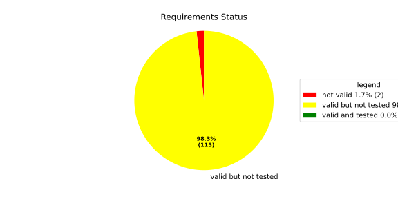
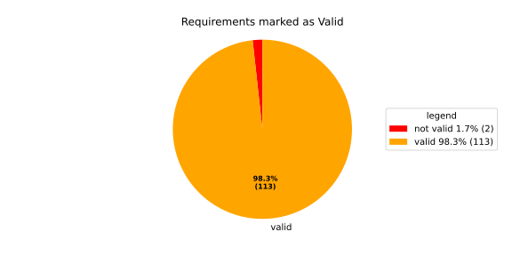
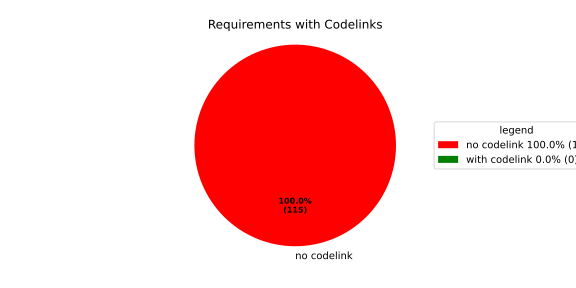

Verification Statistics#
Overview#

In Detail#


No needs passed the filters
Failed Tests
Hint: This table should be empty. Before a PR can be merged all tests have to be successful.
No needs passed the filters
Skipped / Disabled Tests
No needs passed the filters
All passed Tests#
No needs passed the filters
Details About Testcases#
No needs passed the filters
No needs passed the filters
Test Log Files#
tests-report/tests/integration/process_simple_rep_failure/process_simple_rep_failure/test.log
exec ${PAGER:-/usr/bin/less} "$0" || exit 1
Executing tests from //tests/integration/process_simple_rep_failure:process_simple_rep_failure
-----------------------------------------------------------------------------
============================= test session starts ==============================
platform linux -- Python 3.12.12, pytest-9.0.3, pluggy-1.5.0
rootdir: /home/runner/.bazel/sandbox/processwrapper-sandbox/1083/execroot/_main/bazel-out/k8-fastbuild/bin/tests/integration/process_simple_rep_failure/process_simple_rep_failure.runfiles/score_itf+
configfile: pytest.ini
collected 1 item
../score_itf+::test_recovery_action_simple_rep_failure
-------------------------------- live log setup --------------------------------
[2026-07-01 06:22:13.522] [INFO] [score.itf.plugins.docker] Executing custom image bootstrap command: tests/utils/environments/x86_64-linux/x86_64-linux.sh
[2026-07-01 06:22:13.745] [DEBUG] [docker.utils.config] Trying paths: ['/home/runner/.docker/config.json', '/home/runner/.dockercfg']
[2026-07-01 06:22:13.746] [DEBUG] [docker.utils.config] Found file at path: /home/runner/.docker/config.json
[2026-07-01 06:22:13.746] [DEBUG] [docker.auth] Found 'auths' section
[2026-07-01 06:22:13.746] [DEBUG] [docker.auth] Found entry (registry='https://index.docker.io/v1/', username='githubactions')
[2026-07-01 06:22:13.764] [DEBUG] [urllib3.connectionpool] http://localhost:None "GET /version HTTP/1.1" 200 823
[2026-07-01 06:22:13.838] [DEBUG] [urllib3.connectionpool] http://localhost:None "POST /v1.48/containers/create HTTP/1.1" 201 88
[2026-07-01 06:22:13.843] [DEBUG] [urllib3.connectionpool] http://localhost:None "GET /v1.48/containers/1580663f255b35aff8eaa4299e78210f455427ee3dee1937fa5dba4d6b8c8d28/json HTTP/1.1" 200 None
[2026-07-01 06:22:14.026] [DEBUG] [urllib3.connectionpool] http://localhost:None "POST /v1.48/containers/1580663f255b35aff8eaa4299e78210f455427ee3dee1937fa5dba4d6b8c8d28/start HTTP/1.1" 204 0
[2026-07-01 06:22:14.027] [DEBUG] [docker.utils.config] Trying paths: ['/home/runner/.docker/config.json', '/home/runner/.dockercfg']
[2026-07-01 06:22:14.027] [DEBUG] [docker.utils.config] Found file at path: /home/runner/.docker/config.json
[2026-07-01 06:22:14.028] [DEBUG] [docker.auth] Found 'auths' section
[2026-07-01 06:22:14.028] [DEBUG] [docker.auth] Found entry (registry='https://index.docker.io/v1/', username='githubactions')
[2026-07-01 06:22:14.051] [DEBUG] [urllib3.connectionpool] http://localhost:None "GET /version HTTP/1.1" 200 823
[2026-07-01 06:22:14.306] [INFO] [tests.utils.testing_utils.setup_test] Test case setup finished
-------------------------------- live log call ---------------------------------
[2026-07-01 06:22:14.527] [INFO] [launch_manager] 2026/07/01 06:22:14.6934509 3673611 000 ECU1 LM LM log debug verbose 1
[2026-07-01 06:22:14.528] [INFO] [launch_manager] Launch Manager Started !!!!
[2026-07-01 06:22:14.529] [INFO] [launch_manager] 2026/07/01 06:22:14.6934510 3673625 000 ECU1 LM LM log debug verbose 1 Loading LCM Configurations...
[2026-07-01 06:22:14.530] [INFO] [launch_manager] 2026/07/01 06:22:14.6934510 3673626 000 ECU1 LM LM log debug verbose 1 ECUCFG_ENV_VAR_ROOTFOLDER set successfully
[2026-07-01 06:22:14.530] [INFO] [launch_manager] 2026/07/01 06:22:14.6934511 3673628 000 ECU1 LM LM log debug verbose 5 FlatBufferParser::getModeGroupPgName: MainPG ( IdentifierHash: 18079021346025578134 )
[2026-07-01 06:22:14.530] [INFO] [launch_manager] 2026/07/01 06:22:14.6934511 3673629 000 ECU1 LM LM log debug verbose 5 FlatBufferParser::getModeGroupPgStateName: MainPG/Startup ( IdentifierHash: 10504605499600661529 )
[2026-07-01 06:22:14.530] [INFO] [launch_manager] 2026/07/01 06:22:14.6934511 3673633 000 ECU1 LM LM log debug verbose 5 FlatBufferParser::getModeGroupPgStateName: MainPG/run_target_app_does_report_krunning_in_time ( IdentifierHash: 11934981641920773349 )
[2026-07-01 06:22:14.530] [INFO] [launch_manager] 2026/07/01 06:22:14.6934512 3673643 000 ECU1 LM LM log debug verbose 5
[2026-07-01 06:22:14.530] [INFO] [launch_manager] FlatBufferParser::getModeGroupPgStateName: MainPG/run_target_app_does_not_report_krunning_in_time ( IdentifierHash: 7672161913816744053 )
[2026-07-01 06:22:14.531] [INFO] [launch_manager] 2026/07/01 06:22:14.6934512 3673644 000 ECU1 LM LM log debug verbose 5
[2026-07-01 06:22:14.531] [INFO] [launch_manager] FlatBufferParser::getModeGroupPgStateName: MainPG/Off ( IdentifierHash: 15281793077830264047 )
[2026-07-01 06:22:14.531] [INFO] [launch_manager] 2026/07/01 06:22:14.6934512 3673647 000 ECU1 LM LM log debug verbose 5
[2026-07-01 06:22:14.541] [INFO] [launch_manager] FlatBufferParser::getModeGroupPgStateName: MainPG/fallback_run_target ( IdentifierHash: 4059409696722237352 )
[2026-07-01 06:22:14.542] [INFO] [launch_manager] 2026/07/01 06:22:14.6934513 3673650 000 ECU1 LM LM log debug verbose 4
[2026-07-01 06:22:14.542] [INFO] [launch_manager] parseProcessConfigurations: Process index: 0 executable_path_: /tmp/tests/process_simple_rep_failure/control_client_mock
[2026-07-01 06:22:14.542] [INFO] [launch_manager] 2026/07/01 06:22:14.6934513 3673651 000 ECU1 LM LM log debug verbose 3
[2026-07-01 06:22:14.542] [INFO] [launch_manager] Process control_client_mock is Reporting execution state
[2026-07-01 06:22:14.542] [INFO] [launch_manager] 2026/07/01 06:22:14.6934513 3673653 000 ECU1 LM LM log debug verbose 1
[2026-07-01 06:22:14.542] [INFO] [launch_manager] Process is STATE_MANAGEMENT function Cluster Affiliation
[2026-07-01 06:22:14.542] [INFO] [launch_manager] 2026/07/01 06:22:14.6934513 3673654 000 ECU1 LM LM log debug verbose 3
[2026-07-01 06:22:14.542] [INFO] [launch_manager] Process control_client_mock is Self terminating
[2026-07-01 06:22:14.543] [INFO] [launch_manager] 2026/07/01 06:22:14.6934514 3673659 000 ECU1 LM LM log debug verbose 4
[2026-07-01 06:22:14.543] [INFO] [launch_manager] ParseProcessProcessGroup: id:::pg_name_: MainPG , pg_state_name_: MainPG/Startup
[2026-07-01 06:22:14.543] [INFO] [launch_manager] 2026/07/01 06:22:14.6934514 3673661 000 ECU1 LM LM log debug verbose 4
[2026-07-01 06:22:14.543] [INFO] [launch_manager] ParseProcessProcessGroup: id:::pg_name_: MainPG , pg_state_name_: MainPG/run_target_app_does_report_krunning_in_time
[2026-07-01 06:22:14.543] [INFO] [launch_manager] 2026/07/01 06:22:14.6934514 3673663 000 ECU1 LM LM log debug verbose 4
[2026-07-01 06:22:14.543] [INFO] [launch_manager] ParseProcessProcessGroup: id:::pg_name_: MainPG , pg_state_name_: MainPG/run_target_app_does_not_report_krunning_in_time
[2026-07-01 06:22:14.543] [INFO] [launch_manager] 2026/07/01 06:22:14.6934514 3673664 000 ECU1 LM LM log debug verbose 4
[2026-07-01 06:22:14.544] [INFO] [launch_manager] ParseProcessProcessGroup: id:::pg_name_: MainPG , pg_state_name_: MainPG/fallback_run_target
[2026-07-01 06:22:14.545] [INFO] [launch_manager] 2026/07/01 06:22:14.6934515 3673667 000 ECU1 LM LM log debug verbose 4
[2026-07-01 06:22:14.546] [INFO] [launch_manager] parseProcessConfigurations: Process index: 1 executable_path_: /tmp/tests/process_simple_rep_failure/process_simple_reporting
[2026-07-01 06:22:14.546] [INFO] [launch_manager] 2026/07/01 06:22:14.6934515 3673669 000 ECU1 LM LM log debug verbose 3
[2026-07-01 06:22:14.546] [INFO] [launch_manager] Process component_does_report_krunning_in_time is Reporting execution state
[2026-07-01 06:22:14.546] [INFO] [launch_manager] 2026/07/01 06:22:14.6934515 3673670 000 ECU1 LM LM log debug verbose 1
[2026-07-01 06:22:14.546] [INFO] [launch_manager] Process is NOT associated with any function Cluster Affiliation
[2026-07-01 06:22:14.546] [INFO] [launch_manager] 2026/07/01 06:22:14.6934515 3673672 000 ECU1 LM LM log debug verbose 3 Process component_does_report_krunning_in_time is Self terminating
[2026-07-01 06:22:14.547] [INFO] [launch_manager] 2026/07/01 06:22:14.6934515 3673673 000 ECU1 LM LM log debug verbose 4
[2026-07-01 06:22:14.547] [INFO] [launch_manager] ParseProcessProcessGroup: id:::pg_name_: MainPG , pg_state_name_: MainPG/run_target_app_does_report_krunning_in_time
[2026-07-01 06:22:14.547] [INFO] [launch_manager] 2026/07/01 06:22:14.6934515 3673674 000 ECU1 LM LM log debug verbose 4
[2026-07-01 06:22:14.547] [INFO] [launch_manager] parseProcessConfigurations: Process index: 2 executable_path_: /tmp/tests/process_simple_rep_failure/process_simple_reporting
[2026-07-01 06:22:14.549] [INFO] [launch_manager] 2026/07/01 06:22:14.6934515 3673675 000 ECU1 LM LM log debug verbose 3
[2026-07-01 06:22:14.550] [INFO] [launch_manager] Process component_does_not_report_krunning_in_time is Reporting execution state
[2026-07-01 06:22:14.551] [INFO] [launch_manager] 2026/07/01 06:22:14.6934515 3673676 000 ECU1 LM LM log debug verbose 1
[2026-07-01 06:22:14.551] [INFO] [launch_manager] Process is NOT associated with any function Cluster Affiliation
[2026-07-01 06:22:14.551] [INFO] [launch_manager] 2026/07/01 06:22:14.6934516 3673678 000 ECU1 LM LM log debug verbose 3 Process component_does_not_report_krunning_in_time is Self terminating
[2026-07-01 06:22:14.551] [INFO] [launch_manager] 2026/07/01 06:22:14.6934516 3673679 000 ECU1 LM LM log debug verbose 4 ParseProcessProcessGroup: id:::pg_name_: MainPG , pg_state_name_: MainPG/run_target_app_does_not_report_krunning_in_time
[2026-07-01 06:22:14.551] [INFO] [launch_manager] 2026/07/01 06:22:14.6934516 3673680 000 ECU1 LM LM log debug verbose 4 parseProcessConfigurations: Process index: 3 executable_path_: /tmp/tests/process_simple_rep_failure/verification_process
[2026-07-01 06:22:14.551] [INFO] [launch_manager] 2026/07/01 06:22:14.6934516 3673681 000 ECU1 LM LM log debug verbose 3 Process verification_component is NOT Reporting execution state
[2026-07-01 06:22:14.552] [INFO] [launch_manager] 2026/07/01 06:22:14.6934516 3673682 000 ECU1 LM LM log debug verbose 1 Process is NOT associated with any function Cluster Affiliation
[2026-07-01 06:22:14.552] [INFO] [launch_manager] 2026/07/01 06:22:14.6934516 3673683 000 ECU1 LM LM log debug verbose 3 Process verification_component is Self terminating
[2026-07-01 06:22:14.552] [INFO] [launch_manager] 2026/07/01 06:22:14.6934516 3673684 000 ECU1 LM LM log debug verbose 4
[2026-07-01 06:22:14.554] [INFO] [launch_manager] ParseProcessProcessGroup: id:::pg_name_: MainPG , pg_state_name_: MainPG/fallback_run_target
[2026-07-01 06:22:14.554] [INFO] [launch_manager] 2026/07/01 06:22:14.6934516 3673685 000 ECU1 LM LM log debug verbose 3
[2026-07-01 06:22:14.554] [INFO] [launch_manager] Loading SWCL Nr. 0 Succeeded
[2026-07-01 06:22:14.554] [INFO] [launch_manager] 2026/07/01 06:22:14.6934517 3673688 000 ECU1 LM LM log debug verbose 2
[2026-07-01 06:22:14.554] [INFO] [launch_manager] 1 process group(s)
[2026-07-01 06:22:14.554] [INFO] [launch_manager] 2026/07/01 06:22:14.6934517 3673689 000 ECU1 LM LM log debug verbose 3
[2026-07-01 06:22:14.555] [INFO] [launch_manager] Creating graph with 4 nodes
[2026-07-01 06:22:14.555] [INFO] [launch_manager] 2026/07/01 06:22:14.6934517 3673690 000 ECU1 LM LM log debug verbose 1
[2026-07-01 06:22:14.555] [INFO] [launch_manager] Process groups initialized successfully
[2026-07-01 06:22:14.555] [INFO] [launch_manager] 2026/07/01 06:22:14.6934517 3673692 000 ECU1 LM LM log debug verbose 1
[2026-07-01 06:22:14.555] [INFO] [launch_manager] Process Group initialization done
[2026-07-01 06:22:14.555] [INFO] [launch_manager] 2026/07/01 06:22:14.6934517 3673693 000 ECU1 LM LM log debug verbose 3
[2026-07-01 06:22:14.558] [INFO] [launch_manager] Creating Safe Process Map with 4 entries
[2026-07-01 06:22:14.558] [INFO] [launch_manager] 2026/07/01 06:22:14.6934517 3673695 000 ECU1 LM LM log debug verbose 2 Creating job queue with capacity 1024
[2026-07-01 06:22:14.558] [INFO] [launch_manager] 2026/07/01 06:22:14.6934517 3673696 000 ECU1 LM LM log debug verbose 1
[2026-07-01 06:22:14.558] [INFO] [launch_manager] Creating worker threads...
[2026-07-01 06:22:14.559] [INFO] [launch_manager] 2026/07/01 06:22:14.6934519 3673716 000 ECU1 LM LM log debug verbose 7 Process group index 0 (with name MainPG ) has 4 processes
[2026-07-01 06:22:14.559] [INFO] [launch_manager] 2026/07/01 06:22:14.6934519 3673716 000 ECU1 LM LM log debug verbose 2 Creating process node with id: 0
[2026-07-01 06:22:14.559] [INFO] [launch_manager] 2026/07/01 06:22:14.6934519 3673716 000 ECU1 LM LM log debug verbose 5 Process 0 has 0 start dependencies
[2026-07-01 06:22:14.559] [INFO] [launch_manager] 2026/07/01 06:22:14.6934519 3673716 000 ECU1 LM LM log debug verbose 2 Creating process node with id: 1
[2026-07-01 06:22:14.559] [INFO] [launch_manager] 2026/07/01 06:22:14.6934519 3673717 000 ECU1 LM LM log debug verbose 5 Process 1 has 0 start dependencies
[2026-07-01 06:22:14.559] [INFO] [launch_manager] 2026/07/01 06:22:14.6934519 3673717 000 ECU1 LM LM log debug verbose 2 Creating process node with id: 2
[2026-07-01 06:22:14.559] [INFO] [launch_manager] 2026/07/01 06:22:14.6934520 3673717 000 ECU1 LM LM log debug verbose 5 Process 2 has 0 start dependencies
[2026-07-01 06:22:14.560] [INFO] [launch_manager] 2026/07/01 06:22:14.6934520 3673717 000 ECU1 LM LM log debug verbose 2 Creating process node with id: 3
[2026-07-01 06:22:14.561] [INFO] [launch_manager] 2026/07/01 06:22:14.6934520 3673718 000 ECU1 LM LM log debug verbose 5 Process 3 has 0 start dependencies
[2026-07-01 06:22:14.561] [INFO] [launch_manager] 2026/07/01 06:22:14.6934520 3673718 000 ECU1 LM LM log debug verbose 3 Created 4 process nodes
[2026-07-01 06:22:14.561] [INFO] [launch_manager] 2026/07/01 06:22:14.6934520 3673718 000 ECU1 LM LM log debug verbose 2 Creating successor lists for process group MainPG
[2026-07-01 06:22:14.561] [INFO] [launch_manager] 2026/07/01 06:22:14.6934520 3673718 000 ECU1 LM LM log debug verbose 1 Graphs initialized
[2026-07-01 06:22:14.561] [INFO] [launch_manager] 2026/07/01 06:22:14.6934520 3673721 000 ECU1 LM Fcty log info verbose 2 Factory for FlatCfg MachineConfig: Loading of HM Machine Configuration succeeded.
[2026-07-01 06:22:14.561] [INFO] [launch_manager] 2026/07/01 06:22:14.6934520 3673721 000 ECU1 LM Fcty log debug verbose 3 Factory for FlatCfg MachineConfig: Alive Supervision buffer size: 100
[2026-07-01 06:22:14.561] [INFO] [launch_manager] 2026/07/01 06:22:14.6934520 3673721 000 ECU1 LM Fcty log debug verbose 3 Factory for FlatCfg MachineConfig: Monitor buffer size: 512
[2026-07-01 06:22:14.561] [INFO] [launch_manager] 2026/07/01 06:22:14.6934520 3673721 000 ECU1 LM Fcty log debug verbose 4 Factory for FlatCfg MachineConfig: Periodicity: 50000000 ns
[2026-07-01 06:22:14.561] [INFO] [launch_manager] 2026/07/01 06:22:14.6934520 3673721 000 ECU1 LM Fcty log debug verbose 3 Factory for FlatCfg MachineConfig: Configured watchdogs: 0
[2026-07-01 06:22:14.561] [INFO] [launch_manager] 2026/07/01 06:22:14.6934520 3673722 000 ECU1 LM Fcty log warn verbose 2 Factory for FlatCfg MachineConfig: No watchdog configured
[2026-07-01 06:22:14.562] [INFO] [launch_manager] 2026/07/01 06:22:14.6934520 3673722 000 ECU1 LM Fcty log debug verbose 2 Software Cluster Handler starts constructing workers: MainCluster
[2026-07-01 06:22:14.562] [INFO] [launch_manager] 2026/07/01 06:22:14.6934520 3673722 000 ECU1 LM Fcty log debug verbose 3 Factory for FlatCfg AR24-11: Successfully created Process States: control_client_mock
[2026-07-01 06:22:14.562] [INFO] [launch_manager] 2026/07/01 06:22:14.6934520 3673723 000 ECU1 LM Fcty log debug verbose 3 Factory for FlatCfg AR24-11: Number of constructed Process States: 1
[2026-07-01 06:22:14.562] [INFO] [launch_manager] 2026/07/01 06:22:14.6934520 3673724 000 ECU1 LM Fcty log debug verbose 3 Factory for FlatCfg AR24-11: Successfully created Alive interface IPC with path: lifecycle_health_control_client_mock
[2026-07-01 06:22:14.562] [INFO] [launch_manager] 2026/07/01 06:22:14.6934520 3673724 000 ECU1 LM Fcty log debug verbose 3 Factory for FlatCfg AR24-11: Number of constructed Alive interface IPCs: 1
[2026-07-01 06:22:14.562] [INFO] [launch_manager] 2026/07/01 06:22:14.6934520 3673724 000 ECU1 LM Fcty log debug verbose 3 Factory for FlatCfg AR24-11: Successfully created Alive Interface: /lifecycle_health_control_client_mock
[2026-07-01 06:22:14.562] [INFO] [launch_manager] 2026/07/01 06:22:14.6934520 3673724 000 ECU1 LM Fcty log debug verbose 3 Factory for FlatCfg AR24-11: Number of constructed Alive interfaces: 1
[2026-07-01 06:22:14.562] [INFO] [launch_manager] 2026/07/01 06:22:14.6934520 3673725 000 ECU1 LM Fcty log debug verbose 3 Factory for FlatCfg AR24-11: Successfully created supervision checkpoint: control_client_mock_checkpoint
[2026-07-01 06:22:14.562] [INFO] [launch_manager] 2026/07/01 06:22:14.6934520 3673725 000 ECU1 LM Fcty log debug verbose 3 Factory for FlatCfg AR24-11: Number of constructed supervision checkpoints: 1
[2026-07-01 06:22:14.562] [INFO] [launch_manager] 2026/07/01 06:22:14.6934520 3673725 000 ECU1 LM Fcty log debug verbose 3 Factory for FlatCfg AR24-11: Successfully created alive supervision worker object: control_client_mock_alive_supervision
[2026-07-01 06:22:14.562] [INFO] [launch_manager] 2026/07/01 06:22:14.6934520 3673725 000 ECU1 LM Fcty log debug verbose 3 Factory for FlatCfg AR24-11: Number of constructed alive supervisions: 1
[2026-07-01 06:22:14.562] [INFO] [launch_manager] 2026/07/01 06:22:14.6934520 3673725 000 ECU1 LM Fcty log info verbose 2 Phm Daemon: The (configured) periodicity in [ns] is set to: 50000000
[2026-07-01 06:22:14.563] [INFO] [launch_manager] 2026/07/01 06:22:14.6934520 3673726 000 ECU1 LM Fcty log debug verbose 2 Phm Daemon: The accuracy of the monotonic system clock in [ns] is: 1
[2026-07-01 06:22:14.563] [INFO] [launch_manager] 2026/07/01 06:22:14.6934520 3673726 000 ECU1 LM Fcty log debug verbose 3 AliveMonitor: Initialization took 0 ms
[2026-07-01 06:22:14.566] [INFO] [launch_manager] 2026/07/01 06:22:14.6934520 3673726 000 ECU1 LM LM log info verbose 1 LCM started successfully
[2026-07-01 06:22:14.566] [INFO] [launch_manager] 2026/07/01 06:22:14.6934521 3673727 000 ECU1 LM LM log debug verbose 3 clock() at run(): 43.155000 ms
[2026-07-01 06:22:14.567] [INFO] [launch_manager] 2026/07/01 06:22:14.6934521 3673729 000 ECU1 LM LM log debug verbose 1 =============STARTING MAINPG STARTUP STATE============
[2026-07-01 06:22:14.567] [INFO] [launch_manager] 2026/07/01 06:22:14.6934521 3673729 000 ECU1 LM LM log debug verbose 9 Graph::setState changes from kSuccess to kInTransition for PG 0 ( MainPG )
[2026-07-01 06:22:14.567] [INFO] [launch_manager] 2026/07/01 06:22:14.6934521 3673730 000 ECU1 LM LM log debug verbose 2 Stop Dependencies: 0
[2026-07-01 06:22:14.567] [INFO] [launch_manager] 2026/07/01 06:22:14.6934521 3673730 000 ECU1 LM LM log debug verbose 2 Stop Dependencies: 0
[2026-07-01 06:22:14.569] [INFO] [launch_manager] 2026/07/01 06:22:14.6934521 3673730 000 ECU1 LM LM log debug verbose 2 Stop Dependencies: 0
[2026-07-01 06:22:14.569] [INFO] [launch_manager] 2026/07/01 06:22:14.6934521 3673730 000 ECU1 LM LM log debug verbose 2 Stop Dependencies: 0
[2026-07-01 06:22:14.570] [INFO] [launch_manager] 2026/07/01 06:22:14.6934521 3673731 000 ECU1 LM LM log debug verbose 2 Start Dependencies: 0
[2026-07-01 06:22:14.570] [INFO] [launch_manager] 2026/07/01 06:22:14.6934521 3673731 000 ECU1 LM LM log debug verbose 2 Start Dependencies: 0
[2026-07-01 06:22:14.573] [INFO] [launch_manager] 2026/07/01 06:22:14.6934521 3673731 000 ECU1 LM LM log debug verbose 2 Start Dependencies: 0
[2026-07-01 06:22:14.573] [INFO] [launch_manager] 2026/07/01 06:22:14.6934521 3673732 000 ECU1 LM LM log debug verbose 2 Start Dependencies: 0
[2026-07-01 06:22:14.575] [INFO] [launch_manager] 2026/07/01 06:22:14.6934521 3673733 000 ECU1 LM LM log debug verbose 6 Starting process 0 ( control_client_mock ) from executable /tmp/tests/process_simple_rep_failure/control_client_mock
[2026-07-01 06:22:14.575] [INFO] [launch_manager] 2026/07/01 06:22:14.6934521 3673733 000 ECU1 LM LM log debug verbose 3 Initialize the control client for control_client_mock process
[2026-07-01 06:22:14.575] [INFO] [launch_manager] 2026/07/01 06:22:14.6934521 3673734 000 ECU1 LM LM log debug verbose 1 ControlClientChannel initialized
[2026-07-01 06:22:14.575] [INFO] [launch_manager] 2026/07/01 06:22:14.6934522 3673739 000 ECU1 LM LM log debug verbose 4 startProcess pid 67 received for process: control_client_mock
[2026-07-01 06:22:14.575] [INFO] [launch_manager] 2026/07/01 06:22:14.6934522 3673739 000 ECU1 LM LM log debug verbose 1 ControlClientChannel obtained from sync.
[2026-07-01 06:22:14.576] [INFO] [launch_manager] [==========] Running 1 test from 1 test suite.
[2026-07-01 06:22:14.576] [INFO] [launch_manager] [----------] Global test environment set-up.
[2026-07-01 06:22:14.576] [INFO] [launch_manager] [----------] 1 test from RecoveryActionSimpleRepFailure
[2026-07-01 06:22:14.576] [INFO] [launch_manager] [ RUN ] RecoveryActionSimpleRepFailure.ControlClientMock
[2026-07-01 06:22:14.576] [INFO] [launch_manager] [ STEP ] Report running from ControlClientMock
[2026-07-01 06:22:14.577] [INFO] [launch_manager] [ END STEP ] Report running from ControlClientMock
[2026-07-01 06:22:14.577] [INFO] [launch_manager] [ STEP ] Activate RunTarget run_target_app_does_report_krunning_in_time
[2026-07-01 06:22:14.578] [INFO] [launch_manager] 2026/07/01 06:22:14.6934527 3673797 000 ECU1 LM LM log debug verbose 1
[2026-07-01 06:22:14.578] [INFO] [launch_manager] Request sent. Waiting for acknowledgment...
[2026-07-01 06:22:14.578] [INFO] [launch_manager] 2026/07/01 06:22:14.6934529 3673812 000 ECU1 LM LM log debug verbose 8
[2026-07-01 06:22:14.579] [INFO] [launch_manager] Got kRunning for pid 67 ( control_client_mock ) process 0 of group MainPG
[2026-07-01 06:22:14.580] [INFO] [launch_manager] 2026/07/01 06:22:14.6934529 3673813 000 ECU1 LM LM log debug verbose 7
[2026-07-01 06:22:14.581] [INFO] [launch_manager] startProcess for MainPG process 0 ( control_client_mock ) done
[2026-07-01 06:22:14.586] [INFO] [launch_manager] 2026/07/01 06:22:14.6934529 3673814 000 ECU1 LM LM log debug verbose 1
[2026-07-01 06:22:14.588] [INFO] [launch_manager] Control Client handler nudged
[2026-07-01 06:22:14.591] [INFO] [launch_manager] 2026/07/01 06:22:14.6934529 3673815 000 ECU1 LM LM log debug verbose 3
[2026-07-01 06:22:14.593] [INFO] [launch_manager] clock() at successful initial state transition: 44.706000 ms
[2026-07-01 06:22:14.593] [INFO] [launch_manager] 2026/07/01 06:22:14.6934529 3673816 000 ECU1 LM LM log debug verbose 9 Graph::setState changes from kInTransition to kSuccess for PG 0 ( MainPG )
[2026-07-01 06:22:14.593] [INFO] [launch_manager] 2026/07/01 06:22:14.6934529 3673817 000 ECU1 LM LM log debug verbose 8
[2026-07-01 06:22:14.593] [INFO] [launch_manager] ProcessGroupManager::ControlClientHandler: got request kSetStateRequest ( 16 ) re state MainPG/run_target_app_does_report_krunning_in_time of PG MainPG
[2026-07-01 06:22:14.593] [INFO] [launch_manager] 2026/07/01 06:22:14.6934530 3673818 000 ECU1 LM LM log info verbose 7
[2026-07-01 06:22:14.594] [INFO] [launch_manager] Completed the request for PG MainPG to State MainPG/Startup in 8 ms
[2026-07-01 06:22:14.594] [INFO] [launch_manager] 2026/07/01 06:22:14.6934530 3673819 000 ECU1 LM LM log debug verbose 1
[2026-07-01 06:22:14.594] [INFO] [launch_manager] Control Client handler nudged
[2026-07-01 06:22:14.594] [INFO] [launch_manager] 2026/07/01 06:22:14.6934531 3673831 000 ECU1 LM LM log debug verbose 6 Pending state for process group MainPG changed from to MainPG/run_target_app_does_report_krunning_in_time
[2026-07-01 06:22:14.594] [INFO] [launch_manager] 2026/07/01 06:22:14.6934531 3673832 000 ECU1 LM LM log debug verbose 1
[2026-07-01 06:22:14.594] [INFO] [launch_manager] Request acknowledged.
[2026-07-01 06:22:14.594] [INFO] [launch_manager] 2026/07/01 06:22:14.6934531 3673833 000 ECU1 LM LM log debug verbose 6 Pending state for process group MainPG changed from MainPG/run_target_app_does_report_krunning_in_time to
[2026-07-01 06:22:14.594] [INFO] [launch_manager] 2026/07/01 06:22:14.6934531 3673834 000 ECU1 LM LM log debug verbose 4
[2026-07-01 06:22:14.595] [INFO] [launch_manager] Start transition to MainPG/run_target_app_does_report_krunning_in_time for PG MainPG
[2026-07-01 06:22:14.595] [INFO] [launch_manager] 2026/07/01 06:22:14.6934531 3673834 000 ECU1 LM LM log debug verbose 9 Graph::setState changes from kSuccess to kInTransition for PG 0 ( MainPG )
[2026-07-01 06:22:14.596] [INFO] [launch_manager] 2026/07/01 06:22:14.6934531 3673835 000 ECU1 LM LM log debug verbose 2
[2026-07-01 06:22:14.596] [INFO] [launch_manager] Stop Dependencies: 0
[2026-07-01 06:22:14.596] [INFO] [launch_manager] 2026/07/01 06:22:14.6934531 3673836 000 ECU1 LM LM log debug verbose 2 Stop Dependencies: 0
[2026-07-01 06:22:14.596] [INFO] [launch_manager] 2026/07/01 06:22:14.6934531 3673836 000 ECU1 LM LM log debug verbose 2
[2026-07-01 06:22:14.597] [INFO] [launch_manager] Stop Dependencies: 0
[2026-07-01 06:22:14.597] [INFO] [launch_manager] 2026/07/01 06:22:14.6934532 3673837 000 ECU1 LM LM log debug verbose 2 Stop Dependencies: 0
[2026-07-01 06:22:14.599] [INFO] [launch_manager] 2026/07/01 06:22:14.6934532 3673838 000 ECU1 LM LM log debug verbose 2
[2026-07-01 06:22:14.599] [INFO] [launch_manager] Start Dependencies: 0
[2026-07-01 06:22:14.599] [INFO] [launch_manager] 2026/07/01 06:22:14.6934532 3673839 000 ECU1 LM LM log debug verbose 2 Start Dependencies: 0
[2026-07-01 06:22:14.599] [INFO] [launch_manager] 2026/07/01 06:22:14.6934532 3673840 000 ECU1 LM LM log debug verbose 2 Start Dependencies: 0
[2026-07-01 06:22:14.599] [INFO] [launch_manager] 2026/07/01 06:22:14.6934532 3673841 000 ECU1 LM LM log debug verbose 2 Start Dependencies: 0
[2026-07-01 06:22:14.600] [INFO] [launch_manager] 2026/07/01 06:22:14.6934532 3673842 000 ECU1 LM LM log debug verbose 6 Starting process 1 ( component_does_report_krunning_in_time ) from executable /tmp/tests/process_simple_rep_failure/process_simple_reporting
[2026-07-01 06:22:14.600] [INFO] [launch_manager] 2026/07/01 06:22:14.6934532 3673843 000 ECU1 LM LM log debug verbose 1 Request acknowledged.
[2026-07-01 06:22:14.600] [INFO] [launch_manager] 2026/07/01 06:22:14.6934533 3673849 000 ECU1 LM LM log debug verbose 4 startProcess pid 69 received for process: component_does_report_krunning_in_time
[2026-07-01 06:22:14.600] [INFO] [launch_manager] [==========] Running 1 test from 1 test suite.
[2026-07-01 06:22:14.600] [INFO] [launch_manager] [----------] Global test environment set-up.
[2026-07-01 06:22:14.600] [INFO] [launch_manager] [----------] 1 test from ProcessSimpleRepFailure
[2026-07-01 06:22:14.600] [INFO] [launch_manager] [ RUN ] ProcessSimpleRepFailure.ProcessSimpleReporting
[2026-07-01 06:22:14.600] [INFO] [launch_manager] [ STEP ] Check args
[2026-07-01 06:22:14.600] [INFO] [launch_manager] [ END STEP ] Check args
[2026-07-01 06:22:14.600] [INFO] [launch_manager] [ STEP ] Report running from ProcessSimpleReporting
[2026-07-01 06:22:14.601] [INFO] [launch_manager] 2026/07/01 06:22:14.6934571 3674243 000 ECU1 LM Sprv log debug verbose 6
[2026-07-01 06:22:14.601] [INFO] [launch_manager] Process with Id control_client_mock changed state PG MainPG/Startup PS 1
[2026-07-01 06:22:14.602] [INFO] [launch_manager] 2026/07/01 06:22:14.6934572 3674245 000 ECU1 LM Sprv log debug verbose 6
[2026-07-01 06:22:14.603] [INFO] [launch_manager] Process with Id control_client_mock changed state PG MainPG/Startup PS 2
[2026-07-01 06:22:14.607] [INFO] [launch_manager] 2026/07/01 06:22:14.6934573 3674247 000 ECU1 LM Sprv log debug verbose 6
[2026-07-01 06:22:14.608] [INFO] [launch_manager] Process with Id component_does_report_krunning_in_time changed state PG MainPG/run_target_app_does_report_krunning_in_time PS 1
[2026-07-01 06:22:14.608] [INFO] [launch_manager] 2026/07/01 06:22:14.6934573 3674248 000 ECU1 LM Sprv log info verbose 3
[2026-07-01 06:22:14.608] [INFO] [launch_manager] Alive Supervision ( control_client_mock_alive_supervision ) switched to OK.
[2026-07-01 06:22:14.608] [DEBUG] [tests.utils.testing_utils.run_until_file_deployed] Waiting for /tmp/tests/test_end
[2026-07-01 06:22:15.040] [INFO] [launch_manager] [ END STEP ] Report running from ProcessSimpleReporting
[2026-07-01 06:22:15.040] [INFO] [launch_manager] [ OK ] ProcessSimpleRepFailure.ProcessSimpleReporting (502 ms)
[2026-07-01 06:22:15.040] [INFO] [launch_manager] [----------] 1 test from ProcessSimpleRepFailure (502 ms total)
[2026-07-01 06:22:15.040] [INFO] [launch_manager] [----------] Global test environment tear-down
[2026-07-01 06:22:15.040] [INFO] [launch_manager] [==========] 1 test from 1 test suite ran. (502 ms total)
[2026-07-01 06:22:15.040] [INFO] [launch_manager] [ PASSED ] 1 test.
[2026-07-01 06:22:15.042] [INFO] [launch_manager] 2026/07/01 06:22:15.6935039 3678907 000 ECU1 LM LM log debug verbose 8 Got kRunning for pid 69 ( component_does_report_krunning_in_time ) process 1 of group MainPG
[2026-07-01 06:22:15.042] [INFO] [launch_manager] 2026/07/01 06:22:15.6935039 3678909 000 ECU1 LM LM log debug verbose 7 startProcess for MainPG process 1 ( component_does_report_krunning_in_time ) done
[2026-07-01 06:22:15.042] [INFO] [launch_manager] 2026/07/01 06:22:15.6935039 3678909 000 ECU1 LM LM log debug verbose 9 Graph::setState changes from kInTransition to kSuccess for PG 0 ( MainPG )
[2026-07-01 06:22:15.042] [INFO] [launch_manager] 2026/07/01 06:22:15.6935039 3678910 000 ECU1 LM LM log info verbose 7 Completed the request for PG MainPG to State MainPG/run_target_app_does_report_krunning_in_time in 507 ms
[2026-07-01 06:22:15.042] [INFO] [launch_manager] 2026/07/01 06:22:15.6935039 3678910 000 ECU1 LM LM log debug verbose 1 Control Client handler nudged
[2026-07-01 06:22:15.043] [INFO] [launch_manager] 2026/07/01 06:22:15.6935039 3678916 000 ECU1 LM LM log debug verbose 12 Child process 1 of MainPG pid 69 ( component_does_report_krunning_in_time ) for node True terminated with status 0
[2026-07-01 06:22:15.043] [INFO] [launch_manager] 2026/07/01 06:22:15.6935041 3678927 000 ECU1 LM LM log debug verbose 8 ProcessGroupManager::ControlClientHandler: Sending kSetStateSuccess ( 20 ) re state MainPG/run_target_app_does_report_krunning_in_time of PG MainPG
[2026-07-01 06:22:15.044] [INFO] [launch_manager] 2026/07/01 06:22:15.6935041 3678928 000 ECU1 LM LM log debug verbose 1 Response sent.
[2026-07-01 06:22:15.072] [INFO] [launch_manager] 2026/07/01 06:22:15.6935071 3679228 000 ECU1 LM Sprv log debug verbose 6 Process with Id component_does_report_krunning_in_time changed state PG MainPG/run_target_app_does_report_krunning_in_time PS 2
[2026-07-01 06:22:15.073] [INFO] [launch_manager] 2026/07/01 06:22:15.6935071 3679228 000 ECU1 LM Sprv log debug verbose 6 Process with Id component_does_report_krunning_in_time changed state PG MainPG/run_target_app_does_report_krunning_in_time PS 4
[2026-07-01 06:22:15.143] [INFO] [launch_manager] 2026/07/01 06:22:15.6935130 3679819 000 ECU1 LM LM log debug verbose 1 Response retrieved.
[2026-07-01 06:22:15.143] [INFO] [launch_manager] [ END STEP ] Activate RunTarget run_target_app_does_report_krunning_in_time
[2026-07-01 06:22:15.208] [DEBUG] [tests.utils.testing_utils.run_until_file_deployed] Waiting for /tmp/tests/test_end
[2026-07-01 06:22:15.807] [DEBUG] [tests.utils.testing_utils.run_until_file_deployed] Waiting for /tmp/tests/test_end
[2026-07-01 06:22:16.131] [INFO] [launch_manager] [ STEP ] Verify fallback run target has not been activated
[2026-07-01 06:22:16.131] [INFO] [launch_manager] [ END STEP ] Verify fallback run target has not been activated
[2026-07-01 06:22:16.131] [INFO] [launch_manager] [ STEP ] Activate RunTarget run_target_app_does_not_report_krunning_in_time
[2026-07-01 06:22:16.133] [INFO] [launch_manager] 2026/07/01 06:22:16.6936130 3689822 000 ECU1 LM LM log debug verbose 1 Request sent. Waiting for acknowledgment...
[2026-07-01 06:22:16.134] [INFO] [launch_manager] 2026/07/01 06:22:16.6936132 3689841 000 ECU1 LM LM log debug verbose 8 ProcessGroupManager::ControlClientHandler: got request kSetStateRequest ( 16 ) re state MainPG/run_target_app_does_not_report_krunning_in_time of PG MainPG
[2026-07-01 06:22:16.135] [INFO] [launch_manager] 2026/07/01 06:22:16.6936132 3689843 000 ECU1 LM LM log debug verbose 6
[2026-07-01 06:22:16.141] [INFO] [launch_manager] Pending state for process group MainPG changed from to MainPG/run_target_app_does_not_report_krunning_in_time
[2026-07-01 06:22:16.142] [INFO] [launch_manager] 2026/07/01 06:22:16.6936132 3689844 000 ECU1 LM LM log debug verbose 1
[2026-07-01 06:22:16.142] [INFO] [launch_manager] 2026/07/01 06:22:16.6936132 3689846 000 ECU1 LM LM log debug verbose 1
[2026-07-01 06:22:16.142] [INFO] [launch_manager] Request acknowledged.
[2026-07-01 06:22:16.142] [INFO] [launch_manager] 2026/07/01 06:22:16.6936133 3689848 000 ECU1 LM LM log debug verbose 6 Request acknowledged.
[2026-07-01 06:22:16.142] [INFO] [launch_manager] Pending state for process group MainPG changed from MainPG/run_target_app_does_not_report_krunning_in_time to
[2026-07-01 06:22:16.143] [INFO] [launch_manager] 2026/07/01 06:22:16.6936133 3689850 000 ECU1 LM LM log debug verbose 4 Start transition to MainPG/run_target_app_does_not_report_krunning_in_time for PG MainPG
[2026-07-01 06:22:16.143] [INFO] [launch_manager] 2026/07/01 06:22:16.6936133 3689852 000 ECU1 LM LM log debug verbose 9 Graph::setState changes from kSuccess to kInTransition for PG 0 ( MainPG )
[2026-07-01 06:22:16.143] [INFO] [launch_manager] 2026/07/01 06:22:16.6936133 3689853 000 ECU1 LM LM log debug verbose 2
[2026-07-01 06:22:16.143] [INFO] [launch_manager] Stop Dependencies: 0
[2026-07-01 06:22:16.143] [INFO] [launch_manager] 2026/07/01 06:22:16.6936133 3689853 000 ECU1 LM LM log debug verbose 2 Stop Dependencies: 0
[2026-07-01 06:22:16.144] [INFO] [launch_manager] 2026/07/01 06:22:16.6936133 3689854 000 ECU1 LM LM log debug verbose 2
[2026-07-01 06:22:16.147] [INFO] [launch_manager] Stop Dependencies: 0
[2026-07-01 06:22:16.147] [INFO] [launch_manager] 2026/07/01 06:22:16.6936133 3689855 000 ECU1 LM LM log debug verbose 2
[2026-07-01 06:22:16.147] [INFO] [launch_manager] Stop Dependencies: 0
[2026-07-01 06:22:16.147] [INFO] [launch_manager] 2026/07/01 06:22:16.6936133 3689855 000 ECU1 LM LM log debug verbose 2 Start Dependencies: 0
[2026-07-01 06:22:16.148] [INFO] [launch_manager] 2026/07/01 06:22:16.6936134 3689860 000 ECU1 LM LM log debug verbose 2
[2026-07-01 06:22:16.148] [INFO] [launch_manager] Start Dependencies: 0
[2026-07-01 06:22:16.148] [INFO] [launch_manager] 2026/07/01 06:22:16.6936134 3689862 000 ECU1 LM LM log debug verbose 2 Start Dependencies: 0
[2026-07-01 06:22:16.148] [INFO] [launch_manager] 2026/07/01 06:22:16.6936134 3689863 000 ECU1 LM LM log debug verbose 2
[2026-07-01 06:22:16.148] [INFO] [launch_manager] Start Dependencies: 0
[2026-07-01 06:22:16.148] [INFO] [launch_manager] 2026/07/01 06:22:16.6936134 3689867 000 ECU1 LM LM log debug verbose 6 Starting process 2 ( component_does_not_report_krunning_in_time ) from executable /tmp/tests/process_simple_rep_failure/process_simple_reporting
[2026-07-01 06:22:16.148] [INFO] [launch_manager] 2026/07/01 06:22:16.6936136 3689884 000 ECU1 LM LM log debug verbose 4
[2026-07-01 06:22:16.148] [INFO] [launch_manager] startProcess pid 88 received for process: component_does_not_report_krunning_in_time
[2026-07-01 06:22:16.149] [INFO] [launch_manager] [==========] Running 1 test from 1 test suite.
[2026-07-01 06:22:16.149] [INFO] [launch_manager] [----------] Global test environment set-up.
[2026-07-01 06:22:16.149] [INFO] [launch_manager] [----------] 1 test from ProcessSimpleRepFailure
[2026-07-01 06:22:16.149] [INFO] [launch_manager] [ RUN ] ProcessSimpleRepFailure.ProcessSimpleReporting
[2026-07-01 06:22:16.149] [INFO] [launch_manager] [ STEP ] Check args
[2026-07-01 06:22:16.149] [INFO] [launch_manager] [ END STEP ] Check args
[2026-07-01 06:22:16.149] [INFO] [launch_manager] [ STEP ] Report running from ProcessSimpleReporting
[2026-07-01 06:22:16.173] [INFO] [launch_manager] 2026/07/01 06:22:16.6936171 3690230 000 ECU1 LM Sprv log debug verbose 6 Process with Id component_does_not_report_krunning_in_time changed state PG MainPG/run_target_app_does_not_report_krunning_in_time PS 1
[2026-07-01 06:22:16.377] [DEBUG] [tests.utils.testing_utils.run_until_file_deployed] Waiting for /tmp/tests/test_end
[2026-07-01 06:22:17.029] [DEBUG] [tests.utils.testing_utils.run_until_file_deployed] Waiting for /tmp/tests/test_end
[2026-07-01 06:22:17.252] [INFO] [launch_manager] 2026/07/01 06:22:17.6937252 3701038 000 ECU1 LM LM log error verbose 1 Semaphore timedWait or post failed: Unable to wait or post on semaphores within the specified timeout.
[2026-07-01 06:22:17.252] [INFO] [launch_manager] 2026/07/01 06:22:17.6937252 3701038 000 ECU1 LM LM log warn verbose 5 Got kRunning timeout for process 2 ( component_does_not_report_krunning_in_time )
[2026-07-01 06:22:17.252] [INFO] [launch_manager] 2026/07/01 06:22:17.6937252 3701038 000 ECU1 LM LM log debug verbose 5 terminating process 2 ( component_does_not_report_krunning_in_time )
[2026-07-01 06:22:17.252] [INFO] [launch_manager] 2026/07/01 06:22:17.6937252 3701039 000 ECU1 LM LM log debug verbose 9 Requesting termination of process 2 of MainPG pid 88 ( component_does_not_report_krunning_in_time )
[2026-07-01 06:22:17.253] [INFO] [launch_manager] 2026/07/01 06:22:17.6937252 3701039 000 ECU1 LM LM log debug verbose 2 Request termination received for 88
[2026-07-01 06:22:17.271] [INFO] [launch_manager] 2026/07/01 06:22:17.6937271 3701228 000 ECU1 LM Sprv log debug verbose 6 Process with Id component_does_not_report_krunning_in_time changed state PG MainPG/run_target_app_does_not_report_krunning_in_time PS 3
[2026-07-01 06:22:17.593] [DEBUG] [tests.utils.testing_utils.run_until_file_deployed] Waiting for /tmp/tests/test_end
[2026-07-01 06:22:18.177] [DEBUG] [tests.utils.testing_utils.run_until_file_deployed] Waiting for /tmp/tests/test_end
[2026-07-01 06:22:18.305] [INFO] [launch_manager] 2026/07/01 06:22:18.6938305 3711572 000 ECU1 LM LM log warn verbose 5 Process 2 ( component_does_not_report_krunning_in_time ) did not respond to SIGTERM, sending SIGKILL
[2026-07-01 06:22:18.306] [INFO] [launch_manager] 2026/07/01 06:22:18.6938305 3711573 000 ECU1 LM LM log debug verbose 2 Forced termination received for pid 88
[2026-07-01 06:22:18.306] [INFO] [launch_manager] 2026/07/01 06:22:18.6938306 3711580 000 ECU1 LM LM log debug verbose 12 Child process 2 of MainPG pid 88 ( component_does_not_report_krunning_in_time ) for node True terminated with status 9
[2026-07-01 06:22:18.306] [INFO] [launch_manager] 2026/07/01 06:22:18.6938306 3711580 000 ECU1 LM LM log warn verbose 7 unexpected termination of process 2 pid 88 ( component_does_not_report_krunning_in_time )
[2026-07-01 06:22:18.306] [INFO] [launch_manager] 2026/07/01 06:22:18.6938306 3711581 000 ECU1 LM LM log debug verbose 9 Graph::setState changes from kInTransition to kAborting for PG 0 ( MainPG )
[2026-07-01 06:22:18.308] [INFO] [launch_manager] 2026/07/01 06:22:18.6938307 3711594 000 ECU1 LM LM log debug verbose 7 terminateProcess for MainPG process 2 ( component_does_not_report_krunning_in_time ) done
[2026-07-01 06:22:18.311] [INFO] [launch_manager] 2026/07/01 06:22:18.6938307 3711595 000 ECU1 LM LM log debug verbose 7 startProcess for MainPG process 2 ( component_does_not_report_krunning_in_time ) done
[2026-07-01 06:22:18.311] [INFO] [launch_manager] 2026/07/01 06:22:18.6938307 3711595 000 ECU1 LM LM log debug verbose 9 Graph::setState changes from kAborting to kUndefinedState for PG 0 ( MainPG )
[2026-07-01 06:22:18.311] [INFO] [launch_manager] 2026/07/01 06:22:18.6938307 3711595 000 ECU1 LM LM log debug verbose 1 Control Client handler nudged
[2026-07-01 06:22:18.311] [INFO] [launch_manager] 2026/07/01 06:22:18.6938309 3711608 000 ECU1 LM LM log debug verbose 8 ProcessGroupManager::ControlClientHandler: Sending kFailedUnexpectedTerminationOnEnter ( 23 ) re state MainPG/run_target_app_does_not_report_krunning_in_time of PG MainPG
[2026-07-01 06:22:18.311] [INFO] [launch_manager] 2026/07/01 06:22:18.6938309 3711608 000 ECU1 LM LM log debug verbose 1 Response sent.
[2026-07-01 06:22:18.313] [INFO] [launch_manager] 2026/07/01 06:22:18.6938309 3711608 000 ECU1 LM LM log warn verbose 3 Problem discovered in PG MainPG Activating Recovery state.
[2026-07-01 06:22:18.313] [INFO] [launch_manager] 2026/07/01 06:22:18.6938309 3711609 000 ECU1 LM LM log debug verbose 9 Graph::setState changes from kUndefinedState to kInTransition for PG 0 ( MainPG )
[2026-07-01 06:22:18.313] [INFO] [launch_manager] 2026/07/01 06:22:18.6938309 3711609 000 ECU1 LM LM log debug verbose 2 Stop Dependencies: 0
[2026-07-01 06:22:18.313] [INFO] [launch_manager] 2026/07/01 06:22:18.6938309 3711609 000 ECU1 LM LM log debug verbose 2 Stop Dependencies: 0
[2026-07-01 06:22:18.313] [INFO] [launch_manager] 2026/07/01 06:22:18.6938309 3711609 000 ECU1 LM LM log debug verbose 2 Stop Dependencies: 0
[2026-07-01 06:22:18.314] [INFO] [launch_manager] 2026/07/01 06:22:18.6938309 3711609 000 ECU1 LM LM log debug verbose 2 Stop Dependencies: 0
[2026-07-01 06:22:18.314] [INFO] [launch_manager] 2026/07/01 06:22:18.6938309 3711610 000 ECU1 LM LM log debug verbose 2 Start Dependencies: 0
[2026-07-01 06:22:18.314] [INFO] [launch_manager] 2026/07/01 06:22:18.6938309 3711610 000 ECU1 LM LM log debug verbose 2 Start Dependencies: 0
[2026-07-01 06:22:18.314] [INFO] [launch_manager] 2026/07/01 06:22:18.6938309 3711610 000 ECU1 LM LM log debug verbose 2 Start Dependencies: 0
[2026-07-01 06:22:18.314] [INFO] [launch_manager] 2026/07/01 06:22:18.6938309 3711610 000 ECU1 LM LM log debug verbose 2 Start Dependencies: 0
[2026-07-01 06:22:18.314] [INFO] [launch_manager] 2026/07/01 06:22:18.6938309 3711612 000 ECU1 LM LM log debug verbose 6 Starting process 3 ( verification_component ) from executable /tmp/tests/process_simple_rep_failure/verification_process
[2026-07-01 06:22:18.314] [INFO] [launch_manager] 2026/07/01 06:22:18.6938310 3711618 000 ECU1 LM LM log debug verbose 4 startProcess pid 113 received for process: verification_component
[2026-07-01 06:22:18.314] [INFO] [launch_manager] 2026/07/01 06:22:18.6938310 3711618 000 ECU1 LM LM log debug verbose 8 Considered kRunning for Non Reporting Process pid 113 ( verification_component ) process 3 of group MainPG
[2026-07-01 06:22:18.314] [INFO] [launch_manager] 2026/07/01 06:22:18.6938310 3711619 000 ECU1 LM LM log debug verbose 7 startProcess for MainPG process 3 ( verification_component ) done
[2026-07-01 06:22:18.314] [INFO] [launch_manager] 2026/07/01 06:22:18.6938310 3711619 000 ECU1 LM LM log debug verbose 9 Graph::setState changes from kInTransition to kSuccess for PG 0 ( MainPG )
[2026-07-01 06:22:18.314] [INFO] [launch_manager] 2026/07/01 06:22:18.6938310 3711619 000 ECU1 LM LM log info verbose 7 Completed the request for PG MainPG to State MainPG/fallback_run_target in 1 ms
[2026-07-01 06:22:18.314] [INFO] [launch_manager] 2026/07/01 06:22:18.6938310 3711620 000 ECU1 LM LM log debug verbose 1 Control Client handler nudged
[2026-07-01 06:22:18.316] [INFO] [launch_manager] 2026/07/01 06:22:18.6938311 3711632 000 ECU1 LM LM log debug verbose 8 ProcessGroupManager::ControlClientHandler: Sending kSetStateSuccess ( 20 ) re state MainPG/fallback_run_target of PG MainPG
[2026-07-01 06:22:18.316] [INFO] [launch_manager] 2026/07/01 06:22:18.6938311 3711632 000 ECU1 LM LM log debug verbose 1 Failed to send response: response is not empty.
[2026-07-01 06:22:18.317] [INFO] [launch_manager] 2026/07/01 06:22:18.6938311 3711632 000 ECU1 LM LM log debug verbose 1 Control Client handler nudged
[2026-07-01 06:22:18.317] [INFO] [launch_manager] 2026/07/01 06:22:18.6938311 3711633 000 ECU1 LM LM log debug verbose 8 ProcessGroupManager::ControlClientHandler: Sending kSetStateSuccess ( 20 ) re state MainPG/fallback_run_target of PG MainPG
[2026-07-01 06:22:18.317] [INFO] [launch_manager] 2026/07/01 06:22:18.6938311 3711633 000 ECU1 LM LM log debug verbose 1 Failed to send response: response is not empty.
[2026-07-01 06:22:18.318] [INFO] [launch_manager] 2026/07/01 06:22:18.6938311 3711633 000 ECU1 LM LM log debug verbose 1 Control Client handler nudged
[2026-07-01 06:22:18.318] [INFO] [launch_manager] 2026/07/01 06:22:18.6938311 3711633 000 ECU1 LM LM log debug verbose 8 ProcessGroupManager::ControlClientHandler: Sending kSetStateSuccess ( 20 ) re state MainPG/fallback_run_target of PG MainPG
[2026-07-01 06:22:18.318] [INFO] [launch_manager] 2026/07/01 06:22:18.6938311 3711634 000 ECU1 LM LM log debug verbose 1 Failed to send response: response is not empty.
[2026-07-01 06:22:18.318] [INFO] [launch_manager] 2026/07/01 06:22:18.6938311 3711634 000 ECU1 LM LM log debug verbose 1 Control Client handler nudged
[2026-07-01 06:22:18.318] [INFO] [launch_manager] 2026/07/01 06:22:18.6938311 3711634 000 ECU1 LM LM log debug verbose 8 ProcessGroupManager::ControlClientHandler: Sending kSetStateSuccess ( 20 ) re state MainPG/fallback_run_target of PG MainPG
[2026-07-01 06:22:18.318] [INFO] [launch_manager] 2026/07/01 06:22:18.6938311 3711634 000 ECU1 LM LM log debug verbose 1 Failed to send response: response is not empty.
[2026-07-01 06:22:18.318] [INFO] [launch_manager] 2026/07/01 06:22:18.6938311 3711634 000 ECU1 LM LM log debug verbose 1 Control Client handler nudged
[2026-07-01 06:22:18.318] [INFO] [launch_manager] 2026/07/01 06:22:18.6938311 3711635 000 ECU1 LM LM log debug verbose 8 ProcessGroupManager::ControlClientHandler: Sending kSetStateSuccess ( 20 ) re state MainPG/fallback_run_target of PG MainPG
[2026-07-01 06:22:18.318] [INFO] [launch_manager] 2026/07/01 06:22:18.6938311 3711635 000 ECU1 LM LM log debug verbose 1 Failed to send response: response is not empty.
[2026-07-01 06:22:18.318] [INFO] [launch_manager] 2026/07/01 06:22:18.6938311 3711635 000 ECU1 LM LM log debug verbose 1 Control Client handler nudged
[2026-07-01 06:22:18.318] [INFO] [launch_manager] 2026/07/01 06:22:18.6938311 3711635 000 ECU1 LM LM log debug verbose 8 ProcessGroupManager::ControlClientHandler: Sending kSetStateSuccess ( 20 ) re state MainPG/fallback_run_target of PG MainPG
[2026-07-01 06:22:18.318] [INFO] [launch_manager] 2026/07/01 06:22:18.6938311 3711635 000 ECU1 LM LM log debug verbose 1 Failed to send response: response is not empty.
[2026-07-01 06:22:18.318] [INFO] [launch_manager] 2026/07/01 06:22:18.6938311 3711635 000 ECU1 LM LM log debug verbose 1 Control Client handler nudged
[2026-07-01 06:22:18.318] [INFO] [launch_manager] 2026/07/01 06:22:18.6938311 3711636 000 ECU1 LM LM log debug verbose 8 ProcessGroupManager::ControlClientHandler: Sending kSetStateSuccess ( 20 ) re state MainPG/fallback_run_target of PG MainPG
[2026-07-01 06:22:18.319] [INFO] [launch_manager] 2026/07/01 06:22:18.6938311 3711636 000 ECU1 LM LM log debug verbose 1 Failed to send response: response is not empty.
[2026-07-01 06:22:18.319] [INFO] [launch_manager] 2026/07/01 06:22:18.6938311 3711636 000 ECU1 LM LM log debug verbose 1 Control Client handler nudged
[2026-07-01 06:22:18.319] [INFO] [launch_manager] 2026/07/01 06:22:18.6938311 3711636 000 ECU1 LM LM log debug verbose 8 ProcessGroupManager::ControlClientHandler: Sending kSetStateSuccess ( 20 ) re state MainPG/fallback_run_target of PG MainPG
[2026-07-01 06:22:18.319] [INFO] [launch_manager] 2026/07/01 06:22:18.6938311 3711636 000 ECU1 LM LM log debug verbose 1 Failed to send response: response is not empty.
[2026-07-01 06:22:18.319] [INFO] [launch_manager] 2026/07/01 06:22:18.6938311 3711637 000 ECU1 LM LM log debug verbose 1 Control Client handler nudged
[2026-07-01 06:22:18.322] [INFO] [launch_manager] 2026/07/01 06:22:18.6938311 3711637 000 ECU1 LM LM log debug verbose 8 ProcessGroupManager::ControlClientHandler: Sending kSetStateSuccess ( 20 ) re state MainPG/fallback_run_target of PG MainPG
[2026-07-01 06:22:18.322] [INFO] [launch_manager] 2026/07/01 06:22:18.6938312 3711637 000 ECU1 LM LM log debug verbose 1 Failed to send response: response is not empty.
[2026-07-01 06:22:18.322] [INFO] [launch_manager] 2026/07/01 06:22:18.6938312 3711637 000 ECU1 LM LM log debug verbose 1 Control Client handler nudged
[2026-07-01 06:22:18.322] [INFO] [launch_manager] 2026/07/01 06:22:18.6938312 3711637 000 ECU1 LM LM log debug verbose 8 ProcessGroupManager::ControlClientHandler: Sending kSetStateSuccess ( 20 ) re state MainPG/fallback_run_target of PG MainPG
[2026-07-01 06:22:18.322] [INFO] [launch_manager] 2026/07/01 06:22:18.6938312 3711637 000 ECU1 LM LM log debug verbose 1 Failed to send response: response is not empty.
[2026-07-01 06:22:18.322] [INFO] [launch_manager] 2026/07/01 06:22:18.6938312 3711638 000 ECU1 LM LM log debug verbose 1 Control Client handler nudged
[2026-07-01 06:22:18.322] [INFO] [launch_manager] 2026/07/01 06:22:18.6938312 3711638 000 ECU1 LM LM log debug verbose 8 ProcessGroupManager::ControlClientHandler: Sending kSetStateSuccess ( 20 ) re state MainPG/fallback_run_target of PG MainPG
[2026-07-01 06:22:18.323] [INFO] [launch_manager] 2026/07/01 06:22:18.6938312 3711638 000 ECU1 LM LM log debug verbose 1 Failed to send response: response is not empty.
[2026-07-01 06:22:18.323] [INFO] [launch_manager] 2026/07/01 06:22:18.6938312 3711638 000 ECU1 LM LM log debug verbose 1 Control Client handler nudged
[2026-07-01 06:22:18.323] [INFO] [launch_manager] 2026/07/01 06:22:18.6938312 3711638 000 ECU1 LM LM log debug verbose 8 ProcessGroupManager::ControlClientHandler: Sending kSetStateSuccess ( 20 ) re state MainPG/fallback_run_target of PG MainPG
[2026-07-01 06:22:18.323] [INFO] [launch_manager] 2026/07/01 06:22:18.6938312 3711639 000 ECU1 LM LM log debug verbose 1 Failed to send response: response is not empty.
[2026-07-01 06:22:18.323] [INFO] [launch_manager] 2026/07/01 06:22:18.6938312 3711639 000 ECU1 LM LM log debug verbose 1 Control Client handler nudged
[2026-07-01 06:22:18.323] [INFO] [launch_manager] 2026/07/01 06:22:18.6938312 3711639 000 ECU1 LM LM log debug verbose 8 ProcessGroupManager::ControlClientHandler: Sending kSetStateSuccess ( 20 ) re state MainPG/fallback_run_target of PG MainPG
[2026-07-01 06:22:18.323] [INFO] [launch_manager] 2026/07/01 06:22:18.6938312 3711639 000 ECU1 LM LM log debug verbose 1 Failed to send response: response is not empty.
[2026-07-01 06:22:18.323] [INFO] [launch_manager] 2026/07/01 06:22:18.6938312 3711639 000 ECU1 LM LM log debug verbose 1 Control Client handler nudged
[2026-07-01 06:22:18.323] [INFO] [launch_manager] 2026/07/01 06:22:18.6938312 3711640 000 ECU1 LM LM log debug verbose 8 ProcessGroupManager::ControlClientHandler: Sending kSetStateSuccess ( 20 ) re state MainPG/fallback_run_target of PG MainPG
[2026-07-01 06:22:18.323] [INFO] [launch_manager] 2026/07/01 06:22:18.6938312 3711640 000 ECU1 LM LM log debug verbose 1 Failed to send response: response is not empty.
[2026-07-01 06:22:18.323] [INFO] [launch_manager] 2026/07/01 06:22:18.6938312 3711640 000 ECU1 LM LM log debug verbose 1 Control Client handler nudged
[2026-07-01 06:22:18.323] [INFO] [launch_manager] 2026/07/01 06:22:18.6938312 3711640 000 ECU1 LM LM log debug verbose 8 ProcessGroupManager::ControlClientHandler: Sending kSetStateSuccess ( 20 ) re state MainPG/fallback_run_target of PG MainPG
[2026-07-01 06:22:18.323] [INFO] [launch_manager] 2026/07/01 06:22:18.6938312 3711641 000 ECU1 LM LM log debug verbose 1 Failed to send response: response is not empty.
[2026-07-01 06:22:18.323] [INFO] [launch_manager] 2026/07/01 06:22:18.6938312 3711641 000 ECU1 LM LM log debug verbose 1 Control Client handler nudged
[2026-07-01 06:22:18.323] [INFO] [launch_manager] 2026/07/01 06:22:18.6938312 3711641 000 ECU1 LM LM log debug verbose 8 ProcessGroupManager::ControlClientHandler: Sending kSetStateSuccess ( 20 ) re state MainPG/fallback_run_target of PG MainPG
[2026-07-01 06:22:18.324] [INFO] [launch_manager] 2026/07/01 06:22:18.6938312 3711641 000 ECU1 LM LM log debug verbose 1 Failed to send response: response is not empty.
[2026-07-01 06:22:18.324] [INFO] [launch_manager] 2026/07/01 06:22:18.6938312 3711641 000 ECU1 LM LM log debug verbose 1 Control Client handler nudged
[2026-07-01 06:22:18.324] [INFO] [launch_manager] 2026/07/01 06:22:18.6938312 3711641 000 ECU1 LM LM log debug verbose 8 ProcessGroupManager::ControlClientHandler: Sending kSetStateSuccess ( 20 ) re state MainPG/fallback_run_target of PG MainPG
[2026-07-01 06:22:18.324] [INFO] [launch_manager] 2026/07/01 06:22:18.6938312 3711642 000 ECU1 LM LM log debug verbose 1 Failed to send response: response is not empty.
[2026-07-01 06:22:18.324] [INFO] [launch_manager] 2026/07/01 06:22:18.6938312 3711642 000 ECU1 LM LM log debug verbose 1 Control Client handler nudged
[2026-07-01 06:22:18.328] [INFO] [launch_manager] 2026/07/01 06:22:18.6938312 3711642 000 ECU1 LM LM log debug verbose 8 ProcessGroupManager::ControlClientHandler: Sending kSetStateSuccess ( 20 ) re state MainPG/fallback_run_target of PG MainPG
[2026-07-01 06:22:18.329] [INFO] [launch_manager] 2026/07/01 06:22:18.6938312 3711642 000 ECU1 LM LM log debug verbose 1 Failed to send response: response is not empty.
[2026-07-01 06:22:18.330] [INFO] [launch_manager] 2026/07/01 06:22:18.6938312 3711642 000 ECU1 LM LM log debug verbose 1 Control Client handler nudged
[2026-07-01 06:22:18.332] [INFO] [launch_manager] 2026/07/01 06:22:18.6938312 3711643 000 ECU1 LM LM log debug verbose 8 ProcessGroupManager::ControlClientHandler: Sending kSetStateSuccess ( 20 ) re state MainPG/fallback_run_target of PG MainPG
[2026-07-01 06:22:18.333] [INFO] [launch_manager] 2026/07/01 06:22:18.6938312 3711643 000 ECU1 LM LM log debug verbose 1 Failed to send response: response is not empty.
[2026-07-01 06:22:18.333] [INFO] [launch_manager] 2026/07/01 06:22:18.6938312 3711643 000 ECU1 LM LM log debug verbose 1 Control Client handler nudged
[2026-07-01 06:22:18.334] [INFO] [launch_manager] 2026/07/01 06:22:18.6938312 3711643 000 ECU1 LM LM log debug verbose 8 ProcessGroupManager::ControlClientHandler: Sending kSetStateSuccess ( 20 ) re state MainPG/fallback_run_target of PG MainPG
[2026-07-01 06:22:18.335] [INFO] [launch_manager] 2026/07/01 06:22:18.6938312 3711643 000 ECU1 LM LM log debug verbose 1 Failed to send response: response is not empty.
[2026-07-01 06:22:18.337] [INFO] [launch_manager] 2026/07/01 06:22:18.6938312 3711643 000 ECU1 LM LM log debug verbose 1 Control Client handler nudged
[2026-07-01 06:22:18.337] [INFO] [launch_manager] 2026/07/01 06:22:18.6938312 3711644 000 ECU1 LM LM log debug verbose 8 ProcessGroupManager::ControlClientHandler: Sending kSetStateSuccess ( 20 ) re state MainPG/fallback_run_target of PG MainPG
[2026-07-01 06:22:18.337] [INFO] [launch_manager] 2026/07/01 06:22:18.6938312 3711644 000 ECU1 LM LM log debug verbose 1 Failed to send response: response is not empty.
[2026-07-01 06:22:18.337] [INFO] [launch_manager] 2026/07/01 06:22:18.6938312 3711644 000 ECU1 LM LM log debug verbose 1 Control Client handler nudged
[2026-07-01 06:22:18.337] [INFO] [launch_manager] 2026/07/01 06:22:18.6938312 3711644 000 ECU1 LM LM log debug verbose 8 ProcessGroupManager::ControlClientHandler: Sending kSetStateSuccess ( 20 ) re state MainPG/fallback_run_target of PG MainPG
[2026-07-01 06:22:18.337] [INFO] [launch_manager] 2026/07/01 06:22:18.6938312 3711645 000 ECU1 LM LM log debug verbose 1 Failed to send response: response is not empty.
[2026-07-01 06:22:18.338] [INFO] [launch_manager] 2026/07/01 06:22:18.6938312 3711645 000 ECU1 LM LM log debug verbose 1 Control Client handler nudged
[2026-07-01 06:22:18.338] [INFO] [launch_manager] 2026/07/01 06:22:18.6938312 3711645 000 ECU1 LM LM log debug verbose 8 ProcessGroupManager::ControlClientHandler: Sending kSetStateSuccess ( 20 ) re state MainPG/fallback_run_target of PG MainPG
[2026-07-01 06:22:18.338] [INFO] [launch_manager] 2026/07/01 06:22:18.6938312 3711645 000 ECU1 LM LM log debug verbose 1 Failed to send response: response is not empty.
[2026-07-01 06:22:18.338] [INFO] [launch_manager] 2026/07/01 06:22:18.6938312 3711645 000 ECU1 LM LM log debug verbose 1 Control Client handler nudged
[2026-07-01 06:22:18.338] [INFO] [launch_manager] 2026/07/01 06:22:18.6938312 3711645 000 ECU1 LM LM log debug verbose 8 ProcessGroupManager::ControlClientHandler: Sending kSetStateSuccess ( 20 ) re state MainPG/fallback_run_target of PG MainPG
[2026-07-01 06:22:18.340] [INFO] [launch_manager] 2026/07/01 06:22:18.6938312 3711646 000 ECU1 LM LM log debug verbose 1 Failed to send response: response is not empty.
[2026-07-01 06:22:18.340] [INFO] [launch_manager] 2026/07/01 06:22:18.6938312 3711646 000 ECU1 LM LM log debug verbose 1 Control Client handler nudged
[2026-07-01 06:22:18.340] [INFO] [launch_manager] 2026/07/01 06:22:18.6938312 3711646 000 ECU1 LM LM log debug verbose 8 ProcessGroupManager::ControlClientHandler: Sending kSetStateSuccess ( 20 ) re state MainPG/fallback_run_target of PG MainPG
[2026-07-01 06:22:18.340] [INFO] [launch_manager] 2026/07/01 06:22:18.6938312 3711646 000 ECU1 LM LM log debug verbose 1 Failed to send response: response is not empty.
[2026-07-01 06:22:18.340] [INFO] [launch_manager] 2026/07/01 06:22:18.6938312 3711646 000 ECU1 LM LM log debug verbose 1 Control Client handler nudged
[2026-07-01 06:22:18.340] [INFO] [launch_manager] 2026/07/01 06:22:18.6938312 3711647 000 ECU1 LM LM log debug verbose 8 ProcessGroupManager::ControlClientHandler: Sending kSetStateSuccess ( 20 ) re state MainPG/fallback_run_target of PG MainPG
[2026-07-01 06:22:18.340] [INFO] [launch_manager] 2026/07/01 06:22:18.6938312 3711647 000 ECU1 LM LM log debug verbose 1 Failed to send response: response is not empty.
[2026-07-01 06:22:18.340] [INFO] [launch_manager] 2026/07/01 06:22:18.6938312 3711647 000 ECU1 LM LM log debug verbose 1 Control Client handler nudged
[2026-07-01 06:22:18.340] [INFO] [launch_manager] 2026/07/01 06:22:18.6938313 3711647 000 ECU1 LM LM log debug verbose 8 ProcessGroupManager::ControlClientHandler: Sending kSetStateSuccess ( 20 ) re state MainPG/fallback_run_target of PG MainPG
[2026-07-01 06:22:18.341] [INFO] [launch_manager] 2026/07/01 06:22:18.6938313 3711647 000 ECU1 LM LM log debug verbose 1 Failed to send response: response is not empty.
[2026-07-01 06:22:18.341] [INFO] [launch_manager] 2026/07/01 06:22:18.6938313 3711647 000 ECU1 LM LM log debug verbose 1 Control Client handler nudged
[2026-07-01 06:22:18.341] [INFO] [launch_manager] 2026/07/01 06:22:18.6938313 3711648 000 ECU1 LM LM log debug verbose 8 ProcessGroupManager::ControlClientHandler: Sending kSetStateSuccess ( 20 ) re state MainPG/fallback_run_target of PG MainPG
[2026-07-01 06:22:18.341] [INFO] [launch_manager] 2026/07/01 06:22:18.6938313 3711648 000 ECU1 LM LM log debug verbose 1 Failed to send response: response is not empty.
[2026-07-01 06:22:18.341] [INFO] [launch_manager] 2026/07/01 06:22:18.6938313 3711648 000 ECU1 LM LM log debug verbose 1 Control Client handler nudged
[2026-07-01 06:22:18.341] [INFO] [launch_manager] 2026/07/01 06:22:18.6938313 3711648 000 ECU1 LM LM log debug verbose 8 ProcessGroupManager::ControlClientHandler: Sending kSetStateSuccess ( 20 ) re state MainPG/fallback_run_target of PG MainPG
[2026-07-01 06:22:18.341] [INFO] [launch_manager] 2026/07/01 06:22:18.6938313 3711648 000 ECU1 LM LM log debug verbose 1 Failed to send response: response is not empty.
[2026-07-01 06:22:18.341] [INFO] [launch_manager] 2026/07/01 06:22:18.6938313 3711648 000 ECU1 LM LM log debug verbose 1 Control Client handler nudged
[2026-07-01 06:22:18.341] [INFO] [launch_manager] 2026/07/01 06:22:18.6938313 3711649 000 ECU1 LM LM log debug verbose 8 ProcessGroupManager::ControlClientHandler: Sending kSetStateSuccess ( 20 ) re state MainPG/fallback_run_target of PG MainPG
[2026-07-01 06:22:18.341] [INFO] [launch_manager] 2026/07/01 06:22:18.6938313 3711649 000 ECU1 LM LM log debug verbose 1 Failed to send response: response is not empty.
[2026-07-01 06:22:18.341] [INFO] [launch_manager] 2026/07/01 06:22:18.6938313 3711649 000 ECU1 LM LM log debug verbose 1 Control Client handler nudged
[2026-07-01 06:22:18.341] [INFO] [launch_manager] 2026/07/01 06:22:18.6938313 3711649 000 ECU1 LM LM log debug verbose 8 ProcessGroupManager::ControlClientHandler: Sending kSetStateSuccess ( 20 ) re state MainPG/fallback_run_target of PG MainPG
[2026-07-01 06:22:18.341] [INFO] [launch_manager] 2026/07/01 06:22:18.6938313 3711649 000 ECU1 LM LM log debug verbose 1 Failed to send response: response is not empty.
[2026-07-01 06:22:18.341] [INFO] [launch_manager] 2026/07/01 06:22:18.6938313 3711650 000 ECU1 LM LM log debug verbose 1 Control Client handler nudged
[2026-07-01 06:22:18.342] [INFO] [launch_manager] 2026/07/01 06:22:18.6938313 3711651 000 ECU1 LM LM log debug verbose 12 Child process 3 of MainPG pid 113 ( verification_component ) for node True terminated with status 0
[2026-07-01 06:22:18.342] [INFO] [launch_manager] 2026/07/01 06:22:18.6938313 3711651 000 ECU1 LM LM log debug verbose 8 ProcessGroupManager::ControlClientHandler: Sending kSetStateSuccess ( 20 ) re state MainPG/fallback_run_target of PG MainPG
[2026-07-01 06:22:18.345] [INFO] [launch_manager] 2026/07/01 06:22:18.6938313 3711651 000 ECU1 LM LM log debug verbose 1 Failed to send response: response is not empty.
[2026-07-01 06:22:18.345] [INFO] [launch_manager] 2026/07/01 06:22:18.6938313 3711652 000 ECU1 LM LM log debug verbose 1 Control Client handler nudged
[2026-07-01 06:22:18.345] [INFO] [launch_manager] 2026/07/01 06:22:18.6938313 3711652 000 ECU1 LM LM log debug verbose 8 ProcessGroupManager::ControlClientHandler: Sending kSetStateSuccess ( 20 ) re state MainPG/fallback_run_target of PG MainPG
[2026-07-01 06:22:18.345] [INFO] [launch_manager] 2026/07/01 06:22:18.6938313 3711652 000 ECU1 LM LM log debug verbose 1 Failed to send response: response is not empty.
[2026-07-01 06:22:18.345] [INFO] [launch_manager] 2026/07/01 06:22:18.6938313 3711652 000 ECU1 LM LM log debug verbose 1 Control Client handler nudged
[2026-07-01 06:22:18.345] [INFO] [launch_manager] 2026/07/01 06:22:18.6938313 3711652 000 ECU1 LM LM log debug verbose 8 ProcessGroupManager::ControlClientHandler: Sending kSetStateSuccess ( 20 ) re state MainPG/fallback_run_target of PG MainPG
[2026-07-01 06:22:18.345] [INFO] [launch_manager] 2026/07/01 06:22:18.6938313 3711653 000 ECU1 LM LM log debug verbose 1 Failed to send response: response is not empty.
[2026-07-01 06:22:18.346] [INFO] [launch_manager] 2026/07/01 06:22:18.6938313 3711653 000 ECU1 LM LM log debug verbose 1 Control Client handler nudged
[2026-07-01 06:22:18.346] [INFO] [launch_manager] 2026/07/01 06:22:18.6938313 3711653 000 ECU1 LM LM log debug verbose 8 ProcessGroupManager::ControlClientHandler: Sending kSetStateSuccess ( 20 ) re state MainPG/fallback_run_target of PG MainPG
[2026-07-01 06:22:18.346] [INFO] [launch_manager] 2026/07/01 06:22:18.6938313 3711653 000 ECU1 LM LM log debug verbose 1 Failed to send response: response is not empty.
[2026-07-01 06:22:18.346] [INFO] [launch_manager] 2026/07/01 06:22:18.6938313 3711653 000 ECU1 LM LM log debug verbose 1 Control Client handler nudged
[2026-07-01 06:22:18.346] [INFO] [launch_manager] 2026/07/01 06:22:18.6938313 3711654 000 ECU1 LM LM log debug verbose 8 ProcessGroupManager::ControlClientHandler: Sending kSetStateSuccess ( 20 ) re state MainPG/fallback_run_target of PG MainPG
[2026-07-01 06:22:18.346] [INFO] [launch_manager] 2026/07/01 06:22:18.6938313 3711654 000 ECU1 LM LM log debug verbose 1 Failed to send response: response is not empty.
[2026-07-01 06:22:18.346] [INFO] [launch_manager] 2026/07/01 06:22:18.6938313 3711654 000 ECU1 LM LM log debug verbose 1 Control Client handler nudged
[2026-07-01 06:22:18.346] [INFO] [launch_manager] 2026/07/01 06:22:18.6938313 3711654 000 ECU1 LM LM log debug verbose 8 ProcessGroupManager::ControlClientHandler: Sending kSetStateSuccess ( 20 ) re state MainPG/fallback_run_target of PG MainPG
[2026-07-01 06:22:18.346] [INFO] [launch_manager] 2026/07/01 06:22:18.6938313 3711654 000 ECU1 LM LM log debug verbose 1 Failed to send response: response is not empty.
[2026-07-01 06:22:18.346] [INFO] [launch_manager] 2026/07/01 06:22:18.6938313 3711654 000 ECU1 LM LM log debug verbose 1 Control Client handler nudged
[2026-07-01 06:22:18.346] [INFO] [launch_manager] 2026/07/01 06:22:18.6938313 3711655 000 ECU1 LM LM log debug verbose 8 ProcessGroupManager::ControlClientHandler: Sending kSetStateSuccess ( 20 ) re state MainPG/fallback_run_target of PG MainPG
[2026-07-01 06:22:18.346] [INFO] [launch_manager] 2026/07/01 06:22:18.6938313 3711655 000 ECU1 LM LM log debug verbose 1 Failed to send response: response is not empty.
[2026-07-01 06:22:18.346] [INFO] [launch_manager] 2026/07/01 06:22:18.6938313 3711655 000 ECU1 LM LM log debug verbose 1 Control Client handler nudged
[2026-07-01 06:22:18.346] [INFO] [launch_manager] 2026/07/01 06:22:18.6938313 3711655 000 ECU1 LM LM log debug verbose 8 ProcessGroupManager::ControlClientHandler: Sending kSetStateSuccess ( 20 ) re state MainPG/fallback_run_target of PG MainPG
[2026-07-01 06:22:18.346] [INFO] [launch_manager] 2026/07/01 06:22:18.6938313 3711655 000 ECU1 LM LM log debug verbose 1 Failed to send response: response is not empty.
[2026-07-01 06:22:18.346] [INFO] [launch_manager] 2026/07/01 06:22:18.6938313 3711656 000 ECU1 LM LM log debug verbose 1 Control Client handler nudged
[2026-07-01 06:22:18.347] [INFO] [launch_manager] 2026/07/01 06:22:18.6938313 3711656 000 ECU1 LM LM log debug verbose 8 ProcessGroupManager::ControlClientHandler: Sending kSetStateSuccess ( 20 ) re state MainPG/fallback_run_target of PG MainPG
[2026-07-01 06:22:18.347] [INFO] [launch_manager] 2026/07/01 06:22:18.6938313 3711656 000 ECU1 LM LM log debug verbose 1 Failed to send response: response is not empty.
[2026-07-01 06:22:18.347] [INFO] [launch_manager] 2026/07/01 06:22:18.6938313 3711656 000 ECU1 LM LM log debug verbose 1 Control Client handler nudged
[2026-07-01 06:22:18.347] [INFO] [launch_manager] 2026/07/01 06:22:18.6938313 3711656 000 ECU1 LM LM log debug verbose 8 ProcessGroupManager::ControlClientHandler: Sending kSetStateSuccess ( 20 ) re state MainPG/fallback_run_target of PG MainPG
[2026-07-01 06:22:18.350] [INFO] [launch_manager] 2026/07/01 06:22:18.6938313 3711657 000 ECU1 LM LM log debug verbose 1 Failed to send response: response is not empty.
[2026-07-01 06:22:18.350] [INFO] [launch_manager] 2026/07/01 06:22:18.6938313 3711657 000 ECU1 LM LM log debug verbose 1 Control Client handler nudged
[2026-07-01 06:22:18.350] [INFO] [launch_manager] 2026/07/01 06:22:18.6938314 3711657 000 ECU1 LM LM log debug verbose 8 ProcessGroupManager::ControlClientHandler: Sending kSetStateSuccess ( 20 ) re state MainPG/fallback_run_target of PG MainPG
[2026-07-01 06:22:18.350] [INFO] [launch_manager] 2026/07/01 06:22:18.6938314 3711657 000 ECU1 LM LM log debug verbose 1 Failed to send response: response is not empty.
[2026-07-01 06:22:18.350] [INFO] [launch_manager] 2026/07/01 06:22:18.6938314 3711657 000 ECU1 LM LM log debug verbose 1 Control Client handler nudged
[2026-07-01 06:22:18.350] [INFO] [launch_manager] 2026/07/01 06:22:18.6938314 3711657 000 ECU1 LM LM log debug verbose 8 ProcessGroupManager::ControlClientHandler: Sending kSetStateSuccess ( 20 ) re state MainPG/fallback_run_target of PG MainPG
[2026-07-01 06:22:18.350] [INFO] [launch_manager] 2026/07/01 06:22:18.6938314 3711658 000 ECU1 LM LM log debug verbose 1 Failed to send response: response is not empty.
[2026-07-01 06:22:18.350] [INFO] [launch_manager] 2026/07/01 06:22:18.6938314 3711658 000 ECU1 LM LM log debug verbose 1 Control Client handler nudged
[2026-07-01 06:22:18.351] [INFO] [launch_manager] 2026/07/01 06:22:18.6938314 3711658 000 ECU1 LM LM log debug verbose 8 ProcessGroupManager::ControlClientHandler: Sending kSetStateSuccess ( 20 ) re state MainPG/fallback_run_target of PG MainPG
[2026-07-01 06:22:18.351] [INFO] [launch_manager] 2026/07/01 06:22:18.6938314 3711658 000 ECU1 LM LM log debug verbose 1 Failed to send response: response is not empty.
[2026-07-01 06:22:18.351] [INFO] [launch_manager] 2026/07/01 06:22:18.6938314 3711658 000 ECU1 LM LM log debug verbose 1 Control Client handler nudged
[2026-07-01 06:22:18.351] [INFO] [launch_manager] 2026/07/01 06:22:18.6938314 3711659 000 ECU1 LM LM log debug verbose 8 ProcessGroupManager::ControlClientHandler: Sending kSetStateSuccess ( 20 ) re state MainPG/fallback_run_target of PG MainPG
[2026-07-01 06:22:18.351] [INFO] [launch_manager] 2026/07/01 06:22:18.6938314 3711659 000 ECU1 LM LM log debug verbose 1 Failed to send response: response is not empty.
[2026-07-01 06:22:18.351] [INFO] [launch_manager] 2026/07/01 06:22:18.6938314 3711659 000 ECU1 LM LM log debug verbose 1 Control Client handler nudged
[2026-07-01 06:22:18.351] [INFO] [launch_manager] 2026/07/01 06:22:18.6938314 3711659 000 ECU1 LM LM log debug verbose 8 ProcessGroupManager::ControlClientHandler: Sending kSetStateSuccess ( 20 ) re state MainPG/fallback_run_target of PG MainPG
[2026-07-01 06:22:18.351] [INFO] [launch_manager] 2026/07/01 06:22:18.6938314 3711659 000 ECU1 LM LM log debug verbose 1 Failed to send response: response is not empty.
[2026-07-01 06:22:18.351] [INFO] [launch_manager] 2026/07/01 06:22:18.6938314 3711659 000 ECU1 LM LM log debug verbose 1 Control Client handler nudged
[2026-07-01 06:22:18.351] [INFO] [launch_manager] 2026/07/01 06:22:18.6938314 3711660 000 ECU1 LM LM log debug verbose 8 ProcessGroupManager::ControlClientHandler: Sending kSetStateSuccess ( 20 ) re state MainPG/fallback_run_target of PG MainPG
[2026-07-01 06:22:18.351] [INFO] [launch_manager] 2026/07/01 06:22:18.6938314 3711660 000 ECU1 LM LM log debug verbose 1 Failed to send response: response is not empty.
[2026-07-01 06:22:18.351] [INFO] [launch_manager] 2026/07/01 06:22:18.6938314 3711660 000 ECU1 LM LM log debug verbose 1 Control Client handler nudged
[2026-07-01 06:22:18.351] [INFO] [launch_manager] 2026/07/01 06:22:18.6938314 3711661 000 ECU1 LM LM log debug verbose 8 ProcessGroupManager::ControlClientHandler: Sending kSetStateSuccess ( 20 ) re state MainPG/fallback_run_target of PG MainPG
[2026-07-01 06:22:18.351] [INFO] [launch_manager] 2026/07/01 06:22:18.6938314 3711661 000 ECU1 LM LM log debug verbose 1 Failed to send response: response is not empty.
[2026-07-01 06:22:18.351] [INFO] [launch_manager] 2026/07/01 06:22:18.6938314 3711661 000 ECU1 LM LM log debug verbose 1 Control Client handler nudged
[2026-07-01 06:22:18.352] [INFO] [launch_manager] 2026/07/01 06:22:18.6938314 3711661 000 ECU1 LM LM log debug verbose 8 ProcessGroupManager::ControlClientHandler: Sending kSetStateSuccess ( 20 ) re state MainPG/fallback_run_target of PG MainPG
[2026-07-01 06:22:18.352] [INFO] [launch_manager] 2026/07/01 06:22:18.6938314 3711661 000 ECU1 LM LM log debug verbose 1 Failed to send response: response is not empty.
[2026-07-01 06:22:18.352] [INFO] [launch_manager] 2026/07/01 06:22:18.6938314 3711661 000 ECU1 LM LM log debug verbose 1 Control Client handler nudged
[2026-07-01 06:22:18.352] [INFO] [launch_manager] 2026/07/01 06:22:18.6938314 3711662 000 ECU1 LM LM log debug verbose 8 ProcessGroupManager::ControlClientHandler: Sending kSetStateSuccess ( 20 ) re state MainPG/fallback_run_target of PG MainPG
[2026-07-01 06:22:18.352] [INFO] [launch_manager] 2026/07/01 06:22:18.6938314 3711662 000 ECU1 LM LM log debug verbose 1 Failed to send response: response is not empty.
[2026-07-01 06:22:18.352] [INFO] [launch_manager] 2026/07/01 06:22:18.6938314 3711662 000 ECU1 LM LM log debug verbose 1 Control Client handler nudged
[2026-07-01 06:22:18.352] [INFO] [launch_manager] 2026/07/01 06:22:18.6938314 3711662 000 ECU1 LM LM log debug verbose 8 ProcessGroupManager::ControlClientHandler: Sending kSetStateSuccess ( 20 ) re state MainPG/fallback_run_target of PG MainPG
[2026-07-01 06:22:18.352] [INFO] [launch_manager] 2026/07/01 06:22:18.6938314 3711662 000 ECU1 LM LM log debug verbose 1 Failed to send response: response is not empty.
[2026-07-01 06:22:18.352] [INFO] [launch_manager] 2026/07/01 06:22:18.6938314 3711662 000 ECU1 LM LM log debug verbose 1 Control Client handler nudged
[2026-07-01 06:22:18.352] [INFO] [launch_manager] 2026/07/01 06:22:18.6938314 3711663 000 ECU1 LM LM log debug verbose 8 ProcessGroupManager::ControlClientHandler: Sending kSetStateSuccess ( 20 ) re state MainPG/fallback_run_target of PG MainPG
[2026-07-01 06:22:18.352] [INFO] [launch_manager] 2026/07/01 06:22:18.6938314 3711663 000 ECU1 LM LM log debug verbose 1 Failed to send response: response is not empty.
[2026-07-01 06:22:18.352] [INFO] [launch_manager] 2026/07/01 06:22:18.6938314 3711663 000 ECU1 LM LM log debug verbose 1 Control Client handler nudged
[2026-07-01 06:22:18.352] [INFO] [launch_manager] 2026/07/01 06:22:18.6938314 3711663 000 ECU1 LM LM log debug verbose 8 ProcessGroupManager::ControlClientHandler: Sending kSetStateSuccess ( 20 ) re state MainPG/fallback_run_target of PG MainPG
[2026-07-01 06:22:18.352] [INFO] [launch_manager] 2026/07/01 06:22:18.6938314 3711663 000 ECU1 LM LM log debug verbose 1 Failed to send response: response is not empty.
[2026-07-01 06:22:18.352] [INFO] [launch_manager] 2026/07/01 06:22:18.6938314 3711663 000 ECU1 LM LM log debug verbose 1 Control Client handler nudged
[2026-07-01 06:22:18.353] [INFO] [launch_manager] 2026/07/01 06:22:18.6938314 3711664 000 ECU1 LM LM log debug verbose 8 ProcessGroupManager::ControlClientHandler: Sending kSetStateSuccess ( 20 ) re state MainPG/fallback_run_target of PG MainPG
[2026-07-01 06:22:18.353] [INFO] [launch_manager] 2026/07/01 06:22:18.6938314 3711664 000 ECU1 LM LM log debug verbose 1 Failed to send response: response is not empty.
[2026-07-01 06:22:18.353] [INFO] [launch_manager] 2026/07/01 06:22:18.6938314 3711664 000 ECU1 LM LM log debug verbose 1 Control Client handler nudged
[2026-07-01 06:22:18.353] [INFO] [launch_manager] 2026/07/01 06:22:18.6938314 3711664 000 ECU1 LM LM log debug verbose 8 ProcessGroupManager::ControlClientHandler: Sending kSetStateSuccess ( 20 ) re state MainPG/fallback_run_target of PG MainPG
[2026-07-01 06:22:18.356] [INFO] [launch_manager] 2026/07/01 06:22:18.6938314 3711664 000 ECU1 LM LM log debug verbose 1 Failed to send response: response is not empty.
[2026-07-01 06:22:18.356] [INFO] [launch_manager] 2026/07/01 06:22:18.6938314 3711665 000 ECU1 LM LM log debug verbose 1 Control Client handler nudged
[2026-07-01 06:22:18.356] [INFO] [launch_manager] 2026/07/01 06:22:18.6938314 3711665 000 ECU1 LM LM log debug verbose 8 ProcessGroupManager::ControlClientHandler: Sending kSetStateSuccess ( 20 ) re state MainPG/fallback_run_target of PG MainPG
[2026-07-01 06:22:18.356] [INFO] [launch_manager] 2026/07/01 06:22:18.6938314 3711665 000 ECU1 LM LM log debug verbose 1 Failed to send response: response is not empty.
[2026-07-01 06:22:18.356] [INFO] [launch_manager] 2026/07/01 06:22:18.6938314 3711665 000 ECU1 LM LM log debug verbose 1 Control Client handler nudged
[2026-07-01 06:22:18.356] [INFO] [launch_manager] 2026/07/01 06:22:18.6938314 3711665 000 ECU1 LM LM log debug verbose 8 ProcessGroupManager::ControlClientHandler: Sending kSetStateSuccess ( 20 ) re state MainPG/fallback_run_target of PG MainPG
[2026-07-01 06:22:18.356] [INFO] [launch_manager] 2026/07/01 06:22:18.6938314 3711665 000 ECU1 LM LM log debug verbose 1 Failed to send response: response is not empty.
[2026-07-01 06:22:18.356] [INFO] [launch_manager] 2026/07/01 06:22:18.6938314 3711666 000 ECU1 LM LM log debug verbose 1 Control Client handler nudged
[2026-07-01 06:22:18.356] [INFO] [launch_manager] 2026/07/01 06:22:18.6938314 3711666 000 ECU1 LM LM log debug verbose 8 ProcessGroupManager::ControlClientHandler: Sending kSetStateSuccess ( 20 ) re state MainPG/fallback_run_target of PG MainPG
[2026-07-01 06:22:18.357] [INFO] [launch_manager] 2026/07/01 06:22:18.6938314 3711666 000 ECU1 LM LM log debug verbose 1 Failed to send response: response is not empty.
[2026-07-01 06:22:18.357] [INFO] [launch_manager] 2026/07/01 06:22:18.6938314 3711666 000 ECU1 LM LM log debug verbose 1 Control Client handler nudged
[2026-07-01 06:22:18.357] [INFO] [launch_manager] 2026/07/01 06:22:18.6938314 3711666 000 ECU1 LM LM log debug verbose 8 ProcessGroupManager::ControlClientHandler: Sending kSetStateSuccess ( 20 ) re state MainPG/fallback_run_target of PG MainPG
[2026-07-01 06:22:18.357] [INFO] [launch_manager] 2026/07/01 06:22:18.6938314 3711666 000 ECU1 LM LM log debug verbose 1 Failed to send response: response is not empty.
[2026-07-01 06:22:18.357] [INFO] [launch_manager] 2026/07/01 06:22:18.6938314 3711667 000 ECU1 LM LM log debug verbose 1 Control Client handler nudged
[2026-07-01 06:22:18.357] [INFO] [launch_manager] 2026/07/01 06:22:18.6938314 3711667 000 ECU1 LM LM log debug verbose 8 ProcessGroupManager::ControlClientHandler: Sending kSetStateSuccess ( 20 ) re state MainPG/fallback_run_target of PG MainPG
[2026-07-01 06:22:18.357] [INFO] [launch_manager] 2026/07/01 06:22:18.6938315 3711667 000 ECU1 LM LM log debug verbose 1 Failed to send response: response is not empty.
[2026-07-01 06:22:18.357] [INFO] [launch_manager] 2026/07/01 06:22:18.6938315 3711667 000 ECU1 LM LM log debug verbose 1 Control Client handler nudged
[2026-07-01 06:22:18.357] [INFO] [launch_manager] 2026/07/01 06:22:18.6938315 3711667 000 ECU1 LM LM log debug verbose 8 ProcessGroupManager::ControlClientHandler: Sending kSetStateSuccess ( 20 ) re state MainPG/fallback_run_target of PG MainPG
[2026-07-01 06:22:18.357] [INFO] [launch_manager] 2026/07/01 06:22:18.6938315 3711667 000 ECU1 LM LM log debug verbose 1 Failed to send response: response is not empty.
[2026-07-01 06:22:18.357] [INFO] [launch_manager] 2026/07/01 06:22:18.6938315 3711668 000 ECU1 LM LM log debug verbose 1 Control Client handler nudged
[2026-07-01 06:22:18.357] [INFO] [launch_manager] 2026/07/01 06:22:18.6938315 3711668 000 ECU1 LM LM log debug verbose 8 ProcessGroupManager::ControlClientHandler: Sending kSetStateSuccess ( 20 ) re state MainPG/fallback_run_target of PG MainPG
[2026-07-01 06:22:18.357] [INFO] [launch_manager] 2026/07/01 06:22:18.6938315 3711668 000 ECU1 LM LM log debug verbose 1 Failed to send response: response is not empty.
[2026-07-01 06:22:18.357] [INFO] [launch_manager] 2026/07/01 06:22:18.6938315 3711668 000 ECU1 LM LM log debug verbose 1 Control Client handler nudged
[2026-07-01 06:22:18.357] [INFO] [launch_manager] 2026/07/01 06:22:18.6938315 3711668 000 ECU1 LM LM log debug verbose 8 ProcessGroupManager::ControlClientHandler: Sending kSetStateSuccess ( 20 ) re state MainPG/fallback_run_target of PG MainPG
[2026-07-01 06:22:18.358] [INFO] [launch_manager] 2026/07/01 06:22:18.6938315 3711669 000 ECU1 LM LM log debug verbose 1 Failed to send response: response is not empty.
[2026-07-01 06:22:18.358] [INFO] [launch_manager] 2026/07/01 06:22:18.6938315 3711669 000 ECU1 LM LM log debug verbose 1 Control Client handler nudged
[2026-07-01 06:22:18.358] [INFO] [launch_manager] 2026/07/01 06:22:18.6938315 3711669 000 ECU1 LM LM log debug verbose 8 ProcessGroupManager::ControlClientHandler: Sending kSetStateSuccess ( 20 ) re state MainPG/fallback_run_target of PG MainPG
[2026-07-01 06:22:18.358] [INFO] [launch_manager] 2026/07/01 06:22:18.6938315 3711669 000 ECU1 LM LM log debug verbose 1 Failed to send response: response is not empty.
[2026-07-01 06:22:18.358] [INFO] [launch_manager] 2026/07/01 06:22:18.6938315 3711669 000 ECU1 LM LM log debug verbose 1 Control Client handler nudged
[2026-07-01 06:22:18.358] [INFO] [launch_manager] 2026/07/01 06:22:18.6938315 3711669 000 ECU1 LM LM log debug verbose 8 ProcessGroupManager::ControlClientHandler: Sending kSetStateSuccess ( 20 ) re state MainPG/fallback_run_target of PG MainPG
[2026-07-01 06:22:18.358] [INFO] [launch_manager] 2026/07/01 06:22:18.6938315 3711670 000 ECU1 LM LM log debug verbose 1 Failed to send response: response is not empty.
[2026-07-01 06:22:18.358] [INFO] [launch_manager] 2026/07/01 06:22:18.6938315 3711670 000 ECU1 LM LM log debug verbose 1 Control Client handler nudged
[2026-07-01 06:22:18.358] [INFO] [launch_manager] 2026/07/01 06:22:18.6938315 3711670 000 ECU1 LM LM log debug verbose 8 ProcessGroupManager::ControlClientHandler: Sending kSetStateSuccess ( 20 ) re state MainPG/fallback_run_target of PG MainPG
[2026-07-01 06:22:18.358] [INFO] [launch_manager] 2026/07/01 06:22:18.6938315 3711670 000 ECU1 LM LM log debug verbose 1 Failed to send response: response is not empty.
[2026-07-01 06:22:18.358] [INFO] [launch_manager] 2026/07/01 06:22:18.6938315 3711671 000 ECU1 LM LM log debug verbose 1 Control Client handler nudged
[2026-07-01 06:22:18.358] [INFO] [launch_manager] 2026/07/01 06:22:18.6938315 3711671 000 ECU1 LM LM log debug verbose 8 ProcessGroupManager::ControlClientHandler: Sending kSetStateSuccess ( 20 ) re state MainPG/fallback_run_target of PG MainPG
[2026-07-01 06:22:18.358] [INFO] [launch_manager] 2026/07/01 06:22:18.6938315 3711671 000 ECU1 LM LM log debug verbose 1 Failed to send response: response is not empty.
[2026-07-01 06:22:18.358] [INFO] [launch_manager] 2026/07/01 06:22:18.6938315 3711671 000 ECU1 LM LM log debug verbose 1 Control Client handler nudged
[2026-07-01 06:22:18.359] [INFO] [launch_manager] 2026/07/01 06:22:18.6938315 3711671 000 ECU1 LM LM log debug verbose 8 ProcessGroupManager::ControlClientHandler: Sending kSetStateSuccess ( 20 ) re state MainPG/fallback_run_target of PG MainPG
[2026-07-01 06:22:18.359] [INFO] [launch_manager] 2026/07/01 06:22:18.6938315 3711671 000 ECU1 LM LM log debug verbose 1 Failed to send response: response is not empty.
[2026-07-01 06:22:18.359] [INFO] [launch_manager] 2026/07/01 06:22:18.6938315 3711672 000 ECU1 LM LM log debug verbose 1 Control Client handler nudged
[2026-07-01 06:22:18.359] [INFO] [launch_manager] 2026/07/01 06:22:18.6938315 3711672 000 ECU1 LM LM log debug verbose 8 ProcessGroupManager::ControlClientHandler: Sending kSetStateSuccess ( 20 ) re state MainPG/fallback_run_target of PG MainPG
[2026-07-01 06:22:18.359] [INFO] [launch_manager] 2026/07/01 06:22:18.6938315 3711672 000 ECU1 LM LM log debug verbose 1 Failed to send response: response is not empty.
[2026-07-01 06:22:18.359] [INFO] [launch_manager] 2026/07/01 06:22:18.6938315 3711672 000 ECU1 LM LM log debug verbose 1 Control Client handler nudged
[2026-07-01 06:22:18.359] [INFO] [launch_manager] 2026/07/01 06:22:18.6938315 3711672 000 ECU1 LM LM log debug verbose 8 ProcessGroupManager::ControlClientHandler: Sending kSetStateSuccess ( 20 ) re state MainPG/fallback_run_target of PG MainPG
[2026-07-01 06:22:18.359] [INFO] [launch_manager] 2026/07/01 06:22:18.6938315 3711672 000 ECU1 LM LM log debug verbose 1 Failed to send response: response is not empty.
[2026-07-01 06:22:18.359] [INFO] [launch_manager] 2026/07/01 06:22:18.6938315 3711673 000 ECU1 LM LM log debug verbose 1 Control Client handler nudged
[2026-07-01 06:22:18.359] [INFO] [launch_manager] 2026/07/01 06:22:18.6938315 3711673 000 ECU1 LM LM log debug verbose 8 ProcessGroupManager::ControlClientHandler: Sending kSetStateSuccess ( 20 ) re state MainPG/fallback_run_target of PG MainPG
[2026-07-01 06:22:18.359] [INFO] [launch_manager] 2026/07/01 06:22:18.6938315 3711673 000 ECU1 LM LM log debug verbose 1 Failed to send response: response is not empty.
[2026-07-01 06:22:18.359] [INFO] [launch_manager] 2026/07/01 06:22:18.6938315 3711673 000 ECU1 LM LM log debug verbose 1 Control Client handler nudged
[2026-07-01 06:22:18.359] [INFO] [launch_manager] 2026/07/01 06:22:18.6938315 3711673 000 ECU1 LM LM log debug verbose 8 ProcessGroupManager::ControlClientHandler: Sending kSetStateSuccess ( 20 ) re state MainPG/fallback_run_target of PG MainPG
[2026-07-01 06:22:18.359] [INFO] [launch_manager] 2026/07/01 06:22:18.6938315 3711673 000 ECU1 LM LM log debug verbose 1 Failed to send response: response is not empty.
[2026-07-01 06:22:18.360] [INFO] [launch_manager] 2026/07/01 06:22:18.6938315 3711674 000 ECU1 LM LM log debug verbose 1 Control Client handler nudged
[2026-07-01 06:22:18.360] [INFO] [launch_manager] 2026/07/01 06:22:18.6938315 3711674 000 ECU1 LM LM log debug verbose 8 ProcessGroupManager::ControlClientHandler: Sending kSetStateSuccess ( 20 ) re state MainPG/fallback_run_target of PG MainPG
[2026-07-01 06:22:18.360] [INFO] [launch_manager] 2026/07/01 06:22:18.6938315 3711674 000 ECU1 LM LM log debug verbose 1 Failed to send response: response is not empty.
[2026-07-01 06:22:18.360] [INFO] [launch_manager] 2026/07/01 06:22:18.6938315 3711674 000 ECU1 LM LM log debug verbose 1 Control Client handler nudged
[2026-07-01 06:22:18.360] [INFO] [launch_manager] 2026/07/01 06:22:18.6938315 3711674 000 ECU1 LM LM log debug verbose 8 ProcessGroupManager::ControlClientHandler: Sending kSetStateSuccess ( 20 ) re state MainPG/fallback_run_target of PG MainPG
[2026-07-01 06:22:18.360] [INFO] [launch_manager] 2026/07/01 06:22:18.6938315 3711675 000 ECU1 LM LM log debug verbose 1 Failed to send response: response is not empty.
[2026-07-01 06:22:18.360] [INFO] [launch_manager] 2026/07/01 06:22:18.6938315 3711675 000 ECU1 LM LM log debug verbose 1 Control Client handler nudged
[2026-07-01 06:22:18.360] [INFO] [launch_manager] 2026/07/01 06:22:18.6938315 3711675 000 ECU1 LM LM log debug verbose 8 ProcessGroupManager::ControlClientHandler: Sending kSetStateSuccess ( 20 ) re state MainPG/fallback_run_target of PG MainPG
[2026-07-01 06:22:18.360] [INFO] [launch_manager] 2026/07/01 06:22:18.6938315 3711675 000 ECU1 LM LM log debug verbose 1 Failed to send response: response is not empty.
[2026-07-01 06:22:18.360] [INFO] [launch_manager] 2026/07/01 06:22:18.6938315 3711675 000 ECU1 LM LM log debug verbose 1 Control Client handler nudged
[2026-07-01 06:22:18.360] [INFO] [launch_manager] 2026/07/01 06:22:18.6938315 3711676 000 ECU1 LM LM log debug verbose 8 ProcessGroupManager::ControlClientHandler: Sending kSetStateSuccess ( 20 ) re state MainPG/fallback_run_target of PG MainPG
[2026-07-01 06:22:18.360] [INFO] [launch_manager] 2026/07/01 06:22:18.6938315 3711676 000 ECU1 LM LM log debug verbose 1 Failed to send response: response is not empty.
[2026-07-01 06:22:18.360] [INFO] [launch_manager] 2026/07/01 06:22:18.6938315 3711676 000 ECU1 LM LM log debug verbose 1 Control Client handler nudged
[2026-07-01 06:22:18.361] [INFO] [launch_manager] 2026/07/01 06:22:18.6938315 3711676 000 ECU1 LM LM log debug verbose 8 ProcessGroupManager::ControlClientHandler: Sending kSetStateSuccess ( 20 ) re state MainPG/fallback_run_target of PG MainPG
[2026-07-01 06:22:18.361] [INFO] [launch_manager] 2026/07/01 06:22:18.6938315 3711676 000 ECU1 LM LM log debug verbose 1 Failed to send response: response is not empty.
[2026-07-01 06:22:18.361] [INFO] [launch_manager] 2026/07/01 06:22:18.6938315 3711677 000 ECU1 LM LM log debug verbose 1 Control Client handler nudged
[2026-07-01 06:22:18.361] [INFO] [launch_manager] 2026/07/01 06:22:18.6938315 3711677 000 ECU1 LM LM log debug verbose 8 ProcessGroupManager::ControlClientHandler: Sending kSetStateSuccess ( 20 ) re state MainPG/fallback_run_target of PG MainPG
[2026-07-01 06:22:18.364] [INFO] [launch_manager] 2026/07/01 06:22:18.6938316 3711677 000 ECU1 LM LM log debug verbose 1 Failed to send response: response is not empty.
[2026-07-01 06:22:18.364] [INFO] [launch_manager] 2026/07/01 06:22:18.6938316 3711677 000 ECU1 LM LM log debug verbose 1 Control Client handler nudged
[2026-07-01 06:22:18.364] [INFO] [launch_manager] 2026/07/01 06:22:18.6938316 3711677 000 ECU1 LM LM log debug verbose 8 ProcessGroupManager::ControlClientHandler: Sending kSetStateSuccess ( 20 ) re state MainPG/fallback_run_target of PG MainPG
[2026-07-01 06:22:18.364] [INFO] [launch_manager] 2026/07/01 06:22:18.6938316 3711677 000 ECU1 LM LM log debug verbose 1 Failed to send response: response is not empty.
[2026-07-01 06:22:18.364] [INFO] [launch_manager] 2026/07/01 06:22:18.6938316 3711678 000 ECU1 LM LM log debug verbose 1 Control Client handler nudged
[2026-07-01 06:22:18.365] [INFO] [launch_manager] 2026/07/01 06:22:18.6938316 3711678 000 ECU1 LM LM log debug verbose 8 ProcessGroupManager::ControlClientHandler: Sending kSetStateSuccess ( 20 ) re state MainPG/fallback_run_target of PG MainPG
[2026-07-01 06:22:18.365] [INFO] [launch_manager] 2026/07/01 06:22:18.6938316 3711678 000 ECU1 LM LM log debug verbose 1 Failed to send response: response is not empty.
[2026-07-01 06:22:18.365] [INFO] [launch_manager] 2026/07/01 06:22:18.6938316 3711678 000 ECU1 LM LM log debug verbose 1 Control Client handler nudged
[2026-07-01 06:22:18.368] [INFO] [launch_manager] 2026/07/01 06:22:18.6938316 3711678 000 ECU1 LM LM log debug verbose 8 ProcessGroupManager::ControlClientHandler: Sending kSetStateSuccess ( 20 ) re state MainPG/fallback_run_target of PG MainPG
[2026-07-01 06:22:18.368] [INFO] [launch_manager] 2026/07/01 06:22:18.6938316 3711679 000 ECU1 LM LM log debug verbose 1 Failed to send response: response is not empty.
[2026-07-01 06:22:18.368] [INFO] [launch_manager] 2026/07/01 06:22:18.6938316 3711679 000 ECU1 LM LM log debug verbose 1 Control Client handler nudged
[2026-07-01 06:22:18.369] [INFO] [launch_manager] 2026/07/01 06:22:18.6938316 3711679 000 ECU1 LM LM log debug verbose 8 ProcessGroupManager::ControlClientHandler: Sending kSetStateSuccess ( 20 ) re state MainPG/fallback_run_target of PG MainPG
[2026-07-01 06:22:18.369] [INFO] [launch_manager] 2026/07/01 06:22:18.6938316 3711679 000 ECU1 LM LM log debug verbose 1 Failed to send response: response is not empty.
[2026-07-01 06:22:18.369] [INFO] [launch_manager] 2026/07/01 06:22:18.6938316 3711679 000 ECU1 LM LM log debug verbose 1 Control Client handler nudged
[2026-07-01 06:22:18.369] [INFO] [launch_manager] 2026/07/01 06:22:18.6938316 3711679 000 ECU1 LM LM log debug verbose 8 ProcessGroupManager::ControlClientHandler: Sending kSetStateSuccess ( 20 ) re state MainPG/fallback_run_target of PG MainPG
[2026-07-01 06:22:18.369] [INFO] [launch_manager] 2026/07/01 06:22:18.6938316 3711680 000 ECU1 LM LM log debug verbose 1 Failed to send response: response is not empty.
[2026-07-01 06:22:18.369] [INFO] [launch_manager] 2026/07/01 06:22:18.6938316 3711681 000 ECU1 LM LM log debug verbose 1
[2026-07-01 06:22:18.369] [INFO] [launch_manager] Control Client handler nudged
[2026-07-01 06:22:18.369] [INFO] [launch_manager] 2026/07/01 06:22:18.6938316 3711682 000 ECU1 LM LM log debug verbose 8 ProcessGroupManager::ControlClientHandler: Sending kSetStateSuccess ( 20 ) re state MainPG/fallback_run_target of PG MainPG
[2026-07-01 06:22:18.369] [INFO] [launch_manager] 2026/07/01 06:22:18.6938316 3711682 000 ECU1 LM LM log debug verbose 1
[2026-07-01 06:22:18.369] [INFO] [launch_manager] Failed to send response: response is not empty.
[2026-07-01 06:22:18.369] [INFO] [launch_manager] 2026/07/01 06:22:18.6938316 3711683 000 ECU1 LM LM log debug verbose 1 Control Client handler nudged
[2026-07-01 06:22:18.370] [INFO] [launch_manager] 2026/07/01 06:22:18.6938316 3711684 000 ECU1 LM LM log debug verbose 8 ProcessGroupManager::ControlClientHandler: Sending kSetStateSuccess ( 20 ) re state MainPG/fallback_run_target of PG MainPG
[2026-07-01 06:22:18.370] [INFO] [launch_manager] 2026/07/01 06:22:18.6938316 3711685 000 ECU1 LM LM log debug verbose 1
[2026-07-01 06:22:18.370] [INFO] [launch_manager] Failed to send response: response is not empty.
[2026-07-01 06:22:18.370] [INFO] [launch_manager] 2026/07/01 06:22:18.6938316 3711685 000 ECU1 LM LM log debug verbose 1 Control Client handler nudged
[2026-07-01 06:22:18.370] [INFO] [launch_manager] 2026/07/01 06:22:18.6938316 3711686 000 ECU1 LM LM log debug verbose 8
[2026-07-01 06:22:18.370] [INFO] [launch_manager] ProcessGroupManager::ControlClientHandler: Sending kSetStateSuccess ( 20 ) re state MainPG/fallback_run_target of PG MainPG
[2026-07-01 06:22:18.370] [INFO] [launch_manager] 2026/07/01 06:22:18.6938316 3711687 000 ECU1 LM LM log debug verbose 1 Failed to send response: response is not empty.
[2026-07-01 06:22:18.370] [INFO] [launch_manager] 2026/07/01 06:22:18.6938317 3711687 000 ECU1 LM LM log debug verbose 1
[2026-07-01 06:22:18.370] [INFO] [launch_manager] Control Client handler nudged
[2026-07-01 06:22:18.370] [INFO] [launch_manager] 2026/07/01 06:22:18.6938317 3711688 000 ECU1 LM LM log debug verbose 8 ProcessGroupManager::ControlClientHandler: Sending kSetStateSuccess ( 20 ) re state MainPG/fallback_run_target of PG MainPG
[2026-07-01 06:22:18.371] [INFO] [launch_manager] 2026/07/01 06:22:18.6938317 3711689 000 ECU1 LM LM log debug verbose 1
[2026-07-01 06:22:18.371] [INFO] [launch_manager] Failed to send response: response is not empty.
[2026-07-01 06:22:18.371] [INFO] [launch_manager] 2026/07/01 06:22:18.6938317 3711689 000 ECU1 LM LM log debug verbose 1
[2026-07-01 06:22:18.371] [INFO] [launch_manager] Control Client handler nudged
[2026-07-01 06:22:18.371] [INFO] [launch_manager] 2026/07/01 06:22:18.6938317 3711691 000 ECU1 LM LM log debug verbose 8
[2026-07-01 06:22:18.371] [INFO] [launch_manager] ProcessGroupManager::ControlClientHandler: Sending kSetStateSuccess ( 20 ) re state MainPG/fallback_run_target of PG MainPG
[2026-07-01 06:22:18.371] [INFO] [launch_manager] 2026/07/01 06:22:18.6938317 3711691 000 ECU1 LM LM log debug verbose 1 Failed to send response: response is not empty.
[2026-07-01 06:22:18.372] [INFO] [launch_manager] 2026/07/01 06:22:18.6938317 3711692 000 ECU1 LM LM log debug verbose 1 Control Client handler nudged
[2026-07-01 06:22:18.372] [INFO] [launch_manager] 2026/07/01 06:22:18.6938317 3711693 000 ECU1 LM LM log debug verbose 8
[2026-07-01 06:22:18.372] [INFO] [launch_manager] ProcessGroupManager::ControlClientHandler: Sending kSetStateSuccess ( 20 ) re state MainPG/fallback_run_target of PG MainPG
[2026-07-01 06:22:18.372] [INFO] [launch_manager] 2026/07/01 06:22:18.6938317 3711693 000 ECU1 LM LM log debug verbose 1 Failed to send response: response is not empty.
[2026-07-01 06:22:18.372] [INFO] [launch_manager] 2026/07/01 06:22:18.6938317 3711693 000 ECU1 LM LM log debug verbose 1 Control Client handler nudged
[2026-07-01 06:22:18.372] [INFO] [launch_manager] 2026/07/01 06:22:18.6938317 3711694 000 ECU1 LM LM log debug verbose 8 ProcessGroupManager::ControlClientHandler: Sending kSetStateSuccess ( 20 ) re state MainPG/fallback_run_target of PG MainPG
[2026-07-01 06:22:18.372] [INFO] [launch_manager] 2026/07/01 06:22:18.6938317 3711694 000 ECU1 LM LM log debug verbose 1 Failed to send response: response is not empty.
[2026-07-01 06:22:18.372] [INFO] [launch_manager] 2026/07/01 06:22:18.6938317 3711694 000 ECU1 LM LM log debug verbose 1 Control Client handler nudged
[2026-07-01 06:22:18.372] [INFO] [launch_manager] 2026/07/01 06:22:18.6938317 3711694 000 ECU1 LM LM log debug verbose 8 ProcessGroupManager::ControlClientHandler: Sending kSetStateSuccess ( 20 ) re state MainPG/fallback_run_target of PG MainPG
[2026-07-01 06:22:18.372] [INFO] [launch_manager] 2026/07/01 06:22:18.6938317 3711694 000 ECU1 LM LM log debug verbose 1 Failed to send response: response is not empty.
[2026-07-01 06:22:18.372] [INFO] [launch_manager] 2026/07/01 06:22:18.6938317 3711694 000 ECU1 LM LM log debug verbose 1 Control Client handler nudged
[2026-07-01 06:22:18.372] [INFO] [launch_manager] 2026/07/01 06:22:18.6938317 3711695 000 ECU1 LM LM log debug verbose 8 ProcessGroupManager::ControlClientHandler: Sending kSetStateSuccess ( 20 ) re state MainPG/fallback_run_target of PG MainPG
[2026-07-01 06:22:18.372] [INFO] [launch_manager] 2026/07/01 06:22:18.6938317 3711695 000 ECU1 LM LM log debug verbose 1 Failed to send response: response is not empty.
[2026-07-01 06:22:18.373] [INFO] [launch_manager] 2026/07/01 06:22:18.6938317 3711695 000 ECU1 LM LM log debug verbose 1 Control Client handler nudged
[2026-07-01 06:22:18.373] [INFO] [launch_manager] 2026/07/01 06:22:18.6938317 3711695 000 ECU1 LM LM log debug verbose 8 ProcessGroupManager::ControlClientHandler: Sending kSetStateSuccess ( 20 ) re state MainPG/fallback_run_target of PG MainPG
[2026-07-01 06:22:18.373] [INFO] [launch_manager] 2026/07/01 06:22:18.6938317 3711695 000 ECU1 LM LM log debug verbose 1 Failed to send response: response is not empty.
[2026-07-01 06:22:18.373] [INFO] [launch_manager] 2026/07/01 06:22:18.6938317 3711696 000 ECU1 LM LM log debug verbose 1 Control Client handler nudged
[2026-07-01 06:22:18.373] [INFO] [launch_manager] 2026/07/01 06:22:18.6938317 3711696 000 ECU1 LM LM log debug verbose 8 ProcessGroupManager::ControlClientHandler: Sending kSetStateSuccess ( 20 ) re state MainPG/fallback_run_target of PG MainPG
[2026-07-01 06:22:18.375] [INFO] [launch_manager] 2026/07/01 06:22:18.6938317 3711696 000 ECU1 LM LM log debug verbose 1 Failed to send response: response is not empty.
[2026-07-01 06:22:18.375] [INFO] [launch_manager] 2026/07/01 06:22:18.6938317 3711696 000 ECU1 LM LM log debug verbose 1 Control Client handler nudged
[2026-07-01 06:22:18.375] [INFO] [launch_manager] 2026/07/01 06:22:18.6938317 3711696 000 ECU1 LM LM log debug verbose 8 ProcessGroupManager::ControlClientHandler: Sending kSetStateSuccess ( 20 ) re state MainPG/fallback_run_target of PG MainPG
[2026-07-01 06:22:18.375] [INFO] [launch_manager] 2026/07/01 06:22:18.6938317 3711696 000 ECU1 LM LM log debug verbose 1 Failed to send response: response is not empty.
[2026-07-01 06:22:18.375] [INFO] [launch_manager] 2026/07/01 06:22:18.6938317 3711697 000 ECU1 LM LM log debug verbose 1 Control Client handler nudged
[2026-07-01 06:22:18.375] [INFO] [launch_manager] 2026/07/01 06:22:18.6938317 3711697 000 ECU1 LM LM log debug verbose 8 ProcessGroupManager::ControlClientHandler: Sending kSetStateSuccess ( 20 ) re state MainPG/fallback_run_target of PG MainPG
[2026-07-01 06:22:18.375] [INFO] [launch_manager] 2026/07/01 06:22:18.6938318 3711697 000 ECU1 LM LM log debug verbose 1 Failed to send response: response is not empty.
[2026-07-01 06:22:18.375] [INFO] [launch_manager] 2026/07/01 06:22:18.6938318 3711697 000 ECU1 LM LM log debug verbose 1 Control Client handler nudged
[2026-07-01 06:22:18.375] [INFO] [launch_manager] 2026/07/01 06:22:18.6938318 3711697 000 ECU1 LM LM log debug verbose 8 ProcessGroupManager::ControlClientHandler: Sending kSetStateSuccess ( 20 ) re state MainPG/fallback_run_target of PG MainPG
[2026-07-01 06:22:18.376] [INFO] [launch_manager] 2026/07/01 06:22:18.6938318 3711697 000 ECU1 LM LM log debug verbose 1 Failed to send response: response is not empty.
[2026-07-01 06:22:18.376] [INFO] [launch_manager] 2026/07/01 06:22:18.6938318 3711698 000 ECU1 LM LM log debug verbose 1 Control Client handler nudged
[2026-07-01 06:22:18.376] [INFO] [launch_manager] 2026/07/01 06:22:18.6938318 3711698 000 ECU1 LM LM log debug verbose 8 ProcessGroupManager::ControlClientHandler: Sending kSetStateSuccess ( 20 ) re state MainPG/fallback_run_target of PG MainPG
[2026-07-01 06:22:18.376] [INFO] [launch_manager] 2026/07/01 06:22:18.6938318 3711698 000 ECU1 LM LM log debug verbose 1 Failed to send response: response is not empty.
[2026-07-01 06:22:18.376] [INFO] [launch_manager] 2026/07/01 06:22:18.6938318 3711698 000 ECU1 LM LM log debug verbose 1 Control Client handler nudged
[2026-07-01 06:22:18.376] [INFO] [launch_manager] 2026/07/01 06:22:18.6938318 3711698 000 ECU1 LM LM log debug verbose 8 ProcessGroupManager::ControlClientHandler: Sending kSetStateSuccess ( 20 ) re state MainPG/fallback_run_target of PG MainPG
[2026-07-01 06:22:18.376] [INFO] [launch_manager] 2026/07/01 06:22:18.6938318 3711698 000 ECU1 LM LM log debug verbose 1 Failed to send response: response is not empty.
[2026-07-01 06:22:18.376] [INFO] [launch_manager] 2026/07/01 06:22:18.6938318 3711699 000 ECU1 LM LM log debug verbose 1 Control Client handler nudged
[2026-07-01 06:22:18.376] [INFO] [launch_manager] 2026/07/01 06:22:18.6938318 3711699 000 ECU1 LM LM log debug verbose 8 ProcessGroupManager::ControlClientHandler: Sending kSetStateSuccess ( 20 ) re state MainPG/fallback_run_target of PG MainPG
[2026-07-01 06:22:18.376] [INFO] [launch_manager] 2026/07/01 06:22:18.6938318 3711699 000 ECU1 LM LM log debug verbose 1 Failed to send response: response is not empty.
[2026-07-01 06:22:18.376] [INFO] [launch_manager] 2026/07/01 06:22:18.6938318 3711699 000 ECU1 LM LM log debug verbose 1 Control Client handler nudged
[2026-07-01 06:22:18.376] [INFO] [launch_manager] 2026/07/01 06:22:18.6938318 3711699 000 ECU1 LM LM log debug verbose 8 ProcessGroupManager::ControlClientHandler: Sending kSetStateSuccess ( 20 ) re state MainPG/fallback_run_target of PG MainPG
[2026-07-01 06:22:18.376] [INFO] [launch_manager] 2026/07/01 06:22:18.6938318 3711700 000 ECU1 LM LM log debug verbose 1 Failed to send response: response is not empty.
[2026-07-01 06:22:18.376] [INFO] [launch_manager] 2026/07/01 06:22:18.6938318 3711700 000 ECU1 LM LM log debug verbose 1 Control Client handler nudged
[2026-07-01 06:22:18.376] [INFO] [launch_manager] 2026/07/01 06:22:18.6938318 3711700 000 ECU1 LM LM log debug verbose 8 ProcessGroupManager::ControlClientHandler: Sending kSetStateSuccess ( 20 ) re state MainPG/fallback_run_target of PG MainPG
[2026-07-01 06:22:18.377] [INFO] [launch_manager] 2026/07/01 06:22:18.6938318 3711700 000 ECU1 LM LM log debug verbose 1 Failed to send response: response is not empty.
[2026-07-01 06:22:18.377] [INFO] [launch_manager] 2026/07/01 06:22:18.6938318 3711701 000 ECU1 LM LM log debug verbose 1 Control Client handler nudged
[2026-07-01 06:22:18.377] [INFO] [launch_manager] 2026/07/01 06:22:18.6938318 3711701 000 ECU1 LM LM log debug verbose 8 ProcessGroupManager::ControlClientHandler: Sending kSetStateSuccess ( 20 ) re state MainPG/fallback_run_target of PG MainPG
[2026-07-01 06:22:18.377] [INFO] [launch_manager] 2026/07/01 06:22:18.6938318 3711701 000 ECU1 LM LM log debug verbose 1 Failed to send response: response is not empty.
[2026-07-01 06:22:18.380] [INFO] [launch_manager] 2026/07/01 06:22:18.6938318 3711701 000 ECU1 LM LM log debug verbose 1 Control Client handler nudged
[2026-07-01 06:22:18.380] [INFO] [launch_manager] 2026/07/01 06:22:18.6938318 3711701 000 ECU1 LM LM log debug verbose 8 ProcessGroupManager::ControlClientHandler: Sending kSetStateSuccess ( 20 ) re state MainPG/fallback_run_target of PG MainPG
[2026-07-01 06:22:18.380] [INFO] [launch_manager] 2026/07/01 06:22:18.6938318 3711702 000 ECU1 LM LM log debug verbose 1 Failed to send response: response is not empty.
[2026-07-01 06:22:18.380] [INFO] [launch_manager] 2026/07/01 06:22:18.6938318 3711702 000 ECU1 LM LM log debug verbose 1 Control Client handler nudged
[2026-07-01 06:22:18.380] [INFO] [launch_manager] 2026/07/01 06:22:18.6938318 3711702 000 ECU1 LM LM log debug verbose 8 ProcessGroupManager::ControlClientHandler: Sending kSetStateSuccess ( 20 ) re state MainPG/fallback_run_target of PG MainPG
[2026-07-01 06:22:18.380] [INFO] [launch_manager] 2026/07/01 06:22:18.6938318 3711702 000 ECU1 LM LM log debug verbose 1 Failed to send response: response is not empty.
[2026-07-01 06:22:18.380] [INFO] [launch_manager] 2026/07/01 06:22:18.6938318 3711702 000 ECU1 LM LM log debug verbose 1 Control Client handler nudged
[2026-07-01 06:22:18.380] [INFO] [launch_manager] 2026/07/01 06:22:18.6938318 3711703 000 ECU1 LM LM log debug verbose 8 ProcessGroupManager::ControlClientHandler: Sending kSetStateSuccess ( 20 ) re state MainPG/fallback_run_target of PG MainPG
[2026-07-01 06:22:18.381] [INFO] [launch_manager] 2026/07/01 06:22:18.6938318 3711703 000 ECU1 LM LM log debug verbose 1 Failed to send response: response is not empty.
[2026-07-01 06:22:18.381] [INFO] [launch_manager] 2026/07/01 06:22:18.6938318 3711703 000 ECU1 LM LM log debug verbose 1 Control Client handler nudged
[2026-07-01 06:22:18.381] [INFO] [launch_manager] 2026/07/01 06:22:18.6938318 3711703 000 ECU1 LM LM log debug verbose 8 ProcessGroupManager::ControlClientHandler: Sending kSetStateSuccess ( 20 ) re state MainPG/fallback_run_target of PG MainPG
[2026-07-01 06:22:18.381] [INFO] [launch_manager] 2026/07/01 06:22:18.6938318 3711703 000 ECU1 LM LM log debug verbose 1 Failed to send response: response is not empty.
[2026-07-01 06:22:18.381] [INFO] [launch_manager] 2026/07/01 06:22:18.6938318 3711703 000 ECU1 LM LM log debug verbose 1 Control Client handler nudged
[2026-07-01 06:22:18.381] [INFO] [launch_manager] 2026/07/01 06:22:18.6938318 3711704 000 ECU1 LM LM log debug verbose 8 ProcessGroupManager::ControlClientHandler: Sending kSetStateSuccess ( 20 ) re state MainPG/fallback_run_target of PG MainPG
[2026-07-01 06:22:18.381] [INFO] [launch_manager] 2026/07/01 06:22:18.6938318 3711704 000 ECU1 LM LM log debug verbose 1 Failed to send response: response is not empty.
[2026-07-01 06:22:18.381] [INFO] [launch_manager] 2026/07/01 06:22:18.6938318 3711704 000 ECU1 LM LM log debug verbose 1 Control Client handler nudged
[2026-07-01 06:22:18.381] [INFO] [launch_manager] 2026/07/01 06:22:18.6938318 3711704 000 ECU1 LM LM log debug verbose 8 ProcessGroupManager::ControlClientHandler: Sending kSetStateSuccess ( 20 ) re state MainPG/fallback_run_target of PG MainPG
[2026-07-01 06:22:18.381] [INFO] [launch_manager] 2026/07/01 06:22:18.6938318 3711704 000 ECU1 LM LM log debug verbose 1 Failed to send response: response is not empty.
[2026-07-01 06:22:18.381] [INFO] [launch_manager] 2026/07/01 06:22:18.6938318 3711705 000 ECU1 LM LM log debug verbose 1 Control Client handler nudged
[2026-07-01 06:22:18.381] [INFO] [launch_manager] 2026/07/01 06:22:18.6938318 3711705 000 ECU1 LM LM log debug verbose 8 ProcessGroupManager::ControlClientHandler: Sending kSetStateSuccess ( 20 ) re state MainPG/fallback_run_target of PG MainPG
[2026-07-01 06:22:18.381] [INFO] [launch_manager] 2026/07/01 06:22:18.6938318 3711705 000 ECU1 LM LM log debug verbose 1 Failed to send response: response is not empty.
[2026-07-01 06:22:18.381] [INFO] [launch_manager] 2026/07/01 06:22:18.6938318 3711705 000 ECU1 LM LM log debug verbose 1 Control Client handler nudged
[2026-07-01 06:22:18.381] [INFO] [launch_manager] 2026/07/01 06:22:18.6938318 3711705 000 ECU1 LM LM log debug verbose 8 ProcessGroupManager::ControlClientHandler: Sending kSetStateSuccess ( 20 ) re state MainPG/fallback_run_target of PG MainPG
[2026-07-01 06:22:18.382] [INFO] [launch_manager] 2026/07/01 06:22:18.6938318 3711705 000 ECU1 LM LM log debug verbose 1 Failed to send response: response is not empty.
[2026-07-01 06:22:18.382] [INFO] [launch_manager] 2026/07/01 06:22:18.6938318 3711706 000 ECU1 LM LM log debug verbose 1 Control Client handler nudged
[2026-07-01 06:22:18.382] [INFO] [launch_manager] 2026/07/01 06:22:18.6938318 3711706 000 ECU1 LM LM log debug verbose 8 ProcessGroupManager::ControlClientHandler: Sending kSetStateSuccess ( 20 ) re state MainPG/fallback_run_target of PG MainPG
[2026-07-01 06:22:18.382] [INFO] [launch_manager] 2026/07/01 06:22:18.6938318 3711706 000 ECU1 LM LM log debug verbose 1 Failed to send response: response is not empty.
[2026-07-01 06:22:18.385] [INFO] [launch_manager] 2026/07/01 06:22:18.6938318 3711706 000 ECU1 LM LM log debug verbose 1 Control Client handler nudged
[2026-07-01 06:22:18.385] [INFO] [launch_manager] 2026/07/01 06:22:18.6938318 3711706 000 ECU1 LM LM log debug verbose 8 ProcessGroupManager::ControlClientHandler: Sending kSetStateSuccess ( 20 ) re state MainPG/fallback_run_target of PG MainPG
[2026-07-01 06:22:18.385] [INFO] [launch_manager] 2026/07/01 06:22:18.6938318 3711707 000 ECU1 LM LM log debug verbose 1 Failed to send response: response is not empty.
[2026-07-01 06:22:18.385] [INFO] [launch_manager] 2026/07/01 06:22:18.6938318 3711707 000 ECU1 LM LM log debug verbose 1 Control Client handler nudged
[2026-07-01 06:22:18.385] [INFO] [launch_manager] 2026/07/01 06:22:18.6938319 3711707 000 ECU1 LM LM log debug verbose 8 ProcessGroupManager::ControlClientHandler: Sending kSetStateSuccess ( 20 ) re state MainPG/fallback_run_target of PG MainPG
[2026-07-01 06:22:18.385] [INFO] [launch_manager] 2026/07/01 06:22:18.6938319 3711707 000 ECU1 LM LM log debug verbose 1 Failed to send response: response is not empty.
[2026-07-01 06:22:18.386] [INFO] [launch_manager] 2026/07/01 06:22:18.6938319 3711707 000 ECU1 LM LM log debug verbose 1 Control Client handler nudged
[2026-07-01 06:22:18.386] [INFO] [launch_manager] 2026/07/01 06:22:18.6938319 3711707 000 ECU1 LM LM log debug verbose 8 ProcessGroupManager::ControlClientHandler: Sending kSetStateSuccess ( 20 ) re state MainPG/fallback_run_target of PG MainPG
[2026-07-01 06:22:18.386] [INFO] [launch_manager] 2026/07/01 06:22:18.6938319 3711708 000 ECU1 LM LM log debug verbose 1 Failed to send response: response is not empty.
[2026-07-01 06:22:18.386] [INFO] [launch_manager] 2026/07/01 06:22:18.6938319 3711708 000 ECU1 LM LM log debug verbose 1 Control Client handler nudged
[2026-07-01 06:22:18.386] [INFO] [launch_manager] 2026/07/01 06:22:18.6938319 3711708 000 ECU1 LM LM log debug verbose 8 ProcessGroupManager::ControlClientHandler: Sending kSetStateSuccess ( 20 ) re state MainPG/fallback_run_target of PG MainPG
[2026-07-01 06:22:18.386] [INFO] [launch_manager] 2026/07/01 06:22:18.6938319 3711708 000 ECU1 LM LM log debug verbose 1 Failed to send response: response is not empty.
[2026-07-01 06:22:18.386] [INFO] [launch_manager] 2026/07/01 06:22:18.6938319 3711708 000 ECU1 LM LM log debug verbose 1 Control Client handler nudged
[2026-07-01 06:22:18.386] [INFO] [launch_manager] 2026/07/01 06:22:18.6938319 3711709 000 ECU1 LM LM log debug verbose 8 ProcessGroupManager::ControlClientHandler: Sending kSetStateSuccess ( 20 ) re state MainPG/fallback_run_target of PG MainPG
[2026-07-01 06:22:18.386] [INFO] [launch_manager] 2026/07/01 06:22:18.6938319 3711709 000 ECU1 LM LM log debug verbose 1 Failed to send response: response is not empty.
[2026-07-01 06:22:18.386] [INFO] [launch_manager] 2026/07/01 06:22:18.6938319 3711709 000 ECU1 LM LM log debug verbose 1 Control Client handler nudged
[2026-07-01 06:22:18.386] [INFO] [launch_manager] 2026/07/01 06:22:18.6938319 3711709 000 ECU1 LM LM log debug verbose 8 ProcessGroupManager::ControlClientHandler: Sending kSetStateSuccess ( 20 ) re state MainPG/fallback_run_target of PG MainPG
[2026-07-01 06:22:18.386] [INFO] [launch_manager] 2026/07/01 06:22:18.6938319 3711709 000 ECU1 LM LM log debug verbose 1 Failed to send response: response is not empty.
[2026-07-01 06:22:18.386] [INFO] [launch_manager] 2026/07/01 06:22:18.6938319 3711709 000 ECU1 LM LM log debug verbose 1 Control Client handler nudged
[2026-07-01 06:22:18.386] [INFO] [launch_manager] 2026/07/01 06:22:18.6938319 3711710 000 ECU1 LM LM log debug verbose 8
[2026-07-01 06:22:18.387] [INFO] [launch_manager] ProcessGroupManager::ControlClientHandler: Sending kSetStateSuccess ( 20 ) re state MainPG/fallback_run_target of PG MainPG
[2026-07-01 06:22:18.387] [INFO] [launch_manager] 2026/07/01 06:22:18.6938319 3711711 000 ECU1 LM LM log debug verbose 1
[2026-07-01 06:22:18.387] [INFO] [launch_manager] Failed to send response: response is not empty.
[2026-07-01 06:22:18.387] [INFO] [launch_manager] 2026/07/01 06:22:18.6938319 3711712 000 ECU1 LM LM log debug verbose 1
[2026-07-01 06:22:18.387] [INFO] [launch_manager] Control Client handler nudged
[2026-07-01 06:22:18.387] [INFO] [launch_manager] 2026/07/01 06:22:18.6938319 3711712 000 ECU1 LM LM log debug verbose 8
[2026-07-01 06:22:18.387] [INFO] [launch_manager] ProcessGroupManager::ControlClientHandler: Sending kSetStateSuccess ( 20 ) re state MainPG/fallback_run_target of PG MainPG
[2026-07-01 06:22:18.387] [INFO] [launch_manager] 2026/07/01 06:22:18.6938319 3711713 000 ECU1 LM LM log debug verbose 1 Failed to send response: response is not empty.
[2026-07-01 06:22:18.387] [INFO] [launch_manager] 2026/07/01 06:22:18.6938319 3711714 000 ECU1 LM LM log debug verbose 1 Control Client handler nudged
[2026-07-01 06:22:18.387] [INFO] [launch_manager] 2026/07/01 06:22:18.6938319 3711715 000 ECU1 LM LM log debug verbose 8
[2026-07-01 06:22:18.388] [INFO] [launch_manager] ProcessGroupManager::ControlClientHandler: Sending kSetStateSuccess ( 20 ) re state MainPG/fallback_run_target of PG MainPG
[2026-07-01 06:22:18.388] [INFO] [launch_manager] 2026/07/01 06:22:18.6938319 3711715 000 ECU1 LM LM log debug verbose 1 Failed to send response: response is not empty.
[2026-07-01 06:22:18.388] [INFO] [launch_manager] 2026/07/01 06:22:18.6938319 3711716 000 ECU1 LM LM log debug verbose 1
[2026-07-01 06:22:18.388] [INFO] [launch_manager] Control Client handler nudged
[2026-07-01 06:22:18.389] [INFO] [launch_manager] 2026/07/01 06:22:18.6938319 3711717 000 ECU1 LM LM log debug verbose 8
[2026-07-01 06:22:18.389] [INFO] [launch_manager] ProcessGroupManager::ControlClientHandler: Sending kSetStateSuccess ( 20 ) re state MainPG/fallback_run_target of PG MainPG
[2026-07-01 06:22:18.389] [INFO] [launch_manager] 2026/07/01 06:22:18.6938320 3711717 000 ECU1 LM LM log debug verbose 1 Failed to send response: response is not empty.
[2026-07-01 06:22:18.389] [INFO] [launch_manager] 2026/07/01 06:22:18.6938320 3711718 000 ECU1 LM LM log debug verbose 1
[2026-07-01 06:22:18.389] [INFO] [launch_manager] Control Client handler nudged
[2026-07-01 06:22:18.389] [INFO] [launch_manager] 2026/07/01 06:22:18.6938320 3711719 000 ECU1 LM LM log debug verbose 8 ProcessGroupManager::ControlClientHandler: Sending kSetStateSuccess ( 20 ) re state MainPG/fallback_run_target of PG MainPG
[2026-07-01 06:22:18.389] [INFO] [launch_manager] 2026/07/01 06:22:18.6938320 3711719 000 ECU1 LM LM log debug verbose 1 Failed to send response: response is not empty.
[2026-07-01 06:22:18.390] [INFO] [launch_manager] 2026/07/01 06:22:18.6938320 3711720 000 ECU1 LM LM log debug verbose 1
[2026-07-01 06:22:18.390] [INFO] [launch_manager] Control Client handler nudged
[2026-07-01 06:22:18.390] [INFO] [launch_manager] 2026/07/01 06:22:18.6938320 3711721 000 ECU1 LM LM log debug verbose 8 ProcessGroupManager::ControlClientHandler: Sending kSetStateSuccess ( 20 ) re state MainPG/fallback_run_target of PG MainPG
[2026-07-01 06:22:18.390] [INFO] [launch_manager] 2026/07/01 06:22:18.6938320 3711722 000 ECU1 LM LM log debug verbose 1 Failed to send response: response is not empty.
[2026-07-01 06:22:18.390] [INFO] [launch_manager] 2026/07/01 06:22:18.6938320 3711722 000 ECU1 LM LM log debug verbose 1
[2026-07-01 06:22:18.390] [INFO] [launch_manager] Control Client handler nudged
[2026-07-01 06:22:18.390] [INFO] [launch_manager] 2026/07/01 06:22:18.6938320 3711723 000 ECU1 LM LM log debug verbose 8 ProcessGroupManager::ControlClientHandler: Sending kSetStateSuccess ( 20 ) re state MainPG/fallback_run_target of PG MainPG
[2026-07-01 06:22:18.390] [INFO] [launch_manager] 2026/07/01 06:22:18.6938320 3711724 000 ECU1 LM LM log debug verbose 1 Failed to send response: response is not empty.
[2026-07-01 06:22:18.390] [INFO] [launch_manager] 2026/07/01 06:22:18.6938320 3711724 000 ECU1 LM LM log debug verbose 1
[2026-07-01 06:22:18.390] [INFO] [launch_manager] Control Client handler nudged
[2026-07-01 06:22:18.391] [INFO] [launch_manager] 2026/07/01 06:22:18.6938320 3711725 000 ECU1 LM LM log debug verbose 8 ProcessGroupManager::ControlClientHandler: Sending kSetStateSuccess ( 20 ) re state MainPG/fallback_run_target of PG MainPG
[2026-07-01 06:22:18.391] [INFO] [launch_manager] 2026/07/01 06:22:18.6938320 3711726 000 ECU1 LM LM log debug verbose 1 Failed to send response: response is not empty.
[2026-07-01 06:22:18.393] [INFO] [launch_manager] 2026/07/01 06:22:18.6938320 3711726 000 ECU1 LM LM log debug verbose 1
[2026-07-01 06:22:18.393] [INFO] [launch_manager] Control Client handler nudged
[2026-07-01 06:22:18.393] [INFO] [launch_manager] 2026/07/01 06:22:18.6938320 3711727 000 ECU1 LM LM log debug verbose 8
[2026-07-01 06:22:18.393] [INFO] [launch_manager] ProcessGroupManager::ControlClientHandler: Sending kSetStateSuccess ( 20 ) re state MainPG/fallback_run_target of PG MainPG
[2026-07-01 06:22:18.393] [INFO] [launch_manager] 2026/07/01 06:22:18.6938321 3711728 000 ECU1 LM LM log debug verbose 1 Failed to send response: response is not empty.
[2026-07-01 06:22:18.393] [INFO] [launch_manager] 2026/07/01 06:22:18.6938321 3711728 000 ECU1 LM LM log debug verbose 1
[2026-07-01 06:22:18.393] [INFO] [launch_manager] Control Client handler nudged
[2026-07-01 06:22:18.394] [INFO] [launch_manager] 2026/07/01 06:22:18.6938321 3711729 000 ECU1 LM LM log debug verbose 8 ProcessGroupManager::ControlClientHandler: Sending kSetStateSuccess ( 20 ) re state MainPG/fallback_run_target of PG MainPG
[2026-07-01 06:22:18.394] [INFO] [launch_manager] 2026/07/01 06:22:18.6938321 3711730 000 ECU1 LM Sprv log debug verbose 6 Process with Id component_does_not_report_krunning_in_time changed state PG MainPG/run_target_app_does_not_report_krunning_in_time PS 4
[2026-07-01 06:22:18.397] [INFO] [launch_manager] 2026/07/01 06:22:18.6938321 3711730 000 ECU1 LM LM log debug verbose 1 Failed to send response: response is not empty.
[2026-07-01 06:22:18.397] [INFO] [launch_manager] 2026/07/01 06:22:18.6938321 3711730 000 ECU1 LM LM log debug verbose 1 Control Client handler nudged
[2026-07-01 06:22:18.397] [INFO] [launch_manager] 2026/07/01 06:22:18.6938321 3711731 000 ECU1 LM LM log debug verbose 8 ProcessGroupManager::ControlClientHandler: Sending kSetStateSuccess ( 20 ) re state MainPG/fallback_run_target of PG MainPG
[2026-07-01 06:22:18.397] [INFO] [launch_manager] 2026/07/01 06:22:18.6938321 3711731 000 ECU1 LM LM log debug verbose 1 Failed to send response: response is not empty.
[2026-07-01 06:22:18.397] [INFO] [launch_manager] 2026/07/01 06:22:18.6938321 3711731 000 ECU1 LM LM log debug verbose 1 Control Client handler nudged
[2026-07-01 06:22:18.397] [INFO] [launch_manager] 2026/07/01 06:22:18.6938321 3711731 000 ECU1 LM LM log debug verbose 8 ProcessGroupManager::ControlClientHandler: Sending kSetStateSuccess ( 20 ) re state MainPG/fallback_run_target of PG MainPG
[2026-07-01 06:22:18.397] [INFO] [launch_manager] 2026/07/01 06:22:18.6938321 3711731 000 ECU1 LM LM log debug verbose 1 Failed to send response: response is not empty.
[2026-07-01 06:22:18.397] [INFO] [launch_manager] 2026/07/01 06:22:18.6938321 3711732 000 ECU1 LM LM log debug verbose 1 Control Client handler nudged
[2026-07-01 06:22:18.398] [INFO] [launch_manager] 2026/07/01 06:22:18.6938321 3711732 000 ECU1 LM LM log debug verbose 8 ProcessGroupManager::ControlClientHandler: Sending kSetStateSuccess ( 20 ) re state MainPG/fallback_run_target of PG MainPG
[2026-07-01 06:22:18.398] [INFO] [launch_manager] 2026/07/01 06:22:18.6938321 3711732 000 ECU1 LM LM log debug verbose 1 Failed to send response: response is not empty.
[2026-07-01 06:22:18.398] [INFO] [launch_manager] 2026/07/01 06:22:18.6938321 3711732 000 ECU1 LM LM log debug verbose 1 Control Client handler nudged
[2026-07-01 06:22:18.398] [INFO] [launch_manager] 2026/07/01 06:22:18.6938321 3711732 000 ECU1 LM LM log debug verbose 8 ProcessGroupManager::ControlClientHandler: Sending kSetStateSuccess ( 20 ) re state MainPG/fallback_run_target of PG MainPG
[2026-07-01 06:22:18.398] [INFO] [launch_manager] 2026/07/01 06:22:18.6938321 3711733 000 ECU1 LM LM log debug verbose 1 Failed to send response: response is not empty.
[2026-07-01 06:22:18.398] [INFO] [launch_manager] 2026/07/01 06:22:18.6938321 3711733 000 ECU1 LM LM log debug verbose 1 Control Client handler nudged
[2026-07-01 06:22:18.398] [INFO] [launch_manager] 2026/07/01 06:22:18.6938321 3711733 000 ECU1 LM LM log debug verbose 8 ProcessGroupManager::ControlClientHandler: Sending kSetStateSuccess ( 20 ) re state MainPG/fallback_run_target of PG MainPG
[2026-07-01 06:22:18.398] [INFO] [launch_manager] 2026/07/01 06:22:18.6938321 3711733 000 ECU1 LM LM log debug verbose 1 Failed to send response: response is not empty.
[2026-07-01 06:22:18.398] [INFO] [launch_manager] 2026/07/01 06:22:18.6938321 3711733 000 ECU1 LM LM log debug verbose 1 Control Client handler nudged
[2026-07-01 06:22:18.398] [INFO] [launch_manager] 2026/07/01 06:22:18.6938321 3711734 000 ECU1 LM LM log debug verbose 8 ProcessGroupManager::ControlClientHandler: Sending kSetStateSuccess ( 20 ) re state MainPG/fallback_run_target of PG MainPG
[2026-07-01 06:22:18.398] [INFO] [launch_manager] 2026/07/01 06:22:18.6938321 3711734 000 ECU1 LM LM log debug verbose 1 Failed to send response: response is not empty.
[2026-07-01 06:22:18.398] [INFO] [launch_manager] 2026/07/01 06:22:18.6938321 3711734 000 ECU1 LM LM log debug verbose 1 Control Client handler nudged
[2026-07-01 06:22:18.398] [INFO] [launch_manager] 2026/07/01 06:22:18.6938321 3711734 000 ECU1 LM LM log debug verbose 8 ProcessGroupManager::ControlClientHandler: Sending kSetStateSuccess ( 20 ) re state MainPG/fallback_run_target of PG MainPG
[2026-07-01 06:22:18.398] [INFO] [launch_manager] 2026/07/01 06:22:18.6938321 3711734 000 ECU1 LM LM log debug verbose 1 Failed to send response: response is not empty.
[2026-07-01 06:22:18.398] [INFO] [launch_manager] 2026/07/01 06:22:18.6938321 3711735 000 ECU1 LM LM log debug verbose 1 Control Client handler nudged
[2026-07-01 06:22:18.399] [INFO] [launch_manager] 2026/07/01 06:22:18.6938321 3711735 000 ECU1 LM LM log debug verbose 8 ProcessGroupManager::ControlClientHandler: Sending kSetStateSuccess ( 20 ) re state MainPG/fallback_run_target of PG MainPG
[2026-07-01 06:22:18.399] [INFO] [launch_manager] 2026/07/01 06:22:18.6938321 3711735 000 ECU1 LM LM log debug verbose 1 Failed to send response: response is not empty.
[2026-07-01 06:22:18.399] [INFO] [launch_manager] 2026/07/01 06:22:18.6938321 3711735 000 ECU1 LM LM log debug verbose 1 Control Client handler nudged
[2026-07-01 06:22:18.399] [INFO] [launch_manager] 2026/07/01 06:22:18.6938321 3711735 000 ECU1 LM LM log debug verbose 8 ProcessGroupManager::ControlClientHandler: Sending kSetStateSuccess ( 20 ) re state MainPG/fallback_run_target of PG MainPG
[2026-07-01 06:22:18.399] [INFO] [launch_manager] 2026/07/01 06:22:18.6938321 3711735 000 ECU1 LM LM log debug verbose 1 Failed to send response: response is not empty.
[2026-07-01 06:22:18.399] [INFO] [launch_manager] 2026/07/01 06:22:18.6938321 3711736 000 ECU1 LM LM log debug verbose 1 Control Client handler nudged
[2026-07-01 06:22:18.399] [INFO] [launch_manager] 2026/07/01 06:22:18.6938321 3711736 000 ECU1 LM LM log debug verbose 8 ProcessGroupManager::ControlClientHandler: Sending kSetStateSuccess ( 20 ) re state MainPG/fallback_run_target of PG MainPG
[2026-07-01 06:22:18.399] [INFO] [launch_manager] 2026/07/01 06:22:18.6938321 3711736 000 ECU1 LM LM log debug verbose 1 Failed to send response: response is not empty.
[2026-07-01 06:22:18.399] [INFO] [launch_manager] 2026/07/01 06:22:18.6938321 3711736 000 ECU1 LM LM log debug verbose 1 Control Client handler nudged
[2026-07-01 06:22:18.399] [INFO] [launch_manager] 2026/07/01 06:22:18.6938321 3711736 000 ECU1 LM LM log debug verbose 8 ProcessGroupManager::ControlClientHandler: Sending kSetStateSuccess ( 20 ) re state MainPG/fallback_run_target of PG MainPG
[2026-07-01 06:22:18.399] [INFO] [launch_manager] 2026/07/01 06:22:18.6938321 3711737 000 ECU1 LM LM log debug verbose 1 Failed to send response: response is not empty.
[2026-07-01 06:22:18.399] [INFO] [launch_manager] 2026/07/01 06:22:18.6938321 3711737 000 ECU1 LM LM log debug verbose 1 Control Client handler nudged
[2026-07-01 06:22:18.400] [INFO] [launch_manager] 2026/07/01 06:22:18.6938322 3711737 000 ECU1 LM LM log debug verbose 8 ProcessGroupManager::ControlClientHandler: Sending kSetStateSuccess ( 20 ) re state MainPG/fallback_run_target of PG MainPG
[2026-07-01 06:22:18.400] [INFO] [launch_manager] 2026/07/01 06:22:18.6938322 3711737 000 ECU1 LM LM log debug verbose 1 Failed to send response: response is not empty.
[2026-07-01 06:22:18.400] [INFO] [launch_manager] 2026/07/01 06:22:18.6938322 3711737 000 ECU1 LM LM log debug verbose 1 Control Client handler nudged
[2026-07-01 06:22:18.400] [INFO] [launch_manager] 2026/07/01 06:22:18.6938322 3711738 000 ECU1 LM LM log debug verbose 8 ProcessGroupManager::ControlClientHandler: Sending kSetStateSuccess ( 20 ) re state MainPG/fallback_run_target of PG MainPG
[2026-07-01 06:22:18.400] [INFO] [launch_manager] 2026/07/01 06:22:18.6938322 3711738 000 ECU1 LM LM log debug verbose 1 Failed to send response: response is not empty.
[2026-07-01 06:22:18.400] [INFO] [launch_manager] 2026/07/01 06:22:18.6938322 3711738 000 ECU1 LM LM log debug verbose 1 Control Client handler nudged
[2026-07-01 06:22:18.400] [INFO] [launch_manager] 2026/07/01 06:22:18.6938322 3711738 000 ECU1 LM LM log debug verbose 8 ProcessGroupManager::ControlClientHandler: Sending kSetStateSuccess ( 20 ) re state MainPG/fallback_run_target of PG MainPG
[2026-07-01 06:22:18.400] [INFO] [launch_manager] 2026/07/01 06:22:18.6938322 3711738 000 ECU1 LM LM log debug verbose 1 Failed to send response: response is not empty.
[2026-07-01 06:22:18.400] [INFO] [launch_manager] 2026/07/01 06:22:18.6938322 3711738 000 ECU1 LM LM log debug verbose 1 Control Client handler nudged
[2026-07-01 06:22:18.400] [INFO] [launch_manager] 2026/07/01 06:22:18.6938322 3711739 000 ECU1 LM LM log debug verbose 8 ProcessGroupManager::ControlClientHandler: Sending kSetStateSuccess ( 20 ) re state MainPG/fallback_run_target of PG MainPG
[2026-07-01 06:22:18.400] [INFO] [launch_manager] 2026/07/01 06:22:18.6938322 3711739 000 ECU1 LM LM log debug verbose 1 Failed to send response: response is not empty.
[2026-07-01 06:22:18.400] [INFO] [launch_manager] 2026/07/01 06:22:18.6938322 3711739 000 ECU1 LM LM log debug verbose 1 Control Client handler nudged
[2026-07-01 06:22:18.400] [INFO] [launch_manager] 2026/07/01 06:22:18.6938322 3711739 000 ECU1 LM LM log debug verbose 8 ProcessGroupManager::ControlClientHandler: Sending kSetStateSuccess ( 20 ) re state MainPG/fallback_run_target of PG MainPG
[2026-07-01 06:22:18.400] [INFO] [launch_manager] 2026/07/01 06:22:18.6938322 3711739 000 ECU1 LM LM log debug verbose 1 Failed to send response: response is not empty.
[2026-07-01 06:22:18.400] [INFO] [launch_manager] 2026/07/01 06:22:18.6938322 3711739 000 ECU1 LM LM log debug verbose 1 Control Client handler nudged
[2026-07-01 06:22:18.401] [INFO] [launch_manager] 2026/07/01 06:22:18.6938322 3711740 000 ECU1 LM LM log debug verbose 8 ProcessGroupManager::ControlClientHandler: Sending kSetStateSuccess ( 20 ) re state MainPG/fallback_run_target of PG MainPG
[2026-07-01 06:22:18.401] [INFO] [launch_manager] 2026/07/01 06:22:18.6938322 3711740 000 ECU1 LM LM log debug verbose 1 Failed to send response: response is not empty.
[2026-07-01 06:22:18.401] [INFO] [launch_manager] 2026/07/01 06:22:18.6938322 3711740 000 ECU1 LM LM log debug verbose 1 Control Client handler nudged
[2026-07-01 06:22:18.401] [INFO] [launch_manager] 2026/07/01 06:22:18.6938322 3711741 000 ECU1 LM LM log debug verbose 8 ProcessGroupManager::ControlClientHandler: Sending kSetStateSuccess ( 20 ) re state MainPG/fallback_run_target of PG MainPG
[2026-07-01 06:22:18.401] [INFO] [launch_manager] 2026/07/01 06:22:18.6938322 3711741 000 ECU1 LM LM log debug verbose 1 Failed to send response: response is not empty.
[2026-07-01 06:22:18.404] [INFO] [launch_manager] 2026/07/01 06:22:18.6938322 3711741 000 ECU1 LM LM log debug verbose 1 Control Client handler nudged
[2026-07-01 06:22:18.404] [INFO] [launch_manager] 2026/07/01 06:22:18.6938322 3711741 000 ECU1 LM LM log debug verbose 8 ProcessGroupManager::ControlClientHandler: Sending kSetStateSuccess ( 20 ) re state MainPG/fallback_run_target of PG MainPG
[2026-07-01 06:22:18.404] [INFO] [launch_manager] 2026/07/01 06:22:18.6938322 3711741 000 ECU1 LM LM log debug verbose 1 Failed to send response: response is not empty.
[2026-07-01 06:22:18.404] [INFO] [launch_manager] 2026/07/01 06:22:18.6938322 3711741 000 ECU1 LM LM log debug verbose 1 Control Client handler nudged
[2026-07-01 06:22:18.404] [INFO] [launch_manager] 2026/07/01 06:22:18.6938322 3711742 000 ECU1 LM LM log debug verbose 8 ProcessGroupManager::ControlClientHandler: Sending kSetStateSuccess ( 20 ) re state MainPG/fallback_run_target of PG MainPG
[2026-07-01 06:22:18.404] [INFO] [launch_manager] 2026/07/01 06:22:18.6938322 3711742 000 ECU1 LM LM log debug verbose 1 Failed to send response: response is not empty.
[2026-07-01 06:22:18.404] [INFO] [launch_manager] 2026/07/01 06:22:18.6938322 3711742 000 ECU1 LM LM log debug verbose 1 Control Client handler nudged
[2026-07-01 06:22:18.404] [INFO] [launch_manager] 2026/07/01 06:22:18.6938322 3711742 000 ECU1 LM LM log debug verbose 8 ProcessGroupManager::ControlClientHandler: Sending kSetStateSuccess ( 20 ) re state MainPG/fallback_run_target of PG MainPG
[2026-07-01 06:22:18.404] [INFO] [launch_manager] 2026/07/01 06:22:18.6938322 3711742 000 ECU1 LM LM log debug verbose 1 Failed to send response: response is not empty.
[2026-07-01 06:22:18.405] [INFO] [launch_manager] 2026/07/01 06:22:18.6938322 3711742 000 ECU1 LM LM log debug verbose 1 Control Client handler nudged
[2026-07-01 06:22:18.405] [INFO] [launch_manager] 2026/07/01 06:22:18.6938322 3711743 000 ECU1 LM LM log debug verbose 8 ProcessGroupManager::ControlClientHandler: Sending kSetStateSuccess ( 20 ) re state MainPG/fallback_run_target of PG MainPG
[2026-07-01 06:22:18.405] [INFO] [launch_manager] 2026/07/01 06:22:18.6938322 3711743 000 ECU1 LM LM log debug verbose 1 Failed to send response: response is not empty.
[2026-07-01 06:22:18.407] [INFO] [launch_manager] 2026/07/01 06:22:18.6938322 3711743 000 ECU1 LM LM log debug verbose 1 Control Client handler nudged
[2026-07-01 06:22:18.407] [INFO] [launch_manager] 2026/07/01 06:22:18.6938322 3711743 000 ECU1 LM LM log debug verbose 8 ProcessGroupManager::ControlClientHandler: Sending kSetStateSuccess ( 20 ) re state MainPG/fallback_run_target of PG MainPG
[2026-07-01 06:22:18.407] [INFO] [launch_manager] 2026/07/01 06:22:18.6938322 3711743 000 ECU1 LM LM log debug verbose 1 Failed to send response: response is not empty.
[2026-07-01 06:22:18.407] [INFO] [launch_manager] 2026/07/01 06:22:18.6938322 3711743 000 ECU1 LM LM log debug verbose 1 Control Client handler nudged
[2026-07-01 06:22:18.407] [INFO] [launch_manager] 2026/07/01 06:22:18.6938322 3711744 000 ECU1 LM LM log debug verbose 8 ProcessGroupManager::ControlClientHandler: Sending kSetStateSuccess ( 20 ) re state MainPG/fallback_run_target of PG MainPG
[2026-07-01 06:22:18.407] [INFO] [launch_manager] 2026/07/01 06:22:18.6938322 3711744 000 ECU1 LM LM log debug verbose 1 Failed to send response: response is not empty.
[2026-07-01 06:22:18.407] [INFO] [launch_manager] 2026/07/01 06:22:18.6938322 3711744 000 ECU1 LM LM log debug verbose 1 Control Client handler nudged
[2026-07-01 06:22:18.407] [INFO] [launch_manager] 2026/07/01 06:22:18.6938322 3711744 000 ECU1 LM LM log debug verbose 8 ProcessGroupManager::ControlClientHandler: Sending kSetStateSuccess ( 20 ) re state MainPG/fallback_run_target of PG MainPG
[2026-07-01 06:22:18.407] [INFO] [launch_manager] 2026/07/01 06:22:18.6938322 3711744 000 ECU1 LM LM log debug verbose 1 Failed to send response: response is not empty.
[2026-07-01 06:22:18.408] [INFO] [launch_manager] 2026/07/01 06:22:18.6938322 3711744 000 ECU1 LM LM log debug verbose 1 Control Client handler nudged
[2026-07-01 06:22:18.408] [INFO] [launch_manager] 2026/07/01 06:22:18.6938322 3711745 000 ECU1 LM LM log debug verbose 8 ProcessGroupManager::ControlClientHandler: Sending kSetStateSuccess ( 20 ) re state MainPG/fallback_run_target of PG MainPG
[2026-07-01 06:22:18.408] [INFO] [launch_manager] 2026/07/01 06:22:18.6938322 3711745 000 ECU1 LM LM log debug verbose 1 Failed to send response: response is not empty.
[2026-07-01 06:22:18.408] [INFO] [launch_manager] 2026/07/01 06:22:18.6938322 3711745 000 ECU1 LM LM log debug verbose 1 Control Client handler nudged
[2026-07-01 06:22:18.408] [INFO] [launch_manager] 2026/07/01 06:22:18.6938322 3711745 000 ECU1 LM LM log debug verbose 8 ProcessGroupManager::ControlClientHandler: Sending kSetStateSuccess ( 20 ) re state MainPG/fallback_run_target of PG MainPG
[2026-07-01 06:22:18.408] [INFO] [launch_manager] 2026/07/01 06:22:18.6938322 3711745 000 ECU1 LM LM log debug verbose 1 Failed to send response: response is not empty.
[2026-07-01 06:22:18.408] [INFO] [launch_manager] 2026/07/01 06:22:18.6938322 3711745 000 ECU1 LM LM log debug verbose 1 Control Client handler nudged
[2026-07-01 06:22:18.408] [INFO] [launch_manager] 2026/07/01 06:22:18.6938322 3711746 000 ECU1 LM LM log debug verbose 8 ProcessGroupManager::ControlClientHandler: Sending kSetStateSuccess ( 20 ) re state MainPG/fallback_run_target of PG MainPG
[2026-07-01 06:22:18.408] [INFO] [launch_manager] 2026/07/01 06:22:18.6938322 3711746 000 ECU1 LM LM log debug verbose 1 Failed to send response: response is not empty.
[2026-07-01 06:22:18.408] [INFO] [launch_manager] 2026/07/01 06:22:18.6938322 3711746 000 ECU1 LM LM log debug verbose 1 Control Client handler nudged
[2026-07-01 06:22:18.408] [INFO] [launch_manager] 2026/07/01 06:22:18.6938322 3711746 000 ECU1 LM LM log debug verbose 8 ProcessGroupManager::ControlClientHandler: Sending kSetStateSuccess ( 20 ) re state MainPG/fallback_run_target of PG MainPG
[2026-07-01 06:22:18.408] [INFO] [launch_manager] 2026/07/01 06:22:18.6938322 3711746 000 ECU1 LM LM log debug verbose 1 Failed to send response: response is not empty.
[2026-07-01 06:22:18.408] [INFO] [launch_manager] 2026/07/01 06:22:18.6938322 3711746 000 ECU1 LM LM log debug verbose 1 Control Client handler nudged
[2026-07-01 06:22:18.408] [INFO] [launch_manager] 2026/07/01 06:22:18.6938322 3711747 000 ECU1 LM LM log debug verbose 8 ProcessGroupManager::ControlClientHandler: Sending kSetStateSuccess ( 20 ) re state MainPG/fallback_run_target of PG MainPG
[2026-07-01 06:22:18.409] [INFO] [launch_manager] 2026/07/01 06:22:18.6938322 3711747 000 ECU1 LM LM log debug verbose 1 Failed to send response: response is not empty.
[2026-07-01 06:22:18.409] [INFO] [launch_manager] 2026/07/01 06:22:18.6938323 3711747 000 ECU1 LM LM log debug verbose 1 Control Client handler nudged
[2026-07-01 06:22:18.409] [INFO] [launch_manager] 2026/07/01 06:22:18.6938323 3711747 000 ECU1 LM LM log debug verbose 8 ProcessGroupManager::ControlClientHandler: Sending kSetStateSuccess ( 20 ) re state MainPG/fallback_run_target of PG MainPG
[2026-07-01 06:22:18.409] [INFO] [launch_manager] 2026/07/01 06:22:18.6938323 3711747 000 ECU1 LM LM log debug verbose 1 Failed to send response: response is not empty.
[2026-07-01 06:22:18.409] [INFO] [launch_manager] 2026/07/01 06:22:18.6938323 3711748 000 ECU1 LM LM log debug verbose 1 Control Client handler nudged
[2026-07-01 06:22:18.409] [INFO] [launch_manager] 2026/07/01 06:22:18.6938323 3711748 000 ECU1 LM LM log debug verbose 8 ProcessGroupManager::ControlClientHandler: Sending kSetStateSuccess ( 20 ) re state MainPG/fallback_run_target of PG MainPG
[2026-07-01 06:22:18.409] [INFO] [launch_manager] 2026/07/01 06:22:18.6938323 3711748 000 ECU1 LM LM log debug verbose 1 Failed to send response: response is not empty.
[2026-07-01 06:22:18.409] [INFO] [launch_manager] 2026/07/01 06:22:18.6938323 3711748 000 ECU1 LM LM log debug verbose 1 Control Client handler nudged
[2026-07-01 06:22:18.409] [INFO] [launch_manager] 2026/07/01 06:22:18.6938323 3711748 000 ECU1 LM LM log debug verbose 8 ProcessGroupManager::ControlClientHandler: Sending kSetStateSuccess ( 20 ) re state MainPG/fallback_run_target of PG MainPG
[2026-07-01 06:22:18.409] [INFO] [launch_manager] 2026/07/01 06:22:18.6938323 3711748 000 ECU1 LM LM log debug verbose 1 Failed to send response: response is not empty.
[2026-07-01 06:22:18.409] [INFO] [launch_manager] 2026/07/01 06:22:18.6938323 3711749 000 ECU1 LM LM log debug verbose 1 Control Client handler nudged
[2026-07-01 06:22:18.409] [INFO] [launch_manager] 2026/07/01 06:22:18.6938323 3711749 000 ECU1 LM LM log debug verbose 8 ProcessGroupManager::ControlClientHandler: Sending kSetStateSuccess ( 20 ) re state MainPG/fallback_run_target of PG MainPG
[2026-07-01 06:22:18.409] [INFO] [launch_manager] 2026/07/01 06:22:18.6938323 3711749 000 ECU1 LM LM log debug verbose 1 Failed to send response: response is not empty.
[2026-07-01 06:22:18.409] [INFO] [launch_manager] 2026/07/01 06:22:18.6938323 3711749 000 ECU1 LM LM log debug verbose 1 Control Client handler nudged
[2026-07-01 06:22:18.409] [INFO] [launch_manager] 2026/07/01 06:22:18.6938323 3711749 000 ECU1 LM LM log debug verbose 8 ProcessGroupManager::ControlClientHandler: Sending kSetStateSuccess ( 20 ) re state MainPG/fallback_run_target of PG MainPG
[2026-07-01 06:22:18.409] [INFO] [launch_manager] 2026/07/01 06:22:18.6938323 3711750 000 ECU1 LM LM log debug verbose 1 Failed to send response: response is not empty.
[2026-07-01 06:22:18.410] [INFO] [launch_manager] 2026/07/01 06:22:18.6938323 3711750 000 ECU1 LM LM log debug verbose 1 Control Client handler nudged
[2026-07-01 06:22:18.410] [INFO] [launch_manager] 2026/07/01 06:22:18.6938323 3711750 000 ECU1 LM LM log debug verbose 8 ProcessGroupManager::ControlClientHandler: Sending kSetStateSuccess ( 20 ) re state MainPG/fallback_run_target of PG MainPG
[2026-07-01 06:22:18.410] [INFO] [launch_manager] 2026/07/01 06:22:18.6938323 3711750 000 ECU1 LM LM log debug verbose 1 Failed to send response: response is not empty.
[2026-07-01 06:22:18.410] [INFO] [launch_manager] 2026/07/01 06:22:18.6938323 3711750 000 ECU1 LM LM log debug verbose 1 Control Client handler nudged
[2026-07-01 06:22:18.410] [INFO] [launch_manager] 2026/07/01 06:22:18.6938323 3711751 000 ECU1 LM LM log debug verbose 8 ProcessGroupManager::ControlClientHandler: Sending kSetStateSuccess ( 20 ) re state MainPG/fallback_run_target of PG MainPG
[2026-07-01 06:22:18.414] [INFO] [launch_manager] 2026/07/01 06:22:18.6938323 3711751 000 ECU1 LM LM log debug verbose 1 Failed to send response: response is not empty.
[2026-07-01 06:22:18.414] [INFO] [launch_manager] 2026/07/01 06:22:18.6938323 3711751 000 ECU1 LM LM log debug verbose 1 Control Client handler nudged
[2026-07-01 06:22:18.415] [INFO] [launch_manager] 2026/07/01 06:22:18.6938323 3711751 000 ECU1 LM LM log debug verbose 8 ProcessGroupManager::ControlClientHandler: Sending kSetStateSuccess ( 20 ) re state MainPG/fallback_run_target of PG MainPG
[2026-07-01 06:22:18.415] [INFO] [launch_manager] 2026/07/01 06:22:18.6938323 3711751 000 ECU1 LM LM log debug verbose 1 Failed to send response: response is not empty.
[2026-07-01 06:22:18.415] [INFO] [launch_manager] 2026/07/01 06:22:18.6938323 3711752 000 ECU1 LM LM log debug verbose 1 Control Client handler nudged
[2026-07-01 06:22:18.415] [INFO] [launch_manager] 2026/07/01 06:22:18.6938323 3711752 000 ECU1 LM LM log debug verbose 8 ProcessGroupManager::ControlClientHandler: Sending kSetStateSuccess ( 20 ) re state MainPG/fallback_run_target of PG MainPG
[2026-07-01 06:22:18.415] [INFO] [launch_manager] 2026/07/01 06:22:18.6938323 3711752 000 ECU1 LM LM log debug verbose 1 Failed to send response: response is not empty.
[2026-07-01 06:22:18.415] [INFO] [launch_manager] 2026/07/01 06:22:18.6938323 3711752 000 ECU1 LM LM log debug verbose 1 Control Client handler nudged
[2026-07-01 06:22:18.415] [INFO] [launch_manager] 2026/07/01 06:22:18.6938323 3711752 000 ECU1 LM LM log debug verbose 8 ProcessGroupManager::ControlClientHandler: Sending kSetStateSuccess ( 20 ) re state MainPG/fallback_run_target of PG MainPG
[2026-07-01 06:22:18.415] [INFO] [launch_manager] 2026/07/01 06:22:18.6938323 3711752 000 ECU1 LM LM log debug verbose 1 Failed to send response: response is not empty.
[2026-07-01 06:22:18.415] [INFO] [launch_manager] 2026/07/01 06:22:18.6938323 3711753 000 ECU1 LM LM log debug verbose 1 Control Client handler nudged
[2026-07-01 06:22:18.415] [INFO] [launch_manager] 2026/07/01 06:22:18.6938323 3711753 000 ECU1 LM LM log debug verbose 8 ProcessGroupManager::ControlClientHandler: Sending kSetStateSuccess ( 20 ) re state MainPG/fallback_run_target of PG MainPG
[2026-07-01 06:22:18.415] [INFO] [launch_manager] 2026/07/01 06:22:18.6938323 3711753 000 ECU1 LM LM log debug verbose 1 Failed to send response: response is not empty.
[2026-07-01 06:22:18.416] [INFO] [launch_manager] 2026/07/01 06:22:18.6938323 3711753 000 ECU1 LM LM log debug verbose 1 Control Client handler nudged
[2026-07-01 06:22:18.416] [INFO] [launch_manager] 2026/07/01 06:22:18.6938323 3711753 000 ECU1 LM LM log debug verbose 8 ProcessGroupManager::ControlClientHandler: Sending kSetStateSuccess ( 20 ) re state MainPG/fallback_run_target of PG MainPG
[2026-07-01 06:22:18.416] [INFO] [launch_manager] 2026/07/01 06:22:18.6938323 3711753 000 ECU1 LM LM log debug verbose 1 Failed to send response: response is not empty.
[2026-07-01 06:22:18.416] [INFO] [launch_manager] 2026/07/01 06:22:18.6938323 3711754 000 ECU1 LM LM log debug verbose 1 Control Client handler nudged
[2026-07-01 06:22:18.416] [INFO] [launch_manager] 2026/07/01 06:22:18.6938323 3711754 000 ECU1 LM LM log debug verbose 8 ProcessGroupManager::ControlClientHandler: Sending kSetStateSuccess ( 20 ) re state MainPG/fallback_run_target of PG MainPG
[2026-07-01 06:22:18.416] [INFO] [launch_manager] 2026/07/01 06:22:18.6938323 3711754 000 ECU1 LM LM log debug verbose 1 Failed to send response: response is not empty.
[2026-07-01 06:22:18.416] [INFO] [launch_manager] 2026/07/01 06:22:18.6938323 3711754 000 ECU1 LM LM log debug verbose 1 Control Client handler nudged
[2026-07-01 06:22:18.416] [INFO] [launch_manager] 2026/07/01 06:22:18.6938323 3711754 000 ECU1 LM LM log debug verbose 8 ProcessGroupManager::ControlClientHandler: Sending kSetStateSuccess ( 20 ) re state MainPG/fallback_run_target of PG MainPG
[2026-07-01 06:22:18.416] [INFO] [launch_manager] 2026/07/01 06:22:18.6938323 3711754 000 ECU1 LM LM log debug verbose 1 Failed to send response: response is not empty.
[2026-07-01 06:22:18.416] [INFO] [launch_manager] 2026/07/01 06:22:18.6938323 3711755 000 ECU1 LM LM log debug verbose 1 Control Client handler nudged
[2026-07-01 06:22:18.417] [INFO] [launch_manager] 2026/07/01 06:22:18.6938323 3711755 000 ECU1 LM LM log debug verbose 8 ProcessGroupManager::ControlClientHandler: Sending kSetStateSuccess ( 20 ) re state MainPG/fallback_run_target of PG MainPG
[2026-07-01 06:22:18.417] [INFO] [launch_manager] 2026/07/01 06:22:18.6938323 3711755 000 ECU1 LM LM log debug verbose 1 Failed to send response: response is not empty.
[2026-07-01 06:22:18.417] [INFO] [launch_manager] 2026/07/01 06:22:18.6938323 3711755 000 ECU1 LM LM log debug verbose 1 Control Client handler nudged
[2026-07-01 06:22:18.417] [INFO] [launch_manager] 2026/07/01 06:22:18.6938323 3711755 000 ECU1 LM LM log debug verbose 8 ProcessGroupManager::ControlClientHandler: Sending kSetStateSuccess ( 20 ) re state MainPG/fallback_run_target of PG MainPG
[2026-07-01 06:22:18.420] [INFO] [launch_manager] 2026/07/01 06:22:18.6938323 3711756 000 ECU1 LM LM log debug verbose 1 Failed to send response: response is not empty.
[2026-07-01 06:22:18.420] [INFO] [launch_manager] 2026/07/01 06:22:18.6938323 3711756 000 ECU1 LM LM log debug verbose 1 Control Client handler nudged
[2026-07-01 06:22:18.420] [INFO] [launch_manager] 2026/07/01 06:22:18.6938323 3711756 000 ECU1 LM LM log debug verbose 8 ProcessGroupManager::ControlClientHandler: Sending kSetStateSuccess ( 20 ) re state MainPG/fallback_run_target of PG MainPG
[2026-07-01 06:22:18.420] [INFO] [launch_manager] 2026/07/01 06:22:18.6938323 3711756 000 ECU1 LM LM log debug verbose 1 Failed to send response: response is not empty.
[2026-07-01 06:22:18.420] [INFO] [launch_manager] 2026/07/01 06:22:18.6938323 3711756 000 ECU1 LM LM log debug verbose 1 Control Client handler nudged
[2026-07-01 06:22:18.420] [INFO] [launch_manager] 2026/07/01 06:22:18.6938323 3711756 000 ECU1 LM LM log debug verbose 8 ProcessGroupManager::ControlClientHandler: Sending kSetStateSuccess ( 20 ) re state MainPG/fallback_run_target of PG MainPG
[2026-07-01 06:22:18.421] [INFO] [launch_manager] 2026/07/01 06:22:18.6938323 3711757 000 ECU1 LM LM log debug verbose 1 Failed to send response: response is not empty.
[2026-07-01 06:22:18.421] [INFO] [launch_manager] 2026/07/01 06:22:18.6938323 3711757 000 ECU1 LM LM log debug verbose 1 Control Client handler nudged
[2026-07-01 06:22:18.421] [INFO] [launch_manager] 2026/07/01 06:22:18.6938324 3711757 000 ECU1 LM LM log debug verbose 8 ProcessGroupManager::ControlClientHandler: Sending kSetStateSuccess ( 20 ) re state MainPG/fallback_run_target of PG MainPG
[2026-07-01 06:22:18.421] [INFO] [launch_manager] 2026/07/01 06:22:18.6938324 3711757 000 ECU1 LM LM log debug verbose 1 Failed to send response: response is not empty.
[2026-07-01 06:22:18.421] [INFO] [launch_manager] 2026/07/01 06:22:18.6938324 3711757 000 ECU1 LM LM log debug verbose 1 Control Client handler nudged
[2026-07-01 06:22:18.421] [INFO] [launch_manager] 2026/07/01 06:22:18.6938324 3711758 000 ECU1 LM LM log debug verbose 8 ProcessGroupManager::ControlClientHandler: Sending kSetStateSuccess ( 20 ) re state MainPG/fallback_run_target of PG MainPG
[2026-07-01 06:22:18.421] [INFO] [launch_manager] 2026/07/01 06:22:18.6938324 3711758 000 ECU1 LM LM log debug verbose 1 Failed to send response: response is not empty.
[2026-07-01 06:22:18.421] [INFO] [launch_manager] 2026/07/01 06:22:18.6938324 3711758 000 ECU1 LM LM log debug verbose 1 Control Client handler nudged
[2026-07-01 06:22:18.421] [INFO] [launch_manager] 2026/07/01 06:22:18.6938324 3711758 000 ECU1 LM LM log debug verbose 8 ProcessGroupManager::ControlClientHandler: Sending kSetStateSuccess ( 20 ) re state MainPG/fallback_run_target of PG MainPG
[2026-07-01 06:22:18.421] [INFO] [launch_manager] 2026/07/01 06:22:18.6938324 3711758 000 ECU1 LM LM log debug verbose 1 Failed to send response: response is not empty.
[2026-07-01 06:22:18.421] [INFO] [launch_manager] 2026/07/01 06:22:18.6938324 3711758 000 ECU1 LM LM log debug verbose 1 Control Client handler nudged
[2026-07-01 06:22:18.421] [INFO] [launch_manager] 2026/07/01 06:22:18.6938324 3711759 000 ECU1 LM LM log debug verbose 8 ProcessGroupManager::ControlClientHandler: Sending kSetStateSuccess ( 20 ) re state MainPG/fallback_run_target of PG MainPG
[2026-07-01 06:22:18.421] [INFO] [launch_manager] 2026/07/01 06:22:18.6938324 3711759 000 ECU1 LM LM log debug verbose 1 Failed to send response: response is not empty.
[2026-07-01 06:22:18.421] [INFO] [launch_manager] 2026/07/01 06:22:18.6938324 3711759 000 ECU1 LM LM log debug verbose 1 Control Client handler nudged
[2026-07-01 06:22:18.421] [INFO] [launch_manager] 2026/07/01 06:22:18.6938324 3711759 000 ECU1 LM LM log debug verbose 8 ProcessGroupManager::ControlClientHandler: Sending kSetStateSuccess ( 20 ) re state MainPG/fallback_run_target of PG MainPG
[2026-07-01 06:22:18.422] [INFO] [launch_manager] 2026/07/01 06:22:18.6938324 3711759 000 ECU1 LM LM log debug verbose 1 Failed to send response: response is not empty.
[2026-07-01 06:22:18.422] [INFO] [launch_manager] 2026/07/01 06:22:18.6938324 3711759 000 ECU1 LM LM log debug verbose 1 Control Client handler nudged
[2026-07-01 06:22:18.422] [INFO] [launch_manager] 2026/07/01 06:22:18.6938324 3711761 000 ECU1 LM LM log debug verbose 8 ProcessGroupManager::ControlClientHandler: Sending kSetStateSuccess ( 20 ) re state MainPG/fallback_run_target of PG MainPG
[2026-07-01 06:22:18.422] [INFO] [launch_manager] 2026/07/01 06:22:18.6938324 3711761 000 ECU1 LM LM log debug verbose 1 Failed to send response: response is not empty.
[2026-07-01 06:22:18.422] [INFO] [launch_manager] 2026/07/01 06:22:18.6938324 3711761 000 ECU1 LM LM log debug verbose 1 Control Client handler nudged
[2026-07-01 06:22:18.422] [INFO] [launch_manager] 2026/07/01 06:22:18.6938324 3711761 000 ECU1 LM LM log debug verbose 8 ProcessGroupManager::ControlClientHandler: Sending kSetStateSuccess ( 20 ) re state MainPG/fallback_run_target of PG MainPG
[2026-07-01 06:22:18.422] [INFO] [launch_manager] 2026/07/01 06:22:18.6938324 3711761 000 ECU1 LM LM log debug verbose 1 Failed to send response: response is not empty.
[2026-07-01 06:22:18.422] [INFO] [launch_manager] 2026/07/01 06:22:18.6938324 3711762 000 ECU1 LM LM log debug verbose 1 Control Client handler nudged
[2026-07-01 06:22:18.422] [INFO] [launch_manager] 2026/07/01 06:22:18.6938324 3711762 000 ECU1 LM LM log debug verbose 8 ProcessGroupManager::ControlClientHandler: Sending kSetStateSuccess ( 20 ) re state MainPG/fallback_run_target of PG MainPG
[2026-07-01 06:22:18.422] [INFO] [launch_manager] 2026/07/01 06:22:18.6938324 3711762 000 ECU1 LM LM log debug verbose 1 Failed to send response: response is not empty.
[2026-07-01 06:22:18.422] [INFO] [launch_manager] 2026/07/01 06:22:18.6938324 3711762 000 ECU1 LM LM log debug verbose 1 Control Client handler nudged
[2026-07-01 06:22:18.422] [INFO] [launch_manager] 2026/07/01 06:22:18.6938324 3711762 000 ECU1 LM LM log debug verbose 8 ProcessGroupManager::ControlClientHandler: Sending kSetStateSuccess ( 20 ) re state MainPG/fallback_run_target of PG MainPG
[2026-07-01 06:22:18.423] [INFO] [launch_manager] 2026/07/01 06:22:18.6938324 3711763 000 ECU1 LM LM log debug verbose 1 Failed to send response: response is not empty.
[2026-07-01 06:22:18.423] [INFO] [launch_manager] 2026/07/01 06:22:18.6938324 3711763 000 ECU1 LM LM log debug verbose 1 Control Client handler nudged
[2026-07-01 06:22:18.423] [INFO] [launch_manager] 2026/07/01 06:22:18.6938324 3711763 000 ECU1 LM LM log debug verbose 8 ProcessGroupManager::ControlClientHandler: Sending kSetStateSuccess ( 20 ) re state MainPG/fallback_run_target of PG MainPG
[2026-07-01 06:22:18.423] [INFO] [launch_manager] 2026/07/01 06:22:18.6938324 3711763 000 ECU1 LM LM log debug verbose 1 Failed to send response: response is not empty.
[2026-07-01 06:22:18.426] [INFO] [launch_manager] 2026/07/01 06:22:18.6938324 3711763 000 ECU1 LM LM log debug verbose 1 Control Client handler nudged
[2026-07-01 06:22:18.426] [INFO] [launch_manager] 2026/07/01 06:22:18.6938324 3711764 000 ECU1 LM LM log debug verbose 8 ProcessGroupManager::ControlClientHandler: Sending kSetStateSuccess ( 20 ) re state MainPG/fallback_run_target of PG MainPG
[2026-07-01 06:22:18.426] [INFO] [launch_manager] 2026/07/01 06:22:18.6938324 3711764 000 ECU1 LM LM log debug verbose 1 Failed to send response: response is not empty.
[2026-07-01 06:22:18.426] [INFO] [launch_manager] 2026/07/01 06:22:18.6938324 3711764 000 ECU1 LM LM log debug verbose 1 Control Client handler nudged
[2026-07-01 06:22:18.426] [INFO] [launch_manager] 2026/07/01 06:22:18.6938324 3711764 000 ECU1 LM LM log debug verbose 8 ProcessGroupManager::ControlClientHandler: Sending kSetStateSuccess ( 20 ) re state MainPG/fallback_run_target of PG MainPG
[2026-07-01 06:22:18.426] [INFO] [launch_manager] 2026/07/01 06:22:18.6938324 3711764 000 ECU1 LM LM log debug verbose 1 Failed to send response: response is not empty.
[2026-07-01 06:22:18.426] [INFO] [launch_manager] 2026/07/01 06:22:18.6938324 3711764 000 ECU1 LM LM log debug verbose 1 Control Client handler nudged
[2026-07-01 06:22:18.427] [INFO] [launch_manager] 2026/07/01 06:22:18.6938324 3711765 000 ECU1 LM LM log debug verbose 8 ProcessGroupManager::ControlClientHandler: Sending kSetStateSuccess ( 20 ) re state MainPG/fallback_run_target of PG MainPG
[2026-07-01 06:22:18.427] [INFO] [launch_manager] 2026/07/01 06:22:18.6938324 3711765 000 ECU1 LM LM log debug verbose 1 Failed to send response: response is not empty.
[2026-07-01 06:22:18.427] [INFO] [launch_manager] 2026/07/01 06:22:18.6938324 3711765 000 ECU1 LM LM log debug verbose 1 Control Client handler nudged
[2026-07-01 06:22:18.427] [INFO] [launch_manager] 2026/07/01 06:22:18.6938324 3711765 000 ECU1 LM LM log debug verbose 8 ProcessGroupManager::ControlClientHandler: Sending kSetStateSuccess ( 20 ) re state MainPG/fallback_run_target of PG MainPG
[2026-07-01 06:22:18.427] [INFO] [launch_manager] 2026/07/01 06:22:18.6938324 3711765 000 ECU1 LM LM log debug verbose 1 Failed to send response: response is not empty.
[2026-07-01 06:22:18.427] [INFO] [launch_manager] 2026/07/01 06:22:18.6938324 3711766 000 ECU1 LM LM log debug verbose 1 Control Client handler nudged
[2026-07-01 06:22:18.427] [INFO] [launch_manager] 2026/07/01 06:22:18.6938324 3711766 000 ECU1 LM LM log debug verbose 8 ProcessGroupManager::ControlClientHandler: Sending kSetStateSuccess ( 20 ) re state MainPG/fallback_run_target of PG MainPG
[2026-07-01 06:22:18.427] [INFO] [launch_manager] 2026/07/01 06:22:18.6938324 3711766 000 ECU1 LM LM log debug verbose 1 Failed to send response: response is not empty.
[2026-07-01 06:22:18.427] [INFO] [launch_manager] 2026/07/01 06:22:18.6938324 3711766 000 ECU1 LM LM log debug verbose 1 Control Client handler nudged
[2026-07-01 06:22:18.427] [INFO] [launch_manager] 2026/07/01 06:22:18.6938324 3711767 000 ECU1 LM LM log debug verbose 8 ProcessGroupManager::ControlClientHandler: Sending kSetStateSuccess ( 20 ) re state MainPG/fallback_run_target of PG MainPG
[2026-07-01 06:22:18.427] [INFO] [launch_manager] 2026/07/01 06:22:18.6938324 3711767 000 ECU1 LM LM log debug verbose 1 Failed to send response: response is not empty.
[2026-07-01 06:22:18.427] [INFO] [launch_manager] 2026/07/01 06:22:18.6938324 3711767 000 ECU1 LM LM log debug verbose 1 Control Client handler nudged
[2026-07-01 06:22:18.427] [INFO] [launch_manager] 2026/07/01 06:22:18.6938325 3711767 000 ECU1 LM LM log debug verbose 8 ProcessGroupManager::ControlClientHandler: Sending kSetStateSuccess ( 20 ) re state MainPG/fallback_run_target of PG MainPG
[2026-07-01 06:22:18.427] [INFO] [launch_manager] 2026/07/01 06:22:18.6938325 3711767 000 ECU1 LM LM log debug verbose 1 Failed to send response: response is not empty.
[2026-07-01 06:22:18.427] [INFO] [launch_manager] 2026/07/01 06:22:18.6938325 3711767 000 ECU1 LM LM log debug verbose 1 Control Client handler nudged
[2026-07-01 06:22:18.427] [INFO] [launch_manager] 2026/07/01 06:22:18.6938325 3711768 000 ECU1 LM LM log debug verbose 8 ProcessGroupManager::ControlClientHandler: Sending kSetStateSuccess ( 20 ) re state MainPG/fallback_run_target of PG MainPG
[2026-07-01 06:22:18.428] [INFO] [launch_manager] 2026/07/01 06:22:18.6938325 3711768 000 ECU1 LM LM log debug verbose 1 Failed to send response: response is not empty.
[2026-07-01 06:22:18.428] [INFO] [launch_manager] 2026/07/01 06:22:18.6938325 3711768 000 ECU1 LM LM log debug verbose 1 Control Client handler nudged
[2026-07-01 06:22:18.428] [INFO] [launch_manager] 2026/07/01 06:22:18.6938325 3711768 000 ECU1 LM LM log debug verbose 8 ProcessGroupManager::ControlClientHandler: Sending kSetStateSuccess ( 20 ) re state MainPG/fallback_run_target of PG MainPG
[2026-07-01 06:22:18.428] [INFO] [launch_manager] 2026/07/01 06:22:18.6938325 3711768 000 ECU1 LM LM log debug verbose 1 Failed to send response: response is not empty.
[2026-07-01 06:22:18.428] [INFO] [launch_manager] 2026/07/01 06:22:18.6938325 3711768 000 ECU1 LM LM log debug verbose 1 Control Client handler nudged
[2026-07-01 06:22:18.428] [INFO] [launch_manager] 2026/07/01 06:22:18.6938325 3711769 000 ECU1 LM LM log debug verbose 8 ProcessGroupManager::ControlClientHandler: Sending kSetStateSuccess ( 20 ) re state MainPG/fallback_run_target of PG MainPG
[2026-07-01 06:22:18.428] [INFO] [launch_manager] 2026/07/01 06:22:18.6938325 3711769 000 ECU1 LM LM log debug verbose 1 Failed to send response: response is not empty.
[2026-07-01 06:22:18.428] [INFO] [launch_manager] 2026/07/01 06:22:18.6938325 3711769 000 ECU1 LM LM log debug verbose 1 Control Client handler nudged
[2026-07-01 06:22:18.428] [INFO] [launch_manager] 2026/07/01 06:22:18.6938325 3711769 000 ECU1 LM LM log debug verbose 8 ProcessGroupManager::ControlClientHandler: Sending kSetStateSuccess ( 20 ) re state MainPG/fallback_run_target of PG MainPG
[2026-07-01 06:22:18.428] [INFO] [launch_manager] 2026/07/01 06:22:18.6938325 3711769 000 ECU1 LM LM log debug verbose 1 Failed to send response: response is not empty.
[2026-07-01 06:22:18.428] [INFO] [launch_manager] 2026/07/01 06:22:18.6938325 3711770 000 ECU1 LM LM log debug verbose 1 Control Client handler nudged
[2026-07-01 06:22:18.428] [INFO] [launch_manager] 2026/07/01 06:22:18.6938325 3711770 000 ECU1 LM LM log debug verbose 8 ProcessGroupManager::ControlClientHandler: Sending kSetStateSuccess ( 20 ) re state MainPG/fallback_run_target of PG MainPG
[2026-07-01 06:22:18.428] [INFO] [launch_manager] 2026/07/01 06:22:18.6938325 3711770 000 ECU1 LM LM log debug verbose 1 Failed to send response: response is not empty.
[2026-07-01 06:22:18.428] [INFO] [launch_manager] 2026/07/01 06:22:18.6938325 3711770 000 ECU1 LM LM log debug verbose 1 Control Client handler nudged
[2026-07-01 06:22:18.428] [INFO] [launch_manager] 2026/07/01 06:22:18.6938325 3711771 000 ECU1 LM LM log debug verbose 8 ProcessGroupManager::ControlClientHandler: Sending kSetStateSuccess ( 20 ) re state MainPG/fallback_run_target of PG MainPG
[2026-07-01 06:22:18.428] [INFO] [launch_manager] 2026/07/01 06:22:18.6938325 3711771 000 ECU1 LM LM log debug verbose 1 Failed to send response: response is not empty.
[2026-07-01 06:22:18.428] [INFO] [launch_manager] 2026/07/01 06:22:18.6938325 3711771 000 ECU1 LM LM log debug verbose 1 Control Client handler nudged
[2026-07-01 06:22:18.429] [INFO] [launch_manager] 2026/07/01 06:22:18.6938325 3711771 000 ECU1 LM LM log debug verbose 8 ProcessGroupManager::ControlClientHandler: Sending kSetStateSuccess ( 20 ) re state MainPG/fallback_run_target of PG MainPG
[2026-07-01 06:22:18.429] [INFO] [launch_manager] 2026/07/01 06:22:18.6938325 3711771 000 ECU1 LM LM log debug verbose 1 Failed to send response: response is not empty.
[2026-07-01 06:22:18.429] [INFO] [launch_manager] 2026/07/01 06:22:18.6938325 3711771 000 ECU1 LM LM log debug verbose 1 Control Client handler nudged
[2026-07-01 06:22:18.429] [INFO] [launch_manager] 2026/07/01 06:22:18.6938325 3711772 000 ECU1 LM LM log debug verbose 8 ProcessGroupManager::ControlClientHandler: Sending kSetStateSuccess ( 20 ) re state MainPG/fallback_run_target of PG MainPG
[2026-07-01 06:22:18.429] [INFO] [launch_manager] 2026/07/01 06:22:18.6938325 3711772 000 ECU1 LM LM log debug verbose 1 Failed to send response: response is not empty.
[2026-07-01 06:22:18.432] [INFO] [launch_manager] 2026/07/01 06:22:18.6938325 3711772 000 ECU1 LM LM log debug verbose 1 Control Client handler nudged
[2026-07-01 06:22:18.432] [INFO] [launch_manager] 2026/07/01 06:22:18.6938325 3711772 000 ECU1 LM LM log debug verbose 8 ProcessGroupManager::ControlClientHandler: Sending kSetStateSuccess ( 20 ) re state MainPG/fallback_run_target of PG MainPG
[2026-07-01 06:22:18.432] [INFO] [launch_manager] 2026/07/01 06:22:18.6938325 3711772 000 ECU1 LM LM log debug verbose 1 Failed to send response: response is not empty.
[2026-07-01 06:22:18.432] [INFO] [launch_manager] 2026/07/01 06:22:18.6938325 3711773 000 ECU1 LM LM log debug verbose 1 Control Client handler nudged
[2026-07-01 06:22:18.432] [INFO] [launch_manager] 2026/07/01 06:22:18.6938325 3711773 000 ECU1 LM LM log debug verbose 8 ProcessGroupManager::ControlClientHandler: Sending kSetStateSuccess ( 20 ) re state MainPG/fallback_run_target of PG MainPG
[2026-07-01 06:22:18.432] [INFO] [launch_manager] 2026/07/01 06:22:18.6938325 3711773 000 ECU1 LM LM log debug verbose 1 Failed to send response: response is not empty.
[2026-07-01 06:22:18.432] [INFO] [launch_manager] 2026/07/01 06:22:18.6938325 3711773 000 ECU1 LM LM log debug verbose 1 Control Client handler nudged
[2026-07-01 06:22:18.433] [INFO] [launch_manager] 2026/07/01 06:22:18.6938325 3711774 000 ECU1 LM LM log debug verbose 8 ProcessGroupManager::ControlClientHandler: Sending kSetStateSuccess ( 20 ) re state MainPG/fallback_run_target of PG MainPG
[2026-07-01 06:22:18.433] [INFO] [launch_manager] 2026/07/01 06:22:18.6938325 3711774 000 ECU1 LM LM log debug verbose 1 Failed to send response: response is not empty.
[2026-07-01 06:22:18.433] [INFO] [launch_manager] 2026/07/01 06:22:18.6938325 3711774 000 ECU1 LM LM log debug verbose 1 Control Client handler nudged
[2026-07-01 06:22:18.433] [INFO] [launch_manager] 2026/07/01 06:22:18.6938325 3711774 000 ECU1 LM LM log debug verbose 8 ProcessGroupManager::ControlClientHandler: Sending kSetStateSuccess ( 20 ) re state MainPG/fallback_run_target of PG MainPG
[2026-07-01 06:22:18.433] [INFO] [launch_manager] 2026/07/01 06:22:18.6938325 3711774 000 ECU1 LM LM log debug verbose 1 Failed to send response: response is not empty.
[2026-07-01 06:22:18.433] [INFO] [launch_manager] 2026/07/01 06:22:18.6938325 3711775 000 ECU1 LM LM log debug verbose 1 Control Client handler nudged
[2026-07-01 06:22:18.433] [INFO] [launch_manager] 2026/07/01 06:22:18.6938325 3711775 000 ECU1 LM LM log debug verbose 8 ProcessGroupManager::ControlClientHandler: Sending kSetStateSuccess ( 20 ) re state MainPG/fallback_run_target of PG MainPG
[2026-07-01 06:22:18.433] [INFO] [launch_manager] 2026/07/01 06:22:18.6938325 3711775 000 ECU1 LM LM log debug verbose 1 Failed to send response: response is not empty.
[2026-07-01 06:22:18.433] [INFO] [launch_manager] 2026/07/01 06:22:18.6938325 3711775 000 ECU1 LM LM log debug verbose 1 Control Client handler nudged
[2026-07-01 06:22:18.433] [INFO] [launch_manager] 2026/07/01 06:22:18.6938325 3711776 000 ECU1 LM LM log debug verbose 8 ProcessGroupManager::ControlClientHandler: Sending kSetStateSuccess ( 20 ) re state MainPG/fallback_run_target of PG MainPG
[2026-07-01 06:22:18.433] [INFO] [launch_manager] 2026/07/01 06:22:18.6938325 3711776 000 ECU1 LM LM log debug verbose 1 Failed to send response: response is not empty.
[2026-07-01 06:22:18.433] [INFO] [launch_manager] 2026/07/01 06:22:18.6938325 3711776 000 ECU1 LM LM log debug verbose 1 Control Client handler nudged
[2026-07-01 06:22:18.433] [INFO] [launch_manager] 2026/07/01 06:22:18.6938325 3711776 000 ECU1 LM LM log debug verbose 8 ProcessGroupManager::ControlClientHandler: Sending kSetStateSuccess ( 20 ) re state MainPG/fallback_run_target of PG MainPG
[2026-07-01 06:22:18.433] [INFO] [launch_manager] 2026/07/01 06:22:18.6938325 3711776 000 ECU1 LM LM log debug verbose 1 Failed to send response: response is not empty.
[2026-07-01 06:22:18.433] [INFO] [launch_manager] 2026/07/01 06:22:18.6938325 3711777 000 ECU1 LM LM log debug verbose 1 Control Client handler nudged
[2026-07-01 06:22:18.434] [INFO] [launch_manager] 2026/07/01 06:22:18.6938326 3711777 000 ECU1 LM LM log debug verbose 8 ProcessGroupManager::ControlClientHandler: Sending kSetStateSuccess ( 20 ) re state MainPG/fallback_run_target of PG MainPG
[2026-07-01 06:22:18.434] [INFO] [launch_manager] 2026/07/01 06:22:18.6938326 3711777 000 ECU1 LM LM log debug verbose 1 Failed to send response: response is not empty.
[2026-07-01 06:22:18.434] [INFO] [launch_manager] 2026/07/01 06:22:18.6938326 3711777 000 ECU1 LM LM log debug verbose 1 Control Client handler nudged
[2026-07-01 06:22:18.434] [INFO] [launch_manager] 2026/07/01 06:22:18.6938326 3711778 000 ECU1 LM LM log debug verbose 8 ProcessGroupManager::ControlClientHandler: Sending kSetStateSuccess ( 20 ) re state MainPG/fallback_run_target of PG MainPG
[2026-07-01 06:22:18.434] [INFO] [launch_manager] 2026/07/01 06:22:18.6938326 3711778 000 ECU1 LM LM log debug verbose 1 Failed to send response: response is not empty.
[2026-07-01 06:22:18.434] [INFO] [launch_manager] 2026/07/01 06:22:18.6938326 3711778 000 ECU1 LM LM log debug verbose 1 Control Client handler nudged
[2026-07-01 06:22:18.434] [INFO] [launch_manager] 2026/07/01 06:22:18.6938326 3711778 000 ECU1 LM LM log debug verbose 8 ProcessGroupManager::ControlClientHandler: Sending kSetStateSuccess ( 20 ) re state MainPG/fallback_run_target of PG MainPG
[2026-07-01 06:22:18.434] [INFO] [launch_manager] 2026/07/01 06:22:18.6938326 3711778 000 ECU1 LM LM log debug verbose 1 Failed to send response: response is not empty.
[2026-07-01 06:22:18.434] [INFO] [launch_manager] 2026/07/01 06:22:18.6938326 3711779 000 ECU1 LM LM log debug verbose 1 Control Client handler nudged
[2026-07-01 06:22:18.434] [INFO] [launch_manager] 2026/07/01 06:22:18.6938326 3711779 000 ECU1 LM LM log debug verbose 8 ProcessGroupManager::ControlClientHandler: Sending kSetStateSuccess ( 20 ) re state MainPG/fallback_run_target of PG MainPG
[2026-07-01 06:22:18.434] [INFO] [launch_manager] 2026/07/01 06:22:18.6938326 3711779 000 ECU1 LM LM log debug verbose 1 Failed to send response: response is not empty.
[2026-07-01 06:22:18.434] [INFO] [launch_manager] 2026/07/01 06:22:18.6938326 3711779 000 ECU1 LM LM log debug verbose 1 Control Client handler nudged
[2026-07-01 06:22:18.434] [INFO] [launch_manager] 2026/07/01 06:22:18.6938326 3711779 000 ECU1 LM LM log debug verbose 8 ProcessGroupManager::ControlClientHandler: Sending kSetStateSuccess ( 20 ) re state MainPG/fallback_run_target of PG MainPG
[2026-07-01 06:22:18.434] [INFO] [launch_manager] 2026/07/01 06:22:18.6938326 3711780 000 ECU1 LM LM log debug verbose 1 Failed to send response: response is not empty.
[2026-07-01 06:22:18.434] [INFO] [launch_manager] 2026/07/01 06:22:18.6938326 3711780 000 ECU1 LM LM log debug verbose 1 Control Client handler nudged
[2026-07-01 06:22:18.434] [INFO] [launch_manager] 2026/07/01 06:22:18.6938326 3711780 000 ECU1 LM LM log debug verbose 8 ProcessGroupManager::ControlClientHandler: Sending kSetStateSuccess ( 20 ) re state MainPG/fallback_run_target of PG MainPG
[2026-07-01 06:22:18.434] [INFO] [launch_manager] 2026/07/01 06:22:18.6938326 3711780 000 ECU1 LM LM log debug verbose 1 Failed to send response: response is not empty.
[2026-07-01 06:22:18.434] [INFO] [launch_manager] 2026/07/01 06:22:18.6938326 3711781 000 ECU1 LM LM log debug verbose 1 Control Client handler nudged
[2026-07-01 06:22:18.434] [INFO] [launch_manager] 2026/07/01 06:22:18.6938326 3711781 000 ECU1 LM LM log debug verbose 8 ProcessGroupManager::ControlClientHandler: Sending kSetStateSuccess ( 20 ) re state MainPG/fallback_run_target of PG MainPG
[2026-07-01 06:22:18.435] [INFO] [launch_manager] 2026/07/01 06:22:18.6938326 3711781 000 ECU1 LM LM log debug verbose 1 Failed to send response: response is not empty.
[2026-07-01 06:22:18.435] [INFO] [launch_manager] 2026/07/01 06:22:18.6938326 3711781 000 ECU1 LM LM log debug verbose 1 Control Client handler nudged
[2026-07-01 06:22:18.435] [INFO] [launch_manager] 2026/07/01 06:22:18.6938326 3711781 000 ECU1 LM LM log debug verbose 8 ProcessGroupManager::ControlClientHandler: Sending kSetStateSuccess ( 20 ) re state MainPG/fallback_run_target of PG MainPG
[2026-07-01 06:22:18.435] [INFO] [launch_manager] 2026/07/01 06:22:18.6938326 3711782 000 ECU1 LM LM log debug verbose 1 Failed to send response: response is not empty.
[2026-07-01 06:22:18.435] [INFO] [launch_manager] 2026/07/01 06:22:18.6938326 3711782 000 ECU1 LM LM log debug verbose 1 Control Client handler nudged
[2026-07-01 06:22:18.436] [INFO] [launch_manager] 2026/07/01 06:22:18.6938326 3711782 000 ECU1 LM LM log debug verbose 8 ProcessGroupManager::ControlClientHandler: Sending kSetStateSuccess ( 20 ) re state MainPG/fallback_run_target of PG MainPG
[2026-07-01 06:22:18.436] [INFO] [launch_manager] 2026/07/01 06:22:18.6938326 3711782 000 ECU1 LM LM log debug verbose 1 Failed to send response: response is not empty.
[2026-07-01 06:22:18.436] [INFO] [launch_manager] 2026/07/01 06:22:18.6938326 3711782 000 ECU1 LM LM log debug verbose 1 Control Client handler nudged
[2026-07-01 06:22:18.436] [INFO] [launch_manager] 2026/07/01 06:22:18.6938326 3711782 000 ECU1 LM LM log debug verbose 8 ProcessGroupManager::ControlClientHandler: Sending kSetStateSuccess ( 20 ) re state MainPG/fallback_run_target of PG MainPG
[2026-07-01 06:22:18.437] [INFO] [launch_manager] 2026/07/01 06:22:18.6938326 3711783 000 ECU1 LM LM log debug verbose 1 Failed to send response: response is not empty.
[2026-07-01 06:22:18.437] [INFO] [launch_manager] 2026/07/01 06:22:18.6938326 3711783 000 ECU1 LM LM log debug verbose 1 Control Client handler nudged
[2026-07-01 06:22:18.437] [INFO] [launch_manager] 2026/07/01 06:22:18.6938326 3711783 000 ECU1 LM LM log debug verbose 8 ProcessGroupManager::ControlClientHandler: Sending kSetStateSuccess ( 20 ) re state MainPG/fallback_run_target of PG MainPG
[2026-07-01 06:22:18.437] [INFO] [launch_manager] 2026/07/01 06:22:18.6938326 3711783 000 ECU1 LM LM log debug verbose 1 Failed to send response: response is not empty.
[2026-07-01 06:22:18.437] [INFO] [launch_manager] 2026/07/01 06:22:18.6938326 3711783 000 ECU1 LM LM log debug verbose 1 Control Client handler nudged
[2026-07-01 06:22:18.437] [INFO] [launch_manager] 2026/07/01 06:22:18.6938326 3711784 000 ECU1 LM LM log debug verbose 8 ProcessGroupManager::ControlClientHandler: Sending kSetStateSuccess ( 20 ) re state MainPG/fallback_run_target of PG MainPG
[2026-07-01 06:22:18.437] [INFO] [launch_manager] 2026/07/01 06:22:18.6938326 3711784 000 ECU1 LM LM log debug verbose 1 Failed to send response: response is not empty.
[2026-07-01 06:22:18.437] [INFO] [launch_manager] 2026/07/01 06:22:18.6938326 3711784 000 ECU1 LM LM log debug verbose 1 Control Client handler nudged
[2026-07-01 06:22:18.437] [INFO] [launch_manager] 2026/07/01 06:22:18.6938326 3711784 000 ECU1 LM LM log debug verbose 8 ProcessGroupManager::ControlClientHandler: Sending kSetStateSuccess ( 20 ) re state MainPG/fallback_run_target of PG MainPG
[2026-07-01 06:22:18.438] [INFO] [launch_manager] 2026/07/01 06:22:18.6938326 3711784 000 ECU1 LM LM log debug verbose 1 Failed to send response: response is not empty.
[2026-07-01 06:22:18.438] [INFO] [launch_manager] 2026/07/01 06:22:18.6938326 3711784 000 ECU1 LM LM log debug verbose 1 Control Client handler nudged
[2026-07-01 06:22:18.440] [INFO] [launch_manager] 2026/07/01 06:22:18.6938326 3711785 000 ECU1 LM LM log debug verbose 8 ProcessGroupManager::ControlClientHandler: Sending kSetStateSuccess ( 20 ) re state MainPG/fallback_run_target of PG MainPG
[2026-07-01 06:22:18.441] [INFO] [launch_manager] 2026/07/01 06:22:18.6938326 3711785 000 ECU1 LM LM log debug verbose 1 Failed to send response: response is not empty.
[2026-07-01 06:22:18.441] [INFO] [launch_manager] 2026/07/01 06:22:18.6938326 3711785 000 ECU1 LM LM log debug verbose 1 Control Client handler nudged
[2026-07-01 06:22:18.441] [INFO] [launch_manager] 2026/07/01 06:22:18.6938326 3711785 000 ECU1 LM LM log debug verbose 8 ProcessGroupManager::ControlClientHandler: Sending kSetStateSuccess ( 20 ) re state MainPG/fallback_run_target of PG MainPG
[2026-07-01 06:22:18.441] [INFO] [launch_manager] 2026/07/01 06:22:18.6938326 3711785 000 ECU1 LM LM log debug verbose 1 Failed to send response: response is not empty.
[2026-07-01 06:22:18.441] [INFO] [launch_manager] 2026/07/01 06:22:18.6938326 3711785 000 ECU1 LM LM log debug verbose 1 Control Client handler nudged
[2026-07-01 06:22:18.441] [INFO] [launch_manager] 2026/07/01 06:22:18.6938326 3711786 000 ECU1 LM LM log debug verbose 8 ProcessGroupManager::ControlClientHandler: Sending kSetStateSuccess ( 20 ) re state MainPG/fallback_run_target of PG MainPG
[2026-07-01 06:22:18.441] [INFO] [launch_manager] 2026/07/01 06:22:18.6938326 3711786 000 ECU1 LM LM log debug verbose 1 Failed to send response: response is not empty.
[2026-07-01 06:22:18.441] [INFO] [launch_manager] 2026/07/01 06:22:18.6938326 3711786 000 ECU1 LM LM log debug verbose 1 Control Client handler nudged
[2026-07-01 06:22:18.441] [INFO] [launch_manager] 2026/07/01 06:22:18.6938326 3711786 000 ECU1 LM LM log debug verbose 8 ProcessGroupManager::ControlClientHandler: Sending kSetStateSuccess ( 20 ) re state MainPG/fallback_run_target of PG MainPG
[2026-07-01 06:22:18.441] [INFO] [launch_manager] 2026/07/01 06:22:18.6938326 3711786 000 ECU1 LM LM log debug verbose 1 Failed to send response: response is not empty.
[2026-07-01 06:22:18.442] [INFO] [launch_manager] 2026/07/01 06:22:18.6938326 3711787 000 ECU1 LM LM log debug verbose 1 Control Client handler nudged
[2026-07-01 06:22:18.442] [INFO] [launch_manager] 2026/07/01 06:22:18.6938326 3711787 000 ECU1 LM LM log debug verbose 8 ProcessGroupManager::ControlClientHandler: Sending kSetStateSuccess ( 20 ) re state MainPG/fallback_run_target of PG MainPG
[2026-07-01 06:22:18.442] [INFO] [launch_manager] 2026/07/01 06:22:18.6938327 3711787 000 ECU1 LM LM log debug verbose 1 Failed to send response: response is not empty.
[2026-07-01 06:22:18.442] [INFO] [launch_manager] 2026/07/01 06:22:18.6938327 3711787 000 ECU1 LM LM log debug verbose 1 Control Client handler nudged
[2026-07-01 06:22:18.443] [INFO] [launch_manager] 2026/07/01 06:22:18.6938327 3711787 000 ECU1 LM LM log debug verbose 8 ProcessGroupManager::ControlClientHandler: Sending kSetStateSuccess ( 20 ) re state MainPG/fallback_run_target of PG MainPG
[2026-07-01 06:22:18.443] [INFO] [launch_manager] 2026/07/01 06:22:18.6938327 3711787 000 ECU1 LM LM log debug verbose 1 Failed to send response: response is not empty.
[2026-07-01 06:22:18.443] [INFO] [launch_manager] 2026/07/01 06:22:18.6938327 3711788 000 ECU1 LM LM log debug verbose 1 Control Client handler nudged
[2026-07-01 06:22:18.443] [INFO] [launch_manager] 2026/07/01 06:22:18.6938327 3711788 000 ECU1 LM LM log debug verbose 8 ProcessGroupManager::ControlClientHandler: Sending kSetStateSuccess ( 20 ) re state MainPG/fallback_run_target of PG MainPG
[2026-07-01 06:22:18.443] [INFO] [launch_manager] 2026/07/01 06:22:18.6938327 3711788 000 ECU1 LM LM log debug verbose 1 Failed to send response: response is not empty.
[2026-07-01 06:22:18.443] [INFO] [launch_manager] 2026/07/01 06:22:18.6938327 3711788 000 ECU1 LM LM log debug verbose 1 Control Client handler nudged
[2026-07-01 06:22:18.443] [INFO] [launch_manager] 2026/07/01 06:22:18.6938327 3711788 000 ECU1 LM LM log debug verbose 8 ProcessGroupManager::ControlClientHandler: Sending kSetStateSuccess ( 20 ) re state MainPG/fallback_run_target of PG MainPG
[2026-07-01 06:22:18.443] [INFO] [launch_manager] 2026/07/01 06:22:18.6938327 3711789 000 ECU1 LM LM log debug verbose 1 Failed to send response: response is not empty.
[2026-07-01 06:22:18.443] [INFO] [launch_manager] 2026/07/01 06:22:18.6938327 3711789 000 ECU1 LM LM log debug verbose 1 Control Client handler nudged
[2026-07-01 06:22:18.443] [INFO] [launch_manager] 2026/07/01 06:22:18.6938327 3711789 000 ECU1 LM LM log debug verbose 8 ProcessGroupManager::ControlClientHandler: Sending kSetStateSuccess ( 20 ) re state MainPG/fallback_run_target of PG MainPG
[2026-07-01 06:22:18.444] [INFO] [launch_manager] 2026/07/01 06:22:18.6938327 3711789 000 ECU1 LM LM log debug verbose 1 Failed to send response: response is not empty.
[2026-07-01 06:22:18.444] [INFO] [launch_manager] 2026/07/01 06:22:18.6938327 3711789 000 ECU1 LM LM log debug verbose 1 Control Client handler nudged
[2026-07-01 06:22:18.444] [INFO] [launch_manager] 2026/07/01 06:22:18.6938327 3711791 000 ECU1 LM LM log debug verbose 8 ProcessGroupManager::ControlClientHandler: Sending kSetStateSuccess ( 20 ) re state MainPG/fallback_run_target of PG MainPG
[2026-07-01 06:22:18.444] [INFO] [launch_manager] 2026/07/01 06:22:18.6938327 3711791 000 ECU1 LM LM log debug verbose 1
[2026-07-01 06:22:18.447] [INFO] [launch_manager] Failed to send response: response is not empty.
[2026-07-01 06:22:18.447] [INFO] [launch_manager] 2026/07/01 06:22:18.6938327 3711792 000 ECU1 LM LM log debug verbose 1 Control Client handler nudged
[2026-07-01 06:22:18.447] [INFO] [launch_manager] 2026/07/01 06:22:18.6938327 3711793 000 ECU1 LM LM log debug verbose 8 ProcessGroupManager::ControlClientHandler: Sending kSetStateSuccess ( 20 ) re state MainPG/fallback_run_target of PG MainPG
[2026-07-01 06:22:18.447] [INFO] [launch_manager] 2026/07/01 06:22:18.6938327 3711793 000 ECU1 LM LM log debug verbose 1
[2026-07-01 06:22:18.447] [INFO] [launch_manager] Failed to send response: response is not empty.
[2026-07-01 06:22:18.447] [INFO] [launch_manager] 2026/07/01 06:22:18.6938327 3711794 000 ECU1 LM LM log debug verbose 1
[2026-07-01 06:22:18.448] [INFO] [launch_manager] Control Client handler nudged
[2026-07-01 06:22:18.448] [INFO] [launch_manager] 2026/07/01 06:22:18.6938327 3711795 000 ECU1 LM LM log debug verbose 8 ProcessGroupManager::ControlClientHandler: Sending kSetStateSuccess ( 20 ) re state MainPG/fallback_run_target of PG MainPG
[2026-07-01 06:22:18.448] [INFO] [launch_manager] 2026/07/01 06:22:18.6938327 3711795 000 ECU1 LM LM log debug verbose 1
[2026-07-01 06:22:18.448] [INFO] [launch_manager] Failed to send response: response is not empty.
[2026-07-01 06:22:18.448] [INFO] [launch_manager] 2026/07/01 06:22:18.6938327 3711796 000 ECU1 LM LM log debug verbose 1 Control Client handler nudged
[2026-07-01 06:22:18.448] [INFO] [launch_manager] 2026/07/01 06:22:18.6938327 3711797 000 ECU1 LM LM log debug verbose 8 ProcessGroupManager::ControlClientHandler: Sending kSetStateSuccess ( 20 ) re state MainPG/fallback_run_target of PG MainPG
[2026-07-01 06:22:18.448] [INFO] [launch_manager] 2026/07/01 06:22:18.6938328 3711797 000 ECU1 LM LM log debug verbose 1
[2026-07-01 06:22:18.448] [INFO] [launch_manager] Failed to send response: response is not empty.
[2026-07-01 06:22:18.448] [INFO] [launch_manager] 2026/07/01 06:22:18.6938328 3711798 000 ECU1 LM LM log debug verbose 1 Control Client handler nudged
[2026-07-01 06:22:18.448] [INFO] [launch_manager] 2026/07/01 06:22:18.6938328 3711799 000 ECU1 LM LM log debug verbose 8 ProcessGroupManager::ControlClientHandler: Sending kSetStateSuccess ( 20 ) re state MainPG/fallback_run_target of PG MainPG
[2026-07-01 06:22:18.448] [INFO] [launch_manager] 2026/07/01 06:22:18.6938328 3711799 000 ECU1 LM LM log debug verbose 1 Failed to send response: response is not empty.
[2026-07-01 06:22:18.449] [INFO] [launch_manager] 2026/07/01 06:22:18.6938328 3711800 000 ECU1 LM LM log debug verbose 1
[2026-07-01 06:22:18.449] [INFO] [launch_manager] Control Client handler nudged
[2026-07-01 06:22:18.449] [INFO] [launch_manager] 2026/07/01 06:22:18.6938328 3711801 000 ECU1 LM LM log debug verbose 8 ProcessGroupManager::ControlClientHandler: Sending kSetStateSuccess ( 20 ) re state MainPG/fallback_run_target of PG MainPG
[2026-07-01 06:22:18.450] [INFO] [launch_manager] 2026/07/01 06:22:18.6938328 3711802 000 ECU1 LM LM log debug verbose 1
[2026-07-01 06:22:18.450] [INFO] [launch_manager] Failed to send response: response is not empty.
[2026-07-01 06:22:18.450] [INFO] [launch_manager] 2026/07/01 06:22:18.6938328 3711803 000 ECU1 LM LM log debug verbose 1 Control Client handler nudged
[2026-07-01 06:22:18.450] [INFO] [launch_manager] 2026/07/01 06:22:18.6938328 3711803 000 ECU1 LM LM log debug verbose 8 ProcessGroupManager::ControlClientHandler: Sending kSetStateSuccess ( 20 ) re state MainPG/fallback_run_target of PG MainPG
[2026-07-01 06:22:18.450] [INFO] [launch_manager] 2026/07/01 06:22:18.6938328 3711804 000 ECU1 LM LM log debug verbose 1
[2026-07-01 06:22:18.451] [INFO] [launch_manager] Failed to send response: response is not empty.
[2026-07-01 06:22:18.451] [INFO] [launch_manager] 2026/07/01 06:22:18.6938328 3711805 000 ECU1 LM LM log debug verbose 1 Control Client handler nudged
[2026-07-01 06:22:18.451] [INFO] [launch_manager] 2026/07/01 06:22:18.6938328 3711805 000 ECU1 LM LM log debug verbose 8
[2026-07-01 06:22:18.451] [INFO] [launch_manager] ProcessGroupManager::ControlClientHandler: Sending kSetStateSuccess ( 20 ) re state MainPG/fallback_run_target of PG MainPG
[2026-07-01 06:22:18.451] [INFO] [launch_manager] 2026/07/01 06:22:18.6938328 3711806 000 ECU1 LM LM log debug verbose 1 Failed to send response: response is not empty.
[2026-07-01 06:22:18.451] [INFO] [launch_manager] 2026/07/01 06:22:18.6938328 3711807 000 ECU1 LM LM log debug verbose 1
[2026-07-01 06:22:18.451] [INFO] [launch_manager] Control Client handler nudged
[2026-07-01 06:22:18.451] [INFO] [launch_manager] 2026/07/01 06:22:18.6938329 3711807 000 ECU1 LM LM log debug verbose 8 ProcessGroupManager::ControlClientHandler: Sending kSetStateSuccess ( 20 ) re state MainPG/fallback_run_target of PG MainPG
[2026-07-01 06:22:18.451] [INFO] [launch_manager] 2026/07/01 06:22:18.6938329 3711808 000 ECU1 LM LM log debug verbose 1
[2026-07-01 06:22:18.452] [INFO] [launch_manager] Failed to send response: response is not empty.
[2026-07-01 06:22:18.452] [INFO] [launch_manager] 2026/07/01 06:22:18.6938329 3711809 000 ECU1 LM LM log debug verbose 1 Control Client handler nudged
[2026-07-01 06:22:18.452] [INFO] [launch_manager] 2026/07/01 06:22:18.6938329 3711809 000 ECU1 LM LM log debug verbose 8
[2026-07-01 06:22:18.454] [INFO] [launch_manager] ProcessGroupManager::ControlClientHandler: Sending kSetStateSuccess ( 20 ) re state MainPG/fallback_run_target of PG MainPG
[2026-07-01 06:22:18.454] [INFO] [launch_manager] 2026/07/01 06:22:18.6938329 3711810 000 ECU1 LM LM log debug verbose 1 Failed to send response: response is not empty.
[2026-07-01 06:22:18.454] [INFO] [launch_manager] 2026/07/01 06:22:18.6938329 3711811 000 ECU1 LM LM log debug verbose 1
[2026-07-01 06:22:18.454] [INFO] [launch_manager] Control Client handler nudged
[2026-07-01 06:22:18.454] [INFO] [launch_manager] 2026/07/01 06:22:18.6938329 3711812 000 ECU1 LM LM log debug verbose 8 ProcessGroupManager::ControlClientHandler: Sending kSetStateSuccess ( 20 ) re state MainPG/fallback_run_target of PG MainPG
[2026-07-01 06:22:18.455] [INFO] [launch_manager] 2026/07/01 06:22:18.6938329 3711812 000 ECU1 LM LM log debug verbose 1
[2026-07-01 06:22:18.455] [INFO] [launch_manager] Failed to send response: response is not empty.
[2026-07-01 06:22:18.457] [INFO] [launch_manager] 2026/07/01 06:22:18.6938329 3711813 000 ECU1 LM LM log debug verbose 1
[2026-07-01 06:22:18.457] [INFO] [launch_manager] Control Client handler nudged
[2026-07-01 06:22:18.457] [INFO] [launch_manager] 2026/07/01 06:22:18.6938329 3711814 000 ECU1 LM LM log debug verbose 8 ProcessGroupManager::ControlClientHandler: Sending kSetStateSuccess ( 20 ) re state MainPG/fallback_run_target of PG MainPG
[2026-07-01 06:22:18.457] [INFO] [launch_manager] 2026/07/01 06:22:18.6938329 3711814 000 ECU1 LM LM log debug verbose 1 Failed to send response: response is not empty.
[2026-07-01 06:22:18.457] [INFO] [launch_manager] 2026/07/01 06:22:18.6938329 3711815 000 ECU1 LM LM log debug verbose 1
[2026-07-01 06:22:18.457] [INFO] [launch_manager] Control Client handler nudged
[2026-07-01 06:22:18.458] [INFO] [launch_manager] 2026/07/01 06:22:18.6938329 3711816 000 ECU1 LM LM log debug verbose 8 ProcessGroupManager::ControlClientHandler: Sending kSetStateSuccess ( 20 ) re state MainPG/fallback_run_target of PG MainPG
[2026-07-01 06:22:18.458] [INFO] [launch_manager] 2026/07/01 06:22:18.6938329 3711816 000 ECU1 LM LM log debug verbose 1
[2026-07-01 06:22:18.458] [INFO] [launch_manager] Failed to send response: response is not empty.
[2026-07-01 06:22:18.458] [INFO] [launch_manager] 2026/07/01 06:22:18.6938330 3711817 000 ECU1 LM LM log debug verbose 1 Control Client handler nudged
[2026-07-01 06:22:18.458] [INFO] [launch_manager] 2026/07/01 06:22:18.6938330 3711818 000 ECU1 LM LM log debug verbose 8 ProcessGroupManager::ControlClientHandler: Sending kSetStateSuccess ( 20 ) re state MainPG/fallback_run_target of PG MainPG
[2026-07-01 06:22:18.458] [INFO] [launch_manager] 2026/07/01 06:22:18.6938330 3711818 000 ECU1 LM LM log debug verbose 1
[2026-07-01 06:22:18.458] [INFO] [launch_manager] Failed to send response: response is not empty.
[2026-07-01 06:22:18.458] [INFO] [launch_manager] 2026/07/01 06:22:18.6938330 3711819 000 ECU1 LM LM log debug verbose 1 Control Client handler nudged
[2026-07-01 06:22:18.458] [INFO] [launch_manager] 2026/07/01 06:22:18.6938330 3711820 000 ECU1 LM LM log debug verbose 8
[2026-07-01 06:22:18.458] [INFO] [launch_manager] ProcessGroupManager::ControlClientHandler: Sending kSetStateSuccess ( 20 ) re state MainPG/fallback_run_target of PG MainPG
[2026-07-01 06:22:18.459] [INFO] [launch_manager] 2026/07/01 06:22:18.6938330 3711821 000 ECU1 LM LM log debug verbose 1 Failed to send response: response is not empty.
[2026-07-01 06:22:18.459] [INFO] [launch_manager] 2026/07/01 06:22:18.6938330 3711821 000 ECU1 LM LM log debug verbose 1
[2026-07-01 06:22:18.459] [INFO] [launch_manager] Control Client handler nudged
[2026-07-01 06:22:18.459] [INFO] [launch_manager] 2026/07/01 06:22:18.6938330 3711822 000 ECU1 LM LM log debug verbose 8 ProcessGroupManager::ControlClientHandler: Sending kSetStateSuccess ( 20 ) re state MainPG/fallback_run_target of PG MainPG
[2026-07-01 06:22:18.459] [INFO] [launch_manager] 2026/07/01 06:22:18.6938330 3711823 000 ECU1 LM LM log debug verbose 1
[2026-07-01 06:22:18.459] [INFO] [launch_manager] Failed to send response: response is not empty.
[2026-07-01 06:22:18.459] [INFO] [launch_manager] 2026/07/01 06:22:18.6938330 3711823 000 ECU1 LM LM log debug verbose 1 Control Client handler nudged
[2026-07-01 06:22:18.459] [INFO] [launch_manager] 2026/07/01 06:22:18.6938330 3711824 000 ECU1 LM LM log debug verbose 8
[2026-07-01 06:22:18.459] [INFO] [launch_manager] ProcessGroupManager::ControlClientHandler: Sending kSetStateSuccess ( 20 ) re state MainPG/fallback_run_target of PG MainPG
[2026-07-01 06:22:18.460] [INFO] [launch_manager] 2026/07/01 06:22:18.6938330 3711825 000 ECU1 LM LM log debug verbose 1 Failed to send response: response is not empty.
[2026-07-01 06:22:18.460] [INFO] [launch_manager] 2026/07/01 06:22:18.6938330 3711825 000 ECU1 LM LM log debug verbose 1
[2026-07-01 06:22:18.460] [INFO] [launch_manager] Control Client handler nudged
[2026-07-01 06:22:18.461] [INFO] [launch_manager] 2026/07/01 06:22:18.6938330 3711826 000 ECU1 LM LM log debug verbose 8
[2026-07-01 06:22:18.461] [INFO] [launch_manager] ProcessGroupManager::ControlClientHandler: Sending kSetStateSuccess ( 20 ) re state MainPG/fallback_run_target of PG MainPG
[2026-07-01 06:22:18.461] [INFO] [launch_manager] 2026/07/01 06:22:18.6938330 3711827 000 ECU1 LM LM log debug verbose 1
[2026-07-01 06:22:18.461] [INFO] [launch_manager] Failed to send response: response is not empty.
[2026-07-01 06:22:18.461] [INFO] [launch_manager] 2026/07/01 06:22:18.6938331 3711827 000 ECU1 LM LM log debug verbose 1 Control Client handler nudged
[2026-07-01 06:22:18.462] [INFO] [launch_manager] 2026/07/01 06:22:18.6938331 3711828 000 ECU1 LM LM log debug verbose 8
[2026-07-01 06:22:18.462] [INFO] [launch_manager] ProcessGroupManager::ControlClientHandler: Sending kSetStateSuccess ( 20 ) re state MainPG/fallback_run_target of PG MainPG
[2026-07-01 06:22:18.462] [INFO] [launch_manager] 2026/07/01 06:22:18.6938331 3711829 000 ECU1 LM LM log debug verbose 1 Failed to send response: response is not empty.
[2026-07-01 06:22:18.464] [INFO] [launch_manager] 2026/07/01 06:22:18.6938331 3711829 000 ECU1 LM LM log debug verbose 1 Control Client handler nudged
[2026-07-01 06:22:18.464] [INFO] [launch_manager] 2026/07/01 06:22:18.6938331 3711830 000 ECU1 LM LM log debug verbose 8 ProcessGroupManager::ControlClientHandler: Sending kSetStateSuccess ( 20 ) re state MainPG/fallback_run_target of PG MainPG
[2026-07-01 06:22:18.464] [INFO] [launch_manager] 2026/07/01 06:22:18.6938331 3711831 000 ECU1 LM LM log debug verbose 1
[2026-07-01 06:22:18.464] [INFO] [launch_manager] Failed to send response: response is not empty.
[2026-07-01 06:22:18.464] [INFO] [launch_manager] 2026/07/01 06:22:18.6938331 3711832 000 ECU1 LM LM log debug verbose 1 Control Client handler nudged
[2026-07-01 06:22:18.465] [INFO] [launch_manager] 2026/07/01 06:22:18.6938331 3711832 000 ECU1 LM LM log debug verbose 8 ProcessGroupManager::ControlClientHandler: Sending kSetStateSuccess ( 20 ) re state MainPG/fallback_run_target of PG MainPG
[2026-07-01 06:22:18.465] [INFO] [launch_manager] 2026/07/01 06:22:18.6938331 3711833 000 ECU1 LM LM log debug verbose 1 Failed to send response: response is not empty.
[2026-07-01 06:22:18.465] [INFO] [launch_manager] 2026/07/01 06:22:18.6938331 3711834 000 ECU1 LM LM log debug verbose 1 Control Client handler nudged
[2026-07-01 06:22:18.465] [INFO] [launch_manager] 2026/07/01 06:22:18.6938331 3711834 000 ECU1 LM LM log debug verbose 8 ProcessGroupManager::ControlClientHandler: Sending kSetStateSuccess ( 20 ) re state MainPG/fallback_run_target of PG MainPG
[2026-07-01 06:22:18.465] [INFO] [launch_manager] 2026/07/01 06:22:18.6938331 3711835 000 ECU1 LM LM log debug verbose 1 Failed to send response: response is not empty.
[2026-07-01 06:22:18.465] [INFO] [launch_manager] 2026/07/01 06:22:18.6938331 3711836 000 ECU1 LM LM log debug verbose 1 Control Client handler nudged
[2026-07-01 06:22:18.465] [INFO] [launch_manager] 2026/07/01 06:22:18.6938331 3711836 000 ECU1 LM LM log debug verbose 8 ProcessGroupManager::ControlClientHandler: Sending kSetStateSuccess ( 20 ) re state MainPG/fallback_run_target of PG MainPG
[2026-07-01 06:22:18.465] [INFO] [launch_manager] 2026/07/01 06:22:18.6938332 3711837 000 ECU1 LM LM log debug verbose 1 Failed to send response: response is not empty.
[2026-07-01 06:22:18.465] [INFO] [launch_manager] 2026/07/01 06:22:18.6938332 3711838 000 ECU1 LM LM log debug verbose 1 Control Client handler nudged
[2026-07-01 06:22:18.465] [INFO] [launch_manager] 2026/07/01 06:22:18.6938332 3711839 000 ECU1 LM LM log debug verbose 8 ProcessGroupManager::ControlClientHandler: Sending kSetStateSuccess ( 20 ) re state MainPG/fallback_run_target of PG MainPG
[2026-07-01 06:22:18.466] [INFO] [launch_manager] 2026/07/01 06:22:18.6938332 3711839 000 ECU1 LM LM log debug verbose 1 Failed to send response: response is not empty.
[2026-07-01 06:22:18.466] [INFO] [launch_manager] 2026/07/01 06:22:18.6938332 3711840 000 ECU1 LM LM log debug verbose 1 Control Client handler nudged
[2026-07-01 06:22:18.466] [INFO] [launch_manager] 2026/07/01 06:22:18.6938332 3711841 000 ECU1 LM LM log debug verbose 8 ProcessGroupManager::ControlClientHandler: Sending kSetStateSuccess ( 20 ) re state MainPG/fallback_run_target of PG MainPG
[2026-07-01 06:22:18.466] [INFO] [launch_manager] 2026/07/01 06:22:18.6938332 3711842 000 ECU1 LM LM log debug verbose 1 Failed to send response: response is not empty.
[2026-07-01 06:22:18.466] [INFO] [launch_manager] 2026/07/01 06:22:18.6938332 3711843 000 ECU1 LM LM log debug verbose 1 Control Client handler nudged
[2026-07-01 06:22:18.466] [INFO] [launch_manager] 2026/07/01 06:22:18.6938332 3711843 000 ECU1 LM LM log debug verbose 8 ProcessGroupManager::ControlClientHandler: Sending kSetStateSuccess ( 20 ) re state MainPG/fallback_run_target of PG MainPG
[2026-07-01 06:22:18.466] [INFO] [launch_manager] 2026/07/01 06:22:18.6938332 3711844 000 ECU1 LM LM log debug verbose 1 Failed to send response: response is not empty.
[2026-07-01 06:22:18.466] [INFO] [launch_manager] 2026/07/01 06:22:18.6938332 3711845 000 ECU1 LM LM log debug verbose 1 Control Client handler nudged
[2026-07-01 06:22:18.466] [INFO] [launch_manager] 2026/07/01 06:22:18.6938332 3711846 000 ECU1 LM LM log debug verbose 8 ProcessGroupManager::ControlClientHandler: Sending kSetStateSuccess ( 20 ) re state MainPG/fallback_run_target of PG MainPG
[2026-07-01 06:22:18.466] [INFO] [launch_manager] 2026/07/01 06:22:18.6938332 3711846 000 ECU1 LM LM log debug verbose 1 Failed to send response: response is not empty.
[2026-07-01 06:22:18.466] [INFO] [launch_manager] 2026/07/01 06:22:18.6938332 3711847 000 ECU1 LM LM log debug verbose 1 Control Client handler nudged
[2026-07-01 06:22:18.466] [INFO] [launch_manager] 2026/07/01 06:22:18.6938333 3711848 000 ECU1 LM LM log debug verbose 8 ProcessGroupManager::ControlClientHandler: Sending kSetStateSuccess ( 20 ) re state MainPG/fallback_run_target of PG MainPG
[2026-07-01 06:22:18.467] [INFO] [launch_manager] 2026/07/01 06:22:18.6938333 3711848 000 ECU1 LM LM log debug verbose 1 Failed to send response: response is not empty.
[2026-07-01 06:22:18.467] [INFO] [launch_manager] 2026/07/01 06:22:18.6938333 3711849 000 ECU1 LM LM log debug verbose 1 Control Client handler nudged
[2026-07-01 06:22:18.467] [INFO] [launch_manager] 2026/07/01 06:22:18.6938333 3711850 000 ECU1 LM LM log debug verbose 8 ProcessGroupManager::ControlClientHandler: Sending kSetStateSuccess ( 20 ) re state MainPG/fallback_run_target of PG MainPG
[2026-07-01 06:22:18.467] [INFO] [launch_manager] 2026/07/01 06:22:18.6938333 3711851 000 ECU1 LM LM log debug verbose 1 Failed to send response: response is not empty.
[2026-07-01 06:22:18.467] [INFO] [launch_manager] 2026/07/01 06:22:18.6938333 3711852 000 ECU1 LM LM log debug verbose 1 Control Client handler nudged
[2026-07-01 06:22:18.467] [INFO] [launch_manager] 2026/07/01 06:22:18.6938333 3711853 000 ECU1 LM LM log debug verbose 8 ProcessGroupManager::ControlClientHandler: Sending kSetStateSuccess ( 20 ) re state MainPG/fallback_run_target of PG MainPG
[2026-07-01 06:22:18.467] [INFO] [launch_manager] 2026/07/01 06:22:18.6938333 3711853 000 ECU1 LM LM log debug verbose 1 Failed to send response: response is not empty.
[2026-07-01 06:22:18.467] [INFO] [launch_manager] 2026/07/01 06:22:18.6938333 3711854 000 ECU1 LM LM log debug verbose 1 Control Client handler nudged
[2026-07-01 06:22:18.467] [INFO] [launch_manager] 2026/07/01 06:22:18.6938333 3711855 000 ECU1 LM LM log debug verbose 8 ProcessGroupManager::ControlClientHandler: Sending kSetStateSuccess ( 20 ) re state MainPG/fallback_run_target of PG MainPG
[2026-07-01 06:22:18.467] [INFO] [launch_manager] 2026/07/01 06:22:18.6938333 3711855 000 ECU1 LM LM log debug verbose 1 Failed to send response: response is not empty.
[2026-07-01 06:22:18.468] [INFO] [launch_manager] 2026/07/01 06:22:18.6938333 3711856 000 ECU1 LM LM log debug verbose 1 Control Client handler nudged
[2026-07-01 06:22:18.468] [INFO] [launch_manager] 2026/07/01 06:22:18.6938333 3711857 000 ECU1 LM LM log debug verbose 8 ProcessGroupManager::ControlClientHandler: Sending kSetStateSuccess ( 20 ) re state MainPG/fallback_run_target of PG MainPG
[2026-07-01 06:22:18.468] [INFO] [launch_manager] 2026/07/01 06:22:18.6938334 3711858 000 ECU1 LM LM log debug verbose 1 Failed to send response: response is not empty.
[2026-07-01 06:22:18.468] [INFO] [launch_manager] 2026/07/01 06:22:18.6938334 3711858 000 ECU1 LM LM log debug verbose 1 Control Client handler nudged
[2026-07-01 06:22:18.468] [INFO] [launch_manager] 2026/07/01 06:22:18.6938334 3711859 000 ECU1 LM LM log debug verbose 8 ProcessGroupManager::ControlClientHandler: Sending kSetStateSuccess ( 20 ) re state MainPG/fallback_run_target of PG MainPG
[2026-07-01 06:22:18.468] [INFO] [launch_manager] 2026/07/01 06:22:18.6938334 3711860 000 ECU1 LM LM log debug verbose 1 Failed to send response: response is not empty.
[2026-07-01 06:22:18.468] [INFO] [launch_manager] 2026/07/01 06:22:18.6938334 3711861 000 ECU1 LM LM log debug verbose 1 Control Client handler nudged
[2026-07-01 06:22:18.468] [INFO] [launch_manager] 2026/07/01 06:22:18.6938334 3711862 000 ECU1 LM LM log debug verbose 8 ProcessGroupManager::ControlClientHandler: Sending kSetStateSuccess ( 20 ) re state MainPG/fallback_run_target of PG MainPG
[2026-07-01 06:22:18.468] [INFO] [launch_manager] 2026/07/01 06:22:18.6938334 3711862 000 ECU1 LM LM log debug verbose 1 Failed to send response: response is not empty.
[2026-07-01 06:22:18.468] [INFO] [launch_manager] 2026/07/01 06:22:18.6938334 3711863 000 ECU1 LM LM log debug verbose 1 Control Client handler nudged
[2026-07-01 06:22:18.468] [INFO] [launch_manager] 2026/07/01 06:22:18.6938334 3711864 000 ECU1 LM LM log debug verbose 8 ProcessGroupManager::ControlClientHandler: Sending kSetStateSuccess ( 20 ) re state MainPG/fallback_run_target of PG MainPG
[2026-07-01 06:22:18.468] [INFO] [launch_manager] 2026/07/01 06:22:18.6938334 3711864 000 ECU1 LM LM log debug verbose 1 Failed to send response: response is not empty.
[2026-07-01 06:22:18.469] [INFO] [launch_manager] 2026/07/01 06:22:18.6938334 3711865 000 ECU1 LM LM log debug verbose 1 Control Client handler nudged
[2026-07-01 06:22:18.469] [INFO] [launch_manager] 2026/07/01 06:22:18.6938334 3711866 000 ECU1 LM LM log debug verbose 8 ProcessGroupManager::ControlClientHandler: Sending kSetStateSuccess ( 20 ) re state MainPG/fallback_run_target of PG MainPG
[2026-07-01 06:22:18.469] [INFO] [launch_manager] 2026/07/01 06:22:18.6938334 3711866 000 ECU1 LM LM log debug verbose 1 Failed to send response: response is not empty.
[2026-07-01 06:22:18.469] [INFO] [launch_manager] 2026/07/01 06:22:18.6938335 3711867 000 ECU1 LM LM log debug verbose 1 Control Client handler nudged
[2026-07-01 06:22:18.469] [INFO] [launch_manager] 2026/07/01 06:22:18.6938335 3711868 000 ECU1 LM LM log debug verbose 8 ProcessGroupManager::ControlClientHandler: Sending kSetStateSuccess ( 20 ) re state MainPG/fallback_run_target of PG MainPG
[2026-07-01 06:22:18.469] [INFO] [launch_manager] 2026/07/01 06:22:18.6938335 3711869 000 ECU1 LM LM log debug verbose 1 Failed to send response: response is not empty.
[2026-07-01 06:22:18.469] [INFO] [launch_manager] 2026/07/01 06:22:18.6938335 3711869 000 ECU1 LM LM log debug verbose 1 Control Client handler nudged
[2026-07-01 06:22:18.469] [INFO] [launch_manager] 2026/07/01 06:22:18.6938335 3711870 000 ECU1 LM LM log debug verbose 8 ProcessGroupManager::ControlClientHandler: Sending kSetStateSuccess ( 20 ) re state MainPG/fallback_run_target of PG MainPG
[2026-07-01 06:22:18.469] [INFO] [launch_manager] 2026/07/01 06:22:18.6938335 3711871 000 ECU1 LM LM log debug verbose 1 Failed to send response: response is not empty.
[2026-07-01 06:22:18.469] [INFO] [launch_manager] 2026/07/01 06:22:18.6938335 3711872 000 ECU1 LM LM log debug verbose 1 Control Client handler nudged
[2026-07-01 06:22:18.469] [INFO] [launch_manager] 2026/07/01 06:22:18.6938335 3711873 000 ECU1 LM LM log debug verbose 8 ProcessGroupManager::ControlClientHandler: Sending kSetStateSuccess ( 20 ) re state MainPG/fallback_run_target of PG MainPG
[2026-07-01 06:22:18.470] [INFO] [launch_manager] 2026/07/01 06:22:18.6938335 3711873 000 ECU1 LM LM log debug verbose 1 Failed to send response: response is not empty.
[2026-07-01 06:22:18.470] [INFO] [launch_manager] 2026/07/01 06:22:18.6938335 3711874 000 ECU1 LM LM log debug verbose 1 Control Client handler nudged
[2026-07-01 06:22:18.470] [INFO] [launch_manager] 2026/07/01 06:22:18.6938335 3711875 000 ECU1 LM LM log debug verbose 8 ProcessGroupManager::ControlClientHandler: Sending kSetStateSuccess ( 20 ) re state MainPG/fallback_run_target of PG MainPG
[2026-07-01 06:22:18.470] [INFO] [launch_manager] 2026/07/01 06:22:18.6938335 3711875 000 ECU1 LM LM log debug verbose 1 Failed to send response: response is not empty.
[2026-07-01 06:22:18.470] [INFO] [launch_manager] 2026/07/01 06:22:18.6938335 3711876 000 ECU1 LM LM log debug verbose 1 Control Client handler nudged
[2026-07-01 06:22:18.470] [INFO] [launch_manager] 2026/07/01 06:22:18.6938336 3711877 000 ECU1 LM LM log debug verbose 8 ProcessGroupManager::ControlClientHandler: Sending kSetStateSuccess ( 20 ) re state MainPG/fallback_run_target of PG MainPG
[2026-07-01 06:22:18.470] [INFO] [launch_manager] 2026/07/01 06:22:18.6938336 3711878 000 ECU1 LM LM log debug verbose 1 Failed to send response: response is not empty.
[2026-07-01 06:22:18.470] [INFO] [launch_manager] 2026/07/01 06:22:18.6938336 3711878 000 ECU1 LM LM log debug verbose 1 Control Client handler nudged
[2026-07-01 06:22:18.470] [INFO] [launch_manager] 2026/07/01 06:22:18.6938336 3711879 000 ECU1 LM LM log debug verbose 8 ProcessGroupManager::ControlClientHandler: Sending kSetStateSuccess ( 20 ) re state MainPG/fallback_run_target of PG MainPG
[2026-07-01 06:22:18.470] [INFO] [launch_manager] 2026/07/01 06:22:18.6938336 3711880 000 ECU1 LM LM log debug verbose 1 Failed to send response: response is not empty.
[2026-07-01 06:22:18.470] [INFO] [launch_manager] 2026/07/01 06:22:18.6938336 3711881 000 ECU1 LM LM log debug verbose 1 Control Client handler nudged
[2026-07-01 06:22:18.470] [INFO] [launch_manager] 2026/07/01 06:22:18.6938336 3711882 000 ECU1 LM LM log debug verbose 8 ProcessGroupManager::ControlClientHandler: Sending kSetStateSuccess ( 20 ) re state MainPG/fallback_run_target of PG MainPG
[2026-07-01 06:22:18.471] [INFO] [launch_manager] 2026/07/01 06:22:18.6938336 3711882 000 ECU1 LM LM log debug verbose 1 Failed to send response: response is not empty.
[2026-07-01 06:22:18.471] [INFO] [launch_manager] 2026/07/01 06:22:18.6938336 3711883 000 ECU1 LM LM log debug verbose 1 Control Client handler nudged
[2026-07-01 06:22:18.471] [INFO] [launch_manager] 2026/07/01 06:22:18.6938336 3711884 000 ECU1 LM LM log debug verbose 8 ProcessGroupManager::ControlClientHandler: Sending kSetStateSuccess ( 20 ) re state MainPG/fallback_run_target of PG MainPG
[2026-07-01 06:22:18.471] [INFO] [launch_manager] 2026/07/01 06:22:18.6938336 3711884 000 ECU1 LM LM log debug verbose 1 Failed to send response: response is not empty.
[2026-07-01 06:22:18.471] [INFO] [launch_manager] 2026/07/01 06:22:18.6938336 3711885 000 ECU1 LM LM log debug verbose 1 Control Client handler nudged
[2026-07-01 06:22:18.471] [INFO] [launch_manager] 2026/07/01 06:22:18.6938336 3711886 000 ECU1 LM LM log debug verbose 8 ProcessGroupManager::ControlClientHandler: Sending kSetStateSuccess ( 20 ) re state MainPG/fallback_run_target of PG MainPG
[2026-07-01 06:22:18.471] [INFO] [launch_manager] 2026/07/01 06:22:18.6938336 3711887 000 ECU1 LM LM log debug verbose 1 Failed to send response: response is not empty.
[2026-07-01 06:22:18.471] [INFO] [launch_manager] 2026/07/01 06:22:18.6938337 3711887 000 ECU1 LM LM log debug verbose 1 Control Client handler nudged
[2026-07-01 06:22:18.471] [INFO] [launch_manager] 2026/07/01 06:22:18.6938337 3711888 000 ECU1 LM LM log debug verbose 8 ProcessGroupManager::ControlClientHandler: Sending kSetStateSuccess ( 20 ) re state MainPG/fallback_run_target of PG MainPG
[2026-07-01 06:22:18.471] [INFO] [launch_manager] 2026/07/01 06:22:18.6938337 3711889 000 ECU1 LM LM log debug verbose 1 Failed to send response: response is not empty.
[2026-07-01 06:22:18.471] [INFO] [launch_manager] 2026/07/01 06:22:18.6938337 3711890 000 ECU1 LM LM log debug verbose 1 Control Client handler nudged
[2026-07-01 06:22:18.472] [INFO] [launch_manager] 2026/07/01 06:22:18.6938337 3711891 000 ECU1 LM LM log debug verbose 8 ProcessGroupManager::ControlClientHandler: Sending kSetStateSuccess ( 20 ) re state MainPG/fallback_run_target of PG MainPG
[2026-07-01 06:22:18.472] [INFO] [launch_manager] 2026/07/01 06:22:18.6938337 3711891 000 ECU1 LM LM log debug verbose 1 Response retrieved.
[2026-07-01 06:22:18.472] [INFO] [launch_manager] 2026/07/01 06:22:18.6938337 3711892 000 ECU1 LM LM log debug verbose 1 [ END STEP ] Activate RunTarget run_target_app_does_not_report_krunning_in_time
[2026-07-01 06:22:18.475] [INFO] [launch_manager] Response sent.
[2026-07-01 06:22:18.475] [INFO] [launch_manager] 2026/07/01 06:22:18.6938438 3712904 000 ECU1 LM LM log debug verbose 1 Response retrieved.
[2026-07-01 06:22:19.000] [DEBUG] [tests.utils.testing_utils.run_until_file_deployed] Waiting for /tmp/tests/test_end
[2026-07-01 06:22:19.399] [INFO] [launch_manager] [ STEP ] Verify fallback run target was activated
[2026-07-01 06:22:19.399] [INFO] [launch_manager] [ END STEP ] Verify fallback run target was activated
[2026-07-01 06:22:19.399] [INFO] [launch_manager] [ STEP ] Activate RunTarget Off
[2026-07-01 06:22:19.399] [INFO] [launch_manager] 2026/07/01 06:22:19.6939371 3722237 000 ECU1 LM LM log debug verbose 1 Request sent. Waiting for acknowledgment...
[2026-07-01 06:22:19.400] [INFO] [launch_manager] 2026/07/01 06:22:19.6939373 3722253 000 ECU1 LM LM log debug verbose 8 ProcessGroupManager::ControlClientHandler: got request kSetStateRequest ( 16 ) re state MainPG/Off of PG MainPG
[2026-07-01 06:22:19.400] [INFO] [launch_manager] 2026/07/01 06:22:19.6939373 3722254 000 ECU1 LM LM log debug verbose 6 Pending state for process group MainPG changed from to MainPG/Off
[2026-07-01 06:22:19.400] [INFO] [launch_manager] 2026/07/01 06:22:19.6939373 3722255 000 ECU1 LM LM log debug verbose 1 Request acknowledged.
[2026-07-01 06:22:19.400] [INFO] [launch_manager] 2026/07/01 06:22:19.6939373 3722255 000 ECU1 LM LM log debug verbose 6 Pending state for process group MainPG changed from MainPG/Off to
[2026-07-01 06:22:19.401] [INFO] [launch_manager] 2026/07/01 06:22:19.6939373 3722255 000 ECU1 LM LM log debug verbose 4 Start transition to MainPG/Off for PG MainPG
[2026-07-01 06:22:19.401] [INFO] [launch_manager] 2026/07/01 06:22:19.6939373 3722256 000 ECU1 LM LM log debug verbose 9 Graph::setState changes from kSuccess to kInTransition for PG 0 ( MainPG )
[2026-07-01 06:22:19.415] [INFO] [launch_manager] 2026/07/01 06:22:19.6939373 3722256 000 ECU1 LM LM log debug verbose 2 Stop Dependencies: 0
[2026-07-01 06:22:19.415] [INFO] [launch_manager] 2026/07/01 06:22:19.6939373 3722256 000 ECU1 LM LM log debug verbose 2 Stop Dependencies: 0
[2026-07-01 06:22:19.415] [INFO] [launch_manager] 2026/07/01 06:22:19.6939373 3722256 000 ECU1 LM LM log debug verbose 2 Stop Dependencies: 0
[2026-07-01 06:22:19.415] [INFO] [launch_manager] 2026/07/01 06:22:19.6939373 3722257 000 ECU1 LM LM log debug verbose 2 Stop Dependencies: 0
[2026-07-01 06:22:19.416] [INFO] [launch_manager] 2026/07/01 06:22:19.6939374 3722259 000 ECU1 LM LM log debug verbose 5 terminating process 0 ( control_client_mock )
[2026-07-01 06:22:19.416] [INFO] [launch_manager] 2026/07/01 06:22:19.6939374 3722259 000 ECU1 LM LM log debug verbose 9 Requesting termination of process 0 of MainPG pid 67 ( control_client_mock )
[2026-07-01 06:22:19.416] [INFO] [launch_manager] 2026/07/01 06:22:19.6939374 3722259 000 ECU1 LM LM log debug verbose 2 Request termination received for 67
[2026-07-01 06:22:19.416] [INFO] [launch_manager] 2026/07/01 06:22:19.6939374 3722266 000 ECU1 LM LM log debug verbose 1 Request acknowledged.
[2026-07-01 06:22:19.422] [INFO] [launch_manager] [ END STEP ] Activate RunTarget Off
[2026-07-01 06:22:19.422] [INFO] [launch_manager] 2026/07/01 06:22:19.6939421 3722728 000 ECU1 LM Sprv log debug verbose 6 Process with Id control_client_mock changed state PG MainPG/Off PS 3
[2026-07-01 06:22:19.422] [INFO] [launch_manager] 2026/07/01 06:22:19.6939421 3722728 000 ECU1 LM Sprv log debug verbose 3 Alive Supervision ( control_client_mock_alive_supervision ) switched to DEACTIVATED.
[2026-07-01 06:22:19.490] [INFO] [launch_manager] [ OK ] RecoveryActionSimpleRepFailure.ControlClientMock (4953 ms)
[2026-07-01 06:22:19.491] [INFO] [launch_manager] [----------] 1 test from RecoveryActionSimpleRepFailure (4953 ms total)
[2026-07-01 06:22:19.491] [INFO] [launch_manager] [----------] Global test environment tear-down
[2026-07-01 06:22:19.491] [INFO] [launch_manager] [==========] 1 test from 1 test suite ran. (4953 ms total)
[2026-07-01 06:22:19.491] [INFO] [launch_manager] [ PASSED ] 1 test.
[2026-07-01 06:22:19.491] [INFO] [launch_manager] 2026/07/01 06:22:19.6939479 3723314 000 ECU1 LM LM log debug verbose 12 Child process 0 of MainPG pid 67 ( control_client_mock ) for node True terminated with status 0
[2026-07-01 06:22:19.491] [INFO] [launch_manager] 2026/07/01 06:22:19.6939480 3723322 000 ECU1 LM LM log debug verbose 5 Queuing jobs after regular termination of process wait 0 ( control_client_mock )
[2026-07-01 06:22:19.491] [INFO] [launch_manager] 2026/07/01 06:22:19.6939480 3723323 000 ECU1 LM LM log debug verbose 7 terminateProcess for MainPG process 0 ( control_client_mock ) done
[2026-07-01 06:22:19.491] [INFO] [launch_manager] 2026/07/01 06:22:19.6939480 3723323 000 ECU1 LM LM log debug verbose 2 Start Dependencies: 0
[2026-07-01 06:22:19.491] [INFO] [launch_manager] 2026/07/01 06:22:19.6939480 3723323 000 ECU1 LM LM log debug verbose 2 Start Dependencies: 0
[2026-07-01 06:22:19.491] [INFO] [launch_manager] 2026/07/01 06:22:19.6939480 3723323 000 ECU1 LM LM log debug verbose 2 Start Dependencies: 0
[2026-07-01 06:22:19.492] [INFO] [launch_manager] 2026/07/01 06:22:19.6939480 3723324 000 ECU1 LM LM log debug verbose 2 Start Dependencies: 0
[2026-07-01 06:22:19.492] [INFO] [launch_manager] 2026/07/01 06:22:19.6939480 3723324 000 ECU1 LM LM log debug verbose 9 Graph::setState changes from kInTransition to kSuccess for PG 0 ( MainPG )
[2026-07-01 06:22:19.492] [INFO] [launch_manager] 2026/07/01 06:22:19.6939480 3723324 000 ECU1 LM LM log info verbose 7 Completed the request for PG MainPG to State MainPG/Off in 106 ms
[2026-07-01 06:22:19.492] [INFO] [launch_manager] 2026/07/01 06:22:19.6939480 3723324 000 ECU1 LM LM log debug verbose 1 Control Client handler nudged
[2026-07-01 06:22:19.542] [INFO] [launch_manager] 2026/07/01 06:22:19.6939521 3723731 000 ECU1 LM Sprv log debug verbose 6 Process with Id control_client_mock changed state PG MainPG/Off PS 4
[2026-07-01 06:22:19.723] [INFO] [launch_manager] 2026/07/01 06:22:19.6939713 3725649 000 ECU1 LM LM log debug verbose 1 Cancel all process group transitions
[2026-07-01 06:22:19.724] [INFO] [launch_manager] 2026/07/01 06:22:19.6939713 3725649 000 ECU1 LM LM log debug verbose 9 Graph::setState changes from kSuccess to kUndefinedState for PG 0 ( MainPG )
[2026-07-01 06:22:19.724] [INFO] [launch_manager] 2026/07/01 06:22:19.6939713 3725650 000 ECU1 LM LM log debug verbose 1 Wait for process group cancellations
[2026-07-01 06:22:19.724] [INFO] [launch_manager] 2026/07/01 06:22:19.6939713 3725650 000 ECU1 LM LM log debug verbose 1 Start transitioning process groups to Off state
[2026-07-01 06:22:19.724] [INFO] [launch_manager] 2026/07/01 06:22:19.6939713 3725651 000 ECU1 LM LM log debug verbose 9 Graph::setState changes from kUndefinedState to kInTransition for PG 0 ( MainPG )
[2026-07-01 06:22:19.724] [INFO] [launch_manager] 2026/07/01 06:22:19.6939713 3725651 000 ECU1 LM LM log debug verbose 2 Stop Dependencies: 0
[2026-07-01 06:22:19.724] [INFO] [launch_manager] 2026/07/01 06:22:19.6939713 3725651 000 ECU1 LM LM log debug verbose 2 Stop Dependencies: 0
[2026-07-01 06:22:19.724] [INFO] [launch_manager] 2026/07/01 06:22:19.6939713 3725652 000 ECU1 LM LM log debug verbose 2 Stop Dependencies: 0
[2026-07-01 06:22:19.724] [INFO] [launch_manager] 2026/07/01 06:22:19.6939713 3725652 000 ECU1 LM LM log debug verbose 2 Stop Dependencies: 0
[2026-07-01 06:22:19.724] [INFO] [launch_manager] 2026/07/01 06:22:19.6939713 3725652 000 ECU1 LM LM log debug verbose 2 Start Dependencies: 0
[2026-07-01 06:22:19.724] [INFO] [launch_manager] 2026/07/01 06:22:19.6939713 3725652 000 ECU1 LM LM log debug verbose 2 Start Dependencies: 0
[2026-07-01 06:22:19.725] [INFO] [launch_manager] 2026/07/01 06:22:19.6939713 3725652 000 ECU1 LM LM log debug verbose 2 Start Dependencies: 0
[2026-07-01 06:22:19.725] [INFO] [launch_manager] 2026/07/01 06:22:19.6939713 3725653 000 ECU1 LM LM log debug verbose 2 Start Dependencies: 0
[2026-07-01 06:22:19.725] [INFO] [launch_manager] 2026/07/01 06:22:19.6939713 3725653 000 ECU1 LM LM log debug verbose 9 Graph::setState changes from kInTransition to kSuccess for PG 0 ( MainPG )
[2026-07-01 06:22:19.725] [INFO] [launch_manager] 2026/07/01 06:22:19.6939713 3725653 000 ECU1 LM LM log info verbose 7 Completed the request for PG MainPG to State MainPG/Off in 0 ms
[2026-07-01 06:22:19.725] [INFO] [launch_manager] 2026/07/01 06:22:19.6939713 3725653 000 ECU1 LM LM log debug verbose 1 Control Client handler nudged
[2026-07-01 06:22:19.725] [INFO] [launch_manager] 2026/07/01 06:22:19.6939713 3725654 000 ECU1 LM LM log debug verbose 1 Wait for all process groups to complete the transition
[2026-07-01 06:22:19.783] [INFO] [launch_manager] 2026/07/01 06:22:19.6939780 3726320 000 ECU1 LM LM log debug verbose 1 LCM run successfully
[2026-07-01 06:22:19.822] [INFO] [launch_manager] 2026/07/01 06:22:19.6939821 3726728 000 ECU1 LM Fcty log info verbose 1 Phm Daemon: Received termination request - shutting down
[2026-07-01 06:22:19.825] [INFO] [launch_manager] 2026/07/01 06:22:19.6939823 3726747 000 ECU1 LM LM log debug verbose 1 Graph destroyed
[2026-07-01 06:22:19.825] [INFO] [launch_manager] 2026/07/01 06:22:19.6939823 3726748 000 ECU1 LM LM log info verbose 2 Launch Manager completed with exit code value: 0
PASSED [100%]
- generated xml file: /home/runner/.bazel/sandbox/processwrapper-sandbox/1083/execroot/_main/bazel-out/k8-fastbuild/testlogs/tests/integration/process_simple_rep_failure/process_simple_rep_failure/test.xml -
============================== 1 passed in 7.20s ===============================
tests-report/tests/integration/process_wrong_binary_failure/process_wrong_binary_failure/test.log
exec ${PAGER:-/usr/bin/less} "$0" || exit 1
Executing tests from //tests/integration/process_wrong_binary_failure:process_wrong_binary_failure
-----------------------------------------------------------------------------
============================= test session starts ==============================
platform linux -- Python 3.12.12, pytest-9.0.3, pluggy-1.5.0
rootdir: /home/runner/.bazel/sandbox/processwrapper-sandbox/1081/execroot/_main/bazel-out/k8-fastbuild/bin/tests/integration/process_wrong_binary_failure/process_wrong_binary_failure.runfiles/score_itf+
configfile: pytest.ini
collected 1 item
../score_itf+::test_process_wrong_binary_failure
-------------------------------- live log setup --------------------------------
[2026-07-01 06:22:06.441] [INFO] [score.itf.plugins.docker] Executing custom image bootstrap command: tests/utils/environments/x86_64-linux/x86_64-linux.sh
[2026-07-01 06:22:06.712] [DEBUG] [docker.utils.config] Trying paths: ['/home/runner/.docker/config.json', '/home/runner/.dockercfg']
[2026-07-01 06:22:06.712] [DEBUG] [docker.utils.config] Found file at path: /home/runner/.docker/config.json
[2026-07-01 06:22:06.712] [DEBUG] [docker.auth] Found 'auths' section
[2026-07-01 06:22:06.713] [DEBUG] [docker.auth] Found entry (registry='https://index.docker.io/v1/', username='githubactions')
[2026-07-01 06:22:06.727] [DEBUG] [urllib3.connectionpool] http://localhost:None "GET /version HTTP/1.1" 200 823
[2026-07-01 06:22:06.759] [DEBUG] [urllib3.connectionpool] http://localhost:None "POST /v1.48/containers/create HTTP/1.1" 201 88
[2026-07-01 06:22:06.764] [DEBUG] [urllib3.connectionpool] http://localhost:None "GET /v1.48/containers/a61d494b72847f0ac2505cb45eb58a41673654946b6d7ee2c966a70bd5330a42/json HTTP/1.1" 200 None
[2026-07-01 06:22:06.965] [DEBUG] [urllib3.connectionpool] http://localhost:None "POST /v1.48/containers/a61d494b72847f0ac2505cb45eb58a41673654946b6d7ee2c966a70bd5330a42/start HTTP/1.1" 204 0
[2026-07-01 06:22:06.967] [DEBUG] [docker.utils.config] Trying paths: ['/home/runner/.docker/config.json', '/home/runner/.dockercfg']
[2026-07-01 06:22:06.967] [DEBUG] [docker.utils.config] Found file at path: /home/runner/.docker/config.json
[2026-07-01 06:22:06.967] [DEBUG] [docker.auth] Found 'auths' section
[2026-07-01 06:22:06.968] [DEBUG] [docker.auth] Found entry (registry='https://index.docker.io/v1/', username='githubactions')
[2026-07-01 06:22:06.984] [DEBUG] [urllib3.connectionpool] http://localhost:None "GET /version HTTP/1.1" 200 823
[2026-07-01 06:22:07.240] [INFO] [tests.utils.testing_utils.setup_test] Test case setup finished
-------------------------------- live log call ---------------------------------
[2026-07-01 06:22:07.425] [INFO] [launch_manager] 2026/07/01 06:22:07.6927402 3602539 000 ECU1 LM LM log debug verbose 1
[2026-07-01 06:22:07.426] [INFO] [launch_manager] Launch Manager Started !!!!
[2026-07-01 06:22:07.427] [INFO] [launch_manager] 2026/07/01 06:22:07.6927402 3602544 000 ECU1 LM LM log debug verbose 1 Loading LCM Configurations...
[2026-07-01 06:22:07.427] [INFO] [launch_manager] 2026/07/01 06:22:07.6927402 3602544 000 ECU1 LM LM log debug verbose 1 ECUCFG_ENV_VAR_ROOTFOLDER set successfully
[2026-07-01 06:22:07.427] [INFO] [launch_manager] 2026/07/01 06:22:07.6927402 3602546 000 ECU1 LM LM log debug verbose 5 FlatBufferParser::getModeGroupPgName: MainPG ( IdentifierHash: 18079021346025578134 )
[2026-07-01 06:22:07.427] [INFO] [launch_manager] 2026/07/01 06:22:07.6927402 3602546 000 ECU1 LM LM log debug verbose 5 FlatBufferParser::getModeGroupPgStateName: MainPG/Startup ( IdentifierHash: 10504605499600661529 )
[2026-07-01 06:22:07.427] [INFO] [launch_manager] 2026/07/01 06:22:07.6927402 3602546 000 ECU1 LM LM log debug verbose 5 FlatBufferParser::getModeGroupPgStateName: MainPG/run_target_with_missing_binary ( IdentifierHash: 13113169863542733312 )
[2026-07-01 06:22:07.427] [INFO] [launch_manager] 2026/07/01 06:22:07.6927402 3602547 000 ECU1 LM LM log debug verbose 5 FlatBufferParser::getModeGroupPgStateName: MainPG/Off ( IdentifierHash: 15281793077830264047 )
[2026-07-01 06:22:07.428] [INFO] [launch_manager] 2026/07/01 06:22:07.6927402 3602547 000 ECU1 LM LM log debug verbose 5 FlatBufferParser::getModeGroupPgStateName: MainPG/fallback_run_target ( IdentifierHash: 4059409696722237352 )
[2026-07-01 06:22:07.428] [INFO] [launch_manager] 2026/07/01 06:22:07.6927403 3602548 000 ECU1 LM LM log debug verbose 4 parseProcessConfigurations: Process index: 0 executable_path_: /tmp/tests/process_wrong_binary_failure/control_client_mock
[2026-07-01 06:22:07.437] [INFO] [launch_manager] 2026/07/01 06:22:07.6927403 3602548 000 ECU1 LM LM log debug verbose 3 Process control_client_mock is Reporting execution state
[2026-07-01 06:22:07.437] [INFO] [launch_manager] 2026/07/01 06:22:07.6927403 3602548 000 ECU1 LM LM log debug verbose 1 Process is STATE_MANAGEMENT function Cluster Affiliation
[2026-07-01 06:22:07.437] [INFO] [launch_manager] 2026/07/01 06:22:07.6927403 3602548 000 ECU1 LM LM log debug verbose 3 Process control_client_mock is Self terminating
[2026-07-01 06:22:07.437] [INFO] [launch_manager] 2026/07/01 06:22:07.6927403 3602549 000 ECU1 LM LM log debug verbose 4 ParseProcessProcessGroup: id:::pg_name_: MainPG , pg_state_name_: MainPG/Startup
[2026-07-01 06:22:07.438] [INFO] [launch_manager] 2026/07/01 06:22:07.6927403 3602549 000 ECU1 LM LM log debug verbose 4 ParseProcessProcessGroup: id:::pg_name_: MainPG , pg_state_name_: MainPG/run_target_with_missing_binary
[2026-07-01 06:22:07.438] [INFO] [launch_manager] 2026/07/01 06:22:07.6927403 3602549 000 ECU1 LM LM log debug verbose 4 ParseProcessProcessGroup: id:::pg_name_: MainPG , pg_state_name_: MainPG/fallback_run_target
[2026-07-01 06:22:07.438] [INFO] [launch_manager] 2026/07/01 06:22:07.6927403 3602550 000 ECU1 LM LM log debug verbose 4 parseProcessConfigurations: Process index: 1 executable_path_: /tmp/tests/process_wrong_binary_failure/abc_complex_reporting_process
[2026-07-01 06:22:07.438] [INFO] [launch_manager] 2026/07/01 06:22:07.6927403 3602550 000 ECU1 LM LM log debug verbose 3 Process component_with_missing_binary is Reporting execution state
[2026-07-01 06:22:07.438] [INFO] [launch_manager] 2026/07/01 06:22:07.6927403 3602551 000 ECU1 LM LM log debug verbose 1 Process is NOT associated with any function Cluster Affiliation
[2026-07-01 06:22:07.438] [INFO] [launch_manager] 2026/07/01 06:22:07.6927403 3602551 000 ECU1 LM LM log debug verbose 3 Process component_with_missing_binary is Self terminating
[2026-07-01 06:22:07.438] [INFO] [launch_manager] 2026/07/01 06:22:07.6927403 3602553 000 ECU1 LM LM log debug verbose 4 ParseProcessProcessGroup: id:::pg_name_: MainPG , pg_state_name_: MainPG/run_target_with_missing_binary
[2026-07-01 06:22:07.438] [INFO] [launch_manager] 2026/07/01 06:22:07.6927403 3602554 000 ECU1 LM LM log debug verbose 4 parseProcessConfigurations: Process index: 2 executable_path_: /tmp/tests/process_wrong_binary_failure/verification_process
[2026-07-01 06:22:07.438] [INFO] [launch_manager] 2026/07/01 06:22:07.6927403 3602555 000 ECU1 LM LM log debug verbose 3 Process verification_component is NOT Reporting execution state
[2026-07-01 06:22:07.438] [INFO] [launch_manager] 2026/07/01 06:22:07.6927403 3602555 000 ECU1 LM LM log debug verbose 1 Process is NOT associated with any function Cluster Affiliation
[2026-07-01 06:22:07.439] [INFO] [launch_manager] 2026/07/01 06:22:07.6927403 3602555 000 ECU1 LM LM log debug verbose 3 Process verification_component is Self terminating
[2026-07-01 06:22:07.439] [INFO] [launch_manager] 2026/07/01 06:22:07.6927403 3602555 000 ECU1 LM LM log debug verbose 4 ParseProcessProcessGroup: id:::pg_name_: MainPG , pg_state_name_: MainPG/fallback_run_target
[2026-07-01 06:22:07.439] [INFO] [launch_manager] 2026/07/01 06:22:07.6927403 3602556 000 ECU1 LM LM log debug verbose 3 Loading SWCL Nr. 0 Succeeded
[2026-07-01 06:22:07.455] [INFO] [launch_manager] 2026/07/01 06:22:07.6927403 3602556 000 ECU1 LM LM log debug verbose 2 1 process group(s)
[2026-07-01 06:22:07.455] [INFO] [launch_manager] 2026/07/01 06:22:07.6927403 3602556 000 ECU1 LM LM log debug verbose 3 Creating graph with 3 nodes
[2026-07-01 06:22:07.455] [INFO] [launch_manager] 2026/07/01 06:22:07.6927403 3602556 000 ECU1 LM LM log debug verbose 1 Process groups initialized successfully
[2026-07-01 06:22:07.455] [INFO] [launch_manager] 2026/07/01 06:22:07.6927403 3602557 000 ECU1 LM LM log debug verbose 1 Process Group initialization done
[2026-07-01 06:22:07.455] [INFO] [launch_manager] 2026/07/01 06:22:07.6927403 3602557 000 ECU1 LM LM log debug verbose 3 Creating Safe Process Map with 3 entries
[2026-07-01 06:22:07.455] [INFO] [launch_manager] 2026/07/01 06:22:07.6927404 3602557 000 ECU1 LM LM log debug verbose 2 Creating job queue with capacity 1024
[2026-07-01 06:22:07.455] [INFO] [launch_manager] 2026/07/01 06:22:07.6927404 3602557 000 ECU1 LM LM log debug verbose 1 Creating worker threads...
[2026-07-01 06:22:07.455] [INFO] [launch_manager] 2026/07/01 06:22:07.6927406 3602582 000 ECU1 LM LM log debug verbose 7 Process group index 0 (with name MainPG ) has 3 processes
[2026-07-01 06:22:07.455] [INFO] [launch_manager] 2026/07/01 06:22:07.6927406 3602583 000 ECU1 LM LM log debug verbose 2 Creating process node with id: 0
[2026-07-01 06:22:07.456] [INFO] [launch_manager] 2026/07/01 06:22:07.6927406 3602583 000 ECU1 LM LM log debug verbose 5 Process 0 has 0 start dependencies
[2026-07-01 06:22:07.456] [INFO] [launch_manager] 2026/07/01 06:22:07.6927406 3602583 000 ECU1 LM LM log debug verbose 2 Creating process node with id: 1
[2026-07-01 06:22:07.456] [INFO] [launch_manager] 2026/07/01 06:22:07.6927406 3602583 000 ECU1 LM LM log debug verbose 5 Process 1 has 0 start dependencies
[2026-07-01 06:22:07.456] [INFO] [launch_manager] 2026/07/01 06:22:07.6927406 3602584 000 ECU1 LM LM log debug verbose 2 Creating process node with id: 2
[2026-07-01 06:22:07.456] [INFO] [launch_manager] 2026/07/01 06:22:07.6927406 3602584 000 ECU1 LM LM log debug verbose 5 Process 2 has 0 start dependencies
[2026-07-01 06:22:07.456] [INFO] [launch_manager] 2026/07/01 06:22:07.6927406 3602584 000 ECU1 LM LM log debug verbose 3 Created 3 process nodes
[2026-07-01 06:22:07.456] [INFO] [launch_manager] 2026/07/01 06:22:07.6927406 3602584 000 ECU1 LM LM log debug verbose 2 Creating successor lists for process group MainPG
[2026-07-01 06:22:07.456] [INFO] [launch_manager] 2026/07/01 06:22:07.6927406 3602584 000 ECU1 LM LM log debug verbose 1 Graphs initialized
[2026-07-01 06:22:07.456] [INFO] [launch_manager] 2026/07/01 06:22:07.6927407 3602588 000 ECU1 LM Fcty log info verbose 2
[2026-07-01 06:22:07.456] [INFO] [launch_manager] Factory for FlatCfg MachineConfig: Loading of HM Machine Configuration succeeded.
[2026-07-01 06:22:07.456] [INFO] [launch_manager] 2026/07/01 06:22:07.6927407 3602589 000 ECU1 LM Fcty log debug verbose 3
[2026-07-01 06:22:07.456] [INFO] [launch_manager] Factory for FlatCfg MachineConfig: Alive Supervision buffer size: 100
[2026-07-01 06:22:07.457] [INFO] [launch_manager] 2026/07/01 06:22:07.6927407 3602591 000 ECU1 LM Fcty log debug verbose 3 Factory for FlatCfg MachineConfig: Monitor buffer size: 512
[2026-07-01 06:22:07.457] [INFO] [launch_manager] 2026/07/01 06:22:07.6927407 3602592 000 ECU1 LM Fcty log debug verbose 4
[2026-07-01 06:22:07.457] [INFO] [launch_manager] Factory for FlatCfg MachineConfig: Periodicity: 50000000 ns
[2026-07-01 06:22:07.458] [INFO] [launch_manager] 2026/07/01 06:22:07.6927407 3602593 000 ECU1 LM Fcty log debug verbose 3
[2026-07-01 06:22:07.459] [INFO] [launch_manager] Factory for FlatCfg MachineConfig: Configured watchdogs: 0
[2026-07-01 06:22:07.460] [INFO] [launch_manager] 2026/07/01 06:22:07.6927407 3602594 000 ECU1 LM Fcty log warn verbose 2
[2026-07-01 06:22:07.461] [INFO] [launch_manager] Factory for FlatCfg MachineConfig: No watchdog configured
[2026-07-01 06:22:07.461] [INFO] [launch_manager] 2026/07/01 06:22:07.6927407 3602597 000 ECU1 LM Fcty log debug verbose 2 Software Cluster Handler starts constructing workers: MainCluster
[2026-07-01 06:22:07.461] [INFO] [launch_manager] 2026/07/01 06:22:07.6927408 3602598 000 ECU1 LM Fcty log debug verbose 3 Factory for FlatCfg AR24-11: Successfully created Process States: control_client_mock
[2026-07-01 06:22:07.461] [INFO] [launch_manager] 2026/07/01 06:22:07.6927408 3602598 000 ECU1 LM Fcty log debug verbose 3 Factory for FlatCfg AR24-11: Number of constructed Process States: 1
[2026-07-01 06:22:07.461] [INFO] [launch_manager] 2026/07/01 06:22:07.6927408 3602605 000 ECU1 LM Fcty log debug verbose 3 Factory for FlatCfg AR24-11: Successfully created Alive interface IPC with path: lifecycle_health_control_client_mock
[2026-07-01 06:22:07.461] [INFO] [launch_manager] 2026/07/01 06:22:07.6927408 3602605 000 ECU1 LM Fcty log debug verbose 3 Factory for FlatCfg AR24-11: Number of constructed Alive interface IPCs: 1
[2026-07-01 06:22:07.461] [INFO] [launch_manager] 2026/07/01 06:22:07.6927408 3602605 000 ECU1 LM Fcty log debug verbose 3 Factory for FlatCfg AR24-11: Successfully created Alive Interface: /lifecycle_health_control_client_mock
[2026-07-01 06:22:07.461] [INFO] [launch_manager] 2026/07/01 06:22:07.6927408 3602606 000 ECU1 LM Fcty log debug verbose 3 Factory for FlatCfg AR24-11: Number of constructed Alive interfaces: 1
[2026-07-01 06:22:07.461] [INFO] [launch_manager] 2026/07/01 06:22:07.6927408 3602606 000 ECU1 LM Fcty log debug verbose 3 Factory for FlatCfg AR24-11: Successfully created supervision checkpoint: control_client_mock_checkpoint
[2026-07-01 06:22:07.462] [INFO] [launch_manager] 2026/07/01 06:22:07.6927408 3602606 000 ECU1 LM Fcty log debug verbose 3 Factory for FlatCfg AR24-11: Number of constructed supervision checkpoints: 1
[2026-07-01 06:22:07.462] [INFO] [launch_manager] 2026/07/01 06:22:07.6927408 3602606 000 ECU1 LM Fcty log debug verbose 3 Factory for FlatCfg AR24-11: Successfully created alive supervision worker object: control_client_mock_alive_supervision
[2026-07-01 06:22:07.462] [INFO] [launch_manager] 2026/07/01 06:22:07.6927408 3602606 000 ECU1 LM Fcty log debug verbose 3 Factory for FlatCfg AR24-11: Number of constructed alive supervisions: 1
[2026-07-01 06:22:07.465] [INFO] [launch_manager] 2026/07/01 06:22:07.6927408 3602607 000 ECU1 LM Fcty log info verbose 2 Phm Daemon: The (configured) periodicity in [ns] is set to: 50000000
[2026-07-01 06:22:07.466] [INFO] [launch_manager] 2026/07/01 06:22:07.6927408 3602607 000 ECU1 LM Fcty log debug verbose 2 Phm Daemon: The accuracy of the monotonic system clock in [ns] is: 1
[2026-07-01 06:22:07.466] [INFO] [launch_manager] 2026/07/01 06:22:07.6927409 3602607 000 ECU1 LM Fcty log debug verbose 3 AliveMonitor: Initialization took 2 ms
[2026-07-01 06:22:07.467] [INFO] [launch_manager] 2026/07/01 06:22:07.6927409 3602608 000 ECU1 LM LM log info verbose 1 LCM started successfully
[2026-07-01 06:22:07.468] [INFO] [launch_manager] 2026/07/01 06:22:07.6927409 3602608 000 ECU1 LM LM log debug verbose 3 clock() at run(): 45.692000 ms
[2026-07-01 06:22:07.469] [INFO] [launch_manager] 2026/07/01 06:22:07.6927409 3602610 000 ECU1 LM LM log debug verbose 1 =============STARTING MAINPG STARTUP STATE============
[2026-07-01 06:22:07.469] [INFO] [launch_manager] 2026/07/01 06:22:07.6927409 3602610 000 ECU1 LM LM log debug verbose 9 Graph::setState changes from kSuccess to kInTransition for PG 0 ( MainPG )
[2026-07-01 06:22:07.470] [INFO] [launch_manager] 2026/07/01 06:22:07.6927409 3602611 000 ECU1 LM LM log debug verbose 2 Stop Dependencies: 0
[2026-07-01 06:22:07.474] [INFO] [launch_manager] 2026/07/01 06:22:07.6927409 3602611 000 ECU1 LM LM log debug verbose 2 Stop Dependencies: 0
[2026-07-01 06:22:07.474] [INFO] [launch_manager] 2026/07/01 06:22:07.6927409 3602611 000 ECU1 LM LM log debug verbose 2 Stop Dependencies: 0
[2026-07-01 06:22:07.474] [INFO] [launch_manager] 2026/07/01 06:22:07.6927409 3602611 000 ECU1 LM LM log debug verbose 2 Start Dependencies: 0
[2026-07-01 06:22:07.475] [INFO] [launch_manager] 2026/07/01 06:22:07.6927409 3602612 000 ECU1 LM LM log debug verbose 2 Start Dependencies: 0
[2026-07-01 06:22:07.475] [INFO] [launch_manager] 2026/07/01 06:22:07.6927409 3602612 000 ECU1 LM LM log debug verbose 2 Start Dependencies: 0
[2026-07-01 06:22:07.475] [INFO] [launch_manager] 2026/07/01 06:22:07.6927409 3602613 000 ECU1 LM LM log debug verbose 6
[2026-07-01 06:22:07.478] [INFO] [launch_manager] Starting process 0 ( control_client_mock ) from executable /tmp/tests/process_wrong_binary_failure/control_client_mock
[2026-07-01 06:22:07.480] [INFO] [launch_manager] 2026/07/01 06:22:07.6927410 3602625 000 ECU1 LM LM log debug verbose 3
[2026-07-01 06:22:07.480] [INFO] [launch_manager] Initialize the control client for control_client_mock process
[2026-07-01 06:22:07.480] [INFO] [launch_manager] 2026/07/01 06:22:07.6927412 3602643 000 ECU1 LM LM log debug verbose 1
[2026-07-01 06:22:07.480] [INFO] [launch_manager] ControlClientChannel initialized
[2026-07-01 06:22:07.481] [INFO] [launch_manager] 2026/07/01 06:22:07.6927415 3602668 000 ECU1 LM LM log debug verbose 4
[2026-07-01 06:22:07.481] [INFO] [launch_manager] [==========] Running 1 test from 1 test suite.
[2026-07-01 06:22:07.481] [INFO] [launch_manager] [----------] Global test environment set-up.
[2026-07-01 06:22:07.482] [INFO] [launch_manager] [----------] 1 test from MissingBinaryFailure
[2026-07-01 06:22:07.483] [INFO] [launch_manager] [ RUN ] MissingBinaryFailure.ControlClientMock
[2026-07-01 06:22:07.483] [INFO] [launch_manager] [ STEP ] Report kRunning from ControlClientMock
[2026-07-01 06:22:07.483] [INFO] [launch_manager] startProcess pid 68 received for process: control_client_mock
[2026-07-01 06:22:07.483] [INFO] [launch_manager] 2026/07/01 06:22:07.6927421 3602731 000 ECU1 LM LM log debug verbose 1
[2026-07-01 06:22:07.483] [INFO] [launch_manager] ControlClientChannel obtained from sync.
[2026-07-01 06:22:07.483] [INFO] [launch_manager] [ END STEP ] Report kRunning from ControlClientMock
[2026-07-01 06:22:07.483] [INFO] [launch_manager] 2026/07/01 06:22:07.6927423 3602757 000 ECU1 LM LM log debug verbose 8 Got kRunning for pid 68 ( control_client_mock ) process 0 of group MainPG
[2026-07-01 06:22:07.483] [INFO] [launch_manager] 2026/07/01 06:22:07.6927424 3602758 000 ECU1 LM LM log debug verbose 7 startProcess for MainPG process 0 ( control_client_mock ) done
[2026-07-01 06:22:07.483] [INFO] [launch_manager] [ STEP ] Activate RunTarget containing a component with a missing binary
[2026-07-01 06:22:07.484] [INFO] [launch_manager] 2026/07/01 06:22:07.6927424 3602767 000 ECU1 LM LM log debug verbose 1 Control Client handler nudged
[2026-07-01 06:22:07.484] [INFO] [launch_manager] 2026/07/01 06:22:07.6927425 3602767 000 ECU1 LM LM log debug verbose 3
[2026-07-01 06:22:07.499] [INFO] [launch_manager] 2026/07/01 06:22:07.6927425 3602776 000 ECU1 LM LM log debug verbose 1
[2026-07-01 06:22:07.499] [INFO] [launch_manager] clock() at successful initial state transition: 48.047000 ms
[2026-07-01 06:22:07.499] [INFO] [launch_manager] 2026/07/01 06:22:07.6927426 3602780 000 ECU1 LM LM log debug verbose 9 Graph::setState changes from kInTransition to kSuccess for PG 0 ( MainPG )
[2026-07-01 06:22:07.499] [INFO] [launch_manager] 2026/07/01 06:22:07.6927426 3602780 000 ECU1 LM LM log info verbose 7 Completed the request for PG MainPG to State MainPG/Startup in 16 ms
[2026-07-01 06:22:07.499] [INFO] [launch_manager] 2026/07/01 06:22:07.6927426 3602780 000 ECU1 LM LM log debug verbose 1 Control Client handler nudged
[2026-07-01 06:22:07.500] [INFO] [launch_manager] Request sent. Waiting for acknowledgment...
[2026-07-01 06:22:07.500] [INFO] [launch_manager] 2026/07/01 06:22:07.6927428 3602801 000 ECU1 LM LM log debug verbose 8 ProcessGroupManager::ControlClientHandler: got request kSetStateRequest ( 16 ) re state MainPG/run_target_with_missing_binary of PG MainPG
[2026-07-01 06:22:07.500] [INFO] [launch_manager] 2026/07/01 06:22:07.6927428 3602802 000 ECU1 LM LM log debug verbose 6 Pending state for process group MainPG changed from to MainPG/run_target_with_missing_binary
[2026-07-01 06:22:07.500] [INFO] [launch_manager] 2026/07/01 06:22:07.6927428 3602802 000 ECU1 LM LM log debug verbose 1 Request acknowledged.
[2026-07-01 06:22:07.500] [INFO] [launch_manager] 2026/07/01 06:22:07.6927428 3602802 000 ECU1 LM LM log debug verbose 6 Pending state for process group MainPG changed from MainPG/run_target_with_missing_binary to
[2026-07-01 06:22:07.500] [INFO] [launch_manager] 2026/07/01 06:22:07.6927428 3602802 000 ECU1 LM LM log debug verbose 4 Start transition to MainPG/run_target_with_missing_binary for PG MainPG
[2026-07-01 06:22:07.500] [INFO] [launch_manager] 2026/07/01 06:22:07.6927428 3602803 000 ECU1 LM LM log debug verbose 9 Graph::setState changes from kSuccess to kInTransition for PG 0 ( MainPG )
[2026-07-01 06:22:07.500] [INFO] [launch_manager] 2026/07/01 06:22:07.6927428 3602803 000 ECU1 LM LM log debug verbose 2 Stop Dependencies: 0
[2026-07-01 06:22:07.500] [INFO] [launch_manager] 2026/07/01 06:22:07.6927428 3602803 000 ECU1 LM LM log debug verbose 2 Stop Dependencies: 0
[2026-07-01 06:22:07.500] [INFO] [launch_manager] 2026/07/01 06:22:07.6927428 3602804 000 ECU1 LM LM log debug verbose 2 Stop Dependencies: 0
[2026-07-01 06:22:07.501] [INFO] [launch_manager] 2026/07/01 06:22:07.6927428 3602804 000 ECU1 LM LM log debug verbose 2 Start Dependencies: 0
[2026-07-01 06:22:07.501] [INFO] [launch_manager] 2026/07/01 06:22:07.6927428 3602804 000 ECU1 LM LM log debug verbose 2 Start Dependencies: 0
[2026-07-01 06:22:07.526] [INFO] [launch_manager] 2026/07/01 06:22:07.6927428 3602804 000 ECU1 LM LM log debug verbose 2 Start Dependencies: 0
[2026-07-01 06:22:07.540] [INFO] [launch_manager] 2026/07/01 06:22:07.6927428 3602806 000 ECU1 LM LM log debug verbose 6 Starting process 1 ( component_with_missing_binary ) from executable /tmp/tests/process_wrong_binary_failure/abc_complex_reporting_process
[2026-07-01 06:22:07.543] [INFO] [launch_manager] 2026/07/01 06:22:07.6927429 3602808 000 ECU1 LM LM log debug verbose 1 Request acknowledged.
[2026-07-01 06:22:07.544] [INFO] [launch_manager] 2026/07/01 06:22:07.6927429 3602809 000 ECU1 LM LM log error verbose 2 File does not exist or is not executable: /tmp/tests/process_wrong_binary_failure/abc_complex_reporting_process
[2026-07-01 06:22:07.544] [INFO] [launch_manager] 2026/07/01 06:22:07.6927429 3602810 000 ECU1 LM LM log debug verbose 9
[2026-07-01 06:22:07.544] [INFO] [launch_manager] Graph::setState changes from kInTransition to kAborting for PG 0 ( MainPG )
[2026-07-01 06:22:07.545] [INFO] [launch_manager] 2026/07/01 06:22:07.6927429 3602812 000 ECU1 LM LM log debug verbose 7
[2026-07-01 06:22:07.548] [INFO] [launch_manager] startProcess for MainPG process 1 ( component_with_missing_binary ) done
[2026-07-01 06:22:07.548] [INFO] [launch_manager] 2026/07/01 06:22:07.6927429 3602815 000 ECU1 LM LM log debug verbose 9
[2026-07-01 06:22:07.548] [INFO] [launch_manager] Graph::setState changes from kAborting to kUndefinedState for PG 0 ( MainPG )
[2026-07-01 06:22:07.549] [INFO] [launch_manager] 2026/07/01 06:22:07.6927429 3602817 000 ECU1 LM LM log debug verbose 1
[2026-07-01 06:22:07.549] [INFO] [launch_manager] Control Client handler nudged
[2026-07-01 06:22:07.549] [INFO] [launch_manager] 2026/07/01 06:22:07.6927430 3602826 000 ECU1 LM LM log debug verbose 8 ProcessGroupManager::ControlClientHandler: Sending kSetStateFailed ( 19 ) re state MainPG/run_target_with_missing_binary of PG MainPG
[2026-07-01 06:22:07.549] [INFO] [launch_manager] 2026/07/01 06:22:07.6927430 3602826 000 ECU1 LM LM log debug verbose 1 Response sent.
[2026-07-01 06:22:07.549] [INFO] [launch_manager] 2026/07/01 06:22:07.6927430 3602827 000 ECU1 LM LM log warn verbose 3 Problem discovered in PG MainPG Activating Recovery state.
[2026-07-01 06:22:07.549] [INFO] [launch_manager] 2026/07/01 06:22:07.6927430 3602827 000 ECU1 LM LM log debug verbose 9 Graph::setState changes from kUndefinedState to kInTransition for PG 0 ( MainPG )
[2026-07-01 06:22:07.549] [INFO] [launch_manager] 2026/07/01 06:22:07.6927431 3602827 000 ECU1 LM LM log debug verbose 2 Stop Dependencies: 0
[2026-07-01 06:22:07.549] [INFO] [launch_manager] 2026/07/01 06:22:07.6927431 3602827 000 ECU1 LM LM log debug verbose 2 Stop Dependencies: 0
[2026-07-01 06:22:07.552] [DEBUG] [tests.utils.testing_utils.run_until_file_deployed] Waiting for /tmp/tests/test_end
[2026-07-01 06:22:07.554] [INFO] [launch_manager] 2026/07/01 06:22:07.6927431 3602828 000 ECU1 LM LM log debug verbose 2 Stop Dependencies: 0
[2026-07-01 06:22:07.554] [INFO] [launch_manager] 2026/07/01 06:22:07.6927431 3602828 000 ECU1 LM LM log debug verbose 2 Start Dependencies: 0
[2026-07-01 06:22:07.555] [INFO] [launch_manager] 2026/07/01 06:22:07.6927431 3602828 000 ECU1 LM LM log debug verbose 2 Start Dependencies: 0
[2026-07-01 06:22:07.555] [INFO] [launch_manager] 2026/07/01 06:22:07.6927431 3602828 000 ECU1 LM LM log debug verbose 2 Start Dependencies: 0
[2026-07-01 06:22:07.560] [INFO] [launch_manager] 2026/07/01 06:22:07.6927431 3602830 000 ECU1 LM LM log debug verbose 6
[2026-07-01 06:22:07.560] [INFO] [launch_manager] Starting process 2 ( verification_component ) from executable /tmp/tests/process_wrong_binary_failure/verification_process
[2026-07-01 06:22:07.560] [INFO] [launch_manager] 2026/07/01 06:22:07.6927432 3602846 000 ECU1 LM LM log debug verbose 4 startProcess pid 70 received for process: verification_component
[2026-07-01 06:22:07.562] [INFO] [launch_manager] 2026/07/01 06:22:07.6927432 3602847 000 ECU1 LM LM log debug verbose 8 Considered kRunning for Non Reporting Process pid 70 ( verification_component ) process 2 of group MainPG
[2026-07-01 06:22:07.567] [INFO] [launch_manager] 2026/07/01 06:22:07.6927432 3602868 000 ECU1 LM LM log debug verbose 7 startProcess for MainPG process 2 ( verification_component ) done
[2026-07-01 06:22:07.571] [INFO] [launch_manager] 2026/07/01 06:22:07.6927435 3602869 000 ECU1 LM LM log debug verbose 9 Graph::setState changes from kInTransition to kSuccess for PG 0 ( MainPG )
[2026-07-01 06:22:07.573] [INFO] [launch_manager] 2026/07/01 06:22:07.6927435 3602869 000 ECU1 LM LM log info verbose 7 Completed the request for PG MainPG to State MainPG/fallback_run_target in 4 ms
[2026-07-01 06:22:07.574] [INFO] [launch_manager] 2026/07/01 06:22:07.6927435 3602869 000 ECU1 LM LM log debug verbose 1 Control Client handler nudged
[2026-07-01 06:22:07.574] [INFO] [launch_manager] 2026/07/01 06:22:07.6927435 3602872 000 ECU1 LM LM log debug verbose 8 ProcessGroupManager::ControlClientHandler: Sending kSetStateSuccess ( 20 ) re state MainPG/fallback_run_target of PG MainPG
[2026-07-01 06:22:07.574] [INFO] [launch_manager] 2026/07/01 06:22:07.6927435 3602872 000 ECU1 LM LM log debug verbose 1 Failed to send response: response is not empty.
[2026-07-01 06:22:07.574] [INFO] [launch_manager] 2026/07/01 06:22:07.6927435 3602872 000 ECU1 LM LM log debug verbose 1 Control Client handler nudged
[2026-07-01 06:22:07.574] [INFO] [launch_manager] 2026/07/01 06:22:07.6927435 3602873 000 ECU1 LM LM log debug verbose 8 ProcessGroupManager::ControlClientHandler: Sending kSetStateSuccess ( 20 ) re state MainPG/fallback_run_target of PG MainPG
[2026-07-01 06:22:07.574] [INFO] [launch_manager] 2026/07/01 06:22:07.6927435 3602873 000 ECU1 LM LM log debug verbose 1 Failed to send response: response is not empty.
[2026-07-01 06:22:07.574] [INFO] [launch_manager] 2026/07/01 06:22:07.6927435 3602873 000 ECU1 LM LM log debug verbose 1 Control Client handler nudged
[2026-07-01 06:22:07.575] [INFO] [launch_manager] 2026/07/01 06:22:07.6927435 3602873 000 ECU1 LM LM log debug verbose 8 ProcessGroupManager::ControlClientHandler: Sending kSetStateSuccess ( 20 ) re state MainPG/fallback_run_target of PG MainPG
[2026-07-01 06:22:07.579] [INFO] [launch_manager] 2026/07/01 06:22:07.6927435 3602873 000 ECU1 LM LM log debug verbose 1 Failed to send response: response is not empty.
[2026-07-01 06:22:07.580] [INFO] [launch_manager] 2026/07/01 06:22:07.6927435 3602874 000 ECU1 LM LM log debug verbose 1 Control Client handler nudged
[2026-07-01 06:22:07.580] [INFO] [launch_manager] 2026/07/01 06:22:07.6927435 3602874 000 ECU1 LM LM log debug verbose 8 ProcessGroupManager::ControlClientHandler: Sending kSetStateSuccess ( 20 ) re state MainPG/fallback_run_target of PG MainPG
[2026-07-01 06:22:07.580] [INFO] [launch_manager] 2026/07/01 06:22:07.6927435 3602874 000 ECU1 LM LM log debug verbose 1 Failed to send response: response is not empty.
[2026-07-01 06:22:07.580] [INFO] [launch_manager] 2026/07/01 06:22:07.6927435 3602874 000 ECU1 LM LM log debug verbose 1 Control Client handler nudged
[2026-07-01 06:22:07.580] [INFO] [launch_manager] 2026/07/01 06:22:07.6927435 3602874 000 ECU1 LM LM log debug verbose 8 ProcessGroupManager::ControlClientHandler: Sending kSetStateSuccess ( 20 ) re state MainPG/fallback_run_target of PG MainPG
[2026-07-01 06:22:07.580] [INFO] [launch_manager] 2026/07/01 06:22:07.6927435 3602875 000 ECU1 LM LM log debug verbose 1 Failed to send response: response is not empty.
[2026-07-01 06:22:07.580] [INFO] [launch_manager] 2026/07/01 06:22:07.6927435 3602875 000 ECU1 LM LM log debug verbose 1 Control Client handler nudged
[2026-07-01 06:22:07.580] [INFO] [launch_manager] 2026/07/01 06:22:07.6927435 3602875 000 ECU1 LM LM log debug verbose 8 ProcessGroupManager::ControlClientHandler: Sending kSetStateSuccess ( 20 ) re state MainPG/fallback_run_target of PG MainPG
[2026-07-01 06:22:07.581] [INFO] [launch_manager] 2026/07/01 06:22:07.6927435 3602875 000 ECU1 LM LM log debug verbose 1 Failed to send response: response is not empty.
[2026-07-01 06:22:07.581] [INFO] [launch_manager] 2026/07/01 06:22:07.6927435 3602875 000 ECU1 LM LM log debug verbose 1 Control Client handler nudged
[2026-07-01 06:22:07.581] [INFO] [launch_manager] 2026/07/01 06:22:07.6927435 3602876 000 ECU1 LM LM log debug verbose 8 ProcessGroupManager::ControlClientHandler: Sending kSetStateSuccess ( 20 ) re state MainPG/fallback_run_target of PG MainPG
[2026-07-01 06:22:07.581] [INFO] [launch_manager] 2026/07/01 06:22:07.6927435 3602876 000 ECU1 LM LM log debug verbose 1 Failed to send response: response is not empty.
[2026-07-01 06:22:07.581] [INFO] [launch_manager] 2026/07/01 06:22:07.6927435 3602876 000 ECU1 LM LM log debug verbose 1 Control Client handler nudged
[2026-07-01 06:22:07.581] [INFO] [launch_manager] 2026/07/01 06:22:07.6927435 3602876 000 ECU1 LM LM log debug verbose 8 ProcessGroupManager::ControlClientHandler: Sending kSetStateSuccess ( 20 ) re state MainPG/fallback_run_target of PG MainPG
[2026-07-01 06:22:07.586] [INFO] [launch_manager] 2026/07/01 06:22:07.6927435 3602877 000 ECU1 LM LM log debug verbose 1 Failed to send response: response is not empty.
[2026-07-01 06:22:07.586] [INFO] [launch_manager] 2026/07/01 06:22:07.6927435 3602877 000 ECU1 LM LM log debug verbose 1 Control Client handler nudged
[2026-07-01 06:22:07.586] [INFO] [launch_manager] 2026/07/01 06:22:07.6927436 3602877 000 ECU1 LM LM log debug verbose 8 ProcessGroupManager::ControlClientHandler: Sending kSetStateSuccess ( 20 ) re state MainPG/fallback_run_target of PG MainPG
[2026-07-01 06:22:07.587] [INFO] [launch_manager] 2026/07/01 06:22:07.6927436 3602877 000 ECU1 LM LM log debug verbose 1 Failed to send response: response is not empty.
[2026-07-01 06:22:07.587] [INFO] [launch_manager] 2026/07/01 06:22:07.6927436 3602877 000 ECU1 LM LM log debug verbose 1 Control Client handler nudged
[2026-07-01 06:22:07.587] [INFO] [launch_manager] 2026/07/01 06:22:07.6927436 3602878 000 ECU1 LM LM log debug verbose 8 ProcessGroupManager::ControlClientHandler: Sending kSetStateSuccess ( 20 ) re state MainPG/fallback_run_target of PG MainPG
[2026-07-01 06:22:07.587] [INFO] [launch_manager] 2026/07/01 06:22:07.6927436 3602878 000 ECU1 LM LM log debug verbose 1 Failed to send response: response is not empty.
[2026-07-01 06:22:07.587] [INFO] [launch_manager] 2026/07/01 06:22:07.6927436 3602878 000 ECU1 LM LM log debug verbose 1 Control Client handler nudged
[2026-07-01 06:22:07.587] [INFO] [launch_manager] 2026/07/01 06:22:07.6927436 3602878 000 ECU1 LM LM log debug verbose 8 ProcessGroupManager::ControlClientHandler: Sending kSetStateSuccess ( 20 ) re state MainPG/fallback_run_target of PG MainPG
[2026-07-01 06:22:07.587] [INFO] [launch_manager] 2026/07/01 06:22:07.6927436 3602879 000 ECU1 LM LM log debug verbose 1 Failed to send response: response is not empty.
[2026-07-01 06:22:07.587] [INFO] [launch_manager] 2026/07/01 06:22:07.6927436 3602879 000 ECU1 LM LM log debug verbose 1 Control Client handler nudged
[2026-07-01 06:22:07.587] [INFO] [launch_manager] 2026/07/01 06:22:07.6927436 3602879 000 ECU1 LM LM log debug verbose 8 ProcessGroupManager::ControlClientHandler: Sending kSetStateSuccess ( 20 ) re state MainPG/fallback_run_target of PG MainPG
[2026-07-01 06:22:07.589] [INFO] [launch_manager] 2026/07/01 06:22:07.6927436 3602879 000 ECU1 LM LM log debug verbose 1 Failed to send response: response is not empty.
[2026-07-01 06:22:07.590] [INFO] [launch_manager] 2026/07/01 06:22:07.6927436 3602880 000 ECU1 LM LM log debug verbose 1 Control Client handler nudged
[2026-07-01 06:22:07.590] [INFO] [launch_manager] 2026/07/01 06:22:07.6927436 3602880 000 ECU1 LM LM log debug verbose 8 ProcessGroupManager::ControlClientHandler: Sending kSetStateSuccess ( 20 ) re state MainPG/fallback_run_target of PG MainPG
[2026-07-01 06:22:07.590] [INFO] [launch_manager] 2026/07/01 06:22:07.6927436 3602880 000 ECU1 LM LM log debug verbose 1 Failed to send response: response is not empty.
[2026-07-01 06:22:07.590] [INFO] [launch_manager] 2026/07/01 06:22:07.6927436 3602881 000 ECU1 LM LM log debug verbose 1 Control Client handler nudged
[2026-07-01 06:22:07.590] [INFO] [launch_manager] 2026/07/01 06:22:07.6927436 3602881 000 ECU1 LM LM log debug verbose 8 ProcessGroupManager::ControlClientHandler: Sending kSetStateSuccess ( 20 ) re state MainPG/fallback_run_target of PG MainPG
[2026-07-01 06:22:07.590] [INFO] [launch_manager] 2026/07/01 06:22:07.6927436 3602883 000 ECU1 LM LM log debug verbose 1 Failed to send response: response is not empty.
[2026-07-01 06:22:07.590] [INFO] [launch_manager] 2026/07/01 06:22:07.6927436 3602883 000 ECU1 LM LM log debug verbose 1 Control Client handler nudged
[2026-07-01 06:22:07.590] [INFO] [launch_manager] 2026/07/01 06:22:07.6927436 3602884 000 ECU1 LM LM log debug verbose 8 ProcessGroupManager::ControlClientHandler: Sending kSetStateSuccess ( 20 ) re state MainPG/fallback_run_target of PG MainPG
[2026-07-01 06:22:07.590] [INFO] [launch_manager] 2026/07/01 06:22:07.6927436 3602884 000 ECU1 LM LM log debug verbose 1 Failed to send response: response is not empty.
[2026-07-01 06:22:07.590] [INFO] [launch_manager] 2026/07/01 06:22:07.6927436 3602884 000 ECU1 LM LM log debug verbose 1 Control Client handler nudged
[2026-07-01 06:22:07.590] [INFO] [launch_manager] 2026/07/01 06:22:07.6927436 3602885 000 ECU1 LM LM log debug verbose 8 ProcessGroupManager::ControlClientHandler: Sending kSetStateSuccess ( 20 ) re state MainPG/fallback_run_target of PG MainPG
[2026-07-01 06:22:07.591] [INFO] [launch_manager] 2026/07/01 06:22:07.6927436 3602885 000 ECU1 LM LM log debug verbose 1 Failed to send response: response is not empty.
[2026-07-01 06:22:07.591] [INFO] [launch_manager] 2026/07/01 06:22:07.6927436 3602886 000 ECU1 LM LM log debug verbose 1 Control Client handler nudged
[2026-07-01 06:22:07.591] [INFO] [launch_manager] 2026/07/01 06:22:07.6927437 3602888 000 ECU1 LM LM log debug verbose 8 ProcessGroupManager::ControlClientHandler: Sending kSetStateSuccess ( 20 ) re state MainPG/fallback_run_target of PG MainPG
[2026-07-01 06:22:07.596] [INFO] [launch_manager] 2026/07/01 06:22:07.6927437 3602888 000 ECU1 LM LM log debug verbose 1 Failed to send response: response is not empty.
[2026-07-01 06:22:07.596] [INFO] [launch_manager] 2026/07/01 06:22:07.6927437 3602888 000 ECU1 LM LM log debug verbose 1 Control Client handler nudged
[2026-07-01 06:22:07.596] [INFO] [launch_manager] 2026/07/01 06:22:07.6927437 3602889 000 ECU1 LM LM log debug verbose 8 ProcessGroupManager::ControlClientHandler: Sending kSetStateSuccess ( 20 ) re state MainPG/fallback_run_target of PG MainPG
[2026-07-01 06:22:07.596] [INFO] [launch_manager] 2026/07/01 06:22:07.6927437 3602889 000 ECU1 LM LM log debug verbose 1
[2026-07-01 06:22:07.596] [INFO] [launch_manager] Failed to send response: response is not empty.
[2026-07-01 06:22:07.597] [INFO] [launch_manager] 2026/07/01 06:22:07.6927437 3602889 000 ECU1 LM LM log debug verbose 1 Control Client handler nudged
[2026-07-01 06:22:07.597] [INFO] [launch_manager] 2026/07/01 06:22:07.6927437 3602890 000 ECU1 LM LM log debug verbose 8 ProcessGroupManager::ControlClientHandler: Sending kSetStateSuccess ( 20 ) re state MainPG/fallback_run_target of PG MainPG
[2026-07-01 06:22:07.597] [INFO] [launch_manager] 2026/07/01 06:22:07.6927437 3602890 000 ECU1 LM LM log debug verbose 1 Failed to send response: response is not empty.
[2026-07-01 06:22:07.597] [INFO] [launch_manager] 2026/07/01 06:22:07.6927437 3602892 000 ECU1 LM LM log debug verbose 1 Control Client handler nudged
[2026-07-01 06:22:07.597] [INFO] [launch_manager] 2026/07/01 06:22:07.6927437 3602893 000 ECU1 LM LM log debug verbose 8 ProcessGroupManager::ControlClientHandler: Sending kSetStateSuccess ( 20 ) re state MainPG/fallback_run_target of PG MainPG
[2026-07-01 06:22:07.597] [INFO] [launch_manager] 2026/07/01 06:22:07.6927437 3602893 000 ECU1 LM LM log debug verbose 1
[2026-07-01 06:22:07.597] [INFO] [launch_manager] Failed to send response: response is not empty.
[2026-07-01 06:22:07.597] [INFO] [launch_manager] 2026/07/01 06:22:07.6927437 3602894 000 ECU1 LM LM log debug verbose 1
[2026-07-01 06:22:07.597] [INFO] [launch_manager] Control Client handler nudged
[2026-07-01 06:22:07.598] [INFO] [launch_manager] 2026/07/01 06:22:07.6927437 3602895 000 ECU1 LM LM log debug verbose 8
[2026-07-01 06:22:07.598] [INFO] [launch_manager] ProcessGroupManager::ControlClientHandler: Sending kSetStateSuccess ( 20 ) re state MainPG/fallback_run_target of PG MainPG
[2026-07-01 06:22:07.598] [INFO] [launch_manager] 2026/07/01 06:22:07.6927438 3602898 000 ECU1 LM LM log debug verbose 1
[2026-07-01 06:22:07.598] [INFO] [launch_manager] Failed to send response: response is not empty.
[2026-07-01 06:22:07.598] [INFO] [launch_manager] 2026/07/01 06:22:07.6927438 3602899 000 ECU1 LM LM log debug verbose 1
[2026-07-01 06:22:07.598] [INFO] [launch_manager] Control Client handler nudged
[2026-07-01 06:22:07.598] [INFO] [launch_manager] 2026/07/01 06:22:07.6927438 3602900 000 ECU1 LM LM log debug verbose 8 ProcessGroupManager::ControlClientHandler: Sending kSetStateSuccess ( 20 ) re state MainPG/fallback_run_target of PG MainPG
[2026-07-01 06:22:07.603] [INFO] [launch_manager] 2026/07/01 06:22:07.6927438 3602901 000 ECU1 LM LM log debug verbose 1 Failed to send response: response is not empty.
[2026-07-01 06:22:07.603] [INFO] [launch_manager] 2026/07/01 06:22:07.6927438 3602902 000 ECU1 LM LM log debug verbose 1 Control Client handler nudged
[2026-07-01 06:22:07.603] [INFO] [launch_manager] 2026/07/01 06:22:07.6927438 3602903 000 ECU1 LM LM log debug verbose 8
[2026-07-01 06:22:07.603] [INFO] [launch_manager] ProcessGroupManager::ControlClientHandler: Sending kSetStateSuccess ( 20 ) re state MainPG/fallback_run_target of PG MainPG
[2026-07-01 06:22:07.604] [INFO] [launch_manager] 2026/07/01 06:22:07.6927440 3602921 000 ECU1 LM LM log debug verbose 1
[2026-07-01 06:22:07.604] [INFO] [launch_manager] Failed to send response: response is not empty.
[2026-07-01 06:22:07.604] [INFO] [launch_manager] 2026/07/01 06:22:07.6927440 3602922 000 ECU1 LM LM log debug verbose 1 Control Client handler nudged
[2026-07-01 06:22:07.604] [INFO] [launch_manager] 2026/07/01 06:22:07.6927440 3602924 000 ECU1 LM LM log debug verbose 8 ProcessGroupManager::ControlClientHandler: Sending kSetStateSuccess ( 20 ) re state MainPG/fallback_run_target of PG MainPG
[2026-07-01 06:22:07.606] [INFO] [launch_manager] 2026/07/01 06:22:07.6927440 3602925 000 ECU1 LM LM log debug verbose 1
[2026-07-01 06:22:07.606] [INFO] [launch_manager] Failed to send response: response is not empty.
[2026-07-01 06:22:07.609] [INFO] [launch_manager] 2026/07/01 06:22:07.6927440 3602926 000 ECU1 LM LM log debug verbose 1
[2026-07-01 06:22:07.609] [INFO] [launch_manager] Control Client handler nudged
[2026-07-01 06:22:07.609] [INFO] [launch_manager] 2026/07/01 06:22:07.6927441 3602927 000 ECU1 LM LM log debug verbose 8 ProcessGroupManager::ControlClientHandler: Sending kSetStateSuccess ( 20 ) re state MainPG/fallback_run_target of PG MainPG
[2026-07-01 06:22:07.609] [INFO] [launch_manager] 2026/07/01 06:22:07.6927441 3602929 000 ECU1 LM LM log debug verbose 1 Failed to send response: response is not empty.
[2026-07-01 06:22:07.609] [INFO] [launch_manager] 2026/07/01 06:22:07.6927441 3602930 000 ECU1 LM LM log debug verbose 1 Control Client handler nudged
[2026-07-01 06:22:07.609] [INFO] [launch_manager] 2026/07/01 06:22:07.6927441 3602931 000 ECU1 LM LM log debug verbose 8
[2026-07-01 06:22:07.609] [INFO] [launch_manager] ProcessGroupManager::ControlClientHandler: Sending kSetStateSuccess ( 20 ) re state MainPG/fallback_run_target of PG MainPG
[2026-07-01 06:22:07.609] [INFO] [launch_manager] 2026/07/01 06:22:07.6927441 3602932 000 ECU1 LM LM log debug verbose 1
[2026-07-01 06:22:07.610] [INFO] [launch_manager] Failed to send response: response is not empty.
[2026-07-01 06:22:07.610] [INFO] [launch_manager] 2026/07/01 06:22:07.6927441 3602933 000 ECU1 LM LM log debug verbose 1
[2026-07-01 06:22:07.610] [INFO] [launch_manager] Control Client handler nudged
[2026-07-01 06:22:07.612] [INFO] [launch_manager] 2026/07/01 06:22:07.6927441 3602934 000 ECU1 LM LM log debug verbose 8
[2026-07-01 06:22:07.612] [INFO] [launch_manager] ProcessGroupManager::ControlClientHandler: Sending kSetStateSuccess ( 20 ) re state MainPG/fallback_run_target of PG MainPG
[2026-07-01 06:22:07.612] [INFO] [launch_manager] 2026/07/01 06:22:07.6927441 3602935 000 ECU1 LM LM log debug verbose 1
[2026-07-01 06:22:07.612] [INFO] [launch_manager] Failed to send response: response is not empty.
[2026-07-01 06:22:07.612] [INFO] [launch_manager] 2026/07/01 06:22:07.6927441 3602936 000 ECU1 LM LM log debug verbose 1
[2026-07-01 06:22:07.612] [INFO] [launch_manager] Control Client handler nudged
[2026-07-01 06:22:07.615] [INFO] [launch_manager] 2026/07/01 06:22:07.6927442 3602938 000 ECU1 LM LM log debug verbose 8
[2026-07-01 06:22:07.615] [INFO] [launch_manager] ProcessGroupManager::ControlClientHandler: Sending kSetStateSuccess ( 20 ) re state MainPG/fallback_run_target of PG MainPG
[2026-07-01 06:22:07.615] [INFO] [launch_manager] 2026/07/01 06:22:07.6927442 3602939 000 ECU1 LM LM log debug verbose 1
[2026-07-01 06:22:07.615] [INFO] [launch_manager] Failed to send response: response is not empty.
[2026-07-01 06:22:07.615] [INFO] [launch_manager] 2026/07/01 06:22:07.6927442 3602940 000 ECU1 LM LM log debug verbose 1
[2026-07-01 06:22:07.615] [INFO] [launch_manager] Control Client handler nudged
[2026-07-01 06:22:07.616] [INFO] [launch_manager] 2026/07/01 06:22:07.6927442 3602943 000 ECU1 LM LM log debug verbose 8 ProcessGroupManager::ControlClientHandler: Sending kSetStateSuccess ( 20 ) re state MainPG/fallback_run_target of PG MainPG
[2026-07-01 06:22:07.616] [INFO] [launch_manager] 2026/07/01 06:22:07.6927442 3602944 000 ECU1 LM LM log debug verbose 1 Failed to send response: response is not empty.
[2026-07-01 06:22:07.616] [INFO] [launch_manager] 2026/07/01 06:22:07.6927442 3602946 000 ECU1 LM LM log debug verbose 1 Control Client handler nudged
[2026-07-01 06:22:07.616] [INFO] [launch_manager] 2026/07/01 06:22:07.6927443 3602948 000 ECU1 LM LM log debug verbose 8 ProcessGroupManager::ControlClientHandler: Sending kSetStateSuccess ( 20 ) re state MainPG/fallback_run_target of PG MainPG
[2026-07-01 06:22:07.616] [INFO] [launch_manager] 2026/07/01 06:22:07.6927443 3602950 000 ECU1 LM LM log debug verbose 1
[2026-07-01 06:22:07.616] [INFO] [launch_manager] Failed to send response: response is not empty.
[2026-07-01 06:22:07.616] [INFO] [launch_manager] 2026/07/01 06:22:07.6927443 3602952 000 ECU1 LM LM log debug verbose 1 Control Client handler nudged
[2026-07-01 06:22:07.616] [INFO] [launch_manager] 2026/07/01 06:22:07.6927443 3602953 000 ECU1 LM LM log debug verbose 8
[2026-07-01 06:22:07.616] [INFO] [launch_manager] ProcessGroupManager::ControlClientHandler: Sending kSetStateSuccess ( 20 ) re state MainPG/fallback_run_target of PG MainPG
[2026-07-01 06:22:07.616] [INFO] [launch_manager] 2026/07/01 06:22:07.6927443 3602955 000 ECU1 LM LM log debug verbose 1
[2026-07-01 06:22:07.617] [INFO] [launch_manager] Failed to send response: response is not empty.
[2026-07-01 06:22:07.621] [INFO] [launch_manager] 2026/07/01 06:22:07.6927443 3602956 000 ECU1 LM LM log debug verbose 1
[2026-07-01 06:22:07.621] [INFO] [launch_manager] Control Client handler nudged
[2026-07-01 06:22:07.621] [INFO] [launch_manager] 2026/07/01 06:22:07.6927444 3602958 000 ECU1 LM LM log debug verbose 8 ProcessGroupManager::ControlClientHandler: Sending kSetStateSuccess ( 20 ) re state MainPG/fallback_run_target of PG MainPG
[2026-07-01 06:22:07.622] [INFO] [launch_manager] 2026/07/01 06:22:07.6927444 3602959 000 ECU1 LM LM log debug verbose 1
[2026-07-01 06:22:07.622] [INFO] [launch_manager] Failed to send response: response is not empty.
[2026-07-01 06:22:07.622] [INFO] [launch_manager] 2026/07/01 06:22:07.6927444 3602959 000 ECU1 LM LM log debug verbose 1 Control Client handler nudged
[2026-07-01 06:22:07.622] [INFO] [launch_manager] 2026/07/01 06:22:07.6927444 3602961 000 ECU1 LM LM log debug verbose 8
[2026-07-01 06:22:07.622] [INFO] [launch_manager] ProcessGroupManager::ControlClientHandler: Sending kSetStateSuccess ( 20 ) re state MainPG/fallback_run_target of PG MainPG
[2026-07-01 06:22:07.622] [INFO] [launch_manager] 2026/07/01 06:22:07.6927444 3602962 000 ECU1 LM LM log debug verbose 1
[2026-07-01 06:22:07.622] [INFO] [launch_manager] Failed to send response: response is not empty.
[2026-07-01 06:22:07.622] [INFO] [launch_manager] 2026/07/01 06:22:07.6927444 3602963 000 ECU1 LM LM log debug verbose 1
[2026-07-01 06:22:07.622] [INFO] [launch_manager] Control Client handler nudged
[2026-07-01 06:22:07.622] [INFO] [launch_manager] 2026/07/01 06:22:07.6927444 3602964 000 ECU1 LM LM log debug verbose 8
[2026-07-01 06:22:07.623] [INFO] [launch_manager] ProcessGroupManager::ControlClientHandler: Sending kSetStateSuccess ( 20 ) re state MainPG/fallback_run_target of PG MainPG
[2026-07-01 06:22:07.623] [INFO] [launch_manager] 2026/07/01 06:22:07.6927444 3602965 000 ECU1 LM LM log debug verbose 1
[2026-07-01 06:22:07.623] [INFO] [launch_manager] Failed to send response: response is not empty.
[2026-07-01 06:22:07.623] [INFO] [launch_manager] 2026/07/01 06:22:07.6927444 3602967 000 ECU1 LM LM log debug verbose 1
[2026-07-01 06:22:07.628] [INFO] [launch_manager] Control Client handler nudged
[2026-07-01 06:22:07.628] [INFO] [launch_manager] 2026/07/01 06:22:07.6927445 3602968 000 ECU1 LM LM log debug verbose 8
[2026-07-01 06:22:07.628] [INFO] [launch_manager] ProcessGroupManager::ControlClientHandler: Sending kSetStateSuccess ( 20 ) re state MainPG/fallback_run_target of PG MainPG
[2026-07-01 06:22:07.628] [INFO] [launch_manager] 2026/07/01 06:22:07.6927445 3602969 000 ECU1 LM LM log debug verbose 1
[2026-07-01 06:22:07.628] [INFO] [launch_manager] Failed to send response: response is not empty.
[2026-07-01 06:22:07.628] [INFO] [launch_manager] 2026/07/01 06:22:07.6927445 3602970 000 ECU1 LM LM log debug verbose 1
[2026-07-01 06:22:07.629] [INFO] [launch_manager] Control Client handler nudged
[2026-07-01 06:22:07.629] [INFO] [launch_manager] 2026/07/01 06:22:07.6927445 3602971 000 ECU1 LM LM log debug verbose 8
[2026-07-01 06:22:07.629] [INFO] [launch_manager] ProcessGroupManager::ControlClientHandler: Sending kSetStateSuccess ( 20 ) re state MainPG/fallback_run_target of PG MainPG
[2026-07-01 06:22:07.629] [INFO] [launch_manager] 2026/07/01 06:22:07.6927445 3602973 000 ECU1 LM LM log debug verbose 1
[2026-07-01 06:22:07.629] [INFO] [launch_manager] Failed to send response: response is not empty.
[2026-07-01 06:22:07.629] [INFO] [launch_manager] 2026/07/01 06:22:07.6927445 3602974 000 ECU1 LM LM log debug verbose 1
[2026-07-01 06:22:07.629] [INFO] [launch_manager] Control Client handler nudged
[2026-07-01 06:22:07.631] [INFO] [launch_manager] 2026/07/01 06:22:07.6927445 3602975 000 ECU1 LM LM log debug verbose 8 ProcessGroupManager::ControlClientHandler: Sending kSetStateSuccess ( 20 ) re state MainPG/fallback_run_target of PG MainPG
[2026-07-01 06:22:07.631] [INFO] [launch_manager] 2026/07/01 06:22:07.6927445 3602976 000 ECU1 LM LM log debug verbose 1 Failed to send response: response is not empty.
[2026-07-01 06:22:07.631] [INFO] [launch_manager] 2026/07/01 06:22:07.6927446 3602977 000 ECU1 LM LM log debug verbose 1 Control Client handler nudged
[2026-07-01 06:22:07.631] [INFO] [launch_manager] 2026/07/01 06:22:07.6927446 3602978 000 ECU1 LM LM log debug verbose 8 ProcessGroupManager::ControlClientHandler: Sending kSetStateSuccess ( 20 ) re state MainPG/fallback_run_target of PG MainPG
[2026-07-01 06:22:07.632] [INFO] [launch_manager] 2026/07/01 06:22:07.6927446 3602979 000 ECU1 LM LM log debug verbose 1 Failed to send response: response is not empty.
[2026-07-01 06:22:07.632] [INFO] [launch_manager] 2026/07/01 06:22:07.6927446 3602980 000 ECU1 LM LM log debug verbose 1
[2026-07-01 06:22:07.633] [INFO] [launch_manager] Control Client handler nudged
[2026-07-01 06:22:07.633] [INFO] [launch_manager] 2026/07/01 06:22:07.6927446 3602982 000 ECU1 LM LM log debug verbose 8 ProcessGroupManager::ControlClientHandler: Sending kSetStateSuccess ( 20 ) re state MainPG/fallback_run_target of PG MainPG
[2026-07-01 06:22:07.633] [INFO] [launch_manager] 2026/07/01 06:22:07.6927446 3602983 000 ECU1 LM LM log debug verbose 1 Failed to send response: response is not empty.
[2026-07-01 06:22:07.633] [INFO] [launch_manager] 2026/07/01 06:22:07.6927446 3602984 000 ECU1 LM LM log debug verbose 1 Control Client handler nudged
[2026-07-01 06:22:07.633] [INFO] [launch_manager] 2026/07/01 06:22:07.6927446 3602986 000 ECU1 LM LM log debug verbose 8 ProcessGroupManager::ControlClientHandler: Sending kSetStateSuccess ( 20 ) re state MainPG/fallback_run_target of PG MainPG
[2026-07-01 06:22:07.633] [INFO] [launch_manager] 2026/07/01 06:22:07.6927447 3602987 000 ECU1 LM LM log debug verbose 1
[2026-07-01 06:22:07.640] [INFO] [launch_manager] Failed to send response: response is not empty.
[2026-07-01 06:22:07.640] [INFO] [launch_manager] 2026/07/01 06:22:07.6927447 3602988 000 ECU1 LM LM log debug verbose 1
[2026-07-01 06:22:07.640] [INFO] [launch_manager] Control Client handler nudged
[2026-07-01 06:22:07.640] [INFO] [launch_manager] 2026/07/01 06:22:07.6927447 3602989 000 ECU1 LM LM log debug verbose 8
[2026-07-01 06:22:07.640] [INFO] [launch_manager] ProcessGroupManager::ControlClientHandler: Sending kSetStateSuccess ( 20 ) re state MainPG/fallback_run_target of PG MainPG
[2026-07-01 06:22:07.640] [INFO] [launch_manager] 2026/07/01 06:22:07.6927447 3602991 000 ECU1 LM LM log debug verbose 1
[2026-07-01 06:22:07.641] [INFO] [launch_manager] Failed to send response: response is not empty.
[2026-07-01 06:22:07.641] [INFO] [launch_manager] 2026/07/01 06:22:07.6927447 3602991 000 ECU1 LM LM log debug verbose 1
[2026-07-01 06:22:07.641] [INFO] [launch_manager] Control Client handler nudged
[2026-07-01 06:22:07.641] [INFO] [launch_manager] 2026/07/01 06:22:07.6927447 3602993 000 ECU1 LM LM log debug verbose 8
[2026-07-01 06:22:07.641] [INFO] [launch_manager] ProcessGroupManager::ControlClientHandler: Sending kSetStateSuccess ( 20 ) re state MainPG/fallback_run_target of PG MainPG
[2026-07-01 06:22:07.641] [INFO] [launch_manager] 2026/07/01 06:22:07.6927447 3602994 000 ECU1 LM LM log debug verbose 1 Failed to send response: response is not empty.
[2026-07-01 06:22:07.641] [INFO] [launch_manager] 2026/07/01 06:22:07.6927447 3602994 000 ECU1 LM LM log debug verbose 1
[2026-07-01 06:22:07.641] [INFO] [launch_manager] Control Client handler nudged
[2026-07-01 06:22:07.641] [INFO] [launch_manager] 2026/07/01 06:22:07.6927447 3602996 000 ECU1 LM LM log debug verbose 8 ProcessGroupManager::ControlClientHandler: Sending kSetStateSuccess ( 20 ) re state MainPG/fallback_run_target of PG MainPG
[2026-07-01 06:22:07.642] [INFO] [launch_manager] 2026/07/01 06:22:07.6927447 3602997 000 ECU1 LM LM log debug verbose 1
[2026-07-01 06:22:07.642] [INFO] [launch_manager] Failed to send response: response is not empty.
[2026-07-01 06:22:07.652] [INFO] [launch_manager] 2026/07/01 06:22:07.6927448 3602998 000 ECU1 LM LM log debug verbose 1
[2026-07-01 06:22:07.653] [INFO] [launch_manager] Control Client handler nudged
[2026-07-01 06:22:07.653] [INFO] [launch_manager] 2026/07/01 06:22:07.6927448 3602999 000 ECU1 LM LM log debug verbose 8
[2026-07-01 06:22:07.653] [INFO] [launch_manager] ProcessGroupManager::ControlClientHandler: Sending kSetStateSuccess ( 20 ) re state MainPG/fallback_run_target of PG MainPG
[2026-07-01 06:22:07.653] [INFO] [launch_manager] 2026/07/01 06:22:07.6927448 3603000 000 ECU1 LM LM log debug verbose 1
[2026-07-01 06:22:07.653] [INFO] [launch_manager] Failed to send response: response is not empty.
[2026-07-01 06:22:07.653] [INFO] [launch_manager] 2026/07/01 06:22:07.6927448 3603001 000 ECU1 LM LM log debug verbose 1 Control Client handler nudged
[2026-07-01 06:22:07.653] [INFO] [launch_manager] 2026/07/01 06:22:07.6927448 3603002 000 ECU1 LM LM log debug verbose 8
[2026-07-01 06:22:07.653] [INFO] [launch_manager] ProcessGroupManager::ControlClientHandler: Sending kSetStateSuccess ( 20 ) re state MainPG/fallback_run_target of PG MainPG
[2026-07-01 06:22:07.654] [INFO] [launch_manager] 2026/07/01 06:22:07.6927448 3603004 000 ECU1 LM LM log debug verbose 1 Failed to send response: response is not empty.
[2026-07-01 06:22:07.654] [INFO] [launch_manager] 2026/07/01 06:22:07.6927448 3603005 000 ECU1 LM LM log debug verbose 1
[2026-07-01 06:22:07.654] [INFO] [launch_manager] Control Client handler nudged
[2026-07-01 06:22:07.654] [INFO] [launch_manager] 2026/07/01 06:22:07.6927448 3603006 000 ECU1 LM LM log debug verbose 8
[2026-07-01 06:22:07.654] [INFO] [launch_manager] ProcessGroupManager::ControlClientHandler: Sending kSetStateSuccess ( 20 ) re state MainPG/fallback_run_target of PG MainPG
[2026-07-01 06:22:07.657] [INFO] [launch_manager] 2026/07/01 06:22:07.6927449 3603007 000 ECU1 LM LM log debug verbose 1
[2026-07-01 06:22:07.657] [INFO] [launch_manager] Failed to send response: response is not empty.
[2026-07-01 06:22:07.657] [INFO] [launch_manager] 2026/07/01 06:22:07.6927449 3603008 000 ECU1 LM LM log debug verbose 1
[2026-07-01 06:22:07.657] [INFO] [launch_manager] Control Client handler nudged
[2026-07-01 06:22:07.657] [INFO] [launch_manager] 2026/07/01 06:22:07.6927449 3603010 000 ECU1 LM LM log debug verbose 8
[2026-07-01 06:22:07.657] [INFO] [launch_manager] ProcessGroupManager::ControlClientHandler: Sending kSetStateSuccess ( 20 ) re state MainPG/fallback_run_target of PG MainPG
[2026-07-01 06:22:07.658] [INFO] [launch_manager] 2026/07/01 06:22:07.6927449 3603011 000 ECU1 LM LM log debug verbose 1
[2026-07-01 06:22:07.658] [INFO] [launch_manager] Failed to send response: response is not empty.
[2026-07-01 06:22:07.658] [INFO] [launch_manager] 2026/07/01 06:22:07.6927449 3603012 000 ECU1 LM LM log debug verbose 1
[2026-07-01 06:22:07.666] [INFO] [launch_manager] Control Client handler nudged
[2026-07-01 06:22:07.666] [INFO] [launch_manager] 2026/07/01 06:22:07.6927449 3603013 000 ECU1 LM LM log debug verbose 8
[2026-07-01 06:22:07.666] [INFO] [launch_manager] ProcessGroupManager::ControlClientHandler: Sending kSetStateSuccess ( 20 ) re state MainPG/fallback_run_target of PG MainPG
[2026-07-01 06:22:07.667] [INFO] [launch_manager] 2026/07/01 06:22:07.6927449 3603014 000 ECU1 LM LM log debug verbose 1
[2026-07-01 06:22:07.667] [INFO] [launch_manager] Failed to send response: response is not empty.
[2026-07-01 06:22:07.667] [INFO] [launch_manager] 2026/07/01 06:22:07.6927449 3603015 000 ECU1 LM LM log debug verbose 1
[2026-07-01 06:22:07.667] [INFO] [launch_manager] Control Client handler nudged
[2026-07-01 06:22:07.667] [INFO] [launch_manager] 2026/07/01 06:22:07.6927449 3603016 000 ECU1 LM LM log debug verbose 8
[2026-07-01 06:22:07.667] [INFO] [launch_manager] ProcessGroupManager::ControlClientHandler: Sending kSetStateSuccess ( 20 ) re state MainPG/fallback_run_target of PG MainPG
[2026-07-01 06:22:07.667] [INFO] [launch_manager] 2026/07/01 06:22:07.6927450 3603018 000 ECU1 LM LM log debug verbose 1
[2026-07-01 06:22:07.668] [INFO] [launch_manager] Failed to send response: response is not empty.
[2026-07-01 06:22:07.668] [INFO] [launch_manager] 2026/07/01 06:22:07.6927450 3603019 000 ECU1 LM LM log debug verbose 1 Control Client handler nudged
[2026-07-01 06:22:07.668] [INFO] [launch_manager] 2026/07/01 06:22:07.6927450 3603020 000 ECU1 LM LM log debug verbose 8
[2026-07-01 06:22:07.668] [INFO] [launch_manager] ProcessGroupManager::ControlClientHandler: Sending kSetStateSuccess ( 20 ) re state MainPG/fallback_run_target of PG MainPG
[2026-07-01 06:22:07.668] [INFO] [launch_manager] 2026/07/01 06:22:07.6927450 3603021 000 ECU1 LM LM log debug verbose 1
[2026-07-01 06:22:07.668] [INFO] [launch_manager] Failed to send response: response is not empty.
[2026-07-01 06:22:07.668] [INFO] [launch_manager] 2026/07/01 06:22:07.6927450 3603022 000 ECU1 LM LM log debug verbose 1 Control Client handler nudged
[2026-07-01 06:22:07.668] [INFO] [launch_manager] 2026/07/01 06:22:07.6927450 3603023 000 ECU1 LM LM log debug verbose 8 ProcessGroupManager::ControlClientHandler: Sending kSetStateSuccess ( 20 ) re state MainPG/fallback_run_target of PG MainPG
[2026-07-01 06:22:07.668] [INFO] [launch_manager] 2026/07/01 06:22:07.6927450 3603024 000 ECU1 LM LM log debug verbose 1
[2026-07-01 06:22:07.668] [INFO] [launch_manager] Failed to send response: response is not empty.
[2026-07-01 06:22:07.669] [INFO] [launch_manager] 2026/07/01 06:22:07.6927450 3603026 000 ECU1 LM LM log debug verbose 1 Control Client handler nudged
[2026-07-01 06:22:07.669] [INFO] [launch_manager] 2026/07/01 06:22:07.6927451 3603027 000 ECU1 LM LM log debug verbose 8 ProcessGroupManager::ControlClientHandler: Sending kSetStateSuccess ( 20 ) re state MainPG/fallback_run_target of PG MainPG
[2026-07-01 06:22:07.669] [INFO] [launch_manager] 2026/07/01 06:22:07.6927451 3603028 000 ECU1 LM LM log debug verbose 1
[2026-07-01 06:22:07.677] [INFO] [launch_manager] Failed to send response: response is not empty.
[2026-07-01 06:22:07.678] [INFO] [launch_manager] 2026/07/01 06:22:07.6927451 3603029 000 ECU1 LM LM log debug verbose 1
[2026-07-01 06:22:07.678] [INFO] [launch_manager] Control Client handler nudged
[2026-07-01 06:22:07.678] [INFO] [launch_manager] 2026/07/01 06:22:07.6927451 3603031 000 ECU1 LM LM log debug verbose 8
[2026-07-01 06:22:07.678] [INFO] [launch_manager] ProcessGroupManager::ControlClientHandler: Sending kSetStateSuccess ( 20 ) re state MainPG/fallback_run_target of PG MainPG
[2026-07-01 06:22:07.678] [INFO] [launch_manager] 2026/07/01 06:22:07.6927451 3603032 000 ECU1 LM LM log debug verbose 1
[2026-07-01 06:22:07.679] [INFO] [launch_manager] Failed to send response: response is not empty.
[2026-07-01 06:22:07.679] [INFO] [launch_manager] 2026/07/01 06:22:07.6927451 3603033 000 ECU1 LM LM log debug verbose 1 Control Client handler nudged
[2026-07-01 06:22:07.679] [INFO] [launch_manager] 2026/07/01 06:22:07.6927451 3603035 000 ECU1 LM LM log debug verbose 8 ProcessGroupManager::ControlClientHandler: Sending kSetStateSuccess ( 20 ) re state MainPG/fallback_run_target of PG MainPG
[2026-07-01 06:22:07.681] [INFO] [launch_manager] 2026/07/01 06:22:07.6927451 3603036 000 ECU1 LM LM log debug verbose 1 Failed to send response: response is not empty.
[2026-07-01 06:22:07.681] [INFO] [launch_manager] 2026/07/01 06:22:07.6927452 3603037 000 ECU1 LM LM log debug verbose 1 Control Client handler nudged
[2026-07-01 06:22:07.681] [INFO] [launch_manager] 2026/07/01 06:22:07.6927452 3603039 000 ECU1 LM LM log debug verbose 8 ProcessGroupManager::ControlClientHandler: Sending kSetStateSuccess ( 20 ) re state MainPG/fallback_run_target of PG MainPG
[2026-07-01 06:22:07.681] [INFO] [launch_manager] 2026/07/01 06:22:07.6927452 3603040 000 ECU1 LM LM log debug verbose 1 Failed to send response: response is not empty.
[2026-07-01 06:22:07.681] [INFO] [launch_manager] 2026/07/01 06:22:07.6927452 3603041 000 ECU1 LM LM log debug verbose 1 Control Client handler nudged
[2026-07-01 06:22:07.681] [INFO] [launch_manager] 2026/07/01 06:22:07.6927452 3603043 000 ECU1 LM LM log debug verbose 8 ProcessGroupManager::ControlClientHandler: Sending kSetStateSuccess ( 20 ) re state MainPG/fallback_run_target of PG MainPG
[2026-07-01 06:22:07.681] [INFO] [launch_manager] 2026/07/01 06:22:07.6927452 3603044 000 ECU1 LM LM log debug verbose 1 Failed to send response: response is not empty.
[2026-07-01 06:22:07.685] [INFO] [launch_manager] 2026/07/01 06:22:07.6927452 3603045 000 ECU1 LM LM log debug verbose 1 Control Client handler nudged
[2026-07-01 06:22:07.686] [INFO] [launch_manager] 2026/07/01 06:22:07.6927452 3603047 000 ECU1 LM LM log debug verbose 8 ProcessGroupManager::ControlClientHandler: Sending kSetStateSuccess ( 20 ) re state MainPG/fallback_run_target of PG MainPG
[2026-07-01 06:22:07.688] [INFO] [launch_manager] 2026/07/01 06:22:07.6927453 3603048 000 ECU1 LM LM log debug verbose 1 Failed to send response: response is not empty.
[2026-07-01 06:22:07.688] [INFO] [launch_manager] 2026/07/01 06:22:07.6927453 3603049 000 ECU1 LM LM log debug verbose 1 Control Client handler nudged
[2026-07-01 06:22:07.688] [INFO] [launch_manager] 2026/07/01 06:22:07.6927453 3603051 000 ECU1 LM LM log debug verbose 8 ProcessGroupManager::ControlClientHandler: Sending kSetStateSuccess ( 20 ) re state MainPG/fallback_run_target of PG MainPG
[2026-07-01 06:22:07.688] [INFO] [launch_manager] 2026/07/01 06:22:07.6927453 3603052 000 ECU1 LM LM log debug verbose 1 Failed to send response: response is not empty.
[2026-07-01 06:22:07.688] [INFO] [launch_manager] 2026/07/01 06:22:07.6927453 3603053 000 ECU1 LM LM log debug verbose 1 Control Client handler nudged
[2026-07-01 06:22:07.688] [INFO] [launch_manager] 2026/07/01 06:22:07.6927453 3603054 000 ECU1 LM LM log debug verbose 8 ProcessGroupManager::ControlClientHandler: Sending kSetStateSuccess ( 20 ) re state MainPG/fallback_run_target of PG MainPG
[2026-07-01 06:22:07.689] [INFO] [launch_manager] 2026/07/01 06:22:07.6927453 3603055 000 ECU1 LM LM log debug verbose 1 Failed to send response: response is not empty.
[2026-07-01 06:22:07.689] [INFO] [launch_manager] 2026/07/01 06:22:07.6927453 3603056 000 ECU1 LM LM log debug verbose 1 Control Client handler nudged
[2026-07-01 06:22:07.689] [INFO] [launch_manager] 2026/07/01 06:22:07.6927454 3603058 000 ECU1 LM LM log debug verbose 8 ProcessGroupManager::ControlClientHandler: Sending kSetStateSuccess ( 20 ) re state MainPG/fallback_run_target of PG MainPG
[2026-07-01 06:22:07.689] [INFO] [launch_manager] 2026/07/01 06:22:07.6927454 3603059 000 ECU1 LM LM log debug verbose 1 Failed to send response: response is not empty.
[2026-07-01 06:22:07.689] [INFO] [launch_manager] 2026/07/01 06:22:07.6927454 3603060 000 ECU1 LM LM log debug verbose 1 Control Client handler nudged
[2026-07-01 06:22:07.689] [INFO] [launch_manager] 2026/07/01 06:22:07.6927454 3603061 000 ECU1 LM LM log debug verbose 8 ProcessGroupManager::ControlClientHandler: Sending kSetStateSuccess ( 20 ) re state MainPG/fallback_run_target of PG MainPG
[2026-07-01 06:22:07.689] [INFO] [launch_manager] 2026/07/01 06:22:07.6927454 3603062 000 ECU1 LM LM log debug verbose 1 Failed to send response: response is not empty.
[2026-07-01 06:22:07.689] [INFO] [launch_manager] 2026/07/01 06:22:07.6927454 3603063 000 ECU1 LM LM log debug verbose 1 Control Client handler nudged
[2026-07-01 06:22:07.689] [INFO] [launch_manager] 2026/07/01 06:22:07.6927454 3603064 000 ECU1 LM LM log debug verbose 8 ProcessGroupManager::ControlClientHandler: Sending kSetStateSuccess ( 20 ) re state MainPG/fallback_run_target of PG MainPG
[2026-07-01 06:22:07.689] [INFO] [launch_manager] 2026/07/01 06:22:07.6927454 3603065 000 ECU1 LM LM log debug verbose 1 Failed to send response: response is not empty.
[2026-07-01 06:22:07.689] [INFO] [launch_manager] 2026/07/01 06:22:07.6927454 3603066 000 ECU1 LM LM log debug verbose 1 Control Client handler nudged
[2026-07-01 06:22:07.689] [INFO] [launch_manager] 2026/07/01 06:22:07.6927455 3603067 000 ECU1 LM LM log debug verbose 8 ProcessGroupManager::ControlClientHandler: Sending kSetStateSuccess ( 20 ) re state MainPG/fallback_run_target of PG MainPG
[2026-07-01 06:22:07.690] [INFO] [launch_manager] 2026/07/01 06:22:07.6927455 3603068 000 ECU1 LM LM log debug verbose 1 Failed to send response: response is not empty.
[2026-07-01 06:22:07.690] [INFO] [launch_manager] 2026/07/01 06:22:07.6927455 3603069 000 ECU1 LM LM log debug verbose 1 Control Client handler nudged
[2026-07-01 06:22:07.690] [INFO] [launch_manager] 2026/07/01 06:22:07.6927455 3603070 000 ECU1 LM LM log debug verbose 8 ProcessGroupManager::ControlClientHandler: Sending kSetStateSuccess ( 20 ) re state MainPG/fallback_run_target of PG MainPG
[2026-07-01 06:22:07.694] [INFO] [launch_manager] 2026/07/01 06:22:07.6927455 3603071 000 ECU1 LM LM log debug verbose 1 Failed to send response: response is not empty.
[2026-07-01 06:22:07.694] [INFO] [launch_manager] 2026/07/01 06:22:07.6927455 3603072 000 ECU1 LM LM log debug verbose 1 Control Client handler nudged
[2026-07-01 06:22:07.694] [INFO] [launch_manager] 2026/07/01 06:22:07.6927455 3603074 000 ECU1 LM LM log debug verbose 8 ProcessGroupManager::ControlClientHandler: Sending kSetStateSuccess ( 20 ) re state MainPG/fallback_run_target of PG MainPG
[2026-07-01 06:22:07.694] [INFO] [launch_manager] 2026/07/01 06:22:07.6927455 3603075 000 ECU1 LM LM log debug verbose 1 Failed to send response: response is not empty.
[2026-07-01 06:22:07.695] [INFO] [launch_manager] 2026/07/01 06:22:07.6927455 3603076 000 ECU1 LM LM log debug verbose 1 Control Client handler nudged
[2026-07-01 06:22:07.695] [INFO] [launch_manager] 2026/07/01 06:22:07.6927456 3603077 000 ECU1 LM LM log debug verbose 8 ProcessGroupManager::ControlClientHandler: Sending kSetStateSuccess ( 20 ) re state MainPG/fallback_run_target of PG MainPG
[2026-07-01 06:22:07.695] [INFO] [launch_manager] 2026/07/01 06:22:07.6927456 3603078 000 ECU1 LM LM log debug verbose 1 Failed to send response: response is not empty.
[2026-07-01 06:22:07.695] [INFO] [launch_manager] 2026/07/01 06:22:07.6927456 3603079 000 ECU1 LM LM log debug verbose 1 Control Client handler nudged
[2026-07-01 06:22:07.695] [INFO] [launch_manager] 2026/07/01 06:22:07.6927456 3603080 000 ECU1 LM LM log debug verbose 8 ProcessGroupManager::ControlClientHandler: Sending kSetStateSuccess ( 20 ) re state MainPG/fallback_run_target of PG MainPG
[2026-07-01 06:22:07.695] [INFO] [launch_manager] 2026/07/01 06:22:07.6927456 3603081 000 ECU1 LM LM log debug verbose 1 Failed to send response: response is not empty.
[2026-07-01 06:22:07.695] [INFO] [launch_manager] 2026/07/01 06:22:07.6927456 3603082 000 ECU1 LM LM log debug verbose 1 Control Client handler nudged
[2026-07-01 06:22:07.695] [INFO] [launch_manager] 2026/07/01 06:22:07.6927456 3603083 000 ECU1 LM LM log debug verbose 8 ProcessGroupManager::ControlClientHandler: Sending kSetStateSuccess ( 20 ) re state MainPG/fallback_run_target of PG MainPG
[2026-07-01 06:22:07.695] [INFO] [launch_manager] 2026/07/01 06:22:07.6927456 3603084 000 ECU1 LM LM log debug verbose 1 Failed to send response: response is not empty.
[2026-07-01 06:22:07.695] [INFO] [launch_manager] 2026/07/01 06:22:07.6927456 3603085 000 ECU1 LM LM log debug verbose 1 Control Client handler nudged
[2026-07-01 06:22:07.695] [INFO] [launch_manager] 2026/07/01 06:22:07.6927456 3603087 000 ECU1 LM LM log debug verbose 8 ProcessGroupManager::ControlClientHandler: Sending kSetStateSuccess ( 20 ) re state MainPG/fallback_run_target of PG MainPG
[2026-07-01 06:22:07.695] [INFO] [launch_manager] 2026/07/01 06:22:07.6927457 3603088 000 ECU1 LM LM log debug verbose 1 Failed to send response: response is not empty.
[2026-07-01 06:22:07.696] [INFO] [launch_manager] 2026/07/01 06:22:07.6927457 3603089 000 ECU1 LM LM log debug verbose 1 Control Client handler nudged
[2026-07-01 06:22:07.696] [INFO] [launch_manager] 2026/07/01 06:22:07.6927457 3603094 000 ECU1 LM LM log debug verbose 8 ProcessGroupManager::ControlClientHandler: Sending kSetStateSuccess ( 20 ) re state MainPG/fallback_run_target of PG MainPG
[2026-07-01 06:22:07.696] [INFO] [launch_manager] 2026/07/01 06:22:07.6927457 3603094 000 ECU1 LM LM log debug verbose 1 Failed to send response: response is not empty.
[2026-07-01 06:22:07.696] [INFO] [launch_manager] 2026/07/01 06:22:07.6927457 3603095 000 ECU1 LM LM log debug verbose 1 Control Client handler nudged
[2026-07-01 06:22:07.696] [INFO] [launch_manager] 2026/07/01 06:22:07.6927457 3603096 000 ECU1 LM LM log debug verbose 8 ProcessGroupManager::ControlClientHandler: Sending kSetStateSuccess ( 20 ) re state MainPG/fallback_run_target of PG MainPG
[2026-07-01 06:22:07.696] [INFO] [launch_manager] 2026/07/01 06:22:07.6927457 3603097 000 ECU1 LM LM log debug verbose 1 Failed to send response: response is not empty.
[2026-07-01 06:22:07.697] [INFO] [launch_manager] 2026/07/01 06:22:07.6927458 3603097 000 ECU1 LM LM log debug verbose 1 Control Client handler nudged
[2026-07-01 06:22:07.697] [INFO] [launch_manager] 2026/07/01 06:22:07.6927458 3603099 000 ECU1 LM LM log debug verbose 8 ProcessGroupManager::ControlClientHandler: Sending kSetStateSuccess ( 20 ) re state MainPG/fallback_run_target of PG MainPG
[2026-07-01 06:22:07.697] [INFO] [launch_manager] 2026/07/01 06:22:07.6927458 3603100 000 ECU1 LM LM log debug verbose 1 Failed to send response: response is not empty.
[2026-07-01 06:22:07.697] [INFO] [launch_manager] 2026/07/01 06:22:07.6927458 3603100 000 ECU1 LM LM log debug verbose 1 Control Client handler nudged
[2026-07-01 06:22:07.697] [INFO] [launch_manager] 2026/07/01 06:22:07.6927459 3603147 000 ECU1 LM LM log debug verbose 8 ProcessGroupManager::ControlClientHandler: Sending kSetStateSuccess ( 20 ) re state MainPG/fallback_run_target of PG MainPG
[2026-07-01 06:22:07.697] [INFO] [launch_manager] 2026/07/01 06:22:07.6927470 3603220 000 ECU1 LM LM log debug verbose 1 Failed to send response: response is not empty.
[2026-07-01 06:22:07.697] [INFO] [launch_manager] 2026/07/01 06:22:07.6927470 3603223 000 ECU1 LM Sprv log debug verbose 6 Process with Id control_client_mock changed state PG MainPG/Startup PS 1
[2026-07-01 06:22:07.698] [INFO] [launch_manager] 2026/07/01 06:22:07.6927470 3603224 000 ECU1 LM Sprv log debug verbose 6 Process with Id control_client_mock changed state PG MainPG/Startup PS 2
[2026-07-01 06:22:07.698] [INFO] [launch_manager] 2026/07/01 06:22:07.6927470 3603226 000 ECU1 LM LM log debug verbose 1 Control Client handler nudged
[2026-07-01 06:22:07.698] [INFO] [launch_manager] 2026/07/01 06:22:07.6927471 3603228 000 ECU1 LM LM log debug verbose 8 ProcessGroupManager::ControlClientHandler: Sending kSetStateSuccess ( 20 ) re state MainPG/fallback_run_target of PG MainPG
[2026-07-01 06:22:07.698] [INFO] [launch_manager] 2026/07/01 06:22:07.6927471 3603229 000 ECU1 LM Sprv log debug verbose 6 Process with Id component_with_missing_binary changed state PG MainPG/run_target_with_missing_binary PS 1
[2026-07-01 06:22:07.698] [INFO] [launch_manager] 2026/07/01 06:22:07.6927471 3603232 000 ECU1 LM Sprv log debug verbose 6 Process with Id component_with_missing_binary changed state PG MainPG/run_target_with_missing_binary PS 4
[2026-07-01 06:22:07.698] [INFO] [launch_manager] 2026/07/01 06:22:07.6927471 3603233 000 ECU1 LM LM log debug verbose 1 Failed to send response: response is not empty.
[2026-07-01 06:22:07.698] [INFO] [launch_manager] 2026/07/01 06:22:07.6927471 3603235 000 ECU1 LM LM log debug verbose 1 Control Client handler nudged
[2026-07-01 06:22:07.698] [INFO] [launch_manager] 2026/07/01 06:22:07.6927471 3603236 000 ECU1 LM Sprv log info verbose 3 Alive Supervision ( control_client_mock_alive_supervision ) switched to OK.
[2026-07-01 06:22:07.698] [INFO] [launch_manager] 2026/07/01 06:22:07.6927472 3603239 000 ECU1 LM LM log debug verbose 8 ProcessGroupManager::ControlClientHandler: Sending kSetStateSuccess ( 20 ) re state MainPG/fallback_run_target of PG MainPG
[2026-07-01 06:22:07.698] [INFO] [launch_manager] 2026/07/01 06:22:07.6927472 3603240 000 ECU1 LM LM log debug verbose 1 Failed to send response: response is not empty.
[2026-07-01 06:22:07.698] [INFO] [launch_manager] 2026/07/01 06:22:07.6927472 3603242 000 ECU1 LM LM log debug verbose 1 Control Client handler nudged
[2026-07-01 06:22:07.698] [INFO] [launch_manager] 2026/07/01 06:22:07.6927472 3603244 000 ECU1 LM LM log debug verbose 8 ProcessGroupManager::ControlClientHandler: Sending kSetStateSuccess ( 20 ) re state MainPG/fallback_run_target of PG MainPG
[2026-07-01 06:22:07.699] [INFO] [launch_manager] 2026/07/01 06:22:07.6927472 3603245 000 ECU1 LM LM log debug verbose 1 Failed to send response: response is not empty.
[2026-07-01 06:22:07.699] [INFO] [launch_manager] 2026/07/01 06:22:07.6927472 3603246 000 ECU1 LM LM log debug verbose 1 Control Client handler nudged
[2026-07-01 06:22:07.699] [INFO] [launch_manager] 2026/07/01 06:22:07.6927472 3603246 000 ECU1 LM LM log debug verbose 8 ProcessGroupManager::ControlClientHandler: Sending kSetStateSuccess ( 20 ) re state MainPG/fallback_run_target of PG MainPG
[2026-07-01 06:22:07.699] [INFO] [launch_manager] 2026/07/01 06:22:07.6927472 3603246 000 ECU1 LM LM log debug verbose 1 Failed to send response: response is not empty.
[2026-07-01 06:22:07.699] [INFO] [launch_manager] 2026/07/01 06:22:07.6927472 3603247 000 ECU1 LM LM log debug verbose 1 Control Client handler nudged
[2026-07-01 06:22:07.699] [INFO] [launch_manager] 2026/07/01 06:22:07.6927473 3603247 000 ECU1 LM LM log debug verbose 8 ProcessGroupManager::ControlClientHandler: Sending kSetStateSuccess ( 20 ) re state MainPG/fallback_run_target of PG MainPG
[2026-07-01 06:22:07.699] [INFO] [launch_manager] 2026/07/01 06:22:07.6927473 3603247 000 ECU1 LM LM log debug verbose 1 Failed to send response: response is not empty.
[2026-07-01 06:22:07.699] [INFO] [launch_manager] 2026/07/01 06:22:07.6927473 3603247 000 ECU1 LM LM log debug verbose 1 Control Client handler nudged
[2026-07-01 06:22:07.699] [INFO] [launch_manager] 2026/07/01 06:22:07.6927473 3603248 000 ECU1 LM LM log debug verbose 8 ProcessGroupManager::ControlClientHandler: Sending kSetStateSuccess ( 20 ) re state MainPG/fallback_run_target of PG MainPG
[2026-07-01 06:22:07.699] [INFO] [launch_manager] 2026/07/01 06:22:07.6927473 3603248 000 ECU1 LM LM log debug verbose 1 Failed to send response: response is not empty.
[2026-07-01 06:22:07.699] [INFO] [launch_manager] 2026/07/01 06:22:07.6927473 3603248 000 ECU1 LM LM log debug verbose 1 Control Client handler nudged
[2026-07-01 06:22:07.699] [INFO] [launch_manager] 2026/07/01 06:22:07.6927473 3603248 000 ECU1 LM LM log debug verbose 8 ProcessGroupManager::ControlClientHandler: Sending kSetStateSuccess ( 20 ) re state MainPG/fallback_run_target of PG MainPG
[2026-07-01 06:22:07.699] [INFO] [launch_manager] 2026/07/01 06:22:07.6927473 3603249 000 ECU1 LM LM log debug verbose 1 Failed to send response: response is not empty.
[2026-07-01 06:22:07.700] [INFO] [launch_manager] 2026/07/01 06:22:07.6927473 3603249 000 ECU1 LM LM log debug verbose 1 Control Client handler nudged
[2026-07-01 06:22:07.700] [INFO] [launch_manager] 2026/07/01 06:22:07.6927473 3603249 000 ECU1 LM LM log debug verbose 8 ProcessGroupManager::ControlClientHandler: Sending kSetStateSuccess ( 20 ) re state MainPG/fallback_run_target of PG MainPG
[2026-07-01 06:22:07.700] [INFO] [launch_manager] 2026/07/01 06:22:07.6927473 3603249 000 ECU1 LM LM log debug verbose 1 Failed to send response: response is not empty.
[2026-07-01 06:22:07.700] [INFO] [launch_manager] 2026/07/01 06:22:07.6927473 3603250 000 ECU1 LM LM log debug verbose 1 Control Client handler nudged
[2026-07-01 06:22:07.700] [INFO] [launch_manager] 2026/07/01 06:22:07.6927473 3603250 000 ECU1 LM LM log debug verbose 8 ProcessGroupManager::ControlClientHandler: Sending kSetStateSuccess ( 20 ) re state MainPG/fallback_run_target of PG MainPG
[2026-07-01 06:22:07.700] [INFO] [launch_manager] 2026/07/01 06:22:07.6927473 3603250 000 ECU1 LM LM log debug verbose 1 Failed to send response: response is not empty.
[2026-07-01 06:22:07.700] [INFO] [launch_manager] 2026/07/01 06:22:07.6927473 3603251 000 ECU1 LM LM log debug verbose 1 Control Client handler nudged
[2026-07-01 06:22:07.700] [INFO] [launch_manager] 2026/07/01 06:22:07.6927473 3603251 000 ECU1 LM LM log debug verbose 8 ProcessGroupManager::ControlClientHandler: Sending kSetStateSuccess ( 20 ) re state MainPG/fallback_run_target of PG MainPG
[2026-07-01 06:22:07.700] [INFO] [launch_manager] 2026/07/01 06:22:07.6927473 3603251 000 ECU1 LM LM log debug verbose 1 Failed to send response: response is not empty.
[2026-07-01 06:22:07.700] [INFO] [launch_manager] 2026/07/01 06:22:07.6927473 3603251 000 ECU1 LM LM log debug verbose 1 Control Client handler nudged
[2026-07-01 06:22:07.700] [INFO] [launch_manager] 2026/07/01 06:22:07.6927473 3603252 000 ECU1 LM LM log debug verbose 8 ProcessGroupManager::ControlClientHandler: Sending kSetStateSuccess ( 20 ) re state MainPG/fallback_run_target of PG MainPG
[2026-07-01 06:22:07.700] [INFO] [launch_manager] 2026/07/01 06:22:07.6927473 3603252 000 ECU1 LM LM log debug verbose 1 Failed to send response: response is not empty.
[2026-07-01 06:22:07.700] [INFO] [launch_manager] 2026/07/01 06:22:07.6927473 3603252 000 ECU1 LM LM log debug verbose 1 Control Client handler nudged
[2026-07-01 06:22:07.700] [INFO] [launch_manager] 2026/07/01 06:22:07.6927473 3603252 000 ECU1 LM LM log debug verbose 8 ProcessGroupManager::ControlClientHandler: Sending kSetStateSuccess ( 20 ) re state MainPG/fallback_run_target of PG MainPG
[2026-07-01 06:22:07.701] [INFO] [launch_manager] 2026/07/01 06:22:07.6927473 3603253 000 ECU1 LM LM log debug verbose 1 Failed to send response: response is not empty.
[2026-07-01 06:22:07.701] [INFO] [launch_manager] 2026/07/01 06:22:07.6927473 3603253 000 ECU1 LM LM log debug verbose 1 Control Client handler nudged
[2026-07-01 06:22:07.701] [INFO] [launch_manager] 2026/07/01 06:22:07.6927473 3603253 000 ECU1 LM LM log debug verbose 8 ProcessGroupManager::ControlClientHandler: Sending kSetStateSuccess ( 20 ) re state MainPG/fallback_run_target of PG MainPG
[2026-07-01 06:22:07.701] [INFO] [launch_manager] 2026/07/01 06:22:07.6927473 3603253 000 ECU1 LM LM log debug verbose 1 Failed to send response: response is not empty.
[2026-07-01 06:22:07.701] [INFO] [launch_manager] 2026/07/01 06:22:07.6927473 3603254 000 ECU1 LM LM log debug verbose 1 Control Client handler nudged
[2026-07-01 06:22:07.701] [INFO] [launch_manager] 2026/07/01 06:22:07.6927473 3603254 000 ECU1 LM LM log debug verbose 8 ProcessGroupManager::ControlClientHandler: Sending kSetStateSuccess ( 20 ) re state MainPG/fallback_run_target of PG MainPG
[2026-07-01 06:22:07.701] [INFO] [launch_manager] 2026/07/01 06:22:07.6927473 3603254 000 ECU1 LM LM log debug verbose 1 Failed to send response: response is not empty.
[2026-07-01 06:22:07.701] [INFO] [launch_manager] 2026/07/01 06:22:07.6927473 3603254 000 ECU1 LM LM log debug verbose 1 Control Client handler nudged
[2026-07-01 06:22:07.701] [INFO] [launch_manager] 2026/07/01 06:22:07.6927473 3603255 000 ECU1 LM LM log debug verbose 8 ProcessGroupManager::ControlClientHandler: Sending kSetStateSuccess ( 20 ) re state MainPG/fallback_run_target of PG MainPG
[2026-07-01 06:22:07.701] [INFO] [launch_manager] 2026/07/01 06:22:07.6927473 3603255 000 ECU1 LM LM log debug verbose 1 Failed to send response: response is not empty.
[2026-07-01 06:22:07.701] [INFO] [launch_manager] 2026/07/01 06:22:07.6927473 3603255 000 ECU1 LM LM log debug verbose 1 Control Client handler nudged
[2026-07-01 06:22:07.701] [INFO] [launch_manager] 2026/07/01 06:22:07.6927473 3603256 000 ECU1 LM LM log debug verbose 8 ProcessGroupManager::ControlClientHandler: Sending kSetStateSuccess ( 20 ) re state MainPG/fallback_run_target of PG MainPG
[2026-07-01 06:22:07.701] [INFO] [launch_manager] 2026/07/01 06:22:07.6927473 3603256 000 ECU1 LM LM log debug verbose 1 Failed to send response: response is not empty.
[2026-07-01 06:22:07.702] [INFO] [launch_manager] 2026/07/01 06:22:07.6927473 3603256 000 ECU1 LM LM log debug verbose 1 Control Client handler nudged
[2026-07-01 06:22:07.702] [INFO] [launch_manager] 2026/07/01 06:22:07.6927473 3603256 000 ECU1 LM LM log debug verbose 8 ProcessGroupManager::ControlClientHandler: Sending kSetStateSuccess ( 20 ) re state MainPG/fallback_run_target of PG MainPG
[2026-07-01 06:22:07.702] [INFO] [launch_manager] 2026/07/01 06:22:07.6927473 3603257 000 ECU1 LM LM log debug verbose 1 Failed to send response: response is not empty.
[2026-07-01 06:22:07.702] [INFO] [launch_manager] 2026/07/01 06:22:07.6927473 3603257 000 ECU1 LM LM log debug verbose 1 Control Client handler nudged
[2026-07-01 06:22:07.702] [INFO] [launch_manager] 2026/07/01 06:22:07.6927474 3603257 000 ECU1 LM LM log debug verbose 8 ProcessGroupManager::ControlClientHandler: Sending kSetStateSuccess ( 20 ) re state MainPG/fallback_run_target of PG MainPG
[2026-07-01 06:22:07.702] [INFO] [launch_manager] 2026/07/01 06:22:07.6927474 3603257 000 ECU1 LM LM log debug verbose 1 Failed to send response: response is not empty.
[2026-07-01 06:22:07.702] [INFO] [launch_manager] 2026/07/01 06:22:07.6927474 3603258 000 ECU1 LM LM log debug verbose 1 Control Client handler nudged
[2026-07-01 06:22:07.702] [INFO] [launch_manager] 2026/07/01 06:22:07.6927474 3603258 000 ECU1 LM LM log debug verbose 8 ProcessGroupManager::ControlClientHandler: Sending kSetStateSuccess ( 20 ) re state MainPG/fallback_run_target of PG MainPG
[2026-07-01 06:22:07.702] [INFO] [launch_manager] 2026/07/01 06:22:07.6927474 3603258 000 ECU1 LM LM log debug verbose 1 Failed to send response: response is not empty.
[2026-07-01 06:22:07.702] [INFO] [launch_manager] 2026/07/01 06:22:07.6927474 3603258 000 ECU1 LM LM log debug verbose 1 Control Client handler nudged
[2026-07-01 06:22:07.703] [INFO] [launch_manager] 2026/07/01 06:22:07.6927474 3603259 000 ECU1 LM LM log debug verbose 8 ProcessGroupManager::ControlClientHandler: Sending kSetStateSuccess ( 20 ) re state MainPG/fallback_run_target of PG MainPG
[2026-07-01 06:22:07.703] [INFO] [launch_manager] 2026/07/01 06:22:07.6927474 3603259 000 ECU1 LM LM log debug verbose 1 Failed to send response: response is not empty.
[2026-07-01 06:22:07.703] [INFO] [launch_manager] 2026/07/01 06:22:07.6927474 3603259 000 ECU1 LM LM log debug verbose 1 Control Client handler nudged
[2026-07-01 06:22:07.703] [INFO] [launch_manager] 2026/07/01 06:22:07.6927474 3603259 000 ECU1 LM LM log debug verbose 8 ProcessGroupManager::ControlClientHandler: Sending kSetStateSuccess ( 20 ) re state MainPG/fallback_run_target of PG MainPG
[2026-07-01 06:22:07.703] [INFO] [launch_manager] 2026/07/01 06:22:07.6927475 3603270 000 ECU1 LM LM log debug verbose 1 Failed to send response: response is not empty.
[2026-07-01 06:22:07.703] [INFO] [launch_manager] 2026/07/01 06:22:07.6927475 3603272 000 ECU1 LM LM log debug verbose 1 Control Client handler nudged
[2026-07-01 06:22:07.703] [INFO] [launch_manager] 2026/07/01 06:22:07.6927475 3603273 000 ECU1 LM LM log debug verbose 8 ProcessGroupManager::ControlClientHandler: Sending kSetStateSuccess ( 20 ) re state MainPG/fallback_run_target of PG MainPG
[2026-07-01 06:22:07.703] [INFO] [launch_manager] 2026/07/01 06:22:07.6927475 3603275 000 ECU1 LM LM log debug verbose 1 Failed to send response: response is not empty.
[2026-07-01 06:22:07.703] [INFO] [launch_manager] 2026/07/01 06:22:07.6927475 3603276 000 ECU1 LM LM log debug verbose 1 Control Client handler nudged
[2026-07-01 06:22:07.703] [INFO] [launch_manager] 2026/07/01 06:22:07.6927476 3603278 000 ECU1 LM LM log debug verbose 8 ProcessGroupManager::ControlClientHandler: Sending kSetStateSuccess ( 20 ) re state MainPG/fallback_run_target of PG MainPG
[2026-07-01 06:22:07.703] [INFO] [launch_manager] 2026/07/01 06:22:07.6927476 3603279 000 ECU1 LM LM log debug verbose 1 Failed to send response: response is not empty.
[2026-07-01 06:22:07.711] [INFO] [launch_manager] 2026/07/01 06:22:07.6927476 3603281 000 ECU1 LM LM log debug verbose 1 Control Client handler nudged
[2026-07-01 06:22:07.713] [INFO] [launch_manager] 2026/07/01 06:22:07.6927476 3603282 000 ECU1 LM LM log debug verbose 8 ProcessGroupManager::ControlClientHandler: Sending kSetStateSuccess ( 20 ) re state MainPG/fallback_run_target of PG MainPG
[2026-07-01 06:22:07.714] [INFO] [launch_manager] 2026/07/01 06:22:07.6927476 3603283 000 ECU1 LM LM log debug verbose 1 Failed to send response: response is not empty.
[2026-07-01 06:22:07.714] [INFO] [launch_manager] 2026/07/01 06:22:07.6927476 3603284 000 ECU1 LM LM log debug verbose 1 Control Client handler nudged
[2026-07-01 06:22:07.714] [INFO] [launch_manager] 2026/07/01 06:22:07.6927476 3603286 000 ECU1 LM LM log debug verbose 8 ProcessGroupManager::ControlClientHandler: Sending kSetStateSuccess ( 20 ) re state MainPG/fallback_run_target of PG MainPG
[2026-07-01 06:22:07.714] [INFO] [launch_manager] 2026/07/01 06:22:07.6927477 3603287 000 ECU1 LM LM log debug verbose 1 Failed to send response: response is not empty.
[2026-07-01 06:22:07.714] [INFO] [launch_manager] 2026/07/01 06:22:07.6927477 3603289 000 ECU1 LM LM log debug verbose 1 Control Client handler nudged
[2026-07-01 06:22:07.714] [INFO] [launch_manager] 2026/07/01 06:22:07.6927477 3603290 000 ECU1 LM LM log debug verbose 8 ProcessGroupManager::ControlClientHandler: Sending kSetStateSuccess ( 20 ) re state MainPG/fallback_run_target of PG MainPG
[2026-07-01 06:22:07.715] [INFO] [launch_manager] 2026/07/01 06:22:07.6927477 3603292 000 ECU1 LM LM log debug verbose 1 Failed to send response: response is not empty.
[2026-07-01 06:22:07.715] [INFO] [launch_manager] 2026/07/01 06:22:07.6927477 3603293 000 ECU1 LM LM log debug verbose 1 Control Client handler nudged
[2026-07-01 06:22:07.715] [INFO] [launch_manager] 2026/07/01 06:22:07.6927477 3603294 000 ECU1 LM LM log debug verbose 8 ProcessGroupManager::ControlClientHandler: Sending kSetStateSuccess ( 20 ) re state MainPG/fallback_run_target of PG MainPG
[2026-07-01 06:22:07.719] [INFO] [launch_manager] 2026/07/01 06:22:07.6927477 3603296 000 ECU1 LM LM log debug verbose 1 Failed to send response: response is not empty.
[2026-07-01 06:22:07.720] [INFO] [launch_manager] 2026/07/01 06:22:07.6927477 3603297 000 ECU1 LM LM log debug verbose 1 Control Client handler nudged
[2026-07-01 06:22:07.720] [INFO] [launch_manager] 2026/07/01 06:22:07.6927478 3603298 000 ECU1 LM LM log debug verbose 8 ProcessGroupManager::ControlClientHandler: Sending kSetStateSuccess ( 20 ) re state MainPG/fallback_run_target of PG MainPG
[2026-07-01 06:22:07.720] [INFO] [launch_manager] 2026/07/01 06:22:07.6927478 3603300 000 ECU1 LM LM log debug verbose 1 Failed to send response: response is not empty.
[2026-07-01 06:22:07.720] [INFO] [launch_manager] 2026/07/01 06:22:07.6927478 3603302 000 ECU1 LM LM log debug verbose 1 Control Client handler nudged
[2026-07-01 06:22:07.720] [INFO] [launch_manager] 2026/07/01 06:22:07.6927478 3603304 000 ECU1 LM LM log debug verbose 8 ProcessGroupManager::ControlClientHandler: Sending kSetStateSuccess ( 20 ) re state MainPG/fallback_run_target of PG MainPG
[2026-07-01 06:22:07.721] [INFO] [launch_manager] 2026/07/01 06:22:07.6927478 3603306 000 ECU1 LM LM log debug verbose 1 Failed to send response: response is not empty.
[2026-07-01 06:22:07.721] [INFO] [launch_manager] 2026/07/01 06:22:07.6927479 3603309 000 ECU1 LM LM log debug verbose 1 Control Client handler nudged
[2026-07-01 06:22:07.721] [INFO] [launch_manager] 2026/07/01 06:22:07.6927479 3603310 000 ECU1 LM LM log debug verbose 8 ProcessGroupManager::ControlClientHandler: Sending kSetStateSuccess ( 20 ) re state MainPG/fallback_run_target of PG MainPG
[2026-07-01 06:22:07.721] [INFO] [launch_manager] 2026/07/01 06:22:07.6927479 3603312 000 ECU1 LM LM log debug verbose 1 Failed to send response: response is not empty.
[2026-07-01 06:22:07.721] [INFO] [launch_manager] 2026/07/01 06:22:07.6927479 3603313 000 ECU1 LM LM log debug verbose 1 Control Client handler nudged
[2026-07-01 06:22:07.721] [INFO] [launch_manager] 2026/07/01 06:22:07.6927479 3603315 000 ECU1 LM LM log debug verbose 8 ProcessGroupManager::ControlClientHandler: Sending kSetStateSuccess ( 20 ) re state MainPG/fallback_run_target of PG MainPG
[2026-07-01 06:22:07.721] [INFO] [launch_manager] 2026/07/01 06:22:07.6927479 3603315 000 ECU1 LM LM log debug verbose 1 Failed to send response: response is not empty.
[2026-07-01 06:22:07.721] [INFO] [launch_manager] 2026/07/01 06:22:07.6927479 3603315 000 ECU1 LM LM log debug verbose 1 Control Client handler nudged
[2026-07-01 06:22:07.721] [INFO] [launch_manager] 2026/07/01 06:22:07.6927479 3603315 000 ECU1 LM LM log debug verbose 8 ProcessGroupManager::ControlClientHandler: Sending kSetStateSuccess ( 20 ) re state MainPG/fallback_run_target of PG MainPG
[2026-07-01 06:22:07.721] [INFO] [launch_manager] 2026/07/01 06:22:07.6927479 3603316 000 ECU1 LM LM log debug verbose 1 Failed to send response: response is not empty.
[2026-07-01 06:22:07.721] [INFO] [launch_manager] 2026/07/01 06:22:07.6927479 3603316 000 ECU1 LM LM log debug verbose 1 Control Client handler nudged
[2026-07-01 06:22:07.721] [INFO] [launch_manager] 2026/07/01 06:22:07.6927479 3603316 000 ECU1 LM LM log debug verbose 8 ProcessGroupManager::ControlClientHandler: Sending kSetStateSuccess ( 20 ) re state MainPG/fallback_run_target of PG MainPG
[2026-07-01 06:22:07.721] [INFO] [launch_manager] 2026/07/01 06:22:07.6927479 3603316 000 ECU1 LM LM log debug verbose 1 Failed to send response: response is not empty.
[2026-07-01 06:22:07.722] [INFO] [launch_manager] 2026/07/01 06:22:07.6927479 3603316 000 ECU1 LM LM log debug verbose 1 Control Client handler nudged
[2026-07-01 06:22:07.722] [INFO] [launch_manager] 2026/07/01 06:22:07.6927479 3603317 000 ECU1 LM LM log debug verbose 8 ProcessGroupManager::ControlClientHandler: Sending kSetStateSuccess ( 20 ) re state MainPG/fallback_run_target of PG MainPG
[2026-07-01 06:22:07.722] [INFO] [launch_manager] 2026/07/01 06:22:07.6927479 3603317 000 ECU1 LM LM log debug verbose 1 Failed to send response: response is not empty.
[2026-07-01 06:22:07.722] [INFO] [launch_manager] 2026/07/01 06:22:07.6927480 3603317 000 ECU1 LM LM log debug verbose 1 Control Client handler nudged
[2026-07-01 06:22:07.722] [INFO] [launch_manager] 2026/07/01 06:22:07.6927480 3603317 000 ECU1 LM LM log debug verbose 8 ProcessGroupManager::ControlClientHandler: Sending kSetStateSuccess ( 20 ) re state MainPG/fallback_run_target of PG MainPG
[2026-07-01 06:22:07.722] [INFO] [launch_manager] 2026/07/01 06:22:07.6927480 3603318 000 ECU1 LM LM log debug verbose 1 Failed to send response: response is not empty.
[2026-07-01 06:22:07.722] [INFO] [launch_manager] 2026/07/01 06:22:07.6927480 3603318 000 ECU1 LM LM log debug verbose 1 Control Client handler nudged
[2026-07-01 06:22:07.722] [INFO] [launch_manager] 2026/07/01 06:22:07.6927480 3603318 000 ECU1 LM LM log debug verbose 8 ProcessGroupManager::ControlClientHandler: Sending kSetStateSuccess ( 20 ) re state MainPG/fallback_run_target of PG MainPG
[2026-07-01 06:22:07.722] [INFO] [launch_manager] 2026/07/01 06:22:07.6927480 3603318 000 ECU1 LM LM log debug verbose 1 Failed to send response: response is not empty.
[2026-07-01 06:22:07.722] [INFO] [launch_manager] 2026/07/01 06:22:07.6927480 3603318 000 ECU1 LM LM log debug verbose 1 Control Client handler nudged
[2026-07-01 06:22:07.722] [INFO] [launch_manager] 2026/07/01 06:22:07.6927480 3603319 000 ECU1 LM LM log debug verbose 8 ProcessGroupManager::ControlClientHandler: Sending kSetStateSuccess ( 20 ) re state MainPG/fallback_run_target of PG MainPG
[2026-07-01 06:22:07.722] [INFO] [launch_manager] 2026/07/01 06:22:07.6927480 3603319 000 ECU1 LM LM log debug verbose 1 Failed to send response: response is not empty.
[2026-07-01 06:22:07.722] [INFO] [launch_manager] 2026/07/01 06:22:07.6927480 3603319 000 ECU1 LM LM log debug verbose 1 Control Client handler nudged
[2026-07-01 06:22:07.722] [INFO] [launch_manager] 2026/07/01 06:22:07.6927480 3603319 000 ECU1 LM LM log debug verbose 8 ProcessGroupManager::ControlClientHandler: Sending kSetStateSuccess ( 20 ) re state MainPG/fallback_run_target of PG MainPG
[2026-07-01 06:22:07.723] [INFO] [launch_manager] 2026/07/01 06:22:07.6927480 3603320 000 ECU1 LM LM log debug verbose 1 Failed to send response: response is not empty.
[2026-07-01 06:22:07.723] [INFO] [launch_manager] 2026/07/01 06:22:07.6927480 3603320 000 ECU1 LM LM log debug verbose 1 Control Client handler nudged
[2026-07-01 06:22:07.723] [INFO] [launch_manager] 2026/07/01 06:22:07.6927480 3603320 000 ECU1 LM LM log debug verbose 8 ProcessGroupManager::ControlClientHandler: Sending kSetStateSuccess ( 20 ) re state MainPG/fallback_run_target of PG MainPG
[2026-07-01 06:22:07.723] [INFO] [launch_manager] 2026/07/01 06:22:07.6927480 3603321 000 ECU1 LM LM log debug verbose 1 Failed to send response: response is not empty.
[2026-07-01 06:22:07.726] [INFO] [launch_manager] 2026/07/01 06:22:07.6927480 3603321 000 ECU1 LM LM log debug verbose 1 Control Client handler nudged
[2026-07-01 06:22:07.726] [INFO] [launch_manager] 2026/07/01 06:22:07.6927480 3603321 000 ECU1 LM LM log debug verbose 8 ProcessGroupManager::ControlClientHandler: Sending kSetStateSuccess ( 20 ) re state MainPG/fallback_run_target of PG MainPG
[2026-07-01 06:22:07.726] [INFO] [launch_manager] 2026/07/01 06:22:07.6927480 3603321 000 ECU1 LM LM log debug verbose 1 Failed to send response: response is not empty.
[2026-07-01 06:22:07.726] [INFO] [launch_manager] 2026/07/01 06:22:07.6927480 3603321 000 ECU1 LM LM log debug verbose 1 Control Client handler nudged
[2026-07-01 06:22:07.726] [INFO] [launch_manager] 2026/07/01 06:22:07.6927480 3603322 000 ECU1 LM LM log debug verbose 8 ProcessGroupManager::ControlClientHandler: Sending kSetStateSuccess ( 20 ) re state MainPG/fallback_run_target of PG MainPG
[2026-07-01 06:22:07.726] [INFO] [launch_manager] 2026/07/01 06:22:07.6927480 3603322 000 ECU1 LM LM log debug verbose 1 Failed to send response: response is not empty.
[2026-07-01 06:22:07.727] [INFO] [launch_manager] 2026/07/01 06:22:07.6927480 3603322 000 ECU1 LM LM log debug verbose 1 Control Client handler nudged
[2026-07-01 06:22:07.727] [INFO] [launch_manager] 2026/07/01 06:22:07.6927480 3603322 000 ECU1 LM LM log debug verbose 8 ProcessGroupManager::ControlClientHandler: Sending kSetStateSuccess ( 20 ) re state MainPG/fallback_run_target of PG MainPG
[2026-07-01 06:22:07.727] [INFO] [launch_manager] 2026/07/01 06:22:07.6927480 3603323 000 ECU1 LM LM log debug verbose 1 Failed to send response: response is not empty.
[2026-07-01 06:22:07.732] [INFO] [launch_manager] 2026/07/01 06:22:07.6927480 3603323 000 ECU1 LM LM log debug verbose 1 Control Client handler nudged
[2026-07-01 06:22:07.732] [INFO] [launch_manager] 2026/07/01 06:22:07.6927480 3603323 000 ECU1 LM LM log debug verbose 8 ProcessGroupManager::ControlClientHandler: Sending kSetStateSuccess ( 20 ) re state MainPG/fallback_run_target of PG MainPG
[2026-07-01 06:22:07.732] [INFO] [launch_manager] 2026/07/01 06:22:07.6927480 3603323 000 ECU1 LM LM log debug verbose 1 Failed to send response: response is not empty.
[2026-07-01 06:22:07.732] [INFO] [launch_manager] 2026/07/01 06:22:07.6927480 3603323 000 ECU1 LM LM log debug verbose 1 Control Client handler nudged
[2026-07-01 06:22:07.732] [INFO] [launch_manager] 2026/07/01 06:22:07.6927480 3603324 000 ECU1 LM LM log debug verbose 8 ProcessGroupManager::ControlClientHandler: Sending kSetStateSuccess ( 20 ) re state MainPG/fallback_run_target of PG MainPG
[2026-07-01 06:22:07.733] [INFO] [launch_manager] 2026/07/01 06:22:07.6927480 3603324 000 ECU1 LM LM log debug verbose 1 Failed to send response: response is not empty.
[2026-07-01 06:22:07.733] [INFO] [launch_manager] 2026/07/01 06:22:07.6927480 3603324 000 ECU1 LM LM log debug verbose 1 Control Client handler nudged
[2026-07-01 06:22:07.733] [INFO] [launch_manager] 2026/07/01 06:22:07.6927480 3603324 000 ECU1 LM LM log debug verbose 8 ProcessGroupManager::ControlClientHandler: Sending kSetStateSuccess ( 20 ) re state MainPG/fallback_run_target of PG MainPG
[2026-07-01 06:22:07.733] [INFO] [launch_manager] 2026/07/01 06:22:07.6927480 3603325 000 ECU1 LM LM log debug verbose 1 Failed to send response: response is not empty.
[2026-07-01 06:22:07.733] [INFO] [launch_manager] 2026/07/01 06:22:07.6927480 3603325 000 ECU1 LM LM log debug verbose 1 Control Client handler nudged
[2026-07-01 06:22:07.733] [INFO] [launch_manager] 2026/07/01 06:22:07.6927480 3603325 000 ECU1 LM LM log debug verbose 8 ProcessGroupManager::ControlClientHandler: Sending kSetStateSuccess ( 20 ) re state MainPG/fallback_run_target of PG MainPG
[2026-07-01 06:22:07.733] [INFO] [launch_manager] 2026/07/01 06:22:07.6927480 3603325 000 ECU1 LM LM log debug verbose 1 Failed to send response: response is not empty.
[2026-07-01 06:22:07.733] [INFO] [launch_manager] 2026/07/01 06:22:07.6927480 3603325 000 ECU1 LM LM log debug verbose 1 Control Client handler nudged
[2026-07-01 06:22:07.733] [INFO] [launch_manager] 2026/07/01 06:22:07.6927480 3603326 000 ECU1 LM LM log debug verbose 8 ProcessGroupManager::ControlClientHandler: Sending kSetStateSuccess ( 20 ) re state MainPG/fallback_run_target of PG MainPG
[2026-07-01 06:22:07.733] [INFO] [launch_manager] 2026/07/01 06:22:07.6927480 3603326 000 ECU1 LM LM log debug verbose 1 Failed to send response: response is not empty.
[2026-07-01 06:22:07.733] [INFO] [launch_manager] 2026/07/01 06:22:07.6927480 3603326 000 ECU1 LM LM log debug verbose 1 Control Client handler nudged
[2026-07-01 06:22:07.733] [INFO] [launch_manager] 2026/07/01 06:22:07.6927480 3603326 000 ECU1 LM LM log debug verbose 8 ProcessGroupManager::ControlClientHandler: Sending kSetStateSuccess ( 20 ) re state MainPG/fallback_run_target of PG MainPG
[2026-07-01 06:22:07.733] [INFO] [launch_manager] 2026/07/01 06:22:07.6927480 3603327 000 ECU1 LM LM log debug verbose 1 Failed to send response: response is not empty.
[2026-07-01 06:22:07.734] [INFO] [launch_manager] 2026/07/01 06:22:07.6927480 3603327 000 ECU1 LM LM log debug verbose 1 Control Client handler nudged
[2026-07-01 06:22:07.734] [INFO] [launch_manager] 2026/07/01 06:22:07.6927481 3603327 000 ECU1 LM LM log debug verbose 8 ProcessGroupManager::ControlClientHandler: Sending kSetStateSuccess ( 20 ) re state MainPG/fallback_run_target of PG MainPG
[2026-07-01 06:22:07.734] [INFO] [launch_manager] 2026/07/01 06:22:07.6927481 3603327 000 ECU1 LM LM log debug verbose 1 Failed to send response: response is not empty.
[2026-07-01 06:22:07.734] [INFO] [launch_manager] 2026/07/01 06:22:07.6927481 3603327 000 ECU1 LM LM log debug verbose 1 Control Client handler nudged
[2026-07-01 06:22:07.734] [INFO] [launch_manager] 2026/07/01 06:22:07.6927481 3603328 000 ECU1 LM LM log debug verbose 8 ProcessGroupManager::ControlClientHandler: Sending kSetStateSuccess ( 20 ) re state MainPG/fallback_run_target of PG MainPG
[2026-07-01 06:22:07.734] [INFO] [launch_manager] 2026/07/01 06:22:07.6927481 3603328 000 ECU1 LM LM log debug verbose 1 Failed to send response: response is not empty.
[2026-07-01 06:22:07.734] [INFO] [launch_manager] 2026/07/01 06:22:07.6927481 3603328 000 ECU1 LM LM log debug verbose 1 Control Client handler nudged
[2026-07-01 06:22:07.743] [INFO] [launch_manager] 2026/07/01 06:22:07.6927481 3603329 000 ECU1 LM LM log debug verbose 8 ProcessGroupManager::ControlClientHandler: Sending kSetStateSuccess ( 20 ) re state MainPG/fallback_run_target of PG MainPG
[2026-07-01 06:22:07.743] [INFO] [launch_manager] 2026/07/01 06:22:07.6927481 3603329 000 ECU1 LM LM log debug verbose 1 Failed to send response: response is not empty.
[2026-07-01 06:22:07.743] [INFO] [launch_manager] 2026/07/01 06:22:07.6927481 3603329 000 ECU1 LM LM log debug verbose 1 Control Client handler nudged
[2026-07-01 06:22:07.743] [INFO] [launch_manager] 2026/07/01 06:22:07.6927481 3603329 000 ECU1 LM LM log debug verbose 8 ProcessGroupManager::ControlClientHandler: Sending kSetStateSuccess ( 20 ) re state MainPG/fallback_run_target of PG MainPG
[2026-07-01 06:22:07.743] [INFO] [launch_manager] 2026/07/01 06:22:07.6927481 3603329 000 ECU1 LM LM log debug verbose 1 Failed to send response: response is not empty.
[2026-07-01 06:22:07.743] [INFO] [launch_manager] 2026/07/01 06:22:07.6927483 3603351 000 ECU1 LM LM log debug verbose 1 Control Client handler nudged
[2026-07-01 06:22:07.744] [INFO] [launch_manager] 2026/07/01 06:22:07.6927483 3603352 000 ECU1 LM LM log debug verbose 8 ProcessGroupManager::ControlClientHandler: Sending kSetStateSuccess ( 20 ) re state MainPG/fallback_run_target of PG MainPG
[2026-07-01 06:22:07.744] [INFO] [launch_manager] 2026/07/01 06:22:07.6927483 3603352 000 ECU1 LM LM log debug verbose 1 Failed to send response: response is not empty.
[2026-07-01 06:22:07.744] [INFO] [launch_manager] 2026/07/01 06:22:07.6927483 3603352 000 ECU1 LM LM log debug verbose 1 Control Client handler nudged
[2026-07-01 06:22:07.744] [INFO] [launch_manager] 2026/07/01 06:22:07.6927483 3603353 000 ECU1 LM LM log debug verbose 8 ProcessGroupManager::ControlClientHandler: Sending kSetStateSuccess ( 20 ) re state MainPG/fallback_run_target of PG MainPG
[2026-07-01 06:22:07.744] [INFO] [launch_manager] 2026/07/01 06:22:07.6927483 3603353 000 ECU1 LM LM log debug verbose 1 Failed to send response: response is not empty.
[2026-07-01 06:22:07.744] [INFO] [launch_manager] 2026/07/01 06:22:07.6927483 3603353 000 ECU1 LM LM log debug verbose 1 Control Client handler nudged
[2026-07-01 06:22:07.744] [INFO] [launch_manager] 2026/07/01 06:22:07.6927483 3603353 000 ECU1 LM LM log debug verbose 8 ProcessGroupManager::ControlClientHandler: Sending kSetStateSuccess ( 20 ) re state MainPG/fallback_run_target of PG MainPG
[2026-07-01 06:22:07.744] [INFO] [launch_manager] 2026/07/01 06:22:07.6927483 3603354 000 ECU1 LM LM log debug verbose 1 Failed to send response: response is not empty.
[2026-07-01 06:22:07.744] [INFO] [launch_manager] 2026/07/01 06:22:07.6927483 3603354 000 ECU1 LM LM log debug verbose 1 Control Client handler nudged
[2026-07-01 06:22:07.744] [INFO] [launch_manager] 2026/07/01 06:22:07.6927483 3603354 000 ECU1 LM LM log debug verbose 8 ProcessGroupManager::ControlClientHandler: Sending kSetStateSuccess ( 20 ) re state MainPG/fallback_run_target of PG MainPG
[2026-07-01 06:22:07.745] [INFO] [launch_manager] 2026/07/01 06:22:07.6927483 3603354 000 ECU1 LM LM log debug verbose 1 Failed to send response: response is not empty.
[2026-07-01 06:22:07.745] [INFO] [launch_manager] 2026/07/01 06:22:07.6927483 3603355 000 ECU1 LM LM log debug verbose 1 Control Client handler nudged
[2026-07-01 06:22:07.745] [INFO] [launch_manager] 2026/07/01 06:22:07.6927483 3603355 000 ECU1 L
[2026-07-01 06:22:07.745] [INFO] [launch_manager] M LM log debug verbose 8 ProcessGroupManager::ControlClientHandler: Sending kSetStateSuccess ( 20 ) re state MainPG/fallback_run_target of PG MainPG
[2026-07-01 06:22:07.745] [INFO] [launch_manager] 2026/07/01 06:22:07.6927483 3603355 000 ECU1 LM LM log debug verbose 1 Failed to send response: response is not empty.
[2026-07-01 06:22:07.745] [INFO] [launch_manager] 2026/07/01 06:22:07.6927483 3603355 000 ECU1 LM LM log debug verbose 1 Control Client handler nudged
[2026-07-01 06:22:07.745] [INFO] [launch_manager] 2026/07/01 06:22:07.6927483 3603356 000 ECU1 LM LM log debug verbose 8 ProcessGroupManager::ControlClientHandler: Sending kSetStateSuccess ( 20 ) re state MainPG/fallback_run_target of PG MainPG
[2026-07-01 06:22:07.745] [INFO] [launch_manager] 2026/07/01 06:22:07.6927483 3603356 000 ECU1 LM LM log debug verbose 1 Failed to send response: response is not empty.
[2026-07-01 06:22:07.746] [INFO] [launch_manager] 2026/07/01 06:22:07.6927483 3603356 000 ECU1 LM LM log debug verbose 1 Control Client handler nudged
[2026-07-01 06:22:07.746] [INFO] [launch_manager] 2026/07/01 06:22:07.6927483 3603356 000 ECU1 LM LM log debug verbose 8 ProcessGroupManager::ControlClientHandler: Sending kSetStateSuccess ( 20 ) re state MainPG/fallback_run_target of PG MainPG
[2026-07-01 06:22:07.746] [INFO] [launch_manager] 2026/07/01 06:22:07.6927483 3603356 000 ECU1 LM LM log debug verbose 1 Failed to send response: response is not empty.
[2026-07-01 06:22:07.746] [INFO] [launch_manager] 2026/07/01 06:22:07.6927483 3603357 000 ECU1 LM LM log debug verbose 1 Control Client handler nudged
[2026-07-01 06:22:07.752] [INFO] [launch_manager] 2026/07/01 06:22:07.6927484 3603357 000 ECU1 LM LM log debug verbose 8 ProcessGroupManager::ControlClientHandler: Sending kSetStateSuccess ( 20 ) re state MainPG/fallback_run_target of PG MainPG
[2026-07-01 06:22:07.752] [INFO] [launch_manager] 2026/07/01 06:22:07.6927484 3603357 000 ECU1 LM LM log debug verbose 1 Failed to send response: response is not empty.
[2026-07-01 06:22:07.752] [INFO] [launch_manager] 2026/07/01 06:22:07.6927484 3603357 000 ECU1 LM LM log debug verbose 1 Control Client handler nudged
[2026-07-01 06:22:07.752] [INFO] [launch_manager] 2026/07/01 06:22:07.6927484 3603358 000 ECU1 LM LM log debug verbose 8 ProcessGroupManager::ControlClientHandler: Sending kSetStateSuccess ( 20 ) re state MainPG/fallback_run_target of PG MainPG
[2026-07-01 06:22:07.753] [INFO] [launch_manager] 2026/07/01 06:22:07.6927484 3603358 000 ECU1 LM LM log debug verbose 1 Failed to send response: response is not empty.
[2026-07-01 06:22:07.753] [INFO] [launch_manager] 2026/07/01 06:22:07.6927484 3603358 000 ECU1 LM LM log debug verbose 1 Control Client handler nudged
[2026-07-01 06:22:07.753] [INFO] [launch_manager] 2026/07/01 06:22:07.6927484 3603358 000 ECU1 LM LM log debug verbose 8 ProcessGroupManager::ControlClientHandler: Sending kSetStateSuccess ( 20 ) re state MainPG/fallback_run_target of PG MainPG
[2026-07-01 06:22:07.753] [INFO] [launch_manager] 2026/07/01 06:22:07.6927484 3603358 000 ECU1 LM LM log debug verbose 1 Failed to send response: response is not empty.
[2026-07-01 06:22:07.756] [INFO] [launch_manager] 2026/07/01 06:22:07.6927484 3603359 000 ECU1 LM LM log debug verbose 1 Control Client handler nudged
[2026-07-01 06:22:07.756] [INFO] [launch_manager] 2026/07/01 06:22:07.6927484 3603359 000 ECU1 LM LM log debug verbose 8 ProcessGroupManager::ControlClientHandler: Sending kSetStateSuccess ( 20 ) re state MainPG/fallback_run_target of PG MainPG
[2026-07-01 06:22:07.756] [INFO] [launch_manager] 2026/07/01 06:22:07.6927484 3603359 000 ECU1 LM LM log debug verbose 1 Failed to send response: response is not empty.
[2026-07-01 06:22:07.756] [INFO] [launch_manager] 2026/07/01 06:22:07.6927484 3603359 000 ECU1 LM LM log debug verbose 1 Control Client handler nudged
[2026-07-01 06:22:07.756] [INFO] [launch_manager] 2026/07/01 06:22:07.6927484 3603360 000 ECU1 LM LM log debug verbose 8 ProcessGroupManager::ControlClientHandler: Sending kSetStateSuccess ( 20 ) re state MainPG/fallback_run_target of PG MainPG
[2026-07-01 06:22:07.756] [INFO] [launch_manager] 2026/07/01 06:22:07.6927484 3603360 000 ECU1 LM LM log debug verbose 1 Failed to send response: response is not empty.
[2026-07-01 06:22:07.756] [INFO] [launch_manager] 2026/07/01 06:22:07.6927484 3603361 000 ECU1 LM LM log debug verbose 1 Control Client handler nudged
[2026-07-01 06:22:07.756] [INFO] [launch_manager] 2026/07/01 06:22:07.6927484 3603361 000 ECU1 LM LM log debug verbose 8 ProcessGroupManager::ControlClientHandler: Sending kSetStateSuccess ( 20 ) re state MainPG/fallback_run_target of PG MainPG
[2026-07-01 06:22:07.757] [INFO] [launch_manager] 2026/07/01 06:22:07.6927484 3603361 000 ECU1 LM LM log debug verbose 1 Failed to send response: response is not empty.
[2026-07-01 06:22:07.757] [INFO] [launch_manager] 2026/07/01 06:22:07.6927484 3603361 000 ECU1 LM LM log debug verbose 1 Control Client handler nudged
[2026-07-01 06:22:07.757] [INFO] [launch_manager] 2026/07/01 06:22:07.6927484 3603362 000 ECU1 LM LM log debug verbose 8 ProcessGroupManager::ControlClientHandler: Sending kSetStateSuccess ( 20 ) re state MainPG/fallback_run_target of PG MainPG
[2026-07-01 06:22:07.757] [INFO] [launch_manager] 2026/07/01 06:22:07.6927484 3603362 000 ECU1 LM LM log debug verbose 1 Failed to send response: response is not empty.
[2026-07-01 06:22:07.757] [INFO] [launch_manager] 2026/07/01 06:22:07.6927484 3603362 000 ECU1 LM LM log debug verbose 1 Control Client handler nudged
[2026-07-01 06:22:07.757] [INFO] [launch_manager] 2026/07/01 06:22:07.6927484 3603362 000 ECU1 LM LM log debug verbose 8 ProcessGroupManager::ControlClientHandler: Sending kSetStateSuccess ( 20 ) re state MainPG/fallback_run_target of PG MainPG
[2026-07-01 06:22:07.761] [INFO] [launch_manager] 2026/07/01 06:22:07.6927484 3603362 000 ECU1 LM LM log debug verbose 1 Failed to send response: response is not empty.
[2026-07-01 06:22:07.761] [INFO] [launch_manager] 2026/07/01 06:22:07.6927484 3603363 000 ECU1 LM LM log debug verbose 1 Control Client handler nudged
[2026-07-01 06:22:07.762] [INFO] [launch_manager] 2026/07/01 06:22:07.6927484 3603363 000 ECU1 LM LM log debug verbose 8 ProcessGroupManager::ControlClientHandler: Sending kSetStateSuccess ( 20 ) re state MainPG/fallback_run_target of PG MainPG
[2026-07-01 06:22:07.762] [INFO] [launch_manager] 2026/07/01 06:22:07.6927484 3603363 000 ECU1 LM LM log debug verbose 1 Failed to send response: response is not empty.
[2026-07-01 06:22:07.762] [INFO] [launch_manager] 2026/07/01 06:22:07.6927484 3603363 000 ECU1 LM LM log debug verbose 1 Control Client handler nudged
[2026-07-01 06:22:07.762] [INFO] [launch_manager] 2026/07/01 06:22:07.6927484 3603364 000 ECU1 LM LM log debug verbose 8 ProcessGroupManager::ControlClientHandler: Sending kSetStateSuccess ( 20 ) re state MainPG/fallback_run_target of PG MainPG
[2026-07-01 06:22:07.762] [INFO] [launch_manager] 2026/07/01 06:22:07.6927484 3603364 000 ECU1 LM LM log debug verbose 1 Failed to send response: response is not empty.
[2026-07-01 06:22:07.762] [INFO] [launch_manager] 2026/07/01 06:22:07.6927484 3603364 000 ECU1 LM LM log debug verbose 1 Control Client handler nudged
[2026-07-01 06:22:07.762] [INFO] [launch_manager] 2026/07/01 06:22:07.6927484 3603364 000 ECU1 LM LM log debug verbose 8 ProcessGroupManager::ControlClientHandler: Sending kSetStateSuccess ( 20 ) re state MainPG/fallback_run_target of PG MainPG
[2026-07-01 06:22:07.762] [INFO] [launch_manager] 2026/07/01 06:22:07.6927484 3603365 000 ECU1 LM LM log debug verbose 1 Failed to send response: response is not empty.
[2026-07-01 06:22:07.762] [INFO] [launch_manager] 2026/07/01 06:22:07.6927484 3603365 000 ECU1 LM LM log debug verbose 1 Control Client handler nudged
[2026-07-01 06:22:07.762] [INFO] [launch_manager] 2026/07/01 06:22:07.6927484 3603365 000 ECU1 LM LM log debug verbose 8 ProcessGroupManager::ControlClientHandler: Sending kSetStateSuccess ( 20 ) re state MainPG/fallback_run_target of PG MainPG
[2026-07-01 06:22:07.762] [INFO] [launch_manager] 2026/07/01 06:22:07.6927484 3603365 000 ECU1 LM LM log debug verbose 1 Failed to send response: response is not empty.
[2026-07-01 06:22:07.763] [INFO] [launch_manager] 2026/07/01 06:22:07.6927484 3603366 000 ECU1 LM LM log debug verbose 1 Control Client handler nudged
[2026-07-01 06:22:07.763] [INFO] [launch_manager] 2026/07/01 06:22:07.6927484 3603366 000 ECU1 LM LM log debug verbose 8 ProcessGroupManager::ControlClientHandler: Sending kSetStateSuccess ( 20 ) re state MainPG/fallback_run_target of PG MainPG
[2026-07-01 06:22:07.763] [INFO] [launch_manager] 2026/07/01 06:22:07.6927484 3603366 000 ECU1 LM LM log debug verbose 1 Failed to send response: response is not empty.
[2026-07-01 06:22:07.763] [INFO] [launch_manager] 2026/07/01 06:22:07.6927484 3603366 000 ECU1 LM LM log debug verbose 1 Control Client handler nudged
[2026-07-01 06:22:07.763] [INFO] [launch_manager] 2026/07/01 06:22:07.6927484 3603367 000 ECU1 LM LM log debug verbose 8 ProcessGroupManager::ControlClientHandler: Sending kSetStateSuccess ( 20 ) re state MainPG/fallback_run_target of PG MainPG
[2026-07-01 06:22:07.763] [INFO] [launch_manager] 2026/07/01 06:22:07.6927484 3603367 000 ECU1 LM LM log debug verbose 1 Failed to send response: response is not empty.
[2026-07-01 06:22:07.763] [INFO] [launch_manager] 2026/07/01 06:22:07.6927485 3603367 000 ECU1 LM LM log debug verbose 1 Control Client handler nudged
[2026-07-01 06:22:07.763] [INFO] [launch_manager] 2026/07/01 06:22:07.6927485 3603367 000 ECU1 LM LM log debug verbose 8 ProcessGroupManager::ControlClientHandler: Sending kSetStateSuccess ( 20 ) re state MainPG/fallback_run_target of PG MainPG
[2026-07-01 06:22:07.763] [INFO] [launch_manager] 2026/07/01 06:22:07.6927485 3603368 000 ECU1 LM LM log debug verbose 1 Failed to send response: response is not empty.
[2026-07-01 06:22:07.763] [INFO] [launch_manager] 2026/07/01 06:22:07.6927485 3603368 000 ECU1 LM LM log debug verbose 1 Control Client handler nudged
[2026-07-01 06:22:07.768] [INFO] [launch_manager] 2026/07/01 06:22:07.6927485 3603368 000 ECU1 LM LM log debug verbose 8 ProcessGroupManager::ControlClientHandler: Sending kSetStateSuccess ( 20 ) re state MainPG/fallback_run_target of PG MainPG
[2026-07-01 06:22:07.768] [INFO] [launch_manager] 2026/07/01 06:22:07.6927485 3603368 000 ECU1 LM LM log debug verbose 1 Failed to send response: response is not empty.
[2026-07-01 06:22:07.772] [INFO] [launch_manager] 2026/07/01 06:22:07.6927485 3603369 000 ECU1 LM LM log debug verbose 1 Control Client handler nudged
[2026-07-01 06:22:07.772] [INFO] [launch_manager] 2026/07/01 06:22:07.6927485 3603369 000 ECU1 LM LM log debug verbose 8 ProcessGroupManager::ControlClientHandler: Sending kSetStateSuccess ( 20 ) re state MainPG/fallback_run_target of PG MainPG
[2026-07-01 06:22:07.772] [INFO] [launch_manager] 2026/07/01 06:22:07.6927485 3603369 000 ECU1 LM LM log debug verbose 1 Failed to send response: response is not empty.
[2026-07-01 06:22:07.772] [INFO] [launch_manager] 2026/07/01 06:22:07.6927485 3603369 000 ECU1 LM LM log debug verbose 1 Control Client handler nudged
[2026-07-01 06:22:07.772] [INFO] [launch_manager] 2026/07/01 06:22:07.6927485 3603400 000 ECU1 LM LM log debug verbose 8 ProcessGroupManager::ControlClientHandler: Sending kSetStateSuccess ( 20 ) re state MainPG/fallback_run_target of PG MainPG
[2026-07-01 06:22:07.772] [INFO] [launch_manager] 2026/07/01 06:22:07.6927488 3603401 000 ECU1 LM LM log debug verbose 1 Failed to send response: response is not empty.
[2026-07-01 06:22:07.772] [INFO] [launch_manager] 2026/07/01 06:22:07.6927488 3603401 000 ECU1 LM LM log debug verbose 1 Control Client handler nudged
[2026-07-01 06:22:07.772] [INFO] [launch_manager] 2026/07/01 06:22:07.6927488 3603401 000 ECU1 LM LM log debug verbose 8 ProcessGroupManager::ControlClientHandler: Sending kSetStateSuccess ( 20 ) re state MainPG/fallback_run_target of PG MainPG
[2026-07-01 06:22:07.773] [INFO] [launch_manager] 2026/07/01 06:22:07.6927488 3603402 000 ECU1 LM LM log debug verbose 1 Failed to send response: response is not empty.
[2026-07-01 06:22:07.773] [INFO] [launch_manager] 2026/07/01 06:22:07.6927488 3603402 000 ECU1 LM LM log debug verbose 1 Control Client handler nudged
[2026-07-01 06:22:07.773] [INFO] [launch_manager] 2026/07/01 06:22:07.6927488 3603402 000 ECU1 LM LM log debug verbose 8 ProcessGroupManager::ControlClientHandler: Sending kSetStateSuccess ( 20 ) re state MainPG/fallback_run_target of PG MainPG
[2026-07-01 06:22:07.773] [INFO] [launch_manager] 2026/07/01 06:22:07.6927488 3603402 000 ECU1 LM LM log debug verbose 1 Failed to send response: response is not empty.
[2026-07-01 06:22:07.773] [INFO] [launch_manager] 2026/07/01 06:22:07.6927488 3603403 000 ECU1 LM LM log debug verbose 1 Control Client handler nudged
[2026-07-01 06:22:07.773] [INFO] [launch_manager] 2026/07/01 06:22:07.6927488 3603403 000 ECU1 LM LM log debug verbose 8 ProcessGroupManager::ControlClientHandler: Sending kSetStateSuccess ( 20 ) re state MainPG/fallback_run_target of PG MainPG
[2026-07-01 06:22:07.773] [INFO] [launch_manager] 2026/07/01 06:22:07.6927488 3603403 000 ECU1 LM LM log debug verbose 1 Failed to send response: response is not empty.
[2026-07-01 06:22:07.773] [INFO] [launch_manager] 2026/07/01 06:22:07.6927488 3603403 000 ECU1 LM LM log debug verbose 1 Control Client handler nudged
[2026-07-01 06:22:07.773] [INFO] [launch_manager] 2026/07/01 06:22:07.6927488 3603404 000 ECU1 LM LM log debug verbose 8 ProcessGroupManager::ControlClientHandler: Sending kSetStateSuccess ( 20 ) re state MainPG/fallback_run_target of PG MainPG
[2026-07-01 06:22:07.773] [INFO] [launch_manager] 2026/07/01 06:22:07.6927488 3603404 000 ECU1 LM LM log debug verbose 1 Failed to send response: response is not empty.
[2026-07-01 06:22:07.774] [INFO] [launch_manager] 2026/07/01 06:22:07.6927488 3603404 000 ECU1 LM LM log debug verbose 1 Control Client handler nudged
[2026-07-01 06:22:07.774] [INFO] [launch_manager] 2026/07/01 06:22:07.6927488 3603404 000 ECU1 LM LM log debug verbose 8 ProcessGroupManager::ControlClientHandler: Sending kSetStateSuccess ( 20 ) re state MainPG/fallback_run_target of PG MainPG
[2026-07-01 06:22:07.774] [INFO] [launch_manager] 2026/07/01 06:22:07.6927488 3603405 000 ECU1 LM LM log debug verbose 1 Failed to send response: response is not empty.
[2026-07-01 06:22:07.778] [INFO] [launch_manager] 2026/07/01 06:22:07.6927488 3603405 000 ECU1 LM LM log debug verbose 1 Control Client handler nudged
[2026-07-01 06:22:07.779] [INFO] [launch_manager] 2026/07/01 06:22:07.6927488 3603405 000 ECU1 LM LM log debug verbose 8 ProcessGroupManager::ControlClientHandler: Sending kSetStateSuccess ( 20 ) re state MainPG/fallback_run_target of PG MainPG
[2026-07-01 06:22:07.779] [INFO] [launch_manager] 2026/07/01 06:22:07.6927488 3603405 000 ECU1 LM LM log debug verbose 1 Failed to send response: response is not empty.
[2026-07-01 06:22:07.781] [INFO] [launch_manager] 2026/07/01 06:22:07.6927488 3603405 000 ECU1 LM LM log debug verbose 1 Control Client handler nudged
[2026-07-01 06:22:07.782] [INFO] [launch_manager] 2026/07/01 06:22:07.6927488 3603406 000 ECU1 LM LM log debug verbose 8 ProcessGroupManager::ControlClientHandler: Sending kSetStateSuccess ( 20 ) re state MainPG/fallback_run_target of PG MainPG
[2026-07-01 06:22:07.782] [INFO] [launch_manager] 2026/07/01 06:22:07.6927488 3603406 000 ECU1 LM LM log debug verbose 1 Failed to send response: response is not empty.
[2026-07-01 06:22:07.782] [INFO] [launch_manager] 2026/07/01 06:22:07.6927488 3603406 000 ECU1 LM LM log debug verbose 1 Control Client handler nudged
[2026-07-01 06:22:07.782] [INFO] [launch_manager] 2026/07/01 06:22:07.6927488 3603406 000 ECU1 LM LM log debug verbose 8 ProcessGroupManager::ControlClientHandler: Sending kSetStateSuccess ( 20 ) re state MainPG/fallback_run_target of PG MainPG
[2026-07-01 06:22:07.782] [INFO] [launch_manager] 2026/07/01 06:22:07.6927488 3603406 000 ECU1 LM LM log debug verbose 1 Failed to send response: response is not empty.
[2026-07-01 06:22:07.782] [INFO] [launch_manager] 2026/07/01 06:22:07.6927488 3603407 000 ECU1 LM LM log debug verbose 1 Control Client handler nudged
[2026-07-01 06:22:07.782] [INFO] [launch_manager] 2026/07/01 06:22:07.6927488 3603407 000 ECU1 LM LM log debug verbose 8 ProcessGroupManager::ControlClientHandler: Sending kSetStateSuccess ( 20 ) re state MainPG/fallback_run_target of PG MainPG
[2026-07-01 06:22:07.782] [INFO] [launch_manager] 2026/07/01 06:22:07.6927489 3603407 000 ECU1 LM LM log debug verbose 1 Failed to send response: response is not empty.
[2026-07-01 06:22:07.786] [INFO] [launch_manager] 2026/07/01 06:22:07.6927489 3603407 000 ECU1 LM LM log debug verbose 1 Control Client handler nudged
[2026-07-01 06:22:07.786] [INFO] [launch_manager] 2026/07/01 06:22:07.6927489 3603407 000 ECU1 LM LM log debug verbose 8 ProcessGroupManager::ControlClientHandler: Sending kSetStateSuccess ( 20 ) re state MainPG/fallback_run_target of PG MainPG
[2026-07-01 06:22:07.786] [INFO] [launch_manager] 2026/07/01 06:22:07.6927489 3603408 000 ECU1 LM LM log debug verbose 1 Failed to send response: response is not empty.
[2026-07-01 06:22:07.786] [INFO] [launch_manager] 2026/07/01 06:22:07.6927489 3603408 000 ECU1 LM LM log debug verbose 1 Control Client handler nudged
[2026-07-01 06:22:07.792] [INFO] [launch_manager] 2026/07/01 06:22:07.6927489 3603408 000 ECU1 LM LM log debug verbose 8 ProcessGroupManager::ControlClientHandler: Sending kSetStateSuccess ( 20 ) re state MainPG/fallback_run_target of PG MainPG
[2026-07-01 06:22:07.792] [INFO] [launch_manager] 2026/07/01 06:22:07.6927489 3603408 000 ECU1 LM LM log debug verbose 1 Failed to send response: response is not empty.
[2026-07-01 06:22:07.792] [INFO] [launch_manager] 2026/07/01 06:22:07.6927489 3603408 000 ECU1 LM LM log debug verbose 1 Control Client handler nudged
[2026-07-01 06:22:07.792] [INFO] [launch_manager] 2026/07/01 06:22:07.6927489 3603409 000 ECU1 LM LM log debug verbose 8 ProcessGroupManager::ControlClientHandler: Sending kSetStateSuccess ( 20 ) re state MainPG/fallback_run_target of PG MainPG
[2026-07-01 06:22:07.793] [INFO] [launch_manager] 2026/07/01 06:22:07.6927489 3603409 000 ECU1 LM LM log debug verbose 1 Failed to send response: response is not empty.
[2026-07-01 06:22:07.793] [INFO] [launch_manager] 2026/07/01 06:22:07.6927489 3603409 000 ECU1 LM LM log debug verbose 1 Control Client handler nudged
[2026-07-01 06:22:07.793] [INFO] [launch_manager] 2026/07/01 06:22:07.6927489 3603409 000 ECU1 LM LM log debug verbose 8 ProcessGroupManager::ControlClientHandler: Sending kSetStateSuccess ( 20 ) re state MainPG/fallback_run_target of PG MainPG
[2026-07-01 06:22:07.793] [INFO] [launch_manager] 2026/07/01 06:22:07.6927489 3603409 000 ECU1 LM LM log debug verbose 1 Failed to send response: response is not empty.
[2026-07-01 06:22:07.793] [INFO] [launch_manager] 2026/07/01 06:22:07.6927489 3603411 000 ECU1 LM LM log debug verbose 1 Control Client handler nudged
[2026-07-01 06:22:07.793] [INFO] [launch_manager] 2026/07/01 06:22:07.6927489 3603412 000 ECU1 LM LM log debug verbose 8 ProcessGroupManager::ControlClientHandler: Sending kSetStateSuccess ( 20 ) re state MainPG/fallback_run_target of PG MainPG
[2026-07-01 06:22:07.793] [INFO] [launch_manager] 2026/07/01 06:22:07.6927489 3603412 000 ECU1 LM LM log debug verbose 1 Failed to send response: response is not empty.
[2026-07-01 06:22:07.793] [INFO] [launch_manager] 2026/07/01 06:22:07.6927489 3603412 000 ECU1 LM LM log debug verbose 1 Control Client handler nudged
[2026-07-01 06:22:07.793] [INFO] [launch_manager] 2026/07/01 06:22:07.6927489 3603413 000 ECU1 LM LM log debug verbose 8 ProcessGroupManager::ControlClientHandler: Sending kSetStateSuccess ( 20 ) re state MainPG/fallback_run_target of PG MainPG
[2026-07-01 06:22:07.793] [INFO] [launch_manager] 2026/07/01 06:22:07.6927489 3603413 000 ECU1 LM LM log debug verbose 1 Failed to send response: response is not empty.
[2026-07-01 06:22:07.793] [INFO] [launch_manager] 2026/07/01 06:22:07.6927489 3603413 000 ECU1 LM LM log debug verbose 1 Control Client handler nudged
[2026-07-01 06:22:07.794] [INFO] [launch_manager] 2026/07/01 06:22:07.6927489 3603413 000 ECU1 LM LM log debug verbose 8 ProcessGroupManager::ControlClientHandler: Sending kSetStateSuccess ( 20 ) re state MainPG/fallback_run_target of PG MainPG
[2026-07-01 06:22:07.794] [INFO] [launch_manager] 2026/07/01 06:22:07.6927489 3603414 000 ECU1 LM LM log debug verbose 1 Failed to send response: response is not empty.
[2026-07-01 06:22:07.794] [INFO] [launch_manager] 2026/07/01 06:22:07.6927489 3603414 000 ECU1 LM LM log debug verbose 1 Control Client handler nudged
[2026-07-01 06:22:07.794] [INFO] [launch_manager] 2026/07/01 06:22:07.6927489 3603414 000 ECU1 LM LM log debug verbose 8 ProcessGroupManager::ControlClientHandler: Sending kSetStateSuccess ( 20 ) re state MainPG/fallback_run_target of PG MainPG
[2026-07-01 06:22:07.794] [INFO] [launch_manager] 2026/07/01 06:22:07.6927489 3603414 000 ECU1 LM LM log debug verbose 1 Failed to send response: response is not empty.
[2026-07-01 06:22:07.794] [INFO] [launch_manager] 2026/07/01 06:22:07.6927489 3603415 000 ECU1 LM LM log debug verbose 1 Control Client handler nudged
[2026-07-01 06:22:07.794] [INFO] [launch_manager] 2026/07/01 06:22:07.6927489 3603415 000 ECU1 LM LM log debug verbose 8 ProcessGroupManager::ControlClientHandler: Sending kSetStateSuccess ( 20 ) re state MainPG/fallback_run_target of PG MainPG
[2026-07-01 06:22:07.794] [INFO] [launch_manager] 2026/07/01 06:22:07.6927489 3603415 000 ECU1 LM LM log debug verbose 1 Failed to send response: response is not empty.
[2026-07-01 06:22:07.794] [INFO] [launch_manager] 2026/07/01 06:22:07.6927489 3603415 000 ECU1 LM LM log debug verbose 1 Control Client handler nudged
[2026-07-01 06:22:07.794] [INFO] [launch_manager] 2026/07/01 06:22:07.6927489 3603416 000 ECU1 LM LM log debug verbose 8 ProcessGroupManager::ControlClientHandler: Sending kSetStateSuccess ( 20 ) re state MainPG/fallback_run_target of PG MainPG
[2026-07-01 06:22:07.794] [INFO] [launch_manager] 2026/07/01 06:22:07.6927489 3603416 000 ECU1 LM LM log debug verbose 1 Failed to send response: response is not empty.
[2026-07-01 06:22:07.794] [INFO] [launch_manager] 2026/07/01 06:22:07.6927489 3603416 000 ECU1 LM LM log debug verbose 1 Control Client handler nudged
[2026-07-01 06:22:07.806] [INFO] [launch_manager] 2026/07/01 06:22:07.6927489 3603416 000 ECU1 LM LM log debug verbose 8 ProcessGroupManager::ControlClientHandler: Sending kSetStateSuccess ( 20 ) re state MainPG/fallback_run_target of PG MainPG
[2026-07-01 06:22:07.806] [INFO] [launch_manager] 2026/07/01 06:22:07.6927489 3603417 000 ECU1 LM LM log debug verbose 1 Failed to send response: response is not empty.
[2026-07-01 06:22:07.806] [INFO] [launch_manager] 2026/07/01 06:22:07.6927489 3603417 000 ECU1 LM LM log debug verbose 1 Control Client handler nudged
[2026-07-01 06:22:07.806] [INFO] [launch_manager] 2026/07/01 06:22:07.6927490 3603417 000 ECU1 LM LM log debug verbose 8 ProcessGroupManager::ControlClientHandler: Sending kSetStateSuccess ( 20 ) re state MainPG/fallback_run_target of PG MainPG
[2026-07-01 06:22:07.806] [INFO] [launch_manager] 2026/07/01 06:22:07.6927490 3603417 000 ECU1 LM LM log debug verbose 1 Failed to send response: response is not empty.
[2026-07-01 06:22:07.806] [INFO] [launch_manager] 2026/07/01 06:22:07.6927490 3603417 000 ECU1 LM LM log debug verbose 1 Control Client handler nudged
[2026-07-01 06:22:07.806] [INFO] [launch_manager] 2026/07/01 06:22:07.6927490 3603418 000 ECU1 LM LM log debug verbose 8 ProcessGroupManager::ControlClientHandler: Sending kSetStateSuccess ( 20 ) re state MainPG/fallback_run_target of PG MainPG
[2026-07-01 06:22:07.807] [INFO] [launch_manager] 2026/07/01 06:22:07.6927490 3603418 000 ECU1 LM LM log debug verbose 1 Failed to send response: response is not empty.
[2026-07-01 06:22:07.807] [INFO] [launch_manager] 2026/07/01 06:22:07.6927490 3603418 000 ECU1 LM LM log debug verbose 1 Control Client handler nudged
[2026-07-01 06:22:07.807] [INFO] [launch_manager] 2026/07/01 06:22:07.6927490 3603419 000 ECU1 LM LM log debug verbose 8 ProcessGroupManager::ControlClientHandler: Sending kSetStateSuccess ( 20 ) re state MainPG/fallback_run_target of PG MainPG
[2026-07-01 06:22:07.807] [INFO] [launch_manager] 2026/07/01 06:22:07.6927490 3603419 000 ECU1 LM LM log debug verbose 1 Failed to send response: response is not empty.
[2026-07-01 06:22:07.807] [INFO] [launch_manager] 2026/07/01 06:22:07.6927490 3603419 000 ECU1 LM LM log debug verbose 1 Control Client handler nudged
[2026-07-01 06:22:07.807] [INFO] [launch_manager] 2026/07/01 06:22:07.6927490 3603419 000 ECU1 LM LM log debug verbose 8 ProcessGroupManager::ControlClientHandler: Sending kSetStateSuccess ( 20 ) re state MainPG/fallback_run_target of PG MainPG
[2026-07-01 06:22:07.807] [INFO] [launch_manager] 2026/07/01 06:22:07.6927490 3603419 000 ECU1 LM LM log debug verbose 1 Failed to send response: response is not empty.
[2026-07-01 06:22:07.807] [INFO] [launch_manager] 2026/07/01 06:22:07.6927490 3603420 000 ECU1 LM LM log debug verbose 1 Control Client handler nudged
[2026-07-01 06:22:07.807] [INFO] [launch_manager] 2026/07/01 06:22:07.6927490 3603420 000 ECU1 LM LM log debug verbose 8 ProcessGroupManager::ControlClientHandler: Sending kSetStateSuccess ( 20 ) re state MainPG/fallback_run_target of PG MainPG
[2026-07-01 06:22:07.807] [INFO] [launch_manager] 2026/07/01 06:22:07.6927490 3603421 000 ECU1 LM LM log debug verbose 1 Failed to send response: response is not empty.
[2026-07-01 06:22:07.807] [INFO] [launch_manager] 2026/07/01 06:22:07.6927490 3603421 000 ECU1 LM LM log debug verbose 1 Control Client handler nudged
[2026-07-01 06:22:07.808] [INFO] [launch_manager] 2026/07/01 06:22:07.6927490 3603421 000 ECU1 LM LM log debug verbose 8 ProcessGroupManager::ControlClientHandler: Sending kSetStateSuccess ( 20 ) re state MainPG/fallback_run_target of PG MainPG
[2026-07-01 06:22:07.808] [INFO] [launch_manager] 2026/07/01 06:22:07.6927490 3603421 000 ECU1 LM LM log debug verbose 1 Failed to send response: response is not empty.
[2026-07-01 06:22:07.808] [INFO] [launch_manager] 2026/07/01 06:22:07.6927490 3603421 000 ECU1 LM LM log debug verbose 1 Control Client handler nudged
[2026-07-01 06:22:07.808] [INFO] [launch_manager] 2026/07/01 06:22:07.6927490 3603422 000 ECU1 LM LM log debug verbose 8 ProcessGroupManager::ControlClientHandler: Sending kSetStateSuccess ( 20 ) re state MainPG/fallback_run_target of PG MainPG
[2026-07-01 06:22:07.808] [INFO] [launch_manager] 2026/07/01 06:22:07.6927490 3603422 000 ECU1 LM LM log debug verbose 1 Failed to send response: response is not empty.
[2026-07-01 06:22:07.808] [INFO] [launch_manager] 2026/07/01 06:22:07.6927490 3603422 000 ECU1 LM LM log debug verbose 1 Control Client handler nudged
[2026-07-01 06:22:07.808] [INFO] [launch_manager] 2026/07/01 06:22:07.6927490 3603422 000 ECU1 LM LM log debug verbose 8 ProcessGroupManager::ControlClientHandler: Sending kSetStateSuccess ( 20 ) re state MainPG/fallback_run_target of PG MainPG
[2026-07-01 06:22:07.808] [INFO] [launch_manager] 2026/07/01 06:22:07.6927490 3603423 000 ECU1 LM LM log debug verbose 1 Failed to send response: response is not empty.
[2026-07-01 06:22:07.808] [INFO] [launch_manager] 2026/07/01 06:22:07.6927490 3603423 000 ECU1 LM LM log debug verbose 1 Control Client handler nudged
[2026-07-01 06:22:07.808] [INFO] [launch_manager] 2026/07/01 06:22:07.6927490 3603423 000 ECU1 LM LM log debug verbose 8 ProcessGroupManager::ControlClientHandler: Sending kSetStateSuccess ( 20 ) re state MainPG/fallback_run_target of PG MainPG
[2026-07-01 06:22:07.808] [INFO] [launch_manager] 2026/07/01 06:22:07.6927490 3603423 000 ECU1 LM LM log debug verbose 1 Failed to send response: response is not empty.
[2026-07-01 06:22:07.808] [INFO] [launch_manager] 2026/07/01 06:22:07.6927490 3603424 000 ECU1 LM LM log debug verbose 1 Control Client handler nudged
[2026-07-01 06:22:07.809] [INFO] [launch_manager] 2026/07/01 06:22:07.6927490 3603424 000 ECU1 LM LM log debug verbose 8 ProcessGroupManager::ControlClientHandler: Sending kSetStateSuccess ( 20 ) re state MainPG/fallback_run_target of PG MainPG
[2026-07-01 06:22:07.809] [INFO] [launch_manager] 2026/07/01 06:22:07.6927490 3603424 000 ECU1 LM LM log debug verbose 1 Failed to send response: response is not empty.
[2026-07-01 06:22:07.809] [INFO] [launch_manager] 2026/07/01 06:22:07.6927490 3603424 000 ECU1 LM LM log debug verbose 1 Control Client handler nudged
[2026-07-01 06:22:07.817] [INFO] [launch_manager] 2026/07/01 06:22:07.6927490 3603425 000 ECU1 LM LM log debug verbose 8 ProcessGroupManager::ControlClientHandler: Sending kSetStateSuccess ( 20 ) re state MainPG/fallback_run_target of PG MainPG
[2026-07-01 06:22:07.817] [INFO] [launch_manager] 2026/07/01 06:22:07.6927490 3603425 000 ECU1 LM LM log debug verbose 1 Failed to send response: response is not empty.
[2026-07-01 06:22:07.817] [INFO] [launch_manager] 2026/07/01 06:22:07.6927490 3603425 000 ECU1 LM LM log debug verbose 1 Control Client handler nudged
[2026-07-01 06:22:07.817] [INFO] [launch_manager] 2026/07/01 06:22:07.6927490 3603425 000 ECU1 LM LM log debug verbose 8 ProcessGroupManager::ControlClientHandler: Sending kSetStateSuccess ( 20 ) re state MainPG/fallback_run_target of PG MainPG
[2026-07-01 06:22:07.817] [INFO] [launch_manager] 2026/07/01 06:22:07.6927490 3603426 000 ECU1 LM LM log debug verbose 1 Failed to send response: response is not empty.
[2026-07-01 06:22:07.818] [INFO] [launch_manager] 2026/07/01 06:22:07.6927490 3603426 000 ECU1 LM LM log debug verbose 1 Control Client handler nudged
[2026-07-01 06:22:07.818] [INFO] [launch_manager] 2026/07/01 06:22:07.6927490 3603426 000 ECU1 LM LM log debug verbose 8 ProcessGroupManager::ControlClientHandler: Sending kSetStateSuccess ( 20 ) re state MainPG/fallback_run_target of PG MainPG
[2026-07-01 06:22:07.818] [INFO] [launch_manager] 2026/07/01 06:22:07.6927490 3603426 000 ECU1 LM LM log debug verbose 1 Failed to send response: response is not empty.
[2026-07-01 06:22:07.818] [INFO] [launch_manager] 2026/07/01 06:22:07.6927490 3603427 000 ECU1 LM LM log debug verbose 1 Control Client handler nudged
[2026-07-01 06:22:07.818] [INFO] [launch_manager] 2026/07/01 06:22:07.6927491 3603427 000 ECU1 LM LM log debug verbose 8 ProcessGroupManager::ControlClientHandler: Sending kSetStateSuccess ( 20 ) re state MainPG/fallback_run_target of PG MainPG
[2026-07-01 06:22:07.818] [INFO] [launch_manager] 2026/07/01 06:22:07.6927491 3603427 000 ECU1 LM LM log debug verbose 1 Failed to send response: response is not empty.
[2026-07-01 06:22:07.818] [INFO] [launch_manager] 2026/07/01 06:22:07.6927491 3603427 000 ECU1 LM LM log debug verbose 1 Control Client handler nudged
[2026-07-01 06:22:07.818] [INFO] [launch_manager] 2026/07/01 06:22:07.6927491 3603428 000 ECU1 LM LM log debug verbose 8 ProcessGroupManager::ControlClientHandler: Sending kSetStateSuccess ( 20 ) re state MainPG/fallback_run_target of PG MainPG
[2026-07-01 06:22:07.819] [INFO] [launch_manager] 2026/07/01 06:22:07.6927491 3603428 000 ECU1 LM LM log debug verbose 1 Failed to send response: response is not empty.
[2026-07-01 06:22:07.819] [INFO] [launch_manager] 2026/07/01 06:22:07.6927491 3603428 000 ECU1 LM LM log debug verbose 1 Control Client handler nudged
[2026-07-01 06:22:07.825] [INFO] [launch_manager] 2026/07/01 06:22:07.6927491 3603428 000 ECU1 LM LM log debug verbose 8 ProcessGroupManager::ControlClientHandler: Sending kSetStateSuccess ( 20 ) re state MainPG/fallback_run_target of PG MainPG
[2026-07-01 06:22:07.825] [INFO] [launch_manager] 2026/07/01 06:22:07.6927491 3603429 000 ECU1 LM LM log debug verbose 1 Failed to send response: response is not empty.
[2026-07-01 06:22:07.825] [INFO] [launch_manager] 2026/07/01 06:22:07.6927491 3603429 000 ECU1 LM LM log debug verbose 1 Control Client handler nudged
[2026-07-01 06:22:07.825] [INFO] [launch_manager] 2026/07/01 06:22:07.6927491 3603429 000 ECU1 LM LM log debug verbose 8 ProcessGroupManager::ControlClientHandler: Sending kSetStateSuccess ( 20 ) re state MainPG/fallback_run_target of PG MainPG
[2026-07-01 06:22:07.825] [INFO] [launch_manager] 2026/07/01 06:22:07.6927491 3603429 000 ECU1 LM LM log debug verbose 1 Failed to send response: response is not empty.
[2026-07-01 06:22:07.825] [INFO] [launch_manager] 2026/07/01 06:22:07.6927491 3603429 000 ECU1 LM LM log debug verbose 1 Control Client handler nudged
[2026-07-01 06:22:07.826] [INFO] [launch_manager] 2026/07/01 06:22:07.6927491 3603430 000 ECU1 LM LM log debug verbose 8 ProcessGroupManager::ControlClientHandler: Sending kSetStateSuccess ( 20 ) re state MainPG/fallback_run_target of PG MainPG
[2026-07-01 06:22:07.826] [INFO] [launch_manager] 2026/07/01 06:22:07.6927491 3603430 000 ECU1 LM LM log debug verbose 1 Failed to send response: response is not empty.
[2026-07-01 06:22:07.826] [INFO] [launch_manager] 2026/07/01 06:22:07.6927491 3603430 000 ECU1 LM LM log debug verbose 1 Control Client handler nudged
[2026-07-01 06:22:07.830] [INFO] [launch_manager] 2026/07/01 06:22:07.6927491 3603431 000 ECU1 LM LM log debug verbose 8 ProcessGroupManager::ControlClientHandler: Sending kSetStateSuccess ( 20 ) re state MainPG/fallback_run_target of PG MainPG
[2026-07-01 06:22:07.830] [INFO] [launch_manager] 2026/07/01 06:22:07.6927491 3603431 000 ECU1 LM LM log debug verbose 1 Failed to send response: response is not empty.
[2026-07-01 06:22:07.830] [INFO] [launch_manager] 2026/07/01 06:22:07.6927491 3603431 000 ECU1 LM LM log debug verbose 1 Control Client handler nudged
[2026-07-01 06:22:07.830] [INFO] [launch_manager] 2026/07/01 06:22:07.6927491 3603431 000 ECU1 LM LM log debug verbose 8 ProcessGroupManager::ControlClientHandler: Sending kSetStateSuccess ( 20 ) re state MainPG/fallback_run_target of PG MainPG
[2026-07-01 06:22:07.830] [INFO] [launch_manager] 2026/07/01 06:22:07.6927491 3603432 000 ECU1 LM LM log debug verbose 1 Failed to send response: response is not empty.
[2026-07-01 06:22:07.830] [INFO] [launch_manager] 2026/07/01 06:22:07.6927491 3603432 000 ECU1 LM LM log debug verbose 1 Control Client handler nudged
[2026-07-01 06:22:07.830] [INFO] [launch_manager] 2026/07/01 06:22:07.6927491 3603432 000 ECU1 LM LM log debug verbose 8 ProcessGroupManager::ControlClientHandler: Sending kSetStateSuccess ( 20 ) re state MainPG/fallback_run_target of PG MainPG
[2026-07-01 06:22:07.831] [INFO] [launch_manager] 2026/07/01 06:22:07.6927491 3603432 000 ECU1 LM LM log debug verbose 1 Failed to send response: response is not empty.
[2026-07-01 06:22:07.831] [INFO] [launch_manager] 2026/07/01 06:22:07.6927491 3603432 000 ECU1 LM LM log debug verbose 1 Control Client handler nudged
[2026-07-01 06:22:07.831] [INFO] [launch_manager] 2026/07/01 06:22:07.6927491 3603433 000 ECU1 LM LM log debug verbose 8 ProcessGroupManager::ControlClientHandler: Sending kSetStateSuccess ( 20 ) re state MainPG/fallback_run_target of PG MainPG
[2026-07-01 06:22:07.831] [INFO] [launch_manager] 2026/07/01 06:22:07.6927491 3603433 000 ECU1 LM LM log debug verbose 1 Failed to send response: response is not empty.
[2026-07-01 06:22:07.831] [INFO] [launch_manager] 2026/07/01 06:22:07.6927491 3603433 000 ECU1 LM LM log debug verbose 1 Control Client handler nudged
[2026-07-01 06:22:07.831] [INFO] [launch_manager] 2026/07/01 06:22:07.6927491 3603433 000 ECU1 LM LM log debug verbose 8 ProcessGroupManager::ControlClientHandler: Sending kSetStateSuccess ( 20 ) re state MainPG/fallback_run_target of PG MainPG
[2026-07-01 06:22:07.831] [INFO] [launch_manager] 2026/07/01 06:22:07.6927491 3603434 000 ECU1 LM LM log debug verbose 1 Failed to send response: response is not empty.
[2026-07-01 06:22:07.831] [INFO] [launch_manager] 2026/07/01 06:22:07.6927491 3603434 000 ECU1 LM LM log debug verbose 1 Control Client handler nudged
[2026-07-01 06:22:07.831] [INFO] [launch_manager] 2026/07/01 06:22:07.6927491 3603434 000 ECU1 LM LM log debug verbose 8 ProcessGroupManager::ControlClientHandler: Sending kSetStateSuccess ( 20 ) re state MainPG/fallback_run_target of PG MainPG
[2026-07-01 06:22:07.831] [INFO] [launch_manager] 2026/07/01 06:22:07.6927491 3603434 000 ECU1 LM LM log debug verbose 1 Failed to send response: response is not empty.
[2026-07-01 06:22:07.834] [INFO] [launch_manager] 2026/07/01 06:22:07.6927491 3603434 000 ECU1 LM LM log debug verbose 1 Control Client handler nudged
[2026-07-01 06:22:07.834] [INFO] [launch_manager] 2026/07/01 06:22:07.6927491 3603435 000 ECU1 LM LM log debug verbose 8 ProcessGroupManager::ControlClientHandler: Sending kSetStateSuccess ( 20 ) re state MainPG/fallback_run_target of PG MainPG
[2026-07-01 06:22:07.834] [INFO] [launch_manager] 2026/07/01 06:22:07.6927491 3603435 000 ECU1 LM LM log debug verbose 1 Failed to send response: response is not empty.
[2026-07-01 06:22:07.834] [INFO] [launch_manager] 2026/07/01 06:22:07.6927491 3603435 000 ECU1 LM LM log debug verbose 1 Control Client handler nudged
[2026-07-01 06:22:07.834] [INFO] [launch_manager] 2026/07/01 06:22:07.6927491 3603435 000 ECU1 LM LM log debug verbose 8 ProcessGroupManager::ControlClientHandler: Sending kSetStateSuccess ( 20 ) re state MainPG/fallback_run_target of PG MainPG
[2026-07-01 06:22:07.834] [INFO] [launch_manager] 2026/07/01 06:22:07.6927491 3603436 000 ECU1 LM LM log debug verbose 1 Failed to send response: response is not empty.
[2026-07-01 06:22:07.834] [INFO] [launch_manager] 2026/07/01 06:22:07.6927491 3603436 000 ECU1 LM LM log debug verbose 1 Control Client handler nudged
[2026-07-01 06:22:07.834] [INFO] [launch_manager] 2026/07/01 06:22:07.6927491 3603436 000 ECU1 LM LM log debug verbose 8 ProcessGroupManager::ControlClientHandler: Sending kSetStateSuccess ( 20 ) re state MainPG/fallback_run_target of PG MainPG
[2026-07-01 06:22:07.834] [INFO] [launch_manager] 2026/07/01 06:22:07.6927491 3603436 000 ECU1 LM LM log debug verbose 1 Failed to send response: response is not empty.
[2026-07-01 06:22:07.835] [INFO] [launch_manager] 2026/07/01 06:22:07.6927491 3603437 000 ECU1 LM LM log debug verbose 1 Control Client handler nudged
[2026-07-01 06:22:07.835] [INFO] [launch_manager] 2026/07/01 06:22:07.6927492 3603437 000 ECU1 LM LM log debug verbose 8 ProcessGroupManager::ControlClientHandler: Sending kSetStateSuccess ( 20 ) re state MainPG/fallback_run_target of PG MainPG
[2026-07-01 06:22:07.835] [INFO] [launch_manager] 2026/07/01 06:22:07.6927492 3603437 000 ECU1 LM LM log debug verbose 1 Failed to send response: response is not empty.
[2026-07-01 06:22:07.839] [INFO] [launch_manager] 2026/07/01 06:22:07.6927492 3603437 000 ECU1 LM LM log debug verbose 1 Control Client handler nudged
[2026-07-01 06:22:07.839] [INFO] [launch_manager] 2026/07/01 06:22:07.6927492 3603438 000 ECU1 LM LM log debug verbose 8 ProcessGroupManager::ControlClientHandler: Sending kSetStateSuccess ( 20 ) re state MainPG/fallback_run_target of PG MainPG
[2026-07-01 06:22:07.839] [INFO] [launch_manager] 2026/07/01 06:22:07.6927492 3603438 000 ECU1 LM LM log debug verbose 1 Failed to send response: response is not empty.
[2026-07-01 06:22:07.839] [INFO] [launch_manager] 2026/07/01 06:22:07.6927492 3603438 000 ECU1 LM LM log debug verbose 1 Control Client handler nudged
[2026-07-01 06:22:07.839] [INFO] [launch_manager] 2026/07/01 06:22:07.6927492 3603438 000 ECU1 LM LM log debug verbose 8 ProcessGroupManager::ControlClientHandler: Sending kSetStateSuccess ( 20 ) re state MainPG/fallback_run_target of PG MainPG
[2026-07-01 06:22:07.839] [INFO] [launch_manager] 2026/07/01 06:22:07.6927492 3603439 000 ECU1 LM LM log debug verbose 1 Failed to send response: response is not empty.
[2026-07-01 06:22:07.839] [INFO] [launch_manager] 2026/07/01 06:22:07.6927492 3603439 000 ECU1 LM LM log debug verbose 1 Control Client handler nudged
[2026-07-01 06:22:07.839] [INFO] [launch_manager] 2026/07/01 06:22:07.6927492 3603439 000 ECU1 LM LM log debug verbose 8 ProcessGroupManager::ControlClientHandler: Sending kSetStateSuccess ( 20 ) re state MainPG/fallback_run_target of PG MainPG
[2026-07-01 06:22:07.839] [INFO] [launch_manager] 2026/07/01 06:22:07.6927492 3603439 000 ECU1 LM LM log debug verbose 1 Failed to send response: response is not empty.
[2026-07-01 06:22:07.840] [INFO] [launch_manager] 2026/07/01 06:22:07.6927492 3603440 000 ECU1 LM LM log debug verbose 1 Control Client handler nudged
[2026-07-01 06:22:07.840] [INFO] [launch_manager] 2026/07/01 06:22:07.6927492 3603442 000 ECU1 LM LM log debug verbose 8 ProcessGroupManager::ControlClientHandler: Sending kSetStateSuccess ( 20 ) re state MainPG/fallback_run_target of PG MainPG
[2026-07-01 06:22:07.840] [INFO] [launch_manager] 2026/07/01 06:22:07.6927492 3603442 000 ECU1 LM LM log debug verbose 1 Failed to send response: response is not empty.
[2026-07-01 06:22:07.840] [INFO] [launch_manager] 2026/07/01 06:22:07.6927492 3603443 000 ECU1 LM LM log debug verbose 1 Control Client handler nudged
[2026-07-01 06:22:07.840] [INFO] [launch_manager] 2026/07/01 06:22:07.6927492 3603443 000 ECU1 LM LM log debug verbose 8 ProcessGroupManager::ControlClientHandler: Sending kSetStateSuccess ( 20 ) re state MainPG/fallback_run_target of PG MainPG
[2026-07-01 06:22:07.840] [INFO] [launch_manager] 2026/07/01 06:22:07.6927492 3603443 000 ECU1 LM LM log debug verbose 1 Failed to send response: response is not empty.
[2026-07-01 06:22:07.840] [INFO] [launch_manager] 2026/07/01 06:22:07.6927492 3603443 000 ECU1 LM LM log debug verbose 1 Control Client handler nudged
[2026-07-01 06:22:07.840] [INFO] [launch_manager] 2026/07/01 06:22:07.6927492 3603444 000 ECU1 LM LM log debug verbose 8 ProcessGroupManager::ControlClientHandler: Sending kSetStateSuccess ( 20 ) re state MainPG/fallback_run_target of PG MainPG
[2026-07-01 06:22:07.840] [INFO] [launch_manager] 2026/07/01 06:22:07.6927492 3603444 000 ECU1 LM LM log debug verbose 1 Failed to send response: response is not empty.
[2026-07-01 06:22:07.840] [INFO] [launch_manager] 2026/07/01 06:22:07.6927492 3603444 000 ECU1 LM LM log debug verbose 1 Control Client handler nudged
[2026-07-01 06:22:07.840] [INFO] [launch_manager] 2026/07/01 06:22:07.6927492 3603444 000 ECU1 LM LM log debug verbose 8 ProcessGroupManager::ControlClientHandler: Sending kSetStateSuccess ( 20 ) re state MainPG/fallback_run_target of PG MainPG
[2026-07-01 06:22:07.840] [INFO] [launch_manager] 2026/07/01 06:22:07.6927492 3603445 000 ECU1 LM LM log debug verbose 1 Failed to send response: response is not empty.
[2026-07-01 06:22:07.840] [INFO] [launch_manager] 2026/07/01 06:22:07.6927492 3603445 000 ECU1 LM LM log debug verbose 1 Control Client handler nudged
[2026-07-01 06:22:07.841] [INFO] [launch_manager] 2026/07/01 06:22:07.6927492 3603445 000 ECU1 LM LM log debug verbose 8 ProcessGroupManager::ControlClientHandler: Sending kSetStateSuccess ( 20 ) re state MainPG/fallback_run_target of PG MainPG
[2026-07-01 06:22:07.841] [INFO] [launch_manager] 2026/07/01 06:22:07.6927492 3603445 000 ECU1 LM LM log debug verbose 1 Failed to send response: response is not empty.
[2026-07-01 06:22:07.841] [INFO] [launch_manager] 2026/07/01 06:22:07.6927492 3603446 000 ECU1 LM LM log debug verbose 1 Control Client handler nudged
[2026-07-01 06:22:07.841] [INFO] [launch_manager] 2026/07/01 06:22:07.6927492 3603446 000 ECU1 LM LM log debug verbose 8 ProcessGroupManager::ControlClientHandler: Sending kSetStateSuccess ( 20 ) re state MainPG/fallback_run_target of PG MainPG
[2026-07-01 06:22:07.849] [INFO] [launch_manager] 2026/07/01 06:22:07.6927492 3603446 000 ECU1 LM LM log debug verbose 1 Failed to send response: response is not empty.
[2026-07-01 06:22:07.849] [INFO] [launch_manager] 2026/07/01 06:22:07.6927492 3603446 000 ECU1 LM LM log debug verbose 1 Control Client handler nudged
[2026-07-01 06:22:07.849] [INFO] [launch_manager] 2026/07/01 06:22:07.6927492 3603447 000 ECU1 LM LM log debug verbose 8 ProcessGroupManager::ControlClientHandler: Sending kSetStateSuccess ( 20 ) re state MainPG/fallback_run_target of PG MainPG
[2026-07-01 06:22:07.850] [INFO] [launch_manager] 2026/07/01 06:
[2026-07-01 06:22:07.850] [INFO] [launch_manager] 22:07.6927493 3603447 000 ECU1 LM LM log debug verbose 1 Failed to send response: response is not empty.
[2026-07-01 06:22:07.850] [INFO] [launch_manager] 2026/07/01 06:22:07.6927493 3603447 000 ECU1 LM LM log debug verbose 1 Control Client handler nudged
[2026-07-01 06:22:07.850] [INFO] [launch_manager] 2026/07/01 06:22:07.6927493 3603447 000 ECU1 LM LM log debug verbose 8 ProcessGroupManager::ControlClientHandler: Sending kSetStateSuccess ( 20 ) re state MainPG/fallback_run_target of PG MainPG
[2026-07-01 06:22:07.850] [INFO] [launch_manager] 2026/07/01 06:22:07.6927493 3603448 000 ECU1 LM LM log debug verbose 1 Failed to send response: response is not empty.
[2026-07-01 06:22:07.850] [INFO] [launch_manager] 2026/07/01 06:22:07.6927493 3603448 000 ECU1 LM LM log debug verbose 1 Control Client handler nudged
[2026-07-01 06:22:07.850] [INFO] [launch_manager] 2026/07/01 06:22:07.6927493 3603448 000 ECU1 LM LM log debug verbose 8 ProcessGroupManager::ControlClientHandler: Sending kSetStateSuccess ( 20 ) re state MainPG/fallback_run_target of PG MainPG
[2026-07-01 06:22:07.850] [INFO] [launch_manager] 2026/07/01 06:22:07.6927493 3603448 000 ECU1 LM LM log debug verbose 1 Failed to send response: response is not empty.
[2026-07-01 06:22:07.851] [INFO] [launch_manager] 2026/07/01 06:22:07.6927493 3603449 000 ECU1 LM LM log debug verbose 1 Control Client handler nudged
[2026-07-01 06:22:07.851] [INFO] [launch_manager] 2026/07/01 06:22:07.6927493 3603449 000 ECU1 LM LM log debug verbose 8 ProcessGroupManager::ControlClientHandler: Sending kSetStateSuccess ( 20 ) re state MainPG/fallback_run_target of PG MainPG
[2026-07-01 06:22:07.851] [INFO] [launch_manager] 2026/07/01 06:22:07.6927493 3603449 000 ECU1 LM LM log debug verbose 1 Failed to send response: response is not empty.
[2026-07-01 06:22:07.851] [INFO] [launch_manager] 2026/07/01 06:22:07.6927493 3603449 000 ECU1 LM LM log debug verbose 1 Control Client handler nudged
[2026-07-01 06:22:07.851] [INFO] [launch_manager] 2026/07/01 06:22:07.6927493 3603450 000 ECU1 LM LM log debug verbose 8 ProcessGroupManager::ControlClientHandler: Sending kSetStateSuccess ( 20 ) re state MainPG/fallback_run_target of PG MainPG
[2026-07-01 06:22:07.851] [INFO] [launch_manager] 2026/07/01 06:22:07.6927493 3603450 000 ECU1 LM LM log debug verbose 1 Failed to send response: response is not empty.
[2026-07-01 06:22:07.851] [INFO] [launch_manager] 2026/07/01 06:22:07.6927493 3603451 000 ECU1 LM LM log debug verbose 1 Control Client handler nudged
[2026-07-01 06:22:07.851] [INFO] [launch_manager] 2026/07/01 06:22:07.6927493 3603451 000 ECU1 LM LM log debug verbose 8 ProcessGroupManager::ControlClientHandler: Sending kSetStateSuccess ( 20 ) re state MainPG/fallback_run_target of PG MainPG
[2026-07-01 06:22:07.851] [INFO] [launch_manager] 2026/07/01 06:22:07.6927493 3603452 000 ECU1 LM LM log debug verbose 1 Failed to send response: response is not empty.
[2026-07-01 06:22:07.851] [INFO] [launch_manager] 2026/07/01 06:22:07.6927493 3603454 000 ECU1 LM LM log debug verbose 1 Control Client handler nudged
[2026-07-01 06:22:07.851] [INFO] [launch_manager] 2026/07/01 06:22:07.6927493 3603456 000 ECU1 LM LM log debug verbose 8 ProcessGroupManager::ControlClientHandler: Sending kSetStateSuccess ( 20 ) re state MainPG/fallback_run_target of PG MainPG
[2026-07-01 06:22:07.852] [INFO] [launch_manager] 2026/07/01 06:22:07.6927494 3603457 000 ECU1 LM LM log debug verbose 1 Failed to send response: response is not empty.
[2026-07-01 06:22:07.852] [INFO] [launch_manager] 2026/07/01 06:22:07.6927494 3603459 000 ECU1 LM LM log debug verbose 1 Control Client handler nudged
[2026-07-01 06:22:07.852] [INFO] [launch_manager] 2026/07/01 06:22:07.6927494 3603460 000 ECU1 LM LM log debug verbose 8 ProcessGroupManager::ControlClientHandler: Sending kSetStateSuccess ( 20 ) re state MainPG/fallback_run_target of PG MainPG
[2026-07-01 06:22:07.864] [INFO] [launch_manager] 2026/07/01 06:22:07.6927494 3603462 000 ECU1 LM LM log debug verbose 1 Failed to send response: response is not empty.
[2026-07-01 06:22:07.864] [INFO] [launch_manager] 2026/07/01 06:22:07.6927494 3603463 000 ECU1 LM LM log debug verbose 1 Control Client handler nudged
[2026-07-01 06:22:07.864] [INFO] [launch_manager] 2026/07/01 06:22:07.6927494 3603464 000 ECU1 LM LM log debug verbose 8 ProcessGroupManager::ControlClientHandler: Sending kSetStateSuccess ( 20 ) re state MainPG/fallback_run_target of PG MainPG
[2026-07-01 06:22:07.864] [INFO] [launch_manager] 2026/07/01 06:22:07.6927494 3603465 000 ECU1 LM LM log debug verbose 1 Failed to send response: response is not empty.
[2026-07-01 06:22:07.865] [INFO] [launch_manager] 2026/07/01 06:22:07.6927494 3603466 000 ECU1 LM LM log debug verbose 1 Control Client handler nudged
[2026-07-01 06:22:07.865] [INFO] [launch_manager] 2026/07/01 06:22:07.6927495 3603468 000 ECU1 LM LM log debug verbose 8 ProcessGroupManager::ControlClientHandler: Sending kSetStateSuccess ( 20 ) re state MainPG/fallback_run_target of PG MainPG
[2026-07-01 06:22:07.865] [INFO] [launch_manager] 2026/07/01 06:22:07.6927495 3603469 000 ECU1 LM LM log debug verbose 1 Failed to send response: response is not empty.
[2026-07-01 06:22:07.865] [INFO] [launch_manager] 2026/07/01 06:22:07.6927495 3603470 000 ECU1 LM LM log debug verbose 1 Control Client handler nudged
[2026-07-01 06:22:07.865] [INFO] [launch_manager] 2026/07/01 06:22:07.6927495 3603471 000 ECU1 LM LM log debug verbose 8 ProcessGroupManager::ControlClientHandler: Sending kSetStateSuccess ( 20 ) re state MainPG/fallback_run_target of PG MainPG
[2026-07-01 06:22:07.865] [INFO] [launch_manager] 2026/07/01 06:22:07.6927495 3603472 000 ECU1 LM LM log debug verbose 1 Failed to send response: response is not empty.
[2026-07-01 06:22:07.865] [INFO] [launch_manager] 2026/07/01 06:22:07.6927495 3603474 000 ECU1 LM LM log debug verbose 1 Control Client handler nudged
[2026-07-01 06:22:07.865] [INFO] [launch_manager] 2026/07/01 06:22:07.6927495 3603475 000 ECU1 LM LM log debug verbose 8 ProcessGroupManager::ControlClientHandler: Sending kSetStateSuccess ( 20 ) re state MainPG/fallback_run_target of PG MainPG
[2026-07-01 06:22:07.865] [INFO] [launch_manager] 2026/07/01 06:22:07.6927497 3603491 000 ECU1 LM LM log debug verbose 1 Failed to send response: response is not empty.
[2026-07-01 06:22:07.865] [INFO] [launch_manager] 2026/07/01 06:22:07.6927497 3603491 000 ECU1 LM LM log debug verbose 1 Control Client handler nudged
[2026-07-01 06:22:07.865] [INFO] [launch_manager] 2026/07/01 06:22:07.6927497 3603492 000 ECU1 LM LM log debug verbose 8 ProcessGroupManager::ControlClientHandler: Sending kSetStateSuccess ( 20 ) re state MainPG/fallback_run_target of PG MainPG
[2026-07-01 06:22:07.865] [INFO] [launch_manager] 2026/07/01 06:22:07.6927497 3603492 000 ECU1 LM LM log debug verbose 1 Failed to send response: response is not empty.
[2026-07-01 06:22:07.865] [INFO] [launch_manager] 2026/07/01 06:22:07.6927497 3603492 000 ECU1 LM LM log debug verbose 1 Control Client handler nudged
[2026-07-01 06:22:07.866] [INFO] [launch_manager] 2026/07/01 06:22:07.6927497 3603492 000 ECU1 LM LM log debug verbose 8 ProcessGroupManager::ControlClientHandler: Sending kSetStateSuccess ( 20 ) re state MainPG/fallback_run_target of PG MainPG
[2026-07-01 06:22:07.866] [INFO] [launch_manager] 2026/07/01 06:22:07.6927497 3603493 000 ECU1 LM LM log debug verbose 1 Failed to send response: response is not empty.
[2026-07-01 06:22:07.866] [INFO] [launch_manager] 2026/07/01 06:22:07.6927497 3603493 000 ECU1 LM LM log debug verbose 1 Control Client handler nudged
[2026-07-01 06:22:07.866] [INFO] [launch_manager] 2026/07/01 06:22:07.6927497 3603493 000 ECU1 LM LM log debug verbose 8 ProcessGroupManager::ControlClientHandler: Sending kSetStateSuccess ( 20 ) re state MainPG/fallback_run_target of PG MainPG
[2026-07-01 06:22:07.866] [INFO] [launch_manager] 2026/07/01 06:22:07.6927497 3603493 000 ECU1 LM LM log debug verbose 1 Failed to send response: response is not empty.
[2026-07-01 06:22:07.866] [INFO] [launch_manager] 2026/07/01 06:22:07.6927497 3603493 000 ECU1 LM LM log debug verbose 1 Control Client handler nudged
[2026-07-01 06:22:07.866] [INFO] [launch_manager] 2026/07/01 06:22:07.6927497 3603494 000 ECU1 LM LM log debug verbose 8 ProcessGroupManager::ControlClientHandler: Sending kSetStateSuccess ( 20 ) re state MainPG/fallback_run_target of PG MainPG
[2026-07-01 06:22:07.866] [INFO] [launch_manager] 2026/07/01 06:22:07.6927497 3603494 000 ECU1 LM LM log debug verbose 1 Failed to send response: response is not empty.
[2026-07-01 06:22:07.866] [INFO] [launch_manager] 2026/07/01 06:22:07.6927497 3603494 000 ECU1 LM LM log debug verbose 1 Control Client handler nudged
[2026-07-01 06:22:07.866] [INFO] [launch_manager] 2026/07/01 06:22:07.6927497 3603494 000 ECU1 LM LM log debug verbose 8 ProcessGroupManager::ControlClientHandler: Sending kSetStateSuccess ( 20 ) re state MainPG/fallback_run_target of PG MainPG
[2026-07-01 06:22:07.866] [INFO] [launch_manager] 2026/07/01 06:22:07.6927498 3603498 000 ECU1 LM LM log debug verbose 1 Failed to send response: response is not empty.
[2026-07-01 06:22:07.866] [INFO] [launch_manager] 2026/07/01 06:22:07.6927498 3603498 000 ECU1 LM LM log debug verbose 1 Control Client handler nudged
[2026-07-01 06:22:07.866] [INFO] [launch_manager] 2026/07/01 06:22:07.6927498 3603499 000 ECU1 LM LM log debug verbose 8 ProcessGroupManager::ControlClientHandler: Sending kSetStateSuccess ( 20 ) re state MainPG/fallback_run_target of PG MainPG
[2026-07-01 06:22:07.866] [INFO] [launch_manager] 2026/07/01 06:22:07.6927498 3603499 000 ECU1 LM LM log debug verbose 1 Failed to send response: response is not empty.
[2026-07-01 06:22:07.867] [INFO] [launch_manager] 2026/07/01 06:22:07.6927498 3603499 000 ECU1 LM LM log debug verbose 1 Control Client handler nudged
[2026-07-01 06:22:07.867] [INFO] [launch_manager] 2026/07/01 06:22:07.6927498 3603500 000 ECU1 LM LM log debug verbose 8 ProcessGroupManager::ControlClientHandler: Sending kSetStateSuccess ( 20 ) re state MainPG/fallback_run_target of PG MainPG
[2026-07-01 06:22:07.867] [INFO] [launch_manager] 2026/07/01 06:22:07.6927498 3603500 000 ECU1 LM LM log debug verbose 1 Failed to send response: response is not empty.
[2026-07-01 06:22:07.867] [INFO] [launch_manager] 2026/07/01 06:22:07.6927498 3603500 000 ECU1 LM LM log debug verbose 1 Control Client handler nudged
[2026-07-01 06:22:07.879] [INFO] [launch_manager] 2026/07/01 06:22:07.6927498 3603500 000 ECU1 LM LM log debug verbose 8 ProcessGroupManager::ControlClientHandler: Sending kSetStateSuccess ( 20 ) re state MainPG/fallback_run_target of PG MainPG
[2026-07-01 06:22:07.879] [INFO] [launch_manager] 2026/07/01 06:22:07.6927498 3603501 000 ECU1 LM LM log debug verbose 1 Failed to send response: response is not empty.
[2026-07-01 06:22:07.879] [INFO] [launch_manager] 2026/07/01 06:22:07.6927498 3603501 000 ECU1 LM LM log debug verbose 1 Control Client handler nudged
[2026-07-01 06:22:07.879] [INFO] [launch_manager] 2026/07/01 06:22:07.6927498 3603501 000 ECU1 LM LM log debug verbose 8 ProcessGroupManager::ControlClientHandler: Sending kSetStateSuccess ( 20 ) re state MainPG/fallback_run_target of PG MainPG
[2026-07-01 06:22:07.879] [INFO] [launch_manager] 2026/07/01 06:22:07.6927498 3603501 000 ECU1 LM LM log debug verbose 1 Failed to send response: response is not empty.
[2026-07-01 06:22:07.880] [INFO] [launch_manager] 2026/07/01 06:22:07.6927498 3603502 000 ECU1 LM LM log debug verbose 1 Control Client handler nudged
[2026-07-01 06:22:07.880] [INFO] [launch_manager] 2026/07/01 06:22:07.6927498 3603502 000 ECU1 LM LM log debug verbose 8 ProcessGroupManager::ControlClientHandler: Sending kSetStateSuccess ( 20 ) re state MainPG/fallback_run_target of PG MainPG
[2026-07-01 06:22:07.880] [INFO] [launch_manager] 2026/07/01 06:22:07.6927498 3603502 000 ECU1 LM LM log debug verbose 1 Failed to send response: response is not empty.
[2026-07-01 06:22:07.880] [INFO] [launch_manager] 2026/07/01 06:22:07.6927498 3603502 000 ECU1 LM LM log debug verbose 1 Control Client handler nudged
[2026-07-01 06:22:07.880] [INFO] [launch_manager] 2026/07/01 06:22:07.6927498 3603503 000 ECU1 LM LM log debug verbose 8 ProcessGroupManager::ControlClientHandler: Sending kSetStateSuccess ( 20 ) re state MainPG/fallback_run_target of PG MainPG
[2026-07-01 06:22:07.880] [INFO] [launch_manager] 2026/07/01 06:22:07.6927498 3603503 000 ECU1 LM LM log debug verbose 1 Failed to send response: response is not empty.
[2026-07-01 06:22:07.880] [INFO] [launch_manager] 2026/07/01 06:22:07.6927498 3603503 000 ECU1 LM LM log debug verbose 1 Control Client handler nudged
[2026-07-01 06:22:07.880] [INFO] [launch_manager] 2026/07/01 06:22:07.6927498 3603503 000 ECU1 LM LM log debug verbose 8 ProcessGroupManager::ControlClientHandler: Sending kSetStateSuccess ( 20 ) re state MainPG/fallback_run_target of PG MainPG
[2026-07-01 06:22:07.880] [INFO] [launch_manager] 2026/07/01 06:22:07.6927498 3603503 000 ECU1 LM LM log debug verbose 1 Failed to send response: response is not empty.
[2026-07-01 06:22:07.880] [INFO] [launch_manager] 2026/07/01 06:22:07.6927498 3603504 000 ECU1 LM LM log debug verbose 1 Control Client handler nudged
[2026-07-01 06:22:07.880] [INFO] [launch_manager] 2026/07/01 06:22:07.6927498 3603504 000 ECU1 LM LM log debug verbose 8 ProcessGroupManager::ControlClientHandler: Sending kSetStateSuccess ( 20 ) re state MainPG/fallback_run_target of PG MainPG
[2026-07-01 06:22:07.880] [INFO] [launch_manager] 2026/07/01 06:22:07.6927498 3603504 000 ECU1 LM LM log debug verbose 1 Failed to send response: response is not empty.
[2026-07-01 06:22:07.881] [INFO] [launch_manager] 2026/07/01 06:22:07.6927498 3603504 000 ECU1 LM LM log debug verbose 1 Control Client handler nudged
[2026-07-01 06:22:07.881] [INFO] [launch_manager] 2026/07/01 06:22:07.6927498 3603505 000 ECU1 LM LM log debug verbose 8 ProcessGroupManager::ControlClientHandler: Sending kSetStateSuccess ( 20 ) re state MainPG/fallback_run_target of PG MainPG
[2026-07-01 06:22:07.881] [INFO] [launch_manager] 2026/07/01 06:22:07.6927498 3603505 000 ECU1 LM LM log debug verbose 1 Failed to send response: response is not empty.
[2026-07-01 06:22:07.881] [INFO] [launch_manager] 2026/07/01 06:22:07.6927498 3603505 000 ECU1 LM LM log debug verbose 1 Control Client handler nudged
[2026-07-01 06:22:07.881] [INFO] [launch_manager] 2026/07/01 06:22:07.6927498 3603505 000 ECU1 LM LM log debug verbose 8 ProcessGroupManager::ControlClientHandler: Sending kSetStateSuccess ( 20 ) re state MainPG/fallback_run_target of PG MainPG
[2026-07-01 06:22:07.881] [INFO] [launch_manager] 2026/07/01 06:22:07.6927498 3603506 000 ECU1 LM LM log debug verbose 1 Failed to send response: response is not empty.
[2026-07-01 06:22:07.881] [INFO] [launch_manager] 2026/07/01 06:22:07.6927498 3603506 000 ECU1 LM LM log debug verbose 1 Control Client handler nudged
[2026-07-01 06:22:07.881] [INFO] [launch_manager] 2026/07/01 06:22:07.6927498 3603506 000 ECU1 LM LM log debug verbose 8 ProcessGroupManager::ControlClientHandler: Sending kSetStateSuccess ( 20 ) re state MainPG/fallback_run_target of PG MainPG
[2026-07-01 06:22:07.881] [INFO] [launch_manager] 2026/07/01 06:22:07.6927498 3603506 000 ECU1 LM LM log debug verbose 1 Failed to send response: response is not empty.
[2026-07-01 06:22:07.881] [INFO] [launch_manager] 2026/07/01 06:22:07.6927498 3603506 000 ECU1 LM LM log debug verbose 1 Control Client handler nudged
[2026-07-01 06:22:07.881] [INFO] [launch_manager] 2026/07/01 06:22:07.6927498 3603507 000 ECU1 LM LM log debug verbose 8 ProcessGroupManager::ControlClientHandler: Sending kSetStateSuccess ( 20 ) re state MainPG/fallback_run_target of PG MainPG
[2026-07-01 06:22:07.881] [INFO] [launch_manager] 2026/07/01 06:22:07.6927498 3603507 000 ECU1 LM LM log debug verbose 1 Failed to send response: response is not empty.
[2026-07-01 06:22:07.881] [INFO] [launch_manager] 2026/07/01 06:22:07.6927499 3603507 000 ECU1 LM LM log debug verbose 1 Control Client handler nudged
[2026-07-01 06:22:07.882] [INFO] [launch_manager] 2026/07/01 06:22:07.6927499 3603507 000 ECU1 LM LM log debug verbose 8 ProcessGroupManager::ControlClientHandler: Sending kSetStateSuccess ( 20 ) re state MainPG/fallback_run_target of PG MainPG
[2026-07-01 06:22:07.882] [INFO] [launch_manager] 2026/07/01 06:22:07.6927499 3603507 000 ECU1 LM LM log debug verbose 1 Failed to send response: response is not empty.
[2026-07-01 06:22:07.882] [INFO] [launch_manager] 2026/07/01 06:22:07.6927499 3603508 000 ECU1 LM LM log debug verbose 1 Control Client handler nudged
[2026-07-01 06:22:07.882] [INFO] [launch_manager] 2026/07/01 06:22:07.6927499 3603508 000 ECU1 LM LM log debug verbose 8 ProcessGroupManager::ControlClientHandler: Sending kSetStateSuccess ( 20 ) re state MainPG/fallback_run_target of PG MainPG
[2026-07-01 06:22:07.894] [INFO] [launch_manager] 2026/07/01 06:22:07.6927499 3603508 000 ECU1 LM LM log debug verbose 1 Failed to send response: response is not empty.
[2026-07-01 06:22:07.894] [INFO] [launch_manager] 2026/07/01 06:22:07.6927499 3603508 000 ECU1 LM LM log debug verbose 1 Control Client handler nudged
[2026-07-01 06:22:07.894] [INFO] [launch_manager] 2026/07/01 06:22:07.6927499 3603509 000 ECU1 LM LM log debug verbose 8 ProcessGroupManager::ControlClientHandler: Sending kSetStateSuccess ( 20 ) re state MainPG/fallback_run_target of PG MainPG
[2026-07-01 06:22:07.894] [INFO] [launch_manager] 2026/07/01 06:22:07.6927499 3603509 000 ECU1 LM LM log debug verbose 1 Failed to send response: response is not empty.
[2026-07-01 06:22:07.895] [INFO] [launch_manager] 2026/07/01 06:22:07.6927499 3603509 000 ECU1 LM LM log debug verbose 1 Control Client handler nudged
[2026-07-01 06:22:07.895] [INFO] [launch_manager] 2026/07/01 06:22:07.6927499 3603509 000 ECU1 LM LM log debug verbose 8 ProcessGroupManager::ControlClientHandler: Sending kSetStateSuccess ( 20 ) re state MainPG/fallback_run_target of PG MainPG
[2026-07-01 06:22:07.895] [INFO] [launch_manager] 2026/07/01 06:22:07.6927499 3603509 000 ECU1 LM LM log debug verbose 1 Failed to send response: response is not empty.
[2026-07-01 06:22:07.895] [INFO] [launch_manager] 2026/07/01 06:22:07.6927499 3603511 000 ECU1 LM LM log debug verbose 1 Control Client handler nudged
[2026-07-01 06:22:07.898] [INFO] [launch_manager] 2026/07/01 06:22:07.6927499 3603512 000 ECU1 LM LM log debug verbose 8 ProcessGroupManager::ControlClientHandler: Sending kSetStateSuccess ( 20 ) re state MainPG/fallback_run_target of PG MainPG
[2026-07-01 06:22:07.898] [INFO] [launch_manager] 2026/07/01 06:22:07.6927499 3603512 000 ECU1 LM LM log debug verbose 1 Failed to send response: response is not empty.
[2026-07-01 06:22:07.898] [INFO] [launch_manager] 2026/07/01 06:22:07.6927499 3603512 000 ECU1 LM LM log debug verbose 1 Control Client handler nudged
[2026-07-01 06:22:07.898] [INFO] [launch_manager] 2026/07/01 06:22:07.6927499 3603513 000 ECU1 LM LM log debug verbose 8 ProcessGroupManager::ControlClientHandler: Sending kSetStateSuccess ( 20 ) re state MainPG/fallback_run_target of PG MainPG
[2026-07-01 06:22:07.898] [INFO] [launch_manager] 2026/07/01 06:22:07.6927499 3603513 000 ECU1 LM LM log debug verbose 1 Failed to send response: response is not empty.
[2026-07-01 06:22:07.898] [INFO] [launch_manager] 2026/07/01 06:22:07.6927499 3603513 000 ECU1 LM LM log debug verbose 1 Control Client handler nudged
[2026-07-01 06:22:07.899] [INFO] [launch_manager] 2026/07/01 06:22:07.6927499 3603513 000 ECU1 LM LM log debug verbose 8 ProcessGroupManager::ControlClientHandler: Sending kSetStateSuccess ( 20 ) re state MainPG/fallback_run_target of PG MainPG
[2026-07-01 06:22:07.899] [INFO] [launch_manager] 2026/07/01 06:22:07.6927499 3603514 000 ECU1 LM LM log debug verbose 1 Failed to send response: response is not empty.
[2026-07-01 06:22:07.899] [INFO] [launch_manager] 2026/07/01 06:22:07.6927499 3603514 000 ECU1 LM LM log debug verbose 1 Control Client handler nudged
[2026-07-01 06:22:07.902] [INFO] [launch_manager] 2026/07/01 06:22:07.6927499 3603514 000 ECU1 LM LM log debug verbose 8 ProcessGroupManager::ControlClientHandler: Sending kSetStateSuccess ( 20 ) re state MainPG/fallback_run_target of PG MainPG
[2026-07-01 06:22:07.902] [INFO] [launch_manager] 2026/07/01 06:22:07.6927499 3603514 000 ECU1 LM LM log debug verbose 1 Failed to send response: response is not empty.
[2026-07-01 06:22:07.902] [INFO] [launch_manager] 2026/07/01 06:22:07.6927499 3603514 000 ECU1 LM LM log debug verbose 1 Control Client handler nudged
[2026-07-01 06:22:07.903] [INFO] [launch_manager] 2026/07/01 06:22:07.6927499 3603515 000 ECU1 LM LM log debug verbose 8 ProcessGroupManager::ControlClientHandler: Sending kSetStateSuccess ( 20 ) re state MainPG/fallback_run_target of PG MainPG
[2026-07-01 06:22:07.903] [INFO] [launch_manager] 2026/07/01 06:22:07.6927499 3603515 000 ECU1 LM LM log debug verbose 1 Failed to send response: response is not empty.
[2026-07-01 06:22:07.903] [INFO] [launch_manager] 2026/07/01 06:22:07.6927499 3603515 000 ECU1 LM LM log debug verbose 1 Control Client handler nudged
[2026-07-01 06:22:07.903] [INFO] [launch_manager] 2026/07/01 06:22:07.6927499 3603516 000 ECU1 LM LM log debug verbose 8 ProcessGroupManager::ControlClientHandler: Sending kSetStateSuccess ( 20 ) re state MainPG/fallback_run_target of PG MainPG
[2026-07-01 06:22:07.911] [INFO] [launch_manager] 2026/07/01 06:22:07.6927499 3603516 000 ECU1 LM LM log debug verbose 1 Failed to send response: response is not empty.
[2026-07-01 06:22:07.911] [INFO] [launch_manager] 2026/07/01 06:22:07.6927499 3603516 000 ECU1 LM LM log debug verbose 1 Control Client handler nudged
[2026-07-01 06:22:07.911] [INFO] [launch_manager] 2026/07/01 06:22:07.6927499 3603516 000 ECU1 LM LM log debug verbose 8 ProcessGroupManager::ControlClientHandler: Sending kSetStateSuccess ( 20 ) re state MainPG/fallback_run_target of PG MainPG
[2026-07-01 06:22:07.911] [INFO] [launch_manager] 2026/07/01 06:22:07.6927499 3603516 000 ECU1 LM LM log debug verbose 1 Failed to send response: response is not empty.
[2026-07-01 06:22:07.911] [INFO] [launch_manager] 2026/07/01 06:22:07.6927499 3603517 000 ECU1 LM LM log debug verbose 1 Control Client handler nudged
[2026-07-01 06:22:07.912] [INFO] [launch_manager] 2026/07/01 06:22:07.6927500 3603517 000 ECU1 LM LM log debug verbose 8 ProcessGroupManager::ControlClientHandler: Sending kSetStateSuccess ( 20 ) re state MainPG/fallback_run_target of PG MainPG
[2026-07-01 06:22:07.912] [INFO] [launch_manager] 2026/07/01 06:22:07.6927500 3603517 000 ECU1 LM LM log debug verbose 1 Failed to send response: response is not empty.
[2026-07-01 06:22:07.912] [INFO] [launch_manager] 2026/07/01 06:22:07.6927500 3603517 000 ECU1 LM LM log debug verbose 1 Control Client handler nudged
[2026-07-01 06:22:07.912] [INFO] [launch_manager] 2026/07/01 06:22:07.6927500 3603518 000 ECU1 LM LM log debug verbose 8 ProcessGroupManager::ControlClientHandler: Sending kSetStateSuccess ( 20 ) re state MainPG/fallback_run_target of PG MainPG
[2026-07-01 06:22:07.912] [INFO] [launch_manager] 2026/07/01 06:22:07.6927500 3603518 000 ECU1 LM LM log debug verbose 1 Failed to send response: response is not empty.
[2026-07-01 06:22:07.912] [INFO] [launch_manager] 2026/07/01 06:22:07.6927500 3603518 000 ECU1 LM LM log debug verbose 1 Control Client handler nudged
[2026-07-01 06:22:07.912] [INFO] [launch_manager] 2026/07/01 06:22:07.6927500 3603519 000 ECU1 LM LM log debug verbose 8 ProcessGroupManager::ControlClientHandler: Sending kSetStateSuccess ( 20 ) re state MainPG/fallback_run_target of PG MainPG
[2026-07-01 06:22:07.912] [INFO] [launch_manager] 2026/07/01 06:22:07.6927500 3603519 000 ECU1 LM LM log debug verbose 1 Failed to send response: response is not empty.
[2026-07-01 06:22:07.912] [INFO] [launch_manager] 2026/07/01 06:22:07.6927500 3603519 000 ECU1 LM LM log debug verbose 1 Control Client handler nudged
[2026-07-01 06:22:07.912] [INFO] [launch_manager] 2026/07/01 06:22:07.6927500 3603519 000 ECU1 LM LM log debug verbose 8 ProcessGroupManager::ControlClientHandler: Sending kSetStateSuccess ( 20 ) re state MainPG/fallback_run_target of PG MainPG
[2026-07-01 06:22:07.913] [INFO] [launch_manager] 2026/07/01 06:22:07.6927500 3603520 000 ECU1 LM LM log debug verbose 1 Failed to send response: response is not empty.
[2026-07-01 06:22:07.913] [INFO] [launch_manager] 2026/07/01 06:22:07.6927500 3603520 000 ECU1 LM LM log debug verbose 1 Control Client handler nudged
[2026-07-01 06:22:07.913] [INFO] [launch_manager] 2026/07/01 06:22:07.6927500 3603521 000 ECU1 LM LM log debug verbose 8 ProcessGroupManager::ControlClientHandler: Sending kSetStateSuccess ( 20 ) re state MainPG/fallback_run_target of PG MainPG
[2026-07-01 06:22:07.913] [INFO] [launch_manager] 2026/07/01 06:22:07.6927500 3603521 000 ECU1 LM LM log debug verbose 1 Failed to send response: response is not empty.
[2026-07-01 06:22:07.913] [INFO] [launch_manager] 2026/07/01 06:22:07.6927500 3603521 000 ECU1 LM LM log debug verbose 1 Control Client handler nudged
[2026-07-01 06:22:07.913] [INFO] [launch_manager] 2026/07/01 06:22:07.6927500 3603521 000 ECU1 LM LM log debug verbose 8 ProcessGroupManager::ControlClientHandler: Sending kSetStateSuccess ( 20 ) re state MainPG/fallback_run_target of PG MainPG
[2026-07-01 06:22:07.913] [INFO] [launch_manager] 2026/07/01 06:22:07.6927500 3603522 000 ECU1 LM LM log debug verbose 1 Failed to send response: response is not empty.
[2026-07-01 06:22:07.913] [INFO] [launch_manager] 2026/07/01 06:22:07.6927500 3603522 000 ECU1 LM LM log debug verbose 1 Control Client handler nudged
[2026-07-01 06:22:07.913] [INFO] [launch_manager] 2026/07/01 06:22:07.6927500 3603522 000 ECU1 LM LM log debug verbose 8 ProcessGroupManager::ControlClientHandler: Sending kSetStateSuccess ( 20 ) re state MainPG/fallback_run_target of PG MainPG
[2026-07-01 06:22:07.913] [INFO] [launch_manager] 2026/07/01 06:22:07.6927500 3603522 000 ECU1 LM LM log debug verbose 1 Failed to send response: response is not empty.
[2026-07-01 06:22:07.913] [INFO] [launch_manager] 2026/07/01 06:22:07.6927500 3603522 000 ECU1 LM LM log debug verbose 1 Control Client handler nudged
[2026-07-01 06:22:07.914] [INFO] [launch_manager] 2026/07/01 06:22:07.6927500 3603523 000 ECU1 LM LM log debug verbose 8 ProcessGroupManager::ControlClientHandler: Sending kSetStateSuccess ( 20 ) re state MainPG/fallback_run_target of PG MainPG
[2026-07-01 06:22:07.914] [INFO] [launch_manager] 2026/07/01 06:22:07.6927500 3603523 000 ECU1 LM LM log debug verbose 1 Failed to send response: response is not empty.
[2026-07-01 06:22:07.914] [INFO] [launch_manager] 2026/07/01 06:22:07.6927500 3603523 000 ECU1 LM LM log debug verbose 1 Control Client handler nudged
[2026-07-01 06:22:07.914] [INFO] [launch_manager] 2026/07/01 06:22:07.6927500 3603523 000 ECU1 LM LM log debug verbose 8 ProcessGroupManager::ControlClientHandler: Sending kSetStateSuccess ( 20 ) re state MainPG/fallback_run_target of PG MainPG
[2026-07-01 06:22:07.926] [INFO] [launch_manager] 2026/07/01 06:22:07.6927500 3603524 000 ECU1 LM LM log debug verbose 1 Failed to send response: response is not empty.
[2026-07-01 06:22:07.926] [INFO] [launch_manager] 2026/07/01 06:22:07.6927500 3603524 000 ECU1 LM LM log debug verbose 1 Control Client handler nudged
[2026-07-01 06:22:07.926] [INFO] [launch_manager] 2026/07/01 06:22:07.6927500 3603524 000 ECU1 LM LM log debug verbose 8 ProcessGroupManager::ControlClientHandler: Sending kSetStateSuccess ( 20 ) re state MainPG/fallback_run_target of PG MainPG
[2026-07-01 06:22:07.926] [INFO] [launch_manager] 2026/07/01 06:22:07.6927500 3603524 000 ECU1 LM LM log debug verbose 1 Failed to send response: response is not empty.
[2026-07-01 06:22:07.926] [INFO] [launch_manager] 2026/07/01 06:22:07.6927500 3603524 000 ECU1 LM LM log debug verbose 1 Control Client handler nudged
[2026-07-01 06:22:07.926] [INFO] [launch_manager] 2026/07/01 06:22:07.6927500 3603525 000 ECU1 LM LM log debug verbose 8 ProcessGroupManager::ControlClientHandler: Sending kSetStateSuccess ( 20 ) re state MainPG/fallback_run_target of PG MainPG
[2026-07-01 06:22:07.926] [INFO] [launch_manager] 2026/07/01 06:22:07.6927500 3603525 000 ECU1 LM LM log debug verbose 1 Failed to send response: response is not empty.
[2026-07-01 06:22:07.927] [INFO] [launch_manager] 2026/07/01 06:22:07.6927500 3603525 000 ECU1 LM LM log debug verbose 1 Control Client handler nudged
[2026-07-01 06:22:07.927] [INFO] [launch_manager] 2026/07/01 06:22:07.6927500 3603525 000 ECU1 LM LM log debug verbose 8 ProcessGroupManager::ControlClientHandler: Sending kSetStateSuccess ( 20 ) re state MainPG/fallback_run_target of PG MainPG
[2026-07-01 06:22:07.927] [INFO] [launch_manager] 2026/07/01 06:22:07.6927500 3603526 000 ECU1 LM LM log debug verbose 1 Failed to send response: response is not empty.
[2026-07-01 06:22:07.927] [INFO] [launch_manager] 2026/07/01 06:22:07.6927500 3603526 000 ECU1 LM LM log debug verbose 1 Control Client handler nudged
[2026-07-01 06:22:07.927] [INFO] [launch_manager] 2026/07/01 06:22:07.6927500 3603526 000 ECU1 LM LM log debug verbose 8 ProcessGroupManager::ControlClientHandler: Sending kSetStateSuccess ( 20 ) re state MainPG/fallback_run_target of PG MainPG
[2026-07-01 06:22:07.927] [INFO] [launch_manager] 2026/07/01 06:22:07.6927500 3603526 000 ECU1 LM LM log debug verbose 1 Failed to send response: response is not empty.
[2026-07-01 06:22:07.927] [INFO] [launch_manager] 2026/07/01 06:22:07.6927500 3603527 000 ECU1 LM LM log debug verbose 1 Control Client handler nudged
[2026-07-01 06:22:07.927] [INFO] [launch_manager] 2026/07/01 06:22:07.6927501 3603527 000 ECU1 LM LM log debug verbose 8 ProcessGroupManager::ControlClientHandler: Sending kSetStateSuccess ( 20 ) re state MainPG/fallback_run_target of PG MainPG
[2026-07-01 06:22:07.927] [INFO] [launch_manager] 2026/07/01 06:22:07.6927501 3603527 000 ECU1 LM LM log debug verbose 1 Failed to send response: response is not empty.
[2026-07-01 06:22:07.927] [INFO] [launch_manager] 2026/07/01 06:22:07.6927501 3603527 000 ECU1 LM LM log debug verbose 1 Control Client handler nudged
[2026-07-01 06:22:07.927] [INFO] [launch_manager] 2026/07/01 06:22:07.6927501 3603528 000 ECU1 LM LM log debug verbose 8 ProcessGroupManager::ControlClientHandler: Sending kSetStateSuccess ( 20 ) re state MainPG/fallback_run_target of PG MainPG
[2026-07-01 06:22:07.928] [INFO] [launch_manager] 2026/07/01 06:22:07.6927501 3603528 000 ECU1 LM LM log debug verbose 1 Failed to send response: response is not empty.
[2026-07-01 06:22:07.928] [INFO] [launch_manager] 2026/07/01 06:22:07.6927501 3603528 000 ECU1 LM LM log debug verbose 1 Control Client handler nudged
[2026-07-01 06:22:07.928] [INFO] [launch_manager] 2026/07/01 06:22:07.6927501 3603528 000 ECU1 LM LM log debug verbose 8 ProcessGroupManager::ControlClientHandler: Sending kSetStateSuccess ( 20 ) re state MainPG/fallback_run_target of PG MainPG
[2026-07-01 06:22:07.928] [INFO] [launch_manager] 2026/07/01 06:22:07.6927501 3603529 000 ECU1 LM LM log debug verbose 1 Failed to send response: response is not empty.
[2026-07-01 06:22:07.928] [INFO] [launch_manager] 2026/07/01 06:22:07.6927501 3603529 000 ECU1 LM LM log debug verbose 1 Control Client handler nudged
[2026-07-01 06:22:07.928] [INFO] [launch_manager] 2026/07/01 06:22:07.6927501 3603529 000 ECU1 LM LM log debug verbose 8 ProcessGroupManager::ControlClientHandler: Sending kSetStateSuccess ( 20 ) re state MainPG/fallback_run_target of PG MainPG
[2026-07-01 06:22:07.928] [INFO] [launch_manager] 2026/07/01 06:22:07.6927501 3603529 000 ECU1 LM LM log debug verbose 1 Failed to send response: response is not empty.
[2026-07-01 06:22:07.928] [INFO] [launch_manager] 2026/07/01 06:22:07.6927501 3603529 000 ECU1 LM LM log debug verbose 1 Control Client handler nudged
[2026-07-01 06:22:07.928] [INFO] [launch_manager] 2026/07/01 06:22:07.6927501 3603530 000 ECU1 LM LM log debug verbose 8 ProcessGroupManager::ControlClientHandler: Sending kSetStateSuccess ( 20 ) re state MainPG/fallback_run_target of PG MainPG
[2026-07-01 06:22:07.928] [INFO] [launch_manager] 2026/07/01 06:22:07.6927502 3603543 000 ECU1 LM LM log debug verbose 1 Failed to send response: response is not empty.
[2026-07-01 06:22:07.928] [INFO] [launch_manager] 2026/07/01 06:22:07.6927502 3603544 000 ECU1 LM LM log debug verbose 1 Control Client handler nudged
[2026-07-01 06:22:07.928] [INFO] [launch_manager] 2026/07/01 06:22:07.6927502 3603546 000 ECU1 LM LM log debug verbose 8 ProcessGroupManager::ControlClientHandler: Sending kSetStateSuccess ( 20 ) re state MainPG/fallback_run_target of PG MainPG
[2026-07-01 06:22:07.929] [INFO] [launch_manager] 2026/07/01 06:22:07.6927503 3603548 000 ECU1 LM LM log debug verbose 1 Failed to send response: response is not empty.
[2026-07-01 06:22:07.929] [INFO] [launch_manager] 2026/07/01 06:22:07.6927503 3603548 000 ECU1 LM LM log debug verbose 1 Control Client handler nudged
[2026-07-01 06:22:07.929] [INFO] [launch_manager] 2026/07/01 06:22:07.6927503 3603549 000 ECU1 LM LM log debug verbose 8 ProcessGroupManager::ControlClientHandler: Sending kSetStateSuccess ( 20 ) re state MainPG/fallback_run_target of PG MainPG
[2026-07-01 06:22:07.942] [INFO] [launch_manager] 2026/07/01 06:22:07.6927503 3603550 000 ECU1 LM LM log debug verbose 1 Failed to send response: response is not empty.
[2026-07-01 06:22:07.943] [INFO] [launch_manager] 2026/07/01 06:22:07.6927503 3603550 000 ECU1 LM LM log debug verbose 1 Control Client handler nudged
[2026-07-01 06:22:07.943] [INFO] [launch_manager] 2026/07/01 06:22:07.6927503 3603551 000 ECU1 LM LM log debug verbose 8 ProcessGroupManager::ControlClientHandler: Sending kSetStateSuccess ( 20 ) re state MainPG/fallback_run_target of PG MainPG
[2026-07-01 06:22:07.943] [INFO] [launch_manager] 2026/07/01 06:22:07.6927503 3603551 000 ECU1 LM LM log debug verbose 1 Failed to send response: response is not empty.
[2026-07-01 06:22:07.943] [INFO] [launch_manager] 2026/07/01 06:22:07.6927503 3603551 000 ECU1 LM LM log debug verbose 1 Control Client handler nudged
[2026-07-01 06:22:07.943] [INFO] [launch_manager] 2026/07/01 06:22:07.6927503 3603552 000 ECU1 LM LM log debug verbose 8 ProcessGroupManager::ControlClientHandler: Sending kSetStateSuccess ( 20 ) re state MainPG/fallback_run_target of PG MainPG
[2026-07-01 06:22:07.943] [INFO] [launch_manager] 2026/07/01 06:22:07.6927503 3603552 000 ECU1 LM LM log debug verbose 1 Failed to send response: response is not empty.
[2026-07-01 06:22:07.943] [INFO] [launch_manager] 2026/07/01 06:22:07.6927503 3603552 000 ECU1 LM LM log debug verbose 1 Control Client handler nudged
[2026-07-01 06:22:07.943] [INFO] [launch_manager] 2026/07/01 06:22:07.6927503 3603553 000 ECU1 LM LM log debug verbose 8 ProcessGroupManager::ControlClientHandler: Sending kSetStateSuccess ( 20 ) re state MainPG/fallback_run_target of PG MainPG
[2026-07-01 06:22:07.943] [INFO] [launch_manager] 2026/07/01 06:22:07.6927503 3603553 000 ECU1 LM LM log debug verbose 1 Failed to send response: response is not empty.
[2026-07-01 06:22:07.943] [INFO] [launch_manager] 2026/07/01 06:22:07.6927503 3603553 000 ECU1 LM LM log debug verbose 1 Control Client handler nudged
[2026-07-01 06:22:07.944] [INFO] [launch_manager] 2026/07/01 06:22:07.6927503 3603553 000 ECU1 LM LM log debug verbose 8 ProcessGroupManager::ControlClientHandler: Sending kSetStateSuccess ( 20 ) re state MainPG/fallback_run_target of PG MainPG
[2026-07-01 06:22:07.944] [INFO] [launch_manager] 2026/07/01 06:22:07.6927503 3603553 000 ECU1 LM LM log debug verbose 1 Failed to send response: response is not empty.
[2026-07-01 06:22:07.944] [INFO] [launch_manager] 2026/07/01 06:22:07.6927503 3603554 000 ECU1 LM LM log debug verbose 1 Control Client handler nudged
[2026-07-01 06:22:07.944] [INFO] [launch_manager] 2026/07/01 06:22:07.6927503 3603554 000 ECU1 LM LM log debug verbose 8 ProcessGroupManager::ControlClientHandler: Sending kSetStateSuccess ( 20 ) re state MainPG/fallback_run_target of PG MainPG
[2026-07-01 06:22:07.944] [INFO] [launch_manager] 2026/07/01 06:22:07.6927503 3603554 000 ECU1 LM LM log debug verbose 1 Failed to send response: response is not empty.
[2026-07-01 06:22:07.944] [INFO] [launch_manager] 2026/07/01 06:22:07.6927503 3603555 000 ECU1 LM LM log debug verbose 1 Control Client handler nudged
[2026-07-01 06:22:07.944] [INFO] [launch_manager] 2026/07/01 06:22:07.6927503 3603555 000 ECU1 LM LM log debug verbose 8 ProcessGroupManager::ControlClientHandler: Sending kSetStateSuccess ( 20 ) re state MainPG/fallback_run_target of PG MainPG
[2026-07-01 06:22:07.944] [INFO] [launch_manager] 2026/07/01 06:22:07.6927503 3603555 000 ECU1 LM LM log debug verbose 1 Failed to send response: response is not empty.
[2026-07-01 06:22:07.944] [INFO] [launch_manager] 2026/07/01 06:22:07.6927503 3603555 000 ECU1 LM LM log debug verbose 1 Control Client handler nudged
[2026-07-01 06:22:07.944] [INFO] [launch_manager] 2026/07/01 06:22:07.6927503 3603556 000 ECU1 LM LM log debug verbose 8 ProcessGroupManager::ControlClientHandler: Sending kSetStateSuccess ( 20 ) re state MainPG/fallback_run_target of PG MainPG
[2026-07-01 06:22:07.944] [INFO] [launch_manager] 2026/07/01 06:22:07.6927503 3603556 000 ECU1 LM LM log debug verbose 1 Failed to send response: response is not empty.
[2026-07-01 06:22:07.944] [INFO] [launch_manager] 2026/07/01 06:22:07.6927503 3603556 000 ECU1 LM LM log debug verbose 1 Control Client handler nudged
[2026-07-01 06:22:07.945] [INFO] [launch_manager] 2026/07/01 06:22:07.6927503 3603556 000 ECU1 LM LM log debug verbose 8 ProcessGroupManager::ControlClientHandler: Sending kSetStateSuccess ( 20 ) re state MainPG/fallback_run_target of PG MainPG
[2026-07-01 06:22:07.945] [INFO] [launch_manager] 2026/07/01 06:22:07.6927503 3603556 000 ECU1 LM LM log debug verbose 1 Failed to send response: response is not empty.
[2026-07-01 06:22:07.945] [INFO] [launch_manager] 2026/07/01 06:22:07.6927503 3603557 000 ECU1 LM LM log debug verbose 1 Control Client handler nudged
[2026-07-01 06:22:07.953] [INFO] [launch_manager] 2026/07/01 06:22:07.6927504 3603557 000 ECU1 LM LM log debug verbose 8 ProcessGroupManager::ControlClientHandler: Sending kSetStateSuccess ( 20 ) re state MainPG/fallback_run_target of PG MainPG
[2026-07-01 06:22:07.953] [INFO] [launch_manager] 2026/07/01 06:22:07.6927504 3603557 000 ECU1 LM LM log debug verbose 1 Failed to send response: response is not empty.
[2026-07-01 06:22:07.953] [INFO] [launch_manager] 2026/07/01 06:22:07.6927504 3603557 000 ECU1 LM LM log debug verbose 1 Control Client handler nudged
[2026-07-01 06:22:07.953] [INFO] [launch_manager] 2026/07/01 06:22:07.6927504 3603558 000 ECU1 LM LM log debug verbose 8 ProcessGroupManager::ControlClientHandler: Sending kSetStateSuccess ( 20 ) re state MainPG/fallback_run_target of PG MainPG
[2026-07-01 06:22:07.953] [INFO] [launch_manager] 2026/07/01 06:22:07.6927504 3603558 000 ECU1 LM LM log debug verbose 1 Failed to send response: response is not empty.
[2026-07-01 06:22:07.953] [INFO] [launch_manager] 2026/07/01 06:22:07.6927504 3603558 000 ECU1 LM LM log debug verbose 1 Control Client handler nudged
[2026-07-01 06:22:07.953] [INFO] [launch_manager] 2026/07/01 06:22:07.6927504 3603558 000 ECU1 LM LM log debug verbose 8 ProcessGroupManager::ControlClientHandler: Sending kSetStateSuccess ( 20 ) re state MainPG/fallback_run_target of PG MainPG
[2026-07-01 06:22:07.953] [INFO] [launch_manager] 2026/07/01 06:22:07.6927504 3603559 000 ECU1 LM LM log debug verbose 1 Failed to send response: response is not empty.
[2026-07-01 06:22:07.953] [INFO] [launch_manager] 2026/07/01 06:22:07.6927504 3603559 000 ECU1 LM LM log debug verbose 1 Control Client handler nudged
[2026-07-01 06:22:07.954] [INFO] [launch_manager] 2026/07/01 06:22:07.6927504 3603559 000 ECU1 LM LM log debug verbose 8 ProcessGroupManager::ControlClientHandler: Sending kSetStateSuccess ( 20 ) re state MainPG/fallback_run_target of PG MainPG
[2026-07-01 06:22:07.954] [INFO] [launch_manager] 2026/07/01 06:22:07.6927504 3603559 000 ECU1 LM LM log debug verbose 1 Failed to send response: response is not empty.
[2026-07-01 06:22:07.954] [INFO] [launch_manager] 2026/07/01 06:22:07.6927504 3603559 000 ECU1 LM LM log debug verbose 1 Control Client handler nudged
[2026-07-01 06:22:07.954] [INFO] [launch_manager] 2026/07/01 06:22:07.6927504 3603591 000 ECU1 LM LM log debug verbose 8 ProcessGroupManager::ControlClientHandler: Sending kSetStateSuccess ( 20 ) re state MainPG/fallback_run_target of PG MainPG
[2026-07-01 06:22:07.958] [INFO] [launch_manager] 2026/07/01 06:22:07.6927507 3603591 000 ECU1 LM LM log debug verbose 1 Failed to send response: response is not empty.
[2026-07-01 06:22:07.958] [INFO] [launch_manager] 2026/07/01 06:22:07.6927507 3603592 000 ECU1 LM LM log debug verbose 1 Control Client handler nudged
[2026-07-01 06:22:07.958] [INFO] [launch_manager] 2026/07/01 06:22:07.6927507 3603592 000 ECU1 LM LM log debug verbose 8 ProcessGroupManager::ControlClientHandler: Sending kSetStateSuccess ( 20 ) re state MainPG/fallback_run_target of PG MainPG
[2026-07-01 06:22:07.958] [INFO] [launch_manager] 2026/07/01 06:22:07.6927507 3603592 000 ECU1 LM LM log debug verbose 1 Failed to send response: response is not empty.
[2026-07-01 06:22:07.958] [INFO] [launch_manager] 2026/07/01 06:22:07.6927507 3603592 000 ECU1 LM LM log debug verbose 1 Control Client handler nudged
[2026-07-01 06:22:07.958] [INFO] [launch_manager] 2026/07/01 06:22:07.6927507 3603593 000 ECU1 LM LM log debug verbose 8 ProcessGroupManager::ControlClientHandler: Sending kSetStateSuccess ( 20 ) re state MainPG/fallback_run_target of PG MainPG
[2026-07-01 06:22:07.958] [INFO] [launch_manager] 2026/07/01 06:22:07.6927507 3603593 000 ECU1 LM LM log debug verbose 1 Failed to send response: response is not empty.
[2026-07-01 06:22:07.959] [INFO] [launch_manager] 2026/07/01 06:22:07.6927507 3603593 000 ECU1 LM LM log debug verbose 1 Control Client handler nudged
[2026-07-01 06:22:07.959] [INFO] [launch_manager] 2026/07/01 06:22:07.6927507 3603593 000 ECU1 LM LM log debug verbose 8 ProcessGroupManager::ControlClientHandler: Sending kSetStateSuccess ( 20 ) re state MainPG/fallback_run_target of PG MainPG
[2026-07-01 06:22:07.959] [INFO] [launch_manager] 2026/07/01 06:22:07.6927507 3603593 000 ECU1 LM LM log debug verbose 1 Failed to send response: response is not empty.
[2026-07-01 06:22:07.967] [INFO] [launch_manager] 2026/07/01 06:22:07.6927507 3603594 000 ECU1 LM LM log debug verbose 1 Control Client handler nudged
[2026-07-01 06:22:07.967] [INFO] [launch_manager] 2026/07/01 06:22:07.6927507 3603594 000 ECU1 LM LM log debug verbose 8 ProcessGroupManager::ControlClientHandler: Sending kSetStateSuccess ( 20 ) re state MainPG/fallback_run_target of PG MainPG
[2026-07-01 06:22:07.967] [INFO] [launch_manager] 2026/07/01 06:22:07.6927507 3603594 000 ECU1 LM LM log debug verbose 1 Failed to send response: response is not empty.
[2026-07-01 06:22:07.967] [INFO] [launch_manager] 2026/07/01 06:22:07.6927507 3603594 000 ECU1 LM LM log debug verbose 1 Control Client handler nudged
[2026-07-01 06:22:07.967] [INFO] [launch_manager] 2026/07/01 06:22:07.6927507 3603594 000 ECU1 LM LM log debug verbose 8 ProcessGroupManager::ControlClientHandler: Sending kSetStateSuccess ( 20 ) re state MainPG/fallback_run_target of PG MainPG
[2026-07-01 06:22:07.968] [INFO] [launch_manager] 2026/07/01 06:22:07.6927507 3603595 000 ECU1 LM LM log debug verbose 1 Failed to send response: response is not empty.
[2026-07-01 06:22:07.968] [INFO] [launch_manager] 2026/07/01 06:22:07.6927507 3603595 000 ECU1 LM LM log debug verbose 1 Control Client handler nudged
[2026-07-01 06:22:07.968] [INFO] [launch_manager] 2026/07/01 06:22:07.6927507 3603595 000 ECU1 LM LM log debug verbose 8 ProcessGroupManager::ControlClientHandler: Sending kSetStateSuccess ( 20 ) re state MainPG/fallback_run_target of PG MainPG
[2026-07-01 06:22:07.968] [INFO] [launch_manager] 2026/07/01 06:22:07.6927507 3603595 000 ECU1 LM LM log debug verbose 1 Failed to send response: response is not empty.
[2026-07-01 06:22:07.968] [INFO] [launch_manager] 2026/07/01 06:22:07.6927507 3603595 000 ECU1 LM LM log deb
[2026-07-01 06:22:07.968] [INFO] [launch_manager] ug verbose 1 Control Client handler nudged
[2026-07-01 06:22:07.968] [INFO] [launch_manager] 2026/07/01 06:22:07.6927507 3603596 000 ECU1 LM LM log debug verbose 8 ProcessGroupManager::ControlClientHandler: Sending kSetStateSuccess ( 20 ) re state MainPG/fallback_run_target of PG MainPG
[2026-07-01 06:22:07.968] [INFO] [launch_manager] 2026/07/01 06:22:07.6927507 3603596 000 ECU1 LM LM log debug verbose 1 Failed to send response: response is not empty.
[2026-07-01 06:22:07.969] [INFO] [launch_manager] 2026/07/01 06:22:07.6927507 3603596 000 ECU1 LM LM log debug verbose 1 Control Client handler nudged
[2026-07-01 06:22:07.969] [INFO] [launch_manager] 2026/07/01 06:22:07.6927507 3603596 000 ECU1 LM LM log debug verbose 8 ProcessGroupManager::ControlClientHandler: Sending kSetStateSuccess ( 20 ) re state MainPG/fallback_run_target of PG MainPG
[2026-07-01 06:22:07.969] [INFO] [launch_manager] 2026/07/01 06:22:07.6927507 3603596 000 ECU1 LM LM log debug verbose 1 Failed to send response: response is not empty.
[2026-07-01 06:22:07.969] [INFO] [launch_manager] 2026/07/01 06:22:07.6927507 3603597 000 ECU1 LM LM log debug verbose 1 Control Client handler nudged
[2026-07-01 06:22:07.969] [INFO] [launch_manager] 2026/07/01 06:22:07.6927508 3603597 000 ECU1 LM LM log debug verbose 8 ProcessGroupManager::ControlClientHandler: Sending kSetStateSuccess ( 20 ) re state MainPG/fallback_run_target of PG MainPG
[2026-07-01 06:22:07.969] [INFO] [launch_manager] 2026/07/01 06:22:07.6927508 3603597 000 ECU1 LM LM log debug verbose 1 Failed to send response: response is not empty.
[2026-07-01 06:22:07.969] [INFO] [launch_manager] 2026/07/01 06:22:07.6927508 3603597 000 ECU1 LM LM log debug verbose 1 Control Client handler nudged
[2026-07-01 06:22:07.969] [INFO] [launch_manager] 2026/07/01 06:22:07.6927508 3603598 000 ECU1 LM LM log debug verbose 8 ProcessGroupManager::ControlClientHandler: Sending kSetStateSuccess ( 20 ) re state MainPG/fallback_run_target of PG MainPG
[2026-07-01 06:22:07.969] [INFO] [launch_manager] 2026/07/01 06:22:07.6927508 3603598 000 ECU1 LM LM log debug verbose 1 Failed to send response: response is not empty.
[2026-07-01 06:22:07.969] [INFO] [launch_manager] 2026/07/01 06:22:07.6927508 3603598 000 ECU1 LM LM log debug verbose 1 Control Client handler nudged
[2026-07-01 06:22:07.969] [INFO] [launch_manager] 2026/07/01 06:22:07.6927508 3603598 000 ECU1 LM LM log debug verbose 8 ProcessGroupManager::ControlClientHandler: Sending kSetStateSuccess ( 20 ) re state MainPG/fallback_run_target of PG MainPG
[2026-07-01 06:22:07.969] [INFO] [launch_manager] 2026/07/01 06:22:07.6927508 3603598 000 ECU1 LM LM log debug verbose 1 Failed to send response: response is not empty.
[2026-07-01 06:22:07.970] [INFO] [launch_manager] 2026/07/01 06:22:07.6927508 3603598 000 ECU1 LM LM log debug verbose 1 Control Client handler nudged
[2026-07-01 06:22:07.970] [INFO] [launch_manager] 2026/07/01 06:22:07.6927508 3603599 000 ECU1 LM LM log debug verbose 8 ProcessGroupManager::ControlClientHandler: Sending kSetStateSuccess ( 20 ) re state MainPG/fallback_run_target of PG MainPG
[2026-07-01 06:22:07.970] [INFO] [launch_manager] 2026/07/01 06:22:07.6927508 3603599 000 ECU1 LM LM log debug verbose 1 Failed to send response: response is not empty.
[2026-07-01 06:22:07.970] [INFO] [launch_manager] 2026/07/01 06:22:07.6927508 3603599 000 ECU1 LM LM log debug verbose 1 Control Client handler nudged
[2026-07-01 06:22:07.982] [INFO] [launch_manager] 2026/07/01 06:22:07.6927508 3603599 000 ECU1 LM LM log debug verbose 8 ProcessGroupManager::ControlClientHandler: Sending kSetStateSuccess ( 20 ) re state MainPG/fallback_run_target of PG MainPG
[2026-07-01 06:22:07.982] [INFO] [launch_manager] 2026/07/01 06:22:07.6927508 3603600 000 ECU1 LM LM log debug verbose 1 Failed to send response: response is not empty.
[2026-07-01 06:22:07.982] [INFO] [launch_manager] 2026/07/01 06:22:07.6927508 3603603 000 ECU1 LM LM log debug verbose 1 Control Client handler nudged
[2026-07-01 06:22:07.982] [INFO] [launch_manager] 2026/07/01 06:22:07.6927508 3603603 000 ECU1 LM LM log debug verbose 8 ProcessGroupManager::ControlClientHandler: Sending kSetStateSuccess ( 20 ) re state MainPG/fallback_run_target of PG MainPG
[2026-07-01 06:22:07.982] [INFO] [launch_manager] 2026/07/01 06:22:07.6927508 3603604 000 ECU1 LM LM log debug verbose 1 Failed to send response: response is not empty.
[2026-07-01 06:22:07.983] [INFO] [launch_manager] 2026/07/01 06:22:07.6927508 3603604 000 ECU1 LM LM log debug verbose 1 Control Client handler nudged
[2026-07-01 06:22:07.983] [INFO] [launch_manager] 2026/07/01 06:22:07.6927508 3603604 000 ECU1 LM LM log debug verbose 8 ProcessGroupManager::ControlClientHandler: Sending kSetStateSuccess ( 20 ) re state MainPG/fallback_run_target of PG MainPG
[2026-07-01 06:22:07.983] [INFO] [launch_manager] 2026/07/01 06:22:07.6927508 3603604 000 ECU1 LM LM log debug verbose 1 Failed to send response: response is not empty.
[2026-07-01 06:22:07.983] [INFO] [launch_manager] 2026/07/01 06:22:07.6927508 3603604 000 ECU1 LM LM log debug verbose 1 Control Client handler nudged
[2026-07-01 06:22:07.983] [INFO] [launch_manager] 2026/07/01 06:22:07.6927508 3603605 000 ECU1 LM LM log debug verbose 8 ProcessGroupManager::ControlClientHandler: Sending kSetStateSuccess ( 20 ) re state MainPG/fallback_run_target of PG MainPG
[2026-07-01 06:22:07.983] [INFO] [launch_manager] 2026/07/01 06:22:07.6927508 3603605 000 ECU1 LM LM log debug verbose 1 Failed to send response: response is not empty.
[2026-07-01 06:22:07.983] [INFO] [launch_manager] 2026/07/01 06:22:07.6927508 3603605 000 ECU1 LM LM log debug verbose 1 Control Client handler nudged
[2026-07-01 06:22:07.983] [INFO] [launch_manager] 2026/07/01 06:22:07.6927508 3603605 000 ECU1 LM LM log debug verbose 8 ProcessGroupManager::ControlClientHandler: Sending kSetStateSuccess ( 20 ) re state MainPG/fallback_run_target of PG MainPG
[2026-07-01 06:22:07.983] [INFO] [launch_manager] 2026/07/01 06:22:07.6927508 3603605 000 ECU1 LM LM log debug verbose 1 Failed to send response: response is not empty.
[2026-07-01 06:22:07.983] [INFO] [launch_manager] 2026/07/01 06:22:07.6927508 3603606 000 ECU1 LM LM log debug verbose 1 Control Client handler nudged
[2026-07-01 06:22:07.983] [INFO] [launch_manager] 2026/07/01 06:22:07.6927508 3603606 000 ECU1 LM LM log debug verbose 8 ProcessGroupManager::ControlClientHandler: Sending kSetStateSuccess ( 20 ) re state MainPG/fallback_run_target of PG MainPG
[2026-07-01 06:22:07.984] [INFO] [launch_manager] 2026/07/01 06:22:07.6927508 3603606 000 ECU1 LM LM log debug verbose 1 Failed to send response: response is not empty.
[2026-07-01 06:22:07.984] [INFO] [launch_manager] 2026/07/01 06:22:07.6927508 3603606 000 ECU1 LM LM log debug verbose 1 Control Client handler nudged
[2026-07-01 06:22:07.984] [INFO] [launch_manager] 2026/07/01 06:22:07.6927508 3603606 000 ECU1 LM LM log debug verbose 8 ProcessGroupManager::ControlClientHandler: Sending kSetStateSuccess ( 20 ) re state MainPG/fallback_run_target of PG MainPG
[2026-07-01 06:22:07.984] [INFO] [launch_manager] 2026/07/01 06:22:07.6927508 3603607 000 ECU1 LM LM log debug verbose 1 Failed to send response: response is not empty.
[2026-07-01 06:22:07.984] [INFO] [launch_manager] 2026/07/01 06:22:07.6927508 3603607 000 ECU1 LM LM log debug verbose 1 Control Client handler nudged
[2026-07-01 06:22:07.984] [INFO] [launch_manager] 2026/07/01 06:22:07.6927509 3603607 000 ECU1 LM LM log debug verbose 8 ProcessGroupManager::ControlClientHandler: Sending kSetStateSuccess ( 20 ) re state MainPG/fallback_run_target of PG MainPG
[2026-07-01 06:22:07.984] [INFO] [launch_manager] 2026/07/01 06:22:07.6927509 3603607 000 ECU1 LM LM log debug verbose 1 Failed to send response: response is not empty.
[2026-07-01 06:22:07.984] [INFO] [launch_manager] 2026/07/01 06:22:07.6927509 3603607 000 ECU1 LM LM log debug verbose 1 Control Client handler nudged
[2026-07-01 06:22:07.984] [INFO] [launch_manager] 2026/07/01 06:22:07.6927509 3603608 000 ECU1 LM LM log debug verbose 8 ProcessGroupManager::ControlClientHandler: Sending kSetStateSuccess ( 20 ) re state MainPG/fallback_run_target of PG MainPG
[2026-07-01 06:22:07.984] [INFO] [launch_manager] 2026/07/01 06:22:07.6927509 3603608 000 ECU1 LM LM log debug verbose 1 Failed to send response: response is not empty.
[2026-07-01 06:22:07.984] [INFO] [launch_manager] 2026/07/01 06:22:07.6927509 3603608 000 ECU1 LM LM log debug verbose 1 Control Client handler nudged
[2026-07-01 06:22:07.985] [INFO] [launch_manager] 2026/07/01 06:22:07.6927509 3603609 000 ECU1 LM LM log debug verbose 8 ProcessGroupManager::ControlClientHandler: Sending kSetStateSuccess ( 20 ) re state MainPG/fallback_run_target of PG MainPG
[2026-07-01 06:22:07.985] [INFO] [launch_manager] 2026/07/01 06:22:07.6927509 3603609 000 ECU1 LM LM log debug verbose 1 Failed to send response: response is not empty.
[2026-07-01 06:22:07.985] [INFO] [launch_manager] 2026/07/01 06:22:07.6927509 3603609 000 ECU1 LM LM log debug verbose 1 Control Client handler nudged
[2026-07-01 06:22:07.997] [INFO] [launch_manager] 2026/07/01 06:22:07.6927509 3603609 000 ECU1 LM LM log debug verbose 8 ProcessGroupManager::ControlClientHandler: Sending kSetStateSuccess ( 20 ) re state MainPG/fallback_run_target of PG MainPG
[2026-07-01 06:22:07.997] [INFO] [launch_manager] 2026/07/01 06:22:07.6927509 3603609 000 ECU1 LM LM log debug verbose 1 Failed to send response: response is not empty.
[2026-07-01 06:22:07.997] [INFO] [launch_manager] 2026/07/01 06:22:07.6927509 3603610 000 ECU1 LM LM log debug verbose 1 Control Client handler nudged
[2026-07-01 06:22:07.997] [INFO] [launch_manager] 2026/07/01 06:22:07.6927509 3603610 000 ECU1 LM LM log debug verbose 8 ProcessGroupManager::ControlClientHandler: Sending kSetStateSuccess ( 20 ) re state MainPG/fallback_run_target of PG MainPG
[2026-07-01 06:22:07.997] [INFO] [launch_manager] 2026/07/01 06:22:07.6927509 3603610 000 ECU1 LM LM log debug verbose 1 Failed to send response: response is not empty.
[2026-07-01 06:22:07.997] [INFO] [launch_manager] 2026/07/01 06:22:07.6927509 3603611 000 ECU1 LM LM log debug verbose 1 Control Client handler nudged
[2026-07-01 06:22:07.998] [INFO] [launch_manager] 2026/07/01 06:22:07.6927509 3603611 000 ECU1 LM LM log debug verbose 8 ProcessGroupManager::ControlClientHandler: Sending kSetStateSuccess ( 20 ) re state MainPG/fallback_run_target of PG MainPG
[2026-07-01 06:22:07.998] [INFO] [launch_manager] 2026/07/01 06:22:07.6927509 3603611 000 ECU1 LM LM log debug verbose 1 Failed to send response: response is not empty.
[2026-07-01 06:22:07.998] [INFO] [launch_manager] 2026/07/01 06:22:07.6927509 3603611 000 ECU1 LM LM log debug verbose 1 Control Client handler nudged
[2026-07-01 06:22:07.998] [INFO] [launch_manager] 2026/07/01 06:22:07.6927509 3603612 000 ECU1 LM LM log debug verbose 8 ProcessGroupManager::ControlClientHandler: Sending kSetStateSuccess ( 20 ) re state MainPG/fallback_run_target of PG MainPG
[2026-07-01 06:22:07.998] [INFO] [launch_manager] 2026/07/01 06:22:07.6927509 3603612 000 ECU1 LM LM log debug verbose 1 Failed to send response: response is not empty.
[2026-07-01 06:22:07.998] [INFO] [launch_manager] 2026/07/01 06:22:07.6927509 3603612 000 ECU1 LM LM log debug verbose 1 Control Client handler nudged
[2026-07-01 06:22:07.998] [INFO] [launch_manager] 2026/07/01 06:22:07.6927509 3603612 000 ECU1 LM LM log debug verbose 8 ProcessGroupManager::ControlClientHandler: Sending kSetStateSuccess ( 20 ) re state MainPG/fallback_run_target of PG MainPG
[2026-07-01 06:22:07.998] [INFO] [launch_manager] 2026/07/01 06:22:07.6927509 3603612 000 ECU1 LM LM log debug verbose 1 Failed to send response: response is not empty.
[2026-07-01 06:22:07.998] [INFO] [launch_manager] 2026/07/01 06:22:07.6927509 3603612 000 ECU1 LM LM log debug verbose 1 Control Client handler nudged
[2026-07-01 06:22:07.998] [INFO] [launch_manager] 2026/07/01 06:22:07.6927509 3603613 000 ECU1 LM LM log debug verbose 8 ProcessGroupManager::ControlClientHandler: Sending kSetStateSuccess ( 20 ) re state MainPG/fallback_run_target of PG MainPG
[2026-07-01 06:22:07.998] [INFO] [launch_manager] 2026/07/01 06:22:07.6927509 3603613 000 ECU1 LM LM log debug verbose 1 Failed to send response: response is not empty.
[2026-07-01 06:22:07.999] [INFO] [launch_manager] 2026/07/01 06:22:07.6927509 3603613 000 ECU1 LM LM log debug verbose 1 Control Client handler nudged
[2026-07-01 06:22:07.999] [INFO] [launch_manager] 2026/07/01 06:22:07.6927509 3603613 000 ECU1 LM LM log debug verbose 8 ProcessGroupManager::ControlClientHandler: Sending kSetStateSuccess ( 20 ) re state MainPG/fallback_run_target of PG MainPG
[2026-07-01 06:22:07.999] [INFO] [launch_manager] 2026/07/01 06:22:07.6927509 3603614 000 ECU1 LM LM log debug verbose 1 Failed to send response: response is not empty.
[2026-07-01 06:22:07.999] [INFO] [launch_manager] 2026/07/01 06:22:07.6927509 3603614 000 ECU1 LM LM log debug verbose 1 Control Client handler nudged
[2026-07-01 06:22:07.999] [INFO] [launch_manager] 2026/07/01 06:22:07.6927509 3603614 000 ECU1 LM LM log debug verbose 8 ProcessGroupManager::ControlClientHandler: Sending kSetStateSuccess ( 20 ) re state MainPG/fallback_run_target of PG MainPG
[2026-07-01 06:22:07.999] [INFO] [launch_manager] 2026/07/01 06:22:07.6927509 3603614 000 ECU1 LM LM log debug verbose 1 Failed to send response: response is not empty.
[2026-07-01 06:22:07.999] [INFO] [launch_manager] 2026/07/01 06:22:07.6927509 3603614 000 ECU1 LM LM log debug verbose 1 Control Client handler nudged
[2026-07-01 06:22:07.999] [INFO] [launch_manager] 2026/07/01 06:22:07.6927509 3603615 000 ECU1 LM LM log debug verbose 8 ProcessGroupManager::ControlClientHandler: Sending kSetStateSuccess ( 20 ) re state MainPG/fallback_run_target of PG MainPG
[2026-07-01 06:22:07.999] [INFO] [launch_manager] 2026/07/01 06:22:07.6927509 3603615 000 ECU1 LM LM log debug verbose 1 Failed to send response: response is not empty.
[2026-07-01 06:22:07.999] [INFO] [launch_manager] 2026/07/01 06:22:07.6927509 3603615 000 ECU1 LM LM log debug verbose 1 Control Client handler nudged
[2026-07-01 06:22:07.999] [INFO] [launch_manager] 2026/07/01 06:22:07.6927509 3603615 000 ECU1 LM LM log debug verbose 8 ProcessGroupManager::ControlClientHandler: Sending kSetStateSuccess ( 20 ) re state MainPG/fallback_run_target of PG MainPG
[2026-07-01 06:22:07.999] [INFO] [launch_manager] 2026/07/01 06:22:07.6927509 3603616 000 ECU1 LM LM log debug verbose 1 Failed to send response: response is not empty.
[2026-07-01 06:22:07.999] [INFO] [launch_manager] 2026/07/01 06:22:07.6927509 3603616 000 ECU1 LM LM log debug verbose 1 Control Client handler nudged
[2026-07-01 06:22:08.000] [INFO] [launch_manager] 2026/07/01 06:22:07.6927509 3603616 000 ECU1 LM LM log debug verbose 8 ProcessGroupManager::ControlClientHandler: Sending kSetStateSuccess ( 20 ) re state MainPG/fallback_run_target of PG MainPG
[2026-07-01 06:22:08.000] [INFO] [launch_manager] 2026/07/01 06:22:07.6927509 3603616 000 ECU1 LM LM log debug verbose 1 Failed to send response: response is not empty.
[2026-07-01 06:22:08.000] [INFO] [launch_manager] 2026/07/01 06:22:07.6927509 3603617 000 ECU1 LM LM log debug verbose 1 Control Client handler nudged
[2026-07-01 06:22:08.004] [INFO] [launch_manager] 2026/07/01 06:22:07.6927510 3603617 000 ECU1 LM LM log debug verbose 8 ProcessGroupManager::ControlClientHandler: Sending kSetStateSuccess ( 20 ) re state MainPG/fallback_run_target of PG MainPG
[2026-07-01 06:22:08.004] [INFO] [launch_manager] 2026/07/01 06:22:07.6927510 3603617 000 ECU1 LM LM log debug verbose 1 Failed to send response: response is not empty.
[2026-07-01 06:22:08.004] [INFO] [launch_manager] 2026/07/01 06:22:07.6927510 3603617 000 ECU1 LM LM log debug verbose 1 Control Client handler nudged
[2026-07-01 06:22:08.004] [INFO] [launch_manager] 2026/07/01 06:22:07.6927510 3603618 000 ECU1 LM LM log debug verbose 8 ProcessGroupManager::ControlClientHandler: Sending kSetStateSuccess ( 20 ) re state MainPG/fallback_run_target of PG MainPG
[2026-07-01 06:22:08.004] [INFO] [launch_manager] 2026/07/01 06:22:07.6927510 3603618 000 ECU1 LM LM log debug verbose 1 Failed to send response: response is not empty.
[2026-07-01 06:22:08.004] [INFO] [launch_manager] 2026/07/01 06:22:07.6927510 3603618 000 ECU1 LM LM log debug verbose 1 Control Client handler nudged
[2026-07-01 06:22:08.005] [INFO] [launch_manager] 2026/07/01 06:22:07.6927510 3603619 000 ECU1 LM LM log debug verbose 8 ProcessGroupManager::ControlClientHandler: Sending kSetStateSuccess ( 20 ) re state MainPG/fallback_run_target of PG MainPG
[2026-07-01 06:22:08.005] [INFO] [launch_manager] 2026/07/01 06:22:07.6927510 3603619 000 ECU1 LM LM log debug verbose 1 Failed to send response: response is not empty.
[2026-07-01 06:22:08.005] [INFO] [launch_manager] 2026/07/01 06:22:07.6927510 3603619 000 ECU1 LM LM log debug verbose 1 Control Client handler nudged
[2026-07-01 06:22:08.005] [INFO] [launch_manager] 2026/07/01 06:22:07.6927510 3603619 000 ECU1 LM LM log debug verbose 8 ProcessGroupManager::ControlClientHandler: Sending kSetStateSuccess ( 20 ) re state MainPG/fallback_run_target of PG MainPG
[2026-07-01 06:22:08.007] [INFO] [launch_manager] 2026/07/01 06:22:07.6927510 3603620 000 ECU1 LM LM log debug verbose 1 Failed to send response: response is not empty.
[2026-07-01 06:22:08.007] [INFO] [launch_manager] 2026/07/01 06:22:07.6927510 3603623 000 ECU1 LM LM log debug verbose 1 Control Client handler nudged
[2026-07-01 06:22:08.007] [INFO] [launch_manager] 2026/07/01 06:22:07.6927510 3603623 000 ECU1 LM LM log debug verbose 8 ProcessGroupManager::ControlClientHandler: Sending kSetStateSuccess ( 20 ) re state MainPG/fallback_run_target of PG MainPG
[2026-07-01 06:22:08.007] [INFO] [launch_manager] 2026/07/01 06:22:07.6927510 3603624 000 ECU1 LM LM log debug verbose 1 Failed to send response: response is not empty.
[2026-07-01 06:22:08.007] [INFO] [launch_manager] 2026/07/01 06:22:07.6927510 3603624 000 ECU1 LM LM log debug verbose 1 Control Client handler nudged
[2026-07-01 06:22:08.007] [INFO] [launch_manager] 2026/07/01 06:22:07.6927510 3603624 000 ECU1 LM LM log debug verbose 8 ProcessGroupManager::ControlClientHandler: Sending kSetStateSuccess ( 20 ) re state MainPG/fallback_run_target of PG MainPG
[2026-07-01 06:22:08.008] [INFO] [launch_manager] 2026/07/01 06:22:07.6927510 3603624 000 ECU1 LM LM log debug verbose 1 Failed to send response: response is not empty.
[2026-07-01 06:22:08.008] [INFO] [launch_manager] 2026/07/01 06:22:07.6927510 3603624 000 ECU1 LM LM log debug verbose 1 Control Client handler nudged
[2026-07-01 06:22:08.008] [INFO] [launch_manager] 2026/07/01 06:22:07.6927510 3603625 000 ECU1 LM LM log debug verbose 8 ProcessGroupManager::ControlClientHandler: Sending kSetStateSuccess ( 20 ) re state MainPG/fallback_run_target of PG MainPG
[2026-07-01 06:22:08.008] [INFO] [launch_manager] 2026/07/01 06:22:07.6927510 3603625 000 ECU1 LM LM log debug verbose 1 Failed to send response: response is not empty.
[2026-07-01 06:22:08.008] [INFO] [launch_manager] 2026/07/01 06:22:07.6927510 3603625 000 ECU1 LM LM log debug verbose 1 Control Client handler nudged
[2026-07-01 06:22:08.008] [INFO] [launch_manager] 2026/07/01 06:22:07.6927510 3603626 000 ECU1 LM LM log debug verbose 8 ProcessGroupManager::ControlClientHandler: Sending kSetStateSuccess ( 20 ) re state MainPG/fallback_run_target of PG MainPG
[2026-07-01 06:22:08.008] [INFO] [launch_manager] 2026/07/01 06:22:07.6927510 3603626 000 ECU1 LM LM log debug verbose 1 Failed to send response: response is not empty.
[2026-07-01 06:22:08.008] [INFO] [launch_manager] 2026/07/01 06:22:07.6927510 3603626 000 ECU1 LM LM log debug verbose 1 Control Client handler nudged
[2026-07-01 06:22:08.008] [INFO] [launch_manager] 2026/07/01 06:22:07.6927510 3603626 000 ECU1 LM LM log debug verbose 8 ProcessGroupManager::ControlClientHandler: Sending kSetStateSuccess ( 20 ) re state MainPG/fallback_run_target of PG MainPG
[2026-07-01 06:22:08.008] [INFO] [launch_manager] 2026/07/01 06:22:07.6927510 3603626 000 ECU1 LM LM log debug verbose 1 Failed to send response: response is not empty.
[2026-07-01 06:22:08.008] [INFO] [launch_manager] 2026/07/01 06:22:07.6927510 3603627 000 ECU1 LM LM log debug verbose 1 Control Client handler nudged
[2026-07-01 06:22:08.009] [INFO] [launch_manager] 2026/07/01 06:22:07.6927511 3603627 000 ECU1 LM LM log debug verbose 8 ProcessGroupManager::ControlClientHandler: Sending kSetStateSuccess ( 20 ) re state MainPG/fallback_run_target of PG MainPG
[2026-07-01 06:22:08.009] [INFO] [launch_manager] 2026/07/01 06:22:07.6927511 3603627 000 ECU1 LM LM log debug verbose 1 Failed to send response: response is not empty.
[2026-07-01 06:22:08.009] [INFO] [launch_manager] 2026/07/01 06:22:07.6927511 3603627 000 ECU1 LM LM log debug verbose 1 Control Client handler nudged
[2026-07-01 06:22:08.021] [INFO] [launch_manager] 2026/07/01 06:22:07.6927511 3603628 000 ECU1 LM LM log debug verbose 8 ProcessGroupManager::ControlClientHandler: Sending kSetStateSuccess ( 20 ) re state MainPG/fallback_run_target of PG MainPG
[2026-07-01 06:22:08.022] [INFO] [launch_manager] 2026/07/01 06:22:07.6927511 3603628 000 ECU1 LM LM log debug verbose 1 Failed to send response: response is not empty.
[2026-07-01 06:22:08.022] [INFO] [launch_manager] 2026/07/01 06:22:07.6927511 3603628 000 ECU1 LM LM log debug verbose 1 Control Client handler nudged
[2026-07-01 06:22:08.022] [INFO] [launch_manager] 2026/07/01 06:22:07.6927511 3603628 000 ECU1 LM LM log debug verbose 8 ProcessGroupManager::ControlClientHandler: Sending kSetStateSuccess ( 20 ) re state MainPG/fallback_run_target of PG MainPG
[2026-07-01 06:22:08.022] [INFO] [launch_manager] 2026/07/01 06:22:07.6927511 3603629 000 ECU1 LM LM log debug verbose 1 Failed to send response: response is not empty.
[2026-07-01 06:22:08.022] [INFO] [launch_manager] 2026/07/01 06:22:07.6927511 3603629 000 ECU1 LM LM log debug verbose 1 Control Client handler nudged
[2026-07-01 06:22:08.022] [INFO] [launch_manager] 2026/07/01 06:22:07.6927511 3603629 000 ECU1 LM LM log debug verbose 8 ProcessGroupManager::ControlClientHandler: Sending kSetStateSuccess ( 20 ) re state MainPG/fallback_run_target of PG MainPG
[2026-07-01 06:22:08.022] [INFO] [launch_manager] 2026/07/01 06:22:07.6927511 3603629 000 ECU1 LM LM log debug verbose 1 Failed to send response: response is not empty.
[2026-07-01 06:22:08.022] [INFO] [launch_manager] 2026/07/01 06:22:07.6927511 3603630 000 ECU1 LM LM log debug verbose 1 Control Client handler nudged
[2026-07-01 06:22:08.022] [INFO] [launch_manager] 2026/07/01 06:22:07.6927511 3603635 000 ECU1 LM LM log debug verbose 8 ProcessGroupManager::ControlClientHandler: Sending kSetStateSuccess ( 20 ) re state MainPG/fallback_run_target of PG MainPG
[2026-07-01 06:22:08.023] [INFO] [launch_manager] 2026/07/01 06:22:07.6927511 3603635 000 ECU1 LM LM log debug verbose 1 Failed to send response: response is not empty.
[2026-07-01 06:22:08.023] [INFO] [launch_manager] 2026/07/01 06:22:07.6927511 3603635 000 ECU1 LM LM log debug verbose 1 Control Client handler nudged
[2026-07-01 06:22:08.023] [INFO] [launch_manager] 2026/07/01 06:22:07.6927511 3603636 000 ECU1 LM LM log debug verbose 8 ProcessGroupManager::ControlClientHandler: Sending kSetStateSuccess ( 20 ) re state MainPG/fallback_run_target of PG MainPG
[2026-07-01 06:22:08.023] [INFO] [launch_manager] 2026/07/01 06:22:07.6927511 3603636 000 ECU1 LM LM log debug verbose 1 Failed to send response: response is not empty.
[2026-07-01 06:22:08.023] [INFO] [launch_manager] 2026/07/01 06:22:07.6927511 3603636 000 ECU1 LM LM log debug verbose 1 Control Client handler nudged
[2026-07-01 06:22:08.023] [INFO] [launch_manager] 2026/07/01 06:22:07.6927511 3603637 000 ECU1 LM LM log debug verbose 8 ProcessGroupManager::ControlClientHandler: Sending kSetStateSuccess ( 20 ) re state MainPG/fallback_run_target of PG MainPG
[2026-07-01 06:22:08.023] [INFO] [launch_manager] 2026/07/01 06:22:07.6927512 3603639 000 ECU1 LM LM log debug verbose 12 Child process 2 of MainPG pid 70 ( verification_component ) for node True terminated with status 0
[2026-07-01 06:22:08.023] [INFO] [launch_manager] 2026/07/01 06:22:07.6927512 3603640 000 ECU1 LM LM log debug verbose 1 Failed to send response: response is not empty.
[2026-07-01 06:22:08.023] [INFO] [launch_manager] 2026/07/01 06:22:07.6927512 3603641 000 ECU1 LM LM log debug verbose 1 Control Client handler nudged
[2026-07-01 06:22:08.023] [INFO] [launch_manager] 2026/07/01 06:22:07.6927512 3603641 000 ECU1 LM LM log debug verbose 8 ProcessGroupManager::ControlClientHandler: Sending kSetStateSuccess ( 20 ) re state MainPG/fallback_run_target of PG MainPG
[2026-07-01 06:22:08.023] [INFO] [launch_manager] 2026/07/01 06:22:07.6927512 3603641 000 ECU1 LM LM log debug verbose 1 Failed to send response: response is not empty.
[2026-07-01 06:22:08.023] [INFO] [launch_manager] 2026/07/01 06:22:07.6927512 3603642 000 ECU1 LM LM log debug verbose 1 Control Client handler nudged
[2026-07-01 06:22:08.023] [INFO] [launch_manager] 2026/07/01 06:22:07.6927512 3603642 000 ECU1 LM LM log debug verbose 8 ProcessGroupManager::ControlClientHandler: Sending kSetStateSuccess ( 20 ) re state MainPG/fallback_run_target of PG MainPG
[2026-07-01 06:22:08.023] [INFO] [launch_manager] 2026/07/01 06:22:07.6927512 3603642 000 ECU1 LM LM log debug verbose 1 Failed to send response: response is not empty.
[2026-07-01 06:22:08.024] [INFO] [launch_manager] 2026/07/01 06:22:07.6927512 3603642 000 ECU1 LM LM log debug verbose 1 Control Client handler nudged
[2026-07-01 06:22:08.024] [INFO] [launch_manager] 2026/07/01 06:22:07.6927512 3603643 000 ECU1 LM LM log debug verbose 8 ProcessGroupManager::ControlClientHandler: Sending kSetStateSuccess ( 20 ) re state MainPG/fallback_run_target of PG MainPG
[2026-07-01 06:22:08.024] [INFO] [launch_manager] 2026/07/01 06:22:07.6927512 3603643 000 ECU1 LM LM log debug verbose 1 Failed to send response: response is not empty.
[2026-07-01 06:22:08.024] [INFO] [launch_manager] 2026/07/01 06:22:07.6927512 3603643 000 ECU1 LM LM log debug verbose 1 Control Client handler nudged
[2026-07-01 06:22:08.040] [INFO] [launch_manager] 2026/07/01 06:22:07.6927512 3603643 000 ECU1 LM LM log debug verbose 8 ProcessGroupManager::ControlClientHandler: Sending kSetStateSuccess ( 20 ) re state MainPG/fallback_run_target of PG MainPG
[2026-07-01 06:22:08.041] [INFO] [launch_manager] 2026/07/01 06:22:07.6927512 3603643 000 ECU1 LM LM log debug verbose 1 Failed to send response: response is not empty.
[2026-07-01 06:22:08.041] [INFO] [launch_manager] 2026/07/01 06:22:07.6927512 3603644 000 ECU1 LM LM log debug verbose 1 Control Client handler nudged
[2026-07-01 06:22:08.041] [INFO] [launch_manager] 2026/07/01 06:22:07.6927512 3603644 000 ECU1 LM LM log debug verbose 8 ProcessGroupManager::ControlClientHandler: Sending kSetStateSuccess ( 20 ) re state MainPG/fallback_run_target of PG MainPG
[2026-07-01 06:22:08.041] [INFO] [launch_manager] 2026/07/01 06:22:07.6927512 3603644 000 ECU1 LM LM log debug verbose 1 Failed to send response: response is not empty.
[2026-07-01 06:22:08.041] [INFO] [launch_manager] 2026/07/01 06:22:07.6927512 3603644 000 ECU1 LM LM log debug verbose 1 Control Client handler nudged
[2026-07-01 06:22:08.041] [INFO] [launch_manager] 2026/07/01 06:22:07.6927512 3603645 000 ECU1 LM LM log debug verbose 8 ProcessGroupManager::ControlClientHandler: Sending kSetStateSuccess ( 20 ) re state MainPG/fallback_run_target of PG MainPG
[2026-07-01 06:22:08.041] [INFO] [launch_manager] 2026/07/01 06:22:07.6927512 3603645 000 ECU1 LM LM log debug verbose 1 Failed to send response: response is not empty.
[2026-07-01 06:22:08.041] [INFO] [launch_manager] 2026/07/01 06:22:07.6927512 3603645 000 ECU1 LM LM log debug verbose 1 Control Client handler nudged
[2026-07-01 06:22:08.041] [INFO] [launch_manager] 2026/07/01 06:22:07.6927512 3603646 000 ECU1 LM LM log debug verbose 8 ProcessGroupManager::ControlClientHandler: Sending kSetStateSuccess ( 20 ) re state MainPG/fallback_run_target of PG MainPG
[2026-07-01 06:22:08.041] [INFO] [launch_manager] 2026/07/01 06:22:07.6927512 3603646 000 ECU1 LM LM log debug verbose 1 Failed to send response: response is not empty.
[2026-07-01 06:22:08.041] [INFO] [launch_manager] 2026/07/01 06:22:07.6927512 3603646 000 ECU1 LM LM log debug verbose 1 Control Client handler nudged
[2026-07-01 06:22:08.042] [INFO] [launch_manager] 2026/07/01 06:22:07.6927512 3603646 000 ECU1 LM LM log debug verbose 8 ProcessGroupManager::ControlClientHandler: Sending kSetStateSuccess ( 20 ) re state MainPG/fallback_run_target of PG MainPG
[2026-07-01 06:22:08.042] [INFO] [launch_manager] 2026/07/01 06:22:07.6927512 3603647 000 ECU1 LM LM log debug verbose 1 Failed to send response: response is not empty.
[2026-07-01 06:22:08.042] [INFO] [launch_manager] 2026/07/01 06:22:07.6927512 3603647 000 ECU1 LM LM log debug verbose 1 Control Client handler nudged
[2026-07-01 06:22:08.042] [INFO] [launch_manager] 2026/07/01 06:22:07.6927513 3603647 000 ECU1 LM LM log debug verbose 8 ProcessGroupManager::ControlClientHandler: Sending kSetStateSuccess ( 20 ) re state MainPG/fallback_run_target of PG MainPG
[2026-07-01 06:22:08.042] [INFO] [launch_manager] 2026/07/01 06:22:07.6927513 3603648 000 ECU1 LM LM log debug verbose 1 Failed to send response: response is not empty.
[2026-07-01 06:22:08.042] [INFO] [launch_manager] 2026/07/01 06:22:07.6927513 3603648 000 ECU1 LM LM log debug verbose 1 Control Client handler nudged
[2026-07-01 06:22:08.042] [INFO] [launch_manager] 2026/07/01 06:22:07.6927513 3603648 000 ECU1 LM LM log debug verbose 8 ProcessGroupManager::ControlClientHandler: Sending kSetStateSuccess ( 20 ) re state MainPG/fallback_run_target of PG MainPG
[2026-07-01 06:22:08.042] [INFO] [launch_manager] 2026/07/01 06:22:07.6927513 3603648 000 ECU1 LM LM log debug verbose 1 Failed to send response: response is not empty.
[2026-07-01 06:22:08.042] [INFO] [launch_manager] 2026/07/01 06:22:07.6927513 3603649 000 ECU1 LM LM log debug verbose 1 Control Client handler nudged
[2026-07-01 06:22:08.042] [INFO] [launch_manager] 2026/07/01 06:22:07.6927513 3603649 000 ECU1 LM LM log debug verbose 8 ProcessGroupManager::ControlClientHandler: Sending kSetStateSuccess ( 20 ) re state MainPG/fallback_run_target of PG MainPG
[2026-07-01 06:22:08.043] [INFO] [launch_manager] 2026/07/01 06:22:07.6927513 3603649 000 ECU1 LM LM log debug verbose 1 Failed to send response: response is not empty.
[2026-07-01 06:22:08.043] [INFO] [launch_manager] 2026/07/01 06:22:07.6927513 3603649 000 ECU1 LM LM log debug verbose 1 Control Client handler nudged
[2026-07-01 06:22:08.043] [INFO] [launch_manager] 2026/07/01 06:22:07.6927513 3603651 000 ECU1 LM LM log debug verbose 8 ProcessGroupManager::ControlClientHandler: Sending kSetStateSuccess ( 20 ) re state MainPG/fallback_run_target of PG MainPG
[2026-07-01 06:22:08.057] [INFO] [launch_manager] 2026/07/01 06:22:07.6927513 3603651 000 ECU1 LM LM log debug verbose 1 Failed to send response: response is not empty.
[2026-07-01 06:22:08.057] [INFO] [launch_manager] 2026/07/01 06:22:07.6927513 3603651 000 ECU1 LM LM log debug verbose 1 Control Client handler nudged
[2026-07-01 06:22:08.057] [INFO] [launch_manager] 2026/07/01 06:22:07.6927513 3603652 000 ECU1 LM LM log debug verbose 8 ProcessGroupManager::ControlClientHandler: Sending kSetStateSuccess ( 20 ) re state MainPG/fallback_run_target of PG MainPG
[2026-07-01 06:22:08.058] [INFO] [launch_manager] 2026/07/01 06:22:07.6927513 3603652 000 ECU1 LM LM log debug verbose 1 Failed to send response: response is not empty.
[2026-07-01 06:22:08.058] [INFO] [launch_manager] 2026/07/01 06:22:07.6927513 3603652 000 ECU1 LM LM log debug verbose 1 Control Client handler nudged
[2026-07-01 06:22:08.058] [INFO] [launch_manager] 2026/07/01 06:22:07.6927513 3603652 000 ECU1 LM LM log debug verbose 8 ProcessGroupManager::ControlClientHandler: Sending kSetStateSuccess ( 20 ) re state MainPG/fallback_run_target of PG MainPG
[2026-07-01 06:22:08.058] [INFO] [launch_manager] 2026/07/01 06:22:07.6927513 3603652 000 ECU1 LM LM log debug verbose 1 Failed to send response: response is not empty.
[2026-07-01 06:22:08.058] [INFO] [launch_manager] 2026/07/01 06:22:07.6927513 3603652 000 ECU1 LM LM log debug verbose 1 Control Client handler nudged
[2026-07-01 06:22:08.058] [INFO] [launch_manager] 2026/07/01 06:22:07.6927513 3603653 000 ECU1 LM LM log debug verbose 8 ProcessGroupManager::ControlClientHandler: Sending kSetStateSuccess ( 20 ) re state MainPG/fallback_run_target of PG MainPG
[2026-07-01 06:22:08.058] [INFO] [launch_manager] 2026/07/01 06:22:07.6927513 3603653 000 ECU1 LM LM log debug verbose 1 Failed to send response: response is not empty.
[2026-07-01 06:22:08.058] [INFO] [launch_manager] 2026/07/01 06:22:07.6927513 3603653 000 ECU1 LM LM log debug verbose 1 Control Client handler nudged
[2026-07-01 06:22:08.058] [INFO] [launch_manager] 2026/07/01 06:22:07.6927513 3603653 000 ECU1 LM LM log debug verbose 8 ProcessGroupManager::ControlClientHandler: Sending kSetStateSuccess ( 20 ) re state MainPG/fallback_run_target of PG MainPG
[2026-07-01 06:22:08.058] [INFO] [launch_manager] 2026/07/01 06:22:07.6927513 3603654 000 ECU1 LM LM log debug verbose 1 Failed to send response: response is not empty.
[2026-07-01 06:22:08.059] [INFO] [launch_manager] 2026/07/01 06:22:07.6927513 3603654 000 ECU1 LM LM log debug verbose 1 Control Client handler nudged
[2026-07-01 06:22:08.059] [INFO] [launch_manager] 2026/07/01 06:22:07.6927513 3603654 000 ECU1 LM LM log debug verbose 8 ProcessGroupManager::ControlClientHandler: Sending kSetStateSuccess ( 20 ) re state MainPG/fallback_run_target of PG MainPG
[2026-07-01 06:22:08.059] [INFO] [launch_manager] 2026/07/01 06:22:07.6927513 3603654 000 ECU1 LM LM log debug verbose 1 Failed to send response: response is not empty.
[2026-07-01 06:22:08.059] [INFO] [launch_manager] 2026/07/01 06:22:07.6927513 3603655 000 ECU1 LM LM log debug verbose 1 Control Client handler nudged
[2026-07-01 06:22:08.059] [INFO] [launch_manager] 2026/07/01 06:22:07.6927513 3603655 000 ECU1 LM LM log debug verbose 8 ProcessGroupManager::ControlClientHandler: Sending kSetStateSuccess ( 20 ) re state MainPG/fallback_run_target of PG MainPG
[2026-07-01 06:22:08.059] [INFO] [launch_manager] 2026/07/01 06:22:07.6927513 3603655 000 ECU1 LM LM log debug verbose 1 Failed to send response: response is not empty.
[2026-07-01 06:22:08.059] [INFO] [launch_manager] 2026/07/01 06:22:07.6927513 3603655 000 ECU1 LM LM log debug verbose 1 Control Client handler nudged
[2026-07-01 06:22:08.059] [INFO] [launch_manager] 2026/07/01 06:22:07.6927513 3603656 000 ECU1 LM LM log debug verbose 8 ProcessGroupManager::ControlClientHandler: Sending kSetStateSuccess ( 20 ) re state MainPG/fallback_run_target of PG MainPG
[2026-07-01 06:22:08.059] [INFO] [launch_manager] 2026/07/01 06:22:07.6927513 3603656 000 ECU1 LM LM log debug verbose 1 Failed to send response: response is not empty.
[2026-07-01 06:22:08.059] [INFO] [launch_manager] 2026/07/01 06:22:07.6927513 3603656 000 ECU1 LM LM log debug verbose 1 Control Client handler nudged
[2026-07-01 06:22:08.059] [INFO] [launch_manager] 2026/07/01 06:22:07.6927513 3603656 000 ECU1 LM LM log debug verbose 8 ProcessGroupManager::ControlClientHandler: Sending kSetStateSuccess ( 20 ) re state MainPG/fallback_run_target of PG MainPG
[2026-07-01 06:22:08.059] [INFO] [launch_manager] 2026/07/01 06:22:07.6927513 3603657 000 ECU1 LM LM log debug verbose 1 Failed to send response: response is not empty.
[2026-07-01 06:22:08.060] [INFO] [launch_manager] 2026/07/01 06:22:07.6927513 3603657 000 ECU1 LM LM log debug verbose 1 Control Client handler nudged
[2026-07-01 06:22:08.060] [INFO] [launch_manager] 2026/07/01 06:22:07.6927514 3603657 000 ECU1 LM LM log debug verbose 8 ProcessGroupManager::ControlClientHandler: Sending kSetStateSuccess ( 20 ) re state MainPG/fallback_run_target of PG MainPG
[2026-07-01 06:22:08.060] [INFO] [launch_manager] 2026/07/01 06:22:07.6927514 3603657 000 ECU1 LM LM log debug verbose 1 Failed to send response: response is not empty.
[2026-07-01 06:22:08.060] [INFO] [launch_manager] 2026/07/01 06:22:07.6927514 3603658 000 ECU1 LM LM log debug verbose 1 Control Client handler nudged
[2026-07-01 06:22:08.076] [INFO] [launch_manager] 2026/07/01 06:22:07.6927514 3603658 000 ECU1 LM LM log debug verbose 8 ProcessGroupManager::ControlClientHandler: Sending kSetStateSuccess ( 20 ) re state MainPG/fallback_run_target of PG MainPG
[2026-07-01 06:22:08.077] [INFO] [launch_manager] 2026/07/01 06:22:07.6927514 3603658 000 ECU1 LM LM log debug verbose 1 Failed to send response: response is not empty.
[2026-07-01 06:22:08.077] [INFO] [launch_manager] 2026/07/01 06:22:07.6927514 3603658 000 ECU1 LM LM log debug verbose 1 Control Client handler nudged
[2026-07-01 06:22:08.077] [INFO] [launch_manager] 2026/07/01 06:22:07.6927514 3603659 000 ECU1 LM LM log debug verbose 8 ProcessGroupManager::ControlClientHandler: Sending kSetStateSuccess ( 20 ) re state MainPG/fallback_run_target of PG MainPG
[2026-07-01 06:22:08.077] [INFO] [launch_manager] 2026/07/01 06:22:07.6927514 3603659 000 ECU1 LM LM log debug verbose 1 Failed to send response: response is not empty.
[2026-07-01 06:22:08.077] [INFO] [launch_manager] 2026/07/01 06:22:07.6927514 3603659 000 ECU1 LM LM log debug verbose 1 Control Client handler nudged
[2026-07-01 06:22:08.077] [INFO] [launch_manager] 2026/07/01 06:22:07.6927514 3603659 000 ECU1 LM LM log debug verbose 8 ProcessGroupManager::ControlClientHandler: Sending kSetStateSuccess ( 20 ) re state MainPG/fallback_run_target of PG MainPG
[2026-07-01 06:22:08.077] [INFO] [launch_manager] 2026/07/01 06:22:07.6927514 3603659 000 ECU1 LM LM log debug verbose 1 Failed to send response: response is not empty.
[2026-07-01 06:22:08.077] [INFO] [launch_manager] 2026/07/01 06:22:07.6927514 3603660 000 ECU1 LM LM log debug verbose 1 Control Client handler nudged
[2026-07-01 06:22:08.077] [INFO] [launch_manager] 2026/07/01 06:22:07.6927514 3603662 000 ECU1 LM LM log debug verbose 8 ProcessGroupManager::ControlClientHandler: Sending kSetStateSuccess ( 20 ) re state MainPG/fallback_run_target of PG MainPG
[2026-07-01 06:22:08.077] [INFO] [launch_manager] 2026/07/01 06:22:07.6927514 3603662 000 ECU1 LM LM log debug verbose 1 Failed to send response: response is not empty.
[2026-07-01 06:22:08.078] [INFO] [launch_manager] 2026/07/01 06:22:07.6927514 3603663 000 ECU1 LM LM log debug verbose 1 Control Client handler nudged
[2026-07-01 06:22:08.078] [INFO] [launch_manager] 2026/07/01 06:22:07.6927514 3603663 000 ECU1 LM LM log debug verbose 8 ProcessGroupManager::ControlClientHandler: Sending kSetStateSuccess ( 20 ) re state MainPG/fallback_run_target of PG MainPG
[2026-07-01 06:22:08.078] [INFO] [launch_manager] 2026/07/01 06:22:07.6927514 3603663 000 ECU1 LM LM log debug verbose 1 Failed to send response: response is not empty.
[2026-07-01 06:22:08.078] [INFO] [launch_manager] 2026/07/01 06:22:07.6927514 3603663 000 ECU1 LM LM log debug verbose 1 Control Client handler nudged
[2026-07-01 06:22:08.078] [INFO] [launch_manager] 2026/07/01 06:22:07.6927514 3603664 000 ECU1 LM LM log debug verbose 8 ProcessGroupManager::ControlClientHandler: Sending kSetStateSuccess ( 20 ) re state MainPG/fallback_run_target of PG MainPG
[2026-07-01 06:22:08.078] [INFO] [launch_manager] 2026/07/01 06:22:07.6927514 3603664 000 ECU1 LM LM log debug verbose 1 Failed to send response: response is not empty.
[2026-07-01 06:22:08.078] [INFO] [launch_manager] 2026/07/01 06:22:07.6927514 3603664 000 ECU1 LM LM log debug verbose 1 Control Client handler nudged
[2026-07-01 06:22:08.078] [INFO] [launch_manager] 2026/07/01 06:22:07.6927514 3603664 000 ECU1 LM LM log debug verbose 8 ProcessGroupManager::ControlClientHandler: Sending kSetStateSuccess ( 20 ) re state MainPG/fallback_run_target of PG MainPG
[2026-07-01 06:22:08.078] [INFO] [launch_manager] 2026/07/01 06:22:07.6927514 3603665 000 ECU1 LM LM log debug verbose 1 Failed to send response: response is not empty.
[2026-07-01 06:22:08.078] [INFO] [launch_manager] 2026/07/01 06:22:07.6927514 3603665 000 ECU1 LM LM log debug verbose 1 Control Client handler nudged
[2026-07-01 06:22:08.078] [INFO] [launch_manager] 2026/07/01 06:22:07.6927514 3603665 000 ECU1 LM LM log debug verbose 8 ProcessGroupManager::ControlClientHandler: Sending kSetStateSuccess ( 20 ) re state MainPG/fallback_run_target of PG MainPG
[2026-07-01 06:22:08.078] [INFO] [launch_manager] 2026/07/01 06:22:07.6927514 3603665 000 ECU1 LM LM log debug verbose 1 Failed to send response: response is not empty.
[2026-07-01 06:22:08.079] [INFO] [launch_manager] 2026/07/01 06:22:07.6927514 3603665 000 ECU1 LM LM log debug verbose 1 Control Client handler nudged
[2026-07-01 06:22:08.079] [INFO] [launch_manager] 2026/07/01 06:22:07.6927514 3603666 000 ECU1 LM LM log debug verbose 8 ProcessGroupManager::ControlClientHandler: Sending kSetStateSuccess ( 20 ) re state MainPG/fallback_run_target of PG MainPG
[2026-07-01 06:22:08.079] [INFO] [launch_manager] 2026/07/01 06:22:07.6927514 3603666 000 ECU1 LM LM log debug verbose 1 Failed to send response: response is not empty.
[2026-07-01 06:22:08.091] [INFO] [launch_manager] 2026/07/01 06:22:07.6927514 3603666 000 ECU1 LM LM log debug verbose 1 Control Client handler nudged
[2026-07-01 06:22:08.091] [INFO] [launch_manager] 2026/07/01 06:22:07.6927514 3603667 000 ECU1 LM LM log debug verbose 8 ProcessGroupManager::ControlClientHandler: Sending kSetStateSuccess ( 20 ) re state MainPG/fallback_run_target of PG MainPG
[2026-07-01 06:22:08.092] [INFO] [launch_manager] 2026/07/01 06:22:07.6927514 3603667 000 ECU1 LM LM log debug verbose 1 Failed to send response: response is not empty.
[2026-07-01 06:22:08.092] [INFO] [launch_manager] 2026/07/01 06:22:07.6927515 3603667 000 ECU1 LM LM log debug verbose 1 Control Client handler nudged
[2026-07-01 06:22:08.092] [INFO] [launch_manager] 2026/07/01 06:22:07.6927515 3603667 000 ECU1 LM LM log debug verbose 8 ProcessGroupManager::ControlClientHandler: Sending kSetStateSuccess ( 20 ) re state MainPG/fallback_run_target of PG MainPG
[2026-07-01 06:22:08.092] [INFO] [launch_manager] 2026/07/01 06:22:07.6927515 3603667 000 ECU1 LM LM log debug verbose 1 Failed to send response: response is not empty.
[2026-07-01 06:22:08.092] [INFO] [launch_manager] 2026/07/01 06:22:07.6927515 3603668 000 ECU1 LM LM log debug verbose 1 Control Client handler nudged
[2026-07-01 06:22:08.092] [INFO] [launch_manager] 2026/07/01 06:22:07.6927515 3603668 000 ECU1 LM LM log debug verbose 8 ProcessGroupManager::ControlClientHandler: Sending kSetStateSuccess ( 20 ) re state MainPG/fallback_run_target of PG MainPG
[2026-07-01 06:22:08.092] [INFO] [launch_manager] 2026/07/01 06:22:07.6927515 3603668 000 ECU1 LM LM log debug verbose 1 Failed to send response: response is not empty.
[2026-07-01 06:22:08.093] [INFO] [launch_manager] 2026/07/01 06:22:07.6927515 3603668 000 ECU1 LM LM log debug verbose 1 Control Client handler nudged
[2026-07-01 06:22:08.093] [INFO] [launch_manager] 2026/07/01 06:22:07.6927515 3603669 000 ECU1 LM LM log debug verbose 8 ProcessGroupManager::ControlClientHandler: Sending kSetStateSuccess ( 20 ) re state MainPG/fallback_run_target of PG MainPG
[2026-07-01 06:22:08.093] [INFO] [launch_manager] 2026/07/01 06:22:07.6927515 3603669 000 ECU1 LM LM log debug verbose 1 Failed to send response: response is not empty.
[2026-07-01 06:22:08.093] [INFO] [launch_manager] 2026/07/01 06:22:07.6927515 3603669 000 ECU1 LM LM log debug verbose 1 Control Client handler nudged
[2026-07-01 06:22:08.093] [INFO] [launch_manager] 2026/07/01 06:22:07.6927515 3603669 000 ECU1 LM LM log debug verbose 8 ProcessGroupManager::ControlClientHandler: Sending kSetStateSuccess ( 20 ) re state MainPG/fallback_run_target of PG MainPG
[2026-07-01 06:22:08.093] [INFO] [launch_manager] 2026/07/01 06:22:07.6927515 3603669 000 ECU1 LM LM log debug verbose 1 Failed to send response: response is not empty.
[2026-07-01 06:22:08.093] [INFO] [launch_manager] 2026/07/01 06:22:07.6927515 3603669 000 ECU1 LM LM
[2026-07-01 06:22:08.109] [INFO] [launch_manager] log debug verbose 1 Control Client handler nudged
[2026-07-01 06:22:08.110] [INFO] [launch_manager] 2026/07/01 06:22:07.6927515 3603672 000 ECU1 LM LM log debug verbose 8 ProcessGroupManager::ControlClientHandler: Sending kSetStateSuccess ( 20 ) re state MainPG/fallback_run_target of PG MainPG
[2026-07-01 06:22:08.110] [INFO] [launch_manager] 2026/07/01 06:22:07.6927515 3603674 000 ECU1 LM LM log debug verbose 1 Failed to send response: response is not empty.
[2026-07-01 06:22:08.110] [INFO] [launch_manager] 2026/07/01 06:22:07.6927515 3603675 000 ECU1 LM LM log debug verbose 1 Control Client handler nudged
[2026-07-01 06:22:08.111] [INFO] [launch_manager] 2026/07/01 06:22:07.6927515 3603677 000 ECU1 LM LM log debug verbose 8 ProcessGroupManager::ControlClientHandler: Sending kSetStateSuccess ( 20 ) re state MainPG/fallback_run_target of PG MainPG
[2026-07-01 06:22:08.111] [INFO] [launch_manager] 2026/07/01 06:22:07.6927516 3603678 000 ECU1 LM LM log debug verbose 1 Failed to send response: response is not empty.
[2026-07-01 06:22:08.111] [INFO] [launch_manager] 2026/07/01 06:22:07.6927516 3603680 000 ECU1 LM LM log debug verbose 1 Control Client handler nudged
[2026-07-01 06:22:08.112] [INFO] [launch_manager] 2026/07/01 06:22:07.6927516 3603682 000 ECU1 LM LM log debug verbose 8 ProcessGroupManager::ControlClientHandler: Sending kSetStateSuccess ( 20 ) re state MainPG/fallback_run_target of PG MainPG
[2026-07-01 06:22:08.112] [INFO] [launch_manager] 2026/07/01 06:22:07.6927516 3603684 000 ECU1 LM LM log debug verbose 1 Failed to send response: response is not empty.
[2026-07-01 06:22:08.112] [INFO] [launch_manager] 2026/07/01 06:22:07.6927516 3603684 000 ECU1 LM LM log debug verbose 1 Control Client handler nudged
[2026-07-01 06:22:08.112] [INFO] [launch_manager] 2026/07/01 06:22:07.6927516 3603685 000 ECU1 LM LM log debug verbose 8 ProcessGroupManager::ControlClientHandler: Sending kSetStateSuccess ( 20 ) re state MainPG/fallback_run_target of PG MainPG
[2026-07-01 06:22:08.112] [INFO] [launch_manager] 2026/07/01 06:22:07.6927516 3603685 000 ECU1 LM LM log debug verbose 1 Failed to send response: response is not empty.
[2026-07-01 06:22:08.112] [INFO] [launch_manager] 2026/07/01 06:22:07.6927516 3603685 000 ECU1 LM LM log debug verbose 1 Control Client handler nudged
[2026-07-01 06:22:08.112] [INFO] [launch_manager] 2026/07/01 06:22:07.6927516 3603685 000 ECU1 LM LM log debug verbose 8 ProcessGroupManager::ControlClientHandler: Sending kSetStateSuccess ( 20 ) re state MainPG/fallback_run_target of PG MainPG
[2026-07-01 06:22:08.112] [INFO] [launch_manager] 2026/07/01 06:22:07.6927516 3603685 000 ECU1 LM LM log debug verbose 1 Failed to send response: response is not empty.
[2026-07-01 06:22:08.113] [INFO] [launch_manager] 2026/07/01 06:22:07.6927516 3603686 000 ECU1 LM LM log debug verbose 1 Control Client handler nudged
[2026-07-01 06:22:08.113] [INFO] [launch_manager] 2026/07/01 06:22:07.6927516 3603686 000 ECU1 LM LM log debug verbose 8 ProcessGroupManager::ControlClientHandler: Sending kSetStateSuccess ( 20 ) re state MainPG/fallback_run_target of PG MainPG
[2026-07-01 06:22:08.113] [INFO] [launch_manager] 2026/07/01 06:22:07.6927516 3603686 000 ECU1 LM LM log debug verbose 1 Failed to send response: response is not empty.
[2026-07-01 06:22:08.113] [INFO] [launch_manager] 2026/07/01 06:22:07.6927516 3603686 000 ECU1 LM LM log debug verbose 1 Control Client handler nudged
[2026-07-01 06:22:08.113] [INFO] [launch_manager] 2026/07/01 06:22:07.6927516 3603687 000 ECU1 LM LM log debug verbose 8 ProcessGroupManager::ControlClientHandler: Sending kSetStateSuccess ( 20 ) re state MainPG/fallback_run_target of PG MainPG
[2026-07-01 06:22:08.113] [INFO] [launch_manager] 2026/07/01 06:22:07.6927516 3603687 000 ECU1 LM LM log debug verbose 1 Failed to send response: response is not empty.
[2026-07-01 06:22:08.113] [INFO] [launch_manager] 2026/07/01 06:22:07.6927517 3603687 000 ECU1 LM LM log debug verbose 1 Control Client handler nudged
[2026-07-01 06:22:08.113] [INFO] [launch_manager] 2026/07/01 06:22:07.6927517 3603687 000 ECU1 LM LM log debug verbose 8 ProcessGroupManager::ControlClientHandler: Sending kSetStateSuccess ( 20 ) re state MainPG/fallback_run_target of PG MainPG
[2026-07-01 06:22:08.113] [INFO] [launch_manager] 2026/07/01 06:22:07.6927517 3603688 000 ECU1 LM LM log debug verbose 1 Failed to send response: response is not empty.
[2026-07-01 06:22:08.113] [INFO] [launch_manager] 2026/07/01 06:22:07.6927517 3603688 000 ECU1 LM LM log debug verbose 1 Control Client handler nudged
[2026-07-01 06:22:08.114] [INFO] [launch_manager] 2026/07/01 06:22:07.6927517 3603688 000 ECU1 LM LM log debug verbose 8 ProcessGroupManager::ControlClientHandler: Sending kSetStateSuccess ( 20 ) re state MainPG/fallback_run_target of PG MainPG
[2026-07-01 06:22:08.114] [INFO] [launch_manager] 2026/07/01 06:22:07.6927517 3603688 000 ECU1 LM LM log debug verbose 1 Failed to send response: response is not empty.
[2026-07-01 06:22:08.114] [INFO] [launch_manager] 2026/07/01 06:22:07.6927517 3603688 000 ECU1 LM LM log debug verbose 1 Control Client handler nudged
[2026-07-01 06:22:08.114] [INFO] [launch_manager] 2026/07/01 06:22:07.6927517 3603689 000 ECU1 LM LM log debug verbose 8 ProcessGroupManager::ControlClientHandler: Sending kSetStateSuccess ( 20 ) re state MainPG/fallback_run_target of PG MainPG
[2026-07-01 06:22:08.125] [INFO] [launch_manager] 2026/07/01 06:22:07.6927517 3603689 000 ECU1 LM LM log debug verbose 1 Failed to send response: response is not empty.
[2026-07-01 06:22:08.125] [INFO] [launch_manager] 2026/07/01 06:22:07.6927517 3603689 000 ECU1 LM LM log debug verbose 1 Control Client handler nudged
[2026-07-01 06:22:08.125] [INFO] [launch_manager] 2026/07/01 06:22:07.6927517 3603689 000 ECU1 LM LM log debug verbose 8 ProcessGroupManager::ControlClientHandler: Sending kSetStateSuccess ( 20 ) re state MainPG/fallback_run_target of PG MainPG
[2026-07-01 06:22:08.125] [INFO] [launch_manager] 2026/07/01 06:22:07.6927517 3603690 000 ECU1 LM LM log debug verbose 1 Failed to send response: response is not empty.
[2026-07-01 06:22:08.125] [INFO] [launch_manager] 2026/07/01 06:22:07.6927517 3603690 000 ECU1 LM LM log debug verbose 1 Control Client handler nudged
[2026-07-01 06:22:08.125] [INFO] [launch_manager] 2026/07/01 06:22:07.6927517 3603691 000 ECU1 LM LM log debug verbose 8 ProcessGroupManager::ControlClientHandler: Sending kSetStateSuccess ( 20 ) re state MainPG/fallback_run_target of PG MainPG
[2026-07-01 06:22:08.126] [INFO] [launch_manager] 2026/07/01 06:22:07.6927517 3603691 000 ECU1 LM LM log debug verbose 1 Failed to send response: response is not empty.
[2026-07-01 06:22:08.126] [INFO] [launch_manager] 2026/07/01 06:22:07.6927517 3603691 000 ECU1 LM LM log debug verbose 1 Control Client handler nudged
[2026-07-01 06:22:08.126] [INFO] [launch_manager] 2026/07/01 06:22:07.6927517 3603691 000 ECU1 LM LM log debug verbose 8 ProcessGroupManager::ControlClientHandler: Sending kSetStateSuccess ( 20 ) re state MainPG/fallback_run_target of PG MainPG
[2026-07-01 06:22:08.126] [INFO] [launch_manager] 2026/07/01 06:22:07.6927517 3603692 000 ECU1 LM LM log debug verbose 1 Failed to send response: response is not empty.
[2026-07-01 06:22:08.126] [INFO] [launch_manager] 2026/07/01 06:22:07.6927517 3603692 000 ECU1 LM LM log debug verbose 1 Control Client handler nudged
[2026-07-01 06:22:08.126] [INFO] [launch_manager] 2026/07/01 06:22:07.6927517 3603692 000 ECU1 LM LM log debug verbose 8 ProcessGroupManager::ControlClientHandler: Sending kSetStateSuccess ( 20 ) re state MainPG/fallback_run_target of PG MainPG
[2026-07-01 06:22:08.126] [INFO] [launch_manager] 2026/07/01 06:22:07.6927517 3603692 000 ECU1 LM LM log debug verbose 1 Failed to send response: response is not empty.
[2026-07-01 06:22:08.126] [INFO] [launch_manager] 2026/07/01 06:22:07.6927517 3603692 000 ECU1 LM LM log debug verbose 1 Control Client handler nudged
[2026-07-01 06:22:08.126] [INFO] [launch_manager] 2026/07/01 06:22:07.6927517 3603693 000 ECU1 LM LM log debug verbose 8 ProcessGroupManager::ControlClientHandler: Sending kSetStateSuccess ( 20 ) re state MainPG/fallback_run_target of PG MainPG
[2026-07-01 06:22:08.126] [INFO] [launch_manager] 2026/07/01 06:22:07.6927517 3603693 000 ECU1 LM LM log debug verbose 1 Failed to send response: response is not empty.
[2026-07-01 06:22:08.126] [INFO] [launch_manager] 2026/07/01 06:22:07.6927517 3603693 000 ECU1 LM LM log debug verbose 1 Control Client handler nudged
[2026-07-01 06:22:08.126] [INFO] [launch_manager] 2026/07/01 06:22:07.6927517 3603693 000 ECU1 LM LM log debug verbose 8 ProcessGroupManager::ControlClientHandler: Sending kSetStateSuccess ( 20 ) re state MainPG/fallback_run_target of PG MainPG
[2026-07-01 06:22:08.127] [INFO] [launch_manager] 2026/07/01 06:22:07.6927517 3603694 000 ECU1 LM LM log debug verbose 1 Failed to send response: response is not empty.
[2026-07-01 06:22:08.127] [INFO] [launch_manager] 2026/07/01 06:22:07.6927517 3603694 000 ECU1 LM LM log debug verbose 1 Control Client handler nudged
[2026-07-01 06:22:08.127] [INFO] [launch_manager] 2026/07/01 06:22:07.6927517 3603694 000 ECU1 LM LM log debug verbose 8 ProcessGroupManager::ControlClientHandler: Sending kSetStateSuccess ( 20 ) re state MainPG/fallback_run_target of PG MainPG
[2026-07-01 06:22:08.127] [INFO] [launch_manager] 2026/07/01 06:22:07.6927517 3603694 000 ECU1 LM LM log debug verbose 1 Failed to send response: response is not empty.
[2026-07-01 06:22:08.127] [INFO] [launch_manager] 2026/07/01 06:22:07.6927517 3603694 000 ECU1 LM LM log debug verbose 1 Control Client handler nudged
[2026-07-01 06:22:08.127] [INFO] [launch_manager] 2026/07/01 06:22:07.6927517 3603695 000 ECU1 LM LM log debug verbose 8 ProcessGroupManager::ControlClientHandler: Sending kSetStateSuccess ( 20 ) re state MainPG/fallback_run_target of PG MainPG
[2026-07-01 06:22:08.127] [INFO] [launch_manager] 2026/07/01 06:22:07.6927517 3603695 000 ECU1 LM LM log debug verbose 1 Failed to send response: response is not empty.
[2026-07-01 06:22:08.127] [INFO] [launch_manager] 2026/07/01 06:22:07.6927517 3603695 000 ECU1 LM LM log debug verbose 1 Control Client handler nudged
[2026-07-01 06:22:08.127] [INFO] [launch_manager] 2026/07/01 06:22:07.6927517 3603695 000 ECU1 LM LM log debug verbose 8 ProcessGroupManager::ControlClientHandler: Sending kSetStateSuccess ( 20 ) re state MainPG/fallback_run_target of PG MainPG
[2026-07-01 06:22:08.127] [INFO] [launch_manager] 2026/07/01 06:22:07.6927517 3603695 000 ECU1 LM LM log debug verbose 1 Failed to send response: response is not empty.
[2026-07-01 06:22:08.127] [INFO] [launch_manager] 2026/07/01 06:22:07.6927517 3603696 000 ECU1 LM LM log debug verbose 1 Control Client handler nudged
[2026-07-01 06:22:08.127] [INFO] [launch_manager] 2026/07/01 06:22:07.6927517 3603696 000 ECU1 LM LM log debug verbose 8 ProcessGroupManager::ControlClientHandler: Sending kSetStateSuccess ( 20 ) re state MainPG/fallback_run_target of PG MainPG
[2026-07-01 06:22:08.128] [INFO] [launch_manager] 2026/07/01 06:22:07.6927517 3603696 000 ECU1 LM LM log debug verbose 1 Failed to send response: response is not empty.
[2026-07-01 06:22:08.128] [INFO] [launch_manager] 2026/07/01 06:22:07.6927517 3603696 000 ECU1 LM LM log debug verbose 1 Control Client handler nudged
[2026-07-01 06:22:08.128] [INFO] [launch_manager] 2026/07/01 06:22:07.6927517 3603697 000 ECU1 LM LM log debug verbose 8 ProcessGroupManager::ControlClientHandler: Sending kSetStateSuccess ( 20 ) re state MainPG/fallback_run_target of PG MainPG
[2026-07-01 06:22:08.141] [INFO] [launch_manager] 2026/07/01 06:22:07.6927517 3603697 000 ECU1 LM LM log debug verbose 1 Failed to send response: response is not empty.
[2026-07-01 06:22:08.141] [INFO] [launch_manager] 2026/07/01 06:22:07.6927518 3603697 000 ECU1 LM LM log debug verbose 1 Control Client handler nudged
[2026-07-01 06:22:08.141] [INFO] [launch_manager] 2026/07/01 06:22:07.6927518 3603697 000 ECU1 LM LM log debug verbose 8 ProcessGroupManager::ControlClientHandler: Sending kSetStateSuccess ( 20 ) re state MainPG/fallback_run_target of PG MainPG
[2026-07-01 06:22:08.141] [INFO] [launch_manager] 2026/07/01 06:22:07.6927518 3603697 000 ECU1 LM LM log debug verbose 1 Failed to send response: response is not empty.
[2026-07-01 06:22:08.141] [INFO] [launch_manager] 2026/07/01 06:22:07.6927518 3603698 000 ECU1 LM LM log debug verbose 1 Control Client handler nudged
[2026-07-01 06:22:08.142] [INFO] [launch_manager] 2026/07/01 06:22:07.6927519 3603713 000 ECU1 LM LM log debug verbose 8 ProcessGroupManager::ControlClientHandler: Sending kSetStateSuccess ( 20 ) re state MainPG/fallback_run_target of PG MainPG
[2026-07-01 06:22:08.142] [INFO] [launch_manager] 2026/07/01 06:22:07.6927520 3603718 000 ECU1 LM LM log debug verbose 1 2026/07/01 06:22:07.6927520 3603719 000 ECU1 LM LM log debug verbose 1 Response retrieved.
[2026-07-01 06:22:08.142] [INFO] [launch_manager] Response sent.
[2026-07-01 06:22:08.142] [INFO] [launch_manager] [ END STEP ] Activate RunTarget containing a component with a missing binary
[2026-07-01 06:22:08.142] [INFO] [launch_manager] 2026/07/01 06:22:07.6927621 3604732 000 ECU1 LM LM log debug verbose 1 Response retrieved.
[2026-07-01 06:22:08.172] [DEBUG] [tests.utils.testing_utils.run_until_file_deployed] Waiting for /tmp/tests/test_end
[2026-07-01 06:22:08.523] [INFO] [launch_manager] [ STEP ] Verify fallback run target was activated
[2026-07-01 06:22:08.523] [INFO] [launch_manager] [ END STEP ] Verify fallback run target was activated
[2026-07-01 06:22:08.523] [INFO] [launch_manager] [ STEP ] Activate RunTarget Off
[2026-07-01 06:22:08.523] [INFO] [launch_manager] 2026/07/01 06:22:08.6928521 3613736 000 ECU1 LM LM log debug verbose 1
[2026-07-01 06:22:08.523] [INFO] [launch_manager] Request sent. Waiting for acknowledgment...
[2026-07-01 06:22:08.526] [INFO] [launch_manager] 2026/07/01 06:22:08.6928523 3613756 000 ECU1 LM LM log debug verbose 8 ProcessGroupManager::ControlClientHandler: got request kSetStateRequest ( 16 ) re state MainPG/Off of PG MainPG
[2026-07-01 06:22:08.526] [INFO] [launch_manager] 2026/07/01 06:22:08.6928523 3613757 000 ECU1 LM LM log debug verbose 6 Pending state for process group MainPG changed from to MainPG/Off
[2026-07-01 06:22:08.526] [INFO] [launch_manager] 2026/07/01 06:22:08.6928524 3613757 000 ECU1 LM LM log debug verbose 1 Request acknowledged.
[2026-07-01 06:22:08.526] [INFO] [launch_manager] 2026/07/01 06:22:08.6928524 3613758 000 ECU1 LM LM log debug verbose 6 Pending state for process group MainPG changed from MainPG/Off to
[2026-07-01 06:22:08.526] [INFO] [launch_manager] 2026/07/01 06:22:08.6928524 3613758 000 ECU1 LM LM log debug verbose 4 Start transition to MainPG/Off for PG MainPG
[2026-07-01 06:22:08.526] [INFO] [launch_manager] 2026/07/01 06:22:08.6928524 3613759 000 ECU1 LM LM log debug verbose 9 Graph::setState changes from kSuccess to kInTransition for PG 0 ( MainPG )
[2026-07-01 06:22:08.526] [INFO] [launch_manager] 2026/07/01 06:22:08.6928524 3613759 000 ECU1 LM LM log debug verbose 2 Stop Dependencies: 0
[2026-07-01 06:22:08.526] [INFO] [launch_manager] 2026/07/01 06:22:08.6928524 3613759 000 ECU1 LM LM log debug verbose 1 Request acknowledged.
[2026-07-01 06:22:08.527] [INFO] [launch_manager] 2026/07/01 06:22:08.6928524 3613759 000 ECU1 LM LM log debug verbose 2 [ END STEP ] Activate RunTarget Off
[2026-07-01 06:22:08.527] [INFO] [launch_manager] Stop Dependencies: 0
[2026-07-01 06:22:08.528] [INFO] [launch_manager] 2026/07/01 06:22:08.6928524 3613759 000 ECU1 LM LM log debug verbose 2 Stop Dependencies: 0
[2026-07-01 06:22:08.528] [INFO] [launch_manager] 2026/07/01 06:22:08.6928524 3613760 000 ECU1 LM LM log debug verbose 5 terminating process 0 ( control_client_mock )
[2026-07-01 06:22:08.528] [INFO] [launch_manager] 2026/07/01 06:22:08.6928524 3613761 000 ECU1 LM LM log debug verbose 9 Requesting termination of process 0 of MainPG pid 68 ( control_client_mock )
[2026-07-01 06:22:08.528] [INFO] [launch_manager] 2026/07/01 06:22:08.6928524 3613761 000 ECU1 LM LM log debug verbose 2 Request termination received for 68
[2026-07-01 06:22:08.529] [INFO] [launch_manager] [ OK ] MissingBinaryFailure.ControlClientMock (1108 ms)
[2026-07-01 06:22:08.529] [INFO] [launch_manager] [----------] 1 test from MissingBinaryFailure (1108 ms total)
[2026-07-01 06:22:08.529] [INFO] [launch_manager] [----------] Global test environment tear-down
[2026-07-01 06:22:08.529] [INFO] [launch_manager] [==========] 1 test from 1 test suite ran. (1108 ms total)
[2026-07-01 06:22:08.529] [INFO] [launch_manager] [ PASSED ] 1 test.
[2026-07-01 06:22:08.529] [INFO] [launch_manager] 2026/07/01 06:22:08.6928527 3613788 000 ECU1 LM LM log debug verbose 12
[2026-07-01 06:22:08.529] [INFO] [launch_manager] Child process 0 of MainPG pid 68 ( control_client_mock ) for node True terminated with status 0
[2026-07-01 06:22:08.529] [INFO] [launch_manager] 2026/07/01 06:22:08.6928528 3613804 000 ECU1 LM LM log debug verbose 5 Queuing jobs after regular termination of process wait 0 ( control_client_mock )
[2026-07-01 06:22:08.530] [INFO] [launch_manager] 2026/07/01 06:22:08.6928528 3613804 000 ECU1 LM LM log debug verbose 7 terminateProcess for MainPG process 0 ( control_client_mock ) done
[2026-07-01 06:22:08.530] [INFO] [launch_manager] 2026/07/01 06:22:08.6928528 3613805 000 ECU1 LM LM log debug verbose 2 Start Dependencies: 0
[2026-07-01 06:22:08.530] [INFO] [launch_manager] 2026/07/01 06:22:08.6928528 3613805 000 ECU1 LM LM log debug verbose 2 Start Dependencies: 0
[2026-07-01 06:22:08.537] [INFO] [launch_manager] 2026/07/01 06:22:08.6928528 3613805 000 ECU1 LM LM log debug verbose 2 Start Dependencies: 0
[2026-07-01 06:22:08.537] [INFO] [launch_manager] 2026/07/01 06:22:08.6928528 3613805 000 ECU1 LM LM log debug verbose 9 Graph::setState changes from kInTransition to kSuccess for PG 0 ( MainPG )
[2026-07-01 06:22:08.538] [INFO] [launch_manager] 2026/07/01 06:22:08.6928528 3613806 000 ECU1 LM LM log info verbose 7 Completed the request for PG MainPG to State MainPG/Off in 4 ms
[2026-07-01 06:22:08.538] [INFO] [launch_manager] 2026/07/01 06:22:08.6928528 3613806 000 ECU1 LM LM log debug verbose 1 Control Client handler nudged
[2026-07-01 06:22:08.560] [INFO] [launch_manager] 2026/07/01 06:22:08.6928559 3614110 000 ECU1 LM Sprv log debug verbose 6 Process with Id control_client_mock changed state PG MainPG/Off PS 3
[2026-07-01 06:22:08.560] [INFO] [launch_manager] 2026/07/01 06:22:08.6928559 3614111 000 ECU1 LM Sprv log debug verbose 6 Process with Id control_client_mock changed state PG MainPG/Off PS 4
[2026-07-01 06:22:08.560] [INFO] [launch_manager] 2026/07/01 06:22:08.6928559 3614112 000 ECU1 LM Sprv log debug verbose 3 Alive Supervision ( control_client_mock_alive_supervision ) switched to DEACTIVATED.
[2026-07-01 06:22:08.866] [INFO] [launch_manager] 2026/07/01 06:22:08.6928864 3617160 000 ECU1 LM LM log debug verbose 1
[2026-07-01 06:22:08.867] [INFO] [launch_manager] Cancel all process group transitions
[2026-07-01 06:22:08.867] [INFO] [launch_manager] 2026/07/01 06:22:08.6928864 3617163 000 ECU1 LM LM log debug verbose 9
[2026-07-01 06:22:08.870] [INFO] [launch_manager] Graph::setState changes from kSuccess to kUndefinedState for PG 0 ( MainPG )
[2026-07-01 06:22:08.870] [INFO] [launch_manager] 2026/07/01 06:22:08.6928864 3617165 000 ECU1 LM LM log debug verbose 1
[2026-07-01 06:22:08.870] [INFO] [launch_manager] Wait for process group cancellations
[2026-07-01 06:22:08.871] [INFO] [launch_manager] 2026/07/01 06:22:08.6928864 3617167 000 ECU1 LM LM log debug verbose 1
[2026-07-01 06:22:08.873] [INFO] [launch_manager] Start transitioning process groups to Off state
[2026-07-01 06:22:08.873] [INFO] [launch_manager] 2026/07/01 06:22:08.6928865 3617168 000 ECU1 LM LM log debug verbose 9 Graph::setState changes from kUndefinedState to kInTransition for PG 0 ( MainPG )
[2026-07-01 06:22:08.873] [INFO] [launch_manager] 2026/07/01 06:22:08.6928865 3617168 000 ECU1 LM LM log debug verbose 2 Stop Dependencies: 0
[2026-07-01 06:22:08.873] [INFO] [launch_manager] 2026/07/01 06:22:08.6928865 3617169 000 ECU1 LM LM log debug verbose 2 Stop Dependencies: 0
[2026-07-01 06:22:08.873] [INFO] [launch_manager] 2026/07/01 06:22:08.6928865 3617169 000 ECU1 LM LM log debug verbose 2 Stop Dependencies: 0
[2026-07-01 06:22:08.873] [INFO] [launch_manager] 2026/07/01 06:22:08.6928865 3617169 000 ECU1 LM LM log debug verbose 2 Start Dependencies: 0
[2026-07-01 06:22:08.873] [INFO] [launch_manager] 2026/07/01 06:22:08.6928865 3617169 000 ECU1 LM LM log debug verbose 2 Start Dependencies: 0
[2026-07-01 06:22:08.874] [INFO] [launch_manager] 2026/07/01 06:22:08.6928865 3617169 000 ECU1 LM LM log debug verbose 2 Start Dependencies: 0
[2026-07-01 06:22:08.874] [INFO] [launch_manager] 2026/07/01 06:22:08.6928865 3617170 000 ECU1 LM LM log debug verbose 9 Graph::setState changes from kInTransition to kSuccess for PG 0 ( MainPG )
[2026-07-01 06:22:08.874] [INFO] [launch_manager] 2026/07/01 06:22:08.6928865 3617170 000 ECU1 LM LM log info verbose 7 Completed the request for PG MainPG to State MainPG/Off in 0 ms
[2026-07-01 06:22:08.874] [INFO] [launch_manager] 2026/07/01 06:22:08.6928865 3617170 000 ECU1 LM LM log debug verbose 1 Control Client handler nudged
[2026-07-01 06:22:08.874] [INFO] [launch_manager] 2026/07/01 06:22:08.6928865 3617170 000 ECU1 LM LM log debug verbose 1 Wait for all process groups to complete the transition
[2026-07-01 06:22:08.929] [INFO] [launch_manager] 2026/07/01 06:22:08.6928928 3617807 000 ECU1 LM LM log debug verbose 1
[2026-07-01 06:22:08.933] [INFO] [launch_manager] LCM run successfully
[2026-07-01 06:22:08.959] [INFO] [launch_manager] 2026/07/01 06:22:08.6928959 3618109 000 ECU1 LM Fcty log info verbose 1 Phm Daemon: Received termination request - shutting down
[2026-07-01 06:22:08.967] [INFO] [launch_manager] 2026/07/01 06:22:08.6928961 3618128 000 ECU1 LM LM log debug verbose 1 Graph destroyed
[2026-07-01 06:22:08.967] [INFO] [launch_manager] 2026/07/01 06:22:08.6928961 3618129 000 ECU1 LM LM log info verbose 2 Launch Manager completed with exit code value: 0
PASSED [100%]
- generated xml file: /home/runner/.bazel/sandbox/processwrapper-sandbox/1081/execroot/_main/bazel-out/k8-fastbuild/testlogs/tests/integration/process_wrong_binary_failure/process_wrong_binary_failure/test.xml -
============================== 1 passed in 3.37s ===============================
tests-report/tests/integration/process_complex_rep_failure/process_complex_rep_failure/test.log
exec ${PAGER:-/usr/bin/less} "$0" || exit 1
Executing tests from //tests/integration/process_complex_rep_failure:process_complex_rep_failure
-----------------------------------------------------------------------------
============================= test session starts ==============================
platform linux -- Python 3.12.12, pytest-9.0.3, pluggy-1.5.0
rootdir: /home/runner/.bazel/sandbox/processwrapper-sandbox/1052/execroot/_main/bazel-out/k8-fastbuild/bin/tests/integration/process_complex_rep_failure/process_complex_rep_failure.runfiles/score_itf+
configfile: pytest.ini
collected 1 item
../score_itf+::test_recovery_action_complex_rep_failure
-------------------------------- live log setup --------------------------------
[2026-07-01 06:21:50.020] [INFO] [score.itf.plugins.docker] Executing custom image bootstrap command: tests/utils/environments/x86_64-linux/x86_64-linux.sh
[2026-07-01 06:21:53.387] [DEBUG] [docker.utils.config] Trying paths: ['/home/runner/.docker/config.json', '/home/runner/.dockercfg']
[2026-07-01 06:21:53.387] [DEBUG] [docker.utils.config] Found file at path: /home/runner/.docker/config.json
[2026-07-01 06:21:53.388] [DEBUG] [docker.auth] Found 'auths' section
[2026-07-01 06:21:53.388] [DEBUG] [docker.auth] Found entry (registry='https://index.docker.io/v1/', username='githubactions')
[2026-07-01 06:21:53.424] [DEBUG] [urllib3.connectionpool] http://localhost:None "GET /version HTTP/1.1" 200 823
[2026-07-01 06:21:53.474] [DEBUG] [urllib3.connectionpool] http://localhost:None "POST /v1.48/containers/create HTTP/1.1" 201 88
[2026-07-01 06:21:53.488] [DEBUG] [urllib3.connectionpool] http://localhost:None "GET /v1.48/containers/bdbe0a4647d6b1e1955a7db4680468f390575cf1ce708967bf12a17b207a8d48/json HTTP/1.1" 200 None
[2026-07-01 06:21:53.865] [DEBUG] [urllib3.connectionpool] http://localhost:None "POST /v1.48/containers/bdbe0a4647d6b1e1955a7db4680468f390575cf1ce708967bf12a17b207a8d48/start HTTP/1.1" 204 0
[2026-07-01 06:21:53.866] [DEBUG] [docker.utils.config] Trying paths: ['/home/runner/.docker/config.json', '/home/runner/.dockercfg']
[2026-07-01 06:21:53.866] [DEBUG] [docker.utils.config] Found file at path: /home/runner/.docker/config.json
[2026-07-01 06:21:53.866] [DEBUG] [docker.auth] Found 'auths' section
[2026-07-01 06:21:53.866] [DEBUG] [docker.auth] Found entry (registry='https://index.docker.io/v1/', username='githubactions')
[2026-07-01 06:21:53.875] [DEBUG] [urllib3.connectionpool] http://localhost:None "GET /version HTTP/1.1" 200 823
[2026-07-01 06:21:54.148] [INFO] [tests.utils.testing_utils.setup_test] Test case setup finished
-------------------------------- live log call ---------------------------------
[2026-07-01 06:21:54.330] [INFO] [launch_manager] 2026/07/01 06:21:54.6914329 3471814 000 ECU1 LM LM log debug verbose 1 Launch Manager Started !!!!
[2026-07-01 06:21:54.331] [INFO] [launch_manager] 2026/07/01 06:21:54.6914330 3471818 000 ECU1 LM LM log debug verbose 1 Loading LCM Configurations...
[2026-07-01 06:21:54.332] [INFO] [launch_manager] 2026/07/01 06:21:54.6914330 3471819 000 ECU1 LM LM log debug verbose 1 ECUCFG_ENV_VAR_ROOTFOLDER set successfully
[2026-07-01 06:21:54.332] [INFO] [launch_manager] 2026/07/01 06:21:54.6914330 3471821 000 ECU1 LM LM log debug verbose 5
[2026-07-01 06:21:54.333] [INFO] [launch_manager] FlatBufferParser::getModeGroupPgName: MainPG ( IdentifierHash: 18079021346025578134 )
[2026-07-01 06:21:54.335] [INFO] [launch_manager] 2026/07/01 06:21:54.6914330 3471822 000 ECU1 LM LM log debug verbose 5 FlatBufferParser::getModeGroupPgStateName: MainPG/Startup ( IdentifierHash: 10504605499600661529 )
[2026-07-01 06:21:54.335] [INFO] [launch_manager] 2026/07/01 06:21:54.6914330 3471822 000 ECU1 LM LM log debug verbose 5
[2026-07-01 06:21:54.336] [INFO] [launch_manager] FlatBufferParser::getModeGroupPgStateName: MainPG/run_target_app_does_report_krunning_in_time ( IdentifierHash: 11934981641920773349 )
[2026-07-01 06:21:54.336] [INFO] [launch_manager] 2026/07/01 06:21:54.6914330 3471823 000 ECU1 LM LM log debug verbose 5 FlatBufferParser::getModeGroupPgStateName: MainPG/run_target_app_does_not_report_krunning_in_time ( IdentifierHash: 7672161913816744053 )
[2026-07-01 06:21:54.336] [INFO] [launch_manager] 2026/07/01 06:21:54.6914330 3471824 000 ECU1 LM LM log debug verbose 5 FlatBufferParser::getModeGroupPgStateName: MainPG/Off ( IdentifierHash: 15281793077830264047 )
[2026-07-01 06:21:54.336] [INFO] [launch_manager] 2026/07/01 06:21:54.6914330 3471826 000 ECU1 LM LM log debug verbose 5 FlatBufferParser::getModeGroupPgStateName: MainPG/fallback_run_target ( IdentifierHash: 4059409696722237352 )
[2026-07-01 06:21:54.336] [INFO] [launch_manager] 2026/07/01 06:21:54.6914331 3471831 000 ECU1 LM LM log debug verbose 4 parseProcessConfigurations: Process index: 0 executable_path_: /tmp/tests/process_complex_rep_failure/control_client_mock
[2026-07-01 06:21:54.336] [INFO] [launch_manager] 2026/07/01 06:21:54.6914331 3471833 000 ECU1 LM LM log debug verbose 3
[2026-07-01 06:21:54.337] [INFO] [launch_manager] Process control_client_mock is Reporting execution state
[2026-07-01 06:21:54.337] [INFO] [launch_manager] 2026/07/01 06:21:54.6914331 3471835 000 ECU1 LM LM log debug verbose 1
[2026-07-01 06:21:54.339] [INFO] [launch_manager] Process is STATE_MANAGEMENT function Cluster Affiliation
[2026-07-01 06:21:54.342] [INFO] [launch_manager] 2026/07/01 06:21:54.6914331 3471836 000 ECU1 LM LM log debug verbose 3 Process control_client_mock is Self terminating
[2026-07-01 06:21:54.343] [INFO] [launch_manager] 2026/07/01 06:21:54.6914332 3471839 000 ECU1 LM LM log debug verbose 4 ParseProcessProcessGroup: id:::pg_name_: MainPG , pg_state_name_: MainPG/Startup
[2026-07-01 06:21:54.343] [INFO] [launch_manager] 2026/07/01 06:21:54.6914332 3471842 000 ECU1 LM LM log debug verbose 4
[2026-07-01 06:21:54.343] [INFO] [launch_manager] ParseProcessProcessGroup: id:::pg_name_: MainPG , pg_state_name_: MainPG/run_target_app_does_report_krunning_in_time
[2026-07-01 06:21:54.344] [INFO] [launch_manager] 2026/07/01 06:21:54.6914333 3471847 000 ECU1 LM LM log debug verbose 4 ParseProcessProcessGroup: id:::pg_name_: MainPG , pg_state_name_: MainPG/run_target_app_does_not_report_krunning_in_time
[2026-07-01 06:21:54.344] [INFO] [launch_manager] 2026/07/01 06:21:54.6914333 3471849 000 ECU1 LM LM log debug verbose 4
[2026-07-01 06:21:54.344] [INFO] [launch_manager] ParseProcessProcessGroup: id:::pg_name_: MainPG , pg_state_name_: MainPG/fallback_run_target
[2026-07-01 06:21:54.345] [INFO] [launch_manager] 2026/07/01 06:21:54.6914333 3471853 000 ECU1 LM LM log debug verbose 4 parseProcessConfigurations: Process index: 1 executable_path_: /tmp/tests/process_complex_rep_failure/complex_reporting_process
[2026-07-01 06:21:54.345] [INFO] [launch_manager] 2026/07/01 06:21:54.6914333 3471854 000 ECU1 LM LM log debug verbose 3
[2026-07-01 06:21:54.346] [INFO] [launch_manager] Process component_does_report_krunning_in_time is Reporting execution state
[2026-07-01 06:21:54.346] [INFO] [launch_manager] 2026/07/01 06:21:54.6914333 3471855 000 ECU1 LM LM log debug verbose 1
[2026-07-01 06:21:54.349] [INFO] [launch_manager] Process is NOT associated with any function Cluster Affiliation
[2026-07-01 06:21:54.349] [INFO] [launch_manager] 2026/07/01 06:21:54.6914333 3471856 000 ECU1 LM LM log debug verbose 3 Process component_does_report_krunning_in_time is Self terminating
[2026-07-01 06:21:54.349] [INFO] [launch_manager] 2026/07/01 06:21:54.6914333 3471857 000 ECU1 LM LM log debug verbose 4 ParseProcessProcessGroup: id:::pg_name_: MainPG , pg_state_name_: MainPG/run_target_app_does_report_krunning_in_time
[2026-07-01 06:21:54.349] [INFO] [launch_manager] 2026/07/01 06:21:54.6914334 3471859 000 ECU1 LM LM log debug verbose 4
[2026-07-01 06:21:54.349] [INFO] [launch_manager] parseProcessConfigurations: Process index: 2 executable_path_: /tmp/tests/process_complex_rep_failure/complex_reporting_process
[2026-07-01 06:21:54.349] [INFO] [launch_manager] 2026/07/01 06:21:54.6914334 3471860 000 ECU1 LM LM log debug verbose 3
[2026-07-01 06:21:54.350] [INFO] [launch_manager] Process component_does_not_report_krunning_in_time is Reporting execution state
[2026-07-01 06:21:54.350] [INFO] [launch_manager] 2026/07/01 06:21:54.6914334 3471861 000 ECU1 LM LM log debug verbose 1 Process is NOT associated with any function Cluster Affiliation
[2026-07-01 06:21:54.350] [INFO] [launch_manager] 2026/07/01 06:21:54.6914334 3471862 000 ECU1 LM LM log debug verbose 3 Process component_does_not_report_krunning_in_time is Self terminating
[2026-07-01 06:21:54.350] [INFO] [launch_manager] 2026/07/01 06:21:54.6914334 3471862 000 ECU1 LM LM log debug verbose 4 ParseProcessProcessGroup: id:::pg_name_: MainPG , pg_state_name_: MainPG/run_target_app_does_not_report_krunning_in_time
[2026-07-01 06:21:54.353] [INFO] [launch_manager] 2026/07/01 06:21:54.6914334 3471863 000 ECU1 LM LM log debug verbose 4 parseProcessConfigurations: Process index: 3 executable_path_: /tmp/tests/process_complex_rep_failure/verification_process
[2026-07-01 06:21:54.354] [INFO] [launch_manager] 2026/07/01 06:21:54.6914334 3471863 000 ECU1 LM LM log debug verbose 3 Process verification_component is NOT Reporting execution state
[2026-07-01 06:21:54.354] [INFO] [launch_manager] 2026/07/01 06:21:54.6914334 3471863 000 ECU1 LM LM log debug verbose 1 Process is NOT associated with any function Cluster Affiliation
[2026-07-01 06:21:54.354] [INFO] [launch_manager] 2026/07/01 06:21:54.6914334 3471863 000 ECU1 LM LM log debug verbose 3 Process verification_component is Self terminating
[2026-07-01 06:21:54.355] [INFO] [launch_manager] 2026/07/01 06:21:54.6914334 3471863 000 ECU1 LM LM log debug verbose 4 ParseProcessProcessGroup: id:::pg_name_: MainPG , pg_state_name_: MainPG/fallback_run_target
[2026-07-01 06:21:54.355] [INFO] [launch_manager] 2026/07/01 06:21:54.6914334 3471864 000 ECU1 LM LM log debug verbose 3 Loading SWCL Nr. 0 Succeeded
[2026-07-01 06:21:54.355] [INFO] [launch_manager] 2026/07/01 06:21:54.6914334 3471864 000 ECU1 LM LM log debug verbose 2 1 process group(s)
[2026-07-01 06:21:54.355] [INFO] [launch_manager] 2026/07/01 06:21:54.6914334 3471864 000 ECU1 LM LM log debug verbose 3 Creating graph with 4 nodes
[2026-07-01 06:21:54.355] [INFO] [launch_manager] 2026/07/01 06:21:54.6914334 3471864 000 ECU1 LM LM log debug verbose 1 Process groups initialized successfully
[2026-07-01 06:21:54.355] [INFO] [launch_manager] 2026/07/01 06:21:54.6914334 3471865 000 ECU1 LM LM log debug verbose 1 Process Group initialization done
[2026-07-01 06:21:54.355] [INFO] [launch_manager] 2026/07/01 06:21:54.6914334 3471865 000 ECU1 LM LM log debug verbose 3 Creating Safe Process Map with 4 entries
[2026-07-01 06:21:54.355] [INFO] [launch_manager] 2026/07/01 06:21:54.6914334 3471865 000 ECU1 LM LM log debug verbose 2 Creating job queue with capacity 1024
[2026-07-01 06:21:54.355] [INFO] [launch_manager] 2026/07/01 06:21:54.6914334 3471866 000 ECU1 LM LM log debug verbose 1 Creating worker threads...
[2026-07-01 06:21:54.356] [INFO] [launch_manager] 2026/07/01 06:21:54.6914337 3471890 000 ECU1 LM LM log debug verbose 7
[2026-07-01 06:21:54.356] [INFO] [launch_manager] Process group index 0 (with name MainPG ) has 4 processes
[2026-07-01 06:21:54.356] [INFO] [launch_manager] 2026/07/01 06:21:54.6914337 3471895 000 ECU1 LM LM log debug verbose 2 Creating process node with id: 0
[2026-07-01 06:21:54.356] [INFO] [launch_manager] 2026/07/01 06:21:54.6914337 3471896 000 ECU1 LM LM log debug verbose 5
[2026-07-01 06:21:54.356] [INFO] [launch_manager] Process 0 has 0 start dependencies
[2026-07-01 06:21:54.356] [INFO] [launch_manager] 2026/07/01 06:21:54.6914338 3471899 000 ECU1 LM LM log debug verbose 2
[2026-07-01 06:21:54.357] [INFO] [launch_manager] Creating process node with id: 1
[2026-07-01 06:21:54.357] [INFO] [launch_manager] 2026/07/01 06:21:54.6914338 3471901 000 ECU1 LM LM log debug verbose 5
[2026-07-01 06:21:54.357] [INFO] [launch_manager] Process 1 has 0 start dependencies
[2026-07-01 06:21:54.357] [INFO] [launch_manager] 2026/07/01 06:21:54.6914338 3471903 000 ECU1 LM LM log debug verbose 2 Creating process node with id: 2
[2026-07-01 06:21:54.357] [INFO] [launch_manager] 2026/07/01 06:21:54.6914338 3471904 000 ECU1 LM LM log debug verbose 5 Process 2 has 0 start dependencies
[2026-07-01 06:21:54.357] [INFO] [launch_manager] 2026/07/01 06:21:54.6914338 3471904 000 ECU1 LM LM log debug verbose 2 Creating process node with id: 3
[2026-07-01 06:21:54.357] [INFO] [launch_manager] 2026/07/01 06:21:54.6914338 3471905 000 ECU1 LM LM log debug verbose 5 Process 3 has 0 start dependencies
[2026-07-01 06:21:54.358] [INFO] [launch_manager] 2026/07/01 06:21:54.6914338 3471905 000 ECU1 LM LM log debug verbose 3 Created 4 process nodes
[2026-07-01 06:21:54.358] [INFO] [launch_manager] 2026/07/01 06:21:54.6914338 3471905 000 ECU1 LM LM log debug verbose 2 Creating successor lists for process group MainPG
[2026-07-01 06:21:54.358] [INFO] [launch_manager] 2026/07/01 06:21:54.6914338 3471905 000 ECU1 LM LM log debug verbose 1 Graphs initialized
[2026-07-01 06:21:54.358] [INFO] [launch_manager] 2026/07/01 06:21:54.6914339 3471909 000 ECU1 LM Fcty log info verbose 2 Factory for FlatCfg MachineConfig: Loading of HM Machine Configuration succeeded.
[2026-07-01 06:21:54.358] [INFO] [launch_manager] 2026/07/01 06:21:54.6914339 3471910 000 ECU1 LM Fcty log debug verbose 3 Factory for FlatCfg MachineConfig: Alive Supervision buffer size: 100
[2026-07-01 06:21:54.358] [INFO] [launch_manager] 2026/07/01 06:21:54.6914339 3471912 000 ECU1 LM Fcty log debug verbose 3 Factory for FlatCfg MachineConfig: Monitor buffer size: 512
[2026-07-01 06:21:54.358] [INFO] [launch_manager] 2026/07/01 06:21:54.6914339 3471912 000 ECU1 LM Fcty log debug verbose 4 Factory for FlatCfg MachineConfig: Periodicity: 50000000 ns
[2026-07-01 06:21:54.358] [INFO] [launch_manager] 2026/07/01 06:21:54.6914339 3471913 000 ECU1 LM Fcty log debug verbose 3
[2026-07-01 06:21:54.358] [INFO] [launch_manager] Factory for FlatCfg MachineConfig: Configured watchdogs: 0
[2026-07-01 06:21:54.359] [INFO] [launch_manager] 2026/07/01 06:21:54.6914339 3471915 000 ECU1 LM Fcty log warn verbose 2
[2026-07-01 06:21:54.359] [INFO] [launch_manager] Factory for FlatCfg MachineConfig: No watchdog configured
[2026-07-01 06:21:54.359] [INFO] [launch_manager] 2026/07/01 06:21:54.6914340 3471926 000 ECU1 LM Fcty log debug verbose 2
[2026-07-01 06:21:54.360] [INFO] [launch_manager] Software Cluster Handler starts constructing workers: MainCluster
[2026-07-01 06:21:54.360] [INFO] [launch_manager] 2026/07/01 06:21:54.6914341 3471933 000 ECU1 LM Fcty log debug verbose 3
[2026-07-01 06:21:54.361] [INFO] [launch_manager] Factory for FlatCfg AR24-11: Successfully created Process States: control_client_mock
[2026-07-01 06:21:54.361] [INFO] [launch_manager] 2026/07/01 06:21:54.6914342 3471944 000 ECU1 LM Fcty log debug verbose 3
[2026-07-01 06:21:54.361] [INFO] [launch_manager] Factory for FlatCfg AR24-11: Number of constructed Process States: 1
[2026-07-01 06:21:54.361] [INFO] [launch_manager] 2026/07/01 06:21:54.6914343 3471951 000 ECU1 LM Fcty log debug verbose 3
[2026-07-01 06:21:54.361] [INFO] [launch_manager] Factory for FlatCfg AR24-11: Successfully created Alive interface IPC with path: lifecycle_health_control_client_mock
[2026-07-01 06:21:54.361] [INFO] [launch_manager] 2026/07/01 06:21:54.6914343 3471955 000 ECU1 LM Fcty log debug verbose 3
[2026-07-01 06:21:54.363] [INFO] [launch_manager] Factory for FlatCfg AR24-11: Number of constructed Alive interface IPCs: 1
[2026-07-01 06:21:54.363] [INFO] [launch_manager] 2026/07/01 06:21:54.6914344 3471963 000 ECU1 LM Fcty log debug verbose 3
[2026-07-01 06:21:54.363] [INFO] [launch_manager] Factory for FlatCfg AR24-11: Successfully created Alive Interface: /lifecycle_health_control_client_mock
[2026-07-01 06:21:54.363] [INFO] [launch_manager] 2026/07/01 06:21:54.6914344 3471966 000 ECU1 LM Fcty log debug verbose 3
[2026-07-01 06:21:54.363] [INFO] [launch_manager] Factory for FlatCfg AR24-11: Number of constructed Alive interfaces: 1
[2026-07-01 06:21:54.363] [INFO] [launch_manager] 2026/07/01 06:21:54.6914345 3471969 000 ECU1 LM Fcty log debug verbose 3
[2026-07-01 06:21:54.364] [INFO] [launch_manager] Factory for FlatCfg AR24-11: Successfully created supervision checkpoint: control_client_mock_checkpoint
[2026-07-01 06:21:54.364] [INFO] [launch_manager] 2026/07/01 06:21:54.6914345 3471973 000 ECU1 LM Fcty log debug verbose 3
[2026-07-01 06:21:54.364] [INFO] [launch_manager] Factory for FlatCfg AR24-11: Number of constructed supervision checkpoints: 1
[2026-07-01 06:21:54.364] [INFO] [launch_manager] 2026/07/01 06:21:54.6914346 3471982 000 ECU1 LM Fcty log debug verbose 3
[2026-07-01 06:21:54.364] [INFO] [launch_manager] Factory for FlatCfg AR24-11: Successfully created alive supervision worker object: control_client_mock_alive_supervision
[2026-07-01 06:21:54.364] [INFO] [launch_manager] 2026/07/01 06:21:54.6914346 3471984 000 ECU1 LM Fcty log debug verbose 3
[2026-07-01 06:21:54.364] [INFO] [launch_manager] Factory for FlatCfg AR24-11: Number of constructed alive supervisions: 1
[2026-07-01 06:21:54.364] [INFO] [launch_manager] 2026/07/01 06:21:54.6914346 3471986 000 ECU1 LM Fcty log info verbose 2
[2026-07-01 06:21:54.365] [INFO] [launch_manager] Phm Daemon: The (configured) periodicity in [ns] is set to: 50000000
[2026-07-01 06:21:54.365] [INFO] [launch_manager] 2026/07/01 06:21:54.6914347 3471989 000 ECU1 LM Fcty log debug verbose 2
[2026-07-01 06:21:54.365] [INFO] [launch_manager] Phm Daemon: The accuracy of the monotonic system clock in [ns] is: 1
[2026-07-01 06:21:54.365] [INFO] [launch_manager] 2026/07/01 06:21:54.6914347 3471997 000 ECU1 LM Fcty log debug verbose 3 AliveMonitor: Initialization took 8 ms
[2026-07-01 06:21:54.365] [INFO] [launch_manager] 2026/07/01 06:21:54.6914348 3471999 000 ECU1 LM LM log info verbose 1 LCM started successfully
[2026-07-01 06:21:54.365] [INFO] [launch_manager] 2026/07/01 06:21:54.6914348 3472001 000 ECU1 LM LM log debug verbose 3 clock() at run(): 54.507000 ms
[2026-07-01 06:21:54.365] [INFO] [launch_manager] 2026/07/01 06:21:54.6914348 3472005 000 ECU1 LM LM log debug verbose 1 =============STARTING MAINPG STARTUP STATE============
[2026-07-01 06:21:54.365] [INFO] [launch_manager] 2026/07/01 06:21:54.6914348 3472006 000 ECU1 LM LM log debug verbose 9 Graph::setState changes from kSuccess to kInTransition for PG 0 ( MainPG )
[2026-07-01 06:21:54.366] [INFO] [launch_manager] 2026/07/01 06:21:54.6914348 3472006 000 ECU1 LM LM log debug verbose 2 Stop Dependencies: 0
[2026-07-01 06:21:54.366] [INFO] [launch_manager] 2026/07/01 06:21:54.6914348 3472007 000 ECU1 LM LM log debug verbose 2 Stop Dependencies: 0
[2026-07-01 06:21:54.366] [INFO] [launch_manager] 2026/07/01 06:21:54.6914349 3472007 000 ECU1 LM LM log debug verbose 2 Stop Dependencies: 0
[2026-07-01 06:21:54.366] [INFO] [launch_manager] 2026/07/01 06:21:54.6914349 3472007 000 ECU1 LM LM log debug verbose 2 Stop Dependencies: 0
[2026-07-01 06:21:54.366] [INFO] [launch_manager] 2026/07/01 06:21:54.6914349 3472007 000 ECU1 LM LM log debug verbose 2 Start Dependencies: 0
[2026-07-01 06:21:54.366] [INFO] [launch_manager] 2026/07/01 06:21:54.6914349 3472008 000 ECU1 LM LM log debug verbose 2 Start Dependencies: 0
[2026-07-01 06:21:54.367] [INFO] [launch_manager] 2026/07/01 06:21:54.6914349 3472008 000 ECU1 LM LM log debug verbose 2 Start Dependencies: 0
[2026-07-01 06:21:54.367] [INFO] [launch_manager] 2026/07/01 06:21:54.6914349 3472008 000 ECU1 LM LM log debug verbose 2 Start Dependencies: 0
[2026-07-01 06:21:54.367] [INFO] [launch_manager] 2026/07/01 06:21:54.6914349 3472010 000 ECU1 LM LM log debug verbose 6
[2026-07-01 06:21:54.367] [INFO] [launch_manager] Starting process 0 ( control_client_mock ) from executable /tmp/tests/process_complex_rep_failure/control_client_mock
[2026-07-01 06:21:54.368] [INFO] [launch_manager] 2026/07/01 06:21:54.6914349 3472012 000 ECU1 LM LM log debug verbose 3 Initialize the control client for control_client_mock process
[2026-07-01 06:21:54.368] [INFO] [launch_manager] 2026/07/01 06:21:54.6914349 3472013 000 ECU1 LM LM log debug verbose 1 ControlClientChannel initialized
[2026-07-01 06:21:54.368] [INFO] [launch_manager] 2026/07/01 06:21:54.6914350 3472018 000 ECU1 LM LM log debug verbose 4 startProcess pid 68 received for process: control_client_mock
[2026-07-01 06:21:54.368] [INFO] [launch_manager] 2026/07/01 06:21:54.6914350 3472019 000 ECU1 LM LM log debug verbose 1 ControlClientChannel obtained from sync.
[2026-07-01 06:21:54.369] [INFO] [launch_manager] [==========] Running 1 test from 1 test suite.
[2026-07-01 06:21:54.370] [INFO] [launch_manager] [----------] Global test environment set-up.
[2026-07-01 06:21:54.370] [INFO] [launch_manager] [----------] 1 test from RecoveryActionComplexRepFailure
[2026-07-01 06:21:54.370] [INFO] [launch_manager] [ RUN ] RecoveryActionComplexRepFailure.ControlClientMock
[2026-07-01 06:21:54.371] [INFO] [launch_manager] [ STEP ] Report running from ControlClientMock
[2026-07-01 06:21:54.375] [INFO] [launch_manager] [ END STEP ] Report running from ControlClientMock
[2026-07-01 06:21:54.376] [INFO] [launch_manager] [ STEP ] Activate RunTarget run_target_app_does_report_krunning_in_time
[2026-07-01 06:21:54.376] [INFO] [launch_manager] 2026/07/01 06:21:54.6914375 3472268 000 ECU1 LM LM log debug verbose 1 Request sent. Waiting for acknowledgment...
[2026-07-01 06:21:54.376] [INFO] [launch_manager] 2026/07/01 06:21:54.6914375 3472270 000 ECU1 LM LM log debug verbose 8
[2026-07-01 06:21:54.376] [INFO] [launch_manager] Got kRunning for pid 68 ( control_client_mock ) process 0 of group MainPG
[2026-07-01 06:21:54.376] [INFO] [launch_manager] 2026/07/01 06:21:54.6914375 3472272 000 ECU1 LM LM log debug verbose 7 startProcess for MainPG process 0 ( control_client_mock ) done
[2026-07-01 06:21:54.376] [INFO] [launch_manager] 2026/07/01 06:21:54.6914375 3472273 000 ECU1 LM LM log debug verbose 1 Control Client handler nudged
[2026-07-01 06:21:54.376] [INFO] [launch_manager] 2026/07/01 06:21:54.6914375 3472273 000 ECU1 LM LM log debug verbose 3 clock() at successful initial state transition: 57.309000 ms
[2026-07-01 06:21:54.377] [INFO] [launch_manager] 2026/07/01 06:21:54.6914375 3472273 000 ECU1 LM LM log debug verbose 9 Graph::setState changes from kInTransition to kSuccess for PG 0 ( MainPG )
[2026-07-01 06:21:54.377] [INFO] [launch_manager] 2026/07/01 06:21:54.6914375 3472274 000 ECU1 LM LM log info verbose 7 Completed the request for PG MainPG to State MainPG/Startup in 26 ms
[2026-07-01 06:21:54.377] [INFO] [launch_manager] 2026/07/01 06:21:54.6914375 3472274 000 ECU1 LM LM log debug verbose 1 Control Client handler nudged
[2026-07-01 06:21:54.378] [INFO] [launch_manager] 2026/07/01 06:21:54.6914377 3472290 000 ECU1 LM LM log debug verbose 8 ProcessGroupManager::ControlClientHandler: got request kSetStateRequest ( 16 ) re state MainPG/run_target_app_does_report_krunning_in_time of PG MainPG
[2026-07-01 06:21:54.378] [INFO] [launch_manager] 2026/07/01 06:21:54.6914377 3472290 000 ECU1 LM LM log debug verbose 6 Pending state for process group MainPG changed from to MainPG/run_target_app_does_report_krunning_in_time
[2026-07-01 06:21:54.378] [INFO] [launch_manager] 2026/07/01 06:21:54.6914377 3472291 000 ECU1 LM LM log debug verbose 1 Request acknowledged.
[2026-07-01 06:21:54.378] [INFO] [launch_manager] 2026/07/01 06:21:54.6914377 3472291 000 ECU1 LM LM log debug verbose 6 Pending state for process group MainPG changed from MainPG/run_target_app_does_report_krunning_in_time to
[2026-07-01 06:21:54.378] [INFO] [launch_manager] 2026/07/01 06:21:54.6914377 3472292 000 ECU1 LM LM log debug verbose 4 Start transition to MainPG/run_target_app_does_report_krunning_in_time for PG MainPG
[2026-07-01 06:21:54.378] [INFO] [launch_manager] 2026/07/01 06:21:54.6914377 3472292 000 ECU1 LM LM log debug verbose 9 Graph::setState changes from kSuccess to kInTransition for PG 0 ( MainPG )
[2026-07-01 06:21:54.378] [INFO] [launch_manager] 2026/07/01 06:21:54.6914377 3472292 000 ECU1 LM LM log debug verbose 2 Stop Dependencies: 0
[2026-07-01 06:21:54.378] [INFO] [launch_manager] 2026/07/01 06:21:54.6914377 3472292 000 ECU1 LM LM log debug verbose 2 Stop Dependencies: 0
[2026-07-01 06:21:54.378] [INFO] [launch_manager] 2026/07/01 06:21:54.6914377 3472293 000 ECU1 LM LM log debug verbose 2 Stop Dependencies: 0
[2026-07-01 06:21:54.379] [INFO] [launch_manager] 2026/07/01 06:21:54.6914377 3472293 000 ECU1 LM LM log debug verbose 2 Stop Dependencies: 0
[2026-07-01 06:21:54.379] [INFO] [launch_manager] 2026/07/01 06:21:54.6914377 3472293 000 ECU1 LM LM log debug verbose 2 Start Dependencies: 0
[2026-07-01 06:21:54.379] [INFO] [launch_manager] 2026/07/01 06:21:54.6914377 3472293 000 ECU1 LM LM log debug verbose 2 Start Dependencies: 0
[2026-07-01 06:21:54.380] [INFO] [launch_manager] 2026/07/01 06:21:54.6914377 3472293 000 ECU1 LM LM log debug verbose 2 Start Dependencies: 0
[2026-07-01 06:21:54.381] [INFO] [launch_manager] 2026/07/01 06:21:54.6914377 3472294 000 ECU1 LM LM log debug verbose 2 Start Dependencies: 0
[2026-07-01 06:21:54.381] [INFO] [launch_manager] 2026/07/01 06:21:54.6914380 3472319 000 ECU1 LM LM log debug verbose 1 Request acknowledged.
[2026-07-01 06:21:54.381] [INFO] [launch_manager] 2026/07/01 06:21:54.6914380 3472321 000 ECU1 LM LM log debug verbose 6 Starting process 1 ( component_does_report_krunning_in_time ) from executable /tmp/tests/process_complex_rep_failure/complex_reporting_process
[2026-07-01 06:21:54.383] [INFO] [launch_manager] 2026/07/01 06:21:54.6914382 3472342 000 ECU1 LM LM log debug verbose 4
[2026-07-01 06:21:54.384] [INFO] [launch_manager] startProcess pid 71 received for process: component_does_report_krunning_in_time
[2026-07-01 06:21:54.385] [INFO] [launch_manager] [==========] Running 1 test from 1 test suite.
[2026-07-01 06:21:54.385] [INFO] [launch_manager] [----------] Global test environment set-up.
[2026-07-01 06:21:54.386] [INFO] [launch_manager] [----------] 1 test from ComplexReportingProcess
[2026-07-01 06:21:54.386] [INFO] [launch_manager] [ RUN ] ComplexReportingProcess.ReportsRunning
[2026-07-01 06:21:54.386] [INFO] [launch_manager] [ STEP ] Check args
[2026-07-01 06:21:54.386] [INFO] [launch_manager] [ END STEP ] Check args
[2026-07-01 06:21:54.386] [INFO] [launch_manager] [ STEP ] Report running from ProcessComplexReporting
[2026-07-01 06:21:54.398] [INFO] [launch_manager] 2026/07/01 06:21:54.6914398 3472501 000 ECU1 LM Sprv log debug verbose 6 Process with Id control_client_mock changed state PG MainPG/Startup PS 1
[2026-07-01 06:21:54.399] [INFO] [launch_manager] 2026/07/01 06:21:54.6914398 3472502 000 ECU1 LM Sprv log debug verbose 6 Process with Id control_client_mock changed state PG MainPG/Startup PS 2
[2026-07-01 06:21:54.399] [INFO] [launch_manager] 2026/07/01 06:21:54.6914398 3472502 000 ECU1 LM Sprv log debug verbose 6 Process with Id component_does_report_krunning_in_time changed state PG MainPG/run_target_app_does_report_krunning_in_time PS 1
[2026-07-01 06:21:54.399] [INFO] [launch_manager] 2026/07/01 06:21:54.6914398 3472503 000 ECU1 LM Sprv log info verbose 3 Alive Supervision ( control_client_mock_alive_supervision ) switched to OK.
[2026-07-01 06:21:54.439] [DEBUG] [tests.utils.testing_utils.run_until_file_deployed] Waiting for /tmp/tests/test_end
[2026-07-01 06:21:54.886] [INFO] [launch_manager] 2026/07/01 06:21:54.6914886 3477381 000 ECU1 LM DFLT log info verbose 1 Initializing LifeCycleManager
[2026-07-01 06:21:54.887] [INFO] [launch_manager] 2026/07/01 06:21:54.6914886 3477382 000 ECU1 LM DFLT log info verbose 1 LifeCycleManager started
[2026-07-01 06:21:54.887] [INFO] [launch_manager] 2026/07/01 06:21:54.6914886 3477383 000 ECU1 LM DFLT log info verbose 1
[2026-07-01 06:21:54.887] [INFO] [launch_manager] Running Application
[2026-07-01 06:21:54.887] [INFO] [launch_manager] 2026/07/01 06:21:54.6914886 3477385 000 ECU1 LM DFLT log info verbose 1
[2026-07-01 06:21:54.887] [INFO] [launch_manager] Reporting kRunning to Launch Manager
[2026-07-01 06:21:54.887] [INFO] [launch_manager] 2026/07/01 06:21:54.6914887 3477394 000 ECU1 LM DFLT log info verbose 1 Signal handler started
[2026-07-01 06:21:54.890] [INFO] [launch_manager] 2026/07/01 06:21:54.6914889 3477407 000 ECU1 LM DFLT log info verbose 1 Shutting down Application
[2026-07-01 06:21:54.890] [INFO] [launch_manager] 2026/07/01 06:21:54.6914889 3477408 000 ECU1 LM DFLT log info verbose 4 Application /tmp/tests/process_complex_rep_failure/complex_reporting_process run finished with 0
[2026-07-01 06:21:54.890] [INFO] [launch_manager] 2026/07/01 06:21:54.6914889 3477408 000 ECU1 LM DFLT log info verbose 1 Signal SIGTERM received, requesting to stop the app
[2026-07-01 06:21:54.890] [INFO] [launch_manager] [ END STEP ] Report running from ProcessComplexReporting
[2026-07-01 06:21:54.890] [INFO] [launch_manager] [ OK ] ComplexReportingProcess.ReportsRunning (503 ms)
[2026-07-01 06:21:54.890] [INFO] [launch_manager] [----------] 1 test from ComplexReportingProcess (503 ms total)
[2026-07-01 06:21:54.890] [INFO] [launch_manager] [----------] Global test environment tear-down
[2026-07-01 06:21:54.890] [INFO] [launch_manager] [==========] 1 test from 1 test suite ran. (503 ms total)
[2026-07-01 06:21:54.890] [INFO] [launch_manager] [ PASSED ] 1 test.
[2026-07-01 06:21:54.891] [INFO] [launch_manager] 2026/07/01 06:21:54.6914890 3477418 000 ECU1 LM LM log debug verbose 8
[2026-07-01 06:21:54.891] [INFO] [launch_manager] Got kRunning for pid 71 ( component_does_report_krunning_in_time ) process 1 of group MainPG
[2026-07-01 06:21:54.891] [INFO] [launch_manager] 2026/07/01 06:21:54.6914890 3477421 000 ECU1 LM LM log debug verbose 12
[2026-07-01 06:21:54.891] [INFO] [launch_manager] Child process 1 of MainPG pid 71 ( component_does_report_krunning_in_time ) for node True terminated with status 0
[2026-07-01 06:21:54.891] [INFO] [launch_manager] 2026/07/01 06:21:54.6914890 3477424 000 ECU1 LM LM log debug verbose 7
[2026-07-01 06:21:54.891] [INFO] [launch_manager] startProcess for MainPG process 1 ( component_does_report_krunning_in_time ) done
[2026-07-01 06:21:54.891] [INFO] [launch_manager] 2026/07/01 06:21:54.6914890 3477427 000 ECU1 LM LM log debug verbose 9
[2026-07-01 06:21:54.892] [INFO] [launch_manager] Graph::setState changes from kInTransition to kSuccess for PG 0 ( MainPG )
[2026-07-01 06:21:54.892] [INFO] [launch_manager] 2026/07/01 06:21:54.6914891 3477429 000 ECU1 LM LM log info verbose 7
[2026-07-01 06:21:54.892] [INFO] [launch_manager] Completed the request for PG MainPG to State MainPG/run_target_app_does_report_krunning_in_time in 513 ms
[2026-07-01 06:21:54.892] [INFO] [launch_manager] 2026/07/01 06:21:54.6914891 3477431 000 ECU1 LM LM log debug verbose 1
[2026-07-01 06:21:54.892] [INFO] [launch_manager] Control Client handler nudged
[2026-07-01 06:21:54.893] [INFO] [launch_manager] 2026/07/01 06:21:54.6914893 3477451 000 ECU1 LM LM log debug verbose 8 ProcessGroupManager::ControlClientHandler: Sending kSetStateSuccess ( 20 ) re state MainPG/run_target_app_does_report_krunning_in_time of PG MainPG
[2026-07-01 06:21:54.893] [INFO] [launch_manager] 2026/07/01 06:21:54.6914893 3477452 000 ECU1 LM LM log debug verbose 1 Response sent.
[2026-07-01 06:21:54.898] [INFO] [launch_manager] 2026/07/01 06:21:54.6914898 3477499 000 ECU1 LM Sprv log debug verbose 6 Process with Id component_does_report_krunning_in_time changed state PG MainPG/run_target_app_does_report_krunning_in_time PS 2
[2026-07-01 06:21:54.898] [INFO] [launch_manager] 2026/07/01 06:21:54.6914898 3477500 000 ECU1 LM Sprv log debug verbose 6 Process with Id component_does_report_krunning_in_time changed state PG MainPG/run_target_app_does_report_krunning_in_time PS 4
[2026-07-01 06:21:54.973] [INFO] [launch_manager] 2026/07/01 06:21:54.6914972 3478237 000 ECU1 LM LM log debug verbose 1 Response retrieved.
[2026-07-01 06:21:54.974] [INFO] [launch_manager] [ END STEP ] Activate RunTarget run_target_app_does_report_krunning_in_time
[2026-07-01 06:21:55.031] [DEBUG] [tests.utils.testing_utils.run_until_file_deployed] Waiting for /tmp/tests/test_end
[2026-07-01 06:21:55.597] [DEBUG] [tests.utils.testing_utils.run_until_file_deployed] Waiting for /tmp/tests/test_end
[2026-07-01 06:21:55.978] [INFO] [launch_manager] [ STEP ] Verify fallback run target has not been activated
[2026-07-01 06:21:55.978] [INFO] [launch_manager] [ END STEP ] Verify fallback run target has not been activated
[2026-07-01 06:21:55.978] [INFO] [launch_manager] [ STEP ] Activate RunTarget run_target_app_does_not_report_krunning_in_time
[2026-07-01 06:21:55.978] [INFO] [launch_manager] 2026/07/01 06:21:55.6915972 3488241 000 ECU1 LM LM log debug verbose 1 Request sent. Waiting for acknowledgment...
[2026-07-01 06:21:55.979] [INFO] [launch_manager] 2026/07/01 06:21:55.6915973 3488257 000 ECU1 LM LM log debug verbose 8 ProcessGroupManager::ControlClientHandler: got request kSetStateRequest ( 16 ) re state MainPG/run_target_app_does_not_report_krunning_in_time of PG MainPG
[2026-07-01 06:21:55.979] [INFO] [launch_manager] 2026/07/01 06:21:55.6915974 3488257 000 ECU1 LM LM log debug verbose 6 Pending state for process group MainPG changed from to MainPG/run_target_app_does_not_report_krunning_in_time
[2026-07-01 06:21:55.979] [INFO] [launch_manager] 2026/07/01 06:21:55.6915974 3488258 000 ECU1 LM LM log debug verbose 1 Request acknowledged.
[2026-07-01 06:21:55.979] [INFO] [launch_manager] 2026/07/01 06:21:55.6915974 3488258 000 ECU1 LM LM log debug verbose 6 Pending state for process group MainPG changed from MainPG/run_target_app_does_not_report_krunning_in_time to
[2026-07-01 06:21:55.979] [INFO] [launch_manager] 2026/07/01 06:21:55.6915974 3488258 000 ECU1 LM LM log debug verbose 4 Start transition to MainPG/run_target_app_does_not_report_krunning_in_time for PG MainPG
[2026-07-01 06:21:55.979] [INFO] [launch_manager] 2026/07/01 06:21:55.6915974 3488258 000 ECU1 LM LM log debug verbose 9 Graph::setState changes from kSuccess to kInTransition for PG 0 ( MainPG )
[2026-07-01 06:21:55.979] [INFO] [launch_manager] 2026/07/01 06:21:55.6915974 3488259 000 ECU1 LM LM log debug verbose 2 Stop Dependencies: 0
[2026-07-01 06:21:55.979] [INFO] [launch_manager] 2026/07/01 06:21:55.6915974 3488260 000 ECU1 LM LM log debug verbose 2
[2026-07-01 06:21:55.979] [INFO] [launch_manager] Stop Dependencies: 0
[2026-07-01 06:21:55.980] [INFO] [launch_manager] 2026/07/01 06:21:55.6915974 3488262 000 ECU1 LM LM log debug verbose 2 Stop Dependencies: 0
[2026-07-01 06:21:55.980] [INFO] [launch_manager] 2026/07/01 06:21:55.6915974 3488263 000 ECU1 LM LM log debug verbose 2
[2026-07-01 06:21:55.980] [INFO] [launch_manager] 2026/07/01 06:21:55.6915974 3488265 000 ECU1 LM LM log debug verbose 1 Stop Dependencies: 0
[2026-07-01 06:21:55.980] [INFO] [launch_manager] Request acknowledged.
[2026-07-01 06:21:55.980] [INFO] [launch_manager] 2026/07/01 06:21:55.6915974 3488266 000 ECU1 LM LM log debug verbose 2
[2026-07-01 06:21:55.980] [INFO] [launch_manager] Start Dependencies: 0
[2026-07-01 06:21:55.980] [INFO] [launch_manager] 2026/07/01 06:21:55.6915975 3488268 000 ECU1 LM LM log debug verbose 2 Start Dependencies: 0
[2026-07-01 06:21:55.980] [INFO] [launch_manager] 2026/07/01 06:21:55.6915975 3488269 000 ECU1 LM LM log debug verbose 2
[2026-07-01 06:21:55.981] [INFO] [launch_manager] Start Dependencies: 0
[2026-07-01 06:21:55.981] [INFO] [launch_manager] 2026/07/01 06:21:55.6915975 3488270 000 ECU1 LM LM log debug verbose 2
[2026-07-01 06:21:55.992] [INFO] [launch_manager] Start Dependencies: 0
[2026-07-01 06:21:55.992] [INFO] [launch_manager] 2026/07/01 06:21:55.6915975 3488273 000 ECU1 LM LM log debug verbose 6 Starting process 2 ( component_does_not_report_krunning_in_time ) from executable /tmp/tests/process_complex_rep_failure/complex_reporting_process
[2026-07-01 06:21:55.993] [INFO] [launch_manager] 2026/07/01 06:21:55.6915976 3488281 000 ECU1 LM LM log debug verbose 4
[2026-07-01 06:21:55.993] [INFO] [launch_manager] startProcess pid 89 received for process: component_does_not_report_krunning_in_time
[2026-07-01 06:21:55.993] [INFO] [launch_manager] [==========] Running 1 test from 1 test suite.
[2026-07-01 06:21:55.993] [INFO] [launch_manager] [----------] Global test environment set-up.
[2026-07-01 06:21:55.993] [INFO] [launch_manager] [----------] 1 test from ComplexReportingProcess
[2026-07-01 06:21:55.993] [INFO] [launch_manager] [ RUN ] ComplexReportingProcess.ReportsRunning
[2026-07-01 06:21:55.993] [INFO] [launch_manager] [ STEP ] Check args
[2026-07-01 06:21:55.993] [INFO] [launch_manager] [ END STEP ] Check args
[2026-07-01 06:21:55.994] [INFO] [launch_manager] [ STEP ] Report running from ProcessComplexReporting
[2026-07-01 06:21:56.001] [INFO] [launch_manager] 2026/07/01 06:21:55.6915998 3488502 000 ECU1 LM Sprv log debug verbose 6 Process with Id component_does_not_report_krunning_in_time changed state PG MainPG/run_target_app_does_not_report_krunning_in_time PS 1
[2026-07-01 06:21:56.192] [DEBUG] [tests.utils.testing_utils.run_until_file_deployed] Waiting for /tmp/tests/test_end
[2026-07-01 06:21:56.811] [DEBUG] [tests.utils.testing_utils.run_until_file_deployed] Waiting for /tmp/tests/test_end
[2026-07-01 06:21:57.030] [INFO] [launch_manager] 2026/07/01 06:21:57.6917027 3498796 000 ECU1 LM LM log error verbose 1 Semaphore timedWait or post failed: Unable to wait or post on semaphores within the specified timeout.
[2026-07-01 06:21:57.030] [INFO] [launch_manager] 2026/07/01 06:21:57.6917027 3498797 000 ECU1 LM LM log warn verbose 5 Got kRunning timeout for process 2 ( component_does_not_report_krunning_in_time )
[2026-07-01 06:21:57.030] [INFO] [launch_manager] 2026/07/01 06:21:57.6917028 3498797 000 ECU1 LM LM log debug verbose 5 terminating process 2 ( component_does_not_report_krunning_in_time )
[2026-07-01 06:21:57.030] [INFO] [launch_manager] 2026/07/01 06:21:57.6917028 3498797 000 ECU1 LM LM log debug verbose 9 Requesting termination of process 2 of MainPG pid 89 ( component_does_not_report_krunning_in_time )
[2026-07-01 06:21:57.030] [INFO] [launch_manager] 2026/07/01 06:21:57.6917028 3498798 000 ECU1 LM LM log debug verbose 2 Request termination received for 89
[2026-07-01 06:21:57.051] [INFO] [launch_manager] 2026/07/01 06:21:57.6917048 3499000 000 ECU1 LM Sprv log debug verbose 6 Process with Id component_does_not_report_krunning_in_time changed state PG MainPG/run_target_app_does_not_report_krunning_in_time PS 3
[2026-07-01 06:21:57.386] [DEBUG] [tests.utils.testing_utils.run_until_file_deployed] Waiting for /tmp/tests/test_end
[2026-07-01 06:21:57.483] [INFO] [launch_manager] 2026/07/01 06:21:57.6917480 3503324 000 ECU1 LM DFLT log info verbose 1 Initializing LifeCycleManager
[2026-07-01 06:21:57.484] [INFO] [launch_manager] 2026/07/01 06:21:57.6917480 3503326 000 ECU1 LM DFLT log info verbose 1 LifeCycleManager started
[2026-07-01 06:21:57.484] [INFO] [launch_manager] 2026/07/01 06:21:57.6917480 3503326 000 ECU1 LM DFLT log info verbose 1 Running Application
[2026-07-01 06:21:57.484] [INFO] [launch_manager] 2026/07/01 06:21:57.6917480 3503327 000 ECU1 LM DFLT log info verbose 1 Reporting kRunning to Launch Manager
[2026-07-01 06:21:57.485] [INFO] [launch_manager] 2026/07/01 06:21:57.6917481 3503328 000 ECU1 LM DFLT log info verbose 1 Signal handler started
[2026-07-01 06:21:57.958] [DEBUG] [tests.utils.testing_utils.run_until_file_deployed] Waiting for /tmp/tests/test_end
[2026-07-01 06:21:58.083] [INFO] [launch_manager] 2026/07/01 06:21:58.6918083 3509348 000 ECU1 LM LM log warn verbose 5 Process 2 ( component_does_not_report_krunning_in_time ) did not respond to SIGTERM, sending SIGKILL
[2026-07-01 06:21:58.084] [INFO] [launch_manager] 2026/07/01 06:21:58.6918083 3509349 000 ECU1 LM LM log debug verbose 2 Forced termination received for pid 89
[2026-07-01 06:21:58.088] [INFO] [launch_manager] 2026/07/01 06:21:58.6918085 3509373 000 ECU1 LM LM log debug verbose 12 Child process 2 of MainPG pid 89 ( component_does_not_report_krunning_in_time ) for node True terminated with status 9
[2026-07-01 06:21:58.088] [INFO] [launch_manager] 2026/07/01 06:21:58.6918085 3509374 000 ECU1 LM LM log warn verbose 7 unexpected termination of process 2 pid 89 ( component_does_not_report_krunning_in_time )
[2026-07-01 06:21:58.088] [INFO] [launch_manager] 2026/07/01 06:21:58.6918085 3509374 000 ECU1 LM LM log debug verbose 9 Graph::setState changes from kInTransition to kAborting for PG 0 ( MainPG )
[2026-07-01 06:21:58.088] [INFO] [launch_manager] 2026/07/01 06:21:58.6918087 3509393 000 ECU1 LM LM log debug verbose 7 terminateProcess for MainPG process 2 ( component_does_not_report_krunning_in_time ) done
[2026-07-01 06:21:58.088] [INFO] [launch_manager] 2026/07/01 06:21:58.6918087 3509394 000 ECU1 LM LM log debug verbose 7 startProcess for MainPG process 2 ( component_does_not_report_krunning_in_time ) done
[2026-07-01 06:21:58.088] [INFO] [launch_manager] 2026/07/01 06:21:58.6918087 3509394 000 ECU1 LM LM log debug verbose 9 Graph::setState changes from kAborting to kUndefinedState for PG 0 ( MainPG )
[2026-07-01 06:21:58.089] [INFO] [launch_manager] 2026/07/01 06:21:58.6918087 3509394 000 ECU1 LM LM log debug verbose 1 Control Client handler nudged
[2026-07-01 06:21:58.090] [INFO] [launch_manager] 2026/07/01 06:21:58.6918089 3509408 000 ECU1 LM LM log debug verbose 8 ProcessGroupManager::ControlClientHandler: Sending kFailedUnexpectedTerminationOnEnter ( 23 ) re state MainPG/run_target_app_does_not_report_krunning_in_time of PG MainPG
[2026-07-01 06:21:58.090] [INFO] [launch_manager] 2026/07/01 06:21:58.6918089 3509408 000 ECU1 LM LM log debug verbose 1 Response sent.
[2026-07-01 06:21:58.094] [INFO] [launch_manager] 2026/07/01 06:21:58.6918089 3509408 000 ECU1 LM LM log warn verbose 3 Problem discovered in PG MainPG Activating Recovery state.
[2026-07-01 06:21:58.094] [INFO] [launch_manager] 2026/07/01 06:21:58.6918089 3509409 000 ECU1 LM LM log debug verbose 9 Graph::setState changes from kUndefinedState to kInTransition for PG 0 ( MainPG )
[2026-07-01 06:21:58.095] [INFO] [launch_manager] 2026/07/01 06:21:58.6918089 3509409 000 ECU1 LM LM log debug verbose 2 Stop Dependencies: 0
[2026-07-01 06:21:58.095] [INFO] [launch_manager] 2026/07/01 06:21:58.6918089 3509409 000 ECU1 LM LM log debug verbose 2 Stop Dependencies: 0
[2026-07-01 06:21:58.095] [INFO] [launch_manager] 2026/07/01 06:21:58.6918089 3509409 000 ECU1 LM LM log debug verbose 2 Stop Dependencies: 0
[2026-07-01 06:21:58.095] [INFO] [launch_manager] 2026/07/01 06:21:58.6918089 3509409 000 ECU1 LM LM log debug verbose 2 Stop Dependencies: 0
[2026-07-01 06:21:58.096] [INFO] [launch_manager] 2026/07/01 06:21:58.6918089 3509410 000 ECU1 LM LM log debug verbose 2 Start Dependencies: 0
[2026-07-01 06:21:58.096] [INFO] [launch_manager] 2026/07/01 06:21:58.6918089 3509410 000 ECU1 LM LM log debug verbose 2 Start Dependencies: 0
[2026-07-01 06:21:58.096] [INFO] [launch_manager] 2026/07/01 06:21:58.6918089 3509410 000 ECU1 LM LM log debug verbose 2 Start Dependencies: 0
[2026-07-01 06:21:58.096] [INFO] [launch_manager] 2026/07/01 06:21:58.6918089 3509411 000 ECU1 LM LM log debug verbose 2 Start Dependencies: 0
[2026-07-01 06:21:58.096] [INFO] [launch_manager] 2026/07/01 06:21:58.6918089 3509413 000 ECU1 LM LM log debug verbose 6 Starting process 3 ( verification_component ) from executable /tmp/tests/process_complex_rep_failure/verification_process
[2026-07-01 06:21:58.096] [INFO] [launch_manager] 2026/07/01 06:21:58.6918090 3509419 000 ECU1 LM LM log debug verbose 4 startProcess pid 114 received for process: verification_component
[2026-07-01 06:21:58.096] [INFO] [launch_manager] 2026/07/01 06:21:58.6918090 3509420 000 ECU1 LM LM log debug verbose 8 Considered kRunning for Non Reporting Process pid 114 ( verification_component ) process 3 of group MainPG
[2026-07-01 06:21:58.096] [INFO] [launch_manager] 2026/07/01 06:21:58.6918090 3509420 000 ECU1 LM LM log debug verbose 7 startProcess for MainPG process 3 ( verification_component ) done
[2026-07-01 06:21:58.096] [INFO] [launch_manager] 2026/07/01 06:21:58.6918090 3509421 000 ECU1 LM LM log debug verbose 9 Graph::setState changes from kInTransition to kSuccess for PG 0 ( MainPG )
[2026-07-01 06:21:58.096] [INFO] [launch_manager] 2026/07/01 06:21:58.6918090 3509421 000 ECU1 LM LM log info verbose 7 Completed the request for PG MainPG to State MainPG/fallback_run_target in 1 ms
[2026-07-01 06:21:58.096] [INFO] [launch_manager] 2026/07/01 06:21:58.6918090 3509421 000 ECU1 LM LM log debug verbose 1 Control Client handler nudged
[2026-07-01 06:21:58.097] [INFO] [launch_manager] 2026/07/01 06:21:58.6918091 3509432 000 ECU1 LM LM log debug verbose 8 ProcessGroupManager::ControlClientHandler: Sending kSetStateSuccess ( 20 ) re state MainPG/fallback_run_target of PG MainPG
[2026-07-01 06:21:58.097] [INFO] [launch_manager] 2026/07/01 06:21:58.6918091 3509433 000 ECU1 LM LM log debug verbose 1 Failed to send response: response is not empty.
[2026-07-01 06:21:58.097] [INFO] [launch_manager] 2026/07/01 06:21:58.6918091 3509433 000 ECU1 LM LM log debug verbose 1 Control Client handler nudged
[2026-07-01 06:21:58.112] [INFO] [launch_manager] 2026/07/01 06:21:58.6918091 3509433 000 ECU1 LM LM log debug verbose 8 ProcessGroupManager::ControlClientHandler: Sending kSetStateSuccess ( 20 ) re state MainPG/fallback_run_target of PG MainPG
[2026-07-01 06:21:58.112] [INFO] [launch_manager] 2026/07/01 06:21:58.6918091 3509433 000 ECU1 LM LM log debug verbose 1 Failed to send response: response is not empty.
[2026-07-01 06:21:58.112] [INFO] [launch_manager] 2026/07/01 06:21:58.6918091 3509434 000 ECU1 LM LM log debug verbose 1 Control Client handler nudged
[2026-07-01 06:21:58.112] [INFO] [launch_manager] 2026/07/01 06:21:58.6918091 3509434 000 ECU1 LM LM log debug verbose 8 ProcessGroupManager::ControlClientHandler: Sending kSetStateSuccess ( 20 ) re state MainPG/fallback_run_target of PG MainPG
[2026-07-01 06:21:58.112] [INFO] [launch_manager] 2026/07/01 06:21:58.6918091 3509434 000 ECU1 LM LM log debug verbose 1 Failed to send response: response is not empty.
[2026-07-01 06:21:58.113] [INFO] [launch_manager] 2026/07/01 06:21:58.6918091 3509434 000 ECU1 LM LM log debug verbose 1 Control Client handler nudged
[2026-07-01 06:21:58.113] [INFO] [launch_manager] 2026/07/01 06:21:58.6918091 3509435 000 ECU1 LM LM log debug verbose 8 ProcessGroupManager::ControlClientHandler: Sending kSetStateSuccess ( 20 ) re state MainPG/fallback_run_target of PG MainPG
[2026-07-01 06:21:58.115] [INFO] [launch_manager] 2026/07/01 06:21:58.6918091 3509435 000 ECU1 LM LM log debug verbose 1 Failed to send response: response is not empty.
[2026-07-01 06:21:58.120] [INFO] [launch_manager] 2026/07/01 06:21:58.6918091 3509435 000 ECU1 LM LM log debug verbose 1 Control Client handler nudged
[2026-07-01 06:21:58.124] [INFO] [launch_manager] 2026/07/01 06:21:58.6918091 3509435 000 ECU1 LM LM log debug verbose 8 ProcessGroupManager::ControlClientHandler: Sending kSetStateSuccess ( 20 ) re state MainPG/fallback_run_target of PG MainPG
[2026-07-01 06:21:58.125] [INFO] [launch_manager] 2026/07/01 06:21:58.6918091 3509435 000 ECU1 LM LM log debug verbose 1 Failed to send response: response is not empty.
[2026-07-01 06:21:58.126] [INFO] [launch_manager] 2026/07/01 06:21:58.6918091 3509436 000 ECU1 LM LM log debug verbose 1 Control Client handler nudged
[2026-07-01 06:21:58.126] [INFO] [launch_manager] 2026/07/01 06:21:58.6918091 3509436 000 ECU1 LM LM log debug verbose 8 ProcessGroupManager::ControlClientHandler: Sending kSetStateSuccess ( 20 ) re state MainPG/fallback_run_target of PG MainPG
[2026-07-01 06:21:58.126] [INFO] [launch_manager] 2026/07/01 06:21:58.6918091 3509436 000 ECU1 LM LM log debug verbose 1 Failed to send response: response is not empty.
[2026-07-01 06:21:58.126] [INFO] [launch_manager] 2026/07/01 06:21:58.6918091 3509436 000 ECU1 LM LM log debug verbose 1 Control Client handler nudged
[2026-07-01 06:21:58.126] [INFO] [launch_manager] 2026/07/01 06:21:58.6918091 3509437 000 ECU1 LM LM log debug verbose 8 ProcessGroupManager::ControlClientHandler: Sending kSetStateSuccess ( 20 ) re state MainPG/fallback_run_target of PG MainPG
[2026-07-01 06:21:58.126] [INFO] [launch_manager] 2026/07/01 06:21:58.6918092 3509437 000 ECU1 LM LM log debug verbose 1 Failed to send response: response is not empty.
[2026-07-01 06:21:58.126] [INFO] [launch_manager] 2026/07/01 06:21:58.6918092 3509437 000 ECU1 LM LM log debug verbose 1
[2026-07-01 06:21:58.126] [INFO] [launch_manager] Control Client handler nudged
[2026-07-01 06:21:58.126] [INFO] [launch_manager] 2026/07/01 06:21:58.6918092 3509437 000 ECU1 LM LM log debug verbose 8 ProcessGroupManager::ControlClientHandler: Sending kSetStateSuccess ( 20 ) re state MainPG/fallback_run_target of PG MainPG
[2026-07-01 06:21:58.127] [INFO] [launch_manager] 2026/07/01 06:21:58.6918092 3509438 000 ECU1 LM LM log debug verbose 1 Failed to send response: response is not empty.
[2026-07-01 06:21:58.127] [INFO] [launch_manager] 2026/07/01 06:21:58.6918092 3509438 000 ECU1 LM LM log debug verbose 1 Control Client handler nudged
[2026-07-01 06:21:58.127] [INFO] [launch_manager] 2026/07/01 06:21:58.6918092 3509438 000 ECU1 LM LM log debug verbose 8 ProcessGroupManager::ControlClientHandler: Sending kSetStateSuccess ( 20 ) re state MainPG/fallback_run_target of PG MainPG
[2026-07-01 06:21:58.127] [INFO] [launch_manager] 2026/07/01 06:21:58.6918092 3509438 000 ECU1 LM LM log debug verbose 1
[2026-07-01 06:21:58.127] [INFO] [launch_manager] Failed to send response: response is not empty.
[2026-07-01 06:21:58.127] [INFO] [launch_manager] 2026/07/01 06:21:58.6918092 3509438 000 ECU1 LM LM log debug verbose 1 Control Client handler nudged
[2026-07-01 06:21:58.127] [INFO] [launch_manager] 2026/07/01 06:21:58.6918092 3509439 000 ECU1 LM LM log debug verbose 8 ProcessGroupManager::ControlClientHandler: Sending kSetStateSuccess ( 20 ) re state MainPG/fallback_run_target of PG MainPG
[2026-07-01 06:21:58.127] [INFO] [launch_manager] 2026/07/01 06:21:58.6918092 3509439 000 ECU1 LM LM log debug verbose 1 Failed to send response: response is not empty.
[2026-07-01 06:21:58.127] [INFO] [launch_manager] 2026/07/01 06:21:58.6918092 3509439 000 ECU1 LM LM log debug verbose 1 Control Client handler nudged
[2026-07-01 06:21:58.153] [INFO] [launch_manager] 2026/07/01 06:21:58.6918092 3509439 000 ECU1 LM LM log debug verbose 8 ProcessGroupManager::ControlClientHandler: Sending kSetStateSuccess ( 20 ) re state MainPG/fallback_run_target of PG MainPG
[2026-07-01 06:21:58.153] [INFO] [launch_manager] 2026/07/01 06:21:58.6918092 3509439 000 ECU1 LM LM log debug verbose 1
[2026-07-01 06:21:58.153] [INFO] [launch_manager] Failed to send response: response is not empty.
[2026-07-01 06:21:58.153] [INFO] [launch_manager] 2026/07/01 06:21:58.6918092 3509440 000 ECU1 LM LM log debug verbose 1 Control Client handler nudged
[2026-07-01 06:21:58.153] [INFO] [launch_manager] 2026/07/01 06:21:58.6918092 3509440 000 ECU1 LM LM log debug verbose 8 ProcessGroupManager::ControlClientHandler: Sending kSetStateSuccess ( 20 ) re state MainPG/fallback_run_target of PG MainPG
[2026-07-01 06:21:58.153] [INFO] [launch_manager] 2026/07/01 06:21:58.6918092 3509440 000 ECU1 LM LM log debug verbose 1 Failed to send response: response is not empty.
[2026-07-01 06:21:58.154] [INFO] [launch_manager] 2026/07/01 06:21:58.6918092 3509441 000 ECU1 LM LM log debug verbose 1 Control Client handler nudged
[2026-07-01 06:21:58.154] [INFO] [launch_manager] 2026/07/01 06:21:58.6918092 3509441 000 ECU1 LM LM log debug verbose 8 ProcessGroupManager::ControlClientHandler: Sending kSetStateSuccess ( 20 ) re state MainPG/fallback_run_target of PG MainPG
[2026-07-01 06:21:58.154] [INFO] [launch_manager] 2026/07/01 06:21:58.6918092 3509441 000 ECU1 LM LM log debug verbose 1 Failed to send response: response is not empty.
[2026-07-01 06:21:58.154] [INFO] [launch_manager] 2026/07/01 06:21:58.6918092 3509441 000 ECU1 LM LM log debug verbose 1 Control Client handler nudged
[2026-07-01 06:21:58.154] [INFO] [launch_manager] 2026/07/01 06:21:58.6918092 3509442 000 ECU1 LM LM log debug verbose 8 ProcessGroupManager::ControlClientHandler: Sending kSetStateSuccess ( 20 ) re state MainPG/fallback_run_target of PG MainPG
[2026-07-01 06:21:58.154] [INFO] [launch_manager] 2026/07/01 06:21:58.6918092 3509442 000 ECU1 LM LM log debug verbose 1 Failed to send response: response is not empty.
[2026-07-01 06:21:58.154] [INFO] [launch_manager] 2026/07/01 06:21:58.6918092 3509442 000 ECU1 LM LM log debug verbose 1 Control Client handler nudged
[2026-07-01 06:21:58.154] [INFO] [launch_manager] 2026/07/01 06:21:58.6918092 3509442 000 ECU1 LM LM log debug verbose 8 ProcessGroupManager::ControlClientHandler: Sending kSetStateSuccess ( 20 ) re state MainPG/fallback_run_target of PG MainPG
[2026-07-01 06:21:58.154] [INFO] [launch_manager] 2026/07/01 06:21:58.6918092 3509442 000 ECU1 LM LM log debug verbose 1 Failed to send response: response is not empty.
[2026-07-01 06:21:58.154] [INFO] [launch_manager] 2026/07/01 06:21:58.6918092 3509443 000 ECU1 LM LM log debug verbose 1 Control Client handler nudged
[2026-07-01 06:21:58.155] [INFO] [launch_manager] 2026/07/01 06:21:58.6918092 3509443 000 ECU1 LM LM log debug verbose 8 ProcessGroupManager::ControlClientHandler: Sending kSetStateSuccess ( 20 ) re state MainPG/fallback_run_target of PG MainPG
[2026-07-01 06:21:58.155] [INFO] [launch_manager] 2026/07/01 06:21:58.6918092 3509443 000 ECU1 LM LM log debug verbose 1 Failed to send response: response is not empty.
[2026-07-01 06:21:58.155] [INFO] [launch_manager] 2026/07/01 06:21:58.6918092 3509443 000 ECU1 LM LM log debug verbose 1 Control Client handler nudged
[2026-07-01 06:21:58.161] [INFO] [launch_manager] 2026/07/01 06:21:58.6918092 3509444 000 ECU1 LM LM log debug verbose 8 ProcessGroupManager::ControlClientHandler: Sending kSetStateSuccess ( 20 ) re state MainPG/fallback_run_target of PG MainPG
[2026-07-01 06:21:58.162] [INFO] [launch_manager] 2026/07/01 06:21:58.6918092 3509444 000 ECU1 LM LM log debug verbose 1
[2026-07-01 06:21:58.163] [INFO] [launch_manager] Failed to send response: response is not empty.
[2026-07-01 06:21:58.163] [INFO] [launch_manager] 2026/07/01 06:21:58.6918092 3509444 000 ECU1 LM LM log debug verbose 1 Control Client handler nudged
[2026-07-01 06:21:58.163] [INFO] [launch_manager] 2026/07/01 06:21:58.6918092 3509444 000 ECU1 LM LM log debug verbose 8
[2026-07-01 06:21:58.164] [INFO] [launch_manager] ProcessGroupManager::ControlClientHandler: Sending kSetStateSuccess ( 20 ) re state MainPG/fallback_run_target of PG MainPG
[2026-07-01 06:21:58.164] [INFO] [launch_manager] 2026/07/01 06:21:58.6918092 3509444 000 ECU1 LM LM log debug verbose 1 Failed to send response: response is not empty.
[2026-07-01 06:21:58.164] [INFO] [launch_manager] 2026/07/01 06:21:58.6918092 3509445 000 ECU1 LM LM log debug verbose 1 Control Client handler nudged
[2026-07-01 06:21:58.164] [INFO] [launch_manager] 2026/07/01 06:21:58.6918092 3509445 000 ECU1 LM LM log debug verbose 8 ProcessGroupManager::ControlClientHandler: Sending kSetStateSuccess ( 20 ) re state MainPG/fallback_run_target of PG MainPG
[2026-07-01 06:21:58.165] [INFO] [launch_manager] 2026/07/01 06:21:58.6918092 3509445 000 ECU1 LM LM log debug verbose 1 Failed to send response: response is not empty.
[2026-07-01 06:21:58.165] [INFO] [launch_manager] 2026/07/01 06:21:58.6918092 3509445 000 ECU1 LM LM log debug verbose 1 Control Client handler nudged
[2026-07-01 06:21:58.165] [INFO] [launch_manager] 2026/07/01 06:21:58.6918092 3509445 000 ECU1 LM LM log debug verbose 8 ProcessGroupManager::ControlClientHandler: Sending kSetStateSuccess ( 20 ) re state MainPG/fallback_run_target of PG MainPG
[2026-07-01 06:21:58.166] [INFO] [launch_manager] 2026/07/01 06:21:58.6918092 3509446 000 ECU1 LM LM log debug verbose 1 Failed to send response: response is not empty.
[2026-07-01 06:21:58.166] [INFO] [launch_manager] 2026/07/01 06:21:58.6918092 3509446 000 ECU1 LM LM log debug verbose 1 Control Client handler nudged
[2026-07-01 06:21:58.166] [INFO] [launch_manager] 2026/07/01 06:21:58.6918092 3509446 000 ECU1 LM LM log debug verbose 8 ProcessGroupManager::ControlClientHandler: Sending kSetStateSuccess ( 20 ) re state MainPG/fallback_run_target of PG MainPG
[2026-07-01 06:21:58.167] [INFO] [launch_manager] 2026/07/01 06:21:58.6918092 3509446 000 ECU1 LM LM log debug verbose 1 Failed to send response: response is not empty.
[2026-07-01 06:21:58.167] [INFO] [launch_manager] 2026/07/01 06:21:58.6918092 3509447 000 ECU1 LM LM log debug verbose 1 Control Client handler nudged
[2026-07-01 06:21:58.168] [INFO] [launch_manager] 2026/07/01 06:21:58.6918092 3509447 000 ECU1 LM LM log debug verbose 8 ProcessGroupManager::ControlClientHandler: Sending kSetStateSuccess ( 20 ) re state MainPG/fallback_run_target of PG MainPG
[2026-07-01 06:21:58.168] [INFO] [launch_manager] 2026/07/01 06:21:58.6918093 3509447 000 ECU1 LM LM log debug verbose 1 Failed to send response: response is not empty.
[2026-07-01 06:21:58.168] [INFO] [launch_manager] 2026/07/01 06:21:58.6918093 3509447 000 ECU1 LM LM log debug verbose 1 Control Client handler nudged
[2026-07-01 06:21:58.169] [INFO] [launch_manager] 2026/07/01 06:21:58.6918093 3509448 000 ECU1 LM LM log debug verbose 8 ProcessGroupManager::ControlClientHandler: Sending kSetStateSuccess ( 20 ) re state MainPG/fallback_run_target of PG MainPG
[2026-07-01 06:21:58.169] [INFO] [launch_manager] 2026/07/01 06:21:58.6918093 3509448 000 ECU1 LM LM log debug verbose 1 Failed to send response: response is not empty.
[2026-07-01 06:21:58.169] [INFO] [launch_manager] 2026/07/01 06:21:58.6918093 3509448 000 ECU1 LM LM log debug verbose 1 Control Client handler nudged
[2026-07-01 06:21:58.170] [INFO] [launch_manager] 2026/07/01 06:21:58.6918093 3509448 000 ECU1 LM LM log debug verbose 8 ProcessGroupManager::ControlClientHandler: Sending kSetStateSuccess ( 20 ) re state MainPG/fallback_run_target of PG MainPG
[2026-07-01 06:21:58.170] [INFO] [launch_manager] 2026/07/01 06:21:58.6918093 3509448 000 ECU1 LM LM log debug verbose 1 Failed to send response: response is not empty.
[2026-07-01 06:21:58.170] [INFO] [launch_manager] 2026/07/01 06:21:58.6918093 3509449 000 ECU1 LM LM log debug verbose 1 Control Client handler nudged
[2026-07-01 06:21:58.171] [INFO] [launch_manager] 2026/07/01 06:21:58.6918093 3509449 000 ECU1 LM LM log debug verbose 8 ProcessGroupManager::ControlClientHandler: Sending kSetStateSuccess ( 20 ) re state MainPG/fallback_run_target of PG MainPG
[2026-07-01 06:21:58.172] [INFO] [launch_manager] 2026/07/01 06:21:58.6918093 3509449 000 ECU1 LM LM log debug verbose 1 Failed to send response: response is not empty.
[2026-07-01 06:21:58.172] [INFO] [launch_manager] 2026/07/01 06:21:58.6918093 3509449 000 ECU1 LM LM log debug verbose 1 Control Client handler nudged
[2026-07-01 06:21:58.172] [INFO] [launch_manager] 2026/07/01 06:21:58.6918093 3509450 000 ECU1 LM LM log debug verbose 8 ProcessGroupManager::ControlClientHandler: Sending kSetStateSuccess ( 20 ) re state MainPG/fallback_run_target of PG MainPG
[2026-07-01 06:21:58.172] [INFO] [launch_manager] 2026/07/01 06:21:58.6918093 3509450 000 ECU1 LM LM log debug verbose 1 Failed to send response: response is not empty.
[2026-07-01 06:21:58.173] [INFO] [launch_manager] 2026/07/01 06:21:58.6918093 3509450 000 ECU1 LM LM log debug verbose 1 Control Client handler nudged
[2026-07-01 06:21:58.173] [INFO] [launch_manager] 2026/07/01 06:21:58.6918093 3509451 000 ECU1 LM LM log debug verbose 8 ProcessGroupManager::ControlClientHandler: Sending kSetStateSuccess ( 20 ) re state MainPG/fallback_run_target of PG MainPG
[2026-07-01 06:21:58.173] [INFO] [launch_manager] 2026/07/01 06:21:58.6918093 3509451 000 ECU1 LM LM log debug verbose 1 Failed to send response: response is not empty.
[2026-07-01 06:21:58.173] [INFO] [launch_manager] 2026/07/01 06:21:58.6918093 3509451 000 ECU1 LM LM log debug verbose 1 Control Client handler nudged
[2026-07-01 06:21:58.174] [INFO] [launch_manager] 2026/07/01 06:21:58.6918093 3509451 000 ECU1 LM LM log debug verbose 8
[2026-07-01 06:21:58.174] [INFO] [launch_manager] ProcessGroupManager::ControlClientHandler: Sending kSetStateSuccess ( 20 ) re state MainPG/fallback_run_target of PG MainPG
[2026-07-01 06:21:58.174] [INFO] [launch_manager] 2026/07/01 06:21:58.6918093 3509451 000 ECU1 LM LM log debug verbose 1
[2026-07-01 06:21:58.175] [INFO] [launch_manager] Failed to send response: response is not empty.
[2026-07-01 06:21:58.175] [INFO] [launch_manager] 2026/07/01 06:21:58.6918093 3509452 000 ECU1 LM LM log debug verbose 12
[2026-07-01 06:21:58.175] [INFO] [launch_manager] Child process 3 of MainPG pid 114 ( verification_component ) for node True terminated with status 0
[2026-07-01 06:21:58.176] [INFO] [launch_manager] 2026/07/01 06:21:58.6918093 3509452 000 ECU1 LM LM log debug verbose 1 Control Client handler nudged
[2026-07-01 06:21:58.176] [INFO] [launch_manager] 2026/07/01 06:21:58.6918093 3509452 000 ECU1 LM LM log debug verbose 8 ProcessGroupManager::ControlClientHandler: Sending kSetStateSuccess ( 20 ) re state MainPG/fallback_run_target of PG MainPG
[2026-07-01 06:21:58.176] [INFO] [launch_manager] 2026/07/01 06:21:58.6918093 3509452 000 ECU1 LM LM log debug verbose 1 Failed to send response: response is not empty.
[2026-07-01 06:21:58.176] [INFO] [launch_manager] 2026/07/01 06:21:58.6918093 3509453 000 ECU1 LM LM log debug verbose 1 Control Client handler nudged
[2026-07-01 06:21:58.177] [INFO] [launch_manager] 2026/07/01 06:21:58.6918093 3509453 000 ECU1 LM LM log debug verbose 8 ProcessGroupManager::ControlClientHandler: Sending kSetStateSuccess ( 20 ) re state MainPG/fallback_run_target of PG MainPG
[2026-07-01 06:21:58.177] [INFO] [launch_manager] 2026/07/01 06:21:58.6918093 3509453 000 ECU1 LM LM log debug verbose 1 Failed to send response: response is not empty.
[2026-07-01 06:21:58.177] [INFO] [launch_manager] 2026/07/01 06:21:58.6918093 3509453 000 ECU1 LM LM log debug verbose 1 Control Client handler nudged
[2026-07-01 06:21:58.179] [INFO] [launch_manager] 2026/07/01 06:21:58.6918093 3509454 000 ECU1 LM LM log debug verbose 8 ProcessGroupManager::ControlClientHandler: Sending kSetStateSuccess ( 20 ) re state MainPG/fallback_run_target of PG MainPG
[2026-07-01 06:21:58.179] [INFO] [launch_manager] 2026/07/01 06:21:58.6918093 3509454 000 ECU1 LM LM log debug verbose 1 Failed to send response: response is not empty.
[2026-07-01 06:21:58.179] [INFO] [launch_manager] 2026/07/01 06:21:58.6918093 3509454 000 ECU1 LM LM log debug verbose 1 Control Client handler nudged
[2026-07-01 06:21:58.179] [INFO] [launch_manager] 2026/07/01 06:21:58.6918093 3509454 000 ECU1 LM LM log debug verbose 8 ProcessGroupManager::ControlClientHandler: Sending kSetStateSuccess ( 20 ) re state MainPG/fallback_run_target of PG MainPG
[2026-07-01 06:21:58.179] [INFO] [launch_manager] 2026/07/01 06:21:58.6918093 3509454 000 ECU1 LM LM log debug verbose 1 Failed to send response: response is not empty.
[2026-07-01 06:21:58.179] [INFO] [launch_manager] 2026/07/01 06:21:58.6918093 3509454 000 ECU1 LM LM log debug verbose 1 Control Client handler nudged
[2026-07-01 06:21:58.180] [INFO] [launch_manager] 2026/07/01 06:21:58.6918093 3509455 000 ECU1 LM LM log debug verbose 8 ProcessGroupManager::ControlClientHandler: Sending kSetStateSuccess ( 20 ) re state MainPG/fallback_run_target of PG MainPG
[2026-07-01 06:21:58.180] [INFO] [launch_manager] 2026/07/01 06:21:58.6918093 3509455 000 ECU1 LM LM log debug verbose 1 Failed to send response: response is not empty.
[2026-07-01 06:21:58.180] [INFO] [launch_manager] 2026/07/01 06:21:58.6918093 3509455 000 ECU1 LM LM log debug verbose 1 Control Client handler nudged
[2026-07-01 06:21:58.180] [INFO] [launch_manager] 2026/07/01 06:21:58.6918093 3509456 000 ECU1 LM LM log debug verbose 8 ProcessGroupManager::ControlClientHandler: Sending kSetStateSuccess ( 20 ) re state MainPG/fallback_run_target of PG MainPG
[2026-07-01 06:21:58.180] [INFO] [launch_manager] 2026/07/01 06:21:58.6918093 3509456 000 ECU1 LM LM log debug verbose 1 Failed to send response: response is not empty.
[2026-07-01 06:21:58.180] [INFO] [launch_manager] 2026/07/01 06:21:58.6918093 3509456 000 ECU1 LM LM log debug verbose 1 Control Client handler nudged
[2026-07-01 06:21:58.180] [INFO] [launch_manager] 2026/07/01 06:21:58.6918093 3509456 000 ECU1 LM LM log debug verbose 8 ProcessGroupManager::ControlClientHandler: Sending kSetStateSuccess ( 20 ) re state MainPG/fallback_run_target of PG MainPG
[2026-07-01 06:21:58.180] [INFO] [launch_manager] 2026/07/01 06:21:58.6918093 3509456 000 ECU1 LM LM log debug verbose 1 Failed to send response: response is not empty.
[2026-07-01 06:21:58.180] [INFO] [launch_manager] 2026/07/01 06:21:58.6918093 3509457 000 ECU1 LM LM log debug verbose 1 Control Client handler nudged
[2026-07-01 06:21:58.180] [INFO] [launch_manager] 2026/07/01 06:21:58.6918093 3509457 000 ECU1 LM LM log debug verbose 8 ProcessGroupManager::ControlClientHandler: Sending kSetStateSuccess ( 20 ) re state MainPG/fallback_run_target of PG MainPG
[2026-07-01 06:21:58.180] [INFO] [launch_manager] 2026/07/01 06:21:58.6918094 3509457 000 ECU1 LM LM log debug verbose 1 Failed to send response: response is not empty.
[2026-07-01 06:21:58.181] [INFO] [launch_manager] 2026/07/01 06:21:58.6918094 3509457 000 ECU1 LM LM log debug verbose 1
[2026-07-01 06:21:58.181] [INFO] [launch_manager] Control Client handler nudged
[2026-07-01 06:21:58.181] [INFO] [launch_manager] 2026/07/01 06:21:58.6918094 3509457 000 ECU1 LM LM log debug verbose 8 ProcessGroupManager::ControlClientHandler: Sending kSetStateSuccess ( 20 ) re state MainPG/fallback_run_target of PG MainPG
[2026-07-01 06:21:58.181] [INFO] [launch_manager] 2026/07/01 06:21:58.6918094 3509458 000 ECU1 LM LM log debug verbose 1 Failed to send response: response is not empty.
[2026-07-01 06:21:58.181] [INFO] [launch_manager] 2026/07/01 06:21:58.6918094 3509458 000 ECU1 LM LM log debug verbose 1 Control Client handler nudged
[2026-07-01 06:21:58.181] [INFO] [launch_manager] 2026/07/01 06:21:58.6918094 3509458 000 ECU1 LM LM log debug verbose 8 ProcessGroupManager::ControlClientHandler: Sending kSetStateSuccess ( 20 ) re state MainPG/fallback_run_target of PG MainPG
[2026-07-01 06:21:58.181] [INFO] [launch_manager] 2026/07/01 06:21:58.6918094 3509458 000 ECU1 LM LM log debug verbose 1 Failed to send response: response is not empty.
[2026-07-01 06:21:58.181] [INFO] [launch_manager] 2026/07/01 06:21:58.6918094 3509458 000 ECU1 LM LM log debug verbose 1
[2026-07-01 06:21:58.181] [INFO] [launch_manager] Control Client handler nudged
[2026-07-01 06:21:58.181] [INFO] [launch_manager] 2026/07/01 06:21:58.6918094 3509459 000 ECU1 LM LM log debug verbose 8 ProcessGroupManager::ControlClientHandler: Sending kSetStateSuccess ( 20 ) re state MainPG/fallback_run_target of PG MainPG
[2026-07-01 06:21:58.181] [INFO] [launch_manager] 2026/07/01 06:21:58.6918094 3509459 000 ECU1 LM LM log debug verbose 1 Failed to send response: response is not empty.
[2026-07-01 06:21:58.181] [INFO] [launch_manager] 2026/07/01 06:21:58.6918094 3509459 000 ECU1 LM LM log debug verbose 1 Control Client handler nudged
[2026-07-01 06:21:58.182] [INFO] [launch_manager] 2026/07/01 06:21:58.6918094 3509459 000 ECU1 LM LM log debug verbose 8 ProcessGroupManager::ControlClientHandler: Sending kSetStateSuccess ( 20 ) re state MainPG/fallback_run_target of PG MainPG
[2026-07-01 06:21:58.182] [INFO] [launch_manager] 2026/07/01 06:21:58.6918094 3509460 000 ECU1 LM LM log debug verbose 1 Failed to send response: response is not empty.
[2026-07-01 06:21:58.182] [INFO] [launch_manager] 2026/07/01 06:21:58.6918094 3509460 000 ECU1 LM LM log debug verbose 1 Control Client handler nudged
[2026-07-01 06:21:58.182] [INFO] [launch_manager] 2026/07/01 06:21:58.6918094 3509461 000 ECU1 LM LM log debug verbose 8 ProcessGroupManager::ControlClientHandler: Sending kSetStateSuccess ( 20 ) re state MainPG/fallback_run_target of PG MainPG
[2026-07-01 06:21:58.182] [INFO] [launch_manager] 2026/07/01 06:21:58.6918094 3509461 000 ECU1 LM LM log debug verbose 1 Failed to send response: response is not empty.
[2026-07-01 06:21:58.182] [INFO] [launch_manager] 2026/07/01 06:21:58.6918094 3509461 000 ECU1 LM LM log debug verbose 1 Control Client handler nudged
[2026-07-01 06:21:58.182] [INFO] [launch_manager] 2026/07/01 06:21:58.6918094 3509461 000 ECU1 LM LM log debug verbose 8 ProcessGroupManager::ControlClientHandler: Sending kSetStateSuccess ( 20 ) re state MainPG/fallback_run_target of PG MainPG
[2026-07-01 06:21:58.182] [INFO] [launch_manager] 2026/07/01 06:21:58.6918094 3509461 000 ECU1 LM LM log debug verbose 1 Failed to send response: response is not empty.
[2026-07-01 06:21:58.182] [INFO] [launch_manager] 2026/07/01 06:21:58.6918094 3509461 000 ECU1 LM LM log debug verbose 1 Control Client handler nudged
[2026-07-01 06:21:58.182] [INFO] [launch_manager] 2026/07/01 06:21:58.6918094 3509462 000 ECU1 LM LM log debug verbose 8 ProcessGroupManager::ControlClientHandler: Sending kSetStateSuccess ( 20 ) re state MainPG/fallback_run_target of PG MainPG
[2026-07-01 06:21:58.183] [INFO] [launch_manager] 2026/07/01 06:21:58.6918094 3509462 000 ECU1 LM LM log debug verbose 1 Failed to send response: response is not empty.
[2026-07-01 06:21:58.183] [INFO] [launch_manager] 2026/07/01 06:21:58.6918094 3509462 000 ECU1 LM LM log debug verbose 1 Control Client handler nudged
[2026-07-01 06:21:58.183] [INFO] [launch_manager] 2026/07/01 06:21:58.6918094 3509462 000 ECU1 LM LM log debug verbose 8 ProcessGroupManager::ControlClientHandler: Sending kSetStateSuccess ( 20 ) re state MainPG/fallback_run_target of PG MainPG
[2026-07-01 06:21:58.183] [INFO] [launch_manager] 2026/07/01 06:21:58.6918094 3509463 000 ECU1 LM LM log debug verbose 1 Failed to send response: response is not empty.
[2026-07-01 06:21:58.183] [INFO] [launch_manager] 2026/07/01 06:21:58.6918094 3509463 000 ECU1 LM LM log debug verbose 1 Control Client handler nudged
[2026-07-01 06:21:58.183] [INFO] [launch_manager] 2026/07/01 06:21:58.6918094 3509463 000 ECU1 LM LM log debug verbose 8 ProcessGroupManager::ControlClientHandler: Sending kSetStateSuccess ( 20 ) re state MainPG/fallback_run_target of PG MainPG
[2026-07-01 06:21:58.183] [INFO] [launch_manager] 2026/07/01 06:21:58.6918094 3509463 000 ECU1 LM LM log debug verbose 1 Failed to send response: response is not empty.
[2026-07-01 06:21:58.183] [INFO] [launch_manager] 2026/07/01 06:21:58.6918094 3509463 000 ECU1 LM LM log debug verbose 1 Control Client handler nudged
[2026-07-01 06:21:58.183] [INFO] [launch_manager] 2026/07/01 06:21:58.6918094 3509464 000 ECU1 LM LM log debug verbose 8 ProcessGroupManager::ControlClientHandler: Sending kSetStateSuccess ( 20 ) re state MainPG/fallback_run_target of PG MainPG
[2026-07-01 06:21:58.183] [INFO] [launch_manager] 2026/07/01 06:21:58.6918094 3509464 000 ECU1 LM LM log debug verbose 1 Failed to send response: response is not empty.
[2026-07-01 06:21:58.183] [INFO] [launch_manager] 2026/07/01 06:21:58.6918094 3509464 000 ECU1 LM LM log debug verbose 1 Control Client handler nudged
[2026-07-01 06:21:58.184] [INFO] [launch_manager] 2026/07/01 06:21:58.6918094 3509464 000 ECU1 LM LM log debug verbose 8 ProcessGroupManager::ControlClientHandler: Sending kSetStateSuccess ( 20 ) re state MainPG/fallback_run_target of PG MainPG
[2026-07-01 06:21:58.184] [INFO] [launch_manager] 2026/07/01 06:21:58.6918094 3509465 000 ECU1 LM LM log debug verbose 1 Failed to send response: response is not empty.
[2026-07-01 06:21:58.184] [INFO] [launch_manager] 2026/07/01 06:21:58.6918094 3509465 000 ECU1 LM LM log debug verbose 1 Control Client handler nudged
[2026-07-01 06:21:58.184] [INFO] [launch_manager] 2026/07/01 06:21:58.6918094 3509465 000 ECU1 LM LM log debug verbose 8 ProcessGroupManager::ControlClientHandler: Sending kSetStateSuccess ( 20 ) re state MainPG/fallback_run_target of PG MainPG
[2026-07-01 06:21:58.184] [INFO] [launch_manager] 2026/07/01 06:21:58.6918094 3509465 000 ECU1 LM LM log debug verbose 1 Failed to send response: response is not empty.
[2026-07-01 06:21:58.184] [INFO] [launch_manager] 2026/07/01 06:21:58.6918094 3509465 000 ECU1 LM LM log debug verbose 1 Control Client handler nudged
[2026-07-01 06:21:58.184] [INFO] [launch_manager] 2026/07/01 06:21:58.6918094 3509466 000 ECU1 LM LM log debug verbose 8 ProcessGroupManager::ControlClientHandler: Sending kSetStateSuccess ( 20 ) re state MainPG/fallback_run_target of PG MainPG
[2026-07-01 06:21:58.184] [INFO] [launch_manager] 2026/07/01 06:21:58.6918094 3509466 000 ECU1 LM LM log debug verbose 1 Failed to send response: response is not empty.
[2026-07-01 06:21:58.184] [INFO] [launch_manager] 2026/07/01 06:21:58.6918094 3509466 000 ECU1 LM LM log debug verbose 1 Control Client handler nudged
[2026-07-01 06:21:58.184] [INFO] [launch_manager] 2026/07/01 06:21:58.6918094 3509466 000 ECU1 LM LM log debug verbose 8 ProcessGroupManager::ControlClientHandler: Sending kSetStateSuccess ( 20 ) re state MainPG/fallback_run_target of PG MainPG
[2026-07-01 06:21:58.184] [INFO] [launch_manager] 2026/07/01 06:21:58.6918094 3509467 000 ECU1 LM LM log debug verbose 1 Failed to send response: response is not empty.
[2026-07-01 06:21:58.184] [INFO] [launch_manager] 2026/07/01 06:21:58.6918094 3509467 000 ECU1 LM LM log debug verbose 1 Control Client handler nudged
[2026-07-01 06:21:58.185] [INFO] [launch_manager] 2026/07/01 06:21:58.6918095 3509467 000 ECU1 LM LM log debug verbose 8 ProcessGroupManager::ControlClientHandler: Sending kSetStateSuccess ( 20 ) re state MainPG/fallback_run_target of PG MainPG
[2026-07-01 06:21:58.185] [INFO] [launch_manager] 2026/07/01 06:21:58.6918095 3509467 000 ECU1 LM LM log debug verbose 1 Failed to send response: response is not empty.
[2026-07-01 06:21:58.185] [INFO] [launch_manager] 2026/07/01 06:21:58.6918095 3509467 000 ECU1 LM LM log debug verbose 1 Control Client handler nudged
[2026-07-01 06:21:58.185] [INFO] [launch_manager] 2026/07/01 06:21:58.6918095 3509468 000 ECU1 LM LM log debug verbose 8 ProcessGroupManager::ControlClientHandler: Sending kSetStateSuccess ( 20 ) re state MainPG/fallback_run_target of PG MainPG
[2026-07-01 06:21:58.185] [INFO] [launch_manager] 2026/07/01 06:21:58.6918095 3509468 000 ECU1 LM LM log debug verbose 1 Failed to send response: response is not empty.
[2026-07-01 06:21:58.185] [INFO] [launch_manager] 2026/07/01 06:21:58.6918095 3509468 000 ECU1 LM LM log debug verbose 1 Control Client handler nudged
[2026-07-01 06:21:58.185] [INFO] [launch_manager] 2026/07/01 06:21:58.6918095 3509468 000 ECU1 LM LM log debug verbose 8 ProcessGroupManager::ControlClientHandler: Sending kSetStateSuccess ( 20 ) re state MainPG/fallback_run_target of PG MainPG
[2026-07-01 06:21:58.185] [INFO] [launch_manager] 2026/07/01 06:21:58.6918095 3509469 000 ECU1 LM LM log debug verbose 1 Failed to send response: response is not empty.
[2026-07-01 06:21:58.185] [INFO] [launch_manager] 2026/07/01 06:21:58.6918095 3509469 000 ECU1 LM LM log debug verbose 1 Control Client handler nudged
[2026-07-01 06:21:58.185] [INFO] [launch_manager] 2026/07/01 06:21:58.6918095 3509469 000 ECU1 LM LM log debug verbose 8 ProcessGroupManager::ControlClientHandler: Sending kSetStateSuccess ( 20 ) re state MainPG/fallback_run_target of PG MainPG
[2026-07-01 06:21:58.185] [INFO] [launch_manager] 2026/07/01 06:21:58.6918095 3509469 000 ECU1 LM LM log debug verbose 1 Failed to send response: response is not empty.
[2026-07-01 06:21:58.185] [INFO] [launch_manager] 2026/07/01 06:21:58.6918095 3509469 000 ECU1 LM LM log debug verbose 1 Control Client handler nudged
[2026-07-01 06:21:58.185] [INFO] [launch_manager] 2026/07/01 06:21:58.6918095 3509470 000 ECU1 LM LM log debug verbose 8
[2026-07-01 06:21:58.185] [INFO] [launch_manager] ProcessGroupManager::ControlClientHandler: Sending kSetStateSuccess ( 20 ) re state MainPG/fallback_run_target of PG MainPG
[2026-07-01 06:21:58.186] [INFO] [launch_manager] 2026/07/01 06:21:58.6918097 3509490 000 ECU1 LM LM log debug verbose 1 Failed to send response: response is not empty.
[2026-07-01 06:21:58.186] [INFO] [launch_manager] 2026/07/01 06:21:58.6918097 3509490 000 ECU1 LM LM log debug verbose 1 Control Client handler nudged
[2026-07-01 06:21:58.186] [INFO] [launch_manager] 2026/07/01 06:21:58.6918097 3509491 000 ECU1 LM LM log debug verbose 8 ProcessGroupManager::ControlClientHandler: Sending kSetStateSuccess ( 20 ) re state MainPG/fallback_run_target of PG MainPG
[2026-07-01 06:21:58.186] [INFO] [launch_manager] 2026/07/01 06:21:58.6918097 3509491 000 ECU1 LM LM log debug verbose 1 Failed to send response: response is not empty.
[2026-07-01 06:21:58.186] [INFO] [launch_manager] 2026/07/01 06:21:58.6918097 3509491 000 ECU1 LM LM log debug verbose 1 Control Client handler nudged
[2026-07-01 06:21:58.186] [INFO] [launch_manager] 2026/07/01 06:21:58.6918097 3509491 000 ECU1 LM LM log debug verbose 8 ProcessGroupManager::ControlClientHandler: Sending kSetStateSuccess ( 20 ) re state MainPG/fallback_run_target of PG MainPG
[2026-07-01 06:21:58.186] [INFO] [launch_manager] 2026/07/01 06:21:58.6918097 3509492 000 ECU1 LM LM log debug verbose 1 Failed to send response: response is not empty.
[2026-07-01 06:21:58.186] [INFO] [launch_manager] 2026/07/01 06:21:58.6918097 3509492 000 ECU1 LM LM log debug verbose 1 Control Client handler nudged
[2026-07-01 06:21:58.186] [INFO] [launch_manager] 2026/07/01 06:21:58.6918097 3509492 000 ECU1 LM LM log debug verbose 8 ProcessGroupManager::ControlClientHandler: Sending kSetStateSuccess ( 20 ) re state MainPG/fallback_run_target of PG MainPG
[2026-07-01 06:21:58.186] [INFO] [launch_manager] 2026/07/01 06:21:58.6918097 3509492 000 ECU1 LM LM log debug verbose 1 Failed to send response: response is not empty.
[2026-07-01 06:21:58.187] [INFO] [launch_manager] 2026/07/01 06:21:58.6918097 3509493 000 ECU1 LM LM log debug verbose 1 Control Client handler nudged
[2026-07-01 06:21:58.187] [INFO] [launch_manager] 2026/07/01 06:21:58.6918097 3509493 000 ECU1 LM LM log debug verbose 8 ProcessGroupManager::ControlClientHandler: Sending kSetStateSuccess ( 20 ) re state MainPG/fallback_run_target of PG MainPG
[2026-07-01 06:21:58.187] [INFO] [launch_manager] 2026/07/01 06:21:58.6918097 3509493 000 ECU1 LM LM log debug verbose 1 Failed to send response: response is not empty.
[2026-07-01 06:21:58.187] [INFO] [launch_manager] 2026/07/01 06:21:58.6918097 3509493 000 ECU1 LM LM log debug verbose 1 Control Client handler nudged
[2026-07-01 06:21:58.187] [INFO] [launch_manager] 2026/07/01 06:21:58.6918097 3509493 000 ECU1 LM LM log debug verbose 8 ProcessGroupManager::ControlClientHandler: Sending kSetStateSuccess ( 20 ) re state MainPG/fallback_run_target of PG MainPG
[2026-07-01 06:21:58.187] [INFO] [launch_manager] 2026/07/01 06:21:58.6918097 3509494 000 ECU1 LM LM log debug verbose 1 Failed to send response: response is not empty.
[2026-07-01 06:21:58.187] [INFO] [launch_manager] 2026/07/01 06:21:58.6918097 3509494 000 ECU1 LM LM log debug verbose 1 Control Client handler nudged
[2026-07-01 06:21:58.187] [INFO] [launch_manager] 2026/07/01 06:21:58.6918097 3509494 000 ECU1 LM LM log debug verbose 8
[2026-07-01 06:21:58.187] [INFO] [launch_manager] ProcessGroupManager::ControlClientHandler: Sending kSetStateSuccess ( 20 ) re state MainPG/fallback_run_target of PG MainPG
[2026-07-01 06:21:58.187] [INFO] [launch_manager] 2026/07/01 06:21:58.6918097 3509494 000 ECU1 LM LM log debug verbose 1 Failed to send response: response is not empty.
[2026-07-01 06:21:58.187] [INFO] [launch_manager] 2026/07/01 06:21:58.6918097 3509494 000 ECU1 LM LM log debug verbose 1 Control Client handler nudged
[2026-07-01 06:21:58.188] [INFO] [launch_manager] 2026/07/01 06:21:58.6918097 3509495 000 ECU1 LM LM log debug verbose 8 ProcessGroupManager::ControlClientHandler: Sending kSetStateSuccess ( 20 ) re state MainPG/fallback_run_target of PG MainPG
[2026-07-01 06:21:58.188] [INFO] [launch_manager] 2026/07/01 06:21:58.6918097 3509495 000 ECU1 LM LM log debug verbose 1 Failed to send response: response is not empty.
[2026-07-01 06:21:58.188] [INFO] [launch_manager] 2026/07/01 06:21:58.6918097 3509495 000 ECU1 LM LM log debug verbose 1 Control Client handler nudged
[2026-07-01 06:21:58.188] [INFO] [launch_manager] 2026/07/01 06:21:58.6918097 3509495 000 ECU1 LM LM log debug verbose 8 ProcessGroupManager::ControlClientHandler: Sending kSetStateSuccess ( 20 ) re state MainPG/fallback_run_target of PG MainPG
[2026-07-01 06:21:58.188] [INFO] [launch_manager] 2026/07/01 06:21:58.6918097 3509495 000 ECU1 LM LM log debug verbose 1 Failed to send response: response is not empty.
[2026-07-01 06:21:58.188] [INFO] [launch_manager] 2026/07/01 06:21:58.6918097 3509496 000 ECU1 LM LM log debug verbose 1 Control Client handler nudged
[2026-07-01 06:21:58.188] [INFO] [launch_manager] 2026/07/01 06:21:58.6918097 3509496 000 ECU1 LM LM log debug verbose 8
[2026-07-01 06:21:58.188] [INFO] [launch_manager] ProcessGroupManager::ControlClientHandler: Sending kSetStateSuccess ( 20 ) re state MainPG/fallback_run_target of PG MainPG
[2026-07-01 06:21:58.188] [INFO] [launch_manager] 2026/07/01 06:21:58.6918097 3509496 000 ECU1 LM LM log debug verbose 1 Failed to send response: response is not empty.
[2026-07-01 06:21:58.188] [INFO] [launch_manager] 2026/07/01 06:21:58.6918097 3509496 000 ECU1 LM LM log debug verbose 1 Control Client handler nudged
[2026-07-01 06:21:58.188] [INFO] [launch_manager] 2026/07/01 06:21:58.6918097 3509497 000 ECU1 LM LM log debug verbose 8
[2026-07-01 06:21:58.188] [INFO] [launch_manager] ProcessGroupManager::ControlClientHandler: Sending kSetStateSuccess ( 20 ) re state MainPG/fallback_run_target of PG MainPG
[2026-07-01 06:21:58.189] [INFO] [launch_manager] 2026/07/01 06:21:58.6918097 3509497 000 ECU1 LM LM log debug verbose 1 Failed to send response: response is not empty.
[2026-07-01 06:21:58.189] [INFO] [launch_manager] 2026/07/01 06:21:58.6918098 3509497 000 ECU1 LM LM log debug verbose 1 Control Client handler nudged
[2026-07-01 06:21:58.189] [INFO] [launch_manager] 2026/07/01 06:21:58.6918098 3509497 000 ECU1 LM LM log debug verbose 8 ProcessGroupManager::ControlClientHandler: Sending kSetStateSuccess ( 20 ) re state MainPG/fallback_run_target of PG MainPG
[2026-07-01 06:21:58.189] [INFO] [launch_manager] 2026/07/01 06:21:58.6918098 3509497 000 ECU1 LM LM log debug verbose 1 Failed to send response: response is not empty.
[2026-07-01 06:21:58.189] [INFO] [launch_manager] 2026/07/01 06:21:58.6918098 3509498 000 ECU1 LM LM log debug verbose 1 Control Client handler nudged
[2026-07-01 06:21:58.189] [INFO] [launch_manager] 2026/07/01 06:21:58.6918098 3509498 000 ECU1 LM LM log debug verbose 8 ProcessGroupManager::ControlClientHandler: Sending kSetStateSuccess ( 20 ) re state MainPG/fallback_run_target of PG MainPG
[2026-07-01 06:21:58.189] [INFO] [launch_manager] 2026/07/01 06:21:58.6918098 3509498 000 ECU1 LM LM log debug verbose 1 Failed to send response: response is not empty.
[2026-07-01 06:21:58.189] [INFO] [launch_manager] 2026/07/01 06:21:58.6918098 3509498 000 ECU1 LM LM log debug verbose 1 Control Client handler nudged
[2026-07-01 06:21:58.189] [INFO] [launch_manager] 2026/07/01 06:21:58.6918098 3509499 000 ECU1 LM LM log debug verbose 8 ProcessGroupManager::ControlClientHandler: Sending kSetStateSuccess ( 20 ) re state MainPG/fallback_run_target of PG MainPG
[2026-07-01 06:21:58.189] [INFO] [launch_manager] 2026/07/01 06:21:58.6918098 3509499 000 ECU1 LM LM log debug verbose 1 Failed to send response: response is not empty.
[2026-07-01 06:21:58.189] [INFO] [launch_manager] 2026/07/01 06:21:58.6918098 3509499 000 ECU1 LM LM log debug verbose 1 Control Client handler nudged
[2026-07-01 06:21:58.190] [INFO] [launch_manager] 2026/07/01 06:21:58.6918098 3509499 000 ECU1 LM LM log debug verbose 8 ProcessGroupManager::ControlClientHandler: Sending kSetStateSuccess ( 20 ) re state MainPG/fallback_run_target of PG MainPG
[2026-07-01 06:21:58.190] [INFO] [launch_manager] 2026/07/01 06:21:58.6918098 3509499 000 ECU1 LM LM log debug verbose 1 Failed to send response: response is not empty.
[2026-07-01 06:21:58.190] [INFO] [launch_manager] 2026/07/01 06:21:58.6918098 3509500 000 ECU1 LM Sprv log debug verbose 6 Process with Id component_does_not_report_krunning_in_time changed state PG MainPG/run_target_app_does_not_report_krunning_in_time PS 4
[2026-07-01 06:21:58.190] [INFO] [launch_manager] 2026/07/01 06:21:58.6918098 3509500 000 ECU1 LM LM log debug verbose 1 Control Client handler nudged
[2026-07-01 06:21:58.190] [INFO] [launch_manager] 2026/07/01 06:21:58.6918098 3509501 000 ECU1 LM LM log debug verbose 8 ProcessGroupManager::ControlClientHandler: Sending kSetStateSuccess ( 20 ) re state MainPG/fallback_run_target of PG MainPG
[2026-07-01 06:21:58.190] [INFO] [launch_manager] 2026/07/01 06:21:58.6918098 3509501 000 ECU1 LM LM log debug verbose 1 Failed to send response: response is not empty.
[2026-07-01 06:21:58.190] [INFO] [launch_manager] 2026/07/01 06:21:58.6918098 3509501 000 ECU1 LM LM log debug verbose 1 Control Client handler nudged
[2026-07-01 06:21:58.190] [INFO] [launch_manager] 2026/07/01 06:21:58.6918098 3509502 000 ECU1 LM LM log debug verbose 8 ProcessGroupManager::ControlClientHandler: Sending kSetStateSuccess ( 20 ) re state MainPG/fallback_run_target of PG MainPG
[2026-07-01 06:21:58.190] [INFO] [launch_manager] 2026/07/01 06:21:58.6918098 3509502 000 ECU1 LM LM log debug verbose 1 Failed to send response: response is not empty.
[2026-07-01 06:21:58.190] [INFO] [launch_manager] 2026/07/01 06:21:58.6918098 3509502 000 ECU1 LM LM log debug verbose 1 Control Client handler nudged
[2026-07-01 06:21:58.190] [INFO] [launch_manager] 2026/07/01 06:21:58.6918098 3509502 000 ECU1 LM LM log debug verbose 8 ProcessGroupManager::ControlClientHandler: Sending kSetStateSuccess ( 20 ) re state MainPG/fallback_run_target of PG MainPG
[2026-07-01 06:21:58.190] [INFO] [launch_manager] 2026/07/01 06:21:58.6918098 3509503 000 ECU1 LM LM log debug verbose 1 Failed to send response: response is not empty.
[2026-07-01 06:21:58.191] [INFO] [launch_manager] 2026/07/01 06:21:58.6918098 3509503 000 ECU1 LM LM log debug verbose 1 Control Client handler nudged
[2026-07-01 06:21:58.191] [INFO] [launch_manager] 2026/07/01 06:21:58.6918098 3509503 000 ECU1 LM LM log debug verbose 8
[2026-07-01 06:21:58.191] [INFO] [launch_manager] ProcessGroupManager::ControlClientHandler: Sending kSetStateSuccess ( 20 ) re state MainPG/fallback_run_target of PG MainPG
[2026-07-01 06:21:58.191] [INFO] [launch_manager] 2026/07/01 06:21:58.6918098 3509503 000 ECU1 LM LM log debug verbose 1 Failed to send response: response is not empty.
[2026-07-01 06:21:58.191] [INFO] [launch_manager] 2026/07/01 06:21:58.6918098 3509503 000 ECU1 LM LM log debug verbose 1 Control Client handler nudged
[2026-07-01 06:21:58.191] [INFO] [launch_manager] 2026/07/01 06:21:58.6918098 3509504 000 ECU1 LM LM log debug verbose 8 ProcessGroupManager::ControlClientHandler: Sending kSetStateSuccess ( 20 ) re state MainPG/fallback_run_target of PG MainPG
[2026-07-01 06:21:58.191] [INFO] [launch_manager] 2026/07/01 06:21:58.6918098 3509504 000 ECU1 LM LM log debug verbose 1 Failed to send response: response is not empty.
[2026-07-01 06:21:58.191] [INFO] [launch_manager] 2026/07/01 06:21:58.6918098 3509504 000 ECU1 LM LM log debug verbose 1 Control Client handler nudged
[2026-07-01 06:21:58.191] [INFO] [launch_manager] 2026/07/01 06:21:58.6918098 3509505 000 ECU1 LM LM log debug verbose 8 ProcessGroupManager::ControlClientHandler: Sending kSetStateSuccess ( 20 ) re state MainPG/fallback_run_target of PG MainPG
[2026-07-01 06:21:58.191] [INFO] [launch_manager] 2026/07/01 06:21:58.6918098 3509505 000 ECU1 LM LM log debug verbose 1 Failed to send response: response is not empty.
[2026-07-01 06:21:58.191] [INFO] [launch_manager] 2026/07/01 06:21:58.6918098 3509505 000 ECU1 LM LM log debug verbose 1 Control Client handler nudged
[2026-07-01 06:21:58.191] [INFO] [launch_manager] 2026/07/01 06:21:58.6918098 3509505 000 ECU1 LM LM log debug verbose 8 ProcessGroupManager::ControlClientHandler: Sending kSetStateSuccess ( 20 ) re state MainPG/fallback_run_target of PG MainPG
[2026-07-01 06:21:58.192] [INFO] [launch_manager] 2026/07/01 06:21:58.6918098 3509505 000 ECU1 LM LM log debug verbose 1 Failed to send response: response is not empty.
[2026-07-01 06:21:58.192] [INFO] [launch_manager] 2026/07/01 06:21:58.6918098 3509506 000 ECU1 LM LM log debug verbose 1 Control Client handler nudged
[2026-07-01 06:21:58.192] [INFO] [launch_manager] 2026/07/01 06:21:58.6918098 3509506 000 ECU1 LM LM log debug verbose 8 ProcessGroupManager::ControlClientHandler: Sending kSetStateSuccess ( 20 ) re state MainPG/fallback_run_target of PG MainPG
[2026-07-01 06:21:58.192] [INFO] [launch_manager] 2026/07/01 06:21:58.6918098 3509506 000 ECU1 LM LM log debug verbose 1 Failed to send response: response is not empty.
[2026-07-01 06:21:58.192] [INFO] [launch_manager] 2026/07/01 06:21:58.6918098 3509506 000 ECU1 LM LM log debug verbose 1 Control Client handler nudged
[2026-07-01 06:21:58.192] [INFO] [launch_manager] 2026/07/01 06:21:58.6918098 3509507 000 ECU1 LM LM log debug verbose 8 ProcessGroupManager::ControlClientHandler: Sending kSetStateSuccess ( 20 ) re state MainPG/fallback_run_target of PG MainPG
[2026-07-01 06:21:58.192] [INFO] [launch_manager] 2026/07/01 06:21:58.6918098 3509507 000 ECU1 LM LM log debug verbose 1 Failed to send response: response is not empty.
[2026-07-01 06:21:58.192] [INFO] [launch_manager] 2026/07/01 06:21:58.6918099 3509507 000 ECU1 LM LM log debug verbose 1 Control Client handler nudged
[2026-07-01 06:21:58.192] [INFO] [launch_manager] 2026/07/01 06:21:58.6918099 3509507 000 ECU1 LM LM log debug verbose 8 ProcessGroupManager::ControlClientHandler: Sending kSetStateSuccess ( 20 ) re state MainPG/fallback_run_target of PG MainPG
[2026-07-01 06:21:58.192] [INFO] [launch_manager] 2026/07/01 06:21:58.6918099 3509507 000 ECU1 LM LM log debug verbose 1 Failed to send response: response is not empty.
[2026-07-01 06:21:58.192] [INFO] [launch_manager] 2026/07/01 06:21:58.6918099 3509508 000 ECU1 LM LM log debug verbose 1 Control Client handler nudged
[2026-07-01 06:21:58.192] [INFO] [launch_manager] 2026/07/01 06:21:58.6918099 3509508 000 ECU1 LM LM log debug verbose 8 ProcessGroupManager::ControlClientHandler: Sending kSetStateSuccess ( 20 ) re state MainPG/fallback_run_target of PG MainPG
[2026-07-01 06:21:58.192] [INFO] [launch_manager] 2026/07/01 06:21:58.6918099 3509508 000 ECU1 LM LM log debug verbose 1 Failed to send response: response is not empty.
[2026-07-01 06:21:58.192] [INFO] [launch_manager] 2026/07/01 06:21:58.6918099 3509508 000 ECU1 LM LM log debug verbose 1 Control Client handler nudged
[2026-07-01 06:21:58.193] [INFO] [launch_manager] 2026/07/01 06:21:58.6918099 3509508 000 ECU1 LM LM log debug verbose 8 ProcessGroupManager::ControlClientHandler: Sending kSetStateSuccess ( 20 ) re state MainPG/fallback_run_target of PG MainPG
[2026-07-01 06:21:58.193] [INFO] [launch_manager] 2026/07/01 06:21:58.6918099 3509509 000 ECU1 LM LM log debug verbose 1 Failed to send response: response is not empty.
[2026-07-01 06:21:58.193] [INFO] [launch_manager] 2026/07/01 06:21:58.6918099 3509509 000 ECU1 LM LM log debug verbose 1 Control Client handler nudged
[2026-07-01 06:21:58.193] [INFO] [launch_manager] 2026/07/01 06:21:58.6918099 3509509 000 ECU1 LM LM log debug verbose 8 ProcessGroupManager::ControlClientHandler: Sending kSetStateSuccess ( 20 ) re state MainPG/fallback_run_target of PG MainPG
[2026-07-01 06:21:58.193] [INFO] [launch_manager] 2026/07/01 06:21:58.6918099 3509509 000 ECU1 LM LM log debug verbose 1 Failed to send response: response is not empty.
[2026-07-01 06:21:58.193] [INFO] [launch_manager] 2026/07/01 06:21:58.6918099 3509509 000 ECU1 LM LM log debug verbose 1 Control Client handler nudged
[2026-07-01 06:21:58.193] [INFO] [launch_manager] 2026/07/01 06:21:58.6918099 3509510 000 ECU1 LM LM log debug verbose 8 ProcessGroupManager::ControlClientHandler: Sending kSetStateSuccess ( 20 ) re state MainPG/fallback_run_target of PG MainPG
[2026-07-01 06:21:58.193] [INFO] [launch_manager] 2026/07/01 06:21:58.6918099 3509510 000 ECU1 LM LM log debug verbose 1 Failed to send response: response is not empty.
[2026-07-01 06:21:58.193] [INFO] [launch_manager] 2026/07/01 06:21:58.6918099 3509510 000 ECU1 LM LM log debug verbose 1 Control Client handler nudged
[2026-07-01 06:21:58.193] [INFO] [launch_manager] 2026/07/01 06:21:58.6918099 3509511 000 ECU1 LM LM log debug verbose 8 ProcessGroupManager::ControlClientHandler: Sending kSetStateSuccess ( 20 ) re state MainPG/fallback_run_target of PG MainPG
[2026-07-01 06:21:58.193] [INFO] [launch_manager] 2026/07/01 06:21:58.6918099 3509511 000 ECU1 LM LM log debug verbose 1 Failed to send response: response is not empty.
[2026-07-01 06:21:58.193] [INFO] [launch_manager] 2026/07/01 06:21:58.6918099 3509511 000 ECU1 LM LM log debug verbose 1 Control Client handler nudged
[2026-07-01 06:21:58.193] [INFO] [launch_manager] 2026/07/01 06:21:58.6918099 3509511 000 ECU1 LM LM log debug verbose 8 ProcessGroupManager::ControlClientHandler: Sending kSetStateSuccess ( 20 ) re state MainPG/fallback_run_target of PG MainPG
[2026-07-01 06:21:58.194] [INFO] [launch_manager] 2026/07/01 06:21:58.6918099 3509511 000 ECU1 LM LM log debug verbose 1 Failed to send response: response is not empty.
[2026-07-01 06:21:58.194] [INFO] [launch_manager] 2026/07/01 06:21:58.6918099 3509512 000 ECU1 LM LM log debug verbose 1 Control Client handler nudged
[2026-07-01 06:21:58.194] [INFO] [launch_manager] 2026/07/01 06:21:58.6918099 3509512 000 ECU1 LM LM log debug verbose 8
[2026-07-01 06:21:58.194] [INFO] [launch_manager] ProcessGroupManager::ControlClientHandler: Sending kSetStateSuccess ( 20 ) re state MainPG/fallback_run_target of PG MainPG
[2026-07-01 06:21:58.194] [INFO] [launch_manager] 2026/07/01 06:21:58.6918099 3509512 000 ECU1 LM LM log debug verbose 1 Failed to send response: response is not empty.
[2026-07-01 06:21:58.194] [INFO] [launch_manager] 2026/07/01 06:21:58.6918099 3509512 000 ECU1 LM LM log debug verbose 1
[2026-07-01 06:21:58.194] [INFO] [launch_manager] Control Client handler nudged
[2026-07-01 06:21:58.194] [INFO] [launch_manager] 2026/07/01 06:21:58.6918099 3509513 000 ECU1 LM LM log debug verbose 8
[2026-07-01 06:21:58.194] [INFO] [launch_manager] ProcessGroupManager::ControlClientHandler: Sending kSetStateSuccess ( 20 ) re state MainPG/fallback_run_target of PG MainPG
[2026-07-01 06:21:58.194] [INFO] [launch_manager] 2026/07/01 06:21:58.6918099 3509513 000 ECU1 LM LM log debug verbose 1 Failed to send response: response is not empty.
[2026-07-01 06:21:58.194] [INFO] [launch_manager] 2026/07/01 06:21:58.6918099 3509513 000 ECU1 LM LM log debug verbose 1 Control Client handler nudged
[2026-07-01 06:21:58.194] [INFO] [launch_manager] 2026/07/01 06:21:58.6918099 3509513 000 ECU1 LM LM log debug verbose 8 ProcessGroupManager::ControlClientHandler: Sending kSetStateSuccess ( 20 ) re state MainPG/fallback_run_target of PG MainPG
[2026-07-01 06:21:58.195] [INFO] [launch_manager] 2026/07/01 06:21:58.6918099 3509514 000 ECU1 LM LM log debug verbose 1 Failed to send response: response is not empty.
[2026-07-01 06:21:58.195] [INFO] [launch_manager] 2026/07/01 06:21:58.6918099 3509514 000 ECU1 LM LM log debug verbose 1 Control Client handler nudged
[2026-07-01 06:21:58.195] [INFO] [launch_manager] 2026/07/01 06:21:58.6918099 3509514 000 ECU1 LM LM log debug verbose 8 ProcessGroupManager::ControlClientHandler: Sending kSetStateSuccess ( 20 ) re state MainPG/fallback_run_target of PG MainPG
[2026-07-01 06:21:58.195] [INFO] [launch_manager] 2026/07/01 06:21:58.6918099 3509515 000 ECU1 LM LM log debug verbose 1 Failed to send response: response is not empty.
[2026-07-01 06:21:58.195] [INFO] [launch_manager] 2026/07/01 06:21:58.6918099 3509515 000 ECU1 LM LM log debug verbose 1 Control Client handler nudged
[2026-07-01 06:21:58.195] [INFO] [launch_manager] 2026/07/01 06:21:58.6918099 3509515 000 ECU1 LM LM log debug verbose 8 ProcessGroupManager::ControlClientHandler: Sending kSetStateSuccess ( 20 ) re state MainPG/fallback_run_target of PG MainPG
[2026-07-01 06:21:58.195] [INFO] [launch_manager] 2026/07/01 06:21:58.6918099 3509515 000 ECU1 LM LM log debug verbose 1 Failed to send response: response is not empty.
[2026-07-01 06:21:58.195] [INFO] [launch_manager] 2026/07/01 06:21:58.6918099 3509515 000 ECU1 LM LM log debug verbose 1 Control Client handler nudged
[2026-07-01 06:21:58.195] [INFO] [launch_manager] 2026/07/01 06:21:58.6918099 3509516 000 ECU1 LM LM log debug verbose 8 ProcessGroupManager::ControlClientHandler: Sending kSetStateSuccess ( 20 ) re state MainPG/fallback_run_target of PG MainPG
[2026-07-01 06:21:58.195] [INFO] [launch_manager] 2026/07/01 06:21:58.6918099 3509516 000 ECU1 LM LM log debug verbose 1 Failed to send response: response is not empty.
[2026-07-01 06:21:58.195] [INFO] [launch_manager] 2026/07/01 06:21:58.6918099 3509516 000 ECU1 LM LM log debug verbose 1 Control Client handler nudged
[2026-07-01 06:21:58.195] [INFO] [launch_manager] 2026/07/01 06:21:58.6918099 3509516 000 ECU1 LM LM log debug verbose 8 ProcessGroupManager::ControlClientHandler: Sending kSetStateSuccess ( 20 ) re state MainPG/fallback_run_target of PG MainPG
[2026-07-01 06:21:58.196] [INFO] [launch_manager] 2026/07/01 06:21:58.6918099 3509516 000 ECU1 LM LM log debug verbose 1 Failed to send response: response is not empty.
[2026-07-01 06:21:58.196] [INFO] [launch_manager] 2026/07/01 06:21:58.6918099 3509517 000 ECU1 LM LM log debug verbose 1 Control Client handler nudged
[2026-07-01 06:21:58.196] [INFO] [launch_manager] 2026/07/01 06:21:58.6918100 3509517 000 ECU1 LM LM log debug verbose 8 ProcessGroupManager::ControlClientHandler: Sending kSetStateSuccess ( 20 ) re state MainPG/fallback_run_target of PG MainPG
[2026-07-01 06:21:58.196] [INFO] [launch_manager] 2026/07/01 06:21:58.6918100 3509517 000 ECU1 LM LM log debug verbose 1 Failed to send response: response is not empty.
[2026-07-01 06:21:58.196] [INFO] [launch_manager] 2026/07/01 06:21:58.6918100 3509517 000 ECU1 LM LM log debug verbose 1 Control Client handler nudged
[2026-07-01 06:21:58.196] [INFO] [launch_manager] 2026/07/01 06:21:58.6918100 3509518 000 ECU1 LM LM log debug verbose 8 ProcessGroupManager::ControlClientHandler: Sending kSetStateSuccess ( 20 ) re state MainPG/fallback_run_target of PG MainPG
[2026-07-01 06:21:58.196] [INFO] [launch_manager] 2026/07/01 06:21:58.6918100 3509518 000 ECU1 LM LM log debug verbose 1 Failed to send response: response is not empty.
[2026-07-01 06:21:58.196] [INFO] [launch_manager] 2026/07/01 06:21:58.6918100 3509518 000 ECU1 LM LM log debug verbose 1 Control Client handler nudged
[2026-07-01 06:21:58.196] [INFO] [launch_manager] 2026/07/01 06:21:58.6918100 3509518 000 ECU1 LM LM log debug verbose 8 ProcessGroupManager::ControlClientHandler: Sending kSetStateSuccess ( 20 ) re state MainPG/fallback_run_target of PG MainPG
[2026-07-01 06:21:58.196] [INFO] [launch_manager] 2026/07/01 06:21:58.6918100 3509518 000 ECU1 LM LM log debug verbose 1 Failed to send response: response is not empty.
[2026-07-01 06:21:58.197] [INFO] [launch_manager] 2026/07/01 06:21:58.6918100 3509519 000 ECU1 LM LM log debug verbose 1 Control Client handler nudged
[2026-07-01 06:21:58.197] [INFO] [launch_manager] 2026/07/01 06:21:58.6918100 3509519 000 ECU1 LM LM log debug verbose 8 ProcessGroupManager::ControlClientHandler: Sending kSetStateSuccess ( 20 ) re state MainPG/fallback_run_target of PG MainPG
[2026-07-01 06:21:58.197] [INFO] [launch_manager] 2026/07/01 06:21:58.6918100 3509519 000 ECU1 LM LM log debug verbose 1 Failed to send response: response is not empty.
[2026-07-01 06:21:58.197] [INFO] [launch_manager] 2026/07/01 06:21:58.6918100 3509519 000 ECU1 LM LM log debug verbose 1 Control Client handler nudged
[2026-07-01 06:21:58.197] [INFO] [launch_manager] 2026/07/01 06:21:58.6918100 3509519 000 ECU1 LM LM log debug verbose 8 ProcessGroupManager::ControlClientHandler: Sending kSetStateSuccess ( 20 ) re state MainPG/fallback_run_target of PG MainPG
[2026-07-01 06:21:58.197] [INFO] [launch_manager] 2026/07/01 06:21:58.6918100 3509520 000 ECU1 LM LM log debug verbose 1 Failed to send response: response is not empty.
[2026-07-01 06:21:58.197] [INFO] [launch_manager] 2026/07/01 06:21:58.6918100 3509520 000 ECU1 LM LM log debug verbose 1 Control Client handler nudged
[2026-07-01 06:21:58.197] [INFO] [launch_manager] 2026/07/01 06:21:58.6918100 3509520 000 ECU1 LM LM log debug verbose 8 ProcessGroupManager::ControlClientHandler: Sending kSetStateSuccess ( 20 ) re state MainPG/fallback_run_target of PG MainPG
[2026-07-01 06:21:58.197] [INFO] [launch_manager] 2026/07/01 06:21:58.6918100 3509521 000 ECU1 LM LM log debug verbose 1 Failed to send response: response is not empty.
[2026-07-01 06:21:58.197] [INFO] [launch_manager] 2026/07/01 06:21:58.6918100 3509521 000 ECU1 LM LM log debug verbose 1 Control Client handler nudged
[2026-07-01 06:21:58.198] [INFO] [launch_manager] 2026/07/01 06:21:58.6918100 3509521 000 ECU1 LM LM log debug verbose 8 ProcessGroupManager::ControlClientHandler: Sending kSetStateSuccess ( 20 ) re state MainPG/fallback_run_target of PG MainPG
[2026-07-01 06:21:58.198] [INFO] [launch_manager] 2026/07/01 06:21:58.6918100 3509521 000 ECU1 LM LM log debug verbose 1 Failed to send response: response is not empty.
[2026-07-01 06:21:58.198] [INFO] [launch_manager] 2026/07/01 06:21:58.6918100 3509521 000 ECU1 LM LM log debug verbose 1 Control Client handler nudged
[2026-07-01 06:21:58.198] [INFO] [launch_manager] 2026/07/01 06:21:58.6918100 3509522 000 ECU1 LM LM log debug verbose 8 ProcessGroupManager::ControlClientHandler: Sending kSetStateSuccess ( 20 ) re state MainPG/fallback_run_target of PG MainPG
[2026-07-01 06:21:58.198] [INFO] [launch_manager] 2026/07/01 06:21:58.6918100 3509522 000 ECU1 LM LM log debug verbose 1 Failed to send response: response is not empty.
[2026-07-01 06:21:58.198] [INFO] [launch_manager] 2026/07/01 06:21:58.6918100 3509522 000 ECU1 LM LM log debug verbose 1 Control Client handler nudged
[2026-07-01 06:21:58.198] [INFO] [launch_manager] 2026/07/01 06:21:58.6918100 3509522 000 ECU1 LM LM log debug verbose 8 ProcessGroupManager::ControlClientHandler: Sending kSetStateSuccess ( 20 ) re state MainPG/fallback_run_target of PG MainPG
[2026-07-01 06:21:58.198] [INFO] [launch_manager] 2026/07/01 06:21:58.6918100 3509523 000 ECU1 LM LM log debug verbose 1 Failed to send response: response is not empty.
[2026-07-01 06:21:58.198] [INFO] [launch_manager] 2026/07/01 06:21:58.6918100 3509523 000 ECU1 LM LM log debug verbose 1 Control Client handler nudged
[2026-07-01 06:21:58.198] [INFO] [launch_manager] 2026/07/01 06:21:58.6918100 3509523 000 ECU1 LM LM log debug verbose 8 ProcessGroupManager::ControlClientHandler: Sending kSetStateSuccess ( 20 ) re state MainPG/fallback_run_target of PG MainPG
[2026-07-01 06:21:58.198] [INFO] [launch_manager] 2026/07/01 06:21:58.6918100 3509523 000 ECU1 LM LM log debug verbose 1 Failed to send response: response is not empty.
[2026-07-01 06:21:58.199] [INFO] [launch_manager] 2026/07/01 06:21:58.6918100 3509523 000 ECU1 LM LM log debug verbose 1 Control Client handler nudged
[2026-07-01 06:21:58.199] [INFO] [launch_manager] 2026/07/01 06:21:58.6918100 3509524 000 ECU1 LM LM log debug verbose 8 ProcessGroupManager::ControlClientHandler: Sending kSetStateSuccess ( 20 ) re state MainPG/fallback_run_target of PG MainPG
[2026-07-01 06:21:58.199] [INFO] [launch_manager] 2026/07/01 06:21:58.6918100 3509524 000 ECU1 LM LM log debug verbose 1 Failed to send response: response is not empty.
[2026-07-01 06:21:58.199] [INFO] [launch_manager] 2026/07/01 06:21:58.6918100 3509524 000 ECU1 LM LM log debug verbose 1 Control Client handler nudged
[2026-07-01 06:21:58.199] [INFO] [launch_manager] 2026/07/01 06:21:58.6918100 3509524 000 ECU1 LM LM log debug verbose 8 ProcessGroupManager::ControlClientHandler: Sending kSetStateSuccess ( 20 ) re state MainPG/fallback_run_target of PG MainPG
[2026-07-01 06:21:58.199] [INFO] [launch_manager] 2026/07/01 06:21:58.6918100 3509524 000 ECU1 LM LM log debug verbose 1 Failed to send response: response is not empty.
[2026-07-01 06:21:58.199] [INFO] [launch_manager] 2026/07/01 06:21:58.6918100 3509525 000 ECU1 LM LM log debug verbose 1 Control Client handler nudged
[2026-07-01 06:21:58.199] [INFO] [launch_manager] 2026/07/01 06:21:58.6918100 3509525 000 ECU1 LM LM log debug verbose 8 ProcessGroupManager::ControlClientHandler: Sending kSetStateSuccess ( 20 ) re state MainPG/fallback_run_target of PG MainPG
[2026-07-01 06:21:58.199] [INFO] [launch_manager] 2026/07/01 06:21:58.6918100 3509525 000 ECU1 LM LM log debug verbose 1 Failed to send response: response is not empty.
[2026-07-01 06:21:58.199] [INFO] [launch_manager] 2026/07/01 06:21:58.6918100 3509525 000 ECU1 LM LM log debug verbose 1 Control Client handler nudged
[2026-07-01 06:21:58.200] [INFO] [launch_manager] 2026/07/01 06:21:58.6918100 3509526 000 ECU1 LM LM log debug verbose 8 ProcessGroupManager::ControlClientHandler: Sending kSetStateSuccess ( 20 ) re state MainPG/fallback_run_target of PG MainPG
[2026-07-01 06:21:58.200] [INFO] [launch_manager] 2026/07/01 06:21:58.6918100 3509526 000 ECU1 LM LM log debug verbose 1 Failed to send response: response is not empty.
[2026-07-01 06:21:58.200] [INFO] [launch_manager] 2026/07/01 06:21:58.6918100 3509526 000 ECU1 LM LM log debug verbose 1 Control Client handler nudged
[2026-07-01 06:21:58.200] [INFO] [launch_manager] 2026/07/01 06:21:58.6918100 3509526 000 ECU1 LM LM log debug verbose 8 ProcessGroupManager::ControlClientHandler: Sending kSetStateSuccess ( 20 ) re state MainPG/fallback_run_target of PG MainPG
[2026-07-01 06:21:58.200] [INFO] [launch_manager] 2026/07/01 06:21:58.6918100 3509527 000 ECU1 LM LM log debug verbose 1 Failed to send response: response is not empty.
[2026-07-01 06:21:58.200] [INFO] [launch_manager] 2026/07/01 06:21:58.6918100 3509527 000 ECU1 LM LM log debug verbose 1 Control Client handler nudged
[2026-07-01 06:21:58.200] [INFO] [launch_manager] 2026/07/01 06:21:58.6918101 3509527 000 ECU1 LM LM log debug verbose 8 ProcessGroupManager::ControlClientHandler: Sending kSetStateSuccess ( 20 ) re state MainPG/fallback_run_target of PG MainPG
[2026-07-01 06:21:58.200] [INFO] [launch_manager] 2026/07/01 06:21:58.6918101 3509527 000 ECU1 LM LM log debug verbose 1 Failed to send response: response is not empty.
[2026-07-01 06:21:58.200] [INFO] [launch_manager] 2026/07/01 06:21:58.6918101 3509527 000 ECU1 LM LM log debug verbose 1 Control Client handler nudged
[2026-07-01 06:21:58.200] [INFO] [launch_manager] 2026/07/01 06:21:58.6918101 3509528 000 ECU1 LM LM log debug verbose 8 ProcessGroupManager::ControlClientHandler: Sending kSetStateSuccess ( 20 ) re state MainPG/fallback_run_target of PG MainPG
[2026-07-01 06:21:58.200] [INFO] [launch_manager] 2026/07/01 06:21:58.6918101 3509528 000 ECU1 LM LM log debug verbose 1 Failed to send response: response is not empty.
[2026-07-01 06:21:58.200] [INFO] [launch_manager] 2026/07/01 06:21:58.6918101 3509528 000 ECU1 LM LM log debug verbose 1 Control Client handler nudged
[2026-07-01 06:21:58.201] [INFO] [launch_manager] 2026/07/01 06:21:58.6918101 3509528 000 ECU1 LM LM log debug verbose 8 ProcessGroupManager::ControlClientHandler: Sending kSetStateSuccess ( 20 ) re state MainPG/fallback_run_target of PG MainPG
[2026-07-01 06:21:58.201] [INFO] [launch_manager] 2026/07/01 06:21:58.6918101 3509529 000 ECU1 LM LM log debug verbose 1 Failed to send response: response is not empty.
[2026-07-01 06:21:58.201] [INFO] [launch_manager] 2026/07/01 06:21:58.6918101 3509529 000 ECU1 LM LM log debug verbose 1 Control Client handler nudged
[2026-07-01 06:21:58.201] [INFO] [launch_manager] 2026/07/01 06:21:58.6918101 3509529 000 ECU1 LM LM log debug verbose 8 ProcessGroupManager::ControlClientHandler: Sending kSetStateSuccess ( 20 ) re state MainPG/fallback_run_target of PG MainPG
[2026-07-01 06:21:58.201] [INFO] [launch_manager] 2026/07/01 06:21:58.6918101 3509529 000 ECU1 LM LM log debug verbose 1 Failed to send response: response is not empty.
[2026-07-01 06:21:58.201] [INFO] [launch_manager] 2026/07/01 06:21:58.6918101 3509529 000 ECU1 LM LM log debug verbose 1 Control Client handler nudged
[2026-07-01 06:21:58.201] [INFO] [launch_manager] 2026/07/01 06:21:58.6918101 3509530 000 ECU1 LM LM log debug verbose 8 ProcessGroupManager::ControlClientHandler: Sending kSetStateSuccess ( 20 ) re state MainPG/fallback_run_target of PG MainPG
[2026-07-01 06:21:58.201] [INFO] [launch_manager] 2026/07/01 06:21:58.6918101 3509530 000 ECU1 LM LM log debug verbose 1 Failed to send response: response is not empty.
[2026-07-01 06:21:58.201] [INFO] [launch_manager] 2026/07/01 06:21:58.6918101 3509530 000 ECU1 LM LM log debug verbose 1 Control Client handler nudged
[2026-07-01 06:21:58.201] [INFO] [launch_manager] 2026/07/01 06:21:58.6918101 3509531 000 ECU1 LM LM log debug verbose 8 ProcessGroupManager::ControlClientHandler: Sending kSetStateSuccess ( 20 ) re state MainPG/fallback_run_target of PG MainPG
[2026-07-01 06:21:58.201] [INFO] [launch_manager] 2026/07/01 06:21:58.6918101 3509531 000 ECU1 LM LM log debug verbose 1 Failed to send response: response is not empty.
[2026-07-01 06:21:58.202] [INFO] [launch_manager] 2026/07/01 06:21:58.6918101 3509531 000 ECU1 LM LM log debug verbose 1 Control Client handler nudged
[2026-07-01 06:21:58.202] [INFO] [launch_manager] 2026/07/01 06:21:58.6918101 3509531 000 ECU1 LM LM log debug verbose 8 ProcessGroupManager::ControlClientHandler: Sending kSetStateSuccess ( 20 ) re state MainPG/fallback_run_target of PG MainPG
[2026-07-01 06:21:58.202] [INFO] [launch_manager] 2026/07/01 06:21:58.6918101 3509532 000 ECU1 LM LM log debug verbose 1 Failed to send response: response is not empty.
[2026-07-01 06:21:58.202] [INFO] [launch_manager] 2026/07/01 06:21:58.6918101 3509532 000 ECU1 LM LM log debug verbose 1 Control Client handler nudged
[2026-07-01 06:21:58.202] [INFO] [launch_manager] 2026/07/01 06:21:58.6918101 3509532 000 ECU1 LM LM log debug verbose 8 ProcessGroupManager::ControlClientHandler: Sending kSetStateSuccess ( 20 ) re state MainPG/fallback_run_target of PG MainPG
[2026-07-01 06:21:58.202] [INFO] [launch_manager] 2026/07/01 06:21:58.6918101 3509532 000 ECU1 LM LM log debug verbose 1 Failed to send response: response is not empty.
[2026-07-01 06:21:58.202] [INFO] [launch_manager] 2026/07/01 06:21:58.6918101 3509532 000 ECU1 LM LM log debug verbose 1 Control Client handler nudged
[2026-07-01 06:21:58.202] [INFO] [launch_manager] 2026/07/01 06:21:58.6918101 3509533 000 ECU1 LM LM log debug verbose 8 ProcessGroupManager::ControlClientHandler: Sending kSetStateSuccess ( 20 ) re state MainPG/fallback_run_target of PG MainPG
[2026-07-01 06:21:58.202] [INFO] [launch_manager] 2026/07/01 06:21:58.6918101 3509533 000 ECU1 LM LM log debug verbose 1 Failed to send response: response is not empty.
[2026-07-01 06:21:58.202] [INFO] [launch_manager] 2026/07/01 06:21:58.6918101 3509533 000 ECU1 LM LM log debug verbose 1 Control Client handler nudged
[2026-07-01 06:21:58.202] [INFO] [launch_manager] 2026/07/01 06:21:58.6918101 3509533 000 ECU1 LM LM log debug verbose 8 ProcessGroupManager::ControlClientHandler: Sending kSetStateSuccess ( 20 ) re state MainPG/fallback_run_target of PG MainPG
[2026-07-01 06:21:58.203] [INFO] [launch_manager] 2026/07/01 06:21:58.6918101 3509533 000 ECU1 LM LM log debug verbose 1 Failed to send response: response is not empty.
[2026-07-01 06:21:58.203] [INFO] [launch_manager] 2026/07/01 06:21:58.6918101 3509534 000 ECU1 LM LM log debug verbose 1 Control Client handler nudged
[2026-07-01 06:21:58.203] [INFO] [launch_manager] 2026/07/01 06:21:58.6918101 3509534 000 ECU1 LM LM log debug verbose 8 ProcessGroupManager::ControlClientHandler: Sending kSetStateSuccess ( 20 ) re state MainPG/fallback_run_target of PG MainPG
[2026-07-01 06:21:58.203] [INFO] [launch_manager] 2026/07/01 06:21:58.6918101 3509534 000 ECU1 LM LM log debug verbose 1 Failed to send response: response is not empty.
[2026-07-01 06:21:58.203] [INFO] [launch_manager] 2026/07/01 06:21:58.6918101 3509534 000 ECU1 LM LM log debug verbose 1 Control Client handler nudged
[2026-07-01 06:21:58.203] [INFO] [launch_manager] 2026/07/01 06:21:58.6918101 3509535 000 ECU1 LM LM log debug verbose 8 ProcessGroupManager::ControlClientHandler: Sending kSetStateSuccess ( 20 ) re state MainPG/fallback_run_target of PG MainPG
[2026-07-01 06:21:58.203] [INFO] [launch_manager] 2026/07/01 06:21:58.6918101 3509535 000 ECU1 LM LM log debug verbose 1 Failed to send response: response is not empty.
[2026-07-01 06:21:58.203] [INFO] [launch_manager] 2026/07/01 06:21:58.6918101 3509535 000 ECU1 LM LM log debug verbose 1 Control Client handler nudged
[2026-07-01 06:21:58.203] [INFO] [launch_manager] 2026/07/01 06:21:58.6918101 3509535 000 ECU1 LM LM log debug verbose 8 ProcessGroupManager::ControlClientHandler: Sending kSetStateSuccess ( 20 ) re state MainPG/fallback_run_target of PG MainPG
[2026-07-01 06:21:58.203] [INFO] [launch_manager] 2026/07/01 06:21:58.6918101 3509535 000 ECU1 LM LM log debug verbose 1 Failed to send response: response is not empty.
[2026-07-01 06:21:58.203] [INFO] [launch_manager] 2026/07/01 06:21:58.6918101 3509536 000 ECU1 LM LM log debug verbose 1 Control Client handler nudged
[2026-07-01 06:21:58.203] [INFO] [launch_manager] 2026/07/01 06:21:58.6918101 3509536 000 ECU1 LM LM log debug verbose 8 ProcessGroupManager::ControlClientHandler: Sending kSetStateSuccess ( 20 ) re state MainPG/fallback_run_target of PG MainPG
[2026-07-01 06:21:58.204] [INFO] [launch_manager] 2026/07/01 06:21:58.6918101 3509536 000 ECU1 LM LM log debug verbose 1 Failed to send response: response is not empty.
[2026-07-01 06:21:58.204] [INFO] [launch_manager] 2026/07/01 06:21:58.6918101 3509536 000 ECU1 LM LM log debug verbose 1 Control Client handler nudged
[2026-07-01 06:21:58.204] [INFO] [launch_manager] 2026/07/01 06:21:58.6918101 3509537 000 ECU1 LM LM log debug verbose 8 ProcessGroupManager::ControlClientHandler: Sending kSetStateSuccess ( 20 ) re state MainPG/fallback_run_target of PG MainPG
[2026-07-01 06:21:58.204] [INFO] [launch_manager] 2026/07/01 06:21:58.6918101 3509537 000 ECU1 LM LM log debug verbose 1
[2026-07-01 06:21:58.204] [INFO] [launch_manager] Failed to send response: response is not empty.
[2026-07-01 06:21:58.204] [INFO] [launch_manager] 2026/07/01 06:21:58.6918102 3509537 000 ECU1 LM LM log debug verbose 1 Control Client handler nudged
[2026-07-01 06:21:58.204] [INFO] [launch_manager] 2026/07/01 06:21:58.6918102 3509537 000 ECU1 LM LM log debug verbose 8 ProcessGroupManager::ControlClientHandler: Sending kSetStateSuccess ( 20 ) re state MainPG/fallback_run_target of PG MainPG
[2026-07-01 06:21:58.204] [INFO] [launch_manager] 2026/07/01 06:21:58.6918102 3509537 000 ECU1 LM LM log debug verbose 1 Failed to send response: response is not empty.
[2026-07-01 06:21:58.204] [INFO] [launch_manager] 2026/07/01 06:21:58.6918102 3509538 000 ECU1 LM LM log debug verbose 1 Control Client handler nudged
[2026-07-01 06:21:58.204] [INFO] [launch_manager] 2026/07/01 06:21:58.6918102 3509538 000 ECU1 LM LM log debug verbose 8 ProcessGroupManager::ControlClientHandler: Sending kSetStateSuccess ( 20 ) re state MainPG/fallback_run_target of PG MainPG
[2026-07-01 06:21:58.204] [INFO] [launch_manager] 2026/07/01 06:21:58.6918102 3509538 000 ECU1 LM LM log debug verbose 1 Failed to send response: response is not empty.
[2026-07-01 06:21:58.205] [INFO] [launch_manager] 2026/07/01 06:21:58.6918102 3509538 000 ECU1 LM LM log debug verbose 1
[2026-07-01 06:21:58.205] [INFO] [launch_manager] Control Client handler nudged
[2026-07-01 06:21:58.205] [INFO] [launch_manager] 2026/07/01 06:21:58.6918102 3509539 000 ECU1 LM LM log debug verbose 8 ProcessGroupManager::ControlClientHandler: Sending kSetStateSuccess ( 20 ) re state MainPG/fallback_run_target of PG MainPG
[2026-07-01 06:21:58.205] [INFO] [launch_manager] 2026/07/01 06:21:58.6918102 3509539 000 ECU1 LM LM log debug verbose 1 Failed to send response: response is not empty.
[2026-07-01 06:21:58.205] [INFO] [launch_manager] 2026/07/01 06:21:58.6918102 3509539 000 ECU1 LM LM log debug verbose 1 Control Client handler nudged
[2026-07-01 06:21:58.205] [INFO] [launch_manager] 2026/07/01 06:21:58.6918102 3509539 000 ECU1 LM LM log debug verbose 8 ProcessGroupManager::ControlClientHandler: Sending kSetStateSuccess ( 20 ) re state MainPG/fallback_run_target of PG MainPG
[2026-07-01 06:21:58.205] [INFO] [launch_manager] 2026/07/01 06:21:58.6918102 3509539 000 ECU1 LM LM log debug verbose 1 Failed to send response: response is not empty.
[2026-07-01 06:21:58.205] [INFO] [launch_manager] 2026/07/01 06:21:58.6918102 3509540 000 ECU1 LM LM log debug verbose 1 Control Client handler nudged
[2026-07-01 06:21:58.205] [INFO] [launch_manager] 2026/07/01 06:21:58.6918102 3509540 000 ECU1 LM LM log debug verbose 8 ProcessGroupManager::ControlClientHandler: Sending kSetStateSuccess ( 20 ) re state MainPG/fallback_run_target of PG MainPG
[2026-07-01 06:21:58.205] [INFO] [launch_manager] 2026/07/01 06:21:58.6918102 3509541 000 ECU1 LM LM log debug verbose 1 Failed to send response: response is not empty.
[2026-07-01 06:21:58.205] [INFO] [launch_manager] 2026/07/01 06:21:58.6918102 3509541 000 ECU1 LM LM log debug verbose 1 Control Client handler nudged
[2026-07-01 06:21:58.205] [INFO] [launch_manager] 2026/07/01 06:21:58.6918102 3509541 000 ECU1 LM LM log debug verbose 8 ProcessGroupManager::ControlClientHandler: Sending kSetStateSuccess ( 20 ) re state MainPG/fallback_run_target of PG MainPG
[2026-07-01 06:21:58.206] [INFO] [launch_manager] 2026/07/01 06:21:58.6918102 3509541 000 ECU1 LM LM log debug verbose 1 Failed to send response: response is not empty.
[2026-07-01 06:21:58.206] [INFO] [launch_manager] 2026/07/01 06:21:58.6918102 3509541 000 ECU1 LM LM log debug verbose 1 Control Client handler nudged
[2026-07-01 06:21:58.206] [INFO] [launch_manager] 2026/07/01 06:21:58.6918102 3509542 000 ECU1 LM LM log debug verbose 8 ProcessGroupManager::ControlClientHandler: Sending kSetStateSuccess ( 20 ) re state MainPG/fallback_run_target of PG MainPG
[2026-07-01 06:21:58.206] [INFO] [launch_manager] 2026/07/01 06:21:58.6918102 3509542 000 ECU1 LM LM log debug verbose 1 Failed to send response: response is not empty.
[2026-07-01 06:21:58.206] [INFO] [launch_manager] 2026/07/01 06:21:58.6918102 3509542 000 ECU1 LM LM log debug verbose 1 Control Client handler nudged
[2026-07-01 06:21:58.206] [INFO] [launch_manager] 2026/07/01 06:21:58.6918102 3509542 000 ECU1 LM LM log debug verbose 8 ProcessGroupManager::ControlClientHandler: Sending kSetStateSuccess ( 20 ) re state MainPG/fallback_run_target of PG MainPG
[2026-07-01 06:21:58.206] [INFO] [launch_manager] 2026/07/01 06:21:58.6918102 3509543 000 ECU1 LM LM log debug verbose 1 Failed to send response: response is not empty.
[2026-07-01 06:21:58.206] [INFO] [launch_manager] 2026/07/01 06:21:58.6918102 3509543 000 ECU1 LM LM log debug verbose 1 Control Client handler nudged
[2026-07-01 06:21:58.206] [INFO] [launch_manager] 2026/07/01 06:21:58.6918102 3509543 000 ECU1 LM LM log debug verbose 8 ProcessGroupManager::ControlClientHandler: Sending kSetStateSuccess ( 20 ) re state MainPG/fallback_run_target of PG MainPG
[2026-07-01 06:21:58.206] [INFO] [launch_manager] 2026/07/01 06:21:58.6918102 3509543 000 ECU1 LM LM log debug verbose 1 Failed to send response: response is not empty.
[2026-07-01 06:21:58.206] [INFO] [launch_manager] 2026/07/01 06:21:58.6918102 3509543 000 ECU1 LM LM log debug verbose 1 Control Client handler nudged
[2026-07-01 06:21:58.206] [INFO] [launch_manager] 2026/07/01 06:21:58.6918102 3509544 000 ECU1 LM LM log debug verbose 8 ProcessGroupManager::ControlClientHandler: Sending kSetStateSuccess ( 20 ) re state MainPG/fallback_run_target of PG MainPG
[2026-07-01 06:21:58.206] [INFO] [launch_manager] 2026/07/01 06:21:58.6918102 3509544 000 ECU1 LM LM log debug verbose 1 Failed to send response: response is not empty.
[2026-07-01 06:21:58.206] [INFO] [launch_manager] 2026/07/01 06:21:58.6918102 3509544 000 ECU1 LM LM log debug verbose 1 Control Client handler nudged
[2026-07-01 06:21:58.207] [INFO] [launch_manager] 2026/07/01 06:21:58.6918102 3509544 000 ECU1 LM LM log debug verbose 8 ProcessGroupManager::ControlClientHandler: Sending kSetStateSuccess ( 20 ) re state MainPG/fallback_run_target of PG MainPG
[2026-07-01 06:21:58.207] [INFO] [launch_manager] 2026/07/01 06:21:58.6918102 3509544 000 ECU1 LM LM log debug verbose 1 Failed to send response: response is not empty.
[2026-07-01 06:21:58.207] [INFO] [launch_manager] 2026/07/01 06:21:58.6918102 3509545 000 ECU1 LM LM log debug verbose 1 Control Client handler nudged
[2026-07-01 06:21:58.207] [INFO] [launch_manager] 2026/07/01 06:21:58.6918102 3509545 000 ECU1 LM LM log debug verbose 8 ProcessGroupManager::ControlClientHandler: Sending kSetStateSuccess ( 20 ) re state MainPG/fallback_run_target of PG MainPG
[2026-07-01 06:21:58.207] [INFO] [launch_manager] 2026/07/01 06:21:58.6918102 3509545 000 ECU1 LM LM log debug verbose 1 Failed to send response: response is not empty.
[2026-07-01 06:21:58.207] [INFO] [launch_manager] 2026/07/01 06:21:58.6918102 3509545 000 ECU1 LM LM log debug verbose 1 Control Client handler nudged
[2026-07-01 06:21:58.207] [INFO] [launch_manager] 2026/07/01 06:21:58.6918102 3509546 000 ECU1 LM LM log debug verbose 8 ProcessGroupManager::ControlClientHandler: Sending kSetStateSuccess ( 20 ) re state MainPG/fallback_run_target of PG MainPG
[2026-07-01 06:21:58.207] [INFO] [launch_manager] 2026/07/01 06:21:58.6918102 3509546 000 ECU1 LM LM log debug verbose 1 Failed to send response: response is not empty.
[2026-07-01 06:21:58.207] [INFO] [launch_manager] 2026/07/01 06:21:58.6918102 3509546 000 ECU1 LM LM log debug verbose 1 Control Client handler nudged
[2026-07-01 06:21:58.207] [INFO] [launch_manager] 2026/07/01 06:21:58.6918102 3509546 000 ECU1 LM LM log debug verbose 8 ProcessGroupManager::ControlClientHandler: Sending kSetStateSuccess ( 20 ) re state MainPG/fallback_run_target of PG MainPG
[2026-07-01 06:21:58.207] [INFO] [launch_manager] 2026/07/01 06:21:58.6918102 3509546 000 ECU1 LM LM log debug verbose 1 Failed to send response: response is not empty.
[2026-07-01 06:21:58.207] [INFO] [launch_manager] 2026/07/01 06:21:58.6918102 3509547 000 ECU1 LM LM log debug verbose 1 Control Client handler nudged
[2026-07-01 06:21:58.207] [INFO] [launch_manager] 2026/07/01 06:21:58.6918103 3509547 000 ECU1 LM LM log debug verbose 8 ProcessGroupManager::ControlClientHandler: Sending kSetStateSuccess ( 20 ) re state MainPG/fallback_run_target of PG MainPG
[2026-07-01 06:21:58.208] [INFO] [launch_manager] 2026/07/01 06:21:58.6918103 3509547 000 ECU1 LM LM log debug verbose 1 Failed to send response: response is not empty.
[2026-07-01 06:21:58.208] [INFO] [launch_manager] 2026/07/01 06:21:58.6918103 3509547 000 ECU1 LM LM log debug verbose 1 Control Client handler nudged
[2026-07-01 06:21:58.209] [INFO] [launch_manager] 2026/07/01 06:21:58.6918103 3509548 000 ECU1 LM LM log debug verbose 8 ProcessGroupManager::ControlClientHandler: Sending kSetStateSuccess ( 20 ) re state MainPG/fallback_run_target of PG MainPG
[2026-07-01 06:21:58.209] [INFO] [launch_manager] 2026/07/01 06:21:58.6918103 3509548 000 ECU1 LM LM log debug verbose 1 Failed to send response: response is not empty.
[2026-07-01 06:21:58.209] [INFO] [launch_manager] 2026/07/01 06:21:58.6918103 3509548 000 ECU1 LM LM log debug verbose 1 Control Client handler nudged
[2026-07-01 06:21:58.209] [INFO] [launch_manager] 2026/07/01 06:21:58.6918103 3509548 000 ECU1 LM LM log debug verbose 8 ProcessGroupManager::ControlClientHandler: Sending kSetStateSuccess ( 20 ) re state MainPG/fallback_run_target of PG MainPG
[2026-07-01 06:21:58.209] [INFO] [launch_manager] 2026/07/01 06:21:58.6918103 3509549 000 ECU1 LM LM log debug verbose 1 Failed to send response: response is not empty.
[2026-07-01 06:21:58.209] [INFO] [launch_manager] 2026/07/01 06:21:58.6918103 3509549 000 ECU1 LM LM log debug verbose 1 Control Client handler nudged
[2026-07-01 06:21:58.209] [INFO] [launch_manager] 2026/07/01 06:21:58.6918103 3509549 000 ECU1 LM LM log debug verbose 8 ProcessGroupManager::ControlClientHandler: Sending kSetStateSuccess ( 20 ) re state MainPG/fallback_run_target of PG MainPG
[2026-07-01 06:21:58.209] [INFO] [launch_manager] 2026/07/01 06:21:58.6918103 3509549 000 ECU1 LM LM log debug verbose 1 Failed to send response: response is not empty.
[2026-07-01 06:21:58.209] [INFO] [launch_manager] 2026/07/01 06:21:58.6918103 3509549 000 ECU1 LM LM log debug verbose 1 Control Client handler nudged
[2026-07-01 06:21:58.210] [INFO] [launch_manager] 2026/07/01 06:21:58.6918103 3509550 000 ECU1 LM LM log debug verbose 8 ProcessGroupManager::ControlClientHandler: Sending kSetStateSuccess ( 20 ) re state MainPG/fallback_run_target of PG MainPG
[2026-07-01 06:21:58.210] [INFO] [launch_manager] 2026/07/01 06:21:58.6918103 3509550 000 ECU1 LM LM log debug verbose 1 Failed to send response: response is not empty.
[2026-07-01 06:21:58.210] [INFO] [launch_manager] 2026/07/01 06:21:58.6918103 3509551 000 ECU1 LM LM log debug verbose 1 Control Client handler nudged
[2026-07-01 06:21:58.210] [INFO] [launch_manager] 2026/07/01 06:21:58.6918103 3509551 000 ECU1 LM LM log debug verbose 8 ProcessGroupManager::ControlClientHandler: Sending kSetStateSuccess ( 20 ) re state MainPG/fallback_run_target of PG MainPG
[2026-07-01 06:21:58.224] [INFO] [launch_manager] 2026/07/01 06:21:58.6918103 3509551 000 ECU1 LM LM log debug verbose 1 Failed to send response: response is not empty.
[2026-07-01 06:21:58.224] [INFO] [launch_manager] 2026/07/01 06:21:58.6918103 3509551 000 ECU1 LM LM log debug verbose 1 Control Client handler nudged
[2026-07-01 06:21:58.224] [INFO] [launch_manager] 2026/07/01 06:21:58.6918103 3509552 000 ECU1 LM LM log debug verbose 8 ProcessGroupManager::ControlClientHandler: Sending kSetStateSuccess ( 20 ) re state MainPG/fallback_run_target of PG MainPG
[2026-07-01 06:21:58.224] [INFO] [launch_manager] 2026/07/01 06:21:58.6918103 3509552 000 ECU1 LM LM log debug verbose 1 Failed to send response: response is not empty.
[2026-07-01 06:21:58.224] [INFO] [launch_manager] 2026/07/01 06:21:58.6918103 3509552 000 ECU1 LM LM log debug verbose 1 Control Client handler nudged
[2026-07-01 06:21:58.225] [INFO] [launch_manager] 2026/07/01 06:21:58.6918103 3509552 000 ECU1 LM LM log debug verbose 8 ProcessGroupManager::ControlClientHandler: Sending kSetStateSuccess ( 20 ) re state MainPG/fallback_run_target of PG MainPG
[2026-07-01 06:21:58.225] [INFO] [launch_manager] 2026/07/01 06:21:58.6918103 3509552 000 ECU1 LM LM log debug verbose 1 Failed to send response: response is not empty.
[2026-07-01 06:21:58.225] [INFO] [launch_manager] 2026/07/01 06:21:58.6918103 3509552 000 ECU1 LM LM log debug verbose 1 Control Client handler nudged
[2026-07-01 06:21:58.225] [INFO] [launch_manager] 2026/07/01 06:21:58.6918103 3509553 000 ECU1 LM LM log debug verbose 8 ProcessGroupManager::ControlClientHandler: Sending kSetStateSuccess ( 20 ) re state MainPG/fallback_run_target of PG MainPG
[2026-07-01 06:21:58.225] [INFO] [launch_manager] 2026/07/01 06:21:58.6918103 3509553 000 ECU1 LM LM log debug verbose 1 Failed to send response: response is not empty.
[2026-07-01 06:21:58.225] [INFO] [launch_manager] 2026/07/01 06:21:58.6918103 3509553 000 ECU1 LM LM log debug verbose 1 Control Client handler nudged
[2026-07-01 06:21:58.225] [INFO] [launch_manager] 2026/07/01 06:21:58.6918103 3509553 000 ECU1 LM LM log debug verbose 8 ProcessGroupManager::ControlClientHandler: Sending kSetStateSuccess ( 20 ) re state MainPG/fallback_run_target of PG MainPG
[2026-07-01 06:21:58.225] [INFO] [launch_manager] 2026/07/01 06:21:58.6918103 3509554 000 ECU1 LM LM log debug verbose 1 Failed to send response: response is not empty.
[2026-07-01 06:21:58.225] [INFO] [launch_manager] 2026/07/01 06:21:58.6918103 3509554 000 ECU1 LM LM log debug verbose 1 Control Client handler nudged
[2026-07-01 06:21:58.225] [INFO] [launch_manager] 2026/07/01 06:21:58.6918103 3509554 000 ECU1 LM LM log debug verbose 8 ProcessGroupManager::ControlClientHandler: Sending kSetStateSuccess ( 20 ) re state MainPG/fallback_run_target of PG MainPG
[2026-07-01 06:21:58.225] [INFO] [launch_manager] 2026/07/01 06:21:58.6918103 3509554 000 ECU1 LM LM log debug verbose 1 Failed to send response: response is not empty.
[2026-07-01 06:21:58.225] [INFO] [launch_manager] 2026/07/01 06:21:58.6918103 3509554 000 ECU1 LM LM log debug verbose 1 Control Client handler nudged
[2026-07-01 06:21:58.225] [INFO] [launch_manager] 2026/07/01 06:21:58.6918103 3509555 000 ECU1 LM LM log debug verbose 8 ProcessGroupManager::ControlClientHandler: Sending kSetStateSuccess ( 20 ) re state MainPG/fallback_run_target of PG MainPG
[2026-07-01 06:21:58.225] [INFO] [launch_manager] 2026/07/01 06:21:58.6918103 3509555 000 ECU1 LM LM log debug verbose 1 Failed to send response: response is not empty.
[2026-07-01 06:21:58.225] [INFO] [launch_manager] 2026/07/01 06:21:58.6918103 3509555 000 ECU1 LM LM log debug verbose 1 Control Client handler nudged
[2026-07-01 06:21:58.226] [INFO] [launch_manager] 2026/07/01 06:21:58.6918103 3509555 000 ECU1 LM LM log debug verbose 8 ProcessGroupManager::ControlClientHandler: Sending kSetStateSuccess ( 20 ) re state MainPG/fallback_run_target of PG MainPG
[2026-07-01 06:21:58.226] [INFO] [launch_manager] 2026/07/01 06:21:58.6918103 3509555 000 ECU1 LM LM log debug verbose 1 Failed to send response: response is not empty.
[2026-07-01 06:21:58.226] [INFO] [launch_manager] 2026/07/01 06:21:58.6918103 3509556 000 ECU1 LM LM log debug verbose 1 Control Client handler nudged
[2026-07-01 06:21:58.226] [INFO] [launch_manager] 2026/07/01 06:21:58.6918103 3509556 000 ECU1 LM LM log debug verbose 8 ProcessGroupManager::ControlClientHandler: Sending kSetStateSuccess ( 20 ) re state MainPG/fallback_run_target of PG MainPG
[2026-07-01 06:21:58.226] [INFO] [launch_manager] 2026/07/01 06:21:58.6918103 3509556 000 ECU1 LM LM log debug verbose 1 Failed to send response: response is not empty.
[2026-07-01 06:21:58.226] [INFO] [launch_manager] 2026/07/01 06:21:58.6918103 3509556 000 ECU1 LM LM log debug verbose 1 Control Client handler nudged
[2026-07-01 06:21:58.226] [INFO] [launch_manager] 2026/07/01 06:21:58.6918103 3509557 000 ECU1 LM LM log debug verbose 8 ProcessGroupManager::ControlClientHandler: Sending kSetStateSuccess ( 20 ) re state MainPG/fallback_run_target of PG MainPG
[2026-07-01 06:21:58.226] [INFO] [launch_manager] 2026/07/01 06:21:58.6918103 3509557 000 ECU1 LM LM log debug verbose 1 Failed to send response: response is not empty.
[2026-07-01 06:21:58.226] [INFO] [launch_manager] 2026/07/01 06:21:58.6918103 3509557 000 ECU1 LM LM log debug verbose 1 Control Client handler nudged
[2026-07-01 06:21:58.226] [INFO] [launch_manager] 2026/07/01 06:21:58.6918104 3509557 000 ECU1 LM LM log debug verbose 8 ProcessGroupManager::ControlClientHandler: Sending kSetStateSuccess ( 20 ) re state MainPG/fallback_run_target of PG MainPG
[2026-07-01 06:21:58.226] [INFO] [launch_manager] 2026/07/01 06:21:58.6918104 3509557 000 ECU1 LM LM log debug verbose 1 Failed to send response: response is not empty.
[2026-07-01 06:21:58.226] [INFO] [launch_manager] 2026/07/01 06:21:58.6918104 3509557 000 ECU1 LM LM log debug verbose 1 Control Client handler nudged
[2026-07-01 06:21:58.226] [INFO] [launch_manager] 2026/07/01 06:21:58.6918104 3509558 000 ECU1 LM LM log debug verbose 8 ProcessGroupManager::ControlClientHandler: Sending kSetStateSuccess ( 20 ) re state MainPG/fallback_run_target of PG MainPG
[2026-07-01 06:21:58.227] [INFO] [launch_manager] 2026/07/01 06:21:58.6918104 3509558 000 ECU1 LM LM log debug verbose 1 Failed to send response: response is not empty.
[2026-07-01 06:21:58.227] [INFO] [launch_manager] 2026/07/01 06:21:58.6918104 3509558 000 ECU1 LM LM log debug verbose 1 Control Client handler nudged
[2026-07-01 06:21:58.227] [INFO] [launch_manager] 2026/07/01 06:21:58.6918104 3509558 000 ECU1 LM LM log debug verbose 8 ProcessGroupManager::ControlClientHandler: Sending kSetStateSuccess ( 20 ) re state MainPG/fallback_run_target of PG MainPG
[2026-07-01 06:21:58.227] [INFO] [launch_manager] 2026/07/01 06:21:58.6918104 3509559 000 ECU1 LM LM log debug verbose 1 Failed to send response: response is not empty.
[2026-07-01 06:21:58.253] [INFO] [launch_manager] 2026/07/01 06:21:58.6918104 3509559 000 ECU1 LM LM log debug verbose 1 Control Client handler nudged
[2026-07-01 06:21:58.253] [INFO] [launch_manager] 2026/07/01 06:21:58.6918104 3509559 000 ECU1 LM LM log debug verbose 8 ProcessGroupManager::ControlClientHandler: Sending kSetStateSuccess ( 20 ) re state MainPG/fallback_run_target of PG MainPG
[2026-07-01 06:21:58.253] [INFO] [launch_manager] 2026/07/01 06:21:58.6918104 3509559 000 ECU1 LM LM log debug verbose 1 Failed to send response: response is not empty.
[2026-07-01 06:21:58.253] [INFO] [launch_manager] 2026/07/01 06:21:58.6918104 3509559 000 ECU1 LM LM log debug verbose 1 Control Client handler nudged
[2026-07-01 06:21:58.253] [INFO] [launch_manager] 2026/07/01 06:21:58.6918104 3509560 000 ECU1 LM LM log debug verbose 8 ProcessGroupManager::ControlClientHandler: Sending kSetStateSuccess ( 20 ) re state MainPG/fallback_run_target of PG MainPG
[2026-07-01 06:21:58.253] [INFO] [launch_manager] 2026/07/01 06:21:58.6918104 3509560 000 ECU1 LM LM log debug verbose 1 Failed to send response: response is not empty.
[2026-07-01 06:21:58.253] [INFO] [launch_manager] 2026/07/01 06:21:58.6918104 3509560 000 ECU1 LM LM log debug verbose 1 Control Client handler nudged
[2026-07-01 06:21:58.254] [INFO] [launch_manager] 2026/07/01 06:21:58.6918104 3509561 000 ECU1 LM LM log debug verbose 8 ProcessGroupManager::ControlClientHandler: Sending kSetStateSuccess ( 20 ) re state MainPG/fallback_run_target of PG MainPG
[2026-07-01 06:21:58.254] [INFO] [launch_manager] 2026/07/01 06:21:58.6918104 3509561 000 ECU1 LM LM log debug verbose 1 Failed to send response: response is not empty.
[2026-07-01 06:21:58.254] [INFO] [launch_manager] 2026/07/01 06:21:58.6918104 3509561 000 ECU1 LM LM log debug verbose 1 Control Client handler nudged
[2026-07-01 06:21:58.254] [INFO] [launch_manager] 2026/07/01 06:21:58.6918104 3509561 000 ECU1 LM LM log debug verbose 8 ProcessGroupManager::ControlClientHandler: Sending kSetStateSuccess ( 20 ) re state MainPG/fallback_run_target of PG MainPG
[2026-07-01 06:21:58.254] [INFO] [launch_manager] 2026/07/01 06:21:58.6918104 3509561 000 ECU1 LM LM log debug verbose 1 Failed to send response: response is not empty.
[2026-07-01 06:21:58.254] [INFO] [launch_manager] 2026/07/01 06:21:58.6918104 3509561 000 ECU1 LM LM log debug verbose 1 Control Client handler nudged
[2026-07-01 06:21:58.254] [INFO] [launch_manager] 2026/07/01 06:21:58.6918104 3509562 000 ECU1 LM LM log debug verbose 8 ProcessGroupManager::ControlClientHandler: Sending kSetStateSuccess ( 20 ) re state MainPG/fallback_run_target of PG MainPG
[2026-07-01 06:21:58.254] [INFO] [launch_manager] 2026/07/01 06:21:58.6918104 3509562 000 ECU1 LM LM log debug verbose 1 Failed to send response: response is not empty.
[2026-07-01 06:21:58.254] [INFO] [launch_manager] 2026/07/01 06:21:58.6918104 3509562 000 ECU1 LM LM log debug verbose 1 Control Client handler nudged
[2026-07-01 06:21:58.254] [INFO] [launch_manager] 2026/07/01 06:21:58.6918104 3509562 000 ECU1 LM LM log debug verbose 8 ProcessGroupManager::ControlClientHandler: Sending kSetStateSuccess ( 20 ) re state MainPG/fallback_run_target of PG MainPG
[2026-07-01 06:21:58.254] [INFO] [launch_manager] 2026/07/01 06:21:58.6918104 3509563 000 ECU1 LM LM log debug verbose 1 Failed to send response: response is not empty.
[2026-07-01 06:21:58.254] [INFO] [launch_manager] 2026/07/01 06:21:58.6918104 3509563 000 ECU1 LM LM log debug verbose 1 Control Client handler nudged
[2026-07-01 06:21:58.255] [INFO] [launch_manager] 2026/07/01 06:21:58.6918104 3509563 000 ECU1 LM LM log debug verbose 8 ProcessGroupManager::ControlClientHandler: Sending kSetStateSuccess ( 20 ) re state MainPG/fallback_run_target of PG MainPG
[2026-07-01 06:21:58.255] [INFO] [launch_manager] 2026/07/01 06:21:58.6918104 3509563 000 ECU1 LM LM log debug verbose 1 Failed to send response: response is not empty.
[2026-07-01 06:21:58.255] [INFO] [launch_manager] 2026/07/01 06:21:58.6918104 3509563 000 ECU1 LM LM log debug verbose 1 Control Client handler nudged
[2026-07-01 06:21:58.255] [INFO] [launch_manager] 2026/07/01 06:21:58.6918104 3509564 000 ECU1 LM LM log debug verbose 8 ProcessGroupManager::ControlClientHandler: Sending kSetStateSuccess ( 20 ) re state MainPG/fallback_run_target of PG MainPG
[2026-07-01 06:21:58.255] [INFO] [launch_manager] 2026/07/01 06:21:58.6918104 3509564 000 ECU1 LM LM log debug verbose 1 Failed to send response: response is not empty.
[2026-07-01 06:21:58.255] [INFO] [launch_manager] 2026/07/01 06:21:58.6918104 3509564 000 ECU1 LM LM log debug verbose 1 Control Client handler nudged
[2026-07-01 06:21:58.255] [INFO] [launch_manager] 2026/07/01 06:21:58.6918104 3509564 000 ECU1 LM LM log debug verbose 8 ProcessGroupManager::ControlClientHandler: Sending kSetStateSuccess ( 20 ) re state MainPG/fallback_run_target of PG MainPG
[2026-07-01 06:21:58.255] [INFO] [launch_manager] 2026/07/01 06:21:58.6918104 3509564 000 ECU1 LM LM log debug verbose 1 Failed to send response: response is not empty.
[2026-07-01 06:21:58.255] [INFO] [launch_manager] 2026/07/01 06:21:58.6918104 3509565 000 ECU1 LM LM log debug verbose 1 Control Client handler nudged
[2026-07-01 06:21:58.255] [INFO] [launch_manager] 2026/07/01 06:21:58.6918104 3509565 000 ECU1 LM LM log debug verbose 8 ProcessGroupManager::ControlClientHandler: Sending kSetStateSuccess ( 20 ) re state MainPG/fallback_run_target of PG MainPG
[2026-07-01 06:21:58.255] [INFO] [launch_manager] 2026/07/01 06:21:58.6918104 3509565 000 ECU1 LM LM log debug verbose 1 Failed to send response: response is not empty.
[2026-07-01 06:21:58.255] [INFO] [launch_manager] 2026/07/01 06:21:58.6918104 3509565 000 ECU1 LM LM log debug verbose 1 Control Client handler nudged
[2026-07-01 06:21:58.255] [INFO] [launch_manager] 2026/07/01 06:21:58.6918104 3509565 000 ECU1 LM LM log debug verbose 8 ProcessGroupManager::ControlClientHandler: Sending kSetStateSuccess ( 20 ) re state MainPG/fallback_run_target of PG MainPG
[2026-07-01 06:21:58.255] [INFO] [launch_manager] 2026/07/01 06:21:58.6918104 3509566 000 ECU1 LM LM log debug verbose 1 Failed to send response: response is not empty.
[2026-07-01 06:21:58.255] [INFO] [launch_manager] 2026/07/01 06:21:58.6918104 3509566 000 ECU1 LM LM log debug verbose 1 Control Client handler nudged
[2026-07-01 06:21:58.256] [INFO] [launch_manager] 2026/07/01 06:21:58.6918104 3509566 000 ECU1 LM LM log debug verbose 8 ProcessGroupManager::ControlClientHandler: Sending kSetStateSuccess ( 20 ) re state MainPG/fallback_run_target of PG MainPG
[2026-07-01 06:21:58.256] [INFO] [launch_manager] 2026/07/01 06:21:58.6918104 3509566 000 ECU1 LM LM log debug verbose 1 Failed to send response: response is not empty.
[2026-07-01 06:21:58.256] [INFO] [launch_manager] 2026/07/01 06:21:58.6918104 3509566 000 ECU1 LM LM log debug verbose 1 Control Client handler nudged
[2026-07-01 06:21:58.256] [INFO] [launch_manager] 2026/07/01 06:21:58.6918104 3509567 000 ECU1 LM LM log debug verbose 8 ProcessGroupManager::ControlClientHandler: Sending kSetStateSuccess ( 20 ) re state MainPG/fallback_run_target of PG MainPG
[2026-07-01 06:21:58.276] [INFO] [launch_manager] 2026/07/01 06:21:58.6918105 3509567 000 ECU1 LM LM log debug verbose 1 Failed to send response: response is not empty.
[2026-07-01 06:21:58.277] [INFO] [launch_manager] 2026/07/01 06:21:58.6918105 3509567 000 ECU1 LM LM log debug verbose 1 Control Client handler nudged
[2026-07-01 06:21:58.277] [INFO] [launch_manager] 2026/07/01 06:21:58.6918105 3509567 000 ECU1 LM LM log debug verbose 8 ProcessGroupManager::ControlClientHandler: Sending kSetStateSuccess ( 20 ) re state MainPG/fallback_run_target of PG MainPG
[2026-07-01 06:21:58.277] [INFO] [launch_manager] 2026/07/01 06:21:58.6918105 3509568 000 ECU1 LM LM log debug verbose 1 Failed to send response: response is not empty.
[2026-07-01 06:21:58.277] [INFO] [launch_manager] 2026/07/01 06:21:58.6918105 3509568 000 ECU1 LM LM log debug verbose 1 Control Client handler nudged
[2026-07-01 06:21:58.277] [INFO] [launch_manager] 2026/07/01 06:21:58.6918105 3509568 000 ECU1 LM LM log debug verbose 8 ProcessGroupManager::ControlClientHandler: Sending kSetStateSuccess ( 20 ) re state MainPG/fallback_run_target of PG MainPG
[2026-07-01 06:21:58.277] [INFO] [launch_manager] 2026/07/01 06:21:58.6918105 3509568 000 ECU1 LM LM log debug verbose 1 Failed to send response: response is not empty.
[2026-07-01 06:21:58.277] [INFO] [launch_manager] 2026/07/01 06:21:58.6918105 3509568 000 ECU1 LM LM log debug verbose 1 Control Client handler nudged
[2026-07-01 06:21:58.277] [INFO] [launch_manager] 2026/07/01 06:21:58.6918105 3509569 000 ECU1 LM LM log debug verbose 8 ProcessGroupManager::ControlClientHandler: Sending kSetStateSuccess ( 20 ) re state MainPG/fallback_run_target of PG MainPG
[2026-07-01 06:21:58.277] [INFO] [launch_manager] 2026/07/01 06:21:58.6918105 3509569 000 ECU1 LM LM log debug verbose 1 Failed to send response: response is not empty.
[2026-07-01 06:21:58.277] [INFO] [launch_manager] 2026/07/01 06:21:58.6918105 3509569 000 ECU1 LM LM log debug verbose 1 Control Client handler nudged
[2026-07-01 06:21:58.277] [INFO] [launch_manager] 2026/07/01 06:21:58.6918105 3509569 000 ECU1 LM LM log debug verbose 8 ProcessGroupManager::ControlClientHandler: Sending kSetStateSuccess ( 20 ) re state MainPG/fallback_run_target of PG MainPG
[2026-07-01 06:21:58.277] [INFO] [launch_manager] 2026/07/01 06:21:58.6918105 3509569 000 ECU1 LM LM log debug verbose 1 Failed to send response: response is not empty.
[2026-07-01 06:21:58.277] [INFO] [launch_manager] 2026/07/01 06:21:58.6918105 3509570 000 ECU1 LM LM log debug verbose 1 Control Client handler nudged
[2026-07-01 06:21:58.278] [INFO] [launch_manager] 2026/07/01 06:21:58.6918105 3509570 000 ECU1 LM LM log debug verbose 8 ProcessGroupManager::ControlClientHandler: Sending kSetStateSuccess ( 20 ) re state MainPG/fallback_run_target of PG MainPG
[2026-07-01 06:21:58.278] [INFO] [launch_manager] 2026/07/01 06:21:58.6918105 3509570 000 ECU1 LM LM log debug verbose 1 Failed to send response: response is not empty.
[2026-07-01 06:21:58.278] [INFO] [launch_manager] 2026/07/01 06:21:58.6918105 3509571 000 ECU1 LM LM log debug verbose 1 Control Client handler nudged
[2026-07-01 06:21:58.278] [INFO] [launch_manager] 2026/07/01 06:21:58.6918105 3509571 000 ECU1 LM LM log debug verbose 8 ProcessGroupManager::ControlClientHandler: Sending kSetStateSuccess ( 20 ) re state MainPG/fallback_run_target of PG MainPG
[2026-07-01 06:21:58.278] [INFO] [launch_manager] 2026/07/01 06:21:58.6918105 3509571 000 ECU1 LM LM log debug verbose 1 Failed to send response: response is not empty.
[2026-07-01 06:21:58.278] [INFO] [launch_manager] 2026/07/01 06:21:58.6918105 3509571 000 ECU1 LM LM log debug verbose 1 Control Client handler nudged
[2026-07-01 06:21:58.278] [INFO] [launch_manager] 2026/07/01 06:21:58.6918105 3509571 000 ECU1 LM LM log debug verbose 8 ProcessGroupManager::ControlClientHandler: Sending kSetStateSuccess ( 20 ) re state MainPG/fallback_run_target of PG MainPG
[2026-07-01 06:21:58.278] [INFO] [launch_manager] 2026/07/01 06:21:58.6918105 3509572 000 ECU1 LM LM log debug verbose 1 Failed to send response: response is not empty.
[2026-07-01 06:21:58.278] [INFO] [launch_manager] 2026/07/01 06:21:58.6918105 3509572 000 ECU1 LM LM log debug verbose 1 Control Client handler nudged
[2026-07-01 06:21:58.278] [INFO] [launch_manager] 2026/07/01 06:21:58.6918105 3509572 000 ECU1 LM LM log debug verbose 8 ProcessGroupManager::ControlClientHandler: Sending kSetStateSuccess ( 20 ) re state MainPG/fallback_run_target of PG MainPG
[2026-07-01 06:21:58.278] [INFO] [launch_manager] 2026/07/01 06:21:58.6918105 3509572 000 ECU1 LM LM log debug verbose 1 Failed to send response: response is not empty.
[2026-07-01 06:21:58.278] [INFO] [launch_manager] 2026/07/01 06:21:58.6918105 3509573 000 ECU1 LM LM log debug verbose 1 Control Client handler nudged
[2026-07-01 06:21:58.278] [INFO] [launch_manager] 2026/07/01 06:21:58.6918105 3509573 000 ECU1 LM LM log debug verbose 8 ProcessGroupManager::ControlClientHandler: Sending kSetStateSuccess ( 20 ) re state MainPG/fallback_run_target of PG MainPG
[2026-07-01 06:21:58.278] [INFO] [launch_manager] 2026/07/01 06:21:58.6918105 3509573 000 ECU1 LM LM log debug verbose 1 Failed to send response: response is not empty.
[2026-07-01 06:21:58.279] [INFO] [launch_manager] 2026/07/01 06:21:58.6918105 3509573 000 ECU1 LM LM log debug verbose 1 Control Client handler nudged
[2026-07-01 06:21:58.279] [INFO] [launch_manager] 2026/07/01 06:21:58.6918105 3509574 000 ECU1 LM LM log debug verbose 8 ProcessGroupManager::ControlClientHandler: Sending kSetStateSuccess ( 20 ) re state MainPG/fallback_run_target of PG MainPG
[2026-07-01 06:21:58.279] [INFO] [launch_manager] 2026/07/01 06:21:58.6918105 3509574 000 ECU1 LM LM log debug verbose 1 Failed to send response: response is not empty.
[2026-07-01 06:21:58.279] [INFO] [launch_manager] 2026/07/01 06:21:58.6918105 3509574 000 ECU1 LM LM log debug verbose 1 Control Client handler nudged
[2026-07-01 06:21:58.279] [INFO] [launch_manager] 2026/07/01 06:21:58.6918105 3509574 000 ECU1 LM LM log debug verbose 8 ProcessGroupManager::ControlClientHandler: Sending kSetStateSuccess ( 20 ) re state MainPG/fallback_run_target of PG MainPG
[2026-07-01 06:21:58.299] [INFO] [launch_manager] 2026/07/01 06:21:58.6918105 3509574 000 ECU1 LM LM log debug verbose 1 Failed to send response: response is not empty.
[2026-07-01 06:21:58.299] [INFO] [launch_manager] 2026/07/01 06:21:58.6918105 3509575 000 ECU1 LM LM log debug verbose 1 Control Client handler nudged
[2026-07-01 06:21:58.299] [INFO] [launch_manager] 2026/07/01 06:21:58.6918105 3509575 000 ECU1 LM LM log debug verbose 8 ProcessGroupManager::ControlClientHandler: Sending kSetStateSuccess ( 20 ) re state MainPG/fallback_run_target of PG MainPG
[2026-07-01 06:21:58.299] [INFO] [launch_manager] 2026/07/01 06:21:58.6918105 3509575 000 ECU1 LM LM log debug verbose 1 Failed to send response: response is not empty.
[2026-07-01 06:21:58.299] [INFO] [launch_manager] 2026/07/01 06:21:58.6918105 3509575 000 ECU1 LM LM log debug verbose 1 Control Client handler nudged
[2026-07-01 06:21:58.299] [INFO] [launch_manager] 2026/07/01 06:21:58.6918105 3509576 000 ECU1 LM LM log debug verbose 8 ProcessGroupManager::ControlClientHandler: Sending kSetStateSuccess ( 20 ) re state MainPG/fallback_run_target of PG MainPG
[2026-07-01 06:21:58.300] [INFO] [launch_manager] 2026/07/01 06:21:58.6918105 3509576 000 ECU1 LM LM log debug verbose 1 Failed to send response: response is not empty.
[2026-07-01 06:21:58.300] [INFO] [launch_manager] 2026/07/01 06:21:58.6918105 3509576 000 ECU1 LM LM log debug verbose 1 Control Client handler nudged
[2026-07-01 06:21:58.300] [INFO] [launch_manager] 2026/07/01 06:21:58.6918105 3509576 000 ECU1 LM LM log debug verbose 8 ProcessGroupManager::ControlClientHandler: Sending kSetStateSuccess ( 20 ) re state MainPG/fallback_run_target of PG MainPG
[2026-07-01 06:21:58.300] [INFO] [launch_manager] 2026/07/01 06:21:58.6918105 3509576 000 ECU1 LM LM log debug verbose 1 Failed to send response: response is not empty.
[2026-07-01 06:21:58.300] [INFO] [launch_manager] 2026/07/01 06:21:58.6918105 3509577 000 ECU1 LM LM log debug verbose 1 Control Client handler nudged
[2026-07-01 06:21:58.300] [INFO] [launch_manager] 2026/07/01 06:21:58.6918106 3509577 000 ECU1 LM LM log debug verbose 8 ProcessGroupManager::ControlClientHandler: Sending kSetStateSuccess ( 20 ) re state MainPG/fallback_run_target of PG MainPG
[2026-07-01 06:21:58.300] [INFO] [launch_manager] 2026/07/01 06:21:58.6918106 3509577 000 ECU1 LM LM log debug verbose 1 Failed to send response: response is not empty.
[2026-07-01 06:21:58.300] [INFO] [launch_manager] 2026/07/01 06:21:58.6918106 3509577 000 ECU1 LM LM log debug verbose 1 Control Client handler nudged
[2026-07-01 06:21:58.300] [INFO] [launch_manager] 2026/07/01 06:21:58.6918106 3509578 000 ECU1 LM LM log debug verbose 8 ProcessGroupManager::ControlClientHandler: Sending kSetStateSuccess ( 20 ) re state MainPG/fallback_run_target of PG MainPG
[2026-07-01 06:21:58.300] [INFO] [launch_manager] 2026/07/01 06:21:58.6918106 3509578 000 ECU1 LM LM log debug verbose 1 Failed to send response: response is not empty.
[2026-07-01 06:21:58.300] [INFO] [launch_manager] 2026/07/01 06:21:58.6918106 3509578 000 ECU1 LM LM log debug verbose 1 Control Client handler nudged
[2026-07-01 06:21:58.300] [INFO] [launch_manager] 2026/07/01 06:21:58.6918106 3509578 000 ECU1 LM LM log debug verbose 8 ProcessGroupManager::ControlClientHandler: Sending kSetStateSuccess ( 20 ) re state MainPG/fallback_run_target of PG MainPG
[2026-07-01 06:21:58.300] [INFO] [launch_manager] 2026/07/01 06:21:58.6918106 3509579 000 ECU1 LM LM log debug verbose 1 Failed to send response: response is not empty.
[2026-07-01 06:21:58.300] [INFO] [launch_manager] 2026/07/01 06:21:58.6918106 3509579 000 ECU1 LM LM log debug verbose 1 Control Client handler nudged
[2026-07-01 06:21:58.300] [INFO] [launch_manager] 2026/07/01 06:21:58.6918106 3509579 000 ECU1 LM LM log debug verbose 8 ProcessGroupManager::ControlClientHandler: Sending kSetStateSuccess ( 20 ) re state MainPG/fallback_run_target of PG MainPG
[2026-07-01 06:21:58.300] [INFO] [launch_manager] 2026/07/01 06:21:58.6918106 3509579 000 ECU1 LM LM log debug verbose 1 Failed to send response: response is not empty.
[2026-07-01 06:21:58.301] [INFO] [launch_manager] 2026/07/01 06:21:58.6918106 3509579 000 ECU1 LM LM log debug verbose 1 Control Client handler nudged
[2026-07-01 06:21:58.301] [INFO] [launch_manager] 2026/07/01 06:21:58.6918106 3509580 000 ECU1 LM LM log debug verbose 8 ProcessGroupManager::ControlClientHandler: Sending kSetStateSuccess ( 20 ) re state MainPG/fallback_run_target of PG MainPG
[2026-07-01 06:21:58.301] [INFO] [launch_manager] 2026/07/01 06:21:58.6918106 3509580 000 ECU1 LM LM log debug verbose 1 Failed to send response: response is not empty.
[2026-07-01 06:21:58.301] [INFO] [launch_manager] 2026/07/01 06:21:58.6918106 3509580 000 ECU1 LM LM log debug verbose 1 Control Client handler nudged
[2026-07-01 06:21:58.301] [INFO] [launch_manager] 2026/07/01 06:21:58.6918106 3509581 000 ECU1 LM LM log debug verbose 8 ProcessGroupManager::ControlClientHandler: Sending kSetStateSuccess ( 20 ) re state MainPG/fallback_run_target of PG MainPG
[2026-07-01 06:21:58.301] [INFO] [launch_manager] 2026/07/01 06:21:58.6918106 3509581 000 ECU1 LM LM log debug verbose 1 Failed to send response: response is not empty.
[2026-07-01 06:21:58.301] [INFO] [launch_manager] 2026/07/01 06:21:58.6918106 3509581 000 ECU1 LM LM log debug verbose 1 Control Client handler nudged
[2026-07-01 06:21:58.301] [INFO] [launch_manager] 2026/07/01 06:21:58.6918106 3509581 000 ECU1 LM LM log debug verbose 8 ProcessGroupManager::ControlClientHandler: Sending kSetStateSuccess ( 20 ) re state MainPG/fallback_run_target of PG MainPG
[2026-07-01 06:21:58.301] [INFO] [launch_manager] 2026/07/01 06:21:58.6918106 3509582 000 ECU1 LM LM log debug verbose 1 Failed to send response: response is not empty.
[2026-07-01 06:21:58.301] [INFO] [launch_manager] 2026/07/01 06:21:58.6918106 3509582 000 ECU1 LM LM log debug verbose 1 Control Client handler nudged
[2026-07-01 06:21:58.301] [INFO] [launch_manager] 2026/07/01 06:21:58.6918106 3509582 000 ECU1 LM LM log debug verbose 8 ProcessGroupManager::ControlClientHandler: Sending kSetStateSuccess ( 20 ) re state MainPG/fallback_run_target of PG MainPG
[2026-07-01 06:21:58.301] [INFO] [launch_manager] 2026/07/01 06:21:58.6918106 3509582 000 ECU1 LM LM log debug verbose 1 Failed to send response: response is not empty.
[2026-07-01 06:21:58.301] [INFO] [launch_manager] 2026/07/01 06:21:58.6918106 3509582 000 ECU1 LM LM log debug verbose 1 Control Client handler nudged
[2026-07-01 06:21:58.301] [INFO] [launch_manager] 2026/07/01 06:21:58.6918106 3509583 000 ECU1 LM LM log debug verbose 8 ProcessGroupManager::ControlClientHandler: Sending kSetStateSuccess ( 20 ) re state MainPG/fallback_run_target of PG MainPG
[2026-07-01 06:21:58.301] [INFO] [launch_manager] 2026/07/01 06:21:58.6918106 3509583 000 ECU1 LM LM log debug verbose 1 Failed to send response: response is not empty.
[2026-07-01 06:21:58.302] [INFO] [launch_manager] 2026/07/01 06:21:58.6918106 3509583 000 ECU1 LM LM log debug verbose 1 Control Client handler nudged
[2026-07-01 06:21:58.302] [INFO] [launch_manager] 2026/07/01 06:21:58.6918106 3509583 000 ECU1 LM LM log debug verbose 8 ProcessGroupManager::ControlClientHandler: Sending kSetStateSuccess ( 20 ) re state MainPG/fallback_run_target of PG MainPG
[2026-07-01 06:21:58.302] [INFO] [launch_manager] 2026/07/01 06:21:58.6918106 3509584 000 ECU1 LM LM log debug verbose 1 Failed to send response: response is not empty.
[2026-07-01 06:21:58.302] [INFO] [launch_manager] 2026/07/01 06:21:58.6918106 3509584 000 ECU1 LM LM log debug verbose 1 Control Client handler nudged
[2026-07-01 06:21:58.323] [INFO] [launch_manager] 2026/07/01 06:21:58.6918106 3509584 000 ECU1 LM LM log debug verbose 8 ProcessGroupManager::ControlClientHandler: Sending kSetStateSuccess ( 20 ) re state MainPG/fallback_run_target of PG MainPG
[2026-07-01 06:21:58.323] [INFO] [launch_manager] 2026/07/01 06:21:58.6918106 3509584 000 ECU1 LM LM log debug verbose 1 Failed to send response: response is not empty.
[2026-07-01 06:21:58.323] [INFO] [launch_manager] 2026/07/01 06:21:58.6918106 3509584 000 ECU1 LM LM log debug verbose 1 Control Client handler nudged
[2026-07-01 06:21:58.323] [INFO] [launch_manager] 2026/07/01 06:21:58.6918106 3509585 000 ECU1 LM LM log debug verbose 8 ProcessGroupManager::ControlClientHandler: Sending kSetStateSuccess ( 20 ) re state MainPG/fallback_run_target of PG MainPG
[2026-07-01 06:21:58.324] [INFO] [launch_manager] 2026/07/01 06:21:58.6918106 3509585 000 ECU1 LM LM log debug verbose 1 Failed to send response: response is not empty.
[2026-07-01 06:21:58.324] [INFO] [launch_manager] 2026/07/01 06:21:58.6918106 3509585 000 ECU1 LM LM log debug verbose 1 Control Client handler nudged
[2026-07-01 06:21:58.324] [INFO] [launch_manager] 2026/07/01 06:21:58.6918106 3509585 000 ECU1 LM LM log debug verbose 8 ProcessGroupManager::ControlClientHandler: Sending kSetStateSuccess ( 20 ) re state MainPG/fallback_run_target of PG MainPG
[2026-07-01 06:21:58.324] [INFO] [launch_manager] 2026/07/01 06:21:58.6918106 3509586 000 ECU1 LM LM log debug verbose 1 Failed to send response: response is not empty.
[2026-07-01 06:21:58.324] [INFO] [launch_manager] 2026/07/01 06:21:58.6918106 3509586 000 ECU1 LM LM log debug verbose 1 Control Client handler nudged
[2026-07-01 06:21:58.324] [INFO] [launch_manager] 2026/07/01 06:21:58.6918106 3509586 000 ECU1 LM LM log debug verbose 8 ProcessGroupManager::ControlClientHandler: Sending kSetStateSuccess ( 20 ) re state MainPG/fallback_run_target of PG MainPG
[2026-07-01 06:21:58.324] [INFO] [launch_manager] 2026/07/01 06:21:58.6918106 3509586 000 ECU1 LM LM log debug verbose 1 Failed to send response: response is not empty.
[2026-07-01 06:21:58.324] [INFO] [launch_manager] 2026/07/01 06:21:58.6918106 3509586 000 ECU1 LM LM log debug verbose 1 Control Client handler nudged
[2026-07-01 06:21:58.324] [INFO] [launch_manager] 2026/07/01 06:21:58.6918106 3509587 000 ECU1 LM LM log debug verbose 8 ProcessGroupManager::ControlClientHandler: Sending kSetStateSuccess ( 20 ) re state MainPG/fallback_run_target of PG MainPG
[2026-07-01 06:21:58.325] [INFO] [launch_manager] 2026/07/01 06:21:58.6918106 3509587 000 ECU1 LM LM log debug verbose 1 Failed to send response: response is not empty.
[2026-07-01 06:21:58.325] [INFO] [launch_manager] 2026/07/01 06:21:58.6918107 3509587 000 ECU1 LM LM log debug verbose 1 Control Client handler nudged
[2026-07-01 06:21:58.325] [INFO] [launch_manager] 2026/07/01 06:21:58.6918107 3509587 000 ECU1 LM LM log debug verbose 8 ProcessGroupManager::ControlClientHandler: Sending kSetStateSuccess ( 20 ) re state MainPG/fallback_run_target of PG MainPG
[2026-07-01 06:21:58.325] [INFO] [launch_manager] 2026/07/01 06:21:58.6918107 3509587 000 ECU1 LM LM log debug verbose 1 Failed to send response: response is not empty.
[2026-07-01 06:21:58.325] [INFO] [launch_manager] 2026/07/01 06:21:58.6918107 3509588 000 ECU1 LM LM log debug verbose 1 Control Client handler nudged
[2026-07-01 06:21:58.325] [INFO] [launch_manager] 2026/07/01 06:21:58.6918107 3509588 000 ECU1 LM LM log debug verbose 8 ProcessGroupManager::ControlClientHandler: Sending kSetStateSuccess ( 20 ) re state MainPG/fallback_run_target of PG MainPG
[2026-07-01 06:21:58.325] [INFO] [launch_manager] 2026/07/01 06:21:58.6918107 3509588 000 ECU1 LM LM log debug verbose 1 Failed to send response: response is not empty.
[2026-07-01 06:21:58.325] [INFO] [launch_manager] 2026/07/01 06:21:58.6918107 3509588 000 ECU1 LM LM log debug verbose 1 Control Client handler nudged
[2026-07-01 06:21:58.325] [INFO] [launch_manager] 2026/07/01 06:21:58.6918107 3509589 000 ECU1 LM LM log debug verbose 8 ProcessGroupManager::ControlClientHandler: Sending kSetStateSuccess ( 20 ) re state MainPG/fallback_run_target of PG MainPG
[2026-07-01 06:21:58.325] [INFO] [launch_manager] 2026/07/01 06:21:58.6918107 3509589 000 ECU1 LM LM log debug verbose 1 Failed to send response: response is not empty.
[2026-07-01 06:21:58.326] [INFO] [launch_manager] 2026/07/01 06:21:58.6918107 3509589 000 ECU1 LM LM log debug verbose 1 Control Client handler nudged
[2026-07-01 06:21:58.326] [INFO] [launch_manager] 2026/07/01 06:21:58.6918107 3509589 000 ECU1 LM LM log debug verbose 8 ProcessGroupManager::ControlClientHandler: Sending kSetStateSuccess ( 20 ) re state MainPG/fallback_run_target of PG MainPG
[2026-07-01 06:21:58.326] [INFO] [launch_manager] 2026/07/01 06:21:58.6918107 3509589 000 ECU1 LM LM log debug verbose 1 Failed to send response: response is not empty.
[2026-07-01 06:21:58.326] [INFO] [launch_manager] 2026/07/01 06:21:58.6918107 3509590 000 ECU1 LM LM log debug verbose 1 Control Client handler nudged
[2026-07-01 06:21:58.349] [INFO] [launch_manager] 2026/07/01 06:21:58.6918107 3509590 000 ECU1 LM LM log debug verbose 8 ProcessGroupManager::ControlClientHandler: Sending kSetStateSuccess ( 20 ) re state MainPG/fallback_run_target of PG MainPG
[2026-07-01 06:21:58.349] [INFO] [launch_manager] 2026/07/01 06:21:58.6918107 3509590 000 ECU1 LM LM log debug verbose 1 Failed to send response: response is not empty.
[2026-07-01 06:21:58.349] [INFO] [launch_manager] 2026/07/01 06:21:58.6918107 3509591 000 ECU1 LM LM log debug verbose 1 Control Client handler nudged
[2026-07-01 06:21:58.349] [INFO] [launch_manager] 2026/07/01 06:21:58.6918107 3509591 000 ECU1 LM LM log debug verbose 8 ProcessGroupManager::ControlClientHandler: Sending kSetStateSuccess ( 20 ) re state MainPG/fallback_run_target of PG MainPG
[2026-07-01 06:21:58.350] [INFO] [launch_manager] 2026/07/01 06:21:58.6918107 3509591 000 ECU1 LM LM log debug verbose 1 Failed to send response: response is not empty.
[2026-07-01 06:21:58.350] [INFO] [launch_manager] 2026/07/01 06:21:58.6918107 3509591 000 ECU1 LM LM log debug verbose 1 Control Client handler nudged
[2026-07-01 06:21:58.350] [INFO] [launch_manager] 2026/07/01 06:21:58.6918107 3509592 000 ECU1 LM LM log debug verbose 8 ProcessGroupManager::ControlClientHandler: Sending kSetStateSuccess ( 20 ) re state MainPG/fallback_run_target of PG MainPG
[2026-07-01 06:21:58.350] [INFO] [launch_manager] 2026/07/01 06:21:58.6918107 3509592 000 ECU1 LM LM log debug verbose 1 Failed to send response: response is not empty.
[2026-07-01 06:21:58.350] [INFO] [launch_manager] 2026/07/01 06:21:58.6918107 3509592 000 ECU1
[2026-07-01 06:21:58.350] [INFO] [launch_manager] LM LM log debug verbose 1 Control Client handler nudged
[2026-07-01 06:21:58.350] [INFO] [launch_manager] 2026/07/01 06:21:58.6918107 3509592 000 ECU1 LM LM log debug verbose 8 ProcessGroupManager::ControlClientHandler: Sending kSetStateSuccess ( 20 ) re state MainPG/fallback_run_target of PG MainPG
[2026-07-01 06:21:58.351] [INFO] [launch_manager] 2026/07/01 06:21:58.6918107 3509592 000 ECU1 LM LM log debug verbose 1 Failed to send response: response is not empty.
[2026-07-01 06:21:58.351] [INFO] [launch_manager] 2026/07/01 06:21:58.6918107 3509593 000 ECU1 LM LM log debug verbose 1 Control Client handler nudged
[2026-07-01 06:21:58.351] [INFO] [launch_manager] 2026/07/01 06:21:58.6918107 3509593 000 ECU1 LM LM log debug verbose 8 ProcessGroupManager::ControlClientHandler: Sending kSetStateSuccess ( 20 ) re state MainPG/fallback_run_target of PG MainPG
[2026-07-01 06:21:58.351] [INFO] [launch_manager] 2026/07/01 06:21:58.6918107 3509593 000 ECU1 LM LM log debug verbose 1 Failed to send response: response is not empty.
[2026-07-01 06:21:58.351] [INFO] [launch_manager] 2026/07/01 06:21:58.6918107 3509593 000 ECU1 LM LM log debug verbose 1 Control Client handler nudged
[2026-07-01 06:21:58.351] [INFO] [launch_manager] 2026/07/01 06:21:58.6918107 3509593 000 ECU1 LM LM log debug verbose 8 ProcessGroupManager::ControlClientHandler: Sending kSetStateSuccess ( 20 ) re state MainPG/fallback_run_target of PG MainPG
[2026-07-01 06:21:58.351] [INFO] [launch_manager] 2026/07/01 06:21:58.6918107 3509594 000 ECU1 LM LM log debug verbose 1 Failed to send response: response is not empty.
[2026-07-01 06:21:58.351] [INFO] [launch_manager] 2026/07/01 06:21:58.6918107 3509594 000 ECU1 LM LM log debug verbose 1 Control Client handler nudged
[2026-07-01 06:21:58.351] [INFO] [launch_manager] 2026/07/01 06:21:58.6918107 3509594 000 ECU1 LM LM log debug verbose 8 ProcessGroupManager::ControlClientHandler: Sending kSetStateSuccess ( 20 ) re state MainPG/fallback_run_target of PG MainPG
[2026-07-01 06:21:58.352] [INFO] [launch_manager] 2026/07/01 06:21:58.6918107 3509594 000 ECU1 LM LM log debug verbose 1 Failed to send response: response is not empty.
[2026-07-01 06:21:58.352] [INFO] [launch_manager] 2026/07/01 06:21:58.6918107 3509595 000 ECU1 LM LM log debug verbose 1 Control Client handler nudged
[2026-07-01 06:21:58.352] [INFO] [launch_manager] 2026/07/01 06:21:58.6918107 3509595 000 ECU1 LM LM log debug verbose 8 ProcessGroupManager::ControlClientHandler: Sending kSetStateSuccess ( 20 ) re state MainPG/fallback_run_target of PG MainPG
[2026-07-01 06:21:58.373] [INFO] [launch_manager] 2026/07/01 06:21:58.6918107 3509595 000 ECU1 LM LM log debug verbose 1 Failed to send response: response is not empty.
[2026-07-01 06:21:58.373] [INFO] [launch_manager] 2026/07/01 06:21:58.6918107 3509595 000 ECU1 LM LM log debug verbose 1 Control Client handler nudged
[2026-07-01 06:21:58.373] [INFO] [launch_manager] 2026/07/01 06:21:58.6918107 3509595 000 ECU1 LM LM log debug verbose 8 ProcessGroupManager::ControlClientHandler: Sending kSetStateSuccess ( 20 ) re state MainPG/fallback_run_target of PG MainPG
[2026-07-01 06:21:58.373] [INFO] [launch_manager] 2026/07/01 06:21:58.6918107 3509596 000 ECU1 LM LM log debug verbose 1 Failed to send response: response is not empty.
[2026-07-01 06:21:58.373] [INFO] [launch_manager] 2026/07/01 06:21:58.6918107 3509596 000 ECU1 LM LM log debug verbose 1 Control Client handler nudged
[2026-07-01 06:21:58.373] [INFO] [launch_manager] 2026/07/01 06:21:58.6918107 3509596 000 ECU1 LM LM log debug verbose 8 ProcessGroupManager::ControlClientHandler: Sending kSetStateSuccess ( 20 ) re state MainPG/fallback_run_target of PG MainPG
[2026-07-01 06:21:58.374] [INFO] [launch_manager] 2026/07/01 06:21:58.6918107 3509596 000 ECU1 LM LM log debug verbose 1 Failed to send response: response is not empty.
[2026-07-01 06:21:58.374] [INFO] [launch_manager] 2026/07/01 06:21:58.6918107 3509596 000 ECU1 LM LM log debug verbose 1 Control Client handler nudged
[2026-07-01 06:21:58.374] [INFO] [launch_manager] 2026/07/01 06:21:58.6918107 3509597 000 ECU1 LM LM log debug verbose 8 ProcessGroupManager::ControlClientHandler: Sending kSetStateSuccess ( 20 ) re state MainPG/fallback_run_target of PG MainPG
[2026-07-01 06:21:58.374] [INFO] [launch_manager] 2026/07/01 06:21:58.6918108 3509597 000 ECU1 LM LM log debug verbose 1 Failed to send response: response is not empty.
[2026-07-01 06:21:58.374] [INFO] [launch_manager] 2026/07/01 06:21:58.6918108 3509597 000 ECU1 LM LM log debug verbose 1 Control Client handler nudged
[2026-07-01 06:21:58.374] [INFO] [launch_manager] 2026/07/01 06:21:58.6918108 3509597 000 ECU1 LM LM log debug verbose 8 ProcessGroupManager::ControlClientHandler: Sending kSetStateSuccess ( 20 ) re state MainPG/fallback_run_target of PG MainPG
[2026-07-01 06:21:58.374] [INFO] [launch_manager] 2026/07/01 06:21:58.6918108 3509598 000 ECU1 LM LM log debug verbose 1 Failed to send response: response is not empty.
[2026-07-01 06:21:58.374] [INFO] [launch_manager] 2026/07/01 06:21:58.6918108 3509598 000 ECU1 LM LM log debug verbose 1 Control Client handler nudged
[2026-07-01 06:21:58.374] [INFO] [launch_manager] 2026/07/01 06:21:58.6918108 3509598 000 ECU1 LM LM log debug verbose 8 ProcessGroupManager::ControlClientHandler: Sending kSetStateSuccess ( 20 ) re state MainPG/fallback_run_target of PG MainPG
[2026-07-01 06:21:58.374] [INFO] [launch_manager] 2026/07/01 06:21:58.6918108 3509598 000 ECU1 LM LM log debug verbose 1 Failed to send response: response is not empty.
[2026-07-01 06:21:58.374] [INFO] [launch_manager] 2026/07/01 06:21:58.6918108 3509598 000 ECU1 LM LM log debug verbose 1 Control Client handler nudged
[2026-07-01 06:21:58.374] [INFO] [launch_manager] 2026/07/01 06:21:58.6918108 3509599 000 ECU1 LM LM log debug verbose 8 ProcessGroupManager::ControlClientHandler: Sending kSetStateSuccess ( 20 ) re state MainPG/fallback_run_target of PG MainPG
[2026-07-01 06:21:58.374] [INFO] [launch_manager] 2026/07/01 06:21:58.6918108 3509599 000 ECU1 LM LM log debug verbose 1 Failed to send response: response is not empty.
[2026-07-01 06:21:58.374] [INFO] [launch_manager] 2026/07/01 06:21:58.6918108 3509599 000 ECU1 LM LM log debug verbose 1 Control Client handler nudged
[2026-07-01 06:21:58.374] [INFO] [launch_manager] 2026/07/01 06:21:58.6918108 3509599 000 ECU1 LM LM log debug verbose 8 ProcessGroupManager::ControlClientHandler: Sending kSetStateSuccess ( 20 ) re state MainPG/fallback_run_target of PG MainPG
[2026-07-01 06:21:58.375] [INFO] [launch_manager] 2026/07/01 06:21:58.6918108 3509600 000 ECU1 LM LM log debug verbose 1 Failed to send response: response is not empty.
[2026-07-01 06:21:58.375] [INFO] [launch_manager] 2026/07/01 06:21:58.6918108 3509600 000 ECU1 LM LM log debug verbose 1 Control Client handler nudged
[2026-07-01 06:21:58.375] [INFO] [launch_manager] 2026/07/01 06:21:58.6918108 3509600 000 ECU1 LM LM log debug verbose 8 ProcessGroupManager::ControlClientHandler: Sending kSetStateSuccess ( 20 ) re state MainPG/fallback_run_target of PG MainPG
[2026-07-01 06:21:58.375] [INFO] [launch_manager] 2026/07/01 06:21:58.6918108 3509600 000 ECU1 LM LM log debug verbose 1 Failed to send response: response is not empty.
[2026-07-01 06:21:58.375] [INFO] [launch_manager] 2026/07/01 06:21:58.6918108 3509601 000 ECU1 LM LM log debug verbose 1 Control Client handler nudged
[2026-07-01 06:21:58.375] [INFO] [launch_manager] 2026/07/01 06:21:58.6918108 3509601 000 ECU1 LM LM log debug verbose 8 ProcessGroupManager::ControlClientHandler: Sending kSetStateSuccess ( 20 ) re state MainPG/fallback_run_target of PG MainPG
[2026-07-01 06:21:58.375] [INFO] [launch_manager] 2026/07/01 06:21:58.6918108 3509601 000 ECU1 LM LM log debug verbose 1 Failed to send response: response is not empty.
[2026-07-01 06:21:58.375] [INFO] [launch_manager] 2026/07/01 06:21:58.6918108 3509601 000 ECU1 LM LM log debug verbose 1 Control Client handler nudged
[2026-07-01 06:21:58.375] [INFO] [launch_manager] 2026/07/01 06:21:58.6918108 3509602 000 ECU1 LM LM log debug verbose 8 ProcessGroupManager::ControlClientHandler: Sending kSetStateSuccess ( 20 ) re state MainPG/fallback_run_target of PG MainPG
[2026-07-01 06:21:58.375] [INFO] [launch_manager] 2026/07/01 06:21:58.6918108 3509602 000 ECU1 LM LM log debug verbose 1 Failed to send response: response is not empty.
[2026-07-01 06:21:58.375] [INFO] [launch_manager] 2026/07/01 06:21:58.6918108 3509602 000 ECU1 LM LM log debug verbose 1 Control Client handler nudged
[2026-07-01 06:21:58.375] [INFO] [launch_manager] 2026/07/01 06:21:58.6918108 3509602 000 ECU1 LM LM log debug verbose 8 ProcessGroupManager::ControlClientHandler: Sending kSetStateSuccess ( 20 ) re state MainPG/fallback_run_target of PG MainPG
[2026-07-01 06:21:58.375] [INFO] [launch_manager] 2026/07/01 06:21:58.6918108 3509603 000 ECU1 LM LM log debug verbose 1 Failed to send response: response is not empty.
[2026-07-01 06:21:58.375] [INFO] [launch_manager] 2026/07/01 06:21:58.6918108 3509603 000 ECU1 LM LM log debug verbose 1 Control Client handler nudged
[2026-07-01 06:21:58.376] [INFO] [launch_manager] 2026/07/01 06:21:58.6918108 3509603 000 ECU1 LM LM log debug verbose 8 ProcessGroupManager::ControlClientHandler: Sending kSetStateSuccess ( 20 ) re state MainPG/fallback_run_target of PG MainPG
[2026-07-01 06:21:58.376] [INFO] [launch_manager] 2026/07/01 06:21:58.6918108 3509603 000 ECU1 LM LM log debug verbose 1 Failed to send response: response is not empty.
[2026-07-01 06:21:58.376] [INFO] [launch_manager] 2026/07/01 06:21:58.6918108 3509603 000 ECU1 LM LM log debug verbose 1 Control Client handler nudged
[2026-07-01 06:21:58.376] [INFO] [launch_manager] 2026/07/01 06:21:58.6918108 3509604 000 ECU1 LM LM log debug verbose 8 ProcessGroupManager::ControlClientHandler: Sending kSetStateSuccess ( 20 ) re state MainPG/fallback_run_target of PG MainPG
[2026-07-01 06:21:58.376] [INFO] [launch_manager] 2026/07/01 06:21:58.6918108 3509604 000 ECU1 LM LM log debug verbose 1 Failed to send response: response is not empty.
[2026-07-01 06:21:58.397] [INFO] [launch_manager] 2026/07/01 06:21:58.6918108 3509604 000 ECU1 LM LM log debug verbose 1 Control Client handler nudged
[2026-07-01 06:21:58.398] [INFO] [launch_manager] 2026/07/01 06:21:58.6918108 3509604 000 ECU1 LM LM log debug verbose 8 ProcessGroupManager::ControlClientHandler: Sending kSetStateSuccess ( 20 ) re state MainPG/fallback_run_target of PG MainPG
[2026-07-01 06:21:58.398] [INFO] [launch_manager] 2026/07/01 06:21:58.6918108 3509604 000 ECU1 LM LM log debug verbose 1 Failed to send response: response is not empty.
[2026-07-01 06:21:58.398] [INFO] [launch_manager] 2026/07/01 06:21:58.6918108 3509605 000 ECU1 LM LM log debug verbose 1 Control Client handler nudged
[2026-07-01 06:21:58.398] [INFO] [launch_manager] 2026/07/01 06:21:58.6918108 3509605 000 ECU1 LM LM log debug verbose 8 ProcessGroupManager::ControlClientHandler: Sending kSetStateSuccess ( 20 ) re state MainPG/fallback_run_target of PG MainPG
[2026-07-01 06:21:58.398] [INFO] [launch_manager] 2026/07/01 06:21:58.6918108 3509605 000 ECU1 LM LM log debug verbose 1 Failed to send response: response is not empty.
[2026-07-01 06:21:58.398] [INFO] [launch_manager] 2026/07/01 06:21:58.6918108 3509605 000 ECU1 LM LM log debug verbose 1 Control Client handler nudged
[2026-07-01 06:21:58.398] [INFO] [launch_manager] 2026/07/01 06:21:58.6918108 3509606 000 ECU1 LM LM log debug verbose 8 ProcessGroupManager::ControlClientHandler: Sending kSetStateSuccess ( 20 ) re state MainPG/fallback_run_target of PG MainPG
[2026-07-01 06:21:58.398] [INFO] [launch_manager] 2026/07/01 06:21:58.6918108 3509606 000 ECU1 LM LM log debug verbose 1 Failed to send response: response is not empty.
[2026-07-01 06:21:58.398] [INFO] [launch_manager] 2026/07/01 06:21:58.6918108 3509606 000 ECU1 LM LM log debug verbose 1 Control Client handler nudged
[2026-07-01 06:21:58.398] [INFO] [launch_manager] 2026/07/01 06:21:58.6918108 3509606 000 ECU1 LM LM log debug verbose 8 ProcessGroupManager::ControlClientHandler: Sending kSetStateSuccess ( 20 ) re state MainPG/fallback_run_target of PG MainPG
[2026-07-01 06:21:58.398] [INFO] [launch_manager] 2026/07/01 06:21:58.6918108 3509606 000 ECU1 LM LM log debug verbose 1 Failed to send response: response is not empty.
[2026-07-01 06:21:58.398] [INFO] [launch_manager] 2026/07/01 06:21:58.6918108 3509607 000 ECU1 LM LM log debug verbose 1 Control Client handler nudged
[2026-07-01 06:21:58.398] [INFO] [launch_manager] 2026/07/01 06:21:58.6918109 3509607 000 ECU1 LM LM log debug verbose 8 ProcessGroupManager::ControlClientHandler: Sending kSetStateSuccess ( 20 ) re state MainPG/fallback_run_target of PG MainPG
[2026-07-01 06:21:58.398] [INFO] [launch_manager] 2026/07/01 06:21:58.6918109 3509607 000 ECU1 LM LM log debug verbose 1 Failed to send response: response is not empty.
[2026-07-01 06:21:58.399] [INFO] [launch_manager] 2026/07/01 06:21:58.6918109 3509607 000 ECU1 LM LM log debug verbose 1 Control Client handler nudged
[2026-07-01 06:21:58.399] [INFO] [launch_manager] 2026/07/01 06:21:58.6918109 3509608 000 ECU1 LM LM log debug verbose 8 ProcessGroupManager::ControlClientHandler: Sending kSetStateSuccess ( 20 ) re state MainPG/fallback_run_target of PG MainPG
[2026-07-01 06:21:58.399] [INFO] [launch_manager] 2026/07/01 06:21:58.6918109 3509608 000 ECU1 LM LM log debug verbose 1 Failed to send response: response is not empty.
[2026-07-01 06:21:58.399] [INFO] [launch_manager] 2026/07/01 06:21:58.6918109 3509608 000 ECU1 LM LM log debug verbose 1 Control Client handler nudged
[2026-07-01 06:21:58.399] [INFO] [launch_manager] 2026/07/01 06:21:58.6918109 3509608 000 ECU1 LM LM log debug verbose 8 ProcessGroupManager::ControlClientHandler: Sending kSetStateSuccess ( 20 ) re state MainPG/fallback_run_target of PG MainPG
[2026-07-01 06:21:58.399] [INFO] [launch_manager] 2026/07/01 06:21:58.6918109 3509609 000 ECU1 LM LM log debug verbose 1 Failed to send response: response is not empty.
[2026-07-01 06:21:58.399] [INFO] [launch_manager] 2026/07/01 06:21:58.6918109 3509609 000 ECU1 LM LM log debug verbose 1 Control Client handler nudged
[2026-07-01 06:21:58.399] [INFO] [launch_manager] 2026/07/01 06:21:58.6918109 3509609 000 ECU1 LM LM log debug verbose 8 ProcessGroupManager::ControlClientHandler: Sending kSetStateSuccess ( 20 ) re state MainPG/fallback_run_target of PG MainPG
[2026-07-01 06:21:58.399] [INFO] [launch_manager] 2026/07/01 06:21:58.6918109 3509609 000 ECU1 LM LM log debug verbose 1 Failed to send response: response is not empty.
[2026-07-01 06:21:58.399] [INFO] [launch_manager] 2026/07/01 06:21:58.6918109 3509610 000 ECU1 LM LM log debug verbose 1 Control Client handler nudged
[2026-07-01 06:21:58.399] [INFO] [launch_manager] 2026/07/01 06:21:58.6918109 3509610 000 ECU1 LM LM log debug verbose 8 ProcessGroupManager::ControlClientHandler: Sending kSetStateSuccess ( 20 ) re state MainPG/fallback_run_target of PG MainPG
[2026-07-01 06:21:58.399] [INFO] [launch_manager] 2026/07/01 06:21:58.6918109 3509610 000 ECU1 LM LM log debug verbose 1 Failed to send response: response is not empty.
[2026-07-01 06:21:58.399] [INFO] [launch_manager] 2026/07/01 06:21:58.6918109 3509611 000 ECU1 LM LM log debug verbose 1 Control Client handler nudged
[2026-07-01 06:21:58.399] [INFO] [launch_manager] 2026/07/01 06:21:58.6918109 3509611 000 ECU1 LM LM log debug verbose 8 ProcessGroupManager::ControlClientHandler: Sending kSetStateSuccess ( 20 ) re state MainPG/fallback_run_target of PG MainPG
[2026-07-01 06:21:58.399] [INFO] [launch_manager] 2026/07/01 06:21:58.6918109 3509611 000 ECU1 LM LM log debug verbose 1 Failed to send response: response is not empty.
[2026-07-01 06:21:58.399] [INFO] [launch_manager] 2026/07/01 06:21:58.6918109 3509611 000 ECU1 LM LM log debug verbose 1 Control Client handler nudged
[2026-07-01 06:21:58.400] [INFO] [launch_manager] 2026/07/01 06:21:58.6918109 3509612 000 ECU1 LM LM log debug verbose 8 ProcessGroupManager::ControlClientHandler: Sending kSetStateSuccess ( 20 ) re state MainPG/fallback_run_target of PG MainPG
[2026-07-01 06:21:58.400] [INFO] [launch_manager] 2026/07/01 06:21:58.6918109 3509612 000 ECU1 LM LM log debug verbose 1 Failed to send response: response is not empty.
[2026-07-01 06:21:58.400] [INFO] [launch_manager] 2026/07/01 06:21:58.6918109 3509612 000 ECU1 LM LM log debug verbose 1 Control Client handler nudged
[2026-07-01 06:21:58.400] [INFO] [launch_manager] 2026/07/01 06:21:58.6918109 3509612 000 ECU1 LM LM log debug verbose 8 ProcessGroupManager::ControlClientHandler: Sending kSetStateSuccess ( 20 ) re state MainPG/fallback_run_target of PG MainPG
[2026-07-01 06:21:58.424] [INFO] [launch_manager] 2026/07/01 06:21:58.6918109 3509612 000 ECU1 LM LM log debug verbose 1 Failed to send response: response is not empty.
[2026-07-01 06:21:58.424] [INFO] [launch_manager] 2026/07/01 06:21:58.6918109 3509613 000 ECU1 LM LM log debug verbose 1 Control Client handler nudged
[2026-07-01 06:21:58.424] [INFO] [launch_manager] 2026/07/01 06:21:58.6918109 3509613 000 ECU1 LM LM log debug verbose 8 ProcessGroupManager::ControlClientHandler: Sending kSetStateSuccess ( 20 ) re state MainPG/fallback_run_target of PG MainPG
[2026-07-01 06:21:58.424] [INFO] [launch_manager] 2026/07/01 06:21:58.6918109 3509613 000 ECU1 LM LM log debug verbose 1 Failed to send response: response is not empty.
[2026-07-01 06:21:58.424] [INFO] [launch_manager] 2026/07/01 06:21:58.6918109 3509613 000 ECU1 LM LM log debug verbose 1 Control Client handler nudged
[2026-07-01 06:21:58.424] [INFO] [launch_manager] 2026/07/01 06:21:58.6918109 3509614 000 ECU1 LM LM log debug verbose 8 ProcessGroupManager::ControlClientHandler: Sending kSetStateSuccess ( 20 ) re state MainPG/fallback_run_target of PG MainPG
[2026-07-01 06:21:58.424] [INFO] [launch_manager] 2026/07/01 06:21:58.6918109 3509614 000 ECU1 LM LM log debug verbose 1 Failed to send response: response is not empty.
[2026-07-01 06:21:58.425] [INFO] [launch_manager] 2026/07/01 06:21:58.6918109 3509614 000 ECU1 LM LM log debug verbose 1 Control Client handler nudged
[2026-07-01 06:21:58.425] [INFO] [launch_manager] 2026/07/01 06:21:58.6918109 3509614 000 ECU1 LM LM log debug verbose 8 ProcessGroupManager::ControlClientHandler: Sending kSetStateSuccess ( 20 ) re state MainPG/fallback_run_target of PG MainPG
[2026-07-01 06:21:58.425] [INFO] [launch_manager] 2026/07/01 06:21:58.6918109 3509614 000 ECU1 LM LM log debug verbose 1 Failed to send response: response is not empty.
[2026-07-01 06:21:58.425] [INFO] [launch_manager] 2026/07/01 06:21:58.6918109 3509615 000 ECU1 LM LM log debug verbose 1 Control Client handler nudged
[2026-07-01 06:21:58.425] [INFO] [launch_manager] 2026/07/01 06:21:58.6918109 3509615 000 ECU1 LM LM log debug verbose 8 ProcessGroupManager::ControlClientHandler: Sending kSetStateSuccess ( 20 ) re state MainPG/fallback_run_target of PG MainPG
[2026-07-01 06:21:58.425] [INFO] [launch_manager] 2026/07/01 06:21:58.6918109 3509615 000 ECU1 LM LM log debug verbose 1 Failed to send response: response is not empty.
[2026-07-01 06:21:58.425] [INFO] [launch_manager] 2026/07/01 06:21:58.6918109 3509615 000 ECU1 LM LM log debug verbose 1 Control Client handler nudged
[2026-07-01 06:21:58.425] [INFO] [launch_manager] 2026/07/01 06:21:58.6918109 3509615 000 ECU1 LM LM log debug verbose 8 ProcessGroupManager::ControlClientHandler: Sending kSetStateSuccess ( 20 ) re state MainPG/fallback_run_target of PG MainPG
[2026-07-01 06:21:58.425] [INFO] [launch_manager] 2026/07/01 06:21:58.6918109 3509616 000 ECU1 LM LM log debug verbose 1 Failed to send response: response is not empty.
[2026-07-01 06:21:58.425] [INFO] [launch_manager] 2026/07/01 06:21:58.6918109 3509616 000 ECU1 LM LM log debug verbose 1 Control Client handler nudged
[2026-07-01 06:21:58.425] [INFO] [launch_manager] 2026/07/01 06:21:58.6918109 3509616 000 ECU1 LM LM log debug verbose 8 ProcessGroupManager::ControlClientHandler: Sending kSetStateSuccess ( 20 ) re state MainPG/fallback_run_target of PG MainPG
[2026-07-01 06:21:58.425] [INFO] [launch_manager] 2026/07/01 06:21:58.6918109 3509616 000 ECU1 LM LM log debug verbose 1 Failed to send response: response is not empty.
[2026-07-01 06:21:58.425] [INFO] [launch_manager] 2026/07/01 06:21:58.6918109 3509617 000 ECU1 LM LM log debug verbose 1 Control Client handler nudged
[2026-07-01 06:21:58.425] [INFO] [launch_manager] 2026/07/01 06:21:58.6918109 3509617 000 ECU1 LM LM log debug verbose 8 ProcessGroupManager::ControlClientHandler: Sending kSetStateSuccess ( 20 ) re state MainPG/fallback_run_target of PG MainPG
[2026-07-01 06:21:58.425] [INFO] [launch_manager] 2026/07/01 06:21:58.6918110 3509617 000 ECU1 LM LM log debug verbose 1 Failed to send response: response is not empty.
[2026-07-01 06:21:58.426] [INFO] [launch_manager] 2026/07/01 06:21:58.6918110 3509617 000 ECU1 LM LM log debug verbose 1 Control Client handler nudged
[2026-07-01 06:21:58.426] [INFO] [launch_manager] 2026/07/01 06:21:58.6918110 3509618 000 ECU1 LM LM log debug verbose 8 ProcessGroupManager::ControlClientHandler: Sending kSetStateSuccess ( 20 ) re state MainPG/fallback_run_target of PG MainPG
[2026-07-01 06:21:58.426] [INFO] [launch_manager] 2026/07/01 06:21:58.6918110 3509618 000 ECU1 LM LM log debug verbose 1 Failed to send response: response is not empty.
[2026-07-01 06:21:58.426] [INFO] [launch_manager] 2026/07/01 06:21:58.6918110 3509618 000 ECU1 LM LM log debug verbose 1 Control Client handler nudged
[2026-07-01 06:21:58.426] [INFO] [launch_manager] 2026/07/01 06:21:58.6918110 3509618 000 ECU1 LM LM log debug verbose 8 ProcessGroupManager::ControlClientHandler: Sending kSetStateSuccess ( 20 ) re state MainPG/fallback_run_target of PG MainPG
[2026-07-01 06:21:58.426] [INFO] [launch_manager] 2026/07/01 06:21:58.6918110 3509618 000 ECU1 LM LM log debug verbose 1 Failed to send response: response is not empty.
[2026-07-01 06:21:58.426] [INFO] [launch_manager] 2026/07/01 06:21:58.6918110 3509619 000 ECU1 LM LM log debug verbose 1 Control Client handler nudged
[2026-07-01 06:21:58.426] [INFO] [launch_manager] 2026/07/01 06:21:58.6918110 3509619 000 ECU1 LM LM log debug verbose 8 ProcessGroupManager::ControlClientHandler: Sending kSetStateSuccess ( 20 ) re state MainPG/fallback_run_target of PG MainPG
[2026-07-01 06:21:58.426] [INFO] [launch_manager] 2026/07/01 06:21:58.6918110 3509619 000 ECU1 LM LM log debug verbose 1 Failed to send response: response is not empty.
[2026-07-01 06:21:58.426] [INFO] [launch_manager] 2026/07/01 06:21:58.6918110 3509619 000 ECU1 LM LM log debug verbose 1 Control Client handler nudged
[2026-07-01 06:21:58.426] [INFO] [launch_manager] 2026/07/01 06:21:58.6918110 3509620 000 ECU1 LM LM log debug verbose 8 ProcessGroupManager::ControlClientHandler: Sending kSetStateSuccess ( 20 ) re state MainPG/fallback_run_target of PG MainPG
[2026-07-01 06:21:58.426] [INFO] [launch_manager] 2026/07/01 06:21:58.6918110 3509620 000 ECU1 LM LM log debug verbose 1 Failed to send response: response is not empty.
[2026-07-01 06:21:58.426] [INFO] [launch_manager] 2026/07/01 06:21:58.6918110 3509620 000 ECU1 LM LM log debug verbose 1 Control Client handler nudged
[2026-07-01 06:21:58.426] [INFO] [launch_manager] 2026/07/01 06:21:58.6918110 3509621 000 ECU1 LM LM log debug verbose 8 ProcessGroupManager::ControlClientHandler: Sending kSetStateSuccess ( 20 ) re state MainPG/fallback_run_target of PG MainPG
[2026-07-01 06:21:58.426] [INFO] [launch_manager] 2026/07/01 06:21:58.6918110 3509621 000 ECU1 LM LM log debug verbose 1 Failed to send response: response is not empty.
[2026-07-01 06:21:58.427] [INFO] [launch_manager] 2026/07/01 06:21:58.6918110 3509621 000 ECU1 LM LM log debug verbose 1 Control Client handler nudged
[2026-07-01 06:21:58.427] [INFO] [launch_manager] 2026/07/01 06:21:58.6918110 3509621 000 ECU1 LM LM log debug verbose 8 ProcessGroupManager::ControlClientHandler: Sending kSetStateSuccess ( 20 ) re state MainPG/fallback_run_target of PG MainPG
[2026-07-01 06:21:58.427] [INFO] [launch_manager] 2026/07/01 06:21:58.6918110 3509621 000 ECU1 LM LM log debug verbose 1 Failed to send response: response is not empty.
[2026-07-01 06:21:58.427] [INFO] [launch_manager] 2026/07/01 06:21:58.6918110 3509622 000 ECU1 LM LM log debug verbose 1 Control Client handler nudged
[2026-07-01 06:21:58.451] [INFO] [launch_manager] 2026/07/01 06:21:58.6918110 3509622 000 ECU1 LM LM log debug verbose 8 ProcessGroupManager::ControlClientHandler: Sending kSetStateSuccess ( 20 ) re state MainPG/fallback_run_target of PG MainPG
[2026-07-01 06:21:58.451] [INFO] [launch_manager] 2026/07/01 06:21:58.6918110 3509622 000 ECU1 LM LM log debug verbose 1 Failed to send response: response is not empty.
[2026-07-01 06:21:58.451] [INFO] [launch_manager] 2026/07/01 06:21:58.6918110 3509622 000 ECU1 LM LM log debug verbose 1 Control Client handler nudged
[2026-07-01 06:21:58.451] [INFO] [launch_manager] 2026/07/01 06:21:58.6918110 3509623 000 ECU1 LM LM log debug verbose 8 ProcessGroupManager::ControlClientHandler: Sending kSetStateSuccess ( 20 ) re state MainPG/fallback_run_target of PG MainPG
[2026-07-01 06:21:58.452] [INFO] [launch_manager] 2026/07/01 06:21:58.6918110 3509623 000 ECU1 LM LM log debug verbose 1 Failed to send response: response is not empty.
[2026-07-01 06:21:58.452] [INFO] [launch_manager] 2026/07/01 06:21:58.6918110 3509623 000 ECU1 LM LM log debug verbose 1 Control Client handler nudged
[2026-07-01 06:21:58.452] [INFO] [launch_manager] 2026/07/01 06:21:58.6918110 3509623 000 ECU1 LM LM log debug verbose 8 ProcessGroupManager::ControlClientHandler: Sending kSetStateSuccess ( 20 ) re state MainPG/fallback_run_target of PG MainPG
[2026-07-01 06:21:58.452] [INFO] [launch_manager] 2026/07/01 06:21:58.6918110 3509624 000 ECU1 LM LM log debug verbose 1 Failed to send response: response is not empty.
[2026-07-01 06:21:58.452] [INFO] [launch_manager] 2026/07/01 06:21:58.6918110 3509624 000 ECU1 LM LM log debug verbose 1 Control Client handler nudged
[2026-07-01 06:21:58.452] [INFO] [launch_manager] 2026/07/01 06:21:58.6918110 3509624 000 ECU1 LM LM log debug verbose 8 ProcessGroupManager::ControlClientHandler: Sending kSetStateSuccess ( 20 ) re state MainPG/fallback_run_target of PG MainPG
[2026-07-01 06:21:58.452] [INFO] [launch_manager] 2026/07/01 06:21:58.6918110 3509624 000 ECU1 LM LM log debug verbose 1 Failed to send response: response is not empty.
[2026-07-01 06:21:58.452] [INFO] [launch_manager] 2026/07/01 06:21:58.6918110 3509624 000 ECU1 LM LM log debug verbose 1 Control Client handler nudged
[2026-07-01 06:21:58.452] [INFO] [launch_manager] 2026/07/01 06:21:58.6918110 3509625 000 ECU1 LM LM log debug verbose 8 ProcessGroupManager::ControlClientHandler: Sending kSetStateSuccess ( 20 ) re state MainPG/fallback_run_target of PG MainPG
[2026-07-01 06:21:58.452] [INFO] [launch_manager] 2026/07/01 06:21:58.6918110 3509625 000 ECU1 LM LM log debug verbose 1 Failed to send response: response is not empty.
[2026-07-01 06:21:58.452] [INFO] [launch_manager] 2026/07/01 06:21:58.6918110 3509625 000 ECU1 LM LM log debug verbose 1 Control Client handler nudged
[2026-07-01 06:21:58.452] [INFO] [launch_manager] 2026/07/01 06:21:58.6918110 3509625 000 ECU1 LM LM log debug verbose 8 ProcessGroupManager::ControlClientHandler: Sending kSetStateSuccess ( 20 ) re state MainPG/fallback_run_target of PG MainPG
[2026-07-01 06:21:58.452] [INFO] [launch_manager] 2026/07/01 06:21:58.6918110 3509626 000 ECU1 LM LM log debug verbose 1 Failed to send response: response is not empty.
[2026-07-01 06:21:58.452] [INFO] [launch_manager] 2026/07/01 06:21:58.6918110 3509626 000 ECU1 LM LM log debug verbose 1 Control Client handler nudged
[2026-07-01 06:21:58.452] [INFO] [launch_manager] 2026/07/01 06:21:58.6918110 3509626 000 ECU1 LM LM log debug verbose 8 ProcessGroupManager::ControlClientHandler: Sending kSetStateSuccess ( 20 ) re state MainPG/fallback_run_target of PG MainPG
[2026-07-01 06:21:58.453] [INFO] [launch_manager] 2026/07/01 06:21:58.6918110 3509626 000 ECU1 LM LM log debug verbose 1 Failed to send response: response is not empty.
[2026-07-01 06:21:58.453] [INFO] [launch_manager] 2026/07/01 06:21:58.6918110 3509626 000 ECU1 LM LM log debug verbose 1 Control Client handler nudged
[2026-07-01 06:21:58.453] [INFO] [launch_manager] 2026/07/01 06:21:58.6918110 3509627 000 ECU1 LM LM log debug verbose 8 ProcessGroupManager::ControlClientHandler: Sending kSetStateSuccess ( 20 ) re state MainPG/fallback_run_target of PG MainPG
[2026-07-01 06:21:58.453] [INFO] [launch_manager] 2026/07/01 06:21:58.6918111 3509627 000 ECU1 LM LM log debug verbose 1 Failed to send response: response is not empty.
[2026-07-01 06:21:58.453] [INFO] [launch_manager] 2026/07/01 06:21:58.6918111 3509627 000 ECU1 LM LM log debug verbose 1 Control Client handler nudged
[2026-07-01 06:21:58.453] [INFO] [launch_manager] 2026/07/01 06:21:58.6918111 3509627 000 ECU1 LM LM log debug verbose 8 ProcessGroupManager::ControlClientHandler: Sending kSetStateSuccess ( 20 ) re state MainPG/fallback_run_target of PG MainPG
[2026-07-01 06:21:58.453] [INFO] [launch_manager] 2026/07/01 06:21:58.6918111 3509628 000 ECU1 LM LM log debug verbose 1 Failed to send response: response is not empty.
[2026-07-01 06:21:58.453] [INFO] [launch_manager] 2026/07/01 06:21:58.6918111 3509628 000 ECU1 LM LM log debug verbose 1 Control Client handler nudged
[2026-07-01 06:21:58.453] [INFO] [launch_manager] 2026/07/01 06:21:58.6918111 3509628 000 ECU1 LM LM log debug verbose 8 ProcessGroupManager::ControlClientHandler: Sending kSetStateSuccess ( 20 ) re state MainPG/fallback_run_target of PG MainPG
[2026-07-01 06:21:58.453] [INFO] [launch_manager] 2026/07/01 06:21:58.6918111 3509628 000 ECU1 LM LM log debug verbose 1 Failed to send response: response is not empty.
[2026-07-01 06:21:58.453] [INFO] [launch_manager] 2026/07/01 06:21:58.6918111 3509629 000 ECU1 LM LM log debug verbose 1 Control Client handler nudged
[2026-07-01 06:21:58.454] [INFO] [launch_manager] 2026/07/01 06:21:58.6918111 3509629 000 ECU1 LM LM log debug verbose 8 ProcessGroupManager::ControlClientHandler: Sending kSetStateSuccess ( 20 ) re state MainPG/fallback_run_target of PG MainPG
[2026-07-01 06:21:58.454] [INFO] [launch_manager] 2026/07/01 06:21:58.6918111 3509629 000 ECU1 LM LM log debug verbose 1 Failed to send response: response is not empty.
[2026-07-01 06:21:58.454] [INFO] [launch_manager] 2026/07/01 06:21:58.6918111 3509629 000 ECU1 LM LM log debug verbose 1 Control Client handler nudged
[2026-07-01 06:21:58.454] [INFO] [launch_manager] 2026/07/01 06:21:58.6918111 3509629 000 ECU1 LM LM log debug verbose 8 ProcessGroupManager::ControlClientHandler: Sending kSetStateSuccess ( 20 ) re state MainPG/fallback_run_target of PG MainPG
[2026-07-01 06:21:58.477] [INFO] [launch_manager] 2026/07/01 06:21:58.6918111 3509630 000 ECU1 LM LM log debug verbose 1 Failed to send response: response is not empty.
[2026-07-01 06:21:58.477] [INFO] [launch_manager] 2026/07/01 06:21:58.6918111 3509630 000 ECU1 LM LM log debug verbose 1 Control Client handler nudged
[2026-07-01 06:21:58.477] [INFO] [launch_manager] 2026/07/01 06:21:58.6918111 3509630 000 ECU1 LM LM log debug verbose 8 ProcessGroupManager::ControlClientHandler: Sending kSetStateSuccess ( 20 ) re state MainPG/fallback_run_target of PG MainPG
[2026-07-01 06:21:58.478] [INFO] [launch_manager] 2026/07/01 06:21:58.6918111 3509631 000 ECU1 LM LM log debug verbose 1 Failed to send response: response is not empty.
[2026-07-01 06:21:58.478] [INFO] [launch_manager] 2026/07/01 06:21:58.6918111 3509631 000 ECU1 LM LM log debug verbose 1 Control Client handler nudged
[2026-07-01 06:21:58.478] [INFO] [launch_manager] 2026/07/01 06:21:58.6918111 3509631 000 ECU1 LM LM log debug verbose 8 ProcessGroupManager::ControlClientHandler: Sending kSetStateSuccess ( 20 ) re state MainPG/fallback_run_target of PG MainPG
[2026-07-01 06:21:58.478] [INFO] [launch_manager] 2026/07/01 06:21:58.6918111 3509631 000 ECU1 LM LM log debug verbose 1 Failed to send response: response is not empty.
[2026-07-01 06:21:58.478] [INFO] [launch_manager] 2026/07/01 06:21:58.6918111 3509632 000 ECU1 LM LM log debug verbose 1 Control Client handler nudged
[2026-07-01 06:21:58.478] [INFO] [launch_manager] 2026/07/01 06:21:58.6918111 3509632 000 ECU1 LM LM log debug verbose 8 ProcessGroupManager::ControlClientHandler: Sending kSetStateSuccess ( 20 ) re state MainPG/fallback_run_target of PG MainPG
[2026-07-01 06:21:58.479] [INFO] [launch_manager] 2026/07/01 06:21:58.6918111 3509632 000 ECU1 LM LM log debug verbose 1 Failed to send response: response is not empty.
[2026-07-01 06:21:58.479] [INFO] [launch_manager] 2026/07/01 06:21:58.6918111 3509632 000 ECU1 LM LM log debug verbose 1 Control Client handler nudged
[2026-07-01 06:21:58.479] [INFO] [launch_manager] 2026/07/01 06:21:58.6918111 3509633 000 ECU1 LM LM log debug verbose 8 ProcessGroupManager::ControlClientHandler: Sending kSetStateSuccess ( 20 ) re state MainPG/fallback_run_target of PG MainPG
[2026-07-01 06:21:58.500] [INFO] [launch_manager] 2026/07/01 06:21:58.6918111 3509633 000 ECU1 LM LM log debug verbose 1 Failed to send response: response is not empty.
[2026-07-01 06:21:58.501] [INFO] [launch_manager] 2026/07/01 06:21:58.6918111 3509633 000 ECU1 LM LM log debug verbose 1 Control Client handler nudged
[2026-07-01 06:21:58.501] [INFO] [launch_manager] 2026/07/01 06:21:58.6918111 3509633 000 ECU1 LM LM log debug verbose 8 ProcessGroupManager::ControlClientHandler: Sending kSetStateSuccess ( 20 ) re state MainPG/fallback_run_target of PG MainPG
[2026-07-01 06:21:58.501] [INFO] [launch_manager] 2026/07/01 06:21:58.6918111 3509634 000 ECU1 LM LM log debug verbose 1 Failed to send response: response is not empty.
[2026-07-01 06:21:58.501] [INFO] [launch_manager] 2026/07/01 06:21:58.6918111 3509634 000 ECU1 LM LM log debug verbose 1 Control Client handler nudged
[2026-07-01 06:21:58.501] [INFO] [launch_manager] 2026/07/01 06:21:58.6918111 3509634 000 ECU1 LM LM log debug verbose 8 ProcessGroupManager::ControlClientHandler: Sending kSetStateSuccess ( 20 ) re state MainPG/fallback_run_target of PG MainPG
[2026-07-01 06:21:58.501] [INFO] [launch_manager] 2026/07/01 06:21:58.6918111 3509634 000 ECU1 LM LM log debug verbose 1 Failed to send response: response is not empty.
[2026-07-01 06:21:58.501] [INFO] [launch_manager] 2026/07/01 06:21:58.6918111 3509634 000 ECU1 LM LM log debug verbose 1 Control Client handler nudged
[2026-07-01 06:21:58.501] [INFO] [launch_manager] 2026/07/01 06:21:58.6918111 3509635 000 ECU1 LM LM log debug verbose 8 ProcessGroupManager::ControlClientHandler: Sending kSetStateSuccess ( 20 ) re state MainPG/fallback_run_target of PG MainPG
[2026-07-01 06:21:58.502] [INFO] [launch_manager] 2026/07/01 06:21:58.6918111 3509635 000 ECU1 LM LM log debug verbose 1 Failed to send response: response is not empty.
[2026-07-01 06:21:58.502] [INFO] [launch_manager] 2026/07/01 06:21:58.6918111 3509635 000 ECU1 LM LM log debug verbose 1 Control Client handler nudged
[2026-07-01 06:21:58.502] [INFO] [launch_manager] 2026/07/01 06:21:58.6918111 3509635 000 ECU1 LM LM log debug verbose 8 ProcessGroupManager::ControlClientHandler: Sending kSetStateSuccess ( 20 ) re state MainPG/fallback_run_target of PG MainPG
[2026-07-01 06:21:58.502] [INFO] [launch_manager] 2026/07/01 06:21:58.6918111 3509636 000 ECU1 LM LM log debug verbose 1 Failed to send response: response is not empty.
[2026-07-01 06:21:58.502] [INFO] [launch_manager] 2026/07/01 06:21:58.6918111 3509636 000 ECU1 LM LM log debug verbose 1 Control Client handler nudged
[2026-07-01 06:21:58.502] [INFO] [launch_manager] 2026/07/01 06:21:58.6918111 3509636 000 ECU1 LM LM log debug verbose 8 ProcessGroupManager::ControlClientHandler: Sending kSetStateSuccess ( 20 ) re state MainPG/fallback_run_target of PG MainPG
[2026-07-01 06:21:58.502] [INFO] [launch_manager] 2026/07/01 06:21:58.6918111 3509636 000 ECU1 LM LM log debug verbose 1 Failed to send response: response is not empty.
[2026-07-01 06:21:58.502] [INFO] [launch_manager] 2026/07/01 06:21:58.6918111 3509636 000 ECU1 LM LM log debug verbose 1 Control Client handler nudged
[2026-07-01 06:21:58.502] [INFO] [launch_manager] 2026/07/01 06:21:58.6918111 3509637 000 ECU1 LM LM log debug verbose 8 ProcessGroupManager::ControlClientHandler: Sending kSetStateSuccess ( 20 ) re state MainPG/fallback_run_target of PG MainPG
[2026-07-01 06:21:58.502] [INFO] [launch_manager] 2026/07/01 06:21:58.6918112 3509637 000 ECU1 LM LM log debug verbose 1 Failed to send response: response is not empty.
[2026-07-01 06:21:58.502] [INFO] [launch_manager] 2026/07/01 06:21:58.6918112 3509637 000 ECU1 LM LM log debug verbose 1 Control Client handler nudged
[2026-07-01 06:21:58.502] [INFO] [launch_manager] 2026/07/01 06:21:58.6918112 3509637 000 ECU1 LM LM log debug verbose 8 ProcessGroupManager::ControlClientHandler: Sending kSetStateSuccess ( 20 ) re state MainPG/fallback_run_target of PG MainPG
[2026-07-01 06:21:58.502] [INFO] [launch_manager] 2026/07/01 06:21:58.6918112 3509638 000 ECU1 LM LM log debug verbose 1 Failed to send response: response is not empty.
[2026-07-01 06:21:58.503] [INFO] [launch_manager] 2026/07/01 06:21:58.6918112 3509638 000 ECU1 LM LM log debug verbose 1 Control Client handler nudged
[2026-07-01 06:21:58.503] [INFO] [launch_manager] 2026/07/01 06:21:58.6918112 3509638 000 ECU1 LM LM log debug verbose 8 ProcessGroupManager::ControlClientHandler: Sending kSetStateSuccess ( 20 ) re state MainPG/fallback_run_target of PG MainPG
[2026-07-01 06:21:58.503] [INFO] [launch_manager] 2026/07/01 06:21:58.6918112 3509638 000 ECU1 LM LM log debug verbose 1 Failed to send response: response is not empty.
[2026-07-01 06:21:58.503] [INFO] [launch_manager] 2026/07/01 06:21:58.6918112 3509638 000 ECU1 LM LM log debug verbose 1 Control Client handler nudged
[2026-07-01 06:21:58.503] [INFO] [launch_manager] 2026/07/01 06:21:58.6918112 3509639 000 ECU1 LM LM log debug verbose 8 ProcessGroupManager::ControlClientHandler: Sending kSetStateSuccess ( 20 ) re state MainPG/fallback_run_target of PG MainPG
[2026-07-01 06:21:58.510] [INFO] [launch_manager] 2026/07/01 06:21:58.6918112 3509639 000 ECU1 LM LM log debug verbose 1 Failed to send response: response is not empty.
[2026-07-01 06:21:58.510] [INFO] [launch_manager] 2026/07/01 06:21:58.6918112 3509639 000 ECU1 LM LM log debug verbose 1 Control Client handler nudged
[2026-07-01 06:21:58.510] [INFO] [launch_manager] 2026/07/01 06:21:58.6918112 3509639 000 ECU1 LM LM log debug verbose 8 ProcessGroupManager::ControlClientHandler: Sending kSetStateSuccess ( 20 ) re state MainPG/fallback_run_target of PG MainPG
[2026-07-01 06:21:58.511] [INFO] [launch_manager] 2026/07/01 06:21:58.6918112 3509640 000 ECU1 LM LM log debug verbose 1 Failed to send response: response is not empty.
[2026-07-01 06:21:58.511] [INFO] [launch_manager] 2026/07/01 06:21:58.6918112 3509640 000 ECU1 LM LM log debug verbose 1 Control Client handler nudged
[2026-07-01 06:21:58.511] [INFO] [launch_manager] 2026/07/01 06:21:58.6918112 3509640 000 ECU1 LM LM log debug verbose 8 ProcessGroupManager::ControlClientHandler: Sending kSetStateSuccess ( 20 ) re state MainPG/fallback_run_target of PG MainPG
[2026-07-01 06:21:58.511] [INFO] [launch_manager] 2026/07/01 06:21:58.6918112 3509641 000 ECU1 LM LM log debug verbose 1 Failed to send response: response is not empty.
[2026-07-01 06:21:58.511] [INFO] [launch_manager] 2026/07/01 06:21:58.6918112 3509641 000 ECU1 LM LM log debug verbose 1 Control Client handler nudged
[2026-07-01 06:21:58.511] [INFO] [launch_manager] 2026/07/01 06:21:58.6918112 3509641 000 ECU1 LM LM log debug verbose 8 ProcessGroupManager::ControlClientHandler: Sending kSetStateSuccess ( 20 ) re state MainPG/fallback_run_target of PG MainPG
[2026-07-01 06:21:58.511] [INFO] [launch_manager] 2026/07/01 06:21:58.6918112 3509641 000 ECU1 LM LM log debug verbose 1 Failed to send response: response is not empty.
[2026-07-01 06:21:58.511] [INFO] [launch_manager] 2026/07/01 06:21:58.6918112 3509641 000 ECU1 LM LM log debug verbose 1 Control Client handler nudged
[2026-07-01 06:21:58.511] [INFO] [launch_manager] 2026/07/01 06:21:58.6918112 3509642 000 ECU1 LM LM log debug verbose 8 ProcessGroupManager::ControlClientHandler: Sending kSetStateSuccess ( 20 ) re state MainPG/fallback_run_target of PG MainPG
[2026-07-01 06:21:58.511] [INFO] [launch_manager] 2026/07/01 06:21:58.6918112 3509642 000 ECU1 LM LM log debug verbose 1 Failed to send response: response is not empty.
[2026-07-01 06:21:58.511] [INFO] [launch_manager] 2026/07/01 06:21:58.6918112 3509642 000 ECU1 LM LM log debug verbose 1 Control Client handler nudged
[2026-07-01 06:21:58.511] [INFO] [launch_manager] 2026/07/01 06:21:58.6918112 3509642 000 ECU1 LM LM log debug verbose 8 ProcessGroupManager::ControlClientHandler: Sending kSetStateSuccess ( 20 ) re state MainPG/fallback_run_target of PG MainPG
[2026-07-01 06:21:58.511] [INFO] [launch_manager] 2026/07/01 06:21:58.6918112 3509643 000 ECU1 LM LM log debug verbose 1 Failed to send response: response is not empty.
[2026-07-01 06:21:58.511] [INFO] [launch_manager] 2026/07/01 06:21:58.6918112 3509643 000 ECU1 LM LM log debug verbose 1 Control Client handler nudged
[2026-07-01 06:21:58.511] [INFO] [launch_manager] 2026/07/01 06:21:58.6918112 3509643 000 ECU1 LM LM log debug verbose 8 ProcessGroupManager::ControlClientHandler: Sending kSetStateSuccess ( 20 ) re state MainPG/fallback_run_target of PG MainPG
[2026-07-01 06:21:58.512] [INFO] [launch_manager] 2026/07/01 06:21:58.6918112 3509643 000 ECU1 LM LM log debug verbose 1 Failed to send response: response is not empty.
[2026-07-01 06:21:58.512] [INFO] [launch_manager] 2026/07/01 06:21:58.6918112 3509643 000 ECU1 LM LM log debug verbose 1 Control Client handler nudged
[2026-07-01 06:21:58.512] [INFO] [launch_manager] 2026/07/01 06:21:58.6918112 3509644 000 ECU1 LM LM log debug verbose 8 ProcessGroupManager::ControlClientHandler: Sending kSetStateSuccess ( 20 ) re state MainPG/fallback_run_target of PG MainPG
[2026-07-01 06:21:58.512] [INFO] [launch_manager] 2026/07/01 06:21:58.6918112 3509644 000 ECU1 LM LM log debug verbose 1 Failed to send response: response is not empty.
[2026-07-01 06:21:58.512] [INFO] [launch_manager] 2026/07/01 06:21:58.6918112 3509644 000 ECU1 LM LM log debug verbose 1 Control Client handler nudged
[2026-07-01 06:21:58.512] [INFO] [launch_manager] 2026/07/01 06:21:58.6918112 3509644 000 ECU1 LM LM log debug verbose 8 ProcessGroupManager::ControlClientHandler: Sending kSetStateSuccess ( 20 ) re state MainPG/fallback_run_target of PG MainPG
[2026-07-01 06:21:58.512] [INFO] [launch_manager] 2026/07/01 06:21:58.6918112 3509644 000 ECU1 LM LM log debug verbose 1 Failed to send response: response is not empty.
[2026-07-01 06:21:58.512] [INFO] [launch_manager] 2026/07/01 06:21:58.6918112 3509645 000 ECU1 LM LM log debug verbose 1 Control Client handler nudged
[2026-07-01 06:21:58.512] [INFO] [launch_manager] 2026/07/01 06:21:58.6918112 3509645 000 ECU1 LM LM log debug verbose 8 ProcessGroupManager::ControlClientHandler: Sending kSetStateSuccess ( 20 ) re state MainPG/fallback_run_target of PG MainPG
[2026-07-01 06:21:58.512] [INFO] [launch_manager] 2026/07/01 06:21:58.6918112 3509645 000 ECU1 LM LM log debug verbose 1 Failed to send response: response is not empty.
[2026-07-01 06:21:58.512] [INFO] [launch_manager] 2026/07/01 06:21:58.6918112 3509645 000 ECU1 LM LM log debug verbose 1 Control Client handler nudged
[2026-07-01 06:21:58.512] [INFO] [launch_manager] 2026/07/01 06:21:58.6918112 3509645 000 ECU1 LM LM log debug verbose 8 ProcessGroupManager::ControlClientHandler: Sending kSetStateSuccess ( 20 ) re state MainPG/fallback_run_target of PG MainPG
[2026-07-01 06:21:58.512] [INFO] [launch_manager] 2026/07/01 06:21:58.6918112 3509646 000 ECU1 LM LM log debug verbose 1 Failed to send response: response is not empty.
[2026-07-01 06:21:58.512] [INFO] [launch_manager] 2026/07/01 06:21:58.6918112 3509646 000 ECU1 LM LM log debug verbose 1 Control Client handler nudged
[2026-07-01 06:21:58.512] [INFO] [launch_manager] 2026/07/01 06:21:58.6918112 3509646 000 ECU1 LM LM log debug verbose 8 ProcessGroupManager::ControlClientH
[2026-07-01 06:21:58.513] [INFO] [launch_manager] andler: Sending kSetStateSuccess ( 20 ) re state MainPG/fallback_run_target of PG MainPG
[2026-07-01 06:21:58.528] [INFO] [launch_manager] 2026/07/01 06:21:58.6918112 3509646 000 ECU1 LM LM log debug verbose 1 Failed to send response: response is not empty.
[2026-07-01 06:21:58.528] [INFO] [launch_manager] 2026/07/01 06:21:58.6918112 3509646 000 ECU1 LM LM log debug verbose 1 Control Client handler nudged
[2026-07-01 06:21:58.528] [INFO] [launch_manager] 2026/07/01 06:21:58.6918112 3509647 000 ECU1 LM LM log debug verbose 8 ProcessGroupManager::ControlClientHandler: Sending kSetStateSuccess ( 20 ) re state MainPG/fallback_run_target of PG MainPG
[2026-07-01 06:21:58.528] [INFO] [launch_manager] 2026/07/01 06:21:58.6918112 3509647 000 ECU1 LM LM log debug verbose 1 Failed to send response: response is not empty.
[2026-07-01 06:21:58.528] [INFO] [launch_manager] 2026/07/01 06:21:58.6918113 3509647 000 ECU1 LM LM log debug verbose 1 Control Client handler nudged
[2026-07-01 06:21:58.528] [INFO] [launch_manager] 2026/07/01 06:21:58.6918113 3509647 000 ECU1 LM LM log debug verbose 8 ProcessGroupManager::ControlClientHandler: Sending kSetStateSuccess ( 20 ) re state MainPG/fallback_run_target of PG MainPG
[2026-07-01 06:21:58.528] [INFO] [launch_manager] 2026/07/01 06:21:58.6918113 3509647 000 ECU1 LM LM log debug verbose 1 Failed to send response: response is not empty.
[2026-07-01 06:21:58.528] [INFO] [launch_manager] 2026/07/01 06:21:58.6918113 3509648 000 ECU1 LM LM log debug verbose 1 Control Client handler nudged
[2026-07-01 06:21:58.528] [INFO] [launch_manager] 2026/07/01 06:21:58.6918113 3509648 000 ECU1 LM LM log debug verbose 8 ProcessGroupManager::ControlClientHandler: Sending kSetStateSuccess ( 20 ) re state MainPG/fallback_run_target of PG MainPG
[2026-07-01 06:21:58.528] [INFO] [launch_manager] 2026/07/01 06:21:58.6918113 3509648 000 ECU1 LM LM log debug verbose 1 Failed to send response: response is not empty.
[2026-07-01 06:21:58.528] [INFO] [launch_manager] 2026/07/01 06:21:58.6918113 3509648 000 ECU1 LM LM log debug verbose 1 Control Client handler nudged
[2026-07-01 06:21:58.529] [INFO] [launch_manager] 2026/07/01 06:21:58.6918113 3509649 000 ECU1 LM LM log debug verbose 8 ProcessGroupManager::ControlClientHandler: Sending kSetStateSuccess ( 20 ) re state MainPG/fallback_run_target of PG MainPG
[2026-07-01 06:21:58.529] [INFO] [launch_manager] 2026/07/01 06:21:58.6918113 3509649 000 ECU1 LM LM log debug verbose 1 Failed to send response: response is not empty.
[2026-07-01 06:21:58.529] [INFO] [launch_manager] 2026/07/01 06:21:58.6918113 3509649 000 ECU1 LM LM log debug verbose 1 Control Client handler nudged
[2026-07-01 06:21:58.529] [INFO] [launch_manager] 2026/07/01 06:21:58.6918113 3509649 000 ECU1 LM LM log debug verbose 8 ProcessGroupManager::ControlClientHandler: Sending kSetStateSuccess ( 20 ) re state MainPG/fallback_run_target of PG MainPG
[2026-07-01 06:21:58.529] [INFO] [launch_manager] 2026/07/01 06:21:58.6918113 3509649 000 ECU1 LM LM log debug verbose 1 Failed to send response: response is not empty.
[2026-07-01 06:21:58.529] [INFO] [launch_manager] 2026/07/01 06:21:58.6918113 3509649 000 ECU1 LM LM log debug verbose 1 Control Client handler nudged
[2026-07-01 06:21:58.529] [INFO] [launch_manager] 2026/07/01 06:21:58.6918113 3509650 000 ECU1 LM LM log debug verbose 8 ProcessGroupManager::ControlClientHandler: Sending kSetStateSuccess ( 20 ) re state MainPG/fallback_run_target of PG MainPG
[2026-07-01 06:21:58.529] [INFO] [launch_manager] 2026/07/01 06:21:58.6918113 3509650 000 ECU1 LM LM log debug verbose 1 Failed to send response: response is not empty.
[2026-07-01 06:21:58.529] [INFO] [launch_manager] 2026/07/01 06:21:58.6918113 3509650 000 ECU1 LM LM log debug verbose 1 Control Client handler nudged
[2026-07-01 06:21:58.529] [INFO] [launch_manager] 2026/07/01 06:21:58.6918113 3509651 000 ECU1 LM LM log debug verbose 8 ProcessGroupManager::ControlClientHandler: Sending kSetStateSuccess ( 20 ) re state MainPG/fallback_run_target of PG MainPG
[2026-07-01 06:21:58.529] [INFO] [launch_manager] 2026/07/01 06:21:58.6918113 3509651 000 ECU1 LM LM log debug verbose 1 Failed to send response: response is not empty.
[2026-07-01 06:21:58.529] [INFO] [launch_manager] 2026/07/01 06:21:58.6918113 3509651 000 ECU1 LM LM log debug verbose 1 Control Client handler nudged
[2026-07-01 06:21:58.529] [INFO] [launch_manager] 2026/07/01 06:21:58.6918113 3509651 000 ECU1 LM LM log debug verbose 8 ProcessGroupManager::ControlClientHandler: Sending kSetStateSuccess ( 20 ) re state MainPG/fallback_run_target of PG MainPG
[2026-07-01 06:21:58.529] [INFO] [launch_manager] 2026/07/01 06:21:58.6918113 3509652 000 ECU1 LM LM log debug verbose 1 Failed to send response: response is not empty.
[2026-07-01 06:21:58.529] [INFO] [launch_manager] 2026/07/01 06:21:58.6918113 3509652 000 ECU1 LM LM log debug verbose 1 Control Client handler nudged
[2026-07-01 06:21:58.530] [INFO] [launch_manager] 2026/07/01 06:21:58.6918113 3509652 000 ECU1 LM LM log debug verbose 8 ProcessGroupManager::ControlClientHandler: Sending kSetStateSuccess ( 20 ) re state MainPG/fallback_run_target of PG MainPG
[2026-07-01 06:21:58.530] [INFO] [launch_manager] 2026/07/01 06:21:58.6918113 3509652 000 ECU1 LM LM log debug verbose 1 Failed to send response: response is not empty.
[2026-07-01 06:21:58.530] [INFO] [launch_manager] 2026/07/01 06:21:58.6918113 3509653 000 ECU1 LM LM log debug verbose 1 Control Client handler nudged
[2026-07-01 06:21:58.530] [INFO] [launch_manager] 2026/07/01 06:21:58.6918113 3509653 000 ECU1 LM LM log debug verbose 8 ProcessGroupManager::ControlClientHandler: Sending kSetStateSuccess ( 20 ) re state MainPG/fallback_run_target of PG MainPG
[2026-07-01 06:21:58.545] [INFO] [launch_manager] 2026/07/01 06:21:58.6918113 3509653 000 ECU1 LM LM log debug verbose 1 Failed to send response: response is not empty.
[2026-07-01 06:21:58.546] [INFO] [launch_manager] 2026/07/01 06:21:58.6918113 3509653 000 ECU1 LM LM log debug verbose 1 Control Client handler nudged
[2026-07-01 06:21:58.546] [INFO] [launch_manager] 2026/07/01 06:21:58.6918113 3509654 000 ECU1 LM LM log debug verbose 8 ProcessGroupManager::ControlClientHandler: Sending kSetStateSuccess ( 20 ) re state MainPG/fallback_run_target of PG MainPG
[2026-07-01 06:21:58.547] [INFO] [launch_manager] 2026/07/01 06:21:58.6918113 3509654 000 ECU1 LM LM log debug verbose 1 Failed to send response: response is not empty.
[2026-07-01 06:21:58.553] [INFO] [launch_manager] 2026/07/01 06:21:58.6918113 3509654 000 ECU1 LM LM log debug verbose 1 Control Client handler nudged
[2026-07-01 06:21:58.553] [INFO] [launch_manager] 2026/07/01 06:21:58.6918113 3509654 000 ECU1 LM LM log debug verbose 8 ProcessGroupManager::ControlClientHandler: Sending kSetStateSuccess ( 20 ) re state MainPG/fallback_run_target of PG MainPG
[2026-07-01 06:21:58.554] [INFO] [launch_manager] 2026/07/01 06:21:58.6918113 3509655 000 ECU1 LM LM log debug verbose 1 Failed to send response: response is not empty.
[2026-07-01 06:21:58.569] [INFO] [launch_manager] 2026/07/01 06:21:58.6918113 3509655 000 ECU1 LM LM log debug verbose 1 Control Client handler nudged
[2026-07-01 06:21:58.569] [INFO] [launch_manager] 2026/07/01 06:21:58.6918113 3509655 000 ECU1 LM LM log debug verbose 8 ProcessGroupManager::ControlClientHandler: Sending kSetStateSuccess ( 20 ) re state MainPG/fallback_run_target of PG MainPG
[2026-07-01 06:21:58.569] [INFO] [launch_manager] 2026/07/01 06:21:58.6918113 3509655 000 ECU1 LM LM log debug verbose 1 Failed to send response: response is not empty.
[2026-07-01 06:21:58.569] [INFO] [launch_manager] 2026/07/01 06:21:58.6918113 3509655 000 ECU1 LM LM log debug verbose 1 Control Client handler nudged
[2026-07-01 06:21:58.569] [INFO] [launch_manager] 2026/07/01 06:21:58.6918113 3509656 000 ECU1 LM LM log debug verbose 8 ProcessGroupManager::ControlClientHandler: Sending kSetStateSuccess ( 20 ) re state MainPG/fallback_run_target of PG MainPG
[2026-07-01 06:21:58.570] [INFO] [launch_manager] 2026/07/01 06:21:58.6918113 3509656 000 ECU1 LM LM log debug verbose 1 Failed to send response: response is not empty.
[2026-07-01 06:21:58.570] [INFO] [launch_manager] 2026/07/01 06:21:58.6918113 3509656 000 ECU1 LM LM log debug verbose 1 Control Client handler nudged
[2026-07-01 06:21:58.570] [INFO] [launch_manager] 2026/07/01 06:21:58.6918113 3509656 000 ECU1 LM LM log debug verbose 8 ProcessGroupManager::ControlClientHandler: Sending kSetStateSuccess ( 20 ) re state MainPG/fallback_run_target of PG MainPG
[2026-07-01 06:21:58.570] [INFO] [launch_manager] 2026/07/01 06:21:58.6918113 3509657 000 ECU1 LM LM log debug verbose 1 Failed to send response: response is not empty.
[2026-07-01 06:21:58.578] [INFO] [launch_manager] 2026/07/01 06:21:58.6918113 3509657 000 ECU1 LM LM log debug verbose 1 Control Client handler nudged
[2026-07-01 06:21:58.578] [INFO] [launch_manager] 2026/07/01 06:21:58.6918114 3509657 000 ECU1 LM LM log debug verbose 8 ProcessGroupManager::ControlClientHandler: Sending kSetStateSuccess ( 20 ) re state MainPG/fallback_run_target of PG MainPG
[2026-07-01 06:21:58.578] [INFO] [launch_manager] 2026/07/01 06:21:58.6918114 3509657 000 ECU1 LM LM log debug verbose 1 Failed to send response: response is not empty.
[2026-07-01 06:21:58.578] [INFO] [launch_manager] 2026/07/01 06:21:58.6918114 3509657 000 ECU1 LM LM log debug verbose 1 Control Client handler nudged
[2026-07-01 06:21:58.579] [INFO] [launch_manager] 2026/07/01 06:21:58.6918114 3509658 000 ECU1 LM LM log debug verbose 8 ProcessGroupManager::ControlClientHandler: Sending kSetStateSuccess ( 20 ) re state MainPG/fallback_run_target of PG MainPG
[2026-07-01 06:21:58.579] [INFO] [launch_manager] 2026/07/01 06:21:58.6918114 3509658 000 ECU1 LM LM log debug verbose 1 Failed to send response: response is not empty.
[2026-07-01 06:21:58.579] [INFO] [launch_manager] 2026/07/01 06:21:58.6918114 3509658 000 ECU1 LM LM log debug verbose 1 Control Client handler nudged
[2026-07-01 06:21:58.579] [INFO] [launch_manager] 2026/07/01 06:21:58.6918114 3509658 000 ECU1 LM LM log debug verbose 8 ProcessGroupManager::ControlClientHandler: Sending kSetStateSuccess ( 20 ) re state MainPG/fallback_run_target of PG MainPG
[2026-07-01 06:21:58.584] [INFO] [launch_manager] 2026/07/01 06:21:58.6918114 3509659 000 ECU1 LM LM log debug verbose 1 Failed to send response: response is not empty.
[2026-07-01 06:21:58.584] [INFO] [launch_manager] 2026/07/01 06:21:58.6918114 3509659 000 ECU1 LM LM log debug verbose 1 Control Client handler nudged
[2026-07-01 06:21:58.584] [INFO] [launch_manager] 2026/07/01 06:21:58.6918114 3509659 000 ECU1 LM LM log debug verbose 8 ProcessGroupManager::ControlClientHandler: Sending kSetStateSuccess ( 20 ) re state MainPG/fallback_run_target of PG MainPG
[2026-07-01 06:21:58.584] [INFO] [launch_manager] 2026/07/01 06:21:58.6918114 3509659 000 ECU1 LM LM log debug verbose 1 Failed to send response: response is not empty.
[2026-07-01 06:21:58.584] [INFO] [launch_manager] 2026/07/01 06:21:58.6918114 3509660 000 ECU1 LM LM log debug verbose 1 Control Client handler nudged
[2026-07-01 06:21:58.584] [INFO] [launch_manager] 2026/07/01 06:21:58.6918114 3509660 000 ECU1 LM LM log debug verbose 8 ProcessGroupManager::ControlClientHandler: Sending kSetStateSuccess ( 20 ) re state MainPG/fallback_run_target of PG MainPG
[2026-07-01 06:21:58.584] [INFO] [launch_manager] 2026/07/01 06:21:58.6918114 3509660 000 ECU1 LM LM log debug verbose 1 Failed to send response: response is not empty.
[2026-07-01 06:21:58.585] [INFO] [launch_manager] 2026/07/01 06:21:58.6918114 3509661 000 ECU1 LM LM log debug verbose 1 Control Client handler nudged
[2026-07-01 06:21:58.585] [INFO] [launch_manager] 2026/07/01 06:21:58.6918114 3509661 000 ECU1 LM LM log debug verbose 8 ProcessGroupManager::ControlClientHandler: Sending kSetStateSuccess ( 20 ) re state MainPG/fallback_run_target of PG MainPG
[2026-07-01 06:21:58.585] [INFO] [launch_manager] 2026/07/01 06:21:58.6918114 3509661 000 ECU1 LM LM log debug verbose 1 Failed to send response: response is not empty.
[2026-07-01 06:21:58.585] [INFO] [launch_manager] 2026/07/01 06:21:58.6918114 3509661 000 ECU1 LM LM log debug verbose 1 Control Client handler nudged
[2026-07-01 06:21:58.620] [DEBUG] [tests.utils.testing_utils.run_until_file_deployed] Waiting for /tmp/tests/test_end
[2026-07-01 06:21:58.620] [INFO] [launch_manager] 2026/07/01 06:21:58.6918114 3509661 000 ECU1 LM LM log debug verbose 8 ProcessGroupManager::ControlClientHandler: Sending kSetStateSuccess ( 20 ) re state MainPG/fallback_run_target of PG MainPG
[2026-07-01 06:21:58.620] [INFO] [launch_manager] 2026/07/01 06:21:58.6918114 3509662 000 ECU1 LM LM log debug verbose 1 Failed to send response: response is not empty.
[2026-07-01 06:21:58.620] [INFO] [launch_manager] 2026/07/01 06:21:58.6918114 3509662 000 ECU1 LM LM log debug verbose 1 Control Client handler nudged
[2026-07-01 06:21:58.620] [INFO] [launch_manager] 2026/07/01 06:21:58.6918114 3509662 000 ECU1 LM LM log debug verbose 8 ProcessGroupManager::ControlClientHandler: Sending kSetStateSuccess ( 20 ) re state MainPG/fallback_run_target of PG MainPG
[2026-07-01 06:21:58.621] [INFO] [launch_manager] 2026/07/01 06:21:58.6918114 3509662 000 ECU1 LM LM log debug verbose 1 Failed to send response: response is not empty.
[2026-07-01 06:21:58.621] [INFO] [launch_manager] 2026/07/01 06:21:58.6918114 3509662 000 ECU1 LM LM log debug verbose 1 Control Client handler nudged
[2026-07-01 06:21:58.621] [INFO] [launch_manager] 2026/07/01 06:21:58.6918114 3509663 000 ECU1 LM LM log debug verbose 8 ProcessGroupManager::ControlClientHandler: Sending kSetStateSuccess ( 20 ) re state MainPG/fallback_run_target of PG MainPG
[2026-07-01 06:21:58.621] [INFO] [launch_manager] 2026/07/01 06:21:58.6918114 3509663 000 ECU1 LM LM log debug verbose 1 Failed to send response: response is not empty.
[2026-07-01 06:21:58.621] [INFO] [launch_manager] 2026/07/01 06:21:58.6918114 3509663 000 ECU1 LM LM log debug verbose 1 Control Client handler nudged
[2026-07-01 06:21:58.621] [INFO] [launch_manager] 2026/07/01 06:21:58.6918114 3509663 000 ECU1 LM LM log debug verbose 8 ProcessGroupManager::ControlClientHandler: Sending kSetStateSuccess ( 20 ) re state MainPG/fallback_run_target of PG MainPG
[2026-07-01 06:21:58.621] [INFO] [launch_manager] 2026/07/01 06:21:58.6918114 3509664 000 ECU1 LM LM log debug verbose 1 Failed to send response: response is not empty.
[2026-07-01 06:21:58.621] [INFO] [launch_manager] 2026/07/01 06:21:58.6918114 3509664 000 ECU1 LM LM log debug verbose 1 Control Client handler nudged
[2026-07-01 06:21:58.621] [INFO] [launch_manager] 2026/07/01 06:21:58.6918114 3509664 000 ECU1 LM LM log debug verbose 8 ProcessGroupManager::ControlClientHandler: Sending kSetStateSuccess ( 20 ) re state MainPG/fallback_run_target of PG MainPG
[2026-07-01 06:21:58.621] [INFO] [launch_manager] 2026/07/01 06:21:58.6918114 3509664 000 ECU1 LM LM log debug verbose 1 Failed to send response: response is not empty.
[2026-07-01 06:21:58.621] [INFO] [launch_manager] 2026/07/01 06:21:58.6918114 3509664 000 ECU1 LM LM log debug verbose 1 Control Client handler nudged
[2026-07-01 06:21:58.621] [INFO] [launch_manager] 2026/07/01 06:21:58.6918114 3509665 000 ECU1 LM LM log debug verbose 8 ProcessGroupManager::ControlClientHandler: Sending kSetStateSuccess ( 20 ) re state MainPG/fallback_run_target of PG MainPG
[2026-07-01 06:21:58.622] [INFO] [launch_manager] 2026/07/01 06:21:58.6918114 3509665 000 ECU1 LM LM log debug verbose 1 Failed to send response: response is not empty.
[2026-07-01 06:21:58.622] [INFO] [launch_manager] 2026/07/01 06:21:58.6918114 3509665 000 ECU1 LM LM log debug verbose 1 Control Client handler nudged
[2026-07-01 06:21:58.622] [INFO] [launch_manager] 2026/07/01 06:21:58.6918114 3509665 000 ECU1 LM LM log debug verbose 8 ProcessGroupManager::ControlClientHandler: Sending kSetStateSuccess ( 20 ) re state MainPG/fallback_run_target of PG MainPG
[2026-07-01 06:21:58.622] [INFO] [launch_manager] 2026/07/01 06:21:58.6918114 3509666 000 ECU1 LM LM log debug verbose 1 Failed to send response: response is not empty.
[2026-07-01 06:21:58.622] [INFO] [launch_manager] 2026/07/01 06:21:58.6918114 3509666 000 ECU1 LM LM log debug verbose 1 Control Client handler nudged
[2026-07-01 06:21:58.622] [INFO] [launch_manager] 2026/07/01 06:21:58.6918114 3509666 000 ECU1 LM LM log debug verbose 8 ProcessGroupManager::ControlClientHandler: Sending kSetStateSuccess ( 20 ) re state MainPG/fallback_run_target of PG MainPG
[2026-07-01 06:21:58.622] [INFO] [launch_manager] 2026/07/01 06:21:58.6918114 3509666 000 ECU1 LM LM log debug verbose 1 Failed to send response: response is not empty.
[2026-07-01 06:21:58.622] [INFO] [launch_manager] 2026/07/01 06:21:58.6918114 3509667 000 ECU1 LM LM log debug verbose 1 Control Client handler nudged
[2026-07-01 06:21:58.622] [INFO] [launch_manager] 2026/07/01 06:21:58.6918114 3509667 000 ECU1 LM LM log debug verbose 8 ProcessGroupManager::ControlClientHandler: Sending kSetStateSuccess ( 20 ) re state MainPG/fallback_run_target of PG MainPG
[2026-07-01 06:21:58.622] [INFO] [launch_manager] 2026/07/01 06:21:58.6918115 3509667 000 ECU1 LM LM log debug verbose 1 Failed to send response: response is not empty.
[2026-07-01 06:21:58.622] [INFO] [launch_manager] 2026/07/01 06:21:58.6918115 3509667 000 ECU1 LM LM log debug verbose 1 Control Client handler nudged
[2026-07-01 06:21:58.622] [INFO] [launch_manager] 2026/07/01 06:21:58.6918115 3509667 000 ECU1 LM LM log debug verbose 8 ProcessGroupManager::ControlClientHandler: Sending kSetStateSuccess ( 20 ) re state MainPG/fallback_run_target of PG MainPG
[2026-07-01 06:21:58.622] [INFO] [launch_manager] 2026/07/01 06:21:58.6918115 3509668 000 ECU1 LM LM log debug verbose 1 Failed to send response: response is not empty.
[2026-07-01 06:21:58.623] [INFO] [launch_manager] 2026/07/01 06:21:58.6918115 3509668 000 ECU1 LM LM log debug verbose 1 Control Client handler nudged
[2026-07-01 06:21:58.623] [INFO] [launch_manager] 2026/07/01 06:21:58.6918115 3509668 000 ECU1 LM LM log debug verbose 8 ProcessGroupManager::ControlClientHandler: Sending kSetStateSuccess ( 20 ) re state MainPG/fallback_run_target of PG MainPG
[2026-07-01 06:21:58.623] [INFO] [launch_manager] 2026/07/01 06:21:58.6918115 3509668 000 ECU1 LM LM log debug verbose 1 Failed to send response: response is not empty.
[2026-07-01 06:21:58.623] [INFO] [launch_manager] 2026/07/01 06:21:58.6918115 3509669 000 ECU1 LM LM log debug verbose 1 Control Client handler nudged
[2026-07-01 06:21:58.635] [INFO] [launch_manager] 2026/07/01 06:21:58.6918115 3509669 000 ECU1 LM LM log debug verbose 8 ProcessGroupManager::ControlClientHandler: Sending kSetStateSuccess ( 20 ) re state MainPG/fallback_run_target of PG MainPG
[2026-07-01 06:21:58.635] [INFO] [launch_manager] 2026/07/01 06:21:58.6918115 3509669 000 ECU1 LM LM log debug verbose 1 Failed to send response: response is not empty.
[2026-07-01 06:21:58.635] [INFO] [launch_manager] 2026/07/01 06:21:58.6918115 3509669 000 ECU1 LM LM log debug verbose 1 Control Client handler nudged
[2026-07-01 06:21:58.636] [INFO] [launch_manager] 2026/07/01 06:21:58.6918115 3509670 000 ECU1 LM LM log debug verbose 8 ProcessGroupManager::ControlClientHandler: Sending kSetStateSuccess ( 20 ) re state MainPG/fallback_run_target of PG MainPG
[2026-07-01 06:21:58.636] [INFO] [launch_manager] 2026/07/01 06:21:58.6918115 3509670 000 ECU1 LM LM log debug verbose 1 Failed to send response: response is not empty.
[2026-07-01 06:21:58.636] [INFO] [launch_manager] 2026/07/01 06:21:58.6918115 3509670 000 ECU1 LM LM log debug verbose 1 Control Client handler nudged
[2026-07-01 06:21:58.636] [INFO] [launch_manager] 2026/07/01 06:21:58.6918115 3509670 000 ECU1 LM LM log debug verbose 8 ProcessGroupManager::ControlClientHandler: Sending kSetStateSuccess ( 20 ) re state MainPG/fallback_run_target of PG MainPG
[2026-07-01 06:21:58.636] [INFO] [launch_manager] 2026/07/01 06:21:58.6918115 3509671 000 ECU1 LM LM log debug verbose 1 Failed to send response: response is not empty.
[2026-07-01 06:21:58.636] [INFO] [launch_manager] 2026/07/01 06:21:58.6918115 3509671 000 ECU1 LM LM log debug verbose 1 Control Client handler nudged
[2026-07-01 06:21:58.636] [INFO] [launch_manager] 2026/07/01 06:21:58.6918115 3509671 000 ECU1 LM LM log debug verbose 8 ProcessGroupManager::ControlClientHandler: Sending kSetStateSuccess ( 20 ) re state MainPG/fallback_run_target of PG MainPG
[2026-07-01 06:21:58.636] [INFO] [launch_manager] 2026/07/01 06:21:58.6918115 3509671 000 ECU1 LM LM log debug verbose 1 Failed to send response: response is not empty.
[2026-07-01 06:21:58.636] [INFO] [launch_manager] 2026/07/01 06:21:58.6918115 3509671 000 ECU1 LM LM log debug verbose 1 Control Client handler nudged
[2026-07-01 06:21:58.636] [INFO] [launch_manager] 2026/07/01 06:21:58.6918115 3509672 000 ECU1 LM LM log debug verbose 8 ProcessGroupManager::ControlClientHandler: Sending kSetStateSuccess ( 20 ) re state MainPG/fallback_run_target of PG MainPG
[2026-07-01 06:21:58.636] [INFO] [launch_manager] 2026/07/01 06:21:58.6918115 3509672 000 ECU1 LM LM log debug verbose 1 Failed to send response: response is not empty.
[2026-07-01 06:21:58.637] [INFO] [launch_manager] 2026/07/01 06:21:58.6918115 3509672 000 ECU1 LM LM log debug verbose 1 Control Client handler nudged
[2026-07-01 06:21:58.637] [INFO] [launch_manager] 2026/07/01 06:21:58.6918115 3509672 000 ECU1 LM LM log debug verbose 8 ProcessGroupManager::ControlClientHandler: Sending kSetStateSuccess ( 20 ) re state MainPG/fallback_run_target of PG MainPG
[2026-07-01 06:21:58.637] [INFO] [launch_manager] 2026/07/01 06:21:58.6918115 3509673 000 ECU1 LM LM log debug verbose 1 Failed to send response: response is not empty.
[2026-07-01 06:21:58.637] [INFO] [launch_manager] 2026/07/01 06:21:58.6918115 3509673 000 ECU1 LM LM log debug verbose 1 Control Client handler nudged
[2026-07-01 06:21:58.637] [INFO] [launch_manager] 2026/07/01 06:21:58.6918115 3509673 000 ECU1 LM LM log debug verbose 8 ProcessGroupManager::ControlClientHandler: Sending kSetStateSuccess ( 20 ) re state MainPG/fallback_run_target of PG MainPG
[2026-07-01 06:21:58.637] [INFO] [launch_manager] 2026/07/01 06:21:58.6918115 3509673 000 ECU1 LM LM log debug verbose 1 Failed to send response: response is not empty.
[2026-07-01 06:21:58.637] [INFO] [launch_manager] 2026/07/01 06:21:58.6918115 3509673 000 ECU1 LM LM log debug verbose 1 Control Client handler nudged
[2026-07-01 06:21:58.637] [INFO] [launch_manager] 2026/07/01 06:21:58.6918115 3509674 000 ECU1 LM LM log debug verbose 8 ProcessGroupManager::ControlClientHandler: Sending kSetStateSuccess ( 20 ) re state MainPG/fallback_run_target of PG MainPG
[2026-07-01 06:21:58.637] [INFO] [launch_manager] 2026/07/01 06:21:58.6918115 3509674 000 ECU1 LM LM log debug verbose 1 Failed to send response: response is not empty.
[2026-07-01 06:21:58.637] [INFO] [launch_manager] 2026/07/01 06:21:58.6918115 3509674 000 ECU1 LM LM log debug verbose 1 Control Client handler nudged
[2026-07-01 06:21:58.637] [INFO] [launch_manager] 2026/07/01 06:21:58.6918115 3509674 000 ECU1 LM LM log debug verbose 8 ProcessGroupManager::ControlClientHandler: Sending kSetStateSuccess ( 20 ) re state MainPG/fallback_run_target of PG MainPG
[2026-07-01 06:21:58.637] [INFO] [launch_manager] 2026/07/01 06:21:58.6918115 3509675 000 ECU1 LM LM log debug verbose 1 Failed to send response: response is not empty.
[2026-07-01 06:21:58.637] [INFO] [launch_manager] 2026/07/01 06:21:58.6918115 3509675 000 ECU1 LM LM log debug verbose 1 Control Client handler nudged
[2026-07-01 06:21:58.637] [INFO] [launch_manager] 2026/07/01 06:21:58.6918115 3509675 000 ECU1 LM LM log debug verbose 8 ProcessGroupManager::ControlClientHandler: Sending kSetStateSuccess ( 20 ) re state MainPG/fallback_run_target of PG MainPG
[2026-07-01 06:21:58.637] [INFO] [launch_manager] 2026/07/01 06:21:58.6918115 3509675 000 ECU1 LM LM log debug verbose 1 Failed to send response: response is not empty.
[2026-07-01 06:21:58.638] [INFO] [launch_manager] 2026/07/01 06:21:58.6918115 3509676 000 ECU1 LM LM log debug verbose 1 Control Client handler nudged
[2026-07-01 06:21:58.638] [INFO] [launch_manager] 2026/07/01 06:21:58.6918115 3509676 000 ECU1 LM LM log debug verbose 8 ProcessGroupManager::ControlClientHandler: Sending kSetStateSuccess ( 20 ) re state MainPG/fallback_run_target of PG MainPG
[2026-07-01 06:21:58.638] [INFO] [launch_manager] 2026/07/01 06:21:58.6918115 3509676 000 ECU1 LM LM log debug verbose 1 Failed to send response: response is not empty.
[2026-07-01 06:21:58.638] [INFO] [launch_manager] 2026/07/01 06:21:58.6918115 3509676 000 ECU1 LM LM log debug verbose 1 Control Client handler nudged
[2026-07-01 06:21:58.638] [INFO] [launch_manager] 2026/07/01 06:21:58.6918115 3509677 000 ECU1 LM LM log debug verbose 8 ProcessGroupManager::ControlClientHandler: Sending kSetStateSuccess ( 20 ) re state MainPG/fallback_run_target of PG MainPG
[2026-07-01 06:21:58.650] [INFO] [launch_manager] 2026/07/01 06:21:58.6918115 3509677 000 ECU1 LM LM log debug verbose 1 Failed to send response: response is not empty.
[2026-07-01 06:21:58.650] [INFO] [launch_manager] 2026/07/01 06:21:58.6918116 3509677 000 ECU1 LM LM log debug verbose 1 Control Client handler nudged
[2026-07-01 06:21:58.650] [INFO] [launch_manager] 2026/07/01 06:21:58.6918116 3509677 000 ECU1 LM LM log debug verbose 8 ProcessGroupManager::ControlClientHandler: Sending kSetStateSuccess ( 20 ) re state MainPG/fallback_run_target of PG MainPG
[2026-07-01 06:21:58.650] [INFO] [launch_manager] 2026/07/01 06:21:58.6918116 3509677 000 ECU1 LM LM log debug verbose 1 Failed to send response: response is not empty.
[2026-07-01 06:21:58.650] [INFO] [launch_manager] 2026/07/01 06:21:58.6918116 3509678 000 ECU1 LM LM log debug verbose 1 Control Client handler nudged
[2026-07-01 06:21:58.651] [INFO] [launch_manager] 2026/07/01 06:21:58.6918116 3509678 000 ECU1 LM LM log debug verbose 8 ProcessGroupManager::ControlClientHandler: Sending kSetStateSuccess ( 20 ) re state MainPG/fallback_run_target of PG MainPG
[2026-07-01 06:21:58.651] [INFO] [launch_manager] 2026/07/01 06:21:58.6918116 3509678 000 ECU1 LM LM log debug verbose 1 Failed to send response: response is not empty.
[2026-07-01 06:21:58.651] [INFO] [launch_manager] 2026/07/01 06:21:58.6918116 3509678 000 ECU1 LM LM log debug verbose 1 Control Client handler nudged
[2026-07-01 06:21:58.651] [INFO] [launch_manager] 2026/07/01 06:21:58.6918116 3509679 000 ECU1 LM LM log debug verbose 8 ProcessGroupManager::ControlClientHandler: Sending kSetStateSuccess ( 20 ) re state MainPG/fallback_run_target of PG MainPG
[2026-07-01 06:21:58.651] [INFO] [launch_manager] 2026/07/01 06:21:58.6918116 3509679 000 ECU1 LM LM log debug verbose 1 Failed to send response: response is not empty.
[2026-07-01 06:21:58.651] [INFO] [launch_manager] 2026/07/01 06:21:58.6918116 3509679 000 ECU1 LM LM log debug verbose 1 Control Client handler nudged
[2026-07-01 06:21:58.651] [INFO] [launch_manager] 2026/07/01 06:21:58.6918116 3509679 000 ECU1 LM LM log debug verbose 8 ProcessGroupManager::ControlClientHandler: Sending kSetStateSuccess ( 20 ) re state MainPG/fallback_run_target of PG MainPG
[2026-07-01 06:21:58.651] [INFO] [launch_manager] 2026/07/01 06:21:58.6918116 3509680 000 ECU1 LM LM log debug verbose 1 Failed to send response: response is not empty.
[2026-07-01 06:21:58.651] [INFO] [launch_manager] 2026/07/01 06:21:58.6918116 3509680 000 ECU1 LM LM log debug verbose 1 Control Client handler nudged
[2026-07-01 06:21:58.651] [INFO] [launch_manager] 2026/07/01 06:21:58.6918116 3509680 000 ECU1 LM LM log debug verbose 8 ProcessGroupManager::ControlClientHandler: Sending kSetStateSuccess ( 20 ) re state MainPG/fallback_run_target of PG MainPG
[2026-07-01 06:21:58.651] [INFO] [launch_manager] 2026/07/01 06:21:58.6918116 3509681 000 ECU1 LM LM log debug verbose 1 Failed to send response: response is not empty.
[2026-07-01 06:21:58.651] [INFO] [launch_manager] 2026/07/01 06:21:58.6918116 3509681 000 ECU1 LM LM log debug verbose 1 Control Client handler nudged
[2026-07-01 06:21:58.652] [INFO] [launch_manager] 2026/07/01 06:21:58.6918116 3509681 000 ECU1 LM LM log debug verbose 8 ProcessGroupManager::ControlClientHandler: Sending kSetStateSuccess ( 20 ) re state MainPG/fallback_run_target of PG MainPG
[2026-07-01 06:21:58.652] [INFO] [launch_manager] 2026/07/01 06:21:58.6918116 3509681 000 ECU1 LM LM log debug verbose 1 Failed to send response: response is not empty.
[2026-07-01 06:21:58.652] [INFO] [launch_manager] 2026/07/01 06:21:58.6918116 3509682 000 ECU1 LM LM log debug verbose 1 Control Client handler nudged
[2026-07-01 06:21:58.652] [INFO] [launch_manager] 2026/07/01 06:21:58.6918116 3509682 000 ECU1 LM LM log debug verbose 8 ProcessGroupManager::ControlClientHandler: Sending kSetStateSuccess ( 20 ) re state MainPG/fallback_run_target of PG MainPG
[2026-07-01 06:21:58.652] [INFO] [launch_manager] 2026/07/01 06:21:58.6918116 3509682 000 ECU1 LM LM log debug verbose 1 Failed to send response: response is not empty.
[2026-07-01 06:21:58.652] [INFO] [launch_manager] 2026/07/01 06:21:58.6918116 3509682 000 ECU1 LM LM log debug verbose 1 Control Client handler nudged
[2026-07-01 06:21:58.652] [INFO] [launch_manager] 2026/07/01 06:21:58.6918116 3509682 000 ECU1 LM LM log debug verbose 8 ProcessGroupManager::ControlClientHandler: Sending kSetStateSuccess ( 20 ) re state MainPG/fallback_run_target of PG MainPG
[2026-07-01 06:21:58.652] [INFO] [launch_manager] 2026/07/01 06:21:58.6918116 3509683 000 ECU1 LM LM log debug verbose 1 Failed to send response: response is not empty.
[2026-07-01 06:21:58.652] [INFO] [launch_manager] 2026/07/01 06:21:58.6918116 3509683 000 ECU1 LM LM log debug verbose 1 Control Client handler nudged
[2026-07-01 06:21:58.652] [INFO] [launch_manager] 2026/07/01 06:21:58.6918116 3509683 000 ECU1 LM LM log debug verbose 8 ProcessGroupManager::ControlClientHandler: Sending kSetStateSuccess ( 20 ) re state MainPG/fallback_run_target of PG MainPG
[2026-07-01 06:21:58.652] [INFO] [launch_manager] 2026/07/01 06:21:58.6918116 3509683 000 ECU1 LM LM log debug verbose 1 Failed to send response: response is not empty.
[2026-07-01 06:21:58.652] [INFO] [launch_manager] 2026/07/01 06:21:58.6918116 3509683 000 ECU1 LM LM log debug verbose 1 Control Client handler nudged
[2026-07-01 06:21:58.653] [INFO] [launch_manager] 2026/07/01 06:21:58.6918116 3509684 000 ECU1 LM LM log debug verbose 8 ProcessGroupManager::ControlClientHandler: Sending kSetStateSuccess ( 20 ) re state MainPG/fallback_run_target of PG MainPG
[2026-07-01 06:21:58.653] [INFO] [launch_manager] 2026/07/01 06:21:58.6918116 3509684 000 ECU1 LM LM log debug verbose 1 Failed to send response: response is not empty.
[2026-07-01 06:21:58.653] [INFO] [launch_manager] 2026/07/01 06:21:58.6918116 3509684 000 ECU1 LM LM log debug verbose 1 Control Client handler nudged
[2026-07-01 06:21:58.665] [INFO] [launch_manager] 2026/07/01 06:21:58.6918116 3509684 000 ECU1 LM LM log debug verbose 8 ProcessGroupManager::ControlClientHandler: Sending kSetStateSuccess ( 20 ) re state MainPG/fallback_run_target of PG MainPG
[2026-07-01 06:21:58.665] [INFO] [launch_manager] 2026/07/01 06:21:58.6918116 3509685 000 ECU1 LM LM log debug verbose 1 Failed to send response: response is not empty.
[2026-07-01 06:21:58.666] [INFO] [launch_manager] 2026/07/01 06:21:58.6918116 3509685 000 ECU1 LM LM log debug verbose 1 Control Client handler nudged
[2026-07-01 06:21:58.666] [INFO] [launch_manager] 2026/07/01 06:21:58.6918116 3509685 000 ECU1 LM LM log debug verbose 8 ProcessGroupManager::ControlClientHandler: Sending kSetStateSuccess ( 20 ) re state MainPG/fallback_run_target of PG MainPG
[2026-07-01 06:21:58.666] [INFO] [launch_manager] 2026/07/01 06:21:58.6918116 3509685 000 ECU1 LM LM log debug verbose 1 Failed to send response: response is not empty.
[2026-07-01 06:21:58.666] [INFO] [launch_manager] 2026/07/01 06:21:58.6918116 3509686 000 ECU1 LM LM log debug verbose 1 Control Client handler nudged
[2026-07-01 06:21:58.666] [INFO] [launch_manager] 2026/07/01 06:21:58.6918116 3509686 000 ECU1 LM LM log debug verbose 8 ProcessGroupManager::ControlClientHandler: Sending kSetStateSuccess ( 20 ) re state MainPG/fallback_run_target of PG MainPG
[2026-07-01 06:21:58.666] [INFO] [launch_manager] 2026/07/01 06:21:58.6918116 3509686 000 ECU1 LM LM log debug verbose 1 Failed to send response: response is not empty.
[2026-07-01 06:21:58.666] [INFO] [launch_manager] 2026/07/01 06:21:58.6918116 3509686 000 ECU1 LM LM log debug verbose 1 Control Client handler nudged
[2026-07-01 06:21:58.666] [INFO] [launch_manager] 2026/07/01 06:21:58.6918116 3509687 000 ECU1 LM LM log debug verbose 8 ProcessGroupManager::ControlClientHandler: Sending kSetStateSuccess ( 20 ) re state MainPG/fallback_run_target of PG MainPG
[2026-07-01 06:21:58.666] [INFO] [launch_manager] 2026/07/01 06:21:58.6918116 3509687 000 ECU1 LM LM log debug verbose 1 Failed to send response: response is not empty.
[2026-07-01 06:21:58.666] [INFO] [launch_manager] 2026/07/01 06:21:58.6918117 3509687 000 ECU1 LM LM log debug verbose 1 Control Client handler nudged
[2026-07-01 06:21:58.667] [INFO] [launch_manager] 2026/07/01 06:21:58.6918117 3509687 000 ECU1 LM LM log debug verbose 8 ProcessGroupManager::ControlClientHandler: Sending kSetStateSuccess ( 20 ) re state MainPG/fallback_run_target of PG MainPG
[2026-07-01 06:21:58.667] [INFO] [launch_manager] 2026/07/01 06:21:58.6918117 3509688 000 ECU1 LM LM log debug verbose 1 Failed to send response: response is not empty.
[2026-07-01 06:21:58.667] [INFO] [launch_manager] 2026/07/01 06:21:58.6918117 3509688 000 ECU1 LM LM log debug verbose 1 Control Client handler nudged
[2026-07-01 06:21:58.667] [INFO] [launch_manager] 2026/07/01 06:21:58.6918117 3509688 000 ECU1 LM LM log debug verbose 8 ProcessGroupManager::ControlClientHandler: Sending kSetStateSuccess ( 20 ) re state MainPG/fallback_run_target of PG MainPG
[2026-07-01 06:21:58.667] [INFO] [launch_manager] 2026/07/01 06:21:58.6918117 3509688 000 ECU1 LM LM log debug verbose 1 Failed to send response: response is not empty.
[2026-07-01 06:21:58.667] [INFO] [launch_manager] 2026/07/01 06:21:58.6918117 3509688 000 ECU1 LM LM log debug verbose 1 Control Client handler nudged
[2026-07-01 06:21:58.667] [INFO] [launch_manager] 2026/07/01 06:21:58.6918117 3509689 000 ECU1 LM LM log debug verbose 8 ProcessGroupManager::ControlClientHandler: Sending kSetStateSuccess ( 20 ) re state MainPG/fallback_run_target of PG MainPG
[2026-07-01 06:21:58.667] [INFO] [launch_manager] 2026/07/01 06:21:58.6918117 3509689 000 ECU1 LM LM log debug verbose 1 Failed to send response: response is not empty.
[2026-07-01 06:21:58.667] [INFO] [launch_manager] 2026/07/01 06:21:58.6918117 3509689 000 ECU1 LM LM log debug verbose 1 Control Client handler nudged
[2026-07-01 06:21:58.667] [INFO] [launch_manager] 2026/07/01 06:21:58.6918117 3509689 000 ECU1 LM LM log debug verbose 8 ProcessGroupManager::ControlClientHandler: Sending kSetStateSuccess ( 20 ) re state MainPG/fallback_run_target of PG MainPG
[2026-07-01 06:21:58.667] [INFO] [launch_manager] 2026/07/01 06:21:58.6918117 3509690 000 ECU1 LM LM log debug verbose 1 Failed to send response: response is not empty.
[2026-07-01 06:21:58.668] [INFO] [launch_manager] 2026/07/01 06:21:58.6918117 3509690 000 ECU1 LM LM log debug verbose 1 Control Client handler nudged
[2026-07-01 06:21:58.668] [INFO] [launch_manager] 2026/07/01 06:21:58.6918117 3509690 000 ECU1 LM LM log debug verbose 8 ProcessGroupManager::ControlClientHandler: Sending kSetStateSuccess ( 20 ) re state MainPG/fallback_run_target of PG MainPG
[2026-07-01 06:21:58.668] [INFO] [launch_manager] 2026/07/01 06:21:58.6918117 3509690 000 ECU1 LM LM log debug verbose 1 Failed to send response: response is not empty.
[2026-07-01 06:21:58.668] [INFO] [launch_manager] 2026/07/01 06:21:58.6918117 3509691 000 ECU1 LM LM log debug verbose 1 Control Client handler nudged
[2026-07-01 06:21:58.683] [INFO] [launch_manager] 2026/07/01 06:21:58.6918117 3509691 000 ECU1 LM LM log debug verbose 8 ProcessGroupManager::ControlClientHandler: Sending kSetStateSuccess ( 20 ) re state MainPG/fallback_run_target of PG MainPG
[2026-07-01 06:21:58.684] [INFO] [launch_manager] 2026/07/01 06:21:58.6918117 3509691 000 ECU1 LM LM log debug verbose 1 Failed to send response: response is not empty.
[2026-07-01 06:21:58.684] [INFO] [launch_manager] 2026/07/01 06:21:58.6918117 3509692 000 ECU1 LM LM log debug verbose 1 Control Client handler nudged
[2026-07-01 06:21:58.684] [INFO] [launch_manager] 2026/07/01 06:21:58.6918117 3509692 000 ECU1 LM LM log debug verbose 8 ProcessGroupManager::ControlClientHandler: Sending kSetStateSuccess ( 20 ) re state MainPG/fallback_run_target of PG MainPG
[2026-07-01 06:21:58.684] [INFO] [launch_manager] 2026/07/01 06:21:58.6918117 3509692 000 ECU1 LM LM log debug verbose 1 Failed to send response: response is not empty.
[2026-07-01 06:21:58.684] [INFO] [launch_manager] 2026/07/01 06:21:58.6918117 3509692 000 ECU1 LM LM log debug verbose 1 Control Client handler nudged
[2026-07-01 06:21:58.684] [INFO] [launch_manager] 2026/07/01 06:21:58.6918117 3509693 000 ECU1 LM LM log debug verbose 8 ProcessGroupManager::ControlClientHandler: Sending kSetStateSuccess ( 20 ) re state MainPG/fallback_run_target of PG MainPG
[2026-07-01 06:21:58.684] [INFO] [launch_manager] 2026/07/01 06:21:58.6918117 3509693 000 ECU1 LM LM log debug verbose 1 Failed to send response: response is not empty.
[2026-07-01 06:21:58.684] [INFO] [launch_manager] 2026/07/01 06:21:58.6918117 3509693 000 ECU1 LM LM log debug verbose 1 Control Client handler nudged
[2026-07-01 06:21:58.684] [INFO] [launch_manager] 2026/07/01 06:21:58.6918117 3509693 000 ECU1 LM LM log debug verbose 8 ProcessGroupManager::ControlClientHandler: Sending kSetStateSuccess ( 20 ) re state MainPG/fallback_run_target of PG MainPG
[2026-07-01 06:21:58.684] [INFO] [launch_manager] 2026/07/01 06:21:58.6918117 3509693 000 ECU1 LM LM log debug verbose 1 Failed to send response: response is not empty.
[2026-07-01 06:21:58.684] [INFO] [launch_manager] 2026/07/01 06:21:58.6918117 3509694 000 ECU1 LM LM log debug verbose 1 Control Client handler nudged
[2026-07-01 06:21:58.685] [INFO] [launch_manager] 2026/07/01 06:21:58.6918117 3509694 000 ECU1 LM LM log debug verbose 8 ProcessGroupManager::ControlClientHandler: Sending kSetStateSuccess ( 20 ) re state MainPG/fallback_run_target of PG MainPG
[2026-07-01 06:21:58.685] [INFO] [launch_manager] 2026/07/01 06:21:58.6918117 3509694 000 ECU1 LM LM log debug verbose 1 Failed to send response: response is not empty.
[2026-07-01 06:21:58.685] [INFO] [launch_manager] 2026/07/01 06:21:58.6918117 3509694 000 ECU1 LM LM log debug verbose 1 Control Client handler nudged
[2026-07-01 06:21:58.685] [INFO] [launch_manager] 2026/07/01 06:21:58.6918117 3509695 000 ECU1 LM LM log debug verbose 8 ProcessGroupManager::ControlClientHandler: Sending kSetStateSuccess ( 20 ) re state MainPG/fallback_run_target of PG MainPG
[2026-07-01 06:21:58.685] [INFO] [launch_manager] 2026/07/01 06:21:58.6918117 3509695 000 ECU1 LM LM log debug verbose 1 Failed to send response: response is not empty.
[2026-07-01 06:21:58.685] [INFO] [launch_manager] 2026/07/01 06:21:58.6918117 3509695 000 ECU1 LM LM log debug verbose 1 Control Client handler nudged
[2026-07-01 06:21:58.685] [INFO] [launch_manager] 2026/07/01 06:21:58.6918117 3509695 000 ECU1 LM LM log debug verbose 8 ProcessGroupManager::ControlClientHandler: Sending kSetStateSuccess ( 20 ) re state MainPG/fallback_run_target of PG MainPG
[2026-07-01 06:21:58.685] [INFO] [launch_manager] 2026/07/01 06:21:58.6918117 3509695 000 ECU1 LM LM log debug verbose 1 Failed to send response: response is not empty.
[2026-07-01 06:21:58.685] [INFO] [launch_manager] 2026/07/01 06:21:58.6918117 3509696 000 ECU1 LM LM log debug verbose 1 Control Client handler nudged
[2026-07-01 06:21:58.685] [INFO] [launch_manager] 2026/07/01 06:21:58.6918117 3509696 000 ECU1 LM LM log debug verbose 8 ProcessGroupManager::ControlClientHandler: Sending kSetStateSuccess ( 20 ) re state MainPG/fallback_run_target of PG MainPG
[2026-07-01 06:21:58.685] [INFO] [launch_manager] 2026/07/01 06:21:58.6918117 3509696 000 ECU1 LM LM log debug verbose 1 Failed to send response: response is not empty.
[2026-07-01 06:21:58.685] [INFO] [launch_manager] 2026/07/01 06:21:58.6918117 3509696 000 ECU1 LM LM log debug verbose 1 Control Client handler nudged
[2026-07-01 06:21:58.685] [INFO] [launch_manager] 2026/07/01 06:21:58.6918117 3509697 000 ECU1 LM LM log debug verbose 8 ProcessGroupManager::ControlClientHandler: Sending kSetStateSuccess ( 20 ) re state MainPG/fallback_run_target of PG MainPG
[2026-07-01 06:21:58.686] [INFO] [launch_manager] 2026/07/01 06:21:58.6918117 3509697 000 ECU1 LM LM log debug verbose 1 Failed to send response: response is not empty.
[2026-07-01 06:21:58.686] [INFO] [launch_manager] 2026/07/01 06:21:58.6918117 3509697 000 ECU1 LM LM log debug verbose 1 Control Client handler nudged
[2026-07-01 06:21:58.686] [INFO] [launch_manager] 2026/07/01 06:21:58.6918118 3509697 000 ECU1 LM LM log debug verbose 8 ProcessGroupManager::ControlClientHandler: Sending kSetStateSuccess ( 20 ) re state MainPG/fallback_run_target of PG MainPG
[2026-07-01 06:21:58.701] [INFO] [launch_manager] 2026/07/01 06:21:58.6918118 3509697 000 ECU1 LM LM log debug verbose 1 Failed to send response: response is not empty.
[2026-07-01 06:21:58.701] [INFO] [launch_manager] 2026/07/01 06:21:58.6918118 3509698 000 ECU1 LM LM log debug verbose 1 Control Client handler nudged
[2026-07-01 06:21:58.701] [INFO] [launch_manager] 2026/07/01 06:21:58.6918118 3509698 000 ECU1 LM LM log debug verbose 8 ProcessGroupManager::ControlClientHandler: Sending kSetStateSuccess ( 20 ) re state MainPG/fallback_run_target of PG MainPG
[2026-07-01 06:21:58.701] [INFO] [launch_manager] 2026/07/01 06:21:58.6918118 3509698 000 ECU1 LM LM log debug verbose 1 Failed to send response: response is not empty.
[2026-07-01 06:21:58.701] [INFO] [launch_manager] 2026/07/01 06:21:58.6918118 3509698 000 ECU1 LM LM log debug verbose 1 Control Client handler nudged
[2026-07-01 06:21:58.701] [INFO] [launch_manager] 2026/07/01 06:21:58.6918118 3509699 000 ECU1 LM LM log debug verbose 8 ProcessGroupManager::ControlClientHandler: Sending kSetStateSuccess ( 20 ) re state MainPG/fallback_run_target of PG MainPG
[2026-07-01 06:21:58.701] [INFO] [launch_manager] 2026/07/01 06:21:58.6918118 3509699 000 ECU1 LM LM log debug verbose 1 Failed to send response: response is not empty.
[2026-07-01 06:21:58.702] [INFO] [launch_manager] 2026/07/01 06:21:58.6918118 3509699 000 ECU1 LM LM log debug verbose 1 Control Client handler nudged
[2026-07-01 06:21:58.702] [INFO] [launch_manager] 2026/07/01 06:21:58.6918118 3509699 000 ECU1 LM LM log debug verbose 8 ProcessGroupManager::ControlClientHandler: Sending kSetStateSuccess ( 20 ) re state MainPG/fallback_run_target of PG MainPG
[2026-07-01 06:21:58.702] [INFO] [launch_manager] 2026/07/01 06:21:58.6918118 3509699 000 ECU1 LM LM log debug verbose 1 Failed to send response: response is not empty.
[2026-07-01 06:21:58.702] [INFO] [launch_manager] 2026/07/01 06:21:58.6918118 3509700 000 ECU1 LM LM log debug verbose 1 Control Client handler nudged
[2026-07-01 06:21:58.702] [INFO] [launch_manager] 2026/07/01 06:21:58.6918118 3509700 000 ECU1 LM LM log debug verbose 8 ProcessGroupManager::ControlClientHandler: Sending kSetStateSuccess ( 20 ) re state MainPG/fallback_run_target of PG MainPG
[2026-07-01 06:21:58.702] [INFO] [launch_manager] 2026/07/01 06:21:58.6918118 3509700 000 ECU1 LM LM log debug verbose 1 Failed to send response: response is not empty.
[2026-07-01 06:21:58.702] [INFO] [launch_manager] 2026/07/01 06:21:58.6918118 3509701 000 ECU1 LM LM log debug verbose 1 Control Client handler nudged
[2026-07-01 06:21:58.702] [INFO] [launch_manager] 2026/07/01 06:21:58.6918118 3509701 000 ECU1 LM LM log debug verbose 8 ProcessGroupManager::ControlClientHandler: Sending kSetStateSuccess ( 20 ) re state MainPG/fallback_run_target of PG MainPG
[2026-07-01 06:21:58.702] [INFO] [launch_manager] 2026/07/01 06:21:58.6918118 3509701 000 ECU1 LM LM log debug verbose 1 Fai
[2026-07-01 06:21:58.703] [INFO] [launch_manager] led to send response: response is not empty.
[2026-07-01 06:21:58.703] [INFO] [launch_manager] 2026/07/01 06:21:58.6918118 3509701 000 ECU1 LM LM log debug verbose 1 Control Client handler nudged
[2026-07-01 06:21:58.703] [INFO] [launch_manager] 2026/07/01 06:21:58.6918118 3509702 000 ECU1 LM LM log debug verbose 8 ProcessGroupManager::ControlClientHandler: Sending kSetStateSuccess ( 20 ) re state MainPG/fallback_run_target of PG MainPG
[2026-07-01 06:21:58.703] [INFO] [launch_manager] 2026/07/01 06:21:58.6918118 3509702 000 ECU1 LM LM log debug verbose 1 Failed to send response: response is not empty.
[2026-07-01 06:21:58.703] [INFO] [launch_manager] 2026/07/01 06:21:58.6918118 3509702 000 ECU1 LM LM log debug verbose 1 Control Client handler nudged
[2026-07-01 06:21:58.703] [INFO] [launch_manager] 2026/07/01 06:21:58.6918118 3509702 000 ECU1 LM LM log debug verbose 8 ProcessGroupManager::ControlClientHandler: Sending kSetStateSuccess ( 20 ) re state MainPG/fallback_run_target of PG MainPG
[2026-07-01 06:21:58.703] [INFO] [launch_manager] 2026/07/01 06:21:58.6918118 3509702 000 ECU1 LM LM log debug verbose 1 Failed to send response: response is not empty.
[2026-07-01 06:21:58.703] [INFO] [launch_manager] 2026/07/01 06:21:58.6918118 3509703 000 ECU1 LM LM log debug verbose 1 Control Client handler nudged
[2026-07-01 06:21:58.703] [INFO] [launch_manager] 2026/07/01 06:21:58.6918118 3509703 000 ECU1 LM LM log debug verbose 8 ProcessGroupManager::ControlClientHandler: Sending kSetStateSuccess ( 20 ) re state MainPG/fallback_run_target of PG MainPG
[2026-07-01 06:21:58.703] [INFO] [launch_manager] 2026/07/01 06:21:58.6918118 3509703 000 ECU1 LM LM log debug verbose 1 Failed to send response: response is not empty.
[2026-07-01 06:21:58.704] [INFO] [launch_manager] 2026/07/01 06:21:58.6918118 3509703 000 ECU1 LM LM log debug verbose 1 Control Client handler nudged
[2026-07-01 06:21:58.704] [INFO] [launch_manager] 2026/07/01 06:21:58.6918118 3509704 000 ECU1 LM LM log debug verbose 8 ProcessGroupManager::ControlClientHandler: Sending kSetStateSuccess ( 20 ) re state MainPG/fallback_run_target of PG MainPG
[2026-07-01 06:21:58.704] [INFO] [launch_manager] 2026/07/01 06:21:58.6918118 3509704 000 ECU1 LM LM log debug verbose 1 Failed to send response: response is not empty.
[2026-07-01 06:21:58.704] [INFO] [launch_manager] 2026/07/01 06:21:58.6918118 3509704 000 ECU1 LM LM log debug verbose 1 Control Client handler nudged
[2026-07-01 06:21:58.719] [INFO] [launch_manager] 2026/07/01 06:21:58.6918118 3509704 000 ECU1 LM LM log debug verbose 8 ProcessGroupManager::ControlClientHandler: Sending kSetStateSuccess ( 20 ) re state MainPG/fallback_run_target of PG MainPG
[2026-07-01 06:21:58.719] [INFO] [launch_manager] 2026/07/01 06:21:58.6918118 3509705 000 ECU1 LM LM log debug verbose 1 Failed to send response: response is not empty.
[2026-07-01 06:21:58.719] [INFO] [launch_manager] 2026/07/01 06:21:58.6918118 3509705 000 ECU1 LM LM log debug verbose 1 Control Client handler nudged
[2026-07-01 06:21:58.719] [INFO] [launch_manager] 2026/07/01 06:21:58.6918118 3509705 000 ECU1 LM LM log debug verbose 8 ProcessGroupManager::ControlClientHandler: Sending kSetStateSuccess ( 20 ) re state MainPG/fallback_run_target of PG MainPG
[2026-07-01 06:21:58.719] [INFO] [launch_manager] 2026/07/01 06:21:58.6918118 3509705 000 ECU1 LM LM log debug verbose 1 Failed to send response: response is not empty.
[2026-07-01 06:21:58.719] [INFO] [launch_manager] 2026/07/01 06:21:58.6918118 3509706 000 ECU1 LM LM log debug verbose 1 Control Client handler nudged
[2026-07-01 06:21:58.720] [INFO] [launch_manager] 2026/07/01 06:21:58.6918118 3509706 000 ECU1 LM LM log debug verbose 8 ProcessGroupManager::ControlClientHandler: Sending kSetStateSuccess ( 20 ) re state MainPG/fallback_run_target of PG MainPG
[2026-07-01 06:21:58.720] [INFO] [launch_manager] 2026/07/01 06:21:58.6918118 3509706 000 ECU1 LM LM log debug verbose 1 Failed to send response: response is not empty.
[2026-07-01 06:21:58.720] [INFO] [launch_manager] 2026/07/01 06:21:58.6918118 3509706 000 ECU1 LM LM log debug verbose 1 Control Client handler nudged
[2026-07-01 06:21:58.720] [INFO] [launch_manager] 2026/07/01 06:21:58.6918118 3509707 000 ECU1 LM LM log debug verbose 8 ProcessGroupManager::ControlClientHandler: Sending kSetStateSuccess ( 20 ) re state MainPG/fallback_run_target of PG MainPG
[2026-07-01 06:21:58.720] [INFO] [launch_manager] 2026/07/01 06:21:58.6918118 3509707 000 ECU1 LM LM log debug verbose 1 Failed to send response: response is not empty.
[2026-07-01 06:21:58.720] [INFO] [launch_manager] 2026/07/01 06:21:58.6918119 3509707 000 ECU1 LM LM log debug verbose 1 Control Client handler nudged
[2026-07-01 06:21:58.720] [INFO] [launch_manager] 2026/07/01 06:21:58.6918119 3509707 000 ECU1 LM LM log debug verbose 8 ProcessGroupManager::ControlClientHandler: Sending kSetStateSuccess ( 20 ) re state MainPG/fallback_run_target of PG MainPG
[2026-07-01 06:21:58.720] [INFO] [launch_manager] 2026/07/01 06:21:58.6918119 3509708 000 ECU1 LM LM log debug verbose 1 Failed to send response: response is not empty.
[2026-07-01 06:21:58.720] [INFO] [launch_manager] 2026/07/01 06:21:58.6918119 3509708 000 ECU1 LM LM log debug verbose 1 Control Client handler nudged
[2026-07-01 06:21:58.720] [INFO] [launch_manager] 2026/07/01 06:21:58.6918119 3509708 000 ECU1 LM LM log debug verbose 8 ProcessGroupManager::ControlClientHandler: Sending kSetStateSuccess ( 20 ) re state MainPG/fallback_run_target of PG MainPG
[2026-07-01 06:21:58.720] [INFO] [launch_manager] 2026/07/01 06:21:58.6918119 3509708 000 ECU1 LM LM log debug verbose 1 Failed to send response: response is not empty.
[2026-07-01 06:21:58.721] [INFO] [launch_manager] 2026/07/01 06:21:58.6918119 3509708 000 ECU1 LM LM log debug verbose 1 Control Client handler nudged
[2026-07-01 06:21:58.721] [INFO] [launch_manager] 2026/07/01 06:21:58.6918119 3509709 000 ECU1 LM LM log debug verbose 8 ProcessGroupManager::ControlClientHandler: Sending kSetStateSuccess ( 20 ) re state MainPG/fallback_run_target of PG MainPG
[2026-07-01 06:21:58.721] [INFO] [launch_manager] 2026/07/01 06:21:58.6918119 3509709 000 ECU1 LM LM log debug verbose 1 Failed to send response: response is not empty.
[2026-07-01 06:21:58.721] [INFO] [launch_manager] 2026/07/01 06:21:58.6918119 3509709 000 ECU1 LM LM log debug verbose 1 Control Client handler nudged
[2026-07-01 06:21:58.721] [INFO] [launch_manager] 2026/07/01 06:21:58.6918119 3509709 000 ECU1 LM LM log debug verbose 8 ProcessGroupManager::ControlClientHandler: Sending kSetStateSuccess ( 20 ) re state MainPG/fallback_run_target of PG MainPG
[2026-07-01 06:21:58.721] [INFO] [launch_manager] 2026/07/01 06:21:58.6918119 3509709 000 ECU1 LM LM log debug verbose 1 Failed to send response: response is not empty.
[2026-07-01 06:21:58.721] [INFO] [launch_manager] 2026/07/01 06:21:58.6918119 3509710 000 ECU1 LM LM log debug verbose 1 Control Client handler nudged
[2026-07-01 06:21:58.721] [INFO] [launch_manager] 2026/07/01 06:21:58.6918119 3509710 000 ECU1 LM LM log debug verbose 8 ProcessGroupManager::ControlClientHandler: Sending kSetStateSuccess ( 20 ) re state MainPG/fallback_run_target of PG MainPG
[2026-07-01 06:21:58.721] [INFO] [launch_manager] 2026/07/01 06:21:58.6918119 3509710 000 ECU1 LM LM log debug verbose 1 Failed to send response: response is not empty.
[2026-07-01 06:21:58.721] [INFO] [launch_manager] 2026/07/01 06:21:58.6918119 3509710 000 ECU1 LM LM log debug verbose 1 Control Client handler nudged
[2026-07-01 06:21:58.721] [INFO] [launch_manager] 2026/07/01 06:21:58.6918119 3509711 000 ECU1 LM LM log debug verbose 8 ProcessGroupManager::ControlClientHandler: Sending kSetStateSuccess ( 20 ) re state MainPG/fallback_run_target of PG MainPG
[2026-07-01 06:21:58.721] [INFO] [launch_manager] 2026/07/01 06:21:58.6918119 3509711 000 ECU1 LM LM log debug verbose 1 Failed to send response: response is not empty.
[2026-07-01 06:21:58.721] [INFO] [launch_manager] 2026/07/01 06:21:58.6918119 3509711 000 ECU1 LM LM log debug verbose 1 Control Client handler nudged
[2026-07-01 06:21:58.721] [INFO] [launch_manager] 2026/07/01 06:21:58.6918119 3509711 000 ECU1 LM LM log debug verbose 8 ProcessGroupManager::ControlClientHandler: Sending kSetStateSuccess ( 20 ) re state MainPG/fallback_run_target of PG MainPG
[2026-07-01 06:21:58.722] [INFO] [launch_manager] 2026/07/01 06:21:58.6918119 3509712 000 ECU1 LM LM log debug verbose 1 Failed to send response: response is not empty.
[2026-07-01 06:21:58.722] [INFO] [launch_manager] 2026/07/01 06:21:58.6918119 3509712 000 ECU1 LM LM log debug verbose 1 Control Client handler nudged
[2026-07-01 06:21:58.722] [INFO] [launch_manager] 2026/07/01 06:21:58.6918119 3509712 000 ECU1 LM LM log debug verbose 8 ProcessGroupManager::ControlClientHandler: Sending kSetStateSuccess ( 20 ) re state MainPG/fallback_run_target of PG MainPG
[2026-07-01 06:21:58.722] [INFO] [launch_manager] 2026/07/01 06:21:58.6918119 3509712 000 ECU1 LM LM log debug verbose 1 Failed to send response: response is not empty.
[2026-07-01 06:21:58.722] [INFO] [launch_manager] 2026/07/01 06:21:58.6918119 3509712 000 ECU1 LM LM log debug verbose 1 Control Client handler nudged
[2026-07-01 06:21:58.736] [INFO] [launch_manager] 2026/07/01 06:21:58.6918119 3509713 000 ECU1 LM LM log debug verbose 8 ProcessGroupManager::ControlClientHandler: Sending kSetStateSuccess ( 20 ) re state MainPG/fallback_run_target of PG MainPG
[2026-07-01 06:21:58.736] [INFO] [launch_manager] 2026/07/01 06:21:58.6918119 3509713 000 ECU1 LM LM log debug verbose 1 Failed to send response: response is not empty.
[2026-07-01 06:21:58.736] [INFO] [launch_manager] 2026/07/01 06:21:58.6918119 3509713 000 ECU1 LM LM log debug verbose 1 Control Client handler nudged
[2026-07-01 06:21:58.736] [INFO] [launch_manager] 2026/07/01 06:21:58.6918119 3509713 000 ECU1 LM LM log debug verbose 8 ProcessGroupManager::ControlClientHandler: Sending kSetStateSuccess ( 20 ) re state MainPG/fallback_run_target of PG MainPG
[2026-07-01 06:21:58.736] [INFO] [launch_manager] 2026/07/01 06:21:58.6918119 3509713 000 ECU1 LM LM log debug verbose 1 Failed to send response: response is not empty.
[2026-07-01 06:21:58.736] [INFO] [launch_manager] 2026/07/01 06:21:58.6918119 3509713 000 ECU1 LM LM log debug verbose 1 Control Client handler nudged
[2026-07-01 06:21:58.736] [INFO] [launch_manager] 2026/07/01 06:21:58.6918119 3509714 000 ECU1 LM LM log debug verbose 8 ProcessGroupManager::ControlClientHandler: Sending kSetStateSuccess ( 20 ) re state MainPG/fallback_run_target of PG MainPG
[2026-07-01 06:21:58.737] [INFO] [launch_manager] 2026/07/01 06:21:58.6918119 3509714 000 ECU1 LM LM log debug verbose 1 Failed to send response: response is not empty.
[2026-07-01 06:21:58.737] [INFO] [launch_manager] 2026/07/01 06:21:58.6918119 3509714 000 ECU1 LM LM log debug verbose 1 Control Client handler nudged
[2026-07-01 06:21:58.737] [INFO] [launch_manager] 2026/07/01 06:21:58.6918119 3509714 000 ECU1 LM LM log debug verbose 8 ProcessGroupManager::ControlClientHandler: Sending kSetStateSuccess ( 20 ) re state MainPG/fallback_run_target of PG MainPG
[2026-07-01 06:21:58.737] [INFO] [launch_manager] 2026/07/01 06:21:58.6918119 3509715 000 ECU1 LM LM log debug verbose 1 Failed to send response: response is not empty.
[2026-07-01 06:21:58.737] [INFO] [launch_manager] 2026/07/01 06:21:58.6918119 3509715 000 ECU1 LM LM log debug verbose 1 Control Client handler nudged
[2026-07-01 06:21:58.737] [INFO] [launch_manager] 2026/07/01 06:21:58.6918119 3509715 000 ECU1 LM LM log debug verbose 8 ProcessGroupManager::ControlClientHandler: Sending kSetStateSuccess ( 20 ) re state MainPG/fallback_run_target of PG MainPG
[2026-07-01 06:21:58.737] [INFO] [launch_manager] 2026/07/01 06:21:58.6918119 3509715 000 ECU1 LM LM log debug verbose 1 Failed to send response: response is not empty.
[2026-07-01 06:21:58.737] [INFO] [launch_manager] 2026/07/01 06:21:58.6918119 3509715 000 ECU1 LM LM log debug verbose 1 Control Client handler nudged
[2026-07-01 06:21:58.737] [INFO] [launch_manager] 2026/07/01 06:21:58.6918119 3509716 000 ECU1 LM LM log debug verbose 8 ProcessGroupManager::ControlClientHandler: Sending kSetStateSuccess ( 20 ) re state MainPG/fallback_run_target of PG MainPG
[2026-07-01 06:21:58.737] [INFO] [launch_manager] 2026/07/01 06:21:58.6918119 3509716 000 ECU1 LM LM log debug verbose 1 Failed to send response: response is not empty.
[2026-07-01 06:21:58.737] [INFO] [launch_manager] 2026/07/01 06:21:58.6918119 3509716 000 ECU1 LM LM log debug verbose 1 Control Client handler nudged
[2026-07-01 06:21:58.737] [INFO] [launch_manager] 2026/07/01 06:21:58.6918119 3509716 000 ECU1 LM LM log debug verbose 8 ProcessGroupManager::ControlClientHandler: Sending kSetStateSuccess ( 20 ) re state MainPG/fallback_run_target of PG MainPG
[2026-07-01 06:21:58.737] [INFO] [launch_manager] 2026/07/01 06:21:58.6918119 3509716 000 ECU1 LM LM log debug verbose 1 Failed to send response: response is not empty.
[2026-07-01 06:21:58.738] [INFO] [launch_manager] 2026/07/01 06:21:58.6918119 3509717 000 ECU1 LM LM log debug verbose 1 Control Client handler nudged
[2026-07-01 06:21:58.738] [INFO] [launch_manager] 2026/07/01 06:21:58.6918120 3509717 000 ECU1 LM LM log debug verbose 8 ProcessGroupManager::ControlClientHandler: Sending kSetStateSuccess ( 20 ) re state MainPG/fallback_run_target of PG MainPG
[2026-07-01 06:21:58.738] [INFO] [launch_manager] 2026/07/01 06:21:58.6918120 3509717 000 ECU1 LM LM log debug verbose 1 Failed to send response: response is not empty.
[2026-07-01 06:21:58.738] [INFO] [launch_manager] 2026/07/01 06:21:58.6918120 3509717 000 ECU1 LM LM log debug verbose 1 Control Client handler nudged
[2026-07-01 06:21:58.738] [INFO] [launch_manager] 2026/07/01 06:21:58.6918120 3509717 000 ECU1 LM LM log debug verbose 8 ProcessGroupManager::ControlClientHandler: Sending kSetStateSuccess ( 20 ) re state MainPG/fallback_run_target of PG MainPG
[2026-07-01 06:21:58.738] [INFO] [launch_manager] 2026/07/01 06:21:58.6918120 3509718 000 ECU1 LM LM log debug verbose 1 Failed to send response: response is not empty.
[2026-07-01 06:21:58.738] [INFO] [launch_manager] 2026/07/01 06:21:58.6918120 3509718 000 ECU1 LM LM log debug verbose 1 Control Client handler nudged
[2026-07-01 06:21:58.738] [INFO] [launch_manager] 2026/07/01 06:21:58.6918120 3509718 000 ECU1 LM LM log debug verbose 8 ProcessGroupManager::ControlClientHandler: Sending kSetStateSuccess ( 20 ) re state MainPG/fallback_run_target of PG MainPG
[2026-07-01 06:21:58.738] [INFO] [launch_manager] 2026/07/01 06:21:58.6918120 3509718 000 ECU1 LM LM log debug verbose 1 Failed to send response: response is not empty.
[2026-07-01 06:21:58.738] [INFO] [launch_manager] 2026/07/01 06:21:58.6918120 3509718 000 ECU1 LM LM log debug verbose 1 Control Client handler nudged
[2026-07-01 06:21:58.738] [INFO] [launch_manager] 2026/07/01 06:21:58.6918120 3509719 000 ECU1 LM LM log debug verbose 8 ProcessGroupManager::ControlClientHandler: Sending kSetStateSuccess ( 20 ) re state MainPG/fallback_run_target of PG MainPG
[2026-07-01 06:21:58.739] [INFO] [launch_manager] 2026/07/01 06:21:58.6918120 3509719 000 ECU1 LM LM log debug verbose 1 Failed to send response: response is not empty.
[2026-07-01 06:21:58.739] [INFO] [launch_manager] 2026/07/01 06:21:58.6918120 3509719 000 ECU1 LM LM log debug verbose 1 Control Client handler nudged
[2026-07-01 06:21:58.739] [INFO] [launch_manager] 2026/07/01 06:21:58.6918120 3509719 000 ECU1 LM LM log debug verbose 8 ProcessGroupManager::ControlClientHandler: Sending kSetStateSuccess ( 20 ) re state MainPG/fallback_run_target of PG MainPG
[2026-07-01 06:21:58.754] [INFO] [launch_manager] 2026/07/01 06:21:58.6918120 3509720 000 ECU1 LM LM log debug verbose 1 Failed to send response: response is not empty.
[2026-07-01 06:21:58.754] [INFO] [launch_manager] 2026/07/01 06:21:58.6918120 3509720 000 ECU1 LM LM log debug verbose 1 Control Client handler nudged
[2026-07-01 06:21:58.755] [INFO] [launch_manager] 2026/07/01 06:21:58.6918120 3509720 000 ECU1 LM LM log debug verbose 8 ProcessGroupManager::ControlClientHandler: Sending kSetStateSuccess ( 20 ) re state MainPG/fallback_run_target of PG MainPG
[2026-07-01 06:21:58.755] [INFO] [launch_manager] 2026/07/01 06:21:58.6918120 3509721 000 ECU1 LM LM log debug verbose 1 Failed to send response: response is not empty.
[2026-07-01 06:21:58.755] [INFO] [launch_manager] 2026/07/01 06:21:58.6918120 3509721 000 ECU1 LM LM log debug verbose 1 Control Client handler nudged
[2026-07-01 06:21:58.755] [INFO] [launch_manager] 2026/07/01 06:21:58.6918120 3509721 000 ECU1 LM LM log debug verbose 8 ProcessGroupManager::ControlClientHandler: Sending kSetStateSuccess ( 20 ) re state MainPG/fallback_run_target of PG MainPG
[2026-07-01 06:21:58.755] [INFO] [launch_manager] 2026/07/01 06:21:58.6918120 3509721 000 ECU1 LM LM log debug verbose 1 Failed to send response: response is not empty.
[2026-07-01 06:21:58.755] [INFO] [launch_manager] 2026/07/01 06:21:58.6918120 3509722 000 ECU1 LM LM log debug verbose 1 Control Client handler nudged
[2026-07-01 06:21:58.755] [INFO] [launch_manager] 2026/07/01 06:21:58.6918120 3509722 000 ECU1 LM LM log debug verbose 8 ProcessGroupManager::ControlClientHandler: Sending kSetStateSuccess ( 20 ) re state MainPG/fallback_run_target of PG MainPG
[2026-07-01 06:21:58.755] [INFO] [launch_manager] 2026/07/01 06:21:58.6918120 3509722 000 ECU1 LM LM log debug verbose 1 Failed to send response: response is not empty.
[2026-07-01 06:21:58.755] [INFO] [launch_manager] 2026/07/01 06:21:58.6918120 3509722 000 ECU1 LM LM log debug verbose 1 Control Client handler nudged
[2026-07-01 06:21:58.756] [INFO] [launch_manager] 2026/07/01 06:21:58.6918120 3509723 000 ECU1 LM LM log debug verbose 8 ProcessGroupManager::ControlClientHandler: Sending kSetStateSuccess ( 20 ) re state MainPG/fallback_run_target of PG MainPG
[2026-07-01 06:21:58.756] [INFO] [launch_manager] 2026/07/01 06:21:58.6918120 3509723 000 ECU1 LM LM log debug verbose 1 Failed to send response: response is not empty.
[2026-07-01 06:21:58.756] [INFO] [launch_manager] 2026/07/01 06:21:58.6918120 3509723 000 ECU1 LM LM log debug verbose 1 Control Client handler nudged
[2026-07-01 06:21:58.756] [INFO] [launch_manager] 2026/07/01 06:21:58.6918120 3509724 000 ECU1 LM LM log debug verbose 8 ProcessGroupManager::ControlClientHandler: Sending kSetStateSuccess ( 20 ) re state MainPG/fallback_run_target of PG MainPG
[2026-07-01 06:21:58.756] [INFO] [launch_manager] 2026/07/01 06:21:58.6918120 3509724 000 ECU1 LM LM log debug verbose 1 Failed to send response: response is not empty.
[2026-07-01 06:21:58.756] [INFO] [launch_manager] 2026/07/01 06:21:58.6918120 3509724 000 ECU1 LM LM log debug verbose 1 Control Client handler nudged
[2026-07-01 06:21:58.756] [INFO] [launch_manager] 2026/07/01 06:21:58.6918120 3509724 000 ECU1 LM LM log debug verbose 8 ProcessGroupManager::ControlClientHandler: Sending kSetStateSuccess ( 20 ) re state MainPG/fallback_run_target of PG MainPG
[2026-07-01 06:21:58.756] [INFO] [launch_manager] 2026/07/01 06:21:58.6918120 3509724 000 ECU1 LM LM log debug verbose 1 Failed to send response: response is not empty.
[2026-07-01 06:21:58.756] [INFO] [launch_manager] 2026/07/01 06:21:58.6918120 3509725 000 ECU1 LM LM log debug verbose 1 Control Client handler nudged
[2026-07-01 06:21:58.756] [INFO] [launch_manager] 2026/07/01 06:21:58.6918120 3509725 000 ECU1 LM LM log debug verbose 8 ProcessGroupManager::ControlClientHandler: Sending kSetStateSuccess ( 20 ) re state MainPG/fallback_run_target of PG MainPG
[2026-07-01 06:21:58.757] [INFO] [launch_manager] 2026/07/01 06:21:58.6918120 3509725 000 ECU1 LM LM log debug verbose 1 Failed to send response: response is not empty.
[2026-07-01 06:21:58.757] [INFO] [launch_manager] 2026/07/01 06:21:58.6918120 3509725 000 ECU1 LM LM log debug verbose 1 Control Client handler nudged
[2026-07-01 06:21:58.757] [INFO] [launch_manager] 2026/07/01 06:21:58.6918120 3509726 000 ECU1 LM LM log debug verbose 8 ProcessGroupManager::ControlClientHandler: Sending kSetStateSuccess ( 20 ) re state MainPG/fallback_run_target of PG MainPG
[2026-07-01 06:21:58.757] [INFO] [launch_manager] 2026/07/01 06:21:58.6918120 3509726 000 ECU1 LM LM log debug verbose 1 Failed to send response: response is not empty.
[2026-07-01 06:21:58.772] [INFO] [launch_manager] 2026/07/01 06:21:58.6918120 3509726 000 ECU1 LM LM log debug verbose 1 Control Client handler nudged
[2026-07-01 06:21:58.772] [INFO] [launch_manager] 2026/07/01 06:21:58.6918120 3509726 000 ECU1 LM LM log debug verbose 8 ProcessGroupManager::ControlClientHandler: Sending kSetStateSuccess ( 20 ) re state MainPG/fallback_run_target of PG MainPG
[2026-07-01 06:21:58.772] [INFO] [launch_manager] 2026/07/01 06:21:58.6918120 3509727 000 ECU1 LM LM log debug verbose 1 Failed to send response: response is not empty.
[2026-07-01 06:21:58.772] [INFO] [launch_manager] 2026/07/01 06:21:58.6918120 3509727 000 ECU1 LM LM log debug verbose 1 Control Client handler nudged
[2026-07-01 06:21:58.772] [INFO] [launch_manager] 2026/07/01 06:21:58.6918121 3509727 000 ECU1 LM LM log debug verbose 8 ProcessGroupManager::ControlClientHandler: Sending kSetStateSuccess ( 20 ) re state MainPG/fallback_run_target of PG MainPG
[2026-07-01 06:21:58.772] [INFO] [launch_manager] 2026/07/01 06:21:58.6918121 3509727 000 ECU1 LM LM log debug verbose 1 Failed to send response: response is not empty.
[2026-07-01 06:21:58.772] [INFO] [launch_manager] 2026/07/01 06:21:58.6918121 3509728 000 ECU1 LM LM log debug verbose 1 Control Client handler nudged
[2026-07-01 06:21:58.772] [INFO] [launch_manager] 2026/07/01 06:21:58.6918121 3509728 000 ECU1 LM LM log debug verbose 8 ProcessGroupManager::ControlClientHandler: Sending kSetStateSuccess ( 20 ) re state MainPG/fallback_run_target of PG MainPG
[2026-07-01 06:21:58.773] [INFO] [launch_manager] 2026/07/01 06:21:58.6918121 3509728 000 ECU1 LM LM log debug verbose 1 Failed to send response: response is not empty.
[2026-07-01 06:21:58.773] [INFO] [launch_manager] 2026/07/01 06:21:58.6918121 3509728 000 ECU1 LM LM log debug verbose 1 Control Client handler nudged
[2026-07-01 06:21:58.773] [INFO] [launch_manager] 2026/07/01 06:21:58.6918121 3509729 000 ECU1 LM LM log debug verbose 8 ProcessGroupManager::ControlClientHandler: Sending kSetStateSuccess ( 20 ) re state MainPG/fallback_run_target of PG MainPG
[2026-07-01 06:21:58.773] [INFO] [launch_manager] 2026/07/01 06:21:58.6918121 3509729 000 ECU1 LM LM log debug verbose 1 Failed to send response: response is not empty.
[2026-07-01 06:21:58.773] [INFO] [launch_manager] 2026/07/01 06:21:58.6918121 3509729 000 ECU1 LM LM log debug verbose 1 Control Client handler nudged
[2026-07-01 06:21:58.773] [INFO] [launch_manager] 2026/07/01 06:21:58.6918121 3509730 000 ECU1 LM LM log debug verbose 8 ProcessGroupManager::ControlClientHandler: Sending kSetStateSuccess ( 20 ) re state MainPG/fallback_run_target of PG MainPG
[2026-07-01 06:21:58.773] [INFO] [launch_manager] 2026/07/01 06:21:58.6918121 3509730 000 ECU1 LM LM log debug verbose 1 Failed to send response: response is not empty.
[2026-07-01 06:21:58.773] [INFO] [launch_manager] 2026/07/01 06:21:58.6918121 3509730 000 ECU1 LM LM log debug verbose 1 Control Client handler nudged
[2026-07-01 06:21:58.773] [INFO] [launch_manager] 2026/07/01 06:21:58.6918121 3509731 000 ECU1 LM LM log debug verbose 8 ProcessGroupManager::ControlClientHandler: Sending kSetStateSuccess ( 20 ) re state MainPG/fallback_run_target of PG MainPG
[2026-07-01 06:21:58.773] [INFO] [launch_manager] 2026/07/01 06:21:58.6918121 3509731 000 ECU1 LM LM log debug verbose 1 Failed to send response: response is not empty.
[2026-07-01 06:21:58.773] [INFO] [launch_manager] 2026/07/01 06:21:58.6918121 3509731 000 ECU1 LM LM log debug verbose 1 Control Client handler nudged
[2026-07-01 06:21:58.773] [INFO] [launch_manager] 2026/07/01 06:21:58.6918121 3509731 000 ECU1 LM LM log debug verbose 8 ProcessGroupManager::ControlClientHandler: Sending kSetStateSuccess ( 20 ) re state MainPG/fallback_run_target of PG MainPG
[2026-07-01 06:21:58.773] [INFO] [launch_manager] 2026/07/01 06:21:58.6918121 3509731 000 ECU1 LM LM log debug verbose 1 Failed to send response: response is not empty.
[2026-07-01 06:21:58.773] [INFO] [launch_manager] 2026/07/01 06:21:58.6918121 3509732 000 ECU1 LM LM log debug verbose 1 Control Client handler nudged
[2026-07-01 06:21:58.773] [INFO] [launch_manager] 2026/07/01 06:21:58.6918121 3509732 000 ECU1 LM LM log debug verbose 8 ProcessGroupManager::ControlClientHandler: Sending kSetStateSuccess ( 20 ) re state MainPG/fallback_run_target of PG MainPG
[2026-07-01 06:21:58.774] [INFO] [launch_manager] 2026/07/01 06:21:58.6918121 3509732 000 ECU1 LM LM log debug verbose 1 Failed to send response: response is not empty.
[2026-07-01 06:21:58.774] [INFO] [launch_manager] 2026/07/01 06:21:58.6918121 3509732 000 ECU1 LM LM log debug verbose 1 Control Client handler nudged
[2026-07-01 06:21:58.774] [INFO] [launch_manager] 2026/07/01 06:21:58.6918121 3509733 000 ECU1 LM LM log debug verbose 8 ProcessGroupManager::ControlClientHandler: Sending kSetStateSuccess ( 20 ) re state MainPG/fallback_run_target of PG MainPG
[2026-07-01 06:21:58.774] [INFO] [launch_manager] 2026/07/01 06:21:58.6918121 3509733 000 ECU1 LM LM log debug verbose 1 Failed to send response: response is not empty.
[2026-07-01 06:21:58.774] [INFO] [launch_manager] 2026/07/01 06:21:58.6918121 3509733 000 ECU1 LM LM log debug verbose 1 Control Client handler nudged
[2026-07-01 06:21:58.774] [INFO] [launch_manager] 2026/07/01 06:21:58.6918121 3509733 000 ECU1 LM LM log debug verbose 8 ProcessGroupManager::ControlClientHandler: Sending kSetStateSuccess ( 20 ) re state MainPG/fallback_run_target of PG MainPG
[2026-07-01 06:21:58.774] [INFO] [launch_manager] 2026/07/01 06:21:58.6918121 3509733 000 ECU1 LM LM log debug verbose 1 Failed to send response: response is not empty.
[2026-07-01 06:21:58.774] [INFO] [launch_manager] 2026/07/01 06:21:58.6918121 3509734 000 ECU1 LM LM log debug verbose 1 Control Client handler nudged
[2026-07-01 06:21:58.774] [INFO] [launch_manager] 2026/07/01 06:21:58.6918121 3509734 000 ECU1 LM LM log debug verbose 8 ProcessGroupManager::ControlClientHandler: Sending kSetStateSuccess ( 20 ) re state MainPG/fallback_run_target of PG MainPG
[2026-07-01 06:21:58.774] [INFO] [launch_manager] 2026/07/01 06:21:58.6918121 3509734 000 ECU1 LM LM log debug verbose 1 Failed to send response: response is not empty.
[2026-07-01 06:21:58.774] [INFO] [launch_manager] 2026/07/01 06:21:58.6918121 3509734 000 ECU1 LM LM log debug verbose 1 Control Client handler nudged
[2026-07-01 06:21:58.774] [INFO] [launch_manager] 2026/07/01 06:21:58.6918121 3509735 000 ECU1 LM LM log debug verbose 8 ProcessGroupManager::ControlClientHandler: Sending kSetStateSuccess ( 20 ) re state MainPG/fallback_run_target of PG MainPG
[2026-07-01 06:21:58.774] [INFO] [launch_manager] 2026/07/01 06:21:58.6918121 3509735 000 ECU1 LM LM log debug verbose 1 Failed to send response: response is not empty.
[2026-07-01 06:21:58.774] [INFO] [launch_manager] 2026/07/01 06:21:58.6918121 3509735 000 ECU1 LM LM log debug verbose 1 Control Client handler nudged
[2026-07-01 06:21:58.774] [INFO] [launch_manager] 2026/07/01 06:21:58.6918121 3509735 000 ECU1 LM LM log debug verbose 8 ProcessGroupManager::ControlClientHandler: Sending kSetStateSuccess ( 20 ) re state MainPG/fallback_run_target of PG MainPG
[2026-07-01 06:21:58.774] [INFO] [launch_manager] 2026/07/01 06:21:58.6918121 3509736 000 ECU1 LM LM log debug verbose 1 Failed to send response: response is not empty.
[2026-07-01 06:21:58.775] [INFO] [launch_manager] 2026/07/01 06:21:58.6918121 3509736 000 ECU1 LM LM log debug verbose 1 Control Client handler nudged
[2026-07-01 06:21:58.775] [INFO] [launch_manager] 2026/07/01 06:21:58.6918121 3509736 000 ECU1 LM LM log debug verbose 8 ProcessGroupManager::ControlClientHandler: Sending kSetStateSuccess ( 20 ) re state MainPG/fallback_run_target of PG MainPG
[2026-07-01 06:21:58.775] [INFO] [launch_manager] 2026/07/01 06:21:58.6918121 3509736 000 ECU1 LM LM log debug verbose 1 Failed to send response: response is not empty.
[2026-07-01 06:21:58.775] [INFO] [launch_manager] 2026/07/01 06:21:58.6918121 3509736 000 ECU1 LM LM log debug verbose 1 Control Client handler nudged
[2026-07-01 06:21:58.775] [INFO] [launch_manager] 2026/07/01 06:21:58.6918121 3509737 000 ECU1 LM LM log debug verbose 8 ProcessGroupManager::ControlClientHandler: Sending kSetStateSuccess ( 20 ) re state MainPG/fallback_run_target of PG MainPG
[2026-07-01 06:21:58.782] [INFO] [launch_manager] 2026/07/01 06:21:58.6918122 3509737 000 ECU1 LM LM log debug verbose 1 Failed to send response: response is not empty.
[2026-07-01 06:21:58.782] [INFO] [launch_manager] 2026/07/01 06:21:58.6918122 3509737 000 ECU1 LM LM log debug verbose 1 Control Client handler nudged
[2026-07-01 06:21:58.782] [INFO] [launch_manager] 2026/07/01 06:21:58.6918122 3509737 000 ECU1 LM LM log debug verbose 8 ProcessGroupManager::ControlClientHandler: Sending kSetStateSuccess ( 20 ) re state MainPG/fallback_run_target of PG MainPG
[2026-07-01 06:21:58.783] [INFO] [launch_manager] 2026/07/01 06:21:58.6918122 3509738 000 ECU1 LM LM log debug verbose 1 Failed to send response: response is not empty.
[2026-07-01 06:21:58.783] [INFO] [launch_manager] 2026/07/01 06:21:58.6918122 3509738 000 ECU1 LM LM log debug verbose 1 Control Client handler nudged
[2026-07-01 06:21:58.783] [INFO] [launch_manager] 2026/07/01 06:21:58.6918122 3509738 000 ECU1 LM LM log debug verbose 8 ProcessGroupManager::ControlClientHandler: Sending kSetStateSuccess ( 20 ) re state MainPG/fallback_run_target of PG MainPG
[2026-07-01 06:21:58.783] [INFO] [launch_manager] 2026/07/01 06:21:58.6918122 3509738 000 ECU1 LM LM log debug verbose 1 Failed to send response: response is not empty.
[2026-07-01 06:21:58.783] [INFO] [launch_manager] 2026/07/01 06:21:58.6918122 3509738 000 ECU1 LM LM log debug verbose 1 Control Client handler nudged
[2026-07-01 06:21:58.783] [INFO] [launch_manager] 2026/07/01 06:21:58.6918122 3509739 000 ECU1 LM LM log debug verbose 8 ProcessGroupManager::ControlClientHandler: Sending kSetStateSuccess ( 20 ) re state MainPG/fallback_run_target of PG MainPG
[2026-07-01 06:21:58.783] [INFO] [launch_manager] 2026/07/01 06:21:58.6918122 3509739 000 ECU1 LM LM log debug verbose 1 Failed to send response: response is not empty.
[2026-07-01 06:21:58.783] [INFO] [launch_manager] 2026/07/01 06:21:58.6918122 3509739 000 ECU1 LM LM log debug verbose 1 Control Client handler nudged
[2026-07-01 06:21:58.783] [INFO] [launch_manager] 2026/07/01 06:21:58.6918122 3509739 000 ECU1 LM LM log debug verbose 8 ProcessGroupManager::ControlClientHandler: Sending kSetStateSuccess ( 20 ) re state MainPG/fallback_run_target of PG MainPG
[2026-07-01 06:21:58.783] [INFO] [launch_manager] 2026/07/01 06:21:58.6918122 3509740 000 ECU1 LM LM log debug verbose 1 Failed to send response: response is not empty.
[2026-07-01 06:21:58.783] [INFO] [launch_manager] 2026/07/01 06:21:58.6918122 3509740 000 ECU1 LM LM log debug verbose 1 Control Client handler nudged
[2026-07-01 06:21:58.784] [INFO] [launch_manager] 2026/07/01 06:21:58.6918122 3509740 000 ECU1 LM LM log debug verbose 8 ProcessGroupManager::ControlClientHandler: Sending kSetStateSuccess ( 20 ) re state MainPG/fallback_run_target of PG MainPG
[2026-07-01 06:21:58.784] [INFO] [launch_manager] 2026/07/01 06:21:58.6918122 3509741 000 ECU1 LM LM log debug verbose 1 Failed to send response: response is not empty.
[2026-07-01 06:21:58.784] [INFO] [launch_manager] 2026/07/01 06:21:58.6918122 3509741 000 ECU1 LM LM log debug verbose 1 Control Client handler nudged
[2026-07-01 06:21:58.784] [INFO] [launch_manager] 2026/07/01 06:21:58.6918122 3509741 000 ECU1 LM LM log debug verbose 8 ProcessGroupManager::ControlClientHandler: Sending kSetStateSuccess ( 20 ) re state MainPG/fallback_run_target of PG MainPG
[2026-07-01 06:21:58.784] [INFO] [launch_manager] 2026/07/01 06:21:58.6918122 3509741 000 ECU1 LM LM log debug verbose 1 Failed to send response: response is not empty.
[2026-07-01 06:21:58.784] [INFO] [launch_manager] 2026/07/01 06:21:58.6918122 3509741 000 ECU1 LM LM log debug verbose 1 Control Client handler nudged
[2026-07-01 06:21:58.784] [INFO] [launch_manager] 2026/07/01 06:21:58.6918122 3509742 000 ECU1 LM LM log debug verbose 8 ProcessGroupManager::ControlClientHandler: Sending kSetStateSuccess ( 20 ) re state MainPG/fallback_run_target of PG MainPG
[2026-07-01 06:21:58.784] [INFO] [launch_manager] 2026/07/01 06:21:58.6918122 3509742 000 ECU1 LM LM log debug verbose 1 Failed to send response: response is not empty.
[2026-07-01 06:21:58.784] [INFO] [launch_manager] 2026/07/01 06:21:58.6918122 3509742 000 ECU1 LM LM log debug verbose 1 Control Client handler nudged
[2026-07-01 06:21:58.784] [INFO] [launch_manager] 2026/07/01 06:21:58.6918122 3509742 000 ECU1 LM LM log debug verbose 8 ProcessGroupManager::ControlClientHandler: Sending kSetStateSuccess ( 20 ) re state MainPG/fallback_run_target of PG MainPG
[2026-07-01 06:21:58.784] [INFO] [launch_manager] 2026/07/01 06:21:58.6918122 3509743 000 ECU1 LM LM log debug verbose 1 Failed to send response: response is not empty.
[2026-07-01 06:21:58.784] [INFO] [launch_manager] 2026/07/01 06:21:58.6918122 3509743 000 ECU1 LM LM log debug verbose 1 Control Client handler nudged
[2026-07-01 06:21:58.785] [INFO] [launch_manager] 2026/07/01 06:21:58.6918122 3509743 000 ECU1 LM LM log debug verbose 8 ProcessGroupManager::ControlClientHandler: Sending kSetStateSuccess ( 20 ) re state MainPG/fallback_run_target of PG MainPG
[2026-07-01 06:21:58.785] [INFO] [launch_manager] 2026/07/01 06:21:58.6918122 3509743 000 ECU1 LM LM log debug verbose 1 Failed to send response: response is not empty.
[2026-07-01 06:21:58.785] [INFO] [launch_manager] 2026/07/01 06:21:58.6918122 3509743 000 ECU1 LM LM log debug verbose 1 Control Client handler nudged
[2026-07-01 06:21:58.794] [INFO] [launch_manager] 2026/07/01 06:21:58.6918122 3509744 000 ECU1 LM LM log debug verbose 8 ProcessGroupManager::ControlClientHandler: Sending kSetStateSuccess ( 20 ) re state MainPG/fallback_run_target of PG MainPG
[2026-07-01 06:21:58.794] [INFO] [launch_manager] 2026/07/01 06:21:58.6918122 3509744 000 ECU1 LM LM log debug verbose 1 Failed to send response: response is not empty.
[2026-07-01 06:21:58.795] [INFO] [launch_manager] 2026/07/01 06:21:58.6918122 3509744 000 ECU1 LM LM log debug verbose 1 Control Client handler nudged
[2026-07-01 06:21:58.795] [INFO] [launch_manager] 2026/07/01 06:21:58.6918122 3509744 000 ECU1 LM LM log debug verbose 8 ProcessGroupManager::ControlClientHandler: Sending kSetStateSuccess ( 20 ) re state MainPG/fallback_run_target of PG MainPG
[2026-07-01 06:21:58.795] [INFO] [launch_manager] 2026/07/01 06:21:58.6918122 3509745 000 ECU1 LM LM log debug verbose 1 Failed to send response: response is not empty.
[2026-07-01 06:21:58.795] [INFO] [launch_manager] 2026/07/01 06:21:58.6918122 3509745 000 ECU1 LM LM log debug verbose 1 Control Client handler nudged
[2026-07-01 06:21:58.795] [INFO] [launch_manager] 2026/07/01 06:21:58.6918122 3509745 000 ECU1 LM LM log debug verbose 8 ProcessGroupManager::ControlClientHandler: Sending kSetStateSuccess ( 20 ) re state MainPG/fallback_run_target of PG MainPG
[2026-07-01 06:21:58.795] [INFO] [launch_manager] 2026/07/01 06:21:58.6918122 3509745 000 ECU1 LM LM log debug verbose 1 Failed to send response: response is not empty.
[2026-07-01 06:21:58.795] [INFO] [launch_manager] 2026/07/01 06:21:58.6918122 3509745 000 ECU1 LM LM log debug verbose 1 Control Client handler nudged
[2026-07-01 06:21:58.795] [INFO] [launch_manager] 2026/07/01 06:21:58.6918122 3509746 000 ECU1 LM LM log debug verbose 8 ProcessGroupManager::ControlClientHandler: Sending kSetStateSuccess ( 20 ) re state MainPG/fallback_run_target of PG MainPG
[2026-07-01 06:21:58.795] [INFO] [launch_manager] 2026/07/01 06:21:58.6918122 3509746 000 ECU1 LM LM log debug verbose 1 Failed to send response: response is not empty.
[2026-07-01 06:21:58.795] [INFO] [launch_manager] 2026/07/01 06:21:58.6918122 3509746 000 ECU1 LM LM log debug verbose 1 Control Client handler nudged
[2026-07-01 06:21:58.795] [INFO] [launch_manager] 2026/07/01 06:21:58.6918122 3509746 000 ECU1 LM LM log debug verbose 8 ProcessGroupManager::ControlClientHandler: Sending kSetStateSuccess ( 20 ) re state MainPG/fallback_run_target of PG MainPG
[2026-07-01 06:21:58.795] [INFO] [launch_manager] 2026/07/01 06:21:58.6918122 3509746 000 ECU1 LM LM log debug verbose 1 Failed to send response: response is not empty.
[2026-07-01 06:21:58.796] [INFO] [launch_manager] 2026/07/01 06:21:58.6918122 3509747 000 ECU1 LM LM log debug verbose 1 Control Client handler nudged
[2026-07-01 06:21:58.796] [INFO] [launch_manager] 2026/07/01 06:21:58.6918123 3509747 000 ECU1 LM LM log debug verbose 8 ProcessGroupManager::ControlClientHandler: Sending kSetStateSuccess ( 20 ) re state MainPG/fallback_run_target of PG MainPG
[2026-07-01 06:21:58.796] [INFO] [launch_manager] 2026/07/01 06:21:58.6918123 3509747 000 ECU1 LM LM log debug verbose 1 Failed to send response: response is not empty.
[2026-07-01 06:21:58.796] [INFO] [launch_manager] 2026/07/01 06:21:58.6918123 3509747 000 ECU1 LM LM log debug verbose 1 Control Client handler nudged
[2026-07-01 06:21:58.796] [INFO] [launch_manager] 2026/07/01 06:21:58.6918123 3509748 000 ECU1 LM LM log debug verbose 8 ProcessGroupManager::ControlClientHandler: Sending kSetStateSuccess ( 20 ) re state MainPG/fallback_run_target of PG MainPG
[2026-07-01 06:21:58.796] [INFO] [launch_manager] 2026/07/01 06:21:58.6918123 3509748 000 ECU1 LM LM log debug verbose 1 Failed to send response: response is not empty.
[2026-07-01 06:21:58.796] [INFO] [launch_manager] 2026/07/01 06:21:58.6918123 3509748 000 ECU1 LM LM log debug verbose 1 Control Client handler nudged
[2026-07-01 06:21:58.796] [INFO] [launch_manager] 2026/07/01 06:21:58.6918123 3509748 000 ECU1 LM LM log debug verbose 8 ProcessGroupManager::ControlClientHandler: Sending kSetStateSuccess ( 20 ) re state MainPG/fallback_run_target of PG MainPG
[2026-07-01 06:21:58.797] [INFO] [launch_manager] 2026/07/01 06:21:58.6918123 3509749 000 ECU1 LM LM log debug verbose 1 Failed to send response: response is not empty.
[2026-07-01 06:21:58.807] [INFO] [launch_manager] 2026/07/01 06:21:58.6918123 3509749 000 ECU1 LM LM log debug verbose 1 Control Client handler nudged
[2026-07-01 06:21:58.807] [INFO] [launch_manager] 2026/07/01 06:21:58.6918123 3509749 000 ECU1 LM LM log debug verbose 8 ProcessGroupManager::ControlClientHandler: Sending kSetStateSuccess ( 20 ) re state MainPG/fallback_run_target of PG MainPG
[2026-07-01 06:21:58.807] [INFO] [launch_manager] 2026/07/01 06:21:58.6918123 3509749 000 ECU1 LM LM log debug verbose 1 Failed to send response: response is not empty.
[2026-07-01 06:21:58.807] [INFO] [launch_manager] 2026/07/01 06:21:58.6918123 3509749 000 ECU1 LM LM log debug verbose 1 Control Client handler nudged
[2026-07-01 06:21:58.807] [INFO] [launch_manager] 2026/07/01 06:21:58.6918123 3509750 000 ECU1 LM LM log debug verbose 8 ProcessGroupManager::ControlClientHandler: Sending kSetStateSuccess ( 20 ) re state MainPG/fallback_run_target of PG MainPG
[2026-07-01 06:21:58.807] [INFO] [launch_manager] 2026/07/01 06:21:58.6918123 3509750 000 ECU1 LM LM log debug verbose 1 Failed to send response: response is not empty.
[2026-07-01 06:21:58.807] [INFO] [launch_manager] 2026/07/01 06:21:58.6918123 3509751 000 ECU1 LM LM log debug verbose 1 Control Client handler nudged
[2026-07-01 06:21:58.807] [INFO] [launch_manager] 2026/07/01 06:21:58.6918123 3509751 000 ECU1 LM LM log debug verbose 8 ProcessGroupManager::ControlClientHandler: Sending kSetStateSuccess ( 20 ) re state MainPG/fallback_run_target of PG MainPG
[2026-07-01 06:21:58.808] [INFO] [launch_manager] 2026/07/01 06:21:58.6918123 3509751 000 ECU1 LM LM log debug verbose 1 Failed to send response: response is not empty.
[2026-07-01 06:21:58.808] [INFO] [launch_manager] 2026/07/01 06:21:58.6918123 3509751 000 ECU1 LM LM log debug verbose 1 Control Client handler nudged
[2026-07-01 06:21:58.808] [INFO] [launch_manager] 2026/07/01 06:21:58.6918123 3509752 000 ECU1 LM LM log debug verbose 8 ProcessGroupManager::ControlClientHandler: Sending kSetStateSuccess ( 20 ) re state MainPG/fallback_run_target of PG MainPG
[2026-07-01 06:21:58.808] [INFO] [launch_manager] 2026/07/01 06:21:58.6918123 3509752 000 ECU1 LM LM log debug verbose 1 Failed to send response: response is not empty.
[2026-07-01 06:21:58.808] [INFO] [launch_manager] 2026/07/01 06:21:58.6918123 3509752 000 ECU1 LM LM log debug verbose 1 Control Client handler nudged
[2026-07-01 06:21:58.808] [INFO] [launch_manager] 2026/07/01 06:21:58.6918123 3509752 000 ECU1 LM LM log debug verbose 8 ProcessGroupManager::ControlClientHandler: Sending kSetStateSuccess ( 20 ) re state MainPG/fallback_run_target of PG MainPG
[2026-07-01 06:21:58.808] [INFO] [launch_manager] 2026/07/01 06:21:58.6918123 3509752 000 ECU1 LM LM log debug verbose 1 Failed to send response: response is not empty.
[2026-07-01 06:21:58.808] [INFO] [launch_manager] 2026/07/01 06:21:58.6918123 3509753 000 ECU1 LM LM log debug verbose 1 Control Client handler nudged
[2026-07-01 06:21:58.808] [INFO] [launch_manager] 2026/07/01 06:21:58.6918123 3509753 000 ECU1 LM LM log debug verbose 8 ProcessGroupManager::ControlClientHandler: Sending kSetStateSuccess ( 20 ) re state MainPG/fallback_run_target of PG MainPG
[2026-07-01 06:21:58.808] [INFO] [launch_manager] 2026/07/01 06:21:58.6918123 3509753 000 ECU1 LM LM log debug verbose 1 Failed to send response: response is not empty.
[2026-07-01 06:21:58.808] [INFO] [launch_manager] 2026/07/01 06:21:58.6918123 3509753 000 ECU1 LM LM log debug verbose 1 Control Client handler nudged
[2026-07-01 06:21:58.808] [INFO] [launch_manager] 2026/07/01 06:21:58.6918123 3509754 000 ECU1 LM LM log debug verbose 8 ProcessGroupManager::ControlClientHandler: Sending kSetStateSuccess ( 20 ) re state MainPG/fallback_run_target of PG MainPG
[2026-07-01 06:21:58.808] [INFO] [launch_manager] 2026/07/01 06:21:58.6918123 3509754 000 ECU1 LM LM log debug verbose 1 Failed to send response: response is not empty.
[2026-07-01 06:21:58.809] [INFO] [launch_manager] 2026/07/01 06:21:58.6918123 3509754 000 ECU1 LM LM log debug verbose 1 Control Client handler nudged
[2026-07-01 06:21:58.809] [INFO] [launch_manager] 2026/07/01 06:21:58.6918123 3509754 000 ECU1 LM LM log debug verbose 8 ProcessGroupManager::ControlClientHandler: Sending kSetStateSuccess ( 20 ) re state MainPG/fallback_run_target of PG MainPG
[2026-07-01 06:21:58.809] [INFO] [launch_manager] 2026/07/01 06:21:58.6918123 3509755 000 ECU1 LM LM log debug verbose 1 Failed to send response: response is not empty.
[2026-07-01 06:21:58.809] [INFO] [launch_manager] 2026/07/01 06:21:58.6918123 3509755 000 ECU1 LM LM log debug verbose 1 Control Client handler nudged
[2026-07-01 06:21:58.809] [INFO] [launch_manager] 2026/07/01 06:21:58.6918123 3509755 000 ECU1 LM LM log debug verbose 8 ProcessGroupManager::ControlClientHandler: Sending kSetStateSuccess ( 20 ) re state MainPG/fallback_run_target of PG MainPG
[2026-07-01 06:21:58.809] [INFO] [launch_manager] 2026/07/01 06:21:58.6918123 3509755 000 ECU1 LM LM log debug verbose 1 Failed to send response: response is not empty.
[2026-07-01 06:21:58.809] [INFO] [launch_manager] 2026/07/01 06:21:58.6918123 3509756 000 ECU1 LM LM log debug verbose 1 Control Client handler nudged
[2026-07-01 06:21:58.809] [INFO] [launch_manager] 2026/07/01 06:21:58.6918123 3509756 000 ECU1 LM LM log debug verbose 8 ProcessGroupManager::ControlClientHandler: Sending kSetStateSuccess ( 20 ) re state MainPG/fallback_run_target of PG MainPG
[2026-07-01 06:21:58.809] [INFO] [launch_manager] 2026/07/01 06:21:58.6918123 3509756 000 ECU1 LM LM log debug verbose 1 Failed to send response: response is not empty.
[2026-07-01 06:21:58.809] [INFO] [launch_manager] 2026/07/01 06:21:58.6918123 3509756 000 ECU1 LM LM log debug verbose 1 Control Client handler nudged
[2026-07-01 06:21:58.809] [INFO] [launch_manager] 2026/07/01 06:21
[2026-07-01 06:21:58.810] [INFO] [launch_manager] :58.6918123 3509756 000 ECU1 LM LM log debug verbose 8 ProcessGroupManager::ControlClientHandler: Sending kSetStateSuccess ( 20 ) re state MainPG/fallback_run_target of PG MainPG
[2026-07-01 06:21:58.810] [INFO] [launch_manager] 2026/07/01 06:21:58.6918123 3509757 000 ECU1 LM LM log debug verbose 1 Failed to send response: response is not empty.
[2026-07-01 06:21:58.819] [INFO] [launch_manager] 2026/07/01 06:21:58.6918123 3509757 000 ECU1 LM LM log debug verbose 1 Control Client handler nudged
[2026-07-01 06:21:58.819] [INFO] [launch_manager] 2026/07/01 06:21:58.6918124 3509757 000 ECU1 LM LM log debug verbose 8 ProcessGroupManager::ControlClientHandler: Sending kSetStateSuccess ( 20 ) re state MainPG/fallback_run_target of PG MainPG
[2026-07-01 06:21:58.819] [INFO] [launch_manager] 2026/07/01 06:21:58.6918124 3509757 000 ECU1 LM LM log debug verbose 1 Failed to send response: response is not empty.
[2026-07-01 06:21:58.819] [INFO] [launch_manager] 2026/07/01 06:21:58.6918124 3509758 000 ECU1 LM LM log debug verbose 1 Control Client handler nudged
[2026-07-01 06:21:58.819] [INFO] [launch_manager] 2026/07/01 06:21:58.6918124 3509758 000 ECU1 LM LM log debug verbose 8 ProcessGroupManager::ControlClientHandler: Sending kSetStateSuccess ( 20 ) re state MainPG/fallback_run_target of PG MainPG
[2026-07-01 06:21:58.819] [INFO] [launch_manager] 2026/07/01 06:21:58.6918124 3509758 000 ECU1 LM LM log debug verbose 1 Failed to send response: response is not empty.
[2026-07-01 06:21:58.819] [INFO] [launch_manager] 2026/07/01 06:21:58.6918124 3509758 000 ECU1 LM LM log debug verbose 1 Control Client handler nudged
[2026-07-01 06:21:58.820] [INFO] [launch_manager] 2026/07/01 06:21:58.6918124 3509759 000 ECU1 LM LM log debug verbose 8 ProcessGroupManager::ControlClientHandler: Sending kSetStateSuccess ( 20 ) re state MainPG/fallback_run_target of PG MainPG
[2026-07-01 06:21:58.820] [INFO] [launch_manager] 2026/07/01 06:21:58.6918124 3509759 000 ECU1 LM LM log debug verbose 1 Failed to send response: response is not empty.
[2026-07-01 06:21:58.820] [INFO] [launch_manager] 2026/07/01 06:21:58.6918124 3509759 000 ECU1 LM LM log debug verbose 1 Control Client handler nudged
[2026-07-01 06:21:58.820] [INFO] [launch_manager] 2026/07/01 06:21:58.6918124 3509760 000 ECU1 LM LM log debug verbose 8 ProcessGroupManager::ControlClientHandler: Sending kSetStateSuccess ( 20 ) re state MainPG/fallback_run_target of PG MainPG
[2026-07-01 06:21:58.820] [INFO] [launch_manager] 2026/07/01 06:21:58.6918124 3509760 000 ECU1 LM LM log debug verbose 1 Failed to send response: response is not empty.
[2026-07-01 06:21:58.820] [INFO] [launch_manager] 2026/07/01 06:21:58.6918124 3509760 000 ECU1 LM LM log debug verbose 1 Control Client handler nudged
[2026-07-01 06:21:58.820] [INFO] [launch_manager] 2026/07/01 06:21:58.6918124 3509761 000 ECU1 LM LM log debug verbose 8 ProcessGroupManager::ControlClientHandler: Sending kSetStateSuccess ( 20 ) re state MainPG/fallback_run_target of PG MainPG
[2026-07-01 06:21:58.820] [INFO] [launch_manager] 2026/07/01 06:21:58.6918124 3509761 000 ECU1 LM LM log debug verbose 1 Failed to send response: response is not empty.
[2026-07-01 06:21:58.820] [INFO] [launch_manager] 2026/07/01 06:21:58.6918124 3509761 000 ECU1 LM LM log debug verbose 1 Control Client handler nudged
[2026-07-01 06:21:58.820] [INFO] [launch_manager] 2026/07/01 06:21:58.6918124 3509761 000 ECU1 LM LM log debug verbose 8 ProcessGroupManager::ControlClientHandler: Sending kSetStateSuccess ( 20 ) re state MainPG/fallback_run_target of PG MainPG
[2026-07-01 06:21:58.820] [INFO] [launch_manager] 2026/07/01 06:21:58.6918124 3509761 000 ECU1 LM LM log debug verbose 1 Failed to send response: response is not empty.
[2026-07-01 06:21:58.820] [INFO] [launch_manager] 2026/07/01 06:21:58.6918124 3509762 000 ECU1 LM LM log debug verbose 1 Control Client handler nudged
[2026-07-01 06:21:58.820] [INFO] [launch_manager] 2026/07/01 06:21:58.6918124 3509762 000 ECU1 LM LM log debug verbose 8 ProcessGroupManager::ControlClientHandler: Sending kSetStateSuccess ( 20 ) re state MainPG/fallback_run_target of PG MainPG
[2026-07-01 06:21:58.820] [INFO] [launch_manager] 2026/07/01 06:21:58.6918124 3509762 000 ECU1 LM LM log debug verbose 1 Failed to send response: response is not empty.
[2026-07-01 06:21:58.821] [INFO] [launch_manager] 2026/07/01 06:21:58.6918124 3509762 000 ECU1 LM LM log debug verbose 1 Control Client handler nudged
[2026-07-01 06:21:58.821] [INFO] [launch_manager] 2026/07/01 06:21:58.6918124 3509763 000 ECU1 LM LM log debug verbose 8 ProcessGroupManager::ControlClientHandler: Sending kSetStateSuccess ( 20 ) re state MainPG/fallback_run_target of PG MainPG
[2026-07-01 06:21:58.821] [INFO] [launch_manager] 2026/07/01 06:21:58.6918124 3509763 000 ECU1 LM LM log debug verbose 1 Failed to send response: response is not empty.
[2026-07-01 06:21:58.821] [INFO] [launch_manager] 2026/07/01 06:21:58.6918124 3509763 000 ECU1 LM LM log debug verbose 1 Control Client handler nudged
[2026-07-01 06:21:58.821] [INFO] [launch_manager] 2026/07/01 06:21:58.6918124 3509763 000 ECU1 LM LM log debug verbose 8 ProcessGroupManager::ControlClientHandler: Sending kSetStateSuccess ( 20 ) re state MainPG/fallback_run_target of PG MainPG
[2026-07-01 06:21:58.821] [INFO] [launch_manager] 2026/07/01 06:21:58.6918124 3509764 000 ECU1 LM LM log debug verbose 1 Failed to send response: response is not empty.
[2026-07-01 06:21:58.821] [INFO] [launch_manager] 2026/07/01 06:21:58.6918124 3509764 000 ECU1 LM LM log debug verbose 1 Control Client handler nudged
[2026-07-01 06:21:58.821] [INFO] [launch_manager] 2026/07/01 06:21:58.6918124 3509764 000 ECU1 LM LM log debug verbose 8 ProcessGroupManager::ControlClientHandler: Sending kSetStateSuccess ( 20 ) re state MainPG/fallback_run_target of PG MainPG
[2026-07-01 06:21:58.821] [INFO] [launch_manager] 2026/07/01 06:21:58.6918124 3509764 000 ECU1 LM LM log debug verbose 1 Failed to send response: response is not empty.
[2026-07-01 06:21:58.821] [INFO] [launch_manager] 2026/07/01 06:21:58.6918124 3509764 000 ECU1 LM LM log debug verbose 1 Control Client handler nudged
[2026-07-01 06:21:58.821] [INFO] [launch_manager] 2026/07/01 06:21:58.6918124 3509765 000 ECU1 LM LM log debug verbose 8 ProcessGroupManager::ControlClientHandler: Sending kSetStateSuccess ( 20 ) re state MainPG/fallback_run_target of PG MainPG
[2026-07-01 06:21:58.821] [INFO] [launch_manager] 2026/07/01 06:21:58.6918124 3509765 000 ECU1 LM LM log debug verbose 1 Failed to send response: response is not empty.
[2026-07-01 06:21:58.821] [INFO] [launch_manager] 2026/07/01 06:21:58.6918124 3509765 000 ECU1 LM LM log debug verbose 1 Control Client handler nudged
[2026-07-01 06:21:58.821] [INFO] [launch_manager] 2026/07/01 06:21:58.6918124 3509765 000 ECU1 LM LM log debug verbose 8 ProcessGroupManager::ControlClientHandler: Sending kSetStateSuccess ( 20 ) re state MainPG/fallback_run_target of PG MainPG
[2026-07-01 06:21:58.821] [INFO] [launch_manager] 2026/07/01 06:21:58.6918124 3509766 000 ECU1 LM LM log debug verbose 1 Failed to send response: response is not empty.
[2026-07-01 06:21:58.821] [INFO] [launch_manager] 2026/07/01 06:21:58.6918124 3509766 000 ECU1 LM LM log debug verbose 1 Control Client handler nudged
[2026-07-01 06:21:58.822] [INFO] [launch_manager] 2026/07/01 06:21:58.6918124 3509766 000 ECU1 LM LM log debug verbose 8 ProcessGroupManager::ControlClientHandler: Sending kSetStateSuccess ( 20 ) re state MainPG/fallback_run_target of PG MainPG
[2026-07-01 06:21:58.822] [INFO] [launch_manager] 2026/07/01 06:21:58.6918124 3509766 000 ECU1 LM LM log debug verbose 1 Failed to send response: response is not empty.
[2026-07-01 06:21:58.822] [INFO] [launch_manager] 2026/07/01 06:21:58.6918124 3509767 000 ECU1 LM LM log debug verbose 1 Control Client handler nudged
[2026-07-01 06:21:58.822] [INFO] [launch_manager] 2026/07/01 06:21:58.6918125 3509767 000 ECU1 LM LM log debug verbose 8 ProcessGroupManager::ControlClientHandler: Sending kSetStateSuccess ( 20 ) re state MainPG/fallback_run_target of PG MainPG
[2026-07-01 06:21:58.831] [INFO] [launch_manager] 2026/07/01 06:21:58.6918125 3509767 000 ECU1 LM LM log debug verbose 1 Failed to send response: response is not empty.
[2026-07-01 06:21:58.831] [INFO] [launch_manager] 2026/07/01 06:21:58.6918125 3509768 000 ECU1 LM LM log debug verbose 1 Control Client handler nudged
[2026-07-01 06:21:58.831] [INFO] [launch_manager] 2026/07/01 06:21:58.6918125 3509768 000 ECU1 LM LM log debug verbose 8 ProcessGroupManager::ControlClientHandler: Sending kSetStateSuccess ( 20 ) re state MainPG/fallback_run_target of PG MainPG
[2026-07-01 06:21:58.831] [INFO] [launch_manager] 2026/07/01 06:21:58.6918125 3509768 000 ECU1 LM LM log debug verbose 1 Failed to send response: response is not empty.
[2026-07-01 06:21:58.831] [INFO] [launch_manager] 2026/07/01 06:21:58.6918125 3509768 000 ECU1 LM LM log debug verbose 1 Control Client handler nudged
[2026-07-01 06:21:58.831] [INFO] [launch_manager] 2026/07/01 06:21:58.6918125 3509769 000 ECU1 LM LM log debug verbose 8 ProcessGroupManager::ControlClientHandler: Sending kSetStateSuccess ( 20 ) re state MainPG/fallback_run_target of PG MainPG
[2026-07-01 06:21:58.831] [INFO] [launch_manager] 2026/07/01 06:21:58.6918125 3509769 000 ECU1 LM LM log debug verbose 1 Failed to send response: response is not empty.
[2026-07-01 06:21:58.832] [INFO] [launch_manager] 2026/07/01 06:21:58.6918125 3509769 000 ECU1 LM LM log debug verbose 1 Control Client handler nudged
[2026-07-01 06:21:58.832] [INFO] [launch_manager] 2026/07/01 06:21:58.6918125 3509769 000 ECU1 LM LM log debug verbose 8 ProcessGroupManager::ControlClientHandler: Sending kSetStateSuccess ( 20 ) re state MainPG/fallback_run_target of PG MainPG
[2026-07-01 06:21:58.832] [INFO] [launch_manager] 2026/07/01 06:21:58.6918125 3509770 000 ECU1 LM LM log debug verbose 1 Failed to send response: response is not empty.
[2026-07-01 06:21:58.832] [INFO] [launch_manager] 2026/07/01 06:21:58.6918125 3509770 000 ECU1 LM LM log debug verbose 1 Control Client handler nudged
[2026-07-01 06:21:58.832] [INFO] [launch_manager] 2026/07/01 06:21:58.6918125 3509770 000 ECU1 LM LM log debug verbose 8 ProcessGroupManager::ControlClientHandler: Sending kSetStateSuccess ( 20 ) re state MainPG/fallback_run_target of PG MainPG
[2026-07-01 06:21:58.832] [INFO] [launch_manager] 2026/07/01 06:21:58.6918125 3509771 000 ECU1 LM LM log debug verbose 1 Failed to send response: response is not empty.
[2026-07-01 06:21:58.832] [INFO] [launch_manager] 2026/07/01 06:21:58.6918125 3509771 000 ECU1 LM LM log debug verbose 1 Control Client handler nudged
[2026-07-01 06:21:58.832] [INFO] [launch_manager] 2026/07/01 06:21:58.6918125 3509771 000 ECU1 LM LM log debug verbose 8 ProcessGroupManager::ControlClientHandler: Sending kSetStateSuccess ( 20 ) re state MainPG/fallback_run_target of PG MainPG
[2026-07-01 06:21:58.832] [INFO] [launch_manager] 2026/07/01 06:21:58.6918125 3509771 000 ECU1 LM LM log debug verbose 1 Failed to send response: response is not empty.
[2026-07-01 06:21:58.832] [INFO] [launch_manager] 2026/07/01 06:21:58.6918125 3509772 000 ECU1 LM LM log debug verbose 1 Control Client handler nudged
[2026-07-01 06:21:58.832] [INFO] [launch_manager] 2026/07/01 06:21:58.6918125 3509772 000 ECU1 LM LM log debug verbose 8 ProcessGroupManager::ControlClientHandler: Sending kSetStateSuccess ( 20 ) re state MainPG/fallback_run_target of PG MainPG
[2026-07-01 06:21:58.832] [INFO] [launch_manager] 2026/07/01 06:21:58.6918125 3509772 000 ECU1 LM LM log debug verbose 1 Failed to send response: response is not empty.
[2026-07-01 06:21:58.832] [INFO] [launch_manager] 2026/07/01 06:21:58.6918125 3509772 000 ECU1 LM LM log debug verbose 1 Control Client handler nudged
[2026-07-01 06:21:58.832] [INFO] [launch_manager] 2026/07/01 06:21:58.6918125 3509772 000 ECU1 LM LM log debug verbose 8 ProcessGroupManager::ControlClientHandler: Sending kSetStateSuccess ( 20 ) re state MainPG/fallback_run_target of PG MainPG
[2026-07-01 06:21:58.833] [INFO] [launch_manager] 2026/07/01 06:21:58.6918125 3509773 000 ECU1 LM LM log debug verbose 1 Failed to send response: response is not empty.
[2026-07-01 06:21:58.833] [INFO] [launch_manager] 2026/07/01 06:21:58.6918125 3509773 000 ECU1 LM LM log debug verbose 1 Control Client handler nudged
[2026-07-01 06:21:58.833] [INFO] [launch_manager] 2026/07/01 06:21:58.6918125 3509773 000 ECU1 LM LM log debug verbose 8 ProcessGroupManager::ControlClientHandler: Sending kSetStateSuccess ( 20 ) re state MainPG/fallback_run_target of PG MainPG
[2026-07-01 06:21:58.833] [INFO] [launch_manager] 2026/07/01 06:21:58.6918125 3509773 000 ECU1 LM LM log debug verbose 1 Failed to send response: response is not empty.
[2026-07-01 06:21:58.833] [INFO] [launch_manager] 2026/07/01 06:21:58.6918125 3509773 000 ECU1 LM LM log debug verbose 1 Control Client handler nudged
[2026-07-01 06:21:58.833] [INFO] [launch_manager] 2026/07/01 06:21:58.6918125 3509774 000 ECU1 LM LM log debug verbose 8 ProcessGroupManager::ControlClientHandler: Sending kSetStateSuccess ( 20 ) re state MainPG/fallback_run_target of PG MainPG
[2026-07-01 06:21:58.833] [INFO] [launch_manager] 2026/07/01 06:21:58.6918125 3509774 000 ECU1 LM LM log debug verbose 1 Failed to send response: response is not empty.
[2026-07-01 06:21:58.833] [INFO] [launch_manager] 2026/07/01 06:21:58.6918125 3509774 000 ECU1 LM LM log debug verbose 1 Control Client handler nudged
[2026-07-01 06:21:58.833] [INFO] [launch_manager] 2026/07/01 06:21:58.6918125 3509775 000 ECU1 LM LM log debug verbose 8 ProcessGroupManager::ControlClientHandler: Sending kSetStateSuccess ( 20 ) re state MainPG/fallback_run_target of PG MainPG
[2026-07-01 06:21:58.833] [INFO] [launch_manager] 2026/07/01 06:21:58.6918125 3509775 000 ECU1 LM LM log debug verbose 1 Failed to send response: response is not empty.
[2026-07-01 06:21:58.833] [INFO] [launch_manager] 2026/07/01 06:21:58.6918125 3509775 000 ECU1 LM LM log debug verbose 1 Control Client handler nudged
[2026-07-01 06:21:58.833] [INFO] [launch_manager] 2026/07/01 06:21:58.6918125 3509775 000 ECU1 LM LM log debug verbose 8 ProcessGroupManager::ControlClientHandler: Sending kSetStateSuccess ( 20 ) re state MainPG/fallback_run_target of PG MainPG
[2026-07-01 06:21:58.833] [INFO] [launch_manager] 2026/07/01 06:21:58.6918125 3509776 000 ECU1 LM LM log debug verbose 1 Failed to send response: response is not empty.
[2026-07-01 06:21:58.833] [INFO] [launch_manager] 2026/07/01 06:21:58.6918125 3509776 000 ECU1 LM LM log debug verbose 1 Control Client handler nudged
[2026-07-01 06:21:58.833] [INFO] [launch_manager] 2026/07/01 06:21:58.6918125 3509776 000 ECU1 LM LM log debug verbose 8 ProcessGroupManager::ControlClientHandler: Sending kSetStateSuccess ( 20 ) re state MainPG/fallback_run_target of PG MainPG
[2026-07-01 06:21:58.834] [INFO] [launch_manager] 2026/07/01 06:21:58.6918125 3509776 000 ECU1 LM LM log debug verbose 1 Failed to send response: response is not empty.
[2026-07-01 06:21:58.834] [INFO] [launch_manager] 2026/07/01 06:21:58.6918125 3509776 000 ECU1 LM LM log debug verbose 1 Control Client handler nudged
[2026-07-01 06:21:58.834] [INFO] [launch_manager] 2026/07/01 06:21:58.6918125 3509777 000 ECU1 LM LM log debug verbose 8 ProcessGroupManager::ControlClientHandler: Sending kSetStateSuccess ( 20 ) re state MainPG/fallback_run_target of PG MainPG
[2026-07-01 06:21:58.834] [INFO] [launch_manager] 2026/07/01 06:21:58.6918126 3509777 000 ECU1 LM LM log debug verbose 1 Failed to send response: response is not empty.
[2026-07-01 06:21:58.834] [INFO] [launch_manager] 2026/07/01 06:21:58.6918126 3509777 000 ECU1 LM LM log debug verbose 1 Control Client handler nudged
[2026-07-01 06:21:58.843] [INFO] [launch_manager] 2026/07/01 06:21:58.6918126 3509778 000 ECU1 LM LM log debug verbose 8 ProcessGroupManager::ControlClientHandler: Sending kSetStateSuccess ( 20 ) re state MainPG/fallback_run_target of PG MainPG
[2026-07-01 06:21:58.843] [INFO] [launch_manager] 2026/07/01 06:21:58.6918126 3509778 000 ECU1 LM LM log debug verbose 1 Failed to send response: response is not empty.
[2026-07-01 06:21:58.843] [INFO] [launch_manager] 2026/07/01 06:21:58.6918126 3509778 000 ECU1 LM LM log debug verbose 1 Control Client handler nudged
[2026-07-01 06:21:58.843] [INFO] [launch_manager] 2026/07/01 06:21:58.6918126 3509778 000 ECU1 LM LM log debug verbose 8 ProcessGroupManager::ControlClientHandler: Sending kSetStateSuccess ( 20 ) re state MainPG/fallback_run_target of PG MainPG
[2026-07-01 06:21:58.843] [INFO] [launch_manager] 2026/07/01 06:21:58.6918126 3509778 000 ECU1 LM LM log debug verbose 1 Failed to send response: response is not empty.
[2026-07-01 06:21:58.843] [INFO] [launch_manager] 2026/07/01 06:21:58.6918126 3509779 000 ECU1 LM LM log debug verbose 1 Control Client handler nudged
[2026-07-01 06:21:58.843] [INFO] [launch_manager] 2026/07/01 06:21:58.6918126 3509779 000 ECU1 LM LM log debug verbose 8 ProcessGroupManager::ControlClientHandler: Sending kSetStateSuccess ( 20 ) re state MainPG/fallback_run_target of PG MainPG
[2026-07-01 06:21:58.844] [INFO] [launch_manager] 2026/07/01 06:21:58.6918126 3509779 000 ECU1 LM LM log debug verbose 1 Failed to send response: response is not empty.
[2026-07-01 06:21:58.844] [INFO] [launch_manager] 2026/07/01 06:21:58.6918126 3509779 000 ECU1 LM LM log debug verbose 1 Control Client handler nudged
[2026-07-01 06:21:58.844] [INFO] [launch_manager] 2026/07/01 06:21:58.6918126 3509779 000 ECU1 LM LM log debug verbose 8 ProcessGroupManager::ControlClientHandler: Sending kSetStateSuccess ( 20 ) re state MainPG/fallback_run_target of PG MainPG
[2026-07-01 06:21:58.844] [INFO] [launch_manager] 2026/07/01 06:21:58.6918126 3509780 000 ECU1 LM LM log debug verbose 1 Failed to send response: response is not empty.
[2026-07-01 06:21:58.844] [INFO] [launch_manager] 2026/07/01 06:21:58.6918126 3509780 000 ECU1 LM LM log debug verbose 1 Control Client handler nudged
[2026-07-01 06:21:58.844] [INFO] [launch_manager] 2026/07/01 06:21:58.6918126 3509780 000 ECU1 LM LM log debug verbose 8 ProcessGroupManager::ControlClientHandler: Sending kSetStateSuccess ( 20 ) re state MainPG/fallback_run_target of PG MainPG
[2026-07-01 06:21:58.844] [INFO] [launch_manager] 2026/07/01 06:21:58.6918126 3509781 000 ECU1 LM LM log debug verbose 1 Failed to send response: response is not empty.
[2026-07-01 06:21:58.844] [INFO] [launch_manager] 2026/07/01 06:21:58.6918126 3509781 000 ECU1 LM LM log debug verbose 1 Control Client handler nudged
[2026-07-01 06:21:58.844] [INFO] [launch_manager] 2026/07/01 06:21:58.6918126 3509781 000 ECU1 LM LM log debug verbose 8 ProcessGroupManager::ControlClientHandler: Sending kSetStateSuccess ( 20 ) re state MainPG/fallback_run_target of PG MainPG
[2026-07-01 06:21:58.844] [INFO] [launch_manager] 2026/07/01 06:21:58.6918126 3509781 000 ECU1 LM LM log debug verbose 1 Failed to send response: response is not empty.
[2026-07-01 06:21:58.844] [INFO] [launch_manager] 2026/07/01 06:21:58.6918126 3509781 000 ECU1 LM LM log debug verbose 1 Control Client handler nudged
[2026-07-01 06:21:58.844] [INFO] [launch_manager] 2026/07/01 06:21:58.6918126 3509782 000 ECU1 LM LM log debug verbose 8 ProcessGroupManager::ControlClientHandler: Sending kSetStateSuccess ( 20 ) re state MainPG/fallback_run_target of PG MainPG
[2026-07-01 06:21:58.844] [INFO] [launch_manager] 2026/07/01 06:21:58.6918126 3509782 000 ECU1 LM LM log debug verbose 1 Failed to send response: response is not empty.
[2026-07-01 06:21:58.844] [INFO] [launch_manager] 2026/07/01 06:21:58.6918126 3509782 000 ECU1 LM LM log debug verbose 1 Control Client handler nudged
[2026-07-01 06:21:58.844] [INFO] [launch_manager] 2026/07/01 06:21:58.6918126 3509782 000 ECU1 LM LM log debug verbose 8 ProcessGroupManager::ControlClientHandler: Sending kSetStateSuccess ( 20 ) re state MainPG/fallback_run_target of PG MainPG
[2026-07-01 06:21:58.844] [INFO] [launch_manager] 2026/07/01 06:21:58.6918126 3509782 000 ECU1 LM LM log debug verbose 1 Failed to send response: response is not empty.
[2026-07-01 06:21:58.844] [INFO] [launch_manager] 2026/07/01 06:21:58.6918126 3509783 000 ECU1 LM LM log debug verbose 1 Control Client handler nudged
[2026-07-01 06:21:58.845] [INFO] [launch_manager] 2026/07/01 06:21:58.6918126 3509783 000 ECU1 LM LM log debug verbose 8 ProcessGroupManager::ControlClientHandler: Sending kSetStateSuccess ( 20 ) re state MainPG/fallback_run_target of PG MainPG
[2026-07-01 06:21:58.845] [INFO] [launch_manager] 2026/07/01 06:21:58.6918126 3509783 000 ECU1 LM LM log debug verbose 1 Failed to send response: response is not empty.
[2026-07-01 06:21:58.845] [INFO] [launch_manager] 2026/07/01 06:21:58.6918126 3509783 000 ECU1 LM LM log debug verbose 1 Control Client handler nudged
[2026-07-01 06:21:58.845] [INFO] [launch_manager] 2026/07/01 06:21:58.6918126 3509784 000 ECU1 LM LM log debug verbose 8 ProcessGroupManager::ControlClientHandler: Sending kSetStateSuccess ( 20 ) re state MainPG/fallback_run_target of PG MainPG
[2026-07-01 06:21:58.845] [INFO] [launch_manager] 2026/07/01 06:21:58.6918126 3509784 000 ECU1 LM LM log debug verbose 1 Failed to send response: response is not empty.
[2026-07-01 06:21:58.845] [INFO] [launch_manager] 2026/07/01 06:21:58.6918126 3509784 000 ECU1 LM LM log debug verbose 1 Control Client handler nudged
[2026-07-01 06:21:58.845] [INFO] [launch_manager] 2026/07/01 06:21:58.6918126 3509784 000 ECU1 LM LM log debug verbose 8 ProcessGroupManager::ControlClientHandler: Sending kSetStateSuccess ( 20 ) re state MainPG/fallback_run_target of PG MainPG
[2026-07-01 06:21:58.845] [INFO] [launch_manager] 2026/07/01 06:21:58.6918126 3509784 000 ECU1 LM LM log debug verbose 1 Failed to send response: response is not empty.
[2026-07-01 06:21:58.845] [INFO] [launch_manager] 2026/07/01 06:21:58.6918126 3509784 000 ECU1 LM LM log debug verbose 1 Control Client handler nudged
[2026-07-01 06:21:58.845] [INFO] [launch_manager] 2026/07/01 06:21:58.6918126 3509785 000 ECU1 LM LM log debug verbose 8 ProcessGroupManager::ControlClientHandler: Sending kSetStateSuccess ( 20 ) re state MainPG/fallback_run_target of PG MainPG
[2026-07-01 06:21:58.845] [INFO] [launch_manager] 2026/07/01 06:21:58.6918126 3509785 000 ECU1 LM LM log debug verbose 1 Failed to send response: response is not empty.
[2026-07-01 06:21:58.846] [INFO] [launch_manager] 2026/07/01 06:21:58.6918126 3509785 000 ECU1 LM LM log debug verbose 1 Control Client handler nudged
[2026-07-01 06:21:58.846] [INFO] [launch_manager] 2026/07/01 06:21:58.6918126 3509785 000 ECU1 LM LM log debug verbose 8 ProcessGroupManager::ControlClientHandler: Sending kSetStateSuccess ( 20 ) re state MainPG/fallback_run_target of PG MainPG
[2026-07-01 06:21:58.846] [INFO] [launch_manager] 2026/07/01 06:21:58.6918126 3509786 000 ECU1 LM LM log debug verbose 1 Failed to send response: response is not empty.
[2026-07-01 06:21:58.846] [INFO] [launch_manager] 2026/07/01 06:21:58.6918126 3509786 000 ECU1 LM LM log debug verbose 1 Control Client handler nudged
[2026-07-01 06:21:58.855] [INFO] [launch_manager] 2026/07/01 06:21:58.6918126 3509786 000 ECU1 LM LM log debug verbose 8 ProcessGroupManager::ControlClientHandler: Sending kSetStateSuccess ( 20 ) re state MainPG/fallback_run_target of PG MainPG
[2026-07-01 06:21:58.855] [INFO] [launch_manager] 2026/07/01 06:21:58.6918126 3509786 000 ECU1 LM LM log debug verbose 1 Failed to send response: response is not empty.
[2026-07-01 06:21:58.855] [INFO] [launch_manager] 2026/07/01 06:21:58.6918126 3509786 000 ECU1 LM LM log debug verbose 1 Control Client handler nudged
[2026-07-01 06:21:58.855] [INFO] [launch_manager] 2026/07/01 06:21:58.6918126 3509787 000 ECU1 LM LM log debug verbose 8 ProcessGroupManager::ControlClientHandler: Sending kSetStateSuccess ( 20 ) re state MainPG/fallback_run_target of PG MainPG
[2026-07-01 06:21:58.856] [INFO] [launch_manager] 2026/07/01 06:21:58.6918126 3509787 000 ECU1 LM LM log debug verbose 1 Failed to send response: response is not empty.
[2026-07-01 06:21:58.856] [INFO] [launch_manager] 2026/07/01 06:21:58.6918127 3509787 000 ECU1 LM LM log debug verbose 1 Control Client handler nudged
[2026-07-01 06:21:58.856] [INFO] [launch_manager] 2026/07/01 06:21:58.6918127 3509787 000 ECU1 LM LM log debug verbose 8 ProcessGroupManager::ControlClientHandler: Sending kSetStateSuccess ( 20 ) re state MainPG/fallback_run_target of PG MainPG
[2026-07-01 06:21:58.856] [INFO] [launch_manager] 2026/07/01 06:21:58.6918127 3509787 000 ECU1 LM LM log debug verbose 1 Failed to send response: response is not empty.
[2026-07-01 06:21:58.856] [INFO] [launch_manager] 2026/07/01 06:21:58.6918127 3509788 000 ECU1 LM LM log debug verbose 1 Control Client handler nudged
[2026-07-01 06:21:58.856] [INFO] [launch_manager] 2026/07/01 06:21:58.6918127 3509788 000 ECU1 LM LM log debug verbose 8 ProcessGroupManager::ControlClientHandler: Sending kSetStateSuccess ( 20 ) re state MainPG/fallback_run_target of PG MainPG
[2026-07-01 06:21:58.856] [INFO] [launch_manager] 2026/07/01 06:21:58.6918127 3509788 000 ECU1 LM LM log debug verbose 1 Failed to send response: response is not empty.
[2026-07-01 06:21:58.856] [INFO] [launch_manager] 2026/07/01 06:21:58.6918127 3509788 000 ECU1 LM LM log debug verbose 1 Control Client handler nudged
[2026-07-01 06:21:58.856] [INFO] [launch_manager] 2026/07/01 06:21:58.6918127 3509788 000 ECU1 LM LM log debug verbose 8 ProcessGroupManager::ControlClientHandler: Sending kSetStateSuccess ( 20 ) re state MainPG/fallback_run_target of PG MainPG
[2026-07-01 06:21:58.856] [INFO] [launch_manager] 2026/07/01 06:21:58.6918127 3509789 000 ECU1 LM LM log debug verbose 1 Failed to send response: response is not empty.
[2026-07-01 06:21:58.856] [INFO] [launch_manager] 2026/07/01 06:21:58.6918127 3509789 000 ECU1 LM LM log debug verbose 1 Control Client handler nudged
[2026-07-01 06:21:58.857] [INFO] [launch_manager] 2026/07/01 06:21:58.6918127 3509789 000 ECU1 LM LM log debug verbose 8 ProcessGroupManager::ControlClientHandler: Sending kSetStateSuccess ( 20 ) re state MainPG/fallback_run_target of PG MainPG
[2026-07-01 06:21:58.857] [INFO] [launch_manager] 2026/07/01 06:21:58.6918127 3509789 000 ECU1 LM LM log debug verbose 1 Failed to send response: response is not empty.
[2026-07-01 06:21:58.857] [INFO] [launch_manager] 2026/07/01 06:21:58.6918127 3509789 000 ECU1 LM LM log debug verbose 1 Control Client handler nudged
[2026-07-01 06:21:58.857] [INFO] [launch_manager] 2026/07/01 06:21:58.6918127 3509790 000 ECU1 LM LM log debug verbose 8 ProcessGroupManager::ControlClientHandler: Sending kSetStateSuccess ( 20 ) re state MainPG/fallback_run_target of PG MainPG
[2026-07-01 06:21:58.857] [INFO] [launch_manager] 2026/07/01 06:21:58.6918127 3509790 000 ECU1 LM LM log debug verbose 1 Failed to send response: response is not empty.
[2026-07-01 06:21:58.857] [INFO] [launch_manager] 2026/07/01 06:21:58.6918127 3509791 000 ECU1 LM LM log debug verbose 1 Control Client handler nudged
[2026-07-01 06:21:58.857] [INFO] [launch_manager] 2026/07/01 06:21:58.6918127 3509791 000 ECU1 LM LM log debug verbose 8 ProcessGroupManager::ControlClientHandler: Sending kSetStateSuccess ( 20 ) re state MainPG/fallback_run_target of PG MainPG
[2026-07-01 06:21:58.857] [INFO] [launch_manager] 2026/07/01 06:21:58.6918127 3509791 000 ECU1 LM LM log debug verbose 1 Failed to send response: response is not empty.
[2026-07-01 06:21:58.857] [INFO] [launch_manager] 2026/07/01 06:21:58.6918127 3509791 000 ECU1 LM LM log debug verbose 1 Control Client handler nudged
[2026-07-01 06:21:58.857] [INFO] [launch_manager] 2026/07/01 06:21:58.6918127 3509791 000 ECU1 LM LM log debug verbose 8 ProcessGroupManager::ControlClientHandler: Sending kSetStateSuccess ( 20 ) re state MainPG/fallback_run_target of PG MainPG
[2026-07-01 06:21:58.857] [INFO] [launch_manager] 2026/07/01 06:21:58.6918127 3509792 000 ECU1 LM LM log debug verbose 1 Failed to send response: response is not empty.
[2026-07-01 06:21:58.858] [INFO] [launch_manager] 2026/07/01 06:21:58.6918127 3509792 000 ECU1 LM LM log debug verbose 1 Control Client handler nudged
[2026-07-01 06:21:58.858] [INFO] [launch_manager] 2026/07/01 06:21:58.6918127 3509792 000 ECU1 LM LM log debug verbose 8 ProcessGroupManager::ControlClientHandler: Sending kSetStateSuccess ( 20 ) re state MainPG/fallback_run_target of PG MainPG
[2026-07-01 06:21:58.858] [INFO] [launch_manager] 2026/07/01 06:21:58.6918127 3509792 000 ECU1 LM LM log debug verbose 1 Failed to send response: response is not empty.
[2026-07-01 06:21:58.864] [INFO] [launch_manager] 2026/07/01 06:21:58.6918127 3509792 000 ECU1 LM LM log debug verbose 1 Control Client handler nudged
[2026-07-01 06:21:58.864] [INFO] [launch_manager] 2026/07/01 06:21:58.6918127 3509793 000 ECU1 LM LM log debug verbose 8 ProcessGroupManager::ControlClientHandler: Sending kSetStateSuccess ( 20 ) re state MainPG/fallback_run_target of PG MainPG
[2026-07-01 06:21:58.864] [INFO] [launch_manager] 2026/07/01 06:21:58.6918127 3509793 000 ECU1 LM LM log debug verbose 1 Failed to send response: response is not empty.
[2026-07-01 06:21:58.864] [INFO] [launch_manager] 2026/07/01 06:21:58.6918127 3509793 000 ECU1 LM LM log debug verbose 1 Control Client handler nudged
[2026-07-01 06:21:58.864] [INFO] [launch_manager] 2026/07/01 06:21:58.6918127 3509793 000 ECU1 LM LM log debug verbose 8 ProcessGroupManager::ControlClientHandler: Sending kSetStateSuccess ( 20 ) re state MainPG/fallback_run_target of PG MainPG
[2026-07-01 06:21:58.865] [INFO] [launch_manager] 2026/07/01 06:21:58.6918127 3509793 000 ECU1 LM LM log debug verbose 1 Failed to send response: response is not empty.
[2026-07-01 06:21:58.865] [INFO] [launch_manager] 2026/07/01 06:21:58.6918127 3509794 000 ECU1 LM LM log debug verbose 1 Control Client handler nudged
[2026-07-01 06:21:58.865] [INFO] [launch_manager] 2026/07/01 06:21:58.6918127 3509794 000 ECU1 LM LM log debug verbose 8 ProcessGroupManager::ControlClientHandler: Sending kSetStateSuccess ( 20 ) re state MainPG/fallback_run_target of PG MainPG
[2026-07-01 06:21:58.865] [INFO] [launch_manager] 2026/07/01 06:21:58.6918127 3509794 000 ECU1 LM LM log debug verbose 1 Failed to send response: response is not empty.
[2026-07-01 06:21:58.865] [INFO] [launch_manager] 2026/07/01 06:21:58.6918127 3509794 000 ECU1 LM LM log debug verbose 1 Control Client handler nudged
[2026-07-01 06:21:58.865] [INFO] [launch_manager] 2026/07/01 06:21:58.6918127 3509795 000 ECU1 LM LM log debug verbose 8 ProcessGroupManager::ControlClientHandler: Sending kSetStateSuccess ( 20 ) re state MainPG/fallback_run_target of PG MainPG
[2026-07-01 06:21:58.865] [INFO] [launch_manager] 2026/07/01 06:21:58.6918127 3509795 000 ECU1 LM LM log debug verbose 1 Failed to send response: response is not empty.
[2026-07-01 06:21:58.865] [INFO] [launch_manager] 2026/07/01 06:21:58.6918127 3509795 000 ECU1 LM LM log debug verbose 1 Control Client handler nudged
[2026-07-01 06:21:58.865] [INFO] [launch_manager] 2026/07/01 06:21:58.6918127 3509795 000 ECU1 LM LM log debug verbose 8 ProcessGroupManager::ControlClientHandler: Sending kSetStateSuccess ( 20 ) re state MainPG/fallback_run_target of PG MainPG
[2026-07-01 06:21:58.865] [INFO] [launch_manager] 2026/07/01 06:21:58.6918127 3509795 000 ECU1 LM LM log debug verbose 1 Failed to send response: response is not empty.
[2026-07-01 06:21:58.865] [INFO] [launch_manager] 2026/07/01 06:21:58.6918127 3509795 000 ECU1 LM LM log debug verbose 1 Control Client handler nudged
[2026-07-01 06:21:58.866] [INFO] [launch_manager] 2026/07/01 06:21:58.6918127 3509796 000 ECU1 LM LM log debug verbose 8 ProcessGroupManager::ControlClientHandler: Sending kSetStateSuccess ( 20 ) re state MainPG/fallback_run_target of PG MainPG
[2026-07-01 06:21:58.866] [INFO] [launch_manager] 2026/07/01 06:21:58.6918127 3509796 000 ECU1 LM LM log debug verbose 1 Failed to send response: response is not empty.
[2026-07-01 06:21:58.866] [INFO] [launch_manager] 2026/07/01 06:21:58.6918127 3509796 000 ECU1 LM LM log debug verbose 1 Control Client handler nudged
[2026-07-01 06:21:58.866] [INFO] [launch_manager] 2026/07/01 06:21:58.6918127 3509796 000 ECU1 LM LM log debug verbose 8 ProcessGroupManager::ControlClientHandler: Sending kSetStateSuccess ( 20 ) re state MainPG/fallback_run_target of PG MainPG
[2026-07-01 06:21:58.866] [INFO] [launch_manager] 2026/07/01 06:21:58.6918127 3509797 000 ECU1 LM LM log debug verbose 1 Failed to send response: response is not empty.
[2026-07-01 06:21:58.866] [INFO] [launch_manager] 2026/07/01 06:21:58.6918127 3509797 000 ECU1 LM LM log debug verbose 1 Control Client handler nudged
[2026-07-01 06:21:58.866] [INFO] [launch_manager] 2026/07/01 06:21:58.6918128 3509797 000 ECU1 LM LM log debug verbose 8 ProcessGroupManager::ControlClientHandler: Sending kSetStateSuccess ( 20 ) re state MainPG/fallback_run_target of PG MainPG
[2026-07-01 06:21:58.866] [INFO] [launch_manager] 2026/07/01 06:21:58.6918128 3509797 000 ECU1 LM LM log debug verbose 1 Failed to send response: response is not empty.
[2026-07-01 06:21:58.866] [INFO] [launch_manager] 2026/07/01 06:21:58.6918128 3509797 000 ECU1 LM LM log debug verbose 1 Control Client handler nudged
[2026-07-01 06:21:58.866] [INFO] [launch_manager] 2026/07/01 06:21:58.6918128 3509798 000 ECU1 LM LM log debug verbose 8 ProcessGroupManager::ControlClientHandler: Sending kSetStateSuccess ( 20 ) re state MainPG/fallback_run_target of PG MainPG
[2026-07-01 06:21:58.866] [INFO] [launch_manager] 2026/07/01 06:21:58.6918128 3509798 000 ECU1 LM LM log debug verbose 1 Failed to send response: response is not empty.
[2026-07-01 06:21:58.866] [INFO] [launch_manager] 2026/07/01 06:21:58.6918128 3509798 000 ECU1 LM LM log debug verbose 1 Control Client handler nudged
[2026-07-01 06:21:58.867] [INFO] [launch_manager] 2026/07/01 06:21:58.6918128 3509798 000 ECU1 LM LM log debug verbose 8 ProcessGroupManager::ControlClientHandler: Sending kSetStateSuccess ( 20 ) re state MainPG/fallback_run_target of PG MainPG
[2026-07-01 06:21:58.867] [INFO] [launch_manager] 2026/07/01 06:21:58.6918128 3509798 000 ECU1 LM LM log debug verbose 1 Failed to send response: response is not empty.
[2026-07-01 06:21:58.867] [INFO] [launch_manager] 2026/07/01 06:21:58.6918128 3509799 000 ECU1 LM LM log debug verbose 1 Control Client handler nudged
[2026-07-01 06:21:58.876] [INFO] [launch_manager] 2026/07/01 06:21:58.6918128 3509799 000 ECU1 LM LM log debug verbose 8 ProcessGroupManager::ControlClientHandler: Sending kSetStateSuccess ( 20 ) re state MainPG/fallback_run_target of PG MainPG
[2026-07-01 06:21:58.876] [INFO] [launch_manager] 2026/07/01 06:21:58.6918128 3509799 000 ECU1 LM LM log debug verbose 1 Failed to send response: response is not empty.
[2026-07-01 06:21:58.876] [INFO] [launch_manager] 2026/07/01 06:21:58.6918128 3509799 000 ECU1 LM LM log debug verbose 1 Control Client handler nudged
[2026-07-01 06:21:58.876] [INFO] [launch_manager] 2026/07/01 06:21:58.6918128 3509800 000 ECU1 LM LM log debug verbose 8 ProcessGroupManager::ControlClientHandler: Sending kSetStateSuccess ( 20 ) re state MainPG/fallback_run_target of PG MainPG
[2026-07-01 06:21:58.876] [INFO] [launch_manager] 2026/07/01 06:21:58.6918128 3509800 000 ECU1 LM LM log debug verbose 1 Failed to send response: response is not empty.
[2026-07-01 06:21:58.877] [INFO] [launch_manager] 2026/07/01 06:21:58.6918128 3509800 000 ECU1 LM LM log debug verbose 1 Control Client handler nudged
[2026-07-01 06:21:58.877] [INFO] [launch_manager] 2026/07/01 06:21:58.6918128 3509800 000 ECU1 LM LM log debug verbose 8 ProcessGroupManager::ControlClientHandler: Sending kSetStateSuccess ( 20 ) re state MainPG/fallback_run_target of PG MainPG
[2026-07-01 06:21:58.877] [INFO] [launch_manager] 2026/07/01 06:21:58.6918128 3509801 000 ECU1 LM LM log debug verbose 1 Failed to send response: response is not empty.
[2026-07-01 06:21:58.877] [INFO] [launch_manager] 2026/07/01 06:21:58.6918128 3509801 000 ECU1 LM LM log debug verbose 1 Control Client handler nudged
[2026-07-01 06:21:58.877] [INFO] [launch_manager] 2026/07/01 06:21:58.6918128 3509801 000 ECU1 LM LM log debug verbose 8 ProcessGroupManager::ControlClientHandler: Sending kSetStateSuccess ( 20 ) re state MainPG/fallback_run_target of PG MainPG
[2026-07-01 06:21:58.877] [INFO] [launch_manager] 2026/07/01 06:21:58.6918128 3509802 000 ECU1 LM LM log debug verbose 1 Failed to send response: response is not empty.
[2026-07-01 06:21:58.877] [INFO] [launch_manager] 2026/07/01 06:21:58.6918128 3509802 000 ECU1 LM LM log debug verbose 1 Control Client handler nudged
[2026-07-01 06:21:58.878] [INFO] [launch_manager] 2026/07/01 06:21:58.6918128 3509802 000 ECU1 LM LM log debug verbose 8 ProcessGroupManager::ControlClientHandler: Sending kSetStateSuccess ( 20 ) re state MainPG/fallback_run_target of PG MainPG
[2026-07-01 06:21:58.878] [INFO] [launch_manager] 2026/07/01 06:21:58.6918128 3509802 000 ECU1 LM LM log debug verbose 1 Failed to send response: response is not empty.
[2026-07-01 06:21:58.878] [INFO] [launch_manager] 2026/07/01 06:21:58.6918128 3509802 000 ECU1 LM LM log debug verbose 1 Control Client handler nudged
[2026-07-01 06:21:58.878] [INFO] [launch_manager] 2026/07/01 06:21:58.6918128 3509803 000 ECU1 LM LM log debug verbose 8 ProcessGroupManager::ControlClientHandler: Sending kSetStateSuccess ( 20 ) re state MainPG/fallback_run_target of PG MainPG
[2026-07-01 06:21:58.878] [INFO] [launch_manager] 2026/07/01 06:21:58.6918128 3509803 000 ECU1 LM LM log debug verbose 1 Failed to send response: response is not empty.
[2026-07-01 06:21:58.878] [INFO] [launch_manager] 2026/07/01 06:21:58.6918128 3509803 000 ECU1 LM LM log debug verbose 1 Control Client handler nudged
[2026-07-01 06:21:58.878] [INFO] [launch_manager] 2026/07/01 06:21:58.6918128 3509804 000 ECU1 LM LM log debug verbose 8 ProcessGroupManager::ControlClientHandler: Sending kSetStateSuccess ( 20 ) re state MainPG/fallback_run_target of PG MainPG
[2026-07-01 06:21:58.878] [INFO] [launch_manager] 2026/07/01 06:21:58.6918128 3509804 000 ECU1 LM LM log debug verbose 1 Failed to send response: response is not empty.
[2026-07-01 06:21:58.878] [INFO] [launch_manager] 2026/07/01 06:21:58.6918128 3509804 000 ECU1 LM LM log debug verbose 1 Control Client handler nudged
[2026-07-01 06:21:58.878] [INFO] [launch_manager] 2026/07/01 06:21:58.6918128 3509804 000 ECU1 LM LM log debug verbose 8 ProcessGroupManager::ControlClientHandler: Sending kSetStateSuccess ( 20 ) re state MainPG/fallback_run_target of PG MainPG
[2026-07-01 06:21:58.879] [INFO] [launch_manager] 2026/07/01 06:21:58.6918128 3509804 000 ECU1 LM LM log debug verbose 1 Failed to send response: response is not empty.
[2026-07-01 06:21:58.879] [INFO] [launch_manager] 2026/07/01 06:21:58.6918128 3509805 000 ECU1 LM LM log debug verbose 1 Control Client handler nudged
[2026-07-01 06:21:58.879] [INFO] [launch_manager] 2026/07/01 06:21:58.6918128 3509805 000 ECU1 LM LM log debug verbose 8 ProcessGroupManager::ControlClientHandler: Sending kSetStateSuccess ( 20 ) re state MainPG/fallback_run_target of PG MainPG
[2026-07-01 06:21:58.879] [INFO] [launch_manager] 2026/07/01 06:21:58.6918128 3509805 000 ECU1 LM LM log debug verbose 1 Failed to send response: response is not empty.
[2026-07-01 06:21:58.888] [INFO] [launch_manager] 2026/07/01 06:21:58.6918128 3509805 000 ECU1 LM LM log debug verbose 1 Control Client handler nudged
[2026-07-01 06:21:58.888] [INFO] [launch_manager] 2026/07/01 06:21:58.6918128 3509806 000 ECU1 LM LM log debug verbose 8 ProcessGroupManager::ControlClientHandler: Sending kSetStateSuccess ( 20 ) re state MainPG/fallback_run_target of PG MainPG
[2026-07-01 06:21:58.888] [INFO] [launch_manager] 2026/07/01 06:21:58.6918128 3509806 000 ECU1 LM LM log debug verbose 1 Failed to send response: response is not empty.
[2026-07-01 06:21:58.888] [INFO] [launch_manager] 2026/07/01 06:21:58.6918128 3509806 000 ECU1 LM LM log debug verbose 1 Control Client handler nudged
[2026-07-01 06:21:58.888] [INFO] [launch_manager] 2026/07/01 06:21:58.6918128 3509806 000 ECU1 LM LM log debug verbose 8 ProcessGroupManager::ControlClientHandler: Sending kSetStateSuccess ( 20 ) re state MainPG/fallback_run_target of PG MainPG
[2026-07-01 06:21:58.889] [INFO] [launch_manager] 2026/07/01 06:21:58.6918128 3509806 000 ECU1 LM LM log debug verbose 1 Failed to send response: response is not empty.
[2026-07-01 06:21:58.889] [INFO] [launch_manager] 2026/07/01 06:21:58.6918128 3509807 000 ECU1 LM LM log debug verbose 1 Control Client handler nudged
[2026-07-01 06:21:58.889] [INFO] [launch_manager] 2026/07/01 06:21:58.6918129 3509807 000 ECU1 LM LM log debug verbose 8 ProcessGroupManager::ControlClientHandler: Sending kSetStateSuccess ( 20 ) re state MainPG/fallback_run_target of PG MainPG
[2026-07-01 06:21:58.889] [INFO] [launch_manager] 2026/07/01 06:21:58.6918129 3509807 000 ECU1 LM LM log debug verbose 1 Failed to send response: response is not empty.
[2026-07-01 06:21:58.889] [INFO] [launch_manager] 2026/07/01 06:21:58.6918129 3509807 000 ECU1 LM LM log debug verbose 1 Control Client handler nudged
[2026-07-01 06:21:58.889] [INFO] [launch_manager] 2026/07/01 06:21:58.6918129 3509808 000 ECU1 LM LM log debug verbose 8 ProcessGroupManager::ControlClientHandler: Sending kSetStateSuccess ( 20 ) re state MainPG/fallback_run_target of PG MainPG
[2026-07-01 06:21:58.889] [INFO] [launch_manager] 2026/07/01 06:21:58.6918129 3509808 000 ECU1 LM LM log debug verbose 1 Failed to send response: response is not empty.
[2026-07-01 06:21:58.889] [INFO] [launch_manager] 2026/07/01 06:21:58.6918129 3509808 000 ECU1 LM LM log debug verbose 1 Control Client handler nudged
[2026-07-01 06:21:58.889] [INFO] [launch_manager] 2026/07/01 06:21:58.6918129 3509808 000 ECU1 LM LM log debug verbose 8 ProcessGroupManager::ControlClientHandler: Sending kSetStateSuccess ( 20 ) re state MainPG/fallback_run_target of PG MainPG
[2026-07-01 06:21:58.889] [INFO] [launch_manager] 2026/07/01 06:21:58.6918129 3509809 000 ECU1 LM LM log debug verbose 1 Failed to send response: response is not empty.
[2026-07-01 06:21:58.889] [INFO] [launch_manager] 2026/07/01 06:21:58.6918129 3509809 000 ECU1 LM LM log debug verbose 1 Control Client handler nudged
[2026-07-01 06:21:58.889] [INFO] [launch_manager] 2026/07/01 06:21:58.6918129 3509809 000 ECU1 LM LM log debug verbose 8 ProcessGroupManager::ControlClientHandler: Sending kSetStateSuccess ( 20 ) re state MainPG/fallback_run_target of PG MainPG
[2026-07-01 06:21:58.890] [INFO] [launch_manager] 2026/07/01 06:21:58.6918129 3509809 000 ECU1 LM LM log debug verbose 1 Failed to send response: response is not empty.
[2026-07-01 06:21:58.890] [INFO] [launch_manager] 2026/07/01 06:21:58.6918129 3509809 000 ECU1 LM LM log debug verbose 1 Control Client handler nudged
[2026-07-01 06:21:58.890] [INFO] [launch_manager] 2026/07/01 06:21:58.6918129 3509810 000 ECU1 LM LM log debug verbose 8 ProcessGroupManager::ControlClientHandler: Sending kSetStateSuccess ( 20 ) re state MainPG/fallback_run_target of PG MainPG
[2026-07-01 06:21:58.890] [INFO] [launch_manager] 2026/07/01 06:21:58.6918129 3509810 000 ECU1 LM LM log debug verbose 1 Failed to send response: response is not empty.
[2026-07-01 06:21:58.890] [INFO] [launch_manager] 2026/07/01 06:21:58.6918129 3509810 000 ECU1 LM LM log debug verbose 1 Control Client handler nudged
[2026-07-01 06:21:58.890] [INFO] [launch_manager] 2026/07/01 06:21:58.6918129 3509811 000 ECU1 LM LM log debug verbose 8 ProcessGroupManager::ControlClientHandler: Sending kSetStateSuccess ( 20 ) re state MainPG/fallback_run_target of PG MainPG
[2026-07-01 06:21:58.890] [INFO] [launch_manager] 2026/07/01 06:21:58.6918129 3509811 000 ECU1 LM LM log debug verbose 1 Failed to send response: response is not empty.
[2026-07-01 06:21:58.890] [INFO] [launch_manager] 2026/07/01 06:21:58.6918129 3509811 000 ECU1 LM LM log debug verbose 1 Control Client handler nudged
[2026-07-01 06:21:58.890] [INFO] [launch_manager] 2026/07/01 06:21:58.6918129 3509811 000 ECU1 LM LM log debug verbose 8 ProcessGroupManager::ControlClientHandler: Sending kSetStateSuccess ( 20 ) re state MainPG/fallback_run_targe
[2026-07-01 06:21:58.891] [INFO] [launch_manager] t of PG MainPG
[2026-07-01 06:21:58.891] [INFO] [launch_manager] 2026/07/01 06:21:58.6918129 3509812 000 ECU1 LM LM log debug verbose 1 Failed to send response: response is not empty.
[2026-07-01 06:21:58.891] [INFO] [launch_manager] 2026/07/01 06:21:58.6918129 3509812 000 ECU1 LM LM log debug verbose 1 Control Client handler nudged
[2026-07-01 06:21:58.900] [INFO] [launch_manager] 2026/07/01 06:21:58.6918129 3509812 000 ECU1 LM LM log debug verbose 8 ProcessGroupManager::ControlClientHandler: Sending kSetStateSuccess ( 20 ) re state MainPG/fallback_run_target of PG MainPG
[2026-07-01 06:21:58.900] [INFO] [launch_manager] 2026/07/01 06:21:58.6918129 3509812 000 ECU1 LM LM log debug verbose 1 Failed to send response: response is not empty.
[2026-07-01 06:21:58.901] [INFO] [launch_manager] 2026/07/01 06:21:58.6918129 3509813 000 ECU1 LM LM log debug verbose 1 Control Client handler nudged
[2026-07-01 06:21:58.901] [INFO] [launch_manager] 2026/07/01 06:21:58.6918129 3509813 000 ECU1 LM LM log debug verbose 8 ProcessGroupManager::ControlClientHandler: Sending kSetStateSuccess ( 20 ) re state MainPG/fallback_run_target of PG MainPG
[2026-07-01 06:21:58.901] [INFO] [launch_manager] 2026/07/01 06:21:58.6918129 3509813 000 ECU1 LM LM log debug verbose 1 Failed to send response: response is not empty.
[2026-07-01 06:21:58.901] [INFO] [launch_manager] 2026/07/01 06:21:58.6918129 3509813 000 ECU1 LM LM log debug verbose 1 Control Client handler nudged
[2026-07-01 06:21:58.901] [INFO] [launch_manager] 2026/07/01 06:21:58.6918129 3509814 000 ECU1 LM LM log debug verbose 8 ProcessGroupManager::ControlClientHandler: Sending kSetStateSuccess ( 20 ) re state MainPG/fallback_run_target of PG MainPG
[2026-07-01 06:21:58.901] [INFO] [launch_manager] 2026/07/01 06:21:58.6918129 3509814 000 ECU1 LM LM log debug verbose 1 Failed to send response: response is not empty.
[2026-07-01 06:21:58.901] [INFO] [launch_manager] 2026/07/01 06:21:58.6918129 3509814 000 ECU1 LM LM log debug verbose 1 Control Client handler nudged
[2026-07-01 06:21:58.901] [INFO] [launch_manager] 2026/07/01 06:21:58.6918129 3509814 000 ECU1 LM LM log debug verbose 8 ProcessGroupManager::ControlClientHandler: Sending kSetStateSuccess ( 20 ) re state MainPG/fallback_run_target of PG MainPG
[2026-07-01 06:21:58.901] [INFO] [launch_manager] 2026/07/01 06:21:58.6918129 3509815 000 ECU1 LM LM log debug verbose 1 Failed to send response: response is not empty.
[2026-07-01 06:21:58.901] [INFO] [launch_manager] 2026/07/01 06:21:58.6918129 3509815 000 ECU1 LM LM log debug verbose 1 Control Client handler nudged
[2026-07-01 06:21:58.901] [INFO] [launch_manager] 2026/07/01 06:21:58.6918129 3509815 000 ECU1 LM LM log debug verbose 8 ProcessGroupManager::ControlClientHandler: Sending kSetStateSuccess ( 20 ) re state MainPG/fallback_run_target of PG MainPG
[2026-07-01 06:21:58.901] [INFO] [launch_manager] 2026/07/01 06:21:58.6918129 3509815 000 ECU1 LM LM log debug verbose 1 Failed to send response: response is not empty.
[2026-07-01 06:21:58.901] [INFO] [launch_manager] 2026/07/01 06:21:58.6918129 3509815 000 ECU1 LM LM log debug verbose 1 Control Client handler nudged
[2026-07-01 06:21:58.901] [INFO] [launch_manager] 2026/07/01 06:21:58.6918129 3509816 000 ECU1 LM LM log debug verbose 8 ProcessGroupManager::ControlClientHandler: Sending kSetStateSuccess ( 20 ) re state MainPG/fallback_run_target of PG MainPG
[2026-07-01 06:21:58.901] [INFO] [launch_manager] 2026/07/01 06:21:58.6918129 3509816 000 ECU1 LM LM log debug verbose 1 Failed to send response: response is not empty.
[2026-07-01 06:21:58.902] [INFO] [launch_manager] 2026/07/01 06:21:58.6918129 3509816 000 ECU1 LM LM log debug verbose 1 Control Client handler nudged
[2026-07-01 06:21:58.902] [INFO] [launch_manager] 2026/07/01 06:21:58.6918129 3509816 000 ECU1 LM LM log debug verbose 8 ProcessGroupManager::ControlClientHandler: Sending kSetStateSuccess ( 20 ) re state MainPG/fallback_run_target of PG MainPG
[2026-07-01 06:21:58.902] [INFO] [launch_manager] 2026/07/01 06:21:58.6918129 3509817 000 ECU1 LM LM log debug verbose 1 Failed to send response: response is not empty.
[2026-07-01 06:21:58.902] [INFO] [launch_manager] 2026/07/01 06:21:58.6918129 3509817 000 ECU1 LM LM log debug verbose 1 Control Client handler nudged
[2026-07-01 06:21:58.902] [INFO] [launch_manager] 2026/07/01 06:21:58.6918130 3509817 000 ECU1 LM LM log debug verbose 8 ProcessGroupManager::ControlClientHandler: Sending kSetStateSuccess ( 20 ) re state MainPG/fallback_run_target of PG MainPG
[2026-07-01 06:21:58.902] [INFO] [launch_manager] 2026/07/01 06:21:58.6918130 3509817 000 ECU1 LM LM log debug verbose 1 Failed to send response: response is not empty.
[2026-07-01 06:21:58.902] [INFO] [launch_manager] 2026/07/01 06:21:58.6918130 3509817 000 ECU1 LM LM log debug verbose 1 Control Client handler nudged
[2026-07-01 06:21:58.902] [INFO] [launch_manager] 2026/07/01 06:21:58.6918130 3509818 000 ECU1 LM LM log debug verbose 8 ProcessGroupManager::ControlClientHandler: Sending kSetStateSuccess ( 20 ) re state MainPG/fallback_run_target of PG MainPG
[2026-07-01 06:21:58.902] [INFO] [launch_manager] 2026/07/01 06:21:58.6918130 3509818 000 ECU1 LM LM log debug verbose 1 Failed to send response: response is not empty.
[2026-07-01 06:21:58.902] [INFO] [launch_manager] 2026/07/01 06:21:58.6918130 3509818 000 ECU1 LM LM log debug verbose 1 Control Client handler nudged
[2026-07-01 06:21:58.902] [INFO] [launch_manager] 2026/07/01 06:21:58.6918130 3509818 000 ECU1 LM LM log debug verbose 8 ProcessGroupManager::ControlClientHandler: Sending kSetStateSuccess ( 20 ) re state MainPG/fallback_run_target of PG MainPG
[2026-07-01 06:21:58.902] [INFO] [launch_manager] 2026/07/01 06:21:58.6918130 3509819 000 ECU1 LM LM log debug verbose 1 Failed to send response: response is not empty.
[2026-07-01 06:21:58.902] [INFO] [launch_manager] 2026/07/01 06:21:58.6918130 3509819 000 ECU1 LM LM log debug verbose 1 Control Client handler nudged
[2026-07-01 06:21:58.902] [INFO] [launch_manager] 2026/07/01 06:21:58.6918130 3509819 000 ECU1 LM LM log debug verbose 8 ProcessGroupManager::ControlClientHandler: Sending kSetStateSuccess ( 20 ) re state MainPG/fallback_run_target of PG MainPG
[2026-07-01 06:21:58.902] [INFO] [launch_manager] 2026/07/01 06:21:58.6918130 3509819 000 ECU1 LM LM log debug verbose 1 Failed to send response: response is not empty.
[2026-07-01 06:21:58.903] [INFO] [launch_manager] 2026/07/01 06:21:58.6918130 3509820 000 ECU1 LM LM log debug verbose 1 Control Client handler nudged
[2026-07-01 06:21:58.903] [INFO] [launch_manager] 2026/07/01 06:21:58.6918130 3509820 000 ECU1 LM LM log debug verbose 8 ProcessGroupManager::ControlClientHandler: Sending kSetStateSuccess ( 20 ) re state MainPG/fallback_run_target of PG MainPG
[2026-07-01 06:21:58.903] [INFO] [launch_manager] 2026/07/01 06:21:58.6918130 3509821 000 ECU1 LM LM log debug verbose 1 Failed to send response: response is not empty.
[2026-07-01 06:21:58.903] [INFO] [launch_manager] 2026/07/01 06:21:58.6918130 3509821 000 ECU1 LM LM log debug verbose 1 Control Client handler nudged
[2026-07-01 06:21:58.903] [INFO] [launch_manager] 2026/07/01 06:21:58.6918130 3509821 000 ECU1 LM LM log debug verbose 8 ProcessGroupManager::ControlClientHandler: Sending kSetStateSuccess ( 20 ) re state MainPG/fallback_run_target of PG MainPG
[2026-07-01 06:21:58.912] [INFO] [launch_manager] 2026/07/01 06:21:58.6918130 3509821 000 ECU1 LM LM log debug verbose 1 Failed to send response: response is not empty.
[2026-07-01 06:21:58.912] [INFO] [launch_manager] 2026/07/01 06:21:58.6918130 3509822 000 ECU1 LM LM log debug verbose 1 Control Client handler nudged
[2026-07-01 06:21:58.912] [INFO] [launch_manager] 2026/07/01 06:21:58.6918130 3509822 000 ECU1 LM LM log debug verbose 8 ProcessGroupManager::ControlClientHandler: Sending kSetStateSuccess ( 20 ) re state MainPG/fallback_run_target of PG MainPG
[2026-07-01 06:21:58.912] [INFO] [launch_manager] 2026/07/01 06:21:58.6918130 3509822 000 ECU1 LM LM log debug verbose 1 Failed to send response: response is not empty.
[2026-07-01 06:21:58.912] [INFO] [launch_manager] 2026/07/01 06:21:58.6918130 3509822 000 ECU1 LM LM log debug verbose 1 Control Client handler nudged
[2026-07-01 06:21:58.913] [INFO] [launch_manager] 2026/07/01 06:21:58.6918130 3509823 000 ECU1 LM LM log debug verbose 8 ProcessGroupManager::ControlClientHandler: Sending kSetStateSuccess ( 20 ) re state MainPG/fallback_run_target of PG MainPG
[2026-07-01 06:21:58.913] [INFO] [launch_manager] 2026/07/01 06:21:58.6918130 3509823 000 ECU1 LM LM log debug verbose 1 Failed to send response: response is not empty.
[2026-07-01 06:21:58.913] [INFO] [launch_manager] 2026/07/01 06:21:58.6918130 3509823 000 ECU1 LM LM log debug verbose 1 Control Client handler nudged
[2026-07-01 06:21:58.913] [INFO] [launch_manager] 2026/07/01 06:21:58.6918130 3509823 000 ECU1 LM LM log debug verbose 8 ProcessGroupManager::ControlClientHandler: Sending kSetStateSuccess ( 20 ) re state MainPG/fallback_run_target of PG MainPG
[2026-07-01 06:21:58.913] [INFO] [launch_manager] 2026/07/01 06:21:58.6918130 3509824 000 ECU1 LM LM log debug verbose 1 Failed to send response: response is not empty.
[2026-07-01 06:21:58.913] [INFO] [launch_manager] 2026/07/01 06:21:58.6918130 3509824 000 ECU1 LM LM log debug verbose 1 Control Client handler nudged
[2026-07-01 06:21:58.913] [INFO] [launch_manager] 2026/07/01 06:21:58.6918130 3509824 000 ECU1 LM LM log debug verbose 8 ProcessGroupManager::ControlClientHandler: Sending kSetStateSuccess ( 20 ) re state MainPG/fallback_run_target of PG MainPG
[2026-07-01 06:21:58.913] [INFO] [launch_manager] 2026/07/01 06:21:58.6918130 3509825 000 ECU1 LM LM log debug verbose 1 Failed to send response: response is not empty.
[2026-07-01 06:21:58.913] [INFO] [launch_manager] 2026/07/01 06:21:58.6918130 3509825 000 ECU1 LM LM log debug verbose 1 Control Client handler nudged
[2026-07-01 06:21:58.913] [INFO] [launch_manager] 2026/07/01 06:21:58.6918130 3509825 000 ECU1 LM LM log debug verbose 8 ProcessGroupManager::ControlClientHandler: Sending kSetStateSuccess ( 20 ) re state MainPG/fallback_run_target of PG MainPG
[2026-07-01 06:21:58.913] [INFO] [launch_manager] 2026/07/01 06:21:58.6918130 3509825 000 ECU1 LM LM log debug verbose 1 Failed to send response: response is not empty.
[2026-07-01 06:21:58.914] [INFO] [launch_manager] 2026/07/01 06:21:58.6918130 3509826 000 ECU1 LM LM log debug verbose 1 Control Client handler nudged
[2026-07-01 06:21:58.914] [INFO] [launch_manager] 2026/07/01 06:21:58.6918130 3509826 000 ECU1 LM LM log debug verbose 8 ProcessGroupManager::ControlClientHandler: Sending kSetStateSuccess ( 20 ) re state MainPG/fallback_run_target of PG MainPG
[2026-07-01 06:21:58.914] [INFO] [launch_manager] 2026/07/01 06:21:58.6918130 3509826 000 ECU1 LM LM log debug verbose 1 Failed to send response: response is not empty.
[2026-07-01 06:21:58.914] [INFO] [launch_manager] 2026/07/01 06:21:58.6918130 3509826 000 ECU1 LM LM log debug verbose 1 Control Client handler nudged
[2026-07-01 06:21:58.914] [INFO] [launch_manager] 2026/07/01 06:21:58.6918130 3509827 000 ECU1 LM LM log debug verbose 8 ProcessGroupManager::ControlClientHandler: Sending kSetStateSuccess ( 20 ) re state MainPG/fallback_run_target of PG MainPG
[2026-07-01 06:21:58.914] [INFO] [launch_manager] 2026/07/01 06:21:58.6918131 3509827 000 ECU1 LM LM log debug verbose 1 Failed to send response: response is not empty.
[2026-07-01 06:21:58.914] [INFO] [launch_manager] 2026/07/01 06:21:58.6918131 3509827 000 ECU1 LM LM log debug verbose 1 Control Client handler nudged
[2026-07-01 06:21:58.914] [INFO] [launch_manager] 2026/07/01 06:21:58.6918131 3509827 000 ECU1 LM LM log debug verbose 8 ProcessGroupManager::ControlClientHandler: Sending kSetStateSuccess ( 20 ) re state MainPG/fallback_run_target of PG MainPG
[2026-07-01 06:21:58.914] [INFO] [launch_manager] 2026/07/01 06:21:58.6918131 3509828 000 ECU1 LM LM log debug verbose 1 Failed to send response: response is not empty.
[2026-07-01 06:21:58.914] [INFO] [launch_manager] 2026/07/01 06:21:58.6918131 3509828 000 ECU1 LM LM log debug verbose 1 Control Client handler nudged
[2026-07-01 06:21:58.914] [INFO] [launch_manager] 2026/07/01 06:21:58.6918131 3509828 000 ECU1 LM LM log debug verbose 8 ProcessGroupManager::ControlClientHandler: Sending kSetStateSuccess ( 20 ) re state MainPG/fallback_run_target of PG MainPG
[2026-07-01 06:21:58.914] [INFO] [launch_manager] 2026/07/01 06:21:58.6918131 3509829 000 ECU1 LM LM log debug verbose 1 Failed to send response: response is not empty.
[2026-07-01 06:21:58.915] [INFO] [launch_manager] 2026/07/01 06:21:58.6918131 3509829 000 ECU1 LM LM log debug verbose 1 Control Client handler nudged
[2026-07-01 06:21:58.915] [INFO] [launch_manager] 2026/07/01 06:21:58.6918131 3509829 000 ECU1 LM LM log debug verbose 8 ProcessGroupManager::ControlClientHandler: Sending kSetStateSuccess ( 20 ) re state MainPG/fallback_run_target of PG MainPG
[2026-07-01 06:21:58.915] [INFO] [launch_manager] 2026/07/01 06:21:58.6918131 3509829 000 ECU1 LM LM log debug verbose 1 Failed to send response: response is not empty.
[2026-07-01 06:21:58.924] [INFO] [launch_manager] 2026/07/01 06:21:58.6918131 3509829 000 ECU1 LM LM log debug verbose 1 Control Client handler nudged
[2026-07-01 06:21:58.924] [INFO] [launch_manager] 2026/07/01 06:21:58.6918131 3509830 000 ECU1 LM LM log debug verbose 8 ProcessGroupManager::ControlClientHandler: Sending kSetStateSuccess ( 20 ) re state MainPG/fallback_run_target of PG MainPG
[2026-07-01 06:21:58.924] [INFO] [launch_manager] 2026/07/01 06:21:58.6918131 3509830 000 ECU1 LM LM log debug verbose 1 Failed to send response: response is not empty.
[2026-07-01 06:21:58.924] [INFO] [launch_manager] 2026/07/01 06:21:58.6918131 3509831 000 ECU1 LM LM log debug verbose 1 Control Client handler nudged
[2026-07-01 06:21:58.924] [INFO] [launch_manager] 2026/07/01 06:21:58.6918131 3509831 000 ECU1 LM LM log debug verbose 8 ProcessGroupManager::ControlClientHandler: Sending kSetStateSuccess ( 20 ) re state MainPG/fallback_run_target of PG MainPG
[2026-07-01 06:21:58.924] [INFO] [launch_manager] 2026/07/01 06:21:58.6918131 3509831 000 ECU1 LM LM log debug verbose 1 Failed to send response: response is not empty.
[2026-07-01 06:21:58.925] [INFO] [launch_manager] 2026/07/01 06:21:58.6918131 3509831 000 ECU1 LM LM log debug verbose 1 Control Client handler nudged
[2026-07-01 06:21:58.925] [INFO] [launch_manager] 2026/07/01 06:21:58.6918131 3509832 000 ECU1 LM LM log debug verbose 8 ProcessGroupManager::ControlClientHandler: Sending kSetStateSuccess ( 20 ) re state MainPG/fallback_run_target of PG MainPG
[2026-07-01 06:21:58.925] [INFO] [launch_manager] 2026/07/01 06:21:58.6918131 3509832 000 ECU1 LM LM log debug verbose 1 Failed to send response: response is not empty.
[2026-07-01 06:21:58.925] [INFO] [launch_manager] 2026/07/01 06:21:58.6918131 3509832 000 ECU1 LM LM log debug verbose 1 Control Client handler nudged
[2026-07-01 06:21:58.925] [INFO] [launch_manager] 2026/07/01 06:21:58.6918131 3509832 000 ECU1 LM LM log debug verbose 8 ProcessGroupManager::ControlClientHandler: Sending kSetStateSuccess ( 20 ) re state MainPG/fallback_run_target of PG MainPG
[2026-07-01 06:21:58.925] [INFO] [launch_manager] 2026/07/01 06:21:58.6918131 3509833 000 ECU1 LM LM log debug verbose 1 Failed to send response: response is not empty.
[2026-07-01 06:21:58.925] [INFO] [launch_manager] 2026/07/01 06:21:58.6918131 3509833 000 ECU1 LM LM log debug verbose 1 Control Client handler nudged
[2026-07-01 06:21:58.925] [INFO] [launch_manager] 2026/07/01 06:21:58.6918131 3509834 000 ECU1 LM LM log debug verbose 8 ProcessGroupManager::ControlClientHandler: Sending kSetStateSuccess ( 20 ) re state MainPG/fallback_run_target of PG MainPG
[2026-07-01 06:21:58.925] [INFO] [launch_manager] 2026/07/01 06:21:58.6918131 3509834 000 ECU1 LM LM log debug verbose 1 Failed to send response: response is not empty.
[2026-07-01 06:21:58.925] [INFO] [launch_manager] 2026/07/01 06:21:58.6918131 3509834 000 ECU1 LM LM log debug verbose 1 Control Client handler nudged
[2026-07-01 06:21:58.925] [INFO] [launch_manager] 2026/07/01 06:21:58.6918131 3509834 000 ECU1 LM LM log debug verbose 8 ProcessGroupManager::ControlClientHandler: Sending kSetStateSuccess ( 20 ) re state MainPG/fallback_run_target of PG MainPG
[2026-07-01 06:21:58.925] [INFO] [launch_manager] 2026/07/01 06:21:58.6918131 3509835 000 ECU1 LM LM log debug verbose 1 Failed to send response: response is not empty.
[2026-07-01 06:21:58.925] [INFO] [launch_manager] 2026/07/01 06:21:58.6918131 3509835 000 ECU1 LM LM log debug verbose 1 Control Client handler nudged
[2026-07-01 06:21:58.926] [INFO] [launch_manager] 2026/07/01 06:21:58.6918131 3509835 000 ECU1 LM LM log debug verbose 8 ProcessGroupManager::ControlClientHandler: Sending kSetStateSuccess ( 20 ) re state MainPG/fallback_run_target of PG MainPG
[2026-07-01 06:21:58.926] [INFO] [launch_manager] 2026/07/01 06:21:58.6918131 3509835 000 ECU1 LM LM log debug verbose 1 Failed to send response: response is not empty.
[2026-07-01 06:21:58.926] [INFO] [launch_manager] 2026/07/01 06:21:58.6918131 3509836 000 ECU1 LM LM log debug verbose 1 Control Client handler nudged
[2026-07-01 06:21:58.926] [INFO] [launch_manager] 2026/07/01 06:21:58.6918131 3509836 000 ECU1 LM LM log debug verbose 8 ProcessGroupManager::ControlClientHandler: Sending kSetStateSuccess ( 20 ) re state MainPG/fallback_run_target of PG MainPG
[2026-07-01 06:21:58.926] [INFO] [launch_manager] 2026/07/01 06:21:58.6918131 3509836 000 ECU1 LM LM log debug verbose 1 Failed to send response: response is not empty.
[2026-07-01 06:21:58.926] [INFO] [launch_manager] 2026/07/01 06:21:58.6918131 3509836 000 ECU1 LM LM log debug verbose 1 Control Client handler nudged
[2026-07-01 06:21:58.926] [INFO] [launch_manager] 2026/07/01 06:21:58.6918131 3509836 000 ECU1 LM LM log debug verbose 8 ProcessGroupManager::ControlClientHandler: Sending kSetStateSuccess ( 20 ) re state MainPG/fallback_run_target of PG MainPG
[2026-07-01 06:21:58.926] [INFO] [launch_manager] 2026/07/01 06:21:58.6918131 3509837 000 ECU1 LM LM log debug verbose 1 Failed to send response: response is not empty.
[2026-07-01 06:21:58.926] [INFO] [launch_manager] 2026/07/01 06:21:58.6918131 3509837 000 ECU1 LM LM log debug verbose 1 Control Client handler nudged
[2026-07-01 06:21:58.926] [INFO] [launch_manager] 2026/07/01 06:21:58.6918132 3509837 000 ECU1 LM LM log debug verbose 8 ProcessGroupManager::ControlClientHandler: Sending kSetStateSuccess ( 20 ) re state MainPG/fallback_run_target of PG MainPG
[2026-07-01 06:21:58.926] [INFO] [launch_manager] 2026/07/01 06:21:58.6918132 3509837 000 ECU1 LM LM log debug verbose 1 Failed to send response: response is not empty.
[2026-07-01 06:21:58.926] [INFO] [launch_manager] 2026/07/01 06:21:58.6918132 3509837 000 ECU1 LM LM log debug verbose 1 Control Client handler nudged
[2026-07-01 06:21:58.926] [INFO] [launch_manager] 2026/07/01 06:21:58.6918132 3509838 000 ECU1 LM LM log debug verbose 8 ProcessGroupManager::ControlClientHandler: Sending kSetStateSuccess ( 20 ) re state MainPG/fallback_run_target of PG MainPG
[2026-07-01 06:21:58.927] [INFO] [launch_manager] 2026/07/01 06:21:58.6918132 3509838 000 ECU1 LM LM log debug verbose 1 Failed to send response: response is not empty.
[2026-07-01 06:21:58.927] [INFO] [launch_manager] 2026/07/01 06:21:58.6918132 3509838 000 ECU1 LM LM log debug verbose 1 Control Client handler nudged
[2026-07-01 06:21:58.927] [INFO] [launch_manager] 2026/07/01 06:21:58.6918132 3509839 000 ECU1 LM LM log debug verbose 8 ProcessGroupManager::ControlClientHandler: Sending kSetStateSuccess ( 20 ) re state MainPG/fallback_run_target of PG MainPG
[2026-07-01 06:21:58.927] [INFO] [launch_manager] 2026/07/01 06:21:58.6918132 3509839 000 ECU1 LM LM log debug verbose 1 Failed to send response: response is not empty.
[2026-07-01 06:21:58.936] [INFO] [launch_manager] 2026/07/01 06:21:58.6918132 3509839 000 ECU1 LM LM log debug verbose 1 Control Client handler nudged
[2026-07-01 06:21:58.936] [INFO] [launch_manager] 2026/07/01 06:21:58.6918132 3509839 000 ECU1 LM LM log debug verbose 8 ProcessGroupManager::ControlClientHandler: Sending kSetStateSuccess ( 20 ) re state MainPG/fallback_run_target of PG MainPG
[2026-07-01 06:21:58.936] [INFO] [launch_manager] 2026/07/01 06:21:58.6918132 3509840 000 ECU1 LM LM log debug verbose 1 Failed to send response: response is not empty.
[2026-07-01 06:21:58.936] [INFO] [launch_manager] 2026/07/01 06:21:58.6918132 3509840 000 ECU1 LM LM log debug verbose 1 Control Client handler nudged
[2026-07-01 06:21:58.936] [INFO] [launch_manager] 2026/07/01 06:21:58.6918132 3509840 000 ECU1 LM LM log debug verbose 8 ProcessGroupManager::ControlClientHandler: Sending kSetStateSuccess ( 20 ) re state MainPG/fallback_run_target of PG MainPG
[2026-07-01 06:21:58.937] [INFO] [launch_manager] 2026/07/01 06:21:58.6918132 3509841 000 ECU1 LM LM log debug verbose 1 Failed to send response: response is not empty.
[2026-07-01 06:21:58.937] [INFO] [launch_manager] 2026/07/01 06:21:58.6918132 3509841 000 ECU1 LM LM log debug verbose 1 Control Client handler nudged
[2026-07-01 06:21:58.937] [INFO] [launch_manager] 2026/07/01 06:21:58.6918132 3509841 000 ECU1 LM LM log debug verbose 8 ProcessGroupManager::ControlClientHandler: Sending kSetStateSuccess ( 20 ) re state MainPG/fallback_run_target of PG MainPG
[2026-07-01 06:21:58.937] [INFO] [launch_manager] 2026/07/01 06:21:58.6918132 3509842 000 ECU1 LM LM log debug verbose 1 Failed to send response: response is not empty.
[2026-07-01 06:21:58.937] [INFO] [launch_manager] 2026/07/01 06:21:58.6918132 3509842 000 ECU1 LM LM log debug verbose 1 Control Client handler nudged
[2026-07-01 06:21:58.937] [INFO] [launch_manager] 2026/07/01 06:21:58.6918132 3509842 000 ECU1 LM LM log debug verbose 8 ProcessGroupManager::ControlClientHandler: Sending kSetStateSuccess ( 20 ) re state MainPG/fallback_run_target of PG MainPG
[2026-07-01 06:21:58.937] [INFO] [launch_manager] 2026/07/01 06:21:58.6918132 3509842 000 ECU1 LM LM log debug verbose 1 Failed to send response: response is not empty.
[2026-07-01 06:21:58.937] [INFO] [launch_manager] 2026/07/01 06:21:58.6918132 3509843 000 ECU1 LM LM log debug verbose 1 Control Client handler nudged
[2026-07-01 06:21:58.937] [INFO] [launch_manager] 2026/07/01 06:21:58.6918132 3509843 000 ECU1 LM LM log debug verbose 8 ProcessGroupManager::ControlClientHandler: Sending kSetStateSuccess ( 20 ) re state MainPG/fallback_run_target of PG MainPG
[2026-07-01 06:21:58.937] [INFO] [launch_manager] 2026/07/01 06:21:58.6918132 3509843 000 ECU1 LM LM log debug verbose 1 Failed to send response: response is not empty.
[2026-07-01 06:21:58.938] [INFO] [launch_manager] 2026/07/01 06:21:58.6918132 3509844 000 ECU1 LM LM log debug verbose 1 Control Client handler nudged
[2026-07-01 06:21:58.938] [INFO] [launch_manager] 2026/07/01 06:21:58.6918132 3509844 000 ECU1 LM LM log debug verbose 8 ProcessGroupManager::ControlClientHandler: Sending kSetStateSuccess ( 20 ) re state MainPG/fallback_run_target of PG MainPG
[2026-07-01 06:21:58.938] [INFO] [launch_manager] 2026/07/01 06:21:58.6918132 3509844 000 ECU1 LM LM log debug verbose 1 Failed to send response: response is not empty.
[2026-07-01 06:21:58.938] [INFO] [launch_manager] 2026/07/01 06:21:58.6918132 3509844 000 ECU1 LM LM log debug verbose 1 Control Client handler nudged
[2026-07-01 06:21:58.938] [INFO] [launch_manager] 2026/07/01 06:21:58.6918132 3509845 000 ECU1 LM LM log debug verbose 8 ProcessGroupManager::ControlClientHandler: Sending kSetStateSuccess ( 20 ) re state MainPG/fallback_run_target of PG MainPG
[2026-07-01 06:21:58.938] [INFO] [launch_manager] 2026/07/01 06:21:58.6918132 3509845 000 ECU1 LM LM log debug verbose 1 Failed to send response: response is not empty.
[2026-07-01 06:21:58.938] [INFO] [launch_manager] 2026/07/01 06:21:58.6918132 3509845 000 ECU1 LM LM log debug verbose 1 Control Client handler nudged
[2026-07-01 06:21:58.938] [INFO] [launch_manager] 2026/07/01 06:21:58.6918132 3509846 000 ECU1 LM LM log debug verbose 8 ProcessGroupManager::ControlClientHandler: Sending kSetStateSuccess ( 20 ) re state MainPG/fallback_run_target of PG MainPG
[2026-07-01 06:21:58.938] [INFO] [launch_manager] 2026/07/01 06:21:58.6918132 3509846 000 ECU1 LM LM log debug verbose 1 Failed to send response: response is not empty.
[2026-07-01 06:21:58.938] [INFO] [launch_manager] 2026/07/01 06:21:58.6918132 3509846 000 ECU1 LM LM log debug verbose 1 Control Client handler nudged
[2026-07-01 06:21:58.939] [INFO] [launch_manager] 2026/07/01 06:21:58.6918132 3509846 000 ECU1 LM LM log debug verbose 8 ProcessGroupManager::ControlClientHandler: Sending kSetStateSuccess ( 20 ) re state MainPG/fallback_run_target of PG MainPG
[2026-07-01 06:21:58.939] [INFO] [launch_manager] 2026/07/01 06:21:58.6918132 3509847 000 ECU1 LM LM log debug verbose 1 Failed to send response: response is not empty.
[2026-07-01 06:21:58.939] [INFO] [launch_manager] 2026/07/01 06:21:58.6918132 3509847 000 ECU1 LM LM log debug verbose 1 Control Client handler nudged
[2026-07-01 06:21:58.948] [INFO] [launch_manager] 2026/07/01 06:21:58.6918133 3509847 000 ECU1 LM LM log debug verbose 8 ProcessGroupManager::ControlClientHandler: Sending kSetStateSuccess ( 20 ) re state MainPG/fallback_run_target of PG MainPG
[2026-07-01 06:21:58.948] [INFO] [launch_manager] 2026/07/01 06:21:58.6918133 3509847 000 ECU1 LM LM log debug verbose 1 Failed to send response: response is not empty.
[2026-07-01 06:21:58.948] [INFO] [launch_manager] 2026/07/01 06:21:58.6918133 3509848 000 ECU1 LM LM log debug verbose 1 Control Client handler nudged
[2026-07-01 06:21:58.948] [INFO] [launch_manager] 2026/07/01 06:21:58.6918133 3509848 000 ECU1 LM LM log debug verbose 8 ProcessGroupManager::ControlClientHandler: Sending kSetStateSuccess ( 20 ) re state MainPG/fallback_run_target of PG MainPG
[2026-07-01 06:21:58.948] [INFO] [launch_manager] 2026/07/01 06:21:58.6918133 3509848 000 ECU1 LM LM log debug verbose 1 Failed to send response: response is not empty.
[2026-07-01 06:21:58.948] [INFO] [launch_manager] 2026/07/01 06:21:58.6918133 3509848 000 ECU1 LM LM log debug verbose 1 Control Client handler nudged
[2026-07-01 06:21:58.949] [INFO] [launch_manager] 2026/07/01 06:21:58.6918133 3509849 000 ECU1 LM LM log debug verbose 8 ProcessGroupManager::ControlClientHandler: Sending kSetStateSuccess ( 20 ) re state MainPG/fallback_run_target of PG MainPG
[2026-07-01 06:21:58.949] [INFO] [launch_manager] 2026/07/01 06:21:58.6918133 3509849 000 ECU1 LM LM log debug verbose 1 Failed to send response: response is not empty.
[2026-07-01 06:21:58.949] [INFO] [launch_manager] 2026/07/01 06:21:58.6918133 3509849 000 ECU1 LM LM log debug verbose 1 Control Client handler nudged
[2026-07-01 06:21:58.949] [INFO] [launch_manager] 2026/07/01 06:21:58.6918133 3509849 000 ECU1 LM LM log debug verbose 8 ProcessGroupManager::ControlClientHandler: Sending kSetStateSuccess ( 20 ) re state MainPG/fallback_run_target of PG MainPG
[2026-07-01 06:21:58.949] [INFO] [launch_manager] 2026/07/01 06:21:58.6918133 3509850 000 ECU1 LM LM log debug verbose 1 Failed to send response: response is not empty.
[2026-07-01 06:21:58.949] [INFO] [launch_manager] 2026/07/01 06:21:58.6918133 3509850 000 ECU1 LM LM log debug verbose 1 Control Client handler nudged
[2026-07-01 06:21:58.949] [INFO] [launch_manager] 2026/07/01 06:21:58.6918133 3509851 000 ECU1 LM LM log debug verbose 8 ProcessGroupManager::ControlClientHandler: Sending kSetStateSuccess ( 20 ) re state MainPG/fallback_run_target of PG MainPG
[2026-07-01 06:21:58.949] [INFO] [launch_manager] 2026/07/01 06:21:58.6918133 3509851 000 ECU1 LM LM log debug verbose 1 Failed to send response: response is not empty.
[2026-07-01 06:21:58.949] [INFO] [launch_manager] 2026/07/01 06:21:58.6918133 3509851 000 ECU1 LM LM log debug verbose 1 Control Client handler nudged
[2026-07-01 06:21:58.949] [INFO] [launch_manager] 2026/07/01 06:21:58.6918133 3509851 000 ECU1 LM LM log debug verbose 8 ProcessGroupManager::ControlClientHandler: Sending kSetStateSuccess ( 20 ) re state MainPG/fallback_run_target of PG MainPG
[2026-07-01 06:21:58.950] [INFO] [launch_manager] 2026/07/01 06:21:58.6918133 3509852 000 ECU1 LM LM log debug verbose 1 Failed to send response: response is not empty.
[2026-07-01 06:21:58.950] [INFO] [launch_manager] 2026/07/01 06:21:58.6918133 3509852 000 ECU1 LM LM log debug verbose 1 Control Client handler nudged
[2026-07-01 06:21:58.950] [INFO] [launch_manager] 2026/07/01 06:21:58.6918133 3509852 000 ECU1 LM LM log debug verbose 8 ProcessGroupManager::ControlClientHandler: Sending kSetStateSuccess ( 20 ) re state MainPG/fallback_run_target of PG MainPG
[2026-07-01 06:21:58.950] [INFO] [launch_manager] 2026/07/01 06:21:58.6918133 3509853 000 ECU1 LM LM log debug verbose 1 Failed to send response: response is not empty.
[2026-07-01 06:21:58.950] [INFO] [launch_manager] 2026/07/01 06:21:58.6918133 3509853 000 ECU1 LM LM log debug verbose 1 Control Client handler nudged
[2026-07-01 06:21:58.950] [INFO] [launch_manager] 2026/07/01 06:21:58.6918133 3509853 000 ECU1 LM LM log debug verbose 8 ProcessGroupManager::ControlClientHandler: Sending kSetStateSuccess ( 20 ) re state MainPG/fallback_run_target of PG MainPG
[2026-07-01 06:21:58.950] [INFO] [launch_manager] 2026/07/01 06:21:58.6918133 3509853 000 ECU1 LM LM log debug verbose 1 Failed to send response: response is not empty.
[2026-07-01 06:21:58.950] [INFO] [launch_manager] 2026/07/01 06:21:58.6918133 3509853 000 ECU1 LM LM log debug verbose 1 Control Client handler nudged
[2026-07-01 06:21:58.950] [INFO] [launch_manager] 2026/07/01 06:21:58.6918133 3509854 000 ECU1 LM LM log debug verbose 8 ProcessGroupManager::ControlClientHandler: Sending kSetStateSuccess ( 20 ) re state MainPG/fallback_run_target of PG MainPG
[2026-07-01 06:21:58.950] [INFO] [launch_manager] 2026/07/01 06:21:58.6918133 3509854 000 ECU1 LM LM log debug verbose 1 Failed to send response: response is not empty.
[2026-07-01 06:21:58.950] [INFO] [launch_manager] 2026/07/01 06:21:58.6918133 3509854 000 ECU1 LM LM log debug verbose 1 Control Client handler nudged
[2026-07-01 06:21:58.951] [INFO] [launch_manager] 2026/07/01 06:21:58.6918133 3509855 000 ECU1 LM LM log debug verbose 8 ProcessGroupManager::ControlClientHandler: Sending kSetStateSuccess ( 20 ) re state MainPG/fallback_run_target of PG MainPG
[2026-07-01 06:21:58.951] [INFO] [launch_manager] 2026/07/01 06:21:58.6918133 3509855 000 ECU1 LM LM log debug verbose 1 Failed to send response: response is not empty.
[2026-07-01 06:21:58.960] [INFO] [launch_manager] 2026/07/01 06:21:58.6918133 3509855 000 ECU1 LM LM log debug verbose 1 Control Client handler nudged
[2026-07-01 06:21:58.960] [INFO] [launch_manager] 2026/07/01 06:21:58.6918133 3509855 000 ECU1 LM LM log debug verbose 8 ProcessGroupManager::ControlClientHandler: Sending kSetStateSuccess ( 20 ) re state MainPG/fallback_run_target of PG MainPG
[2026-07-01 06:21:58.960] [INFO] [launch_manager] 2026/07/01 06:21:58.6918133 3509856 000 ECU1 LM LM log debug verbose 1 Failed to send response: response is not empty.
[2026-07-01 06:21:58.960] [INFO] [launch_manager] 2026/07/01 06:21:58.6918133 3509856 000 ECU1 LM LM log debug verbose 1 Control Client handler nudged
[2026-07-01 06:21:58.960] [INFO] [launch_manager] 2026/07/01 06:21:58.6918133 3509856 000 ECU1 LM LM log debug verbose 8 ProcessGroupManager::ControlClientHandler: Sending kSetStateSuccess ( 20 ) re state MainPG/fallback_run_target of PG MainPG
[2026-07-01 06:21:58.961] [INFO] [launch_manager] 2026/07/01 06:21:58.6918133 3509856 000 ECU1 LM LM log debug verbose 1 Failed to send response: response is not empty.
[2026-07-01 06:21:58.961] [INFO] [launch_manager] 2026/07/01 06:21:58.6918133 3509857 000 ECU1 LM LM log debug verbose 1 Control Client handler nudged
[2026-07-01 06:21:58.961] [INFO] [launch_manager] 2026/07/01 06:21:58.6918134 3509857 000 ECU1 LM LM log debug verbose 8 ProcessGroupManager::ControlClientHandler: Sending kSetStateSuccess ( 20 ) re state MainPG/fallback_run_target of PG MainPG
[2026-07-01 06:21:58.961] [INFO] [launch_manager] 2026/07/01 06:21:58.6918134 3509857 000 ECU1 LM LM log debug verbose 1 Failed to send response: response is not empty.
[2026-07-01 06:21:58.961] [INFO] [launch_manager] 2026/07/01 06:21:58.6918134 3509858 000 ECU1 LM LM log debug verbose 1 Control Client handler nudged
[2026-07-01 06:21:58.961] [INFO] [launch_manager] 2026/07/01 06:21:58.6918134 3509858 000 ECU1 LM LM log debug verbose 8 ProcessGroupManager::ControlClientHandler: Sending kSetStateSuccess ( 20 ) re state MainPG/fallback_run_target of PG MainPG
[2026-07-01 06:21:58.961] [INFO] [launch_manager] 2026/07/01 06:21:58.6918134 3509858 000 ECU1 LM LM log debug verbose 1 Failed to send response: response is not empty.
[2026-07-01 06:21:58.961] [INFO] [launch_manager] 2026/07/01 06:21:58.6918134 3509858 000 ECU1 LM LM log debug verbose 1 Control Client handler nudged
[2026-07-01 06:21:58.961] [INFO] [launch_manager] 2026/07/01 06:21:58.6918134 3509859 000 ECU1 LM LM log debug verbose 8 ProcessGroupManager::ControlClientHandler: Sending kSetStateSuccess ( 20 ) re state MainPG/fallback_run_target of PG MainPG
[2026-07-01 06:21:58.961] [INFO] [launch_manager] 2026/07/01 06:21:58.6918134 3509859 000 ECU1 LM LM log debug verbose 1 Failed to send response: response is not empty.
[2026-07-01 06:21:58.961] [INFO] [launch_manager] 2026/07/01 06:21:58.6918134 3509859 000 ECU1 LM LM log debug verbose 1 Control Client handler nudged
[2026-07-01 06:21:58.962] [INFO] [launch_manager] 2026/07/01 06:21:58.6918134 3509859 000 ECU1 LM LM log debug verbose 8 ProcessGroupManager::ControlClientHandler: Sending kSetStateSuccess ( 20 ) re state MainPG/fallback_run_target of PG MainPG
[2026-07-01 06:21:58.962] [INFO] [launch_manager] 2026/07/01 06:21:58.6918134 3509860 000 ECU1 LM LM log debug verbose 1 Failed to send response: response is not empty.
[2026-07-01 06:21:58.962] [INFO] [launch_manager] 2026/07/01 06:21:58.6918134 3509860 000 ECU1 LM LM log debug verbose 1 Control Client handler nudged
[2026-07-01 06:21:58.962] [INFO] [launch_manager] 2026/07/01 06:21:58.6918134 3509861 000 ECU1 LM LM log debug verbose 8 ProcessGroupManager::ControlClientHandler: Sending kSetStateSuccess ( 20 ) re state MainPG/fallback_run_target of PG MainPG
[2026-07-01 06:21:58.962] [INFO] [launch_manager] 2026/07/01 06:21:58.6918134 3509861 000 ECU1 LM LM log debug verbose 1 Failed to send response: response is not empty.
[2026-07-01 06:21:58.962] [INFO] [launch_manager] 2026/07/01 06:21:58.6918134 3509861 000 ECU1 LM LM log debug verbose 1 Control Client handler nudged
[2026-07-01 06:21:58.962] [INFO] [launch_manager] 2026/07/01 06:21:58.6918134 3509862 000 ECU1 LM LM log debug verbose 8 ProcessGroupManager::ControlClientHandler: Sending kSetStateSuccess ( 20 ) re state MainPG/fallback_run_target of PG MainPG
[2026-07-01 06:21:58.962] [INFO] [launch_manager] 2026/07/01 06:21:58.6918134 3509862 000 ECU1 LM LM log debug verbose 1 Failed to send response: response is not empty.
[2026-07-01 06:21:58.962] [INFO] [launch_manager] 2026/07/01 06:21:58.6918134 3509862 000 ECU1 LM LM log debug verbose 1 Control Client handler nudged
[2026-07-01 06:21:58.962] [INFO] [launch_manager] 2026/07/01 06:21:58.6918134 3509863 000 ECU1 LM LM log debug verbose 8 ProcessGroupManager::ControlClientHandler: Sending kSetStateSuccess ( 20 ) re state MainPG/fallback_run_target of PG MainPG
[2026-07-01 06:21:58.962] [INFO] [launch_manager] 2026/07/01 06:21:58.6918134 3509863 000 ECU1 LM LM log debug verbose 1 Failed to send response: response is not empty.
[2026-07-01 06:21:58.962] [INFO] [launch_manager] 2026/07/01 06:21:58.6918134 3509863 000 ECU1 LM LM log debug verbose 1 Control Client handler nudged
[2026-07-01 06:21:58.963] [INFO] [launch_manager] 2026/07/01 06:21:58.6918134 3509864 000 ECU1 LM LM log debug verbose 8 ProcessGroupManager::ControlClientHandler: Sending kSetStateSuccess ( 20 ) re state MainPG/fallback_run_target of PG MainPG
[2026-07-01 06:21:58.963] [INFO] [launch_manager] 2026/07/01 06:21:58.6918134 3509864 000 ECU1 LM LM log debug verbose 1 Failed to send response: response is not empty.
[2026-07-01 06:21:58.963] [INFO] [launch_manager] 2026/07/01 06:21:58.6918134 3509864 000 ECU1 LM LM log debug verbose 1 Control Client handler nudged
[2026-07-01 06:21:58.972] [INFO] [launch_manager] 2026/07/01 06:21:58.6918134 3509865 000 ECU1 LM LM log debug verbose 8 ProcessGroupManager::ControlClientHandler: Sending kSetStateSuccess ( 20 ) re state MainPG/fallback_run_target of PG MainPG
[2026-07-01 06:21:58.972] [INFO] [launch_manager] 2026/07/01 06:21:58.6918134 3509865 000 ECU1 LM LM log debug verbose 1 Failed to send response: response is not empty.
[2026-07-01 06:21:58.972] [INFO] [launch_manager] 2026/07/01 06:21:58.6918134 3509865 000 ECU1 LM LM log debug verbose 1 Control Client handler nudged
[2026-07-01 06:21:58.972] [INFO] [launch_manager] 2026/07/01 06:21:58.6918134 3509865 000 ECU1 LM LM log debug verbose 8 ProcessGroupManager::ControlClientHandler: Sending kSetStateSuccess ( 20 ) re state MainPG/fallback_run_target of PG MainPG
[2026-07-01 06:21:58.972] [INFO] [launch_manager] 2026/07/01 06:21:58.6918134 3509866 000 ECU1 LM LM log debug verbose 1 Failed to send response: response is not empty.
[2026-07-01 06:21:58.973] [INFO] [launch_manager] 2026/07/01 06:21:58.6918134 3509866 000 ECU1 LM LM log debug verbose 1 Control Client handler nudged
[2026-07-01 06:21:58.973] [INFO] [launch_manager] 2026/07/01 06:21:58.6918134 3509866 000 ECU1 LM LM log debug verbose 8 ProcessGroupManager::ControlClientHandler: Sending kSetStateSuccess ( 20 ) re state MainPG/fallback_run_target of PG MainPG
[2026-07-01 06:21:58.973] [INFO] [launch_manager] 2026/07/01 06:21:58.6918134 3509867 000 ECU1 LM LM log debug verbose 1 Failed to send response: response is not empty.
[2026-07-01 06:21:58.973] [INFO] [launch_manager] 2026/07/01 06:21:58.6918134 3509867 000 ECU1 LM LM log debug verbose 1 Control Client handler nudged
[2026-07-01 06:21:58.973] [INFO] [launch_manager] 2026/07/01 06:21:58.6918135 3509867 000 ECU1 LM LM log debug verbose 8 ProcessGroupManager::ControlClientHandler: Sending kSetStateSuccess ( 20 ) re state MainPG/fallback_run_target of PG MainPG
[2026-07-01 06:21:58.973] [INFO] [launch_manager] 2026/07/01 06:21:58.6918135 3509867 000 ECU1 LM LM log debug verbose 1 Failed to send response: response is not empty.
[2026-07-01 06:21:58.973] [INFO] [launch_manager] 2026/07/01 06:21:58.6918135 3509868 000 ECU1 LM LM log debug verbose 1 Control Client handler nudged
[2026-07-01 06:21:58.973] [INFO] [launch_manager] 2026/07/01 06:21:58.6918135 3509868 000 ECU1 LM LM log debug verbose 8 ProcessGroupManager::ControlClientHandler: Sending kSetStateSuccess ( 20 ) re state MainPG/fallback_run_target of PG MainPG
[2026-07-01 06:21:58.973] [INFO] [launch_manager] 2026/07/01 06:21:58.6918135 3509868 000 ECU1 LM LM log debug verbose 1 Failed to send response: response is not empty.
[2026-07-01 06:21:58.973] [INFO] [launch_manager] 2026/07/01 06:21:58.6918135 3509868 000 ECU1 LM LM log debug verbose 1 Control Client handler nudged
[2026-07-01 06:21:58.973] [INFO] [launch_manager] 2026/07/01 06:21:58.6918135 3509869 000 ECU1 LM LM log debug verbose 8 ProcessGroupManager::ControlClientHandler: Sending kSetStateSuccess ( 20 ) re state MainPG/fallback_run_target of PG MainPG
[2026-07-01 06:21:58.973] [INFO] [launch_manager] 2026/07/01 06:21:58.6918135 3509869 000 ECU1 LM LM log debug verbose 1 Failed to send response: response is not empty.
[2026-07-01 06:21:58.974] [INFO] [launch_manager] 2026/07/01 06:21:58.6918135 3509869 000 ECU1 LM LM log debug verbose 1 Control Client handler nudged
[2026-07-01 06:21:58.974] [INFO] [launch_manager] 2026/07/01 06:21:58.6918135 3509869 000 ECU1 LM LM log debug verbose 8 ProcessGroupManager::ControlClientHandler: Sending kSetStateSuccess ( 20 ) re state MainPG/fallback_run_target of PG MainPG
[2026-07-01 06:21:58.974] [INFO] [launch_manager] 2026/07/01 06:21:58.6918135 3509870 000 ECU1 LM LM log debug verbose 1 Failed to send response: response is not empty.
[2026-07-01 06:21:58.974] [INFO] [launch_manager] 2026/07/01 06:21:58.6918135 3509870 000 ECU1 LM LM log debug verbose 1 Control Client handler nudged
[2026-07-01 06:21:58.974] [INFO] [launch_manager] 2026/07/01 06:21:58.6918135 3509870 000 ECU1 LM LM log debug verbose 8 ProcessGroupManager::ControlClientHandler: Sending kSetStateSuccess ( 20 ) re state MainPG/fallback_run_target of PG MainPG
[2026-07-01 06:21:58.974] [INFO] [launch_manager] 2026/07/01 06:21:58.6918135 3509871 000 ECU1 LM LM log debug verbose 1 Failed to send response: response is not empty.
[2026-07-01 06:21:58.974] [INFO] [launch_manager] 2026/07/01 06:21:58.6918135 3509871 000 ECU1 LM LM log debug verbose 1 Control Client handler nudged
[2026-07-01 06:21:58.974] [INFO] [launch_manager] 2026/07/01 06:21:58.6918135 3509871 000 ECU1 LM LM log debug verbose 8 ProcessGroupManager::ControlClientHandler: Sending kSetStateSuccess ( 20 ) re state MainPG/fallback_run_target of PG MainPG
[2026-07-01 06:21:58.974] [INFO] [launch_manager] 2026/07/01 06:21:58.6918135 3509871 000 ECU1 LM LM log debug verbose 1 Failed to send response: response is not empty.
[2026-07-01 06:21:58.974] [INFO] [launch_manager] 2026/07/01 06:21:58.6918135 3509872 000 ECU1 LM LM log debug verbose 1 Control Client handler nudged
[2026-07-01 06:21:58.974] [INFO] [launch_manager] 2026/07/01 06:21:58.6918135 3509872 000 ECU1 LM LM log debug verbose 8 ProcessGroupManager::ControlClientHandler: Sending kSetStateSuccess ( 20 ) re state MainPG/fallback_run_target of PG MainPG
[2026-07-01 06:21:58.975] [INFO] [launch_manager] 2026/07/01 06:21:58.6918135 3509872 000 ECU1 LM LM log debug verbose 1 Failed to send response: response is not empty.
[2026-07-01 06:21:58.975] [INFO] [launch_manager] 2026/07/01 06:21:58.6918135 3509872 000 ECU1 LM LM log debug verbose 1 Control Client handler nudged
[2026-07-01 06:21:58.975] [INFO] [launch_manager] 2026/07/01 06:21:58.6918135 3509873 000 ECU1 LM LM log debug verbose 8 ProcessGroupManager::ControlClientHandler: Sending kSetStateSuccess ( 20 ) re state MainPG/fallback_run_target of PG MainPG
[2026-07-01 06:21:58.983] [INFO] [launch_manager] 2026/07/01 06:21:58.6918135 3509873 000 ECU1 LM LM log debug verbose 1 Failed to send response: response is not empty.
[2026-07-01 06:21:58.983] [INFO] [launch_manager] 2026/07/01 06:21:58.6918135 3509873 000 ECU1 LM LM log debug verbose 1 Control Client handler nudged
[2026-07-01 06:21:58.983] [INFO] [launch_manager] 2026/07/01 06:21:58.6918135 3509873 000 ECU1 LM LM log debug verbose 8 ProcessGroupManager::ControlClientHandler: Sending kSetStateSuccess ( 20 ) re state MainPG/fallback_run_target of PG MainPG
[2026-07-01 06:21:58.983] [INFO] [launch_manager] 2026/07/01 06:21:58.6918135 3509874 000 ECU1 LM LM log debug verbose 1 Failed to send response: response is not empty.
[2026-07-01 06:21:58.983] [INFO] [launch_manager] 2026/07/01 06:21:58.6918135 3509874 000 ECU1 LM LM log debug verbose 1 Control Client handler nudged
[2026-07-01 06:21:58.983] [INFO] [launch_manager] 2026/07/01 06:21:58.6918135 3509874 000 ECU1 LM LM log debug verbose 8 ProcessGroupManager::ControlClientHandler: Sending kSetStateSuccess ( 20 ) re state MainPG/fallback_run_target of PG MainPG
[2026-07-01 06:21:58.983] [INFO] [launch_manager] 2026/07/01 06:21:58.6918135 3509874 000 ECU1 LM LM log debug verbose 1 Failed to send response: response is not empty.
[2026-07-01 06:21:58.983] [INFO] [launch_manager] 2026/07/01 06:21:58.6918135 3509875 000 ECU1 LM LM log debug verbose 1 Control Client handler nudged
[2026-07-01 06:21:58.983] [INFO] [launch_manager] 2026/07/01 06:21:58.6918135 3509875 000 ECU1 LM LM log debug verbose 8 ProcessGroupManager::ControlClientHandler: Sending kSetStateSuccess ( 20 ) re state MainPG/fallback_run_target of PG MainPG
[2026-07-01 06:21:58.983] [INFO] [launch_manager] 2026/07/01 06:21:58.6918135 3509875 000 ECU1 LM LM log debug verbose 1 Failed to send response: response is not empty.
[2026-07-01 06:21:58.984] [INFO] [launch_manager] 2026/07/01 06:21:58.6918135
[2026-07-01 06:21:58.984] [INFO] [launch_manager] 3509875 000 ECU1 LM LM log debug verbose 1 Control Client handler nudged
[2026-07-01 06:21:58.984] [INFO] [launch_manager] 2026/07/01 06:21:58.6918135 3509876 000 ECU1 LM LM log debug verbose 8 ProcessGroupManager::ControlClientHandler: Sending kSetStateSuccess ( 20 ) re state MainPG/fallback_run_target of PG MainPG
[2026-07-01 06:21:58.984] [INFO] [launch_manager] 2026/07/01 06:21:58.6918135 3509876 000 ECU1 LM LM log debug verbose 1 Failed to send response: response is not empty.
[2026-07-01 06:21:58.984] [INFO] [launch_manager] 2026/07/01 06:21:58.6918135 3509876 000 ECU1 LM LM log debug verbose 1 Control Client handler nudged
[2026-07-01 06:21:58.984] [INFO] [launch_manager] 2026/07/01 06:21:58.6918135 3509876 000 ECU1 LM LM log debug verbose 8 ProcessGroupManager::ControlClientHandler: Sending kSetStateSuccess ( 20 ) re state MainPG/fallback_run_target of PG MainPG
[2026-07-01 06:21:58.984] [INFO] [launch_manager] 2026/07/01 06:21:58.6918135 3509877 000 ECU1 LM LM log debug verbose 1 Failed to send response: response is not empty.
[2026-07-01 06:21:58.984] [INFO] [launch_manager] 2026/07/01 06:21:58.6918135 3509877 000 ECU1 LM LM log debug verbose 1 Control Client handler nudged
[2026-07-01 06:21:58.985] [INFO] [launch_manager] 2026/07/01 06:21:58.6918136 3509877 000 ECU1 LM LM log debug verbose 8 ProcessGroupManager::ControlClientHandler: Sending kSetStateSuccess ( 20 ) re state MainPG/fallback_run_target of PG MainPG
[2026-07-01 06:21:58.985] [INFO] [launch_manager] 2026/07/01 06:21:58.6918136 3509877 000 ECU1 LM LM log debug verbose 1 Failed to send response: response is not empty.
[2026-07-01 06:21:58.994] [INFO] [launch_manager] 2026/07/01 06:21:58.6918136 3509878 000 ECU1 LM LM log debug verbose 1 Control Client handler nudged
[2026-07-01 06:21:58.994] [INFO] [launch_manager] 2026/07/01 06:21:58.6918136 3509878 000 ECU1 LM LM log debug verbose 8 ProcessGroupManager::ControlClientHandler: Sending kSetStateSuccess ( 20 ) re state MainPG/fallback_run_target of PG MainPG
[2026-07-01 06:21:58.994] [INFO] [launch_manager] 2026/07/01 06:21:58.6918136 3509878 000 ECU1 LM LM log debug verbose 1 Failed to send response: response is not empty.
[2026-07-01 06:21:58.994] [INFO] [launch_manager] 2026/07/01 06:21:58.6918136 3509878 000 ECU1 LM LM log debug verbose 1 Control Client handler nudged
[2026-07-01 06:21:58.994] [INFO] [launch_manager] 2026/07/01 06:21:58.6918136 3509879 000 ECU1 LM LM log debug verbose 8 ProcessGroupManager::ControlClientHandler: Sending kSetStateSuccess ( 20 ) re state MainPG/fallback_run_target of PG MainPG
[2026-07-01 06:21:58.995] [INFO] [launch_manager] 2026/07/01 06:21:58.6918136 3509879 000 ECU1 LM LM log debug verbose 1 Failed to send response: response is not empty.
[2026-07-01 06:21:58.995] [INFO] [launch_manager] 2026/07/01 06:21:58.6918136 3509879 000 ECU1 LM LM log debug verbose 1 Control Client handler nudged
[2026-07-01 06:21:58.995] [INFO] [launch_manager] 2026/07/01 06:21:58.6918136 3509879 000 ECU1 LM LM log debug verbose 8 ProcessGroupManager::ControlClientHandler: Sending kSetStateSuccess ( 20 ) re state MainPG/fallback_run_target of PG MainPG
[2026-07-01 06:21:58.995] [INFO] [launch_manager] 2026/07/01 06:21:58.6918136 3509880 000 ECU1 LM LM log debug verbose 1 Failed to send response: response is not empty.
[2026-07-01 06:21:58.995] [INFO] [launch_manager] 2026/07/01 06:21:58.6918136 3509880 000 ECU1 LM LM log debug verbose 1 Control Client handler nudged
[2026-07-01 06:21:58.995] [INFO] [launch_manager] 2026/07/01 06:21:58.6918136 3509880 000 ECU1 LM LM log debug verbose 8 ProcessGroupManager::ControlClientHandler: Sending kSetStateSuccess ( 20 ) re state MainPG/fallback_run_target of PG MainPG
[2026-07-01 06:21:58.995] [INFO] [launch_manager] 2026/07/01 06:21:58.6918136 3509881 000 ECU1 LM LM log debug verbose 1 Failed to send response: response is not empty.
[2026-07-01 06:21:58.995] [INFO] [launch_manager] 2026/07/01 06:21:58.6918136 3509881 000 ECU1 LM LM log debug verbose 1 Control Client handler nudged
[2026-07-01 06:21:58.995] [INFO] [launch_manager] 2026/07/01 06:21:58.6918136 3509881 000 ECU1 LM LM log debug verbose 8 ProcessGroupManager::ControlClientHandler: Sending kSetStateSuccess ( 20 ) re state MainPG/fallback_run_target of PG MainPG
[2026-07-01 06:21:58.995] [INFO] [launch_manager] 2026/07/01 06:21:58.6918136 3509882 000 ECU1 LM LM log debug verbose 1 Failed to send response: response is not empty.
[2026-07-01 06:21:58.995] [INFO] [launch_manager] 2026/07/01 06:21:58.6918136 3509882 000 ECU1 LM LM log debug verbose 1 Control Client handler nudged
[2026-07-01 06:21:58.996] [INFO] [launch_manager] 2026/07/01 06:21:58.6918136 3509882 000 ECU1 LM LM log debug verbose 8 ProcessGroupManager::ControlClientHandler: Sending kSetStateSuccess ( 20 ) re state MainPG/fallback_run_target of PG MainPG
[2026-07-01 06:21:58.996] [INFO] [launch_manager] 2026/07/01 06:21:58.6918136 3509882 000 ECU1 LM LM log debug verbose 1 Failed to send response: response is not empty.
[2026-07-01 06:21:58.996] [INFO] [launch_manager] 2026/07/01 06:21:58.6918136 3509882 000 ECU1 LM LM log debug verbose 1 Control Client handler nudged
[2026-07-01 06:21:58.996] [INFO] [launch_manager] 2026/07/01 06:21:58.6918136 3509883 000 ECU1 LM LM log debug verbose 8 ProcessGroupManager::ControlClientHandler: Sending kSetStateSuccess ( 20 ) re state MainPG/fallback_run_target of PG MainPG
[2026-07-01 06:21:58.996] [INFO] [launch_manager] 2026/07/01 06:21:58.6918136 3509883 000 ECU1 LM LM log debug verbose 1 Failed to send response: response is not empty.
[2026-07-01 06:21:58.996] [INFO] [launch_manager] 2026/07/01 06:21:58.6918136 3509883 000 ECU1 LM LM log debug verbose 1 Control Client handler nudged
[2026-07-01 06:21:58.996] [INFO] [launch_manager] 2026/07/01 06:21:58.6918136 3509883 000 ECU1 LM LM log debug verbose 8 ProcessGroupManager::ControlClientHandler: Sending kSetStateSuccess ( 20 ) re state MainPG/fallback_run_target of PG MainPG
[2026-07-01 06:21:58.996] [INFO] [launch_manager] 2026/07/01 06:21:58.6918136 3509884 000 ECU1 LM LM log debug verbose 1 Failed to send response: response is not empty.
[2026-07-01 06:21:58.996] [INFO] [launch_manager] 2026/07/01 06:21:58.6918136 3509884 000 ECU1 LM LM log debug verbose 1 Control Client handler nudged
[2026-07-01 06:21:58.996] [INFO] [launch_manager] 2026/07/01 06:21:58.6918136 3509884 000 ECU1 LM LM log debug verbose 8 ProcessGroupManager::ControlClientHandler: Sending kSetStateSuccess ( 20 ) re state MainPG/fallback_run_target of PG MainPG
[2026-07-01 06:21:58.996] [INFO] [launch_manager] 2026/07/01 06:21:58.6918136 3509884 000 ECU1 LM LM log debug verbose 1 Failed to send response: response is not empty.
[2026-07-01 06:21:58.996] [INFO] [launch_manager] 2026/07/01 06:21:58.6918136 3509884 000 ECU1 LM LM log debug verbose 1 Control Client handler nudged
[2026-07-01 06:21:58.997] [INFO] [launch_manager] 2026/07/01 06:21:58.6918136 3509885 000 ECU1 LM LM log debug verbose 8 ProcessGroupManager::ControlClientHandler: Sending kSetStateSuccess ( 20 ) re state MainPG/fallback_run_target of PG MainPG
[2026-07-01 06:21:58.997] [INFO] [launch_manager] 2026/07/01 06:21:58.6918136 3509885 000 ECU1 LM LM log debug verbose 1 Failed to send response: response is not empty.
[2026-07-01 06:21:58.997] [INFO] [launch_manager] 2026/07/01 06:21:58.6918136 3509885 000 ECU1 LM LM log debug verbose 1 Control Client handler nudged
[2026-07-01 06:21:58.997] [INFO] [launch_manager] 2026/07/01 06:21:58.6918136 3509885 000 ECU1 LM LM log debug verbose 8 ProcessGroupManager::ControlClientHandler: Sending kSetStateSuccess ( 20 ) re state MainPG/fallback_run_target of PG MainPG
[2026-07-01 06:21:59.006] [INFO] [launch_manager] 2026/07/01 06:21:58.6918136 3509886 000 ECU1 LM LM log debug verbose 1 Failed to send response: response is not empty.
[2026-07-01 06:21:59.006] [INFO] [launch_manager] 2026/07/01 06:21:58.6918136 3509886 000 ECU1 LM LM log debug verbose 1 Control Client handler nudged
[2026-07-01 06:21:59.006] [INFO] [launch_manager] 2026/07/01 06:21:58.6918136 3509886 000 ECU1 LM LM log debug verbose 8 ProcessGroupManager::ControlClientHandler: Sending kSetStateSuccess ( 20 ) re state MainPG/fallback_run_target of PG MainPG
[2026-07-01 06:21:59.006] [INFO] [launch_manager] 2026/07/01 06:21:58.6918136 3509886 000 ECU1 LM LM log debug verbose 1 Failed to send response: response is not empty.
[2026-07-01 06:21:59.006] [INFO] [launch_manager] 2026/07/01 06:21:58.6918136 3509886 000 ECU1 LM LM log debug verbose 1 Control Client handler nudged
[2026-07-01 06:21:59.007] [INFO] [launch_manager] 2026/07/01 06:21:58.6918136 3509887 000 ECU1 LM LM log debug verbose 8 ProcessGroupManager::ControlClientHandler: Sending kSetStateSuccess ( 20 ) re state MainPG/fallback_run_target of PG MainPG
[2026-07-01 06:21:59.007] [INFO] [launch_manager] 2026/07/01 06:21:58.6918137 3509887 000 ECU1 LM LM log debug verbose 1 Failed to send response: response is not empty.
[2026-07-01 06:21:59.007] [INFO] [launch_manager] 2026/07/01 06:21:58.6918137 3509887 000 ECU1 LM LM log debug verbose 1 Control Client handler nudged
[2026-07-01 06:21:59.007] [INFO] [launch_manager] 2026/07/01 06:21:58.6918137 3509887 000 ECU1 LM LM log debug verbose 8 ProcessGroupManager::ControlClientHandler: Sending kSetStateSuccess ( 20 ) re state MainPG/fallback_run_target of PG MainPG
[2026-07-01 06:21:59.007] [INFO] [launch_manager] 2026/07/01 06:21:58.6918137 3509888 000 ECU1 LM LM log debug verbose 1 Failed to send response: response is not empty.
[2026-07-01 06:21:59.007] [INFO] [launch_manager] 2026/07/01 06:21:58.6918137 3509888 000 ECU1 LM LM log debug verbose 1 Control Client handler nudged
[2026-07-01 06:21:59.007] [INFO] [launch_manager] 2026/07/01 06:21:58.6918137 3509888 000 ECU1 LM LM log debug verbose 8 ProcessGroupManager::ControlClientHandler: Sending kSetStateSuccess ( 20 ) re state MainPG/fallback_run_target of PG MainPG
[2026-07-01 06:21:59.007] [INFO] [launch_manager] 2026/07/01 06:21:58.6918137 3509888 000 ECU1 LM LM log debug verbose 1 Failed to send response: response is not empty.
[2026-07-01 06:21:59.007] [INFO] [launch_manager] 2026/07/01 06:21:58.6918137 3509888 000 ECU1 LM LM log debug verbose 1 Control Client handler nudged
[2026-07-01 06:21:59.007] [INFO] [launch_manager] 2026/07/01 06:21:58.6918137 3509889 000 ECU1 LM LM log debug verbose 8 ProcessGroupManager::ControlClientHandler: Sending kSetStateSuccess ( 20 ) re state MainPG/fallback_run_target of PG MainPG
[2026-07-01 06:21:59.008] [INFO] [launch_manager] 2026/07/01 06:21:58.6918137 3509889 000 ECU1 LM LM log debug verbose 1 Failed to send response: response is not empty.
[2026-07-01 06:21:59.008] [INFO] [launch_manager] 2026/07/01 06:21:58.6918137 3509889 000 ECU1 LM LM log debug verbose 1 Control Client handler nudged
[2026-07-01 06:21:59.008] [INFO] [launch_manager] 2026/07/01 06:21:58.6918137 3509889 000 ECU1 LM LM log debug verbose 8 ProcessGroupManager::ControlClientHandler: Sending kSetStateSuccess ( 20 ) re state MainPG/fallback_run_target of PG MainPG
[2026-07-01 06:21:59.008] [INFO] [launch_manager] 2026/07/01 06:21:58.6918137 3509889 000 ECU1 LM LM log debug verbose 1 Failed to send response: response is not empty.
[2026-07-01 06:21:59.008] [INFO] [launch_manager] 2026/07/01 06:21:58.6918137 3509890 000 ECU1 LM LM log debug verbose 1 Control Client handler nudged
[2026-07-01 06:21:59.008] [INFO] [launch_manager] 2026/07/01 06:21:58.6918137 3509890 000 ECU1 LM LM log debug verbose 8 ProcessGroupManager::ControlClientHandler: Sending kSetStateSuccess ( 20 ) re state MainPG/fallback_run_target of PG MainPG
[2026-07-01 06:21:59.008] [INFO] [launch_manager] 2026/07/01 06:21:58.6918137 3509890 000 ECU1 LM LM log debug verbose 1 Failed to send response: response is not empty.
[2026-07-01 06:21:59.008] [INFO] [launch_manager] 2026/07/01 06:21:58.6918137 3509891 000 ECU1 LM LM log debug verbose 1 Control Client handler nudged
[2026-07-01 06:21:59.008] [INFO] [launch_manager] 2026/07/01 06:21:58.6918137 3509891 000 ECU1 LM LM log debug verbose 8 ProcessGroupManager::ControlClientHandler: Sending kSetStateSuccess ( 20 ) re state MainPG/fallback_run_target of PG MainPG
[2026-07-01 06:21:59.008] [INFO] [launch_manager] 2026/07/01 06:21:58.6918137 3509891 000 ECU1 LM LM log debug verbose 1 Failed to send response: response is not empty.
[2026-07-01 06:21:59.008] [INFO] [launch_manager] 2026/07/01 06:21:58.6918137 3509891 000 ECU1 LM LM log debug verbose 1 Control Client handler nudged
[2026-07-01 06:21:59.009] [INFO] [launch_manager] 2026/07/01 06:21:58.6918137 3509892 000 ECU1 LM LM log debug verbose 8 ProcessGroupManager::ControlClientHandler: Sending kSetStateSuccess ( 20 ) re state MainPG/fallback_run_target of PG MainPG
[2026-07-01 06:21:59.009] [INFO] [launch_manager] 2026/07/01 06:21:58.6918137 3509892 000 ECU1 LM LM log debug verbose 1 Failed to send response: response is not empty.
[2026-07-01 06:21:59.009] [INFO] [launch_manager] 2026/07/01 06:21:58.6918137 3509892 000 ECU1 LM LM log debug verbose 1 Control Client handler nudged
[2026-07-01 06:21:59.018] [INFO] [launch_manager] 2026/07/01 06:21:58.6918137 3509893 000 ECU1 LM LM log debug verbose 8 ProcessGroupManager::ControlClientHandler: Sending kSetStateSuccess ( 20 ) re state MainPG/fallback_run_target of PG MainPG
[2026-07-01 06:21:59.018] [INFO] [launch_manager] 2026/07/01 06:21:58.6918137 3509893 000 ECU1 LM LM log debug verbose 1 Failed to send response: response is not empty.
[2026-07-01 06:21:59.018] [INFO] [launch_manager] 2026/07/01 06:21:58.6918137 3509893 000 ECU1 LM LM log debug verbose 1 Control Client handler nudged
[2026-07-01 06:21:59.018] [INFO] [launch_manager] 2026/07/01 06:21:58.6918137 3509893 000 ECU1 LM LM log debug verbose 8 ProcessGroupManager::ControlClientHandler: Sending kSetStateSuccess ( 20 ) re state MainPG/fallback_run_target of PG MainPG
[2026-07-01 06:21:59.018] [INFO] [launch_manager] 2026/07/01 06:21:58.6918137 3509894 000 ECU1 LM LM log debug verbose 1 Failed to send response: response is not empty.
[2026-07-01 06:21:59.019] [INFO] [launch_manager] 2026/07/01 06:21:58.6918137 3509894 000 ECU1 LM LM log debug verbose 1 Control Client handler nudged
[2026-07-01 06:21:59.019] [INFO] [launch_manager] 2026/07/01 06:21:58.6918137 3509894 000 ECU1 LM LM log debug verbose 8 ProcessGroupManager::ControlClientHandler: Sending kSetStateSuccess ( 20 ) re state MainPG/fallback_run_target of PG MainPG
[2026-07-01 06:21:59.019] [INFO] [launch_manager] 2026/07/01 06:21:58.6918137 3509894 000 ECU1 LM LM log debug verbose 1 Failed to send response: response is not empty.
[2026-07-01 06:21:59.019] [INFO] [launch_manager] 2026/07/01 06:21:58.6918137 3509894 000 ECU1 LM LM log debug verbose 1 Control Client handler nudged
[2026-07-01 06:21:59.019] [INFO] [launch_manager] 2026/07/01 06:21:58.6918137 3509895 000 ECU1 LM LM log debug verbose 8 ProcessGroupManager::ControlClientHandler: Sending kSetStateSuccess ( 20 ) re state MainPG/fallback_run_target of PG MainPG
[2026-07-01 06:21:59.019] [INFO] [launch_manager] 2026/07/01 06:21:58.6918137 3509895 000 ECU1 LM LM log debug verbose 1 Failed to send response: response is not empty.
[2026-07-01 06:21:59.019] [INFO] [launch_manager] 2026/07/01 06:21:58.6918137 3509895 000 ECU1 LM LM log debug verbose 1 Control Client handler nudged
[2026-07-01 06:21:59.019] [INFO] [launch_manager] 2026/07/01 06:21:58.6918137 3509895 000 ECU1 LM LM log debug verbose 8 ProcessGroupManager::ControlClientHandler: Sending kSetStateSuccess ( 20 ) re state MainPG/fallback_run_target of PG MainPG
[2026-07-01 06:21:59.019] [INFO] [launch_manager] 2026/07/01 06:21:58.6918137 3509896 000 ECU1 LM LM log debug verbose 1 Failed to send response: response is not empty.
[2026-07-01 06:21:59.019] [INFO] [launch_manager] 2026/07/01 06:21:58.6918137 3509896 000 ECU1 LM LM log debug verbose 1 Control Client handler nudged
[2026-07-01 06:21:59.019] [INFO] [launch_manager] 2026/07/01 06:21:58.6918137 3509896 000 ECU1 LM LM log debug verbose 8 ProcessGroupManager::ControlClientHandler: Sending kSetStateSuccess ( 20 ) re state MainPG/fallback_run_target of PG MainPG
[2026-07-01 06:21:59.020] [INFO] [launch_manager] 2026/07/01 06:21:58.6918137 3509896 000 ECU1 LM LM log debug verbose 1 Failed to send response: response is not empty.
[2026-07-01 06:21:59.020] [INFO] [launch_manager] 2026/07/01 06:21:58.6918137 3509897 000 ECU1 LM LM log debug verbose 1 Control Client handler nudged
[2026-07-01 06:21:59.020] [INFO] [launch_manager] 2026/07/01 06:21:58.6918137 3509897 000 ECU1 LM LM log debug verbose 8 ProcessGroupManager::ControlClientHandler: Sending kSetStateSuccess ( 20 ) re state MainPG/fallback_run_target of PG MainPG
[2026-07-01 06:21:59.020] [INFO] [launch_manager] 2026/07/01 06:21:58.6918138 3509897 000 ECU1 LM LM log debug verbose 1 Failed to send response: response is not empty.
[2026-07-01 06:21:59.020] [INFO] [launch_manager] 2026/07/01 06:21:58.6918138 3509897 000 ECU1 LM LM log debug verbose 1 Control Client handler nudged
[2026-07-01 06:21:59.020] [INFO] [launch_manager] 2026/07/01 06:21:58.6918138 3509897 000 ECU1 LM LM log debug verbose 8 ProcessGroupManager::ControlClientHandler: Sending kSetStateSuccess ( 20 ) re state MainPG/fallback_run_target of PG MainPG
[2026-07-01 06:21:59.020] [INFO] [launch_manager] 2026/07/01 06:21:58.6918138 3509898 000 ECU1 LM LM log debug verbose 1 Failed to send response: response is not empty.
[2026-07-01 06:21:59.020] [INFO] [launch_manager] 2026/07/01 06:21:58.6918138 3509898 000 ECU1 LM LM log debug verbose 1 Control Client handler nudged
[2026-07-01 06:21:59.020] [INFO] [launch_manager] 2026/07/01 06:21:58.6918138 3509898 000 ECU1 LM LM log debug verbose 8 ProcessGroupManager::ControlClientHandler: Sending kSetStateSuccess ( 20 ) re state MainPG/fallback_run_target of PG MainPG
[2026-07-01 06:21:59.021] [INFO] [launch_manager] 2026/07/01 06:21:58.6918138 3509898 000 ECU1 LM LM log debug verbose 1 Failed to send response: response is not empty.
[2026-07-01 06:21:59.021] [INFO] [launch_manager] 2026/07/01 06:21:58.6918138 3509898 000 ECU1 LM LM log debug verbose 1 Control Client handler nudged
[2026-07-01 06:21:59.030] [INFO] [launch_manager] 2026/07/01 06:21:58.6918138 3509899 000 ECU1 LM LM log debug verbose 8 ProcessGroupManager::ControlClientHandler: Sending kSetStateSuccess ( 20 ) re state MainPG/fallback_run_target of PG MainPG
[2026-07-01 06:21:59.030] [INFO] [launch_manager] 2026/07/01 06:21:58.6918138 3509899 000 ECU1 LM LM log debug verbose 1 Failed to send response: response is not empty.
[2026-07-01 06:21:59.030] [INFO] [launch_manager] 2026/07/01 06:21:58.6918138 3509899 000 ECU1 LM LM log debug verbose 1 Control Client handler nudged
[2026-07-01 06:21:59.030] [INFO] [launch_manager] 2026/07/01 06:21:58.6918138 3509899 000 ECU1 LM LM log debug verbose 8 ProcessGroupManager::ControlClientHandler: Sending kSetStateSuccess ( 20 ) re state MainPG/fallback_run_target of PG MainPG
[2026-07-01 06:21:59.030] [INFO] [launch_manager] 2026/07/01 06:21:58.6918138 3509900 000 ECU1 LM LM log debug verbose 1 Failed to send response: response is not empty.
[2026-07-01 06:21:59.030] [INFO] [launch_manager] 2026/07/01 06:21:58.6918138 3509900 000 ECU1 LM LM log debug verbose 1 Control Client handler nudged
[2026-07-01 06:21:59.030] [INFO] [launch_manager] 2026/07/01 06:21:58.6918138 3509900 000 ECU1 LM LM log debug verbose 8 ProcessGroupManager::ControlClientHandler: Sending kSetStateSuccess ( 20 ) re state MainPG/fallback_run_target of PG MainPG
[2026-07-01 06:21:59.031] [INFO] [launch_manager] 2026/07/01 06:21:58.6918138 3509901 000 ECU1 LM LM log debug verbose 1 Failed to send response: response is not empty.
[2026-07-01 06:21:59.031] [INFO] [launch_manager] 2026/07/01 06:21:58.6918138 3509901 000 ECU1 LM LM log debug verbose 1 Control Client handler nudged
[2026-07-01 06:21:59.031] [INFO] [launch_manager] 2026/07/01 06:21:58.6918138 3509901 000 ECU1 LM LM log debug verbose 8 ProcessGroupManager::ControlClientHandler: Sending kSetStateSuccess ( 20 ) re state MainPG/fallback_run_target of PG MainPG
[2026-07-01 06:21:59.031] [INFO] [launch_manager] 2026/07/01 06:21:58.6918138 3509901 000 ECU1 LM LM log debug verbose 1 Failed to send response: response is not empty.
[2026-07-01 06:21:59.031] [INFO] [launch_manager] 2026/07/01 06:21:58.6918138 3509902 000 ECU1 LM LM log debug verbose 1 Control Client handler nudged
[2026-07-01 06:21:59.031] [INFO] [launch_manager] 2026/07/01 06:21:58.6918138 3509902 000 ECU1 LM LM log debug verbose 8 ProcessGroupManager::ControlClientHandler: Sending kSetStateSuccess ( 20 ) re state MainPG/fallback_run_target of PG MainPG
[2026-07-01 06:21:59.031] [INFO] [launch_manager] 2026/07/01 06:21:58.6918138 3509902 000 ECU1 LM LM log debug verbose 1 Failed to send response: response is not empty.
[2026-07-01 06:21:59.031] [INFO] [launch_manager] 2026/07/01 06:21:58.6918138 3509902 000 ECU1 LM LM log debug verbose 1 Control Client handler nudged
[2026-07-01 06:21:59.031] [INFO] [launch_manager] 2026/07/01 06:21:58.6918138 3509902 000 ECU1 LM LM log debug verbose 8 ProcessGroupManager::ControlClientHandler: Sending kSetStateSuccess ( 20 ) re state MainPG/fallback_run_target of PG MainPG
[2026-07-01 06:21:59.031] [INFO] [launch_manager] 2026/07/01 06:21:58.6918138 3509903 000 ECU1 LM LM log debug verbose 1 Failed to send response: response is not empty.
[2026-07-01 06:21:59.031] [INFO] [launch_manager] 2026/07/01 06:21:58.6918138 3509903 000 ECU1 LM LM log debug verbose 1 Control Client handler nudged
[2026-07-01 06:21:59.031] [INFO] [launch_manager] 2026/07/01 06:21:58.6918138 3509903 000 ECU1 LM LM log debug verbose 8 ProcessGroupManager::ControlClientHandler: Sending kSetStateSuccess ( 20 ) re state MainPG/fallback_run_target of PG MainPG
[2026-07-01 06:21:59.031] [INFO] [launch_manager] 2026/07/01 06:21:58.6918138 3509903 000 ECU1 LM LM log debug verbose 1 Failed to send response: response is not empty.
[2026-07-01 06:21:59.031] [INFO] [launch_manager] 2026/07/01 06:21:58.6918138 3509903 000 ECU1 LM LM log debug verbose 1 Control Client handler nudged
[2026-07-01 06:21:59.032] [INFO] [launch_manager] 2026/07/01 06:21:58.6918138 3509904 000 ECU1 LM LM log debug verbose 8 ProcessGroupManager::ControlClientHandler: Sending kSetStateSuccess ( 20 ) re state MainPG/fallback_run_target of PG MainPG
[2026-07-01 06:21:59.032] [INFO] [launch_manager] 2026/07/01 06:21:58.6918138 3509904 000 ECU1 LM LM log debug verbose 1 Failed to send response: response is not empty.
[2026-07-01 06:21:59.032] [INFO] [launch_manager] 2026/07/01 06:21:58.6918138 3509904 000 ECU1 LM LM log debug verbose 1 Control Client handler nudged
[2026-07-01 06:21:59.032] [INFO] [launch_manager] 2026/07/01 06:21:58.6918138 3509905 000 ECU1 LM LM log debug verbose 8 ProcessGroupManager::ControlClientHandler: Sending kSetStateSuccess ( 20 ) re state MainPG/fallback_run_target of PG MainPG
[2026-07-01 06:21:59.032] [INFO] [launch_manager] 2026/07/01 06:21:58.6918138 3509905 000 ECU1 LM LM log debug verbose 1 Failed to send response: response is not empty.
[2026-07-01 06:21:59.032] [INFO] [launch_manager] 2026/07/01 06:21:58.6918138 3509905 000 ECU1 LM LM log debug verbose 1 Control Client handler nudged
[2026-07-01 06:21:59.032] [INFO] [launch_manager] 2026/07/01 06:21:58.6918138 3509905 000 ECU1 LM LM log debug verbose 8 ProcessGroupManager::ControlClientHandler: Sending kSetStateSuccess ( 20 ) re state MainPG/fallback_run_target of PG MainPG
[2026-07-01 06:21:59.032] [INFO] [launch_manager] 2026/07/01 06:21:58.6918138 3509905 000 ECU1 LM LM log debug verbose 1 Failed to send response: response is not empty.
[2026-07-01 06:21:59.032] [INFO] [launch_manager] 2026/07/01 06:21:58.6918138 3509906 000 ECU1 LM LM log debug verbose 1 Control Client handler nudged
[2026-07-01 06:21:59.032] [INFO] [launch_manager] 2026/07/01 06:21:58.6918138 3509906 000 ECU1 LM LM log debug verbose 8 ProcessGroupManager::ControlClientHandler: Sending kSetStateSuccess ( 20 ) re state MainPG/fallback_run_target of PG MainPG
[2026-07-01 06:21:59.032] [INFO] [launch_manager] 2026/07/01 06:21:58.6918138 3509906 000 ECU1 LM LM log debug verbose 1 Failed to send response: response is not empty.
[2026-07-01 06:21:59.032] [INFO] [launch_manager] 2026/07/01 06:21:58.6918138 3509906 000 ECU1 LM LM log debug verbose 1 Control Client handler nudged
[2026-07-01 06:21:59.032] [INFO] [launch_manager] 2026/07/01 06:21:58.6918138 3509906 000 ECU1 LM LM log debug verbose 8 ProcessGroupManager::ControlClientHandler: Sending kSetStateSuccess ( 20 ) re state MainPG/fallback_run_target of PG MainPG
[2026-07-01 06:21:59.032] [INFO] [launch_manager] 2026/07/01 06:21:58.6918138 3509907 000 ECU1 LM LM log debug verbose 1 Failed to send response: response is not empty.
[2026-07-01 06:21:59.033] [INFO] [launch_manager] 2026/07/01 06:21:58.6918138 3509907 000 ECU1 LM LM log debug verbose 1 Control Client handler nudged
[2026-07-01 06:21:59.033] [INFO] [launch_manager] 2026/07/01 06:21:58.6918139 3509907 000 ECU1 LM LM log debug verbose 8 ProcessGroupManager::ControlClientHandler: Sending kSetStateSuccess ( 20 ) re state MainPG/fallback_run_target of PG MainPG
[2026-07-01 06:21:59.033] [INFO] [launch_manager] 2026/07/01 06:21:58.6918139 3509907 000 ECU1 LM LM log debug verbose 1 Failed to send response: response is not empty.
[2026-07-01 06:21:59.033] [INFO] [launch_manager] 2026/07/01 06:21:58.6918139 3509907 000 ECU1 LM LM log debug verbose 1 Control Client handler nudged
[2026-07-01 06:21:59.042] [INFO] [launch_manager] 2026/07/01 06:21:58.6918139 3509908 000 ECU1 LM LM log debug verbose 8 ProcessGroupManager::ControlClientHandler: Sending kSetStateSuccess ( 20 ) re state MainPG/fallback_run_target of PG MainPG
[2026-07-01 06:21:59.042] [INFO] [launch_manager] 2026/07/01 06:21:58.6918139 3509908 000 ECU1 LM LM log debug verbose 1 Failed to send response: response is not empty.
[2026-07-01 06:21:59.042] [INFO] [launch_manager] 2026/07/01 06:21:58.6918139 3509908 000 ECU1 LM LM log debug verbose 1 Control Client handler nudged
[2026-07-01 06:21:59.042] [INFO] [launch_manager] 2026/07/01 06:21:58.6918139 3509908 000 ECU1 LM LM log debug verbose 8 ProcessGroupManager::ControlClientHandler: Sending kSetStateSuccess ( 20 ) re state MainPG/fallback_run_target of PG MainPG
[2026-07-01 06:21:59.042] [INFO] [launch_manager] 2026/07/01 06:21:58.6918139 3509908 000 ECU1 LM LM log debug verbose 1 Failed to send response: response is not empty.
[2026-07-01 06:21:59.043] [INFO] [launch_manager] 2026/07/01 06:21:58.6918139 3509909 000 ECU1 LM LM log debug verbose 1 Control Client handler nudged
[2026-07-01 06:21:59.043] [INFO] [launch_manager] 2026/07/01 06:21:58.6918139 3509909 000 ECU1 LM LM log debug verbose 8 ProcessGroupManager::ControlClientHandler: Sending kSetStateSuccess ( 20 ) re state MainPG/fallback_run_target of PG MainPG
[2026-07-01 06:21:59.043] [INFO] [launch_manager] 2026/07/01 06:21:58.6918139 3509909 000 ECU1 LM LM log debug verbose 1 Failed to send response: response is not empty.
[2026-07-01 06:21:59.043] [INFO] [launch_manager] 2026/07/01 06:21:58.6918139 3509909 000 ECU1 LM LM log debug verbose 1 Control Client handler nudged
[2026-07-01 06:21:59.043] [INFO] [launch_manager] 2026/07/01 06:21:58.6918139 3509909 000 ECU1 LM LM log debug verbose 8 ProcessGroupManager::ControlClientHandler: Sending kSetStateSuccess ( 20 ) re state MainPG/fallback_run_target of PG MainPG
[2026-07-01 06:21:59.043] [INFO] [launch_manager] 2026/07/01 06:21:58.6918139 3509910 000 ECU1 LM LM log debug verbose 1 Failed to send response: response is not empty.
[2026-07-01 06:21:59.044] [INFO] [launch_manager] 2026/07/01 06:21:58.6918139 3509910 000 ECU1 LM LM log debug verbose 1 Control Client handler nudged
[2026-07-01 06:21:59.044] [INFO] [launch_manager] 2026/07/01 06:21:58.6918139 3509910 000 ECU1 LM LM log debug verbose 8 ProcessGroupManager::ControlClientHandler: Sending kSetStateSuccess ( 20 ) re state MainPG/fallback_run_target of PG MainPG
[2026-07-01 06:21:59.044] [INFO] [launch_manager] 2026/07/01 06:21:58.6918139 3509911 000 ECU1 LM LM log debug verbose 1 Failed to send response: response is not empty.
[2026-07-01 06:21:59.044] [INFO] [launch_manager] 2026/07/01 06:21:58.6918139 3509911 000 ECU1 LM LM log debug verbose 1 Control Client handler nudged
[2026-07-01 06:21:59.044] [INFO] [launch_manager] 2026/07/01 06:21:58.6918139 3509911 000 ECU1 LM LM log debug verbose 8 ProcessGroupManager::ControlClientHandler: Sending kSetStateSuccess ( 20 ) re state MainPG/fallback_run_target of PG MainPG
[2026-07-01 06:21:59.044] [INFO] [launch_manager] 2026/07/01 06:21:58.6918139 3509911 000 ECU1 LM LM log debug verbose 1 Failed to send response: response is not empty.
[2026-07-01 06:21:59.044] [INFO] [launch_manager] 2026/07/01 06:21:58.6918139 3509911 000 ECU1 LM LM log debug verbose 1 Control Client handler nudged
[2026-07-01 06:21:59.045] [INFO] [launch_manager] 2026/07/01 06:21:58.6918139 3509912 000 ECU1 LM LM log debug verbose 8 ProcessGroupManager::ControlClientHandler: Sending kSetStateSuccess ( 20 ) re state MainPG/fallback_run_target of PG MainPG
[2026-07-01 06:21:59.054] [INFO] [launch_manager] 2026/07/01 06:21:58.6918139 3509912 000 ECU1 LM LM log debug verbose 1 Failed to send response: response is not empty.
[2026-07-01 06:21:59.054] [INFO] [launch_manager] 2026/07/01 06:21:58.6918139 3509912 000 ECU1 LM LM log debug verbose 1 Control Client handler nudged
[2026-07-01 06:21:59.054] [INFO] [launch_manager] 2026/07/01 06:21:58.6918139 3509912 000 ECU1 LM LM log debug verbose 8 ProcessGroupManager::ControlClientHandler: Sending kSetStateSuccess ( 20 ) re state MainPG/fallback_run_target of PG MainPG
[2026-07-01 06:21:59.055] [INFO] [launch_manager] 2026/07/01 06:21:58.6918139 3509912 000 ECU1 LM LM log debug verbose 1 Failed to send response: response is not empty.
[2026-07-01 06:21:59.055] [INFO] [launch_manager] 2026/07/01 06:21:58.6918139 3509913 000 ECU1 LM LM log debug verbose 1 Control Client handler nudged
[2026-07-01 06:21:59.055] [INFO] [launch_manager] 2026/07/01 06:21:58.6918139 3509913 000 ECU1 LM LM log debug verbose 8 ProcessGroupManager::ControlClientHandler: Sending kSetStateSuccess ( 20 ) re state MainPG/fallback_run_target of PG MainPG
[2026-07-01 06:21:59.055] [INFO] [launch_manager] 2026/07/01 06:21:58.6918139 3509913 000 ECU1 LM LM log debug verbose 1 Failed to send response: response is not empty.
[2026-07-01 06:21:59.055] [INFO] [launch_manager] 2026/07/01 06:21:58.6918139 3509913 000 ECU1 LM LM log debug verbose 1 Control Client handler nudged
[2026-07-01 06:21:59.055] [INFO] [launch_manager] 2026/07/01 06:21:58.6918139 3509913 000 ECU1 LM LM log debug verbose 8 ProcessGroupManager::ControlClientHandler: Sending kSetStateSuccess ( 20 ) re state MainPG/fallback_run_target of PG MainPG
[2026-07-01 06:21:59.055] [INFO] [launch_manager] 2026/07/01 06:21:58.6918139 3509914 000 ECU1 LM LM log debug verbose 1 Failed to send response: response is not empty.
[2026-07-01 06:21:59.055] [INFO] [launch_manager] 2026/07/01 06:21:58.6918139 3509914 000 ECU1 LM LM log debug verbose 1 Control Client handler nudged
[2026-07-01 06:21:59.055] [INFO] [launch_manager] 2026/07/01 06:21:58.6918139 3509914 000 ECU1 LM LM log debug verbose 8 ProcessGroupManager::ControlClientHandler: Sending kSetStateSuccess ( 20 ) re state MainPG/fallback_run_target of PG MainPG
[2026-07-01 06:21:59.055] [INFO] [launch_manager] 2026/07/01 06:21:58.6918139 3509914 000 ECU1 LM LM log debug verbose 1 Failed to send response: response is not empty.
[2026-07-01 06:21:59.055] [INFO] [launch_manager] 2026/07/01 06:21:58.6918139 3509914 000 ECU1 LM LM log debug verbose 1 Control Client handler nudged
[2026-07-01 06:21:59.056] [INFO] [launch_manager] 2026/07/01 06:21:58.6918139 3509915 000 ECU1 LM LM log debug verbose 8 ProcessGroupManager::ControlClientHandler: Sending kSetStateSuccess ( 20 ) re state MainPG/fallback_run_target of PG MainPG
[2026-07-01 06:21:59.056] [INFO] [launch_manager] 2026/07/01 06:21:58.6918139 3509915 000 ECU1 LM LM log debug verbose 1 Failed to send response: response is not empty.
[2026-07-01 06:21:59.056] [INFO] [launch_manager] 2026/07/01 06:21:58.6918139 3509915 000 ECU1 LM LM log debug verbose 1 Control Client handler nudged
[2026-07-01 06:21:59.056] [INFO] [launch_manager] 2026/07/01 06:21:58.6918139 3509915 000 ECU1 LM LM log debug verbose 8 ProcessGroupManager::ControlClientHandler: Sending kSetStateSuccess ( 20 ) re state MainPG/fallback_run_target of PG MainPG
[2026-07-01 06:21:59.056] [INFO] [launch_manager] 2026/07/01 06:21:58.6918139 3509915 000 ECU1 LM LM log debug verbose 1 Failed to send response: response is not empty.
[2026-07-01 06:21:59.056] [INFO] [launch_manager] 2026/07/01 06:21:58.6918139 3509915 000 ECU1 LM LM log debug verbose 1 Control Client handler nudged
[2026-07-01 06:21:59.056] [INFO] [launch_manager] 2026/07/01 06:21:58.6918139 3509916 000 ECU1 LM LM log debug verbose 8 ProcessGroupManager::ControlClientHandler: Sending kSetStateSuccess ( 20 ) re state MainPG/fallback_run_target of PG MainPG
[2026-07-01 06:21:59.056] [INFO] [launch_manager] 2026/07/01 06:21:58.6918139 3509916 000 ECU1 LM LM log debug verbose 1 Failed to send response: response is not empty.
[2026-07-01 06:21:59.056] [INFO] [launch_manager] 2026/07/01 06:21:58.6918139 3509916 000 ECU1 LM LM log debug verbose 1 Control Client handler nudged
[2026-07-01 06:21:59.056] [INFO] [launch_manager] 2026/07/01 06:21:58.6918139 3509916 000 ECU1 LM LM log debug verbose 8 ProcessGroupManager::ControlClientHandler: Sending kSetStateSuccess ( 20 ) re state MainPG/fallback_run_target of PG MainPG
[2026-07-01 06:21:59.056] [INFO] [launch_manager] 2026/07/01 06:21:58.6918139 3509916 000 ECU1 LM LM log debug verbose 1 Failed to send response: response is not empty.
[2026-07-01 06:21:59.056] [INFO] [launch_manager] 2026/07/01 06:21:58.6918139 3509917 000 ECU1 LM LM log debug verbose 1 Control Client handler nudged
[2026-07-01 06:21:59.056] [INFO] [launch_manager] 2026/07/01 06:21:58.6918139 3509917 000 ECU1 LM LM log debug verbose 8 ProcessGroupManager::ControlClientHandler: Sending kSetStateSuccess ( 20 ) re state MainPG/fallback_run_target of PG MainPG
[2026-07-01 06:21:59.056] [INFO] [launch_manager] 2026/07/01 06:21:58.6918140 3509917 000 ECU1 LM LM log debug verbose 1 Failed to send response: response is not empty.
[2026-07-01 06:21:59.057] [INFO] [launch_manager] 2026/07/01 06:21:58.6918140 3509917 000 ECU1 LM LM log debug verbose 1 Control Client handler nudged
[2026-07-01 06:21:59.057] [INFO] [launch_manager] 2026/07/01 06:21:58.6918140 3509917 000 ECU1 LM LM log debug verbose 8 ProcessGroupManager::ControlClientHandler: Sending kSetStateSuccess ( 20 ) re state MainPG/fallback_run_target of PG MainPG
[2026-07-01 06:21:59.057] [INFO] [launch_manager] 2026/07/01 06:21:58.6918140 3509917 000 ECU1 LM LM log debug verbose 1 Failed to send response: response is not empty.
[2026-07-01 06:21:59.057] [INFO] [launch_manager] 2026/07/01 06:21:58.6918140 3509918 000 ECU1 LM LM log debug verbose 1 Control Client handler nudged
[2026-07-01 06:21:59.057] [INFO] [launch_manager] 2026/07/01 06:21:58.6918140 3509918 000 ECU1 LM LM log debug verbose 8 ProcessGroupManager::ControlClientHandler: Sending kSetStateSuccess ( 20 ) re state MainPG/fallback_run_target of PG MainPG
[2026-07-01 06:21:59.066] [INFO] [launch_manager] 2026/07/01 06:21:58.6918140 3509918 000 ECU1 LM LM log debug verbose 1 Failed to send response: response is not empty.
[2026-07-01 06:21:59.066] [INFO] [launch_manager] 2026/07/01 06:21:58.6918140 3509918 000 ECU1 LM LM log debug verbose 1 Control Client handler nudged
[2026-07-01 06:21:59.066] [INFO] [launch_manager] 2026/07/01 06:21:58.6918140 3509918 000 ECU1 LM LM log debug verbose 8 ProcessGroupManager::ControlClientHandler: Sending kSetStateSuccess ( 20 ) re state MainPG/fallback_run_target of PG MainPG
[2026-07-01 06:21:59.066] [INFO] [launch_manager] 2026/07/01 06:21:58.6918140 3509919 000 ECU1 LM LM log debug verbose 1 Failed to send response: response is not empty.
[2026-07-01 06:21:59.066] [INFO] [launch_manager] 2026/07/01 06:21:58.6918140 3509919 000 ECU1 LM LM log debug verbose 1 Control Client handler nudged
[2026-07-01 06:21:59.067] [INFO] [launch_manager] 2026/07/01 06:21:58.6918140 3509919 000 ECU1 LM LM log debug verbose 8 ProcessGroupManager::ControlClientHandler: Sending kSetStateSuccess ( 20 ) re state MainPG/fallback_run_target of PG MainPG
[2026-07-01 06:21:59.067] [INFO] [launch_manager] 2026/07/01 06:21:58.6918140 3509919 000 ECU1 LM LM log debug verbose 1 Failed to send response: response is not empty.
[2026-07-01 06:21:59.067] [INFO] [launch_manager] 2026/07/01 06:21:58.6918140 3509919 000 ECU1 LM LM log debug verbose 1 Control Client handler nudged
[2026-07-01 06:21:59.067] [INFO] [launch_manager] 2026/07/01 06:21:58.6918140 3509920 000 ECU1 LM LM log debug verbose 8 ProcessGroupManager::ControlClientHandler: Sending kSetStateSuccess ( 20 ) re state MainPG/fallback_run_target of PG MainPG
[2026-07-01 06:21:59.067] [INFO] [launch_manager] 2026/07/01 06:21:58.6918140 3509920 000 ECU1 LM LM log debug verbose 1 Failed to send response: response is not empty.
[2026-07-01 06:21:59.067] [INFO] [launch_manager] 2026/07/01 06:21:58.6918140 3509920 000 ECU1 LM LM log debug verbose 1 Control Client handler nudged
[2026-07-01 06:21:59.067] [INFO] [launch_manager] 2026/07/01 06:21:58.6918140 3509921 000 ECU1 LM LM log debug verbose 8 ProcessGroupManager::ControlClientHandler: Sending kSetStateSuccess ( 20 ) re state MainPG/fallback_run_target of PG MainPG
[2026-07-01 06:21:59.067] [INFO] [launch_manager] 2026/07/01 06:21:58.6918140 3509921 000 ECU1 LM LM log debug verbose 1 Failed to send response: response is not empty.
[2026-07-01 06:21:59.067] [INFO] [launch_manager] 2026/07/01 06:21:58.6918140 3509921 000 ECU1 LM LM log debug verbose 1 Control Client handler nudged
[2026-07-01 06:21:59.067] [INFO] [launch_manager] 2026/07/01 06:21:58.6918140 3509921 000 ECU1 LM LM log debug verbose 8 ProcessGroupManager::ControlClientHandler: Sending kSetStateSuccess ( 20 ) re state MainPG/fallback_run_target of PG MainPG
[2026-07-01 06:21:59.068] [INFO] [launch_manager] 2026/07/01 06:21:58.6918140 3509921 000 ECU1 LM LM log debug verbose 1 Failed to send response: response is not empty.
[2026-07-01 06:21:59.068] [INFO] [launch_manager] 2026/07/01 06:21:58.6918140 3509922 000 ECU1 LM LM log debug verbose 1 Control Client handler nudged
[2026-07-01 06:21:59.068] [INFO] [launch_manager] 2026/07/01 06:21:58.6918140 3509922 000 ECU1 LM LM log debug verbose 8 ProcessGroupManager::ControlClientHandler: Sending kSetStateSuccess ( 20 ) re state MainPG/fallback_run_target of PG MainPG
[2026-07-01 06:21:59.068] [INFO] [launch_manager] 2026/07/01 06:21:58.6918140 3509922 000 ECU1 LM LM log debug verbose 1 Failed to send response: response is not empty.
[2026-07-01 06:21:59.068] [INFO] [launch_manager] 2026/07/01 06:21:58.6918140 3509922 000 ECU1 LM LM log debug verbose 1 Control Client handler nudged
[2026-07-01 06:21:59.068] [INFO] [launch_manager] 2026/07/01 06:21:58.6918140 3509923 000 ECU1 LM LM log debug verbose 8 ProcessGroupManager::ControlClientHandler: Sending kSetStateSuccess ( 20 ) re state MainPG/fallback_run_target of PG MainPG
[2026-07-01 06:21:59.068] [INFO] [launch_manager] 2026/07/01 06:21:58.6918140 3509923 000 ECU1 LM LM log debug verbose 1 Failed to send response: response is not empty.
[2026-07-01 06:21:59.068] [INFO] [launch_manager] 2026/07/01 06:21:58.6918140 3509923 000 ECU1 LM LM log debug verbose 1 Control Client handler nudged
[2026-07-01 06:21:59.068] [INFO] [launch_manager] 2026/07/01 06:21:58.6918140 3509923 000 ECU1 LM LM log debug verbose 8 ProcessGroupManager::ControlClientHandler: Sending kSetStateSuccess ( 20 ) re state MainPG/fallback_run_target of PG MainPG
[2026-07-01 06:21:59.068] [INFO] [launch_manager] 2026/07/01 06:21:58.6918140 3509924 000 ECU1 LM LM log debug verbose 1 Failed to send response: response is not empty.
[2026-07-01 06:21:59.068] [INFO] [launch_manager] 2026/07/01 06:21:58.6918140 3509924 000 ECU1 LM LM log debug verbose 1 Control Client handler nudged
[2026-07-01 06:21:59.068] [INFO] [launch_manager] 2026/07/01 06:21:58.6918140 3509924 000 ECU1 LM LM log debug verbose 8 ProcessGroupManager::ControlClientHandler: Sending kSetStateSuccess ( 20 ) re state MainPG/fallback_run_target of PG MainPG
[2026-07-01 06:21:59.069] [INFO] [launch_manager] 2026/07/01 06:21:58.6918140 3509924 000 ECU1 LM LM log debug verbose 1 Failed to send response: response is not empty.
[2026-07-01 06:21:59.069] [INFO] [launch_manager] 2026/07/01 06:21:58.6918140 3509924 000 ECU1 LM LM log debug verbose 1 Control Client handler nudged
[2026-07-01 06:21:59.069] [INFO] [launch_manager] 2026/07/01 06:21:58.6918140 3509925 000 ECU1 LM LM log debug verbose 8 ProcessGroupManager::ControlClientHandler: Sending kSetStateSuccess ( 20 ) re state MainPG/fallback_run_target of PG MainPG
[2026-07-01 06:21:59.078] [INFO] [launch_manager] 2026/07/01 06:21:58.6918140 3509925 000 ECU1 LM LM log debug verbose 1 Failed to send response: response is not empty.
[2026-07-01 06:21:59.078] [INFO] [launch_manager] 2026/07/01 06:21:58.6918140 3509925 000 ECU1 LM LM log debug verbose 1 Control Client handler nudged
[2026-07-01 06:21:59.078] [INFO] [launch_manager] 2026/07/01 06:21:58.6918140 3509925 000 ECU1 LM LM log debug verbose 8 ProcessGroupManager::ControlClientHandler: Sending kSetStateSuccess ( 20 ) re state MainPG/fallback_run_target of PG MainPG
[2026-07-01 06:21:59.078] [INFO] [launch_manager] 2026/07/01 06:21:58.6918140 3509925 000 ECU1 LM LM log debug verbose 1 Failed to send response: response is not empty.
[2026-07-01 06:21:59.079] [INFO] [launch_manager] 2026/07/01 06:21:58.6918140 3509926 000 ECU1 LM LM log debug verbose 1 Control Client handler nudged
[2026-07-01 06:21:59.079] [INFO] [launch_manager] 2026/07/01 06:21:58.6918140 3509926 000 ECU1 LM LM log debug verbose 8 ProcessGroupManager::ControlClientHandler: Sending kSetStateSuccess ( 20 ) re state MainPG/fallback_run_target of PG MainPG
[2026-07-01 06:21:59.079] [INFO] [launch_manager] 2026/07/01 06:21:58.6918140 3509926 000 ECU1 LM LM log debug verbose 1 Failed to send response: response is not empty.
[2026-07-01 06:21:59.079] [INFO] [launch_manager] 2026/07/01 06:21:58.6918140 3509926 000 ECU1 LM LM log debug verbose 1 Control Client handler nudged
[2026-07-01 06:21:59.079] [INFO] [launch_manager] 2026/07/01 06:21:58.6918140 3509926 000 ECU1 LM LM log debug verbose 8 ProcessGroupManager::ControlClientHandler: Sending kSetStateSuccess ( 20 ) re state MainPG/fallback_run_target of PG MainPG
[2026-07-01 06:21:59.079] [INFO] [launch_manager] 2026/07/01 06:21:58.6918140 3509927 000 ECU1 LM LM log debug verbose 1 Failed to send response: response is not empty.
[2026-07-01 06:21:59.079] [INFO] [launch_manager] 2026/07/01 06:21:58.6918140 3509927 000 ECU1 LM LM log debug verbose 1 Control Client handler nudged
[2026-07-01 06:21:59.079] [INFO] [launch_manager] 2026/07/01 06:21:58.6918141 3509927 000 ECU1 LM LM log debug verbose 8 ProcessGroupManager::ControlClientHandler: Sending kSetStateSuccess ( 20 ) re state MainPG/fallback_run_target of PG MainPG
[2026-07-01 06:21:59.079] [INFO] [launch_manager] 2026/07/01 06:21:58.6918141 3509927 000 ECU1 LM LM log debug verbose 1 Failed to send response: response is not empty.
[2026-07-01 06:21:59.080] [INFO] [launch_manager] 2026/07/01 06:21:58.6918141 3509927 000 ECU1 LM LM log debug verbose 1 Control Client handler nudged
[2026-07-01 06:21:59.080] [INFO] [launch_manager] 2026/07/01 06:21:58.6918141 3509928 000 ECU1 LM LM log debug verbose 8 ProcessGroupManager::ControlClientHandler: Sending kSetStateSuccess ( 20 ) re state MainPG/fallback_run_target of PG MainPG
[2026-07-01 06:21:59.080] [INFO] [launch_manager] 2026/07/01 06:21:58.6918141 3509928 000 ECU1 LM LM log debug verbose 1 Failed to send response: response is not empty.
[2026-07-01 06:21:59.080] [INFO] [launch_manager] 2026/07/01 06:21:58.6918141 3509928 000 ECU1 LM LM log debug verbose 1 Control Client handler nudged
[2026-07-01 06:21:59.080] [INFO] [launch_manager] 2026/07/01 06:21:58.6918141 3509928 000 ECU1 LM LM log debug verbose 8 ProcessGroupManager
[2026-07-01 06:21:59.080] [INFO] [launch_manager] ::ControlClientHandler: Sending kSetStateSuccess ( 20 ) re state MainPG/fallback_run_target of PG MainPG
[2026-07-01 06:21:59.080] [INFO] [launch_manager] 2026/07/01 06:21:58.6918141 3509928 000 ECU1 LM LM log debug verbose 1 Failed to send response: response is not empty.
[2026-07-01 06:21:59.080] [INFO] [launch_manager] 2026/07/01 06:21:58.6918141 3509929 000 ECU1 LM LM log debug verbose 1 Control Client handler nudged
[2026-07-01 06:21:59.080] [INFO] [launch_manager] 2026/07/01 06:21:58.6918141 3509929 000 ECU1 LM LM log debug verbose 8 ProcessGroupManager::ControlClientHandler: Sending kSetStateSuccess ( 20 ) re state MainPG/fallback_run_target of PG MainPG
[2026-07-01 06:21:59.080] [INFO] [launch_manager] 2026/07/01 06:21:58.6918141 3509929 000 ECU1 LM LM log debug verbose 1 Failed to send response: response is not empty.
[2026-07-01 06:21:59.081] [INFO] [launch_manager] 2026/07/01 06:21:58.6918141 3509929 000 ECU1 LM LM log debug verbose 1 Control Client handler nudged
[2026-07-01 06:21:59.081] [INFO] [launch_manager] 2026/07/01 06:21:58.6918141 3509929 000 ECU1 LM LM log debug verbose 8 ProcessGroupManager::ControlClientHandler: Sending kSetStateSuccess ( 20 ) re state MainPG/fallback_run_target of PG MainPG
[2026-07-01 06:21:59.081] [INFO] [launch_manager] 2026/07/01 06:21:58.6918141 3509930 000 ECU1 LM LM log debug verbose 1 Failed to send response: response is not empty.
[2026-07-01 06:21:59.089] [INFO] [launch_manager] 2026/07/01 06:21:58.6918141 3509930 000 ECU1 LM LM log debug verbose 1 Control Client handler nudged
[2026-07-01 06:21:59.089] [INFO] [launch_manager] 2026/07/01 06:21:58.6918141 3509930 000 ECU1 LM LM log debug verbose 8 ProcessGroupManager::ControlClientHandler: Sending kSetStateSuccess ( 20 ) re state MainPG/fallback_run_target of PG MainPG
[2026-07-01 06:21:59.089] [INFO] [launch_manager] 2026/07/01 06:21:58.6918141 3509930 000 ECU1 LM LM log debug verbose 1 Failed to send response: response is not empty.
[2026-07-01 06:21:59.089] [INFO] [launch_manager] 2026/07/01 06:21:58.6918141 3509931 000 ECU1 LM LM log debug verbose 1 Control Client handler nudged
[2026-07-01 06:21:59.089] [INFO] [launch_manager] 2026/07/01 06:21:58.6918141 3509931 000 ECU1 LM LM log debug verbose 8 ProcessGroupManager::ControlClientHandler: Sending kSetStateSuccess ( 20 ) re state MainPG/fallback_run_target of PG MainPG
[2026-07-01 06:21:59.089] [INFO] [launch_manager] 2026/07/01 06:21:58.6918141 3509931 000 ECU1 LM LM log debug verbose 1 Failed to send response: response is not empty.
[2026-07-01 06:21:59.089] [INFO] [launch_manager] 2026/07/01 06:21:58.6918141 3509931 000 ECU1 LM LM log debug verbose 1 Control Client handler nudged
[2026-07-01 06:21:59.090] [INFO] [launch_manager] 2026/07/01 06:21:58.6918141 3509931 000 ECU1 LM LM log debug verbose 8 ProcessGroupManager::ControlClientHandler: Sending kSetStateSuccess ( 20 ) re state MainPG/fallback_run_target of PG MainPG
[2026-07-01 06:21:59.090] [INFO] [launch_manager] 2026/07/01 06:21:58.6918141 3509932 000 ECU1 LM LM log debug verbose 1 Failed to send response: response is not empty.
[2026-07-01 06:21:59.090] [INFO] [launch_manager] 2026/07/01 06:21:58.6918141 3509932 000 ECU1 LM LM log debug verbose 1 Control Client handler nudged
[2026-07-01 06:21:59.090] [INFO] [launch_manager] 2026/07/01 06:21:58.6918141 3509932 000 ECU1 LM LM log debug verbose 8 ProcessGroupManager::ControlClientHandler: Sending kSetStateSuccess ( 20 ) re state MainPG/fallback_run_target of PG MainPG
[2026-07-01 06:21:59.090] [INFO] [launch_manager] 2026/07/01 06:21:58.6918141 3509932 000 ECU1 LM LM log debug verbose 1 Failed to send response: response is not empty.
[2026-07-01 06:21:59.090] [INFO] [launch_manager] 2026/07/01 06:21:58.6918141 3509932 000 ECU1 LM LM log debug verbose 1 Control Client handler nudged
[2026-07-01 06:21:59.090] [INFO] [launch_manager] 2026/07/01 06:21:58.6918141 3509933 000 ECU1 LM LM log debug verbose 8 ProcessGroupManager::ControlClientHandler: Sending kSetStateSuccess ( 20 ) re state MainPG/fallback_run_target of PG MainPG
[2026-07-01 06:21:59.090] [INFO] [launch_manager] 2026/07/01 06:21:58.6918141 3509933 000 ECU1 LM LM log debug verbose 1 Failed to send response: response is not empty.
[2026-07-01 06:21:59.090] [INFO] [launch_manager] 2026/07/01 06:21:58.6918141 3509933 000 ECU1 LM LM log debug verbose 1 Control Client handler nudged
[2026-07-01 06:21:59.090] [INFO] [launch_manager] 2026/07/01 06:21:58.6918141 3509933 000 ECU1 LM LM log debug verbose 8 ProcessGroupManager::ControlClientHandler: Sending kSetStateSuccess ( 20 ) re state MainPG/fallback_run_target of PG MainPG
[2026-07-01 06:21:59.090] [INFO] [launch_manager] 2026/07/01 06:21:58.6918141 3509934 000 ECU1 LM LM log debug verbose 1 Failed to send response: response is not empty.
[2026-07-01 06:21:59.090] [INFO] [launch_manager] 2026/07/01 06:21:58.6918141 3509934 000 ECU1 LM LM log debug verbose 1 Control Client handler nudged
[2026-07-01 06:21:59.091] [INFO] [launch_manager] 2026/07/01 06:21:58.6918141 3509934 000 ECU1 LM LM log debug verbose 8 ProcessGroupManager::ControlClientHandler: Sending kSetStateSuccess ( 20 ) re state MainPG/fallback_run_target of PG MainPG
[2026-07-01 06:21:59.091] [INFO] [launch_manager] 2026/07/01 06:21:58.6918141 3509934 000 ECU1 LM LM log debug verbose 1 Failed to send response: response is not empty.
[2026-07-01 06:21:59.091] [INFO] [launch_manager] 2026/07/01 06:21:58.6918141 3509934 000 ECU1 LM LM log debug verbose 1 Control Client handler nudged
[2026-07-01 06:21:59.091] [INFO] [launch_manager] 2026/07/01 06:21:58.6918141 3509935 000 ECU1 LM LM log debug verbose 8 ProcessGroupManager::ControlClientHandler: Sending kSetStateSuccess ( 20 ) re state MainPG/fallback_run_target of PG MainPG
[2026-07-01 06:21:59.091] [INFO] [launch_manager] 2026/07/01 06:21:58.6918141 3509935 000 ECU1 LM LM log debug verbose 1 Failed to send response: response is not empty.
[2026-07-01 06:21:59.091] [INFO] [launch_manager] 2026/07/01 06:21:58.6918141 3509935 000 ECU1 LM LM log debug verbose 1 Control Client handler nudged
[2026-07-01 06:21:59.091] [INFO] [launch_manager] 2026/07/01 06:21:58.6918141 3509935 000 ECU1 LM LM log debug verbose 8 ProcessGroupManager::ControlClientHandler: Sending kSetStateSuccess ( 20 ) re state MainPG/fallback_run_target of PG MainPG
[2026-07-01 06:21:59.091] [INFO] [launch_manager] 2026/07/01 06:21:58.6918141 3509935 000 ECU1 LM LM log debug verbose 1 Failed to send response: response is not empty.
[2026-07-01 06:21:59.091] [INFO] [launch_manager] 2026/07/01 06:21:58.6918141 3509936 000 ECU1 LM LM log debug verbose 1 Control Client handler nudged
[2026-07-01 06:21:59.091] [INFO] [launch_manager] 2026/07/01 06:21:58.6918141 3509936 000 ECU1 LM LM log debug verbose 8 ProcessGroupManager::ControlClientHandler: Sending kSetStateSuccess ( 20 ) re state MainPG/fallback_run_target of PG MainPG
[2026-07-01 06:21:59.091] [INFO] [launch_manager] 2026/07/01 06:21:58.6918141 3509936 000 ECU1 LM LM log debug verbose 1 Failed to send response: response is not empty.
[2026-07-01 06:21:59.091] [INFO] [launch_manager] 2026/07/01 06:21:58.6918141 3509936 000 ECU1 LM LM log debug verbose 1 Control Client handler nudged
[2026-07-01 06:21:59.091] [INFO] [launch_manager] 2026/07/01 06:21:58.6918141 3509936 000 ECU1 LM LM log debug verbose 8 ProcessGroupManager::ControlClientHandler: Sending kSetStateSuccess ( 20 ) re state MainPG/fallback_run_target of PG MainPG
[2026-07-01 06:21:59.092] [INFO] [launch_manager] 2026/07/01 06:21:58.6918141 3509937 000 ECU1 LM LM log debug verbose 1 Failed to send response: response is not empty.
[2026-07-01 06:21:59.092] [INFO] [launch_manager] 2026/07/01 06:21:58.6918141 3509937 000 ECU1 LM LM log debug verbose 1 Control Client handler nudged
[2026-07-01 06:21:59.092] [INFO] [launch_manager] 2026/07/01 06:21:58.6918142 3509937 000 ECU1 LM LM log debug verbose 8 ProcessGroupManager::ControlClientHandler: Sending kSetStateSuccess ( 20 ) re state MainPG/fallback_run_target of PG MainPG
[2026-07-01 06:21:59.101] [INFO] [launch_manager] 2026/07/01 06:21:58.6918142 3509937 000 ECU1 LM LM log debug verbose 1 Failed to send response: response is not empty.
[2026-07-01 06:21:59.101] [INFO] [launch_manager] 2026/07/01 06:21:58.6918142 3509937 000 ECU1 LM LM log debug verbose 1 Control Client handler nudged
[2026-07-01 06:21:59.101] [INFO] [launch_manager] 2026/07/01 06:21:58.6918142 3509938 000 ECU1 LM LM log debug verbose 8 ProcessGroupManager::ControlClientHandler: Sending kSetStateSuccess ( 20 ) re state MainPG/fallback_run_target of PG MainPG
[2026-07-01 06:21:59.101] [INFO] [launch_manager] 2026/07/01 06:21:58.6918142 3509938 000 ECU1 LM LM log debug verbose 1 Failed to send response: response is not empty.
[2026-07-01 06:21:59.101] [INFO] [launch_manager] 2026/07/01 06:21:58.6918142 3509938 000 ECU1 LM LM log debug verbose 1 Control Client handler nudged
[2026-07-01 06:21:59.101] [INFO] [launch_manager] 2026/07/01 06:21:58.6918142 3509939 000 ECU1 LM LM log debug verbose 8 ProcessGroupManager::ControlClientHandler: Sending kSetStateSuccess ( 20 ) re state MainPG/fallback_run_target of PG MainPG
[2026-07-01 06:21:59.102] [INFO] [launch_manager] 2026/07/01 06:21:58.6918142 3509939 000 ECU1 LM LM log debug verbose 1 Failed to send response: response is not empty.
[2026-07-01 06:21:59.102] [INFO] [launch_manager] 2026/07/01 06:21:58.6918142 3509939 000 ECU1 LM LM log debug verbose 1 Control Client handler nudged
[2026-07-01 06:21:59.102] [INFO] [launch_manager] 2026/07/01 06:21:58.6918142 3509939 000 ECU1 LM LM log debug verbose 8 ProcessGroupManager::ControlClientHandler: Sending kSetStateSuccess ( 20 ) re state MainPG/fallback_run_target of PG MainPG
[2026-07-01 06:21:59.102] [INFO] [launch_manager] 2026/07/01 06:21:58.6918142 3509939 000 ECU1 LM LM log debug verbose 1 Failed to send response: response is not empty.
[2026-07-01 06:21:59.102] [INFO] [launch_manager] 2026/07/01 06:21:58.6918142 3509939 000 ECU1 LM LM log debug verbose 1 Control Client handler nudged
[2026-07-01 06:21:59.102] [INFO] [launch_manager] 2026/07/01 06:21:58.6918142 3509940 000 ECU1 LM LM log debug verbose 8 ProcessGroupManager::ControlClientHandler: Sending kSetStateSuccess ( 20 ) re state MainPG/fallback_run_target of PG MainPG
[2026-07-01 06:21:59.102] [INFO] [launch_manager] 2026/07/01 06:21:58.6918142 3509940 000 ECU1 LM LM log debug verbose 1 Failed to send response: response is not empty.
[2026-07-01 06:21:59.102] [INFO] [launch_manager] 2026/07/01 06:21:58.6918142 3509940 000 ECU1 LM LM log debug verbose 1 Control Client handler nudged
[2026-07-01 06:21:59.102] [INFO] [launch_manager] 2026/07/01 06:21:58.6918142 3509941 000 ECU1 LM LM log debug verbose 8 ProcessGroupManager::ControlClientHandler: Sending kSetStateSuccess ( 20 ) re state MainPG/fallback_run_target of PG MainPG
[2026-07-01 06:21:59.102] [INFO] [launch_manager] 2026/07/01 06:21:58.6918142 3509941 000 ECU1 LM LM log debug verbose 1 Failed to send response: response is not empty.
[2026-07-01 06:21:59.103] [INFO] [launch_manager] 2026/07/01 06:21:58.6918142 3509941 000 ECU1 LM LM log debug verbose 1 Control Client handler nudged
[2026-07-01 06:21:59.103] [INFO] [launch_manager] 2026/07/01 06:21:58.6918142 3509942 000 ECU1 LM LM log debug verbose 8 ProcessGroupManager::ControlClientHandler: Sending kSetStateSuccess ( 20 ) re state MainPG/fallback_run_target of PG MainPG
[2026-07-01 06:21:59.103] [INFO] [launch_manager] 2026/07/01 06:21:58.6918142 3509942 000 ECU1 LM LM log debug verbose 1 Failed to send response: response is not empty.
[2026-07-01 06:21:59.103] [INFO] [launch_manager] 2026/07/01 06:21:58.6918142 3509942 000 ECU1 LM LM log debug verbose 1 Control Client handler nudged
[2026-07-01 06:21:59.103] [INFO] [launch_manager] 2026/07/01 06:21:58.6918142 3509942 000 ECU1 LM LM log debug verbose 8 ProcessGroupManager::ControlClientHandler: Sending kSetStateSuccess ( 20 ) re state MainPG/fallback_run_target of PG MainPG
[2026-07-01 06:21:59.103] [INFO] [launch_manager] 2026/07/01 06:21:58.6918142 3509943 000 ECU1 LM LM log debug verbose 1 Failed to send response: response is not empty.
[2026-07-01 06:21:59.103] [INFO] [launch_manager] 2026/07/01 06:21:58.6918142 3509943 000 ECU1 LM LM log debug verbose 1 Control Client handler nudged
[2026-07-01 06:21:59.112] [INFO] [launch_manager] 2026/07/01 06:21:58.6918142 3509943 000 ECU1 LM LM log debug verbose 8 ProcessGroupManager::ControlClientHandler: Sending kSetStateSuccess ( 20 ) re state MainPG/fallback_run_target of PG MainPG
[2026-07-01 06:21:59.112] [INFO] [launch_manager] 2026/07/01 06:21:58.6918142 3509943 000 ECU1 LM LM log debug verbose 1 Failed to send response: response is not empty.
[2026-07-01 06:21:59.112] [INFO] [launch_manager] 2026/07/01 06:21:58.6918142 3509943 000 ECU1 LM LM log debug verbose 1 Control Client handler nudged
[2026-07-01 06:21:59.112] [INFO] [launch_manager] 2026/07/01 06:21:58.6918142 3509944 000 ECU1 LM LM log debug verbose 8 ProcessGroupManager::ControlClientHandler: Sending kSetStateSuccess ( 20 ) re state MainPG/fallback_run_target of PG MainPG
[2026-07-01 06:21:59.112] [INFO] [launch_manager] 2026/07/01 06:21:58.6918142 3509944 000 ECU1 LM LM log debug verbose 1 Failed to send response: response is not empty.
[2026-07-01 06:21:59.112] [INFO] [launch_manager] 2026/07/01 06:21:58.6918142 3509944 000 ECU1 LM LM log debug verbose 1 Control Client handler nudged
[2026-07-01 06:21:59.112] [INFO] [launch_manager] 2026/07/01 06:21:58.6918142 3509944 000 ECU1 LM LM log debug verbose 8 ProcessGroupManager::ControlClientHandler: Sending kSetStateSuccess ( 20 ) re state MainPG/fallback_run_target of PG MainPG
[2026-07-01 06:21:59.113] [INFO] [launch_manager] 2026/07/01 06:21:58.6918142 3509945 000 ECU1 LM LM log debug verbose 1 Failed to send response: response is not empty.
[2026-07-01 06:21:59.113] [INFO] [launch_manager] 2026/07/01 06:21:58.6918142 3509945 000 ECU1 LM LM log debug verbose 1 Control Client handler nudged
[2026-07-01 06:21:59.113] [INFO] [launch_manager] 2026/07/01 06:21:58.6918142 3509945 000 ECU1 LM LM log debug verbose 8 ProcessGroupManager::ControlClientHandler: Sending kSetStateSuccess ( 20 ) re state MainPG/fallback_run_target of PG MainPG
[2026-07-01 06:21:59.113] [INFO] [launch_manager] 2026/07/01 06:21:58.6918142 3509945 000 ECU1 LM LM log debug verbose 1 Failed to send response: response is not empty.
[2026-07-01 06:21:59.113] [INFO] [launch_manager] 2026/07/01 06:21:58.6918142 3509946 000 ECU1 LM LM log debug verbose 1 Control Client handler nudged
[2026-07-01 06:21:59.113] [INFO] [launch_manager] 2026/07/01 06:21:58.6918142 3509946 000 ECU1 LM LM log debug verbose 8 ProcessGroupManager::ControlClientHandler: Sending kSetStateSuccess ( 20 ) re state MainPG/fallback_run_target of PG MainPG
[2026-07-01 06:21:59.113] [INFO] [launch_manager] 2026/07/01 06:21:58.6918142 3509946 000 ECU1 LM LM log debug verbose 1 Failed to send response: response is not empty.
[2026-07-01 06:21:59.113] [INFO] [launch_manager] 2026/07/01 06:21:58.6918142 3509946 000 ECU1 LM LM log debug verbose 1 Control Client handler nudged
[2026-07-01 06:21:59.113] [INFO] [launch_manager] 2026/07/01 06:21:58.6918142 3509947 000 ECU1 LM LM log debug verbose 8 ProcessGroupManager::ControlClientHandler: Sending kSetStateSuccess ( 20 ) re state MainPG/fallback_run_target of PG MainPG
[2026-07-01 06:21:59.113] [INFO] [launch_manager] 2026/07/01 06:21:58.6918143 3509947 000 ECU1 LM LM log debug verbose 1 Failed to send response: response is not empty.
[2026-07-01 06:21:59.113] [INFO] [launch_manager] 2026/07/01 06:21:58.6918143 3509947 000 ECU1 LM LM log debug verbose 1 Control Client handler nudged
[2026-07-01 06:21:59.113] [INFO] [launch_manager] 2026/07/01 06:21:58.6918143 3509947 000 ECU1 LM LM log debug verbose 8 ProcessGroupManager::ControlClientHandler: Sending kSetStateSuccess ( 20 ) re state MainPG/fallback_run_target of PG MainPG
[2026-07-01 06:21:59.113] [INFO] [launch_manager] 2026/07/01 06:21:58.6918143 3509948 000 ECU1 LM LM log debug verbose 1 Failed to send response: response is not empty.
[2026-07-01 06:21:59.113] [INFO] [launch_manager] 2026/07/01 06:21:58.6918143 3509948 000 ECU1 LM LM log debug verbose 1 Control Client handler nudged
[2026-07-01 06:21:59.114] [INFO] [launch_manager] 2026/07/01 06:21:58.6918143 3509948 000 ECU1 LM LM log debug verbose 8 ProcessGroupManager::ControlClientHandler: Sending kSetStateSuccess ( 20 ) re state MainPG/fallback_run_target of PG MainPG
[2026-07-01 06:21:59.114] [INFO] [launch_manager] 2026/07/01 06:21:58.6918143 3509948 000 ECU1 LM LM log debug verbose 1 Failed to send response: response is not empty.
[2026-07-01 06:21:59.114] [INFO] [launch_manager] 2026/07/01 06:21:58.6918143 3509949 000 ECU1 LM LM log debug verbose 1 Control Client handler nudged
[2026-07-01 06:21:59.114] [INFO] [launch_manager] 2026/07/01 06:21:58.6918143 3509949 000 ECU1 LM LM log debug verbose 8 ProcessGroupManager::ControlClientHandler: Sending kSetStateSuccess ( 20 ) re state MainPG/fallback_run_target of PG MainPG
[2026-07-01 06:21:59.114] [INFO] [launch_manager] 2026/07/01 06:21:58.6918143 3509949 000 ECU1 LM LM log debug verbose 1 Failed to send response: response is not empty.
[2026-07-01 06:21:59.114] [INFO] [launch_manager] 2026/07/01 06:21:58.6918143 3509949 000 ECU1 LM LM log debug verbose 1 Control Client handler nudged
[2026-07-01 06:21:59.114] [INFO] [launch_manager] 2026/07/01 06:21:58.6918143 3509950 000 ECU1 LM LM log debug verbose 8 ProcessGroupManager::ControlClientHandler: Sending kSetStateSuccess ( 20 ) re state MainPG/fallback_run_target of PG MainPG
[2026-07-01 06:21:59.114] [INFO] [launch_manager] 2026/07/01 06:21:58.6918143 3509950 000 ECU1 LM LM log debug verbose 1 Failed to send response: response is not empty.
[2026-07-01 06:21:59.114] [INFO] [launch_manager] 2026/07/01 06:21:58.6918143 3509950 000 ECU1 LM LM log debug verbose 1 Control Client handler nudged
[2026-07-01 06:21:59.114] [INFO] [launch_manager] 2026/07/01 06:21:58.6918143 3509951 000 ECU1 LM LM log debug verbose 8 ProcessGroupManager::ControlClientHandler: Sending kSetStateSuccess ( 20 ) re state MainPG/fallback_run_target of PG MainPG
[2026-07-01 06:21:59.114] [INFO] [launch_manager] 2026/07/01 06:21:58.6918143 3509951 000 ECU1 LM LM log debug verbose 1 Failed to send response: response is not empty.
[2026-07-01 06:21:59.114] [INFO] [launch_manager] 2026/07/01 06:21:58.6918143 3509951 000 ECU1 LM LM log debug verbose 1 Control Client handler nudged
[2026-07-01 06:21:59.114] [INFO] [launch_manager] 2026/07/01 06:21:58.6918143 3509951 000 ECU1 LM LM log debug verbose 8 ProcessGroupManager::ControlClientHandler: Sending kSetStateSuccess ( 20 ) re state MainPG/fallback_run_target of PG MainPG
[2026-07-01 06:21:59.114] [INFO] [launch_manager] 2026/07/01 06:21:58.6918143 3509951 000 ECU1 LM LM log debug verbose 1 Failed to send response: response is not empty.
[2026-07-01 06:21:59.115] [INFO] [launch_manager] 2026/07/01 06:21:58.6918143 3509952 000 ECU1 LM LM log debug verbose 1 Control Client handler nudged
[2026-07-01 06:21:59.115] [INFO] [launch_manager] 2026/07/01 06:21:58.6918143 3509952 000 ECU1 LM LM log debug verbose 8 ProcessGroupManager::ControlClientHandler: Sending kSetStateSuccess ( 20 ) re state MainPG/fallback_run_target of PG MainPG
[2026-07-01 06:21:59.115] [INFO] [launch_manager] 2026/07/01 06:21:58.6918143 3509952 000 ECU1 LM LM log debug verbose 1 Failed to send response: response is not empty.
[2026-07-01 06:21:59.127] [INFO] [launch_manager] 2026/07/01 06:21:58.6918143 3509952 000 ECU1 LM LM log debug verbose 1 Control Client handler nudged
[2026-07-01 06:21:59.127] [INFO] [launch_manager] 2026/07/01 06:21:58.6918143 3509953 000 ECU1 LM LM log debug verbose 8 ProcessGroupManager::ControlClientHandler: Sending kSetStateSuccess ( 20 ) re state MainPG/fallback_run_target of PG MainPG
[2026-07-01 06:21:59.127] [INFO] [launch_manager] 2026/07/01 06:21:58.6918143 3509953 000 ECU1 LM LM log debug verbose 1 Failed to send response: response is not empty.
[2026-07-01 06:21:59.127] [INFO] [launch_manager] 2026/07/01 06:21:58.6918143 3509953 000 ECU1 LM LM log debug verbose 1 Control Client handler nudged
[2026-07-01 06:21:59.127] [INFO] [launch_manager] 2026/07/01 06:21:58.6918143 3509953 000 ECU1 LM LM log debug verbose 8 ProcessGroupManager::ControlClientHandler: Sending kSetStateSuccess ( 20 ) re state MainPG/fallback_run_target of PG MainPG
[2026-07-01 06:21:59.128] [INFO] [launch_manager] 2026/07/01 06:21:58.6918143 3509953 000 ECU1 LM LM log debug verbose 1 Failed to send response: response is not empty.
[2026-07-01 06:21:59.128] [INFO] [launch_manager] 2026/07/01 06:21:58.6918143 3509954 000 ECU1 LM LM log debug verbose 1 Control Client handler nudged
[2026-07-01 06:21:59.128] [INFO] [launch_manager] 2026/07/01 06:21:58.6918143 3509954 000 ECU1 LM LM log debug verbose 8 ProcessGroupManager::ControlClientHandler: Sending kSetStateSuccess ( 20 ) re state MainPG/fallback_run_target of PG MainPG
[2026-07-01 06:21:59.128] [INFO] [launch_manager] 2026/07/01 06:21:58.6918143 3509954 000 ECU1 LM LM log debug verbose 1 Failed to send response: response is not empty.
[2026-07-01 06:21:59.128] [INFO] [launch_manager] 2026/07/01 06:21:58.6918143 3509954 000 ECU1 LM LM log debug verbose 1 Control Client handler nudged
[2026-07-01 06:21:59.128] [INFO] [launch_manager] 2026/07/01 06:21:58.6918143 3509955 000 ECU1 LM LM log debug verbose 8 ProcessGroupManager::ControlClientHandler: Sending kSetStateSuccess ( 20 ) re state MainPG/fallback_run_target of PG MainPG
[2026-07-01 06:21:59.128] [INFO] [launch_manager] 2026/07/01 06:21:58.6918143 3509955 000 ECU1 LM LM log debug verbose 1 Failed to send response: response is not empty.
[2026-07-01 06:21:59.128] [INFO] [launch_manager] 2026/07/01 06:21:58.6918143 3509955 000 ECU1 LM LM log debug verbose 1 Control Client handler nudged
[2026-07-01 06:21:59.128] [INFO] [launch_manager] 2026/07/01 06:21:58.6918143 3509956 000 ECU1 LM LM log debug verbose 8 ProcessGroupManager::ControlClientHandler: Sending kSetStateSuccess ( 20 ) re state MainPG/fallback_run_target of PG MainPG
[2026-07-01 06:21:59.128] [INFO] [launch_manager] 2026/07/01 06:21:58.6918143 3509956 000 ECU1 LM LM log debug verbose 1 Failed to send response: response is not empty.
[2026-07-01 06:21:59.128] [INFO] [launch_manager] 2026/07/01 06:21:58.6918143 3509956 000 ECU1 LM LM log debug verbose 1 Control Client handler nudged
[2026-07-01 06:21:59.128] [INFO] [launch_manager] 2026/07/01 06:21:58.6918143 3509956 000 ECU1 LM LM log debug verbose 8 ProcessGroupManager::ControlClientHandler: Sending kSetStateSuccess ( 20 ) re state MainPG/fallback_run_target of PG MainPG
[2026-07-01 06:21:59.129] [INFO] [launch_manager] 2026/07/01 06:21:58.6918143 3509957 000 ECU1 LM LM log debug verbose 1 Failed to send response: response is not empty.
[2026-07-01 06:21:59.129] [INFO] [launch_manager] 2026/07/01 06:21:58.6918143 3509957 000 ECU1 LM LM log debug verbose 1 Control Client handler nudged
[2026-07-01 06:21:59.129] [INFO] [launch_manager] 2026/07/01 06:21:58.6918144 3509957 000 ECU1 LM LM log debug verbose 8 ProcessGroupManager::ControlClientHandler: Sending kSetStateSuccess ( 20 ) re state MainPG/fallback_run_target of PG MainPG
[2026-07-01 06:21:59.129] [INFO] [launch_manager] 2026/07/01 06:21:58.6918144 3509957 000 ECU1 LM LM log debug verbose 1 Failed to send response: response is not empty.
[2026-07-01 06:21:59.129] [INFO] [launch_manager] 2026/07/01 06:21:58.6918144 3509958 000 ECU1 LM LM log debug verbose 1 Control Client handler nudged
[2026-07-01 06:21:59.129] [INFO] [launch_manager] 2026/07/01 06:21:58.6918144 3509958 000 ECU1 LM LM log debug verbose 8 ProcessGroupManager::ControlClientHandler: Sending kSetStateSuccess ( 20 ) re state MainPG/fallback_run_target of PG MainPG
[2026-07-01 06:21:59.129] [INFO] [launch_manager] 2026/07/01 06:21:58.6918144 3509958 000 ECU1 LM LM log debug verbose 1 Failed to send response: response is not empty.
[2026-07-01 06:21:59.129] [INFO] [launch_manager] 2026/07/01 06:21:58.6918144 3509958 000 ECU1 LM LM log debug verbose 1 Control Client handler nudged
[2026-07-01 06:21:59.129] [INFO] [launch_manager] 2026/07/01 06:21:58.6918144 3509959 000 ECU1 LM LM log debug verbose 8 ProcessGroupManager::ControlClientHandler: Sending kSetStateSuccess ( 20 ) re state MainPG/fallback_run_target of PG MainPG
[2026-07-01 06:21:59.129] [INFO] [launch_manager] 2026/07/01 06:21:58.6918144 3509959 000 ECU1 LM LM log debug verbose 1 Failed to send response: response is not empty.
[2026-07-01 06:21:59.129] [INFO] [launch_manager] 2026/07/01 06:21:58.6918144 3509959 000 ECU1 LM LM log debug verbose 1 Control Client handler nudged
[2026-07-01 06:21:59.129] [INFO] [launch_manager] 2026/07/01 06:21:58.6918144 3509959 000 ECU1 LM LM log debug verbose 8 ProcessGroupManager::ControlClientHandler: Sending kSetStateSuccess ( 20 ) re state MainPG/fallback_run_target of PG MainPG
[2026-07-01 06:21:59.130] [INFO] [launch_manager] 2026/07/01 06:21:58.6918144 3509960 000 ECU1 LM LM log debug verbose 1 Failed to send response: response is not empty.
[2026-07-01 06:21:59.130] [INFO] [launch_manager] 2026/07/01 06:21:58.6918144 3509960 000 ECU1 LM LM log debug verbose 1 Control Client handler nudged
[2026-07-01 06:21:59.130] [INFO] [launch_manager] 2026/07/01 06:21:58.6918144 3509960 000 ECU1 LM LM log debug verbose 8 ProcessGroupManager::ControlClientHandler: Sending kSetStateSuccess ( 20 ) re state MainPG/fallback_run_target of PG MainPG
[2026-07-01 06:21:59.152] [INFO] [launch_manager] 2026/07/01 06:21:58.6918144 3509961 000 ECU1 LM LM log debug verbose 1 Failed to send response: response is not empty.
[2026-07-01 06:21:59.152] [INFO] [launch_manager] 2026/07/01 06:21:58.6918144 3509961 000 ECU1 LM LM log debug verbose 1 Control Client handler nudged
[2026-07-01 06:21:59.152] [INFO] [launch_manager] 2026/07/01 06:21:58.6918144 3509961 000 ECU1 LM LM log debug verbose 8 ProcessGroupManager::ControlClientHandler: Sending kSetStateSuccess ( 20 ) re state MainPG/fallback_run_target of PG MainPG
[2026-07-01 06:21:59.152] [INFO] [launch_manager] 2026/07/01 06:21:58.6918144 3509961 000 ECU1 LM LM log debug verbose 1 Failed to send response: response is not empty.
[2026-07-01 06:21:59.152] [INFO] [launch_manager] 2026/07/01 06:21:58.6918144 3509961 000 ECU1 LM LM log debug verbose 1 Control Client handler nudged
[2026-07-01 06:21:59.153] [INFO] [launch_manager] 2026/07/01 06:21:58.6918144 3509962 000 ECU1 LM LM log debug verbose 8 ProcessGroupManager::ControlClientHandler: Sending kSetStateSuccess ( 20 ) re state MainPG/fallback_run_target of PG MainPG
[2026-07-01 06:21:59.153] [INFO] [launch_manager] 2026/07/01 06:21:58.6918144 3509962 000 ECU1 LM LM log debug verbose 1 Failed to send response: response is not empty.
[2026-07-01 06:21:59.153] [INFO] [launch_manager] 2026/07/01 06:21:58.6918144 3509962 000 ECU1 LM LM log debug verbose 1 Control Client handler nudged
[2026-07-01 06:21:59.153] [INFO] [launch_manager] 2026/07/01 06:21:58.6918144 3509962 000 ECU1 LM LM log debug verbose 8 ProcessGroupManager::ControlClientHandler: Sending kSetStateSuccess ( 20 ) re state MainPG/fallback_run_target of PG MainPG
[2026-07-01 06:21:59.153] [INFO] [launch_manager] 2026/07/01 06:21:58.6918144 3509963 000 ECU1 LM LM log debug verbose 1 Failed to send response: response is not empty.
[2026-07-01 06:21:59.153] [INFO] [launch_manager] 2026/07/01 06:21:58.6918144 3509963 000 ECU1 LM LM log debug verbose 1 Control Client handler nudged
[2026-07-01 06:21:59.153] [INFO] [launch_manager] 2026/07/01 06:21:58.6918144 3509963 000 ECU1 LM LM log debug verbose 8 ProcessGroupManager::ControlClientHandler: Sending kSetStateSuccess ( 20 ) re state MainPG/fallback_run_target of PG MainPG
[2026-07-01 06:21:59.153] [INFO] [launch_manager] 2026/07/01 06:21:58.6918144 3509963 000 ECU1 LM LM log debug verbose 1 Failed to send response: response is not empty.
[2026-07-01 06:21:59.153] [INFO] [launch_manager] 2026/07/01 06:21:58.6918144 3509963 000 ECU1 LM LM log debug verbose 1 Control Client handler nudged
[2026-07-01 06:21:59.154] [INFO] [launch_manager] 2026/07/01 06:21:58.6918144 3509964 000 ECU1 LM LM log debug verbose 8 ProcessGroupManager::ControlClientHandler: Sending kSetStateSuccess ( 20 ) re state MainPG/fallback_run_target of PG MainPG
[2026-07-01 06:21:59.154] [INFO] [launch_manager] 2026/07/01 06:21:58.6918144 3509964 000 ECU1 LM LM log debug verbose 1 Failed to send response: response is not empty.
[2026-07-01 06:21:59.154] [INFO] [launch_manager] 2026/07/01 06:21:58.6918144 3509964 000 ECU1 LM LM log debug verbose 1 Control Client handler nudged
[2026-07-01 06:21:59.154] [INFO] [launch_manager] 2026/07/01 06:21:58.6918144 3509964 000 ECU1 LM LM log debug verbose 8 ProcessGroupManager::ControlClientHandler: Sending kSetStateSuccess ( 20 ) re state MainPG/fallback_run_target of PG MainPG
[2026-07-01 06:21:59.154] [INFO] [launch_manager] 2026/07/01 06:21:58.6918144 3509964 000 ECU1 LM LM log debug verbose 1 Failed to send response: response is not empty.
[2026-07-01 06:21:59.154] [INFO] [launch_manager] 2026/07/01 06:21:58.6918144 3509965 000 ECU1 LM LM log debug verbose 1 Control Client handler nudged
[2026-07-01 06:21:59.154] [INFO] [launch_manager] 2026/07/01 06:21:58.6918144 3509965 000 ECU1 LM LM log debug verbose 8 ProcessGroupManager::ControlClientHandler: Sending kSetStateSuccess ( 20 ) re state MainPG/fallback_run_target of PG MainPG
[2026-07-01 06:21:59.154] [INFO] [launch_manager] 2026/07/01 06:21:58.6918144 3509965 000 ECU1 LM LM log debug verbose 1 Failed to send response: response is not empty.
[2026-07-01 06:21:59.154] [INFO] [launch_manager] 2026/07/01 06:21:58.6918144 3509965 000 ECU1 LM LM log debug verbose 1 Control Client handler nudged
[2026-07-01 06:21:59.154] [INFO] [launch_manager] 2026/07/01 06:21:58.6918144 3509965 000 ECU1 LM LM log debug verbose 8 ProcessGroupManager::ControlClientHandler: Sending kSetStateSuccess ( 20 ) re state MainPG/fallback_run_target of PG MainPG
[2026-07-01 06:21:59.154] [INFO] [launch_manager] 2026/07/01 06:21:58.6918144 3509966 000 ECU1 LM LM log debug verbose 1 Failed to send response: response is not empty.
[2026-07-01 06:21:59.154] [INFO] [launch_manager] 2026/07/01 06:21:58.6918144 3509966 000 ECU1 LM LM log debug verbose 1 Control Client handler nudged
[2026-07-01 06:21:59.155] [INFO] [launch_manager] 2026/07/01 06:21:58.6918144 3509966 000 ECU1 LM LM log debug verbose 8 ProcessGroupManager::ControlClientHandler: Sending kSetStateSuccess ( 20 ) re state MainPG/fallback_run_target of PG MainPG
[2026-07-01 06:21:59.155] [INFO] [launch_manager] 2026/07/01 06:21:58.6918144 3509966 000 ECU1 LM LM log debug verbose 1 Failed to send response: response is not empty.
[2026-07-01 06:21:59.155] [INFO] [launch_manager] 2026/07/01 06:21:58.6918144 3509966 000 ECU1 LM LM log debug verbose 1 Control Client handler nudged
[2026-07-01 06:21:59.155] [INFO] [launch_manager] 2026/07/01 06:21:58.6918144 3509967 000 ECU1 LM LM log debug verbose 8 ProcessGroupManager::ControlClientHandler: Sending kSetStateSuccess ( 20 ) re state MainPG/fallback_run_target of PG MainPG
[2026-07-01 06:21:59.170] [INFO] [launch_manager] 2026/07/01 06:21:58.6918144 3509967 000 ECU1 LM LM log debug verbose 1 Failed to send response: response is not empty.
[2026-07-01 06:21:59.170] [INFO] [launch_manager] 2026/07/01 06:21:58.6918145 3509967 000 ECU1 LM LM log debug verbose 1 Control Client handler nudged
[2026-07-01 06:21:59.170] [INFO] [launch_manager] 2026/07/01 06:21:58.6918145 3509967 000 ECU1 LM LM log debug verbose 8 ProcessGroupManager::ControlClientHandler: Sending kSetStateSuccess ( 20 ) re state MainPG/fallback_run_target of PG MainPG
[2026-07-01 06:21:59.170] [INFO] [launch_manager] 2026/07/01 06:21:58.6918145 3509967 000 ECU1 LM LM log debug verbose 1 Failed to send response: response is not empty.
[2026-07-01 06:21:59.170] [INFO] [launch_manager] 2026/07/01 06:21:58.6918145 3509968 000 ECU1 LM LM log debug verbose 1 Control Client handler nudged
[2026-07-01 06:21:59.170] [INFO] [launch_manager] 2026/07/01 06:21:58.6918145 3509968 000 ECU1 LM LM log debug verbose 8 ProcessGroupManager::ControlClientHandler: Sending kSetStateSuccess ( 20 ) re state MainPG/fallback_run_target of PG MainPG
[2026-07-01 06:21:59.170] [INFO] [launch_manager] 2026/07/01 06:21:58.6918145 3509968 000 ECU1 LM LM log debug verbose 1 Failed to send response: response is not empty.
[2026-07-01 06:21:59.170] [INFO] [launch_manager] 2026/07/01 06:21:58.6918145 3509968 000 ECU1 LM LM log debug verbose 1 Control Client handler nudged
[2026-07-01 06:21:59.170] [INFO] [launch_manager] 2026/07/01 06:21:58.6918145 3509969 000 ECU1 LM LM log debug verbose 8 ProcessGroupManager::ControlClientHandler: Sending kSetStateSuccess ( 20 ) re state MainPG/fallback_run_target of PG MainPG
[2026-07-01 06:21:59.171] [INFO] [launch_manager] 2026/07/01 06:21:58.6918145 3509969 000 ECU1 LM LM log debug verbose 1 Failed to send response: response is not empty.
[2026-07-01 06:21:59.171] [INFO] [launch_manager] 2026/07/01 06:21:58.6918145 3509969 000 ECU1 LM LM log debug verbose 1 Control Client handler nudged
[2026-07-01 06:21:59.171] [INFO] [launch_manager] 2026/07/01 06:21:58.6918145 3509969 000 ECU1 LM LM log debug verbose 8 ProcessGroupManager::ControlClientHandler: Sending kSetStateSuccess ( 20 ) re state MainPG/fallback_run_target of PG MainPG
[2026-07-01 06:21:59.171] [INFO] [launch_manager] 2026/07/01 06:21:58.6918145 3509969 000 ECU1 LM LM log debug verbose 1 Failed to send response: response is not empty.
[2026-07-01 06:21:59.171] [INFO] [launch_manager] 2026/07/01 06:21:58.6918146 3509980 000 ECU1 LM LM log debug verbose 1 Control Client handler nudged
[2026-07-01 06:21:59.171] [INFO] [launch_manager] 2026/07/01 06:21:58.6918146 3509981 000 ECU1 LM LM log debug verbose 8 ProcessGroupManager::ControlClientHandler: Sending kSetStateSuccess ( 20 ) re state MainPG/fallback_run_target of PG MainPG
[2026-07-01 06:21:59.171] [INFO] [launch_manager] 2026/07/01 06:21:58.6918146 3509981 000 ECU1 LM LM log debug verbose 1 Failed to send response: response is not empty.
[2026-07-01 06:21:59.171] [INFO] [launch_manager] 2026/07/01 06:21:58.6918146 3509981 000 ECU1 LM LM log debug verbose 1 Control Client handler nudged
[2026-07-01 06:21:59.171] [INFO] [launch_manager] 2026/07/01 06:21:58.6918146 3509982 000 ECU1 LM LM log debug verbose 8 ProcessGroupManager::ControlClientHandler: Sending kSetStateSuccess ( 20 ) re state MainPG/fallback_run_target of PG MainPG
[2026-07-01 06:21:59.171] [INFO] [launch_manager] 2026/07/01 06:21:58.6918146 3509982 000 ECU1 LM LM log debug verbose 1 Failed to send response: response is not empty.
[2026-07-01 06:21:59.171] [INFO] [launch_manager] 2026/07/01 06:21:58.6918146 3509983 000 ECU1 LM LM log debug verbose 1 Control Client handler nudged
[2026-07-01 06:21:59.171] [INFO] [launch_manager] 2026/07/01 06:21:58.6918146 3509983 000 ECU1 LM LM log debug verbose 8 ProcessGroupManager::ControlClientHandler: Sending kSetStateSuccess ( 20 ) re state MainPG/fallback_run_target of PG MainPG
[2026-07-01 06:21:59.171] [INFO] [launch_manager] 2026/07/01 06:21:58.6918146 3509983 000 ECU1 LM LM log debug verbose 1 Failed to send response: response is not empty.
[2026-07-01 06:21:59.171] [INFO] [launch_manager] 2026/07/01 06:21:58.6918146 3509984 000 ECU1 LM LM log debug verbose 1 Control Client handler nudged
[2026-07-01 06:21:59.171] [INFO] [launch_manager] 2026/07/01 06:21:58.6918146 3509984 000 ECU1 LM LM log debug verbose 8 ProcessGroupManager::ControlClientHandler: Sending kSetStateSuccess ( 20 ) re state MainPG/fallback_run_target of PG MainPG
[2026-07-01 06:21:59.172] [INFO] [launch_manager] 2026/07/01 06:21:58.6918146 3509985 000 ECU1 LM LM log debug verbose 1 Failed to send response: response is not empty.
[2026-07-01 06:21:59.172] [INFO] [launch_manager] 2026/07/01 06:21:58.6918146 3509985 000 ECU1 LM LM log debug verbose 1 Control Client handler nudged
[2026-07-01 06:21:59.172] [INFO] [launch_manager] 2026/07/01 06:21:58.6918146 3509985 000 ECU1 LM LM log debug verbose 8 ProcessGroupManager::ControlClientHandler: Sending kSetStateSuccess ( 20 ) re state MainPG/fallback_run_target of PG MainPG
[2026-07-01 06:21:59.182] [INFO] [launch_manager] 2026/07/01 06:21:58.6918146 3509986 000 ECU1 LM LM log debug verbose 1 Failed to send response: response is not empty.
[2026-07-01 06:21:59.183] [INFO] [launch_manager] 2026/07/01 06:21:58.6918146 3509986 000 ECU1 LM LM log debug verbose 1 Control Client handler nudged
[2026-07-01 06:21:59.183] [INFO] [launch_manager] 2026/07/01 06:21:58.6918146 3509986 000 ECU1 LM LM log debug verbose 8 ProcessGroupManager::ControlClientHandler: Sending kSetStateSuccess ( 20 ) re state MainPG/fallback_run_target of PG MainPG
[2026-07-01 06:21:59.184] [INFO] [launch_manager] 2026/07/01 06:21:58.6918146 3509987 000 ECU1 LM LM log debug verbose 1 Failed to send response: response is not empty.
[2026-07-01 06:21:59.184] [INFO] [launch_manager] 2026/07/01 06:21:58.6918146 3509987 000 ECU1 LM LM log debug verbose 1 Control Client handler nudged
[2026-07-01 06:21:59.184] [INFO] [launch_manager] 2026/07/01 06:21:58.6918147 3509988 000 ECU1 LM LM log debug verbose 8 ProcessGroupManager::ControlClientHandler: Sending kSetStateSuccess ( 20 ) re state MainPG/fallback_run_target of PG MainPG
[2026-07-01 06:21:59.184] [INFO] [launch_manager] 2026/07/01 06:21:58.6918147 3509988 000 ECU1 LM LM log debug verbose 1 Failed to send response: response is not empty.
[2026-07-01 06:21:59.184] [INFO] [launch_manager] 2026/07/01 06:21:58.6918147 3509988 000 ECU1 LM LM log debug verbose 1 Control Client handler nudged
[2026-07-01 06:21:59.184] [INFO] [launch_manager] 2026/07/01 06:21:58.6918147 3509988 000 ECU1 LM LM log debug verbose 8 ProcessGroupManager::ControlClientHandler: Sending kSetStateSuccess ( 20 ) re state MainPG/fallback_run_target of PG MainPG
[2026-07-01 06:21:59.184] [INFO] [launch_manager] 2026/07/01 06:21:58.6918147 3509989 000 ECU1 LM LM log debug verbose 1 Failed to send response: response is not empty.
[2026-07-01 06:21:59.184] [INFO] [launch_manager] 2026/07/01 06:21:58.6918147 3509989 000 ECU1 LM LM log debug verbose 1 Control Client handler nudged
[2026-07-01 06:21:59.185] [INFO] [launch_manager] 2026/07/01 06:21:58.6918147 3509991 000 ECU1 LM LM log debug verbose 8 ProcessGroupManager::ControlClientHandler: Sending kSetStateSuccess ( 20 ) re state MainPG/fallback_run_target of PG MainPG
[2026-07-01 06:21:59.185] [INFO] [launch_manager] 2026/07/01 06:21:58.6918147 3509991 000 ECU1 LM LM log debug verbose 1 Failed to send response: response is not empty.
[2026-07-01 06:21:59.185] [INFO] [launch_manager] 2026/07/01 06:21:58.6918147 3509991 000 ECU1 LM LM log debug verbose 1 Control Client handler nudged
[2026-07-01 06:21:59.185] [INFO] [launch_manager] 2026/07/01 06:21:58.6918147 3509992 000 ECU1 LM LM log debug verbose 8 ProcessGroupManager::ControlClientHandler: Sending kSetStateSuccess ( 20 ) re state MainPG/fallback_run_target of PG MainPG
[2026-07-01 06:21:59.185] [INFO] [launch_manager] 2026/07/01 06:21:58.6918147 3509992 000 ECU1 LM LM log debug verbose 1 Failed to send response: response is not empty.
[2026-07-01 06:21:59.185] [INFO] [launch_manager] 2026/07/01 06:21:58.6918147 3509992 000 ECU1 LM LM log debug verbose 1 Control Client handler nudged
[2026-07-01 06:21:59.185] [INFO] [launch_manager] 2026/07/01 06:21:58.6918147 3509993 000 ECU1 LM LM log debug verbose 8 ProcessGroupManager::ControlClientHandler: Sending kSetStateSuccess ( 20 ) re state MainPG/fallback_run_target of PG MainPG
[2026-07-01 06:21:59.185] [INFO] [launch_manager] 2026/07/01 06:21:58.6918147 3509994 000 ECU1 LM LM log debug verbose 1 Failed to send response: response is not empty.
[2026-07-01 06:21:59.185] [INFO] [launch_manager] 2026/07/01 06:21:58.6918147 3509994 000 ECU1 LM LM log debug verbose 1 Control Client handler nudged
[2026-07-01 06:21:59.185] [INFO] [launch_manager] 2026/07/01 06:21:58.6918147 3509994 000 ECU1 LM LM log debug verbose 8 ProcessGroupManager::ControlClientHandler: Sending kSetStateSuccess ( 20 ) re state MainPG/fallback_run_target of PG MainPG
[2026-07-01 06:21:59.185] [INFO] [launch_manager] 2026/07/01 06:21:58.6918147 3509995 000 ECU1 LM LM log debug verbose 1 Failed to send response: response is not empty.
[2026-07-01 06:21:59.185] [INFO] [launch_manager] 2026/07/01 06:21:58.6918147 3509995 000 ECU1 LM LM log debug verbose 1 Control Client handler nudged
[2026-07-01 06:21:59.185] [INFO] [launch_manager] 2026/07/01 06:21:58.6918147 3509995 000 ECU1 LM LM log debug verbose 8 ProcessGroupManager::ControlClientHandler: Sending kSetStateSuccess ( 20 ) re state MainPG/fallback_run_target of PG MainPG
[2026-07-01 06:21:59.186] [INFO] [launch_manager] 2026/07/01 06:21:58.6918147 3509996 000 ECU1 LM LM log debug verbose 1 Failed to send response: response is not empty.
[2026-07-01 06:21:59.186] [INFO] [launch_manager] 2026/07/01 06:21:58.6918147 3509996 000 ECU1 LM LM log debug verbose 1 Control Client handler nudged
[2026-07-01 06:21:59.186] [INFO] [launch_manager] 2026/07/01 06:21:58.6918147 3509997 000 ECU1 LM LM log debug verbose 8 ProcessGroupManager::ControlClientHandler: Sending kSetStateSuccess ( 20 ) re state MainPG/fallback_run_target of PG MainPG
[2026-07-01 06:21:59.205] [INFO] [launch_manager] 2026/07/01 06:21:58.6918147 3509997 000 ECU1 LM LM log debug verbose 1 Failed to send response: response is not empty.
[2026-07-01 06:21:59.205] [INFO] [launch_manager] 2026/07/01 06:21:58.6918148 3509997 000 ECU1 LM LM log debug verbose 1 Control Client handler nudged
[2026-07-01 06:21:59.206] [INFO] [launch_manager] 2026/07/01 06:21:58.6918148 3509998 000 ECU1 LM LM log debug verbose 8 ProcessGroupManager::ControlClientHandler: Sending kSetStateSuccess ( 20 ) re state MainPG/fallback_run_target of PG MainPG
[2026-07-01 06:21:59.206] [INFO] [launch_manager] 2026/07/01 06:21:58.6918148 3509998 000 ECU1 LM LM log debug verbose 1 Failed to send response: response is not empty.
[2026-07-01 06:21:59.206] [INFO] [launch_manager] 2026/07/01 06:21:58.6918148 3509998 000 ECU1 LM LM log debug verbose 1 Control Client handler nudged
[2026-07-01 06:21:59.206] [INFO] [launch_manager] 2026/07/01 06:21:58.6918148 3509998 000 ECU1 LM LM log debug verbose 8 ProcessGroupManager::ControlClientHandler: Sending kSetStateSuccess ( 20 ) re state MainPG/fallback_run_target of PG MainPG
[2026-07-01 06:21:59.206] [INFO] [launch_manager] 2026/07/01 06:21:58.6918148 3509999 000 ECU1 LM LM log debug verbose 1 Failed to send response: response is not empty.
[2026-07-01 06:21:59.206] [INFO] [launch_manager] 2026/07/01 06:21:58.6918148 3509999 000 ECU1 LM LM log debug verbose 1 Control Client handler nudged
[2026-07-01 06:21:59.206] [INFO] [launch_manager] 2026/07/01 06:21:58.6918148 3510000 000 ECU1 LM LM log debug verbose 8 ProcessGroupManager::ControlClientHandler: Sending kSetStateSuccess ( 20 ) re state MainPG/fallback_run_target of PG MainPG
[2026-07-01 06:21:59.206] [INFO] [launch_manager] 2026/07/01 06:21:58.6918148 3510000 000 ECU1 LM LM log debug verbose 1 Failed to send response: response is not empty.
[2026-07-01 06:21:59.206] [INFO] [launch_manager] 2026/07/01 06:21:58.6918148 3510001 000 ECU1 LM LM log debug verbose 1 Control Client handler nudged
[2026-07-01 06:21:59.206] [INFO] [launch_manager] 2026/07/01 06:21:58.6918148 3510001 000 ECU1 LM LM log debug verbose 8 ProcessGroupManager::ControlClientHandler: Sending kSetStateSuccess ( 20 ) re state MainPG/fallback_run_target of PG MainPG
[2026-07-01 06:21:59.206] [INFO] [launch_manager] 2026/07/01 06:21:58.6918148 3510002 000 ECU1 LM LM log debug verbose 1 Failed to send response: response is not empty.
[2026-07-01 06:21:59.206] [INFO] [launch_manager] 2026/07/01 06:21:58.6918148 3510002 000 ECU1 LM LM log debug verbose 1 Control Client handler nudged
[2026-07-01 06:21:59.206] [INFO] [launch_manager] 2026/07/01 06:21:58.6918148 3510003 000 ECU1 LM LM log debug verbose 8 ProcessGroupManager::ControlClientHandler: Sending kSetStateSuccess ( 20 ) re state MainPG/fallback_run_target of PG MainPG
[2026-07-01 06:21:59.206] [INFO] [launch_manager] 2026/07/01 06:21:58.6918148 3510003 000 ECU1 LM LM log deb
[2026-07-01 06:21:59.207] [INFO] [launch_manager] ug verbose 1 Failed to send response: response is not empty.
[2026-07-01 06:21:59.207] [INFO] [launch_manager] 2026/07/01 06:21:58.6918148 3510003 000 ECU1 LM LM log debug verbose 1 Control Client handler nudged
[2026-07-01 06:21:59.207] [INFO] [launch_manager] 2026/07/01 06:21:58.6918148 3510004 000 ECU1 LM LM log debug verbose 8 ProcessGroupManager::ControlClientHandler: Sending kSetStateSuccess ( 20 ) re state MainPG/fallback_run_target of PG MainPG
[2026-07-01 06:21:59.207] [INFO] [launch_manager] 2026/07/01 06:21:58.6918148 3510004 000 ECU1 LM LM log debug verbose 1 Failed to send response: response is not empty.
[2026-07-01 06:21:59.207] [INFO] [launch_manager] 2026/07/01 06:21:58.6918148 3510004 000 ECU1 LM LM log debug verbose 1 Control Client handler nudged
[2026-07-01 06:21:59.207] [INFO] [launch_manager] 2026/07/01 06:21:58.6918148 3510005 000 ECU1 LM LM log debug verbose 8 ProcessGroupManager::ControlClientHandler: Sending kSetStateSuccess ( 20 ) re state MainPG/fallback_run_target of PG MainPG
[2026-07-01 06:21:59.207] [INFO] [launch_manager] 2026/07/01 06:21:58.6918148 3510005 000 ECU1 LM LM log debug verbose 1 Failed to send response: response is not empty.
[2026-07-01 06:21:59.207] [INFO] [launch_manager] 2026/07/01 06:21:58.6918148 3510006 000 ECU1 LM LM log debug verbose 1 Control Client handler nudged
[2026-07-01 06:21:59.207] [INFO] [launch_manager] 2026/07/01 06:21:58.6918148 3510006 000 ECU1 LM LM log debug verbose 8 ProcessGroupManager::ControlClientHandler: Sending kSetStateSuccess ( 20 ) re state MainPG/fallback_run_target of PG MainPG
[2026-07-01 06:21:59.208] [INFO] [launch_manager] 2026/07/01 06:21:58.6918148 3510006 000 ECU1 LM LM log debug verbose 1 Failed to send response: response is not empty.
[2026-07-01 06:21:59.208] [INFO] [launch_manager] 2026/07/01 06:21:58.6918148 3510006 000 ECU1 LM LM log debug verbose 1 Control Client handler nudged
[2026-07-01 06:21:59.208] [INFO] [launch_manager] 2026/07/01 06:21:58.6918149 3510007 000 ECU1 LM LM log debug verbose 8 ProcessGroupManager::ControlClientHandler: Sending kSetStateSuccess ( 20 ) re state MainPG/fallback_run_target of PG MainPG
[2026-07-01 06:21:59.208] [INFO] [launch_manager] 2026/07/01 06:21:58.6918149 3510007 000 ECU1 LM LM log debug verbose 1 Failed to send response: response is not empty.
[2026-07-01 06:21:59.231] [INFO] [launch_manager] 2026/07/01 06:21:58.6918149 3510007 000 ECU1 LM LM log debug verbose 1 Control Client handler nudged
[2026-07-01 06:21:59.232] [INFO] [launch_manager] 2026/07/01 06:21:58.6918149 3510008 000 ECU1 LM LM log debug verbose 8 ProcessGroupManager::ControlClientHandler: Sending kSetStateSuccess ( 20 ) re state MainPG/fallback_run_target of PG MainPG
[2026-07-01 06:21:59.232] [INFO] [launch_manager] 2026/07/01 06:21:58.6918149 3510008 000 ECU1 LM LM log debug verbose 1 Failed to send response: response is not empty.
[2026-07-01 06:21:59.232] [INFO] [launch_manager] 2026/07/01 06:21:58.6918149 3510009 000 ECU1 LM LM log debug verbose 1 Control Client handler nudged
[2026-07-01 06:21:59.232] [INFO] [launch_manager] 2026/07/01 06:21:58.6918149 3510009 000 ECU1 LM LM log debug verbose 8 ProcessGroupManager::ControlClientHandler: Sending kSetStateSuccess ( 20 ) re state MainPG/fallback_run_target of PG MainPG
[2026-07-01 06:21:59.232] [INFO] [launch_manager] 2026/07/01 06:21:58.6918149 3510009 000 ECU1 LM LM log debug verbose 1 Failed to send response: response is not empty.
[2026-07-01 06:21:59.232] [INFO] [launch_manager] 2026/07/01 06:21:58.6918149 3510009 000 ECU1 LM LM log debug verbose 1 Control Client handler nudged
[2026-07-01 06:21:59.232] [INFO] [launch_manager] 2026/07/01 06:21:58.6918149 3510010 000 ECU1 LM LM log debug verbose 8 ProcessGroupManager::ControlClientHandler: Sending kSetStateSuccess ( 20 ) re state MainPG/fallback_run_target of PG MainPG
[2026-07-01 06:21:59.232] [INFO] [launch_manager] 2026/07/01 06:21:58.6918149 3510011 000 ECU1 LM LM log debug verbose 1 Failed to send response: response is not empty.
[2026-07-01 06:21:59.232] [INFO] [launch_manager] 2026/07/01 06:21:58.6918149 3510011 000 ECU1 LM LM log debug verbose 1 Control Client handler nudged
[2026-07-01 06:21:59.232] [INFO] [launch_manager] 2026/07/01 06:21:58.6918149 3510011 000 ECU1 LM LM log debug verbose 8 ProcessGroupManager::ControlClientHandler: Sending kSetStateSuccess ( 20 ) re state MainPG/fallback_run_target of PG MainPG
[2026-07-01 06:21:59.232] [INFO] [launch_manager] 2026/07/01 06:21:58.6918149 3510012 000 ECU1 LM LM log debug verbose 1 Failed to send response: response is not empty.
[2026-07-01 06:21:59.233] [INFO] [launch_manager] 2026/07/01 06:21:58.6918149 3510012 000 ECU1 LM LM log debug verbose 1 Control Client handler nudged
[2026-07-01 06:21:59.233] [INFO] [launch_manager] 2026/07/01 06:21:58.6918149 3510012 000 ECU1 LM LM log debug verbose 8 ProcessGroupManager::ControlClientHandler: Sending kSetStateSuccess ( 20 ) re state MainPG/fallback_run_target of PG MainPG
[2026-07-01 06:21:59.233] [INFO] [launch_manager] 2026/07/01 06:21:58.6918149 3510013 000 ECU1 LM LM log debug verbose 1 Failed to send response: response is not empty.
[2026-07-01 06:21:59.233] [INFO] [launch_manager] 2026/07/01 06:21:58.6918149 3510013 000 ECU1 LM LM log debug verbose 1 Control Client handler nudged
[2026-07-01 06:21:59.233] [INFO] [launch_manager] 2026/07/01 06:21:58.6918149 3510014 000 ECU1 LM LM log debug verbose 8 ProcessGroupManager::ControlClientHandler: Sending kSetStateSuccess ( 20 ) re state MainPG/fallback_run_target of PG MainPG
[2026-07-01 06:21:59.233] [INFO] [launch_manager] 2026/07/01 06:21:58.6918149 3510014 000 ECU1 LM LM log debug verbose 1 Failed to send response: response is not empty.
[2026-07-01 06:21:59.233] [INFO] [launch_manager] 2026/07/01 06:21:58.6918149 3510014 000 ECU1 LM LM log debug verbose 1 Control Client handler nudged
[2026-07-01 06:21:59.233] [INFO] [launch_manager] 2026/07/01 06:21:58.6918149 3510014 000 ECU1 LM LM log debug verbose 8 ProcessGroupManager::ControlClientHandler: Sending kSetStateSuccess ( 20 ) re state MainPG/fallback_run_target of PG MainPG
[2026-07-01 06:21:59.233] [INFO] [launch_manager] 2026/07/01 06:21:58.6918149 3510015 000 ECU1 LM LM log debug verbose 1 Failed to send response: response is not empty.
[2026-07-01 06:21:59.233] [INFO] [launch_manager] 2026/07/01 06:21:58.6918149 3510015 000 ECU1 LM LM log debug verbose 1 Control Client handler nudged
[2026-07-01 06:21:59.233] [INFO] [launch_manager] 2026/07/01 06:21:58.6918149 3510015 000 ECU1 LM LM log debug verbose 8 ProcessGroupManager::ControlClientHandler: Sending kSetStateSuccess ( 20 ) re state MainPG/fallback_run_target of PG MainPG
[2026-07-01 06:21:59.234] [INFO] [launch_manager] 2026/07/01 06:21:58.6918149 3510015 000 ECU1 LM LM log debug verbose 1 Failed to send response: response is not empty.
[2026-07-01 06:21:59.234] [INFO] [launch_manager] 2026/07/01 06:21:58.6918149 3510016 000 ECU1 LM LM log debug verbose 1 Control Client handler nudged
[2026-07-01 06:21:59.234] [INFO] [launch_manager] 2026/07/01 06:21:58.6918149 3510016 000 ECU1 LM LM log debug verbose 8 ProcessGroupManager::ControlClientHandler: Sending kSetStateSuccess ( 20 ) re state MainPG/fallback_run_target of PG MainPG
[2026-07-01 06:21:59.237] [INFO] [launch_manager] 2026/07/01 06:21:58.6918149 3510016 000 ECU1 LM LM log debug verbose 1 Failed to send response: response is not empty.
[2026-07-01 06:21:59.237] [INFO] [launch_manager] 2026/07/01 06:21:58.6918149 3510016 000 ECU1 LM LM log debug verbose 1 Control Client handler nudged
[2026-07-01 06:21:59.237] [INFO] [launch_manager] 2026/07/01 06:21:58.6918149 3510016 000 ECU1 LM LM log debug verbose 8 ProcessGroupManager::ControlClientHandler: Sending kSetStateSuccess ( 20 ) re state MainPG/fallback_run_target of PG MainPG
[2026-07-01 06:21:59.237] [INFO] [launch_manager] 2026/07/01 06:21:58.6918149 3510017 000 ECU1 LM LM log debug verbose 1 Failed to send response: response is not empty.
[2026-07-01 06:21:59.237] [INFO] [launch_manager] 2026/07/01 06:21:58.6918149 3510017 000 ECU1 LM LM log debug verbose 1 Control Client handler nudged
[2026-07-01 06:21:59.238] [INFO] [launch_manager] 2026/07/01 06:21:58.6918150 3510017 000 ECU1 LM LM log debug verbose 8 ProcessGroupManager::ControlClientHandler: Sending kSetStateSuccess ( 20 ) re state MainPG/fallback_run_target of PG MainPG
[2026-07-01 06:21:59.238] [INFO] [launch_manager] 2026/07/01 06:21:58.6918150 3510017 000 ECU1 LM LM log debug verbose 1 Failed to send response: response is not empty.
[2026-07-01 06:21:59.238] [INFO] [launch_manager] 2026/07/01 06:21:58.6918150 3510017 000 ECU1 LM LM log debug verbose 1 Control Client handler nudged
[2026-07-01 06:21:59.238] [INFO] [launch_manager] 2026/07/01 06:21:58.6918150 3510018 000 ECU1 LM LM log debug verbose 8 ProcessGroupManager::ControlClientHandler: Sending kSetStateSuccess ( 20 ) re state MainPG/fallback_run_target of PG MainPG
[2026-07-01 06:21:59.238] [INFO] [launch_manager] 2026/07/01 06:21:58.6918150 3510018 000 ECU1 LM LM log debug verbose 1 Failed to send response: response is not empty.
[2026-07-01 06:21:59.238] [INFO] [launch_manager] 2026/07/01 06:21:58.6918150 3510018 000 ECU1 LM LM log debug verbose 1 Control Client handler nudged
[2026-07-01 06:21:59.238] [INFO] [launch_manager] 2026/07/01 06:21:58.6918150 3510018 000 ECU1 LM LM log debug verbose 8 ProcessGroupManager::ControlClientHandler: Sending kSetStateSuccess ( 20 ) re state MainPG/fallback_run_target of PG MainPG
[2026-07-01 06:21:59.238] [INFO] [launch_manager] 2026/07/01 06:21:58.6918150 3510018 000 ECU1 LM LM log debug verbose 1 Failed to send response: response is not empty.
[2026-07-01 06:21:59.238] [INFO] [launch_manager] 2026/07/01 06:21:58.6918150 3510019 000 ECU1 LM LM log debug verbose 1 Control Client handler nudged
[2026-07-01 06:21:59.238] [INFO] [launch_manager] 2026/07/01 06:21:58.6918150 3510019 000 ECU1 LM LM log debug verbose 8 ProcessGroupManager::ControlClientHandler: Sending kSetStateSuccess ( 20 ) re state MainPG/fallback_run_target of PG MainPG
[2026-07-01 06:21:59.238] [INFO] [launch_manager] 2026/07/01 06:21:58.6918150 3510019 000 ECU1 LM LM log debug verbose 1 Failed to send response: response is not empty.
[2026-07-01 06:21:59.238] [INFO] [launch_manager] 2026/07/01 06:21:58.6918150 3510019 000 ECU1 LM LM log debug verbose 1 Control Client handler nudged
[2026-07-01 06:21:59.239] [INFO] [launch_manager] 2026/07/01 06:21:58.6918150 3510019 000 ECU1 LM LM log debug verbose 8 ProcessGroupManager::ControlClientHandler: Sending kSetStateSuccess ( 20 ) re state MainPG/fallback_run_target of PG MainPG
[2026-07-01 06:21:59.239] [INFO] [launch_manager] 2026/07/01 06:21:58.6918150 3510020 000 ECU1 LM LM log debug verbose 1 Failed to send response: response is not empty.
[2026-07-01 06:21:59.239] [INFO] [launch_manager] 2026/07/01 06:21:58.6918150 3510020 000 ECU1 LM LM log debug verbose 1 Control Client handler nudged
[2026-07-01 06:21:59.246] [INFO] [launch_manager] 2026/07/01 06:21:58.6918150 3510020 000 ECU1 LM LM log debug verbose 8 ProcessGroupManager::ControlClientHandler: Sending kSetStateSuccess ( 20 ) re state MainPG/fallback_run_target of PG MainPG
[2026-07-01 06:21:59.246] [INFO] [launch_manager] 2026/07/01 06:21:58.6918150 3510021 000 ECU1 LM LM log debug verbose 1 Failed to send response: response is not empty.
[2026-07-01 06:21:59.246] [INFO] [launch_manager] 2026/07/01 06:21:58.6918150 3510021 000 ECU1 LM LM log debug verbose 1 Control Client handler nudged
[2026-07-01 06:21:59.247] [INFO] [launch_manager] 2026/07/01 06:21:58.6918150 3510021 000 ECU1 LM LM log debug verbose 8 ProcessGroupManager::ControlClientHandler: Sending kSetStateSuccess ( 20 ) re state MainPG/fallback_run_target of PG MainPG
[2026-07-01 06:21:59.247] [INFO] [launch_manager] 2026/07/01 06:21:58.6918150 3510021 000 ECU1 LM LM log debug verbose 1 Failed to send response: response is not empty.
[2026-07-01 06:21:59.247] [INFO] [launch_manager] 2026/07/01 06:21:58.6918150 3510021 000 ECU1 LM LM log debug verbose 1 Control Client handler nudged
[2026-07-01 06:21:59.255] [INFO] [launch_manager] 2026/07/01 06:21:58.6918150 3510022 000 ECU1 LM LM log debug verbose 8 ProcessGroupManager::ControlClientHandler: Sending kSetStateSuccess ( 20 ) re state MainPG/fallback_run_target of PG MainPG
[2026-07-01 06:21:59.255] [INFO] [launch_manager] 2026/07/01 06:21:58.6918150 3510022 000 ECU1 LM LM log debug verbose 1 Failed to send response: response is not empty.
[2026-07-01 06:21:59.255] [INFO] [launch_manager] 2026/07/01 06:21:58.6918150 3510022 000 ECU1 LM LM log debug verbose 1 Control Client handler nudged
[2026-07-01 06:21:59.255] [INFO] [launch_manager] 2026/07/01 06:21:58.6918150 3510022 000 ECU1 LM LM log debug verbose 8 ProcessGroupManager::ControlClientHandler: Sending kSetStateSuccess ( 20 ) re state MainPG/fallback_run_target of PG MainPG
[2026-07-01 06:21:59.255] [INFO] [launch_manager] 2026/07/01 06:21:58.6918150 3510022 000 ECU1 LM LM log debug verbose 1 Failed to send response: response is not empty.
[2026-07-01 06:21:59.255] [INFO] [launch_manager] 2026/07/01 06:21:58.6918150 3510023 000 ECU1 LM LM log debug verbose 1 Control Client handler nudged
[2026-07-01 06:21:59.255] [INFO] [launch_manager] 2026/07/01 06:21:58.6918150 3510023 000 ECU1 LM LM log debug verbose 8 ProcessGroupManager::ControlClientHandler: Sending kSetStateSuccess ( 20 ) re state MainPG/fallback_run_target of PG MainPG
[2026-07-01 06:21:59.255] [INFO] [launch_manager] 2026/07/01 06:21:58.6918150 3510023 000 ECU1 LM LM log debug verbose 1 Failed to send response: response is not empty.
[2026-07-01 06:21:59.256] [INFO] [launch_manager] 2026/07/01 06:21:58.6918150 3510023 000 ECU1 LM LM log debug verbose 1 Control Client handler nudged
[2026-07-01 06:21:59.256] [INFO] [launch_manager] 2026/07/01 06:21:58.6918150 3510024 000 ECU1 LM LM log debug verbose 8 ProcessGroupManager::ControlClientHandler: Sending kSetStateSuccess ( 20 ) re state MainPG/fallback_run_target of PG MainPG
[2026-07-01 06:21:59.256] [INFO] [launch_manager] 2026/07/01 06:21:58.6918150 3510024 000 ECU1 LM LM log debug verbose 1 Failed to send response: response is not empty.
[2026-07-01 06:21:59.256] [INFO] [launch_manager] 2026/07/01 06:21:58.6918150 3510024 000 ECU1 LM LM log debug verbose 1 Control Client handler nudged
[2026-07-01 06:21:59.256] [INFO] [launch_manager] 2026/07/01 06:21:58.6918150 3510024 000 ECU1 LM LM log debug verbose 8 ProcessGroupManager::ControlClientHandler: Sending kSetStateSuccess ( 20 ) re state MainPG/fallback_run_target of PG MainPG
[2026-07-01 06:21:59.256] [INFO] [launch_manager] 2026/07/01 06:21:58.6918150 3510024 000 ECU1 LM LM log debug verbose 1 Failed to send response: response is not empty.
[2026-07-01 06:21:59.256] [INFO] [launch_manager] 2026/07/01 06:21:58.6918150 3510025 000 ECU1 LM LM log debug verbose 1 Control Client handler nudged
[2026-07-01 06:21:59.256] [INFO] [launch_manager] 2026/07/01 06:21:58.6918150 3510025 000 ECU1 LM LM log debug verbose 8 ProcessGroupManager::ControlClientHandler: Sending kSetStateSuccess ( 20 ) re state MainPG/fallback_run_target of PG MainPG
[2026-07-01 06:21:59.256] [INFO] [launch_manager] 2026/07/01 06:21:58.6918150 3510025 000 ECU1 LM LM log debug verbose 1 Failed to send response: response is not empty.
[2026-07-01 06:21:59.256] [INFO] [launch_manager] 2026/07/01 06:21:58.6918150 3510025 000 ECU1 LM LM log debug verbose 1 Control Client handler nudged
[2026-07-01 06:21:59.256] [INFO] [launch_manager] 2026/07/01 06:21:58.6918150 3510025 000 ECU1 LM LM log debug verbose 8 ProcessGroupManager::ControlClientHandler: Sending kSetStateSuccess ( 20 ) re state MainPG/fallback_run_target of PG MainPG
[2026-07-01 06:21:59.257] [INFO] [launch_manager] 2026/07/01 06:21:58.6918150 3510026 000 ECU1 LM LM log debug verbose 1 Failed to send response: response is not empty.
[2026-07-01 06:21:59.257] [INFO] [launch_manager] 2026/07/01 06:21:58.6918150 3510026 000 ECU1 LM LM log debug verbose 1 Control Client handler nudged
[2026-07-01 06:21:59.257] [INFO] [launch_manager] 2026/07/01 06:21:58.6918150 3510026 000 ECU1 LM LM log debug verbose 8 ProcessGroupManager::ControlClientHandler: Sending kSetStateSuccess ( 20 ) re state MainPG/fallback_run_target of PG MainPG
[2026-07-01 06:21:59.257] [INFO] [launch_manager] 2026/07/01 06:21:58.6918150 3510026 000 ECU1 LM LM log debug verbose 1 Failed to send response: response is not empty.
[2026-07-01 06:21:59.279] [INFO] [launch_manager] 2026/07/01 06:21:58.6918150 3510026 000 ECU1 LM LM log debug verbose 1 Control Client handler nudged
[2026-07-01 06:21:59.279] [INFO] [launch_manager] 2026/07/01 06:21:58.6918150 3510027 000 ECU1 LM LM log debug verbose 8 ProcessGroupManager::ControlClientHandler: Sending kSetStateSuccess ( 20 ) re state MainPG/fallback_run_target of PG MainPG
[2026-07-01 06:21:59.279] [INFO] [launch_manager] 2026/07/01 06:21:58.6918151 3510027 000 ECU1 LM LM log debug verbose 1 Failed to send response: response is not empty.
[2026-07-01 06:21:59.279] [INFO] [launch_manager] 2026/07/01 06:21:58.6918151 3510027 000 ECU1 LM LM log debug verbose 1 Control Client handler nudged
[2026-07-01 06:21:59.280] [INFO] [launch_manager] 2026/07/01 06:21:58.6918151 3510028 000 ECU1 LM LM log debug verbose 8 ProcessGroupManager::ControlClientHandler: Sending kSetStateSuccess ( 20 ) re state MainPG/fallback_run_target of PG MainPG
[2026-07-01 06:21:59.280] [INFO] [launch_manager] 2026/07/01 06:21:58.6918151 3510028 000 ECU1 LM LM log debug verbose 1 Failed to send response: response is not empty.
[2026-07-01 06:21:59.280] [INFO] [launch_manager] 2026/07/01 06:21:58.6918151 3510028 000 ECU1 LM LM log debug verbose 1 Control Client handler nudged
[2026-07-01 06:21:59.280] [INFO] [launch_manager] 2026/07/01 06:21:58.6918151 3510028 000 ECU1 LM LM log debug verbose 8 ProcessGroupManager::ControlClientHandler: Sending kSetStateSuccess ( 20 ) re state MainPG/fallback_run_target of PG MainPG
[2026-07-01 06:21:59.280] [INFO] [launch_manager] 2026/07/01 06:21:58.6918151 3510028 000 ECU1 LM LM log debug verbose 1 Failed to send response: response is not empty.
[2026-07-01 06:21:59.280] [INFO] [launch_manager] 2026/07/01 06:21:58.6918151 3510028 000 ECU1 LM LM log debug verbose 1 Control Client handler nudged
[2026-07-01 06:21:59.280] [INFO] [launch_manager] 2026/07/01 06:21:58.6918151 3510029 000 ECU1 LM LM log debug verbose 8 ProcessGroupManager::ControlClientHandler: Sending kSetStateSuccess ( 20 ) re state MainPG/fallback_run_target of PG MainPG
[2026-07-01 06:21:59.281] [INFO] [launch_manager] 2026/07/01 06:21:58.6918151 3510029 000 ECU1 LM LM log debug verbose 1 Failed to send response: response is not empty.
[2026-07-01 06:21:59.281] [INFO] [launch_manager] 2026/07/01 06:21:58.6918151 3510029 000 ECU1 LM LM log debug verbose 1 Control Client handler nudged
[2026-07-01 06:21:59.282] [INFO] [launch_manager] 2026/07/01 06:21:58.6918151 3510029 000 ECU1 LM LM log debug verbose 8 ProcessGroupManager::ControlClientHandler: Sending kSetStateSuccess ( 20 ) re state MainPG/fallback_run_target of PG MainPG
[2026-07-01 06:21:59.282] [INFO] [launch_manager] 2026/07/01 06:21:58.6918151 3510030 000 ECU1 LM LM log debug verbose 1 Failed to send response: response is not empty.
[2026-07-01 06:21:59.282] [INFO] [launch_manager] 2026/07/01 06:21:58.6918151 3510030 000 ECU1 LM LM log debug verbose 1 Control Client handler nudged
[2026-07-01 06:21:59.282] [INFO] [launch_manager] 2026/07/01 06:21:58.6918151 3510031 000 ECU1 LM LM log debug verbose 8 ProcessGroupManager::ControlClientHandler: Sending kSetStateSuccess ( 20 ) re state MainPG/fallback_run_target of PG MainPG
[2026-07-01 06:21:59.282] [INFO] [launch_manager] 2026/07/01 06:21:58.6918151 3510031 000 ECU1 LM LM log debug verbose 1 Failed to send response: response is not empty.
[2026-07-01 06:21:59.283] [INFO] [launch_manager] 2026/07/01 06:21:58.6918151 3510031 000 ECU1 LM LM log debug verbose 1 Control Client handler nudged
[2026-07-01 06:21:59.289] [INFO] [launch_manager] 2026/07/01 06:21:58.6918151 3510031 000 ECU1 LM LM log debug verbose 8 ProcessGroupManager::ControlClientHandler: Sending kSetStateSuccess ( 20 ) re state MainPG/fallback_run_target of PG MainPG
[2026-07-01 06:21:59.289] [INFO] [launch_manager] 2026/07/01 06:21:58.6918151 3510032 000 ECU1 LM LM log debug verbose 1 Failed to send response: response is not empty.
[2026-07-01 06:21:59.289] [INFO] [launch_manager] 2026/07/01 06:21:58.6918151 3510032 000 ECU1 LM LM log debug verbose 1 Control Client handler nudged
[2026-07-01 06:21:59.289] [INFO] [launch_manager] 2026/07/01 06:21:58.6918151 3510032 000 ECU1 LM LM log debug verbose 8 ProcessGroupManager::ControlClientHandler: Sending kSetStateSuccess ( 20 ) re state MainPG/fallback_run_target of PG MainPG
[2026-07-01 06:21:59.289] [INFO] [launch_manager] 2026/07/01 06:21:58.6918151 3510032 000 ECU1 LM LM log debug verbose 1 Failed to send response: response is not empty.
[2026-07-01 06:21:59.289] [INFO] [launch_manager] 2026/07/01 06:21:58.6918151 3510033 000 ECU1 LM LM log debug verbose 1 Control Client handler nudged
[2026-07-01 06:21:59.289] [INFO] [launch_manager] 2026/07/01 06:21:58.6918151 3510033 000 ECU1 LM LM log debug verbose 8 ProcessGroupManager::ControlClientHandler: Sending kSetStateSuccess ( 20 ) re state MainPG/fallback_run_target of PG MainPG
[2026-07-01 06:21:59.290] [INFO] [launch_manager] 2026/07/01 06:21:58.6918151 3510033 000 ECU1 LM LM log debug verbose 1 Failed to send response: response is not empty.
[2026-07-01 06:21:59.290] [INFO] [launch_manager] 2026/07/01 06:21:58.6918151 3510033 000 ECU1 LM LM log debug verbose 1 Control Client handler nudged
[2026-07-01 06:21:59.290] [INFO] [launch_manager] 2026/07/01 06:21:58.6918151 3510034 000 ECU1 LM LM log debug verbose 8 ProcessGroupManager::ControlClientHandler: Sending kSetStateSuccess ( 20 ) re state MainPG/fallback_run_target of PG MainPG
[2026-07-01 06:21:59.290] [INFO] [launch_manager] 2026/07/01 06:21:58.6918151 3510034 000 ECU1 LM LM log debug verbose 1 Failed to send response: response is not empty.
[2026-07-01 06:21:59.291] [INFO] [launch_manager] 2026/07/01 06:21:58.6918151 3510034 000 ECU1 LM LM log debug verbose 1 Control Client handler nudged
[2026-07-01 06:21:59.291] [INFO] [launch_manager] 2026/07/01 06:21:58.6918151 3510034 000 ECU1 LM LM log debug verbose 8 ProcessGroupManager::ControlClientHandler: Sending kSetStateSuccess ( 20 ) re state MainPG/fallback_run_target of PG MainPG
[2026-07-01 06:21:59.291] [INFO] [launch_manager] 2026/07/01 06:21:58.6918151 3510035 000 ECU1 LM LM log debug verbose 1 Failed to send response: response is not empty.
[2026-07-01 06:21:59.291] [INFO] [launch_manager] 2026/07/01 06:21:58.6918151 3510035 000 ECU1 LM LM log debug verbose 1 Control Client handler nudged
[2026-07-01 06:21:59.291] [INFO] [launch_manager] 2026/07/01 06:21:58.6918151 3510035 000 ECU1 LM LM log debug verbose 8 ProcessGroupManager::ControlClientHandler: Sending kSetStateSuccess ( 20 ) re state MainPG/fallback_run_target of PG MainPG
[2026-07-01 06:21:59.291] [INFO] [launch_manager] 2026/07/01 06:21:58.6918151 3510035 000 ECU1 LM LM log debug verbose 1 Failed to send response: response is not empty.
[2026-07-01 06:21:59.291] [INFO] [launch_manager] 2026/07/01 06:21:58.6918151 3510036 000 ECU1 LM LM log debug verbose 1 Control Client handler nudged
[2026-07-01 06:21:59.291] [INFO] [launch_manager] 2026/07/01 06:21:58.6918151 3510036 000 ECU1 LM LM log debug verbose 8 ProcessGroupManager::ControlClientHandler: Sending kSetStateSuccess ( 20 ) re state MainPG/fallback_run_target of PG MainPG
[2026-07-01 06:21:59.291] [INFO] [launch_manager] 2026/07/01 06:21:58.6918151 3510036 000 ECU1 LM LM log debug verbose 1 Failed to send response: response is not empty.
[2026-07-01 06:21:59.292] [INFO] [launch_manager] 2026/07/01 06:21:58.6918151 3510036 000 ECU1 LM LM log debug verbose 1 Control Client handler nudged
[2026-07-01 06:21:59.292] [INFO] [launch_manager] 2026/07/01 06:21:58.6918151 3510037 000 ECU1 LM LM log debug verbose 8 ProcessGroupManager::ControlClientHandler: Sending kSetStateSuccess ( 20 ) re state MainPG/fallback_run_target of PG MainPG
[2026-07-01 06:21:59.292] [INFO] [launch_manager] 2026/07/01 06:21:58.6918151 3510037 000 ECU1 LM LM log debug verbose 1 Failed to send response: response is not empty.
[2026-07-01 06:21:59.292] [INFO] [launch_manager] 2026/07/01 06:21:58.6918152 3510037 000 ECU1 LM LM log debug verbose 1 Control Client handler nudged
[2026-07-01 06:21:59.292] [INFO] [launch_manager] 2026/07/01 06:21:58.6918152 3510037 000 ECU1 LM LM log debug verbose 8 ProcessGroupManager::ControlClientHandler: Sending kSetStateSuccess ( 20 ) re state MainPG/fallback_run_target of PG MainPG
[2026-07-01 06:21:59.300] [INFO] [launch_manager] 2026/07/01 06:21:58.6918152 3510037 000 ECU1 LM LM log debug verbose 1 Failed to send response: response is not empty.
[2026-07-01 06:21:59.300] [INFO] [launch_manager] 2026/07/01 06:21:58.6918152 3510038 000 ECU1 LM LM log debug verbose 1 Control Client handler nudged
[2026-07-01 06:21:59.300] [INFO] [launch_manager] 2026/07/01 06:21:58.6918152 3510038 000 ECU1 LM LM log debug verbose 8 ProcessGroupManager::ControlClientHandler: Sending kSetStateSuccess ( 20 ) re state MainPG/fallback_run_target of PG MainPG
[2026-07-01 06:21:59.300] [INFO] [launch_manager] 2026/07/01 06:21:58.6918152 3510038 000 ECU1 LM LM log debug verbose 1 Failed to send response: response is not empty.
[2026-07-01 06:21:59.300] [INFO] [launch_manager] 2026/07/01 06:21:58.6918152 3510038 000 ECU1 LM LM log debug verbose 1 Control Client handler nudged
[2026-07-01 06:21:59.300] [INFO] [launch_manager] 2026/07/01 06:21:58.6918152 3510038 000 ECU1 LM LM log debug verbose 8 ProcessGroupManager::ControlClientHandler: Sending kSetStateSuccess ( 20 ) re state MainPG/fallback_run_target of PG MainPG
[2026-07-01 06:21:59.300] [INFO] [launch_manager] 2026/07/01 06:21:58.6918152 3510043 000 ECU1 LM LM log debug verbose 1 Failed to send response: response is not empty.
[2026-07-01 06:21:59.301] [INFO] [launch_manager] 2026/07/01 06:21:58.6918152 3510043 000 ECU1 LM LM log debug verbose 1 Control Client handler nudged
[2026-07-01 06:21:59.301] [INFO] [launch_manager] 2026/07/01 06:21:58.6918152 3510043 000 ECU1 LM LM log debug verbose 8 ProcessGroupManager::ControlClientHandler: Sending kSetStateSuccess ( 20 ) re state MainPG/fallback_run_target of PG MainPG
[2026-07-01 06:21:59.301] [INFO] [launch_manager] 2026/07/01 06:21:58.6918152 3510043 000 ECU1 LM LM log debug verbose 1 Failed to send response: response is not empty.
[2026-07-01 06:21:59.301] [INFO] [launch_manager] 2026/07/01 06:21:58.6918152 3510044 000 ECU1 LM LM log debug verbose 1 Control Client handler nudged
[2026-07-01 06:21:59.301] [INFO] [launch_manager] 2026/07/01 06:21:58.6918152 3510044 000 ECU1 LM LM log debug verbose 8 ProcessGroupManager::ControlClientHandler: Sending kSetStateSuccess ( 20 ) re state MainPG/fallback_run_target of PG MainPG
[2026-07-01 06:21:59.301] [INFO] [launch_manager] 2026/07/01 06:21:58.6918152 3510044 000 ECU1 LM LM log debug verbose 1 Failed to send response: response is not empty.
[2026-07-01 06:21:59.301] [INFO] [launch_manager] 2026/07/01 06:21:58.6918152 3510044 000 ECU1 LM LM log debug verbose 1 Control Client handler nudged
[2026-07-01 06:21:59.301] [INFO] [launch_manager] 2026/07/01 06:21:58.6918152 3510045 000 ECU1 LM LM log debug verbose 8 ProcessGroupManager::ControlClientHandler: Sending kSetStateSuccess ( 20 ) re state MainPG/fallback_run_target of PG MainPG
[2026-07-01 06:21:59.301] [INFO] [launch_manager] 2026/07/01 06:21:58.6918152 3510045 000 ECU1 LM LM log debug verbose 1 Failed to send response: response is not empty.
[2026-07-01 06:21:59.301] [INFO] [launch_manager] 2026/07/01 06:21:58.6918152 3510045 000 ECU1 LM LM log debug verbose 1 Control Client handler nudged
[2026-07-01 06:21:59.301] [INFO] [launch_manager] 2026/07/01 06:21:58.6918152 3510046 000 ECU1 LM LM log debug verbose 8 ProcessGroupManager::ControlClientHandler: Sending kSetStateSuccess ( 20 ) re state MainPG/fallback_run_target of PG MainPG
[2026-07-01 06:21:59.301] [INFO] [launch_manager] 2026/07/01 06:21:58.6918152 3510046 000 ECU1 LM LM log debug verbose 1 Failed to send response: response is not empty.
[2026-07-01 06:21:59.302] [INFO] [launch_manager] 2026/07/01 06:21:58.6918152 3510046 000 ECU1 LM LM log debug verbose 1 Control Client handler nudged
[2026-07-01 06:21:59.302] [INFO] [launch_manager] 2026/07/01 06:21:58.6918152 3510047 000 ECU1 LM LM log debug verbose 8 ProcessGroupManager::ControlClientHandler: Sending kSetStateSuccess ( 20 ) re state MainPG/fallback_run_target of PG MainPG
[2026-07-01 06:21:59.302] [INFO] [launch_manager] 2026/07/01 06:21:58.6918153 3510047 000 ECU1 LM LM log debug verbose 1 Failed to send response: response is not empty.
[2026-07-01 06:21:59.302] [INFO] [launch_manager] 2026/07/01 06:21:58.6918153 3510047 000 ECU1 LM LM log debug verbose 1 Control Client handler nudged
[2026-07-01 06:21:59.302] [INFO] [launch_manager] 2026/07/01 06:21:58.6918153 3510048 000 ECU1 LM LM log debug verbose 8 ProcessGroupManager::ControlClientHandler: Sending kSetStateSuccess ( 20 ) re state MainPG/fallback_run_target of PG MainPG
[2026-07-01 06:21:59.302] [INFO] [launch_manager] 2026/07/01 06:21:58.6918153 3510048 000 ECU1 LM LM log debug verbose 1 Failed to send response: response is not empty.
[2026-07-01 06:21:59.302] [INFO] [launch_manager] 2026/07/01 06:21:58.6918153 3510048 000 ECU1 LM LM log debug verbose 1 Control Client handler nudged
[2026-07-01 06:21:59.302] [INFO] [launch_manager] 2026/07/01 06:21:58.6918153 3510048 000 ECU1 LM LM log debug verbose 8 ProcessGroupManager::ControlClientHandler: Sending kSetStateSuccess ( 20 ) re state MainPG/fallback_run_target of PG MainPG
[2026-07-01 06:21:59.302] [INFO] [launch_manager] 2026/07/01 06:21:58.6918153 3510048 000 ECU1 LM LM log debug verbose 1 Failed to send response: response is not empty.
[2026-07-01 06:21:59.302] [INFO] [launch_manager] 2026/07/01 06:21:58.6918153 3510049 000 ECU1 LM LM log debug verbose 1 Control Client handler nudged
[2026-07-01 06:21:59.302] [INFO] [launch_manager] 2026/07/01 06:21:58.6918153 3510049 000 ECU1 LM LM log debug verbose 8 ProcessGroupManager::ControlClientHandler: Sending kSetStateSuccess ( 20 ) re state MainPG/fallback_run_target of PG MainPG
[2026-07-01 06:21:59.303] [INFO] [launch_manager] 2026/07/01 06:21:58.6918153 3510049 000 ECU1 LM LM log debug verbose 1 Failed to send response: response is not empty.
[2026-07-01 06:21:59.303] [INFO] [launch_manager] 2026/07/01 06:21:58.6918153 3510049 000 ECU1 LM LM log debug verbose 1 Control Client handler nudged
[2026-07-01 06:21:59.303] [INFO] [launch_manager] 2026/07/01 06:21:58.6918153 3510050 000 ECU1 LM LM log debug verbose 8 ProcessGroupManager::ControlClientHandler: Sending kSetStateSuccess ( 20 ) re state MainPG/fallback_run_target of PG MainPG
[2026-07-01 06:21:59.303] [INFO] [launch_manager] 2026/07/01 06:21:58.6918153 3510050 000 ECU1 LM LM log debug verbose 1 Failed to send response: response is not empty.
[2026-07-01 06:21:59.318] [INFO] [launch_manager] 2026/07/01 06:21:58.6918153 3510050 000 ECU1 LM LM log debug verbose 1 Control Client handler nudged
[2026-07-01 06:21:59.318] [INFO] [launch_manager] 2026/07/01 06:21:58.6918153 3510051 000 ECU1 LM LM log debug verbose 8 ProcessGroupManager::ControlClientHandler: Sending kSetStateSuccess ( 20 ) re state MainPG/fallback_run_target of PG MainPG
[2026-07-01 06:21:59.318] [INFO] [launch_manager] 2026/07/01 06:21:58.6918153 3510051 000 ECU1 LM LM log debug verbose 1 Failed to send response: response is not empty.
[2026-07-01 06:21:59.318] [INFO] [launch_manager] 2026/07/01 06:21:58.6918153 3510051 000 ECU1 LM LM log debug verbose 1 Control Client handler nudged
[2026-07-01 06:21:59.319] [INFO] [launch_manager] 2026/07/01 06:21:58.6918153 3510052 000 ECU1 LM LM log debug verbose 8 ProcessGroupManager::ControlClientHandler: Sending kSetStateSuccess ( 20 ) re state MainPG/fallback_run_target of PG MainPG
[2026-07-01 06:21:59.319] [INFO] [launch_manager] 2026/07/01 06:21:58.6918153 3510052 000 ECU1 LM LM log debug verbose 1 Failed to send response: response is not empty.
[2026-07-01 06:21:59.319] [INFO] [launch_manager] 2026/07/01 06:21:58.6918153 3510052 000 ECU1 LM LM log debug verbose 1 Control Client handler nudged
[2026-07-01 06:21:59.319] [INFO] [launch_manager] 2026/07/01 06:21:58.6918153 3510052 000 ECU1 LM LM log debug verbose 8 ProcessGroupManager::ControlClientHandler: Sending kSetStateSuccess ( 20 ) re state MainPG/fallback_run_target of PG MainPG
[2026-07-01 06:21:59.319] [INFO] [launch_manager] 2026/07/01 06:21:58.6918153 3510052 000 ECU1 LM LM log debug verbose 1 Failed to send response: response is not empty.
[2026-07-01 06:21:59.319] [INFO] [launch_manager] 2026/07/01 06:21:58.6918153 3510053 000 ECU1 LM LM log debug verbose 1 Control Client handler nudged
[2026-07-01 06:21:59.319] [INFO] [launch_manager] 2026/07/01 06:21:58.6918153 3510053 000 ECU1 LM LM log debug verbose 8 ProcessGroupManager::ControlClientHandler: Sending kSetStateSuccess ( 20 ) re state MainPG/fallback_run_target of PG MainPG
[2026-07-01 06:21:59.319] [INFO] [launch_manager] 2026/07/01 06:21:58.6918153 3510053 000 ECU1 LM LM log debug verbose 1 Failed to send response: response is not empty.
[2026-07-01 06:21:59.319] [INFO] [launch_manager] 2026/07/01 06:21:58.6918153 3510053 000 ECU1 LM LM log debug verbose 1 Control Client handler nudged
[2026-07-01 06:21:59.320] [INFO] [launch_manager] 2026/07/01 06:21:58.6918153 3510054 000 ECU1 LM LM log debug verbose 8 ProcessGroupManager::ControlClientHandler: Sending kSetStateSuccess ( 20 ) re state MainPG/fallback_run_target of PG MainPG
[2026-07-01 06:21:59.320] [INFO] [launch_manager] 2026/07/01 06:21:58.6918153 3510054 000 ECU1 LM LM log debug verbose 1 Failed to send response: response is not empty.
[2026-07-01 06:21:59.320] [INFO] [launch_manager] 2026/07/01 06:21:58.6918153 3510054 000 ECU1 LM LM log debug verbose 1 Control Client handler nudged
[2026-07-01 06:21:59.320] [INFO] [launch_manager] 2026/07/01 06:21:58.6918153 3510054 000 ECU1 LM LM log debug verbose 8 ProcessGroupManager::ControlClientHandler: Sending kSetStateSuccess ( 20 ) re state MainPG/fallback_run_target of PG MainPG
[2026-07-01 06:21:59.320] [INFO] [launch_manager] 2026/07/01 06:21:58.6918153 3510054 000 ECU1 LM LM log debug verbose 1 Failed to send response: response is not empty.
[2026-07-01 06:21:59.320] [INFO] [launch_manager] 2026/07/01 06:21:58.6918153 3510055 000 ECU1 LM LM log debug verbose 1 Control Client handler nudged
[2026-07-01 06:21:59.320] [INFO] [launch_manager] 2026/07/01 06:21:58.6918153 3510055 000 ECU1 LM LM log debug verbose 8 ProcessGroupManager::ControlClientHandler: Sending kSetStateSuccess ( 20 ) re state MainPG/fallback_run_target of PG MainPG
[2026-07-01 06:21:59.320] [INFO] [launch_manager] 2026/07/01 06:21:58.6918153 3510055 000 ECU1 LM LM log debug verbose 1 Failed to send response: response is not empty.
[2026-07-01 06:21:59.320] [INFO] [launch_manager] 2026/07/01 06:21:58.6918153 3510055 000 ECU1 LM LM log debug verbose 1 Control Client handler nudged
[2026-07-01 06:21:59.320] [INFO] [launch_manager] 2026/07/01 06:21:58.6918153 3510055 000 ECU1 LM LM log debug verbose 8 ProcessGroupManager::ControlClientHandler: Sending kSetStateSuccess ( 20 ) re state MainPG/fallback_run_target of PG MainPG
[2026-07-01 06:21:59.320] [INFO] [launch_manager] 2026/07/01 06:21:58.6918153 3510056 000 ECU1 LM LM log debug verbose 1 Failed to send response: response is not empty.
[2026-07-01 06:21:59.320] [INFO] [launch_manager] 2026/07/01 06:21:58.6918153 3510056 000 ECU1 LM LM log debug verbose 1 Control Client handler nudged
[2026-07-01 06:21:59.321] [INFO] [launch_manager] 2026/07/01 06:21:58.6918153 3510056 000 ECU1 LM LM log debug verbose 8 ProcessGroupManager::ControlClientHandler: Sending kSetStateSuccess ( 20 ) re state MainPG/fallback_run_target of PG MainPG
[2026-07-01 06:21:59.321] [INFO] [launch_manager] 2026/07/01 06:21:58.6918153 3510056 000 ECU1 LM LM log debug verbose 1 Failed to send response: response is not empty.
[2026-07-01 06:21:59.321] [INFO] [launch_manager] 2026/07/01 06:21:58.6918153 3510056 000 ECU1 LM LM log debug verbose 1 Control Client handler nudged
[2026-07-01 06:21:59.321] [INFO] [launch_manager] 2026/07/01 06:21:58.6918153 3510057 000 ECU1 LM LM log debug verbose 8 ProcessGroupManager::ControlClientHandler: Sending kSetStateSuccess ( 20 ) re state MainPG/fallback_run_target of PG MainPG
[2026-07-01 06:21:59.337] [INFO] [launch_manager] 2026/07/01 06:21:58.6918154 3510057 000 ECU1 LM LM log debug verbose 1 Failed to send response: response is not empty.
[2026-07-01 06:21:59.337] [INFO] [launch_manager] 2026/07/01 06:21:58.6918154 3510057 000 ECU1 LM LM log debug verbose 1 Control Client handler nudged
[2026-07-01 06:21:59.338] [INFO] [launch_manager] 2026/07/01 06:21:58.6918154 3510057 000 ECU1 LM LM log debug verbose 8 ProcessGroupManager::ControlClientHandler: Sending kSetStateSuccess ( 20 ) re state MainPG/fallback_run_target of PG MainPG
[2026-07-01 06:21:59.338] [INFO] [launch_manager] 2026/07/01 06:21:58.6918154 3510058 000 ECU1 LM LM log debug verbose 1 Failed to send response: response is not empty.
[2026-07-01 06:21:59.338] [INFO] [launch_manager] 2026/07/01 06:21:58.6918154 3510058 000 ECU1 LM LM log debug verbose 1 Control Client handler nudged
[2026-07-01 06:21:59.338] [INFO] [launch_manager] 2026/07/01 06:21:58.6918154 3510058 000 ECU1 LM LM log debug verbose 8 ProcessGroupManager::ControlClientHandler: Sending kSetStateSuccess ( 20 ) re state MainPG/fallback_run_target of PG MainPG
[2026-07-01 06:21:59.338] [INFO] [launch_manager] 2026/07/01 06:21:58.6918154 3510058 000 ECU1 LM LM log debug verbose 1 Failed to send response: response is not empty.
[2026-07-01 06:21:59.338] [INFO] [launch_manager] 2026/07/01 06:21:58.6918154 3510058 000 ECU1 LM LM log debug verbose 1 Control Client handler nudged
[2026-07-01 06:21:59.338] [INFO] [launch_manager] 2026/07/01 06:21:58.6918154 3510059 000 ECU1 LM LM log debug verbose 8 ProcessGroupManager::ControlClientHandler: Sending kSetStateSuccess ( 20 ) re state MainPG/fallback_run_target of PG MainPG
[2026-07-01 06:21:59.338] [INFO] [launch_manager] 2026/07/01 06:21:58.6918154 3510059 000 ECU1 LM LM log debug verbose 1 Failed to send response: response is not empty.
[2026-07-01 06:21:59.338] [INFO] [launch_manager] 2026/07/01 06:21:58.6918154 3510059 000 ECU1 LM LM log debug verbose 1 Control Client handler nudged
[2026-07-01 06:21:59.339] [INFO] [launch_manager] 2026/07/01 06:21:58.6918154 3510059 000 ECU1 LM LM log debug verbose 8 ProcessGroupManager::ControlClientHandler: Sending kSetStateSuccess ( 20 ) re state MainPG/fallback_run_target of PG MainPG
[2026-07-01 06:21:59.339] [INFO] [launch_manager] 2026/07/01 06:21:58.6918154 3510060 000 ECU1 LM LM log debug verbose 1 Failed to send response: response is not empty.
[2026-07-01 06:21:59.339] [INFO] [launch_manager] 2026/07/01 06:21:58.6918154 3510060 000 ECU1 LM LM log debug verbose 1 Control Client handler nudged
[2026-07-01 06:21:59.339] [INFO] [launch_manager] 2026/07/01 06:21:58.6918154 3510060 000 ECU1 LM LM log debug verbose 8 ProcessGroupManager::ControlClientHandler: Sending kSetStateSuccess ( 20 ) re state MainPG/fallback_run_target of PG MainPG
[2026-07-01 06:21:59.339] [INFO] [launch_manager] 2026/07/01 06:21:58.6918154 3510061 000 ECU1 LM LM log debug verbose 1 Failed to send response: response is not empty.
[2026-07-01 06:21:59.339] [INFO] [launch_manager] 2026/07/01 06:21:58.6918154 3510061 000 ECU1 LM LM log debug verbose 1 Control Client handler nudged
[2026-07-01 06:21:59.339] [INFO] [launch_manager] 2026/07/01 06:21:58.6918154 3510061 000 ECU1 LM LM log debug verbose 8 ProcessGroupManager::ControlClientHandler: Sending kSetStateSuccess ( 20 ) re state MainPG/fallback_run_target of PG MainPG
[2026-07-01 06:21:59.339] [INFO] [launch_manager] 2026/07/01 06:21:58.6918154 3510061 000 ECU1 LM LM log debug verbose 1 Failed to send response: response is not empty.
[2026-07-01 06:21:59.339] [INFO] [launch_manager] 2026/07/01 06:21:58.6918154 3510061 000 ECU1 LM LM log debug verbose 1 Control Client handler nudged
[2026-07-01 06:21:59.339] [INFO] [launch_manager] 2026/07/01 06:21:58.6918154 3510062 000 ECU1 LM LM log debug verbose 8 ProcessGroupManager::ControlClientHandler: Sending kSetStateSuccess ( 20 ) re state MainPG/fallback_run_target of PG MainPG
[2026-07-01 06:21:59.339] [INFO] [launch_manager] 2026/07/01 06:21:58.6918154 3510062 000 ECU1 LM LM log debug verbose 1 Failed to send response: response is not empty.
[2026-07-01 06:21:59.339] [INFO] [launch_manager] 2026/07/01 06:21:58.6918154 3510062 000 ECU1 LM LM log debug verbose 1 Control Client handler nudged
[2026-07-01 06:21:59.340] [INFO] [launch_manager] 2026/07/01 06:21:58.6918154 3510062 000 ECU1 LM LM log debug verbose 8 ProcessGroupManager::ControlClientHandler: Sending kSetStateSuccess ( 20 ) re state MainPG/fallback_run_target of PG MainPG
[2026-07-01 06:21:59.340] [INFO] [launch_manager] 2026/07/01 06:21:58.6918154 3510063 000 ECU1 LM LM log debug verbose 1 Failed to send response: response is not empty.
[2026-07-01 06:21:59.340] [INFO] [launch_manager] 2026/07/01 06:21:58.6918154 3510063 000 ECU1 LM LM log debug verbose 1 Control Client handler nudged
[2026-07-01 06:21:59.340] [INFO] [launch_manager] 2026/07/01 06:21:58.6918154 3510063 000 ECU1 LM LM log debug verbose 8 ProcessGroupManager::ControlClientHandler: Sending kSetStateSuccess ( 20 ) re state MainPG/fallback_run_target of PG MainPG
[2026-07-01 06:21:59.354] [INFO] [launch_manager] 2026/07/01 06:21:58.6918154 3510063 000 ECU1 LM LM log debug verbose 1 Failed to send response: response is not empty.
[2026-07-01 06:21:59.354] [INFO] [launch_manager] 2026/07/01 06:21:58.6918154 3510063 000 ECU1 LM LM log debug verbose 1 Control Client handler nudged
[2026-07-01 06:21:59.355] [INFO] [launch_manager] 2026/07/01 06:21:58.6918154 3510064 000 ECU1 LM LM log debug verbose 8 ProcessGroupManager::ControlClientHandler: Sending kSetStateSuccess ( 20 ) re state MainPG/fallback_run_target of PG MainPG
[2026-07-01 06:21:59.355] [INFO] [launch_manager] 2026/07/01 06:21:58.6918154 3510064 000 ECU1 LM LM log debug verbose 1 Failed to send response: response is not empty.
[2026-07-01 06:21:59.355] [INFO] [launch_manager] 2026/07/01 06:21:58.6918154 3510064 000 ECU1 LM LM log debug verbose 1 Control Client handler nudged
[2026-07-01 06:21:59.355] [INFO] [launch_manager] 2026/07/01 06:21:58.6918154 3510064 000 ECU1 LM LM log debug verbose 8 ProcessGroupManager::ControlClientHandler: Sending kSetStateSuccess ( 20 ) re state MainPG/fallback_run_target of PG MainPG
[2026-07-01 06:21:59.355] [INFO] [launch_manager] 2026/07/01 06:21:58.6918154 3510065 000 ECU1 LM LM log debug verbose 1 Failed to send response: response is not empty.
[2026-07-01 06:21:59.355] [INFO] [launch_manager] 2026/07/01 06:21:58.6918154 3510065 000 ECU1 LM LM log debug verbose 1 Control Client handler nudged
[2026-07-01 06:21:59.356] [INFO] [launch_manager] 2026/07/01 06:21:58.6918154 3510065 000 ECU1 LM LM log debug verbose 8 ProcessGroupManager::ControlClientHandler: Sending kSetStateSuccess ( 20 ) re state MainPG/fallback_run_target of PG MainPG
[2026-07-01 06:21:59.356] [INFO] [launch_manager] 2026/07/01 06:21:58.6918154 3510065 000 ECU1 LM LM log debug verbose 1 Failed to send response: response is not empty.
[2026-07-01 06:21:59.356] [INFO] [launch_manager] 2026/07/01 06:21:58.6918154 3510066 000 ECU1 LM LM log debug verbose 1 Control Client handler nudged
[2026-07-01 06:21:59.356] [INFO] [launch_manager] 2026/07/01 06:21:58.6918154 3510066 000 ECU1 LM LM log debug verbose 8 ProcessGroupManager::ControlClientHandler: Sending kSetStateSuccess ( 20 ) re state MainPG/fallback_run_target of PG MainPG
[2026-07-01 06:21:59.356] [INFO] [launch_manager] 2026/07/01 06:21:58.6918154 3510066 000 ECU1 LM LM log debug verbose 1 Failed to send response: response is not empty.
[2026-07-01 06:21:59.356] [INFO] [launch_manager] 2026/07/01 06:21:58.6918154 3510066 000 ECU1 LM LM log debug verbose 1 Control Client handler nudged
[2026-07-01 06:21:59.356] [INFO] [launch_manager] 2026/07/01 06:21:58.6918154 3510067 000 ECU1 LM LM log debug verbose 8 ProcessGroupManager::ControlClientHandler: Sending kSetStateSuccess ( 20 ) re state MainPG/fallback_run_target of PG MainPG
[2026-07-01 06:21:59.356] [INFO] [launch_manager] 2026/07/01 06:21:58.6918154 3510067 000 ECU1 LM LM log debug verbose 1 Failed to send response: response is not empty.
[2026-07-01 06:21:59.356] [INFO] [launch_manager] 2026/07/01 06:21:58.6918155 3510067 000 ECU1 LM LM log debug verbose 1 Control Client handler nudged
[2026-07-01 06:21:59.357] [INFO] [launch_manager] 2026/07/01 06:21:58.6918155 3510067 000 ECU1 LM LM log debug verbose 8 ProcessGroupManager::ControlClientHandler: Sending kSetStateSuccess ( 20 ) re state MainPG/fallback_run_target of PG MainPG
[2026-07-01 06:21:59.357] [INFO] [launch_manager] 2026/07/01 06:21:58.6918155 3510068 000 ECU1 LM LM log debug verbose 1 Failed to send response: response is not empty.
[2026-07-01 06:21:59.357] [INFO] [launch_manager] 2026/07/01 06:21:58.6918155 3510068 000 ECU1 LM LM log debug verbose 1 Control Client handler nudged
[2026-07-01 06:21:59.373] [INFO] [launch_manager] 2026/07/01 06:21:58.6918155 3510068 000 ECU1 LM LM log debug verbose 8 ProcessGroupManager::ControlClientHandler: Sending kSetStateSuccess ( 20 ) re state MainPG/fallback_run_target of PG MainPG
[2026-07-01 06:21:59.374] [INFO] [launch_manager] 2026/07/01 06:21:58.6918155 3510068 000 ECU1 LM LM log debug verbose 1 Failed to send response: response is not empty.
[2026-07-01 06:21:59.374] [INFO] [launch_manager] 2026/07/01 06:21:58.6918155 3510069 000 ECU1 LM LM log debug verbose 1 Control Client handler nudged
[2026-07-01 06:21:59.374] [INFO] [launch_manager] 2026/07/01 06:21:58.6918155 3510069 000 ECU1 LM LM log debug verbose 8 ProcessGroupManager::ControlClientHandler: Sending kSetStateSuccess ( 20 ) re state MainPG/fallback_run_target of PG MainPG
[2026-07-01 06:21:59.374] [INFO] [launch_manager] 2026/07/01 06:21:58.6918155 3510069 000 ECU1 LM LM log debug verbose 1 Failed to send response: response is not empty.
[2026-07-01 06:21:59.374] [INFO] [launch_manager] 2026/07/01 06:21:58.6918155 3510069 000 ECU1 LM LM log debug verbose 1 Control Client handler nudged
[2026-07-01 06:21:59.374] [INFO] [launch_manager] 2026/07/01 06:21:58.6918155 3510070 000 ECU1 LM LM log debug verbose 8 ProcessGroupManager::ControlClientHandler: Sending kSetStateSuccess ( 20 ) re state MainPG/fallback_run_target of PG MainPG
[2026-07-01 06:21:59.374] [INFO] [launch_manager] 2026/07/01 06:21:58.6918155 3510070 000 ECU1 LM LM log debug verbose 1 Failed to send response: response is not empty.
[2026-07-01 06:21:59.374] [INFO] [launch_manager] 2026/07/01 06:21:58.6918155 3510070 000 ECU1 LM LM log debug verbose 1 Control Client handler nudged
[2026-07-01 06:21:59.374] [INFO] [launch_manager] 2026/07/01 06:21:58.6918155 3510070 000 ECU1 LM LM log debug verbose 8 ProcessGroupManager::ControlClientHandler: Sending kSetStateSuccess ( 20 ) re state MainPG/fallback_run_target of PG MainPG
[2026-07-01 06:21:59.375] [INFO] [launch_manager] 2026/07/01 06:21:58.6918155 3510071 000 ECU1 LM LM log debug verbose 1 Failed to send response: response is not empty.
[2026-07-01 06:21:59.375] [INFO] [launch_manager] 2026/07/01 06:21:58.6918155 3510071 000 ECU1 LM LM log debug verbose 1 Control Client handler nudged
[2026-07-01 06:21:59.375] [INFO] [launch_manager] 2026/07/01 06:21:58.6918155 3510072 000 ECU1 LM LM log debug verbose 8 ProcessGroupManager::ControlClientHandler: Sending kSetStateSuccess ( 20 ) re state MainPG/fallback_run_target of PG MainPG
[2026-07-01 06:21:59.375] [INFO] [launch_manager] 2026/07/01 06:21:58.6918155 3510072 000 ECU1 LM LM log debug verbose 1 Failed to send response: response is not empty.
[2026-07-01 06:21:59.375] [INFO] [launch_manager] 2026/07/01 06:21:58.6918155 3510073 000 ECU1 LM LM log debug verbose 1 Control Client handler nudged
[2026-07-01 06:21:59.375] [INFO] [launch_manager] 2026/07/01 06:21:58.6918155 3510073 000 ECU1 LM LM log debug verbose 8 ProcessGroupManager::ControlClientHandler: Sending kSetStateSuccess ( 20 ) re state MainPG/fallback_run_target of PG MainPG
[2026-07-01 06:21:59.375] [INFO] [launch_manager] 2026/07/01 06:21:58.6918155 3510074 000 ECU1 LM LM log debug verbose 1 Failed to send response: response is not empty.
[2026-07-01 06:21:59.375] [INFO] [launch_manager] 2026/07/01 06:21:58.6918155 3510074 000 ECU1 LM LM log debug verbose 1 Control Client handler nudged
[2026-07-01 06:21:59.375] [INFO] [launch_manager] 2026/07/01 06:21:58.6918155 3510075 000 ECU1 LM LM log debug verbose 8 ProcessGroupManager::ControlClientHandler: Sending kSetStateSuccess ( 20 ) re state MainPG/fallback_run_target of PG MainPG
[2026-07-01 06:21:59.375] [INFO] [launch_manager] 2026/07/01 06:21:58.6918155 3510075 000 ECU1 LM LM log debug verbose 1 Failed to send response: response is not empty.
[2026-07-01 06:21:59.375] [INFO] [launch_manager] 2026/07/01 06:21:58.6918155 3510075 000 ECU1 LM LM log debug verbose 1 Control Client handler nudged
[2026-07-01 06:21:59.376] [INFO] [launch_manager] 2026/07/01 06:21:58.6918155 3510076 000 ECU1 LM LM log debug verbose 8 ProcessGroupManager::ControlClientHandler: Sending kSetStateSuccess ( 20 ) re state MainPG/fallback_run_target of PG MainPG
[2026-07-01 06:21:59.376] [INFO] [launch_manager] 2026/07/01 06:21:58.6918155 3510077 000 ECU1 LM LM log debug verbose 1 Failed to send response: response is not empty.
[2026-07-01 06:21:59.376] [INFO] [launch_manager] 2026/07/01 06:21:58.6918155 3510077 000 ECU1 LM LM log debug verbose 1 Control Client handler nudged
[2026-07-01 06:21:59.388] [INFO] [launch_manager] 2026/07/01 06:21:58.6918156 3510077 000 ECU1 LM LM log debug verbose 8 ProcessGroupManager::ControlClientHandler: Sending kSetStateSuccess ( 20 ) re state MainPG/fallback_run_target of PG MainPG
[2026-07-01 06:21:59.388] [INFO] [launch_manager] 2026/07/01 06:21:58.6918156 3510077 000 ECU1 LM LM log debug verbose 1 Failed to send response: response is not empty.
[2026-07-01 06:21:59.388] [INFO] [launch_manager] 2026/07/01 06:21:58.6918156 3510078 000 ECU1 LM LM log debug verbose 1 Control Client handler nudged
[2026-07-01 06:21:59.388] [INFO] [launch_manager] 2026/07/01 06:21:58.6918156 3510078 000 ECU1 LM LM log debug verbose 8 ProcessGroupManager::ControlClientHandler: Sending kSetStateSuccess ( 20 ) re state MainPG/fallback_run_target of PG MainPG
[2026-07-01 06:21:59.388] [INFO] [launch_manager] 2026/07/01 06:21:58.6918156 3510079 000 ECU1 LM LM log debug verbose 1 Failed to send response: response is not empty.
[2026-07-01 06:21:59.388] [INFO] [launch_manager] 2026/07/01 06:21:58.6918156 3510079 000 ECU1 LM LM log debug verbose 1 Control Client handler nudged
[2026-07-01 06:21:59.389] [INFO] [launch_manager] 2026/07/01 06:21:58.6918156 3510079 000 ECU1 LM LM log debug verbose 8 ProcessGroupManager::ControlClientHandler: Sending kSetStateSuccess ( 20 ) re state MainPG/fallback_run_target of PG MainPG
[2026-07-01 06:21:59.389] [INFO] [launch_manager] 2026/07/01 06:21:58.6918156 3510080 000 ECU1 LM LM log debug verbose 1 Failed to send response: response is not empty.
[2026-07-01 06:21:59.389] [INFO] [launch_manager] 2026/07/01 06:21:58.6918156 3510080 000 ECU1 LM LM log debug verbose 1 Control Client handler nudged
[2026-07-01 06:21:59.389] [INFO] [launch_manager] 2026/07/01 06:21:58.6918156 3510081 000 ECU1 LM LM log debug verbose 8 ProcessGroupManager::ControlClientHandler: Sending kSetStateSuccess ( 20 ) re state MainPG/fallback_run_target of PG MainPG
[2026-07-01 06:21:59.389] [INFO] [launch_manager] 2026/07/01 06:21:58.6918156 3510081 000 ECU1 LM LM log debug verbose 1 Failed to send response: response is not empty.
[2026-07-01 06:21:59.389] [INFO] [launch_manager] 2026/07/01 06:21:58.6918156 3510081 000 ECU1 LM LM log debug verbose 1 Control Client handler nudged
[2026-07-01 06:21:59.389] [INFO] [launch_manager] 2026/07/01 06:21:58.6918156 3510082 000 ECU1 LM LM log debug verbose 8 ProcessGroupManager::ControlClientHandler: Sending kSetStateSuccess ( 20 ) re state MainPG/fallback_run_target of PG MainPG
[2026-07-01 06:21:59.389] [INFO] [launch_manager] 2026/07/01 06:21:58.6918156 3510082 000 ECU1 LM LM log debug verbose 1 Failed to send response: response is not empty.
[2026-07-01 06:21:59.389] [INFO] [launch_manager] 2026/07/01 06:21:58.6918156 3510083 000 ECU1 LM LM log debug verbose 1 Control Client handler nudged
[2026-07-01 06:21:59.389] [INFO] [launch_manager] 2026/07/01 06:21:58.6918156 3510083 000 ECU1 LM LM log debug verbose 8 ProcessGroupManager::ControlClientHandler: Sending kSetStateSuccess ( 20 ) re state MainPG/fallback_run_target of PG MainPG
[2026-07-01 06:21:59.389] [INFO] [launch_manager] 2026/07/01 06:21:58.6918156 3510083 000 ECU1 LM LM log debug verbose 1 Failed to send response: response is not empty.
[2026-07-01 06:21:59.389] [INFO] [launch_manager] 2026/07/01 06:21:58.6918156 3510083 000 ECU1 LM LM log debug verbose 1 Control Client handler nudged
[2026-07-01 06:21:59.389] [INFO] [launch_manager] 2026/07/01 06:21:58.6918156 3510084 000 ECU1 LM LM log debug verbose 8 ProcessGroupManager::ControlClientHandler: Sending kSetStateSuccess ( 20 ) re state MainPG/fallback_run_target of PG MainPG
[2026-07-01 06:21:59.390] [INFO] [launch_manager] 2026/07/01 06:21:58.6918156 3510084 000 ECU1 LM LM log debug verbose 1 Failed to send response: response is not empty.
[2026-07-01 06:21:59.390] [INFO] [launch_manager] 2026/07/01 06:21:58.6918156 3510084 000 ECU1 LM LM log debug verbose 1 Control Client handler nudged
[2026-07-01 06:21:59.390] [INFO] [launch_manager] 2026/07/01 06:21:58.6918156 3510085 000 ECU1 LM LM log debug verbose 8 ProcessGroupManager::ControlClientHandler: Sending kSetStateSuccess ( 20 ) re state MainPG/fallback_run_target of PG MainPG
[2026-07-01 06:21:59.390] [INFO] [launch_manager] 2026/07/01 06:21:58.6918156 3510085 000 ECU1 LM LM log debug verbose 1 Failed to send response: response is not empty.
[2026-07-01 06:21:59.390] [INFO] [launch_manager] 2026/07/01 06:21:58.6918156 3510086 000 ECU1 LM LM log debug verbose 1 Control Client handler nudged
[2026-07-01 06:21:59.390] [INFO] [launch_manager] 2026/07/01 06:21:58.6918156 3510086 000 ECU1 LM LM log debug verbose 8 ProcessGroupManager::ControlClientHandler: Sending kSetStateSuccess ( 20 ) re state MainPG/fallback_run_target of PG MainPG
[2026-07-01 06:21:59.390] [INFO] [launch_manager] 2026/07/01 06:21:58.6918156 3510086 000 ECU1 LM LM log debug verbose 1 Failed to send response: response is not empty.
[2026-07-01 06:21:59.390] [INFO] [launch_manager] 2026/07/01 06:21:58.6918156 3510087 000 ECU1 LM LM log debug verbose 1 Control Client handler nudged
[2026-07-01 06:21:59.391] [INFO] [launch_manager] 2026/07/01 06:21:58.6918157 3510087 000 ECU1 LM LM log debug verbose 8 ProcessGroupManager::ControlClientHandler: Sending kSetStateSuccess ( 20 ) re state MainPG/fallback_run_target of PG MainPG
[2026-07-01 06:21:59.391] [INFO] [launch_manager] 2026/07/01 06:21:58.6918157 3510088 000 ECU1 LM LM log debug verbose 1 Failed to send response: response is not empty.
[2026-07-01 06:21:59.406] [INFO] [launch_manager] 2026/07/01 06:21:58.6918157 3510088 000 ECU1 LM LM log debug verbose 1 Control Client handler nudged
[2026-07-01 06:21:59.406] [INFO] [launch_manager] 2026/07/01 06:21:58.6918157 3510088 000 ECU1 LM LM log debug verbose 8 ProcessGroupManager::ControlClientHandler: Sending kSetStateSuccess ( 20 ) re state MainPG/fallback_run_target of PG MainPG
[2026-07-01 06:21:59.406] [INFO] [launch_manager] 2026/07/01 06:21:58.6918157 3510088 000 ECU1 LM LM log debug verbose 1 Failed to send response: response is not empty.
[2026-07-01 06:21:59.406] [INFO] [launch_manager] 2026/07/01 06:21:58.6918157 3510089 000 ECU1 LM LM log debug verbose 1 Control Client handler nudged
[2026-07-01 06:21:59.406] [INFO] [launch_manager] 2026/07/01 06:21:58.6918157 3510089 000 ECU1 LM LM log debug verbose 8 ProcessGroupManager::ControlClientHandler: Sending kSetStateSuccess ( 20 ) re state MainPG/fallback_run_target of PG MainPG
[2026-07-01 06:21:59.406] [INFO] [launch_manager] 2026/07/01 06:21:58.6918157 3510090 000 ECU1 LM LM log debug verbose 1 Failed to send response: response is not empty.
[2026-07-01 06:21:59.406] [INFO] [launch_manager] 2026/07/01 06:21:58.6918157 3510091 000 ECU1 LM LM log debug verbose 1 Control Client handler nudged
[2026-07-01 06:21:59.407] [INFO] [launch_manager] 2026/07/01 06:21:58.6918157 3510091 000 ECU1 LM LM log debug verbose 8 ProcessGroupManager::ControlClientHandler: Sending kSetStateSuccess ( 20 ) re state MainPG/fallback_run_target of PG MainPG
[2026-07-01 06:21:59.407] [INFO] [launch_manager] 2026/07/01 06:21:58.6918157 3510092 000 ECU1 LM LM log debug verbose 1 Failed to send response: response is not empty.
[2026-07-01 06:21:59.407] [INFO] [launch_manager] 2026/07/01 06:21:58.6918157 3510092 000 ECU1 LM LM log debug verbose 1 Control Client handler nudged
[2026-07-01 06:21:59.407] [INFO] [launch_manager] 2026/07/01 06:21:58.6918157 3510092 000 ECU1 LM LM log debug verbose 8 ProcessGroupManager::ControlClientHandler: Sending kSetStateSuccess ( 20 ) re state MainPG/fallback_run_target of PG MainPG
[2026-07-01 06:21:59.407] [INFO] [launch_manager] 2026/07/01 06:21:58.6918157 3510093 000 ECU1 LM LM log debug verbose 1 Failed to send response: response is not empty.
[2026-07-01 06:21:59.407] [INFO] [launch_manager] 2026/07/01 06:21:58.6918157 3510093 000 ECU1 LM LM log debug verbose 1 Control Client handler nudged
[2026-07-01 06:21:59.407] [INFO] [launch_manager] 2026/07/01 06:21:58.6918157 3510094 000 ECU1 LM LM log debug verbose 8 ProcessGroupManager::ControlClientHandler: Sending kSetStateSuccess ( 20 ) re state MainPG/fallback_run_target of PG MainPG
[2026-07-01 06:21:59.407] [INFO] [launch_manager] 2026/07/01 06:21:58.6918157 3510094 000 ECU1 LM LM log debug verbose 1 Failed to send response: response is not empty.
[2026-07-01 06:21:59.407] [INFO] [launch_manager] 2026/07/01 06:21:58.6918157 3510094 000 ECU1 LM LM log debug verbose 1 Control Client handler nudged
[2026-07-01 06:21:59.407] [INFO] [launch_manager] 2026/07/01 06:21:58.6918157 3510095 000 ECU1 LM LM log debug verbose 8 ProcessGroupManager::ControlClientHandler: Sending kSetStateSuccess ( 20 ) re state MainPG/fallback_run_target of PG MainPG
[2026-07-01 06:21:59.407] [INFO] [launch_manager] 2026/07/01 06:21:58.6918157 3510095 000 ECU1 LM LM log debug verbose 1 Failed to send response: response is not empty.
[2026-07-01 06:21:59.407] [INFO] [launch_manager] 2026/07/01 06:21:58.6918157 3510096 000 ECU1 LM LM log debug verbose 1 Control Client handler nudged
[2026-07-01 06:21:59.407] [INFO] [launch_manager] 2026/07/01 06:21:58.6918157 3510096 000 ECU1 LM LM log debug verbose 8 ProcessGroupManager::ControlClientHandler: Sending kSetStateSuccess ( 20 ) re state MainPG/fallback_run_target of PG MainPG
[2026-07-01 06:21:59.407] [INFO] [launch_manager] 2026/07/01 06:21:58.6918157 3510096 000 ECU1 LM LM log debug verbose 1 Failed to send response: response is not empty.
[2026-07-01 06:21:59.407] [INFO] [launch_manager] 2026/07/01 06:21:58.6918157 3510097 000 ECU1 LM LM log debug verbose 1 Control Client handler nudged
[2026-07-01 06:21:59.407] [INFO] [launch_manager] 2026/07/01 06:21:58.6918158 3510097 000 ECU1 LM LM log debug verbose 8 ProcessGroupManager::ControlClientHandler: Sending kSetStateSuccess ( 20 ) re state MainPG/fallback_run_target of PG MainPG
[2026-07-01 06:21:59.408] [INFO] [launch_manager] 2026/07/01 06:21:58.6918158 3510098 000 ECU1 LM LM log debug verbose 1 Failed to send response: response is not empty.
[2026-07-01 06:21:59.408] [INFO] [launch_manager] 2026/07/01 06:21:58.6918158 3510098 000 ECU1 LM LM log debug verbose 1 Control Client handler nudged
[2026-07-01 06:21:59.408] [INFO] [launch_manager] 2026/07/01 06:21:58.6918158 3510098 000 ECU1 LM LM log debug verbose 8 ProcessGroupManager::ControlClientHandler: Sending kSetStateSuccess ( 20 ) re state MainPG/fallback_run_target of PG MainPG
[2026-07-01 06:21:59.408] [INFO] [launch_manager] 2026/07/01 06:21:58.6918158 3510099 000 ECU1 LM LM log debug verbose 1 Failed to send response: response is not empty.
[2026-07-01 06:21:59.408] [INFO] [launch_manager] 2026/07/01 06:21:58.6918158 3510099 000 ECU1 LM LM log debug verbose 1 Control Client handler nudged
[2026-07-01 06:21:59.408] [INFO] [launch_manager] 2026/07/01 06:21:58.6918158 3510099 000 ECU1 LM LM log debug verbose 8 ProcessGroupManager::ControlClientHandler: Sending kSetStateSuccess ( 20 ) re state MainPG/fallback_run_target of PG MainPG
[2026-07-01 06:21:59.408] [INFO] [launch_manager] 2026/07/01 06:21:58.6918158 3510100 000 ECU1 LM LM log debug verbose 1 Failed to send response: response is not empty.
[2026-07-01 06:21:59.408] [INFO] [launch_manager] 2026/07/01 06:21:58.6918158 3510100 000 ECU1 LM LM log debug verbose 1 Control Client handler nudged
[2026-07-01 06:21:59.408] [INFO] [launch_manager] 2026/07/01 06:21:58.6918158 3510100 000 ECU1 LM LM log debug verbose 8 ProcessGroupManager::ControlClientHandler: Sending kSetStateSuccess ( 20 ) re state MainPG/fallback_run_target of PG MainPG
[2026-07-01 06:21:59.408] [INFO] [launch_manager] 2026/07/01 06:21:58.6918158 3510101 000 ECU1 LM LM log debug verbose 1 Failed to send response: response is not empty.
[2026-07-01 06:21:59.408] [INFO] [launch_manager] 2026/07/01 06:21:58.6918158 3510101 000 ECU1 LM LM log debug verbose 1 Control Client handler nudged
[2026-07-01 06:21:59.408] [INFO] [launch_manager] 2026/07/01 06:21:58.6918158 3510101 000 ECU1 LM LM log debug verbose 8 ProcessGroupManager::ControlClientHandler: Sending kSetStateSuccess ( 20 ) re state MainPG/fallback_run_target of PG MainPG
[2026-07-01 06:21:59.408] [INFO] [launch_manager] 2026/07/01 06:21:58.6918158 3510101 000 ECU1 LM LM log debug verbose 1 Failed to send response: response is not empty.
[2026-07-01 06:21:59.408] [INFO] [launch_manager] 2026/07/01 06:21:58.6918158 3510102 000 ECU1 LM LM log debug verbose 1 Control Client handler nudged
[2026-07-01 06:21:59.408] [INFO] [launch_manager] 2026/07/01 06:21:58.6918158 3510102 000 ECU1 LM LM log debug verbose 8 ProcessGroupManager::ControlClientHandler: Sending kSetStateSuccess ( 20 ) re state MainPG/fallback_run_target of PG MainPG
[2026-07-01 06:21:59.408] [INFO] [launch_manager] 2026/07/01 06:21:58.6918158 3510102 000 ECU1 LM LM log debug verbose 1 Failed to send response: response is not empty.
[2026-07-01 06:21:59.409] [INFO] [launch_manager] 2026/07/01 06:21:58.6918158 3510102 000 ECU1 LM LM log debug verbose 1 Control Client handler nudged
[2026-07-01 06:21:59.409] [INFO] [launch_manager] 2026/07/01 06:21:58.6918158 3510102 000 ECU1 LM LM log debug verbose 8 ProcessGroupManager::ControlClientHandler: Sending kSetStateSuccess ( 20 ) re state MainPG/fallback_run_target of PG MainPG
[2026-07-01 06:21:59.409] [INFO] [launch_manager] 2026/07/01 06:21:58.6918158 3510103 000 ECU1 LM LM log debug verbose 1 Failed to send response: response is not empty.
[2026-07-01 06:21:59.409] [INFO] [launch_manager] 2026/07/01 06:21:58.6918158 3510103 000 ECU1 LM LM log debug verbose 1 Control Client handler nudged
[2026-07-01 06:21:59.424] [INFO] [launch_manager] 2026/07/01 06:21:58.6918158 3510103 000 ECU1 LM LM log debug verbose 8 ProcessGroupManager::ControlClientHandler: Sending kSetStateSuccess ( 20 ) re state MainPG/fallback_run_target of PG MainPG
[2026-07-01 06:21:59.424] [INFO] [launch_manager] 2026/07/01 06:21:58.6918158 3510103 000 ECU1 LM LM log debug verbose 1 Failed to send response: response is not empty.
[2026-07-01 06:21:59.424] [INFO] [launch_manager] 2026/07/01 06:21:58.6918158 3510104 000 ECU1 LM LM log debug verbose 1 Control Client handler nudged
[2026-07-01 06:21:59.424] [INFO] [launch_manager] 2026/07/01 06:21:58.6918158 3510104 000 ECU1 LM LM log debug verbose 8 ProcessGroupManager::ControlClientHandler: Sending kSetStateSuccess ( 20 ) re state MainPG/fallback_run_target of PG MainPG
[2026-07-01 06:21:59.424] [INFO] [launch_manager] 2026/07/01 06:21:58.6918158 3510104 000 ECU1 LM LM log debug verbose 1 Failed to send response: response is not empty.
[2026-07-01 06:21:59.424] [INFO] [launch_manager] 2026/07/01 06:21:58.6918158 3510104 000 ECU1 LM LM log debug verbose 1 Control Client handler nudged
[2026-07-01 06:21:59.425] [INFO] [launch_manager] 2026/07/01 06:21:58.6918158 3510104 000 ECU1 LM LM log debug verbose 8 ProcessGroupManager::ControlClientHandler: Sending kSetStateSuccess ( 20 ) re state MainPG/fallback_run_target of PG MainPG
[2026-07-01 06:21:59.425] [INFO] [launch_manager] 2026/07/01 06:21:58.6918158 3510105 000 ECU1 LM LM log debug verbose 1 Failed to send response: response is not empty.
[2026-07-01 06:21:59.425] [INFO] [launch_manager] 2026/07/01 06:21:58.6918158 3510105 000 ECU1 LM LM log debug verbose 1 Control Client handler nudged
[2026-07-01 06:21:59.425] [INFO] [launch_manager] 2026/07/01 06:21:58.6918158 3510105 000 ECU1 LM LM log debug verbose 8 ProcessGroupManager::ControlClientHandler: Sending kSetStateSuccess ( 20 ) re state MainPG/fallback_run_target of PG MainPG
[2026-07-01 06:21:59.425] [INFO] [launch_manager] 2026/07/01 06:21:58.6918158 3510105 000 ECU1 LM LM log debug verbose 1 Failed to send response: response is not empty.
[2026-07-01 06:21:59.425] [INFO] [launch_manager] 2026/07/01 06:21:58.6918158 3510106 000 ECU1 LM LM log debug verbose 1 Control Client handler nudged
[2026-07-01 06:21:59.425] [INFO] [launch_manager] 2026/07/01 06:21:58.6918158 3510106 000 ECU1 LM LM log debug verbose 8 ProcessGroupManager::ControlClientHandler: Sending kSetStateSuccess ( 20 ) re state MainPG/fallback_run_target of PG MainPG
[2026-07-01 06:21:59.425] [INFO] [launch_manager] 2026/07/01 06:21:58.6918158 3510106 000 ECU1 LM LM log debug verbose 1 Failed to send response: response is not empty.
[2026-07-01 06:21:59.425] [INFO] [launch_manager] 2026/07/01 06:21:58.6918158 3510106 000 ECU1 LM LM log debug verbose 1 Control Client handler nudged
[2026-07-01 06:21:59.425] [INFO] [launch_manager] 2026/07/01 06:21:58.6918158 3510107 000 ECU1 LM LM log debug verbose 8 ProcessGroupManager::ControlClientHandler: Sending kSetStateSuccess ( 20 ) re state MainPG/fallback_run_target of PG MainPG
[2026-07-01 06:21:59.425] [INFO] [launch_manager] 2026/07/01 06:21:58.6918158 3510107 000 ECU1 LM LM log debug verbose 1 Failed to send response: response is not empty.
[2026-07-01 06:21:59.426] [INFO] [launch_manager] 2026/07/01 06:21:58.6918159 3510107 000 ECU1 LM LM log debug verbose 1 Control Client handler nudged
[2026-07-01 06:21:59.426] [INFO] [launch_manager] 2026/07/01 06:21:58.6918159 3510107 000 ECU1 LM LM log debug verbose 8 ProcessGroupManager::ControlClientHandler: Sending kSetStateSuccess ( 20 ) re state MainPG/fallback_run_target of PG MainPG
[2026-07-01 06:21:59.426] [INFO] [launch_manager] 2026/07/01 06:21:58.6918159 3510108 000 ECU1 LM LM log debug verbose 1 Failed to send response: response is not empty.
[2026-07-01 06:21:59.426] [INFO] [launch_manager] 2026/07/01 06:21:58.6918159 3510108 000 ECU1 LM LM log debug verbose 1 Control Client handler nudged
[2026-07-01 06:21:59.426] [INFO] [launch_manager] 2026/07/01 06:21:58.6918159 3510108 000 ECU1 LM LM log debug verbose 8 ProcessGroupManager::ControlClientHandler: Sending kSetStateSuccess ( 20 ) re state MainPG/fallback_run_target of PG MainPG
[2026-07-01 06:21:59.426] [INFO] [launch_manager] 2026/07/01 06:21:58.6918159 3510108 000 ECU1 LM LM log debug verbose 1 Failed to send response: response is not empty.
[2026-07-01 06:21:59.426] [INFO] [launch_manager] 2026/07/01 06:21:58.6918159 3510109 000 ECU1 LM LM log debug verbose 1 Control Client handler nudged
[2026-07-01 06:21:59.426] [INFO] [launch_manager] 2026/07/01 06:21:58.6918159 3510109 000 ECU1 LM LM log debug verbose 8 ProcessGroupManager::ControlClientHandler: Sending kSetStateSuccess ( 20 ) re state MainPG/fallback_run_target of PG MainPG
[2026-07-01 06:21:59.426] [INFO] [launch_manager] 2026/07/01 06:21:58.6918159 3510109 000 ECU1 LM LM log debug verbose 1 Failed to send response: response is not empty.
[2026-07-01 06:21:59.426] [INFO] [launch_manager] 2026/07/01 06:21:58.6918159 3510109 000 ECU1 LM LM log debug verbose 1 Control Client handler nudged
[2026-07-01 06:21:59.426] [INFO] [launch_manager] 2026/07/01 06:21:58.6918159 3510112 000 ECU1 LM LM log debug verbose 8 ProcessGroupManager::ControlClientHandler: Sending kSetStateSuccess ( 20 ) re state MainPG/fallback_run_target of PG MainPG
[2026-07-01 06:21:59.426] [INFO] [launch_manager] 2026/07/01 06:21:58.6918159 3510113 000 ECU1 LM LM log debug verbose 1 Failed to send response: response is not empty.
[2026-07-01 06:21:59.426] [INFO] [launch_manager] 2026/07/01 06:21:58.6918159 3510113 000 ECU1 LM LM log debug verbose 1 Control Client handler nudged
[2026-07-01 06:21:59.427] [INFO] [launch_manager] 2026/07/01 06:21:58.6918159 3510113 000 ECU1 LM LM log debug verbose 8 ProcessGroupManager::ControlClientHandler: Sending kSetStateSuccess ( 20 ) re state MainPG/fallback_run_target of PG MainPG
[2026-07-01 06:21:59.427] [INFO] [launch_manager] 2026/07/01 06:21:58.6918159 3510114 000 ECU1 LM LM log debug verbose 1 Failed to send response: response is not empty.
[2026-07-01 06:21:59.427] [INFO] [launch_manager] 2026/07/01 06:21:58.6918159 3510114 000 ECU1 LM LM log debug verbose 1 Control Client handler nudged
[2026-07-01 06:21:59.442] [INFO] [launch_manager] 2026/07/01 06:21:58.6918159 3510115 000 ECU1 LM LM log debug verbose 8 ProcessGroupManager::ControlClientHandler: Sending kSetStateSuccess ( 20 ) re state MainPG/fallback_run_target of PG MainPG
[2026-07-01 06:21:59.442] [INFO] [launch_manager] 2026/07/01 06:21:58.6918159 3510115 000 ECU1 LM LM log debug verbose 1 Failed to send response: response is not empty.
[2026-07-01 06:21:59.442] [INFO] [launch_manager] 2026/07/01 06:21:58.6918159 3510116 000 ECU1 LM LM log debug verbose 1 Control Client handler nudged
[2026-07-01 06:21:59.442] [INFO] [launch_manager] 2026/07/01 06:21:58.6918159 3510116 000 ECU1 LM LM log debug verbose 8 ProcessGroupManager::ControlClientHandler: Sending kSetStateSuccess ( 20 ) re state MainPG/fallback_run_target of PG MainPG
[2026-07-01 06:21:59.442] [INFO] [launch_manager] 2026/07/01 06:21:58.6918159 3510116 000 ECU1 LM LM log debug verbose 1 Failed to send response: response is not empty.
[2026-07-01 06:21:59.443] [INFO] [launch_manager] 2026/07/01 06:21:58.6918160 3510117 000 ECU1 LM LM log debug verbose 1 Control Client handler nudged
[2026-07-01 06:21:59.443] [INFO] [launch_manager] 2026/07/01 06:21:58.6918160 3510117 000 ECU1 LM LM log debug verbose 8 ProcessGroupManager::ControlClientHandler: Sending kSetStateSuccess ( 20 ) re state MainPG/fallback_run_target of PG MainPG
[2026-07-01 06:21:59.443] [INFO] [launch_manager] 2026/07/01 06:21:58.6918160 3510118 000 ECU1 LM LM log debug verbose 1 Failed to send response: response is not empty.
[2026-07-01 06:21:59.443] [INFO] [launch_manager] 2026/07/01 06:21:58.6918160 3510118 000 ECU1 LM LM log debug verbose 1 Control Client handler nudged
[2026-07-01 06:21:59.443] [INFO] [launch_manager] 2026/07/01 06:21:58.6918160 3510119 000 ECU1 LM LM log debug verbose 8 ProcessGroupManager::ControlClientHandler: Sending kSetStateSuccess ( 20 ) re state MainPG/fallback_run_target of PG MainPG
[2026-07-01 06:21:59.443] [INFO] [launch_manager] 2026/07/01 06:21:58.6918160 3510119 000 ECU1 LM LM log debug verbose 1 Failed to send response: response is not empty.
[2026-07-01 06:21:59.443] [INFO] [launch_manager] 2026/07/01 06:21:58.6918160 3510119 000 ECU1 LM LM log debug verbose 1 Control Client handler nudged
[2026-07-01 06:21:59.443] [INFO] [launch_manager] 2026/07/01 06:21:58.6918160 3510120 000 ECU1 LM LM log debug verbose 8 ProcessGroupManager::ControlClientHandler: Sending kSetStateSuccess ( 20 ) re state MainPG/fallback_run_target of PG MainPG
[2026-07-01 06:21:59.443] [INFO] [launch_manager] 2026/07/01 06:21:58.6918160 3510120 000 ECU1 LM LM log debug verbose 1 Failed to send response: response is not empty.
[2026-07-01 06:21:59.443] [INFO] [launch_manager] 2026/07/01 06:21:58.6918160 3510121 000 ECU1 LM LM log debug verbose 1 Control Client handler nudged
[2026-07-01 06:21:59.444] [INFO] [launch_manager] 2026/07/01 06:21:58.6918160 3510121 000 ECU1 LM LM log debug verbose 8 ProcessGroupManager::ControlClientHandler: Sending kSetStateSuccess ( 20 ) re state MainPG/fallback_run_target of PG MainPG
[2026-07-01 06:21:59.444] [INFO] [launch_manager] 2026/07/01 06:21:58.6918160 3510121 000 ECU1 LM LM log debug verbose 1 Failed to send response: response is not empty.
[2026-07-01 06:21:59.444] [INFO] [launch_manager] 2026/07/01 06:21:58.6918160 3510121 000 ECU1 LM LM log debug verbose 1 Control Client handler nudged
[2026-07-01 06:21:59.444] [INFO] [launch_manager] 2026/07/01 06:21:58.6918160 3510122 000 ECU1 LM LM log debug verbose 8 ProcessGroupManager::ControlClientHandler: Sending kSetStateSuccess ( 20 ) re state MainPG/fallback_run_target of PG MainPG
[2026-07-01 06:21:59.444] [INFO] [launch_manager] 2026/07/01 06:21:58.6918160 3510122 000 ECU1 LM LM log debug verbose 1 Failed to send response: response is not empty.
[2026-07-01 06:21:59.444] [INFO] [launch_manager] 2026/07/01 06:21:58.6918160 3510123 000 ECU1 LM LM log debug verbose 1 Control Client handler nudged
[2026-07-01 06:21:59.444] [INFO] [launch_manager] 2026/07/01 06:21:58.6918160 3510123 000 ECU1 LM LM log debug verbose 8 ProcessGroupManager::ControlClientHandler: Sending kSetStateSuccess ( 20 ) re state MainPG/fallback_run_target of PG MainPG
[2026-07-01 06:21:59.444] [INFO] [launch_manager] 2026/07/01 06:21:58.6918160 3510124 000 ECU1 LM LM log debug verbose 1 Failed to send response: response is not empty.
[2026-07-01 06:21:59.444] [INFO] [launch_manager] 2026/07/01 06:21:58.6918160 3510124 000 ECU1 LM LM log debug verbose 1 Control Client handler nudged
[2026-07-01 06:21:59.444] [INFO] [launch_manager] 2026/07/01 06:21:58.6918160 3510125 000 ECU1 LM LM log debug verbose 8 ProcessGroupManager::ControlClientHandler: Sending kSetStateSuccess ( 20 ) re state MainPG/fallback_run_target of PG MainPG
[2026-07-01 06:21:59.444] [INFO] [launch_manager] 2026/07/01 06:21:58.6918160 3510125 000 ECU1 LM LM log debug verbose 1 Failed to send response: response is not empty.
[2026-07-01 06:21:59.445] [INFO] [launch_manager] 2026/07/01 06:21:58.6918160 3510125 000 ECU1 LM LM log debug verbose 1 Control Client handler nudged
[2026-07-01 06:21:59.445] [INFO] [launch_manager] 2026/07/01 06:21:58.6918160 3510126 000 ECU1 LM LM log debug verbose 8 ProcessGroupManager::ControlClientHandler: Sending kSetStateSuccess ( 20 ) re state MainPG/fallback_run_target of PG MainPG
[2026-07-01 06:21:59.445] [INFO] [launch_manager] 2026/07/01 06:21:58.6918160 3510126 000 ECU1 LM LM log debug verbose 1 Failed to send response: response is not empty.
[2026-07-01 06:21:59.445] [INFO] [launch_manager] 2026/07/01 06:21:58.6918160 3510126 000 ECU1 LM LM log debug verbose 1 Control Client handler nudged
[2026-07-01 06:21:59.460] [INFO] [launch_manager] 2026/07/01 06:21:58.6918160 3510127 000 ECU1 LM LM log debug verbose 8 ProcessGroupManager::ControlClientHandler: Sending kSetStateSuccess ( 20 ) re state MainPG/fallback_run_target of PG MainPG
[2026-07-01 06:21:59.460] [INFO] [launch_manager] 2026/07/01 06:21:58.6918161 3510127 000 ECU1 LM LM log debug verbose 1 Failed to send response: response is not empty.
[2026-07-01 06:21:59.460] [INFO] [launch_manager] 2026/07/01 06:21:58.6918161 3510128 000 ECU1 LM LM log debug verbose 1 Control Client handler nudged
[2026-07-01 06:21:59.460] [INFO] [launch_manager] 2026/07/01 06:21:58.6918161 3510128 000 ECU1 LM LM log debug verbose 8 ProcessGroupManager::ControlClientHandler: Sending kSetStateSuccess ( 20 ) re state MainPG/fallback_run_target of PG MainPG
[2026-07-01 06:21:59.460] [INFO] [launch_manager] 2026/07/01 06:21:58.6918161 3510129 000 ECU1 LM LM log debug verbose 1 Failed to send response: response is not empty.
[2026-07-01 06:21:59.461] [INFO] [launch_manager] 2026/07/01 06:21:58.6918161 3510129 000 ECU1 LM LM log debug verbose 1 Control Client handler nudged
[2026-07-01 06:21:59.461] [INFO] [launch_manager] 2026/07/01 06:21:58.6918161 3510131 000 ECU1 LM LM log debug verbose 8 ProcessGroupManager::ControlClientHandler: Sending kSetStateSuccess ( 20 ) re state MainPG/fallback_run_target of PG MainPG
[2026-07-01 06:21:59.461] [INFO] [launch_manager] 2026/07/01 06:21:58.6918161 3510132 000 ECU1 LM LM log debug verbose 1 Failed to send response: response is not empty.
[2026-07-01 06:21:59.461] [INFO] [launch_manager] 2026/07/01 06:21:58.6918161 3510134 000 ECU1 LM LM log debug verbose 1 Control Client handler nudged
[2026-07-01 06:21:59.461] [INFO] [launch_manager] 2026/07/01 06:21:58.6918161 3510135 000 ECU1 LM LM log debug verbose 8 ProcessGroupManager::ControlClientHandler: Sending kSetStateSuccess ( 20 ) re state MainPG/fallback_run_target of PG MainPG
[2026-07-01 06:21:59.461] [INFO] [launch_manager] 2026/07/01 06:21:58.6918161 3510137 000 ECU1 LM LM log debug verbose 1 Failed to send response: response is not empty.
[2026-07-01 06:21:59.461] [INFO] [launch_manager] 2026/07/01 06:21:58.6918162 3510138 000 ECU1 LM LM log debug verbose 1 Control Client handler nudged
[2026-07-01 06:21:59.461] [INFO] [launch_manager] 2026/07/01 06:21:58.6918162 3510140 000 ECU1 LM LM log debug verbose 8 ProcessGroupManager::ControlClientHandler: Sending kSetStateSuccess ( 20 ) re state MainPG/fallback_run_target of PG MainPG
[2026-07-01 06:21:59.461] [INFO] [launch_manager] 2026/07/01 06:21:58.6918162 3510141 000 ECU1 LM LM log debug verbose 1 Failed to send response: response is not empty.
[2026-07-01 06:21:59.461] [INFO] [launch_manager] 2026/07/01 06:21:58.6918162 3510141 000 ECU1 LM LM log debug verbose 1 Control Client handler nudged
[2026-07-01 06:21:59.461] [INFO] [launch_manager] 2026/07/01 06:21:58.6918162 3510142 000 ECU1 LM LM log debug verbose 8 ProcessGroupManager::ControlClientHandler: Sending kSetStateSuccess ( 20 ) re state MainPG/fallback_run_target of PG MainPG
[2026-07-01 06:21:59.462] [INFO] [launch_manager] 2026/07/01 06:21:58.6918162 3510143 000 ECU1 LM LM log debug verbose 1 Failed to send response: response is not empty.
[2026-07-01 06:21:59.462] [INFO] [launch_manager] 2026/07/01 06:21:58.6918162 3510145 000 ECU1 LM LM log debug verbose 1 Control Client handler nudged
[2026-07-01 06:21:59.462] [INFO] [launch_manager] 2026/07/01 06:21:58.6918162 3510145 000 ECU1 LM LM log debug verbose 8 ProcessGroupManager::ControlClientHandler: Sending kSetStateSuccess ( 20 ) re state MainPG/fallback_run_target of PG MainPG
[2026-07-01 06:21:59.462] [INFO] [launch_manager] 2026/07/01 06:21:58.6918162 3510145 000 ECU1 LM LM log debug verbose 1 Failed to send response: response is not empty.
[2026-07-01 06:21:59.462] [INFO] [launch_manager] 2026/07/01 06:21:58.6918162 3510145 000 ECU1 LM LM log debug verbose 1 Control Client handler nudged
[2026-07-01 06:21:59.462] [INFO] [launch_manager] 2026/07/01 06:21:58.6918163 3510147 000 ECU1 LM LM log debug verbose 8 ProcessGroupManager::ControlClientHandler: Sending kSetStateSuccess ( 20 ) re state MainPG/fallback_run_target of PG MainPG
[2026-07-01 06:21:59.462] [INFO] [launch_manager] 2026/07/01 06:21:58.6918163 3510148 000 ECU1 LM LM log debug verbose 1 Failed to send response: response is not empty.
[2026-07-01 06:21:59.462] [INFO] [launch_manager] 2026/07/01 06:21:58.6918163 3510148 000 ECU1 LM LM log debug verbose 1 Control Client handler nudged
[2026-07-01 06:21:59.462] [INFO] [launch_manager] 2026/07/01 06:21:58.6918163 3510149 000 ECU1 LM LM log debug verbose 8 ProcessGroupManager::ControlClientHandler: Sending kSetStateSuccess ( 20 ) re state MainPG/fallback_run_target of PG MainPG
[2026-07-01 06:21:59.462] [INFO] [launch_manager] 2026/07/01 06:21:58.6918163 3510149 000 ECU1 LM LM log debug verbose 1 Failed to send response: response is not empty.
[2026-07-01 06:21:59.462] [INFO] [launch_manager] 2026/07/01 06:21:58.6918163 3510151 000 ECU1 LM LM log debug verbose 1 Control Client handler nudged
[2026-07-01 06:21:59.463] [INFO] [launch_manager] 2026/07/01 06:21:58.6918163 3510153 000 ECU1 LM LM log debug verbose 8 ProcessGroupManager::ControlClientHandler: Sending kSetStateSuccess ( 20 ) re state MainPG/fallback_run_target of PG MainPG
[2026-07-01 06:21:59.463] [INFO] [launch_manager] 2026/07/01 06:21:58.6918163 3510154 000 ECU1 LM LM log debug verbose 1 Failed to send response: response is not empty.
[2026-07-01 06:21:59.463] [INFO] [launch_manager] 2026/07/01 06:21:58.6918163 3510155 000 ECU1 LM LM log debug verbose 1 Control Client handler nudged
[2026-07-01 06:21:59.478] [INFO] [launch_manager] 2026/07/01 06:21:58.6918163 3510156 000 ECU1 LM LM log debug verbose 8 ProcessGroupManager::ControlClientHandler: Sending kSetStateSuccess ( 20 ) re state MainPG/fallback_run_target of PG MainPG
[2026-07-01 06:21:59.478] [INFO] [launch_manager] 2026/07/01 06:21:58.6918164 3510157 000 ECU1 LM LM log debug verbose 1 Failed to send response: response is not empty.
[2026-07-01 06:21:59.478] [INFO] [launch_manager] 2026/07/01 06:21:58.6918164 3510158 000 ECU1 LM LM log debug verbose 1 Control Client handler nudged
[2026-07-01 06:21:59.478] [INFO] [launch_manager] 2026/07/01 06:21:58.6918164 3510158 000 ECU1 LM LM log debug verbose 8 ProcessGroupManager::ControlClientHandler: Sending kSetStateSuccess ( 20 ) re state MainPG/fallback_run_target of PG MainPG
[2026-07-01 06:21:59.478] [INFO] [launch_manager] 2026/07/01 06:21:58.6918164 3510158 000 ECU1 LM LM log debug verbose 1 Failed to send response: response is not empty.
[2026-07-01 06:21:59.479] [INFO] [launch_manager] 2026/07/01 06:21:58.6918164 3510158 000 ECU1 LM LM log debug verbose 1 Control Client handler nudged
[2026-07-01 06:21:59.479] [INFO] [launch_manager] 2026/07/01 06:21:58.6918164 3510159 000 ECU1 LM LM log debug verbose 8 ProcessGroupManager::ControlClientHandler: Sending kSetStateSuccess ( 20 ) re state MainPG/fallback_run_target of PG MainPG
[2026-07-01 06:21:59.479] [INFO] [launch_manager] 2026/07/01 06:21:58.6918164 3510159 000 ECU1 LM LM log debug verbose 1 Failed to send response: response is not empty.
[2026-07-01 06:21:59.479] [INFO] [launch_manager] 2026/07/01 06:21:58.6918164 3510159 000 ECU1 LM LM log debug verbose 1 Control Client handler nudged
[2026-07-01 06:21:59.479] [INFO] [launch_manager] 2026/07/01 06:21:58.6918164 3510159 000 ECU1 LM LM log debug verbose 8 ProcessGroupManager::ControlClientHandler: Sending kSetStateSuccess ( 20 ) re state MainPG/fallback_run_target of PG MainPG
[2026-07-01 06:21:59.479] [INFO] [launch_manager] 2026/07/01 06:21:58.6918164 3510159 000 ECU1 LM LM log debug verbose 1 Failed to send response: response is not empty.
[2026-07-01 06:21:59.479] [INFO] [launch_manager] 2026/07/01 06:21:58.6918164 3510160 000 ECU1 LM LM log debug verbose 1 Control Client handler nudged
[2026-07-01 06:21:59.479] [INFO] [launch_manager] 2026/07/01 06:21:58.6918164 3510160 000 ECU1 LM LM log debug verbose 8 ProcessGroupManager::ControlClientHandler: Sending kSetStateSuccess ( 20 ) re state MainPG/fallback_run_target of PG MainPG
[2026-07-01 06:21:59.479] [INFO] [launch_manager] 2026/07/01 06:21:58.6918164 3510161 000 ECU1 LM LM log debug verbose 1 Failed to send response: response is not empty.
[2026-07-01 06:21:59.479] [INFO] [launch_manager] 2026/07/01 06:21:58.6918164 3510161 000 ECU1 LM LM log debug verbose 1 Control Client handler nudged
[2026-07-01 06:21:59.479] [INFO] [launch_manager] 2026/07/01 06:21:58.6918164 3510161 000 ECU1 LM LM log debug verbose 8 ProcessGroupManager::ControlClientHandler: Sending kSetStateSuccess ( 20 ) re state MainPG/fallback_run_target of PG MainPG
[2026-07-01 06:21:59.479] [INFO] [launch_manager] 2026/07/01 06:21:58.6918164 3510161 000 ECU1 LM LM log debug verbose 1 Failed to send response: response is not empty.
[2026-07-01 06:21:59.480] [INFO] [launch_manager] 2026/07/01 06:21:58.6918164 3510161 000 ECU1 LM LM log debug verbose 1 Control Client handler nudged
[2026-07-01 06:21:59.480] [INFO] [launch_manager] 2026/07/01 06:21:58.6918164 3510162 000 ECU1 LM LM log debug verbose 8 ProcessGroupManager::ControlClientHandler: Sending kSetStateSuccess ( 20 ) re state MainPG/fallback_run_target of PG MainPG
[2026-07-01 06:21:59.480] [INFO] [launch_manager] 2026/07/01 06:21:58.6918164 3510162 000 ECU1 LM LM log debug verbose 1 Failed to send response: response is not empty.
[2026-07-01 06:21:59.480] [INFO] [launch_manager] 2026/07/01 06:21:58.6918164 3510162 000 ECU1 LM LM log debug verbose 1 Control Client handler nudged
[2026-07-01 06:21:59.480] [INFO] [launch_manager] 2026/07/01 06:21:58.6918164 3510162 000 ECU1 LM LM log debug verbose 8 ProcessGroupManager::ControlClientHandler: Sending kSetStateSuccess ( 20 ) re state MainPG/fallback_run_target of PG MainPG
[2026-07-01 06:21:59.480] [INFO] [launch_manager] 2026/07/01 06:21:58.6918164 3510162 000 ECU1 LM LM log debug verbose 1 Failed to send response: response is not empty.
[2026-07-01 06:21:59.480] [INFO] [launch_manager] 2026/07/01 06:21:58.6918164 3510163 000 ECU1 LM LM log debug verbose 1 Control Client handler nudged
[2026-07-01 06:21:59.480] [INFO] [launch_manager] 2026/07/01 06:21:58.6918164 3510163 000 ECU1 LM LM log debug verbose 8 ProcessGroupManager::ControlClientHandler: Sending kSetStateSuccess ( 20 ) re state MainPG/fallback_run_target of PG MainPG
[2026-07-01 06:21:59.480] [INFO] [launch_manager] 2026/07/01 06:21:58.6918164 3510163 000 ECU1 LM LM log debug verbose 1 Failed to send response: response is not empty.
[2026-07-01 06:21:59.480] [INFO] [launch_manager] 2026/07/01 06:21:58.6918164 3510163 000 ECU1 LM LM log debug verbose 1 Control Client handler nudged
[2026-07-01 06:21:59.480] [INFO] [launch_manager] 2026/07/01 06:21:58.6918164 3510164 000 ECU1 LM LM log debug verbose 8 ProcessGroupManager::ControlClientHandler: Sending kSetStateSuccess ( 20 ) re state MainPG/fallback_run_target of PG MainPG
[2026-07-01 06:21:59.481] [INFO] [launch_manager] 2026/07/01 06:21:58.6918164 3510164 000 ECU1 LM LM log debug verbose 1 Failed to send response: response is not empty.
[2026-07-01 06:21:59.481] [INFO] [launch_manager] 2026/07/01 06:21:58.6918164 3510164 000 ECU1 LM LM log debug verbose 1 Control Client handler nudged
[2026-07-01 06:21:59.481] [INFO] [launch_manager] 2026/07/01 06:21:58.6918164 3510164 000 ECU1 LM LM log debug verbose 8 ProcessGroupManager::ControlClientHandler: Sending kSetStateSuccess ( 20 ) re state MainPG/fallback_run_target of PG MainPG
[2026-07-01 06:21:59.496] [INFO] [launch_manager] 2026/07/01 06:21:58.6918164 3510164 000 ECU1 LM LM log debug verbose 1 Failed to send response: response is not empty.
[2026-07-01 06:21:59.496] [INFO] [launch_manager] 2026/07/01 06:21:58.6918164 3510165 000 ECU1 LM LM log debug verbose 1 Control Client handler nudged
[2026-07-01 06:21:59.496] [INFO] [launch_manager] 2026/07/01 06:21:58.6918164 3510165 000 ECU1 LM LM log debug verbose 8 ProcessGroupManager::ControlClientHandler: Sending kSetStateSuccess ( 20 ) re state MainPG/fallback_run_target of PG MainPG
[2026-07-01 06:21:59.496] [INFO] [launch_manager] 2026/07/01 06:21:58.6918164 3510165 000 ECU1 LM LM log debug verbose 1 Failed to send response: response is not empty.
[2026-07-01 06:21:59.496] [INFO] [launch_manager] 2026/07/01 06:21:58.6918164 3510165 000 ECU1 LM LM log debug verbose 1 Control Client handler nudged
[2026-07-01 06:21:59.496] [INFO] [launch_manager] 2026/07/01 06:21:58.6918164 3510165 000 ECU1 LM LM log debug verbose 8 ProcessGroupManager::ControlClientHandler: Sending kSetStateSuccess ( 20 ) re state MainPG/fallback_run_target of PG MainPG
[2026-07-01 06:21:59.496] [INFO] [launch_manager] 2026/07/01 06:21:58.6918164 3510166 000 ECU1 LM LM log debug verbose 1 Failed to send response: response is not empty.
[2026-07-01 06:21:59.496] [INFO] [launch_manager] 2026/07/01 06:21:58.6918164 3510166 000 ECU1 LM LM log debug verbose 1 Control Client handler nudged
[2026-07-01 06:21:59.497] [INFO] [launch_manager] 2026/07/01 06:21:58.6918164 3510166 000 ECU1 LM LM log debug verbose 8 ProcessGroupManager::ControlClientHandler: Sending kSetStateSuccess ( 20 ) re state MainPG/fa
[2026-07-01 06:21:59.497] [INFO] [launch_manager] llback_run_target of PG MainPG
[2026-07-01 06:21:59.497] [INFO] [launch_manager] 2026/07/01 06:21:58.6918164 3510166 000 ECU1 LM LM log debug verbose 1 Failed to send response: response is not empty.
[2026-07-01 06:21:59.497] [INFO] [launch_manager] 2026/07/01 06:21:58.6918164 3510166 000 ECU1 LM LM log debug verbose 1 Control Client handler nudged
[2026-07-01 06:21:59.497] [INFO] [launch_manager] 2026/07/01 06:21:58.6918164 3510167 000 ECU1 LM LM log debug verbose 8 ProcessGroupManager::ControlClientHandler: Sending kSetStateSuccess ( 20 ) re state MainPG/fallback_run_target of PG MainPG
[2026-07-01 06:21:59.497] [INFO] [launch_manager] 2026/07/01 06:21:58.6918164 3510167 000 ECU1 LM LM log debug verbose 1 Failed to send response: response is not empty.
[2026-07-01 06:21:59.497] [INFO] [launch_manager] 2026/07/01 06:21:58.6918165 3510167 000 ECU1 LM LM log debug verbose 1 Control Client handler nudged
[2026-07-01 06:21:59.497] [INFO] [launch_manager] 2026/07/01 06:21:58.6918165 3510167 000 ECU1 LM LM log debug verbose 8 ProcessGroupManager::ControlClientHandler: Sending kSetStateSuccess ( 20 ) re state MainPG/fallback_run_target of PG MainPG
[2026-07-01 06:21:59.497] [INFO] [launch_manager] 2026/07/01 06:21:58.6918165 3510167 000 ECU1 LM LM log debug verbose 1 Failed to send response: response is not empty.
[2026-07-01 06:21:59.497] [INFO] [launch_manager] 2026/07/01 06:21:58.6918165 3510168 000 ECU1 LM LM log debug verbose 1 Control Client handler nudged
[2026-07-01 06:21:59.497] [INFO] [launch_manager] 2026/07/01 06:21:58.6918165 3510168 000 ECU1 LM LM log debug verbose 8 ProcessGroupManager::ControlClientHandler: Sending kSetStateSuccess ( 20 ) re state MainPG/fallback_run_target of PG MainPG
[2026-07-01 06:21:59.497] [INFO] [launch_manager] 2026/07/01 06:21:58.6918165 3510168 000 ECU1 LM LM log debug verbose 1 Failed to send response: response is not empty.
[2026-07-01 06:21:59.497] [INFO] [launch_manager] 2026/07/01 06:21:58.6918165 3510168 000 ECU1 LM LM log debug verbose 1 Control Client handler nudged
[2026-07-01 06:21:59.498] [INFO] [launch_manager] 2026/07/01 06:21:58.6918165 3510169 000 ECU1 LM LM log debug verbose 8 ProcessGroupManager::ControlClientHandler: Sending kSetStateSuccess ( 20 ) re state MainPG/fallback_run_target of PG MainPG
[2026-07-01 06:21:59.498] [INFO] [launch_manager] 2026/07/01 06:21:58.6918165 3510169 000 ECU1 LM LM log debug verbose 1 Failed to send response: response is not empty.
[2026-07-01 06:21:59.498] [INFO] [launch_manager] 2026/07/01 06:21:58.6918165 3510169 000 ECU1 LM LM log debug verbose 1 Control Client handler nudged
[2026-07-01 06:21:59.498] [INFO] [launch_manager] 2026/07/01 06:21:58.6918165 3510169 000 ECU1 LM LM log debug verbose 8 ProcessGroupManager::ControlClientHandler: Sending kSetStateSuccess ( 20 ) re state MainPG/fallback_run_target of PG MainPG
[2026-07-01 06:21:59.498] [INFO] [launch_manager] 2026/07/01 06:21:58.6918165 3510169 000 ECU1 LM LM log debug verbose 1 Failed to send response: response is not empty.
[2026-07-01 06:21:59.498] [INFO] [launch_manager] 2026/07/01 06:21:58.6918165 3510170 000 ECU1 LM LM log debug verbose 1 Control Client handler nudged
[2026-07-01 06:21:59.498] [INFO] [launch_manager] 2026/07/01 06:21:58.6918165 3510170 000 ECU1 LM LM log debug verbose 8 ProcessGroupManager::ControlClientHandler: Sending kSetStateSuccess ( 20 ) re state MainPG/fallback_run_target of PG MainPG
[2026-07-01 06:21:59.498] [INFO] [launch_manager] 2026/07/01 06:21:58.6918165 3510170 000 ECU1 LM LM log debug verbose 1 Failed to send response: response is not empty.
[2026-07-01 06:21:59.498] [INFO] [launch_manager] 2026/07/01 06:21:58.6918165 3510171 000 ECU1 LM LM log debug verbose 1 Control Client handler nudged
[2026-07-01 06:21:59.498] [INFO] [launch_manager] 2026/07/01 06:21:58.6918165 3510171 000 ECU1 LM LM log debug verbose 8 ProcessGroupManager::ControlClientHandler: Sending kSetStateSuccess ( 20 ) re state MainPG/fallback_run_target of PG MainPG
[2026-07-01 06:21:59.498] [INFO] [launch_manager] 2026/07/01 06:21:58.6918165 3510171 000 ECU1 LM LM log debug verbose 1 Failed to send response: response is not empty.
[2026-07-01 06:21:59.498] [INFO] [launch_manager] 2026/07/01 06:21:58.6918165 3510171 000 ECU1 LM LM log debug verbose 1 Control Client handler nudged
[2026-07-01 06:21:59.498] [INFO] [launch_manager] 2026/07/01 06:21:58.6918165 3510171 000 ECU1 LM LM log debug verbose 8 ProcessGroupManager::ControlClientHandler: Sending kSetStateSuccess ( 20 ) re state MainPG/fallback_run_target of PG MainPG
[2026-07-01 06:21:59.498] [INFO] [launch_manager] 2026/07/01 06:21:58.6918165 3510172 000 ECU1 LM LM log debug verbose 1 Failed to send response: response is not empty.
[2026-07-01 06:21:59.499] [INFO] [launch_manager] 2026/07/01 06:21:58.6918165 3510172 000 ECU1 LM LM log debug verbose 1 Control Client handler nudged
[2026-07-01 06:21:59.499] [INFO] [launch_manager] 2026/07/01 06:21:58.6918165 3510172 000 ECU1 LM LM log debug verbose 8 ProcessGroupManager::ControlClientHandler: Sending kSetStateSuccess ( 20 ) re state MainPG/fallback_run_target of PG MainPG
[2026-07-01 06:21:59.499] [INFO] [launch_manager] 2026/07/01 06:21:58.6918165 3510172 000 ECU1 LM LM log debug verbose 1 Failed to send response: response is not empty.
[2026-07-01 06:21:59.499] [INFO] [launch_manager] 2026/07/01 06:21:58.6918165 3510172 000 ECU1 LM LM log debug verbose 1 Control Client handler nudged
[2026-07-01 06:21:59.514] [INFO] [launch_manager] 2026/07/01 06:21:58.6918165 3510173 000 ECU1 LM LM log debug verbose 8 ProcessGroupManager::ControlClientHandler: Sending kSetStateSuccess ( 20 ) re state MainPG/fallback_run_target of PG MainPG
[2026-07-01 06:21:59.514] [INFO] [launch_manager] 2026/07/01 06:21:58.6918165 3510173 000 ECU1 LM LM log debug verbose 1 Failed to send response: response is not empty.
[2026-07-01 06:21:59.514] [INFO] [launch_manager] 2026/07/01 06:21:58.6918165 3510173 000 ECU1 LM LM log debug verbose 1 Control Client handler nudged
[2026-07-01 06:21:59.514] [INFO] [launch_manager] 2026/07/01 06:21:58.6918165 3510173 000 ECU1 LM LM log debug verbose 8 ProcessGroupManager::ControlClientHandler: Sending kSetStateSuccess ( 20 ) re state MainPG/fallback_run_target of PG MainPG
[2026-07-01 06:21:59.515] [INFO] [launch_manager] 2026/07/01 06:21:58.6918165 3510174 000 ECU1 LM LM log debug verbose 1 Failed to send response: response is not empty.
[2026-07-01 06:21:59.515] [INFO] [launch_manager] 2026/07/01 06:21:58.6918165 3510174 000 ECU1 LM LM log debug verbose 1 Control Client handler nudged
[2026-07-01 06:21:59.515] [INFO] [launch_manager] 2026/07/01 06:21:58.6918165 3510174 000 ECU1 LM LM log debug verbose 8 ProcessGroupManager::ControlClientHandler: Sending kSetStateSuccess ( 20 ) re state MainPG/fallback_run_target of PG MainPG
[2026-07-01 06:21:59.515] [INFO] [launch_manager] 2026/07/01 06:21:58.6918165 3510174 000 ECU1 LM LM log debug verbose 1 Failed to send response: response is not empty.
[2026-07-01 06:21:59.515] [INFO] [launch_manager] 2026/07/01 06:21:58.6918165 3510174 000 ECU1 LM LM log debug verbose 1 Control Client handler nudged
[2026-07-01 06:21:59.515] [INFO] [launch_manager] 2026/07/01 06:21:58.6918165 3510175 000 ECU1 LM LM log debug verbose 8 ProcessGroupManager::ControlClientHandler: Sending kSetStateSuccess ( 20 ) re state MainPG/fallback_run_target of PG MainPG
[2026-07-01 06:21:59.515] [INFO] [launch_manager] 2026/07/01 06:21:58.6918165 3510175 000 ECU1 LM LM log debug verbose 1 Failed to send response: response is not empty.
[2026-07-01 06:21:59.515] [INFO] [launch_manager] 2026/07/01 06:21:58.6918165 3510175 000 ECU1 LM LM log debug verbose 1 Control Client handler nudged
[2026-07-01 06:21:59.515] [INFO] [launch_manager] 2026/07/01 06:21:58.6918165 3510175 000 ECU1 LM LM log debug verbose 8 ProcessGroupManager::ControlClientHandler: Sending kSetStateSuccess ( 20 ) re state MainPG/fallback_run_target of PG MainPG
[2026-07-01 06:21:59.515] [INFO] [launch_manager] 2026/07/01 06:21:58.6918165 3510176 000 ECU1 LM LM log debug verbose 1 Failed to send response: response is not empty.
[2026-07-01 06:21:59.515] [INFO] [launch_manager] 2026/07/01 06:21:58.6918165 3510176 000 ECU1 LM LM log debug verbose 1 Control Client handler nudged
[2026-07-01 06:21:59.515] [INFO] [launch_manager] 2026/07/01 06:21:58.6918165 3510176 000 ECU1 LM LM log debug verbose 8 ProcessGroupManager::ControlClientHandler: Sending kSetStateSuccess ( 20 ) re state MainPG/fallback_run_target of PG MainPG
[2026-07-01 06:21:59.515] [INFO] [launch_manager] 2026/07/01 06:21:58.6918165 3510176 000 ECU1 LM LM log debug verbose 1 Failed to send response: response is not empty.
[2026-07-01 06:21:59.516] [INFO] [launch_manager] 2026/07/01 06:21:58.6918165 3510177 000 ECU1 LM LM log debug verbose 1 Control Client handler nudged
[2026-07-01 06:21:59.516] [INFO] [launch_manager] 2026/07/01 06:21:58.6918165 3510177 000 ECU1 LM LM log debug verbose 8 ProcessGroupManager::ControlClientHandler: Sending kSetStateSuccess ( 20 ) re state MainPG/fallback_run_target of PG MainPG
[2026-07-01 06:21:59.516] [INFO] [launch_manager] 2026/07/01 06:21:58.6918166 3510177 000 ECU1 LM LM log debug verbose 1 Failed to send response: response is not empty.
[2026-07-01 06:21:59.516] [INFO] [launch_manager] 2026/07/01 06:21:58.6918166 3510177 000 ECU1 LM LM log debug verbose 1 Control Client handler nudged
[2026-07-01 06:21:59.516] [INFO] [launch_manager] 2026/07/01 06:21:58.6918166 3510178 000 ECU1 LM LM log debug verbose 8 ProcessGroupManager::ControlClientHandler: Sending kSetStateSuccess ( 20 ) re state MainPG/fallback_run_target of PG MainPG
[2026-07-01 06:21:59.516] [INFO] [launch_manager] 2026/07/01 06:21:58.6918166 3510178 000 ECU1 LM LM log debug verbose 1 Failed to send response: response is not empty.
[2026-07-01 06:21:59.516] [INFO] [launch_manager] 2026/07/01 06:21:58.6918166 3510178 000 ECU1 LM LM log debug verbose 1 Control Client handler nudged
[2026-07-01 06:21:59.516] [INFO] [launch_manager] 2026/07/01 06:21:58.6918166 3510178 000 ECU1 LM LM log debug verbose 8 ProcessGroupManager::ControlClientHandler: Sending kSetStateSuccess ( 20 ) re state MainPG/fallback_run_target of PG MainPG
[2026-07-01 06:21:59.516] [INFO] [launch_manager] 2026/07/01 06:21:58.6918166 3510178 000 ECU1 LM LM log debug verbose 1 Failed to send response: response is not empty.
[2026-07-01 06:21:59.516] [INFO] [launch_manager] 2026/07/01 06:21:58.6918166 3510179 000 ECU1 LM LM log debug verbose 1 Control Client handler nudged
[2026-07-01 06:21:59.516] [INFO] [launch_manager] 2026/07/01 06:21:58.6918166 3510179 000 ECU1 LM LM log debug verbose 8 ProcessGroupManager::ControlClientHandler: Sending kSetStateSuccess ( 20 ) re state MainPG/fallback_run_target of PG MainPG
[2026-07-01 06:21:59.516] [INFO] [launch_manager] 2026/07/01 06:21:58.6918166 3510179 000 ECU1 LM LM log debug verbose 1 Failed to send response: response is not empty.
[2026-07-01 06:21:59.516] [INFO] [launch_manager] 2026/07/01 06:21:58.6918166 3510179 000 ECU1 LM LM log debug verbose 1 Control Client handler nudged
[2026-07-01 06:21:59.516] [INFO] [launch_manager] 2026/07/01 06:21:58.6918166 3510180 000 ECU1 LM LM log debug verbose 8 ProcessGroupManager::ControlClientHandler: Sending kSetStateSuccess ( 20 ) re state MainPG/fallback_run_target of PG MainPG
[2026-07-01 06:21:59.516] [INFO] [launch_manager] 2026/07/01 06:21:58.6918166 3510182 000 ECU1 LM LM log debug verbose 1 Failed to send response: response is not empty.
[2026-07-01 06:21:59.516] [INFO] [launch_manager] 2026/07/01 06:21:58.6918166 3510183 000 ECU1 LM LM log debug verbose 1 Control Client handler nudged
[2026-07-01 06:21:59.517] [INFO] [launch_manager] 2026/07/01 06:21:58.6918166 3510185 000 ECU1 LM LM log debug verbose 8 ProcessGroupManager::ControlClientHandler: Sending kSetStateSuccess ( 20 ) re state MainPG/fallback_run_target of PG MainPG
[2026-07-01 06:21:59.517] [INFO] [launch_manager] 2026/07/01 06:21:58.6918166 3510186 000 ECU1 LM LM log debug verbose 1 Failed to send response: response is not empty.
[2026-07-01 06:21:59.517] [INFO] [launch_manager] 2026/07/01 06:21:58.6918167 3510187 000 ECU1 LM LM log debug verbose 1 Control Client handler nudged
[2026-07-01 06:21:59.517] [INFO] [launch_manager] 2026/07/01 06:21:58.6918167 3510189 000 ECU1 LM LM log debug verbose 8 ProcessGroupManager::ControlClientHandler: Sending kSetStateSuccess ( 20 ) re state MainPG/fallback_run_target of PG MainPG
[2026-07-01 06:21:59.532] [INFO] [launch_manager] 2026/07/01 06:21:58.6918167 3510190 000 ECU1 LM LM log debug verbose 1 Failed to send response: response is not empty.
[2026-07-01 06:21:59.532] [INFO] [launch_manager] 2026/07/01 06:21:58.6918167 3510191 000 ECU1 LM LM log debug verbose 1 Control Client handler nudged
[2026-07-01 06:21:59.532] [INFO] [launch_manager] 2026/07/01 06:21:58.6918167 3510193 000 ECU1 LM LM log debug verbose 8 ProcessGroupManager::ControlClientHandler: Sending kSetStateSuccess ( 20 ) re state MainPG/fallback_run_target of PG MainPG
[2026-07-01 06:21:59.532] [INFO] [launch_manager] 2026/07/01 06:21:58.6918167 3510194 000 ECU1 LM LM log debug verbose 1 Failed to send response: response is not empty.
[2026-07-01 06:21:59.532] [INFO] [launch_manager] 2026/07/01 06:21:58.6918167 3510196 000 ECU1 LM LM log debug verbose 1 Control Client handler nudged
[2026-07-01 06:21:59.533] [INFO] [launch_manager] 2026/07/01 06:21:58.6918168 3510197 000 ECU1 LM LM log debug verbose 8 ProcessGroupManager::ControlClientHandler: Sending kSetStateSuccess ( 20 ) re state MainPG/fallback_run_target of PG MainPG
[2026-07-01 06:21:59.533] [INFO] [launch_manager] 2026/07/01 06:21:58.6918168 3510198 000 ECU1 LM LM log debug verbose 1 Failed to send response: response is not empty.
[2026-07-01 06:21:59.533] [INFO] [launch_manager] 2026/07/01 06:21:58.6918168 3510200 000 ECU1 LM LM log debug verbose 1 Control Client handler nudged
[2026-07-01 06:21:59.533] [INFO] [launch_manager] 2026/07/01 06:21:58.6918168 3510201 000 ECU1 LM LM log debug verbose 8 ProcessGroupManager::ControlClientHandler: Sending kSetStateSuccess ( 20 ) re state MainPG/fallback_run_target of PG MainPG
[2026-07-01 06:21:59.533] [INFO] [launch_manager] 2026/07/01 06:21:58.6918168 3510202 000 ECU1 LM LM log debug verbose 1 Failed to send response: response is not empty.
[2026-07-01 06:21:59.533] [INFO] [launch_manager] 2026/07/01 06:21:58.6918168 3510204 000 ECU1 LM LM log debug verbose 1 Control Client handler nudged
[2026-07-01 06:21:59.533] [INFO] [launch_manager] 2026/07/01 06:21:58.6918168 3510205 000 ECU1 LM LM log debug verbose 8 ProcessGroupManager::ControlClientHandler: Sending kSetStateSuccess ( 20 ) re state MainPG/fallback_run_target of PG MainPG
[2026-07-01 06:21:59.533] [INFO] [launch_manager] 2026/07/01 06:21:58.6918168 3510206 000 ECU1 LM LM log debug verbose 1 Failed to send response: response is not empty.
[2026-07-01 06:21:59.533] [INFO] [launch_manager] 2026/07/01 06:21:58.6918169 3510208 000 ECU1 LM LM log debug verbose 1 Control Client handler nudged
[2026-07-01 06:21:59.533] [INFO] [launch_manager] 2026/07/01 06:21:58.6918169 3510209 000 ECU1 LM LM log debug verbose 8 ProcessGroupManager::ControlClientHandler: Sending kSetStateSuccess ( 20 ) re state MainPG/fallback_run_target of PG MainPG
[2026-07-01 06:21:59.533] [INFO] [launch_manager] 2026/07/01 06:21:58.6918169 3510211 000 ECU1 LM LM log debug verbose 1 Failed to send response: response is not empty.
[2026-07-01 06:21:59.534] [INFO] [launch_manager] 2026/07/01 06:21:58.6918169 3510212 000 ECU1 LM LM log debug verbose 1 Control Client handler nudged
[2026-07-01 06:21:59.534] [INFO] [launch_manager] 2026/07/01 06:21:58.6918169 3510214 000 ECU1 LM LM log debug verbose 8 ProcessGroupManager::ControlClientHandler: Sending kSetStateSuccess ( 20 ) re state MainPG/fallback_run_target of PG MainPG
[2026-07-01 06:21:59.534] [INFO] [launch_manager] 2026/07/01 06:21:58.6918169 3510216 000 ECU1 LM LM log debug verbose 1 Failed to send response: response is not empty.
[2026-07-01 06:21:59.534] [INFO] [launch_manager] 2026/07/01 06:21:58.6918170 3510217 000 ECU1 LM LM log debug verbose 1 Control Client handler nudged
[2026-07-01 06:21:59.534] [INFO] [launch_manager] 2026/07/01 06:21:58.6918170 3510219 000 ECU1 LM LM log debug verbose 8 ProcessGroupManager::ControlClientHandler: Sending kSetStateSuccess ( 20 ) re state MainPG/fallback_run_target of PG MainPG
[2026-07-01 06:21:59.534] [INFO] [launch_manager] 2026/07/01 06:21:58.6918170 3510221 000 ECU1 LM LM log debug verbose 1 Failed to send response: response is not empty.
[2026-07-01 06:21:59.534] [INFO] [launch_manager] 2026/07/01 06:21:58.6918170 3510222 000 ECU1 LM LM log debug verbose 1 Control Client handler nudged
[2026-07-01 06:21:59.534] [INFO] [launch_manager] 2026/07/01 06:21:58.6918170 3510224 000 ECU1 LM LM log debug verbose 8 ProcessGroupManager::ControlClientHandler: Sending kSetStateSuccess ( 20 ) re state MainPG/fallback_run_target of PG MainPG
[2026-07-01 06:21:59.534] [INFO] [launch_manager] 2026/07/01 06:21:58.6918170 3510226 000 ECU1 LM LM log debug verbose 1 Failed to send response: response is not empty.
[2026-07-01 06:21:59.534] [INFO] [launch_manager] 2026/07/01 06:21:58.6918171 3510227 000 ECU1 LM LM log debug verbose 1 Control Client handler nudged
[2026-07-01 06:21:59.534] [INFO] [launch_manager] 2026/07/01 06:21:58.6918171 3510229 000 ECU1 LM LM log debug verbose 8 ProcessGroupManager::ControlClientHandler: Sending kSetStateSuccess ( 20 ) re state MainPG/fallback_run_target of PG MainPG
[2026-07-01 06:21:59.534] [INFO] [launch_manager] 2026/07/01 06:21:58.6918171 3510230 000 ECU1 LM LM log debug verbose 1 Failed to send response: response is not empty.
[2026-07-01 06:21:59.535] [INFO] [launch_manager] 2026/07/01 06:21:58.6918171 3510230 000 ECU1 LM LM log debug verbose 1 Control Client handler nudged
[2026-07-01 06:21:59.535] [INFO] [launch_manager] 2026/07/01 06:21:58.6918171 3510231 000 ECU1 LM LM log debug verbose 8 ProcessGroupManager::ControlClientHandler: Sending kSetStateSuccess ( 20 ) re state MainPG/fallback_run_target of PG MainPG
[2026-07-01 06:21:59.535] [INFO] [launch_manager] 2026/07/01 06:21:58.6918171 3510231 000 ECU1 LM LM log debug verbose 1 Failed to send response: response is not empty.
[2026-07-01 06:21:59.535] [INFO] [launch_manager] 2026/07/01 06:21:58.6918171 3510231 000 ECU1 LM LM log debug verbose 1 Control Client handler nudged
[2026-07-01 06:21:59.550] [INFO] [launch_manager] 2026/07/01 06:21:58.6918171 3510231 000 ECU1 LM LM log debug verbose 8 ProcessGroupManager::ControlClientHandler: Sending kSetStateSuccess ( 20 ) re state MainPG/fallback_run_target of PG MainPG
[2026-07-01 06:21:59.550] [INFO] [launch_manager] 2026/07/01 06:21:58.6918171 3510231 000 ECU1 LM LM log debug verbose 1 Failed to send response: response is not empty.
[2026-07-01 06:21:59.550] [INFO] [launch_manager] 2026/07/01 06:21:58.6918171 3510232 000 ECU1 LM LM log debug verbose 1 Control Client handler nudged
[2026-07-01 06:21:59.551] [INFO] [launch_manager] 2026/07/01 06:21:58.6918171 3510232 000 ECU1 LM LM log debug verbose 8 ProcessGroupManager::ControlClientHandler: Sending kSetStateSuccess ( 20 ) re state MainPG/fallback_run_target of PG MainPG
[2026-07-01 06:21:59.551] [INFO] [launch_manager] 2026/07/01 06:21:58.6918171 3510232 000 ECU1 LM LM log debug verbose 1 Failed to send response: response is not empty.
[2026-07-01 06:21:59.551] [INFO] [launch_manager] 2026/07/01 06:21:58.6918171 3510232 000 ECU1 LM LM log debug verbose 1 Control Client handler nudged
[2026-07-01 06:21:59.551] [INFO] [launch_manager] 2026/07/01 06:21:58.6918171 3510233 000 ECU1 LM LM log debug verbose 8 ProcessGroupManager::ControlClientHandler: Sending kSetStateSuccess ( 20 ) re state MainPG/fallback_run_target of PG MainPG
[2026-07-01 06:21:59.551] [INFO] [launch_manager] 2026/07/01 06:21:58.6918171 3510233 000 ECU1 LM LM log debug verbose 1 Failed to send response: response is not empty.
[2026-07-01 06:21:59.551] [INFO] [launch_manager] 2026/07/01 06:21:58.6918171 3510233 000 ECU1 LM LM log debug verbose 1 Control Client handler nudged
[2026-07-01 06:21:59.551] [INFO] [launch_manager] 2026/07/01 06:21:58.6918171 3510233 000 ECU1 LM LM log debug verbose 8 ProcessGroupManager::ControlClientHandler: Sending kSetStateSuccess ( 20 ) re state MainPG/fallback_run_target of PG MainPG
[2026-07-01 06:21:59.551] [INFO] [launch_manager] 2026/07/01 06:21:58.6918171 3510233 000 ECU1 LM LM log debug verbose 1 Failed to send response: response is not empty.
[2026-07-01 06:21:59.551] [INFO] [launch_manager] 2026/07/01 06:21:58.6918171 3510234 000 ECU1 LM LM log debug verbose 1 Control Client handler nudged
[2026-07-01 06:21:59.551] [INFO] [launch_manager] 2026/07/01 06:21:58.6918171 3510234 000 ECU1 LM LM log debug verbose 8 ProcessGroupManager::ControlClientHandler: Sending kSetStateSuccess ( 20 ) re state MainPG/fallback_run_target of PG MainPG
[2026-07-01 06:21:59.551] [INFO] [launch_manager] 2026/07/01 06:21:58.6918171 3510234 000 ECU1 LM LM log debug verbose 1 Failed to send response: response is not empty.
[2026-07-01 06:21:59.552] [INFO] [launch_manager] 2026/07/01 06:21:58.6918171 3510234 000 ECU1 LM LM log debug verbose 1 Control Client handler nudged
[2026-07-01 06:21:59.552] [INFO] [launch_manager] 2026/07/01 06:21:58.6918171 3510235 000 ECU1 LM LM log debug verbose 8 ProcessGroupManager::ControlClientHandler: Sending kSetStateSuccess ( 20 ) re state MainPG/fallback_run_target of PG MainPG
[2026-07-01 06:21:59.552] [INFO] [launch_manager] 2026/07/01 06:21:58.6918171 3510235 000 ECU1 LM LM log debug verbose 1 Failed to send response: response is not empty.
[2026-07-01 06:21:59.552] [INFO] [launch_manager] 2026/07/01 06:21:58.6918171 3510235 000 ECU1 LM LM log debug verbose 1 Control Client handler nudged
[2026-07-01 06:21:59.552] [INFO] [launch_manager] 2026/07/01 06:21:58.6918171 3510235 000 ECU1 LM LM log debug verbose 8 ProcessGroupManager::ControlClientHandler: Sending kSetStateSuccess ( 20 ) re state MainPG/fallback_run_target of PG MainPG
[2026-07-01 06:21:59.552] [INFO] [launch_manager] 2026/07/01 06:21:58.6918171 3510235 000 ECU1 LM LM log debug verbose 1 Failed to send response: response is not empty.
[2026-07-01 06:21:59.552] [INFO] [launch_manager] 2026/07/01 06:21:58.6918171 3510236 000 ECU1 LM LM log debug verbose 1 Control Client handler nudged
[2026-07-01 06:21:59.552] [INFO] [launch_manager] 2026/07/01 06:21:58.6918171 3510236 000 ECU1 LM LM log debug verbose 8 ProcessGroupManager::ControlClientHandler: Sending kSetStateSuccess ( 20 ) re state MainPG/fallback_run_target of PG MainPG
[2026-07-01 06:21:59.552] [INFO] [launch_manager] 2026/07/01 06:21:58.6918171 3510236 000 ECU1 LM LM log debug verbose 1 Failed to send response: response is not empty.
[2026-07-01 06:21:59.552] [INFO] [launch_manager] 2026/07/01 06:21:58.6918171 3510236 000 ECU1 LM LM log debug verbose 1 Control Client handler nudged
[2026-07-01 06:21:59.553] [INFO] [launch_manager] 2026/07/01 06:21:58.6918171 3510237 000 ECU1 LM LM log debug verbose 8 ProcessGroupManager::ControlClientHandler: Sending kSetStateSuccess ( 20 ) re state MainPG/fallback_run_target of PG MainPG
[2026-07-01 06:21:59.553] [INFO] [launch_manager] 2026/07/01 06:21:58.6918171 3510237 000 ECU1 LM LM log debug verbose 1 Failed to send response: response is not empty.
[2026-07-01 06:21:59.565] [INFO] [launch_manager] 2026/07/01 06:21:58.6918172 3510237 000 ECU1 LM LM log debug verbose 1 Control Client handler nudged
[2026-07-01 06:21:59.565] [INFO] [launch_manager] 2026/07/01 06:21:58.6918172 3510237 000 ECU1 LM LM log debug verbose 8 ProcessGroupManager::ControlClientHandler: Sending kSetStateSuccess ( 20 ) re state MainPG/fallback_run_target of PG MainPG
[2026-07-01 06:21:59.565] [INFO] [launch_manager] 2026/07/01 06:21:58.6918172 3510237 000 ECU1 LM LM log debug verbose 1 Failed to send response: response is not empty.
[2026-07-01 06:21:59.565] [INFO] [launch_manager] 2026/07/01 06:21:58.6918172 3510238 000 ECU1 LM LM log debug verbose 1 Control Client handler nudged
[2026-07-01 06:21:59.565] [INFO] [launch_manager] 2026/07/01 06:21:58.6918172 3510238 000 ECU1 LM LM log debug verbose 8 ProcessGroupManager::ControlClientHandler: Sending kSetStateSuccess ( 20 ) re state MainPG/fallback_run_target of PG MainPG
[2026-07-01 06:21:59.565] [INFO] [launch_manager] 2026/07/01 06:21:58.6918172 3510238 000 ECU1 LM LM log debug verbose 1 Failed to send response: response is not empty.
[2026-07-01 06:21:59.565] [INFO] [launch_manager] 2026/07/01 06:21:58.6918172 3510238 000 ECU1 LM LM log debug verbose 1 Control Client handler nudged
[2026-07-01 06:21:59.565] [INFO] [launch_manager] 2026/07/01 06:21:58.6918172 3510239 000 ECU1 LM LM log debug verbose 8 ProcessGroupManager::ControlClientHandler: Sending kSetStateSuccess ( 20 ) re state MainPG/fallback_run_target of PG MainPG
[2026-07-01 06:21:59.566] [INFO] [launch_manager] 2026/07/01 06:21:58.6918172 3510239 000 ECU1 LM LM log debug verbose 1 Failed to send response: response is not empty.
[2026-07-01 06:21:59.566] [INFO] [launch_manager] 2026/07/01 06:21:58.6918172 3510239 000 ECU1 LM LM log debug verbose 1 Control Client handler nudged
[2026-07-01 06:21:59.566] [INFO] [launch_manager] 2026/07/01 06:21:58.6918172 3510239 000 ECU1 LM LM log debug verbose 8 ProcessGroupManager::ControlClientHandler: Sending kSetStateSuccess ( 20 ) re state MainPG/fallback_run_target of PG MainPG
[2026-07-01 06:21:59.566] [INFO] [launch_manager] 2026/07/01 06:21:58.6918172 3510239 000 ECU1 LM LM log debug verbose 1 Failed to send response: response is not empty.
[2026-07-01 06:21:59.566] [INFO] [launch_manager] 2026/07/01 06:21:58.6918172 3510241 000 ECU1 LM LM log debug verbose 1 Control Client handler nudged
[2026-07-01 06:21:59.566] [INFO] [launch_manager] 2026/07/01 06:21:58.6918172 3510242 000 ECU1 LM LM log debug verbose 8 ProcessGroupManager::ControlClientHandler: Sending kSetStateSuccess ( 20 ) re state MainPG/fallback_run_target of PG MainPG
[2026-07-01 06:21:59.566] [INFO] [launch_manager] 2026/07/01 06:21:58.6918172 3510243 000 ECU1 LM LM log debug verbose 1 Failed to send response: response is not empty.
[2026-07-01 06:21:59.566] [INFO] [launch_manager] 2026/07/01 06:21:58.6918172 3510245 000 ECU1 LM LM log debug verbose 1 Control Client handler nudged
[2026-07-01 06:21:59.566] [INFO] [launch_manager] 2026/07/01 06:21:58.6918172 3510246 000 ECU1 LM LM log debug verbose 8 ProcessGroupManager::ControlClientHandler: Sending kSetStateSuccess ( 20 ) re state MainPG/fallback_run_target of PG MainPG
[2026-07-01 06:21:59.566] [INFO] [launch_manager] 2026/07/01 06:21:58.6918173 3510248 000 ECU1 LM LM log debug verbose 1 Failed to send response: response is not empty.
[2026-07-01 06:21:59.566] [INFO] [launch_manager] 2026/07/01 06:21:58.6918173 3510250 000 ECU1 LM LM log debug verbose 1 Control Client handler nudged
[2026-07-01 06:21:59.567] [INFO] [launch_manager] 2026/07/01 06:21:58.6918173 3510251 000 ECU1 LM LM log debug verbose 8 ProcessGroupManager::ControlClientHandler: Sending kSetStateSuccess ( 20 ) re state MainPG/fallback_run_target of PG MainPG
[2026-07-01 06:21:59.567] [INFO] [launch_manager] 2026/07/01 06:21:58.6918173 3510253 000 ECU1 LM LM log debug verbose 1 Failed to send response: response is not empty.
[2026-07-01 06:21:59.567] [INFO] [launch_manager] 2026/07/01 06:21:58.6918173 3510255 000 ECU1 LM LM log debug verbose 1 Control Client handler nudged
[2026-07-01 06:21:59.567] [INFO] [launch_manager] 2026/07/01 06:21:58.6918173 3510256 000 ECU1 LM LM log debug verbose 8 ProcessGroupManager::ControlClientHandler: Sending kSetStateSuccess ( 20 ) re state MainPG/fallback_run_target of PG MainPG
[2026-07-01 06:21:59.567] [INFO] [launch_manager] 2026/07/01 06:21:58.6918174 3510258 000 ECU1 LM LM log debug verbose 1 Failed to send response: response is not empty.
[2026-07-01 06:21:59.567] [INFO] [launch_manager] 2026/07/01 06:21:58.6918174 3510259 000 ECU1 LM LM log debug verbose 1 Control Client handler nudged
[2026-07-01 06:21:59.567] [INFO] [launch_manager] 2026/07/01 06:21:58.6918174 3510261 000 ECU1 LM LM log debug verbose 8 ProcessGroupManager::ControlClientHandler: Sending kSetStateSuccess ( 20 ) re state MainPG/fallback_run_target of PG MainPG
[2026-07-01 06:21:59.567] [INFO] [launch_manager] 2026/07/01 06:21:58.6918174 3510263 000 ECU1 LM LM log debug verbose 1 Failed to send response: response is not empty.
[2026-07-01 06:21:59.568] [INFO] [launch_manager] 2026/07/01 06:21:58.6918174 3510264 000 ECU1 LM LM log debug verbose 1 Control Client handler nudged
[2026-07-01 06:21:59.568] [INFO] [launch_manager] 2026/07/01 06:21:58.6918174 3510265 000 ECU1 LM LM log debug verbose 8 ProcessGroupManager::ControlClientHandler: Sending kSetStateSuccess ( 20 ) re state MainPG/fallback_run_target of PG MainPG
[2026-07-01 06:21:59.568] [INFO] [launch_manager] 2026/07/01 06:21:58.6918174 3510265 000 ECU1 LM LM log debug verbose 1 Failed to send response: response is not empty.
[2026-07-01 06:21:59.580] [INFO] [launch_manager] 2026/07/01 06:21:58.6918174 3510266 000 ECU1 LM LM log debug verbose 1 Control Client handler nudged
[2026-07-01 06:21:59.580] [INFO] [launch_manager] 2026/07/01 06:21:58.6918175 3510267 000 ECU1 LM LM log debug verbose 8 ProcessGroupManager::ControlClientHandler: Sending kSetStateSuccess ( 20 ) re state MainPG/fallback_run_target of PG MainPG
[2026-07-01 06:21:59.580] [INFO] [launch_manager] 2026/07/01 06:21:58.6918175 3510268 000 ECU1 LM LM log debug verbose 1 Failed to send response: response is not empty.
[2026-07-01 06:21:59.580] [INFO] [launch_manager] 2026/07/01 06:21:58.6918175 3510268 000 ECU1 LM LM log debug verbose 1 Control Client handler nudged
[2026-07-01 06:21:59.580] [INFO] [launch_manager] 2026/07/01 06:21:58.6918175 3510269 000 ECU1 LM LM log debug verbose 8 ProcessGroupManager::ControlClientHandler: Sending kSetStateSuccess ( 20 ) re state MainPG/fallback_run_target of PG MainPG
[2026-07-01 06:21:59.581] [INFO] [launch_manager] 2026/07/01 06:21:58.6918175 3510270 000 ECU1 LM LM log debug verbose 1 Failed to send response: response is not empty.
[2026-07-01 06:21:59.581] [INFO] [launch_manager] 2026/07/01 06:21:58.6918175 3510271 000 ECU1 LM LM log debug verbose 1 Control Client handler nudged
[2026-07-01 06:21:59.581] [INFO] [launch_manager] 2026/07/01 06:21:58.6918175 3510271 000 ECU1 LM LM log debug verbose 8 ProcessGroupManager::ControlClientHandler: Sending kSetStateSuccess ( 20 ) re state MainPG/fallback_run_target of PG MainPG
[2026-07-01 06:21:59.581] [INFO] [launch_manager] 2026/07/01 06:21:58.6918175 3510272 000 ECU1 LM LM log debug verbose 1 Failed to send response: response is not empty.
[2026-07-01 06:21:59.581] [INFO] [launch_manager] 2026/07/01 06:21:58.6918175 3510273 000 ECU1 LM LM log debug verbose 1 Control Client handler nudged
[2026-07-01 06:21:59.581] [INFO] [launch_manager] 2026/07/01 06:21:58.6918175 3510274 000 ECU1 LM LM log debug verbose 8 ProcessGroupManager::ControlClientHandler: Sending kSetStateSuccess ( 20 ) re state MainPG/fallback_run_target of PG MainPG
[2026-07-01 06:21:59.581] [INFO] [launch_manager] 2026/07/01 06:21:58.6918175 3510275 000 ECU1 LM LM log debug verbose 1 Failed to send response: response is not empty.
[2026-07-01 06:21:59.581] [INFO] [launch_manager] 2026/07/01 06:21:58.6918175 3510275 000 ECU1 LM LM log debug verbose 1 Control Client handler nudged
[2026-07-01 06:21:59.581] [INFO] [launch_manager] 2026/07/01 06:21:58.6918175 3510276 000 ECU1 LM LM log debug verbose 8 ProcessGroupManager::ControlClientHandler: Sending kSetStateSuccess ( 20 ) re state MainPG/fallback_run_target of PG MainPG
[2026-07-01 06:21:59.581] [INFO] [launch_manager] 2026/07/01 06:21:58.6918175 3510276 000 ECU1 LM LM log debug verbose 1 Failed to send response: response is not empty.
[2026-07-01 06:21:59.581] [INFO] [launch_manager] 2026/07/01 06:21:58.6918176 3510278 000 ECU1 LM LM log debug verbose 1 Control Client handler nudged
[2026-07-01 06:21:59.581] [INFO] [launch_manager] 2026/07/01 06:21:58.6918176 3510279 000 ECU1 LM LM log debug verbose 8 ProcessGroupManager::ControlClientHandler: Sending kSetStateSuccess ( 20 ) re state MainPG/fallback_run_target of PG MainPG
[2026-07-01 06:21:59.581] [INFO] [launch_manager] 2026/07/01 06:21:58.6918176 3510279 000 ECU1 LM LM log debug verbose 1 Failed to send response: response is not empty.
[2026-07-01 06:21:59.581] [INFO] [launch_manager] 2026/07/01 06:21:58.6918176 3510279 000 ECU1 LM LM log debug verbose 1 Control Client handler nudged
[2026-07-01 06:21:59.582] [INFO] [launch_manager] 2026/07/01 06:21:58.6918176 3510280 000 ECU1 LM LM log debug verbose 8 ProcessGroupManager::ControlClientHandler: Sending kSetStateSuccess ( 20 ) re state MainPG/fallback_run_target of PG MainPG
[2026-07-01 06:21:59.582] [INFO] [launch_manager] 2026/07/01 06:21:58.6918176 3510281 000 ECU1 LM LM log debug verbose 1 Failed to send response: response is not empty.
[2026-07-01 06:21:59.582] [INFO] [launch_manager] 2026/07/01 06:21:58.6918176 3510281 000 ECU1 LM LM log debug verbose 1 Control Client handler nudged
[2026-07-01 06:21:59.582] [INFO] [launch_manager] 2026/07/01 06:21:58.6918176 3510281 000 ECU1 LM LM log debug verbose 8 ProcessGroupManager::ControlClientHandler: Sending kSetStateSuccess ( 20 ) re state MainPG/fallback_run_target of PG MainPG
[2026-07-01 06:21:59.582] [INFO] [launch_manager] 2026/07/01 06:21:58.6918176 3510282 000 ECU1 LM LM log debug verbose 1 2026/07/01 06:21:58.6918176 3510282 000 ECU1 LM LM log debug verbose 1 Response retrieved.
[2026-07-01 06:21:59.582] [INFO] [launch_manager] Response sent.
[2026-07-01 06:21:59.582] [INFO] [launch_manager] [ END STEP ] Activate RunTarget run_target_app_does_not_report_krunning_in_time
[2026-07-01 06:21:59.582] [INFO] [launch_manager] 2026/07/01 06:21:58.6918276 3511284 000 ECU1 LM LM log debug verbose 1 Response retrieved.
[2026-07-01 06:21:59.582] [INFO] [launch_manager] [ STEP ] Verify fallback run target was activated
[2026-07-01 06:21:59.582] [INFO] [launch_manager] [ END STEP ] Verify fallback run target was activated
[2026-07-01 06:21:59.582] [INFO] [launch_manager] [ STEP ] Activate RunTarget Off
[2026-07-01 06:21:59.582] [INFO] [launch_manager] 2026/07/01 06:21:59.6919176 3520286 000 ECU1 LM LM log debug verbose 1 Request sent. Waiting for acknowledgment...
[2026-07-01 06:21:59.583] [INFO] [launch_manager] 2026/07/01 06:21:59.6919177 3520292 000 ECU1 LM LM log debug verbose 8 ProcessGroupManager::ControlClientHandler: got request kSetStateRequest ( 16 ) re state MainPG/Off of PG MainPG
[2026-07-01 06:21:59.583] [INFO] [launch_manager] 2026/07/01 06:21:59.6919177 3520293 000 ECU1 LM LM log debug verbose 6 Pending state for process group MainPG changed from to MainPG/Off
[2026-07-01 06:21:59.583] [INFO] [launch_manager] 2026/07/01 06:21:59.6919177 3520293 000 ECU1 LM LM log debug verbose 1 Request acknowledged.
[2026-07-01 06:21:59.583] [INFO] [launch_manager] 2026/07/01 06:21:59.6919177 3520293 000 ECU1 LM LM log debug verbose 6 Pending state for process group MainPG changed from MainPG/Off to
[2026-07-01 06:21:59.598] [INFO] [launch_manager] 2026/07/01 06:21:59.6919177 3520294 000 ECU1 LM LM log debug verbose 4 Start transition to MainPG/Off for PG MainPG
[2026-07-01 06:21:59.598] [INFO] [launch_manager] 2026/07/01 06:21:59.6919177 3520294 000 ECU1 LM LM log debug verbose 9 Graph::setState changes from kSuccess to kInTransition for PG 0 ( MainPG )
[2026-07-01 06:21:59.598] [INFO] [launch_manager] 2026/07/01 06:21:59.6919177 3520295 000 ECU1 LM LM log debug verbose 2 Stop Dependencies: 0
[2026-07-01 06:21:59.598] [INFO] [launch_manager] 2026/07/01 06:21:59.6919177 3520295 000 ECU1 LM LM log debug verbose 2 Stop Dependencies: 0
[2026-07-01 06:21:59.599] [INFO] [launch_manager] 2026/07/01 06:21:59.6919177 3520295 000 ECU1 LM LM log debug verbose 2 Stop Dependencies: 0
[2026-07-01 06:21:59.599] [INFO] [launch_manager] 2026/07/01 06:21:59.6919177 3520296 000 ECU1 LM LM log debug verbose 2 Stop Dependencies: 0
[2026-07-01 06:21:59.599] [INFO] [launch_manager] 2026/07/01 06:21:59.6919177 3520297 000 ECU1 LM LM log debug verbose 5 terminating process 0 ( control_client_mock )
[2026-07-01 06:21:59.599] [INFO] [launch_manager] 2026/07/01 06:21:59.6919178 3520297 000 ECU1 LM LM log debug verbose 9 Requesting termination of process 0 of MainPG pid 68 ( control_client_mock )
[2026-07-01 06:21:59.599] [INFO] [launch_manager] 2026/07/01 06:21:59.6919178 3520299 000 ECU1 LM LM log debug verbose 2 Request termination received for 68
[2026-07-01 06:21:59.599] [INFO] [launch_manager] 2026/07/01 06:21:59.6919178 3520300 000 ECU1 LM LM log debug verbose 1 Request acknowledged.
[2026-07-01 06:21:59.599] [INFO] [launch_manager] [ END STEP ] Activate RunTarget Off
[2026-07-01 06:21:59.599] [INFO] [launch_manager] [ OK ] RecoveryActionComplexRepFailure.ControlClientMock (4813 ms)
[2026-07-01 06:21:59.599] [INFO] [launch_manager] [----------] 1 test from RecoveryActionComplexRepFailure (4813 ms total)
[2026-07-01 06:21:59.600] [INFO] [launch_manager] [----------] Global test environment tear-down
[2026-07-01 06:21:59.600] [INFO] [launch_manager] [==========] 1 test from 1 test suite ran. (4813 ms total)
[2026-07-01 06:21:59.600] [INFO] [launch_manager] [ PASSED ] 1 test.
[2026-07-01 06:21:59.600] [INFO] [launch_manager] 2026/07/01 06:21:59.6919184 3520362 000 ECU1 LM LM log debug verbose 12 Child process 0 of MainPG pid 68 ( control_client_mock ) for node True terminated with status 0
[2026-07-01 06:21:59.600] [INFO] [launch_manager] 2026/07/01 06:21:59.6919187 3520394 000 ECU1 LM LM log debug verbose 5 Queuing jobs after regular termination of process wait 0 ( control_client_mock )
[2026-07-01 06:21:59.600] [INFO] [launch_manager] 2026/07/01 06:21:59.6919187 3520395 000 ECU1 LM LM log debug verbose 7 terminateProcess for MainPG process 0 ( control_client_mock ) done
[2026-07-01 06:21:59.600] [INFO] [launch_manager] 2026/07/01 06:21:59.6919187 3520395 000 ECU1 LM LM log debug verbose 2 Start Dependencies: 0
[2026-07-01 06:21:59.600] [INFO] [launch_manager] 2026/07/01 06:21:59.6919187 3520395 000 ECU1 LM LM log debug verbose 2 Start Dependencies: 0
[2026-07-01 06:21:59.600] [INFO] [launch_manager] 2026/07/01 06:21:59.6919187 3520395 000 ECU1 LM LM log debug verbose 2 Start Dependencies: 0
[2026-07-01 06:21:59.600] [INFO] [launch_manager] 2026/07/01 06:21:59.6919187 3520396 000 ECU1 LM LM log debug verbose 2 Start Dependencies: 0
[2026-07-01 06:21:59.601] [INFO] [launch_manager] 2026/07/01 06:21:59.6919187 3520396 000 ECU1 LM LM log debug verbose 9 Graph::setState changes from kInTransition to kSuccess for PG 0 ( MainPG )
[2026-07-01 06:21:59.601] [INFO] [launch_manager] 2026/07/01 06:21:59.6919187 3520396 000 ECU1 LM LM log info verbose 7 Completed the request for PG MainPG to State MainPG/Off in 10 ms
[2026-07-01 06:21:59.601] [INFO] [launch_manager] 2026/07/01 06:21:59.6919187 3520396 000 ECU1 LM LM log debug verbose 1 Control Client handler nudged
[2026-07-01 06:21:59.616] [INFO] [launch_manager] 2026/07/01 06:21:59.6919198 3520499 000 ECU1 LM Sprv log debug verbose 6
[2026-07-01 06:21:59.616] [INFO] [launch_manager] Process with Id control_client_mock changed state PG MainPG/Off PS 3
[2026-07-01 06:21:59.617] [INFO] [launch_manager] 2026/07/01 06:21:59.6919198 3520502 000 ECU1 LM Sprv log debug verbose 6
[2026-07-01 06:21:59.617] [INFO] [launch_manager] Process with Id control_client_mock changed state PG MainPG/Off PS 4
[2026-07-01 06:21:59.617] [INFO] [launch_manager] 2026/07/01 06:21:59.6919198 3520503 000 ECU1 LM Sprv log debug verbose 3
[2026-07-01 06:21:59.617] [INFO] [launch_manager] Alive Supervision ( control_client_mock_alive_supervision ) switched to DEACTIVATED.
[2026-07-01 06:21:59.617] [INFO] [launch_manager] 2026/07/01 06:21:59.6919404 3522559 000 ECU1 LM LM log debug verbose 1 Cancel all process group transitions
[2026-07-01 06:21:59.617] [INFO] [launch_manager] 2026/07/01 06:21:59.6919404 3522560 000 ECU1 LM LM log debug verbose 9 Graph::setState changes from kSuccess to kUndefinedState for PG 0 ( MainPG )
[2026-07-01 06:21:59.617] [INFO] [launch_manager] 2026/07/01 06:21:59.6919404 3522560 000 ECU1 LM LM log debug verbose 1 Wait for process group cancellations
[2026-07-01 06:21:59.618] [INFO] [launch_manager] 2026/07/01 06:21:59.6919404 3522561 000 ECU1 LM LM log debug verbose 1 Start transitioning process groups to Off state
[2026-07-01 06:21:59.618] [INFO] [launch_manager] 2026/07/01 06:21:59.6919404 3522561 000 ECU1 LM LM log debug verbose 9 Graph::setState changes from kUndefinedState to kInTransition for PG 0 ( MainPG )
[2026-07-01 06:21:59.618] [INFO] [launch_manager] 2026/07/01 06:21:59.6919404 3522561 000 ECU1 LM LM log debug verbose 2 Stop Dependencies: 0
[2026-07-01 06:21:59.618] [INFO] [launch_manager] 2026/07/01 06:21:59.6919404 3522561 000 ECU1 LM LM log debug verbose 2 Stop Dependencies: 0
[2026-07-01 06:21:59.618] [INFO] [launch_manager] 2026/07/01 06:21:59.6919404 3522562 000 ECU1 LM LM log debug verbose 2 Stop Dependencies: 0
[2026-07-01 06:21:59.618] [INFO] [launch_manager] 2026/07/01 06:21:59.6919404 3522562 000 ECU1 LM LM log debug verbose 2 Stop Dependencies: 0
[2026-07-01 06:21:59.618] [INFO] [launch_manager] 2026/07/01 06:21:59.6919404 3522562 000 ECU1 LM LM log debug verbose 2 Start Dependencies: 0
[2026-07-01 06:21:59.618] [INFO] [launch_manager] 2026/07/01 06:21:59.6919404 3522562 000 ECU1 LM LM log debug verbose 2 Start Dependencies: 0
[2026-07-01 06:21:59.618] [INFO] [launch_manager] 2026/07/01 06:21:59.6919404 3522563 000 ECU1 LM LM log debug verbose 2 Start Dependencies: 0
[2026-07-01 06:21:59.618] [INFO] [launch_manager] 2026/07/01 06:21:59.6919404 3522563 000 ECU1 LM LM log debug verbose 2 Start Dependencies: 0
[2026-07-01 06:21:59.618] [INFO] [launch_manager] 2026/07/01 06:21:59.6919404 3522563 000 ECU1 LM LM log debug verbose 9 Graph::setState changes from kInTransition to kSuccess for PG 0 ( MainPG )
[2026-07-01 06:21:59.618] [INFO] [launch_manager] 2026/07/01 06:21:59.6919404 3522563 000 ECU1 LM LM log info verbose 7 Completed the request for PG MainPG to State MainPG/Off in 0 ms
[2026-07-01 06:21:59.619] [INFO] [launch_manager] 2026/07/01 06:21:59.6919404 3522564 000 ECU1 LM LM log debug verbose 1 Control Client handler nudged
[2026-07-01 06:21:59.619] [INFO] [launch_manager] 2026/07/01 06:21:59.6919404 3522564 000 ECU1 LM LM log debug verbose 1 Wait for all process groups to complete the transition
[2026-07-01 06:21:59.634] [INFO] [launch_manager] 2026/07/01 06:21:59.6919485 3523367 000 ECU1 LM LM log debug verbose 1
[2026-07-01 06:21:59.634] [INFO] [launch_manager] LCM run successfully
[2026-07-01 06:21:59.634] [INFO] [launch_manager] 2026/07/01 06:21:59.6919498 3523499 000 ECU1 LM Fcty log info verbose 1 Phm Daemon: Received termination request - shutting down
[2026-07-01 06:21:59.635] [INFO] [launch_manager] 2026/07/01 06:21:59.6919500 3523518 000 ECU1 LM LM log debug verbose 1 Graph destroyed
[2026-07-01 06:21:59.635] [INFO] [launch_manager] 2026/07/01 06:21:59.6919500 3523519 000 ECU1 LM LM log info verbose 2 Launch Manager completed with exit code value: 0
PASSED [100%]
- generated xml file: /home/runner/.bazel/sandbox/processwrapper-sandbox/1052/execroot/_main/bazel-out/k8-fastbuild/testlogs/tests/integration/process_complex_rep_failure/process_complex_rep_failure/test.xml -
============================== 1 passed in 10.57s ==============================
tests-report/tests/integration/switch_run_target/switch_run_target/test.log
exec ${PAGER:-/usr/bin/less} "$0" || exit 1
Executing tests from //tests/integration/switch_run_target:switch_run_target
-----------------------------------------------------------------------------
============================= test session starts ==============================
platform linux -- Python 3.12.12, pytest-9.0.3, pluggy-1.5.0
rootdir: /home/runner/.bazel/sandbox/processwrapper-sandbox/1092/execroot/_main/bazel-out/k8-fastbuild/bin/tests/integration/switch_run_target/switch_run_target.runfiles/score_itf+
configfile: pytest.ini
collected 1 item
../score_itf+::test_switch_run_target
-------------------------------- live log setup --------------------------------
[2026-07-01 06:22:46.818] [INFO] [score.itf.plugins.docker] Executing custom image bootstrap command: tests/utils/environments/x86_64-linux/x86_64-linux.sh
[2026-07-01 06:22:47.339] [DEBUG] [docker.utils.config] Trying paths: ['/home/runner/.docker/config.json', '/home/runner/.dockercfg']
[2026-07-01 06:22:47.339] [DEBUG] [docker.utils.config] Found file at path: /home/runner/.docker/config.json
[2026-07-01 06:22:47.340] [DEBUG] [docker.auth] Found 'auths' section
[2026-07-01 06:22:47.340] [DEBUG] [docker.auth] Found entry (registry='https://index.docker.io/v1/', username='githubactions')
[2026-07-01 06:22:47.365] [DEBUG] [urllib3.connectionpool] http://localhost:None "GET /version HTTP/1.1" 200 823
[2026-07-01 06:22:47.431] [DEBUG] [urllib3.connectionpool] http://localhost:None "POST /v1.48/containers/create HTTP/1.1" 201 88
[2026-07-01 06:22:47.441] [DEBUG] [urllib3.connectionpool] http://localhost:None "GET /v1.48/containers/8b48c6fbd972c9d7f19ab243e41132244bf945be237f97b5d915ca478b7aef9a/json HTTP/1.1" 200 None
[2026-07-01 06:22:47.701] [DEBUG] [urllib3.connectionpool] http://localhost:None "POST /v1.48/containers/8b48c6fbd972c9d7f19ab243e41132244bf945be237f97b5d915ca478b7aef9a/start HTTP/1.1" 204 0
[2026-07-01 06:22:47.727] [DEBUG] [docker.utils.config] Trying paths: ['/home/runner/.docker/config.json', '/home/runner/.dockercfg']
[2026-07-01 06:22:47.742] [DEBUG] [docker.utils.config] Found file at path: /home/runner/.docker/config.json
[2026-07-01 06:22:47.742] [DEBUG] [docker.auth] Found 'auths' section
[2026-07-01 06:22:47.743] [DEBUG] [docker.auth] Found entry (registry='https://index.docker.io/v1/', username='githubactions')
[2026-07-01 06:22:47.763] [DEBUG] [urllib3.connectionpool] http://localhost:None "GET /version HTTP/1.1" 200 823
[2026-07-01 06:22:48.157] [INFO] [tests.utils.testing_utils.setup_test] Test case setup finished
-------------------------------- live log call ---------------------------------
[2026-07-01 06:22:48.378] [INFO] [launch_manager] 2026/07/01 06:22:48.6968362 4012147 000 ECU1 LM LM log debug verbose 1
[2026-07-01 06:22:48.379] [INFO] [launch_manager] Launch Manager Started !!!!
[2026-07-01 06:22:48.383] [INFO] [launch_manager] 2026/07/01 06:22:48.6968363 4012153 000 ECU1 LM LM log debug verbose 1
[2026-07-01 06:22:48.384] [INFO] [launch_manager] Loading LCM Configurations...
[2026-07-01 06:22:48.385] [INFO] [launch_manager] 2026/07/01 06:22:48.6968363 4012155 000 ECU1 LM LM log debug verbose 1
[2026-07-01 06:22:48.387] [INFO] [launch_manager] ECUCFG_ENV_VAR_ROOTFOLDER set successfully
[2026-07-01 06:22:48.388] [INFO] [launch_manager] 2026/07/01 06:22:48.6968364 4012157 000 ECU1 LM LM log debug verbose 5 FlatBufferParser::getModeGroupPgName: MainPG ( IdentifierHash: 18079021346025578134 )
[2026-07-01 06:22:48.388] [INFO] [launch_manager] 2026/07/01 06:22:48.6968364 4012158 000 ECU1 LM LM log debug verbose 5 FlatBufferParser::getModeGroupPgStateName: MainPG/Startup ( IdentifierHash: 10504605499600661529 )
[2026-07-01 06:22:48.388] [INFO] [launch_manager] 2026/07/01 06:22:48.6968364 4012158 000 ECU1 LM LM log debug verbose 5 FlatBufferParser::getModeGroupPgStateName: MainPG/run_target_a ( IdentifierHash: 4535707649935996147 )
[2026-07-01 06:22:48.388] [INFO] [launch_manager] 2026/07/01 06:22:48.6968364 4012158 000 ECU1 LM LM log debug verbose 5 FlatBufferParser::getModeGroupPgStateName: MainPG/run_target_c ( IdentifierHash: 6199163020077258462 )
[2026-07-01 06:22:48.388] [INFO] [launch_manager] 2026/07/01 06:22:48.6968364 4012159 000 ECU1 LM LM log debug verbose 5 FlatBufferParser::getModeGroupPgStateName: MainPG/Off ( IdentifierHash: 15281793077830264047 )
[2026-07-01 06:22:48.389] [INFO] [launch_manager] 2026/07/01 06:22:48.6968364 4012159 000 ECU1 LM LM log debug verbose 5 FlatBufferParser::getModeGroupPgStateName: MainPG/fallback_run_target ( IdentifierHash: 4059409696722237352 )
[2026-07-01 06:22:48.389] [INFO] [launch_manager] 2026/07/01 06:22:48.6968364 4012160 000 ECU1 LM LM log debug verbose 4 parseProcessConfigurations: Process index: 0 executable_path_: /tmp/tests/switch_run_target/control_client_mock
[2026-07-01 06:22:48.390] [INFO] [launch_manager] 2026/07/01 06:22:48.6968364 4012160 000 ECU1 LM LM log debug verbose 3 Process component_initial is Reporting execution state
[2026-07-01 06:22:48.390] [INFO] [launch_manager] 2026/07/01 06:22:48.6968364 4012161 000 ECU1 LM LM log debug verbose 1 Process is STATE_MANAGEMENT function Cluster Affiliation
[2026-07-01 06:22:48.390] [INFO] [launch_manager] 2026/07/01 06:22:48.6968364 4012161 000 ECU1 LM LM log debug verbose 3 Process component_initial is NOT Self terminating
[2026-07-01 06:22:48.390] [INFO] [launch_manager] 2026/07/01 06:22:48.6968364 4012161 000 ECU1 LM LM log debug verbose 4 ParseProcessProcessGroup: id:::pg_name_: MainPG , pg_state_name_: MainPG/Startup
[2026-07-01 06:22:48.390] [INFO] [launch_manager] 2026/07/01 06:22:48.6968364 4012161 000 ECU1 LM LM log debug verbose 4 ParseProcessProcessGroup: id:::pg_name_: MainPG , pg_state_name_: MainPG/run_target_a
[2026-07-01 06:22:48.390] [INFO] [launch_manager] 2026/07/01 06:22:48.6968364 4012162 000 ECU1 LM LM log debug verbose 4 parseProcessConfigurations: Process index: 1 executable_path_: /tmp/tests/switch_run_target/component_a
[2026-07-01 06:22:48.390] [INFO] [launch_manager] 2026/07/01 06:22:48.6968364 4012162 000 ECU1 LM LM log debug verbose 3 Process component_a is Reporting execution state
[2026-07-01 06:22:48.390] [INFO] [launch_manager] 2026/07/01 06:22:48.6968364 4012162 000 ECU1 LM LM log debug verbose 1 Process is NOT associated with any function Cluster Affiliation
[2026-07-01 06:22:48.390] [INFO] [launch_manager] 2026/07/01 06:22:48.6968364 4012163 000 ECU1 LM LM log debug verbose 3 Process component_a is NOT Self terminating
[2026-07-01 06:22:48.390] [INFO] [launch_manager] 2026/07/01 06:22:48.6968364 4012163 000 ECU1 LM LM log debug verbose 4 ParseProcessExecutionDependency: target process path: component_b ID: component_b
[2026-07-01 06:22:48.390] [INFO] [launch_manager] 2026/07/01 06:22:48.6968364 4012163 000 ECU1 LM LM log debug verbose 4 ParseProcessProcessGroup: id:::pg_name_: MainPG , pg_state_name_: MainPG/run_target_a
[2026-07-01 06:22:48.391] [INFO] [launch_manager] 2026/07/01 06:22:48.6968364 4012164 000 ECU1 LM LM log debug verbose 4 parseProcessConfigurations: Process index: 2 executable_path_: /tmp/tests/switch_run_target/component_b
[2026-07-01 06:22:48.391] [INFO] [launch_manager] 2026/07/01 06:22:48.6968364 4012164 000 ECU1 LM LM log debug verbose 3 Process component_b is Reporting execution state
[2026-07-01 06:22:48.391] [INFO] [launch_manager] 2026/07/01 06:22:48.6968364 4012164 000 ECU1 LM LM log debug verbose 1 Process is NOT associated with any function Cluster Affiliation
[2026-07-01 06:22:48.391] [INFO] [launch_manager] 2026/07/01 06:22:48.6968364 4012165 000 ECU1 LM LM log debug verbose 3 Process component_b is NOT Self terminating
[2026-07-01 06:22:48.392] [INFO] [launch_manager] 2026/07/01 06:22:48.6968364 4012165 000 ECU1 LM LM log debug verbose 4 ParseProcessProcessGroup: id:::pg_name_: MainPG , pg_state_name_: MainPG/run_target_a
[2026-07-01 06:22:48.392] [INFO] [launch_manager] 2026/07/01 06:22:48.6968364 4012165 000 ECU1 LM LM log debug verbose 4 parseProcessConfigurations: Process index: 3 executable_path_: /tmp/tests/switch_run_target/reporting_process
[2026-07-01 06:22:48.392] [INFO] [launch_manager] 2026/07/01 06:22:48.6968364 4012166 000 ECU1 LM LM log debug verbose 3 Process component_e is Reporting execution state
[2026-07-01 06:22:48.392] [INFO] [launch_manager] 2026/07/01 06:22:48.6968364 4012166 000 ECU1 LM LM log debug verbose 1 Process is NOT associated with any function Cluster Affiliation
[2026-07-01 06:22:48.392] [INFO] [launch_manager] 2026/07/01 06:22:48.6968364 4012166 000 ECU1 LM LM log debug verbose 3 Process component_e is NOT Self terminating
[2026-07-01 06:22:48.392] [INFO] [launch_manager] 2026/07/01 06:22:48.6968364 4012167 000 ECU1 LM LM log debug verbose 4 parseProcessConfigurations: Process index: 4 executable_path_: /tmp/tests/switch_run_target/component_d
[2026-07-01 06:22:48.392] [INFO] [launch_manager] 2026/07/01 06:22:48.6968365 4012167 000 ECU1 LM LM log debug verbose 3 Process component_d is Reporting execution state
[2026-07-01 06:22:48.392] [INFO] [launch_manager] 2026/07/01 06:22:48.6968365 4012167 000 ECU1 LM LM log debug verbose 1 Process is NOT associated with any function Cluster Affiliation
[2026-07-01 06:22:48.392] [INFO] [launch_manager] 2026/07/01 06:22:48.6968365 4012167 000 ECU1 LM LM log debug verbose 3 Process component_d is NOT Self terminating
[2026-07-01 06:22:48.393] [INFO] [launch_manager] 2026/07/01 06:22:48.6968365 4012168 000 ECU1 LM LM log debug verbose 4 ParseProcessProcessGroup: id:::pg_name_: MainPG , pg_state_name_: MainPG/run_target_a
[2026-07-01 06:22:48.393] [INFO] [launch_manager] 2026/07/01 06:22:48.6968365 4012168 000 ECU1 LM LM log debug verbose 4 ParseProcessProcessGroup: id:::pg_name_: MainPG , pg_state_name_: MainPG/run_target_c
[2026-07-01 06:22:48.393] [INFO] [launch_manager] 2026/07/01 06:22:48.6968365 4012168 000 ECU1 LM LM log debug verbose 3 Loading SWCL Nr. 0 Succeeded
[2026-07-01 06:22:48.393] [INFO] [launch_manager] 2026/07/01 06:22:48.6968365 4012169 000 ECU1 LM LM log debug verbose 2 1 process group(s)
[2026-07-01 06:22:48.393] [INFO] [launch_manager] 2026/07/01 06:22:48.6968365 4012169 000 ECU1 LM LM log debug verbose 3 Creating graph with 4 nodes
[2026-07-01 06:22:48.393] [INFO] [launch_manager] 2026/07/01 06:22:48.6968365 4012169 000 ECU1 LM LM log debug verbose 1 Process groups initialized successfully
[2026-07-01 06:22:48.393] [INFO] [launch_manager] 2026/07/01 06:22:48.6968365 4012169 000 ECU1 LM LM log debug verbose 1 Process Group initialization done
[2026-07-01 06:22:48.393] [INFO] [launch_manager] 2026/07/01 06:22:48.6968365 4012169 000 ECU1 LM LM log debug verbose 3 Creating Safe Process Map with 4 entries
[2026-07-01 06:22:48.393] [INFO] [launch_manager] 2026/07/01 06:22:48.6968365 4012170 000 ECU1 LM LM log debug verbose 2 Creating job queue with capacity 1024
[2026-07-01 06:22:48.394] [INFO] [launch_manager] 2026/07/01 06:22:48.6968365 4012170 000 ECU1 LM LM log debug verbose 1 Creating worker threads...
[2026-07-01 06:22:48.395] [INFO] [launch_manager] 2026/07/01 06:22:48.6968367 4012188 000 ECU1 LM LM log debug verbose 7 Process group index 0 (with name MainPG ) has 4 processes
[2026-07-01 06:22:48.395] [INFO] [launch_manager] 2026/07/01 06:22:48.6968367 4012189 000 ECU1 LM LM log debug verbose 2 Creating process node with id: 0
[2026-07-01 06:22:48.395] [INFO] [launch_manager] 2026/07/01 06:22:48.6968367 4012189 000 ECU1 LM LM log debug verbose 5 Process 0 has 0 start dependencies
[2026-07-01 06:22:48.395] [INFO] [launch_manager] 2026/07/01 06:22:48.6968367 4012189 000 ECU1 LM LM log debug verbose 2 Creating process node with id: 1
[2026-07-01 06:22:48.396] [INFO] [launch_manager] 2026/07/01 06:22:48.6968367 4012189 000 ECU1 LM LM log debug verbose 5 Process 1 has 1 start dependencies
[2026-07-01 06:22:48.397] [INFO] [launch_manager] 2026/07/01 06:22:48.6968367 4012189 000 ECU1 LM LM log debug verbose 2 Creating process node with id: 2
[2026-07-01 06:22:48.397] [INFO] [launch_manager] 2026/07/01 06:22:48.6968367 4012190 000 ECU1 LM LM log debug verbose 5 Process 2 has 0 start dependencies
[2026-07-01 06:22:48.397] [INFO] [launch_manager] 2026/07/01 06:22:48.6968367 4012191 000 ECU1 LM LM log debug verbose 2 Creating process node with id: 3
[2026-07-01 06:22:48.398] [INFO] [launch_manager] 2026/07/01 06:22:48.6968367 4012191 000 ECU1 LM LM log debug verbose 5 Process 3 has 0 start dependencies
[2026-07-01 06:22:48.399] [INFO] [launch_manager] 2026/07/01 06:22:48.6968367 4012191 000 ECU1 LM LM log debug verbose 3 Created 4 process nodes
[2026-07-01 06:22:48.399] [INFO] [launch_manager] 2026/07/01 06:22:48.6968367 4012191 000 ECU1 LM LM log debug verbose 2 Creating successor lists for process group MainPG
[2026-07-01 06:22:48.399] [INFO] [launch_manager] 2026/07/01 06:22:48.6968367 4012192 000 ECU1 LM LM log debug verbose 4 Adding kRunning successor for process 2 : 1
[2026-07-01 06:22:48.399] [INFO] [launch_manager] 2026/07/01 06:22:48.6968367 4012192 000 ECU1 LM LM log debug verbose 4 Added successor node dependency: 2 -> 1
[2026-07-01 06:22:48.399] [INFO] [launch_manager] 2026/07/01 06:22:48.6968367 4012192 000 ECU1 LM LM log debug verbose 1 Graphs initialized
[2026-07-01 06:22:48.399] [INFO] [launch_manager] 2026/07/01 06:22:48.6968367 4012194 000 ECU1 LM Fcty log info verbose 2 Factory for FlatCfg MachineConfig: Loading of HM Machine Configuration succeeded.
[2026-07-01 06:22:48.400] [INFO] [launch_manager] 2026/07/01 06:22:48.6968367 4012194 000 ECU1 LM Fcty log debug verbose 3 Factory for FlatCfg MachineConfig: Alive Supervision buffer size: 100
[2026-07-01 06:22:48.400] [INFO] [launch_manager] 2026/07/01 06:22:48.6968367 4012195 000 ECU1 LM Fcty log debug verbose 3 Factory for FlatCfg MachineConfig: Monitor buffer size: 512
[2026-07-01 06:22:48.400] [INFO] [launch_manager] 2026/07/01 06:22:48.6968367 4012195 000 ECU1 LM Fcty log debug verbose 4 Factory for FlatCfg MachineConfig: Periodicity: 50000000 ns
[2026-07-01 06:22:48.400] [INFO] [launch_manager] 2026/07/01 06:22:48.6968367 4012195 000 ECU1 LM Fcty log debug verbose 3 Factory for FlatCfg MachineConfig: Configured watchdogs: 0
[2026-07-01 06:22:48.400] [INFO] [launch_manager] 2026/07/01 06:22:48.6968367 4012195 000 ECU1 LM Fcty log warn verbose 2 Factory for FlatCfg MachineConfig: No watchdog configured
[2026-07-01 06:22:48.400] [INFO] [launch_manager] 2026/07/01 06:22:48.6968367 4012196 000 ECU1 LM Fcty log debug verbose 2 Software Cluster Handler starts constructing workers: MainCluster
[2026-07-01 06:22:48.401] [INFO] [launch_manager] 2026/07/01 06:22:48.6968367 4012196 000 ECU1 LM Fcty log debug verbose 3 Factory for FlatCfg AR24-11: Successfully created Process States: component_initial
[2026-07-01 06:22:48.401] [INFO] [launch_manager] 2026/07/01 06:22:48.6968367 4012196 000 ECU1 LM Fcty log debug verbose 3 Factory for FlatCfg AR24-11: Number of constructed Process States: 1
[2026-07-01 06:22:48.401] [INFO] [launch_manager] 2026/07/01 06:22:48.6968368 4012197 000 ECU1 LM Fcty log debug verbose 3 Factory for FlatCfg AR24-11: Successfully created Alive interface IPC with path: lifecycle_health_component_initial
[2026-07-01 06:22:48.401] [INFO] [launch_manager] 2026/07/01 06:22:48.6968368 4012198 000 ECU1 LM Fcty log debug verbose 3 Factory for FlatCfg AR24-11: Number of constructed Alive interface IPCs: 1
[2026-07-01 06:22:48.402] [INFO] [launch_manager] 2026/07/01 06:22:48.6968368 4012198 000 ECU1 LM Fcty log debug verbose 3 Factory for FlatCfg AR24-11: Successfully created Alive Interface: /lifecycle_health_component_initial
[2026-07-01 06:22:48.402] [INFO] [launch_manager] 2026/07/01 06:22:48.6968368 4012198 000 ECU1 LM Fcty log debug verbose 3 Factory for FlatCfg AR24-11: Number of constructed Alive interfaces: 1
[2026-07-01 06:22:48.402] [INFO] [launch_manager] 2026/07/01 06:22:48.6968368 4012198 000 ECU1 LM Fcty log debug verbose 3 Factory for FlatCfg AR24-11: Successfully created supervision checkpoint: component_initial_checkpoint
[2026-07-01 06:22:48.412] [INFO] [launch_manager] 2026/07/01 06:22:48.6968368 4012199 000 ECU1 LM Fcty log debug verbose 3 Factory for FlatCfg AR24-11: Number of constructed supervision checkpoints: 1
[2026-07-01 06:22:48.412] [INFO] [launch_manager] 2026/07/01 06:22:48.6968368 4012199 000 ECU1 LM Fcty log debug verbose 3 Factory for FlatCfg AR24-11: Successfully created alive supervision worker object: component_initial_alive_supervision
[2026-07-01 06:22:48.414] [INFO] [launch_manager] 2026/07/01 06:22:48.6968368 4012199 000 ECU1 LM Fcty log debug verbose 3 Factory for FlatCfg AR24-11: Number of constructed alive supervisions: 1
[2026-07-01 06:22:48.414] [INFO] [launch_manager] 2026/07/01 06:22:48.6968368 4012200 000 ECU1 LM Fcty log info verbose 2 Phm Daemon: The (configured) periodicity in [ns] is set to: 50000000
[2026-07-01 06:22:48.414] [INFO] [launch_manager] 2026/07/01 06:22:48.6968368 4012200 000 ECU1 LM Fcty log debug verbose 2 Phm Daemon: The accuracy of the monotonic system clock in [ns] is: 1
[2026-07-01 06:22:48.414] [INFO] [launch_manager] 2026/07/01 06:22:48.6968368 4012200 000 ECU1 LM Fcty log debug verbose 3 AliveMonitor: Initialization took 0 ms
[2026-07-01 06:22:48.414] [INFO] [launch_manager] 2026/07/01 06:22:48.6968368 4012201 000 ECU1 LM LM log info verbose 1 LCM started successfully
[2026-07-01 06:22:48.415] [INFO] [launch_manager] 2026/07/01 06:22:48.6968368 4012202 000 ECU1 LM LM log debug verbose 3 clock() at run(): 39.479000 ms
[2026-07-01 06:22:48.418] [INFO] [launch_manager] 2026/07/01 06:22:48.6968368 4012204 000 ECU1 LM LM log debug verbose 1 =============STARTING MAINPG STARTUP STATE============
[2026-07-01 06:22:48.419] [INFO] [launch_manager] 2026/07/01 06:22:48.6968368 4012204 000 ECU1 LM LM log debug verbose 9 Graph::setState changes from kSuccess to kInTransition for PG 0 ( MainPG )
[2026-07-01 06:22:48.419] [INFO] [launch_manager] 2026/07/01 06:22:48.6968368 4012204 000 ECU1 LM LM log debug verbose 2 Stop Dependencies: 0
[2026-07-01 06:22:48.419] [INFO] [launch_manager] 2026/07/01 06:22:48.6968368 4012205 000 ECU1 LM LM log debug verbose 2 Stop Dependencies: 0
[2026-07-01 06:22:48.419] [INFO] [launch_manager] 2026/07/01 06:22:48.6968368 4012205 000 ECU1 LM LM log debug verbose 2 Stop Dependencies: 0
[2026-07-01 06:22:48.419] [INFO] [launch_manager] 2026/07/01 06:22:48.6968368 4012205 000 ECU1 LM LM log debug verbose 2 Stop Dependencies: 0
[2026-07-01 06:22:48.420] [INFO] [launch_manager] 2026/07/01 06:22:48.6968368 4012205 000 ECU1 LM LM log debug verbose 2 Start Dependencies: 0
[2026-07-01 06:22:48.420] [INFO] [launch_manager] 2026/07/01 06:22:48.6968368 4012206 000 ECU1 LM LM log debug verbose 2 Start Dependencies: 1
[2026-07-01 06:22:48.420] [INFO] [launch_manager] 2026/07/01 06:22:48.6968368 4012206 000 ECU1 LM LM log debug verbose 2 Start Dependencies: 0
[2026-07-01 06:22:48.420] [INFO] [launch_manager] 2026/07/01 06:22:48.6968368 4012206 000 ECU1 LM LM log debug verbose 2 Start Dependencies: 0
[2026-07-01 06:22:48.420] [INFO] [launch_manager] 2026/07/01 06:22:48.6968368 4012208 000 ECU1 LM LM log debug verbose 6 Starting process 0 ( component_initial ) from executable /tmp/tests/switch_run_target/control_client_mock
[2026-07-01 06:22:48.420] [INFO] [launch_manager] 2026/07/01 06:22:48.6968369 4012209 000 ECU1 LM LM log debug verbose 3 Initialize the control client for component_initial process
[2026-07-01 06:22:48.421] [INFO] [launch_manager] 2026/07/01 06:22:48.6968369 4012210 000 ECU1 LM LM log debug verbose 1 ControlClientChannel initialized
[2026-07-01 06:22:48.421] [INFO] [launch_manager] 2026/07/01 06:22:48.6968369 4012216 000 ECU1 LM LM log debug verbose 4 startProcess pid 67 received for process: component_initial
[2026-07-01 06:22:48.421] [INFO] [launch_manager] 2026/07/01 06:22:48.6968369 4012216 000 ECU1 LM LM log debug verbose 1 ControlClientChannel obtained from sync.
[2026-07-01 06:22:48.421] [INFO] [launch_manager] [==========] Running 1 test from 1 test suite.
[2026-07-01 06:22:48.421] [INFO] [launch_manager] [----------] Global test environment set-up.
[2026-07-01 06:22:48.421] [INFO] [launch_manager] [----------] 1 test from SwitchRunTarget
[2026-07-01 06:22:48.421] [INFO] [launch_manager] [ RUN ] SwitchRunTarget.ControlClientMock
[2026-07-01 06:22:48.421] [INFO] [launch_manager] [ STEP ] Report running
[2026-07-01 06:22:48.422] [INFO] [launch_manager] [ END STEP ] Report running
[2026-07-01 06:22:48.422] [INFO] [launch_manager] [ STEP ] Activate run target A
[2026-07-01 06:22:48.422] [INFO] [launch_manager] 2026/07/01 06:22:48.6968377 4012293 000 ECU1 LM LM log debug verbose 1
[2026-07-01 06:22:48.422] [INFO] [launch_manager] 2026/07/01 06:22:48.6968378 4012301 000 ECU1 LM LM log debug verbose 8 Got kRunning for pid 67 ( component_initial ) process 0 of group MainPG
[2026-07-01 06:22:48.422] [INFO] [launch_manager] 2026/07/01 06:22:48.6968378 4012301 000 ECU1 LM LM log debug verbose 7 startProcess for MainPG process 0 ( component_initial ) done
[2026-07-01 06:22:48.422] [INFO] [launch_manager] 2026/07/01 06:22:48.6968378 4012301 000 ECU1 LM LM log debug verbose 1 Control Client handler nudged
[2026-07-01 06:22:48.423] [INFO] [launch_manager] 2026/07/01 06:22:48.6968378 4012302 000 ECU1 LM LM log debug verbose 3 clock() at successful initial state transition: 41.436000 ms
[2026-07-01 06:22:48.423] [INFO] [launch_manager] 2026/07/01 06:22:48.6968378 4012302 000 ECU1 LM LM log debug verbose 9 Graph::setState changes from kInTransition to kSuccess for PG 0 ( MainPG )
[2026-07-01 06:22:48.423] [INFO] [launch_manager] 2026/07/01 06:22:48.6968378 4012302 000 ECU1 LM LM log info verbose 7 Completed the request for PG MainPG to State MainPG/Startup in 9 ms
[2026-07-01 06:22:48.423] [INFO] [launch_manager] 2026/07/01 06:22:48.6968378 4012303 000 ECU1 LM LM log debug verbose 1 Control Client handler nudged
[2026-07-01 06:22:48.423] [INFO] [launch_manager] Request sent. Waiting for acknowledgment...
[2026-07-01 06:22:48.423] [INFO] [launch_manager] 2026/07/01 06:22:48.6968379 4012312 000 ECU1 LM LM log debug verbose 8 ProcessGroupManager::ControlClientHandler: got request kSetStateRequest ( 16 ) re state MainPG/run_target_a of PG MainPG
[2026-07-01 06:22:48.423] [INFO] [launch_manager] 2026/07/01 06:22:48.6968379 4012312 000 ECU1 LM LM log debug verbose 6 Pending state for process group MainPG changed from to MainPG/run_target_a
[2026-07-01 06:22:48.423] [INFO] [launch_manager] 2026/07/01 06:22:48.6968379 4012313 000 ECU1 LM LM log debug verbose 1 Request acknowledged.
[2026-07-01 06:22:48.424] [INFO] [launch_manager] 2026/07/01 06:22:48.6968379 4012314 000 ECU1 LM LM log debug verbose 6 Pending state for process group MainPG changed from MainPG/run_target_a to
[2026-07-01 06:22:48.424] [INFO] [launch_manager] 2026/07/01 06:22:48.6968379 4012314 000 ECU1 LM LM log debug verbose 4 Start transition to MainPG/run_target_a for PG MainPG
[2026-07-01 06:22:48.424] [INFO] [launch_manager] 2026/07/01 06:22:48.6968379 4012314 000 ECU1 LM LM log debug verbose 9 Graph::setState changes from kSuccess to kInTransition for PG 0 ( MainPG )
[2026-07-01 06:22:48.424] [INFO] [launch_manager] 2026/07/01 06:22:48.6968379 4012315 000 ECU1 LM LM log debug verbose 2 Stop Dependencies: 0
[2026-07-01 06:22:48.424] [INFO] [launch_manager] 2026/07/01 06:22:48.6968379 4012315 000 ECU1 LM LM log debug verbose 2 Stop Dependencies: 0
[2026-07-01 06:22:48.424] [INFO] [launch_manager] 2026/07/01 06:22:48.6968379 4012316 000 ECU1 LM LM log debug verbose 2 Stop Dependencies: 0
[2026-07-01 06:22:48.424] [INFO] [launch_manager] 2026/07/01 06:22:48.6968379 4012316 000 ECU1 LM LM log debug verbose 2 Stop Dependencies: 0
[2026-07-01 06:22:48.425] [INFO] [launch_manager] 2026/07/01 06:22:48.6968379 4012316 000 ECU1 LM LM log debug verbose 2 Start Dependencies: 0
[2026-07-01 06:22:48.425] [INFO] [launch_manager] 2026/07/01 06:22:48.6968379 4012317 000 ECU1 LM LM log debug verbose 2 Start Dependencies: 1
[2026-07-01 06:22:48.425] [INFO] [launch_manager] 2026/07/01 06:22:48.6968380 4012317 000 ECU1 LM LM log debug verbose 2 Start Dependencies: 0
[2026-07-01 06:22:48.425] [INFO] [launch_manager] 2026/07/01 06:22:48.6968380 4012318 000 ECU1 LM LM log debug verbose 2 Start Dependencies: 0
[2026-07-01 06:22:48.425] [INFO] [launch_manager] 2026/07/01 06:22:48.6968380 4012318 000 ECU1 LM LM log debug verbose 1 Request acknowledged.
[2026-07-01 06:22:48.426] [INFO] [launch_manager] 2026/07/01 06:22:48.6968380 4012319 000 ECU1 LM LM log debug verbose 6 Starting process 2 ( component_b ) from executable /tmp/tests/switch_run_target/component_b
[2026-07-01 06:22:48.426] [INFO] [launch_manager] 2026/07/01 06:22:48.6968380 4012321 000 ECU1 LM LM log debug verbose 6 Starting process 3 ( component_d ) from executable /tmp/tests/switch_run_target/component_d
[2026-07-01 06:22:48.426] [INFO] [launch_manager] 2026/07/01 06:22:48.6968383 4012354 000 ECU1 LM LM log debug verbose 4 startProcess pid 69 received for process: component_d
[2026-07-01 06:22:48.426] [INFO] [launch_manager] 2026/07/01 06:22:48.6968383 4012355 000 ECU1 LM LM log debug verbose 4 startProcess pid 70 received for process: component_b
[2026-07-01 06:22:48.426] [INFO] [launch_manager] [==========] Running 1 test from 1 test suite.
[2026-07-01 06:22:48.427] [INFO] [launch_manager] [==========] Running 1 test from 1 test suite.
[2026-07-01 06:22:48.427] [INFO] [launch_manager] [----------] Global test environment set-up.
[2026-07-01 06:22:48.428] [INFO] [launch_manager] [----------] 1 test from ComponentD
[2026-07-01 06:22:48.428] [INFO] [launch_manager] [ RUN ] ComponentD.RunAndVerify
[2026-07-01 06:22:48.428] [INFO] [launch_manager] [ STEP ] Report running
[2026-07-01 06:22:48.429] [INFO] [launch_manager] [----------] Global test environment set-up.
[2026-07-01 06:22:48.429] [INFO] [launch_manager] [----------] 1 test from ComponentB
[2026-07-01 06:22:48.429] [INFO] [launch_manager] [ RUN ] ComponentB.RunAndVerify
[2026-07-01 06:22:48.429] [INFO] [launch_manager] [ STEP ] Verify startup order
[2026-07-01 06:22:48.430] [INFO] [launch_manager] [ END STEP ] Verify startup order
[2026-07-01 06:22:48.430] [INFO] [launch_manager] [ STEP ] Report running
[2026-07-01 06:22:48.430] [INFO] [launch_manager] [ END STEP ] Report running
[2026-07-01 06:22:48.430] [INFO] [launch_manager] 2026/07/01 06:22:48.6968398 4012503 000 ECU1 LM LM log debug verbose 8 Got kRunning for pid 69 ( component_d ) process 3 of group MainPG
[2026-07-01 06:22:48.430] [INFO] [launch_manager] 2026/07/01 06:22:48.6968398 4012505 000 ECU1 LM LM log debug verbose 7 startProcess for MainPG process 3 ( component_d ) done
[2026-07-01 06:22:48.430] [INFO] [launch_manager] [ END STEP ] Report running
[2026-07-01 06:22:48.430] [INFO] [launch_manager] 2026/07/01 06:22:48.6968402 4012546 000 ECU1 LM LM log debug verbose 8 Got kRunning for pid 70 ( component_b ) process 2 of group MainPG
[2026-07-01 06:22:48.430] [INFO] [launch_manager] 2026/07/01 06:22:48.6968403 4012548 000 ECU1 LM LM log debug verbose 6 Starting process 1 ( component_a ) from executable /tmp/tests/switch_run_target/component_a
[2026-07-01 06:22:48.431] [INFO] [launch_manager] 2026/07/01 06:22:48.6968404 4012562 000 ECU1 LM LM log debug verbose 7
[2026-07-01 06:22:48.431] [INFO] [launch_manager] startProcess for MainPG process 2 ( component_b ) done
[2026-07-01 06:22:48.431] [INFO] [launch_manager] 2026/07/01 06:22:48.6968405 4012575 000 ECU1 LM LM log debug verbose 4
[2026-07-01 06:22:48.431] [INFO] [launch_manager] startProcess pid 71 received for process: component_a
[2026-07-01 06:22:48.431] [INFO] [launch_manager] [==========] Running 1 test from 1 test suite.
[2026-07-01 06:22:48.431] [INFO] [launch_manager] [----------] Global test environment set-up.
[2026-07-01 06:22:48.432] [INFO] [launch_manager] [----------] 1 test from ComponentA
[2026-07-01 06:22:48.432] [INFO] [launch_manager] [ RUN ] ComponentA.RunAndVerify
[2026-07-01 06:22:48.432] [INFO] [launch_manager] [ STEP ] Report running
[2026-07-01 06:22:48.432] [INFO] [launch_manager] [ END STEP ] Report running
[2026-07-01 06:22:48.432] [INFO] [launch_manager] [ STEP ] Verify startup order
[2026-07-01 06:22:48.433] [INFO] [launch_manager] [ END STEP ] Verify startup order
[2026-07-01 06:22:48.433] [INFO] [launch_manager] 2026/07/01 06:22:48.6968415 4012669 000 ECU1 LM LM log debug verbose 8
[2026-07-01 06:22:48.433] [INFO] [launch_manager] Got kRunning for pid 71 ( component_a ) process 1 of group MainPG
[2026-07-01 06:22:48.433] [INFO] [launch_manager] 2026/07/01 06:22:48.6968416 4012681 000 ECU1 LM LM log debug verbose 7
[2026-07-01 06:22:48.433] [INFO] [launch_manager] startProcess for MainPG process 1 ( component_a ) done
[2026-07-01 06:22:48.433] [INFO] [launch_manager] 2026/07/01 06:22:48.6968417 4012691 000 ECU1 LM LM log debug verbose 9
[2026-07-01 06:22:48.434] [INFO] [launch_manager] Graph::setState changes from kInTransition to kSuccess for PG 0 ( MainPG )
[2026-07-01 06:22:48.434] [INFO] [launch_manager] 2026/07/01 06:22:48.6968417 4012694 000 ECU1 LM LM log info verbose 7 Completed the request for PG MainPG to State MainPG/run_target_a in 38 ms
[2026-07-01 06:22:48.434] [INFO] [launch_manager] 2026/07/01 06:22:48.6968417 4012694 000 ECU1 LM LM log debug verbose 1 Control Client handler nudged
[2026-07-01 06:22:48.434] [INFO] [launch_manager] 2026/07/01 06:22:48.6968418 4012697 000 ECU1 LM LM log debug verbose 8
[2026-07-01 06:22:48.434] [INFO] [launch_manager] ProcessGroupManager::ControlClientHandler: Sending kSetStateSuccess ( 20 ) re state MainPG/run_target_a of PG MainPG
[2026-07-01 06:22:48.434] [INFO] [launch_manager] 2026/07/01 06:22:48.6968418 4012700 000 ECU1 LM LM log debug verbose 1
[2026-07-01 06:22:48.435] [INFO] [launch_manager] Response sent.
[2026-07-01 06:22:48.435] [INFO] [launch_manager] 2026/07/01 06:22:48.6968427 4012792 000 ECU1 LM Sprv log debug verbose 6 Process with Id component_initial changed state PG MainPG/Startup PS 1
[2026-07-01 06:22:48.435] [INFO] [launch_manager] 2026/07/01 06:22:48.6968427 4012794 000 ECU1 LM Sprv log debug verbose 6 Process with Id component_initial changed state PG MainPG/Startup PS 2
[2026-07-01 06:22:48.435] [INFO] [launch_manager] 2026/07/01 06:22:48.6968427 4012794 000 ECU1 LM Sprv log debug verbose 6 Process with Id component_b changed state PG MainPG/run_target_a PS 1
[2026-07-01 06:22:48.436] [INFO] [launch_manager] 2026/07/01 06:22:48.6968427 4012795 000 ECU1 LM Sprv log debug verbose 6 Process with Id component_d changed state PG MainPG/run_target_a PS 1
[2026-07-01 06:22:48.442] [INFO] [launch_manager] 2026/07/01 06:22:48.6968427 4012795 000 ECU1 LM Sprv log debug verbose 6 Process with Id component_d changed state PG MainPG/run_target_a PS 2
[2026-07-01 06:22:48.443] [INFO] [launch_manager] 2026/07/01 06:22:48.6968427 4012795 000 ECU1 LM Sprv log debug verbose 6 Process with Id component_b changed state PG MainPG/run_target_a PS 2
[2026-07-01 06:22:48.443] [INFO] [launch_manager] 2026/07/01 06:22:48.6968427 4012796 000 ECU1 LM Sprv log debug verbose 6 Process with Id component_a changed state PG MainPG/run_target_a PS 1
[2026-07-01 06:22:48.443] [INFO] [launch_manager] 2026/07/01 06:22:48.6968427 4012796 000 ECU1 LM Sprv log debug verbose 6 Process with Id component_a changed state PG MainPG/run_target_a PS 2
[2026-07-01 06:22:48.444] [INFO] [launch_manager] 2026/07/01 06:22:48.6968427 4012796 000 ECU1 LM Sprv log info verbose 3 Alive Supervision ( component_initial_alive_supervision ) switched to OK.
[2026-07-01 06:22:48.479] [INFO] [launch_manager] 2026/07/01 06:22:48.6968475 4013268 000 ECU1 LM LM log debug verbose 1 Response retrieved.
[2026-07-01 06:22:48.480] [INFO] [launch_manager] [ END STEP ] Activate run target A
[2026-07-01 06:22:48.480] [INFO] [launch_manager] [ STEP ] Verify running processes
[2026-07-01 06:22:48.480] [INFO] [launch_manager] [ END STEP ] Verify running processes
[2026-07-01 06:22:48.480] [INFO] [launch_manager] [ STEP ] Activate RunTarget Startup
[2026-07-01 06:22:48.481] [INFO] [launch_manager] 2026/07/01 06:22:48.6968475 4013274 000 ECU1 LM LM log debug verbose 1
[2026-07-01 06:22:48.481] [INFO] [launch_manager] Request sent. Waiting for acknowledgment...
[2026-07-01 06:22:48.493] [INFO] [launch_manager] 2026/07/01 06:22:48.6968488 4013401 000 ECU1 LM LM log debug verbose 8 ProcessGroupManager::ControlClientHandler: got request kSetStateRequest ( 16 ) re state MainPG/Startup of PG MainPG
[2026-07-01 06:22:48.498] [INFO] [launch_manager] 2026/07/01 06:22:48.6968488 4013401 000 ECU1 LM LM log debug verbose 6 Pending state for process group MainPG changed from to MainPG/Startup
[2026-07-01 06:22:48.498] [INFO] [launch_manager] 2026/07/01 06:22:48.6968488 4013402 000 ECU1 LM LM log debug verbose 1 Request acknowledged.
[2026-07-01 06:22:48.498] [INFO] [launch_manager] 2026/07/01 06:22:48.6968488 4013402 000 ECU1 LM LM log debug verbose 6
[2026-07-01 06:22:48.498] [INFO] [launch_manager] Pending state for process group MainPG changed from MainPG/Startup to
[2026-07-01 06:22:48.499] [INFO] [launch_manager] 2026/07/01 06:22:48.6968488 4013403 000 ECU1 LM LM log debug verbose 4
[2026-07-01 06:22:48.504] [INFO] [launch_manager] Start transition to MainPG/Startup for PG MainPG
[2026-07-01 06:22:48.504] [INFO] [launch_manager] 2026/07/01 06:22:48.6968488 4013404 000 ECU1 LM LM log debug verbose 9
[2026-07-01 06:22:48.510] [INFO] [launch_manager] Graph::setState changes from kSuccess to kInTransition for PG 0 ( MainPG )
[2026-07-01 06:22:48.510] [INFO] [launch_manager] 2026/07/01 06:22:48.6968488 4013405 000 ECU1 LM LM log debug verbose 2
[2026-07-01 06:22:48.511] [INFO] [launch_manager] Stop Dependencies: 0
[2026-07-01 06:22:48.511] [INFO] [launch_manager] 2026/07/01 06:22:48.6968489 4013407 000 ECU1 LM LM log debug verbose 2
[2026-07-01 06:22:48.511] [INFO] [launch_manager] Stop Dependencies: 0
[2026-07-01 06:22:48.511] [INFO] [launch_manager] 2026/07/01 06:22:48.6968489 4013408 000 ECU1 LM LM log debug verbose 2 Stop Dependencies: 1
[2026-07-01 06:22:48.511] [INFO] [launch_manager] 2026/07/01 06:22:48.6968489 4013409 000 ECU1 LM LM log debug verbose 2 Stop Dependencies: 0
[2026-07-01 06:22:48.511] [INFO] [launch_manager] 2026/07/01 06:22:48.6968489 4013411 000 ECU1 LM LM log debug verbose 1
[2026-07-01 06:22:48.511] [INFO] [launch_manager] 2026/07/01 06:22:48.6968489 4013411 000 ECU1 LM LM log debug verbose 5 terminating process 3 ( component_d )
[2026-07-01 06:22:48.511] [INFO] [launch_manager] Request acknowledged.
[2026-07-01 06:22:48.512] [INFO] [launch_manager] 2026/07/01 06:22:48.6968489 4013412 000 ECU1 LM LM log debug verbose 9 Requesting termination of process 3 of MainPG pid 69 ( component_d )
[2026-07-01 06:22:48.512] [INFO] [launch_manager] 2026/07/01 06:22:48.6968489 4013412 000 ECU1 LM LM log debug verbose 2 Request termination received for 69
[2026-07-01 06:22:48.515] [INFO] [launch_manager] 2026/07/01 06:22:48.6968489 4013414 000 ECU1 LM LM log debug verbose 5 terminating process 1 ( component_a )
[2026-07-01 06:22:48.515] [INFO] [launch_manager] 2026/07/01 06:22:48.6968489 4013414 000 ECU1 LM LM log debug verbose 9 Requesting termination of process 1 of MainPG pid 71 ( component_a )
[2026-07-01 06:22:48.515] [INFO] [launch_manager] 2026/07/01 06:22:48.6968489 4013414 000 ECU1 LM LM log debug verbose 2 Request termination received for 71
[2026-07-01 06:22:48.515] [INFO] [launch_manager] [ STEP ] Verify termination order
[2026-07-01 06:22:48.516] [INFO] [launch_manager] [ END STEP ] Verify termination order
[2026-07-01 06:22:48.516] [INFO] [launch_manager] [ OK ] ComponentD.RunAndVerify (98 ms)
[2026-07-01 06:22:48.516] [INFO] [launch_manager] [----------] 1 test from ComponentD (98 ms total)
[2026-07-01 06:22:48.523] [INFO] [launch_manager] [----------] Global test environment tear-down
[2026-07-01 06:22:48.523] [INFO] [launch_manager] [ OK ] ComponentA.RunAndVerify (81 ms)
[2026-07-01 06:22:48.523] [INFO] [launch_manager] [----------] 1 test from ComponentA (81 ms total)
[2026-07-01 06:22:48.523] [INFO] [launch_manager] [----------] Global test environment tear-down
[2026-07-01 06:22:48.523] [INFO] [launch_manager] [==========] 1 test from 1 test suite ran. (82 ms total)
[2026-07-01 06:22:48.523] [INFO] [launch_manager] [ PASSED ] 1 test.
[2026-07-01 06:22:48.523] [INFO] [launch_manager] 2026/07/01 06:22:48.6968494 4013459 000 ECU1 LM LM log debug verbose 12 Child process 1 of MainPG pid 71 ( component_a ) for node True terminated with status 0
[2026-07-01 06:22:48.523] [INFO] [launch_manager] [==========] 1 test from 1 test suite ran. (99 ms total)
[2026-07-01 06:22:48.524] [INFO] [launch_manager] [ PASSED ] 1 test.
[2026-07-01 06:22:48.524] [INFO] [launch_manager] 2026/07/01 06:22:48.6968494 4013466 000 ECU1 LM LM log debug verbose 5 Queuing jobs after regular termination of process wait 1 ( component_a )
[2026-07-01 06:22:48.524] [INFO] [launch_manager] 2026/07/01 06:22:48.6968495 4013467 000 ECU1 LM LM log debug verbose 7 terminateProcess for MainPG process 1 ( component_a ) done
[2026-07-01 06:22:48.525] [INFO] [launch_manager] 2026/07/01 06:22:48.6968495 4013467 000 ECU1 LM LM log debug verbose 5 terminating process 2 ( component_b )
[2026-07-01 06:22:48.526] [INFO] [launch_manager] 2026/07/01 06:22:48.6968495 4013468 000 ECU1 LM LM log debug verbose 9 Requesting termination of process 2 of MainPG pid 70 ( component_b )
[2026-07-01 06:22:48.527] [INFO] [launch_manager] 2026/07/01 06:22:48.6968495 4013468 000 ECU1 LM LM log debug verbose 2 Request termination received for 70
[2026-07-01 06:22:48.527] [INFO] [launch_manager] [ STEP ] Verify termination order
[2026-07-01 06:22:48.527] [INFO] [launch_manager] [ END STEP ] Verify termination order
[2026-07-01 06:22:48.533] [INFO] [launch_manager] [ OK ] ComponentB.RunAndVerify (100 ms)
[2026-07-01 06:22:48.534] [INFO] [launch_manager] [----------] 1 test from ComponentB (100 ms total)
[2026-07-01 06:22:48.534] [INFO] [launch_manager] [----------] Global test environment tear-down
[2026-07-01 06:22:48.534] [INFO] [launch_manager] [==========] 1 test from 1 test suite ran. (108 ms total)
[2026-07-01 06:22:48.534] [INFO] [launch_manager] [ PASSED ] 1 test.
[2026-07-01 06:22:48.534] [INFO] [launch_manager] 2026/07/01 06:22:48.6968495 4013473 000 ECU1 LM LM log debug verbose 12 Child process 3 of MainPG pid 69 ( component_d ) for node True terminated with status 0
[2026-07-01 06:22:48.534] [INFO] [launch_manager] 2026/07/01 06:22:48.6968496 4013477 000 ECU1 LM LM log debug verbose 12 Child process 2 of MainPG pid 70 ( component_b ) for node True terminated with status 0
[2026-07-01 06:22:48.534] [INFO] [launch_manager] 2026/07/01 06:22:48.6968497 4013490 000 ECU1 LM LM log debug verbose 5 Queuing jobs after regular termination of process wait 2 ( component_b )
[2026-07-01 06:22:48.535] [INFO] [launch_manager] 2026/07/01 06:22:48.6968497 4013492 000 ECU1 LM LM log debug verbose 5 Queuing jobs after regular termination of process wait 3 ( component_d )
[2026-07-01 06:22:48.535] [INFO] [launch_manager] 2026/07/01 06:22:48.6968497 4013492 000 ECU1 LM LM log debug verbose 7 terminateProcess for MainPG process 3 ( component_d ) done
[2026-07-01 06:22:48.535] [INFO] [launch_manager] 2026/07/01 06:22:48.6968497 4013493 000 ECU1 LM LM log debug verbose 7 terminateProcess for MainPG process 2 ( component_b ) done
[2026-07-01 06:22:48.535] [INFO] [launch_manager] 2026/07/01 06:22:48.6968497 4013493 000 ECU1 LM LM log debug verbose 2 Start Dependencies: 0
[2026-07-01 06:22:48.535] [INFO] [launch_manager] 2026/07/01 06:22:48.6968497 4013493 000 ECU1 LM LM log debug verbose 2 Start Dependencies: 1
[2026-07-01 06:22:48.535] [INFO] [launch_manager] 2026/07/01 06:22:48.6968497 4013493 000 ECU1 LM LM log debug verbose 2 Start Dependencies: 0
[2026-07-01 06:22:48.535] [INFO] [launch_manager] 2026/07/01 06:22:48.6968497 4013494 000 ECU1 LM LM log debug verbose 2 Start Dependencies: 0
[2026-07-01 06:22:48.535] [INFO] [launch_manager] 2026/07/01 06:22:48.6968497 4013494 000 ECU1 LM LM log debug verbose 9 Graph::setState changes from kInTransition to kSuccess for PG 0 ( MainPG )
[2026-07-01 06:22:48.535] [INFO] [launch_manager] 2026/07/01 06:22:48.6968497 4013495 000 ECU1 LM LM log info verbose 7 Completed the request for PG MainPG to State MainPG/Startup in 9 ms
[2026-07-01 06:22:48.536] [INFO] [launch_manager] 2026/07/01 06:22:48.6968497 4013495 000 ECU1 LM LM log debug verbose 1 Control Client handler nudged
[2026-07-01 06:22:48.530] [DEBUG] [tests.utils.testing_utils.run_until_file_deployed] Waiting for /tmp/tests/test_end
[2026-07-01 06:22:48.536] [INFO] [launch_manager] 2026/07/01 06:22:48.6968499 4013511 000 ECU1 LM LM log debug verbose 8 ProcessGroupManager::ControlClientHandler: Sending kSetStateSuccess ( 20 ) re state MainPG/Startup of PG MainPG
[2026-07-01 06:22:48.542] [INFO] [launch_manager] 2026/07/01 06:22:48.6968499 4013512 000 ECU1 LM LM log debug verbose 1 Response sent.
[2026-07-01 06:22:48.543] [INFO] [launch_manager] 2026/07/01 06:22:48.6968518 4013702 000 ECU1 LM Sprv log debug verbose 6 Process with Id component_d changed state PG MainPG/Startup PS 3
[2026-07-01 06:22:48.543] [INFO] [launch_manager] 2026/07/01 06:22:48.6968518 4013703 000 ECU1 LM Sprv log debug verbose 6 Process with Id component_a changed state PG MainPG/Startup PS 3
[2026-07-01 06:22:48.543] [INFO] [launch_manager] 2026/07/01 06:22:48.6968518 4013703 000 ECU1 LM Sprv log debug verbose 6 Process with Id component_a changed state PG MainPG/Startup PS 4
[2026-07-01 06:22:48.543] [INFO] [launch_manager] 2026/07/01 06:22:48.6968518 4013703 000 ECU1 LM Sprv log debug verbose 6 Process with Id component_b changed state PG MainPG/Startup PS 3
[2026-07-01 06:22:48.543] [INFO] [launch_manager] 2026/07/01 06:22:48.6968518 4013704 000 ECU1 LM Sprv log debug verbose 6 Process with Id component_d changed state PG MainPG/Startup PS 4
[2026-07-01 06:22:48.543] [INFO] [launch_manager] 2026/07/01 06:22:48.6968518 4013704 000 ECU1 LM Sprv log debug verbose 6 Process with Id component_b changed state PG MainPG/Startup PS 4
[2026-07-01 06:22:48.576] [INFO] [launch_manager] 2026/07/01 06:22:48.6968575 4014274 000 ECU1 LM LM log debug verbose 1 Response retrieved.
[2026-07-01 06:22:48.576] [INFO] [launch_manager] [ END STEP ] Activate RunTarget Startup
[2026-07-01 06:22:48.576] [INFO] [launch_manager] [ STEP ] Activate RunTarget Off
[2026-07-01 06:22:48.579] [INFO] [launch_manager] 2026/07/01 06:22:48.6968576 4014278 000 ECU1 LM LM log debug verbose 1 Request sent. Waiting for acknowledgment...
[2026-07-01 06:22:48.579] [INFO] [launch_manager] 2026/07/01 06:22:48.6968576 4014286 000 ECU1 LM LM log debug verbose 8
[2026-07-01 06:22:48.579] [INFO] [launch_manager] ProcessGroupManager::ControlClientHandler: got request kSetStateRequest ( 16 ) re state MainPG/Off of PG MainPG
[2026-07-01 06:22:48.579] [INFO] [launch_manager] 2026/07/01 06:22:48.6968577 4014287 000 ECU1 LM LM log debug verbose 6 Pending state for process group MainPG changed from to MainPG/Off
[2026-07-01 06:22:48.579] [INFO] [launch_manager] 2026/07/01 06:22:48.6968577 4014288 000 ECU1 LM LM log debug verbose 1 Request acknowledged.
[2026-07-01 06:22:48.580] [INFO] [launch_manager] 2026/07/01 06:22:48.6968577 4014288 000 ECU1 LM LM log debug verbose 6 Pending state for process group MainPG changed from MainPG/Off to
[2026-07-01 06:22:48.580] [INFO] [launch_manager] 2026/07/01 06:22:48.6968577 4014288 000 ECU1 LM LM log debug verbose 4 Start transition to MainPG/Off for PG MainPG
[2026-07-01 06:22:48.580] [INFO] [launch_manager] 2026/07/01 06:22:48.6968577 4014289 000 ECU1 LM LM log debug verbose 9 Graph::setState changes from kSuccess to kInTransition for PG 0 ( MainPG )
[2026-07-01 06:22:48.580] [INFO] [launch_manager] 2026/07/01 06:22:48.6968577 4014289 000 ECU1 LM LM log debug verbose 2 Stop Dependencies: 0
[2026-07-01 06:22:48.580] [INFO] [launch_manager] 2026/07/01 06:22:48.6968577 4014289 000 ECU1 LM LM log debug verbose 2 Stop Dependencies: 0
[2026-07-01 06:22:48.580] [INFO] [launch_manager] 2026/07/01 06:22:48.6968577 4014289 000 ECU1 LM LM log debug verbose 2 Stop Dependencies: 0
[2026-07-01 06:22:48.587] [INFO] [launch_manager] 2026/07/01 06:22:48.6968577 4014289 000 ECU1 LM LM log debug verbose 2 Stop Dependencies: 0
[2026-07-01 06:22:48.587] [INFO] [launch_manager] 2026/07/01 06:22:48.6968577 4014290 000 ECU1 LM LM log debug verbose 1 Request acknowledged.
[2026-07-01 06:22:48.587] [INFO] [launch_manager] [ END STEP ] Activate RunTarget Off
[2026-07-01 06:22:48.588] [INFO] [launch_manager] 2026/07/01 06:22:48.6968577 4014292 000 ECU1 LM LM log debug verbose 5 terminating process 0 ( component_initial )
[2026-07-01 06:22:48.588] [INFO] [launch_manager] 2026/07/01 06:22:48.6968577 4014293 000 ECU1 LM LM log debug verbose 9 Requesting termination of process 0 of MainPG pid 67 ( component_initial )
[2026-07-01 06:22:48.588] [INFO] [launch_manager] 2026/07/01 06:22:48.6968577 4014294 000 ECU1 LM LM log debug verbose 2 Request termination received for 67
[2026-07-01 06:22:48.621] [INFO] [launch_manager] 2026/07/01 06:22:48.6968618 4014702 000 ECU1 LM Sprv log debug verbose 6 Process with Id component_initial changed state PG MainPG/Off PS 3
[2026-07-01 06:22:48.621] [INFO] [launch_manager] 2026/07/01 06:22:48.6968618 4014703 000 ECU1 LM Sprv log debug verbose 3 Alive Supervision ( component_initial_alive_supervision ) switched to DEACTIVATED.
[2026-07-01 06:22:48.692] [INFO] [launch_manager] [ OK ] SwitchRunTarget.ControlClientMock (304 ms)
[2026-07-01 06:22:48.692] [INFO] [launch_manager] [----------] 1 test from SwitchRunTarget (304 ms total)
[2026-07-01 06:22:48.692] [INFO] [launch_manager] [----------] Global test environment tear-down
[2026-07-01 06:22:48.693] [INFO] [launch_manager] [==========] 1 test from 1 test suite ran. (304 ms total)
[2026-07-01 06:22:48.693] [INFO] [launch_manager] [ PASSED ] 1 test.
[2026-07-01 06:22:48.693] [INFO] [launch_manager] 2026/07/01 06:22:48.6968677 4015292 000 ECU1 LM LM log debug verbose 12 Child process 0 of MainPG pid 67 ( component_initial ) for node True terminated with status 0
[2026-07-01 06:22:48.693] [INFO] [launch_manager] 2026/07/01 06:22:48.6968678 4015300 000 ECU1 LM LM log debug verbose 5 Queuing jobs after regular termination of process wait 0 ( component_initial )
[2026-07-01 06:22:48.693] [INFO] [launch_manager] 2026/07/01 06:22:48.6968678 4015301 000 ECU1 LM LM log debug verbose 7 terminateProcess for MainPG process 0 ( component_initial ) done
[2026-07-01 06:22:48.693] [INFO] [launch_manager] 2026/07/01 06:22:48.6968678 4015301 000 ECU1 LM LM log debug verbose 2 Start Dependencies: 0
[2026-07-01 06:22:48.693] [INFO] [launch_manager] 2026/07/01 06:22:48.6968678 4015301 000 ECU1 LM LM log debug verbose 2 Start Dependencies: 1
[2026-07-01 06:22:48.693] [INFO] [launch_manager] 2026/07/01 06:22:48.6968678 4015302 000 ECU1 LM LM log debug verbose 2 Start Dependencies: 0
[2026-07-01 06:22:48.694] [INFO] [launch_manager] 2026/07/01 06:22:48.6968678 4015302 000 ECU1 LM LM log debug verbose 2 Start Dependencies: 0
[2026-07-01 06:22:48.694] [INFO] [launch_manager] 2026/07/01 06:22:48.6968678 4015302 000 ECU1 LM LM log debug verbose 9 Graph::setState changes from kInTransition to kSuccess for PG 0 ( MainPG )
[2026-07-01 06:22:48.696] [INFO] [launch_manager] 2026/07/01 06:22:48.6968678 4015303 000 ECU1 LM LM log info verbose 7 Completed the request for PG MainPG to State MainPG/Off in 101 ms
[2026-07-01 06:22:48.696] [INFO] [launch_manager] 2026/07/01 06:22:48.6968678 4015303 000 ECU1 LM LM log debug verbose 1 Control Client handler nudged
[2026-07-01 06:22:48.726] [INFO] [launch_manager] 2026/07/01 06:22:48.6968718 4015702 000 ECU1 LM Sprv log debug verbose 6 Process with Id component_initial changed state PG MainPG/Off PS 4
[2026-07-01 06:22:49.267] [INFO] [launch_manager] 2026/07/01 06:22:49.6969263 4021154 000 ECU1 LM LM log debug verbose 1 Cancel all process group transitions
[2026-07-01 06:22:49.267] [INFO] [launch_manager] 2026/07/01 06:22:49.6969263 4021155 000 ECU1 LM LM log debug verbose 9 Graph::setState changes from kSuccess to kUndefinedState for PG 0 ( MainPG )
[2026-07-01 06:22:49.267] [INFO] [launch_manager] 2026/07/01 06:22:49.6969263 4021155 000 ECU1 LM LM log debug verbose 1 Wait for process group cancellations
[2026-07-01 06:22:49.267] [INFO] [launch_manager] 2026/07/01 06:22:49.6969263 4021155 000 ECU1 LM LM log debug verbose 1 Start transitioning process groups to Off state
[2026-07-01 06:22:49.268] [INFO] [launch_manager] 2026/07/01 06:22:49.6969263 4021155 000 ECU1 LM LM log debug verbose 9 Graph::setState changes from kUndefinedState to kInTransition for PG 0 ( MainPG )
[2026-07-01 06:22:49.268] [INFO] [launch_manager] 2026/07/01 06:22:49.6969263 4021156 000 ECU1 LM LM log debug verbose 2 Stop Dependencies: 0
[2026-07-01 06:22:49.268] [INFO] [launch_manager] 2026/07/01 06:22:49.6969263 4021156 000 ECU1 LM LM log debug verbose 2 Stop Dependencies: 0
[2026-07-01 06:22:49.268] [INFO] [launch_manager] 2026/07/01 06:22:49.6969263 4021156 000 ECU1 LM LM log debug verbose 2 Stop Dependencies: 0
[2026-07-01 06:22:49.268] [INFO] [launch_manager] 2026/07/01 06:22:49.6969263 4021156 000 ECU1 LM LM log debug verbose 2 Stop Dependencies: 0
[2026-07-01 06:22:49.268] [INFO] [launch_manager] 2026/07/01 06:22:49.6969263 4021156 000 ECU1 LM LM log debug verbose 2 Start Dependencies: 0
[2026-07-01 06:22:49.268] [INFO] [launch_manager] 2026/07/01 06:22:49.6969263 4021157 000 ECU1 LM LM log debug verbose 2 Start Dependencies: 1
[2026-07-01 06:22:49.268] [INFO] [launch_manager] 2026/07/01 06:22:49.6969263 4021157 000 ECU1 LM LM log debug verbose 2 Start Dependencies: 0
[2026-07-01 06:22:49.268] [INFO] [launch_manager] 2026/07/01 06:22:49.6969263 4021157 000 ECU1 LM LM log debug verbose 2 Start Dependencies: 0
[2026-07-01 06:22:49.268] [INFO] [launch_manager] 2026/07/01 06:22:49.6969264 4021157 000 ECU1 LM LM log debug verbose 9
[2026-07-01 06:22:49.269] [INFO] [launch_manager] Graph::setState changes from kInTransition to kSuccess for PG 0 ( MainPG )
[2026-07-01 06:22:49.269] [INFO] [launch_manager] 2026/07/01 06:22:49.6969264 4021158 000 ECU1 LM LM log info verbose 7 Completed the request for PG MainPG to State MainPG/Off in 0 ms
[2026-07-01 06:22:49.269] [INFO] [launch_manager] 2026/07/01 06:22:49.6969264 4021159 000 ECU1 LM LM log debug verbose 1
[2026-07-01 06:22:49.269] [INFO] [launch_manager] Control Client handler nudged
[2026-07-01 06:22:49.269] [INFO] [launch_manager] 2026/07/01 06:22:49.6969264 4021159 000 ECU1 LM LM log debug verbose 1
[2026-07-01 06:22:49.269] [INFO] [launch_manager] Wait for all process groups to complete the transition
[2026-07-01 06:22:49.284] [INFO] [launch_manager] 2026/07/01 06:22:49.6969278 4021303 000 ECU1 LM LM log debug verbose 1 LCM run successfully
[2026-07-01 06:22:49.326] [INFO] [launch_manager] 2026/07/01 06:22:49.6969318 4021703 000 ECU1 LM Fcty log info verbose 1
[2026-07-01 06:22:49.326] [INFO] [launch_manager] Phm Daemon: Received termination request - shutting down
[2026-07-01 06:22:49.326] [INFO] [launch_manager] 2026/07/01 06:22:49.6969320 4021723 000 ECU1 LM LM log debug verbose 1 Graph destroyed
[2026-07-01 06:22:49.327] [INFO] [launch_manager] 2026/07/01 06:22:49.6969320 4021723 000 ECU1 LM LM log info verbose 2 Launch Manager completed with exit code value: 0
PASSED [100%]
- generated xml file: /home/runner/.bazel/sandbox/processwrapper-sandbox/1092/execroot/_main/bazel-out/k8-fastbuild/testlogs/tests/integration/switch_run_target/switch_run_target/test.xml -
============================== 1 passed in 3.89s ===============================
tests-report/tests/integration/complex_monitoring/complex_monitoring/test.log
exec ${PAGER:-/usr/bin/less} "$0" || exit 1
Executing tests from //tests/integration/complex_monitoring:complex_monitoring
-----------------------------------------------------------------------------
============================= test session starts ==============================
platform linux -- Python 3.12.12, pytest-9.0.3, pluggy-1.5.0
rootdir: /home/runner/.bazel/sandbox/processwrapper-sandbox/1256/execroot/_main/bazel-out/k8-fastbuild/bin/tests/integration/complex_monitoring/complex_monitoring.runfiles/score_itf+
configfile: pytest.ini
collected 1 item
../score_itf+::test_complex_monitoring
-------------------------------- live log setup --------------------------------
[2026-07-01 06:25:31.382] [INFO] [score.itf.plugins.docker] Executing custom image bootstrap command: tests/utils/environments/x86_64-linux/x86_64-linux.sh
[2026-07-01 06:25:31.514] [DEBUG] [docker.utils.config] Trying paths: ['/home/runner/.docker/config.json', '/home/runner/.dockercfg']
[2026-07-01 06:25:31.515] [DEBUG] [docker.utils.config] Found file at path: /home/runner/.docker/config.json
[2026-07-01 06:25:31.515] [DEBUG] [docker.auth] Found 'auths' section
[2026-07-01 06:25:31.515] [DEBUG] [docker.auth] Found entry (registry='https://index.docker.io/v1/', username='githubactions')
[2026-07-01 06:25:31.527] [DEBUG] [urllib3.connectionpool] http://localhost:None "GET /version HTTP/1.1" 200 823
[2026-07-01 06:25:32.059] [DEBUG] [urllib3.connectionpool] http://localhost:None "POST /v1.48/containers/create HTTP/1.1" 201 88
[2026-07-01 06:25:32.061] [DEBUG] [urllib3.connectionpool] http://localhost:None "GET /v1.48/containers/c4bc9e04b4b87f4c7a545af5ee97444365d4837cea893419850fd49ce2986594/json HTTP/1.1" 200 None
[2026-07-01 06:25:32.188] [DEBUG] [urllib3.connectionpool] http://localhost:None "POST /v1.48/containers/c4bc9e04b4b87f4c7a545af5ee97444365d4837cea893419850fd49ce2986594/start HTTP/1.1" 204 0
[2026-07-01 06:25:32.189] [DEBUG] [docker.utils.config] Trying paths: ['/home/runner/.docker/config.json', '/home/runner/.dockercfg']
[2026-07-01 06:25:32.189] [DEBUG] [docker.utils.config] Found file at path: /home/runner/.docker/config.json
[2026-07-01 06:25:32.189] [DEBUG] [docker.auth] Found 'auths' section
[2026-07-01 06:25:32.189] [DEBUG] [docker.auth] Found entry (registry='https://index.docker.io/v1/', username='githubactions')
[2026-07-01 06:25:32.197] [DEBUG] [urllib3.connectionpool] http://localhost:None "GET /version HTTP/1.1" 200 823
[2026-07-01 06:25:32.359] [INFO] [tests.utils.testing_utils.setup_test] Test case setup finished
-------------------------------- live log call ---------------------------------
[2026-07-01 06:25:32.464] [INFO] [launch_manager] 2026/07/01 06:25:32.7132462 5653142 000 ECU1 LM LM log debug verbose 1 Launch Manager Started !!!!
[2026-07-01 06:25:32.465] [INFO] [launch_manager] 2026/07/01 06:25:32.7132462 5653144 000 ECU1 LM LM log debug verbose 1
[2026-07-01 06:25:32.466] [INFO] [launch_manager] Loading LCM Configurations...
[2026-07-01 06:25:32.467] [INFO] [launch_manager] 2026/07/01 06:25:32.7132462 5653146 000 ECU1 LM LM log debug verbose 1 ECUCFG_ENV_VAR_ROOTFOLDER set successfully
[2026-07-01 06:25:32.467] [INFO] [launch_manager] 2026/07/01 06:25:32.7132463 5653147 000 ECU1 LM LM log debug verbose 5 FlatBufferParser::getModeGroupPgName: MainPG ( IdentifierHash: 18079021346025578134 )
[2026-07-01 06:25:32.468] [INFO] [launch_manager] 2026/07/01 06:25:32.7132463 5653148 000 ECU1 LM LM log debug verbose 5
[2026-07-01 06:25:32.469] [INFO] [launch_manager] FlatBufferParser::getModeGroupPgStateName: MainPG/Startup ( IdentifierHash: 10504605499600661529 )
[2026-07-01 06:25:32.469] [INFO] [launch_manager] 2026/07/01 06:25:32.7132463 5653149 000 ECU1 LM LM log debug verbose 5
[2026-07-01 06:25:32.469] [INFO] [launch_manager] FlatBufferParser::getModeGroupPgStateName: MainPG/run_target_complex_monitoring ( IdentifierHash: 581828208140588256 )
[2026-07-01 06:25:32.470] [INFO] [launch_manager] 2026/07/01 06:25:32.7132463 5653151 000 ECU1 LM LM log debug verbose 5
[2026-07-01 06:25:32.470] [INFO] [launch_manager] FlatBufferParser::getModeGroupPgStateName: MainPG/Off ( IdentifierHash: 15281793077830264047 )
[2026-07-01 06:25:32.470] [INFO] [launch_manager] 2026/07/01 06:25:32.7132463 5653152 000 ECU1 LM LM log debug verbose 5 FlatBufferParser::getModeGroupPgStateName: MainPG/fallback_run_target ( IdentifierHash: 4059409696722237352 )
[2026-07-01 06:25:32.470] [INFO] [launch_manager] 2026/07/01 06:25:32.7132463 5653153 000 ECU1 LM LM log debug verbose 4 parseProcessConfigurations: Process index: 0 executable_path_: /tmp/tests/complex_monitoring/control_client_mock
[2026-07-01 06:25:32.470] [INFO] [launch_manager] 2026/07/01 06:25:32.7132463 5653154 000 ECU1 LM LM log debug verbose 3
[2026-07-01 06:25:32.470] [INFO] [launch_manager] Process control_client_mock is Reporting execution state
[2026-07-01 06:25:32.471] [INFO] [launch_manager] 2026/07/01 06:25:32.7132463 5653154 000 ECU1 LM LM log debug verbose 1 Process is STATE_MANAGEMENT function Cluster Affiliation
[2026-07-01 06:25:32.471] [INFO] [launch_manager] 2026/07/01 06:25:32.7132463 5653155 000 ECU1 LM LM log debug verbose 3
[2026-07-01 06:25:32.471] [INFO] [launch_manager] Process control_client_mock is NOT Self terminating
[2026-07-01 06:25:32.471] [INFO] [launch_manager] 2026/07/01 06:25:32.7132463 5653156 000 ECU1 LM LM log debug verbose 4 ParseProcessProcessGroup: id:::pg_name_: MainPG , pg_state_name_: MainPG/Startup
[2026-07-01 06:25:32.471] [INFO] [launch_manager] 2026/07/01 06:25:32.7132463 5653157 000 ECU1 LM LM log debug verbose 4 ParseProcessProcessGroup: id:::pg_name_: MainPG , pg_state_name_: MainPG/run_target_complex_monitoring
[2026-07-01 06:25:32.471] [INFO] [launch_manager] 2026/07/01 06:25:32.7132464 5653157 000 ECU1 LM LM log debug verbose 4
[2026-07-01 06:25:32.471] [INFO] [launch_manager] ParseProcessProcessGroup: id:::pg_name_: MainPG , pg_state_name_: MainPG/fallback_run_target
[2026-07-01 06:25:32.471] [INFO] [launch_manager] 2026/07/01 06:25:32.7132464 5653159 000 ECU1 LM LM log debug verbose 4 parseProcessConfigurations: Process index: 1 executable_path_: /tmp/tests/complex_monitoring/component_complex_monitoring
[2026-07-01 06:25:32.471] [INFO] [launch_manager] 2026/07/01 06:25:32.7132464 5653159 000 ECU1 LM LM log debug verbose 3 Process component_complex_monitoring is Reporting execution state
[2026-07-01 06:25:32.472] [INFO] [launch_manager] 2026/07/01 06:25:32.7132464 5653160 000 ECU1 LM LM log debug verbose 1
[2026-07-01 06:25:32.472] [INFO] [launch_manager] Process is NOT associated with any function Cluster Affiliation
[2026-07-01 06:25:32.472] [INFO] [launch_manager] 2026/07/01 06:25:32.7132464 5653161 000 ECU1 LM LM log debug verbose 3 Process component_complex_monitoring is NOT Self terminating
[2026-07-01 06:25:32.472] [INFO] [launch_manager] 2026/07/01 06:25:32.7132464 5653162 000 ECU1 LM LM log debug verbose 4 ParseProcessProcessGroup: id:::pg_name_: MainPG , pg_state_name_: MainPG/run_target_complex_monitoring
[2026-07-01 06:25:32.472] [INFO] [launch_manager] 2026/07/01 06:25:32.7132464 5653163 000 ECU1 LM LM log debug verbose 4 parseProcessConfigurations: Process index: 2 executable_path_: /tmp/tests/complex_monitoring/verification_process
[2026-07-01 06:25:32.472] [INFO] [launch_manager] 2026/07/01 06:25:32.7132464 5653164 000 ECU1 LM LM log debug verbose 3
[2026-07-01 06:25:32.472] [INFO] [launch_manager] Process verification_component is NOT Reporting execution state
[2026-07-01 06:25:32.472] [INFO] [launch_manager] 2026/07/01 06:25:32.7132464 5653164 000 ECU1 LM LM log debug verbose 1 Process is NOT associated with any function Cluster Affiliation
[2026-07-01 06:25:32.473] [INFO] [launch_manager] 2026/07/01 06:25:32.7132464 5653165 000 ECU1 LM LM log debug verbose 3 Process verification_component is Self terminating
[2026-07-01 06:25:32.473] [INFO] [launch_manager] 2026/07/01 06:25:32.7132464 5653166 000 ECU1 LM LM log debug verbose 4 ParseProcessProcessGroup: id:::pg_name_: MainPG , pg_state_name_: MainPG/fallback_run_target
[2026-07-01 06:25:32.473] [INFO] [launch_manager] 2026/07/01 06:25:32.7132464 5653166 000 ECU1 LM LM log debug verbose 3 Loading SWCL Nr. 0 Succeeded
[2026-07-01 06:25:32.473] [INFO] [launch_manager] 2026/07/01 06:25:32.7132465 5653167 000 ECU1 LM LM log debug verbose 2 1 process group(s)
[2026-07-01 06:25:32.473] [INFO] [launch_manager] 2026/07/01 06:25:32.7132465 5653168 000 ECU1 LM LM log debug verbose 3
[2026-07-01 06:25:32.473] [INFO] [launch_manager] Creating graph with 3 nodes
[2026-07-01 06:25:32.473] [INFO] [launch_manager] 2026/07/01 06:25:32.7132465 5653168 000 ECU1 LM LM log debug verbose 1 Process groups initialized successfully
[2026-07-01 06:25:32.473] [INFO] [launch_manager] 2026/07/01 06:25:32.7132465 5653169 000 ECU1 LM LM log debug verbose 1 Process Group initialization done
[2026-07-01 06:25:32.473] [INFO] [launch_manager] 2026/07/01 06:25:32.7132465 5653170 000 ECU1 LM LM log debug verbose 3 Creating Safe Process Map with 3 entries
[2026-07-01 06:25:32.473] [INFO] [launch_manager] 2026/07/01 06:25:32.7132465 5653170 000 ECU1 LM LM log debug verbose 2 Creating job queue with capacity 1024
[2026-07-01 06:25:32.473] [INFO] [launch_manager] 2026/07/01 06:25:32.7132465 5653171 000 ECU1 LM LM log debug verbose 1 Creating worker threads...
[2026-07-01 06:25:32.474] [INFO] [launch_manager] 2026/07/01 06:25:32.7132467 5653187 000 ECU1 LM LM log debug verbose 7 Process group index 0 (with name MainPG ) has 3 processes
[2026-07-01 06:25:32.474] [INFO] [launch_manager] 2026/07/01 06:25:32.7132467 5653188 000 ECU1 LM LM log debug verbose 2 Creating process node with id: 0
[2026-07-01 06:25:32.474] [INFO] [launch_manager] 2026/07/01 06:25:32.7132467 5653189 000 ECU1 LM LM log debug verbose 5
[2026-07-01 06:25:32.474] [INFO] [launch_manager] Process 0 has 0 start dependencies
[2026-07-01 06:25:32.474] [INFO] [launch_manager] 2026/07/01 06:25:32.7132467 5653192 000 ECU1 LM LM log debug verbose 2
[2026-07-01 06:25:32.474] [INFO] [launch_manager] Creating process node with id: 1
[2026-07-01 06:25:32.474] [INFO] [launch_manager] 2026/07/01 06:25:32.7132467 5653194 000 ECU1 LM LM log debug verbose 5
[2026-07-01 06:25:32.474] [INFO] [launch_manager] Process 1 has 0 start dependencies
[2026-07-01 06:25:32.475] [INFO] [launch_manager] 2026/07/01 06:25:32.7132467 5653195 000 ECU1 LM LM log debug verbose 2 Creating process node with id: 2
[2026-07-01 06:25:32.475] [INFO] [launch_manager] 2026/07/01 06:25:32.7132467 5653196 000 ECU1 LM LM log debug verbose 5 Process 2 has 0 start dependencies
[2026-07-01 06:25:32.475] [INFO] [launch_manager] 2026/07/01 06:25:32.7132467 5653197 000 ECU1 LM LM log debug verbose 3 Created 3 process nodes
[2026-07-01 06:25:32.475] [INFO] [launch_manager] 2026/07/01 06:25:32.7132468 5653197 000 ECU1 LM LM log debug verbose 2 Creating successor lists for process group MainPG
[2026-07-01 06:25:32.475] [INFO] [launch_manager] 2026/07/01 06:25:32.7132468 5653198 000 ECU1 LM LM log debug verbose 1 Graphs initialized
[2026-07-01 06:25:32.475] [INFO] [launch_manager] 2026/07/01 06:25:32.7132468 5653201 000 ECU1 LM Fcty log info verbose 2 Factory for FlatCfg MachineConfig: Loading of HM Machine Configuration succeeded.
[2026-07-01 06:25:32.475] [INFO] [launch_manager] 2026/07/01 06:25:32.7132468 5653202 000 ECU1 LM Fcty log debug verbose 3
[2026-07-01 06:25:32.475] [INFO] [launch_manager] Factory for FlatCfg MachineConfig: Alive Supervision buffer size: 100
[2026-07-01 06:25:32.475] [INFO] [launch_manager] 2026/07/01 06:25:32.7132468 5653204 000 ECU1 LM Fcty log debug verbose 3
[2026-07-01 06:25:32.475] [INFO] [launch_manager] Factory for FlatCfg MachineConfig: Monitor buffer size: 512
[2026-07-01 06:25:32.476] [INFO] [launch_manager] 2026/07/01 06:25:32.7132468 5653205 000 ECU1 LM Fcty log debug verbose 4
[2026-07-01 06:25:32.476] [INFO] [launch_manager] Factory for FlatCfg MachineConfig: Periodicity: 50000000 ns
[2026-07-01 06:25:32.476] [INFO] [launch_manager] 2026/07/01 06:25:32.7132468 5653207 000 ECU1 LM Fcty log debug verbose 3
[2026-07-01 06:25:32.476] [INFO] [launch_manager] Factory for FlatCfg MachineConfig: Configured watchdogs: 0
[2026-07-01 06:25:32.476] [INFO] [launch_manager] 2026/07/01 06:25:32.7132469 5653208 000 ECU1 LM Fcty log warn verbose 2
[2026-07-01 06:25:32.476] [INFO] [launch_manager] Factory for FlatCfg MachineConfig: No watchdog configured
[2026-07-01 06:25:32.476] [INFO] [launch_manager] 2026/07/01 06:25:32.7132469 5653212 000 ECU1 LM Fcty log debug verbose 2
[2026-07-01 06:25:32.477] [INFO] [launch_manager] Software Cluster Handler starts constructing workers: MainCluster
[2026-07-01 06:25:32.477] [INFO] [launch_manager] 2026/07/01 06:25:32.7132470 5653218 000 ECU1 LM Fcty log debug verbose 3
[2026-07-01 06:25:32.477] [INFO] [launch_manager] Factory for FlatCfg AR24-11: Successfully created Process States: control_client_mock
[2026-07-01 06:25:32.478] [INFO] [launch_manager] 2026/07/01 06:25:32.7132471 5653231 000 ECU1 LM Fcty log debug verbose 3 Factory for FlatCfg AR24-11: Successfully created Process States: component_complex_monitoring
[2026-07-01 06:25:32.478] [INFO] [launch_manager] 2026/07/01 06:25:32.7132471 5653231 000 ECU1 LM Fcty log debug verbose 3 Factory for FlatCfg AR24-11: Number of constructed Process States: 2
[2026-07-01 06:25:32.478] [INFO] [launch_manager] 2026/07/01 06:25:32.7132471 5653233 000 ECU1 LM Fcty log debug verbose 3 Factory for FlatCfg AR24-11: Successfully created Alive interface IPC with path: lifecycle_health_control_client_mock
[2026-07-01 06:25:32.478] [INFO] [launch_manager] 2026/07/01 06:25:32.7132471 5653234 000 ECU1 LM Fcty log debug verbose 3 Factory for FlatCfg AR24-11: Successfully created Alive interface IPC with path: lifecycle_health_component_complex_monitoring
[2026-07-01 06:25:32.478] [INFO] [launch_manager] 2026/07/01 06:25:32.7132471 5653234 000 ECU1 LM Fcty log debug verbose 3 Factory for FlatCfg AR24-11: Number of constructed Alive interface IPCs: 2
[2026-07-01 06:25:32.478] [INFO] [launch_manager] 2026/07/01 06:25:32.7132471 5653234 000 ECU1 LM Fcty log debug verbose 3 Factory for FlatCfg AR24-11: Successfully created Alive Interface: /lifecycle_health_control_client_mock
[2026-07-01 06:25:32.478] [INFO] [launch_manager] 2026/07/01 06:25:32.7132472 5653241 000 ECU1 LM Fcty log debug verbose 3 Factory for FlatCfg AR24-11: Successfully created Alive Interface: /lifecycle_health_component_complex_monitoring
[2026-07-01 06:25:32.479] [INFO] [launch_manager] 2026/07/01 06:25:32.7132472 5653241 000 ECU1 LM Fcty log debug verbose 3 Factory for FlatCfg AR24-11: Number of constructed Alive interfaces: 2
[2026-07-01 06:25:32.479] [INFO] [launch_manager] 2026/07/01 06:25:32.7132472 5653242 000 ECU1 LM Fcty log debug verbose 3 Factory for FlatCfg AR24-11: Successfully created supervision checkpoint: control_client_mock_checkpoint
[2026-07-01 06:25:32.479] [INFO] [launch_manager] 2026/07/01 06:25:32.7132472 5653242 000 ECU1 LM Fcty log debug verbose 3 Factory for FlatCfg AR24-11: Successfully created supervision checkpoint: component_complex_monitoring_checkpoint
[2026-07-01 06:25:32.479] [INFO] [launch_manager] 2026/07/01 06:25:32.7132472 5653242 000 ECU1 LM Fcty log debug verbose 3 Factory for FlatCfg AR24-11: Number of constructed supervision checkpoints: 2
[2026-07-01 06:25:32.479] [INFO] [launch_manager] 2026/07/01 06:25:32.7132472 5653242 000 ECU1 LM Fcty log debug verbose 3 Factory for FlatCfg AR24-11: Successfully created alive supervision worker object: control_client_mock_alive_supervision
[2026-07-01 06:25:32.479] [INFO] [launch_manager] 2026/07/01 06:25:32.7132472 5653243 000 ECU1 LM Fcty log debug verbose 3 Factory for FlatCfg AR24-11: Successfully created alive supervision worker object: component_complex_monitoring_alive_supervision
[2026-07-01 06:25:32.479] [INFO] [launch_manager] 2026/07/01 06:25:32.7132472 5653243 000 ECU1 LM Fcty log debug verbose 3 Factory for FlatCfg AR24-11: Number of constructed alive supervisions: 2
[2026-07-01 06:25:32.479] [INFO] [launch_manager] 2026/07/01 06:25:32.7132472 5653243 000 ECU1 LM Fcty log info verbose 2 Phm Daemon: The (configured) periodicity in [ns] is set to: 50000000
[2026-07-01 06:25:32.479] [INFO] [launch_manager] 2026/07/01 06:25:32.7132472 5653244 000 ECU1 LM Fcty log debug verbose 2 Phm Daemon: The accuracy of the monotonic system clock in [ns] is: 1
[2026-07-01 06:25:32.479] [INFO] [launch_manager] 2026/07/01 06:25:32.7132472 5653244 000 ECU1 LM Fcty log debug verbose 3 AliveMonitor: Initialization took 4 ms
[2026-07-01 06:25:32.479] [INFO] [launch_manager] 2026/07/01 06:25:32.7132472 5653253 000 ECU1 LM LM log info verbose 1 LCM started successfully
[2026-07-01 06:25:32.479] [INFO] [launch_manager] 2026/07/01 06:25:32.7132473 5653254 000 ECU1 LM LM log debug verbose 3 clock() at run(): 45.055000 ms
[2026-07-01 06:25:32.480] [INFO] [launch_manager] 2026/07/01 06:25:32.7132473 5653256 000 ECU1 LM LM log debug verbose 1 =============STARTING MAINPG STARTUP STATE============
[2026-07-01 06:25:32.480] [INFO] [launch_manager] 2026/07/01 06:25:32.7132473 5653257 000 ECU1 LM LM log debug verbose 9 Graph::setState changes from kSuccess to kInTransition for PG 0 ( MainPG )
[2026-07-01 06:25:32.480] [INFO] [launch_manager] 2026/07/01 06:25:32.7132474 5653258 000 ECU1 LM LM log debug verbose 2 Stop Dependencies: 0
[2026-07-01 06:25:32.480] [INFO] [launch_manager] 2026/07/01 06:25:32.7132474 5653258 000 ECU1 LM LM log debug verbose 2
[2026-07-01 06:25:32.480] [INFO] [launch_manager] Stop Dependencies: 0
[2026-07-01 06:25:32.480] [INFO] [launch_manager] 2026/07/01 06:25:32.7132474 5653262 000 ECU1 LM LM log debug verbose 2 Stop Dependencies: 0
[2026-07-01 06:25:32.480] [INFO] [launch_manager] 2026/07/01 06:25:32.7132474 5653263 000 ECU1 LM LM log debug verbose 2
[2026-07-01 06:25:32.480] [INFO] [launch_manager] Start Dependencies: 0
[2026-07-01 06:25:32.480] [INFO] [launch_manager] 2026/07/01 06:25:32.7132474 5653266 000 ECU1 LM LM log debug verbose 2
[2026-07-01 06:25:32.480] [INFO] [launch_manager] Start Dependencies: 0
[2026-07-01 06:25:32.480] [INFO] [launch_manager] 2026/07/01 06:25:32.7132475 5653268 000 ECU1 LM LM log debug verbose 2
[2026-07-01 06:25:32.481] [INFO] [launch_manager] Start Dependencies: 0
[2026-07-01 06:25:32.481] [INFO] [launch_manager] 2026/07/01 06:25:32.7132475 5653271 000 ECU1 LM LM log debug verbose 6
[2026-07-01 06:25:32.481] [INFO] [launch_manager] Starting process 0 ( control_client_mock ) from executable /tmp/tests/complex_monitoring/control_client_mock
[2026-07-01 06:25:32.481] [INFO] [launch_manager] 2026/07/01 06:25:32.7132475 5653275 000 ECU1 LM LM log debug verbose 3
[2026-07-01 06:25:32.481] [INFO] [launch_manager] Initialize the control client for control_client_mock process
[2026-07-01 06:25:32.481] [INFO] [launch_manager] 2026/07/01 06:25:32.7132476 5653278 000 ECU1 LM LM log debug verbose 1
[2026-07-01 06:25:32.481] [INFO] [launch_manager] ControlClientChannel initialized
[2026-07-01 06:25:32.481] [INFO] [launch_manager] 2026/07/01 06:25:32.7132477 5653287 000 ECU1 LM LM log debug verbose 4
[2026-07-01 06:25:32.481] [INFO] [launch_manager] startProcess pid 68 received for process: control_client_mock
[2026-07-01 06:25:32.481] [INFO] [launch_manager] 2026/07/01 06:25:32.7132477 5653290 000 ECU1 LM LM log debug verbose 1
[2026-07-01 06:25:32.481] [INFO] [launch_manager] ControlClientChannel obtained from sync.
[2026-07-01 06:25:32.482] [INFO] [launch_manager] [==========] Running 1 test from 1 test suite.
[2026-07-01 06:25:32.482] [INFO] [launch_manager] [----------] Global test environment set-up.
[2026-07-01 06:25:32.482] [INFO] [launch_manager] [----------] 1 test from ComplexMonitoring
[2026-07-01 06:25:32.482] [INFO] [launch_manager] [ RUN ] ComplexMonitoring.ControlClientMock
[2026-07-01 06:25:32.482] [INFO] [launch_manager] [ STEP ] Report running
[2026-07-01 06:25:32.482] [INFO] [launch_manager] [ END STEP ] Report running
[2026-07-01 06:25:32.482] [INFO] [launch_manager] [ STEP ] Launch monitored process
[2026-07-01 06:25:32.483] [INFO] [launch_manager] 2026/07/01 06:25:32.7132482 5653347 000 ECU1 LM LM log debug verbose 1 Request sent. Waiting for acknowledgment...
[2026-07-01 06:25:32.485] [INFO] [launch_manager] 2026/07/01 06:25:32.7132483 5653365 000 ECU1 LM LM log debug verbose 8
[2026-07-01 06:25:32.485] [INFO] [launch_manager] ProcessGroupManager::ControlClientHandler: got request kSetStateRequest ( 16 ) re state MainPG/run_target_complex_monitoring of PG MainPG
[2026-07-01 06:25:32.485] [INFO] [launch_manager] 2026/07/01 06:25:32.7132485 5653370 000 ECU1 LM LM log debug verbose 6 Pending state for process group MainPG changed from to MainPG/run_target_complex_monitoring
[2026-07-01 06:25:32.486] [INFO] [launch_manager] 2026/07/01 06:25:32.7132485 5653371 000 ECU1 LM LM log debug verbose 8 Got kRunning for pid 68 ( control_client_mock ) process 0 of group MainPG
[2026-07-01 06:25:32.486] [INFO] [launch_manager] 2026/07/01 06:25:32.7132485 5653372 000 ECU1 LM LM log debug verbose 7 startProcess for MainPG process 0 ( control_client_mock ) done
[2026-07-01 06:25:32.486] [INFO] [launch_manager] 2026/07/01 06:25:32.7132485 5653373 000 ECU1 LM LM log debug verbose 9 Graph::setState changes from kInTransition to kCancelled for PG 0 ( MainPG )
[2026-07-01 06:25:32.486] [INFO] [launch_manager] 2026/07/01 06:25:32.7132485 5653375 000 ECU1 LM LM log debug verbose 1 Control Client handler nudged
[2026-07-01 06:25:32.486] [INFO] [launch_manager] 2026/07/01 06:25:32.7132485 5653376 000 ECU1 LM LM log debug verbose 1
[2026-07-01 06:25:32.486] [INFO] [launch_manager] Control Client handler nudged
[2026-07-01 06:25:32.486] [INFO] [launch_manager] 2026/07/01 06:25:32.7132486 5653379 000 ECU1 LM LM log fatal verbose 3 clock() at failed initial state transition: 47.382000 ms
[2026-07-01 06:25:32.486] [INFO] [launch_manager] 2026/07/01 06:25:32.7132486 5653381 000 ECU1 LM LM log debug verbose 1
[2026-07-01 06:25:32.487] [INFO] [launch_manager] Request acknowledged.
[2026-07-01 06:25:32.487] [INFO] [launch_manager] 2026/07/01 06:25:32.7132486 5653384 000 ECU1 LM LM log debug verbose 9
[2026-07-01 06:25:32.487] [INFO] [launch_manager] Graph::setState changes from kCancelled to kUndefinedState for PG 0 ( MainPG )
[2026-07-01 06:25:32.487] [INFO] [launch_manager] 2026/07/01 06:25:32.7132487 5653387 000 ECU1 LM LM log debug verbose 1
[2026-07-01 06:25:32.487] [INFO] [launch_manager] Request acknowledged.
[2026-07-01 06:25:32.487] [INFO] [launch_manager] 2026/07/01 06:25:32.7132487 5653390 000 ECU1 LM LM log debug verbose 1
[2026-07-01 06:25:32.487] [INFO] [launch_manager] Control Client handler nudged
[2026-07-01 06:25:32.487] [INFO] [launch_manager] 2026/07/01 06:25:32.7132487 5653393 000 ECU1 LM LM log debug verbose 6
[2026-07-01 06:25:32.488] [INFO] [launch_manager] Pending state for process group MainPG changed from MainPG/run_target_complex_monitoring to
[2026-07-01 06:25:32.488] [INFO] [launch_manager] 2026/07/01 06:25:32.7132487 5653396 000 ECU1 LM LM log debug verbose 4
[2026-07-01 06:25:32.488] [INFO] [launch_manager] Start transition to MainPG/run_target_complex_monitoring for PG MainPG
[2026-07-01 06:25:32.489] [INFO] [launch_manager] 2026/07/01 06:25:32.7132488 5653399 000 ECU1 LM LM log debug verbose 9
[2026-07-01 06:25:32.489] [INFO] [launch_manager] Graph::setState changes from kUndefinedState to kInTransition for PG 0 ( MainPG )
[2026-07-01 06:25:32.489] [INFO] [launch_manager] 2026/07/01 06:25:32.7132489 5653408 000 ECU1 LM LM log debug verbose 2
[2026-07-01 06:25:32.489] [INFO] [launch_manager] Stop Dependencies: 0
[2026-07-01 06:25:32.489] [INFO] [launch_manager] 2026/07/01 06:25:32.7132489 5653411 000 ECU1 LM LM log debug verbose 2
[2026-07-01 06:25:32.489] [INFO] [launch_manager] Stop Dependencies: 0
[2026-07-01 06:25:32.489] [INFO] [launch_manager] 2026/07/01 06:25:32.7132489 5653413 000 ECU1 LM LM log debug verbose 2
[2026-07-01 06:25:32.489] [INFO] [launch_manager] Stop Dependencies: 0
[2026-07-01 06:25:32.490] [INFO] [launch_manager] 2026/07/01 06:25:32.7132489 5653416 000 ECU1 LM LM log debug verbose 2
[2026-07-01 06:25:32.490] [INFO] [launch_manager] Start Dependencies: 0
[2026-07-01 06:25:32.490] [INFO] [launch_manager] 2026/07/01 06:25:32.7132490 5653418 000 ECU1 LM LM log debug verbose 2
[2026-07-01 06:25:32.490] [INFO] [launch_manager] Start Dependencies: 0
[2026-07-01 06:25:32.490] [INFO] [launch_manager] 2026/07/01 06:25:32.7132490 5653421 000 ECU1 LM LM log debug verbose 2
[2026-07-01 06:25:32.490] [INFO] [launch_manager] Start Dependencies: 0
[2026-07-01 06:25:32.490] [INFO] [launch_manager] 2026/07/01 06:25:32.7132490 5653425 000 ECU1 LM LM log debug verbose 6
[2026-07-01 06:25:32.491] [INFO] [launch_manager] Starting process 1 ( component_complex_monitoring ) from executable /tmp/tests/complex_monitoring/component_complex_monitoring
[2026-07-01 06:25:32.491] [INFO] [launch_manager] 2026/07/01 06:25:32.7132491 5653434 000 ECU1 LM LM log debug verbose 4
[2026-07-01 06:25:32.492] [INFO] [launch_manager] startProcess pid 71 received for process: component_complex_monitoring
[2026-07-01 06:25:32.495] [INFO] [launch_manager] [==========] Running 1 test from 1 test suite.
[2026-07-01 06:25:32.495] [INFO] [launch_manager] [----------] Global test environment set-up.
[2026-07-01 06:25:32.495] [INFO] [launch_manager] [----------] 1 test from ComplexMonitoring
[2026-07-01 06:25:32.495] [INFO] [launch_manager] [ RUN ] ComplexMonitoring.ComponentComplexMonitoring
[2026-07-01 06:25:32.495] [INFO] [launch_manager] [2026/07/01 06:25:32.4944831][71][HMON][DEBUG] ScoreSupervisorAPIClient: Creating with IDENTIFIER=component_complex_monitoring
[2026-07-01 06:25:32.496] [INFO] [launch_manager] [ STEP ] Report running
[2026-07-01 06:25:32.496] [INFO] [launch_manager] [2026/07/01 06:25:32.4951369][71][HMON][INFO] Monitoring thread started.
[2026-07-01 06:25:32.497] [INFO] [launch_manager] [ END STEP ] Report running
[2026-07-01 06:25:32.497] [INFO] [launch_manager] [ STEP ] Send heartbeats for 1 second
[2026-07-01 06:25:32.498] [INFO] [launch_manager] 2026/07/01 06:25:32.7132498 5653498 000 ECU1 LM LM log debug verbose 8 Got kRunning for pid 71 ( component_complex_monitoring ) process 1 of group MainPG
[2026-07-01 06:25:32.498] [INFO] [launch_manager] 2026/07/01 06:25:32.7132498 5653500 000 ECU1 LM LM log debug verbose 7 startProcess for MainPG process 1 ( component_complex_monitoring ) done
[2026-07-01 06:25:32.499] [INFO] [launch_manager] 2026/07/01 06:25:32.7132498 5653501 000 ECU1 LM LM log debug verbose 9 Graph::setState changes from kInTransition to kSuccess for PG 0 ( MainPG )
[2026-07-01 06:25:32.499] [INFO] [launch_manager] 2026/07/01 06:25:32.7132498 5653501 000 ECU1 LM LM log info verbose 7 Completed the request for PG MainPG to State MainPG/run_target_complex_monitoring in 12 ms
[2026-07-01 06:25:32.499] [INFO] [launch_manager] 2026/07/01 06:25:32.7132498 5653501 000 ECU1 LM LM log debug verbose 1 Control Client handler nudged
[2026-07-01 06:25:32.499] [INFO] [launch_manager] 2026/07/01 06:25:32.7132499 5653508 000 ECU1 LM LM log debug verbose 8 ProcessGroupManager::ControlClientHandler: Sending kSetStateSuccess ( 20 ) re state MainPG/run_target_complex_monitoring of PG MainPG
[2026-07-01 06:25:32.499] [INFO] [launch_manager] 2026/07/01 06:25:32.7132499 5653508 000 ECU1 LM LM log debug verbose 1 Response sent.
[2026-07-01 06:25:32.520] [DEBUG] [tests.utils.testing_utils.run_until_file_deployed] Waiting for /tmp/tests/test_end
[2026-07-01 06:25:32.523] [INFO] [launch_manager] 2026/07/01 06:25:32.7132522 5653746 000 ECU1 LM Sprv log debug verbose 6 Process with Id control_client_mock changed state PG MainPG/Startup PS 1
[2026-07-01 06:25:32.523] [INFO] [launch_manager] 2026/07/01 06:25:32.7132522 5653747 000 ECU1 LM Sprv log debug verbose 6 Process with Id control_client_mock changed state PG MainPG/Startup PS 2
[2026-07-01 06:25:32.523] [INFO] [launch_manager] 2026/07/01 06:25:32.7132523 5653747 000 ECU1 LM Sprv log debug verbose 6 Process with Id component_complex_monitoring changed state PG MainPG/run_target_complex_monitoring PS 1
[2026-07-01 06:25:32.523] [INFO] [launch_manager] 2026/07/01 06:25:32.7132523 5653748 000 ECU1 LM Sprv log debug verbose 6 Process with Id component_complex_monitoring changed state PG MainPG/run_target_complex_monitoring PS 2
[2026-07-01 06:25:32.524] [INFO] [launch_manager] 2026/07/01 06:25:32.7132523 5653748 000 ECU1 LM Sprv log info verbose 3
[2026-07-01 06:25:32.524] [INFO] [launch_manager] Alive Supervision ( control_client_mock_alive_supervision ) switched to OK.
[2026-07-01 06:25:32.524] [INFO] [launch_manager] 2026/07/01 06:25:32.7132524 5653758 000 ECU1 LM Sprv log info verbose 3 Alive Supervision ( component_complex_monitoring_alive_supervision ) switched to OK.
[2026-07-01 06:25:32.580] [INFO] [launch_manager] 2026/07/01 06:25:32.7132580 5654319 000 ECU1 LM LM log debug verbose 1 Response retrieved.
[2026-07-01 06:25:32.580] [INFO] [launch_manager] [ END STEP ] Launch monitored process
[2026-07-01 06:25:33.068] [DEBUG] [tests.utils.testing_utils.run_until_file_deployed] Waiting for /tmp/tests/test_end
[2026-07-01 06:25:33.549] [INFO] [launch_manager] [ END STEP ] Send heartbeats for 1 second
[2026-07-01 06:25:33.599] [INFO] [launch_manager] [2026/07/01 06:25:33.5980985][71][HMON][INFO] Monitoring thread exiting.
[2026-07-01 06:25:33.599] [INFO] [launch_manager] [ OK ] ComplexMonitoring.ComponentComplexMonitoring (1104 ms)
[2026-07-01 06:25:33.599] [INFO] [launch_manager] [----------] 1 test from ComplexMonitoring (1104 ms total)
[2026-07-01 06:25:33.600] [INFO] [launch_manager] [----------] Global test environment tear-down
[2026-07-01 06:25:33.600] [INFO] [launch_manager] [==========] 1 test from 1 test suite ran. (1104 ms total)
[2026-07-01 06:25:33.600] [INFO] [launch_manager] [ PASSED ] 1 test.
[2026-07-01 06:25:33.619] [DEBUG] [tests.utils.testing_utils.run_until_file_deployed] Waiting for /tmp/tests/test_end
[2026-07-01 06:25:33.723] [INFO] [launch_manager] 2026/07/01 06:25:33.7133722 5665746 000 ECU1 LM Sprv log warn verbose 13 Alive Supervision ( component_complex_monitoring_alive_supervision ) switched to EXPIRED , due to 0 reported alive indication(s) (expected >= 1 ). Failed supervision cycles: 0 / 0
[2026-07-01 06:25:33.723] [INFO] [launch_manager] 2026/07/01 06:25:33.7133722 5665747 000 ECU1 LM Sprv log debug verbose 3 Recovery request enqueued successfully for alive supervision component_complex_monitoring_alive_supervision failure
[2026-07-01 06:25:33.751] [INFO] [launch_manager] 2026/07/01 06:25:33.7133750 5666025 000 ECU1 LM LM log debug verbose 4 recoveryActionHandler: Processing recovery request for PG component_complex_monitoring to state MainPG/fallback_run_target
[2026-07-01 06:25:33.751] [INFO] [launch_manager] 2026/07/01 06:25:33.7133750 5666026 000 ECU1 LM LM log debug verbose 6 Pending state for process group MainPG changed from to MainPG/fallback_run_target
[2026-07-01 06:25:33.854] [INFO] [launch_manager] 2026/07/01 06:25:33.7133854 5667061 000 ECU1 LM LM log debug verbose 6 Pending state for process group MainPG changed from MainPG/fallback_run_target to
[2026-07-01 06:25:33.855] [INFO] [launch_manager] 2026/07/01 06:25:33.7133854 5667061 000 ECU1 LM LM log debug verbose 4 Start transition to MainPG/fallback_run_target for PG MainPG
[2026-07-01 06:25:33.855] [INFO] [launch_manager] 2026/07/01 06:25:33.7133854 5667062 000 ECU1 LM LM log debug verbose 9 Graph::setState changes from kSuccess to kInTransition for PG 0 ( MainPG )
[2026-07-01 06:25:33.855] [INFO] [launch_manager] 2026/07/01 06:25:33.7133854 5667062 000 ECU1 LM LM log debug verbose 2 Stop Dependencies: 0
[2026-07-01 06:25:33.855] [INFO] [launch_manager] 2026/07/01 06:25:33.7133854 5667062 000 ECU1 LM LM log debug verbose 2 Stop Dependencies: 0
[2026-07-01 06:25:33.855] [INFO] [launch_manager] 2026/07/01 06:25:33.7133854 5667063 000 ECU1 LM LM log debug verbose 2 Stop Dependencies: 0
[2026-07-01 06:25:33.855] [INFO] [launch_manager] 2026/07/01 06:25:33.7133854 5667064 000 ECU1 LM LM log debug verbose 5 terminating process 1 ( component_complex_monitoring )
[2026-07-01 06:25:33.856] [INFO] [launch_manager] 2026/07/01 06:25:33.7133854 5667065 000 ECU1 LM LM log debug verbose 9 Requesting termination of process 1 of MainPG pid 71 ( component_complex_monitoring )
[2026-07-01 06:25:33.856] [INFO] [launch_manager] 2026/07/01 06:25:33.7133854 5667065 000 ECU1 LM LM log debug verbose 2
[2026-07-01 06:25:33.856] [INFO] [launch_manager] Request termination received for 71
[2026-07-01 06:25:33.873] [INFO] [launch_manager] 2026/07/01 06:25:33.7133872 5667246 000 ECU1 LM Sprv log debug verbose 6 Process with Id component_complex_monitoring changed state PG MainPG/fallback_run_target PS 3
[2026-07-01 06:25:33.873] [INFO] [launch_manager] 2026/07/01 06:25:33.7133872 5667246 000 ECU1 LM Sprv log debug verbose 3 Alive Supervision ( component_complex_monitoring_alive_supervision ) switched to DEACTIVATED.
[2026-07-01 06:25:34.062] [INFO] [launch_manager] 2026/07/01 06:25:34.7134062 5669137 000 ECU1 LM LM log warn verbose 5 Process 1 ( component_complex_monitoring ) did not respond to SIGTERM, sending SIGKILL
[2026-07-01 06:25:34.062] [INFO] [launch_manager] 2026/07/01 06:25:34.7134062 5669138 000 ECU1 LM LM log debug verbose 2 Forced termination received for pid 71
[2026-07-01 06:25:34.063] [INFO] [launch_manager] 2026/07/01 06:25:34.7134062 5669146 000 ECU1 LM LM log debug verbose 12 Child process 1 of MainPG pid 71 ( component_complex_monitoring ) for node True terminated with status 9
[2026-07-01 06:25:34.064] [INFO] [launch_manager] 2026/07/01 06:25:34.7134064 5669160 000 ECU1 LM LM log debug verbose 7 terminateProcess for MainPG process 1 ( component_complex_monitoring ) done
[2026-07-01 06:25:34.064] [INFO] [launch_manager] 2026/07/01 06:25:34.7134064 5669160 000 ECU1 LM LM log debug verbose 2 Start Dependencies: 0
[2026-07-01 06:25:34.064] [INFO] [launch_manager] 2026/07/01 06:25:34.7134064 5669161 000 ECU1 LM LM log debug verbose 2 Start Dependencies: 0
[2026-07-01 06:25:34.064] [INFO] [launch_manager] 2026/07/01 06:25:34.7134064 5669161 000 ECU1 LM LM log debug verbose 2 Start Dependencies: 0
[2026-07-01 06:25:34.065] [INFO] [launch_manager] 2026/07/01 06:25:34.7134064 5669161 000 ECU1 LM LM log debug verbose 6 Starting process 2 ( verification_component ) from executable /tmp/tests/complex_monitoring/verification_process
[2026-07-01 06:25:34.065] [INFO] [launch_manager] 2026/07/01 06:25:34.7134065 5669168 000 ECU1 LM LM log debug verbose 4 startProcess pid 90 received for process: verification_component
[2026-07-01 06:25:34.065] [INFO] [launch_manager] 2026/07/01 06:25:34.7134065 5669169 000 ECU1 LM LM log debug verbose 8 Considered kRunning for Non Reporting Process pid 90 ( verification_component ) process 2 of group MainPG
[2026-07-01 06:25:34.065] [INFO] [launch_manager] 2026/07/01 06:25:34.7134065 5669169 000 ECU1 LM LM log debug verbose 7 startProcess for MainPG process 2 ( verification_component ) done
[2026-07-01 06:25:34.065] [INFO] [launch_manager] 2026/07/01 06:25:34.7134065 5669169 000 ECU1 LM LM log debug verbose 9 Graph::setState changes from kInTransition to kSuccess for PG 0 ( MainPG )
[2026-07-01 06:25:34.065] [INFO] [launch_manager] 2026/07/01 06:25:34.7134065 5669170 000 ECU1 LM LM log info verbose 7 Completed the request for PG MainPG to State MainPG/fallback_run_target in 314 ms
[2026-07-01 06:25:34.065] [INFO] [launch_manager] 2026/07/01 06:25:34.7134065 5669170 000 ECU1 LM LM log debug verbose 1 Control Client handler nudged
[2026-07-01 06:25:34.066] [INFO] [launch_manager] 2026/07/01 06:25:34.7134065 5669175 000 ECU1 LM LM log debug verbose 8 ProcessGroupManager::ControlClientHandler: Sending kSetStateSuccess ( 20 ) re state MainPG/fallback_run_target of PG MainPG
[2026-07-01 06:25:34.066] [INFO] [launch_manager] 2026/07/01 06:25:34.7134065 5669175 000 ECU1 LM LM log debug verbose 1 Response sent.
[2026-07-01 06:25:34.067] [INFO] [launch_manager] 2026/07/01 06:25:34.7134067 5669189 000 ECU1 LM LM log debug verbose 12 Child process 2 of MainPG pid 90 ( verification_component ) for node True terminated with status 0
[2026-07-01 06:25:34.073] [INFO] [launch_manager] 2026/07/01 06:25:34.7134072 5669246 000 ECU1 LM Sprv log debug verbose 6 Process with Id component_complex_monitoring changed state PG MainPG/fallback_run_target PS 4
[2026-07-01 06:25:34.081] [INFO] [launch_manager] 2026/07/01 06:25:34.7134081 5669333 000 ECU1 LM LM log debug verbose 1 Response retrieved.
[2026-07-01 06:25:34.172] [DEBUG] [tests.utils.testing_utils.run_until_file_deployed] Waiting for /tmp/tests/test_end
[2026-07-01 06:25:34.580] [INFO] [launch_manager] [ STEP ] Verify state changed to fallback run target
[2026-07-01 06:25:34.581] [INFO] [launch_manager] [ END STEP ] Verify state changed to fallback run target
[2026-07-01 06:25:34.581] [INFO] [launch_manager] [ STEP ] Activate Off run target
[2026-07-01 06:25:34.581] [INFO] [launch_manager] 2026/07/01 06:25:34.7134580 5674323 000 ECU1 LM LM log debug verbose 1 Request sent. Waiting for acknowledgment...
[2026-07-01 06:25:34.582] [INFO] [launch_manager] 2026/07/01 06:25:34.7134582 5674340 000 ECU1 LM LM log debug verbose 8 ProcessGroupManager::ControlClientHandler: got request kSetStateRequest ( 16 ) re state MainPG/Off of PG MainPG
[2026-07-01 06:25:34.582] [INFO] [launch_manager] 2026/07/01 06:25:34.7134582 5674341 000 ECU1 LM LM log debug verbose 6 Pending state for process group MainPG changed from to MainPG/Off
[2026-07-01 06:25:34.582] [INFO] [launch_manager] 2026/07/01 06:25:34.7134582 5674341 000 ECU1 LM LM log debug verbose 1 Request acknowledged.
[2026-07-01 06:25:34.582] [INFO] [launch_manager] 2026/07/01 06:25:34.7134582 5674342 000 ECU1 LM LM log debug verbose 6 Pending state for process group MainPG changed from MainPG/Off to
[2026-07-01 06:25:34.583] [INFO] [launch_manager] 2026/07/01 06:25:34.7134582 5674342 000 ECU1 LM LM log debug verbose 4
[2026-07-01 06:25:34.583] [INFO] [launch_manager] Start transition to MainPG/Off for PG MainPG
[2026-07-01 06:25:34.583] [INFO] [launch_manager] 2026/07/01 06:25:34.7134582 5674343 000 ECU1 LM LM log debug verbose 9 Graph::setState changes from kSuccess to kInTransition for PG 0 ( MainPG )
[2026-07-01 06:25:34.583] [INFO] [launch_manager] 2026/07/01 06:25:34.7134582 5674343 000 ECU1 LM LM log debug verbose 2 Stop Dependencies: 0
[2026-07-01 06:25:34.583] [INFO] [launch_manager] 2026/07/01 06:25:34.7134582 5674343 000 ECU1 LM LM log debug verbose 2 Stop Dependencies: 0
[2026-07-01 06:25:34.583] [INFO] [launch_manager] 2026/07/01 06:25:34.7134582 5674344 000 ECU1 LM LM log debug verbose 2
[2026-07-01 06:25:34.583] [INFO] [launch_manager] Stop Dependencies: 0
[2026-07-01 06:25:34.583] [INFO] [launch_manager] 2026/07/01 06:25:34.7134582 5674345 000 ECU1 LM LM log debug verbose 5 terminating process 0 ( control_client_mock )
[2026-07-01 06:25:34.583] [INFO] [launch_manager] 2026/07/01 06:25:34.7134582 5674345 000 ECU1 LM LM log debug verbose 1 Request acknowledged.
[2026-07-01 06:25:34.583] [INFO] [launch_manager] [ END STEP ] Activate Off run target
[2026-07-01 06:25:34.583] [INFO] [launch_manager] 2026/07/01 06:25:34.7134582 5674346 000 ECU1 LM LM log debug verbose 9 Requesting termination of process 0 of MainPG pid 68 ( control_client_mock )
[2026-07-01 06:25:34.583] [INFO] [launch_manager] 2026/07/01 06:25:34.7134582 5674346 000 ECU1 LM LM log debug verbose 2 Request termination received for 68
[2026-07-01 06:25:34.623] [INFO] [launch_manager] 2026/07/01 06:25:34.7134622 5674746 000 ECU1 LM Sprv log debug verbose 6 Process with Id control_client_mock changed state PG MainPG/Off PS 3
[2026-07-01 06:25:34.623] [INFO] [launch_manager] 2026/07/01 06:25:34.7134622 5674746 000 ECU1 LM Sprv log debug verbose 3 Alive Supervision ( control_client_mock_alive_supervision ) switched to DEACTIVATED.
[2026-07-01 06:25:34.683] [INFO] [launch_manager] [ OK ] ComplexMonitoring.ControlClientMock (2203 ms)
[2026-07-01 06:25:34.683] [INFO] [launch_manager] [----------] 1 test from ComplexMonitoring (2203 ms total)
[2026-07-01 06:25:34.683] [INFO] [launch_manager] [----------] Global test environment tear-down
[2026-07-01 06:25:34.683] [INFO] [launch_manager] [==========] 1 test from 1 test suite ran. (2203 ms total)
[2026-07-01 06:25:34.684] [INFO] [launch_manager] [ PASSED ] 1 test.
[2026-07-01 06:25:34.684] [INFO] [launch_manager] 2026/07/01 06:25:34.7134684 5675361 000 ECU1 LM LM log debug verbose 12 Child process 0 of MainPG pid 68 ( control_client_mock ) for node True terminated with status 0
[2026-07-01 06:25:34.687] [INFO] [launch_manager] 2026/07/01 06:25:34.7134686 5675383 000 ECU1 LM LM log debug verbose 5 Queuing jobs after regular termination of process wait 0 ( control_client_mock )
[2026-07-01 06:25:34.687] [INFO] [launch_manager] 2026/07/01 06:25:34.7134686 5675383 000 ECU1 LM LM log debug verbose 7 terminateProcess for MainPG process 0 ( control_client_mock ) done
[2026-07-01 06:25:34.687] [INFO] [launch_manager] 2026/07/01 06:25:34.7134686 5675384 000 ECU1 LM LM log debug verbose 2 Start Dependencies: 0
[2026-07-01 06:25:34.687] [INFO] [launch_manager] 2026/07/01 06:25:34.7134686 5675384 000 ECU1 LM LM log debug verbose 2 Start Dependencies: 0
[2026-07-01 06:25:34.687] [INFO] [launch_manager] 2026/07/01 06:25:34.7134686 5675384 000 ECU1 LM LM log debug verbose 2 Start Dependencies: 0
[2026-07-01 06:25:34.687] [INFO] [launch_manager] 2026/07/01 06:25:34.7134686 5675384 000 ECU1 LM LM log debug verbose 9 Graph::setState changes from kInTransition to kSuccess for PG 0 ( MainPG )
[2026-07-01 06:25:34.687] [INFO] [launch_manager] 2026/07/01 06:25:34.7134686 5675385 000 ECU1 LM LM log info verbose 7 Completed the request for PG MainPG to State MainPG/Off in 104 ms
[2026-07-01 06:25:34.688] [INFO] [launch_manager] 2026/07/01 06:25:34.7134686 5675385 000 ECU1 LM LM log debug verbose 1 Control Client handler nudged
[2026-07-01 06:25:34.723] [INFO] [launch_manager] 2026/07/01 06:25:34.7134722 5675748 000 ECU1 LM Sprv log debug verbose 6 Process with Id control_client_mock changed state PG MainPG/Off PS 4
[2026-07-01 06:25:34.792] [INFO] [launch_manager] 2026/07/01 06:25:34.7134791 5676436 000 ECU1 LM LM log debug verbose 1 Cancel all process group transitions
[2026-07-01 06:25:34.792] [INFO] [launch_manager] 2026/07/01 06:25:34.7134791 5676436 000 ECU1 LM LM log debug verbose 9 Graph::setState changes from kSuccess to kUndefinedState for PG 0 ( MainPG )
[2026-07-01 06:25:34.792] [INFO] [launch_manager] 2026/07/01 06:25:34.7134791 5676436 000 ECU1 LM LM log debug verbose 1 Wait for process group cancellations
[2026-07-01 06:25:34.792] [INFO] [launch_manager] 2026/07/01 06:25:34.7134791 5676437 000 ECU1 LM LM log debug verbose 1 Start transitioning process groups to Off state
[2026-07-01 06:25:34.792] [INFO] [launch_manager] 2026/07/01 06:25:34.7134792 5676437 000 ECU1 LM LM log debug verbose 9 Graph::setState changes from kUndefinedState to kInTransition for PG 0 ( MainPG )
[2026-07-01 06:25:34.792] [INFO] [launch_manager] 2026/07/01 06:25:34.7134792 5676437 000 ECU1 LM LM log debug verbose 2 Stop Dependencies: 0
[2026-07-01 06:25:34.792] [INFO] [launch_manager] 2026/07/01 06:25:34.7134792 5676437 000 ECU1 LM LM log debug verbose 2 Stop Dependencies: 0
[2026-07-01 06:25:34.792] [INFO] [launch_manager] 2026/07/01 06:25:34.7134792 5676438 000 ECU1 LM LM log debug verbose 2 Stop Dependencies: 0
[2026-07-01 06:25:34.793] [INFO] [launch_manager] 2026/07/01 06:25:34.7134792 5676438 000 ECU1 LM LM log debug verbose 2 Start Dependencies: 0
[2026-07-01 06:25:34.793] [INFO] [launch_manager] 2026/07/01 06:25:34.7134792 5676438 000 ECU1 LM LM log debug verbose 2 Start Dependencies: 0
[2026-07-01 06:25:34.793] [INFO] [launch_manager] 2026/07/01 06:25:34.7134792 5676438 000 ECU1 LM LM log debug verbose 2 Start Dependencies: 0
[2026-07-01 06:25:34.793] [INFO] [launch_manager] 2026/07/01 06:25:34.7134792 5676438 000 ECU1 LM LM log debug verbose 9 Graph::setState changes from kInTransition to kSuccess for PG 0 ( MainPG )
[2026-07-01 06:25:34.793] [INFO] [launch_manager] 2026/07/01 06:25:34.7134792 5676439 000 ECU1 LM LM log info verbose 7 Completed the request for PG MainPG to State MainPG/Off in 0 ms
[2026-07-01 06:25:34.793] [INFO] [launch_manager] 2026/07/01 06:25:34.7134792 5676439 000 ECU1 LM LM log debug verbose 1 Control Client handler nudged
[2026-07-01 06:25:34.793] [INFO] [launch_manager] 2026/07/01 06:25:34.7134792 5676439 000 ECU1 LM LM log debug verbose 1 Wait for all process groups to complete the transition
[2026-07-01 06:25:34.885] [INFO] [launch_manager] 2026/07/01 06:25:34.7134884 5677365 000 ECU1 LM LM log debug verbose 1 LCM run successfully
[2026-07-01 06:25:34.923] [INFO] [launch_manager] 2026/07/01 06:25:34.7134922 5677746 000 ECU1 LM Fcty log info verbose 1 Phm Daemon: Received termination request - shutting down
[2026-07-01 06:25:34.925] [INFO] [launch_manager] 2026/07/01 06:25:34.7134924 5677766 000 ECU1 LM LM log debug verbose 1 Graph destroyed
[2026-07-01 06:25:34.925] [INFO] [launch_manager] 2026/07/01 06:25:34.7134924 5677767 000 ECU1 LM LM log info verbose 2 Launch Manager completed with exit code value: 0
PASSED [100%]
- generated xml file: /home/runner/.bazel/sandbox/processwrapper-sandbox/1256/execroot/_main/bazel-out/k8-fastbuild/testlogs/tests/integration/complex_monitoring/complex_monitoring/test.xml -
============================== 1 passed in 4.20s ===============================
tests-report/tests/integration/process_crash_monitoring/process_crash_monitoring/test.log
exec ${PAGER:-/usr/bin/less} "$0" || exit 1
Executing tests from //tests/integration/process_crash_monitoring:process_crash_monitoring
-----------------------------------------------------------------------------
============================= test session starts ==============================
platform linux -- Python 3.12.12, pytest-9.0.3, pluggy-1.5.0
rootdir: /home/runner/.bazel/sandbox/processwrapper-sandbox/1091/execroot/_main/bazel-out/k8-fastbuild/bin/tests/integration/process_crash_monitoring/process_crash_monitoring.runfiles/score_itf+
configfile: pytest.ini
collected 1 item
../score_itf+::test_process_crash_monitoring
-------------------------------- live log setup --------------------------------
[2026-07-01 06:22:45.312] [INFO] [score.itf.plugins.docker] Executing custom image bootstrap command: tests/utils/environments/x86_64-linux/x86_64-linux.sh
[2026-07-01 06:22:45.720] [DEBUG] [docker.utils.config] Trying paths: ['/home/runner/.docker/config.json', '/home/runner/.dockercfg']
[2026-07-01 06:22:45.720] [DEBUG] [docker.utils.config] Found file at path: /home/runner/.docker/config.json
[2026-07-01 06:22:45.721] [DEBUG] [docker.auth] Found 'auths' section
[2026-07-01 06:22:45.721] [DEBUG] [docker.auth] Found entry (registry='https://index.docker.io/v1/', username='githubactions')
[2026-07-01 06:22:45.743] [DEBUG] [urllib3.connectionpool] http://localhost:None "GET /version HTTP/1.1" 200 823
[2026-07-01 06:22:45.803] [DEBUG] [urllib3.connectionpool] http://localhost:None "POST /v1.48/containers/create HTTP/1.1" 201 88
[2026-07-01 06:22:45.808] [DEBUG] [urllib3.connectionpool] http://localhost:None "GET /v1.48/containers/895abf66c2a080415083193881b66079f58518d0d45f2e73589a292884c5ba87/json HTTP/1.1" 200 None
[2026-07-01 06:22:45.959] [DEBUG] [urllib3.connectionpool] http://localhost:None "POST /v1.48/containers/895abf66c2a080415083193881b66079f58518d0d45f2e73589a292884c5ba87/start HTTP/1.1" 204 0
[2026-07-01 06:22:45.960] [DEBUG] [docker.utils.config] Trying paths: ['/home/runner/.docker/config.json', '/home/runner/.dockercfg']
[2026-07-01 06:22:45.960] [DEBUG] [docker.utils.config] Found file at path: /home/runner/.docker/config.json
[2026-07-01 06:22:45.960] [DEBUG] [docker.auth] Found 'auths' section
[2026-07-01 06:22:45.960] [DEBUG] [docker.auth] Found entry (registry='https://index.docker.io/v1/', username='githubactions')
[2026-07-01 06:22:45.975] [DEBUG] [urllib3.connectionpool] http://localhost:None "GET /version HTTP/1.1" 200 823
[2026-07-01 06:22:46.227] [INFO] [tests.utils.testing_utils.setup_test] Test case setup finished
-------------------------------- live log call ---------------------------------
[2026-07-01 06:22:46.385] [INFO] [launch_manager] 2026/07/01 06:22:46.6966373 3992248 000 ECU1 LM LM log debug verbose 1
[2026-07-01 06:22:46.385] [INFO] [launch_manager] Launch Manager Started !!!!
[2026-07-01 06:22:46.386] [INFO] [launch_manager] 2026/07/01 06:22:46.6966373 3992252 000 ECU1 LM LM log debug verbose 1 Loading LCM Configurations...
[2026-07-01 06:22:46.386] [INFO] [launch_manager] 2026/07/01 06:22:46.6966373 3992252 000 ECU1 LM LM log debug verbose 1 ECUCFG_ENV_VAR_ROOTFOLDER set successfully
[2026-07-01 06:22:46.386] [INFO] [launch_manager] 2026/07/01 06:22:46.6966373 3992253 000 ECU1 LM LM log debug verbose 5 FlatBufferParser::getModeGroupPgName: MainPG ( IdentifierHash: 18079021346025578134 )
[2026-07-01 06:22:46.386] [INFO] [launch_manager] 2026/07/01 06:22:46.6966373 3992253 000 ECU1 LM LM log debug verbose 5 FlatBufferParser::getModeGroupPgStateName: MainPG/Startup ( IdentifierHash: 10504605499600661529 )
[2026-07-01 06:22:46.386] [INFO] [launch_manager] 2026/07/01 06:22:46.6966373 3992254 000 ECU1 LM LM log debug verbose 5 FlatBufferParser::getModeGroupPgStateName: MainPG/run_target_crashing_app_on_runtime ( IdentifierHash: 2790219684262892047 )
[2026-07-01 06:22:46.386] [INFO] [launch_manager] 2026/07/01 06:22:46.6966373 3992254 000 ECU1 LM LM log debug verbose 5 FlatBufferParser::getModeGroupPgStateName: MainPG/Off ( IdentifierHash: 15281793077830264047 )
[2026-07-01 06:22:46.386] [INFO] [launch_manager] 2026/07/01 06:22:46.6966373 3992254 000 ECU1 LM LM log debug verbose 5 FlatBufferParser::getModeGroupPgStateName: MainPG/fallback_run_target ( IdentifierHash: 4059409696722237352 )
[2026-07-01 06:22:46.386] [INFO] [launch_manager] 2026/07/01 06:22:46.6966373 3992255 000 ECU1 LM LM log debug verbose 4 parseProcessConfigurations: Process index: 0 executable_path_: /tmp/tests/process_crash_monitoring/control_client_mock
[2026-07-01 06:22:46.386] [INFO] [launch_manager] 2026/07/01 06:22:46.6966373 3992255 000 ECU1 LM LM log debug verbose 3 Process control_client_mock is Reporting execution state
[2026-07-01 06:22:46.386] [INFO] [launch_manager] 2026/07/01 06:22:46.6966373 3992255 000 ECU1 LM LM log debug verbose 1 Process is STATE_MANAGEMENT function Cluster Affiliation
[2026-07-01 06:22:46.387] [INFO] [launch_manager] 2026/07/01 06:22:46.6966373 3992255 000 ECU1 LM LM log debug verbose 3 Process control_client_mock is NOT Self terminating
[2026-07-01 06:22:46.387] [INFO] [launch_manager] 2026/07/01 06:22:46.6966373 3992256 000 ECU1 LM LM log debug verbose 4 ParseProcessProcessGroup: id:::pg_name_: MainPG , pg_state_name_: MainPG/Startup
[2026-07-01 06:22:46.387] [INFO] [launch_manager] 2026/07/01 06:22:46.6966373 3992256 000 ECU1 LM LM log debug verbose 4 ParseProcessProcessGroup: id:::pg_name_: MainPG , pg_state_name_: MainPG/run_target_crashing_app_on_runtime
[2026-07-01 06:22:46.387] [INFO] [launch_manager] 2026/07/01 06:22:46.6966373 3992256 000 ECU1 LM LM log debug verbose 4 ParseProcessProcessGroup: id:::pg_name_: MainPG , pg_state_name_: MainPG/fallback_run_target
[2026-07-01 06:22:46.387] [INFO] [launch_manager] 2026/07/01 06:22:46.6966373 3992257 000 ECU1 LM LM log debug verbose 4 parseProcessConfigurations: Process index: 1 executable_path_: /tmp/tests/process_crash_monitoring/process_crashing_on_runtime
[2026-07-01 06:22:46.387] [INFO] [launch_manager] 2026/07/01 06:22:46.6966373 3992257 000 ECU1 LM LM log debug verbose 3 Process component_crashing_on_runtime is Reporting execution state
[2026-07-01 06:22:46.388] [INFO] [launch_manager] 2026/07/01 06:22:46.6966374 3992257 000 ECU1 LM LM log debug verbose 1 Process is NOT associated with any function Cluster Affiliation
[2026-07-01 06:22:46.388] [INFO] [launch_manager] 2026/07/01 06:22:46.6966374 3992257 000 ECU1 LM LM log debug verbose 3 Process component_crashing_on_runtime is NOT Self terminating
[2026-07-01 06:22:46.388] [INFO] [launch_manager] 2026/07/01 06:22:46.6966374 3992257 000 ECU1 LM LM log debug verbose 4 ParseProcessProcessGroup: id:::pg_name_: MainPG , pg_state_name_: MainPG/run_target_crashing_app_on_runtime
[2026-07-01 06:22:46.388] [INFO] [launch_manager] 2026/07/01 06:22:46.6966374 3992258 000 ECU1 LM LM log debug verbose 4 parseProcessConfigurations: Process index: 2 executable_path_: /tmp/tests/process_crash_monitoring/verification_process
[2026-07-01 06:22:46.388] [INFO] [launch_manager] 2026/07/01 06:22:46.6966374 3992258 000 ECU1 LM LM log debug verbose 3 Process verification_component is NOT Reporting execution state
[2026-07-01 06:22:46.389] [INFO] [launch_manager] 2026/07/01 06:22:46.6966374 3992258 000 ECU1 LM LM log debug verbose 1 Process is NOT associated with any function Cluster Affiliation
[2026-07-01 06:22:46.389] [INFO] [launch_manager] 2026/07/01 06:22:46.6966374 3992259 000 ECU1 LM LM log debug verbose 3 Process verification_component is Self terminating
[2026-07-01 06:22:46.389] [INFO] [launch_manager] 2026/07/01 06:22:46.6966374 3992259 000 ECU1 LM LM log debug verbose 4 ParseProcessProcessGroup: id:::pg_name_: MainPG , pg_state_name_: MainPG/fallback_run_target
[2026-07-01 06:22:46.389] [INFO] [launch_manager] 2026/07/01 06:22:46.6966374 3992259 000 ECU1 LM LM log debug verbose 3 Loading SWCL Nr. 0 Succeeded
[2026-07-01 06:22:46.389] [INFO] [launch_manager] 2026/07/01 06:22:46.6966374 3992259 000 ECU1 LM LM log debug verbose 2 1 process group(s)
[2026-07-01 06:22:46.394] [INFO] [launch_manager] 2026/07/01 06:22:46.6966374 3992260 000 ECU1 LM LM log debug verbose 3 Creating graph with 3 nodes
[2026-07-01 06:22:46.394] [INFO] [launch_manager] 2026/07/01 06:22:46.6966374 3992261 000 ECU1 LM LM log debug verbose 1 Process groups initialized successfully
[2026-07-01 06:22:46.394] [INFO] [launch_manager] 2026/07/01 06:22:46.6966374 3992261 000 ECU1 LM LM log debug verbose 1 Process Group initialization done
[2026-07-01 06:22:46.394] [INFO] [launch_manager] 2026/07/01 06:22:46.6966374 3992261 000 ECU1 LM LM log debug verbose 3 Creating Safe Process Map with 3 entries
[2026-07-01 06:22:46.394] [INFO] [launch_manager] 2026/07/01 06:22:46.6966374 3992262 000 ECU1 LM LM log debug verbose 2 Creating job queue with capacity 1024
[2026-07-01 06:22:46.394] [INFO] [launch_manager] 2026/07/01 06:22:46.6966374 3992262 000 ECU1 LM LM log debug verbose 1 Creating worker threads...
[2026-07-01 06:22:46.400] [INFO] [launch_manager] 2026/07/01 06:22:46.6966376 3992286 000 ECU1 LM LM log debug verbose 7 Process group index 0 (with name MainPG ) has 3 processes
[2026-07-01 06:22:46.400] [INFO] [launch_manager] 2026/07/01 06:22:46.6966377 3992288 000 ECU1 LM LM log debug verbose 2 Creating process node with id: 0
[2026-07-01 06:22:46.400] [INFO] [launch_manager] 2026/07/01 06:22:46.6966377 3992289 000 ECU1 LM LM log debug verbose 5 Process 0 has 0 start dependencies
[2026-07-01 06:22:46.400] [INFO] [launch_manager] 2026/07/01 06:22:46.6966377 3992289 000 ECU1 LM LM log debug verbose 2 Creating process node with id: 1
[2026-07-01 06:22:46.400] [INFO] [launch_manager] 2026/07/01 06:22:46.6966377 3992289 000 ECU1 LM LM log debug verbose 5 Process 1 has 0 start dependencies
[2026-07-01 06:22:46.400] [INFO] [launch_manager] 2026/07/01 06:22:46.6966377 3992289 000 ECU1 LM LM log debug verbose 2 Creating process node with id: 2
[2026-07-01 06:22:46.400] [INFO] [launch_manager] 2026/07/01 06:22:46.6966377 3992289 000 ECU1 LM LM log debug verbose 5 Process 2 has 0 start dependencies
[2026-07-01 06:22:46.400] [INFO] [launch_manager] 2026/07/01 06:22:46.6966377 3992290 000 ECU1 LM LM log debug verbose 3 Created 3 process nodes
[2026-07-01 06:22:46.401] [INFO] [launch_manager] 2026/07/01 06:22:46.6966377 3992290 000 ECU1 LM LM log debug verbose 2 Creating successor lists for process group MainPG
[2026-07-01 06:22:46.401] [INFO] [launch_manager] 2026/07/01 06:22:46.6966377 3992290 000 ECU1 LM LM log debug verbose 1 Graphs initialized
[2026-07-01 06:22:46.401] [INFO] [launch_manager] 2026/07/01 06:22:46.6966377 3992310 000 ECU1 LM Fcty log info verbose 2
[2026-07-01 06:22:46.401] [INFO] [launch_manager] Factory for FlatCfg MachineConfig: Loading of HM Machine Configuration succeeded.
[2026-07-01 06:22:46.401] [INFO] [launch_manager] 2026/07/01 06:22:46.6966379 3992313 000 ECU1 LM Fcty log debug verbose 3
[2026-07-01 06:22:46.401] [INFO] [launch_manager] Factory for FlatCfg MachineConfig: Alive Supervision buffer size: 100
[2026-07-01 06:22:46.401] [INFO] [launch_manager] 2026/07/01 06:22:46.6966379 3992315 000 ECU1 LM Fcty log debug verbose 3
[2026-07-01 06:22:46.401] [INFO] [launch_manager] Factory for FlatCfg MachineConfig: Monitor buffer size: 512
[2026-07-01 06:22:46.401] [INFO] [launch_manager] 2026/07/01 06:22:46.6966379 3992317 000 ECU1 LM Fcty log debug verbose 4
[2026-07-01 06:22:46.402] [INFO] [launch_manager] Factory for FlatCfg MachineConfig: Periodicity: 50000000 ns
[2026-07-01 06:22:46.402] [INFO] [launch_manager] 2026/07/01 06:22:46.6966380 3992319 000 ECU1 LM Fcty log debug verbose 3
[2026-07-01 06:22:46.419] [INFO] [launch_manager] Factory for FlatCfg MachineConfig: Configured watchdogs: 0
[2026-07-01 06:22:46.420] [INFO] [launch_manager] 2026/07/01 06:22:46.6966380 3992321 000 ECU1 LM Fcty log warn verbose 2
[2026-07-01 06:22:46.420] [INFO] [launch_manager] Factory for FlatCfg MachineConfig: No watchdog configured
[2026-07-01 06:22:46.420] [INFO] [launch_manager] 2026/07/01 06:22:46.6966382 3992341 000 ECU1 LM Fcty log debug verbose 2
[2026-07-01 06:22:46.421] [INFO] [launch_manager] Software Cluster Handler starts constructing workers: MainCluster
[2026-07-01 06:22:46.421] [INFO] [launch_manager] 2026/07/01 06:22:46.6966382 3992343 000 ECU1 LM Fcty log debug verbose 3
[2026-07-01 06:22:46.421] [INFO] [launch_manager] Factory for FlatCfg AR24-11: Successfully created Process States: control_client_mock
[2026-07-01 06:22:46.421] [INFO] [launch_manager] 2026/07/01 06:22:46.6966382 3992346 000 ECU1 LM Fcty log debug verbose 3
[2026-07-01 06:22:46.422] [INFO] [launch_manager] Factory for FlatCfg AR24-11: Number of constructed Process States: 1
[2026-07-01 06:22:46.428] [INFO] [launch_manager] 2026/07/01 06:22:46.6966383 3992349 000 ECU1 LM Fcty log debug verbose 3
[2026-07-01 06:22:46.428] [INFO] [launch_manager] Factory for FlatCfg AR24-11: Successfully created Alive interface IPC with path: lifecycle_health_control_client_mock
[2026-07-01 06:22:46.429] [INFO] [launch_manager] 2026/07/01 06:22:46.6966384 3992361 000 ECU1 LM Fcty log debug verbose 3
[2026-07-01 06:22:46.429] [INFO] [launch_manager] Factory for FlatCfg AR24-11: Number of constructed Alive interface IPCs: 1
[2026-07-01 06:22:46.429] [INFO] [launch_manager] 2026/07/01 06:22:46.6966385 3992375 000 ECU1 LM Fcty log debug verbose 3
[2026-07-01 06:22:46.429] [INFO] [launch_manager] Factory for FlatCfg AR24-11: Successfully created Alive Interface: /lifecycle_health_control_client_mock
[2026-07-01 06:22:46.429] [INFO] [launch_manager] 2026/07/01 06:22:46.6966385 3992390 000 ECU1 LM Fcty log debug verbose 3
[2026-07-01 06:22:46.429] [INFO] [launch_manager] Factory for FlatCfg AR24-11: Number of constructed Alive interfaces: 1
[2026-07-01 06:22:46.429] [INFO] [launch_manager] 2026/07/01 06:22:46.6966387 3992391 000 ECU1 LM Fcty log debug verbose 3 Factory for FlatCfg AR24-11: Successfully created supervision checkpoint: control_client_mock_checkpoint
[2026-07-01 06:22:46.429] [INFO] [launch_manager] 2026/07/01 06:22:46.6966387 3992391 000 ECU1 LM Fcty log debug verbose 3 Factory for FlatCfg AR24-11: Number of constructed supervision checkpoints: 1
[2026-07-01 06:22:46.430] [INFO] [launch_manager] 2026/07/01 06:22:46.6966387 3992393 000 ECU1 LM Fcty log debug verbose 3 Factory for FlatCfg AR24-11: Successfully created alive supervision worker object: control_client_mock_alive_supervision
[2026-07-01 06:22:46.430] [INFO] [launch_manager] 2026/07/01 06:22:46.6966387 3992393 000 ECU1 LM Fcty log debug verbose 3 Factory for FlatCfg AR24-11: Number of constructed alive supervisions: 1
[2026-07-01 06:22:46.430] [INFO] [launch_manager] 2026/07/01 06:22:46.6966388 3992400 000 ECU1 LM Fcty log info verbose 2 Phm Daemon: The (configured) periodicity in [ns] is set to: 50000000
[2026-07-01 06:22:46.430] [INFO] [launch_manager] 2026/07/01 06:22:46.6966388 3992400 000 ECU1 LM Fcty log debug verbose 2 Phm Daemon: The accuracy of the monotonic system clock in [ns] is: 1
[2026-07-01 06:22:46.430] [INFO] [launch_manager] 2026/07/01 06:22:46.6966388 3992401 000 ECU1 LM Fcty log debug verbose 3 AliveMonitor: Initialization took 10 ms
[2026-07-01 06:22:46.431] [INFO] [launch_manager] 2026/07/01 06:22:46.6966390 3992419 000 ECU1 LM LM log info verbose 1 LCM started successfully
[2026-07-01 06:22:46.431] [INFO] [launch_manager] 2026/07/01 06:22:46.6966390 3992420 000 ECU1 LM LM log debug verbose 3 clock() at run(): 41.620000 ms
[2026-07-01 06:22:46.431] [INFO] [launch_manager] 2026/07/01 06:22:46.6966390 3992423 000 ECU1 LM LM log debug verbose 1 =============STARTING MAINPG STARTUP STATE============
[2026-07-01 06:22:46.431] [INFO] [launch_manager] 2026/07/01 06:22:46.6966390 3992425 000 ECU1 LM LM log debug verbose 9
[2026-07-01 06:22:46.431] [INFO] [launch_manager] Graph::setState changes from kSuccess to kInTransition for PG 0 ( MainPG )
[2026-07-01 06:22:46.432] [INFO] [launch_manager] 2026/07/01 06:22:46.6966391 3992431 000 ECU1 LM LM log debug verbose 2
[2026-07-01 06:22:46.432] [INFO] [launch_manager] Stop Dependencies: 0
[2026-07-01 06:22:46.435] [INFO] [launch_manager] 2026/07/01 06:22:46.6966391 3992432 000 ECU1 LM LM log debug verbose 2
[2026-07-01 06:22:46.435] [INFO] [launch_manager] Stop Dependencies: 0
[2026-07-01 06:22:46.441] [INFO] [launch_manager] 2026/07/01 06:22:46.6966391 3992436 000 ECU1 LM LM log debug verbose 2
[2026-07-01 06:22:46.441] [INFO] [launch_manager] Stop Dependencies: 0
[2026-07-01 06:22:46.450] [INFO] [launch_manager] 2026/07/01 06:22:46.6966392 3992439 000 ECU1 LM LM log debug verbose 2
[2026-07-01 06:22:46.450] [INFO] [launch_manager] Start Dependencies: 0
[2026-07-01 06:22:46.450] [INFO] [launch_manager] 2026/07/01 06:22:46.6966392 3992443 000 ECU1 LM LM log debug verbose 2
[2026-07-01 06:22:46.451] [INFO] [launch_manager] Start Dependencies: 0
[2026-07-01 06:22:46.451] [INFO] [launch_manager] 2026/07/01 06:22:46.6966393 3992447 000 ECU1 LM LM log debug verbose 2
[2026-07-01 06:22:46.456] [INFO] [launch_manager] Start Dependencies: 0
[2026-07-01 06:22:46.462] [INFO] [launch_manager] 2026/07/01 06:22:46.6966395 3992468 000 ECU1 LM LM log debug verbose 6 Starting process 0 ( control_client_mock ) from executable /tmp/tests/process_crash_monitoring/control_client_mock
[2026-07-01 06:22:46.463] [INFO] [launch_manager] 2026/07/01 06:22:46.6966395 3992471 000 ECU1 LM LM log debug verbose 3 Initialize the control client for control_client_mock process
[2026-07-01 06:22:46.463] [INFO] [launch_manager] 2026/07/01 06:22:46.6966395 3992472 000 ECU1 LM LM log debug verbose 1 ControlClientChannel initialized
[2026-07-01 06:22:46.463] [INFO] [launch_manager] 2026/07/01 06:22:46.6966396 3992479 000 ECU1 LM LM log debug verbose 4
[2026-07-01 06:22:46.463] [INFO] [launch_manager] startProcess pid 68 received for process: control_client_mock
[2026-07-01 06:22:46.463] [INFO] [launch_manager] 2026/07/01 06:22:46.6966396 3992486 000 ECU1 LM LM log debug verbose 1
[2026-07-01 06:22:46.467] [INFO] [launch_manager] ControlClientChannel obtained from sync.
[2026-07-01 06:22:46.468] [DEBUG] [tests.utils.testing_utils.run_until_file_deployed] Waiting for /tmp/tests/test_end
[2026-07-01 06:22:46.470] [INFO] [launch_manager] [==========] Running 1 test from 1 test suite.
[2026-07-01 06:22:46.470] [INFO] [launch_manager] [----------] Global test environment set-up.
[2026-07-01 06:22:46.470] [INFO] [launch_manager] [----------] 1 test from ProcessCrashMonitoring
[2026-07-01 06:22:46.470] [INFO] [launch_manager] [ RUN ] ProcessCrashMonitoring.ControlClientMock
[2026-07-01 06:22:46.470] [INFO] [launch_manager] [ STEP ] Report running
[2026-07-01 06:22:46.471] [INFO] [launch_manager] [ END STEP ] Report running
[2026-07-01 06:22:46.471] [INFO] [launch_manager] [ STEP ] Start crashing process
[2026-07-01 06:22:46.471] [INFO] [launch_manager] 2026/07/01 06:22:46.6966402 3992547 000 ECU1 LM LM log debug verbose 1 Request sent. Waiting for acknowledgment...
[2026-07-01 06:22:46.471] [INFO] [launch_manager] 2026/07/01 06:22:46.6966403 3992553 000 ECU1 LM LM log debug verbose 8 Got kRunning for pid 68 ( control_client_mock ) process 0 of group MainPG
[2026-07-01 06:22:46.471] [INFO] [launch_manager] 2026/07/01 06:22:46.6966403 3992554 000 ECU1 LM LM log debug verbose 7 startProcess for MainPG process 0 ( control_client_mock ) done
[2026-07-01 06:22:46.471] [INFO] [launch_manager] 2026/07/01 06:22:46.6966403 3992554 000 ECU1 LM LM log debug verbose 1 Control Client handler nudged
[2026-07-01 06:22:46.471] [INFO] [launch_manager] 2026/07/01 06:22:46.6966403 3992555 000 ECU1 LM LM log debug verbose 3 clock() at successful initial state transition: 43.525000 ms
[2026-07-01 06:22:46.471] [INFO] [launch_manager] 2026/07/01 06:22:46.6966403 3992555 000 ECU1 LM LM log debug verbose 9 Graph::setState changes from kInTransition to kSuccess for PG 0 ( MainPG )
[2026-07-01 06:22:46.471] [INFO] [launch_manager] 2026/07/01 06:22:46.6966403 3992556 000 ECU1 LM LM log info verbose 7 Completed the request for PG MainPG to State MainPG/Startup in 13 ms
[2026-07-01 06:22:46.471] [INFO] [launch_manager] 2026/07/01 06:22:46.6966403 3992556 000 ECU1 LM LM log debug verbose 1 Control Client handler nudged
[2026-07-01 06:22:46.471] [INFO] [launch_manager] 2026/07/01 06:22:46.6966403 3992557 000 ECU1 LM LM log debug verbose 8 ProcessGroupManager::ControlClientHandler: got request kSetStateRequest ( 16 ) re state MainPG/run_target_crashing_app_on_runtime of PG MainPG
[2026-07-01 06:22:46.472] [INFO] [launch_manager] 2026/07/01 06:22:46.6966404 3992557 000 ECU1 LM LM log debug verbose 6 Pending state for process group MainPG changed from to MainPG/run_target_crashing_app_on_runtime
[2026-07-01 06:22:46.472] [INFO] [launch_manager] 2026/07/01 06:22:46.6966404 3992558 000 ECU1 LM LM log debug verbose 1 Request acknowledged.
[2026-07-01 06:22:46.472] [INFO] [launch_manager] 2026/07/01 06:22:46.6966404 3992558 000 ECU1 LM LM log debug verbose 1 Request acknowledged.
[2026-07-01 06:22:46.472] [INFO] [launch_manager] 2026/07/01 06:22:46.6966404 3992558 000 ECU1 LM LM log debug verbose 6 Pending state for process group MainPG changed from MainPG/run_target_crashing_app_on_runtime to
[2026-07-01 06:22:46.472] [INFO] [launch_manager] 2026/07/01 06:22:46.6966404 3992558 000 ECU1 LM LM log debug verbose 4 Start transition to MainPG/run_target_crashing_app_on_runtime for PG MainPG
[2026-07-01 06:22:46.472] [INFO] [launch_manager] 2026/07/01 06:22:46.6966404 3992559 000 ECU1 LM LM log debug verbose 9 Graph::setState changes from kSuccess to kInTransition for PG 0 ( MainPG )
[2026-07-01 06:22:46.472] [INFO] [launch_manager] 2026/07/01 06:22:46.6966404 3992559 000 ECU1 LM LM log debug verbose 2 Stop Dependencies: 0
[2026-07-01 06:22:46.472] [INFO] [launch_manager] 2026/07/01 06:22:46.6966404 3992559 000 ECU1 LM LM log debug verbose 2 Stop Dependencies: 0
[2026-07-01 06:22:46.473] [INFO] [launch_manager] 2026/07/01 06:22:46.6966404 3992559 000 ECU1 LM LM log debug verbose 2 Stop Dependencies: 0
[2026-07-01 06:22:46.473] [INFO] [launch_manager] 2026/07/01 06:22:46.6966404 3992560 000 ECU1 LM LM log debug verbose 2 Start Dependencies: 0
[2026-07-01 06:22:46.473] [INFO] [launch_manager] 2026/07/01 06:22:46.6966404 3992560 000 ECU1 LM LM log debug verbose 2 Start Dependencies: 0
[2026-07-01 06:22:46.473] [INFO] [launch_manager] 2026/07/01 06:22:46.6966404 3992560 000 ECU1 LM LM log debug verbose 2 Start Dependencies: 0
[2026-07-01 06:22:46.473] [INFO] [launch_manager] 2026/07/01 06:22:46.6966404 3992562 000 ECU1 LM LM log debug verbose 6 Starting process 1 ( component_crashing_on_runtime ) from executable /tmp/tests/process_crash_monitoring/process_crashing_on_runtime
[2026-07-01 06:22:46.473] [INFO] [launch_manager] 2026/07/01 06:22:46.6966405 3992569 000 ECU1 LM LM log debug verbose 4 startProcess pid 70 received for process: component_crashing_on_runtime
[2026-07-01 06:22:46.473] [INFO] [launch_manager] [==========] Running 1 test from 1 test suite.
[2026-07-01 06:22:46.473] [INFO] [launch_manager] [----------] Global test environment set-up.
[2026-07-01 06:22:46.473] [INFO] [launch_manager] [----------] 1 test from ProcessCrashMonitoring
[2026-07-01 06:22:46.473] [INFO] [launch_manager] [ RUN ] ProcessCrashMonitoring.CrashingProcess
[2026-07-01 06:22:46.473] [INFO] [launch_manager] [ STEP ] Report running
[2026-07-01 06:22:46.473] [INFO] [launch_manager] [ END STEP ] Report running
[2026-07-01 06:22:46.474] [INFO] [launch_manager] [ OK ] ProcessCrashMonitoring.CrashingProcess (2 ms)
[2026-07-01 06:22:46.474] [INFO] [launch_manager] [----------] 1 test from ProcessCrashMonitoring (2 ms total)
[2026-07-01 06:22:46.474] [INFO] [launch_manager] [----------] Global test environment tear-down
[2026-07-01 06:22:46.474] [INFO] [launch_manager] 2026/07/01 06:22:46.6966409 3992613 000 ECU1 LM LM log debug verbose 8 Got kRunning for pid 70 ( component_crashing_on_runtime ) process 1 of group MainPG
[2026-07-01 06:22:46.474] [INFO] [launch_manager] 2026/07/01 06:22:46.6966409 3992615 000 ECU1 LM LM log debug verbose 7 startProcess for MainPG process 1 ( component_crashing_on_runtime ) done
[2026-07-01 06:22:46.474] [INFO] [launch_manager] 2026/07/01 06:22:46.6966409 3992615 000 ECU1 LM LM log debug verbose 9 Graph::setState changes from kInTransition to kSuccess for PG 0 ( MainPG )
[2026-07-01 06:22:46.474] [INFO] [launch_manager] 2026/07/01 06:22:46.6966409 3992615 000 ECU1 LM LM log info verbose 7 Completed the request for PG MainPG to State MainPG/run_target_crashing_app_on_runtime in 5 ms
[2026-07-01 06:22:46.474] [INFO] [launch_manager] 2026/07/01 06:22:46.6966409 3992615 000 ECU1 LM LM log debug verbose 1 Control Client handler nudged
[2026-07-01 06:22:46.474] [INFO] [launch_manager] [==========] 1 test from 1 test suite ran. (2 ms total)
[2026-07-01 06:22:46.474] [INFO] [launch_manager] [ PASSED ] 1 test.
[2026-07-01 06:22:46.474] [INFO] [launch_manager] 2026/07/01 06:22:46.6966410 3992624 000 ECU1 LM LM log debug verbose 8 ProcessGroupManager::ControlClientHandler: Sending kSetStateSuccess ( 20 ) re state MainPG/run_target_crashing_app_on_runtime of PG MainPG
[2026-07-01 06:22:46.474] [INFO] [launch_manager] 2026/07/01 06:22:46.6966410 3992624 000 ECU1 LM LM log debug verbose 1 Response sent.
[2026-07-01 06:22:46.475] [INFO] [launch_manager] 2026/07/01 06:22:46.6966438 3992903 000 ECU1 LM Sprv log debug verbose 6 Process with Id control_client_mock changed state PG MainPG/Startup PS 1
[2026-07-01 06:22:46.475] [INFO] [launch_manager] 2026/07/01 06:22:46.6966438 3992903 000 ECU1 LM Sprv log debug verbose 6 Process with Id control_client_mock changed state PG MainPG/Startup PS 2
[2026-07-01 06:22:46.475] [INFO] [launch_manager] 2026/07/01 06:22:46.6966438 3992904 000 ECU1 LM Sprv log debug verbose 6 Process with Id component_crashing_on_runtime changed state PG MainPG/run_target_crashing_app_on_runtime PS 1
[2026-07-01 06:22:46.475] [INFO] [launch_manager] 2026/07/01 06:22:46.6966438 3992904 000 ECU1 LM Sprv log debug verbose 6 Process with Id component_crashing_on_runtime changed state PG MainPG/run_target_crashing_app_on_runtime PS 2
[2026-07-01 06:22:46.475] [INFO] [launch_manager] 2026/07/01 06:22:46.6966438 3992904 000 ECU1 LM Sprv log info verbose 3 Alive Supervision ( control_client_mock_alive_supervision ) switched to OK.
[2026-07-01 06:22:46.500] [INFO] [launch_manager] 2026/07/01 06:22:46.6966499 3993510 000 ECU1 LM LM log debug verbose 1 Response retrieved.
[2026-07-01 06:22:46.503] [INFO] [launch_manager] [ END STEP ] Start crashing process
[2026-07-01 06:22:47.062] [DEBUG] [tests.utils.testing_utils.run_until_file_deployed] Waiting for /tmp/tests/test_end
[2026-07-01 06:22:47.412] [INFO] [launch_manager] Process crashing...
[2026-07-01 06:22:47.667] [INFO] [launch_manager] 2026/07/01 06:22:47.6967566 4004185 000 ECU1 LM LM log debug verbose 12 Child process 1 of MainPG pid 70 ( component_crashing_on_runtime ) for node True terminated with status 134
[2026-07-01 06:22:47.667] [INFO] [launch_manager] 2026/07/01 06:22:47.6967566 4004186 000 ECU1 LM LM log warn verbose 7 unexpected termination of process 1 pid 70 ( component_crashing_on_runtime )
[2026-07-01 06:22:47.668] [INFO] [launch_manager] 2026/07/01 06:22:47.6967566 4004186 000 ECU1 LM LM log debug verbose 9 Graph::setState changes from kSuccess to kUndefinedState for PG 0 ( MainPG )
[2026-07-01 06:22:47.668] [INFO] [launch_manager] 2026/07/01 06:22:47.6967588 4004404 000 ECU1 LM Sprv log debug verbose 6
[2026-07-01 06:22:47.668] [INFO] [launch_manager] Process with Id component_crashing_on_runtime changed state PG MainPG/run_target_crashing_app_on_runtime PS 4
[2026-07-01 06:22:47.668] [INFO] [launch_manager] 2026/07/01 06:22:47.6967590 4004423 000 ECU1 LM LM log warn verbose 3
[2026-07-01 06:22:47.668] [INFO] [launch_manager] Problem discovered in PG MainPG Activating Recovery state.
[2026-07-01 06:22:47.669] [INFO] [launch_manager] 2026/07/01 06:22:47.6967591 4004428 000 ECU1 LM LM log debug verbose 9
[2026-07-01 06:22:47.669] [INFO] [launch_manager] Graph::setState changes from kUndefinedState to kInTransition for PG 0 ( MainPG )
[2026-07-01 06:22:47.669] [INFO] [launch_manager] 2026/07/01 06:22:47.6967591 4004432 000 ECU1 LM LM log debug verbose 2
[2026-07-01 06:22:47.670] [INFO] [launch_manager] Stop Dependencies: 0
[2026-07-01 06:22:47.680] [INFO] [launch_manager] 2026/07/01 06:22:47.6967591 4004435 000 ECU1 LM LM log debug verbose 2
[2026-07-01 06:22:47.681] [INFO] [launch_manager] Stop Dependencies: 0
[2026-07-01 06:22:47.681] [INFO] [launch_manager] 2026/07/01 06:22:47.6967591 4004437 000 ECU1 LM LM log debug verbose 2
[2026-07-01 06:22:47.681] [INFO] [launch_manager] Stop Dependencies: 0
[2026-07-01 06:22:47.682] [INFO] [launch_manager] 2026/07/01 06:22:47.6967592 4004439 000 ECU1 LM LM log debug verbose 2
[2026-07-01 06:22:47.682] [INFO] [launch_manager] Start Dependencies: 0
[2026-07-01 06:22:47.682] [INFO] [launch_manager] 2026/07/01 06:22:47.6967592 4004441 000 ECU1 LM LM log debug verbose 2
[2026-07-01 06:22:47.683] [INFO] [launch_manager] Start Dependencies: 0
[2026-07-01 06:22:47.683] [INFO] [launch_manager] 2026/07/01 06:22:47.6967592 4004443 000 ECU1 LM LM log debug verbose 2
[2026-07-01 06:22:47.683] [INFO] [launch_manager] Start Dependencies: 0
[2026-07-01 06:22:47.683] [INFO] [launch_manager] 2026/07/01 06:22:47.6967593 4004453 000 ECU1 LM LM log debug verbose 6
[2026-07-01 06:22:47.683] [INFO] [launch_manager] Starting process 2 ( verification_component ) from executable /tmp/tests/process_crash_monitoring/verification_process
[2026-07-01 06:22:47.684] [INFO] [launch_manager] 2026/07/01 06:22:47.6967596 4004479 000 ECU1 LM LM log debug verbose 4
[2026-07-01 06:22:47.684] [INFO] [launch_manager] startProcess pid 83 received for process: verification_component
[2026-07-01 06:22:47.684] [INFO] [launch_manager] 2026/07/01 06:22:47.6967596 4004482 000 ECU1 LM LM log debug verbose 8
[2026-07-01 06:22:47.684] [INFO] [launch_manager] Considered kRunning for Non Reporting Process pid 83 ( verification_component ) process 2 of group MainPG
[2026-07-01 06:22:47.684] [INFO] [launch_manager] 2026/07/01 06:22:47.6967597 4004491 000 ECU1 LM LM log debug verbose 7
[2026-07-01 06:22:47.684] [INFO] [launch_manager] startProcess for MainPG process 2 ( verification_component ) done
[2026-07-01 06:22:47.684] [INFO] [launch_manager] 2026/07/01 06:22:47.6967597 4004495 000 ECU1 LM LM log debug verbose 9
[2026-07-01 06:22:47.685] [INFO] [launch_manager] Graph::setState changes from kInTransition to kSuccess for PG 0 ( MainPG )
[2026-07-01 06:22:47.685] [INFO] [launch_manager] 2026/07/01 06:22:47.6967598 4004500 000 ECU1 LM LM log info verbose 7
[2026-07-01 06:22:47.685] [INFO] [launch_manager] Completed the request for PG MainPG to State MainPG/fallback_run_target in 7 ms
[2026-07-01 06:22:47.685] [INFO] [launch_manager] 2026/07/01 06:22:47.6967598 4004503 000 ECU1 LM LM log debug verbose 1
[2026-07-01 06:22:47.685] [INFO] [launch_manager] Control Client handler nudged
[2026-07-01 06:22:47.685] [INFO] [launch_manager] 2026/07/01 06:22:47.6967599 4004513 000 ECU1 LM LM log debug verbose 8
[2026-07-01 06:22:47.685] [INFO] [launch_manager] ProcessGroupManager::ControlClientHandler: Sending kSetStateSuccess ( 20 ) re state MainPG/fallback_run_target of PG MainPG
[2026-07-01 06:22:47.686] [INFO] [launch_manager] 2026/07/01 06:22:47.6967600 4004519 000 ECU1 LM LM log debug verbose 1
[2026-07-01 06:22:47.686] [INFO] [launch_manager] Response sent.
[2026-07-01 06:22:47.686] [INFO] [launch_manager] 2026/07/01 06:22:47.6967601 4004531 000 ECU1 LM LM log debug verbose 1 Response retrieved.
[2026-07-01 06:22:47.686] [INFO] [launch_manager] 2026/07/01 06:22:47.6967606 4004584 000 ECU1 LM LM log debug verbose 12
[2026-07-01 06:22:47.686] [INFO] [launch_manager] Child process 2 of MainPG pid 83 ( verification_component ) for node True terminated with status 0
[2026-07-01 06:22:47.744] [DEBUG] [tests.utils.testing_utils.run_until_file_deployed] Waiting for /tmp/tests/test_end
[2026-07-01 06:22:48.338] [DEBUG] [tests.utils.testing_utils.run_until_file_deployed] Waiting for /tmp/tests/test_end
[2026-07-01 06:22:48.503] [INFO] [launch_manager] [ STEP ] Verify state changed to fallback run target
[2026-07-01 06:22:48.503] [INFO] [launch_manager] [ END STEP ] Verify state changed to fallback run target
[2026-07-01 06:22:48.503] [INFO] [launch_manager] [ STEP ] Activate RunTarget Off
[2026-07-01 06:22:48.503] [INFO] [launch_manager] 2026/07/01 06:22:48.6968500 4013525 000 ECU1 LM LM log debug verbose 1 Request sent. Waiting for acknowledgment...
[2026-07-01 06:22:48.503] [INFO] [launch_manager] 2026/07/01 06:22:48.6968501 4013535 000 ECU1 LM LM log debug verbose 8 ProcessGroupManager::ControlClientHandler: got request kSetStateRequest ( 16 ) re state MainPG/Off of PG MainPG
[2026-07-01 06:22:48.503] [INFO] [launch_manager] 2026/07/01 06:22:48.6968501 4013536 000 ECU1 LM LM log debug verbose 6 Pending state for process group MainPG changed from to MainPG/Off
[2026-07-01 06:22:48.503] [INFO] [launch_manager] 2026/07/01 06:22:48.6968501 4013536 000 ECU1 LM LM log debug verbose 1 Request acknowledged.
[2026-07-01 06:22:48.503] [INFO] [launch_manager] 2026/07/01 06:22:48.6968502 4013538 000 ECU1 LM LM log debug verbose 6 Pending state for process group MainPG changed from MainPG/Off to
[2026-07-01 06:22:48.504] [INFO] [launch_manager] 2026/07/01 06:22:48.6968502 4013538 000 ECU1 LM LM log debug verbose 4 Start transition to MainPG/Off for PG MainPG
[2026-07-01 06:22:48.504] [INFO] [launch_manager] 2026/07/01 06:22:48.6968502 4013538 000 ECU1 LM LM log debug verbose 9 Graph::setState changes from kSuccess to kInTransition for PG 0 ( MainPG )
[2026-07-01 06:22:48.504] [INFO] [launch_manager] 2026/07/01 06:22:48.6968502 4013539 000 ECU1 LM LM log debug verbose 2 Stop Dependencies: 0
[2026-07-01 06:22:48.504] [INFO] [launch_manager] 2026/07/01 06:22:48.6968502 4013539 000 ECU1 LM LM log debug verbose 2 Stop Dependencies: 0
[2026-07-01 06:22:48.504] [INFO] [launch_manager] 2026/07/01 06:22:48.6968502 4013539 000 ECU1 LM LM log debug verbose 2 Stop Dependencies: 0
[2026-07-01 06:22:48.504] [INFO] [launch_manager] 2026/07/01 06:22:48.6968502 4013541 000 ECU1 LM LM log debug verbose 1 Request acknowledged.
[2026-07-01 06:22:48.504] [INFO] [launch_manager] [ END STEP ] Activate RunTarget Off
[2026-07-01 06:22:48.506] [INFO] [launch_manager] 2026/07/01 06:22:48.6968502 4013546 000 ECU1 LM LM log debug verbose 5 terminating process 0 ( control_client_mock )
[2026-07-01 06:22:48.506] [INFO] [launch_manager] 2026/07/01 06:22:48.6968503 4013547 000 ECU1 LM LM log debug verbose 9 Requesting termination of process 0 of MainPG pid 68 ( control_client_mock )
[2026-07-01 06:22:48.506] [INFO] [launch_manager] 2026/07/01 06:22:48.6968503 4013547 000 ECU1 LM LM log debug verbose 2 Request termination received for 68
[2026-07-01 06:22:48.513] [INFO] [launch_manager] [ OK ] ProcessCrashMonitoring.ControlClientMock (2114 ms)
[2026-07-01 06:22:48.514] [INFO] [launch_manager] [----------] 1 test from ProcessCrashMonitoring (2114 ms total)
[2026-07-01 06:22:48.514] [INFO] [launch_manager] [----------] Global test environment tear-down
[2026-07-01 06:22:48.514] [INFO] [launch_manager] [==========] 1 test from 1 test suite ran. (2114 ms total)
[2026-07-01 06:22:48.514] [INFO] [launch_manager] [ PASSED ] 1 test.
[2026-07-01 06:22:48.514] [INFO] [launch_manager] 2026/07/01 06:22:48.6968513 4013655 000 ECU1 LM LM log debug verbose 12 Child process 0 of MainPG pid 68 ( control_client_mock ) for node True terminated with status 0
[2026-07-01 06:22:48.516] [INFO] [launch_manager] 2026/07/01 06:22:48.6968515 4013674 000 ECU1 LM LM log debug verbose 5 Queuing jobs after regular termination of process wait 0 ( control_client_mock )
[2026-07-01 06:22:48.516] [INFO] [launch_manager] 2026/07/01 06:22:48.6968515 4013675 000 ECU1 LM LM log debug verbose 7 terminateProcess for MainPG process 0 ( control_client_mock ) done
[2026-07-01 06:22:48.516] [INFO] [launch_manager] 2026/07/01 06:22:48.6968515 4013675 000 ECU1 LM LM log debug verbose 2 Start Dependencies: 0
[2026-07-01 06:22:48.517] [INFO] [launch_manager] 2026/07/01 06:22:48.6968515 4013675 000 ECU1 LM LM log debug verbose 2 Start Dependencies: 0
[2026-07-01 06:22:48.517] [INFO] [launch_manager] 2026/07/01 06:22:48.6968515 4013676 000 ECU1 LM LM log debug verbose 2 Start Dependencies: 0
[2026-07-01 06:22:48.518] [INFO] [launch_manager] 2026/07/01 06:22:48.6968515 4013676 000 ECU1 LM LM log debug verbose 9 Graph::setState changes from kInTransition to kSuccess for PG 0 ( MainPG )
[2026-07-01 06:22:48.518] [INFO] [launch_manager] 2026/07/01 06:22:48.6968515 4013676 000 ECU1 LM LM log info verbose 7 Completed the request for PG MainPG to State MainPG/Off in 13 ms
[2026-07-01 06:22:48.519] [INFO] [launch_manager] 2026/07/01 06:22:48.6968515 4013676 000 ECU1 LM LM log debug verbose 1 Control Client handler nudged
[2026-07-01 06:22:48.540] [INFO] [launch_manager] 2026/07/01 06:22:48.6968538 4013903 000 ECU1 LM Sprv log debug verbose 6 Process with Id control_client_mock changed state PG MainPG/Off PS 3
[2026-07-01 06:22:48.541] [INFO] [launch_manager] 2026/07/01 06:22:48.6968538 4013904 000 ECU1 LM Sprv log debug verbose 6 Process with Id control_client_mock changed state PG MainPG/Off PS 4
[2026-07-01 06:22:48.541] [INFO] [launch_manager] 2026/07/01 06:22:48.6968538 4013905 000 ECU1 LM Sprv log debug verbose 3
[2026-07-01 06:22:48.541] [INFO] [launch_manager] Alive Supervision ( control_client_mock_alive_supervision ) switched to DEACTIVATED.
[2026-07-01 06:22:49.150] [INFO] [launch_manager] 2026/07/01 06:22:49.6969148 4020003 000 ECU1 LM LM log debug verbose 1 Cancel all process group transitions
[2026-07-01 06:22:49.151] [INFO] [launch_manager] 2026/07/01 06:22:49.6969148 4020005 000 ECU1 LM LM log debug verbose 9 Graph::setState changes from kSuccess to kUndefinedState for PG 0 ( MainPG )
[2026-07-01 06:22:49.151] [INFO] [launch_manager] 2026/07/01 06:22:49.6969148 4020006 000 ECU1 LM LM log debug verbose 1 Wait for process group cancellations
[2026-07-01 06:22:49.151] [INFO] [launch_manager] 2026/07/01 06:22:49.6969148 4020006 000 ECU1 LM LM log debug verbose 1
[2026-07-01 06:22:49.152] [INFO] [launch_manager] Start transitioning process groups to Off state
[2026-07-01 06:22:49.152] [INFO] [launch_manager] 2026/07/01 06:22:49.6969149 4020007 000 ECU1 LM LM log debug verbose 9
[2026-07-01 06:22:49.152] [INFO] [launch_manager] Graph::setState changes from kUndefinedState to kInTransition for PG 0 ( MainPG )
[2026-07-01 06:22:49.152] [INFO] [launch_manager] 2026/07/01 06:22:49.6969149 4020008 000 ECU1 LM LM log debug verbose 2
[2026-07-01 06:22:49.154] [INFO] [launch_manager] Stop Dependencies: 0
[2026-07-01 06:22:49.155] [INFO] [launch_manager] 2026/07/01 06:22:49.6969149 4020009 000 ECU1 LM LM log debug verbose 2
[2026-07-01 06:22:49.155] [INFO] [launch_manager] Stop Dependencies: 0
[2026-07-01 06:22:49.155] [INFO] [launch_manager] 2026/07/01 06:22:49.6969149 4020009 000 ECU1 LM LM log debug verbose 2 Stop Dependencies: 0
[2026-07-01 06:22:49.155] [INFO] [launch_manager] 2026/07/01 06:22:49.6969149 4020010 000 ECU1 LM LM log debug verbose 2
[2026-07-01 06:22:49.156] [INFO] [launch_manager] Start Dependencies: 0
[2026-07-01 06:22:49.156] [INFO] [launch_manager] 2026/07/01 06:22:49.6969149 4020011 000 ECU1 LM LM log debug verbose 2
[2026-07-01 06:22:49.156] [INFO] [launch_manager] Start Dependencies: 0
[2026-07-01 06:22:49.156] [INFO] [launch_manager] 2026/07/01 06:22:49.6969149 4020012 000 ECU1 LM LM log debug verbose 2 Start Dependencies: 0
[2026-07-01 06:22:49.156] [INFO] [launch_manager] 2026/07/01 06:22:49.6969149 4020012 000 ECU1 LM LM log debug verbose 9 Graph::setState changes from kInTransition to kSuccess for PG 0 ( MainPG )
[2026-07-01 06:22:49.156] [INFO] [launch_manager] 2026/07/01 06:22:49.6969149 4020013 000 ECU1 LM LM log info verbose 7 Completed the request for PG MainPG to State MainPG/Off in 0 ms
[2026-07-01 06:22:49.157] [INFO] [launch_manager] 2026/07/01 06:22:49.6969149 4020013 000 ECU1 LM LM log debug verbose 1 Control Client handler nudged
[2026-07-01 06:22:49.157] [INFO] [launch_manager] 2026/07/01 06:22:49.6969149 4020013 000 ECU1 LM LM log debug verbose 1 Wait for all process groups to complete the transition
[2026-07-01 06:22:49.224] [INFO] [launch_manager] 2026/07/01 06:22:49.6969216 4020681 000 ECU1 LM LM log debug verbose 1 LCM run successfully
[2026-07-01 06:22:49.242] [INFO] [launch_manager] 2026/07/01 06:22:49.6969238 4020902 000 ECU1 LM Fcty log info verbose 1 Phm Daemon: Received termination request - shutting down
[2026-07-01 06:22:49.243] [INFO] [launch_manager] 2026/07/01 06:22:49.6969242 4020938 000 ECU1 LM LM log debug verbose 1 Graph destroyed
[2026-07-01 06:22:49.243] [INFO] [launch_manager] 2026/07/01 06:22:49.6969242 4020938 000 ECU1 LM LM log info verbose 2 Launch Manager completed with exit code value: 0
PASSED [100%]
- generated xml file: /home/runner/.bazel/sandbox/processwrapper-sandbox/1091/execroot/_main/bazel-out/k8-fastbuild/testlogs/tests/integration/process_crash_monitoring/process_crash_monitoring/test.xml -
============================== 1 passed in 5.23s ===============================
tests-report/tests/integration/incorrect_config_non_reporting/incorrect_config_non_reporting/test.log
exec ${PAGER:-/usr/bin/less} "$0" || exit 1
Executing tests from //tests/integration/incorrect_config_non_reporting:incorrect_config_non_reporting
-----------------------------------------------------------------------------
============================= test session starts ==============================
platform linux -- Python 3.12.12, pytest-9.0.3, pluggy-1.5.0
rootdir: /home/runner/.bazel/sandbox/processwrapper-sandbox/1089/execroot/_main/bazel-out/k8-fastbuild/bin/tests/integration/incorrect_config_non_reporting/incorrect_config_non_reporting.runfiles/score_itf+
configfile: pytest.ini
collected 1 item
../score_itf+::test_incorrect_config_non_reporting
-------------------------------- live log setup --------------------------------
[2026-07-01 06:22:31.450] [INFO] [score.itf.plugins.docker] Executing custom image bootstrap command: tests/utils/environments/x86_64-linux/x86_64-linux.sh
[2026-07-01 06:22:32.529] [DEBUG] [docker.utils.config] Trying paths: ['/home/runner/.docker/config.json', '/home/runner/.dockercfg']
[2026-07-01 06:22:32.530] [DEBUG] [docker.utils.config] Found file at path: /home/runner/.docker/config.json
[2026-07-01 06:22:32.530] [DEBUG] [docker.auth] Found 'auths' section
[2026-07-01 06:22:32.530] [DEBUG] [docker.auth] Found entry (registry='https://index.docker.io/v1/', username='githubactions')
[2026-07-01 06:22:32.556] [DEBUG] [urllib3.connectionpool] http://localhost:None "GET /version HTTP/1.1" 200 823
[2026-07-01 06:22:32.593] [DEBUG] [urllib3.connectionpool] http://localhost:None "POST /v1.48/containers/create HTTP/1.1" 201 88
[2026-07-01 06:22:32.598] [DEBUG] [urllib3.connectionpool] http://localhost:None "GET /v1.48/containers/80fbc26823c1f46164d076e16dc40459926704ab65e4d55e9d11ebd124d7efcb/json HTTP/1.1" 200 None
[2026-07-01 06:22:32.757] [DEBUG] [urllib3.connectionpool] http://localhost:None "POST /v1.48/containers/80fbc26823c1f46164d076e16dc40459926704ab65e4d55e9d11ebd124d7efcb/start HTTP/1.1" 204 0
[2026-07-01 06:22:32.760] [DEBUG] [docker.utils.config] Trying paths: ['/home/runner/.docker/config.json', '/home/runner/.dockercfg']
[2026-07-01 06:22:32.761] [DEBUG] [docker.utils.config] Found file at path: /home/runner/.docker/config.json
[2026-07-01 06:22:32.762] [DEBUG] [docker.auth] Found 'auths' section
[2026-07-01 06:22:32.762] [DEBUG] [docker.auth] Found entry (registry='https://index.docker.io/v1/', username='githubactions')
[2026-07-01 06:22:32.778] [DEBUG] [urllib3.connectionpool] http://localhost:None "GET /version HTTP/1.1" 200 823
[2026-07-01 06:22:33.146] [INFO] [tests.utils.testing_utils.setup_test] Test case setup finished
-------------------------------- live log call ---------------------------------
[2026-07-01 06:22:33.307] [INFO] [launch_manager] 2026/07/01 06:22:33.6953303 3861556 000 ECU1 LM LM log debug verbose 1 Launch Manager Started !!!!
[2026-07-01 06:22:33.329] [INFO] [launch_manager] 2026/07/01 06:22:33.6953304 3861560 000 ECU1 LM LM log debug verbose 1 Loading LCM Configurations...
[2026-07-01 06:22:33.329] [INFO] [launch_manager] 2026/07/01 06:22:33.6953304 3861561 000 ECU1 LM LM log debug verbose 1
[2026-07-01 06:22:33.329] [INFO] [launch_manager] ECUCFG_ENV_VAR_ROOTFOLDER set successfully
[2026-07-01 06:22:33.329] [INFO] [launch_manager] 2026/07/01 06:22:33.6953304 3861563 000 ECU1 LM LM log debug verbose 5
[2026-07-01 06:22:33.329] [INFO] [launch_manager] FlatBufferParser::getModeGroupPgName: MainPG ( IdentifierHash: 18079021346025578134 )
[2026-07-01 06:22:33.329] [INFO] [launch_manager] 2026/07/01 06:22:33.6953304 3861564 000 ECU1 LM LM log debug verbose 5
[2026-07-01 06:22:33.330] [INFO] [launch_manager] FlatBufferParser::getModeGroupPgStateName: MainPG/Startup ( IdentifierHash: 10504605499600661529 )
[2026-07-01 06:22:33.330] [INFO] [launch_manager] 2026/07/01 06:22:33.6953304 3861566 000 ECU1 LM LM log debug verbose 5 FlatBufferParser::getModeGroupPgStateName: MainPG/Off ( IdentifierHash: 15281793077830264047 )
[2026-07-01 06:22:33.330] [INFO] [launch_manager] 2026/07/01 06:22:33.6953304 3861567 000 ECU1 LM LM log debug verbose 5
[2026-07-01 06:22:33.330] [INFO] [launch_manager] FlatBufferParser::getModeGroupPgStateName: MainPG/fallback_run_target ( IdentifierHash: 4059409696722237352 )
[2026-07-01 06:22:33.330] [INFO] [launch_manager] 2026/07/01 06:22:33.6953305 3861569 000 ECU1 LM LM log debug verbose 4
[2026-07-01 06:22:33.330] [INFO] [launch_manager] parseProcessConfigurations: Process index: 0 executable_path_: /tmp/tests/incorrect_config_non_reporting/non_reporting_process
[2026-07-01 06:22:33.331] [INFO] [launch_manager] 2026/07/01 06:22:33.6953305 3861571 000 ECU1 LM LM log debug verbose 3 Process non_reporting_process is NOT Reporting execution state
[2026-07-01 06:22:33.331] [INFO] [launch_manager] 2026/07/01 06:22:33.6953305 3861572 000 ECU1 LM LM log debug verbose 1 Process is NOT associated with any function Cluster Affiliation
[2026-07-01 06:22:33.343] [INFO] [launch_manager] 2026/07/01 06:22:33.6953305 3861572 000 ECU1 LM LM log debug verbose 3
[2026-07-01 06:22:33.344] [INFO] [launch_manager] Process non_reporting_process is Self terminating
[2026-07-01 06:22:33.344] [INFO] [launch_manager] 2026/07/01 06:22:33.6953305 3861573 000 ECU1 LM LM log debug verbose 4 ParseProcessProcessGroup: id:::pg_name_: MainPG , pg_state_name_: MainPG/Startup
[2026-07-01 06:22:33.344] [INFO] [launch_manager] 2026/07/01 06:22:33.6953305 3861574 000 ECU1 LM LM log debug verbose 3 Loading SWCL Nr. 0 Succeeded
[2026-07-01 06:22:33.344] [INFO] [launch_manager] 2026/07/01 06:22:33.6953305 3861574 000 ECU1 LM LM log debug verbose 2 1 process group(s)
[2026-07-01 06:22:33.345] [INFO] [launch_manager] 2026/07/01 06:22:33.6953305 3861574 000 ECU1 LM LM log debug verbose 3 Creating graph with 1 nodes
[2026-07-01 06:22:33.345] [INFO] [launch_manager] 2026/07/01 06:22:33.6953305 3861574 000 ECU1 LM LM log debug verbose 1 Process groups initialized successfully
[2026-07-01 06:22:33.345] [INFO] [launch_manager] 2026/07/01 06:22:33.6953305 3861575 000 ECU1 LM LM log debug verbose 1 Process Group initialization done
[2026-07-01 06:22:33.345] [INFO] [launch_manager] 2026/07/01 06:22:33.6953305 3861575 000 ECU1 LM LM log debug verbose 3 Creating Safe Process Map with 1 entries
[2026-07-01 06:22:33.345] [INFO] [launch_manager] 2026/07/01 06:22:33.6953305 3861575 000 ECU1 LM LM log debug verbose 2 Creating job queue with capacity 1024
[2026-07-01 06:22:33.345] [INFO] [launch_manager] 2026/07/01 06:22:33.6953305 3861576 000 ECU1 LM LM log debug verbose 1 Creating worker threads...
[2026-07-01 06:22:33.345] [INFO] [launch_manager] 2026/07/01 06:22:33.6953307 3861592 000 ECU1 LM LM log debug verbose 7 Process group index 0 (with name MainPG ) has 1 processes
[2026-07-01 06:22:33.345] [INFO] [launch_manager] 2026/07/01 06:22:33.6953307 3861593 000 ECU1 LM LM log debug verbose 2 Creating process node with id: 0
[2026-07-01 06:22:33.345] [INFO] [launch_manager] 2026/07/01 06:22:33.6953307 3861593 000 ECU1 LM LM log debug verbose 5 Process 0 has 0 start dependencies
[2026-07-01 06:22:33.345] [INFO] [launch_manager] 2026/07/01 06:22:33.6953307 3861593 000 ECU1 LM LM log debug verbose 3 Created 1 process nodes
[2026-07-01 06:22:33.345] [INFO] [launch_manager] 2026/07/01 06:22:33.6953307 3861593 000 ECU1 LM LM log debug verbose 2 Creating successor lists for process group MainPG
[2026-07-01 06:22:33.345] [INFO] [launch_manager] 2026/07/01 06:22:33.6953307 3861593 000 ECU1 LM LM log debug verbose 1 Graphs initialized
[2026-07-01 06:22:33.350] [INFO] [launch_manager] 2026/07/01 06:22:33.6953307 3861595 000 ECU1 LM Fcty log info verbose 2
[2026-07-01 06:22:33.351] [INFO] [launch_manager] Factory for FlatCfg MachineConfig: Loading of HM Machine Configuration succeeded.
[2026-07-01 06:22:33.353] [INFO] [launch_manager] 2026/07/01 06:22:33.6953307 3861596 000 ECU1 LM Fcty log debug verbose 3
[2026-07-01 06:22:33.375] [INFO] [launch_manager] Factory for FlatCfg MachineConfig: Alive Supervision buffer size: 100
[2026-07-01 06:22:33.375] [INFO] [launch_manager] 2026/07/01 06:22:33.6953307 3861596 000 ECU1 LM Fcty log debug verbose 3
[2026-07-01 06:22:33.375] [INFO] [launch_manager] Factory for FlatCfg MachineConfig: Monitor buffer size: 512
[2026-07-01 06:22:33.375] [INFO] [launch_manager] 2026/07/01 06:22:33.6953307 3861596 000 ECU1 LM Fcty log debug verbose 4 Factory for FlatCfg MachineConfig: Periodicity: 50000000 ns
[2026-07-01 06:22:33.375] [INFO] [launch_manager] 2026/07/01 06:22:33.6953307 3861596 000 ECU1 LM Fcty log debug verbose 3 Factory for FlatCfg MachineConfig: Configured watchdogs: 0
[2026-07-01 06:22:33.376] [INFO] [launch_manager] 2026/07/01 06:22:33.6953307 3861597 000 ECU1 LM Fcty log warn verbose 2 Factory for FlatCfg MachineConfig: No watchdog configured
[2026-07-01 06:22:33.376] [INFO] [launch_manager] 2026/07/01 06:22:33.6953308 3861597 000 ECU1 LM Fcty log debug verbose 2 Software Cluster Handler starts constructing workers: MainCluster
[2026-07-01 06:22:33.376] [INFO] [launch_manager] 2026/07/01 06:22:33.6953308 3861598 000 ECU1 LM Fcty log debug verbose 3 Factory for FlatCfg AR24-11: Number of constructed Process States: 0
[2026-07-01 06:22:33.376] [INFO] [launch_manager] 2026/07/01 06:22:33.6953308 3861598 000 ECU1 LM Fcty log debug verbose 3 Factory for FlatCfg AR24-11: Number of constructed Alive interface IPCs: 0
[2026-07-01 06:22:33.376] [INFO] [launch_manager] 2026/07/01 06:22:33.6953308 3861598 000 ECU1 LM Fcty log debug verbose 3 Factory for FlatCfg AR24-11: Number of constructed Alive interfaces: 0
[2026-07-01 06:22:33.376] [INFO] [launch_manager] 2026/07/01 06:22:33.6953308 3861598 000 ECU1 LM Fcty log debug verbose 3 Factory for FlatCfg AR24-11: Number of constructed supervision checkpoints: 0
[2026-07-01 06:22:33.376] [INFO] [launch_manager] 2026/07/01 06:22:33.6953308 3861599 000 ECU1 LM Fcty log debug verbose 3 Factory for FlatCfg AR24-11: Number of constructed alive supervisions: 0
[2026-07-01 06:22:33.377] [INFO] [launch_manager] 2026/07/01 06:22:33.6953308 3861599 000 ECU1 LM Fcty log info verbose 2 Phm Daemon: The (configured) periodicity in [ns] is set to: 50000000
[2026-07-01 06:22:33.377] [INFO] [launch_manager] 2026/07/01 06:22:33.6953308 3861599 000 ECU1 LM Fcty log debug verbose 2 Phm Daemon: The accuracy of the monotonic system clock in [ns] is: 1
[2026-07-01 06:22:33.377] [INFO] [launch_manager] 2026/07/01 06:22:33.6953308 3861599 000 ECU1 LM Fcty log debug verbose 3 AliveMonitor: Initialization took 0 ms
[2026-07-01 06:22:33.403] [INFO] [launch_manager] 2026/07/01 06:22:33.6953308 3861601 000 ECU1 LM LM log info verbose 1 LCM started successfully
[2026-07-01 06:22:33.403] [INFO] [launch_manager] 2026/07/01 06:22:33.6953308 3861601 000 ECU1 LM LM log debug verbose 3 clock() at run(): 40.498000 ms
[2026-07-01 06:22:33.403] [INFO] [launch_manager] 2026/07/01 06:22:33.6953308 3861603 000 ECU1 LM LM log debug verbose 1 =============STARTING MAINPG STARTUP STATE============
[2026-07-01 06:22:33.403] [INFO] [launch_manager] 2026/07/01 06:22:33.6953308 3861603 000 ECU1 LM LM log debug verbose 9 Graph::setState changes from kSuccess to kInTransition for PG 0 ( MainPG )
[2026-07-01 06:22:33.403] [INFO] [launch_manager] 2026/07/01 06:22:33.6953308 3861603 000 ECU1 LM LM log debug verbose 2 Stop Dependencies: 0
[2026-07-01 06:22:33.404] [INFO] [launch_manager] 2026/07/01 06:22:33.6953308 3861604 000 ECU1 LM LM log debug verbose 2 Start Dependencies: 0
[2026-07-01 06:22:33.415] [INFO] [launch_manager] 2026/07/01 06:22:33.6953308 3861605 000 ECU1 LM LM log debug verbose 6 Starting process 0 ( non_reporting_process ) from executable /tmp/tests/incorrect_config_non_reporting/non_reporting_process
[2026-07-01 06:22:33.415] [INFO] [launch_manager] 2026/07/01 06:22:33.6953309 3861612 000 ECU1 LM LM log debug verbose 4 startProcess pid 70 received for process: non_reporting_process
[2026-07-01 06:22:33.415] [INFO] [launch_manager] 2026/07/01 06:22:33.6953309 3861613 000 ECU1 LM LM log debug verbose 8 Considered kRunning for Non Reporting Process pid 70 ( non_reporting_process ) process 0 of group MainPG
[2026-07-01 06:22:33.415] [INFO] [launch_manager] 2026/07/01 06:22:33.6953310 3861617 000 ECU1 LM LM log debug verbose 7 startProcess for MainPG process 0 ( non_reporting_process ) done
[2026-07-01 06:22:33.416] [INFO] [launch_manager] 2026/07/01 06:22:33.6953310 3861618 000 ECU1 LM LM log debug verbose 1 Control Client handler nudged
[2026-07-01 06:22:33.416] [INFO] [launch_manager] 2026/07/01 06:22:33.6953310 3861618 000 ECU1 LM LM log debug verbose 3 clock() at successful initial state transition: 41.715000 ms
[2026-07-01 06:22:33.416] [INFO] [launch_manager] 2026/07/01 06:22:33.6953310 3861619 000 ECU1 LM LM log debug verbose 9 Graph::setState changes from kInTransition to kSuccess for PG 0 ( MainPG )
[2026-07-01 06:22:33.417] [INFO] [launch_manager] 2026/07/01 06:22:33.6953310 3861619 000 ECU1 LM LM log info verbose 7
[2026-07-01 06:22:33.417] [INFO] [launch_manager] Completed the request for PG MainPG to State MainPG/Startup in 1 ms
[2026-07-01 06:22:33.417] [INFO] [launch_manager] 2026/07/01 06:22:33.6953310 3861620 000 ECU1 LM LM log debug verbose 1 Control Client handler nudged
[2026-07-01 06:22:33.417] [INFO] [launch_manager] [==========] Running 1 test from 1 test suite.
[2026-07-01 06:22:33.417] [INFO] [launch_manager] [----------] Global test environment set-up.
[2026-07-01 06:22:33.417] [INFO] [launch_manager] [----------] 1 test from NonReporting
[2026-07-01 06:22:33.417] [INFO] [launch_manager] [ RUN ] NonReporting.Process
[2026-07-01 06:22:33.417] [INFO] [launch_manager] 2026/07/01 06:22:33.6953312 3861638 000 ECU1 LM LM log error verbose 3 [Lifecycle client] FD 3 is invalid for kRunning report
[2026-07-01 06:22:33.417] [INFO] [launch_manager] [ OK ] NonReporting.Process (0 ms)
[2026-07-01 06:22:33.417] [INFO] [launch_manager] [----------] 1 test from NonReporting (0 ms total)
[2026-07-01 06:22:33.417] [INFO] [launch_manager] [----------] Global test environment tear-down
[2026-07-01 06:22:33.418] [INFO] [launch_manager] [==========] 1 test from 1 test suite ran. (0 ms total)
[2026-07-01 06:22:33.418] [INFO] [launch_manager] [ PASSED ] 1 test.
[2026-07-01 06:22:33.432] [INFO] [launch_manager] 2026/07/01 06:22:33.6953409 3862612 000 ECU1 LM LM log debug verbose 12 Child process 0 of MainPG pid 70 ( non_reporting_process ) for node True terminated with status 0
[2026-07-01 06:22:33.524] [INFO] [launch_manager] 2026/07/01 06:22:33.6953521 3863734 000 ECU1 LM LM log debug verbose 1 Cancel all process group transitions
[2026-07-01 06:22:33.524] [INFO] [launch_manager] 2026/07/01 06:22:33.6953521 3863734 000 ECU1 LM LM log debug verbose 9 Graph::setState changes from kSuccess to kUndefinedState for PG 0 ( MainPG )
[2026-07-01 06:22:33.524] [INFO] [launch_manager] 2026/07/01 06:22:33.6953521 3863734 000 ECU1 LM LM log debug verbose 1 Wait for process group cancellations
[2026-07-01 06:22:33.524] [INFO] [launch_manager] 2026/07/01 06:22:33.6953521 3863735 000 ECU1 LM LM log debug verbose 1 Start transitioning process groups to Off state
[2026-07-01 06:22:33.525] [INFO] [launch_manager] 2026/07/01 06:22:33.6953521 3863735 000 ECU1 LM LM log debug verbose 9 Graph::setState changes from kUndefinedState to kInTransition for PG 0 ( MainPG )
[2026-07-01 06:22:33.525] [INFO] [launch_manager] 2026/07/01 06:22:33.6953521 3863735 000 ECU1 LM LM log debug verbose 2 Stop Dependencies: 0
[2026-07-01 06:22:33.525] [INFO] [launch_manager] 2026/07/01 06:22:33.6953521 3863735 000 ECU1 LM LM log debug verbose 2 Start Dependencies: 0
[2026-07-01 06:22:33.525] [INFO] [launch_manager] 2026/07/01 06:22:33.6953521 3863736 000 ECU1 LM LM log debug verbose 9 Graph::setState changes from kInTransition to kSuccess for PG 0 ( MainPG )
[2026-07-01 06:22:33.525] [INFO] [launch_manager] 2026/07/01 06:22:33.6953521 3863736 000 ECU1 LM LM log info verbose 7 Completed the request for PG MainPG to State MainPG/Off in 0 ms
[2026-07-01 06:22:33.525] [INFO] [launch_manager] 2026/07/01 06:22:33.6953521 3863736 000 ECU1 LM LM log debug verbose 1 Control Client handler nudged
[2026-07-01 06:22:33.525] [INFO] [launch_manager] 2026/07/01 06:22:33.6953521 3863736 000 ECU1 LM LM log debug verbose 1 Wait for all process groups to complete the transition
[2026-07-01 06:22:33.619] [INFO] [launch_manager] 2026/07/01 06:22:33.6953610 3864618 000 ECU1 LM LM log debug verbose 1 LCM run successfully
[2026-07-01 06:22:33.667] [INFO] [launch_manager] 2026/07/01 06:22:33.6953658 3865102 000 ECU1 LM Fcty log info verbose 1 Phm Daemon: Received termination request - shutting down
[2026-07-01 06:22:33.667] [INFO] [launch_manager] 2026/07/01 06:22:33.6953660 3865120 000 ECU1 LM LM log debug verbose 1 Graph destroyed
[2026-07-01 06:22:33.667] [INFO] [launch_manager] 2026/07/01 06:22:33.6953660 3865121 000 ECU1 LM LM log info verbose 2 Launch Manager completed with exit code value: 0
PASSED [100%]
- generated xml file: /home/runner/.bazel/sandbox/processwrapper-sandbox/1089/execroot/_main/bazel-out/k8-fastbuild/testlogs/tests/integration/incorrect_config_non_reporting/incorrect_config_non_reporting/test.xml -
============================== 1 passed in 3.28s ===============================
tests-report/tests/integration/process_launch_args/process_launch_args/test.log
exec ${PAGER:-/usr/bin/less} "$0" || exit 1
Executing tests from //tests/integration/process_launch_args:process_launch_args
-----------------------------------------------------------------------------
============================= test session starts ==============================
platform linux -- Python 3.12.12, pytest-9.0.3, pluggy-1.5.0
rootdir: /home/runner/.bazel/sandbox/processwrapper-sandbox/1088/execroot/_main/bazel-out/k8-fastbuild/bin/tests/integration/process_launch_args/process_launch_args.runfiles/score_itf+
configfile: pytest.ini
collected 1 item
../score_itf+::test_process_launch_args
-------------------------------- live log setup --------------------------------
[2026-07-01 06:22:29.006] [INFO] [score.itf.plugins.docker] Executing custom image bootstrap command: tests/utils/environments/x86_64-linux/x86_64-linux.sh
[2026-07-01 06:22:29.169] [DEBUG] [docker.utils.config] Trying paths: ['/home/runner/.docker/config.json', '/home/runner/.dockercfg']
[2026-07-01 06:22:29.170] [DEBUG] [docker.utils.config] Found file at path: /home/runner/.docker/config.json
[2026-07-01 06:22:29.170] [DEBUG] [docker.auth] Found 'auths' section
[2026-07-01 06:22:29.170] [DEBUG] [docker.auth] Found entry (registry='https://index.docker.io/v1/', username='githubactions')
[2026-07-01 06:22:29.181] [DEBUG] [urllib3.connectionpool] http://localhost:None "GET /version HTTP/1.1" 200 823
[2026-07-01 06:22:29.235] [DEBUG] [urllib3.connectionpool] http://localhost:None "POST /v1.48/containers/create HTTP/1.1" 201 88
[2026-07-01 06:22:29.238] [DEBUG] [urllib3.connectionpool] http://localhost:None "GET /v1.48/containers/f16229ffb6612b17540270a38f4dc2ab35d04be7677cf3dc2470ff321c19d665/json HTTP/1.1" 200 None
[2026-07-01 06:22:29.424] [DEBUG] [urllib3.connectionpool] http://localhost:None "POST /v1.48/containers/f16229ffb6612b17540270a38f4dc2ab35d04be7677cf3dc2470ff321c19d665/start HTTP/1.1" 204 0
[2026-07-01 06:22:29.426] [DEBUG] [docker.utils.config] Trying paths: ['/home/runner/.docker/config.json', '/home/runner/.dockercfg']
[2026-07-01 06:22:29.426] [DEBUG] [docker.utils.config] Found file at path: /home/runner/.docker/config.json
[2026-07-01 06:22:29.426] [DEBUG] [docker.auth] Found 'auths' section
[2026-07-01 06:22:29.426] [DEBUG] [docker.auth] Found entry (registry='https://index.docker.io/v1/', username='githubactions')
[2026-07-01 06:22:29.442] [DEBUG] [urllib3.connectionpool] http://localhost:None "GET /version HTTP/1.1" 200 823
[2026-07-01 06:22:29.712] [INFO] [tests.utils.testing_utils.setup_test] Test case setup finished
-------------------------------- live log call ---------------------------------
[2026-07-01 06:22:29.852] [INFO] [launch_manager] 2026/07/01 06:22:29.6949848 3827004 000 ECU1 LM LM log debug verbose 1 Launch Manager Started !!!!
[2026-07-01 06:22:29.861] [INFO] [launch_manager] 2026/07/01 06:22:29.6949848 3827007 000 ECU1 LM LM log debug verbose 1 Loading LCM Configurations...
[2026-07-01 06:22:29.861] [INFO] [launch_manager] 2026/07/01 06:22:29.6949848 3827007 000 ECU1 LM LM log debug verbose 1 ECUCFG_ENV_VAR_ROOTFOLDER set successfully
[2026-07-01 06:22:29.861] [INFO] [launch_manager] 2026/07/01 06:22:29.6949849 3827008 000 ECU1 LM LM log debug verbose 5 FlatBufferParser::getModeGroupPgName: MainPG ( IdentifierHash: 18079021346025578134 )
[2026-07-01 06:22:29.861] [INFO] [launch_manager] 2026/07/01 06:22:29.6949849 3827008 000 ECU1 LM LM log debug verbose 5 FlatBufferParser::getModeGroupPgStateName: MainPG/Startup ( IdentifierHash: 10504605499600661529 )
[2026-07-01 06:22:29.862] [INFO] [launch_manager] 2026/07/01 06:22:29.6949849 3827008 000 ECU1 LM LM log debug verbose 5 FlatBufferParser::getModeGroupPgStateName: MainPG/fallback_run_target ( IdentifierHash: 4059409696722237352 )
[2026-07-01 06:22:29.862] [INFO] [launch_manager] 2026/07/01 06:22:29.6949849 3827009 000 ECU1 LM LM log debug verbose 4 parseProcessConfigurations: Process index: 0 executable_path_: /tmp/tests/process_launch_args/process_initial
[2026-07-01 06:22:29.862] [INFO] [launch_manager] 2026/07/01 06:22:29.6949849 3827009 000 ECU1 LM LM log debug verbose 3 Process component_initial is Reporting execution state
[2026-07-01 06:22:29.876] [INFO] [launch_manager] 2026/07/01 06:22:29.6949849 3827009 000 ECU1 LM LM log debug verbose 1 Process is NOT associated with any function Cluster Affiliation
[2026-07-01 06:22:29.877] [INFO] [launch_manager] 2026/07/01 06:22:29.6949849 3827011 000 ECU1 LM LM log debug verbose 3 Process component_initial is Self terminating
[2026-07-01 06:22:29.877] [INFO] [launch_manager] 2026/07/01 06:22:29.6949849 3827011 000 ECU1 LM LM log debug verbose 4 ParseProcessProcessGroup: id:::pg_name_: MainPG , pg_state_name_: MainPG/Startup
[2026-07-01 06:22:29.877] [INFO] [launch_manager] 2026/07/01 06:22:29.6949849 3827011 000 ECU1 LM LM log debug verbose 3 Loading SWCL Nr. 0 Succeeded
[2026-07-01 06:22:29.877] [INFO] [launch_manager] 2026/07/01 06:22:29.6949849 3827012 000 ECU1 LM LM log debug verbose 2 1 process group(s)
[2026-07-01 06:22:29.877] [INFO] [launch_manager] 2026/07/01 06:22:29.6949849 3827012 000 ECU1 LM LM log debug verbose 3 Creating graph with 1 nodes
[2026-07-01 06:22:29.877] [INFO] [launch_manager] 2026/07/01 06:22:29.6949849 3827012 000 ECU1 LM LM log debug verbose 1 Process groups initialized successfully
[2026-07-01 06:22:29.877] [INFO] [launch_manager] 2026/07/01 06:22:29.6949849 3827012 000 ECU1 LM LM log debug verbose 1 Process Group initialization done
[2026-07-01 06:22:29.877] [INFO] [launch_manager] 2026/07/01 06:22:29.6949849 3827012 000 ECU1 LM LM log debug verbose 3 Creating Safe Process Map with 1 entries
[2026-07-01 06:22:29.877] [INFO] [launch_manager] 2026/07/01 06:22:29.6949849 3827013 000 ECU1 LM LM log debug verbose 2 Creating job queue with capacity 1024
[2026-07-01 06:22:29.877] [INFO] [launch_manager] 2026/07/01 06:22:29.6949849 3827013 000 ECU1 LM LM log debug verbose 1 Creating worker threads...
[2026-07-01 06:22:29.880] [INFO] [launch_manager] 2026/07/01 06:22:29.6949852 3827043 000 ECU1 LM LM log debug verbose 7
[2026-07-01 06:22:29.880] [INFO] [launch_manager] Process group index 0 (with name MainPG ) has 1 processes
[2026-07-01 06:22:29.880] [INFO] [launch_manager] 2026/07/01 06:22:29.6949852 3827045 000 ECU1 LM LM log debug verbose 2 Creating process node with id: 0
[2026-07-01 06:22:29.880] [INFO] [launch_manager] 2026/07/01 06:22:29.6949852 3827045 000 ECU1 LM LM log debug verbose 5 Process 0 has 0 start dependencies
[2026-07-01 06:22:29.880] [INFO] [launch_manager] 2026/07/01 06:22:29.6949852 3827046 000 ECU1 LM LM log debug verbose 3 Created 1 process nodes
[2026-07-01 06:22:29.880] [INFO] [launch_manager] 2026/07/01 06:22:29.6949852 3827046 000 ECU1 LM LM log debug verbose 2 Creating successor lists for process group MainPG
[2026-07-01 06:22:29.880] [INFO] [launch_manager] 2026/07/01 06:22:29.6949852 3827047 000 ECU1 LM LM log debug verbose 1 Graphs initialized
[2026-07-01 06:22:29.884] [INFO] [launch_manager] 2026/07/01 06:22:29.6949853 3827051 000 ECU1 LM Fcty log info verbose 2
[2026-07-01 06:22:29.884] [INFO] [launch_manager] Factory for FlatCfg MachineConfig: Loading of HM Machine Configuration succeeded.
[2026-07-01 06:22:29.899] [INFO] [launch_manager] 2026/07/01 06:22:29.6949853 3827053 000 ECU1 LM Fcty log debug verbose 3
[2026-07-01 06:22:29.899] [INFO] [launch_manager] Factory for FlatCfg MachineConfig: Alive Supervision buffer size: 100
[2026-07-01 06:22:29.899] [INFO] [launch_manager] 2026/07/01 06:22:29.6949853 3827055 000 ECU1 LM Fcty log debug verbose 3
[2026-07-01 06:22:29.899] [INFO] [launch_manager] Factory for FlatCfg MachineConfig: Monitor buffer size: 512
[2026-07-01 06:22:29.899] [INFO] [launch_manager] 2026/07/01 06:22:29.6949854 3827059 000 ECU1 LM Fcty log debug verbose 4
[2026-07-01 06:22:29.899] [INFO] [launch_manager] Factory for FlatCfg MachineConfig: Periodicity: 50000000 ns
[2026-07-01 06:22:29.900] [INFO] [launch_manager] 2026/07/01 06:22:29.6949854 3827061 000 ECU1 LM Fcty log debug verbose 3 Factory for FlatCfg MachineConfig: Configured watchdogs: 0
[2026-07-01 06:22:29.900] [INFO] [launch_manager] 2026/07/01 06:22:29.6949854 3827061 000 ECU1 LM Fcty log warn verbose 2 Factory for FlatCfg MachineConfig: No watchdog configured
[2026-07-01 06:22:29.900] [INFO] [launch_manager] 2026/07/01 06:22:29.6949854 3827063 000 ECU1 LM Fcty log debug verbose 2 Software Cluster Handler starts constructing workers: MainCluster
[2026-07-01 06:22:29.900] [INFO] [launch_manager] 2026/07/01 06:22:29.6949854 3827063 000 ECU1 LM Fcty log debug verbose 3 Factory for FlatCfg AR24-11: Number of constructed Process States: 0
[2026-07-01 06:22:29.900] [INFO] [launch_manager] 2026/07/01 06:22:29.6949854 3827064 000 ECU1 LM Fcty log debug verbose 3 Factory for FlatCfg AR24-11: Number of constructed Alive interface IPCs: 0
[2026-07-01 06:22:29.900] [INFO] [launch_manager] 2026/07/01 06:22:29.6949854 3827064 000 ECU1 LM Fcty log debug verbose 3 Factory for FlatCfg AR24-11: Number of constructed Alive interfaces: 0
[2026-07-01 06:22:29.900] [INFO] [launch_manager] 2026/07/01 06:22:29.6949854 3827064 000 ECU1 LM Fcty log debug verbose 3 Factory for FlatCfg AR24-11: Number of constructed supervision checkpoints: 0
[2026-07-01 06:22:29.900] [INFO] [launch_manager] 2026/07/01 06:22:29.6949854 3827064 000 ECU1 LM Fcty log debug verbose 3 Factory for FlatCfg AR24-11: Number of constructed alive supervisions: 0
[2026-07-01 06:22:29.900] [INFO] [launch_manager] 2026/07/01 06:22:29.6949854 3827065 000 ECU1 LM Fcty log info verbose 2 Phm Daemon: The (configured) periodicity in [ns] is set to: 50000000
[2026-07-01 06:22:29.900] [INFO] [launch_manager] 2026/07/01 06:22:29.6949854 3827065 000 ECU1 LM Fcty log debug verbose 2 Phm Daemon: The accuracy of the monotonic system clock in [ns] is: 1
[2026-07-01 06:22:29.900] [INFO] [launch_manager] 2026/07/01 06:22:29.6949854 3827065 000 ECU1 LM Fcty log debug verbose 3 AliveMonitor: Initialization took 1 ms
[2026-07-01 06:22:29.901] [INFO] [launch_manager] 2026/07/01 06:22:29.6949854 3827066 000 ECU1 LM LM log info verbose 1 LCM started successfully
[2026-07-01 06:22:29.901] [INFO] [launch_manager] 2026/07/01 06:22:29.6949854 3827067 000 ECU1 LM LM log debug verbose 3 clock() at run(): 41.329000 ms
[2026-07-01 06:22:29.902] [INFO] [launch_manager] 2026/07/01 06:22:29.6949855 3827069 000 ECU1 LM LM log debug verbose 1 =============STARTING MAINPG STARTUP STATE============
[2026-07-01 06:22:29.902] [INFO] [launch_manager] 2026/07/01 06:22:29.6949855 3827070 000 ECU1 LM LM log debug verbose 9 Graph::setState changes from kSuccess to kInTransition for PG 0 ( MainPG )
[2026-07-01 06:22:29.902] [INFO] [launch_manager] 2026/07/01 06:22:29.6949855 3827070 000 ECU1 LM LM log debug verbose 2 Stop Dependencies: 0
[2026-07-01 06:22:29.903] [INFO] [launch_manager] 2026/07/01 06:22:29.6949855 3827071 000 ECU1 LM LM log debug verbose 2 Start Dependencies: 0
[2026-07-01 06:22:29.905] [INFO] [launch_manager] 2026/07/01 06:22:29.6949855 3827073 000 ECU1 LM LM log debug verbose 6 Starting process 0 ( component_initial ) from executable /tmp/tests/process_launch_args/process_initial
[2026-07-01 06:22:29.906] [INFO] [launch_manager] 2026/07/01 06:22:29.6949856 3827083 000 ECU1 LM LM log debug verbose 4 startProcess pid 71 received for process: component_initial
[2026-07-01 06:22:29.906] [INFO] [launch_manager] [==========] Running 1 test from 1 test suite.
[2026-07-01 06:22:29.906] [INFO] [launch_manager] [----------] Global test environment set-up.
[2026-07-01 06:22:29.906] [INFO] [launch_manager] [----------] 1 test from ProcessLaunchArgs
[2026-07-01 06:22:29.906] [INFO] [launch_manager] [ RUN ] ProcessLaunchArgs.ProcessInitial
[2026-07-01 06:22:29.907] [INFO] [launch_manager] [ STEP ] Report running
[2026-07-01 06:22:29.910] [INFO] [launch_manager] [ END STEP ] Report running
[2026-07-01 06:22:29.911] [INFO] [launch_manager] [ STEP ] Check args
[2026-07-01 06:22:29.912] [INFO] [launch_manager] [ END STEP ] Check args
[2026-07-01 06:22:29.913] [INFO] [launch_manager] [ OK ] ProcessLaunchArgs.ProcessInitial (2 ms)
[2026-07-01 06:22:29.924] [INFO] [launch_manager] [----------] 1 test from ProcessLaunchArgs (2 ms total)
[2026-07-01 06:22:29.924] [INFO] [launch_manager] [----------] Global test environment tear-down
[2026-07-01 06:22:29.924] [INFO] [launch_manager] [==========] 1 test from 1 test suite ran. (3 ms total)
[2026-07-01 06:22:29.925] [INFO] [launch_manager] [ PASSED ] 1 test.
[2026-07-01 06:22:29.929] [INFO] [launch_manager] 2026/07/01 06:22:29.6949863 3827156 000 ECU1 LM LM log debug verbose 8
[2026-07-01 06:22:29.929] [INFO] [launch_manager] Got kRunning for pid 71 ( component_initial ) process 0 of group MainPG
[2026-07-01 06:22:29.929] [INFO] [launch_manager] 2026/07/01 06:22:29.6949864 3827158 000 ECU1 LM LM log debug verbose 7
[2026-07-01 06:22:29.929] [INFO] [launch_manager] startProcess for MainPG process 0 ( component_initial ) done
[2026-07-01 06:22:29.929] [INFO] [launch_manager] 2026/07/01 06:22:29.6949864 3827161 000 ECU1 LM LM log debug verbose 1
[2026-07-01 06:22:29.929] [INFO] [launch_manager] Control Client handler nudged
[2026-07-01 06:22:29.930] [INFO] [launch_manager] 2026/07/01 06:22:29.6949864 3827162 000 ECU1 LM LM log debug verbose 3
[2026-07-01 06:22:29.930] [INFO] [launch_manager] clock() at successful initial state transition: 43.646000 ms
[2026-07-01 06:22:29.930] [INFO] [launch_manager] 2026/07/01 06:22:29.6949864 3827164 000 ECU1 LM LM log debug verbose 9
[2026-07-01 06:22:29.930] [INFO] [launch_manager] Graph::setState changes from kInTransition to kSuccess for PG 0 ( MainPG )
[2026-07-01 06:22:29.933] [INFO] [launch_manager] 2026/07/01 06:22:29.6949864 3827166 000 ECU1 LM LM log info verbose 7
[2026-07-01 06:22:29.933] [INFO] [launch_manager] Completed the request for PG MainPG to State MainPG/Startup in 9 ms
[2026-07-01 06:22:29.936] [INFO] [launch_manager] 2026/07/01 06:22:29.6949865 3827168 000 ECU1 LM LM log debug verbose 1
[2026-07-01 06:22:29.936] [INFO] [launch_manager] Control Client handler nudged
[2026-07-01 06:22:29.936] [INFO] [launch_manager] 2026/07/01 06:22:29.6949905 3827571 000 ECU1 LM Sprv log debug verbose 6 Process with Id component_initial changed state PG MainPG/Startup PS 1
[2026-07-01 06:22:29.936] [INFO] [launch_manager] 2026/07/01 06:22:29.6949906 3827579 000 ECU1 LM Sprv log debug verbose 6
[2026-07-01 06:22:29.936] [INFO] [launch_manager] Process with Id component_initial changed state PG MainPG/Startup PS 2
[2026-07-01 06:22:29.958] [INFO] [launch_manager] 2026/07/01 06:22:29.6949955 3828071 000 ECU1 LM LM log debug verbose 12 Child process 0 of MainPG pid 71 ( component_initial ) for node True terminated with status 0
[2026-07-01 06:22:30.006] [INFO] [launch_manager] 2026/07/01 06:22:30.6950005 3828571 000 ECU1 LM Sprv log debug verbose 6 Process with Id component_initial changed state PG MainPG/Startup PS 4
[2026-07-01 06:22:30.081] [INFO] [launch_manager] 2026/07/01 06:22:30.6950078 3829303 000 ECU1 LM LM log debug verbose 1 Cancel all process group transitions
[2026-07-01 06:22:30.081] [INFO] [launch_manager] 2026/07/01 06:22:30.6950078 3829304 000 ECU1 LM LM log debug verbose 9 Graph::setState changes from kSuccess to kUndefinedState for PG 0 ( MainPG )
[2026-07-01 06:22:30.082] [INFO] [launch_manager] 2026/07/01 06:22:30.6950078 3829304 000 ECU1 LM LM log debug verbose 1 Wait for process group cancellations
[2026-07-01 06:22:30.082] [INFO] [launch_manager] 2026/07/01 06:22:30.6950078 3829304 000 ECU1 LM LM log debug verbose 1 Start transitioning process groups to Off state
[2026-07-01 06:22:30.082] [INFO] [launch_manager] 2026/07/01 06:22:30.6950078 3829304 000 ECU1 LM LM log debug verbose 9 Graph::setState changes from kUndefinedState to kInTransition for PG 0 ( MainPG )
[2026-07-01 06:22:30.082] [INFO] [launch_manager] 2026/07/01 06:22:30.6950078 3829305 000 ECU1 LM LM log debug verbose 2 Stop Dependencies: 0
[2026-07-01 06:22:30.082] [INFO] [launch_manager] 2026/07/01 06:22:30.6950078 3829305 000 ECU1 LM LM log debug verbose 2 Start Dependencies: 0
[2026-07-01 06:22:30.082] [INFO] [launch_manager] 2026/07/01 06:22:30.6950078 3829305 000 ECU1 LM LM log debug verbose 9 Graph::setState changes from kInTransition to kSuccess for PG 0 ( MainPG )
[2026-07-01 06:22:30.082] [INFO] [launch_manager] 2026/07/01 06:22:30.6950078 3829305 000 ECU1 LM LM log info verbose 7
[2026-07-01 06:22:30.082] [INFO] [launch_manager] Completed the request for PG MainPG to State Off in 0 ms
[2026-07-01 06:22:30.082] [INFO] [launch_manager] 2026/07/01 06:22:30.6950078 3829306 000 ECU1 LM LM log debug verbose 1
[2026-07-01 06:22:30.083] [INFO] [launch_manager] Control Client handler nudged
[2026-07-01 06:22:30.083] [INFO] [launch_manager] 2026/07/01 06:22:30.6950078 3829306 000 ECU1 LM LM log debug verbose 1
[2026-07-01 06:22:30.083] [INFO] [launch_manager] Wait for all process groups to complete the transition
[2026-07-01 06:22:30.162] [INFO] [launch_manager] 2026/07/01 06:22:30.6950155 3830077 000 ECU1 LM LM log debug verbose 1
[2026-07-01 06:22:30.162] [INFO] [launch_manager] LCM run successfully
[2026-07-01 06:22:30.210] [INFO] [launch_manager] 2026/07/01 06:22:30.6950205 3830569 000 ECU1 LM Fcty log info verbose 1 Phm Daemon: Received termination request - shutting down
[2026-07-01 06:22:30.211] [INFO] [launch_manager] 2026/07/01 06:22:30.6950207 3830589 000 ECU1 LM LM log debug verbose 1 Graph destroyed
[2026-07-01 06:22:30.211] [INFO] [launch_manager] 2026/07/01 06:22:30.6950207 3830590 000 ECU1 LM LM log info verbose 2 Launch Manager completed with exit code value: 0
PASSED [100%]
- generated xml file: /home/runner/.bazel/sandbox/processwrapper-sandbox/1088/execroot/_main/bazel-out/k8-fastbuild/testlogs/tests/integration/process_launch_args/process_launch_args/test.xml -
============================== 1 passed in 1.96s ===============================
tests-report/tests/integration/crash_on_startup/crash_on_startup/test.log
exec ${PAGER:-/usr/bin/less} "$0" || exit 1
Executing tests from //tests/integration/crash_on_startup:crash_on_startup
-----------------------------------------------------------------------------
============================= test session starts ==============================
platform linux -- Python 3.12.12, pytest-9.0.3, pluggy-1.5.0
rootdir: /home/runner/.bazel/sandbox/processwrapper-sandbox/1084/execroot/_main/bazel-out/k8-fastbuild/bin/tests/integration/crash_on_startup/crash_on_startup.runfiles/score_itf+
configfile: pytest.ini
collected 1 item
../score_itf+::test_crash_on_startup
-------------------------------- live log setup --------------------------------
[2026-07-01 06:22:13.906] [INFO] [score.itf.plugins.docker] Executing custom image bootstrap command: tests/utils/environments/x86_64-linux/x86_64-linux.sh
[2026-07-01 06:22:14.518] [DEBUG] [docker.utils.config] Trying paths: ['/home/runner/.docker/config.json', '/home/runner/.dockercfg']
[2026-07-01 06:22:14.519] [DEBUG] [docker.utils.config] Found file at path: /home/runner/.docker/config.json
[2026-07-01 06:22:14.519] [DEBUG] [docker.auth] Found 'auths' section
[2026-07-01 06:22:14.519] [DEBUG] [docker.auth] Found entry (registry='https://index.docker.io/v1/', username='githubactions')
[2026-07-01 06:22:14.560] [DEBUG] [urllib3.connectionpool] http://localhost:None "GET /version HTTP/1.1" 200 823
[2026-07-01 06:22:14.606] [DEBUG] [urllib3.connectionpool] http://localhost:None "POST /v1.48/containers/create HTTP/1.1" 201 88
[2026-07-01 06:22:14.610] [DEBUG] [urllib3.connectionpool] http://localhost:None "GET /v1.48/containers/837cad9c5c607acf9a56c98779c187ca8924042814af3092bf65077552eecef0/json HTTP/1.1" 200 None
[2026-07-01 06:22:14.767] [DEBUG] [urllib3.connectionpool] http://localhost:None "POST /v1.48/containers/837cad9c5c607acf9a56c98779c187ca8924042814af3092bf65077552eecef0/start HTTP/1.1" 204 0
[2026-07-01 06:22:14.768] [DEBUG] [docker.utils.config] Trying paths: ['/home/runner/.docker/config.json', '/home/runner/.dockercfg']
[2026-07-01 06:22:14.768] [DEBUG] [docker.utils.config] Found file at path: /home/runner/.docker/config.json
[2026-07-01 06:22:14.769] [DEBUG] [docker.auth] Found 'auths' section
[2026-07-01 06:22:14.769] [DEBUG] [docker.auth] Found entry (registry='https://index.docker.io/v1/', username='githubactions')
[2026-07-01 06:22:14.788] [DEBUG] [urllib3.connectionpool] http://localhost:None "GET /version HTTP/1.1" 200 823
[2026-07-01 06:22:15.051] [INFO] [tests.utils.testing_utils.setup_test] Test case setup finished
-------------------------------- live log call ---------------------------------
[2026-07-01 06:22:15.200] [INFO] [launch_manager] 2026/07/01 06:22:15.6935177 3680298 000 ECU1 LM LM log debug verbose 1 Launch Manager Started !!!!
[2026-07-01 06:22:15.200] [INFO] [launch_manager] 2026/07/01 06:22:15.6935178 3680301 000 ECU1 LM LM log debug verbose 1 Loading LCM Configurations...
[2026-07-01 06:22:15.200] [INFO] [launch_manager] 2026/07/01 06:22:15.6935178 3680301 000 ECU1 LM LM log debug verbose 1 ECUCFG_ENV_VAR_ROOTFOLDER set successfully
[2026-07-01 06:22:15.201] [INFO] [launch_manager] 2026/07/01 06:22:15.6935178 3680302 000 ECU1 LM LM log debug verbose 5 FlatBufferParser::getModeGroupPgName: MainPG ( IdentifierHash: 18079021346025578134 )
[2026-07-01 06:22:15.201] [INFO] [launch_manager] 2026/07/01 06:22:15.6935178 3680303 000 ECU1 LM LM log debug verbose 5 FlatBufferParser::getModeGroupPgStateName: MainPG/Startup ( IdentifierHash: 10504605499600661529 )
[2026-07-01 06:22:15.201] [INFO] [launch_manager] 2026/07/01 06:22:15.6935178 3680303 000 ECU1 LM LM log debug verbose 5 FlatBufferParser::getModeGroupPgStateName: MainPG/run_target_crash_on_startup_twice ( IdentifierHash: 16083544560338850016 )
[2026-07-01 06:22:15.201] [INFO] [launch_manager] 2026/07/01 06:22:15.6935178 3680303 000 ECU1 LM LM log debug verbose 5 FlatBufferParser::getModeGroupPgStateName: MainPG/run_target_crash_on_startup_always ( IdentifierHash: 12093248490838190123 )
[2026-07-01 06:22:15.201] [INFO] [launch_manager] 2026/07/01 06:22:15.6935178 3680303 000 ECU1 LM LM log debug verbose 5 FlatBufferParser::getModeGroupPgStateName: MainPG/Off ( IdentifierHash: 15281793077830264047 )
[2026-07-01 06:22:15.201] [INFO] [launch_manager] 2026/07/01 06:22:15.6935178 3680304 000 ECU1 LM LM log debug verbose 5 FlatBufferParser::getModeGroupPgStateName: MainPG/fallback_run_target ( IdentifierHash: 4059409696722237352 )
[2026-07-01 06:22:15.201] [INFO] [launch_manager] 2026/07/01 06:22:15.6935178 3680305 000 ECU1 LM LM log debug verbose 4 parseProcessConfigurations: Process index: 0 executable_path_: /tmp/tests/crash_on_startup/control_client_mock
[2026-07-01 06:22:15.201] [INFO] [launch_manager] 2026/07/01 06:22:15.6935178 3680305 000 ECU1 LM LM log debug verbose 3 Process control_client_mock is Reporting execution state
[2026-07-01 06:22:15.201] [INFO] [launch_manager] 2026/07/01 06:22:15.6935178 3680305 000 ECU1 LM LM log debug verbose 1 Process is STATE_MANAGEMENT function Cluster Affiliation
[2026-07-01 06:22:15.201] [INFO] [launch_manager] 2026/07/01 06:22:15.6935178 3680305 000 ECU1 LM LM log debug verbose 3 Process control_client_mock is NOT Self terminating
[2026-07-01 06:22:15.201] [INFO] [launch_manager] 2026/07/01 06:22:15.6935178 3680306 000 ECU1 LM LM log debug verbose 4 ParseProcessProcessGroup: id:::pg_name_: MainPG , pg_state_name_: MainPG/Startup
[2026-07-01 06:22:15.201] [INFO] [launch_manager] 2026/07/01 06:22:15.6935178 3680306 000 ECU1 LM LM log debug verbose 4 ParseProcessProcessGroup: id:::pg_name_: MainPG , pg_state_name_: MainPG/run_target_crash_on_startup_twice
[2026-07-01 06:22:15.201] [INFO] [launch_manager] 2026/07/01 06:22:15.6935178 3680306 000 ECU1 LM LM log debug verbose 4 ParseProcessProcessGroup: id:::pg_name_: MainPG , pg_state_name_: MainPG/run_target_crash_on_startup_always
[2026-07-01 06:22:15.201] [INFO] [launch_manager] 2026/07/01 06:22:15.6935178 3680307 000 ECU1 LM LM log debug verbose 4 ParseProcessProcessGroup: id:::pg_name_: MainPG , pg_state_name_: MainPG/fallback_run_target
[2026-07-01 06:22:15.202] [INFO] [launch_manager] 2026/07/01 06:22:15.6935179 3680307 000 ECU1 LM LM log debug verbose 4 parseProcessConfigurations: Process index: 1 executable_path_: /tmp/tests/crash_on_startup/process_crashing_on_startup_twice
[2026-07-01 06:22:15.202] [INFO] [launch_manager] 2026/07/01 06:22:15.6935179 3680307 000 ECU1 LM LM log debug verbose 3 Process process_crashing_on_startup_twice is Reporting execution state
[2026-07-01 06:22:15.209] [INFO] [launch_manager] 2026/07/01 06:22:15.6935179 3680308 000 ECU1 LM LM log debug verbose 1 Process is NOT associated with any function Cluster Affiliation
[2026-07-01 06:22:15.211] [INFO] [launch_manager] 2026/07/01 06:22:15.6935179 3680308 000 ECU1 LM LM log debug verbose 3 Process process_crashing_on_startup_twice is NOT Self terminating
[2026-07-01 06:22:15.211] [INFO] [launch_manager] 2026/07/01 06:22:15.6935179 3680308 000 ECU1 LM LM log debug verbose 4 ParseProcessProcessGroup: id:::pg_name_: MainPG , pg_state_name_: MainPG/run_target_crash_on_startup_twice
[2026-07-01 06:22:15.211] [INFO] [launch_manager] 2026/07/01 06:22:15.6935179 3680309 000 ECU1 LM LM log debug verbose 4 parseProcessConfigurations: Process index: 2 executable_path_: /tmp/tests/crash_on_startup/process_crashing_on_startup_always
[2026-07-01 06:22:15.211] [INFO] [launch_manager] 2026/07/01 06:22:15.6935179 3680309 000 ECU1 LM LM log debug verbose 3 Process process_crashing_on_startup_always is Reporting execution state
[2026-07-01 06:22:15.211] [INFO] [launch_manager] 2026/07/01 06:22:15.6935179 3680309 000 ECU1 LM LM log debug verbose 1 Process is NOT associated with any function Cluster Affiliation
[2026-07-01 06:22:15.211] [INFO] [launch_manager] 2026/07/01 06:22:15.6935179 3680310 000 ECU1 LM LM log debug verbose 3 Process process_crashing_on_startup_always is NOT Self terminating
[2026-07-01 06:22:15.211] [INFO] [launch_manager] 2026/07/01 06:22:15.6935179 3680311 000 ECU1 LM LM log debug verbose 4 ParseProcessProcessGroup: id:::pg_name_: MainPG , pg_state_name_: MainPG/run_target_crash_on_startup_always
[2026-07-01 06:22:15.211] [INFO] [launch_manager] 2026/07/01 06:22:15.6935179 3680311 000 ECU1 LM LM log debug verbose 4 parseProcessConfigurations: Process index: 3 executable_path_: /tmp/tests/crash_on_startup/verification_process
[2026-07-01 06:22:15.211] [INFO] [launch_manager] 2026/07/01 06:22:15.6935179 3680312 000 ECU1 LM LM log debug verbose 3 Process verification_component is NOT Reporting execution state
[2026-07-01 06:22:15.212] [INFO] [launch_manager] 2026/07/01 06:22:15.6935179 3680312 000 ECU1 LM LM log debug verbose 1 Process is NOT associated with any function Cluster Affiliation
[2026-07-01 06:22:15.212] [INFO] [launch_manager] 2026/07/01 06:22:15.6935179 3680312 000 ECU1 LM LM log debug verbose 3 Process verification_component is Self terminating
[2026-07-01 06:22:15.212] [INFO] [launch_manager] 2026/07/01 06:22:15.6935179 3680312 000 ECU1 LM LM log debug verbose 4 ParseProcessProcessGroup: id:::pg_name_: MainPG , pg_state_name_: MainPG/fallback_run_target
[2026-07-01 06:22:15.212] [INFO] [launch_manager] 2026/07/01 06:22:15.6935179 3680313 000 ECU1 LM LM log debug verbose 3 Loading SWCL Nr. 0 Succeeded
[2026-07-01 06:22:15.212] [INFO] [launch_manager] 2026/07/01 06:22:15.6935179 3680313 000 ECU1 LM LM log debug verbose 2 1 process group(s)
[2026-07-01 06:22:15.212] [INFO] [launch_manager] 2026/07/01 06:22:15.6935179 3680313 000 ECU1 LM LM log debug verbose 3 Creating graph with 4 nodes
[2026-07-01 06:22:15.212] [INFO] [launch_manager] 2026/07/01 06:22:15.6935179 3680313 000 ECU1 LM LM log debug verbose 1 Process groups initialized successfully
[2026-07-01 06:22:15.212] [INFO] [launch_manager] 2026/07/01 06:22:15.6935179 3680314 000 ECU1 LM LM log debug verbose 1 Process Group initialization done
[2026-07-01 06:22:15.212] [INFO] [launch_manager] 2026/07/01 06:22:15.6935179 3680314 000 ECU1 LM LM log debug verbose 3 Creating Safe Process Map with 4 entries
[2026-07-01 06:22:15.212] [INFO] [launch_manager] 2026/07/01 06:22:15.6935179 3680314 000 ECU1 LM LM log debug verbose 2 Creating job queue with capacity 1024
[2026-07-01 06:22:15.212] [INFO] [launch_manager] 2026/07/01 06:22:15.6935179 3680315 000 ECU1 LM LM log debug verbose 1 Creating worker threads...
[2026-07-01 06:22:15.212] [INFO] [launch_manager] 2026/07/01 06:22:15.6935182 3680342 000 ECU1 LM LM log debug verbose 7 Process group index 0 (with name MainPG ) has 4 processes
[2026-07-01 06:22:15.212] [INFO] [launch_manager] 2026/07/01 06:22:15.6935182 3680342 000 ECU1 LM LM log debug verbose 2 Creating process node with id: 0
[2026-07-01 06:22:15.213] [INFO] [launch_manager] 2026/07/01 06:22:15.6935182 3680343 000 ECU1 LM LM log debug verbose 5 Process 0 has 0 start dependencies
[2026-07-01 06:22:15.213] [INFO] [launch_manager] 2026/07/01 06:22:15.6935182 3680343 000 ECU1 LM LM log debug verbose 2 Creating process node with id: 1
[2026-07-01 06:22:15.215] [INFO] [launch_manager] 2026/07/01 06:22:15.6935182 3680343 000 ECU1 LM LM log debug verbose 5 Process 1 has 0 start dependencies
[2026-07-01 06:22:15.223] [INFO] [launch_manager] 2026/07/01 06:22:15.6935182 3680343 000 ECU1 LM LM log debug verbose 2 Creating process node with id: 2
[2026-07-01 06:22:15.223] [INFO] [launch_manager] 2026/07/01 06:22:15.6935182 3680343 000 ECU1 LM LM log debug verbose 5 Process 2 has 0 start dependencies
[2026-07-01 06:22:15.223] [INFO] [launch_manager] 2026/07/01 06:22:15.6935182 3680343 000 ECU1 LM LM log debug verbose 2 Creating process node with id: 3
[2026-07-01 06:22:15.223] [INFO] [launch_manager] 2026/07/01 06:22:15.6935182 3680344 000 ECU1 LM LM log debug verbose 5 Process 3 has 0 start dependencies
[2026-07-01 06:22:15.223] [INFO] [launch_manager] 2026/07/01 06:22:15.6935182 3680344 000 ECU1 LM LM log debug verbose 3 Created 4 process nodes
[2026-07-01 06:22:15.223] [INFO] [launch_manager] 2026/07/01 06:22:15.6935182 3680344 000 ECU1 LM LM log debug verbose 2 Creating successor lists for process group MainPG
[2026-07-01 06:22:15.223] [INFO] [launch_manager] 2026/07/01 06:22:15.6935182 3680344 000 ECU1 LM LM log debug verbose 1 Graphs initialized
[2026-07-01 06:22:15.223] [INFO] [launch_manager] 2026/07/01 06:22:15.6935183 3680348 000 ECU1 LM Fcty log info verbose 2 Factory for FlatCfg MachineConfig: Loading of HM Machine Configuration succeeded.
[2026-07-01 06:22:15.223] [INFO] [launch_manager] 2026/07/01 06:22:15.6935183 3680350 000 ECU1 LM Fcty log debug verbose 3 Factory for FlatCfg MachineConfig: Alive Supervision buffer size: 100
[2026-07-01 06:22:15.224] [INFO] [launch_manager] 2026/07/01 06:22:15.6935183 3680351 000 ECU1 LM Fcty log debug verbose 3 Factory for FlatCfg MachineConfig: Monitor buffer size: 512
[2026-07-01 06:22:15.224] [INFO] [launch_manager] 2026/07/01 06:22:15.6935183 3680352 000 ECU1 LM Fcty log debug verbose 4 Factory for FlatCfg MachineConfig: Periodicity: 50000000 ns
[2026-07-01 06:22:15.224] [INFO] [launch_manager] 2026/07/01 06:22:15.6935183 3680354 000 ECU1 LM Fcty log debug verbose 3 Factory for FlatCfg MachineConfig: Configured watchdogs: 0
[2026-07-01 06:22:15.224] [INFO] [launch_manager] 2026/07/01 06:22:15.6935183 3680355 000 ECU1 LM Fcty log warn verbose 2 Factory for FlatCfg MachineConfig: No watchdog configured
[2026-07-01 06:22:15.226] [INFO] [launch_manager] 2026/07/01 06:22:15.6935183 3680357 000 ECU1 LM Fcty log debug verbose 2 Software Cluster Handler starts constructing workers: MainCluster
[2026-07-01 06:22:15.226] [INFO] [launch_manager] 2026/07/01 06:22:15.6935184 3680358 000 ECU1 LM Fcty log debug verbose 3 Factory for FlatCfg AR24-11: Successfully created Process States: control_client_mock
[2026-07-01 06:22:15.226] [INFO] [launch_manager] 2026/07/01 06:22:15.6935184 3680360 000 ECU1 LM Fcty log debug verbose 3 Factory for FlatCfg AR24-11: Number of constructed Process States: 1
[2026-07-01 06:22:15.226] [INFO] [launch_manager] 2026/07/01 06:22:15.6935184 3680363 000 ECU1 LM Fcty log debug verbose 3 Factory for FlatCfg AR24-11: Successfully created Alive interface IPC with path: lifecycle_health_control_client_mock
[2026-07-01 06:22:15.226] [INFO] [launch_manager] 2026/07/01 06:22:15.6935184 3680364 000 ECU1 LM Fcty log debug verbose 3 Factory for FlatCfg AR24-11: Number of constructed Alive interface IPCs: 1
[2026-07-01 06:22:15.227] [INFO] [launch_manager] 2026/07/01 06:22:15.6935184 3680364 000 ECU1 LM Fcty log debug verbose 3 Factory for FlatCfg AR24-11: Successfully created Alive Interface: /lifecycle_health_control_client_mock
[2026-07-01 06:22:15.227] [INFO] [launch_manager] 2026/07/01 06:22:15.6935184 3680365 000 ECU1 LM Fcty log debug verbose 3 Factory for FlatCfg AR24-11: Number of constructed Alive interfaces: 1
[2026-07-01 06:22:15.227] [INFO] [launch_manager] 2026/07/01 06:22:15.6935184 3680365 000 ECU1 LM Fcty log debug verbose 3 Factory for FlatCfg AR24-11: Successfully created supervision checkpoint: control_client_mock_checkpoint
[2026-07-01 06:22:15.227] [INFO] [launch_manager] 2026/07/01 06:22:15.6935184 3680366 000 ECU1 LM Fcty log debug verbose 3 Factory for FlatCfg AR24-11: Number of constructed supervision checkpoints: 1
[2026-07-01 06:22:15.228] [INFO] [launch_manager] 2026/07/01 06:22:15.6935184 3680366 000 ECU1 LM Fcty log debug verbose 3 Factory for FlatCfg AR24-11: Successfully created alive supervision worker object: control_client_mock_alive_supervision
[2026-07-01 06:22:15.228] [INFO] [launch_manager] 2026/07/01 06:22:15.6935184 3680367 000 ECU1 LM Fcty log debug verbose 3 Factory for FlatCfg AR24-11: Number of constructed alive supervisions: 1
[2026-07-01 06:22:15.228] [INFO] [launch_manager] 2026/07/01 06:22:15.6935185 3680367 000 ECU1 LM Fcty log info verbose 2 Phm Daemon: The (configured) periodicity in [ns] is set to: 50000000
[2026-07-01 06:22:15.229] [INFO] [launch_manager] 2026/07/01 06:22:15.6935185 3680368 000 ECU1 LM Fcty log debug verbose 2 Phm Daemon: The accuracy of the monotonic system clock in [ns] is: 1
[2026-07-01 06:22:15.229] [INFO] [launch_manager] 2026/07/01 06:22:15.6935185 3680368 000 ECU1 LM Fcty log debug verbose 3 AliveMonitor: Initialization took 2 ms
[2026-07-01 06:22:15.229] [INFO] [launch_manager] 2026/07/01 06:22:15.6935185 3680369 000 ECU1 LM LM log info verbose 1 LCM started successfully
[2026-07-01 06:22:15.231] [INFO] [launch_manager] 2026/07/01 06:22:15.6935185 3680369 000 ECU1 LM LM log debug verbose 3 clock() at run(): 44.290000 ms
[2026-07-01 06:22:15.231] [INFO] [launch_manager] 2026/07/01 06:22:15.6935185 3680371 000 ECU1 LM LM log debug verbose 1 =============STARTING MAINPG STARTUP STATE============
[2026-07-01 06:22:15.231] [INFO] [launch_manager] 2026/07/01 06:22:15.6935185 3680371 000 ECU1 LM LM log debug verbose 9 Graph::setState changes from kSuccess to kInTransition for PG 0 ( MainPG )
[2026-07-01 06:22:15.232] [INFO] [launch_manager] 2026/07/01 06:22:15.6935185 3680372 000 ECU1 LM LM log debug verbose 2 Stop Dependencies: 0
[2026-07-01 06:22:15.232] [INFO] [launch_manager] 2026/07/01 06:22:15.6935185 3680372 000 ECU1 LM LM log debug verbose 2 Stop Dependencies: 0
[2026-07-01 06:22:15.232] [INFO] [launch_manager] 2026/07/01 06:22:15.6935185 3680372 000 ECU1 LM LM log debug verbose 2 Stop Dependencies: 0
[2026-07-01 06:22:15.232] [INFO] [launch_manager] 2026/07/01 06:22:15.6935185 3680373 000 ECU1 LM LM log debug verbose 2 Stop Dependencies: 0
[2026-07-01 06:22:15.232] [INFO] [launch_manager] 2026/07/01 06:22:15.6935185 3680373 000 ECU1 LM LM log debug verbose 2 Start Dependencies: 0
[2026-07-01 06:22:15.232] [INFO] [launch_manager] 2026/07/01 06:22:15.6935185 3680374 000 ECU1 LM LM log debug verbose 2 Start Dependencies: 0
[2026-07-01 06:22:15.232] [INFO] [launch_manager] 2026/07/01 06:22:15.6935185 3680375 000 ECU1 LM LM log debug verbose 2 Start Dependencies: 0
[2026-07-01 06:22:15.233] [INFO] [launch_manager] 2026/07/01 06:22:15.6935185 3680375 000 ECU1 LM LM log debug verbose 2 Start Dependencies: 0
[2026-07-01 06:22:15.233] [INFO] [launch_manager] 2026/07/01 06:22:15.6935185 3680377 000 ECU1 LM LM log debug verbose 6 Starting process 0 ( control_client_mock ) from executable /tmp/tests/crash_on_startup/control_client_mock
[2026-07-01 06:22:15.233] [INFO] [launch_manager] 2026/07/01 06:22:15.6935186 3680377 000 ECU1 LM LM log debug verbose 3 Initialize the control client for control_client_mock process
[2026-07-01 06:22:15.233] [INFO] [launch_manager] 2026/07/01 06:22:15.6935186 3680378 000 ECU1 LM LM log debug verbose 1 ControlClientChannel initialized
[2026-07-01 06:22:15.233] [INFO] [launch_manager] 2026/07/01 06:22:15.6935186 3680385 000 ECU1 LM LM log debug verbose 4 startProcess pid 68 received for process: control_client_mock
[2026-07-01 06:22:15.233] [INFO] [launch_manager] 2026/07/01 06:22:15.6935186 3680385 000 ECU1 LM LM log debug verbose 1 ControlClientChannel obtained from sync.
[2026-07-01 06:22:15.233] [INFO] [launch_manager] [==========] Running 1 test from 1 test suite.
[2026-07-01 06:22:15.235] [INFO] [launch_manager] [----------] Global test environment set-up.
[2026-07-01 06:22:15.235] [INFO] [launch_manager] [----------] 1 test from CrashOnStartup
[2026-07-01 06:22:15.235] [INFO] [launch_manager] [ RUN ] CrashOnStartup.ControlClientMock
[2026-07-01 06:22:15.236] [INFO] [launch_manager] [ STEP ] Report running
[2026-07-01 06:22:15.236] [INFO] [launch_manager] [ END STEP ] Report running
[2026-07-01 06:22:15.236] [INFO] [launch_manager] [ STEP ] Launch process crashing on startup twice
[2026-07-01 06:22:15.237] [INFO] [launch_manager] 2026/07/01 06:22:15.6935194 3680466 000 ECU1 LM LM log debug verbose 1 Request sent. Waiting for acknowledgment...
[2026-07-01 06:22:15.237] [INFO] [launch_manager] 2026/07/01 06:22:15.6935195 3680476 000 ECU1 LM LM log debug verbose 8 Got kRunning for pid 68 ( control_client_mock ) process 0 of group MainPG
[2026-07-01 06:22:15.237] [INFO] [launch_manager] 2026/07/01 06:22:15.6935196 3680477 000 ECU1 LM LM log debug verbose 7 startProcess for MainPG process 0 ( control_client_mock ) done
[2026-07-01 06:22:15.237] [INFO] [launch_manager] 2026/07/01 06:22:15.6935196 3680478 000 ECU1 LM LM log debug verbose 1 Control Client handler nudged
[2026-07-01 06:22:15.237] [INFO] [launch_manager] 2026/07/01 06:22:15.6935196 3680478 000 ECU1 LM LM log debug verbose 3 clock() at successful initial state transition: 46.324000 ms
[2026-07-01 06:22:15.237] [INFO] [launch_manager] 2026/07/01 06:22:15.6935196 3680479 000 ECU1 LM LM log debug verbose 9 Graph::setState changes from kInTransition to kSuccess for PG 0 ( MainPG )
[2026-07-01 06:22:15.238] [INFO] [launch_manager] 2026/07/01 06:22:15.6935196 3680479 000 ECU1 LM LM log info verbose 7 Completed the request for PG MainPG to State MainPG/Startup in 10 ms
[2026-07-01 06:22:15.238] [INFO] [launch_manager] 2026/07/01 06:22:15.6935196 3680479 000 ECU1 LM LM log debug verbose 1 Control Client handler nudged
[2026-07-01 06:22:15.238] [INFO] [launch_manager] 2026/07/01 06:22:15.6935196 3680482 000 ECU1 LM LM log debug verbose 8 ProcessGroupManager::ControlClientHandler: got request kSetStateRequest ( 16 ) re state MainPG/run_target_crash_on_startup_twice of PG MainPG
[2026-07-01 06:22:15.238] [INFO] [launch_manager] 2026/07/01 06:22:15.6935196 3680482 000 ECU1 LM LM log debug verbose 6 Pending state for process group MainPG changed from to MainPG/run_target_crash_on_startup_twice
[2026-07-01 06:22:15.238] [INFO] [launch_manager] 2026/07/01 06:22:15.6935196 3680483 000 ECU1 LM LM log debug verbose 1 Request acknowledged.
[2026-07-01 06:22:15.238] [INFO] [launch_manager] 2026/07/01 06:22:15.6935196 3680483 000 ECU1 LM LM log debug verbose 6 Pending state for process group MainPG changed from MainPG/run_target_crash_on_startup_twice to
[2026-07-01 06:22:15.238] [INFO] [launch_manager] 2026/07/01 06:22:15.6935196 3680483 000 ECU1 LM LM log debug verbose 4 Start transition to MainPG/run_target_crash_on_startup_twice for PG MainPG
[2026-07-01 06:22:15.238] [INFO] [launch_manager] 2026/07/01 06:22:15.6935196 3680484 000 ECU1 LM LM log debug verbose 9 Graph::setState changes from kSuccess to kInTransition for PG 0 ( MainPG )
[2026-07-01 06:22:15.238] [INFO] [launch_manager] 2026/07/01 06:22:15.6935196 3680484 000 ECU1 LM LM log debug verbose 1 2026/07/01 06:22:15.6935196 3680484 000 ECU1 LM LM log debug verbose 2 Request acknowledged.
[2026-07-01 06:22:15.240] [INFO] [launch_manager] Stop Dependencies: 0
[2026-07-01 06:22:15.240] [INFO] [launch_manager] 2026/07/01 06:22:15.6935196 3680484 000 ECU1 LM LM log debug verbose 2 Stop Dependencies: 0
[2026-07-01 06:22:15.240] [INFO] [launch_manager] 2026/07/01 06:22:15.6935196 3680484 000 ECU1 LM LM log debug verbose 2 Stop Dependencies: 0
[2026-07-01 06:22:15.240] [INFO] [launch_manager] 2026/07/01 06:22:15.6935196 3680484 000 ECU1 LM LM log debug verbose 2 Stop Dependencies: 0
[2026-07-01 06:22:15.240] [INFO] [launch_manager] 2026/07/01 06:22:15.6935196 3680485 000 ECU1 LM LM log debug verbose 2 Start Dependencies: 0
[2026-07-01 06:22:15.240] [INFO] [launch_manager] 2026/07/01 06:22:15.6935196 3680485 000 ECU1 LM LM log debug verbose 2 Start Dependencies: 0
[2026-07-01 06:22:15.241] [INFO] [launch_manager] 2026/07/01 06:22:15.6935196 3680485 000 ECU1 LM LM log debug verbose 2 Start Dependencies: 0
[2026-07-01 06:22:15.241] [INFO] [launch_manager] 2026/07/01 06:22:15.6935196 3680485 000 ECU1 LM LM log debug verbose 2 Start Dependencies: 0
[2026-07-01 06:22:15.241] [INFO] [launch_manager] 2026/07/01 06:22:15.6935196 3680487 000 ECU1 LM LM log debug verbose 6 Starting process 1 ( process_crashing_on_startup_twice ) from executable /tmp/tests/crash_on_startup/process_crashing_on_startup_twice
[2026-07-01 06:22:15.241] [INFO] [launch_manager] 2026/07/01 06:22:15.6935197 3680496 000 ECU1 LM LM log debug verbose 4 startProcess pid 70 received for process: process_crashing_on_startup_twice
[2026-07-01 06:22:15.241] [INFO] [launch_manager] Process crashing on startup...
[2026-07-01 06:22:15.243] [INFO] [launch_manager] 2026/07/01 06:22:15.6935235 3680871 000 ECU1 LM Sprv log debug verbose 6 Process with Id control_client_mock changed state PG MainPG/Startup PS 1
[2026-07-01 06:22:15.243] [INFO] [launch_manager] 2026/07/01 06:22:15.6935235 3680872 000 ECU1 LM Sprv log debug verbose 6 Process with Id control_client_mock changed state PG MainPG/Startup PS 2
[2026-07-01 06:22:15.243] [INFO] [launch_manager] 2026/07/01 06:22:15.6935235 3680872 000 ECU1 LM Sprv log debug verbose 6 Process with Id process_crashing_on_startup_twice changed state PG MainPG/run_target_crash_on_startup_twice PS 1
[2026-07-01 06:22:15.243] [INFO] [launch_manager] 2026/07/01 06:22:15.6935235 3680872 000 ECU1 LM Sprv log info verbose 3 Alive Supervision ( control_client_mock_alive_supervision ) switched to OK.
[2026-07-01 06:22:15.312] [DEBUG] [tests.utils.testing_utils.run_until_file_deployed] Waiting for /tmp/tests/test_end
[2026-07-01 06:22:15.362] [INFO] [launch_manager] 2026/07/01 06:22:15.6935362 3682142 000 ECU1 LM LM log debug verbose 12
[2026-07-01 06:22:15.363] [INFO] [launch_manager] Child process 1 of MainPG pid 70 ( process_crashing_on_startup_twice ) for node True terminated with status 134
[2026-07-01 06:22:15.367] [INFO] [launch_manager] 2026/07/01 06:22:15.6935365 3682171 000 ECU1 LM LM log warn verbose 7
[2026-07-01 06:22:15.367] [INFO] [launch_manager] unexpected termination of process 1 pid 70 ( process_crashing_on_startup_twice )
[2026-07-01 06:22:15.390] [INFO] [launch_manager] 2026/07/01 06:22:15.6935385 3682370 000 ECU1 LM Sprv log debug verbose 6 Process with Id process_crashing_on_startup_twice changed state PG MainPG/run_target_crash_on_startup_twice PS 4
[2026-07-01 06:22:15.475] [INFO] [launch_manager] 2026/07/01 06:22:15.6935474 3683264 000 ECU1 LM LM log warn verbose 5 Got kRunning timeout for process 1 ( process_crashing_on_startup_twice )
[2026-07-01 06:22:15.475] [INFO] [launch_manager] 2026/07/01 06:22:15.6935474 3683265 000 ECU1 LM LM log debug verbose 5
[2026-07-01 06:22:15.475] [INFO] [launch_manager] terminating process 1 ( process_crashing_on_startup_twice )
[2026-07-01 06:22:15.475] [INFO] [launch_manager] 2026/07/01 06:22:15.6935474 3683265 000 ECU1 LM LM log debug verbose 7 terminateProcess for MainPG process 1 ( process_crashing_on_startup_twice ) done
[2026-07-01 06:22:15.476] [INFO] [launch_manager] 2026/07/01 06:22:15.6935475 3683273 000 ECU1 LM LM log debug verbose 4 startProcess pid 77 received for process: process_crashing_on_startup_twice
[2026-07-01 06:22:15.479] [INFO] [launch_manager] Process crashing on startup...
[2026-07-01 06:22:15.485] [INFO] [launch_manager] 2026/07/01 06:22:15.6935485 3683371 000 ECU1 LM Sprv log debug verbose 6
[2026-07-01 06:22:15.485] [INFO] [launch_manager] Process with Id process_crashing_on_startup_twice changed state PG MainPG/run_target_crash_on_startup_twice PS 1
[2026-07-01 06:22:15.635] [INFO] [launch_manager] 2026/07/01 06:22:15.6935618 3684704 000 ECU1 LM LM log debug verbose 12 Child process 1 of MainPG pid 77 ( process_crashing_on_startup_twice ) for node True terminated with status 134
[2026-07-01 06:22:15.637] [INFO] [launch_manager] 2026/07/01 06:22:15.6935618 3684704 000 ECU1 LM LM log warn verbose 7 unexpected termination of process 1 pid 77 ( process_crashing_on_startup_twice )
[2026-07-01 06:22:15.637] [INFO] [launch_manager] 2026/07/01 06:22:15.6935635 3684871 000 ECU1 LM Sprv log debug verbose 6
[2026-07-01 06:22:15.637] [INFO] [launch_manager] Process with Id process_crashing_on_startup_twice changed state PG MainPG/run_target_crash_on_startup_twice PS 4
[2026-07-01 06:22:15.726] [INFO] [launch_manager] 2026/07/01 06:22:15.6935725 3685770 000 ECU1 LM LM log warn verbose 5 Got kRunning timeout for process 1 ( process_crashing_on_startup_twice )
[2026-07-01 06:22:15.726] [INFO] [launch_manager] 2026/07/01 06:22:15.6935725 3685771 000 ECU1 LM LM log debug verbose 5 terminating process 1 ( process_crashing_on_startup_twice )
[2026-07-01 06:22:15.726] [INFO] [launch_manager] 2026/07/01 06:22:15.6935725 3685771 000 ECU1 LM LM log debug verbose 7 terminateProcess for MainPG process 1 ( process_crashing_on_startup_twice ) done
[2026-07-01 06:22:15.726] [INFO] [launch_manager] 2026/07/01 06:22:15.6935726 3685778 000 ECU1 LM LM log debug verbose 4 startProcess pid 78 received for process: process_crashing_on_startup_twice
[2026-07-01 06:22:15.730] [INFO] [launch_manager] Process starting successfully...
[2026-07-01 06:22:15.731] [INFO] [launch_manager] [==========] Running 1 test from 1 test suite.
[2026-07-01 06:22:15.731] [INFO] [launch_manager] [----------] Global test environment set-up.
[2026-07-01 06:22:15.731] [INFO] [launch_manager] [----------] 1 test from CrashOnStartup
[2026-07-01 06:22:15.732] [INFO] [launch_manager] [ RUN ] CrashOnStartup.ProcessCrashingOnStartupTwice
[2026-07-01 06:22:15.732] [INFO] [launch_manager] [ STEP ] Report running
[2026-07-01 06:22:15.733] [INFO] [launch_manager] [ END STEP ] Report running
[2026-07-01 06:22:15.738] [INFO] [launch_manager] [ OK ] CrashOnStartup.ProcessCrashingOnStartupTwice (2 ms)
[2026-07-01 06:22:15.742] [INFO] [launch_manager] [----------] 1 test from CrashOnStartup (2 ms total)
[2026-07-01 06:22:15.743] [INFO] [launch_manager] [----------] Global test environment tear-down
[2026-07-01 06:22:15.744] [INFO] [launch_manager] [==========] 1 test from 1 test suite ran. (2 ms total)
[2026-07-01 06:22:15.744] [INFO] [launch_manager] [ PASSED ] 1 test.
[2026-07-01 06:22:15.744] [INFO] [launch_manager] 2026/07/01 06:22:15.6935732 3685842 000 ECU1 LM LM log debug verbose 8 Got kRunning for pid 78 ( process_crashing_on_startup_twice ) process 1 of group MainPG
[2026-07-01 06:22:15.745] [INFO] [launch_manager] 2026/07/01 06:22:15.6935732 3685843 000 ECU1 LM LM log debug verbose 7 startProcess for MainPG process 1 ( process_crashing_on_startup_twice ) done
[2026-07-01 06:22:15.745] [INFO] [launch_manager] 2026/07/01 06:22:15.6935732 3685843 000 ECU1 LM LM log debug verbose 9 Graph::setState changes from kInTransition to kSuccess for PG 0 ( MainPG )
[2026-07-01 06:22:15.745] [INFO] [launch_manager] 2026/07/01 06:22:15.6935732 3685844 000 ECU1 LM LM log info verbose 7 Completed the request for PG MainPG to State MainPG/run_target_crash_on_startup_twice in 536 ms
[2026-07-01 06:22:15.745] [INFO] [launch_manager] 2026/07/01 06:22:15.6935732 3685844 000 ECU1 LM LM log debug verbose 1 Control Client handler nudged
[2026-07-01 06:22:15.746] [INFO] [launch_manager] 2026/07/01 06:22:15.6935733 3685853 000 ECU1 LM LM log debug verbose 8 ProcessGroupManager::ControlClientHandler: Sending kSetStateSuccess ( 20 ) re state MainPG/run_target_crash_on_startup_twice of PG MainPG
[2026-07-01 06:22:15.750] [INFO] [launch_manager] 2026/07/01 06:22:15.6935733 3685853 000 ECU1 LM LM log debug verbose 1 Response sent.
[2026-07-01 06:22:15.752] [INFO] [launch_manager] 2026/07/01 06:22:15.6935735 3685870 000 ECU1 LM Sprv log debug verbose 6 Process with Id process_crashing_on_startup_twice changed state PG MainPG/run_target_crash_on_startup_twice PS 1
[2026-07-01 06:22:15.753] [INFO] [launch_manager] 2026/07/01 06:22:15.6935735 3685871 000 ECU1 LM Sprv log debug verbose 6 Process with Id process_crashing_on_startup_twice changed state PG MainPG/run_target_crash_on_startup_twice PS 2
[2026-07-01 06:22:15.798] [INFO] [launch_manager] 2026/07/01 06:22:15.6935792 3686440 000 ECU1 LM LM log debug verbose 1 Response retrieved.
[2026-07-01 06:22:15.799] [INFO] [launch_manager] [ END STEP ] Launch process crashing on startup twice
[2026-07-01 06:22:15.799] [INFO] [launch_manager] [ STEP ] Verify fallback run target was not activated, i.e. process eventually started successfully
[2026-07-01 06:22:15.799] [INFO] [launch_manager] [ END STEP ] Verify fallback run target was not activated, i.e. process eventually started successfully
[2026-07-01 06:22:15.799] [INFO] [launch_manager] [ STEP ] Attempt to launch process crashing on startup always
[2026-07-01 06:22:15.799] [INFO] [launch_manager] 2026/07/01 06:22:15.6935792 3686442 000 ECU1 LM LM log debug verbose 1 Request sent. Waiting for acknowledgment...
[2026-07-01 06:22:15.799] [INFO] [launch_manager] 2026/07/01 06:22:15.6935792 3686445 000 ECU1 LM LM log debug verbose 8 ProcessGroupManager::ControlClientHandler: got request kSetStateRequest ( 16 ) re state MainPG/run_target_crash_on_startup_always of PG MainPG
[2026-07-01 06:22:15.799] [INFO] [launch_manager] 2026/07/01 06:22:15.6935792 3686446 000 ECU1 LM LM log debug verbose 6 Pending state for process group MainPG changed from to MainPG/run_target_crash_on_startup_always
[2026-07-01 06:22:15.799] [INFO] [launch_manager] 2026/07/01 06:22:15.6935792 3686446 000 ECU1 LM LM log debug verbose 1 Request acknowledged.
[2026-07-01 06:22:15.800] [INFO] [launch_manager] 2026/07/01 06:22:15.6935793 3686447 000 ECU1 LM LM log debug verbose 6 Pending state for process group MainPG changed from MainPG/run_target_crash_on_startup_always to
[2026-07-01 06:22:15.800] [INFO] [launch_manager] 2026/07/01 06:22:15.6935793 3686447 000 ECU1 LM LM log debug verbose 4 Start transition to MainPG/run_target_crash_on_startup_always for PG MainPG
[2026-07-01 06:22:15.800] [INFO] [launch_manager] 2026/07/01 06:22:15.6935793 3686448 000 ECU1 LM LM log debug verbose 9 Graph::setState changes from kSuccess to kInTransition for PG 0 ( MainPG )
[2026-07-01 06:22:15.800] [INFO] [launch_manager] 2026/07/01 06:22:15.6935793 3686449 000 ECU1 LM LM log debug verbose 2 Stop Dependencies: 0
[2026-07-01 06:22:15.800] [INFO] [launch_manager] 2026/07/01 06:22:15.6935793 3686450 000 ECU1 LM LM log debug verbose 2 Stop Dependencies: 0
[2026-07-01 06:22:15.800] [INFO] [launch_manager] 2026/07/01 06:22:15.6935793 3686451 000 ECU1 LM LM log debug verbose 2 Stop Dependencies: 0
[2026-07-01 06:22:15.801] [INFO] [launch_manager] 2026/07/01 06:22:15.6935793 3686452 000 ECU1 LM LM log debug verbose 2 Stop Dependencies: 0
[2026-07-01 06:22:15.801] [INFO] [launch_manager] 2026/07/01 06:22:15.6935793 3686454 000 ECU1 LM LM log debug verbose 1 Request acknowledged.
[2026-07-01 06:22:15.801] [INFO] [launch_manager] 2026/07/01 06:22:15.6935796 3686480 000 ECU1 LM LM log debug verbose 5 terminating process 1 ( process_crashing_on_startup_twice )
[2026-07-01 06:22:15.802] [INFO] [launch_manager] 2026/07/01 06:22:15.6935796 3686481 000 ECU1 LM LM log debug verbose 9 Requesting termination of process 1 of MainPG pid 78 ( process_crashing_on_startup_twice )
[2026-07-01 06:22:15.802] [INFO] [launch_manager] 2026/07/01 06:22:15.6935796 3686481 000 ECU1 LM LM log debug verbose 2 Request termination received for 78
[2026-07-01 06:22:15.802] [INFO] [launch_manager] 2026/07/01 06:22:15.6935798 3686502 000 ECU1 LM LM log debug verbose 12 Child process 1 of MainPG pid 78 ( process_crashing_on_startup_twice ) for node True terminated with status 0
[2026-07-01 06:22:15.802] [INFO] [launch_manager] 2026/07/01 06:22:15.6935800 3686523 000 ECU1 LM LM log debug verbose 5 Queuing jobs after regular termination of process wait 1 ( process_crashing_on_startup_twice )
[2026-07-01 06:22:15.802] [INFO] [launch_manager] 2026/07/01 06:22:15.6935800 3686524 000 ECU1 LM LM log debug verbose 7 terminateProcess for MainPG process 1 ( process_crashing_on_startup_twice ) done
[2026-07-01 06:22:15.802] [INFO] [launch_manager] 2026/07/01 06:22:15.6935800 3686524 000 ECU1 LM LM log debug verbose 2 Start Dependencies: 0
[2026-07-01 06:22:15.802] [INFO] [launch_manager] 2026/07/01 06:22:15.6935800 3686524 000 ECU1 LM LM log debug verbose 2 Start Dependencies: 0
[2026-07-01 06:22:15.802] [INFO] [launch_manager] 2026/07/01 06:22:15.6935800 3686524 000 ECU1 LM LM log debug verbose 2 Start Dependencies: 0
[2026-07-01 06:22:15.802] [INFO] [launch_manager] 2026/07/01 06:22:15.6935800 3686525 000 ECU1 LM LM log debug verbose 2 Start Dependencies: 0
[2026-07-01 06:22:15.802] [INFO] [launch_manager] 2026/07/01 06:22:15.6935800 3686525 000 ECU1 LM LM log debug verbose 6 Starting process 2 ( process_crashing_on_startup_always ) from executable /tmp/tests/crash_on_startup/process_crashing_on_startup_always
[2026-07-01 06:22:15.803] [INFO] [launch_manager] 2026/07/01 06:22:15.6935801 3686532 000 ECU1 LM LM log debug verbose 4 startProcess pid 79 received for process: process_crashing_on_startup_always
[2026-07-01 06:22:15.803] [INFO] [launch_manager] Process crashing on startup (always)...
[2026-07-01 06:22:15.835] [INFO] [launch_manager] 2026/07/01 06:22:15.6935835 3686870 000 ECU1 LM Sprv log debug verbose 6 Process with Id process_crashing_on_startup_twice changed state PG MainPG/run_target_crash_on_startup_always PS 3
[2026-07-01 06:22:15.836] [INFO] [launch_manager] 2026/07/01 06:22:15.6935835 3686871 000 ECU1 LM Sprv log debug verbose 6 Process with Id process_crashing_on_startup_twice changed state PG MainPG/run_target_crash_on_startup_always PS 4
[2026-07-01 06:22:15.836] [INFO] [launch_manager] 2026/07/01 06:22:15.6935835 3686871 000 ECU1 LM Sprv log debug verbose 6 Process with Id process_crashing_on_startup_always changed state PG MainPG/run_target_crash_on_startup_always PS 1
[2026-07-01 06:22:15.892] [DEBUG] [tests.utils.testing_utils.run_until_file_deployed] Waiting for /tmp/tests/test_end
[2026-07-01 06:22:15.958] [INFO] [launch_manager] 2026/07/01 06:22:15.6935956 3688079 000 ECU1 LM LM log debug verbose 12
[2026-07-01 06:22:15.958] [INFO] [launch_manager] Child process 2 of MainPG pid 79 ( process_crashing_on_startup_always ) for node True terminated with status 134
[2026-07-01 06:22:15.975] [INFO] [launch_manager] 2026/07/01 06:22:15.6935956 3688085 000 ECU1 LM LM log warn verbose 7
[2026-07-01 06:22:15.978] [INFO] [launch_manager] unexpected termination of process 2 pid 79 ( process_crashing_on_startup_always )
[2026-07-01 06:22:15.989] [INFO] [launch_manager] 2026/07/01 06:22:15.6935985 3688372 000 ECU1 LM Sprv log debug verbose 6
[2026-07-01 06:22:15.989] [INFO] [launch_manager] Process with Id process_crashing_on_startup_always changed state PG MainPG/run_target_crash_on_startup_always PS 4
[2026-07-01 06:22:16.076] [INFO] [launch_manager] 2026/07/01 06:22:16.6936074 3689263 000 ECU1 LM LM log warn verbose 5 Got kRunning timeout for process 2 ( process_crashing_on_startup_always )
[2026-07-01 06:22:16.076] [INFO] [launch_manager] 2026/07/01 06:22:16.6936074 3689265 000 ECU1 LM LM log debug verbose 5 terminating process 2 ( process_crashing_on_startup_always )
[2026-07-01 06:22:16.076] [INFO] [launch_manager] 2026/07/01 06:22:16.6936074 3689265 000 ECU1 LM LM log debug verbose 7 terminateProcess for MainPG process 2 ( process_crashing_on_startup_always ) done
[2026-07-01 06:22:16.076] [INFO] [launch_manager] 2026/07/01 06:22:16.6936076 3689277 000 ECU1 LM LM log debug verbose 4 startProcess pid 85 received for process: process_crashing_on_startup_always
[2026-07-01 06:22:16.078] [INFO] [launch_manager] Process crashing on startup (always)...
[2026-07-01 06:22:16.088] [INFO] [launch_manager] 2026/07/01 06:22:16.6936086 3689381 000 ECU1 LM Sprv log debug verbose 6
[2026-07-01 06:22:16.088] [INFO] [launch_manager] Process with Id process_crashing_on_startup_always changed state PG MainPG/run_target_crash_on_startup_always PS 1
[2026-07-01 06:22:16.252] [INFO] [launch_manager] 2026/07/01 06:22:16.6936228 3690801 000 ECU1 LM LM log debug verbose 12 Child process 2 of MainPG pid 85 ( process_crashing_on_startup_always ) for node True terminated with status 134
[2026-07-01 06:22:16.252] [INFO] [launch_manager] 2026/07/01 06:22:16.6936228 3690802 000 ECU1 LM LM log warn verbose 7 unexpected termination of process 2 pid 85 ( process_crashing_on_startup_always )
[2026-07-01 06:22:16.253] [INFO] [launch_manager] 2026/07/01 06:22:16.6936239 3690911 000 ECU1 LM Sprv log debug verbose 6
[2026-07-01 06:22:16.253] [INFO] [launch_manager] Process with Id process_crashing_on_startup_always changed state PG MainPG/run_target_crash_on_startup_always PS 4
[2026-07-01 06:22:16.341] [INFO] [launch_manager] 2026/07/01 06:22:16.6936335 3691869 000 ECU1 LM LM log warn verbose 5 Got kRunning timeout for process 2 ( process_crashing_on_startup_always )
[2026-07-01 06:22:16.341] [INFO] [launch_manager] 2026/07/01 06:22:16.6936335 3691870 000 ECU1 LM LM log debug verbose 5 terminating process 2 ( process_crashing_on_startup_always )
[2026-07-01 06:22:16.341] [INFO] [launch_manager] 2026/07/01 06:22:16.6936335 3691870 000 ECU1 LM LM log debug verbose 7 terminateProcess for MainPG process 2 ( process_crashing_on_startup_always ) done
[2026-07-01 06:22:16.341] [INFO] [launch_manager] 2026/07/01 06:22:16.6936335 3691877 000 ECU1 LM LM log debug verbose 4 startProcess pid 86 received for process: process_crashing_on_startup_always
[2026-07-01 06:22:16.341] [INFO] [launch_manager] Process crashing on startup (always)...
[2026-07-01 06:22:16.385] [INFO] [launch_manager] 2026/07/01 06:22:16.6936385 3692371 000 ECU1 LM Sprv log debug verbose 6 Process with Id process_crashing_on_startup_always changed state PG MainPG/run_target_crash_on_startup_always PS 1
[2026-07-01 06:22:16.470] [DEBUG] [tests.utils.testing_utils.run_until_file_deployed] Waiting for /tmp/tests/test_end
[2026-07-01 06:22:16.510] [INFO] [launch_manager] 2026/07/01 06:22:16.6936505 3693574 000 ECU1 LM LM log debug verbose 12 Child process 2 of MainPG pid 86 ( process_crashing_on_startup_always ) for node True terminated with status 134
[2026-07-01 06:22:16.511] [INFO] [launch_manager] 2026/07/01 06:22:16.6936505 3693574 000 ECU1 LM LM log warn verbose 7 unexpected termination of process 2 pid 86 ( process_crashing_on_startup_always )
[2026-07-01 06:22:16.535] [INFO] [launch_manager] 2026/07/01 06:22:16.6936535 3693870 000 ECU1 LM Sprv log debug verbose 6 Process with Id process_crashing_on_startup_always changed state PG MainPG/run_target_crash_on_startup_always PS 4
[2026-07-01 06:22:16.615] [INFO] [launch_manager] 2026/07/01 06:22:16.6936615 3694670 000 ECU1 LM LM log warn verbose 5 Got kRunning timeout for process 2 ( process_crashing_on_startup_always )
[2026-07-01 06:22:16.616] [INFO] [launch_manager] 2026/07/01 06:22:16.6936615 3694670 000 ECU1 LM LM log debug verbose 5 terminating process 2 ( process_crashing_on_startup_always )
[2026-07-01 06:22:16.616] [INFO] [launch_manager] 2026/07/01 06:22:16.6936615 3694670 000 ECU1 LM LM log debug verbose 7 terminateProcess for MainPG process 2 ( process_crashing_on_startup_always ) done
[2026-07-01 06:22:16.616] [INFO] [launch_manager] 2026/07/01 06:22:16.6936615 3694671 000 ECU1 LM LM log debug verbose 9 Graph::setState changes from kInTransition to kAborting for PG 0 ( MainPG )
[2026-07-01 06:22:16.616] [INFO] [launch_manager] 2026/07/01 06:22:16.6936615 3694672 000 ECU1 LM LM log debug verbose 7 startProcess for MainPG process 2 ( process_crashing_on_startup_always ) done
[2026-07-01 06:22:16.616] [INFO] [launch_manager] 2026/07/01 06:22:16.6936615 3694672 000 ECU1 LM LM log debug verbose 9 Graph::setState changes from kAborting to kUndefinedState for PG 0 ( MainPG )
[2026-07-01 06:22:16.616] [INFO] [launch_manager] 2026/07/01 06:22:16.6936615 3694672 000 ECU1 LM LM log debug verbose 1 Control Client handler nudged
[2026-07-01 06:22:16.617] [INFO] [launch_manager] 2026/07/01 06:22:16.6936617 3694690 000 ECU1 LM LM log debug verbose 8 ProcessGroupManager::ControlClientHandler: Sending kFailedUnexpectedTerminationOnEnter ( 23 ) re state MainPG/run_target_crash_on_startup_always of PG MainPG
[2026-07-01 06:22:16.617] [INFO] [launch_manager] 2026/07/01 06:22:16.6936617 3694691 000 ECU1 LM LM log debug verbose 1 Response sent.
[2026-07-01 06:22:16.618] [INFO] [launch_manager] 2026/07/01 06:22:16.6936617 3694691 000 ECU1 LM LM log warn verbose 3 Problem discovered in PG MainPG Activating Recovery state.
[2026-07-01 06:22:16.618] [INFO] [launch_manager] 2026/07/01 06:22:16.6936617 3694691 000 ECU1 LM LM log debug verbose 9 Graph::setState changes from kUndefinedState to kInTransition for PG 0 ( MainPG )
[2026-07-01 06:22:16.618] [INFO] [launch_manager] 2026/07/01 06:22:16.6936617 3694692 000 ECU1 LM LM log debug verbose 2 Stop Dependencies: 0
[2026-07-01 06:22:16.618] [INFO] [launch_manager] 2026/07/01 06:22:16.6936617 3694692 000 ECU1 LM LM log debug verbose 2 Stop Dependencies: 0
[2026-07-01 06:22:16.618] [INFO] [launch_manager] 2026/07/01 06:22:16.6936617 3694692 000 ECU1 LM LM log debug verbose 2 Stop Dependencies: 0
[2026-07-01 06:22:16.618] [INFO] [launch_manager] 2026/07/01 06:22:16.6936617 3694692 000 ECU1 LM LM log debug verbose 2 Stop Dependencies: 0
[2026-07-01 06:22:16.618] [INFO] [launch_manager] 2026/07/01 06:22:16.6936617 3694693 000 ECU1 LM LM log debug verbose 2 Start Dependencies: 0
[2026-07-01 06:22:16.618] [INFO] [launch_manager] 2026/07/01 06:22:16.6936617 3694693 000 ECU1 LM LM log debug verbose 2 Start Dependencies: 0
[2026-07-01 06:22:16.618] [INFO] [launch_manager] 2026/07/01 06:22:16.6936617 3694693 000 ECU1 LM LM log debug verbose 2 Start Dependencies: 0
[2026-07-01 06:22:16.619] [INFO] [launch_manager] 2026/07/01 06:22:16.6936617 3694693 000 ECU1 LM LM log debug verbose 2 Start Dependencies: 0
[2026-07-01 06:22:16.619] [INFO] [launch_manager] 2026/07/01 06:22:16.6936617 3694694 000 ECU1 LM LM log debug verbose 6 Starting process 3 ( verification_component ) from executable /tmp/tests/crash_on_startup/verification_process
[2026-07-01 06:22:16.619] [INFO] [launch_manager] 2026/07/01 06:22:16.6936618 3694701 000 ECU1 LM LM log debug verbose 4 startProcess pid 93 received for process: verification_component
[2026-07-01 06:22:16.619] [INFO] [launch_manager] 2026/07/01 06:22:16.6936618 3694701 000 ECU1 LM LM log debug verbose 8 Considered kRunning for Non Reporting Process pid 93 ( verification_component ) process 3 of group MainPG
[2026-07-01 06:22:16.619] [INFO] [launch_manager] 2026/07/01 06:22:16.6936618 3694702 000 ECU1 LM LM log debug verbose 7 startProcess for MainPG process 3 ( verification_component ) done
[2026-07-01 06:22:16.619] [INFO] [launch_manager] 2026/07/01 06:22:16.6936618 3694702 000 ECU1 LM LM log debug verbose 9 Graph::setState changes from kInTransition to kSuccess for PG 0 ( MainPG )
[2026-07-01 06:22:16.619] [INFO] [launch_manager] 2026/07/01 06:22:16.6936618 3694702 000 ECU1 LM LM log info verbose 7 Completed the request for PG MainPG to State MainPG/fallback_run_target in 1 ms
[2026-07-01 06:22:16.620] [INFO] [launch_manager] 2026/07/01 06:22:16.6936618 3694702 000 ECU1 LM LM log debug verbose 1 Control Client handler nudged
[2026-07-01 06:22:16.620] [INFO] [launch_manager] 2026/07/01 06:22:16.6936619 3694715 000 ECU1 LM LM log debug verbose 8 ProcessGroupManager::ControlClientHandler: Sending kSetStateSuccess ( 20 ) re state MainPG/fallback_run_target of PG MainPG
[2026-07-01 06:22:16.621] [INFO] [launch_manager] 2026/07/01 06:22:16.6936619 3694716 000 ECU1 LM LM log debug verbose 1 Failed to send response: response is not empty.
[2026-07-01 06:22:16.621] [INFO] [launch_manager] 2026/07/01 06:22:16.6936619 3694716 000 ECU1 LM LM log debug verbose 1 Control Client handler nudged
[2026-07-01 06:22:16.621] [INFO] [launch_manager] 2026/07/01 06:22:16.6936619 3694716 000 ECU1 LM LM log debug verbose 8
[2026-07-01 06:22:16.622] [INFO] [launch_manager] ProcessGroupManager::ControlClientHandler: Sending kSetStateSuccess ( 20 ) re state MainPG/fallback_run_target of PG MainPG
[2026-07-01 06:22:16.623] [INFO] [launch_manager] 2026/07/01 06:22:16.6936620 3694717 000 ECU1 LM LM log debug verbose 1 Failed to send response: response is not empty.
[2026-07-01 06:22:16.624] [INFO] [launch_manager] 2026/07/01 06:22:16.6936620 3694718 000 ECU1 LM LM log debug verbose 1 Control Client handler nudged
[2026-07-01 06:22:16.626] [INFO] [launch_manager] 2026/07/01 06:22:16.6936620 3694718 000 ECU1 LM LM log debug verbose 8 ProcessGroupManager::ControlClientHandler: Sending kSetStateSuccess ( 20 ) re state MainPG/fallback_run_target of PG MainPG
[2026-07-01 06:22:16.626] [INFO] [launch_manager] 2026/07/01 06:22:16.6936620 3694720 000 ECU1 LM LM log debug verbose 1 Failed to send response: response is not empty.
[2026-07-01 06:22:16.626] [INFO] [launch_manager] 2026/07/01 06:22:16.6936620 3694720 000 ECU1 LM LM log debug verbose 1 Control Client handler nudged
[2026-07-01 06:22:16.627] [INFO] [launch_manager] 2026/07/01 06:22:16.6936620 3694721 000 ECU1 LM LM log debug verbose 8 ProcessGroupManager::ControlClientHandler: Sending kSetStateSuccess ( 20 ) re state MainPG/fallback_run_target of PG MainPG
[2026-07-01 06:22:16.628] [INFO] [launch_manager] 2026/07/01 06:22:16.6936620 3694721 000 ECU1 LM LM log debug verbose 1 Failed to send response: response is not empty.
[2026-07-01 06:22:16.628] [INFO] [launch_manager] 2026/07/01 06:22:16.6936620 3694721 000 ECU1 LM LM log debug verbose 1 Control Client handler nudged
[2026-07-01 06:22:16.630] [INFO] [launch_manager] 2026/07/01 06:22:16.6936620 3694721 000 ECU1 LM LM log debug verbose 8 ProcessGroupManager::ControlClientHandler: Sending kSetStateSuccess ( 20 ) re state MainPG/fallback_run_target of PG MainPG
[2026-07-01 06:22:16.630] [INFO] [launch_manager] 2026/07/01 06:22:16.6936620 3694722 000 ECU1 LM LM log debug verbose 1 Failed to send response: response is not empty.
[2026-07-01 06:22:16.630] [INFO] [launch_manager] 2026/07/01 06:22:16.6936620 3694722 000 ECU1 LM LM log debug verbose 1 Control Client handler nudged
[2026-07-01 06:22:16.630] [INFO] [launch_manager] 2026/07/01 06:22:16.6936620 3694722 000 ECU1 LM LM log debug verbose 8 ProcessGroupManager::ControlClientHandler: Sending kSetStateSuccess ( 20 ) re state MainPG/fallback_run_target of PG MainPG
[2026-07-01 06:22:16.630] [INFO] [launch_manager] 2026/07/01 06:22:16.6936620 3694722 000 ECU1 LM LM log debug verbose 1 Failed to send response: response is not empty.
[2026-07-01 06:22:16.630] [INFO] [launch_manager] 2026/07/01 06:22:16.6936620 3694723 000 ECU1 LM LM log debug verbose 1 Control Client handler nudged
[2026-07-01 06:22:16.630] [INFO] [launch_manager] 2026/07/01 06:22:16.6936620 3694723 000 ECU1 LM LM log debug verbose 8 ProcessGroupManager::ControlClientHandler: Sending kSetStateSuccess ( 20 ) re state MainPG/fallback_run_target of PG MainPG
[2026-07-01 06:22:16.631] [INFO] [launch_manager] 2026/07/01 06:22:16.6936620 3694723 000 ECU1 LM LM log debug verbose 1 Failed to send response: response is not empty.
[2026-07-01 06:22:16.631] [INFO] [launch_manager] 2026/07/01 06:22:16.6936620 3694723 000 ECU1 LM LM log debug verbose 1 Control Client handler nudged
[2026-07-01 06:22:16.631] [INFO] [launch_manager] 2026/07/01 06:22:16.6936620 3694723 000 ECU1 LM LM log debug verbose 8 ProcessGroupManager::ControlClientHandler: Sending kSetStateSuccess ( 20 ) re state MainPG/fallback_run_target of PG MainPG
[2026-07-01 06:22:16.633] [INFO] [launch_manager] 2026/07/01 06:22:16.6936620 3694724 000 ECU1 LM LM log debug verbose 1 Failed to send response: response is not empty.
[2026-07-01 06:22:16.633] [INFO] [launch_manager] 2026/07/01 06:22:16.6936620 3694724 000 ECU1 LM LM log debug verbose 1 Control Client handler nudged
[2026-07-01 06:22:16.633] [INFO] [launch_manager] 2026/07/01 06:22:16.6936620 3694724 000 ECU1 LM LM log debug verbose 8 ProcessGroupManager::ControlClientHandler: Sending kSetStateSuccess ( 20 ) re state MainPG/fallback_run_target of PG MainPG
[2026-07-01 06:22:16.633] [INFO] [launch_manager] 2026/07/01 06:22:16.6936620 3694724 000 ECU1 LM LM log debug verbose 1 Failed to send response: response is not empty.
[2026-07-01 06:22:16.633] [INFO] [launch_manager] 2026/07/01 06:22:16.6936620 3694725 000 ECU1 LM LM log debug verbose 1 Control Client handler nudged
[2026-07-01 06:22:16.633] [INFO] [launch_manager] 2026/07/01 06:22:16.6936620 3694725 000 ECU1 LM LM log debug verbose 8 ProcessGroupManager::ControlClientHandler: Sending kSetStateSuccess ( 20 ) re state MainPG/fallback_run_target of PG MainPG
[2026-07-01 06:22:16.633] [INFO] [launch_manager] 2026/07/01 06:22:16.6936620 3694725 000 ECU1 LM LM log debug verbose 1 Failed to send response: response is not empty.
[2026-07-01 06:22:16.634] [INFO] [launch_manager] 2026/07/01 06:22:16.6936620 3694725 000 ECU1 LM LM log debug verbose 1 Control Client handler nudged
[2026-07-01 06:22:16.634] [INFO] [launch_manager] 2026/07/01 06:22:16.6936620 3694726 000 ECU1 LM LM log debug verbose 8 ProcessGroupManager::ControlClientHandler: Sending kSetStateSuccess ( 20 ) re state MainPG/fallback_run_target of PG MainPG
[2026-07-01 06:22:16.634] [INFO] [launch_manager] 2026/07/01 06:22:16.6936620 3694726 000 ECU1 LM LM log debug verbose 1 Failed to send response: response is not empty.
[2026-07-01 06:22:16.634] [INFO] [launch_manager] 2026/07/01 06:22:16.6936620 3694726 000 ECU1 LM LM log debug verbose 1 Control Client handler nudged
[2026-07-01 06:22:16.634] [INFO] [launch_manager] 2026/07/01 06:22:16.6936620 3694726 000 ECU1 LM LM log debug verbose 8 ProcessGroupManager::ControlClientHandler: Sending kSetStateSuccess ( 20 ) re state MainPG/fallback_run_target of PG MainPG
[2026-07-01 06:22:16.634] [INFO] [launch_manager] 2026/07/01 06:22:16.6936620 3694726 000 ECU1 LM LM log debug verbose 1 Failed to send response: response is not empty.
[2026-07-01 06:22:16.634] [INFO] [launch_manager] 2026/07/01 06:22:16.6936620 3694727 000 ECU1 LM LM log debug verbose 1 Control Client handler nudged
[2026-07-01 06:22:16.634] [INFO] [launch_manager] 2026/07/01 06:22:16.6936621 3694727 000 ECU1 LM LM log debug verbose 8 ProcessGroupManager::ControlClientHandler: Sending kSetStateSuccess ( 20 ) re state MainPG/fallback_run_target of PG MainPG
[2026-07-01 06:22:16.634] [INFO] [launch_manager] 2026/07/01 06:22:16.6936621 3694727 000 ECU1 LM LM log debug verbose 1 Failed to send response: response is not empty.
[2026-07-01 06:22:16.634] [INFO] [launch_manager] 2026/07/01 06:22:16.6936621 3694727 000 ECU1 LM LM log debug verbose 1 Control Client handler nudged
[2026-07-01 06:22:16.634] [INFO] [launch_manager] 2026/07/01 06:22:16.6936621 3694728 000 ECU1 LM LM log debug verbose 8 ProcessGroupManager::ControlClientHandler: Sending kSetStateSuccess ( 20 ) re state MainPG/fallback_run_target of PG MainPG
[2026-07-01 06:22:16.635] [INFO] [launch_manager] 2026/07/01 06:22:16.6936621 3694728 000 ECU1 LM LM log debug verbose 1 Failed to send response: response is not empty.
[2026-07-01 06:22:16.635] [INFO] [launch_manager] 2026/07/01 06:22:16.6936621 3694728 000 ECU1 LM LM log debug verbose 1 Control Client handler nudged
[2026-07-01 06:22:16.635] [INFO] [launch_manager] 2026/07/01 06:22:16.6936621 3694728 000 ECU1 LM LM log debug verbose 8 ProcessGroupManager::ControlClientHandler: Sending kSetStateSuccess ( 20 ) re state MainPG/fallback_run_target of PG MainPG
[2026-07-01 06:22:16.642] [INFO] [launch_manager] 2026/07/01 06:22:16.6936621 3694729 000 ECU1 LM LM log debug verbose 1 Failed to send response: response is not empty.
[2026-07-01 06:22:16.644] [INFO] [launch_manager] 2026/07/01 06:22:16.6936621 3694729 000 ECU1 LM LM log debug verbose 1 Control Client handler nudged
[2026-07-01 06:22:16.644] [INFO] [launch_manager] 2026/07/01 06:22:16.6936621 3694729 000 ECU1 LM LM log debug verbose 8 ProcessGroupManager::ControlClientHandler: Sending kSetStateSuccess ( 20 ) re state MainPG/fallback_run_target of PG MainPG
[2026-07-01 06:22:16.644] [INFO] [launch_manager] 2026/07/01 06:22:16.6936621 3694729 000 ECU1 LM LM log debug verbose 1 Failed to send response: response is not empty.
[2026-07-01 06:22:16.644] [INFO] [launch_manager] 2026/07/01 06:22:16.6936621 3694730 000 ECU1 LM LM log debug verbose 1 Control Client handler nudged
[2026-07-01 06:22:16.644] [INFO] [launch_manager] 2026/07/01 06:22:16.6936621 3694730 000 ECU1 LM LM log debug verbose 8 ProcessGroupManager::ControlClientHandler: Sending kSetStateSuccess ( 20 ) re state MainPG/fallback_run_target of PG MainPG
[2026-07-01 06:22:16.644] [INFO] [launch_manager] 2026/07/01 06:22:16.6936621 3694731 000 ECU1 LM LM log debug verbose 1 Failed to send response: response is not empty.
[2026-07-01 06:22:16.644] [INFO] [launch_manager] 2026/07/01 06:22:16.6936621 3694731 000 ECU1 LM LM log debug verbose 1 Control Client handler nudged
[2026-07-01 06:22:16.645] [INFO] [launch_manager] 2026/07/01 06:22:16.6936621 3694731 000 ECU1 LM LM log debug verbose 8 ProcessGroupManager::ControlClientHandler: Sending kSetStateSuccess ( 20 ) re state MainPG/fallback_run_target of PG MainPG
[2026-07-01 06:22:16.645] [INFO] [launch_manager] 2026/07/01 06:22:16.6936621 3694731 000 ECU1 LM LM log debug verbose 1 Failed to send response: response is not empty.
[2026-07-01 06:22:16.645] [INFO] [launch_manager] 2026/07/01 06:22:16.6936621 3694732 000 ECU1 LM LM log debug verbose 1 Control Client handler nudged
[2026-07-01 06:22:16.645] [INFO] [launch_manager] 2026/07/01 06:22:16.6936621 3694732 000 ECU1 LM LM log debug verbose 8 ProcessGroupManager::ControlClientHandler: Sending kSetStateSuccess ( 20 ) re state MainPG/fallback_run_target of PG MainPG
[2026-07-01 06:22:16.645] [INFO] [launch_manager] 2026/07/01 06:22:16.6936621 3694732 000 ECU1 LM LM log debug verbose 1 Failed to send response: response is not empty.
[2026-07-01 06:22:16.645] [INFO] [launch_manager] 2026/07/01 06:22:16.6936621 3694732 000 ECU1 LM LM log debug verbose 1 Control Client handler nudged
[2026-07-01 06:22:16.645] [INFO] [launch_manager] 2026/07/01 06:22:16.6936621 3694733 000 ECU1 LM LM log debug verbose 8 ProcessGroupManager::ControlClientHandler: Sending kSetStateSuccess ( 20 ) re state MainPG/fallback_run_target of PG MainPG
[2026-07-01 06:22:16.645] [INFO] [launch_manager] 2026/07/01 06:22:16.6936621 3694733 000 ECU1 LM LM log debug verbose 1 Failed to send response: response is not empty.
[2026-07-01 06:22:16.645] [INFO] [launch_manager] 2026/07/01 06:22:16.6936621 3694733 000 ECU1 LM LM log debug verbose 1 Control Client handler nudged
[2026-07-01 06:22:16.645] [INFO] [launch_manager] 2026/07/01 06:22:16.6936621 3694733 000 ECU1 LM LM log debug verbose 8 ProcessGroupManager::ControlClientHandler: Sending kSetStateSuccess ( 20 ) re state MainPG/fallback_run_target of PG MainPG
[2026-07-01 06:22:16.645] [INFO] [launch_manager] 2026/07/01 06:22:16.6936621 3694734 000 ECU1 LM LM log debug verbose 1 Failed to send response: response is not empty.
[2026-07-01 06:22:16.645] [INFO] [launch_manager] 2026/07/01 06:22:16.6936621 3694734 000 ECU1 LM LM log debug verbose 1 Control Client handler nudged
[2026-07-01 06:22:16.646] [INFO] [launch_manager] 2026/07/01 06:22:16.6936621 3694734 000 ECU1 LM LM log debug verbose 8 ProcessGroupManager::ControlClientHandler: Sending kSetStateSuccess ( 20 ) re state MainPG/fallback_run_target of PG MainPG
[2026-07-01 06:22:16.646] [INFO] [launch_manager] 2026/07/01 06:22:16.6936621 3694734 000 ECU1 LM LM log debug verbose 1 Failed to send response: response is not empty.
[2026-07-01 06:22:16.646] [INFO] [launch_manager] 2026/07/01 06:22:16.6936621 3694734 000 ECU1 LM LM log debug verbose 1 Control Client handler nudged
[2026-07-01 06:22:16.649] [INFO] [launch_manager] 2026/07/01 06:22:16.6936621 3694735 000 ECU1 LM LM log debug verbose 8 ProcessGroupManager::ControlClientHandler: Sending kSetStateSuccess ( 20 ) re state MainPG/fallback_run_target of PG MainPG
[2026-07-01 06:22:16.651] [INFO] [launch_manager] 2026/07/01 06:22:16.6936621 3694735 000 ECU1 LM LM log debug verbose 1
[2026-07-01 06:22:16.652] [INFO] [launch_manager] Failed to send response: response is not empty.
[2026-07-01 06:22:16.653] [INFO] [launch_manager] 2026/07/01 06:22:16.6936621 3694737 000 ECU1 LM LM log debug verbose 1 Control Client handler nudged
[2026-07-01 06:22:16.653] [INFO] [launch_manager] 2026/07/01 06:22:16.6936622 3694737 000 ECU1 LM LM log debug verbose 8 ProcessGroupManager::ControlClientHandler: Sending kSetStateSuccess ( 20 ) re state MainPG/fallback_run_target of PG MainPG
[2026-07-01 06:22:16.654] [INFO] [launch_manager] 2026/07/01 06:22:16.6936622 3694738 000 ECU1 LM LM log debug verbose 1 Failed to send response: response is not empty.
[2026-07-01 06:22:16.655] [INFO] [launch_manager] 2026/07/01 06:22:16.6936622 3694738 000 ECU1 LM LM log debug verbose 1 Control Client handler nudged
[2026-07-01 06:22:16.655] [INFO] [launch_manager] 2026/07/01 06:22:16.6936622 3694738 000 ECU1 LM LM log debug verbose 8 ProcessGroupManager::ControlClientHandler: Sending kSetStateSuccess ( 20 ) re state MainPG/fallback_run_target of PG MainPG
[2026-07-01 06:22:16.655] [INFO] [launch_manager] 2026/07/01 06:22:16.6936622 3694738 000 ECU1 LM LM log debug verbose 1 Failed to send response: response is not empty.
[2026-07-01 06:22:16.655] [INFO] [launch_manager] 2026/07/01 06:22:16.6936622 3694738 000 ECU1 LM LM log debug verbose 1 Control Client handler nudged
[2026-07-01 06:22:16.655] [INFO] [launch_manager] 2026/07/01 06:22:16.6936622 3694739 000 ECU1 LM LM log debug verbose 8 ProcessGroupManager::ControlClientHandler: Sending kSetStateSuccess ( 20 ) re state MainPG/fallback_run_target of PG MainPG
[2026-07-01 06:22:16.655] [INFO] [launch_manager] 2026/07/01 06:22:16.6936622 3694739 000 ECU1 LM LM log debug verbose 1 Failed to send response: response is not empty.
[2026-07-01 06:22:16.655] [INFO] [launch_manager] 2026/07/01 06:22:16.6936622 3694739 000 ECU1 LM LM log debug verbose 1 Control Client handler nudged
[2026-07-01 06:22:16.656] [INFO] [launch_manager] 2026/07/01 06:22:16.6936622 3694739 000 ECU1 LM LM log debug verbose 8 ProcessGroupManager::ControlClientHandler: Sending kSetStateSuccess ( 20 ) re state MainPG/fallback_run_target of PG MainPG
[2026-07-01 06:22:16.656] [INFO] [launch_manager] 2026/07/01 06:22:16.6936622 3694739 000 ECU1 LM LM log debug verbose 1 Failed to send response: response is not empty.
[2026-07-01 06:22:16.662] [INFO] [launch_manager] 2026/07/01 06:22:16.6936622 3694740 000 ECU1 LM LM log debug verbose 12 Child process 3 of MainPG pid 93 ( verification_component ) for node True terminated with status 0
[2026-07-01 06:22:16.662] [INFO] [launch_manager] 2026/07/01 06:22:16.6936622 3694741 000 ECU1 LM LM log debug verbose 1 Control Client handler nudged
[2026-07-01 06:22:16.662] [INFO] [launch_manager] 2026/07/01 06:22:16.6936622 3694743 000 ECU1 LM LM log debug verbose 8 ProcessGroupManager::ControlClientHandler: Sending kSetStateSuccess ( 20 ) re state MainPG/fallback_run_target of PG MainPG
[2026-07-01 06:22:16.662] [INFO] [launch_manager] 2026/07/01 06:22:16.6936622 3694745 000 ECU1 LM LM log debug verbose 1 Failed to send response: response is not empty.
[2026-07-01 06:22:16.663] [INFO] [launch_manager] 2026/07/01 06:22:16.6936622 3694745 000 ECU1 LM LM log debug verbose 1 Control Client handler nudged
[2026-07-01 06:22:16.663] [INFO] [launch_manager] 2026/07/01 06:22:16.6936622 3694747 000 ECU1 LM LM log debug verbose 8 ProcessGroupManager::ControlClientHandler: Sending kSetStateSuccess ( 20 ) re state MainPG/fallback_run_target of PG MainPG
[2026-07-01 06:22:16.663] [INFO] [launch_manager] 2026/07/01 06:22:16.6936623 3694747 000 ECU1 LM LM log debug verbose 1 Failed to send response: response is not empty.
[2026-07-01 06:22:16.668] [INFO] [launch_manager] 2026/07/01 06:22:16.6936623 3694747 000 ECU1 LM LM log debug verbose 1 Control Client handler nudged
[2026-07-01 06:22:16.672] [INFO] [launch_manager] 2026/07/01 06:22:16.6936623 3694748 000 ECU1 LM LM log debug verbose 8 ProcessGroupManager::ControlClientHandler: Sending kSetStateSuccess ( 20 ) re state MainPG/fallback_run_target of PG MainPG
[2026-07-01 06:22:16.675] [INFO] [launch_manager] 2026/07/01 06:22:16.6936623 3694749 000 ECU1 LM LM log debug verbose 1 Failed to send response: response is not empty.
[2026-07-01 06:22:16.676] [INFO] [launch_manager] 2026/07/01 06:22:16.6936623 3694749 000 ECU1 LM LM log debug verbose 1 Control Client handler nudged
[2026-07-01 06:22:16.686] [INFO] [launch_manager] 2026/07/01 06:22:16.6936623 3694751 000 ECU1 LM LM log debug verbose 8 ProcessGroupManager::ControlClientHandler: Sending kSetStateSuccess ( 20 ) re state MainPG/fallback_run_target of PG MainPG
[2026-07-01 06:22:16.686] [INFO] [launch_manager] 2026/07/01 06:22:16.6936623 3694751 000 ECU1 LM LM log debug verbose 1 Failed to send response: response is not empty.
[2026-07-01 06:22:16.686] [INFO] [launch_manager] 2026/07/01 06:22:16.6936623 3694751 000 ECU1 LM LM log debug verbose 1 Control Client handler nudged
[2026-07-01 06:22:16.686] [INFO] [launch_manager] 2026/07/01 06:22:16.6936623 3694752 000 ECU1 LM LM log debug verbose 8 ProcessGroupManager::ControlClientHandler: Sending kSetStateSuccess ( 20 ) re state MainPG/fallback_run_target of PG MainPG
[2026-07-01 06:22:16.687] [INFO] [launch_manager] 2026/07/01 06:22:16.6936623 3694752 000 ECU1 LM LM log debug verbose 1 Failed to send response: response is not empty.
[2026-07-01 06:22:16.695] [INFO] [launch_manager] 2026/07/01 06:22:16.6936623 3694752 000 ECU1 LM LM log debug verbose 1 Control Client handler nudged
[2026-07-01 06:22:16.696] [INFO] [launch_manager] 2026/07/01 06:22:16.6936623 3694752 000 ECU1 LM LM log debug verbose 8 ProcessGroupManager::ControlClientHandler: Sending kSetStateSuccess ( 20 ) re state MainPG/fallback_run_target of PG MainPG
[2026-07-01 06:22:16.696] [INFO] [launch_manager] 2026/07/01 06:22:16.6936623 3694753 000 ECU1 LM LM log debug verbose 1 Failed to send response: response is not empty.
[2026-07-01 06:22:16.699] [INFO] [launch_manager] 2026/07/01 06:22:16.6936623 3694753 000 ECU1 LM LM log debug verbose 1 Control Client handler nudged
[2026-07-01 06:22:16.700] [INFO] [launch_manager] 2026/07/01 06:22:16.6936623 3694753 000 ECU1 LM LM log debug verbose 8 ProcessGroupManager::ControlClientHandler: Sending kSetStateSuccess ( 20 ) re state MainPG/fallback_run_target of PG MainPG
[2026-07-01 06:22:16.700] [INFO] [launch_manager] 2026/07/01 06:22:16.6936623 3694753 000 ECU1 LM LM log debug verbose 1 Failed to send response: response is not empty.
[2026-07-01 06:22:16.700] [INFO] [launch_manager] 2026/07/01 06:22:16.6936623 3694754 000 ECU1 LM LM log debug verbose 1 Control Client handler nudged
[2026-07-01 06:22:16.700] [INFO] [launch_manager] 2026/07/01 06:22:16.6936623 3694754 000 ECU1 LM LM log debug verbose 8 ProcessGroupManager::ControlClientHandler: Sending kSetStateSuccess ( 20 ) re state MainPG/fallback_run_target of PG MainPG
[2026-07-01 06:22:16.700] [INFO] [launch_manager] 2026/07/01 06:22:16.6936623 3694754 000 ECU1 LM LM log debug verbose 1 Failed to send response: response is not empty.
[2026-07-01 06:22:16.700] [INFO] [launch_manager] 2026/07/01 06:22:16.6936623 3694754 000 ECU1 LM LM log debug verbose 1 Control Client handler nudged
[2026-07-01 06:22:16.700] [INFO] [launch_manager] 2026/07/01 06:22:16.6936623 3694755 000 ECU1 LM LM log debug verbose 8 ProcessGroupManager::ControlClientHandler: Sending kSetStateSuccess ( 20 ) re state MainPG/fallback_run_target of PG MainPG
[2026-07-01 06:22:16.701] [INFO] [launch_manager] 2026/07/01 06:22:16.6936623 3694755 000 ECU1 LM LM log debug verbose 1 Failed to send response: response is not empty.
[2026-07-01 06:22:16.701] [INFO] [launch_manager] 2026/07/01 06:22:16.6936623 3694755 000 ECU1 LM LM log debug verbose 1 Control Client handler nudged
[2026-07-01 06:22:16.701] [INFO] [launch_manager] 2026/07/01 06:22:16.6936623 3694755 000 ECU1 LM LM log debug verbose 8 ProcessGroupManager::ControlClientHandler: Sending kSetStateSuccess ( 20 ) re state MainPG/fallback_run_target of PG MainPG
[2026-07-01 06:22:16.701] [INFO] [launch_manager] 2026/07/01 06:22:16.6936623 3694756 000 ECU1 LM LM log debug verbose 1 Failed to send response: response is not empty.
[2026-07-01 06:22:16.702] [INFO] [launch_manager] 2026/07/01 06:22:16.6936623 3694756 000 ECU1 LM LM log debug verbose 1 Control Client handler nudged
[2026-07-01 06:22:16.702] [INFO] [launch_manager] 2026/07/01 06:22:16.6936623 3694757 000 ECU1 LM LM log debug verbose 8 ProcessGroupManager::ControlClientHandler: Sending kSetStateSuccess ( 20 ) re state MainPG/fallback_run_target of PG MainPG
[2026-07-01 06:22:16.702] [INFO] [launch_manager] 2026/07/01 06:22:16.6936624 3694758 000 ECU1 LM LM log debug verbose 1 Failed to send response: response is not empty.
[2026-07-01 06:22:16.702] [INFO] [launch_manager] 2026/07/01 06:22:16.6936624 3694758 000 ECU1 LM LM log debug verbose 1 Control Client handler nudged
[2026-07-01 06:22:16.702] [INFO] [launch_manager] 2026/07/01 06:22:16.6936624 3694761 000 ECU1 LM LM log debug verbose 8 ProcessGroupManager::ControlClientHandler: Sending kSetStateSuccess ( 20 ) re state MainPG/fallback_run_target of PG MainPG
[2026-07-01 06:22:16.702] [INFO] [launch_manager] 2026/07/01 06:22:16.6936624 3694761 000 ECU1 LM LM log debug verbose 1 Failed to send response: response is not empty.
[2026-07-01 06:22:16.703] [INFO] [launch_manager] 2026/07/01 06:22:16.6936624 3694763 000 ECU1 LM LM log debug verbose 1 Control Client handler nudged
[2026-07-01 06:22:16.703] [INFO] [launch_manager] 2026/07/01 06:22:16.6936624 3694763 000 ECU1 LM LM log debug verbose 8 ProcessGroupManager::ControlClientHandler: Sending kSetStateSuccess ( 20 ) re state MainPG/fallback_run_target of PG MainPG
[2026-07-01 06:22:16.703] [INFO] [launch_manager] 2026/07/01 06:22:16.6936624 3694764 000 ECU1 LM LM log debug verbose 1 Failed to send response: response is not empty.
[2026-07-01 06:22:16.706] [INFO] [launch_manager] 2026/07/01 06:22:16.6936624 3694764 000 ECU1 LM LM log debug verbose 1 Control Client handler nudged
[2026-07-01 06:22:16.706] [INFO] [launch_manager] 2026/07/01 06:22:16.6936624 3694764 000 ECU1 LM LM log debug verbose 8 ProcessGroupManager::ControlClientHandler: Sending kSetStateSuccess ( 20 ) re state MainPG/fallback_run_target of PG MainPG
[2026-07-01 06:22:16.706] [INFO] [launch_manager] 2026/07/01 06:22:16.6936624 3694764 000 ECU1 LM LM log debug verbose 1 Failed to send response: response is not empty.
[2026-07-01 06:22:16.707] [INFO] [launch_manager] 2026/07/01 06:22:16.6936624 3694765 000 ECU1 LM LM log debug verbose 1 Control Client handler nudged
[2026-07-01 06:22:16.707] [INFO] [launch_manager] 2026/07/01 06:22:16.6936624 3694765 000 ECU1 LM LM log debug verbose 8 ProcessGroupManager::ControlClientHandler: Sending kSetStateSuccess ( 20 ) re state MainPG/fallback_run_target of PG MainPG
[2026-07-01 06:22:16.707] [INFO] [launch_manager] 2026/07/01 06:22:16.6936624 3694765 000 ECU1 LM LM log debug verbose 1 Failed to send response: response is not empty.
[2026-07-01 06:22:16.707] [INFO] [launch_manager] 2026/07/01 06:22:16.6936624 3694765 000 ECU1 LM LM log debug verbose 1 Control Client handler nudged
[2026-07-01 06:22:16.707] [INFO] [launch_manager] 2026/07/01 06:22:16.6936624 3694765 000 ECU1 LM LM log debug verbose 8 ProcessGroupManager::ControlClientHandler: Sending kSetStateSuccess ( 20 ) re state MainPG/fallback_run_target of PG MainPG
[2026-07-01 06:22:16.707] [INFO] [launch_manager] 2026/07/01 06:22:16.6936624 3694766 000 ECU1 LM LM log debug verbose 1 Failed to send response: response is not empty.
[2026-07-01 06:22:16.707] [INFO] [launch_manager] 2026/07/01 06:22:16.6936624 3694766 000 ECU1 LM LM log debug verbose 1 Control Client handler nudged
[2026-07-01 06:22:16.710] [INFO] [launch_manager] 2026/07/01 06:22:16.6936624 3694766 000 ECU1 LM LM log debug verbose 8 ProcessGroupManager::ControlClientHandler: Sending kSetStateSuccess ( 20 ) re state MainPG/fallback_run_target of PG MainPG
[2026-07-01 06:22:16.710] [INFO] [launch_manager] 2026/07/01 06:22:16.6936624 3694766 000 ECU1 LM LM log debug verbose 1 Failed to send response: response is not empty.
[2026-07-01 06:22:16.710] [INFO] [launch_manager] 2026/07/01 06:22:16.6936624 3694766 000 ECU1 LM LM log debug verbose 1 Control Client handler nudged
[2026-07-01 06:22:16.711] [INFO] [launch_manager] 2026/07/01 06:22:16.6936624 3694766 000 ECU1 LM LM log debug verbose 8 ProcessGroupManager::ControlClientHandler: Sending kSetStateSuccess ( 20 ) re state MainPG/fallback_run_target of PG MainPG
[2026-07-01 06:22:16.711] [INFO] [launch_manager] 2026/07/01 06:22:16.6936624 3694767 000 ECU1 LM LM log debug verbose 1 Failed to send response: response is not empty.
[2026-07-01 06:22:16.712] [INFO] [launch_manager] 2026/07/01 06:22:16.6936624 3694767 000 ECU1 LM LM log debug verbose 1 Control Client handler nudged
[2026-07-01 06:22:16.712] [INFO] [launch_manager] 2026/07/01 06:22:16.6936625 3694767 000 ECU1 LM LM log debug verbose 8 ProcessGroupManager::ControlClientHandler: Sending kSetStateSuccess ( 20 ) re state MainPG/fallback_run_target of PG MainPG
[2026-07-01 06:22:16.712] [INFO] [launch_manager] 2026/07/01 06:22:16.6936625 3694767 000 ECU1 LM LM log debug verbose 1 Failed to send response: response is not empty.
[2026-07-01 06:22:16.712] [INFO] [launch_manager] 2026/07/01 06:22:16.6936625 3694767 000 ECU1 LM LM log debug verbose 1 Control Client handler nudged
[2026-07-01 06:22:16.713] [INFO] [launch_manager] 2026/07/01 06:22:16.6936625 3694768 000 ECU1 LM LM log debug verbose 8 ProcessGroupManager::ControlClientHandler: Sending kSetStateSuccess ( 20 ) re state MainPG/fallback_run_target of PG MainPG
[2026-07-01 06:22:16.713] [INFO] [launch_manager] 2026/07/01 06:22:16.6936625 3694768 000 ECU1 LM LM log debug verbose 1 Failed to send response: response is not empty.
[2026-07-01 06:22:16.713] [INFO] [launch_manager] 2026/07/01 06:22:16.6936625 3694768 000 ECU1 LM LM log debug verbose 1 Control Client handler nudged
[2026-07-01 06:22:16.718] [INFO] [launch_manager] 2026/07/01 06:22:16.6936625 3694768 000 ECU1 LM LM log debug verbose 8 ProcessGroupManager::ControlClientHandler: Sending kSetStateSuccess ( 20 ) re state MainPG/fallback_run_target of PG MainPG
[2026-07-01 06:22:16.719] [INFO] [launch_manager] 2026/07/01 06:22:16.6936625 3694768 000 ECU1 LM LM log debug verbose 1 Failed to send response: response is not empty.
[2026-07-01 06:22:16.719] [INFO] [launch_manager] 2026/07/01 06:22:16.6936625 3694768 000 ECU1 LM LM log debug verbose 1 Control Client handler nudged
[2026-07-01 06:22:16.719] [INFO] [launch_manager] 2026/07/01 06:22:16.6936625 3694769 000 ECU1 LM LM log debug verbose 8 ProcessGroupManager::ControlClientHandler: Sending kSetStateSuccess ( 20 ) re state MainPG/fallback_run_target of PG MainPG
[2026-07-01 06:22:16.720] [INFO] [launch_manager] 2026/07/01 06:22:16.6936625 3694769 000 ECU1 LM LM log debug verbose 1 Failed to send response: response is not empty.
[2026-07-01 06:22:16.732] [INFO] [launch_manager] 2026/07/01 06:22:16.6936625 3694769 000 ECU1 LM LM log debug verbose 1 Control Client handler nudged
[2026-07-01 06:22:16.732] [INFO] [launch_manager] 2026/07/01 06:22:16.6936625 3694769 000 ECU1 LM LM log debug verbose 8 ProcessGroupManager::ControlClientHandler: Sending kSetStateSuccess ( 20 ) re state MainPG/fallback_run_target of PG MainPG
[2026-07-01 06:22:16.732] [INFO] [launch_manager] 2026/07/01 06:22:16.6936625 3694769 000 ECU1 LM LM log debug verbose 1 Failed to send response: response is not empty.
[2026-07-01 06:22:16.732] [INFO] [launch_manager] 2026/07/01 06:22:16.6936625 3694769 000 ECU1 LM LM log debug verbose 1 Control Client handler nudged
[2026-07-01 06:22:16.732] [INFO] [launch_manager] 2026/07/01 06:22:16.6936625 3694770 000 ECU1 LM LM log debug verbose 8 ProcessGroupManager::ControlClientHandler: Sending kSetStateSuccess ( 20 ) re state MainPG/fallback_run_target of PG MainPG
[2026-07-01 06:22:16.733] [INFO] [launch_manager] 2026/07/01 06:22:16.6936625 3694770 000 ECU1 LM LM log debug verbose 1 Failed to send response: response is not empty.
[2026-07-01 06:22:16.733] [INFO] [launch_manager] 2026/07/01 06:22:16.6936625 3694770 000 ECU1 LM LM log debug verbose 1 Control Client handler nudged
[2026-07-01 06:22:16.733] [INFO] [launch_manager] 2026/07/01 06:22:16.6936625 3694771 000 ECU1 LM LM log debug verbose 8 ProcessGroupManager::ControlClientHandler: Sending kSetStateSuccess ( 20 ) re state MainPG/fallback_run_target of PG MainPG
[2026-07-01 06:22:16.734] [INFO] [launch_manager] 2026/07/01 06:22:16.6936625 3694771 000 ECU1 LM LM log debug verbose 1 Failed to send response: response is not empty.
[2026-07-01 06:22:16.734] [INFO] [launch_manager] 2026/07/01 06:22:16.6936625 3694771 000 ECU1 LM LM log debug verbose 1 Control Client handler nudged
[2026-07-01 06:22:16.734] [INFO] [launch_manager] 2026/07/01 06:22:16.6936625 3694771 000 ECU1 LM LM log debug verbose 8 ProcessGroupManager::ControlClientHandler: Sending kSetStateSuccess ( 20 ) re state MainPG/fallback_run_target of PG MainPG
[2026-07-01 06:22:16.734] [INFO] [launch_manager] 2026/07/01 06:22:16.6936625 3694771 000 ECU1 LM LM log debug verbose 1 Failed to send response: response is not empty.
[2026-07-01 06:22:16.734] [INFO] [launch_manager] 2026/07/01 06:22:16.6936625 3694771 000 ECU1 LM LM log debug verbose 1 Control Client handler nudged
[2026-07-01 06:22:16.734] [INFO] [launch_manager] 2026/07/01 06:22:16.6936625 3694772 000 ECU1 LM LM log debug verbose 8 ProcessGroupManager::ControlClientHandler: Sending kSetStateSuccess ( 20 ) re state MainPG/fallback_run_target of PG MainPG
[2026-07-01 06:22:16.734] [INFO] [launch_manager] 2026/07/01 06:22:16.6936625 3694772 000 ECU1 LM LM log debug verbose 1 Failed to send response: response is not empty.
[2026-07-01 06:22:16.734] [INFO] [launch_manager] 2026/07/01 06:22:16.6936625 3694772 000 ECU1 LM LM log debug verbose 1 Control Client handler nudged
[2026-07-01 06:22:16.734] [INFO] [launch_manager] 2026/07/01 06:22:16.6936625 3694772 000 ECU1 LM LM log debug verbose 8 ProcessGroupManager::ControlClientHandler: Sending kSetStateSuccess ( 20 ) re state MainPG/fallback_run_target of PG MainPG
[2026-07-01 06:22:16.735] [INFO] [launch_manager] 2026/07/01 06:22:16.6936625 3694772 000 ECU1 LM LM log debug verbose 1 Failed to send response: response is not empty.
[2026-07-01 06:22:16.735] [INFO] [launch_manager] 2026/07/01 06:22:16.6936625 3694772 000 ECU1 LM LM log debug verbose 1 Control Client handler nudged
[2026-07-01 06:22:16.742] [INFO] [launch_manager] 2026/07/01 06:22:16.6936625 3694773 000 ECU1 LM LM log debug verbose 8 ProcessGroupManager::ControlClientHandler: Sending kSetStateSuccess ( 20 ) re state MainPG/fallback_run_target of PG MainPG
[2026-07-01 06:22:16.743] [INFO] [launch_manager] 2026/07/01 06:22:16.6936625 3694773 000 ECU1 LM LM log debug verbose 1 Failed to send response: response is not empty.
[2026-07-01 06:22:16.743] [INFO] [launch_manager] 2026/07/01 06:22:16.6936625 3694773 000 ECU1 LM LM log debug verbose 1 Control Client handler nudged
[2026-07-01 06:22:16.743] [INFO] [launch_manager] 2026/07/01 06:22:16.6936625 3694773 000 ECU1 LM LM log debug verbose 8 ProcessGroupManager::ControlClientHandler: Sending kSetStateSuccess ( 20 ) re state MainPG/fallback_run_target of PG MainPG
[2026-07-01 06:22:16.743] [INFO] [launch_manager] 2026/07/01 06:22:16.6936625 3694773 000 ECU1 LM LM log debug verbose 1 Failed to send response: response is not empty.
[2026-07-01 06:22:16.743] [INFO] [launch_manager] 2026/07/01 06:22:16.6936625 3694774 000 ECU1 LM LM log debug verbose 1 Control Client handler nudged
[2026-07-01 06:22:16.743] [INFO] [launch_manager] 2026/07/01 06:22:16.6936625 3694774 000 ECU1 LM LM log debug verbose 8 ProcessGroupManager::ControlClientHandler: Sending kSetStateSuccess ( 20 ) re state MainPG/fallback_run_target of PG MainPG
[2026-07-01 06:22:16.743] [INFO] [launch_manager] 2026/07/01 06:22:16.6936625 3694774 000 ECU1 LM LM log debug verbose 1 Failed to send response: response is not empty.
[2026-07-01 06:22:16.743] [INFO] [launch_manager] 2026/07/01 06:22:16.6936625 3694774 000 ECU1 LM LM log debug verbose 1 Control Client handler nudged
[2026-07-01 06:22:16.743] [INFO] [launch_manager] 2026/07/01 06:22:16.6936625 3694774 000 ECU1 LM LM log debug verbose 8 ProcessGroupManager::ControlClientHandler: Sending kSetStateSuccess ( 20 ) re state MainPG/fallback_run_target of PG MainPG
[2026-07-01 06:22:16.744] [INFO] [launch_manager] 2026/07/01 06:22:16.6936625 3694775 000 ECU1 LM LM log debug verbose 1 Failed to send response: response is not empty.
[2026-07-01 06:22:16.744] [INFO] [launch_manager] 2026/07/01 06:22:16.6936625 3694775 000 ECU1 LM LM log debug verbose 1 Control Client handler nudged
[2026-07-01 06:22:16.744] [INFO] [launch_manager] 2026/07/01 06:22:16.6936625 3694775 000 ECU1 LM LM log debug verbose 8 ProcessGroupManager::ControlClientHandler: Sending kSetStateSuccess ( 20 ) re state MainPG/fallback_run_target of PG MainPG
[2026-07-01 06:22:16.744] [INFO] [launch_manager] 2026/07/01 06:22:16.6936625 3694775 000 ECU1 LM LM log debug verbose 1 Failed to send response: response is not empty.
[2026-07-01 06:22:16.752] [INFO] [launch_manager] 2026/07/01 06:22:16.6936625 3694775 000 ECU1 LM LM log debug verbose 1 Control Client handler nudged
[2026-07-01 06:22:16.752] [INFO] [launch_manager] 2026/07/01 06:22:16.6936625 3694775 000 ECU1 LM LM log debug verbose 8 ProcessGroupManager::ControlClientHandler: Sending kSetStateSuccess ( 20 ) re state MainPG/fallback_run_target of PG MainPG
[2026-07-01 06:22:16.753] [INFO] [launch_manager] 2026/07/01 06:22:16.6936625 3694776 000 ECU1 LM LM log debug verbose 1 Failed to send response: response is not empty.
[2026-07-01 06:22:16.753] [INFO] [launch_manager] 2026/07/01 06:22:16.6936625 3694776 000 ECU1 LM LM log debug verbose 1 Control Client handler nudged
[2026-07-01 06:22:16.753] [INFO] [launch_manager] 2026/07/01 06:22:16.6936625 3694776 000 ECU1 LM LM log debug verbose 8 ProcessGroupManager::ControlClientHandler: Sending kSetStateSuccess ( 20 ) re state MainPG/fallback_run_target of PG MainPG
[2026-07-01 06:22:16.755] [INFO] [launch_manager] 2026/07/01 06:22:16.6936625 3694776 000 ECU1 LM LM log debug verbose 1 Failed to send response: response is not empty.
[2026-07-01 06:22:16.756] [INFO] [launch_manager] 2026/07/01 06:22:16.6936625 3694776 000 ECU1 LM LM log debug verbose 1 Control Client handler nudged
[2026-07-01 06:22:16.756] [INFO] [launch_manager] 2026/07/01 06:22:16.6936625 3694777 000 ECU1 LM LM log debug verbose 8 ProcessGroupManager::ControlClientHandler: Sending kSetStateSuccess ( 20 ) re state MainPG/fallback_run_target of PG MainPG
[2026-07-01 06:22:16.756] [INFO] [launch_manager] 2026/07/01 06:22:16.6936625 3694777 000 ECU1 LM LM log debug verbose 1
[2026-07-01 06:22:16.756] [INFO] [launch_manager] Failed to send response: response is not empty.
[2026-07-01 06:22:16.756] [INFO] [launch_manager] 2026/07/01 06:22:16.6936626 3694779 000 ECU1 LM LM log debug verbose 1
[2026-07-01 06:22:16.756] [INFO] [launch_manager] Control Client handler nudged
[2026-07-01 06:22:16.756] [INFO] [launch_manager] 2026/07/01 06:22:16.6936626 3694782 000 ECU1 LM LM log debug verbose 8
[2026-07-01 06:22:16.756] [INFO] [launch_manager] ProcessGroupManager::ControlClientHandler: Sending kSetStateSuccess ( 20 ) re state MainPG/fallback_run_target of PG MainPG
[2026-07-01 06:22:16.756] [INFO] [launch_manager] 2026/07/01 06:22:16.6936626 3694784 000 ECU1 LM LM log debug verbose 1
[2026-07-01 06:22:16.756] [INFO] [launch_manager] Failed to send response: response is not empty.
[2026-07-01 06:22:16.757] [INFO] [launch_manager] 2026/07/01 06:22:16.6936627 3694787 000 ECU1 LM LM log debug verbose 1
[2026-07-01 06:22:16.757] [INFO] [launch_manager] Control Client handler nudged
[2026-07-01 06:22:16.757] [INFO] [launch_manager] 2026/07/01 06:22:16.6936627 3694790 000 ECU1 LM LM log debug verbose 8
[2026-07-01 06:22:16.757] [INFO] [launch_manager] ProcessGroupManager::ControlClientHandler: Sending kSetStateSuccess ( 20 ) re state MainPG/fallback_run_target of PG MainPG
[2026-07-01 06:22:16.762] [INFO] [launch_manager] 2026/07/01 06:22:16.6936627 3694792 000 ECU1 LM LM log debug verbose 1
[2026-07-01 06:22:16.762] [INFO] [launch_manager] Failed to send response: response is not empty.
[2026-07-01 06:22:16.763] [INFO] [launch_manager] 2026/07/01 06:22:16.6936627 3694794 000 ECU1 LM LM log debug verbose 1
[2026-07-01 06:22:16.763] [INFO] [launch_manager] Control Client handler nudged
[2026-07-01 06:22:16.763] [INFO] [launch_manager] 2026/07/01 06:22:16.6936627 3694797 000 ECU1 LM LM log debug verbose 8
[2026-07-01 06:22:16.763] [INFO] [launch_manager] ProcessGroupManager::ControlClientHandler: Sending kSetStateSuccess ( 20 ) re state MainPG/fallback_run_target of PG MainPG
[2026-07-01 06:22:16.763] [INFO] [launch_manager] 2026/07/01 06:22:16.6936628 3694801 000 ECU1 LM LM log debug verbose 1
[2026-07-01 06:22:16.763] [INFO] [launch_manager] Failed to send response: response is not empty.
[2026-07-01 06:22:16.763] [INFO] [launch_manager] 2026/07/01 06:22:16.6936628 3694803 000 ECU1 LM LM log debug verbose 1
[2026-07-01 06:22:16.763] [INFO] [launch_manager] Control Client handler nudged
[2026-07-01 06:22:16.764] [INFO] [launch_manager] 2026/07/01 06:22:16.6936630 3694820 000 ECU1 LM LM log debug verbose 8 ProcessGroupManager::ControlClientHandler: Sending kSetStateSuccess ( 20 ) re state MainPG/fallback_run_target of PG MainPG
[2026-07-01 06:22:16.764] [INFO] [launch_manager] 2026/07/01 06:22:16.6936630 3694820 000 ECU1 LM LM log debug verbose 1 Failed to send response: response is not empty.
[2026-07-01 06:22:16.764] [INFO] [launch_manager] 2026/07/01 06:22:16.6936630 3694820 000 ECU1 LM LM log debug verbose 1 Control Client handler nudged
[2026-07-01 06:22:16.770] [INFO] [launch_manager] 2026/07/01 06:22:16.6936630 3694821 000 ECU1 LM LM log debug verbose 8 ProcessGroupManager::ControlClientHandler: Sending kSetStateSuccess ( 20 ) re state MainPG/fallback_run_target of PG MainPG
[2026-07-01 06:22:16.771] [INFO] [launch_manager] 2026/07/01 06:22:16.6936630 3694821 000 ECU1 LM LM log debug verbose 1 Failed to send response: response is not empty.
[2026-07-01 06:22:16.771] [INFO] [launch_manager] 2026/07/01 06:22:16.6936630 3694821 000 ECU1 LM LM log debug verbose 1 Control Client handler nudged
[2026-07-01 06:22:16.774] [INFO] [launch_manager] 2026/07/01 06:22:16.6936630 3694822 000 ECU1 LM LM log debug verbose 8 ProcessGroupManager::ControlClientHandler: Sending kSetStateSuccess ( 20 ) re state MainPG/fallback_run_target of PG MainPG
[2026-07-01 06:22:16.775] [INFO] [launch_manager] 2026/07/01 06:22:16.6936630 3694822 000 ECU1 LM LM log debug verbose 1 Failed to send response: response is not empty.
[2026-07-01 06:22:16.775] [INFO] [launch_manager] 2026/07/01 06:22:16.6936630 3694822 000 ECU1 LM LM log debug verbose 1 Control Client handler nudged
[2026-07-01 06:22:16.776] [INFO] [launch_manager] 2026/07/01 06:22:16.6936630 3694822 000 ECU1 LM LM log debug verbose 8 ProcessGroupManager::ControlClientHandler: Sending kSetStateSuccess ( 20 ) re state MainPG/fallback_run_target of PG MainPG
[2026-07-01 06:22:16.778] [INFO] [launch_manager] 2026/07/01 06:22:16.6936630 3694823 000 ECU1 LM LM log debug verbose 1 Failed to send response: response is not empty.
[2026-07-01 06:22:16.778] [INFO] [launch_manager] 2026/07/01 06:22:16.6936630 3694823 000 ECU1 LM LM log debug verbose 1 Control Client handler nudged
[2026-07-01 06:22:16.778] [INFO] [launch_manager] 2026/07/01 06:22:16.6936630 3694823 000 ECU1 LM LM log debug verbose 8 ProcessGroupManager::ControlClientHandler: Sending kSetStateSuccess ( 20 ) re state MainPG/fallback_run_target of PG MainPG
[2026-07-01 06:22:16.778] [INFO] [launch_manager] 2026/07/01 06:22:16.6936630 3694823 000 ECU1 LM LM log debug verbose 1 Failed to send response: response is not empty.
[2026-07-01 06:22:16.778] [INFO] [launch_manager] 2026/07/01 06:22:16.6936630 3694824 000 ECU1 LM LM log debug verbose 1 Control Client handler nudged
[2026-07-01 06:22:16.778] [INFO] [launch_manager] 2026/07/01 06:22:16.6936630 3694824 000 ECU1 LM LM log debug verbose 8 ProcessGroupManager::ControlClientHandler: Sending kSetStateSuccess ( 20 ) re state MainPG/fallback_run_target of PG MainPG
[2026-07-01 06:22:16.778] [INFO] [launch_manager] 2026/07/01 06:22:16.6936630 3694824 000 ECU1 LM LM log debug verbose 1 Failed to send response: response is not empty.
[2026-07-01 06:22:16.779] [INFO] [launch_manager] 2026/07/01 06:22:16.6936630 3694824 000 ECU1 LM LM log debug verbose 1 Control Client handler nudged
[2026-07-01 06:22:16.787] [INFO] [launch_manager] 2026/07/01 06:22:16.6936630 3694825 000 ECU1 LM LM log debug verbose 8 ProcessGroupManager::ControlClientHandler: Sending kSetStateSuccess ( 20 ) re state MainPG/fallback_run_target of PG MainPG
[2026-07-01 06:22:16.787] [INFO] [launch_manager] 2026/07/01 06:22:16.6936630 3694825 000 ECU1 LM LM log debug verbose 1 Failed to send response: response is not empty.
[2026-07-01 06:22:16.787] [INFO] [launch_manager] 2026/07/01 06:22:16.6936630 3694825 000 ECU1 LM LM log debug verbose 1 Control Client handler nudged
[2026-07-01 06:22:16.788] [INFO] [launch_manager] 2026/07/01 06:22:16.6936630 3694825 000 ECU1 LM LM log debug verbose 8 ProcessGroupManager::ControlClientHandler: Sending kSetStateSuccess ( 20 ) re state MainPG/fallback_run_target of PG MainPG
[2026-07-01 06:22:16.788] [INFO] [launch_manager] 2026/07/01 06:22:16.6936630 3694826 000 ECU1 LM LM log debug verbose 1 Failed to send response: response is not empty.
[2026-07-01 06:22:16.788] [INFO] [launch_manager] 2026/07/01 06:22:16.6936630 3694826 000 ECU1 LM LM log debug verbose 1 Control Client handler nudged
[2026-07-01 06:22:16.788] [INFO] [launch_manager] 2026/07/01 06:22:16.6936630 3694826 000 ECU1 LM LM log debug verbose 8 ProcessGroupManager::ControlClientHandler: Sending kSetStateSuccess ( 20 ) re state MainPG/fallback_run_target of PG MainPG
[2026-07-01 06:22:16.788] [INFO] [launch_manager] 2026/07/01 06:22:16.6936630 3694826 000 ECU1 LM LM log debug verbose 1 Failed to send response: response is not empty.
[2026-07-01 06:22:16.788] [INFO] [launch_manager] 2026/07/01 06:22:16.6936630 3694827 000 ECU1 LM LM log debug verbose 1 Control Client handler nudged
[2026-07-01 06:22:16.788] [INFO] [launch_manager] 2026/07/01 06:22:16.6936630 3694827 000 ECU1 LM LM log debug verbose 8 ProcessGroupManager::ControlClientHandler: Sending kSetStateSuccess ( 20 ) re state MainPG/fallback_run_target of PG MainPG
[2026-07-01 06:22:16.788] [INFO] [launch_manager] 2026/07/01 06:22:16.6936631 3694827 000 ECU1 LM LM log debug verbose 1 Failed to send response: response is not empty.
[2026-07-01 06:22:16.788] [INFO] [launch_manager] 2026/07/01 06:22:16.6936631 3694827 000 ECU1 LM LM log debug verbose 1 Control Client handler nudged
[2026-07-01 06:22:16.788] [INFO] [launch_manager] 2026/07/01 06:22:16.6936631 3694828 000 ECU1 LM LM log debug verbose 8 ProcessGroupManager::ControlClientHandler: Sending kSetStateSuccess ( 20 ) re state MainPG/fallback_run_target of PG MainPG
[2026-07-01 06:22:16.788] [INFO] [launch_manager] 2026/07/01 06:22:16.6936631 3694828 000 ECU1 LM LM log debug verbose 1 Failed to send response: response is not empty.
[2026-07-01 06:22:16.788] [INFO] [launch_manager] 2026/07/01 06:22:16.6936631 3694828 000 ECU1 LM LM log debug verbose 1 Control Client handler nudged
[2026-07-01 06:22:16.789] [INFO] [launch_manager] 2026/07/01 06:22:16.6936631 3694828 000 ECU1 LM LM log debug verbose 8 ProcessGroupManager::ControlClientHandler: Sending kSetStateSuccess ( 20 ) re state MainPG/fallback_run_target of PG MainPG
[2026-07-01 06:22:16.789] [INFO] [launch_manager] 2026/07/01 06:22:16.6936631 3694829 000 ECU1 LM LM log debug verbose 1 Failed to send response: response is not empty.
[2026-07-01 06:22:16.789] [INFO] [launch_manager] 2026/07/01 06:22:16.6936631 3694829 000 ECU1 LM LM log debug verbose 1 Control Client handler nudged
[2026-07-01 06:22:16.789] [INFO] [launch_manager] 2026/07/01 06:22:16.6936631 3694829 000 ECU1 LM LM log debug verbose 8 ProcessGroupManager::ControlClientHandler: Sending kSetStateSuccess ( 20 ) re state MainPG/fallback_run_target of PG MainPG
[2026-07-01 06:22:16.789] [INFO] [launch_manager] 2026/07/01 06:22:16.6936631 3694829 000 ECU1 LM LM log debug verbose 1 Failed to send response: response is not empty.
[2026-07-01 06:22:16.789] [INFO] [launch_manager] 2026/07/01 06:22:16.6936631 3694830 000 ECU1 LM LM log debug verbose 1 Control Client handler nudged
[2026-07-01 06:22:16.789] [INFO] [launch_manager] 2026/07/01 06:22:16.6936631 3694830 000 ECU1 LM LM log debug verbose 8 ProcessGroupManager::ControlClientHandler: Sending kSetStateSuccess ( 20 ) re state MainPG/fallback_run_target of PG MainPG
[2026-07-01 06:22:16.791] [INFO] [launch_manager] 2026/07/01 06:22:16.6936631 3694830 000 ECU1 LM LM log debug verbose 1 Failed to send response: response is not empty.
[2026-07-01 06:22:16.791] [INFO] [launch_manager] 2026/07/01 06:22:16.6936631 3694831 000 ECU1 LM LM log debug verbose 1 Control Client handler nudged
[2026-07-01 06:22:16.791] [INFO] [launch_manager] 2026/07/01 06:22:16.6936631 3694831 000 ECU1 LM LM log debug verbose 8 ProcessGroupManager::ControlClientHandler: Sending kSetStateSuccess ( 20 ) re state MainPG/fallback_run_target of PG MainPG
[2026-07-01 06:22:16.791] [INFO] [launch_manager] 2026/07/01 06:22:16.6936631 3694831 000 ECU1 LM LM log debug verbose 1 Failed to send response: response is not empty.
[2026-07-01 06:22:16.791] [INFO] [launch_manager] 2026/07/01 06:22:16.6936631 3694831 000 ECU1 LM LM log debug verbose 1 Control Client handler nudged
[2026-07-01 06:22:16.792] [INFO] [launch_manager] 2026/07/01 06:22:16.6936631 3694831 000 ECU1 LM LM log debug verbose 8 ProcessGroupManager::ControlClientHandler: Sending kSetStateSuccess ( 20 ) re state MainPG/fallback_run_target of PG MainPG
[2026-07-01 06:22:16.792] [INFO] [launch_manager] 2026/07/01 06:22:16.6936631 3694831 000 ECU1 LM LM log debug verbose 1 Failed to send response: response is not empty.
[2026-07-01 06:22:16.792] [INFO] [launch_manager] 2026/07/01 06:22:16.6936631 3694832 000 ECU1 LM LM log debug verbose 1 Control Client handler nudged
[2026-07-01 06:22:16.792] [INFO] [launch_manager] 2026/07/01 06:22:16.6936631 3694832 000 ECU1 LM LM log debug verbose 8 ProcessGroupManager::ControlClientHandler: Sending kSetStateSuccess ( 20 ) re state MainPG/fallback_run_target of PG MainPG
[2026-07-01 06:22:16.792] [INFO] [launch_manager] 2026/07/01 06:22:16.6936631 3694832 000 ECU1 LM LM log debug verbose 1 Failed to send response: response is not empty.
[2026-07-01 06:22:16.792] [INFO] [launch_manager] 2026/07/01 06:22:16.6936631 3694832 000 ECU1 LM LM log debug verbose 1 Control Client handler nudged
[2026-07-01 06:22:16.792] [INFO] [launch_manager] 2026/07/01 06:22:16.6936631 3694832 000 ECU1 LM LM log debug verbose 8 ProcessGroupManager::ControlClientHandler: Sending kSetStateSuccess ( 20 ) re state MainPG/fallback_run_target of PG MainPG
[2026-07-01 06:22:16.792] [INFO] [launch_manager] 2026/07/01 06:22:16.6936631 3694833 000 ECU1 LM LM log debug verbose 1 Failed to send response: response is not empty.
[2026-07-01 06:22:16.792] [INFO] [launch_manager] 2026/07/01 06:22:16.6936631 3694833 000 ECU1 LM LM log debug verbose 1 Control Client handler nudged
[2026-07-01 06:22:16.792] [INFO] [launch_manager] 2026/07/01 06:22:16.6936631 3694833 000 ECU1 LM LM log debug verbose 8 ProcessGroupManager::ControlClientHandler: Sending kSetStateSuccess ( 20 ) re state MainPG/fallback_run_target of PG MainPG
[2026-07-01 06:22:16.792] [INFO] [launch_manager] 2026/07/01 06:22:16.6936631 3694833 000 ECU1 LM LM log debug verbose 1 Failed to send response: response is not empty.
[2026-07-01 06:22:16.792] [INFO] [launch_manager] 2026/07/01 06:22:16.6936631 3694833 000 ECU1 LM LM log debug verbose 1 Control Client handler nudged
[2026-07-01 06:22:16.793] [INFO] [launch_manager] 2026/07/01 06:22:16.6936631 3694834 000 ECU1 LM LM log debug verbose 8 ProcessGroupManager::ControlClientHandler: Sending kSetStateSuccess ( 20 ) re state MainPG/fallback_run_target of PG MainPG
[2026-07-01 06:22:16.793] [INFO] [launch_manager] 2026/07/01 06:22:16.6936631 3694834 000 ECU1 LM LM log debug verbose 1 Failed to send response: response is not empty.
[2026-07-01 06:22:16.793] [INFO] [launch_manager] 2026/07/01 06:22:16.6936631 3694834 000 ECU1 LM LM log debug verbose 1 Control Client handler nudged
[2026-07-01 06:22:16.793] [INFO] [launch_manager] 2026/07/01 06:22:16.6936631 3694834 000 ECU1 LM LM log debug verbose 8 ProcessGroupManager::ControlClientHandler: Sending kSetStateSuccess ( 20 ) re state MainPG/fallback_run_target of PG MainPG
[2026-07-01 06:22:16.793] [INFO] [launch_manager] 2026/07/01 06:22:16.6936631 3694834 000 ECU1 LM LM log debug verbose 1 Failed to send response: response is not empty.
[2026-07-01 06:22:16.793] [INFO] [launch_manager] 2026/07/01 06:22:16.6936631 3694834 000 ECU1 LM LM log debug verbose 1 Control Client handler nudged
[2026-07-01 06:22:16.793] [INFO] [launch_manager] 2026/07/01 06:22:16.6936631 3694835 000 ECU1 LM LM log debug verbose 8 ProcessGroupManager::ControlClientHandler: Sending kSetStateSuccess ( 20 ) re state MainPG/fallback_run_target of PG MainPG
[2026-07-01 06:22:16.793] [INFO] [launch_manager] 2026/07/01 06:22:16.6936631 3694835 000 ECU1 LM LM log debug verbose 1 Failed to send response: response is not empty.
[2026-07-01 06:22:16.798] [INFO] [launch_manager] 2026/07/01 06:22:16.6936631 3694835 000 ECU1 LM LM log debug verbose 1 Control Client handler nudged
[2026-07-01 06:22:16.798] [INFO] [launch_manager] 2026/07/01 06:22:16.6936631 3694835 000 ECU1 LM LM log debug verbose 8 ProcessGroupManager::ControlClientHandler: Sending kSetStateSuccess ( 20 ) re state MainPG/fallback_run_target of PG MainPG
[2026-07-01 06:22:16.798] [INFO] [launch_manager] 2026/07/01 06:22:16.6936631 3694835 000 ECU1 LM LM log debug verbose 1 Failed to send response: response is not empty.
[2026-07-01 06:22:16.798] [INFO] [launch_manager] 2026/07/01 06:22:16.6936631 3694835 000 ECU1 LM LM log debug verbose 1 Control Client handler nudged
[2026-07-01 06:22:16.798] [INFO] [launch_manager] 2026/07/01 06:22:16.6936631 3694836 000 ECU1 LM LM log debug verbose 8 ProcessGroupManager::ControlClientHandler: Sending kSetStateSuccess ( 20 ) re state MainPG/fallback_run_target of PG MainPG
[2026-07-01 06:22:16.798] [INFO] [launch_manager] 2026/07/01 06:22:16.6936631 3694836 000 ECU1 LM LM log debug verbose 1 Failed to send response: response is not empty.
[2026-07-01 06:22:16.798] [INFO] [launch_manager] 2026/07/01 06:22:16.6936631 3694836 000 ECU1 LM LM log debug verbose 1 Control Client handler nudged
[2026-07-01 06:22:16.798] [INFO] [launch_manager] 2026/07/01 06:22:16.6936631 3694836 000 ECU1 LM LM log debug verbose 8 ProcessGroupManager::ControlClientHandler: Sending kSetStateSuccess ( 20 ) re state MainPG/fallback_run_target of PG MainPG
[2026-07-01 06:22:16.798] [INFO] [launch_manager] 2026/07/01 06:22:16.6936631 3694836 000 ECU1 LM LM log debug verbose 1 Failed to send response: response is not empty.
[2026-07-01 06:22:16.798] [INFO] [launch_manager] 2026/07/01 06:22:16.6936631 3694837 000 ECU1 LM LM log debug verbose 1 Control Client handler nudged
[2026-07-01 06:22:16.799] [INFO] [launch_manager] 2026/07/01 06:22:16.6936631 3694837 000 ECU1 LM LM log debug verbose 8 ProcessGroupManager::ControlClientHandler: Sending kSetStateSuccess ( 20 ) re state MainPG/fallback_run_target of PG MainPG
[2026-07-01 06:22:16.799] [INFO] [launch_manager] 2026/07/01 06:22:16.6936632 3694837 000 ECU1 LM LM log debug verbose 1 Failed to send response: response is not empty.
[2026-07-01 06:22:16.799] [INFO] [launch_manager] 2026/07/01 06:22:16.6936632 3694837 000 ECU1 LM LM log debug verbose 1 Control Client handler nudged
[2026-07-01 06:22:16.799] [INFO] [launch_manager] 2026/07/01 06:22:16.6936632 3694837 000 ECU1 LM LM log debug verbose 8 ProcessGroupManager::ControlClientHandler: Sending kSetStateSuccess ( 20 ) re state MainPG/fallback_run_target of PG MainPG
[2026-07-01 06:22:16.799] [INFO] [launch_manager] 2026/07/01 06:22:16.6936632 3694838 000 ECU1 LM LM log debug verbose 1 Failed to send response: response is not empty.
[2026-07-01 06:22:16.801] [INFO] [launch_manager] 2026/07/01 06:22:16.6936632 3694838 000 ECU1 LM LM log debug verbose 1 Control Client handler nudged
[2026-07-01 06:22:16.801] [INFO] [launch_manager] 2026/07/01 06:22:16.6936632 3694838 000 ECU1 LM LM log debug verbose 8 ProcessGroupManager::ControlClientHandler: Sending kSetStateSuccess ( 20 ) re state MainPG/fallback_run_target of PG MainPG
[2026-07-01 06:22:16.801] [INFO] [launch_manager] 2026/07/01 06:22:16.6936632 3694838 000 ECU1 LM LM log debug verbose 1 Failed to send response: response is not empty.
[2026-07-01 06:22:16.801] [INFO] [launch_manager] 2026/07/01 06:22:16.6936632 3694838 000 ECU1 LM LM log debug verbose 1 Control Client handler nudged
[2026-07-01 06:22:16.801] [INFO] [launch_manager] 2026/07/01 06:22:16.6936632 3694839 000 ECU1 LM LM log debug verbose 8 ProcessGroupManager::ControlClientHandler: Sending kSetStateSuccess ( 20 ) re state MainPG/fallback_run_target of PG MainPG
[2026-07-01 06:22:16.805] [INFO] [launch_manager] 2026/07/01 06:22:16.6936632 3694839 000 ECU1 LM LM log debug verbose 1 Failed to send response: response is not empty.
[2026-07-01 06:22:16.805] [INFO] [launch_manager] 2026/07/01 06:22:16.6936632 3694839 000 ECU1 LM LM log debug verbose 1 Control Client handler nudged
[2026-07-01 06:22:16.806] [INFO] [launch_manager] 2026/07/01 06:22:16.6936632 3694839 000 ECU1 LM LM log debug verbose 8 ProcessGroupManager::ControlClientHandler: Sending kSetStateSuccess ( 20 ) re state MainPG/fallback_run_target of PG MainPG
[2026-07-01 06:22:16.809] [INFO] [launch_manager] 2026/07/01 06:22:16.6936632 3694839 000 ECU1 LM LM log debug verbose 1 Failed to send response: response is not empty.
[2026-07-01 06:22:16.809] [INFO] [launch_manager] 2026/07/01 06:22:16.6936632 3694839 000 ECU1 LM LM log debug verbose 1 Control Client handler nudged
[2026-07-01 06:22:16.810] [INFO] [launch_manager] 2026/07/01 06:22:16.6936634 3694860 000 ECU1 LM LM log debug verbose 8 ProcessGroupManager::ControlClientHandler: Sending kSetStateSuccess ( 20 ) re state MainPG/fallback_run_target of PG MainPG
[2026-07-01 06:22:16.816] [INFO] [launch_manager] 2026/07/01 06:22:16.6936634 3694861 000 ECU1 LM LM log debug verbose 1 Failed to send response: response is not empty.
[2026-07-01 06:22:16.816] [INFO] [launch_manager] 2026/07/01 06:22:16.6936634 3694861 000 ECU1 LM LM log debug verbose 1 Control Client handler nudged
[2026-07-01 06:22:16.816] [INFO] [launch_manager] 2026/07/01 06:22:16.6936634 3694861 000 ECU1 LM LM log debug verbose 8 ProcessGroupManager::ControlClientHandler: Sending kSetStateSuccess ( 20 ) re state MainPG/fallback_run_target of PG MainPG
[2026-07-01 06:22:16.816] [INFO] [launch_manager] 2026/07/01 06:22:16.6936634 3694862 000 ECU1 LM LM log debug verbose 1 Failed to send response: response is not empty.
[2026-07-01 06:22:16.816] [INFO] [launch_manager] 2026/07/01 06:22:16.6936634 3694862 000 ECU1 LM LM log debug verbose 1 Control Client handler nudged
[2026-07-01 06:22:16.817] [INFO] [launch_manager] 2026/07/01 06:22:16.6936634 3694862 000 ECU1 LM LM log debug verbose 8 ProcessGroupManager::ControlClientHandler: Sending kSetStateSuccess ( 20 ) re state MainPG/fallback_run_target of PG MainPG
[2026-07-01 06:22:16.817] [INFO] [launch_manager] 2026/07/01 06:22:16.6936634 3694862 000 ECU1 LM LM log debug verbose 1 Failed to send response: response is not empty.
[2026-07-01 06:22:16.817] [INFO] [launch_manager] 2026/07/01 06:22:16.6936634 3694863 000 ECU1 LM LM log debug verbose 1 Control Client handler nudged
[2026-07-01 06:22:16.817] [INFO] [launch_manager] 2026/07/01 06:22:16.6936634 3694863 000 ECU1 LM LM log debug verbose 8 ProcessGroupManager::ControlClientHandler: Sending kSetStateSuccess ( 20 ) re state MainPG/fallback_run_target of PG MainPG
[2026-07-01 06:22:16.817] [INFO] [launch_manager] 2026/07/01 06:22:16.6936634 3694863 000 ECU1 LM LM log debug verbose 1 Failed to send response: response is not empty.
[2026-07-01 06:22:16.817] [INFO] [launch_manager] 2026/07/01 06:22:16.6936634 3694863 000 ECU1 LM LM log debug verbose 1 Control Client handler nudged
[2026-07-01 06:22:16.817] [INFO] [launch_manager] 2026/07/01 06:22:16.6936634 3694864 000 ECU1 LM LM log debug verbose 8 ProcessGroupManager::ControlClientHandler: Sending kSetStateSuccess ( 20 ) re state MainPG/fallback_run_target of PG MainPG
[2026-07-01 06:22:16.817] [INFO] [launch_manager] 2026/07/01 06:22:16.6936634 3694864 000 ECU1 LM LM log debug verbose 1 Failed to send response: response is not empty.
[2026-07-01 06:22:16.817] [INFO] [launch_manager] 2026/07/01 06:22:16.6936634 3694864 000 ECU1 LM LM log debug verbose 1 Control Client handler nudged
[2026-07-01 06:22:16.817] [INFO] [launch_manager] 2026/07/01 06:22:16.6936634 3694864 000 ECU1 LM LM log debug verbose 8 ProcessGroupManager::ControlClientHandler: Sending kSetStateSuccess ( 20 ) re state MainPG/fallback_run_target of PG MainPG
[2026-07-01 06:22:16.817] [INFO] [launch_manager] 2026/07/01 06:22:16.6936634 3694865 000 ECU1 LM LM log debug verbose 1 Failed to send response: response is not empty.
[2026-07-01 06:22:16.817] [INFO] [launch_manager] 2026/07/01 06:22:16.6936634 3694865 000 ECU1 LM LM log debug verbose 1 Control Client handler nudged
[2026-07-01 06:22:16.817] [INFO] [launch_manager] 2026/07/01 06:22:16.6936634 3694865 000 ECU1 LM LM log debug verbose 8 ProcessGroupManager::ControlClientHandler: Sending kSetStateSuccess ( 20 ) re state MainPG/fallback_run_target of PG MainPG
[2026-07-01 06:22:16.817] [INFO] [launch_manager] 2026/07/01 06:22:16.6936634 3694865 000 ECU1 LM LM log debug verbose 1 Failed to send response: response is not empty.
[2026-07-01 06:22:16.817] [INFO] [launch_manager] 2026/07/01 06:22:16.6936634 3694866 000 ECU1 LM LM log debug verbose 1 Control Client handler nudged
[2026-07-01 06:22:16.818] [INFO] [launch_manager] 2026/07/01 06:22:16.6936634 3694866 000 ECU1 LM LM log debug verbose 8 ProcessGroupManager::ControlClientHandler: Sending kSetStateSuccess ( 20 ) re state MainPG/fallback_run_target of PG MainPG
[2026-07-01 06:22:16.818] [INFO] [launch_manager] 2026/07/01 06:22:16.6936634 3694866 000 ECU1 LM LM log debug verbose 1 Failed to send response: response is not empty.
[2026-07-01 06:22:16.821] [INFO] [launch_manager] 2026/07/01 06:22:16.6936634 3694866 000 ECU1 LM LM log debug verbose 1 Control Client handler nudged
[2026-07-01 06:22:16.822] [INFO] [launch_manager] 2026/07/01 06:22:16.6936634 3694867 000 ECU1 LM LM log debug verbose 8 ProcessGroupManager::ControlClientHandler: Sending kSetStateSuccess ( 20 ) re state MainPG/fallback_run_target of PG MainPG
[2026-07-01 06:22:16.822] [INFO] [launch_manager] 2026/07/01 06:22:16.6936635 3694867 000 ECU1 LM LM log debug verbose 1 Failed to send response: response is not empty.
[2026-07-01 06:22:16.826] [INFO] [launch_manager] 2026/07/01 06:22:16.6936635 3694867 000 ECU1 LM LM log debug verbose 1 Control Client handler nudged
[2026-07-01 06:22:16.827] [INFO] [launch_manager] 2026/07/01 06:22:16.6936635 3694868 000 ECU1 LM LM log debug verbose 8 ProcessGroupManager::ControlClientHandler: Sending kSetStateSuccess ( 20 ) re state MainPG/fallback_run_target of PG MainPG
[2026-07-01 06:22:16.827] [INFO] [launch_manager] 2026/07/01 06:22:16.6936635 3694868 000 ECU1 LM LM log debug verbose 1 Failed to send response: response is not empty.
[2026-07-01 06:22:16.827] [INFO] [launch_manager] 2026/07/01 06:22:16.6936635 3694868 000 ECU1 LM LM log debug verbose 1 Control Client handler nudged
[2026-07-01 06:22:16.827] [INFO] [launch_manager] 2026/07/01 06:22:16.6936635 3694868 000 ECU1 LM LM log debug verbose 8 ProcessGroupManager::ControlClientHandler: Sending kSetStateSuccess ( 20 ) re state MainPG/fallback_run_target of PG MainPG
[2026-07-01 06:22:16.827] [INFO] [launch_manager] 2026/07/01 06:22:16.6936635 3694869 000 ECU1 LM LM log debug verbose 1 Failed to send response: response is not empty.
[2026-07-01 06:22:16.828] [INFO] [launch_manager] 2026/07/01 06:22:16.6936635 3694869 000 ECU1 LM LM log debug verbose 1 Control Client handler nudged
[2026-07-01 06:22:16.828] [INFO] [launch_manager] 2026/07/01 06:22:16.6936635 3694869 000 ECU1 LM LM log debug verbose 8 ProcessGroupManager::ControlClientHandler: Sending kSetStateSuccess ( 20 ) re state MainPG/fallback_run_target of PG MainPG
[2026-07-01 06:22:16.833] [INFO] [launch_manager] 2026/07/01 06:22:16.6936635 3694869 000 ECU1 LM LM log debug verbose 1 Failed to send response: response is not empty.
[2026-07-01 06:22:16.833] [INFO] [launch_manager] 2026/07/01 06:22:16.6936635 3694870 000 ECU1 LM LM log debug verbose 1 Control Client handler nudged
[2026-07-01 06:22:16.833] [INFO] [launch_manager] 2026/07/01 06:22:16.6936635 3694870 000 ECU1 LM LM log debug verbose 8 ProcessGroupManager::ControlClientHandler: Sending kSetStateSuccess ( 20 ) re state MainPG/fallback_run_target of PG MainPG
[2026-07-01 06:22:16.833] [INFO] [launch_manager] 2026/07/01 06:22:16.6936635 3694870 000 ECU1 LM LM log debug verbose 1 Failed to send response: response is not empty.
[2026-07-01 06:22:16.834] [INFO] [launch_manager] 2026/07/01 06:22:16.6936635 3694870 000 ECU1 LM LM log debug verbose 1 Control Client handler nudged
[2026-07-01 06:22:16.834] [INFO] [launch_manager] 2026/07/01 06:22:16.6936635 3694871 000 ECU1 LM LM log debug verbose 8 ProcessGroupManager::ControlClientHandler: Sending kSetStateSuccess ( 20 ) re state MainPG/fallback_run_target of PG MainPG
[2026-07-01 06:22:16.834] [INFO] [launch_manager] 2026/07/01 06:22:16.6936635 3694871 000 ECU1 LM LM log debug verbose 1 Failed to send response: response is not empty.
[2026-07-01 06:22:16.834] [INFO] [launch_manager] 2026/07/01 06:22:16.6936635 3694871 000 ECU1 LM LM log debug verbose 1 Control Client handler nudged
[2026-07-01 06:22:16.834] [INFO] [launch_manager] 2026/07/01 06:22:16.6936635 3694871 000 ECU1 LM LM log debug verbose 8 ProcessGroupManager::ControlClientHandler: Sending kSetStateSuccess ( 20 ) re state MainPG/fallback_run_target of PG MainPG
[2026-07-01 06:22:16.835] [INFO] [launch_manager] 2026/07/01 06:22:16.6936635 3694871 000 ECU1 LM LM log debug verbose 1 Failed to send response: response is not empty.
[2026-07-01 06:22:16.835] [INFO] [launch_manager] 2026/07/01 06:22:16.6936635 3694872 000 ECU1 LM LM log debug verbose 1 Control Client handler nudged
[2026-07-01 06:22:16.835] [INFO] [launch_manager] 2026/07/01 06:22:16.6936635 3694872 000 ECU1 LM LM log debug verbose 8 ProcessGroupManager::ControlClientHandler: Sending kSetStateSuccess ( 20 ) re state MainPG/fallback_run_target of PG MainPG
[2026-07-01 06:22:16.835] [INFO] [launch_manager] 2026/07/01 06:22:16.6936635 3694872 000 ECU1 LM LM log debug verbose 1 Failed to send response: response is not empty.
[2026-07-01 06:22:16.835] [INFO] [launch_manager] 2026/07/01 06:22:16.6936635 3694872 000 ECU1 LM LM log debug verbose 1 Control Client handler nudged
[2026-07-01 06:22:16.835] [INFO] [launch_manager] 2026/07/01 06:22:16.6936635 3694873 000 ECU1 LM LM log debug verbose 8 ProcessGroupManager::ControlClientHandler: Sending kSetStateSuccess ( 20 ) re state MainPG/fallback_run_target of PG MainPG
[2026-07-01 06:22:16.835] [INFO] [launch_manager] 2026/07/01 06:22:16.6936635 3694873 000 ECU1 LM LM log debug verbose 1 Failed to send response: response is not empty.
[2026-07-01 06:22:16.836] [INFO] [launch_manager] 2026/07/01 06:22:16.6936635 3694873 000 ECU1 LM LM log debug verbose 1 Control Client handler nudged
[2026-07-01 06:22:16.836] [INFO] [launch_manager] 2026/07/01 06:22:16.6936635 3694873 000 ECU1 LM LM log debug verbose 8 ProcessGroupManager::ControlClientHandler: Sending kSetStateSuccess ( 20 ) re state MainPG/fallback_run_target of PG MainPG
[2026-07-01 06:22:16.836] [INFO] [launch_manager] 2026/07/01 06:22:16.6936635 3694873 000 ECU1 LM LM log debug verbose 1 Failed to send response: response is not empty.
[2026-07-01 06:22:16.836] [INFO] [launch_manager] 2026/07/01 06:22:16.6936635 3694874 000 ECU1 LM LM log debug verbose 1 Control Client handler nudged
[2026-07-01 06:22:16.836] [INFO] [launch_manager] 2026/07/01 06:22:16.6936635 3694874 000 ECU1 LM LM log debug verbose 8 ProcessGroupManager::ControlClientHandler: Sending kSetStateSuccess ( 20 ) re state MainPG/fallback_run_target of PG MainPG
[2026-07-01 06:22:16.839] [INFO] [launch_manager] 2026/07/01 06:22:16.6936635 3694874 000 ECU1 LM LM log debug verbose 1 Failed to send response: response is not empty.
[2026-07-01 06:22:16.840] [INFO] [launch_manager] 2026/07/01 06:22:16.6936635 3694874 000 ECU1 LM LM log debug verbose 1 Control Client handler nudged
[2026-07-01 06:22:16.840] [INFO] [launch_manager] 2026/07/01 06:22:16.6936635 3694875 000 ECU1 LM LM log debug verbose 8 ProcessGroupManager::ControlClientHandler: Sending kSetStateSuccess ( 20 ) re state MainPG/fallback_run_target of PG MainPG
[2026-07-01 06:22:16.840] [INFO] [launch_manager] 2026/07/01 06:22:16.6936635 3694875 000 ECU1 LM LM log debug verbose 1 Failed to send response: response is not empty.
[2026-07-01 06:22:16.840] [INFO] [launch_manager] 2026/07/01 06:22:16.6936635 3694875 000 ECU1 LM LM log debug verbose 1 Control Client handler nudged
[2026-07-01 06:22:16.840] [INFO] [launch_manager] 2026/07/01 06:22:16.6936635 3694875 000 ECU1 LM LM log debug verbose 8 ProcessGroupManager::ControlClientHandler: Sending kSetStateSuccess ( 20 ) re state MainPG/fallback_run_target of PG MainPG
[2026-07-01 06:22:16.840] [INFO] [launch_manager] 2026/07/01 06:22:16.6936635 3694876 000 ECU1 LM LM log debug verbose 1 Failed to send response: response is not empty.
[2026-07-01 06:22:16.840] [INFO] [launch_manager] 2026/07/01 06:22:16.6936635 3694876 000 ECU1 LM LM log debug verbose 1 Control Client handler nudged
[2026-07-01 06:22:16.840] [INFO] [launch_manager] 2026/07/01 06:22:16.6936635 3694876 000 ECU1 LM LM log debug verbose 8 ProcessGroupManager::ControlClientHandler: Sending kSetStateSuccess ( 20 ) re state MainPG/fallback_run_target of PG MainPG
[2026-07-01 06:22:16.840] [INFO] [launch_manager] 2026/07/01 06:22:16.6936635 3694876 000 ECU1 LM LM log debug verbose 1 Failed to send response: response is not empty.
[2026-07-01 06:22:16.840] [INFO] [launch_manager] 2026/07/01 06:22:16.6936635 3694876 000 ECU1 LM LM log debug verbose 1 Control Client handler nudged
[2026-07-01 06:22:16.840] [INFO] [launch_manager] 2026/07/01 06:22:16.6936635 3694877 000 ECU1 LM LM log debug verbose 8 ProcessGroupManager::ControlClientHandler: Sending kSetStateSuccess ( 20 ) re state MainPG/fallback_run_target of PG MainPG
[2026-07-01 06:22:16.841] [INFO] [launch_manager] 2026/07/01 06:22:16.6936636 3694877 000 ECU1 LM LM log debug verbose 1 Failed to send response: response is not empty.
[2026-07-01 06:22:16.841] [INFO] [launch_manager] 2026/07/01 06:22:16.6936636 3694877 000 ECU1 LM LM log debug verbose 1 Control Client handler nudged
[2026-07-01 06:22:16.841] [INFO] [launch_manager] 2026/07/01 06:22:16.6936636 3694877 000 ECU1 LM LM log debug verbose 8 ProcessGroupManager::ControlClientHandler: Sending kSetStateSuccess ( 20 ) re state MainPG/fallback_run_target of PG MainPG
[2026-07-01 06:22:16.845] [INFO] [launch_manager] 2026/07/01 06:22:16.6936636 3694878 000 ECU1 LM LM log debug verbose 1 Failed to send response: response is not empty.
[2026-07-01 06:22:16.846] [INFO] [launch_manager] 2026/07/01 06:22:16.6936636 3694878 000 ECU1 LM LM log debug verbose 1 Control Client handler nudged
[2026-07-01 06:22:16.846] [INFO] [launch_manager] 2026/07/01 06:22:16.6936636 3694878 000 ECU1 LM LM log debug verbose 8 ProcessGroupManager::ControlClientHandler: Sending kSetStateSuccess ( 20 ) re state MainPG/fallback_run_target of PG MainPG
[2026-07-01 06:22:16.847] [INFO] [launch_manager] 2026/07/01 06:22:16.6936636 3694878 000 ECU1 LM LM log debug verbose 1 Failed to send response: response is not empty.
[2026-07-01 06:22:16.847] [INFO] [launch_manager] 2026/07/01 06:22:16.6936636 3694879 000 ECU1 LM LM log debug verbose 1 Control Client handler nudged
[2026-07-01 06:22:16.847] [INFO] [launch_manager] 2026/07/01 06:22:16.6936636 3694879 000 ECU1 LM LM log debug verbose 8 ProcessGroupManager::ControlClientHandler: Sending kSetStateSuccess ( 20 ) re state MainPG/fallback_run_target of PG MainPG
[2026-07-01 06:22:16.851] [INFO] [launch_manager] 2026/07/01 06:22:16.6936636 3694879 000 ECU1 LM LM log debug verbose 1 Failed to send response: response is not empty.
[2026-07-01 06:22:16.852] [INFO] [launch_manager] 2026/07/01 06:22:16.6936636 3694879 000 ECU1 LM LM log debug verbose 1 Control Client handler nudged
[2026-07-01 06:22:16.854] [INFO] [launch_manager] 2026/07/01 06:22:16.6936636 3694881 000 ECU1 LM LM log debug verbose 8
[2026-07-01 06:22:16.854] [INFO] [launch_manager] ProcessGroupManager::ControlClientHandler: Sending kSetStateSuccess ( 20 ) re state MainPG/fallback_run_target of PG MainPG
[2026-07-01 06:22:16.855] [INFO] [launch_manager] 2026/07/01 06:22:16.6936636 3694882 000 ECU1 LM LM log debug verbose 1 Failed to send response: response is not empty.
[2026-07-01 06:22:16.855] [INFO] [launch_manager] 2026/07/01 06:22:16.6936636 3694883 000 ECU1 LM LM log debug verbose 1 Control Client handler nudged
[2026-07-01 06:22:16.855] [INFO] [launch_manager] 2026/07/01 06:22:16.6936636 3694883 000 ECU1 LM LM log debug verbose 8 ProcessGroupManager::ControlClientHandler: Sending kSetStateSuccess ( 20 ) re state MainPG/fallback_run_target of PG MainPG
[2026-07-01 06:22:16.855] [INFO] [launch_manager] 2026/07/01 06:22:16.6936636 3694883 000 ECU1 LM LM log debug verbose 1 Failed to send response: response is not empty.
[2026-07-01 06:22:16.855] [INFO] [launch_manager] 2026/07/01 06:22:16.6936636 3694883 000 ECU1 LM LM log debug verbose 1 Control Client handler nudged
[2026-07-01 06:22:16.855] [INFO] [launch_manager] 2026/07/01 06:22:16.6936636 3694884 000 ECU1 LM LM log debug verbose 8 ProcessGroupManager::ControlClientHandler: Sending kSetStateSuccess ( 20 ) re state MainPG/fallback_run_target of PG MainPG
[2026-07-01 06:22:16.855] [INFO] [launch_manager] 2026/07/01 06:22:16.6936636 3694884 000 ECU1 LM LM log debug verbose 1 Failed to send response: response is not empty.
[2026-07-01 06:22:16.855] [INFO] [launch_manager] 2026/07/01 06:22:16.6936636 3694884 000 ECU1 LM LM log debug verbose 1 Control Client handler nudged
[2026-07-01 06:22:16.855] [INFO] [launch_manager] 2026/07/01 06:22:16.6936636 3694884 000 ECU1 LM LM log debug verbose 8 ProcessGroupManager::ControlClientHandler: Sending kSetStateSuccess ( 20 ) re state MainPG/fallback_run_target of PG MainPG
[2026-07-01 06:22:16.855] [INFO] [launch_manager] 2026/07/01 06:22:16.6936636 3694884 000 ECU1 LM LM log debug verbose 1 Failed to send response: response is not empty.
[2026-07-01 06:22:16.855] [INFO] [launch_manager] 2026/07/01 06:22:16.6936636 3694884 000 ECU1 LM LM log debug verbose 1 Control Client handler nudged
[2026-07-01 06:22:16.855] [INFO] [launch_manager] 2026/07/01 06:22:16.6936636 3694885 000 ECU1 LM LM log debug verbose 8 ProcessGroupManager::ControlClientHandler: Sending kSetStateSuccess ( 20 ) re state MainPG/fallback_run_target of PG MainPG
[2026-07-01 06:22:16.855] [INFO] [launch_manager] 2026/07/01 06:22:16.6936636 3694885 000 ECU1 LM LM log debug verbose 1 Failed to send response: response is not empty.
[2026-07-01 06:22:16.855] [INFO] [launch_manager] 2026/07/01 06:22:16.6936636 3694885 000 ECU1 LM LM log debug verbose 1 Control Client handler nudged
[2026-07-01 06:22:16.855] [INFO] [launch_manager] 2026/07/01 06:22:16.6936636 3694885 000 ECU1 LM LM log debug verbose 8 ProcessGroupManager::ControlClientHandler: Sending kSetStateSuccess ( 20 ) re state MainPG/fallback_run_target of PG MainPG
[2026-07-01 06:22:16.856] [INFO] [launch_manager] 2026/07/01 06:22:16.6936636 3694885 000 ECU1 LM LM log debug verbose 1 Failed to send response: response is not empty.
[2026-07-01 06:22:16.856] [INFO] [launch_manager] 2026/07/01 06:22:16.6936636 3694886 000 ECU1 LM LM log debug verbose 1 Control Client handler nudged
[2026-07-01 06:22:16.856] [INFO] [launch_manager] 2026/07/01 06:22:16.6936636 3694886 000 ECU1 LM LM log debug verbose 8 ProcessGroupManager::ControlClientHandler: Sending kSetStateSuccess ( 20 ) re state MainPG/fallback_run_target of PG MainPG
[2026-07-01 06:22:16.856] [INFO] [launch_manager] 2026/07/01 06:22:16.6936636 3694886 000 ECU1 LM LM log debug verbose 1 Failed to send response: response is not empty.
[2026-07-01 06:22:16.856] [INFO] [launch_manager] 2026/07/01 06:22:16.6936636 3694886 000 ECU1 LM LM log debug verbose 1 Control Client handler nudged
[2026-07-01 06:22:16.859] [INFO] [launch_manager] 2026/07/01 06:22:16.6936636 3694886 000 ECU1 LM LM log debug verbose 8 ProcessGroupManager::ControlClientHandler: Sending kSetStateSuccess ( 20 ) re state MainPG/fallback_run_target of PG MainPG
[2026-07-01 06:22:16.860] [INFO] [launch_manager] 2026/07/01 06:22:16.6936636 3694887 000 ECU1 LM LM log debug verbose 1 Failed to send response: response is not empty.
[2026-07-01 06:22:16.860] [INFO] [launch_manager] 2026/07/01 06:22:16.6936636 3694887 000 ECU1 LM LM log debug verbose 1 Control Client handler nudged
[2026-07-01 06:22:16.862] [INFO] [launch_manager] 2026/07/01 06:22:16.6936637 3694887 000 ECU1 LM LM log debug verbose 8 ProcessGroupManager::ControlClientHandler: Sending kSetStateSuccess ( 20 ) re state MainPG/fallback_run_target of PG MainPG
[2026-07-01 06:22:16.862] [INFO] [launch_manager] 2026/07/01 06:22:16.6936637 3694887 000 ECU1 LM LM log debug verbose 1 Failed to send response: response is not empty.
[2026-07-01 06:22:16.862] [INFO] [launch_manager] 2026/07/01 06:22:16.6936637 3694887 000 ECU1 LM LM log debug verbose 1 Control Client handler nudged
[2026-07-01 06:22:16.863] [INFO] [launch_manager] 2026/07/01 06:22:16.6936637 3694888 000 ECU1 LM LM log debug verbose 8 ProcessGroupManager::ControlClientHandler: Sending kSetStateSuccess ( 20 ) re state MainPG/fallback_run_target of PG MainPG
[2026-07-01 06:22:16.863] [INFO] [launch_manager] 2026/07/01 06:22:16.6936637 3694888 000 ECU1 LM LM log debug verbose 1 Failed to send response: response is not empty.
[2026-07-01 06:22:16.863] [INFO] [launch_manager] 2026/07/01 06:22:16.6936637 3694888 000 ECU1 LM LM log debug verbose 1 Control Client handler nudged
[2026-07-01 06:22:16.863] [INFO] [launch_manager] 2026/07/01 06:22:16.6936637 3694888 000 ECU1 LM LM log debug verbose 8 ProcessGroupManager::ControlClientHandler: Sending kSetStateSuccess ( 20 ) re state MainPG/fallback_run_target of PG MainPG
[2026-07-01 06:22:16.864] [INFO] [launch_manager] 2026/07/01 06:22:16.6936637 3694888 000 ECU1 LM LM log debug verbose 1 Failed to send response: response is not empty.
[2026-07-01 06:22:16.864] [INFO] [launch_manager] 2026/07/01 06:22:16.6936637 3694888 000 ECU1 LM LM log debug verbose 1 Control Client handler nudged
[2026-07-01 06:22:16.864] [INFO] [launch_manager] 2026/07/01 06:22:16.6936637 3694889 000 ECU1 LM LM log debug verbose 8 ProcessGroupManager::ControlClientHandler: Sending kSetStateSuccess ( 20 ) re state MainPG/fallback_run_target of PG MainPG
[2026-07-01 06:22:16.864] [INFO] [launch_manager] 2026/07/01 06:22:16.6936637 3694889 000 ECU1 LM LM log debug verbose 1 Failed to send response: response is not empty.
[2026-07-01 06:22:16.864] [INFO] [launch_manager] 2026/07/01 06:22:16.6936637 3694889 000 ECU1 LM LM log debug verbose 1 Control Client handler nudged
[2026-07-01 06:22:16.864] [INFO] [launch_manager] 2026/07/01 06:22:16.6936637 3694889 000 ECU1 LM LM log debug verbose 8 ProcessGroupManager::ControlClientHandler: Sending kSetStateSuccess ( 20 ) re state MainPG/fallback_run_target of PG MainPG
[2026-07-01 06:22:16.864] [INFO] [launch_manager] 2026/07/01 06:22:16.6936637 3694889 000 ECU1 LM LM log debug verbose 1 Failed to send response: response is not empty.
[2026-07-01 06:22:16.865] [INFO] [launch_manager] 2026/07/01 06:22:16.6936637 3694890 000 ECU1 LM LM log debug verbose 1
[2026-07-01 06:22:16.865] [INFO] [launch_manager] Control Client handler nudged
[2026-07-01 06:22:16.865] [INFO] [launch_manager] 2026/07/01 06:22:16.6936638 3694904 000 ECU1 LM LM log debug verbose 8
[2026-07-01 06:22:16.865] [INFO] [launch_manager] ProcessGroupManager::ControlClientHandler: Sending kSetStateSuccess ( 20 ) re state MainPG/fallback_run_target of PG MainPG
[2026-07-01 06:22:16.865] [INFO] [launch_manager] 2026/07/01 06:22:16.6936638 3694907 000 ECU1 LM LM log debug verbose 1
[2026-07-01 06:22:16.865] [INFO] [launch_manager] Failed to send response: response is not empty.
[2026-07-01 06:22:16.865] [INFO] [launch_manager] 2026/07/01 06:22:16.6936639 3694909 000 ECU1 LM LM log debug verbose 1
[2026-07-01 06:22:16.865] [INFO] [launch_manager] Control Client handler nudged
[2026-07-01 06:22:16.865] [INFO] [launch_manager] 2026/07/01 06:22:16.6936639 3694912 000 ECU1 LM LM log debug verbose 8
[2026-07-01 06:22:16.865] [INFO] [launch_manager] ProcessGroupManager::ControlClientHandler: Sending kSetStateSuccess ( 20 ) re state MainPG/fallback_run_target of PG MainPG
[2026-07-01 06:22:16.866] [INFO] [launch_manager] 2026/07/01 06:22:16.6936639 3694914 000 ECU1 LM LM log debug verbose 1
[2026-07-01 06:22:16.866] [INFO] [launch_manager] Failed to send response: response is not empty.
[2026-07-01 06:22:16.866] [INFO] [launch_manager] 2026/07/01 06:22:16.6936639 3694916 000 ECU1 LM LM log debug verbose 1
[2026-07-01 06:22:16.868] [INFO] [launch_manager] Control Client handler nudged
[2026-07-01 06:22:16.868] [INFO] [launch_manager] 2026/07/01 06:22:16.6936640 3694919 000 ECU1 LM LM log debug verbose 8
[2026-07-01 06:22:16.868] [INFO] [launch_manager] ProcessGroupManager::ControlClientHandler: Sending kSetStateSuccess ( 20 ) re state MainPG/fallback_run_target of PG MainPG
[2026-07-01 06:22:16.868] [INFO] [launch_manager] 2026/07/01 06:22:16.6936640 3694921 000 ECU1 LM LM log debug verbose 1
[2026-07-01 06:22:16.868] [INFO] [launch_manager] Failed to send response: response is not empty.
[2026-07-01 06:22:16.868] [INFO] [launch_manager] 2026/07/01 06:22:16.6936640 3694923 000 ECU1 LM LM log debug verbose 1
[2026-07-01 06:22:16.869] [INFO] [launch_manager] Control Client handler nudged
[2026-07-01 06:22:16.869] [INFO] [launch_manager] 2026/07/01 06:22:16.6936640 3694925 000 ECU1 LM LM log debug verbose 8
[2026-07-01 06:22:16.869] [INFO] [launch_manager] ProcessGroupManager::ControlClientHandler: Sending kSetStateSuccess ( 20 ) re state MainPG/fallback_run_target of PG MainPG
[2026-07-01 06:22:16.869] [INFO] [launch_manager] 2026/07/01 06:22:16.6936641 3694927 000 ECU1 LM LM log debug verbose 1
[2026-07-01 06:22:16.869] [INFO] [launch_manager] Failed to send response: response is not empty.
[2026-07-01 06:22:16.869] [INFO] [launch_manager] 2026/07/01 06:22:16.6936641 3694929 000 ECU1 LM LM log debug verbose 1
[2026-07-01 06:22:16.870] [INFO] [launch_manager] Control Client handler nudged
[2026-07-01 06:22:16.870] [INFO] [launch_manager] 2026/07/01 06:22:16.6936641 3694932 000 ECU1 LM LM log debug verbose 8
[2026-07-01 06:22:16.870] [INFO] [launch_manager] ProcessGroupManager::ControlClientHandler: Sending kSetStateSuccess ( 20 ) re state MainPG/fallback_run_target of PG MainPG
[2026-07-01 06:22:16.873] [INFO] [launch_manager] 2026/07/01 06:22:16.6936641 3694934 000 ECU1 LM LM log debug verbose 1
[2026-07-01 06:22:16.873] [INFO] [launch_manager] Failed to send response: response is not empty.
[2026-07-01 06:22:16.873] [INFO] [launch_manager] 2026/07/01 06:22:16.6936641 3694936 000 ECU1 LM LM log debug verbose 1
[2026-07-01 06:22:16.873] [INFO] [launch_manager] Control Client handler nudged
[2026-07-01 06:22:16.873] [INFO] [launch_manager] 2026/07/01 06:22:16.6936642 3694938 000 ECU1 LM LM log debug verbose 8
[2026-07-01 06:22:16.873] [INFO] [launch_manager] ProcessGroupManager::ControlClientHandler: Sending kSetStateSuccess ( 20 ) re state MainPG/fallback_run_target of PG MainPG
[2026-07-01 06:22:16.873] [INFO] [launch_manager] 2026/07/01 06:22:16.6936642 3694940 000 ECU1 LM LM log debug verbose 1
[2026-07-01 06:22:16.874] [INFO] [launch_manager] Failed to send response: response is not empty.
[2026-07-01 06:22:16.874] [INFO] [launch_manager] 2026/07/01 06:22:16.6936644 3694963 000 ECU1 LM LM log debug verbose 1 Control Client handler nudged
[2026-07-01 06:22:16.874] [INFO] [launch_manager] 2026/07/01 06:22:16.6936644 3694964 000 ECU1 LM LM log debug verbose 8 ProcessGroupManager::ControlClientHandler: Sending kSetStateSuccess ( 20 ) re state MainPG/fallback_run_target of PG MainPG
[2026-07-01 06:22:16.874] [INFO] [launch_manager] 2026/07/01 06:22:16.6936644 3694964 000 ECU1 LM LM log debug verbose 1 Failed to send response: response is not empty.
[2026-07-01 06:22:16.874] [INFO] [launch_manager] 2026/07/01 06:22:16.6936644 3694964 000 ECU1 LM LM log debug verbose 1 Control Client handler nudged
[2026-07-01 06:22:16.874] [INFO] [launch_manager] 2026/07/01 06:22:16.6936644 3694965 000 ECU1 LM LM log debug verbose 8 ProcessGroupManager::ControlClientHandler: Sending kSetStateSuccess ( 20 ) re state MainPG/fallback_run_target of PG MainPG
[2026-07-01 06:22:16.874] [INFO] [launch_manager] 2026/07/01 06:22:16.6936644 3694965 000 ECU1 LM LM log debug verbose 1 Failed to send response: response is not empty.
[2026-07-01 06:22:16.874] [INFO] [launch_manager] 2026/07/01 06:22:16.6936644 3694965 000 ECU1 LM LM log debug verbose 1 Control Client handler nudged
[2026-07-01 06:22:16.874] [INFO] [launch_manager] 2026/07/01 06:22:16.6936644 3694965 000 ECU1 LM LM log debug verbose 8 ProcessGroupManager::ControlClientHandler: Sending kSetStateSuccess ( 20 ) re state MainPG/fallback_run_target of PG MainPG
[2026-07-01 06:22:16.874] [INFO] [launch_manager] 2026/07/01 06:22:16.6936644 3694966 000 ECU1 LM LM log debug verbose 1 Failed to send response: response is not empty.
[2026-07-01 06:22:16.874] [INFO] [launch_manager] 2026/07/01 06:22:16.6936644 3694966 000 ECU1 LM LM log debug verbose 1 Control Client handler nudged
[2026-07-01 06:22:16.875] [INFO] [launch_manager] 2026/07/01 06:22:16.6936644 3694966 000 ECU1 LM LM log debug verbose 8 ProcessGroupManager::ControlClientHandler: Sending kSetStateSuccess ( 20 ) re state MainPG/fallback_run_target of PG MainPG
[2026-07-01 06:22:16.875] [INFO] [launch_manager] 2026/07/01 06:22:16.6936644 3694966 000 ECU1 LM LM log debug verbose 1 Failed to send response: response is not empty.
[2026-07-01 06:22:16.875] [INFO] [launch_manager] 2026/07/01 06:22:16.6936644 3694967 000 ECU1 LM LM log debug verbose 1 Control Client handler nudged
[2026-07-01 06:22:16.877] [INFO] [launch_manager] 2026/07/01 06:22:16.6936644 3694967 000 ECU1 LM LM log debug verbose 8 ProcessGroupManager::ControlClientHandler: Sending kSetStateSuccess ( 20 ) re state MainPG/fallback_run_target of PG MainPG
[2026-07-01 06:22:16.877] [INFO] [launch_manager] 2026/07/01 06:22:16.6936645 3694967 000 ECU1 LM LM log debug verbose 1 Failed to send response: response is not empty.
[2026-07-01 06:22:16.877] [INFO] [launch_manager] 2026/07/01 06:22:16.6936645 3694967 000 ECU1 LM LM log debug verbose 1 Control Client handler nudged
[2026-07-01 06:22:16.877] [INFO] [launch_manager] 2026/07/01 06:22:16.6936645 3694968 000 ECU1 LM LM log debug verbose 8 ProcessGroupManager::ControlClientHandler: Sending kSetStateSuccess ( 20 ) re state MainPG/fallback_run_target of PG MainPG
[2026-07-01 06:22:16.877] [INFO] [launch_manager] 2026/07/01 06:22:16.6936645 3694968 000 ECU1 LM LM log debug verbose 1 Failed to send response: response is not empty.
[2026-07-01 06:22:16.877] [INFO] [launch_manager] 2026/07/01 06:22:16.6936645 3694968 000 ECU1 LM LM log debug verbose 1 Control Client handler nudged
[2026-07-01 06:22:16.877] [INFO] [launch_manager] 2026/07/01 06:22:16.6936645 3694968 000 ECU1 LM LM log debug verbose 8 ProcessGroupManager::ControlClientHandler: Sending kSetStateSuccess ( 20 ) re state MainPG/fallback_run_target of PG MainPG
[2026-07-01 06:22:16.877] [INFO] [launch_manager] 2026/07/01 06:22:16.6936645 3694969 000 ECU1 LM LM log debug verbose 1 Failed to send response: response is not empty.
[2026-07-01 06:22:16.878] [INFO] [launch_manager] 2026/07/01 06:22:16.6936645 3694969 000 ECU1 LM LM log debug verbose 1 Control Client handler nudged
[2026-07-01 06:22:16.878] [INFO] [launch_manager] 2026/07/01 06:22:16.6936645 3694969 000 ECU1 LM LM log debug verbose 8 ProcessGroupManager::ControlClientHandler: Sending kSetStateSuccess ( 20 ) re state MainPG/fallback_run_target of PG MainPG
[2026-07-01 06:22:16.878] [INFO] [launch_manager] 2026/07/01 06:22:16.6936645 3694969 000 ECU1 LM LM log debug verbose 1 Failed to send response: response is not empty.
[2026-07-01 06:22:16.878] [INFO] [launch_manager] 2026/07/01 06:22:16.6936645 3694970 000 ECU1 LM LM log debug verbose 1 Control Client handler nudged
[2026-07-01 06:22:16.878] [INFO] [launch_manager] 2026/07/01 06:22:16.6936645 3694970 000 ECU1 LM LM log debug verbose 8 ProcessGroupManager::ControlClientHandler: Sending kSetStateSuccess ( 20 ) re state MainPG/fallback_run_target of PG MainPG
[2026-07-01 06:22:16.878] [INFO] [launch_manager] 2026/07/01 06:22:16.6936645 3694971 000 ECU1 LM LM log debug verbose 1 Failed to send response: response is not empty.
[2026-07-01 06:22:16.878] [INFO] [launch_manager] 2026/07/01 06:22:16.6936645 3694971 000 ECU1 LM LM log debug verbose 1 Control Client handler nudged
[2026-07-01 06:22:16.878] [INFO] [launch_manager] 2026/07/01 06:22:16.6936645 3694971 000 ECU1 LM LM log debug verbose 8 ProcessGroupManager::ControlClientHandler: Sending kSetStateSuccess ( 20 ) re state MainPG/fallback_run_target of PG MainPG
[2026-07-01 06:22:16.878] [INFO] [launch_manager] 2026/07/01 06:22:16.6936645 3694971 000 ECU1 LM LM log debug verbose 1 Failed to send response: response is not empty.
[2026-07-01 06:22:16.878] [INFO] [launch_manager] 2026/07/01 06:22:16.6936645 3694972 000 ECU1 LM LM log debug verbose 1 Control Client handler nudged
[2026-07-01 06:22:16.878] [INFO] [launch_manager] 2026/07/01 06:22:16.6936645 3694972 000 ECU1 LM LM log debug verbose 8 ProcessGroupManager::ControlClientHandler: Sending kSetStateSuccess ( 20 ) re state MainPG/fallback_run_target of PG MainPG
[2026-07-01 06:22:16.878] [INFO] [launch_manager] 2026/07/01 06:22:16.6936645 3694972 000 ECU1 LM LM log debug verbose 1 Failed to send response: response is not empty.
[2026-07-01 06:22:16.878] [INFO] [launch_manager] 2026/07/01 06:22:16.6936645 3694972 000 ECU1 LM LM log debug verbose 1 Control Client handler nudged
[2026-07-01 06:22:16.878] [INFO] [launch_manager] 2026/07/01 06:22:16.6936645 3694973 000 ECU1 LM LM log debug verbose 8 ProcessGroupManager::ControlClientHandler: Sending kSetStateSuccess ( 20 ) re state MainPG/fallback_run_target of PG MainPG
[2026-07-01 06:22:16.878] [INFO] [launch_manager] 2026/07/01 06:22:16.6936645 3694973 000 ECU1 LM LM log debug verbose 1 Failed to send response: response is not empty.
[2026-07-01 06:22:16.878] [INFO] [launch_manager] 2026/07/01 06:22:16.6936645 3694973 000 ECU1 LM LM log debug verbose 1 Control Client handler nudged
[2026-07-01 06:22:16.879] [INFO] [launch_manager] 2026/07/01 06:22:16.6936645 3694973 000 ECU1 LM LM log debug verbose 8 ProcessGroupManager::ControlClientHandler: Sending kSetStateSuccess ( 20 ) re state MainPG/fallback_run_target of PG MainPG
[2026-07-01 06:22:16.879] [INFO] [launch_manager] 2026/07/01 06:22:16.6936645 3694974 000 ECU1 LM LM log debug verbose 1 Failed to send response: response is not empty.
[2026-07-01 06:22:16.879] [INFO] [launch_manager] 2026/07/01 06:22:16.6936645 3694974 000 ECU1 LM LM log debug verbose 1 Control Client handler nudged
[2026-07-01 06:22:16.879] [INFO] [launch_manager] 2026/07/01 06:22:16.6936645 3694974 000 ECU1 LM LM log debug verbose 8 ProcessGroupManager::ControlClientHandler: Sending kSetStateSuccess ( 20 ) re state MainPG/fallback_run_target of PG MainPG
[2026-07-01 06:22:16.879] [INFO] [launch_manager] 2026/07/01 06:22:16.6936645 3694974 000 ECU1 LM LM log debug verbose 1 Failed to send response: response is not empty.
[2026-07-01 06:22:16.881] [INFO] [launch_manager] 2026/07/01 06:22:16.6936645 3694975 000 ECU1 LM LM log debug verbose 1 Control Client handler nudged
[2026-07-01 06:22:16.882] [INFO] [launch_manager] 2026/07/01 06:22:16.6936645 3694975 000 ECU1 LM LM log debug verbose 8 ProcessGroupManager::ControlClientHandler: Sending kSetStateSuccess ( 20 ) re state MainPG/fallback_run_target of PG MainPG
[2026-07-01 06:22:16.882] [INFO] [launch_manager] 2026/07/01 06:22:16.6936645 3694975 000 ECU1 LM LM log debug verbose 1 Failed to send response: response is not empty.
[2026-07-01 06:22:16.882] [INFO] [launch_manager] 2026/07/01 06:22:16.6936645 3694975 000 ECU1 LM LM log debug verbose 1 Control Client handler nudged
[2026-07-01 06:22:16.882] [INFO] [launch_manager] 2026/07/01 06:22:16.6936645 3694976 000 ECU1 LM LM log debug verbose 8 ProcessGroupManager::ControlClientHandler: Sending kSetStateSuccess ( 20 ) re state MainPG/fallback_run_target of PG MainPG
[2026-07-01 06:22:16.882] [INFO] [launch_manager] 2026/07/01 06:22:16.6936645 3694976 000 ECU1 LM LM log debug verbose 1 Failed to send response: response is not empty.
[2026-07-01 06:22:16.882] [INFO] [launch_manager] 2026/07/01 06:22:16.6936645 3694976 000 ECU1 LM LM log debug verbose 1 Control Client handler nudged
[2026-07-01 06:22:16.882] [INFO] [launch_manager] 2026/07/01 06:22:16.6936645 3694976 000 ECU1 LM LM log debug verbose 8 ProcessGroupManager::ControlClientHandler: Sending kSetStateSuccess ( 20 ) re state MainPG/fallback_run_target of PG MainPG
[2026-07-01 06:22:16.882] [INFO] [launch_manager] 2026/07/01 06:22:16.6936645 3694977 000 ECU1 LM LM log debug verbose 1 Failed to send response: response is not empty.
[2026-07-01 06:22:16.882] [INFO] [launch_manager] 2026/07/01 06:22:16.6936645 3694977 000 ECU1 LM LM log debug verbose 1 Control Client handler nudged
[2026-07-01 06:22:16.882] [INFO] [launch_manager] 2026/07/01 06:22:16.6936646 3694977 000 ECU1 LM LM log debug verbose 8 ProcessGroupManager::ControlClientHandler: Sending kSetStateSuccess ( 20 ) re state MainPG/fallback_run_target of PG MainPG
[2026-07-01 06:22:16.882] [INFO] [launch_manager] 2026/07/01 06:22:16.6936646 3694977 000 ECU1 LM LM log debug verbose 1 Failed to send response: response is not empty.
[2026-07-01 06:22:16.882] [INFO] [launch_manager] 2026/07/01 06:22:16.6936646 3694978 000 ECU1 LM LM log debug verbose 1 Control Client handler nudged
[2026-07-01 06:22:16.882] [INFO] [launch_manager] 2026/07/01 06:22:16.6936646 3694978 000 ECU1 LM LM log debug verbose 8 ProcessGroupManager::ControlClientHandler: Sending kSetStateSuccess ( 20 ) re state MainPG/fallback_run_target of PG MainPG
[2026-07-01 06:22:16.882] [INFO] [launch_manager] 2026/07/01 06:22:16.6936646 3694978 000 ECU1 LM LM log debug verbose 1 Failed to send response: response is not empty.
[2026-07-01 06:22:16.883] [INFO] [launch_manager] 2026/07/01 06:22:16.6936646 3694978 000 ECU1 LM LM log debug verbose 1 Control Client handler nudged
[2026-07-01 06:22:16.883] [INFO] [launch_manager] 2026/07/01 06:22:16.6936646 3694979 000 ECU1 LM LM log debug verbose 8 ProcessGroupManager::ControlClientHandler: Sending kSetStateSuccess ( 20 ) re state MainPG/fallback_run_target of PG MainPG
[2026-07-01 06:22:16.883] [INFO] [launch_manager] 2026/07/01 06:22:16.6936646 3694979 000 ECU1 LM LM log debug verbose 1 Failed to send response: response is not empty.
[2026-07-01 06:22:16.883] [INFO] [launch_manager] 2026/07/01 06:22:16.6936646 3694979 000 ECU1 LM LM log debug verbose 1 Control Client handler nudged
[2026-07-01 06:22:16.883] [INFO] [launch_manager] 2026/07/01 06:22:16.6936646 3694980 000 ECU1 LM LM log debug verbose 8
[2026-07-01 06:22:16.883] [INFO] [launch_manager] ProcessGroupManager::ControlClientHandler: Sending kSetStateSuccess ( 20 ) re state MainPG/fallback_run_target of PG MainPG
[2026-07-01 06:22:16.883] [INFO] [launch_manager] 2026/07/01 06:22:16.6936646 3694983 000 ECU1 LM LM log debug verbose 1
[2026-07-01 06:22:16.883] [INFO] [launch_manager] Failed to send response: response is not empty.
[2026-07-01 06:22:16.884] [INFO] [launch_manager] 2026/07/01 06:22:16.6936646 3694985 000 ECU1 LM LM log debug verbose 1
[2026-07-01 06:22:16.884] [INFO] [launch_manager] Control Client handler nudged
[2026-07-01 06:22:16.884] [INFO] [launch_manager] 2026/07/01 06:22:16.6936647 3694988 000 ECU1 LM LM log debug verbose 8
[2026-07-01 06:22:16.884] [INFO] [launch_manager] ProcessGroupManager::ControlClientHandler: Sending kSetStateSuccess ( 20 ) re state MainPG/fallback_run_target of PG MainPG
[2026-07-01 06:22:16.884] [INFO] [launch_manager] 2026/07/01 06:22:16.6936647 3694990 000 ECU1 LM LM log debug verbose 1
[2026-07-01 06:22:16.885] [INFO] [launch_manager] Failed to send response: response is not empty.
[2026-07-01 06:22:16.885] [INFO] [launch_manager] 2026/07/01 06:22:16.6936647 3694992 000 ECU1 LM LM log debug verbose 1
[2026-07-01 06:22:16.885] [INFO] [launch_manager] Control Client handler nudged
[2026-07-01 06:22:16.886] [INFO] [launch_manager] 2026/07/01 06:22:16.6936647 3694995 000 ECU1 LM LM log debug verbose 8
[2026-07-01 06:22:16.886] [INFO] [launch_manager] ProcessGroupManager::ControlClientHandler: Sending kSetStateSuccess ( 20 ) re state MainPG/fallback_run_target of PG MainPG
[2026-07-01 06:22:16.886] [INFO] [launch_manager] 2026/07/01 06:22:16.6936647 3694997 000 ECU1 LM LM log debug verbose 1
[2026-07-01 06:22:16.887] [INFO] [launch_manager] Failed to send response: response is not empty.
[2026-07-01 06:22:16.887] [INFO] [launch_manager] 2026/07/01 06:22:16.6936648 3694999 000 ECU1 LM LM log debug verbose 1
[2026-07-01 06:22:16.888] [INFO] [launch_manager] Control Client handler nudged
[2026-07-01 06:22:16.890] [INFO] [launch_manager] 2026/07/01 06:22:16.6936648 3695002 000 ECU1 LM LM log debug verbose 8
[2026-07-01 06:22:16.890] [INFO] [launch_manager] ProcessGroupManager::ControlClientHandler: Sending kSetStateSuccess ( 20 ) re state MainPG/fallback_run_target of PG MainPG
[2026-07-01 06:22:16.890] [INFO] [launch_manager] 2026/07/01 06:22:16.6936648 3695004 000 ECU1 LM LM log debug verbose 1
[2026-07-01 06:22:16.890] [INFO] [launch_manager] Failed to send response: response is not empty.
[2026-07-01 06:22:16.890] [INFO] [launch_manager] 2026/07/01 06:22:16.6936648 3695006 000 ECU1 LM LM log debug verbose 1
[2026-07-01 06:22:16.891] [INFO] [launch_manager] Control Client handler nudged
[2026-07-01 06:22:16.891] [INFO] [launch_manager] 2026/07/01 06:22:16.6936649 3695008 000 ECU1 LM LM log debug verbose 8
[2026-07-01 06:22:16.891] [INFO] [launch_manager] ProcessGroupManager::ControlClientHandler: Sending kSetStateSuccess ( 20 ) re state MainPG/fallback_run_target of PG MainPG
[2026-07-01 06:22:16.891] [INFO] [launch_manager] 2026/07/01 06:22:16.6936649 3695010 000 ECU1 LM LM log debug verbose 1
[2026-07-01 06:22:16.891] [INFO] [launch_manager] Failed to send response: response is not empty.
[2026-07-01 06:22:16.891] [INFO] [launch_manager] 2026/07/01 06:22:16.6936649 3695012 000 ECU1 LM LM log debug verbose 1
[2026-07-01 06:22:16.891] [INFO] [launch_manager] Control Client handler nudged
[2026-07-01 06:22:16.891] [INFO] [launch_manager] 2026/07/01 06:22:16.6936649 3695015 000 ECU1 LM LM log debug verbose 8
[2026-07-01 06:22:16.891] [INFO] [launch_manager] ProcessGroupManager::ControlClientHandler: Sending kSetStateSuccess ( 20 ) re state MainPG/fallback_run_target of PG MainPG
[2026-07-01 06:22:16.891] [INFO] [launch_manager] 2026/07/01 06:22:16.6936650 3695017 000 ECU1 LM LM log debug verbose 1
[2026-07-01 06:22:16.891] [INFO] [launch_manager] Failed to send response: response is not empty.
[2026-07-01 06:22:16.892] [INFO] [launch_manager] 2026/07/01 06:22:16.6936650 3695018 000 ECU1 LM LM log debug verbose 1 Control Client handler nudged
[2026-07-01 06:22:16.892] [INFO] [launch_manager] 2026/07/01 06:22:16.6936650 3695019 000 ECU1 LM LM log debug verbose 8 ProcessGroupManager::ControlClientHandler: Sending kSetStateSuccess ( 20 ) re state MainPG/fallback_run_target of PG MainPG
[2026-07-01 06:22:16.892] [INFO] [launch_manager] 2026/07/01 06:22:16.6936650 3695019 000 ECU1 LM LM log debug verbose 1 Failed to send response: response is not empty.
[2026-07-01 06:22:16.892] [INFO] [launch_manager] 2026/07/01 06:22:16.6936650 3695019 000 ECU1 LM LM log debug verbose 1 Control Client handler nudged
[2026-07-01 06:22:16.894] [INFO] [launch_manager] 2026/07/01 06:22:16.6936650 3695020 000 ECU1 LM LM log debug verbose 8 ProcessGroupManager::ControlClientHandler: Sending kSetStateSuccess ( 20 ) re state MainPG/fallback_run_target of PG MainPG
[2026-07-01 06:22:16.894] [INFO] [launch_manager] 2026/07/01 06:22:16.6936650 3695020 000 ECU1 LM LM log debug verbose 1 Failed to send response: response is not empty.
[2026-07-01 06:22:16.894] [INFO] [launch_manager] 2026/07/01 06:22:16.6936650 3695020 000 ECU1 LM LM log debug verbose 1 Control Client handler nudged
[2026-07-01 06:22:16.894] [INFO] [launch_manager] 2026/07/01 06:22:16.6936650 3695021 000 ECU1 LM LM log debug verbose 8 ProcessGroupManager::ControlClientHandler: Sending kSetStateSuccess ( 20 ) re state MainPG/fallback_run_target of PG MainPG
[2026-07-01 06:22:16.894] [INFO] [launch_manager] 2026/07/01 06:22:16.6936650 3695021 000 ECU1 LM LM log debug verbose 1 Failed to send response: response is not empty.
[2026-07-01 06:22:16.894] [INFO] [launch_manager] 2026/07/01 06:22:16.6936650 3695021 000 ECU1 LM LM log debug verbose 1 Control Client handler nudged
[2026-07-01 06:22:16.894] [INFO] [launch_manager] 2026/07/01 06:22:16.6936650 3695021 000 ECU1 LM LM log debug verbose 8 ProcessGroupManager::ControlClientHandler: Sending kSetStateSuccess ( 20 ) re state MainPG/fallback_run_target of PG MainPG
[2026-07-01 06:22:16.894] [INFO] [launch_manager] 2026/07/01 06:22:16.6936650 3695021 000 ECU1 LM LM log debug verbose 1 Failed to send response: response is not empty.
[2026-07-01 06:22:16.895] [INFO] [launch_manager] 2026/07/01 06:22:16.6936650 3695022 000 ECU1 LM LM log debug verbose 1 Control Client handler nudged
[2026-07-01 06:22:16.895] [INFO] [launch_manager] 2026/07/01 06:22:16.6936650 3695022 000 ECU1 LM LM log debug verbose 8 ProcessGroupManager::ControlClientHandler: Sending kSetStateSuccess ( 20 ) re state MainPG/fallback_run_target of PG MainPG
[2026-07-01 06:22:16.895] [INFO] [launch_manager] 2026/07/01 06:22:16.6936650 3695022 000 ECU1 LM LM log debug verbose 1 Failed to send response: response is not empty.
[2026-07-01 06:22:16.895] [INFO] [launch_manager] 2026/07/01 06:22:16.6936650 3695022 000 ECU1 LM LM log debug verbose 1 Control Client handler nudged
[2026-07-01 06:22:16.895] [INFO] [launch_manager] 2026/07/01 06:22:16.6936650 3695023 000 ECU1 LM LM log debug verbose 8 ProcessGroupManager::ControlClientHandler: Sending kSetStateSuccess ( 20 ) re state MainPG/fallback_run_target of PG MainPG
[2026-07-01 06:22:16.895] [INFO] [launch_manager] 2026/07/01 06:22:16.6936650 3695023 000 ECU1 LM LM log debug verbose 1 Failed to send response: response is not empty.
[2026-07-01 06:22:16.895] [INFO] [launch_manager] 2026/07/01 06:22:16.6936650 3695023 000 ECU1 LM LM log debug verbose 1 Control Client handler nudged
[2026-07-01 06:22:16.895] [INFO] [launch_manager] 2026/07/01 06:22:16.6936650 3695023 000 ECU1 LM LM log debug verbose 8 ProcessGroupManager::ControlClientHandler: Sending kSetStateSuccess ( 20 ) re state MainPG/fallback_run_target of PG MainPG
[2026-07-01 06:22:16.895] [INFO] [launch_manager] 2026/07/01 06:22:16.6936650 3695023 000 ECU1 LM LM log debug verbose 1 Failed to send response: response is not empty.
[2026-07-01 06:22:16.895] [INFO] [launch_manager] 2026/07/01 06:22:16.6936650 3695024 000 ECU1 LM LM log debug verbose 1 Control Client handler nudged
[2026-07-01 06:22:16.895] [INFO] [launch_manager] 2026/07/01 06:22:16.6936650 3695024 000 ECU1 LM LM log debug verbose 8 ProcessGroupManager::ControlClientHandler: Sending kSetStateSuccess ( 20 ) re state MainPG/fallback_run_target of PG MainPG
[2026-07-01 06:22:16.895] [INFO] [launch_manager] 2026/07/01 06:22:16.6936650 3695024 000 ECU1 LM LM log debug verbose 1 Failed to send response: response is not empty.
[2026-07-01 06:22:16.895] [INFO] [launch_manager] 2026/07/01 06:22:16.6936650 3695024 000 ECU1 LM LM log debug verbose 1 Control Client handler nudged
[2026-07-01 06:22:16.895] [INFO] [launch_manager] 2026/07/01 06:22:16.6936650 3695025 000 ECU1 LM LM log debug verbose 8 ProcessGroupManager::ControlClientHandler: Sending kSetStateSuccess ( 20 ) re state MainPG/fallback_run_target of PG MainPG
[2026-07-01 06:22:16.896] [INFO] [launch_manager] 2026/07/01 06:22:16.6936650 3695025 000 ECU1 LM LM log debug verbose 1 Failed to send response: response is not empty.
[2026-07-01 06:22:16.896] [INFO] [launch_manager] 2026/07/01 06:22:16.6936650 3695025 000 ECU1 LM LM log debug verbose 1 Control Client handler nudged
[2026-07-01 06:22:16.896] [INFO] [launch_manager] 2026/07/01 06:22:16.6936650 3695025 000 ECU1 LM LM log debug verbose 8 ProcessGroupManager::ControlClientHandler: Sending kSetStateSuccess ( 20 ) re state MainPG/fallback_run_target of PG MainPG
[2026-07-01 06:22:16.896] [INFO] [launch_manager] 2026/07/01 06:22:16.6936650 3695026 000 ECU1 LM LM log debug verbose 1 Failed to send response: response is not empty.
[2026-07-01 06:22:16.896] [INFO] [launch_manager] 2026/07/01 06:22:16.6936650 3695026 000 ECU1 LM LM log debug verbose 1 Control Client handler nudged
[2026-07-01 06:22:16.896] [INFO] [launch_manager] 2026/07/01 06:22:16.6936650 3695027 000 ECU1 LM LM log debug verbose 8 ProcessGroupManager::ControlClientHandler: Sending kSetStateSuccess ( 20 ) re state MainPG/fallback_run_target of PG MainPG
[2026-07-01 06:22:16.898] [INFO] [launch_manager] 2026/07/01 06:22:16.6936650 3695027 000 ECU1 LM LM log debug verbose 1 Failed to send response: response is not empty.
[2026-07-01 06:22:16.898] [INFO] [launch_manager] 2026/07/01 06:22:16.6936650 3695027 000 ECU1 LM LM log debug verbose 1 Control Client handler nudged
[2026-07-01 06:22:16.898] [INFO] [launch_manager] 2026/07/01 06:22:16.6936651 3695027 000 ECU1 LM LM log debug verbose 8 ProcessGroupManager::ControlClientHandler: Sending kSetStateSuccess ( 20 ) re state MainPG/fallback_run_target of PG MainPG
[2026-07-01 06:22:16.898] [INFO] [launch_manager] 2026/07/01 06:22:16.6936651 3695027 000 ECU1 LM LM log debug verbose 1 Failed to send response: response is not empty.
[2026-07-01 06:22:16.899] [INFO] [launch_manager] 2026/07/01 06:22:16.6936651 3695027 000 ECU1 LM LM log debug verbose 1 Control Client handler nudged
[2026-07-01 06:22:16.899] [INFO] [launch_manager] 2026/07/01 06:22:16.6936651 3695028 000 ECU1 LM LM log debug verbose 8 ProcessGroupManager::ControlClientHandler: Sending kSetStateSuccess ( 20 ) re state MainPG/fallback_run_target of PG MainPG
[2026-07-01 06:22:16.899] [INFO] [launch_manager] 2026/07/01 06:22:16.6936651 3695028 000 ECU1 LM LM log debug verbose 1 Failed to send response: response is not empty.
[2026-07-01 06:22:16.899] [INFO] [launch_manager] 2026/07/01 06:22:16.6936651 3695028 000 ECU1 LM LM log debug verbose 1 Control Client handler nudged
[2026-07-01 06:22:16.900] [INFO] [launch_manager] 2026/07/01 06:22:16.6936651 3695028 000 ECU1 LM LM log debug verbose 8 ProcessGroupManager::ControlClientHandler: Sending kSetStateSuccess ( 20 ) re state MainPG/fallback_run_target of PG MainPG
[2026-07-01 06:22:16.900] [INFO] [launch_manager] 2026/07/01 06:22:16.6936651 3695029 000 ECU1 LM LM log debug verbose 1 Failed to send response: response is not empty.
[2026-07-01 06:22:16.900] [INFO] [launch_manager] 2026/07/01 06:22:16.6936651 3695029 000 ECU1 LM LM log debug verbose 1 Control Client handler nudged
[2026-07-01 06:22:16.900] [INFO] [launch_manager] 2026/07/01 06:22:16.6936651 3695029 000 ECU1 LM LM log debug verbose 8 ProcessGroupManager::ControlClientHandler: Sending kSetStateSuccess ( 20 ) re state MainPG/fallback_run_target of PG MainPG
[2026-07-01 06:22:16.900] [INFO] [launch_manager] 2026/07/01 06:22:16.6936651 3695029 000 ECU1 LM LM log debug verbose 1 Failed to send response: response is not empty.
[2026-07-01 06:22:16.901] [INFO] [launch_manager] 2026/07/01 06:22:16.6936651 3695029 000 ECU1 LM LM log debug verbose 1 Control Client handler nudged
[2026-07-01 06:22:16.901] [INFO] [launch_manager] 2026/07/01 06:22:16.6936651 3695031 000 ECU1 LM LM log debug verbose 8
[2026-07-01 06:22:16.903] [INFO] [launch_manager] ProcessGroupManager::ControlClientHandler: Sending kSetStateSuccess ( 20 ) re state MainPG/fallback_run_target of PG MainPG
[2026-07-01 06:22:16.904] [INFO] [launch_manager] 2026/07/01 06:22:16.6936651 3695034 000 ECU1 LM LM log debug verbose 1
[2026-07-01 06:22:16.904] [INFO] [launch_manager] Failed to send response: response is not empty.
[2026-07-01 06:22:16.905] [INFO] [launch_manager] 2026/07/01 06:22:16.6936651 3695036 000 ECU1 LM LM log debug verbose 1
[2026-07-01 06:22:16.905] [INFO] [launch_manager] Control Client handler nudged
[2026-07-01 06:22:16.906] [INFO] [launch_manager] 2026/07/01 06:22:16.6936652 3695039 000 ECU1 LM LM log debug verbose 8
[2026-07-01 06:22:16.906] [INFO] [launch_manager] ProcessGroupManager::ControlClientHandler: Sending kSetStateSuccess ( 20 ) re state MainPG/fallback_run_target of PG MainPG
[2026-07-01 06:22:16.906] [INFO] [launch_manager] 2026/07/01 06:22:16.6936652 3695041 000 ECU1 LM LM log debug verbose 1
[2026-07-01 06:22:16.907] [INFO] [launch_manager] Failed to send response: response is not empty.
[2026-07-01 06:22:16.907] [INFO] [launch_manager] 2026/07/01 06:22:16.6936652 3695042 000 ECU1 LM LM log debug verbose 1 Control Client handler nudged
[2026-07-01 06:22:16.907] [INFO] [launch_manager] 2026/07/01 06:22:16.6936652 3695043 000 ECU1 LM LM log debug verbose 8 ProcessGroupManager::ControlClientHandler: Sending kSetStateSuccess ( 20 ) re state MainPG/fallback_run_target of PG MainPG
[2026-07-01 06:22:16.908] [INFO] [launch_manager] 2026/07/01 06:22:16.6936652 3695043 000 ECU1 LM LM log debug verbose 1 Failed to send response: response is not empty.
[2026-07-01 06:22:16.908] [INFO] [launch_manager] 2026/07/01 06:22:16.6936652 3695043 000 ECU1 LM LM log debug verbose 1 Control Client handler nudged
[2026-07-01 06:22:16.908] [INFO] [launch_manager] 2026/07/01 06:22:16.6936652 3695044 000 ECU1 LM LM log debug verbose 8 ProcessGroupManager::ControlClientHandler: Sending kSetStateSuccess ( 20 ) re state MainPG/fallback_run_target of PG MainPG
[2026-07-01 06:22:16.908] [INFO] [launch_manager] 2026/07/01 06:22:16.6936652 3695044 000 ECU1 LM LM log debug verbose 1 Failed to send response: response is not empty.
[2026-07-01 06:22:16.917] [INFO] [launch_manager] 2026/07/01 06:22:16.6936652 3695044 000 ECU1 LM LM log debug verbose 1 Control Client handler nudged
[2026-07-01 06:22:16.917] [INFO] [launch_manager] 2026/07/01 06:22:16.6936652 3695044 000 ECU1 LM LM log debug verbose 8 ProcessGroupManager::ControlClientHandler: Sending kSetStateSuccess ( 20 ) re state MainPG/fallback_run_target of PG MainPG
[2026-07-01 06:22:16.917] [INFO] [launch_manager] 2026/07/01 06:22:16.6936652 3695044 000 ECU1 LM LM log debug verbose 1 Failed to send response: response is not empty.
[2026-07-01 06:22:16.917] [INFO] [launch_manager] 2026/07/01 06:22:16.6936652 3695044 000 ECU1 LM LM log debug verbose 1 Control Client handler nudged
[2026-07-01 06:22:16.917] [INFO] [launch_manager] 2026/07/01 06:22:16.6936652 3695045 000 ECU1 LM LM log debug verbose 8 ProcessGroupManager::ControlClientHandler: Sending kSetStateSuccess ( 20 ) re state MainPG/fallback_run_target of PG MainPG
[2026-07-01 06:22:16.917] [INFO] [launch_manager] 2026/07/01 06:22:16.6936652 3695045 000 ECU1 LM LM log debug verbose 1 Failed to send response: response is not empty.
[2026-07-01 06:22:16.918] [INFO] [launch_manager] 2026/07/01 06:22:16.6936652 3695045 000 ECU1 LM LM log debug verbose 1 Control Client handler nudged
[2026-07-01 06:22:16.918] [INFO] [launch_manager] 2026/07/01 06:22:16.6936652 3695045 000 ECU1 LM LM log debug verbose 8 ProcessGroupManager::ControlClientHandler: Sending kSetStateSuccess ( 20 ) re state MainPG/fallback_run_target of PG MainPG
[2026-07-01 06:22:16.918] [INFO] [launch_manager] 2026/07/01 06:22:16.6936652 3695045 000 ECU1 LM LM log debug verbose 1 Failed to send response: response is not empty.
[2026-07-01 06:22:16.918] [INFO] [launch_manager] 2026/07/01 06:22:16.6936652 3695046 000 ECU1 LM LM log debug verbose 1 Control Client handler nudged
[2026-07-01 06:22:16.918] [INFO] [launch_manager] 2026/07/01 06:22:16.6936652 3695046 000 ECU1 LM LM log debug verbose 8 ProcessGroupManager::ControlClientHandler: Sending kSetStateSuccess ( 20 ) re state MainPG/fallback_run_target of PG MainPG
[2026-07-01 06:22:16.918] [INFO] [launch_manager] 2026/07/01 06:22:16.6936652 3695046 000 ECU1 LM LM log debug verbose 1 Failed to send response: response is not empty.
[2026-07-01 06:22:16.918] [INFO] [launch_manager] 2026/07/01 06:22:16.6936652 3695046 000 ECU1 LM LM log debug verbose 1 Control Client handler nudged
[2026-07-01 06:22:16.918] [INFO] [launch_manager] 2026/07/01 06:22:16.6936652 3695048 000 ECU1 LM LM log debug verbose 8 ProcessGroupManager::ControlClientHandler: Sending kSetStateSuccess ( 20 ) re state MainPG/fallback_run_target of PG MainPG
[2026-07-01 06:22:16.918] [INFO] [launch_manager] 2026/07/01 06:22:16.6936653 3695048 000 ECU1 LM LM log debug verbose 1 Failed to send response: response is not empty.
[2026-07-01 06:22:16.918] [INFO] [launch_manager] 2026/07/01 06:22:16.6936653 3695050 000 ECU1 LM LM log debug verbose 1
[2026-07-01 06:22:16.919] [INFO] [launch_manager] Control Client handler nudged
[2026-07-01 06:22:16.919] [INFO] [launch_manager] 2026/07/01 06:22:16.6936653 3695052 000 ECU1 LM LM log debug verbose 8
[2026-07-01 06:22:16.919] [INFO] [launch_manager] ProcessGroupManager::ControlClientHandler: Sending kSetStateSuccess ( 20 ) re state MainPG/fallback_run_target of PG MainPG
[2026-07-01 06:22:16.919] [INFO] [launch_manager] 2026/07/01 06:22:16.6936653 3695054 000 ECU1 LM LM log debug verbose 1
[2026-07-01 06:22:16.919] [INFO] [launch_manager] Failed to send response: response is not empty.
[2026-07-01 06:22:16.919] [INFO] [launch_manager] 2026/07/01 06:22:16.6936653 3695056 000 ECU1 LM LM log debug verbose 1
[2026-07-01 06:22:16.919] [INFO] [launch_manager] Control Client handler nudged
[2026-07-01 06:22:16.922] [INFO] [launch_manager] 2026/07/01 06:22:16.6936654 3695059 000 ECU1 LM LM log debug verbose 8
[2026-07-01 06:22:16.922] [INFO] [launch_manager] ProcessGroupManager::ControlClientHandler: Sending kSetStateSuccess ( 20 ) re state MainPG/fallback_run_target of PG MainPG
[2026-07-01 06:22:16.922] [INFO] [launch_manager] 2026/07/01 06:22:16.6936654 3695061 000 ECU1 LM LM log debug verbose 1
[2026-07-01 06:22:16.922] [INFO] [launch_manager] Failed to send response: response is not empty.
[2026-07-01 06:22:16.922] [INFO] [launch_manager] 2026/07/01 06:22:16.6936654 3695063 000 ECU1 LM LM log debug verbose 1
[2026-07-01 06:22:16.922] [INFO] [launch_manager] Control Client handler nudged
[2026-07-01 06:22:16.923] [INFO] [launch_manager] 2026/07/01 06:22:16.6936654 3695066 000 ECU1 LM LM log debug verbose 8
[2026-07-01 06:22:16.923] [INFO] [launch_manager] ProcessGroupManager::ControlClientHandler: Sending kSetStateSuccess ( 20 ) re state MainPG/fallback_run_target of PG MainPG
[2026-07-01 06:22:16.923] [INFO] [launch_manager] 2026/07/01 06:22:16.6936655 3695068 000 ECU1 LM LM log debug verbose 1
[2026-07-01 06:22:16.923] [INFO] [launch_manager] Failed to send response: response is not empty.
[2026-07-01 06:22:16.923] [INFO] [launch_manager] 2026/07/01 06:22:16.6936655 3695070 000 ECU1 LM LM log debug verbose 1 Control Client handler nudged
[2026-07-01 06:22:16.923] [INFO] [launch_manager] 2026/07/01 06:22:16.6936655 3695072 000 ECU1 LM LM log debug verbose 8 ProcessGroupManager::ControlClientHandler: Sending kSetStateSuccess ( 20 ) re state MainPG/fallback_run_target of PG MainPG
[2026-07-01 06:22:16.923] [INFO] [launch_manager] 2026/07/01 06:22:16.6936655 3695072 000 ECU1 LM LM log debug verbose 1 Failed to send response: response is not empty.
[2026-07-01 06:22:16.923] [INFO] [launch_manager] 2026/07/01 06:22:16.6936655 3695072 000 ECU1 LM LM log debug verbose 1 Control Client handler nudged
[2026-07-01 06:22:16.923] [INFO] [launch_manager] 2026/07/01 06:22:16.6936655 3695073 000 ECU1 LM LM log debug verbose 8 ProcessGroupManager::ControlClientHandler: Sending kSetStateSuccess ( 20 ) re state MainPG/fallback_run_target of PG MainPG
[2026-07-01 06:22:16.923] [INFO] [launch_manager] 2026/07/01 06:22:16.6936655 3695073 000 ECU1 LM LM log debug verbose 1 Failed to send response: response is not empty.
[2026-07-01 06:22:16.924] [INFO] [launch_manager] 2026/07/01 06:22:16.6936655 3695073 000 ECU1 LM LM log debug verbose 1 Control Client handler nudged
[2026-07-01 06:22:16.924] [INFO] [launch_manager] 2026/07/01 06:22:16.6936655 3695074 000 ECU1 LM LM log debug verbose 8 ProcessGroupManager::ControlClientHandler: Sending kSetStateSuccess ( 20 ) re state MainPG/fallback_run_target of PG MainPG
[2026-07-01 06:22:16.924] [INFO] [launch_manager] 2026/07/01 06:22:16.6936655 3695074 000 ECU1 LM LM log debug verbose 1 Failed to send response: response is not empty.
[2026-07-01 06:22:16.924] [INFO] [launch_manager] 2026/07/01 06:22:16.6936655 3695074 000 ECU1 LM LM log debug verbose 1 Control Client handler nudged
[2026-07-01 06:22:16.926] [INFO] [launch_manager] 2026/07/01 06:22:16.6936655 3695074 000 ECU1 LM LM log debug verbose 8 ProcessGroupManager::ControlClientHandler: Sending kSetStateSuccess ( 20 ) re state MainPG/fallback_run_target of PG MainPG
[2026-07-01 06:22:16.926] [INFO] [launch_manager] 2026/07/01 06:22:16.6936655 3695075 000 ECU1 LM LM log debug verbose 1 Failed to send response: response is not empty.
[2026-07-01 06:22:16.926] [INFO] [launch_manager] 2026/07/01 06:22:16.6936655 3695075 000 ECU1 LM LM log debug verbose 1 Control Client handler nudged
[2026-07-01 06:22:16.926] [INFO] [launch_manager] 2026/07/01 06:22:16.6936655 3695075 000 ECU1 LM LM log debug verbose 8 ProcessGroupManager::ControlClientHandler: Sending kSetStateSuccess ( 20 ) re state MainPG/fallback_run_target of PG MainPG
[2026-07-01 06:22:16.927] [INFO] [launch_manager] 2026/07/01 06:22:16.6936655 3695075 000 ECU1 LM LM log debug verbose 1 Failed to send response: response is not empty.
[2026-07-01 06:22:16.927] [INFO] [launch_manager] 2026/07/01 06:22:16.6936655 3695075 000 ECU1 LM LM log debug verbose 1 Control Client handler nudged
[2026-07-01 06:22:16.927] [INFO] [launch_manager] 2026/07/01 06:22:16.6936655 3695076 000 ECU1 LM LM log debug verbose 8 ProcessGroupManager::ControlClientHandler: Sending kSetStateSuccess ( 20 ) re state MainPG/fallback_run_target of PG MainPG
[2026-07-01 06:22:16.928] [INFO] [launch_manager] 2026/07/01 06:22:16.6936655 3695076 000 ECU1 LM LM log debug verbose 1 Failed to send response: response is not empty.
[2026-07-01 06:22:16.928] [INFO] [launch_manager] 2026/07/01 06:22:16.6936655 3695076 000 ECU1 LM LM log debug verbose 1 Control Client handler nudged
[2026-07-01 06:22:16.928] [INFO] [launch_manager] 2026/07/01 06:22:16.6936655 3695077 000 ECU1 LM LM log debug verbose 8 ProcessGroupManager::ControlClientHandler: Sending kSetStateSuccess ( 20 ) re state MainPG/fallback_run_target of PG MainPG
[2026-07-01 06:22:16.929] [INFO] [launch_manager] 2026/07/01 06:22:16.6936655 3695077 000 ECU1 LM LM log debug verbose 1 Failed to send response: response is not empty.
[2026-07-01 06:22:16.929] [INFO] [launch_manager] 2026/07/01 06:22:16.6936656 3695077 000 ECU1 LM LM log debug verbose 1 Control Client handler nudged
[2026-07-01 06:22:16.929] [INFO] [launch_manager] 2026/07/01 06:22:16.6936656 3695077 000 ECU1 LM LM log debug verbose 8 ProcessGroupManager::ControlClientHandler: Sending kSetStateSuccess ( 20 ) re state MainPG/fallback_run_target of PG MainPG
[2026-07-01 06:22:16.929] [INFO] [launch_manager] 2026/07/01 06:22:16.6936656 3695078 000 ECU1 LM LM log debug verbose 1 Failed to send response: response is not empty.
[2026-07-01 06:22:16.929] [INFO] [launch_manager] 2026/07/01 06:22:16.6936656 3695078 000 ECU1 LM LM log debug verbose 1 Control Client handler nudged
[2026-07-01 06:22:16.929] [INFO] [launch_manager] 2026/07/01 06:22:16.6936656 3695078 000 ECU1 LM LM log debug verbose 8 ProcessGroupManager::ControlClientHandler: Sending kSetStateSuccess ( 20 ) re state MainPG/fallback_run_target of PG MainPG
[2026-07-01 06:22:16.929] [INFO] [launch_manager] 2026/07/01 06:22:16.6936656 3695078 000 ECU1 LM LM log debug verbose 1 Failed to send response: response is not empty.
[2026-07-01 06:22:16.929] [INFO] [launch_manager] 2026/07/01 06:22:16.6936656 3695079 000 ECU1 LM LM log debug verbose 1 Control Client handler nudged
[2026-07-01 06:22:16.929] [INFO] [launch_manager] 2026/07/01 06:22:16.6936656 3695079 000 ECU1 LM LM log debug verbose 8 ProcessGroupManager::ControlClientHandler: Sending kSetStateSuccess ( 20 ) re state MainPG/fallback_run_target of PG MainPG
[2026-07-01 06:22:16.929] [INFO] [launch_manager] 2026/07/01 06:22:16.6936656 3695079 000 ECU1 LM LM log debug verbose 1 Failed to send response: response is not empty.
[2026-07-01 06:22:16.929] [INFO] [launch_manager] 2026/07/01 06:22:16.6936656 3695079 000 ECU1 LM LM log debug verbose 1 Control Client handler nudged
[2026-07-01 06:22:16.929] [INFO] [launch_manager] 2026/07/01 06:22:16.6936657 3695089 000 ECU1 LM LM log debug verbose 8
[2026-07-01 06:22:16.930] [INFO] [launch_manager] ProcessGroupManager::ControlClientHandler: Sending kSetStateSuccess ( 20 ) re state MainPG/fallback_run_target of PG MainPG
[2026-07-01 06:22:16.930] [INFO] [launch_manager] 2026/07/01 06:22:16.6936657 3695092 000 ECU1 LM LM log debug verbose 1
[2026-07-01 06:22:16.930] [INFO] [launch_manager] Failed to send response: response is not empty.
[2026-07-01 06:22:16.939] [INFO] [launch_manager] 2026/07/01 06:22:16.6936657 3695094 000 ECU1 LM LM log debug verbose 1
[2026-07-01 06:22:16.943] [INFO] [launch_manager] Control Client handler nudged
[2026-07-01 06:22:16.943] [INFO] [launch_manager] 2026/07/01 06:22:16.6936657 3695096 000 ECU1 LM LM log debug verbose 8
[2026-07-01 06:22:16.943] [INFO] [launch_manager] ProcessGroupManager::ControlClientHandler: Sending kSetStateSuccess ( 20 ) re state MainPG/fallback_run_target of PG MainPG
[2026-07-01 06:22:16.943] [INFO] [launch_manager] 2026/07/01 06:22:16.6936658 3695099 000 ECU1 LM LM log debug verbose 1
[2026-07-01 06:22:16.945] [INFO] [launch_manager] Failed to send response: response is not empty.
[2026-07-01 06:22:16.945] [INFO] [launch_manager] 2026/07/01 06:22:16.6936658 3695101 000 ECU1 LM LM log debug verbose 1
[2026-07-01 06:22:16.945] [INFO] [launch_manager] Control Client handler nudged
[2026-07-01 06:22:16.945] [INFO] [launch_manager] 2026/07/01 06:22:16.6936658 3695104 000 ECU1 LM LM log debug verbose 8
[2026-07-01 06:22:16.945] [INFO] [launch_manager] ProcessGroupManager::ControlClientHandler: Sending kSetStateSuccess ( 20 ) re state MainPG/fallback_run_target of PG MainPG
[2026-07-01 06:22:16.949] [INFO] [launch_manager] 2026/07/01 06:22:16.6936658 3695106 000 ECU1 LM LM log debug verbose 1
[2026-07-01 06:22:16.949] [INFO] [launch_manager] Failed to send response: response is not empty.
[2026-07-01 06:22:16.949] [INFO] [launch_manager] 2026/07/01 06:22:16.6936659 3695110 000 ECU1 LM LM log debug verbose 1
[2026-07-01 06:22:16.949] [INFO] [launch_manager] Control Client handler nudged
[2026-07-01 06:22:16.949] [INFO] [launch_manager] 2026/07/01 06:22:16.6936659 3695113 000 ECU1 LM LM log debug verbose 8
[2026-07-01 06:22:16.950] [INFO] [launch_manager] ProcessGroupManager::ControlClientHandler: Sending kSetStateSuccess ( 20 ) re state MainPG/fallback_run_target of PG MainPG
[2026-07-01 06:22:16.950] [INFO] [launch_manager] 2026/07/01 06:22:16.6936659 3695117 000 ECU1 LM LM log debug verbose 1
[2026-07-01 06:22:16.954] [INFO] [launch_manager] Failed to send response: response is not empty.
[2026-07-01 06:22:16.954] [INFO] [launch_manager] 2026/07/01 06:22:16.6936660 3695121 000 ECU1 LM LM log debug verbose 1
[2026-07-01 06:22:16.954] [INFO] [launch_manager] Control Client handler nudged
[2026-07-01 06:22:16.955] [INFO] [launch_manager] 2026/07/01 06:22:16.6936661 3695133 000 ECU1 LM LM log debug verbose 8 ProcessGroupManager::ControlClientHandler: Sending kSetStateSuccess ( 20 ) re state MainPG/fallback_run_target of PG MainPG
[2026-07-01 06:22:16.955] [INFO] [launch_manager] 2026/07/01 06:22:16.6936661 3695133 000 ECU1 LM LM log debug verbose 1 Failed to send response: response is not empty.
[2026-07-01 06:22:16.955] [INFO] [launch_manager] 2026/07/01 06:22:16.6936661 3695133 000 ECU1 LM LM log debug verbose 1 Control Client handler nudged
[2026-07-01 06:22:16.955] [INFO] [launch_manager] 2026/07/01 06:22:16.6936661 3695134 000 ECU1 LM LM log debug verbose 8 ProcessGroupManager::ControlClientHandler: Sending kSetStateSuccess ( 20 ) re state MainPG/fallback_run_target of PG MainPG
[2026-07-01 06:22:16.955] [INFO] [launch_manager] 2026/07/01 06:22:16.6936661 3695134 000 ECU1 LM LM log debug verbose 1 Failed to send response: response is not empty.
[2026-07-01 06:22:16.955] [INFO] [launch_manager] 2026/07/01 06:22:16.6936661 3695134 000 ECU1 LM LM log debug verbose 1 Control Client handler nudged
[2026-07-01 06:22:16.955] [INFO] [launch_manager] 2026/07/01 06:22:16.6936661 3695135 000 ECU1 LM LM log debug verbose 8 ProcessGroupManager::ControlClientHandler: Sending kSetStateSuccess ( 20 ) re state MainPG/fallback_run_target of PG MainPG
[2026-07-01 06:22:16.955] [INFO] [launch_manager] 2026/07/01 06:22:16.6936661 3695135 000 ECU1 LM LM log debug verbose 1 Failed to send response: response is not empty.
[2026-07-01 06:22:16.955] [INFO] [launch_manager] 2026/07/01 06:22:16.6936661 3695135 000 ECU1 LM LM log debug verbose 1 Control Client handler nudged
[2026-07-01 06:22:16.955] [INFO] [launch_manager] 2026/07/01 06:22:16.6936661 3695135 000 ECU1 LM LM log debug verbose 8 ProcessGroupManager::ControlClientHandler: Sending kSetStateSuccess ( 20 ) re state MainPG/fallback_run_target of PG MainPG
[2026-07-01 06:22:16.955] [INFO] [launch_manager] 2026/07/01 06:22:16.6936661 3695135 000 ECU1 LM LM log debug verbose 1 Failed to send response: response is not empty.
[2026-07-01 06:22:16.955] [INFO] [launch_manager] 2026/07/01 06:22:16.6936661 3695136 000 ECU1 LM LM log debug verbose 1 Control Client handler nudged
[2026-07-01 06:22:16.956] [INFO] [launch_manager] 2026/07/01 06:22:16.6936661 3695136 000 ECU1 LM LM log debug verbose 8 ProcessGroupManager::ControlClientHandler: Sending kSetStateSuccess ( 20 ) re state MainPG/fallback_run_target of PG MainPG
[2026-07-01 06:22:16.956] [INFO] [launch_manager] 2026/07/01 06:22:16.6936661 3695136 000 ECU1 LM LM log debug verbose 1 Failed to send response: response is not empty.
[2026-07-01 06:22:16.956] [INFO] [launch_manager] 2026/07/01 06:22:16.6936661 3695136 000 ECU1 LM LM log debug verbose 1 Control Client handler nudged
[2026-07-01 06:22:16.956] [INFO] [launch_manager] 2026/07/01 06:22:16.6936661 3695137 000 ECU1 LM LM log debug verbose 8 ProcessGroupManager::ControlClientHandler: Sending kSetStateSuccess ( 20 ) re state MainPG/fallback_run_target of PG MainPG
[2026-07-01 06:22:16.965] [INFO] [launch_manager] 2026/07/01 06:22:16.6936661 3695137 000 ECU1 LM LM log debug verbose 1 Failed to send response: response is not empty.
[2026-07-01 06:22:16.965] [INFO] [launch_manager] 2026/07/01 06:22:16.6936662 3695137 000 ECU1 LM LM log debug verbose 1 Control Client handler nudged
[2026-07-01 06:22:16.965] [INFO] [launch_manager] 2026/07/01 06:22:16.6936662 3695137 000 ECU1 LM LM log debug verbose 8 ProcessGroupManager::ControlClientHandler: Sending kSetStateSuccess ( 20 ) re state MainPG/fallback_run_target of PG MainPG
[2026-07-01 06:22:16.965] [INFO] [launch_manager] 2026/07/01 06:22:16.6936662 3695137 000 ECU1 LM LM log debug verbose 1 Failed to send response: response is not empty.
[2026-07-01 06:22:16.966] [INFO] [launch_manager] 2026/07/01 06:22:16.6936662 3695138 000 ECU1 LM LM log debug verbose 1 Control Client handler nudged
[2026-07-01 06:22:16.966] [INFO] [launch_manager] 2026/07/01 06:22:16.6936662 3695138 000 ECU1 LM LM log debug verbose 8 ProcessGroupManager::ControlClientHandler: Sending kSetStateSuccess ( 20 ) re state MainPG/fallback_run_target of PG MainPG
[2026-07-01 06:22:16.966] [INFO] [launch_manager] 2026/07/01 06:22:16.6936662 3695138 000 ECU1 LM LM log debug verbose 1 Failed to send response: response is not empty.
[2026-07-01 06:22:16.971] [INFO] [launch_manager] 2026/07/01 06:22:16.6936662 3695138 000 ECU1 LM LM log debug verbose 1 Control Client handler nudged
[2026-07-01 06:22:16.971] [INFO] [launch_manager] 2026/07/01 06:22:16.6936662 3695139 000 ECU1 LM LM log debug verbose 8 ProcessGroupManager::ControlClientHandler: Sending kSetStateSuccess ( 20 ) re state MainPG/fallback_run_target of PG MainPG
[2026-07-01 06:22:16.971] [INFO] [launch_manager] 2026/07/01 06:22:16.6936662 3695139 000 ECU1 LM LM log debug verbose 1 Failed to send response: response is not empty.
[2026-07-01 06:22:16.971] [INFO] [launch_manager] 2026/07/01 06:22:16.6936662 3695139 000 ECU1 LM LM log debug verbose 1 Control Client handler nudged
[2026-07-01 06:22:16.972] [INFO] [launch_manager] 2026/07/01 06:22:16.6936662 3695139 000 ECU1 LM LM log debug verbose 8 ProcessGroupManager::ControlClientHandler: Sending kSetStateSuccess ( 20 ) re state MainPG/fallback_run_target of PG MainPG
[2026-07-01 06:22:16.972] [INFO] [launch_manager] 2026/07/01 06:22:16.6936662 3695139 000 ECU1 LM LM log debug verbose 1 Failed to send response: response is not empty.
[2026-07-01 06:22:16.972] [INFO] [launch_manager] 2026/07/01 06:22:16.6936662 3695140 000 ECU1 LM LM log debug verbose 1 Control Client handler nudged
[2026-07-01 06:22:16.972] [INFO] [launch_manager] 2026/07/01 06:22:16.6936662 3695140 000 ECU1 LM LM log debug verbose 8 ProcessGroupManager::ControlClientHandler: Sending kSetStateSuccess ( 20 ) re state MainPG/fallback_run_target of PG MainPG
[2026-07-01 06:22:16.972] [INFO] [launch_manager] 2026/07/01 06:22:16.6936662 3695140 000 ECU1 LM LM log debug verbose 1 Failed to send response: response is not empty.
[2026-07-01 06:22:16.972] [INFO] [launch_manager] 2026/07/01 06:22:16.6936662 3695140 000 ECU1 LM LM log debug verbose 1 Control Client handler nudged
[2026-07-01 06:22:16.972] [INFO] [launch_manager] 2026/07/01 06:22:16.6936662 3695141 000 ECU1 LM LM log debug verbose 8 ProcessGroupManager::ControlClientHandler: Sending kSetStateSuccess ( 20 ) re state MainPG/fallback_run_target of PG MainPG
[2026-07-01 06:22:16.972] [INFO] [launch_manager] 2026/07/01 06:22:16.6936662 3695141 000 ECU1 LM LM log debug verbose 1 Failed to send response: response is not empty.
[2026-07-01 06:22:16.972] [INFO] [launch_manager] 2026/07/01 06:22:16.6936662 3695141 000 ECU1 LM LM log debug verbose 1 Control Client handler nudged
[2026-07-01 06:22:16.972] [INFO] [launch_manager] 2026/07/01 06:22:16.6936662 3695141 000 ECU1 LM LM log debug verbose 8 ProcessGroupManager::ControlClientHandler: Sending kSetStateSuccess ( 20 ) re state MainPG/fallback_run_target of PG MainPG
[2026-07-01 06:22:16.973] [INFO] [launch_manager] 2026/07/01 06:22:16.6936662 3695141 000 ECU1 LM LM log debug verbose 1 Failed to send response: response is not empty.
[2026-07-01 06:22:16.973] [INFO] [launch_manager] 2026/07/01 06:22:16.6936662 3695142 000 ECU1 LM LM log debug verbose 1 Control Client handler nudged
[2026-07-01 06:22:16.973] [INFO] [launch_manager] 2026/07/01 06:22:16.6936662 3695142 000 ECU1 LM LM log debug verbose 8 ProcessGroupManager::ControlClientHandler: Sending kSetStateSuccess ( 20 ) re state MainPG/fallback_run_target of PG MainPG
[2026-07-01 06:22:16.977] [INFO] [launch_manager] 2026/07/01 06:22:16.6936662 3695142 000 ECU1 LM LM log debug verbose 1 Failed to send response: response is not empty.
[2026-07-01 06:22:16.977] [INFO] [launch_manager] 2026/07/01 06:22:16.6936662 3695142 000 ECU1 LM LM log debug verbose 1 Control Client handler nudged
[2026-07-01 06:22:16.985] [INFO] [launch_manager] 2026/07/01 06:22:16.6936662 3695143 000 ECU1 LM LM log debug verbose 8 ProcessGroupManager::ControlClientHandler: Sending kSetStateSuccess ( 20 ) re state MainPG/fallback_run_target of PG MainPG
[2026-07-01 06:22:16.985] [INFO] [launch_manager] 2026/07/01 06:22:16.6936662 3695143 000 ECU1 LM LM log debug verbose 1 Failed to send response: response is not empty.
[2026-07-01 06:22:16.985] [INFO] [launch_manager] 2026/07/01 06:22:16.6936662 3695143 000 ECU1 LM LM log debug verbose 1 Control Client handler nudged
[2026-07-01 06:22:16.987] [INFO] [launch_manager] 2026/07/01 06:22:16.6936662 3695143 000 ECU1 LM LM log debug verbose 8 ProcessGroupManager::ControlClientHandler: Sending kSetStateSuccess ( 20 ) re state MainPG/fallback_run_target of PG MainPG
[2026-07-01 06:22:16.987] [INFO] [launch_manager] 2026/07/01 06:22:16.6936662 3695143 000 ECU1 LM LM log debug verbose 1 Failed to send response: response is not empty.
[2026-07-01 06:22:16.988] [INFO] [launch_manager] 2026/07/01 06:22:16.6936662 3695144 000 ECU1 LM LM log debug verbose 1 Control Client handler nudged
[2026-07-01 06:22:16.988] [INFO] [launch_manager] 2026/07/01 06:22:16.6936662 3695144 000 ECU1 LM LM log debug verbose 8 ProcessGroupManager::ControlClientHandler: Sending kSetStateSuccess ( 20 ) re state MainPG/fallback_run_target of PG MainPG
[2026-07-01 06:22:16.988] [INFO] [launch_manager] 2026/07/01 06:22:16.6936662 3695144 000 ECU1 LM LM log debug verbose 1 Failed to send response: response is not empty.
[2026-07-01 06:22:16.989] [INFO] [launch_manager] 2026/07/01 06:22:16.6936662 3695144 000 ECU1 LM LM log debug verbose 1 Control Client handler nudged
[2026-07-01 06:22:16.989] [INFO] [launch_manager] 2026/07/01 06:22:16.6936662 3695145 000 ECU1 LM LM log debug verbose 8 ProcessGroupManager::ControlClientHandler: Sending kSetStateSuccess ( 20 ) re state MainPG/fallback_run_target of PG MainPG
[2026-07-01 06:22:16.989] [INFO] [launch_manager] 2026/07/01 06:22:16.6936662 3695145 000 ECU1 LM LM log debug verbose 1 Failed to send response: response is not empty.
[2026-07-01 06:22:16.993] [INFO] [launch_manager] 2026/07/01 06:22:16.6936662 3695145 000 ECU1 LM LM log debug verbose 1 Control Client handler nudged
[2026-07-01 06:22:16.994] [INFO] [launch_manager] 2026/07/01 06:22:16.6936662 3695145 000 ECU1 LM LM log debug verbose 8 ProcessGroupManager::ControlClientHandler: Sending kSetStateSuccess ( 20 ) re state MainPG/fallback_run_target of PG MainPG
[2026-07-01 06:22:16.994] [INFO] [launch_manager] 2026/07/01 06:22:16.6936662 3695146 000 ECU1 LM LM log debug verbose 1 Failed to send response: response is not empty.
[2026-07-01 06:22:16.999] [INFO] [launch_manager] 2026/07/01 06:22:16.6936662 3695146 000 ECU1 LM LM log debug verbose 1 Control Client handler nudged
[2026-07-01 06:22:16.999] [INFO] [launch_manager] 2026/07/01 06:22:16.6936662 3695146 000 ECU1 LM LM log debug verbose 8 ProcessGroupManager::ControlClientHandler: Sending kSetStateSuccess ( 20 ) re state MainPG/fallback_run_target of PG MainPG
[2026-07-01 06:22:16.999] [INFO] [launch_manager] 2026/07/01 06:22:16.6936662 3695146 000 ECU1 LM LM log debug verbose 1 Failed to send response: response is not empty.
[2026-07-01 06:22:16.999] [INFO] [launch_manager] 2026/07/01 06:22:16.6936662 3695147 000 ECU1 LM LM log debug verbose 1 Control Client handler nudged
[2026-07-01 06:22:16.999] [INFO] [launch_manager] 2026/07/01 06:22:16.6936663 3695147 000 ECU1 LM LM log debug verbose 8 ProcessGroupManager::ControlClientHandler: Sending kSetStateSuccess ( 20 ) re state MainPG/fallback_run_target of PG MainPG
[2026-07-01 06:22:16.999] [INFO] [launch_manager] 2026/07/01 06:22:16.6936663 3695147 000 ECU1 LM LM log debug verbose 1 Failed to send response: response is not empty.
[2026-07-01 06:22:16.999] [INFO] [launch_manager] 2026/07/01 06:22:16.6936663 3695147 000 ECU1 LM LM log debug verbose 1 Control Client handler nudged
[2026-07-01 06:22:16.999] [INFO] [launch_manager] 2026/07/01 06:22:16.6936663 3695148 000 ECU1 LM LM log debug verbose 8 ProcessGroupManager::ControlClientHandler: Sending kSetStateSuccess ( 20 ) re state MainPG/fallback_run_target of PG MainPG
[2026-07-01 06:22:16.999] [INFO] [launch_manager] 2026/07/01 06:22:16.6936663 3695148 000 ECU1 LM LM log debug verbose 1 Failed to send response: response is not empty.
[2026-07-01 06:22:16.999] [INFO] [launch_manager] 2026/07/01 06:22:16.6936663 3695148 000 ECU1 LM LM log debug verbose 1 Control Client handler nudged
[2026-07-01 06:22:16.999] [INFO] [launch_manager] 2026/07/01 06:22:16.6936663 3695148 000 ECU1 LM LM log debug verbose 8 ProcessGroupManager::ControlClientHandler: Sending kSetStateSuccess ( 20 ) re state MainPG/fallback_run_target of PG MainPG
[2026-07-01 06:22:16.999] [INFO] [launch_manager] 2026/07/01 06:22:16.6936663 3695149 000 ECU1 LM LM log debug verbose 1 Failed to send response: response is not empty.
[2026-07-01 06:22:17.000] [INFO] [launch_manager] 2026/07/01 06:22:16.6936663 3695149 000 ECU1 LM LM log debug verbose 1 Control Client handler nudged
[2026-07-01 06:22:17.000] [INFO] [launch_manager] 2026/07/01 06:22:16.6936663 3695149 000 ECU1 LM LM log debug verbose 8 ProcessGroupManager::ControlClientHandler: Sending kSetStateSuccess ( 20 ) re state MainPG/fallback_run_target of PG MainPG
[2026-07-01 06:22:17.000] [INFO] [launch_manager] 2026/07/01 06:22:16.6936663 3695149 000 ECU1 LM LM log debug verbose 1 Failed to send response: response is not empty.
[2026-07-01 06:22:17.011] [INFO] [launch_manager] 2026/07/01 06:22:16.6936663 3695153 000 ECU1 LM LM log debug verbose 1
[2026-07-01 06:22:17.011] [INFO] [launch_manager] Control Client handler nudged
[2026-07-01 06:22:17.012] [INFO] [launch_manager] 2026/07/01 06:22:16.6936663 3695155 000 ECU1 LM LM log debug verbose 8
[2026-07-01 06:22:17.012] [INFO] [launch_manager] ProcessGroupManager::ControlClientHandler: Sending kSetStateSuccess ( 20 ) re state MainPG/fallback_run_target of PG MainPG
[2026-07-01 06:22:17.012] [INFO] [launch_manager] 2026/07/01 06:22:16.6936663 3695157 000 ECU1 LM LM log debug verbose 1
[2026-07-01 06:22:17.012] [INFO] [launch_manager] Failed to send response: response is not empty.
[2026-07-01 06:22:17.012] [INFO] [launch_manager] 2026/07/01 06:22:16.6936664 3695159 000 ECU1 LM LM log debug verbose 1
[2026-07-01 06:22:17.012] [INFO] [launch_manager] Control Client handler nudged
[2026-07-01 06:22:17.012] [INFO] [launch_manager] 2026/07/01 06:22:16.6936664 3695161 000 ECU1 LM LM log debug verbose 8
[2026-07-01 06:22:17.012] [INFO] [launch_manager] ProcessGroupManager::ControlClientHandler: Sending kSetStateSuccess ( 20 ) re state MainPG/fallback_run_target of PG MainPG
[2026-07-01 06:22:17.012] [INFO] [launch_manager] 2026/07/01 06:22:16.6936664 3695163 000 ECU1 LM LM log debug verbose 1
[2026-07-01 06:22:17.012] [INFO] [launch_manager] Failed to send response: response is not empty.
[2026-07-01 06:22:17.013] [INFO] [launch_manager] 2026/07/01 06:22:16.6936664 3695165 000 ECU1 LM LM log debug verbose 1
[2026-07-01 06:22:17.019] [INFO] [launch_manager] Control Client handler nudged
[2026-07-01 06:22:17.026] [INFO] [launch_manager] 2026/07/01 06:22:16.6936664 3695167 000 ECU1 LM LM log debug verbose 8 ProcessGroupManager::ControlClientHandler: Sending kSetStateSuccess ( 20 ) re state MainPG/fallback_run_target of PG MainPG
[2026-07-01 06:22:17.027] [INFO] [launch_manager] 2026/07/01 06:22:16.6936665 3695174 000 ECU1 LM LM log debug verbose 1 Failed to send response: response is not empty.
[2026-07-01 06:22:17.027] [INFO] [launch_manager] 2026/07/01 06:22:16.6936665 3695175 000 ECU1 LM LM log debug verbose 1 Control Client handler nudged
[2026-07-01 06:22:17.027] [INFO] [launch_manager] 2026/07/01 06:22:16.6936665 3695177 000 ECU1 LM LM log debug verbose 8 ProcessGroupManager::ControlClientHandler: Sending kSetStateSuccess ( 20 ) re state MainPG/fallback_run_target of PG MainPG
[2026-07-01 06:22:17.027] [INFO] [launch_manager] 2026/07/01 06:22:16.6936666 3695178 000 ECU1 LM LM log debug verbose 1 Failed to send response: response is not empty.
[2026-07-01 06:22:17.027] [INFO] [launch_manager] 2026/07/01 06:22:16.6936666 3695179 000 ECU1 LM LM log debug verbose 1 Control Client handler nudged
[2026-07-01 06:22:17.027] [INFO] [launch_manager] 2026/07/01 06:22:16.6936666 3695180 000 ECU1 LM LM log debug verbose 8 ProcessGroupManager::ControlClientHandler: Sending kSetStateSuccess ( 20 ) re state MainPG/fallback_run_target of PG MainPG
[2026-07-01 06:22:17.029] [INFO] [launch_manager] 2026/07/01 06:22:16.6936666 3695182 000 ECU1 LM LM log debug verbose 1 Failed to send response: response is not empty.
[2026-07-01 06:22:17.030] [INFO] [launch_manager] 2026/07/01 06:22:16.6936666 3695183 000 ECU1 LM LM log debug verbose 1 Control Client handler nudged
[2026-07-01 06:22:17.030] [INFO] [launch_manager] 2026/07/01 06:22:16.6936666 3695185 000 ECU1 LM LM log debug verbose 8 ProcessGroupManager::ControlClientHandler: Sending kSetStateSuccess ( 20 ) re state MainPG/fallback_run_target of PG MainPG
[2026-07-01 06:22:17.030] [INFO] [launch_manager] 2026/07/01 06:22:16.6936666 3695185 000 ECU1 LM LM log debug verbose 1 Failed to send response: response is not empty.
[2026-07-01 06:22:17.030] [INFO] [launch_manager] 2026/07/01 06:22:16.6936666 3695185 000 ECU1 LM LM log debug verbose 1 Control Client handler nudged
[2026-07-01 06:22:17.030] [INFO] [launch_manager] 2026/07/01 06:22:16.6936666 3695186 000 ECU1 LM LM log debug verbose 8 ProcessGroupManager::ControlClientHandler: Sending kSetStateSuccess ( 20 ) re state MainPG/fallback_run_target of PG MainPG
[2026-07-01 06:22:17.030] [INFO] [launch_manager] 2026/07/01 06:22:16.6936666 3695186 000 ECU1 LM LM log debug verbose 1 Failed to send response: response is not empty.
[2026-07-01 06:22:17.031] [INFO] [launch_manager] 2026/07/01 06:22:16.6936666 3695186 000 ECU1 LM LM log debug verbose 1 Control Client handler nudged
[2026-07-01 06:22:17.031] [INFO] [launch_manager] 2026/07/01 06:22:16.6936666 3695186 000 ECU1 LM LM log debug verbose 8 ProcessGroupManager::ControlClientHandler: Sending kSetStateSuccess ( 20 ) re state MainPG/fallback_run_target of PG MainPG
[2026-07-01 06:22:17.031] [INFO] [launch_manager] 2026/07/01 06:22:16.6936666 3695187 000 ECU1 LM LM log debug verbose 1 Failed to send response: response is not empty.
[2026-07-01 06:22:17.031] [INFO] [launch_manager] 2026/07/01 06:22:16.6936666 3695187 000 ECU1 LM LM log debug verbose 1 Control Client handler nudged
[2026-07-01 06:22:17.033] [INFO] [launch_manager] 2026/07/01 06:22:16.6936667 3695187 000 ECU1 LM LM log debug verbose 8 ProcessGroupManager::ControlClientHandler: Sending kSetStateSuccess ( 20 ) re state MainPG/fallback_run_target of PG MainPG
[2026-07-01 06:22:17.033] [INFO] [launch_manager] 2026/07/01 06:22:16.6936667 3695188 000 ECU1 LM LM log debug verbose 1 Failed to send response: response is not empty.
[2026-07-01 06:22:17.033] [INFO] [launch_manager] 2026/07/01 06:22:16.6936667 3695188 000 ECU1 LM LM log debug verbose 1 Control Client handler nudged
[2026-07-01 06:22:17.033] [INFO] [launch_manager] 2026/07/01 06:22:16.6936667 3695188 000 ECU1 LM LM log debug verbose 8 ProcessGroupManager::ControlClientHandler: Sending kSetStateSuccess ( 20 ) re state MainPG/fallback_run_target of PG MainPG
[2026-07-01 06:22:17.033] [INFO] [launch_manager] 2026/07/01 06:22:16.6936667 3695188 000 ECU1 LM LM log debug verbose 1 Failed to send response: response is not empty.
[2026-07-01 06:22:17.033] [INFO] [launch_manager] 2026/07/01 06:22:16.6936667 3695189 000 ECU1 LM LM log debug verbose 1 Control Client handler nudged
[2026-07-01 06:22:17.034] [INFO] [launch_manager] 2026/07/01 06:22:16.6936667 3695189 000 ECU1 LM LM log debug verbose 8 ProcessGroupManager::ControlClientHandler: Sending kSetStateSuccess ( 20 ) re state MainPG/fallback_run_target of PG MainPG
[2026-07-01 06:22:17.034] [INFO] [launch_manager] 2026/07/01 06:22:16.6936667 3695189 000 ECU1 LM LM log debug verbose 1 Failed to send response: response is not empty.
[2026-07-01 06:22:17.034] [INFO] [launch_manager] 2026/07/01 06:22:16.6936667 3695189 000 ECU1 LM LM log debug verbose 1 Control Client handler nudged
[2026-07-01 06:22:17.034] [INFO] [launch_manager] 2026/07/01 06:22:16.6936667 3695190 000 ECU1 LM LM log debug verbose 8 ProcessGroupManager::ControlClientHandler: Sending kSetStateSuccess ( 20 ) re state MainPG/fallback_run_target of PG MainPG
[2026-07-01 06:22:17.057] [INFO] [launch_manager] 2026/07/01 06:22:16.6936667 3695190 000 ECU1 LM LM log debug verbose 1 Failed to send response: response is not empty.
[2026-07-01 06:22:17.057] [INFO] [launch_manager] 2026/07/01 06:22:16.6936667 3695191 000 ECU1 LM LM log debug verbose 1 Control Client handler nudged
[2026-07-01 06:22:17.057] [INFO] [launch_manager] 2026/07/01 06:22:16.6936667 3695191 000 ECU1 LM LM log debug verbose 8 ProcessGroupManager::ControlClientHandler: Sending kSetStateSuccess ( 20 ) re state MainPG/fallback_run_target of PG MainPG
[2026-07-01 06:22:17.058] [INFO] [launch_manager] 2026/07/01 06:22:16.6936667 3695191 000 ECU1 LM LM log debug verbose 1 Failed to send response: response is not empty.
[2026-07-01 06:22:17.058] [INFO] [launch_manager] 2026/07/01 06:22:16.6936667 3695191 000 ECU1 LM LM log debug verbose 1 Control Client handler nudged
[2026-07-01 06:22:17.066] [INFO] [launch_manager] 2026/07/01 06:22:16.6936667 3695191 000 ECU1 LM LM log debug verbose 8 ProcessGroupManager::ControlClientHandler: Sending kSetStateSuccess ( 20 ) re state MainPG/fallback_run_target of PG MainPG
[2026-07-01 06:22:17.066] [INFO] [launch_manager] 2026/07/01 06:22:16.6936667 3695192 000 ECU1 LM LM log debug verbose 1 Failed to send response: response is not empty.
[2026-07-01 06:22:17.066] [INFO] [launch_manager] 2026/07/01 06:22:16.6936667 3695192 000 ECU1 LM LM log debug verbose 1 Control Client handler nudged
[2026-07-01 06:22:17.066] [INFO] [launch_manager] 2026/07/01 06:22:16.6936667 3695192 000 ECU1 LM LM log debug verbose 8 ProcessGroupManager::ControlClientHandler: Sending kSetStateSuccess ( 20 ) re state MainPG/fallback_run_target of PG MainPG
[2026-07-01 06:22:17.066] [INFO] [launch_manager] 2026/07/01 06:22:16.6936667 3695192 000 ECU1 LM LM log debug verbose 1 Failed to send response: response is not empty.
[2026-07-01 06:22:17.067] [INFO] [launch_manager] 2026/07/01 06:22:16.6936667 3695192 000 ECU1 LM LM log debug verbose 1 Control Client handler nudged
[2026-07-01 06:22:17.067] [INFO] [launch_manager] 2026/07/01 06:22:16.6936667 3695192 000 ECU1 LM LM log debug verbose 8 ProcessGroupManager::ControlClientHandler: Sending kSetStateSuccess ( 20 ) re state MainPG/fallback_run_target of PG MainPG
[2026-07-01 06:22:17.068] [INFO] [launch_manager] 2026/07/01 06:22:16.6936667 3695193 000 ECU1 LM LM log debug verbose 1 Failed to send response: response is not empty.
[2026-07-01 06:22:17.068] [INFO] [launch_manager] 2026/07/01 06:22:16.6936667 3695193 000 ECU1 LM LM log debug verbose 1 Control Client handler nudged
[2026-07-01 06:22:17.068] [INFO] [launch_manager] 2026/07/01 06:22:16.6936667 3695193 000 ECU1 LM LM log debug verbose 8 ProcessGroupManager::ControlClientHandler: Sending kSetStateSuccess ( 20 ) re state MainPG/fallback_run_target of PG MainPG
[2026-07-01 06:22:17.068] [INFO] [launch_manager] 2026/07/01 06:22:16.6936667 3695193 000 ECU1 LM LM log debug verbose 1 Failed to send response: response is not empty.
[2026-07-01 06:22:17.068] [INFO] [launch_manager] 2026/07/01 06:22:16.6936667 3695193 000 ECU1 LM LM log debug verbose 1 Control Client handler nudged
[2026-07-01 06:22:17.068] [INFO] [launch_manager] 2026/07/01 06:22:16.6936667 3695194 000 ECU1 LM LM log debug verbose 8 ProcessGroupManager::ControlClientHandler: Sending kSetStateSuccess ( 20 ) re state MainPG/fallback_run_target of PG MainPG
[2026-07-01 06:22:17.068] [INFO] [launch_manager] 2026/07/01 06:22:16.6936667 3695197 000 ECU1 LM LM log debug verbose 1 Failed to send response: response is not empty.
[2026-07-01 06:22:17.068] [INFO] [launch_manager] 2026/07/01 06:22:16.6936668 3695199 000 ECU1 LM LM log debug verbose 1 Control Client handler nudged
[2026-07-01 06:22:17.068] [INFO] [launch_manager] 2026/07/01 06:22:16.6936668 3695201 000 ECU1 LM LM log debug verbose 8 ProcessGroupManager::ControlClientHandler: Sending kSetStateSuccess ( 20 ) re state MainPG/fallback_run_target of PG MainPG
[2026-07-01 06:22:17.069] [INFO] [launch_manager] 2026/07/01 06:22:16.6936668 3695202 000 ECU1 LM LM log debug verbose 1 Failed to send response: response is not empty.
[2026-07-01 06:22:17.069] [INFO] [launch_manager] 2026/07/01 06:22:16.6936668 3695204 000 ECU1 LM LM log debug verbose 1 Control Client handler nudged
[2026-07-01 06:22:17.069] [INFO] [launch_manager] 2026/07/01 06:22:16.6936668 3695205 000 ECU1 LM LM log debug verbose 8 ProcessGroupManager::ControlClientHandler: Sending kSetStateSuccess ( 20 ) re state MainPG/fallback_run_target of PG MainPG
[2026-07-01 06:22:17.072] [INFO] [launch_manager] 2026/07/01 06:22:16.6936668 3695206 000 ECU1 LM LM log debug verbose 1 Failed to send response: response is not empty.
[2026-07-01 06:22:17.072] [INFO] [launch_manager] 2026/07/01 06:22:16.6936669 3695208 000 ECU1 LM LM log debug verbose 1 Control Client handler nudged
[2026-07-01 06:22:17.072] [INFO] [launch_manager] 2026/07/01 06:22:16.6936669 3695210 000 ECU1 LM LM log debug verbose 8 ProcessGroupManager::ControlClientHandler: Sending kSetStateSuccess ( 20 ) re state MainPG/fallback_run_target of PG MainPG
[2026-07-01 06:22:17.072] [INFO] [launch_manager] 2026/07/01 06:22:16.6936669 3695212 000 ECU1 LM LM log debug verbose 1 Failed to send response: response is not empty.
[2026-07-01 06:22:17.072] [INFO] [launch_manager] 2026/07/01 06:22:16.6936669 3695213 000 ECU1 LM LM log debug verbose 1 Control Client handler nudged
[2026-07-01 06:22:17.072] [INFO] [launch_manager] 2026/07/01 06:22:16.6936669 3695214 000 ECU1 LM LM log debug verbose 8 ProcessGroupManager::ControlClientHandler: Sending kSetStateSuccess ( 20 ) re state MainPG/fallback_run_target of PG MainPG
[2026-07-01 06:22:17.072] [INFO] [launch_manager] 2026/07/01 06:22:16.6936669 3695216 000 ECU1 LM LM log debug verbose 1 Failed to send response: response is not empty.
[2026-07-01 06:22:17.072] [INFO] [launch_manager] 2026/07/01 06:22:16.6936670 3695218 000 ECU1 LM LM log debug verbose 1 Control Client handler nudged
[2026-07-01 06:22:17.072] [INFO] [launch_manager] 2026/07/01 06:22:16.6936670 3695220 000 ECU1 LM LM log debug verbose 8 ProcessGroupManager::ControlClientHandler: Sending kSetStateSuccess ( 20 ) re state MainPG/fallback_run_target of PG MainPG
[2026-07-01 06:22:17.076] [INFO] [launch_manager] 2026/07/01 06:22:16.6936670 3695222 000 ECU1 LM LM log debug verbose 1 Failed to send response: response is not empty.
[2026-07-01 06:22:17.079] [INFO] [launch_manager] 2026/07/01 06:22:16.6936670 3695222 000 ECU1 LM LM log debug verbose 1 Control Client handler nudged
[2026-07-01 06:22:17.079] [INFO] [launch_manager] 2026/07/01 06:22:16.6936670 3695224 000 ECU1 LM LM log debug verbose 8 ProcessGroupManager::ControlClientHandler: Sending kSetStateSuccess ( 20 ) re state MainPG/fallback_run_target of PG MainPG
[2026-07-01 06:22:17.080] [INFO] [launch_manager] 2026/07/01 06:22:16.6936670 3695226 000 ECU1 LM LM log debug verbose 1 Failed to send response: response is not empty.
[2026-07-01 06:22:17.080] [INFO] [launch_manager] 2026/07/01 06:22:16.6936671 3695227 000 ECU1 LM LM log debug verbose 1 Control Client handler nudged
[2026-07-01 06:22:17.080] [INFO] [launch_manager] 2026/07/01 06:22:16.6936671 3695228 000 ECU1 LM LM log debug verbose 8 ProcessGroupManager::ControlClientHandler: Sending kSetStateSuccess ( 20 ) re state MainPG/fallback_run_target of PG MainPG
[2026-07-01 06:22:17.080] [INFO] [launch_manager] 2026/07/01 06:22:16.6936671 3695228 000 ECU1 LM LM log debug verbose 1 Failed to send response: response is not empty.
[2026-07-01 06:22:17.080] [INFO] [launch_manager] 2026/07/01 06:22:16.6936671 3695228 000 ECU1 LM LM log debug verbose 1 Control Client handler nudged
[2026-07-01 06:22:17.080] [INFO] [launch_manager] 2026/07/01 06:22:16.6936671 3695229 000 ECU1 LM LM log debug verbose 8 ProcessGroupManager::ControlClientHandler: Sending kSetStateSuccess ( 20 ) re state MainPG/fallback_run_target of PG MainPG
[2026-07-01 06:22:17.080] [INFO] [launch_manager] 2026/07/01 06:22:16.6936671 3695229 000 ECU1 LM LM log debug verbose 1 Failed to send response: response is not empty.
[2026-07-01 06:22:17.080] [INFO] [launch_manager] 2026/07/01 06:22:16.6936671 3695229 000 ECU1 LM LM log debug verbose 1 Control Client handler nudged
[2026-07-01 06:22:17.080] [INFO] [launch_manager] 2026/07/01 06:22:16.6936671 3695229 000 ECU1 LM LM log debug verbose 8 ProcessGroupManager::ControlClientHandler: Sending kSetStateSuccess ( 20 ) re state MainPG/fallback_run_target of PG MainPG
[2026-07-01 06:22:17.081] [INFO] [launch_manager] 2026/07/01 06:22:16.6936671 3695229 000 ECU1 LM LM log debug verbose 1 Failed to send response: response is not empty.
[2026-07-01 06:22:17.081] [INFO] [launch_manager] 2026/07/01 06:22:16.6936671 3695230 000 ECU1 LM LM log debug verbose 1 Control Client handler nudged
[2026-07-01 06:22:17.081] [INFO] [launch_manager] 2026/07/01 06:22:16.6936671 3695231 000 ECU1 LM LM log debug verbose 8 ProcessGroupManager::ControlClientHandler: Sending kSetStateSuccess ( 20 ) re state MainPG/fallback_run_target of PG MainPG
[2026-07-01 06:22:17.081] [INFO] [launch_manager] 2026/07/01 06:22:16.6936671 3695231 000 ECU1 LM LM log debug verbose 1 Failed to send response: response is not empty.
[2026-07-01 06:22:17.084] [INFO] [launch_manager] 2026/07/01 06:22:16.6936671 3695231 000 ECU1 LM LM log debug verbose 1 Control Client handler nudged
[2026-07-01 06:22:17.086] [INFO] [launch_manager] 2026/07/01 06:22:16.6936671 3695231 000 ECU1 LM LM log debug verbose 8 ProcessGroupManager::ControlClientHandler: Sending kSetStateSuccess ( 20 ) re state MainPG/fallback_run_target of PG MainPG
[2026-07-01 06:22:17.086] [INFO] [launch_manager] 2026/07/01 06:22:16.6936671 3695231 000 ECU1 LM LM log debug verbose 1 Failed to send response: response is not empty.
[2026-07-01 06:22:17.086] [INFO] [launch_manager] 2026/07/01 06:22:16.6936671 3695232 000 ECU1 LM LM log debug verbose 1 Control Client handler nudged
[2026-07-01 06:22:17.086] [INFO] [launch_manager] 2026/07/01 06:22:16.6936671 3695232 000 ECU1 LM LM log debug verbose 8 ProcessGroupManager::ControlClientHandler: Sending kSetStateSuccess ( 20 ) re state MainPG/fallback_run_target of PG MainPG
[2026-07-01 06:22:17.086] [INFO] [launch_manager] 2026/07/01 06:22:16.6936671 3695232 000 ECU1 LM LM log debug verbose 1 Failed to send response: response is not empty.
[2026-07-01 06:22:17.086] [INFO] [launch_manager] 2026/07/01 06:22:16.6936671 3695232 000 ECU1 LM LM log debug verbose 1 Control Client handler nudged
[2026-07-01 06:22:17.086] [INFO] [launch_manager] 2026/07/01 06:22:16.6936671 3695232 000 ECU1 LM LM log debug verbose 8 ProcessGroupManager::ControlClientHandler: Sending kSetStateSuccess ( 20 ) re state MainPG/fallback_run_target of PG MainPG
[2026-07-01 06:22:17.087] [INFO] [launch_manager] 2026/07/01 06:22:16.6936671 3695233 000 ECU1 LM LM log debug verbose 1 Failed to send response: response is not empty.
[2026-07-01 06:22:17.087] [INFO] [launch_manager] 2026/07/01 06:22:16.6936671 3695233 000 ECU1 LM LM log debug verbose 1 Control Client handler nudged
[2026-07-01 06:22:17.087] [INFO] [launch_manager] 2026/07/01 06:22:16.6936671 3695233 000 ECU1 LM LM log debug verbose 8 ProcessGroupManager::ControlClientHandler: Sending kSetStateSuccess ( 20 ) re state MainPG/fallback_run_target of PG MainPG
[2026-07-01 06:22:17.087] [INFO] [launch_manager] 2026/07/01 06:22:16.6936671 3695233 000 ECU1 LM LM log debug verbose 1 Failed to send response: response is not empty.
[2026-07-01 06:22:17.092] [INFO] [launch_manager] 2026/07/01 06:22:16.6936671 3695233 000 ECU1 LM LM log debug verbose 1 Control Client handler nudged
[2026-07-01 06:22:17.092] [INFO] [launch_manager] 2026/07/01 06:22:16.6936671 3695234 000 ECU1 LM LM log debug verbose 8 ProcessGroupManager::ControlClientHandler: Sending kSetStateSuccess ( 20 ) re state MainPG/fallback_run_target of PG MainPG
[2026-07-01 06:22:17.092] [INFO] [launch_manager] 2026/07/01 06:22:16.6936671 3695234 000 ECU1 LM LM log debug verbose 1 Failed to send response: response is not empty.
[2026-07-01 06:22:17.092] [INFO] [launch_manager] 2026/07/01 06:22:16.6936671 3695234 000 ECU1 LM LM log debug verbose 1 Control Client handler nudged
[2026-07-01 06:22:17.092] [INFO] [launch_manager] 2026/07/01 06:22:16.6936671 3695235 000 ECU1 LM LM log debug verbose 8 ProcessGroupManager::ControlClientHandler: Sending kSetStateSuccess ( 20 ) re state MainPG/fallback_run_target of PG MainPG
[2026-07-01 06:22:17.092] [INFO] [launch_manager] 2026/07/01 06:22:16.6936671 3695235 000 ECU1 LM LM log debug verbose 1 Failed to send response: response is not empty.
[2026-07-01 06:22:17.093] [INFO] [launch_manager] 2026/07/01 06:22:16.6936671 3695235 000 ECU1 LM LM log debug verbose 1 Control Client handler nudged
[2026-07-01 06:22:17.093] [INFO] [launch_manager] 2026/07/01 06:22:16.6936671 3695235 000 ECU1 LM LM log debug verbose 8 ProcessGroupManager::ControlClientHandler: Sending kSetStateSuccess ( 20 ) re state MainPG/fallback_run_target of PG MainPG
[2026-07-01 06:22:17.093] [INFO] [launch_manager] 2026/07/01 06:22:16.6936671 3695235 000 ECU1 LM LM log debug verbose 1 Failed to send response: response is not empty.
[2026-07-01 06:22:17.093] [INFO] [launch_manager] 2026/07/01 06:22:16.6936671 3695236 000 ECU1 LM LM log debug verbose 1 Control Client handler nudged
[2026-07-01 06:22:17.096] [DEBUG] [tests.utils.testing_utils.run_until_file_deployed] Waiting for /tmp/tests/test_end
[2026-07-01 06:22:17.096] [INFO] [launch_manager] 2026/07/01 06:22:16.6936671 3695236 000 ECU1 LM LM log debug verbose 8 ProcessGroupManager::ControlClientHandler: Sending kSetStateSuccess ( 20 ) re state MainPG/fallback_run_target of PG MainPG
[2026-07-01 06:22:17.097] [INFO] [launch_manager] 2026/07/01 06:22:16.6936671 3695236 000 ECU1 LM LM log debug verbose 1 Failed to send response: response is not empty.
[2026-07-01 06:22:17.097] [INFO] [launch_manager] 2026/07/01 06:22:16.6936671 3695236 000 ECU1 LM LM log debug verbose 1 Control Client handler nudged
[2026-07-01 06:22:17.097] [INFO] [launch_manager] 2026/07/01 06:22:16.6936672 3695241 000 ECU1 LM LM log debug verbose 8 ProcessGroupManager::ControlClientHandler: Sending kSetStateSuccess ( 20 ) re state MainPG/fallback_run_target of PG MainPG
[2026-07-01 06:22:17.097] [INFO] [launch_manager] 2026/07/01 06:22:16.6936672 3695243 000 ECU1 LM LM log debug verbose 1 Failed to send response: response is not empty.
[2026-07-01 06:22:17.097] [INFO] [launch_manager] 2026/07/01 06:22:16.6936672 3695244 000 ECU1 LM LM log debug verbose 1 Control Client handler nudged
[2026-07-01 06:22:17.097] [INFO] [launch_manager] 2026/07/01 06:22:16.6936672 3695245 000 ECU1 LM LM log debug verbose 8 ProcessGroupManager::ControlClientHandler: Sending kSetStateSuccess ( 20 ) re state MainPG/fallback_run_target of PG MainPG
[2026-07-01 06:22:17.097] [INFO] [launch_manager] 2026/07/01 06:22:16.6936672 3695246 000 ECU1 LM LM log debug verbose 1 Failed to send response: response is not empty.
[2026-07-01 06:22:17.098] [INFO] [launch_manager] 2026/07/01 06:22:16.6936673 3695248 000 ECU1 LM LM log debug verbose 1 Control Client handler nudged
[2026-07-01 06:22:17.098] [INFO] [launch_manager] 2026/07/01 06:22:16.6936673 3695249 000 ECU1 LM LM log debug verbose 8 ProcessGroupManager::ControlClientHandler: Sending kSetStateSuccess ( 20 ) re state MainPG/fallback_run_target of PG MainPG
[2026-07-01 06:22:17.098] [INFO] [launch_manager] 2026/07/01 06:22:16.6936673 3695251 000 ECU1 LM LM log debug verbose 1 Failed to send response: response is not empty.
[2026-07-01 06:22:17.098] [INFO] [launch_manager] 2026/07/01 06:22:16.6936673 3695252 000 ECU1 LM LM log debug verbose 1 Control Client handler nudged
[2026-07-01 06:22:17.100] [INFO] [launch_manager] 2026/07/01 06:22:16.6936673 3695253 000 ECU1 LM LM log debug verbose 8 ProcessGroupManager::ControlClientHandler: Sending kSetStateSuccess ( 20 ) re state MainPG/fallback_run_target of PG MainPG
[2026-07-01 06:22:17.101] [INFO] [launch_manager] 2026/07/01 06:22:16.6936673 3695254 000 ECU1 LM LM log debug verbose 1 Failed to send response: response is not empty.
[2026-07-01 06:22:17.101] [INFO] [launch_manager] 2026/07/01 06:22:16.6936673 3695256 000 ECU1 LM LM log debug verbose 1 Control Client handler nudged
[2026-07-01 06:22:17.101] [INFO] [launch_manager] 2026/07/01 06:22:16.6936674 3695258 000 ECU1 LM LM log debug verbose 8 ProcessGroupManager::ControlClientHandler: Sending kSetStateSuccess ( 20 ) re state MainPG/fallback_run_target of PG MainPG
[2026-07-01 06:22:17.101] [INFO] [launch_manager] 2026/07/01 06:22:16.6936674 3695259 000 ECU1 LM LM log debug verbose 1 Failed to send response: response is not empty.
[2026-07-01 06:22:17.101] [INFO] [launch_manager] 2026/07/01 06:22:16.6936674 3695261 000 ECU1 LM LM log debug verbose 1 Control Client handler nudged
[2026-07-01 06:22:17.101] [INFO] [launch_manager] 2026/07/01 06:22:16.6936674 3695263 000 ECU1 LM LM log debug verbose 8 ProcessGroupManager::ControlClientHandler: Sending kSetStateSuccess ( 20 ) re state MainPG/fallback_run_target of PG MainPG
[2026-07-01 06:22:17.101] [INFO] [launch_manager] 2026/07/01 06:22:16.6936674 3695264 000 ECU1 LM LM log debug verbose 1 Failed to send response: response is not empty.
[2026-07-01 06:22:17.101] [INFO] [launch_manager] 2026/07/01 06:22:16.6936674 3695265 000 ECU1 LM LM log debug verbose 1 Control Client handler nudged
[2026-07-01 06:22:17.101] [INFO] [launch_manager] 2026/07/01 06:22:16.6936675 3695268 000 ECU1 LM LM log debug verbose 8 ProcessGroupManager::ControlClientHandler: Sending kSetStateSuccess ( 20 ) re state MainPG/fallback_run_target of PG MainPG
[2026-07-01 06:22:17.101] [INFO] [launch_manager] 2026/07/01 06:22:16.6936675 3695269 000 ECU1 LM LM log debug verbose 1 Failed to send response: response is not empty.
[2026-07-01 06:22:17.101] [INFO] [launch_manager] 2026/07/01 06:22:16.6936675 3695271 000 ECU1 LM LM log debug verbose 1 Control Client handler nudged
[2026-07-01 06:22:17.101] [INFO] [launch_manager] 2026/07/01 06:22:16.6936675 3695272 000 ECU1 LM LM log debug verbose 8 ProcessGroupManager::ControlClientHandler: Sending kSetStateSuccess ( 20 ) re state MainPG/fallback_run_target of PG MainPG
[2026-07-01 06:22:17.101] [INFO] [launch_manager] 2026/07/01 06:22:16.6936675 3695273 000 ECU1 LM LM log debug verbose 1 Failed to send response: response is not empty.
[2026-07-01 06:22:17.101] [INFO] [launch_manager] 2026/07/01 06:22:16.6936675 3695275 000 ECU1 LM LM log debug verbose 1 Control Client handler nudged
[2026-07-01 06:22:17.101] [INFO] [launch_manager] 2026/07/01 06:22:16.6936675 3695275 000 ECU1 LM LM log debug verbose 8 ProcessGroupManager::ControlClientHandler: Sending kSetStateSuccess ( 20 ) re state MainPG/fallback_run_target of PG MainPG
[2026-07-01 06:22:17.102] [INFO] [launch_manager] 2026/07/01 06:22:16.6936675 3695275 000 ECU1 LM LM log debug verbose 1 Failed to send response: response is not empty.
[2026-07-01 06:22:17.102] [INFO] [launch_manager] 2026/07/01 06:22:16.6936675 3695275 000 ECU1 LM LM log debug verbose 1 Control Client handler nudged
[2026-07-01 06:22:17.102] [INFO] [launch_manager] 2026/07/01 06:22:16.6936676 3695278 000 ECU1 LM LM log debug verbose 8 ProcessGroupManager::ControlClientHandler: Sending kSetStateSuccess ( 20 ) re state MainPG/fallback_run_target of PG MainPG
[2026-07-01 06:22:17.102] [INFO] [launch_manager] 2026/07/01 06:22:16.6936676 3695278 000 ECU1 LM LM log debug verbose 1 Failed to send response: response is not empty.
[2026-07-01 06:22:17.102] [INFO] [launch_manager] 2026/07/01 06:22:16.6936676 3695278 000 ECU1 LM LM log debug verbose 1 Control Client handler nudged
[2026-07-01 06:22:17.102] [INFO] [launch_manager] 2026/07/01 06:22:16.6936676 3695280 000 ECU1 LM LM log debug verbose 8 ProcessGroupManager::ControlClientHandler: Sending kSetStateSuccess ( 20 ) re state MainPG/fallback_run_target of PG MainPG
[2026-07-01 06:22:17.102] [INFO] [launch_manager] 2026/07/01 06:22:16.6936676 3695281 000 ECU1 LM LM log debug verbose 1 Failed to send response: response is not empty.
[2026-07-01 06:22:17.102] [INFO] [launch_manager] 2026/07/01 06:22:16.6936676 3695281 000 ECU1 LM LM log debug verbose 1 Control Client handler nudged
[2026-07-01 06:22:17.102] [INFO] [launch_manager] 2026/07/01 06:22:16.6936676 3695281 000 ECU1 LM LM log debug verbose 8 ProcessGroupManager::ControlClientHandler: Sending kSetStateSuccess ( 20 ) re state MainPG/fallback_run_target of PG MainPG
[2026-07-01 06:22:17.102] [INFO] [launch_manager] 2026/07/01 06:22:16.6936676 3695282 000 ECU1 LM LM log debug verbose 1 Failed to send response: response is not empty.
[2026-07-01 06:22:17.102] [INFO] [launch_manager] 2026/07/01 06:22:16.6936676 3695283 000 ECU1 LM LM log debug verbose 1 Control Client handler nudged
[2026-07-01 06:22:17.102] [INFO] [launch_manager] 2026/07/01 06:22:16.6936678 3695301 000 ECU1 LM LM log debug verbose 8 ProcessGroupManager::ControlClientHandler: Sending kSetStateSuccess ( 20 ) re state MainPG/fallback_run_target of PG MainPG
[2026-07-01 06:22:17.103] [INFO] [launch_manager] 2026/07/01 06:22:16.6936678 3695301 000 ECU1 LM LM log debug verbose 1 Failed to send response: response is not empty.
[2026-07-01 06:22:17.103] [INFO] [launch_manager] 2026/07/01 06:22:16.6936678 3695301 000 ECU1 LM LM log debug verbose 1 Control Client handler nudged
[2026-07-01 06:22:17.103] [INFO] [launch_manager] 2026/07/01 06:22:16.6936678 3695302 000 ECU1 LM LM log debug verbose 8 ProcessGroupManager::ControlClientHandler: Sending kSetStateSuccess ( 20 ) re state MainPG/fallback_run_target of PG MainPG
[2026-07-01 06:22:17.103] [INFO] [launch_manager] 2026/07/01 06:22:16.6936678 3695302 000 ECU1 LM LM log debug verbose 1 Failed to send response: response is not empty.
[2026-07-01 06:22:17.104] [INFO] [launch_manager] 2026/07/01 06:22:16.6936678 3695302 000 ECU1 LM LM log debug verbose 1 Control Client handler nudged
[2026-07-01 06:22:17.106] [INFO] [launch_manager] 2026/07/01 06:22:16.6936678 3695302 000 ECU1 LM LM log debug verbose 8 ProcessGroupManager::ControlClientHandler: Sending kSetStateSuccess ( 20 ) re state MainPG/fallback_run_target of PG MainPG
[2026-07-01 06:22:17.106] [INFO] [launch_manager] 2026/07/01 06:22:16.6936678 3695303 000 ECU1 LM LM log debug verbose 1 Failed to send response: response is not empty.
[2026-07-01 06:22:17.106] [INFO] [launch_manager] 2026/07/01 06:22:16.6936678 3695303 000 ECU1 LM LM log debug verbose 1 Control Client handler nudged
[2026-07-01 06:22:17.106] [INFO] [launch_manager] 2026/07/01 06:22:16.6936678 3695303 000 ECU1 LM LM log debug verbose 8 ProcessGroupManager::ControlClientHandler: Sending kSetStateSuccess ( 20 ) re state MainPG/fallback_run_target of PG MainPG
[2026-07-01 06:22:17.106] [INFO] [launch_manager] 2026/07/01 06:22:16.6936678 3695303 000 ECU1 LM LM log debug verbose 1 Failed to send response: response is not empty.
[2026-07-01 06:22:17.106] [INFO] [launch_manager] 2026/07/01 06:22:16.6936678 3695303 000 ECU1 LM LM log debug verbose 1 Control Client handler nudged
[2026-07-01 06:22:17.106] [INFO] [launch_manager] 2026/07/01 06:22:16.6936678 3695304 000 ECU1 LM LM log debug verbose 8 ProcessGroupManager::ControlClientHandler: Sending kSetStateSuccess ( 20 ) re state MainPG/fallback_run_target of PG MainPG
[2026-07-01 06:22:17.106] [INFO] [launch_manager] 2026/07/01 06:22:16.6936678 3695304 000 ECU1 LM LM log debug verbose 1 Failed to send response: response is not empty.
[2026-07-01 06:22:17.107] [INFO] [launch_manager] 2026/07/01 06:22:16.6936678 3695304 000 ECU1 LM LM log debug verbose 1 Control Client handler nudged
[2026-07-01 06:22:17.108] [INFO] [launch_manager] 2026/07/01 06:22:16.6936678 3695304 000 ECU1 LM LM log debug verbose 8 ProcessGroupManager::ControlClientHandler: Sending kSetStateSuccess ( 20 ) re state MainPG/fallback_run_target of PG MainPG
[2026-07-01 06:22:17.108] [INFO] [launch_manager] 2026/07/01 06:22:16.6936678 3695305 000 ECU1 LM LM log debug verbose 1 Failed to send response: response is not empty.
[2026-07-01 06:22:17.108] [INFO] [launch_manager] 2026/07/01 06:22:16.6936678 3695305 000 ECU1 LM LM log debug verbose 1 Control Client handler nudged
[2026-07-01 06:22:17.108] [INFO] [launch_manager] 2026/07/01 06:22:16.6936678 3695305 000 ECU1 LM LM log debug verbose 8 ProcessGroupManager::ControlClientHandler: Sending kSetStateSuccess ( 20 ) re state MainPG/fallback_run_target of PG MainPG
[2026-07-01 06:22:17.108] [INFO] [launch_manager] 2026/07/01 06:22:16.6936678 3695305 000 ECU1 LM LM log debug verbose 1 Failed to send response: response is not empty.
[2026-07-01 06:22:17.108] [INFO] [launch_manager] 2026/07/01 06:22:16.6936678 3695306 000 ECU1 LM LM log debug verbose 1 Control Client handler nudged
[2026-07-01 06:22:17.108] [INFO] [launch_manager] 2026/07/01 06:22:16.6936678 3695306 000 ECU1 LM LM log debug verbose 8 ProcessGroupManager::ControlClientHandler: Sending kSetStateSuccess ( 20 ) re state MainPG/fallback_run_target of PG MainPG
[2026-07-01 06:22:17.108] [INFO] [launch_manager] 2026/07/01 06:22:16.6936678 3695306 000 ECU1 LM LM log debug verbose 1 Failed to send response: response is not empty.
[2026-07-01 06:22:17.108] [INFO] [launch_manager] 2026/07/01 06:22:16.6936678 3695306 000 ECU1 LM LM log debug verbose 1 Control Client handler nudged
[2026-07-01 06:22:17.109] [INFO] [launch_manager] 2026/07/01 06:22:16.6936678 3695307 000 ECU1 LM LM log debug verbose 8 ProcessGroupManager::ControlClientHandler: Sending kSetStateSuccess ( 20 ) re state MainPG/fallback_run_target of PG MainPG
[2026-07-01 06:22:17.109] [INFO] [launch_manager] 2026/07/01 06:22:16.6936679 3695307 000 ECU1 LM LM log debug verbose 1 Failed to send response: response is not empty.
[2026-07-01 06:22:17.109] [INFO] [launch_manager] 2026/07/01 06:22:16.6936679 3695307 000 ECU1 LM LM log debug verbose 1 Control Client handler nudged
[2026-07-01 06:22:17.111] [INFO] [launch_manager] 2026/07/01 06:22:16.6936679 3695307 000 ECU1 LM LM log debug verbose 8 ProcessGroupManager::ControlClientHandler: Sending kSetStateSuccess ( 20 ) re state MainPG/fallback_run_target of PG MainPG
[2026-07-01 06:22:17.111] [INFO] [launch_manager] 2026/07/01 06:22:16.6936679 3695308 000 ECU1 LM LM log debug verbose 1 Failed to send response: response is not empty.
[2026-07-01 06:22:17.111] [INFO] [launch_manager] 2026/07/01 06:22:16.6936679 3695308 000 ECU1 LM LM log debug verbose 1 Control Client handler nudged
[2026-07-01 06:22:17.111] [INFO] [launch_manager] 2026/07/01 06:22:16.6936679 3695308 000 ECU1 LM LM log debug verbose 8 ProcessGroupManager::ControlClientHandler: Sending kSetStateSuccess ( 20 ) re state MainPG/fallback_run_target of PG MainPG
[2026-07-01 06:22:17.111] [INFO] [launch_manager] 2026/07/01 06:22:16.6936679 3695308 000 ECU1 LM LM log debug verbose 1 Failed to send response: response is not empty.
[2026-07-01 06:22:17.111] [INFO] [launch_manager] 2026/07/01 06:22:16.6936679 3695309 000 ECU1 LM LM log debug verbose 1 Control Client handler nudged
[2026-07-01 06:22:17.112] [INFO] [launch_manager] 2026/07/01 06:22:16.6936679 3695309 000 ECU1 LM LM log debug verbose 8 ProcessGroupManager::ControlClientHandler: Sending kSetStateSuccess ( 20 ) re state MainPG/fallback_run_target of PG MainPG
[2026-07-01 06:22:17.112] [INFO] [launch_manager] 2026/07/01 06:22:16.6936679 3695309 000 ECU1 LM LM log debug verbose 1 Failed to send response: response is not empty.
[2026-07-01 06:22:17.112] [INFO] [launch_manager] 2026/07/01 06:22:16.6936679 3695309 000 ECU1 LM LM log debug verbose 1 Control Client handler nudged
[2026-07-01 06:22:17.112] [INFO] [launch_manager] 2026/07/01 06:22:16.6936679 3695310 000 ECU1 LM LM log debug verbose 8 ProcessGroupManager::ControlClientHandler: Sending kSetStateSuccess ( 20 ) re state MainPG/fallback_run_target of PG MainPG
[2026-07-01 06:22:17.112] [INFO] [launch_manager] 2026/07/01 06:22:16.6936679 3695311 000 ECU1 LM LM log debug verbose 1 Failed to send response: response is not empty.
[2026-07-01 06:22:17.112] [INFO] [launch_manager] 2026/07/01 06:22:16.6936679 3695311 000 ECU1 LM LM log debug verbose 1 Control Client handler nudged
[2026-07-01 06:22:17.112] [INFO] [launch_manager] 2026/07/01 06:22:16.6936679 3695311 000 ECU1 LM LM log debug verbose 8 ProcessGroupManager::ControlClientHandler: Sending kSetStateSuccess ( 20 ) re state MainPG/fallback_run_target of PG MainPG
[2026-07-01 06:22:17.112] [INFO] [launch_manager] 2026/07/01 06:22:16.6936679 3695312 000 ECU1 LM LM log debug verbose 1 Failed to send response: response is not empty.
[2026-07-01 06:22:17.112] [INFO] [launch_manager] 2026/07/01 06:22:16.6936679 3695312 000 ECU1 LM LM log debug verbose 1 Control Client handler nudged
[2026-07-01 06:22:17.112] [INFO] [launch_manager] 2026/07/01 06:22:16.6936679 3695312 000 ECU1 LM LM log debug verbose 8 ProcessGroupManager::ControlClientHandler: Sending kSetStateSuccess ( 20 ) re state MainPG/fallback_run_target of PG MainPG
[2026-07-01 06:22:17.112] [INFO] [launch_manager] 2026/07/01 06:22:16.6936679 3695312 000 ECU1 LM LM log debug verbose 1 Failed to send response: response is not empty.
[2026-07-01 06:22:17.112] [INFO] [launch_manager] 2026/07/01 06:22:16.6936679 3695313 000 ECU1 LM LM log debug verbose 1 Control Client handler nudged
[2026-07-01 06:22:17.112] [INFO] [launch_manager] 2026/07/01 06:22:16.6936679 3695313 000 ECU1 LM LM log debug verbose 8 ProcessGroupManager::ControlClientHandler: Sending kSetStateSuccess ( 20 ) re state MainPG/fallback_run_target of PG MainPG
[2026-07-01 06:22:17.112] [INFO] [launch_manager] 2026/07/01 06:22:16.6936679 3695313 000 ECU1 LM LM log debug verbose 1 Failed to send response: response is not empty.
[2026-07-01 06:22:17.112] [INFO] [launch_manager] 2026/07/01 06:22:16.6936679 3695313 000 ECU1 LM LM log debug verbose 1 Control Client handler nudged
[2026-07-01 06:22:17.113] [INFO] [launch_manager] 2026/07/01 06:22:16.6936679 3695314 000 ECU1 LM LM log debug verbose 8 ProcessGroupManager::ControlClientHandler: Sending kSetStateSuccess ( 20 ) re state MainPG/fallback_run_target of PG MainPG
[2026-07-01 06:22:17.113] [INFO] [launch_manager] 2026/07/01 06:22:16.6936679 3695314 000 ECU1 LM LM log debug verbose 1 Failed to send response: response is not empty.
[2026-07-01 06:22:17.113] [INFO] [launch_manager] 2026/07/01 06:22:16.6936679 3695314 000 ECU1 LM LM log debug verbose 1 Control Client handler nudged
[2026-07-01 06:22:17.113] [INFO] [launch_manager] 2026/07/01 06:22:16.6936679 3695315 000 ECU1 LM LM log debug verbose 8 ProcessGroupManager::ControlClientHandler: Sending kSetStateSuccess ( 20 ) re state MainPG/fallback_run_target of PG MainPG
[2026-07-01 06:22:17.113] [INFO] [launch_manager] 2026/07/01 06:22:16.6936679 3695315 000 ECU1 LM LM log debug verbose 1 Failed to send response: response is not empty.
[2026-07-01 06:22:17.119] [INFO] [launch_manager] 2026/07/01 06:22:16.6936679 3695315 000 ECU1 LM LM log debug verbose 1 Control Client handler nudged
[2026-07-01 06:22:17.119] [INFO] [launch_manager] 2026/07/01 06:22:16.6936679 3695315 000 ECU1 LM LM log debug verbose 8 ProcessGroupManager::ControlClientHandler: Sending kSetStateSuccess ( 20 ) re state MainPG/fallback_run_target of PG MainPG
[2026-07-01 06:22:17.119] [INFO] [launch_manager] 2026/07/01 06:22:16.6936679 3695316 000 ECU1 LM LM log debug verbose 1 Failed to send response: response is not empty.
[2026-07-01 06:22:17.119] [INFO] [launch_manager] 2026/07/01 06:22:16.6936679 3695316 000 ECU1 LM LM log debug verbose 1 Control Client handler nudged
[2026-07-01 06:22:17.120] [INFO] [launch_manager] 2026/07/01 06:22:16.6936679 3695316 000 ECU1 LM LM log debug verbose 8 ProcessGroupManager::ControlClientHandler: Sending kSetStateSuccess ( 20 ) re state MainPG/fallback_run_target of PG MainPG
[2026-07-01 06:22:17.120] [INFO] [launch_manager] 2026/07/01 06:22:16.6936679 3695316 000 ECU1 LM LM log debug verbose 1 Failed to send response: response is not empty.
[2026-07-01 06:22:17.120] [INFO] [launch_manager] 2026/07/01 06:22:16.6936679 3695317 000 ECU1 LM LM log debug verbose 1 Control Client handler nudged
[2026-07-01 06:22:17.120] [INFO] [launch_manager] 2026/07/01 06:22:16.6936680 3695317 000 ECU1 LM LM log debug verbose 8 ProcessGroupManager::ControlClientHandler: Sending kSetStateSuccess ( 20 ) re state MainPG/fallback_run_target of PG MainPG
[2026-07-01 06:22:17.120] [INFO] [launch_manager] 2026/07/01 06:22:16.6936680 3695317 000 ECU1 LM LM log debug verbose 1 Failed to send response: response is not empty.
[2026-07-01 06:22:17.120] [INFO] [launch_manager] 2026/07/01 06:22:16.6936680 3695317 000 ECU1 LM LM log debug verbose 1 Control Client handler nudged
[2026-07-01 06:22:17.120] [INFO] [launch_manager] 2026/07/01 06:22:16.6936680 3695318 000 ECU1 LM LM log debug verbose 8 ProcessGroupManager::ControlClientHandler: Sending kSetStateSuccess ( 20 ) re state MainPG/fallback_run_target of PG MainPG
[2026-07-01 06:22:17.120] [INFO] [launch_manager] 2026/07/01 06:22:16.6936680 3695318 000 ECU1 LM LM log debug verbose 1 Failed to send response: response is not empty.
[2026-07-01 06:22:17.120] [INFO] [launch_manager] 2026/07/01 06:22:16.6936680 3695318 000 ECU1 LM LM log debug verbose 1 Control Client handler nudged
[2026-07-01 06:22:17.120] [INFO] [launch_manager] 2026/07/01 06:22:16.6936680 3695319 000 ECU1 LM LM log debug verbose 8 ProcessGroupManager::ControlClientHandler: Sending kSetStateSuccess ( 20 ) re state MainPG/fallback_run_target of PG MainPG
[2026-07-01 06:22:17.120] [INFO] [launch_manager] 2026/07/01 06:22:16.6936680 3695319 000 ECU1 LM LM log debug verbose 1 Failed to send response: response is not empty.
[2026-07-01 06:22:17.120] [INFO] [launch_manager] 2026/07/01 06:22:16.6936680 3695319 000 ECU1 LM LM log debug verbose 1 Control Client handler nudged
[2026-07-01 06:22:17.120] [INFO] [launch_manager] 2026/07/01 06:22:16.6936680 3695319 000 ECU1 LM LM log debug verbose 8 ProcessGroupManager::ControlClientHandler: Sending kSetStateSuccess ( 20 ) re state MainPG/fallback_run_target of PG MainPG
[2026-07-01 06:22:17.120] [INFO] [launch_manager] 2026/07/01 06:22:16.6936680 3695323 000 ECU1 LM LM log debug verbose 1 Failed to send response: response is not empty.
[2026-07-01 06:22:17.121] [INFO] [launch_manager] 2026/07/01 06:22:16.6936680 3695323 000 ECU1 LM LM log debug verbose 1 Control Client handler nudged
[2026-07-01 06:22:17.121] [INFO] [launch_manager] 2026/07/01 06:22:16.6936680 3695327 000 ECU1 LM LM log debug verbose 8 ProcessGroupManager::ControlClientHandler: Sending kSetStateSuccess ( 20 ) re state MainPG/fallback_run_target of PG MainPG
[2026-07-01 06:22:17.121] [INFO] [launch_manager] 2026/07/01 06:22:16.6936681 3695327 000 ECU1 LM LM log debug verbose 1 Failed to send response: response is not empty.
[2026-07-01 06:22:17.121] [INFO] [launch_manager] 2026/07/01 06:22:16.6936681 3695328 000 ECU1 LM LM log debug verbose 1 Control Client handler nudged
[2026-07-01 06:22:17.125] [INFO] [launch_manager] 2026/07/01 06:22:16.6936681 3695329 000 ECU1 LM LM log debug verbose 8 ProcessGroupManager::ControlClientHandler: Sending kSetStateSuccess ( 20 ) re state MainPG/fallback_run_target of PG MainPG
[2026-07-01 06:22:17.125] [INFO] [launch_manager] 2026/07/01 06:22:16.6936681 3695330 000 ECU1 LM LM log debug verbose 1 Failed to send response: response is not empty.
[2026-07-01 06:22:17.125] [INFO] [launch_manager] 2026/07/01 06:22:16.6936681 3695330 000 ECU1 LM LM log debug verbose 1 Control Client handler nudged
[2026-07-01 06:22:17.128] [INFO] [launch_manager] 2026/07/01 06:22:16.6936681 3695333 000 ECU1 LM LM log debug verbose 8 ProcessGroupManager::ControlClientHandler: Sending kSetStateSuccess ( 20 ) re state MainPG/fallback_run_target of PG MainPG
[2026-07-01 06:22:17.128] [INFO] [launch_manager] 2026/07/01 06:22:16.6936681 3695334 000 ECU1 LM LM log debug verbose 1 Failed to send response: response is not empty.
[2026-07-01 06:22:17.128] [INFO] [launch_manager] 2026/07/01 06:22:16.6936681 3695335 000 ECU1 LM LM log debug verbose 1 Control Client handler nudged
[2026-07-01 06:22:17.128] [INFO] [launch_manager] 2026/07/01 06:22:16.6936681 3695336 000 ECU1 LM LM log debug verbose 8 ProcessGroupManager::ControlClientHandler: Sending kSetStateSuccess ( 20 ) re state MainPG/fallback_run_target of PG MainPG
[2026-07-01 06:22:17.129] [INFO] [launch_manager] 2026/07/01 06:22:16.6936682 3695337 000 ECU1 LM LM log debug verbose 1 Failed to send response: response is not empty.
[2026-07-01 06:22:17.129] [INFO] [launch_manager] 2026/07/01 06:22:16.6936682 3695339 000 ECU1 LM LM log debug verbose 1 Control Client handler nudged
[2026-07-01 06:22:17.129] [INFO] [launch_manager] 2026/07/01 06:22:16.6936682 3695340 000 ECU1 LM LM log debug verbose 8 ProcessGroupManager::ControlClientHandler: Sending kSetStateSuccess ( 20 ) re state MainPG/fallback_run_target of PG MainPG
[2026-07-01 06:22:17.131] [INFO] [launch_manager] 2026/07/01 06:22:16.6936682 3695342 000 ECU1 LM LM log debug verbose 1 Failed to send response: response is not empty.
[2026-07-01 06:22:17.131] [INFO] [launch_manager] 2026/07/01 06:22:16.6936682 3695344 000 ECU1 LM LM log debug verbose 1 Control Client handler nudged
[2026-07-01 06:22:17.132] [INFO] [launch_manager] 2026/07/01 06:22:16.6936682 3695346 000 ECU1 LM LM log debug verbose 8 ProcessGroupManager::ControlClientHandler: Sending kSetStateSuccess ( 20 ) re state MainPG/fallback_run_target of PG MainPG
[2026-07-01 06:22:17.132] [INFO] [launch_manager] 2026/07/01 06:22:16.6936683 3695348 000 ECU1 LM LM log debug verbose 1 Failed to send response: response is not empty.
[2026-07-01 06:22:17.132] [INFO] [launch_manager] 2026/07/01 06:22:16.6936683 3695350 000 ECU1 LM LM log debug verbose 1 Control Client handler nudged
[2026-07-01 06:22:17.132] [INFO] [launch_manager] 2026/07/01 06:22:16.6936683 3695352 000 ECU1 LM LM log debug verbose 8 ProcessGroupManager::ControlClientHandler: Sending kSetStateSuccess ( 20 ) re state MainPG/fallback_run_target of PG MainPG
[2026-07-01 06:22:17.132] [INFO] [launch_manager] 2026/07/01 06:22:16.6936683 3695354 000 ECU1 LM LM log debug verbose 1 Failed to send response: response is not empty.
[2026-07-01 06:22:17.135] [INFO] [launch_manager] 2026/07/01 06:22:16.6936683 3695356 000 ECU1 LM LM log debug verbose 1 Control Client handler nudged
[2026-07-01 06:22:17.135] [INFO] [launch_manager] 2026/07/01 06:22:16.6936684 3695358 000 ECU1 LM LM log debug verbose 8 ProcessGroupManager::ControlClientHandler: Sending kSetStateSuccess ( 20 ) re state MainPG/fallback_run_target of PG MainPG
[2026-07-01 06:22:17.135] [INFO] [launch_manager] 2026/07/01 06:22:16.6936684 3695361 000 ECU1 LM LM log debug verbose 1 Failed to send response: response is not empty.
[2026-07-01 06:22:17.135] [INFO] [launch_manager] 2026/07/01 06:22:16.6936684 3695365 000 ECU1 LM LM log debug verbose 1 Control Client handler nudged
[2026-07-01 06:22:17.135] [INFO] [launch_manager] 2026/07/01 06:22:16.6936685 3695368 000 ECU1 LM LM log debug verbose 8 ProcessGroupManager::ControlClientHandler: Sending kSetStateSu
[2026-07-01 06:22:17.137] [INFO] [launch_manager] ccess ( 20 ) re state MainPG/fallback_run_target of PG MainPG
[2026-07-01 06:22:17.137] [INFO] [launch_manager] 2026/07/01 06:22:16.6936685 3695370 000 ECU1 LM LM log debug verbose 1 Failed to send response: response is not empty.
[2026-07-01 06:22:17.137] [INFO] [launch_manager] 2026/07/01 06:22:16.6936685 3695371 000 ECU1 LM LM log debug verbose 1 Control Client handler nudged
[2026-07-01 06:22:17.137] [INFO] [launch_manager] 2026/07/01 06:22:16.6936685 3695373 000 ECU1 LM LM log debug verbose 8 ProcessGroupManager::ControlClientHandler: Sending kSetStateSuccess ( 20 ) re state MainPG/fallback_run_target of PG MainPG
[2026-07-01 06:22:17.137] [INFO] [launch_manager] 2026/07/01 06:22:16.6936685 3695374 000 ECU1 LM LM log debug verbose 1 Failed to send response: response is not empty.
[2026-07-01 06:22:17.137] [INFO] [launch_manager] 2026/07/01 06:22:16.6936685 3695375 000 ECU1 LM LM log debug verbose 1 Control Client handler nudged
[2026-07-01 06:22:17.137] [INFO] [launch_manager] 2026/07/01 06:22:16.6936685 3695375 000 ECU1 LM LM log debug verbose 8 ProcessGroupManager::ControlClientHandler: Sending kSetStateSuccess ( 20 ) re state MainPG/fallback_run_target of PG MainPG
[2026-07-01 06:22:17.137] [INFO] [launch_manager] 2026/07/01 06:22:16.6936685 3695375 000 ECU1 LM LM log debug verbose 1 Failed to send response: response is not empty.
[2026-07-01 06:22:17.138] [INFO] [launch_manager] 2026/07/01 06:22:16.6936685 3695376 000 ECU1 LM LM log debug verbose 1 Control Client handler nudged
[2026-07-01 06:22:17.138] [INFO] [launch_manager] 2026/07/01 06:22:16.6936685 3695376 000 ECU1 LM LM log debug verbose 8 ProcessGroupManager::ControlClientHandler: Sending kSetStateSuccess ( 20 ) re state MainPG/fallback_run_target of PG MainPG
[2026-07-01 06:22:17.138] [INFO] [launch_manager] 2026/07/01 06:22:16.6936685 3695376 000 ECU1 LM LM log debug verbose 1 Failed to send response: response is not empty.
[2026-07-01 06:22:17.138] [INFO] [launch_manager] 2026/07/01 06:22:16.6936685 3695376 000 ECU1 LM LM log debug verbose 1 Control Client handler nudged
[2026-07-01 06:22:17.138] [INFO] [launch_manager] 2026/07/01 06:22:16.6936685 3695377 000 ECU1 LM LM log debug verbose 8 ProcessGroupManager::ControlClientHandler: Sending kSetStateSuccess ( 20 ) re state MainPG/fallback_run_target of PG MainPG
[2026-07-01 06:22:17.138] [INFO] [launch_manager] 2026/07/01 06:22:16.6936685 3695377 000 ECU1 LM LM log debug verbose 1 Failed to send response: response is not empty.
[2026-07-01 06:22:17.138] [INFO] [launch_manager] 2026/07/01 06:22:16.6936686 3695377 000 ECU1 LM LM log debug verbose 1 Control Client handler nudged
[2026-07-01 06:22:17.138] [INFO] [launch_manager] 2026/07/01 06:22:16.6936686 3695377 000 ECU1 LM LM log debug verbose 8 ProcessGroupManager::ControlClientHandler: Sending kSetStateSuccess ( 20 ) re state MainPG/fallback_run_target of PG MainPG
[2026-07-01 06:22:17.143] [INFO] [launch_manager] 2026/07/01 06:22:16.6936686 3695377 000 ECU1 LM LM log debug verbose 1 Failed to send response: response is not empty.
[2026-07-01 06:22:17.143] [INFO] [launch_manager] 2026/07/01 06:22:16.6936686 3695378 000 ECU1 LM LM log debug verbose 1 Control Client handler nudged
[2026-07-01 06:22:17.143] [INFO] [launch_manager] 2026/07/01 06:22:16.6936686 3695378 000 ECU1 LM LM log debug verbose 8 ProcessGroupManager::ControlClientHandler: Sending kSetStateSuccess ( 20 ) re state MainPG/fallback_run_target of PG MainPG
[2026-07-01 06:22:17.143] [INFO] [launch_manager] 2026/07/01 06:22:16.6936686 3695378 000 ECU1 LM LM log debug verbose 1 Failed to send response: response is not empty.
[2026-07-01 06:22:17.143] [INFO] [launch_manager] 2026/07/01 06:22:16.6936686 3695378 000 ECU1 LM LM log debug verbose 1 Control Client handler nudged
[2026-07-01 06:22:17.143] [INFO] [launch_manager] 2026/07/01 06:22:16.6936686 3695378 000 ECU1 LM LM log debug verbose 8 ProcessGroupManager::ControlClientHandler: Sending kSetStateSuccess ( 20 ) re state MainPG/fallback_run_target of PG MainPG
[2026-07-01 06:22:17.143] [INFO] [launch_manager] 2026/07/01 06:22:16.6936686 3695379 000 ECU1 LM LM log debug verbose 1 Failed to send response: response is not empty.
[2026-07-01 06:22:17.143] [INFO] [launch_manager] 2026/07/01 06:22:16.6936686 3695379 000 ECU1 LM LM log debug verbose 1 Control Client handler nudged
[2026-07-01 06:22:17.143] [INFO] [launch_manager] 2026/07/01 06:22:16.6936686 3695379 000 ECU1 LM LM log debug verbose 8 ProcessGroupManager::ControlClientHandler: Sending kSetStateSuccess ( 20 ) re state MainPG/fallback_run_target of PG MainPG
[2026-07-01 06:22:17.143] [INFO] [launch_manager] 2026/07/01 06:22:16.6936686 3695379 000 ECU1 LM LM log debug verbose 1 Failed to send response: response is not empty.
[2026-07-01 06:22:17.143] [INFO] [launch_manager] 2026/07/01 06:22:16.6936686 3695379 000 ECU1 LM LM log debug verbose 1 Control Client handler nudged
[2026-07-01 06:22:17.143] [INFO] [launch_manager] 2026/07/01 06:22:16.6936686 3695381 000 ECU1 LM LM log debug verbose 8 ProcessGroupManager::ControlClientHandler: Sending kSetStateSuccess ( 20 ) re state MainPG/fallback_run_target of PG MainPG
[2026-07-01 06:22:17.143] [INFO] [launch_manager] 2026/07/01 06:22:16.6936686 3695381 000 ECU1 LM LM log debug verbose 1 Failed to send response: response is not empty.
[2026-07-01 06:22:17.144] [INFO] [launch_manager] 2026/07/01 06:22:16.6936686 3695381 000 ECU1 LM LM log debug verbose 1 Control Client handler nudged
[2026-07-01 06:22:17.144] [INFO] [launch_manager] 2026/07/01 06:22:16.6936686 3695381 000 ECU1 LM LM log debug verbose 8 ProcessGroupManager::ControlClientHandler: Sending kSetStateSuccess ( 20 ) re state MainPG/fallback_run_target of PG MainPG
[2026-07-01 06:22:17.144] [INFO] [launch_manager] 2026/07/01 06:22:16.6936686 3695381 000 ECU1 LM LM log debug verbose 1 Failed to send response: response is not empty.
[2026-07-01 06:22:17.144] [INFO] [launch_manager] 2026/07/01 06:22:16.6936686 3695382 000 ECU1 LM LM log debug verbose 1 Control Client handler nudged
[2026-07-01 06:22:17.147] [INFO] [launch_manager] 2026/07/01 06:22:16.6936686 3695382 000 ECU1 LM LM log debug verbose 8 ProcessGroupManager::ControlClientHandler: Sending kSetStateSuccess ( 20 ) re state MainPG/fallback_run_target of PG MainPG
[2026-07-01 06:22:17.147] [INFO] [launch_manager] 2026/07/01 06:22:16.6936686 3695382 000 ECU1 LM LM log debug verbose 1 Failed to send response: response is not empty.
[2026-07-01 06:22:17.147] [INFO] [launch_manager] 2026/07/01 06:22:16.6936686 3695382 000 ECU1 LM LM log debug verbose 1 Control Client handler nudged
[2026-07-01 06:22:17.147] [INFO] [launch_manager] 2026/07/01 06:22:16.6936686 3695383 000 ECU1 LM LM log debug verbose 8 ProcessGroupManager::ControlClientHandler: Sending kSetStateSuccess ( 20 ) re state MainPG/fallback_run_target of PG MainPG
[2026-07-01 06:22:17.147] [INFO] [launch_manager] 2026/07/01 06:22:16.6936686 3695383 000 ECU1 LM LM log debug verbose 1 Failed to send response: response is not empty.
[2026-07-01 06:22:17.147] [INFO] [launch_manager] 2026/07/01 06:22:16.6936686 3695383 000 ECU1 LM LM log debug verbose 1 Control Client handler nudged
[2026-07-01 06:22:17.147] [INFO] [launch_manager] 2026/07/01 06:22:16.6936686 3695383 000 ECU1 LM LM log debug verbose 8 ProcessGroupManager::ControlClientHandler: Sending kSetStateSuccess ( 20 ) re state MainPG/fallback_run_target of PG MainPG
[2026-07-01 06:22:17.147] [INFO] [launch_manager] 2026/07/01 06:22:16.6936686 3695384 000 ECU1 LM LM log debug verbose 1 Failed to send response: response is not empty.
[2026-07-01 06:22:17.147] [INFO] [launch_manager] 2026/07/01 06:22:16.6936686 3695384 000 ECU1 LM LM log debug verbose 1 Control Client handler nudged
[2026-07-01 06:22:17.147] [INFO] [launch_manager] 2026/07/01 06:22:16.6936686 3695387 000 ECU1 LM LM log debug verbose 8 ProcessGroupManager::ControlClientHandler: Sending kSetStateSuccess ( 20 ) re state MainPG/fallback_run_target of PG MainPG
[2026-07-01 06:22:17.147] [INFO] [launch_manager] 2026/07/01 06:22:16.6936687 3695388 000 ECU1 LM LM log debug verbose 1 Failed to send response: response is not empty.
[2026-07-01 06:22:17.148] [INFO] [launch_manager] 2026/07/01 06:22:16.6936687 3695388 000 ECU1 LM LM log debug verbose 1 Control Client handler nudged
[2026-07-01 06:22:17.148] [INFO] [launch_manager] 2026/07/01 06:22:16.6936687 3695388 000 ECU1 LM LM log debug verbose 8 ProcessGroupManager::ControlClientHandler: Sending kSetStateSuccess ( 20 ) re state MainPG/fallback_run_target of PG MainPG
[2026-07-01 06:22:17.148] [INFO] [launch_manager] 2026/07/01 06:22:16.6936687 3695389 000 ECU1 LM LM log debug verbose 1 Failed to send response: response is not empty.
[2026-07-01 06:22:17.152] [INFO] [launch_manager] 2026/07/01 06:22:16.6936687 3695389 000 ECU1 LM LM log debug verbose 1 Control Client handler nudged
[2026-07-01 06:22:17.152] [INFO] [launch_manager] 2026/07/01 06:22:16.6936687 3695389 000 ECU1 LM LM log debug verbose 8 ProcessGroupManager::ControlClientHandler: Sending kSetStateSuccess ( 20 ) re state MainPG/fallback_run_target of PG MainPG
[2026-07-01 06:22:17.152] [INFO] [launch_manager] 2026/07/01 06:22:16.6936687 3695389 000 ECU1 LM LM log debug verbose 1 Failed to send response: response is not empty.
[2026-07-01 06:22:17.152] [INFO] [launch_manager] 2026/07/01 06:22:16.6936687 3695390 000 ECU1 LM LM log debug verbose 1 Control Client handler nudged
[2026-07-01 06:22:17.152] [INFO] [launch_manager] 2026/07/01 06:22:16.6936687 3695391 000 ECU1 LM LM log debug verbose 8 ProcessGroupManager::ControlClientHandler: Sending kSetStateSuccess ( 20 ) re state MainPG/fallback_run_target of PG MainPG
[2026-07-01 06:22:17.152] [INFO] [launch_manager] 2026/07/01 06:22:16.6936687 3695391 000 ECU1 LM LM log debug verbose 1 Failed to send response: response is not empty.
[2026-07-01 06:22:17.152] [INFO] [launch_manager] 2026/07/01 06:22:16.6936687 3695391 000 ECU1 LM LM log debug verbose 1 Control Client handler nudged
[2026-07-01 06:22:17.152] [INFO] [launch_manager] 2026/07/01 06:22:16.6936687 3695391 000 ECU1 LM LM log debug verbose 8 ProcessGroupManager::ControlClientHandler: Sending kSetStateSuccess ( 20 ) re state MainPG/fallback_run_target of PG MainPG
[2026-07-01 06:22:17.153] [INFO] [launch_manager] 2026/07/01 06:22:16.6936687 3695392 000 ECU1 LM LM log debug verbose 1 Failed to send response: response is not empty.
[2026-07-01 06:22:17.153] [INFO] [launch_manager] 2026/07/01 06:22:16.6936687 3695392 000 ECU1 LM LM log debug verbose 1 Control Client handler nudged
[2026-07-01 06:22:17.153] [INFO] [launch_manager] 2026/07/01 06:22:16.6936687 3695392 000 ECU1 LM LM log debug verbose 8 ProcessGroupManager::ControlClientHandler: Sending kSetStateSuccess ( 20 ) re state MainPG/fallback_run_target of PG MainPG
[2026-07-01 06:22:17.153] [INFO] [launch_manager] 2026/07/01 06:22:16.6936687 3695392 000 ECU1 LM LM log debug verbose 1 Failed to send response: response is not empty.
[2026-07-01 06:22:17.155] [INFO] [launch_manager] 2026/07/01 06:22:16.6936687 3695392 000 ECU1 LM LM log debug verbose 1 Control Client handler nudged
[2026-07-01 06:22:17.155] [INFO] [launch_manager] 2026/07/01 06:22:16.6936687 3695393 000 ECU1 LM LM log debug verbose 8 ProcessGroupManager::ControlClientHandler: Sending kSetStateSuccess ( 20 ) re state MainPG/fallback_run_target of PG MainPG
[2026-07-01 06:22:17.155] [INFO] [launch_manager] 2026/07/01 06:22:16.6936687 3695393 000 ECU1 LM LM log debug verbose 1 Failed to send response: response is not empty.
[2026-07-01 06:22:17.155] [INFO] [launch_manager] 2026/07/01 06:22:16.6936687 3695393 000 ECU1 LM LM log debug verbose 1 Control Client handler nudged
[2026-07-01 06:22:17.155] [INFO] [launch_manager] 2026/07/01 06:22:16.6936687 3695393 000 ECU1 LM LM log debug verbose 8 ProcessGroupManager::ControlClientHandler: Sending kSetStateSuccess ( 20 ) re state MainPG/fallback_run_target of PG MainPG
[2026-07-01 06:22:17.155] [INFO] [launch_manager] 2026/07/01 06:22:16.6936687 3695393 000 ECU1 LM LM log debug verbose 1 Failed to send response: response is not empty.
[2026-07-01 06:22:17.156] [INFO] [launch_manager] 2026/07/01 06:22:16.6936687 3695394 000 ECU1 LM LM log debug verbose 1 Control Client handler nudged
[2026-07-01 06:22:17.156] [INFO] [launch_manager] 2026/07/01 06:22:16.6936687 3695394 000 ECU1 LM LM log debug verbose 8 ProcessGroupManager::ControlClientHandler: Sending kSetStateSuccess ( 20 ) re state MainPG/fallback_run_target of PG MainPG
[2026-07-01 06:22:17.156] [INFO] [launch_manager] 2026/07/01 06:22:16.6936687 3695394 000 ECU1 LM LM log debug verbose 1 Failed to send response: response is not empty.
[2026-07-01 06:22:17.156] [INFO] [launch_manager] 2026/07/01 06:22:16.6936687 3695394 000 ECU1 LM LM log debug verbose 1 Control Client handler nudged
[2026-07-01 06:22:17.156] [INFO] [launch_manager] 2026/07/01 06:22:16.6936687 3695395 000 ECU1 LM LM log debug verbose 8 ProcessGroupManager::ControlClientHandler: Sending kSetStateSuccess ( 20 ) re state MainPG/fallback_run_target of PG MainPG
[2026-07-01 06:22:17.156] [INFO] [launch_manager] 2026/07/01 06:22:16.6936687 3695395 000 ECU1 LM LM log debug verbose 1 Failed to send response: response is not empty.
[2026-07-01 06:22:17.156] [INFO] [launch_manager] 2026/07/01 06:22:16.6936687 3695395 000 ECU1 LM LM log debug verbose 1 Control Client handler nudged
[2026-07-01 06:22:17.156] [INFO] [launch_manager] 2026/07/01 06:22:16.6936687 3695395 000 ECU1 LM LM log debug verbose 8 ProcessGroupManager::ControlClientHandler: Sending kSetStateSuccess ( 20 ) re state MainPG/fallback_run_target of PG MainPG
[2026-07-01 06:22:17.156] [INFO] [launch_manager] 2026/07/01 06:22:16.6936687 3695396 000 ECU1 LM LM log debug verbose 1 Failed to send response: response is not empty.
[2026-07-01 06:22:17.156] [INFO] [launch_manager] 2026/07/01 06:22:16.6936687 3695396 000 ECU1 LM LM log debug verbose 1 Control Client handler nudged
[2026-07-01 06:22:17.156] [INFO] [launch_manager] 2026/07/01 06:22:16.6936687 3695396 000 ECU1 LM LM log debug verbose 8 ProcessGroupManager::ControlClientHandler: Sending kSetStateSuccess ( 20 ) re state MainPG/fallback_run_target of PG MainPG
[2026-07-01 06:22:17.156] [INFO] [launch_manager] 2026/07/01 06:22:16.6936687 3695396 000 ECU1 LM LM log debug verbose 1 Failed to send response: response is not empty.
[2026-07-01 06:22:17.156] [INFO] [launch_manager] 2026/07/01 06:22:16.6936687 3695396 000 ECU1 LM LM log debug verbose 1 Control Client handler nudged
[2026-07-01 06:22:17.157] [INFO] [launch_manager] 2026/07/01 06:22:16.6936687 3695397 000 ECU1 LM LM log debug verbose 8 ProcessGroupManager::ControlClientHandler: Sending kSetStateSuccess ( 20 ) re state MainPG/fallback_run_target of PG MainPG
[2026-07-01 06:22:17.157] [INFO] [launch_manager] 2026/07/01 06:22:16.6936687 3695397 000 ECU1 LM LM log debug verbose 1 Failed to send response: response is not empty.
[2026-07-01 06:22:17.157] [INFO] [launch_manager] 2026/07/01 06:22:16.6936688 3695397 000 ECU1 LM LM log debug verbose 1 Control Client handler nudged
[2026-07-01 06:22:17.157] [INFO] [launch_manager] 2026/07/01 06:22:16.6936688 3695397 000 ECU1 LM LM log debug verbose 8 ProcessGroupManager::ControlClientHandler: Sending kSetStateSuccess ( 20 ) re state MainPG/fallback_run_target of PG MainPG
[2026-07-01 06:22:17.163] [INFO] [launch_manager] 2026/07/01 06:22:16.6936688 3695397 000 ECU1 LM LM log debug verbose 1 Failed to send response: response is not empty.
[2026-07-01 06:22:17.164] [INFO] [launch_manager] 2026/07/01 06:22:16.6936688 3695398 000 ECU1 LM LM log debug verbose 1 Control Client handler nudged
[2026-07-01 06:22:17.164] [INFO] [launch_manager] 2026/07/01 06:22:16.6936688 3695398 000 ECU1 LM LM log debug verbose 8 ProcessGroupManager::ControlClientHandler: Sending kSetStateSuccess ( 20 ) re state MainPG/fallback_run_target of PG MainPG
[2026-07-01 06:22:17.164] [INFO] [launch_manager] 2026/07/01 06:22:16.6936688 3695398 000 ECU1 LM LM log debug verbose 1 Failed to send response: response is not empty.
[2026-07-01 06:22:17.165] [INFO] [launch_manager] 2026/07/01 06:22:16.6936688 3695398 000 ECU1 LM LM log debug verbose 1 Control Client handler nudged
[2026-07-01 06:22:17.165] [INFO] [launch_manager] 2026/07/01 06:22:16.6936688 3695398 000 ECU1 LM LM log debug verbose 8 ProcessGroupManager::ControlClientHandler: Sending kSetStateSuccess ( 20 ) re state MainPG/fallback_run_target of PG MainPG
[2026-07-01 06:22:17.166] [INFO] [launch_manager] 2026/07/01 06:22:16.6936688 3695399 000 ECU1 LM LM log debug verbose 1 Failed to send response: response is not empty.
[2026-07-01 06:22:17.168] [INFO] [launch_manager] 2026/07/01 06:22:16.6936688 3695399 000 ECU1 LM LM log debug verbose 1 Control Client handler nudged
[2026-07-01 06:22:17.169] [INFO] [launch_manager] 2026/07/01 06:22:16.6936688 3695399 000 ECU1 LM LM log debug verbose 8 ProcessGroupManager::ControlClientHandler: Sending kSetStateSuccess ( 20 ) re state MainPG/fallback_run_target of PG MainPG
[2026-07-01 06:22:17.169] [INFO] [launch_manager] 2026/07/01 06:22:16.6936688 3695399 000 ECU1 LM LM log debug verbose 1 Failed to send response: response is not empty.
[2026-07-01 06:22:17.169] [INFO] [launch_manager] 2026/07/01 06:22:16.6936688 3695399 000 ECU1 LM LM log debug verbose 1 Control Client handler nudged
[2026-07-01 06:22:17.169] [INFO] [launch_manager] 2026/07/01 06:22:16.6936688 3695400 000 ECU1 LM LM log debug verbose 8 ProcessGroupManager::ControlClientHandler: Sending kSetStateSuccess ( 20 ) re state MainPG/fallback_run_target of PG MainPG
[2026-07-01 06:22:17.169] [INFO] [launch_manager] 2026/07/01 06:22:16.6936688 3695400 000 ECU1 LM LM log debug verbose 1 Failed to send response: response is not empty.
[2026-07-01 06:22:17.169] [INFO] [launch_manager] 2026/07/01 06:22:16.6936688 3695401 000 ECU1 LM LM log debug verbose 1 Control Client handler nudged
[2026-07-01 06:22:17.169] [INFO] [launch_manager] 2026/07/01 06:22:16.6936688 3695401 000 ECU1 LM LM log debug verbose 8 ProcessGroupManager::ControlClientHandler: Sending kSetStateSuccess ( 20 ) re state MainPG/fallback_run_target of PG MainPG
[2026-07-01 06:22:17.169] [INFO] [launch_manager] 2026/07/01 06:22:16.6936688 3695401 000 ECU1 LM LM log debug verbose 1 Failed to send response: response is not empty.
[2026-07-01 06:22:17.169] [INFO] [launch_manager] 2026/07/01 06:22:16.6936688 3695401 000 ECU1 LM LM log debug verbose 1 Control Client handler nudged
[2026-07-01 06:22:17.170] [INFO] [launch_manager] 2026/07/01 06:22:16.6936688 3695402 000 ECU1 LM LM log debug verbose 8 ProcessGroupManager::ControlClientHandler: Sending kSetStateSuccess ( 20 ) re state MainPG/fallback_run_target of PG MainPG
[2026-07-01 06:22:17.172] [INFO] [launch_manager] 2026/07/01 06:22:16.6936688 3695402 000 ECU1 LM LM log debug verbose 1 Failed to send response: response is not empty.
[2026-07-01 06:22:17.172] [INFO] [launch_manager] 2026/07/01 06:22:16.6936688 3695402 000 ECU1 LM LM log debug verbose 1 Control Client handler nudged
[2026-07-01 06:22:17.172] [INFO] [launch_manager] 2026/07/01 06:22:16.6936688 3695402 000 ECU1 LM LM log debug verbose 8 ProcessGroupManager::ControlClientHandler: Sending kSetStateSuccess ( 20 ) re state MainPG/fallback_run_target of PG MainPG
[2026-07-01 06:22:17.172] [INFO] [launch_manager] 2026/07/01 06:22:16.6936688 3695403 000 ECU1 LM LM log debug verbose 1 Failed to send response: response is not empty.
[2026-07-01 06:22:17.172] [INFO] [launch_manager] 2026/07/01 06:22:16.6936688 3695403 000 ECU1 LM LM log debug verbose 1 Control Client handler nudged
[2026-07-01 06:22:17.172] [INFO] [launch_manager] 2026/07/01 06:22:16.6936688 3695403 000 ECU1 LM LM log debug verbose 8 ProcessGroupManager::ControlClientHandler: Sending kSetStateSuccess ( 20 ) re state MainPG/fallback_run_target of PG MainPG
[2026-07-01 06:22:17.172] [INFO] [launch_manager] 2026/07/01 06:22:16.6936688 3695403 000 ECU1 LM LM log debug verbose 1 Failed to send response: response is not empty.
[2026-07-01 06:22:17.172] [INFO] [launch_manager] 2026/07/01 06:22:16.6936688 3695403 000 ECU1 LM LM log debug verbose 1 Control Client handler nudged
[2026-07-01 06:22:17.172] [INFO] [launch_manager] 2026/07/01 06:22:16.6936688 3695404 000 ECU1 LM LM log debug verbose 8 ProcessGroupManager::ControlClientHandler: Sending kSetStateSuccess ( 20 ) re state MainPG/fallback_run_target of PG MainPG
[2026-07-01 06:22:17.173] [INFO] [launch_manager] 2026/07/01 06:22:16.6936688 3695404 000 ECU1 LM LM log debug verbose 1 Failed to send response: response is not empty.
[2026-07-01 06:22:17.173] [INFO] [launch_manager] 2026/07/01 06:22:16.6936688 3695404 000 ECU1 LM LM log debug verbose 1 Control Client handler nudged
[2026-07-01 06:22:17.173] [INFO] [launch_manager] 2026/07/01 06:22:16.6936688 3695405 000 ECU1 LM LM log debug verbose 8 ProcessGroupManager::ControlClientHandler: Sending kSetStateSuccess ( 20 ) re state MainPG/fallback_run_target of PG MainPG
[2026-07-01 06:22:17.173] [INFO] [launch_manager] 2026/07/01 06:22:16.6936688 3695405 000 ECU1 LM LM log debug verbose 1 Failed to send response: response is not empty.
[2026-07-01 06:22:17.175] [INFO] [launch_manager] 2026/07/01 06:22:16.6936688 3695405 000 ECU1 LM LM log debug verbose 1 Control Client handler nudged
[2026-07-01 06:22:17.175] [INFO] [launch_manager] 2026/07/01 06:22:16.6936688 3695405 000 ECU1 LM LM log debug verbose 8 ProcessGroupManager::ControlClientHandler: Sending kSetStateSuccess ( 20 ) re state MainPG/fallback_run_target of PG MainPG
[2026-07-01 06:22:17.175] [INFO] [launch_manager] 2026/07/01 06:22:16.6936689 3695408 000 ECU1 LM LM log debug verbose 1 Failed to send response: response is not empty.
[2026-07-01 06:22:17.175] [INFO] [launch_manager] 2026/07/01 06:22:16.6936689 3695409 000 ECU1 LM LM log debug verbose 1 Control Client handler nudged
[2026-07-01 06:22:17.175] [INFO] [launch_manager] 2026/07/01 06:22:16.6936689 3695411 000 ECU1 LM LM log debug verbose 8 ProcessGroupManager::ControlClientHandler: Sending kSetStateSuccess ( 20 ) re state MainPG/fallback_run_target of PG MainPG
[2026-07-01 06:22:17.175] [INFO] [launch_manager] 2026/07/01 06:22:16.6936689 3695412 000 ECU1 LM LM log debug verbose 1 Failed to send response: response is not empty.
[2026-07-01 06:22:17.175] [INFO] [launch_manager] 2026/07/01 06:22:16.6936689 3695414 000 ECU1 LM LM log debug verbose 1 Control Client handler nudged
[2026-07-01 06:22:17.175] [INFO] [launch_manager] 2026/07/01 06:22:16.6936689 3695415 000 ECU1 LM LM log debug verbose 8 ProcessGroupManager::ControlClientHandler: Sending kSetStateSuccess ( 20 ) re state MainPG/fallback_run_target of PG MainPG
[2026-07-01 06:22:17.176] [INFO] [launch_manager] 2026/07/01 06:22:16.6936689 3695416 000 ECU1 LM LM log debug verbose 1 Failed to send response: response is not empty.
[2026-07-01 06:22:17.176] [INFO] [launch_manager] 2026/07/01 06:22:16.6936690 3695417 000 ECU1 LM LM log debug verbose 1 Control Client handler nudged
[2026-07-01 06:22:17.176] [INFO] [launch_manager] 2026/07/01 06:22:16.6936690 3695419 000 ECU1 LM LM log debug verbose 8 ProcessGroupManager::ControlClientHandler: Sending kSetStateSuccess ( 20 ) re state MainPG/fallback_run_target of PG MainPG
[2026-07-01 06:22:17.176] [INFO] [launch_manager] 2026/07/01 06:22:16.6936690 3695420 000 ECU1 LM LM log debug verbose 1 Failed to send response: response is not empty.
[2026-07-01 06:22:17.179] [INFO] [launch_manager] 2026/07/01 06:22:16.6936690 3695422 000 ECU1 LM LM log debug verbose 1 Control Client handler nudged
[2026-07-01 06:22:17.180] [INFO] [launch_manager] 2026/07/01 06:22:16.6936690 3695425 000 ECU1 LM LM log debug verbose 8 ProcessGroupManager::ControlClientHandler: Sending kSetStateSuccess ( 20 ) re state MainPG/fallback_run_target of PG MainPG
[2026-07-01 06:22:17.180] [INFO] [launch_manager] 2026/07/01 06:22:16.6936690 3695426 000 ECU1 LM LM log debug verbose 1 Failed to send response: response is not empty.
[2026-07-01 06:22:17.180] [INFO] [launch_manager] 2026/07/01 06:22:16.6936691 3695429 000 ECU1 LM LM log debug verbose 1 Control Client handler nudged
[2026-07-01 06:22:17.180] [INFO] [launch_manager] 2026/07/01 06:22:16.6936691 3695431 000 ECU1 LM LM log debug verbose 8 ProcessGroupManager::ControlClientHandler: Sending kSetStateSuccess ( 20 ) re state MainPG/fallback_run_target of PG MainPG
[2026-07-01 06:22:17.182] [INFO] [launch_manager] 2026/07/01 06:22:16.6936691 3695434 000 ECU1 LM LM log debug verbose 1 Failed to send response: response is not empty.
[2026-07-01 06:22:17.182] [INFO] [launch_manager] 2026/07/01 06:22:16.6936691 3695437 000 ECU1 LM LM log debug verbose 1 Control Client handler nudged
[2026-07-01 06:22:17.182] [INFO] [launch_manager] 2026/07/01 06:22:16.6936692 3695439 000 ECU1 LM LM log debug verbose 8 ProcessGroupManager::ControlClientHandler: Sending kSetStateSuccess ( 20 ) re state MainPG/fallback_run_target of PG MainPG
[2026-07-01 06:22:17.182] [INFO] [launch_manager] 2026/07/01 06:22:16.6936692 3695441 000 ECU1 LM LM log debug verbose 1 Failed to send response: response is not empty.
[2026-07-01 06:22:17.182] [INFO] [launch_manager] 2026/07/01 06:22:16.6936692 3695444 000 ECU1 LM LM log debug verbose 1 Control Client handler nudged
[2026-07-01 06:22:17.182] [INFO] [launch_manager] 2026/07/01 06:22:16.6936692 3695447 000 ECU1 LM LM log debug verbose 8 ProcessGroupManager::ControlClientHandler: Sending kSetStateSuccess ( 20 ) re state MainPG/fallback_run_target of PG MainPG
[2026-07-01 06:22:17.182] [INFO] [launch_manager] 2026/07/01 06:22:16.6936693 3695449 000 ECU1 LM LM log debug verbose 1 Failed to send response: response is not empty.
[2026-07-01 06:22:17.182] [INFO] [launch_manager] 2026/07/01 06:22:16.6936693 3695451 000 ECU1 LM LM log debug verbose 1 Control Client handler nudged
[2026-07-01 06:22:17.183] [INFO] [launch_manager] 2026/07/01 06:22:16.6936693 3695453 000 ECU1 LM LM log debug verbose 8 2026/07/01 06:22:16.6936693 3695455 000 ECU1 LM LM log debug verbose 1 ProcessGroupManager::ControlClientHandler: Sending kSetStateSuccess ( 20 ) re state MainPG/fallback_run_target of PG MainPG
[2026-07-01 06:22:17.183] [INFO] [launch_manager] 2026/07/01 06:22:16.6936694 3695457 000 ECU1 LM LM log debug verbose 1 Response sent.
[2026-07-01 06:22:17.183] [INFO] [launch_manager] Response retrieved.
[2026-07-01 06:22:17.184] [INFO] [launch_manager] [ END STEP ] Attempt to launch process crashing on startup always
[2026-07-01 06:22:17.184] [INFO] [launch_manager] 2026/07/01 06:22:16.6936794 3696463 000 ECU1 LM LM log debug verbose 1 Response retrieved.
[2026-07-01 06:22:17.668] [DEBUG] [tests.utils.testing_utils.run_until_file_deployed] Waiting for /tmp/tests/test_end
[2026-07-01 06:22:17.695] [INFO] [launch_manager] [ STEP ] Verify fallback run target was activated
[2026-07-01 06:22:17.696] [INFO] [launch_manager] [ END STEP ] Verify fallback run target was activated
[2026-07-01 06:22:17.696] [INFO] [launch_manager] [ STEP ] Activate RunTarget Off
[2026-07-01 06:22:17.696] [INFO] [launch_manager] 2026/07/01 06:22:17.6937694 3705464 000 ECU1 LM LM log debug verbose 1 Request sent. Waiting for acknowledgment...
[2026-07-01 06:22:17.697] [INFO] [launch_manager] 2026/07/01 06:22:17.6937696 3705482 000 ECU1 LM LM log debug verbose 8 ProcessGroupManager::ControlClientHandler: got request kSetStateRequest ( 16 ) re state MainPG/Off of PG MainPG
[2026-07-01 06:22:17.697] [INFO] [launch_manager] 2026/07/01 06:22:17.6937696 3705483 000 ECU1 LM LM log debug verbose 6 Pending state for process group MainPG changed from to MainPG/Off
[2026-07-01 06:22:17.697] [INFO] [launch_manager] 2026/07/01 06:22:17.6937696 3705483 000 ECU1 LM LM log debug verbose 1 Request acknowledged.
[2026-07-01 06:22:17.697] [INFO] [launch_manager] 2026/07/01 06:22:17.6937696 3705483 000 ECU1 LM LM log debug verbose 6 Pending state for process group MainPG changed from MainPG/Off to
[2026-07-01 06:22:17.697] [INFO] [launch_manager] 2026/07/01 06:22:17.6937696 3705483 000 ECU1 LM LM log debug verbose 4 Start transition to MainPG/Off for PG MainPG
[2026-07-01 06:22:17.698] [INFO] [launch_manager] 2026/07/01 06:22:17.6937696 3705484 000 ECU1 LM LM log debug verbose 9 Graph::setState changes from kSuccess to kInTransition for PG 0 ( MainPG )
[2026-07-01 06:22:17.698] [INFO] [launch_manager] 2026/07/01 06:22:17.6937696 3705484 000 ECU1 LM LM log debug verbose 2
[2026-07-01 06:22:17.698] [INFO] [launch_manager] Stop Dependencies: 0
[2026-07-01 06:22:17.698] [INFO] [launch_manager] 2026/07/01 06:22:17.6937696 3705486 000 ECU1 LM LM log debug verbose 2 Stop Dependencies: 0
[2026-07-01 06:22:17.698] [INFO] [launch_manager] 2026/07/01 06:22:17.6937696 3705486 000 ECU1 LM LM log debug verbose 2 Stop Dependencies: 0
[2026-07-01 06:22:17.698] [INFO] [launch_manager] 2026/07/01 06:22:17.6937696 3705486 000 ECU1 LM LM log debug verbose 2 Stop Dependencies: 0
[2026-07-01 06:22:17.698] [INFO] [launch_manager] 2026/07/01 06:22:17.6937697 3705489 000 ECU1 LM LM log debug verbose 5 terminating process 0 ( control_client_mock )
[2026-07-01 06:22:17.699] [INFO] [launch_manager] 2026/07/01 06:22:17.6937697 3705489 000 ECU1 LM LM log debug verbose 9 Requesting termination of process 0 of MainPG pid 68 ( control_client_mock )
[2026-07-01 06:22:17.699] [INFO] [launch_manager] 2026/07/01 06:22:17.6937697 3705490 000 ECU1 LM LM log debug verbose 2 Request termination received for 68
[2026-07-01 06:22:17.699] [INFO] [launch_manager] 2026/07/01 06:22:17.6937697 3705490 000 ECU1 LM LM log debug verbose 1 Request acknowledged.
[2026-07-01 06:22:17.700] [INFO] [launch_manager] [ END STEP ] Activate RunTarget Off
[2026-07-01 06:22:17.741] [INFO] [launch_manager] 2026/07/01 06:22:17.6937736 3705881 000 ECU1 LM Sprv log debug verbose 6 Process with Id control_client_mock changed state PG MainPG/Off PS 3
[2026-07-01 06:22:17.741] [INFO] [launch_manager] 2026/07/01 06:22:17.6937736 3705881 000 ECU1 LM Sprv log debug verbose 3 Alive Supervision ( control_client_mock_alive_supervision ) switched to DEACTIVATED.
[2026-07-01 06:22:17.797] [INFO] [launch_manager] [ OK ] CrashOnStartup.ControlClientMock (2605 ms)
[2026-07-01 06:22:17.798] [INFO] [launch_manager] [----------] 1 test from CrashOnStartup (2605 ms total)
[2026-07-01 06:22:17.798] [INFO] [launch_manager] [----------] Global test environment tear-down
[2026-07-01 06:22:17.798] [INFO] [launch_manager] [==========] 1 test from 1 test suite ran. (2606 ms total)
[2026-07-01 06:22:17.798] [INFO] [launch_manager] [ PASSED ] 1 test.
[2026-07-01 06:22:17.798] [INFO] [launch_manager] 2026/07/01 06:22:17.6937798 3706501 000 ECU1 LM LM log debug verbose 12 Child process 0 of MainPG pid 68 ( control_client_mock ) for node True terminated with status 0
[2026-07-01 06:22:17.804] [INFO] [launch_manager] 2026/07/01 06:22:17.6937800 3706521 000 ECU1 LM LM log debug verbose 5 Queuing jobs after regular termination of process wait 0 ( control_client_mock )
[2026-07-01 06:22:17.805] [INFO] [launch_manager] 2026/07/01 06:22:17.6937800 3706521 000 ECU1 LM LM log debug verbose 7 terminateProcess for MainPG process 0 ( control_client_mock ) done
[2026-07-01 06:22:17.805] [INFO] [launch_manager] 2026/07/01 06:22:17.6937800 3706522 000 ECU1 LM LM log debug verbose 2 Start Dependencies: 0
[2026-07-01 06:22:17.805] [INFO] [launch_manager] 2026/07/01 06:22:17.6937800 3706522 000 ECU1 LM LM log debug verbose 2 Start Dependencies: 0
[2026-07-01 06:22:17.806] [INFO] [launch_manager] 2026/07/01 06:22:17.6937800 3706522 000 ECU1 LM LM log debug verbose 2 Start Dependencies: 0
[2026-07-01 06:22:17.806] [INFO] [launch_manager] 2026/07/01 06:22:17.6937800 3706522 000 ECU1 LM LM log debug verbose 2 Start Dependencies: 0
[2026-07-01 06:22:17.806] [INFO] [launch_manager] 2026/07/01 06:22:17.6937800 3706522 000 ECU1 LM LM log debug verbose 9 Graph::setState changes from kInTransition to kSuccess for PG 0 ( MainPG )
[2026-07-01 06:22:17.806] [INFO] [launch_manager] 2026/07/01 06:22:17.6937800 3706523 000 ECU1 LM LM log info verbose 7 Completed the request for PG MainPG to State MainPG/Off in 103 ms
[2026-07-01 06:22:17.806] [INFO] [launch_manager] 2026/07/01 06:22:17.6937800 3706523 000 ECU1 LM LM log debug verbose 1 Control Client handler nudged
[2026-07-01 06:22:17.837] [INFO] [launch_manager] 2026/07/01 06:22:17.6937835 3706871 000 ECU1 LM Sprv log debug verbose 6 Process with Id control_client_mock changed state PG MainPG/Off PS 4
[2026-07-01 06:22:18.330] [INFO] [launch_manager] 2026/07/01 06:22:18.6938328 3711799 000 ECU1 LM LM log debug verbose 1 Cancel all process group transitions
[2026-07-01 06:22:18.332] [INFO] [launch_manager] 2026/07/01 06:22:18.6938328 3711800 000 ECU1 LM LM log debug verbose 9 Graph::setState changes from kSuccess to kUndefinedState for PG 0 ( MainPG )
[2026-07-01 06:22:18.333] [INFO] [launch_manager] 2026/07/01 06:22:18.6938328 3711800 000 ECU1 LM LM log debug verbose 1 Wait for process group cancellations
[2026-07-01 06:22:18.334] [INFO] [launch_manager] 2026/07/01 06:22:18.6938328 3711800 000 ECU1 LM LM log debug verbose 1 Start transitioning process groups to Off state
[2026-07-01 06:22:18.335] [INFO] [launch_manager] 2026/07/01 06:22:18.6938328 3711801 000 ECU1 LM LM log debug verbose 9 Graph::setState changes from kUndefinedState to kInTransition for PG 0 ( MainPG )
[2026-07-01 06:22:18.336] [INFO] [launch_manager] 2026/07/01 06:22:18.6938328 3711801 000 ECU1 LM LM log debug verbose 2 Stop Dependencies: 0
[2026-07-01 06:22:18.337] [INFO] [launch_manager] 2026/07/01 06:22:18.6938328 3711801 000 ECU1 LM LM log debug verbose 2 Stop Dependencies: 0
[2026-07-01 06:22:18.338] [INFO] [launch_manager] 2026/07/01 06:22:18.6938328 3711801 000 ECU1 LM LM log debug verbose 2 Stop Dependencies: 0
[2026-07-01 06:22:18.338] [INFO] [launch_manager] 2026/07/01 06:22:18.6938328 3711802 000 ECU1 LM LM log debug verbose 2 Stop Dependencies: 0
[2026-07-01 06:22:18.338] [INFO] [launch_manager] 2026/07/01 06:22:18.6938328 3711802 000 ECU1 LM LM log debug verbose 2 Start Dependencies: 0
[2026-07-01 06:22:18.338] [INFO] [launch_manager] 2026/07/01 06:22:18.6938328 3711802 000 ECU1 LM LM log debug verbose 2 Start Dependencies: 0
[2026-07-01 06:22:18.338] [INFO] [launch_manager] 2026/07/01 06:22:18.6938328 3711802 000 ECU1 LM LM log debug verbose 2 Start Dependencies: 0
[2026-07-01 06:22:18.338] [INFO] [launch_manager] 2026/07/01 06:22:18.6938328 3711802 000 ECU1 LM LM log debug verbose 2 Start Dependencies: 0
[2026-07-01 06:22:18.338] [INFO] [launch_manager] 2026/07/01 06:22:18.6938328 3711803 000 ECU1 LM LM log debug verbose 9 Graph::setState changes from kInTransition to kSuccess for PG 0 ( MainPG )
[2026-07-01 06:22:18.338] [INFO] [launch_manager] 2026/07/01 06:22:18.6938328 3711803 000 ECU1 LM LM log info verbose 7 Completed the request for PG MainPG to State MainPG/Off in 0 ms
[2026-07-01 06:22:18.338] [INFO] [launch_manager] 2026/07/01 06:22:18.6938328 3711803 000 ECU1 LM LM log debug verbose 1 Control Client handler nudged
[2026-07-01 06:22:18.338] [INFO] [launch_manager] 2026/07/01 06:22:18.6938328 3711803 000 ECU1 LM LM log debug verbose 1 Wait for all process groups to complete the transition
[2026-07-01 06:22:18.401] [INFO] [launch_manager] 2026/07/01 06:22:18.6938399 3712509 000 ECU1 LM LM log debug verbose 1
[2026-07-01 06:22:18.401] [INFO] [launch_manager] LCM run successfully
[2026-07-01 06:22:18.435] [INFO] [launch_manager] 2026/07/01 06:22:18.6938435 3712870 000 ECU1 LM Fcty log info verbose 1 Phm Daemon: Received termination request - shutting down
[2026-07-01 06:22:18.439] [INFO] [launch_manager] 2026/07/01 06:22:18.6938437 3712896 000 ECU1 LM LM log debug verbose 1 Graph destroyed
[2026-07-01 06:22:18.439] [INFO] [launch_manager] 2026/07/01 06:22:18.6938437 3712897 000 ECU1 LM LM log info verbose 2 Launch Manager completed with exit code value: 0
PASSED [100%]
- generated xml file: /home/runner/.bazel/sandbox/processwrapper-sandbox/1084/execroot/_main/bazel-out/k8-fastbuild/testlogs/tests/integration/crash_on_startup/crash_on_startup/test.xml -
============================== 1 passed in 5.62s ===============================
tests-report/tests/integration/smoke/smoke/test.log
exec ${PAGER:-/usr/bin/less} "$0" || exit 1
Executing tests from //tests/integration/smoke:smoke
-----------------------------------------------------------------------------
============================= test session starts ==============================
platform linux -- Python 3.12.12, pytest-9.0.3, pluggy-1.5.0
rootdir: /home/runner/.bazel/sandbox/processwrapper-sandbox/1080/execroot/_main/bazel-out/k8-fastbuild/bin/tests/integration/smoke/smoke.runfiles/score_itf+
configfile: pytest.ini
collected 1 item
../score_itf+::test_smoke
-------------------------------- live log setup --------------------------------
[2026-07-01 06:22:05.899] [INFO] [score.itf.plugins.docker] Executing custom image bootstrap command: tests/utils/environments/x86_64-linux/x86_64-linux.sh
[2026-07-01 06:22:06.214] [DEBUG] [docker.utils.config] Trying paths: ['/home/runner/.docker/config.json', '/home/runner/.dockercfg']
[2026-07-01 06:22:06.214] [DEBUG] [docker.utils.config] Found file at path: /home/runner/.docker/config.json
[2026-07-01 06:22:06.214] [DEBUG] [docker.auth] Found 'auths' section
[2026-07-01 06:22:06.214] [DEBUG] [docker.auth] Found entry (registry='https://index.docker.io/v1/', username='githubactions')
[2026-07-01 06:22:06.225] [DEBUG] [urllib3.connectionpool] http://localhost:None "GET /version HTTP/1.1" 200 823
[2026-07-01 06:22:06.278] [DEBUG] [urllib3.connectionpool] http://localhost:None "POST /v1.48/containers/create HTTP/1.1" 201 88
[2026-07-01 06:22:06.281] [DEBUG] [urllib3.connectionpool] http://localhost:None "GET /v1.48/containers/d954c0973f86ad7903bf39e5e236011e8e2e31df26831861e635402c731f018a/json HTTP/1.1" 200 None
[2026-07-01 06:22:06.444] [DEBUG] [urllib3.connectionpool] http://localhost:None "POST /v1.48/containers/d954c0973f86ad7903bf39e5e236011e8e2e31df26831861e635402c731f018a/start HTTP/1.1" 204 0
[2026-07-01 06:22:06.445] [DEBUG] [docker.utils.config] Trying paths: ['/home/runner/.docker/config.json', '/home/runner/.dockercfg']
[2026-07-01 06:22:06.445] [DEBUG] [docker.utils.config] Found file at path: /home/runner/.docker/config.json
[2026-07-01 06:22:06.445] [DEBUG] [docker.auth] Found 'auths' section
[2026-07-01 06:22:06.445] [DEBUG] [docker.auth] Found entry (registry='https://index.docker.io/v1/', username='githubactions')
[2026-07-01 06:22:06.457] [DEBUG] [urllib3.connectionpool] http://localhost:None "GET /version HTTP/1.1" 200 823
[2026-07-01 06:22:06.697] [INFO] [tests.utils.testing_utils.setup_test] Test case setup finished
-------------------------------- live log call ---------------------------------
[2026-07-01 06:22:06.882] [INFO] [launch_manager] 2026/07/01 06:22:06.6926830 3596826 000 ECU1 LM LM log debug verbose 1 Launch Manager Started !!!!
[2026-07-01 06:22:06.882] [INFO] [launch_manager] 2026/07/01 06:22:06.6926831 3596830 000 ECU1 LM LM log debug verbose 1 Loading LCM Configurations...
[2026-07-01 06:22:06.883] [INFO] [launch_manager] 2026/07/01 06:22:06.6926831 3596830 000 ECU1 LM LM log debug verbose 1 ECUCFG_ENV_VAR_ROOTFOLDER set successfully
[2026-07-01 06:22:06.883] [INFO] [launch_manager] 2026/07/01 06:22:06.6926831 3596832 000 ECU1 LM LM log debug verbose 5 FlatBufferParser::getModeGroupPgName: MainPG ( IdentifierHash: 18079021346025578134 )
[2026-07-01 06:22:06.883] [INFO] [launch_manager] 2026/07/01 06:22:06.6926831 3596833 000 ECU1 LM LM log debug verbose 5 FlatBufferParser::getModeGroupPgStateName: MainPG/Startup ( IdentifierHash: 10504605499600661529 )
[2026-07-01 06:22:06.883] [INFO] [launch_manager] 2026/07/01 06:22:06.6926831 3596833 000 ECU1 LM LM log debug verbose 5 FlatBufferParser::getModeGroupPgStateName: MainPG/Running ( IdentifierHash: 15039935902284124227 )
[2026-07-01 06:22:06.883] [INFO] [launch_manager] 2026/07/01 06:22:06.6926831 3596833 000 ECU1 LM LM log debug verbose 5 FlatBufferParser::getModeGroupPgStateName: MainPG/Off ( IdentifierHash: 15281793077830264047 )
[2026-07-01 06:22:06.883] [INFO] [launch_manager] 2026/07/01 06:22:06.6926831 3596834 000 ECU1 LM LM log debug verbose 5 FlatBufferParser::getModeGroupPgStateName: MainPG/fallback_run_target ( IdentifierHash: 4059409696722237352 )
[2026-07-01 06:22:06.884] [INFO] [launch_manager] 2026/07/01 06:22:06.6926831 3596835 000 ECU1 LM LM log debug verbose 4 parseProcessConfigurations: Process index: 0 executable_path_: /tmp/tests/smoke/control_daemon_mock
[2026-07-01 06:22:06.884] [INFO] [launch_manager] 2026/07/01 06:22:06.6926831 3596835 000 ECU1 LM LM log debug verbose 3 Process control_daemon is Reporting execution state
[2026-07-01 06:22:06.884] [INFO] [launch_manager] 2026/07/01 06:22:06.6926831 3596836 000 ECU1 LM LM log debug verbose 1 Process is STATE_MANAGEMENT function Cluster Affiliation
[2026-07-01 06:22:06.884] [INFO] [launch_manager] 2026/07/01 06:22:06.6926831 3596836 000 ECU1 LM LM log debug verbose 3 Process control_daemon is NOT Self terminating
[2026-07-01 06:22:06.898] [INFO] [launch_manager] 2026/07/01 06:22:06.6926831 3596837 000 ECU1 LM LM log debug verbose 4 ParseProcessProcessGroup: id:::pg_name_: MainPG , pg_state_name_: MainPG/Startup
[2026-07-01 06:22:06.899] [INFO] [launch_manager] 2026/07/01 06:22:06.6926832 3596837 000 ECU1 LM LM log debug verbose 4 ParseProcessProcessGroup: id:::pg_name_: MainPG , pg_state_name_: MainPG/Running
[2026-07-01 06:22:06.899] [INFO] [launch_manager] 2026/07/01 06:22:06.6926832 3596838 000 ECU1 LM LM log debug verbose 4 parseProcessConfigurations: Process index: 1 executable_path_: /tmp/tests/smoke/gtest_process
[2026-07-01 06:22:06.899] [INFO] [launch_manager] 2026/07/01 06:22:06.6926832 3596838 000 ECU1 LM LM log debug verbose 3 Process gtest_process is Reporting execution state
[2026-07-01 06:22:06.899] [INFO] [launch_manager] 2026/07/01 06:22:06.6926832 3596838 000 ECU1 LM LM log debug verbose 1 Process is NOT associated with any function Cluster Affiliation
[2026-07-01 06:22:06.899] [INFO] [launch_manager] 2026/07/01 06:22:06.6926832 3596839 000 ECU1 LM LM log debug verbose 3 Process gtest_process is NOT Self terminating
[2026-07-01 06:22:06.899] [INFO] [launch_manager] 2026/07/01 06:22:06.6926832 3596839 000 ECU1 LM LM log debug verbose 4 ParseProcessProcessGroup: id:::pg_name_: MainPG , pg_state_name_: MainPG/Running
[2026-07-01 06:22:06.899] [INFO] [launch_manager] 2026/07/01 06:22:06.6926832 3596839 000 ECU1 LM LM log debug verbose 3 Loading SWCL Nr. 0 Succeeded
[2026-07-01 06:22:06.899] [INFO] [launch_manager] 2026/07/01 06:22:06.6926832 3596841 000 ECU1 LM LM log debug verbose 2 1 process group(s)
[2026-07-01 06:22:06.900] [INFO] [launch_manager] 2026/07/01 06:22:06.6926832 3596842 000 ECU1 LM LM log debug verbose 3 Creating graph with 2 nodes
[2026-07-01 06:22:06.900] [INFO] [launch_manager] 2026/07/01 06:22:06.6926832 3596842 000 ECU1 LM LM log debug verbose 1 Process groups initialized successfully
[2026-07-01 06:22:06.900] [INFO] [launch_manager] 2026/07/01 06:22:06.6926832 3596843 000 ECU1 LM LM log debug verbose 1 Process Group initialization done
[2026-07-01 06:22:06.900] [INFO] [launch_manager] 2026/07/01 06:22:06.6926832 3596843 000 ECU1 LM LM log debug verbose 3 Creating Safe Process Map with 2 entries
[2026-07-01 06:22:06.900] [INFO] [launch_manager] 2026/07/01 06:22:06.6926832 3596844 000 ECU1 LM LM log debug verbose 2 Creating job queue with capacity 1024
[2026-07-01 06:22:06.914] [INFO] [launch_manager] 2026/07/01 06:22:06.6926832 3596844 000 ECU1 LM LM log debug verbose 1 Creating worker threads...
[2026-07-01 06:22:06.914] [INFO] [launch_manager] 2026/07/01 06:22:06.6926834 3596863 000 ECU1 LM LM log debug verbose 7 Process group index 0 (with name MainPG ) has 2 processes
[2026-07-01 06:22:06.914] [INFO] [launch_manager] 2026/07/01 06:22:06.6926834 3596864 000 ECU1 LM LM log debug verbose 2 Creating process node with id: 0
[2026-07-01 06:22:06.915] [INFO] [launch_manager] 2026/07/01 06:22:06.6926834 3596864 000 ECU1 LM LM log debug verbose 5 Process 0 has 0 start dependencies
[2026-07-01 06:22:06.915] [INFO] [launch_manager] 2026/07/01 06:22:06.6926834 3596864 000 ECU1 LM LM log debug verbose 2 Creating process node with id: 1
[2026-07-01 06:22:06.915] [INFO] [launch_manager] 2026/07/01 06:22:06.6926834 3596864 000 ECU1 LM LM log debug verbose 5 Process 1 has 0 start dependencies
[2026-07-01 06:22:06.915] [INFO] [launch_manager] 2026/07/01 06:22:06.6926834 3596865 000 ECU1 LM LM log debug verbose 3 Created 2 process nodes
[2026-07-01 06:22:06.915] [INFO] [launch_manager] 2026/07/01 06:22:06.6926834 3596865 000 ECU1 LM LM log debug verbose 2 Creating successor lists for process group MainPG
[2026-07-01 06:22:06.915] [INFO] [launch_manager] 2026/07/01 06:22:06.6926834 3596865 000 ECU1 LM LM log debug verbose 1 Graphs initialized
[2026-07-01 06:22:06.915] [INFO] [launch_manager] 2026/07/01 06:22:06.6926835 3596869 000 ECU1 LM Fcty log info verbose 2 Factory for FlatCfg MachineConfig: Loading of HM Machine Configuration succeeded.
[2026-07-01 06:22:06.915] [INFO] [launch_manager] 2026/07/01 06:22:06.6926835 3596873 000 ECU1 LM Fcty log debug verbose 3 Factory for FlatCfg MachineConfig: Alive Supervision buffer size: 100
[2026-07-01 06:22:06.915] [INFO] [launch_manager] 2026/07/01 06:22:06.6926835 3596874 000 ECU1 LM Fcty log debug verbose 3 Factory for FlatCfg MachineConfig: Monitor buffer size: 512
[2026-07-01 06:22:06.915] [INFO] [launch_manager] 2026/07/01 06:22:06.6926835 3596874 000 ECU1 LM Fcty log debug verbose 4 Factory for FlatCfg MachineConfig: Periodicity: 50000000 ns
[2026-07-01 06:22:06.915] [INFO] [launch_manager] 2026/07/01 06:22:06.6926836 3596877 000 ECU1 LM Fcty log debug verbose 3 Factory for FlatCfg MachineConfig: Configured watchdogs: 0
[2026-07-01 06:22:06.915] [INFO] [launch_manager] 2026/07/01 06:22:06.6926836 3596877 000 ECU1 LM Fcty log warn verbose 2 Factory for FlatCfg MachineConfig: No watchdog configured
[2026-07-01 06:22:06.915] [INFO] [launch_manager] 2026/07/01 06:22:06.6926836 3596883 000 ECU1 LM Fcty log debug verbose 2 Software Cluster Handler starts constructing workers: MainCluster
[2026-07-01 06:22:06.915] [INFO] [launch_manager] 2026/07/01 06:22:06.6926836 3596883 000 ECU1 LM Fcty log debug verbose 3 Factory for FlatCfg AR24-11: Successfully created Process States: control_daemon
[2026-07-01 06:22:06.915] [INFO] [launch_manager] 2026/07/01 06:22:06.6926837 3596888 000 ECU1 LM Fcty log debug verbose 3 Factory for FlatCfg AR24-11: Number of constructed Process States: 1
[2026-07-01 06:22:06.915] [INFO] [launch_manager] 2026/07/01 06:22:06.6926837 3596892 000 ECU1 LM Fcty log debug verbose 3 Factory for FlatCfg AR24-11: Successfully created Alive interface IPC with path: lifecycle_health_control_daemon
[2026-07-01 06:22:06.915] [INFO] [launch_manager] 2026/07/01 06:22:06.6926837 3596892 000 ECU1 LM Fcty log debug verbose 3 Factory for FlatCfg AR24-11: Number of constructed Alive interface IPCs: 1
[2026-07-01 06:22:06.916] [INFO] [launch_manager] 2026/07/01 06:22:06.6926837 3596897 000 ECU1 LM Fcty log debug verbose 3 Factory for FlatCfg AR24-11: Successfully created Alive Interface: /lifecycle_health_control_daemon
[2026-07-01 06:22:06.916] [INFO] [launch_manager] 2026/07/01 06:22:06.6926838 3596897 000 ECU1 LM Fcty log debug verbose 3 Factory for FlatCfg AR24-11: Number of constructed Alive interfaces: 1
[2026-07-01 06:22:06.916] [INFO] [launch_manager] 2026/07/01 06:22:06.6926838 3596897 000 ECU1 LM Fcty log debug verbose 3 Factory for FlatCfg AR24-11: Successfully created supervision checkpoint: control_daemon_checkpoint
[2026-07-01 06:22:06.916] [INFO] [launch_manager] 2026/07/01 06:22:06.6926838 3596898 000 ECU1 LM Fcty log debug verbose 3 Factory for FlatCfg AR24-11: Number of constructed supervision checkpoints: 1
[2026-07-01 06:22:06.916] [INFO] [launch_manager] 2026/07/01 06:22:06.6926838 3596898 000 ECU1 LM Fcty log debug verbose 3 Factory for FlatCfg AR24-11: Successfully created alive supervision worker object: control_daemon_alive_supervision
[2026-07-01 06:22:06.916] [INFO] [launch_manager] 2026/07/01 06:22:06.6926838 3596898 000 ECU1 LM Fcty log debug verbose 3 Factory for FlatCfg AR24-11: Number of constructed alive supervisions: 1
[2026-07-01 06:22:06.916] [INFO] [launch_manager] 2026/07/01 06:22:06.6926838 3596899 000 ECU1 LM Fcty log info verbose 2 Phm Daemon: The (configured) periodicity in [ns] is set to: 50000000
[2026-07-01 06:22:06.916] [INFO] [launch_manager] 2026/07/01 06:22:06.6926838 3596899 000 ECU1 LM Fcty log debug verbose 2 Phm Daemon: The accuracy of the monotonic system clock in [ns] is: 1
[2026-07-01 06:22:06.916] [INFO] [launch_manager] 2026/07/01 06:22:06.6926838 3596899 000 ECU1 LM Fcty log debug verbose 3 AliveMonitor: Initialization took 3 ms
[2026-07-01 06:22:06.916] [INFO] [launch_manager] 2026/07/01 06:22:06.6926839 3596908 000 ECU1 LM LM log info verbose 1 LCM started successfully
[2026-07-01 06:22:06.916] [INFO] [launch_manager] 2026/07/01 06:22:06.6926839 3596909 000 ECU1 LM LM log debug verbose 3 clock() at run(): 44.135000 ms
[2026-07-01 06:22:06.916] [INFO] [launch_manager] 2026/07/01 06:22:06.6926839 3596910 000 ECU1 LM LM log debug verbose 1 =============STARTING MAINPG STARTUP STATE============
[2026-07-01 06:22:06.916] [INFO] [launch_manager] 2026/07/01 06:22:06.6926839 3596910 000 ECU1 LM LM log debug verbose 9 Graph::setState changes from kSuccess to kInTransition for PG 0 ( MainPG )
[2026-07-01 06:22:06.916] [INFO] [launch_manager] 2026/07/01 06:22:06.6926839 3596911 000 ECU1 LM LM log debug verbose 2 Stop Dependencies: 0
[2026-07-01 06:22:06.916] [INFO] [launch_manager] 2026/07/01 06:22:06.6926839 3596911 000 ECU1 LM LM log debug verbose 2 Stop Dependencies: 0
[2026-07-01 06:22:06.916] [INFO] [launch_manager] 2026/07/01 06:22:06.6926839 3596911 000 ECU1 LM LM log debug verbose 2 Start Dependencies: 0
[2026-07-01 06:22:06.916] [INFO] [launch_manager] 2026/07/01 06:22:06.6926839 3596911 000 ECU1 LM LM log debug verbose 2 Start Dependencies: 0
[2026-07-01 06:22:06.916] [INFO] [launch_manager] 2026/07/01 06:22:06.6926840 3596922 000 ECU1 LM LM log debug verbose 6 Starting process 0 ( control_daemon ) from executable /tmp/tests/smoke/control_daemon_mock
[2026-07-01 06:22:06.917] [INFO] [launch_manager] 2026/07/01 06:22:06.6926840 3596923 000 ECU1 LM LM log debug verbose 3 Initialize the control client for control_daemon process
[2026-07-01 06:22:06.917] [INFO] [launch_manager] 2026/07/01 06:22:06.6926840 3596923 000 ECU1 LM LM log debug verbose 1 ControlClientChannel initialized
[2026-07-01 06:22:06.917] [INFO] [launch_manager] 2026/07/01 06:22:06.6926841 3596929 000 ECU1 LM LM log debug verbose 4 startProcess pid 68 received for process: control_daemon
[2026-07-01 06:22:06.917] [INFO] [launch_manager] 2026/07/01 06:22:06.6926841 3596929 000 ECU1 LM LM log debug verbose 1 ControlClientChannel obtained from sync.
[2026-07-01 06:22:06.921] [INFO] [launch_manager] [==========] Running 1 test from 1 test suite.
[2026-07-01 06:22:06.921] [INFO] [launch_manager] [----------] Global test environment set-up.
[2026-07-01 06:22:06.921] [INFO] [launch_manager] [----------] 1 test from Smoke
[2026-07-01 06:22:06.921] [INFO] [launch_manager] [ RUN ] Smoke.Daemon
[2026-07-01 06:22:06.921] [INFO] [launch_manager] [ STEP ] Control daemon report running
[2026-07-01 06:22:06.924] [INFO] [launch_manager] [ END STEP ] Control daemon report running
[2026-07-01 06:22:06.925] [INFO] [launch_manager] [ STEP ] Activate RunTarget Running
[2026-07-01 06:22:06.925] [INFO] [launch_manager] 2026/07/01 06:22:06.6926847 3596997 000 ECU1 LM LM log debug verbose 1
[2026-07-01 06:22:06.925] [INFO] [launch_manager] Request sent. Waiting for acknowledgment...
[2026-07-01 06:22:06.925] [INFO] [launch_manager] 2026/07/01 06:22:06.6926849 3597012 000 ECU1 LM LM log debug verbose 8
[2026-07-01 06:22:06.926] [INFO] [launch_manager] Got kRunning for pid 68 ( control_daemon ) process 0 of group MainPG
[2026-07-01 06:22:06.926] [INFO] [launch_manager] 2026/07/01 06:22:06.6926849 3597014 000 ECU1 LM LM log debug verbose 8
[2026-07-01 06:22:06.926] [INFO] [launch_manager] ProcessGroupManager::ControlClientHandler: got request kSetStateRequest ( 16 ) re state MainPG/Running of PG MainPG
[2026-07-01 06:22:06.927] [INFO] [launch_manager] 2026/07/01 06:22:06.6926849 3597016 000 ECU1 LM LM log debug verbose 6 Pending state for process group MainPG changed from to MainPG/Running
[2026-07-01 06:22:06.927] [INFO] [launch_manager] 2026/07/01 06:22:06.6926849 3597017 000 ECU1 LM LM log debug verbose 9 Graph::setState changes from kInTransition to kCancelled for PG 0 ( MainPG )
[2026-07-01 06:22:06.927] [INFO] [launch_manager] 2026/07/01 06:22:06.6926850 3597017 000 ECU1 LM LM log debug verbose 1 Control Client handler nudged
[2026-07-01 06:22:06.928] [INFO] [launch_manager] 2026/07/01 06:22:06.6926850 3597017 000 ECU1 LM LM log debug verbose 1 Request acknowledged.
[2026-07-01 06:22:06.928] [INFO] [launch_manager] 2026/07/01 06:22:06.6926850 3597019 000 ECU1 LM LM log debug verbose 7 startProcess for MainPG process 0 ( control_daemon ) done
[2026-07-01 06:22:06.928] [INFO] [launch_manager] 2026/07/01 06:22:06.6926850 3597020 000 ECU1 LM LM log debug verbose 1 Control Client handler nudged
[2026-07-01 06:22:06.928] [INFO] [launch_manager] 2026/07/01 06:22:06.6926850 3597021 000 ECU1 LM LM log fatal verbose 3 clock() at failed initial state transition: 45.892000 ms
[2026-07-01 06:22:06.928] [INFO] [launch_manager] 2026/07/01 06:22:06.6926850 3597021 000 ECU1 LM LM log debug verbose 9 Graph::setState changes from kCancelled to kUndefinedState for PG 0 ( MainPG )
[2026-07-01 06:22:06.928] [INFO] [launch_manager] 2026/07/01 06:22:06.6926850 3597021 000 ECU1 LM LM log debug verbose 1 Control Client handler nudged
[2026-07-01 06:22:06.928] [INFO] [launch_manager] 2026/07/01 06:22:06.6926850 3597022 000 ECU1 LM LM log debug verbose 1 Request acknowledged.
[2026-07-01 06:22:06.929] [INFO] [launch_manager] 2026/07/01 06:22:06.6926852 3597039 000 ECU1 LM LM log debug verbose 6 Pending state for process group MainPG changed from MainPG/Running to
[2026-07-01 06:22:06.929] [INFO] [launch_manager] 2026/07/01 06:22:06.6926852 3597039 000 ECU1 LM LM log debug verbose 4 Start transition to MainPG/Running for PG MainPG
[2026-07-01 06:22:06.929] [INFO] [launch_manager] 2026/07/01 06:22:06.6926852 3597039 000 ECU1 LM LM log debug verbose 9 Graph::setState changes from kUndefinedState to kInTransition for PG 0 ( MainPG )
[2026-07-01 06:22:06.929] [INFO] [launch_manager] 2026/07/01 06:22:06.6926852 3597040 000 ECU1 LM LM log debug verbose 2 Stop Dependencies: 0
[2026-07-01 06:22:06.929] [INFO] [launch_manager] 2026/07/01 06:22:06.6926852 3597040 000 ECU1 LM LM log debug verbose 2 Stop Dependencies: 0
[2026-07-01 06:22:06.929] [INFO] [launch_manager] 2026/07/01 06:22:06.6926852 3597040 000 ECU1 LM LM log debug verbose 2 Start Dependencies: 0
[2026-07-01 06:22:06.929] [INFO] [launch_manager] 2026/07/01 06:22:06.6926852 3597041 000 ECU1 LM LM log debug verbose 2 Start Dependencies: 0
[2026-07-01 06:22:06.929] [INFO] [launch_manager] 2026/07/01 06:22:06.6926852 3597046 000 ECU1 LM LM log debug verbose 6
[2026-07-01 06:22:06.929] [INFO] [launch_manager] Starting process 1 ( gtest_process ) from executable /tmp/tests/smoke/gtest_process
[2026-07-01 06:22:06.930] [INFO] [launch_manager] 2026/07/01 06:22:06.6926854 3597059 000 ECU1 LM LM log debug verbose 4 startProcess pid 70 received for process: gtest_process
[2026-07-01 06:22:06.930] [INFO] [launch_manager] [==========] Running 1 test from 1 test suite.
[2026-07-01 06:22:06.930] [INFO] [launch_manager] [----------] Global test environment set-up.
[2026-07-01 06:22:06.930] [INFO] [launch_manager] [----------] 1 test from Smoke
[2026-07-01 06:22:06.930] [INFO] [launch_manager] [ RUN ] Smoke.Process
[2026-07-01 06:22:06.930] [INFO] [launch_manager] [ OK ] Smoke.Process (2 ms)
[2026-07-01 06:22:06.931] [INFO] [launch_manager] [----------] 1 test from Smoke (2 ms total)
[2026-07-01 06:22:06.931] [INFO] [launch_manager] [----------] Global test environment tear-down
[2026-07-01 06:22:06.931] [INFO] [launch_manager] 2026/07/01 06:22:06.6926860 3597123 000 ECU1 LM LM log debug verbose 8 Got kRunning for pid 70 ( gtest_process ) process 1 of group MainPG
[2026-07-01 06:22:06.931] [INFO] [launch_manager] 2026/07/01 06:22:06.6926860 3597124 000 ECU1 LM LM log debug verbose 7
[2026-07-01 06:22:06.931] [INFO] [launch_manager] startProcess for MainPG process 1 ( gtest_process ) done
[2026-07-01 06:22:06.931] [INFO] [launch_manager] 2026/07/01 06:22:06.6926860 3597124 000 ECU1 LM LM log debug verbose 9 Graph::setState changes from kInTransition to kSuccess for PG 0 ( MainPG )
[2026-07-01 06:22:06.931] [INFO] [launch_manager] 2026/07/01 06:22:06.6926860 3597125 000 ECU1 LM LM log info verbose 7 Completed the request for PG MainPG to State MainPG/Running in 10 ms
[2026-07-01 06:22:06.931] [INFO] [launch_manager] 2026/07/01 06:22:06.6926860 3597125 000 ECU1 LM LM log debug verbose 1 Control Client handler nudged
[2026-07-01 06:22:06.931] [INFO] [launch_manager] 2026/07/01 06:22:06.6926860 3597125 000 ECU1 LM LM log debug verbose 8 ProcessGroupManager::ControlClientHandler: Sending kSetStateSuccess ( 20 ) re state MainPG/Running of PG MainPG
[2026-07-01 06:22:06.931] [INFO] [launch_manager] 2026/07/01 06:22:06.6926860 3597126 000 ECU1 LM LM log debug verbose 1 Response sent.
[2026-07-01 06:22:06.932] [INFO] [launch_manager] [==========] 1 test from 1 test suite ran. (3 ms total)
[2026-07-01 06:22:06.932] [INFO] [launch_manager] [ PASSED ] 1 test.
[2026-07-01 06:22:06.932] [INFO] [launch_manager] 2026/07/01 06:22:06.6926888 3597402 000 ECU1 LM Sprv log debug verbose 6 Process with Id control_daemon changed state PG MainPG/Startup PS 1
[2026-07-01 06:22:06.932] [INFO] [launch_manager] 2026/07/01 06:22:06.6926888 3597403 000 ECU1 LM Sprv log debug verbose 6 Process with Id control_daemon changed state PG MainPG/Startup PS 2
[2026-07-01 06:22:06.932] [INFO] [launch_manager] 2026/07/01 06:22:06.6926888 3597403 000 ECU1 LM Sprv log debug verbose 6 Process with Id gtest_process changed state PG MainPG/Running PS 1
[2026-07-01 06:22:06.932] [INFO] [launch_manager] 2026/07/01 06:22:06.6926888 3597403 000 ECU1 LM Sprv log debug verbose 6 Process with Id gtest_process changed state PG MainPG/Running PS 2
[2026-07-01 06:22:06.932] [INFO] [launch_manager] 2026/07/01 06:22:06.6926888 3597404 000 ECU1 LM Sprv log info verbose 3 Alive Supervision ( control_daemon_alive_supervision ) switched to OK.
[2026-07-01 06:22:06.948] [INFO] [launch_manager] 2026/07/01 06:22:06.6926945 3597971 000 ECU1 LM LM log debug verbose 1 Response retrieved.
[2026-07-01 06:22:06.948] [INFO] [launch_manager] [ END STEP ] Activate RunTarget Running
[2026-07-01 06:22:06.948] [INFO] [launch_manager] [ STEP ] Activate RunTarget Startup
[2026-07-01 06:22:06.948] [INFO] [launch_manager] 2026/07/01 06:22:06.6926945 3597972 000 ECU1 LM LM log debug verbose 1 Request sent. Waiting for acknowledgment...
[2026-07-01 06:22:06.949] [INFO] [launch_manager] 2026/07/01 06:22:06.6926945 3597975 000 ECU1 LM LM log debug verbose 8 ProcessGroupManager::ControlClientHandler: got request kSetStateRequest ( 16 ) re state MainPG/Startup of PG MainPG
[2026-07-01 06:22:06.949] [INFO] [launch_manager] 2026/07/01 06:22:06.6926945 3597975 000 ECU1 LM LM log debug verbose 6 Pending state for process group MainPG changed from to MainPG/Startup
[2026-07-01 06:22:06.949] [INFO] [launch_manager] 2026/07/01 06:22:06.6926945 3597975 000 ECU1 LM LM log debug verbose 1 Request acknowledged.
[2026-07-01 06:22:06.949] [INFO] [launch_manager] 2026/07/01 06:22:06.6926945 3597976 000 ECU1 LM LM log debug verbose 6 Pending state for process group MainPG changed from MainPG/Startup to
[2026-07-01 06:22:06.949] [INFO] [launch_manager] 2026/07/01 06:22:06.6926945 3597976 000 ECU1 LM LM log debug verbose 4 Start transition to MainPG/Startup for PG MainPG
[2026-07-01 06:22:06.949] [INFO] [launch_manager] 2026/07/01 06:22:06.6926945 3597976 000 ECU1 LM LM log debug verbose 9 Graph::setState changes from kSuccess to kInTransition for PG 0 ( MainPG )
[2026-07-01 06:22:06.949] [INFO] [launch_manager] 2026/07/01 06:22:06.6926945 3597977 000 ECU1 LM LM log debug verbose 2 Stop Dependencies: 0
[2026-07-01 06:22:06.949] [INFO] [launch_manager] 2026/07/01 06:22:06.6926945 3597977 000 ECU1 LM LM log debug verbose 2 Stop Dependencies: 0
[2026-07-01 06:22:06.949] [INFO] [launch_manager] 2026/07/01 06:22:06.6926946 3597983 000 ECU1 LM LM log debug verbose 1 Request acknowledged.
[2026-07-01 06:22:06.955] [INFO] [launch_manager] 2026/07/01 06:22:06.6926953 3598055 000 ECU1 LM LM log debug verbose 5 terminating process 1 ( gtest_process )
[2026-07-01 06:22:06.955] [INFO] [launch_manager] 2026/07/01 06:22:06.6926953 3598056 000 ECU1 LM LM log debug verbose 9 Requesting termination of process 1 of MainPG pid 70 ( gtest_process )
[2026-07-01 06:22:06.955] [INFO] [launch_manager] 2026/07/01 06:22:06.6926953 3598056 000 ECU1 LM LM log debug verbose 2 Request termination received for 70
[2026-07-01 06:22:06.955] [INFO] [launch_manager] 2026/07/01 06:22:06.6926954 3598061 000 ECU1 LM LM log debug verbose 12 Child process 1 of MainPG pid 70 ( gtest_process ) for node True terminated with status 0
[2026-07-01 06:22:06.959] [INFO] [launch_manager] 2026/07/01 06:22:06.6926956 3598083 000 ECU1 LM LM log debug verbose 5 Queuing jobs after regular termination of process wait 1 ( gtest_process )
[2026-07-01 06:22:06.959] [INFO] [launch_manager] 2026/07/01 06:22:06.6926956 3598083 000 ECU1 LM LM log debug verbose 7 terminateProcess for MainPG process 1 ( gtest_process ) done
[2026-07-01 06:22:06.959] [INFO] [launch_manager] 2026/07/01 06:22:06.6926956 3598084 000 ECU1 LM LM log debug verbose 2 Start Dependencies: 0
[2026-07-01 06:22:06.959] [INFO] [launch_manager] 2026/07/01 06:22:06.6926956 3598084 000 ECU1 LM LM log debug verbose 2 Start Dependencies: 0
[2026-07-01 06:22:06.959] [INFO] [launch_manager] 2026/07/01 06:22:06.6926956 3598086 000 ECU1 LM LM log debug verbose 9 Graph::setState changes from kInTransition to kSuccess for PG 0 ( MainPG )
[2026-07-01 06:22:06.960] [INFO] [launch_manager] 2026/07/01 06:22:06.6926956 3598086 000 ECU1 LM LM log info verbose 7 Completed the request for PG MainPG to State MainPG/Startup in 11 ms
[2026-07-01 06:22:06.960] [INFO] [launch_manager] 2026/07/01 06:22:06.6926956 3598086 000 ECU1 LM LM log debug verbose 1 Control Client handler nudged
[2026-07-01 06:22:06.960] [INFO] [launch_manager] 2026/07/01 06:22:06.6926959 3598107 000 ECU1 LM LM log debug verbose 8
[2026-07-01 06:22:06.960] [INFO] [launch_manager] ProcessGroupManager::ControlClientHandler: Sending kSetStateSuccess ( 20 ) re state MainPG/Startup of PG MainPG
[2026-07-01 06:22:06.960] [INFO] [launch_manager] 2026/07/01 06:22:06.6926959 3598108 000 ECU1 LM LM log debug verbose 1 Response sent.
[2026-07-01 06:22:06.990] [INFO] [launch_manager] 2026/07/01 06:22:06.6926988 3598401 000 ECU1 LM Sprv log debug verbose 6 Process with Id gtest_process changed state PG MainPG/Startup PS 3
[2026-07-01 06:22:06.991] [INFO] [launch_manager] 2026/07/01 06:22:06.6926988 3598402 000 ECU1 LM Sprv log debug verbose 6 Process with Id gtest_process changed state PG MainPG/Startup PS 4
[2026-07-01 06:22:06.997] [DEBUG] [tests.utils.testing_utils.run_until_file_deployed] Waiting for /tmp/tests/test_end
[2026-07-01 06:22:07.046] [INFO] [launch_manager] 2026/07/01 06:22:07.6927045 3598974 000 ECU1 LM LM log debug verbose 1
[2026-07-01 06:22:07.046] [INFO] [launch_manager] Response retrieved.
[2026-07-01 06:22:07.047] [INFO] [launch_manager] [ END STEP ] Activate RunTarget Startup
[2026-07-01 06:22:07.047] [INFO] [launch_manager] [ STEP ] Activate RunTarget Off
[2026-07-01 06:22:07.047] [INFO] [launch_manager] 2026/07/01 06:22:07.6927046 3598980 000 ECU1 LM LM log debug verbose 1
[2026-07-01 06:22:07.047] [INFO] [launch_manager] Request sent. Waiting for acknowledgment...
[2026-07-01 06:22:07.049] [INFO] [launch_manager] 2026/07/01 06:22:07.6927048 3599004 000 ECU1 LM LM log debug verbose 8 ProcessGroupManager::ControlClientHandler: got request kSetStateRequest ( 16 ) re state MainPG/Off of PG MainPG
[2026-07-01 06:22:07.052] [INFO] [launch_manager] 2026/07/01 06:22:07.6927048 3599004 000 ECU1 LM LM log debug verbose 6 Pending state for process group MainPG changed from to MainPG/Off
[2026-07-01 06:22:07.053] [INFO] [launch_manager] 2026/07/01 06:22:07.6927048 3599005 000 ECU1 LM LM log debug verbose 1 Request acknowledged.
[2026-07-01 06:22:07.054] [INFO] [launch_manager] 2026/07/01 06:22:07.6927048 3599005 000 ECU1 LM LM log debug verbose 6 Pending state for process group MainPG changed from MainPG/Off to
[2026-07-01 06:22:07.056] [INFO] [launch_manager] 2026/07/01 06:22:07.6927048 3599005 000 ECU1 LM LM log debug verbose 4 Start transition to MainPG/Off for PG MainPG
[2026-07-01 06:22:07.056] [INFO] [launch_manager] 2026/07/01 06:22:07.6927048 3599006 000 ECU1 LM LM log debug verbose 9 Graph::setState changes from kSuccess to kInTransition for PG 0 ( MainPG )
[2026-07-01 06:22:07.059] [INFO] [launch_manager] 2026/07/01 06:22:07.6927048 3599006 000 ECU1 LM LM log debug verbose 2 Stop Dependencies: 0
[2026-07-01 06:22:07.059] [INFO] [launch_manager] 2026/07/01 06:22:07.6927048 3599006 000 ECU1 LM LM log debug verbose 2 Stop Dependencies: 0
[2026-07-01 06:22:07.059] [INFO] [launch_manager] 2026/07/01 06:22:07.6927049 3599008 000 ECU1 LM LM log debug verbose 1 Request acknowledged.
[2026-07-01 06:22:07.059] [INFO] [launch_manager] 2026/07/01 06:22:07.6927049 3599009 000 ECU1 LM LM log debug verbose 5 terminating process 0 ( control_daemon )
[2026-07-01 06:22:07.060] [INFO] [launch_manager] [ END STEP ] Activate RunTarget Off
[2026-07-01 06:22:07.060] [INFO] [launch_manager] 2026/07/01 06:22:07.6927049 3599011 000 ECU1 LM LM log debug verbose 9 Requesting termination of process 0 of MainPG pid 68 ( control_daemon )
[2026-07-01 06:22:07.060] [INFO] [launch_manager] 2026/07/01 06:22:07.6927049 3599012 000 ECU1 LM LM log debug verbose 2 Request termination received for 68
[2026-07-01 06:22:07.091] [INFO] [launch_manager] 2026/07/01 06:22:07.6927088 3599401 000 ECU1 LM Sprv log debug verbose 6 Process with Id control_daemon changed state PG MainPG/Off PS 3
[2026-07-01 06:22:07.091] [INFO] [launch_manager] 2026/07/01 06:22:07.6927088 3599402 000 ECU1 LM Sprv log debug verbose 3
[2026-07-01 06:22:07.091] [INFO] [launch_manager] Alive Supervision ( control_daemon_alive_supervision ) switched to DEACTIVATED.
[2026-07-01 06:22:07.147] [INFO] [launch_manager] [ OK ] Smoke.Daemon (302 ms)
[2026-07-01 06:22:07.148] [INFO] [launch_manager] [----------] 1 test from Smoke (302 ms total)
[2026-07-01 06:22:07.149] [INFO] [launch_manager] [----------] Global test environment tear-down
[2026-07-01 06:22:07.149] [INFO] [launch_manager] [==========] 1 test from 1 test suite ran. (302 ms total)
[2026-07-01 06:22:07.150] [INFO] [launch_manager] [ PASSED ] 1 test.
[2026-07-01 06:22:07.150] [INFO] [launch_manager] 2026/07/01 06:22:07.6927148 3600000 000 ECU1 LM LM log debug verbose 12 Child process 0 of MainPG pid 68 ( control_daemon ) for node True terminated with status 0
[2026-07-01 06:22:07.151] [INFO] [launch_manager] 2026/07/01 06:22:07.6927149 3600015 000 ECU1 LM LM log debug verbose 5 Queuing jobs after regular termination of process wait 0 ( control_daemon )
[2026-07-01 06:22:07.152] [INFO] [launch_manager] 2026/07/01 06:22:07.6927149 3600016 000 ECU1 LM LM log debug verbose 7 terminateProcess for MainPG process 0 ( control_daemon ) done
[2026-07-01 06:22:07.152] [INFO] [launch_manager] 2026/07/01 06:22:07.6927149 3600016 000 ECU1 LM LM log debug verbose 2 Start Dependencies: 0
[2026-07-01 06:22:07.153] [INFO] [launch_manager] 2026/07/01 06:22:07.6927149 3600017 000 ECU1 LM LM log debug verbose 2 Start Dependencies: 0
[2026-07-01 06:22:07.153] [INFO] [launch_manager] 2026/07/01 06:22:07.6927150 3600017 000 ECU1 LM LM log debug verbose 9 Graph::setState changes from kInTransition to kSuccess for PG 0 ( MainPG )
[2026-07-01 06:22:07.153] [INFO] [launch_manager] 2026/07/01 06:22:07.6927150 3600018 000 ECU1 LM LM log info verbose 7 Completed the request for PG MainPG to State MainPG/Off in 101 ms
[2026-07-01 06:22:07.153] [INFO] [launch_manager] 2026/07/01 06:22:07.6927150 3600018 000 ECU1 LM LM log debug verbose 1 Control Client handler nudged
[2026-07-01 06:22:07.188] [INFO] [launch_manager] 2026/07/01 06:22:07.6927188 3600401 000 ECU1 LM Sprv log debug verbose 6 Process with Id control_daemon changed state PG MainPG/Off PS 4
[2026-07-01 06:22:07.796] [INFO] [launch_manager] 2026/07/01 06:22:07.6927791 3606429 000 ECU1 LM LM log debug verbose 1 Cancel all process group transitions
[2026-07-01 06:22:07.796] [INFO] [launch_manager] 2026/07/01 06:22:07.6927791 3606430 000 ECU1 LM LM log debug verbose 9 Graph::setState changes from kSuccess to kUndefinedState for PG 0 ( MainPG )
[2026-07-01 06:22:07.796] [INFO] [launch_manager] 2026/07/01 06:22:07.6927791 3606432 000 ECU1 LM LM log debug verbose 1 Wait for process group cancellations
[2026-07-01 06:22:07.796] [INFO] [launch_manager] 2026/07/01 06:22:07.6927791 3606432 000 ECU1 LM LM log debug verbose 1 Start transitioning process groups to Off state
[2026-07-01 06:22:07.797] [INFO] [launch_manager] 2026/07/01 06:22:07.6927791 3606433 000 ECU1 LM LM log debug verbose 9 Graph::setState changes from kUndefinedState to kInTransition for PG 0 ( MainPG )
[2026-07-01 06:22:07.797] [INFO] [launch_manager] 2026/07/01 06:22:07.6927791 3606434 000 ECU1 LM LM log debug verbose 2 Stop Dependencies: 0
[2026-07-01 06:22:07.797] [INFO] [launch_manager] 2026/07/01 06:22:07.6927791 3606435 000 ECU1 LM LM log debug verbose 2 Stop Dependencies: 0
[2026-07-01 06:22:07.797] [INFO] [launch_manager] 2026/07/01 06:22:07.6927791 3606436 000 ECU1 LM LM log debug verbose 2 Start Dependencies: 0
[2026-07-01 06:22:07.797] [INFO] [launch_manager] 2026/07/01 06:22:07.6927791 3606437 000 ECU1 LM LM log debug verbose 2 Start Dependencies: 0
[2026-07-01 06:22:07.797] [INFO] [launch_manager] 2026/07/01 06:22:07.6927792 3606438 000 ECU1 LM LM log debug verbose 9 Graph::setState changes from kInTransition to kSuccess for PG 0 ( MainPG )
[2026-07-01 06:22:07.800] [INFO] [launch_manager] 2026/07/01 06:22:07.6927792 3606439 000 ECU1 LM LM log info verbose 7 Completed the request for PG MainPG to State MainPG/Off in 0 ms
[2026-07-01 06:22:07.800] [INFO] [launch_manager] 2026/07/01 06:22:07.6927792 3606440 000 ECU1 LM LM log debug verbose 1 Control Client handler nudged
[2026-07-01 06:22:07.800] [INFO] [launch_manager] 2026/07/01 06:22:07.6927792 3606441 000 ECU1 LM LM log debug verbose 1 Wait for all process groups to complete the transition
[2026-07-01 06:22:07.852] [INFO] [launch_manager] 2026/07/01 06:22:07.6927849 3607011 000 ECU1 LM LM log debug verbose 1 LCM run successfully
[2026-07-01 06:22:07.893] [INFO] [launch_manager] 2026/07/01 06:22:07.6927888 3607401 000 ECU1 LM Fcty log info verbose 1
[2026-07-01 06:22:07.894] [INFO] [launch_manager] Phm Daemon: Received termination request - shutting down
[2026-07-01 06:22:07.896] [INFO] [launch_manager] 2026/07/01 06:22:07.6927890 3607418 000 ECU1 LM LM log debug verbose 1 Graph destroyed
[2026-07-01 06:22:07.896] [INFO] [launch_manager] 2026/07/01 06:22:07.6927890 3607419 000 ECU1 LM LM log info verbose 2 Launch Manager completed with exit code value: 0
PASSED [100%]
- generated xml file: /home/runner/.bazel/sandbox/processwrapper-sandbox/1080/execroot/_main/bazel-out/k8-fastbuild/testlogs/tests/integration/smoke/smoke/test.xml -
============================== 1 passed in 2.81s ===============================
tests-report/score/health_monitor/src/rust/tests/test.log
exec ${PAGER:-/usr/bin/less} "$0" || exit 1
Executing tests from //score/health_monitor/src/rust:tests
-----------------------------------------------------------------------------
running 232 tests
test common::tests::duration_to_int_too_large - should panic ... ok
test common::tests::duration_to_int_valid ... ok
test common::tests::time_offset_valid ... ok
test common::tests::time_offset_wrong_order ... ok
test common::tests::time_range_from_interval_lower_too_large - should panic ... ok
test common::tests::time_offset_diff_too_large - should panic ... ok
test common::tests::time_range_new_valid ... ok
test common::tests::time_range_from_interval_valid ... ok
test common::tests::time_range_new_wrong_order - should panic ... ok
test deadline::common::tests::acquire_and_release_deadline ... ok
test deadline::deadline_monitor::tests::deadline_outside_time_range_is_error_when_dropped_after_evaluate ... ok
test deadline::deadline_monitor::tests::get_deadline_unknown_tag ... ok
test deadline::deadline_monitor::tests::deadline_failed_on_first_run_and_then_restarted_is_evaluated_as_error ... ok
test deadline::deadline_monitor::tests::start_stop_deadline_outside_ranges_is_error_when_dropped_before_evaluate ... ok
test deadline::deadline_monitor::tests::start_stop_deadline_outside_ranges_is_evaluated_as_error ... ok
test deadline::common::tests::new_and_fields ... ok
test deadline::common::tests::concurrent_acquire ... ok
test deadline::deadline_state::tests::as_u64_and_new ... ok
test deadline::deadline_state::tests::deadline_state_default_and_snapshot ... ok
test deadline::deadline_state::tests::deadline_state_update_none_returns_err ... ok
test deadline::deadline_state::tests::default_state ... ok
test deadline::deadline_state::tests::deadline_state_update_success ... ok
test deadline::deadline_state::tests::set_running ... ok
test deadline::deadline_state::tests::set_and_get_timestamp_ms ... ok
test deadline::deadline_state::tests::set_underrun ... ok
test deadline::ffi::tests::deadline_destroy_null_deadline ... ok
test deadline::ffi::tests::deadline_monitor_builder_add_deadline_invalid_range ... ok
test deadline::ffi::tests::deadline_monitor_builder_add_deadline_null_builder ... ok
test deadline::ffi::tests::deadline_monitor_builder_add_deadline_null_deadline_tag ... ok
test deadline::ffi::tests::deadline_monitor_builder_add_deadline_succeeds ... ok
test deadline::ffi::tests::deadline_monitor_builder_create_succeeds ... ok
test deadline::ffi::tests::deadline_monitor_builder_destroy_null_builder ... ok
test deadline::ffi::tests::deadline_monitor_destroy_null_monitor ... ok
test deadline::ffi::tests::deadline_monitor_get_deadline_null_deadline_handle ... ok
test deadline::ffi::tests::deadline_monitor_get_deadline_null_deadline_tag ... ok
test deadline::ffi::tests::deadline_monitor_get_deadline_null_monitor ... ok
test deadline::ffi::tests::deadline_monitor_get_deadline_succeeds ... ok
test deadline::ffi::tests::deadline_monitor_get_deadline_unknown_deadline ... ok
test deadline::ffi::tests::deadline_start_already_started ... ok
test deadline::ffi::tests::deadline_monitor_builder_create_null_builder ... ok
test deadline::ffi::tests::deadline_start_succeeds ... ok
test deadline::ffi::tests::deadline_stop_null_deadline ... ok
test deadline::ffi::tests::deadline_stop_succeeds ... ok
test ffi::tests::health_monitor_builder_add_deadline_monitor_null_deadline_monitor_builder ... ok
test ffi::tests::health_monitor_builder_add_deadline_monitor_null_hmon_builder ... ok
test ffi::tests::health_monitor_builder_add_deadline_monitor_null_monitor_tag ... ok
test ffi::tests::health_monitor_builder_add_deadline_monitor_succeeds ... ok
test ffi::tests::health_monitor_builder_add_heartbeat_monitor_null_heartbeat_monitor_builder ... ok
test ffi::tests::health_monitor_builder_add_heartbeat_monitor_null_hmon_builder ... ok
test ffi::tests::health_monitor_builder_add_heartbeat_monitor_null_monitor_tag ... ok
test ffi::tests::health_monitor_builder_add_heartbeat_monitor_succeeds ... ok
test ffi::tests::health_monitor_builder_add_logic_monitor_null_hmon_builder ... ok
test ffi::tests::health_monitor_builder_add_logic_monitor_null_logic_monitor_builder ... ok
test deadline::ffi::tests::deadline_start_null_deadline ... ok
test ffi::tests::health_monitor_builder_add_logic_monitor_null_monitor_tag ... ok
test ffi::tests::health_monitor_builder_add_logic_monitor_succeeds ... ok
test ffi::tests::health_monitor_builder_build_invalid_cycle_intervals ... ok
test ffi::tests::health_monitor_builder_build_null_builder_handle ... ok
test ffi::tests::health_monitor_builder_build_null_monitor_handle ... ok
test ffi::tests::health_monitor_builder_build_no_monitors ... ok
test ffi::tests::health_monitor_builder_build_thread_parameters ... ok
test ffi::tests::health_monitor_builder_build_succeeds ... ok
test ffi::tests::health_monitor_builder_create_null_handle ... ok
test ffi::tests::health_monitor_builder_build_valid_cycle_intervals_succeeds ... ok
test ffi::tests::health_monitor_builder_create_succeeds ... ok
test ffi::tests::health_monitor_builder_destroy_null_handle ... ok
test ffi::tests::health_monitor_get_deadline_monitor_already_taken ... ok
test ffi::tests::health_monitor_get_deadline_monitor_null_deadline_monitor ... ok
test ffi::tests::health_monitor_get_deadline_monitor_null_hmon ... ok
test ffi::tests::health_monitor_destroy_null_hmon ... ok
test ffi::tests::health_monitor_get_deadline_monitor_null_monitor_tag ... ok
test ffi::tests::health_monitor_get_deadline_monitor_succeeds ... ok
test ffi::tests::health_monitor_get_heartbeat_monitor_null_heartbeat_monitor ... ok
test ffi::tests::health_monitor_get_heartbeat_monitor_already_taken ... ok
test ffi::tests::health_monitor_get_heartbeat_monitor_null_hmon ... ok
test ffi::tests::health_monitor_get_heartbeat_monitor_null_monitor_tag ... ok
test ffi::tests::health_monitor_get_logic_monitor_already_taken ... ok
test ffi::tests::health_monitor_get_heartbeat_monitor_succeeds ... ok
test ffi::tests::health_monitor_get_logic_monitor_null_hmon ... ok
test ffi::tests::health_monitor_get_logic_monitor_null_logic_monitor ... ok
test ffi::tests::health_monitor_get_logic_monitor_null_monitor_tag ... ok
test ffi::tests::health_monitor_start_monitor_not_taken ... ok
test ffi::tests::health_monitor_start_null_hmon ... ok
test ffi::tests::health_monitor_get_logic_monitor_succeeds ... ok
test health_monitor::tests::health_monitor_builder_build_invalid_cycles ... ok
test health_monitor::tests::health_monitor_builder_build_no_monitors ... ok
test health_monitor::tests::health_monitor_builder_build_succeeds ... ok
[2026/07/01 06:25:30.3495401][17188][HMON][INFO] Monitoring thread started.
[2026/07/01 06:25:30.3495532][17188][HMON][INFO] Monitoring thread exiting.
test health_monitor::tests::health_monitor_builder_new_succeeds ... ok
test ffi::tests::health_monitor_start_succeeds ... ok
test health_monitor::tests::health_monitor_get_deadline_monitor_available ... ok
test health_monitor::tests::health_monitor_get_deadline_monitor_taken ... ok
test health_monitor::tests::health_monitor_get_deadline_monitor_unknown ... ok
test health_monitor::tests::health_monitor_get_heartbeat_monitor_available ... ok
test health_monitor::tests::health_monitor_get_heartbeat_monitor_invalid_state ... ok
test health_monitor::tests::health_monitor_get_heartbeat_monitor_taken ... ok
test health_monitor::tests::health_monitor_get_heartbeat_monitor_unknown ... ok
test health_monitor::tests::health_monitor_get_logic_monitor_available ... ok
test health_monitor::tests::health_monitor_get_logic_monitor_invalid_state ... ok
test health_monitor::tests::health_monitor_get_deadline_monitor_invalid_state ... ok
test health_monitor::tests::health_monitor_get_logic_monitor_taken ... ok
test health_monitor::tests::health_monitor_start_monitors_not_taken - should panic ... ok
[2026/07/01 06:25:30.3528452][17188][HMON][INFO] Monitoring thread started.
[2026/07/01 06:25:30.3528583][17188][HMON][INFO] Monitoring thread exiting.
test health_monitor::tests::health_monitor_start_succeeds ... ok
test heartbeat::ffi::tests::heartbeat_monitor_builder_create_invalid_range ... ok
test heartbeat::ffi::tests::heartbeat_monitor_builder_create_null_builder ... ok
test heartbeat::ffi::tests::heartbeat_monitor_builder_create_succeeds ... ok
test heartbeat::ffi::tests::heartbeat_monitor_builder_destroy_null_builder ... ok
test heartbeat::ffi::tests::heartbeat_monitor_destroy_null_monitor ... ok
test heartbeat::ffi::tests::heartbeat_monitor_heartbeat_null_monitor ... ok
test heartbeat::ffi::tests::heartbeat_monitor_heartbeat_succeeds ... ok
test health_monitor::tests::health_monitor_get_logic_monitor_unknown ... ok
test deadline::deadline_monitor::tests::monitor_with_multiple_running_deadlines ... ok
test heartbeat::heartbeat_monitor::tests::heartbeat_monitor_beat_early_evaluate_early ... ok
test heartbeat::heartbeat_monitor::tests::heartbeat_monitor_beat_early_evaluate_in_range ... ok
test heartbeat::heartbeat_monitor::tests::heartbeat_monitor_beat_in_range_evaluate_in_range ... ok
test heartbeat::heartbeat_monitor::tests::heartbeat_monitor_beat_early_evaluate_late ... ok
test heartbeat::heartbeat_monitor::tests::heartbeat_monitor_builder_build_invalid_internal_processing_cycle ... ok
test heartbeat::heartbeat_monitor::tests::heartbeat_monitor_builder_build_ok ... ok
test heartbeat::heartbeat_monitor::tests::heartbeat_monitor_beat_in_range_evaluate_late ... ok
test heartbeat::heartbeat_monitor::tests::heartbeat_monitor_beat_late_evaluate_late ... ok
test heartbeat::heartbeat_monitor::tests::heartbeat_monitor_cycle_early ... ok
test heartbeat::heartbeat_monitor::tests::heartbeat_monitor_multiple_beats_early_evaluate_early ... ok
test heartbeat::heartbeat_monitor::tests::heartbeat_monitor_cycle_in_range ... ok
test heartbeat::heartbeat_monitor::tests::heartbeat_monitor_multiple_beats_early_evaluate_in_range ... ok
test heartbeat::heartbeat_monitor::tests::heartbeat_monitor_cycle_late ... ok
test heartbeat::heartbeat_monitor::tests::heartbeat_monitor_multiple_beats_in_range_evaluate_in_range ... ok
test heartbeat::heartbeat_monitor::tests::heartbeat_monitor_multiple_beats_early_evaluate_late ... ok
test heartbeat::heartbeat_monitor::tests::heartbeat_monitor_no_beat_evaluate_early ... ok
test heartbeat::heartbeat_monitor::tests::heartbeat_monitor_no_beat_evaluate_in_range ... ok
test heartbeat::heartbeat_monitor::tests::heartbeat_monitor_multiple_beats_in_range_evaluate_late ... ok
test heartbeat::heartbeat_monitor::tests::heartbeat_monitor_multiple_beats_late_evaluate_late ... ok
test heartbeat::heartbeat_state::tests::snapshot_counter_increment ... ok
test heartbeat::heartbeat_state::tests::snapshot_default ... ok
test heartbeat::heartbeat_state::tests::snapshot_from_u64_max ... ok
test heartbeat::heartbeat_state::tests::snapshot_from_u64_valid ... ok
test heartbeat::heartbeat_state::tests::snapshot_from_u64_zero ... ok
test heartbeat::heartbeat_state::tests::snapshot_new_succeeds ... ok
test heartbeat::heartbeat_state::tests::snapshot_set_heartbeat_timestamp_out_of_range - should panic ... ok
test heartbeat::heartbeat_state::tests::snapshot_set_heartbeat_timestamp_valid ... ok
test heartbeat::heartbeat_state::tests::state_default ... ok
test heartbeat::heartbeat_state::tests::state_new ... ok
test heartbeat::heartbeat_state::tests::state_reset ... ok
test heartbeat::heartbeat_state::tests::state_snapshot ... ok
test heartbeat::heartbeat_state::tests::state_update_none ... ok
test heartbeat::heartbeat_state::tests::state_update_some ... ok
test logic::ffi::tests::logic_monitor_builder_add_state_null_allowed_states_many_elements ... ok
test logic::ffi::tests::logic_monitor_builder_add_state_null_allowed_states_zero_elements ... ok
test logic::ffi::tests::logic_monitor_builder_add_state_null_builder ... ok
test logic::ffi::tests::logic_monitor_builder_add_state_null_tag ... ok
test logic::ffi::tests::logic_monitor_builder_add_state_succeeds ... ok
test logic::ffi::tests::logic_monitor_builder_create_null_builder ... ok
test logic::ffi::tests::logic_monitor_builder_create_null_initial_state ... ok
test logic::ffi::tests::logic_monitor_builder_create_succeeds ... ok
test logic::ffi::tests::logic_monitor_builder_destroy_null_builder ... ok
test logic::ffi::tests::logic_monitor_destroy_null_monitor ... ok
test logic::ffi::tests::logic_monitor_state_fails ... ok
test logic::ffi::tests::logic_monitor_state_null_monitor ... ok
test logic::ffi::tests::logic_monitor_state_null_state ... ok
test logic::ffi::tests::logic_monitor_state_succeeds ... ok
test logic::ffi::tests::logic_monitor_transition_fails ... ok
test logic::ffi::tests::logic_monitor_transition_null_monitor ... ok
test logic::ffi::tests::logic_monitor_transition_null_target_state ... ok
test logic::ffi::tests::logic_monitor_transition_succeeds ... ok
test logic::logic_monitor::tests::logic_monitor_builder_build_no_states ... ok
test logic::logic_monitor::tests::logic_monitor_builder_build_succeeds ... ok
test logic::logic_monitor::tests::logic_monitor_builder_build_undefined_initial_state ... ok
test logic::logic_monitor::tests::logic_monitor_builder_build_undefined_target ... ok
test logic::logic_monitor::tests::logic_monitor_builder_new_succeeds ... ok
test logic::logic_monitor::tests::logic_monitor_evaluate_invalid_state ... ok
test logic::logic_monitor::tests::logic_monitor_evaluate_invalid_transition ... ok
test logic::logic_monitor::tests::logic_monitor_evaluate_succeeds ... ok
test logic::logic_monitor::tests::logic_monitor_state_indeterminate_current_state ... ok
test logic::logic_monitor::tests::logic_monitor_state_succeeds ... ok
test logic::logic_monitor::tests::logic_monitor_transition_indeterminate_current_state ... ok
test logic::logic_monitor::tests::logic_monitor_transition_invalid_transition ... ok
test logic::logic_monitor::tests::logic_monitor_transition_succeeds ... ok
test logic::logic_monitor::tests::logic_monitor_transition_unknown_node ... ok
test logic::logic_state::tests::snapshot_from_u64_max ... ok
test logic::logic_state::tests::snapshot_from_u64_valid ... ok
test logic::logic_state::tests::snapshot_from_u64_zero ... ok
test logic::logic_state::tests::snapshot_new_succeeds ... ok
test logic::logic_state::tests::snapshot_set_current_state_index_valid ... ok
test logic::logic_state::tests::snapshot_set_heartbeat_timestamp_out_of_range - should panic ... ok
test logic::logic_state::tests::snapshot_set_monitor_status_valid ... ok
test logic::logic_state::tests::state_new ... ok
test logic::logic_state::tests::state_snapshot ... ok
test logic::logic_state::tests::state_swap ... ok
test tag::tests::deadline_tag_debug ... ok
test tag::tests::deadline_tag_from_str ... ok
test tag::tests::deadline_tag_from_string ... ok
test tag::tests::deadline_tag_new ... ok
test tag::tests::deadline_tag_score_debug ... ok
test tag::tests::monitor_tag_debug ... ok
test tag::tests::monitor_tag_from_str ... ok
test tag::tests::monitor_tag_from_string ... ok
test tag::tests::monitor_tag_new ... ok
test tag::tests::monitor_tag_score_debug ... ok
test tag::tests::state_tag_debug ... ok
test tag::tests::state_tag_from_str ... ok
test tag::tests::state_tag_from_string ... ok
test tag::tests::state_tag_new ... ok
test tag::tests::state_tag_score_debug ... ok
test tag::tests::tag_debug ... ok
test tag::tests::tag_hash_is_eq ... ok
test tag::tests::tag_hash_is_ne ... ok
test tag::tests::tag_new ... ok
test tag::tests::tag_partial_eq_is_eq ... ok
test tag::tests::tag_partial_eq_is_ne ... ok
test tag::tests::tag_score_debug ... ok
test tag::tests::test_from_str ... ok
test tag::tests::test_from_string ... ok
test thread_ffi::tests::scheduler_policy_priority_max_null_priority ... ok
test thread_ffi::tests::scheduler_policy_priority_max_succeeds ... ok
test thread_ffi::tests::scheduler_policy_priority_min_null_priority ... ok
test thread_ffi::tests::scheduler_policy_priority_min_succeeds ... ok
test thread_ffi::tests::thread_parameters_affinity_null_affinity_many_elements ... ok
test thread_ffi::tests::thread_parameters_affinity_null_affinity_zero_elements ... ok
test thread_ffi::tests::thread_parameters_affinity_null_handle ... ok
test thread_ffi::tests::thread_parameters_affinity_succeeds ... ok
test thread_ffi::tests::thread_parameters_create_succeeds ... ok
test thread_ffi::tests::thread_parameters_destroy_null_handle ... ok
test thread_ffi::tests::thread_parameters_scheduler_parameters_invalid_priority ... ok
test thread_ffi::tests::thread_parameters_scheduler_parameters_null_handle ... ok
test thread_ffi::tests::thread_parameters_scheduler_parameters_succeeds ... ok
test thread_ffi::tests::thread_parameters_stack_size_null_handle ... ok
test thread_ffi::tests::thread_parameters_stack_size_succeeds ... ok
test worker::tests::monitoring_logic_report_alive_on_each_call_when_no_error ... ok
test heartbeat::heartbeat_monitor::tests::heartbeat_monitor_no_beat_evaluate_late ... ok
test worker::tests::monitoring_logic_report_error_when_deadline_failed ... ok
[2026/07/01 06:25:31.3102406][17188][HMON][INFO] Monitoring thread started.
test deadline::deadline_monitor::tests::start_stop_deadline_within_range_works ... ok
[2026/07/01 06:25:31.3708566][17188][HMON][WARN] Deadline (DeadlineTag(deadline_fast)) missed! Expected: 50, now: 60
[2026/07/01 06:25:31.3708872][17188][HMON][WARN] Deadline monitor with tag MonitorTag(deadline_monitor) reported error: TooLate.
[2026/07/01 06:25:31.3708967][17188][HMON][WARN] One or more monitors reported errors, skipping AliveAPI notification.
[2026/07/01 06:25:31.3709026][17188][HMON][INFO] Monitoring logic failed, stopping thread.
[2026/07/01 06:25:31.3709087][17188][HMON][INFO] Monitoring thread exiting.
test worker::tests::monitoring_logic_report_alive_respect_cycle ... ok
test worker::tests::unique_thread_runner_monitoring_works ... ok
test heartbeat::heartbeat_monitor::tests::heartbeat_monitor_timestamp_offset ... ok
test result: ok. 232 passed; 0 failed; 0 ignored; 0 measured; 0 filtered out; finished in 1.27s
tests-report/score/health_monitor/src/rust/loom_tests/test.log
exec ${PAGER:-/usr/bin/less} "$0" || exit 1
Executing tests from //score/health_monitor/src/rust:loom_tests
-----------------------------------------------------------------------------
running 3 tests
test heartbeat::heartbeat_monitor::loom_tests::heartbeat_monitor_heartbeat_evaluate_too_early ... ok
test heartbeat::heartbeat_monitor::loom_tests::heartbeat_monitor_heartbeat_evaluate_in_range ... ok
test heartbeat::heartbeat_monitor::loom_tests::heartbeat_monitor_heartbeat_evaluate_too_late ... ok
test result: ok. 3 passed; 0 failed; 0 ignored; 0 measured; 0 filtered out; finished in 0.71s
tests-report/score/health_monitor/src/cpp/cpp_unit_tests/test.log
exec ${PAGER:-/usr/bin/less} "$0" || exit 1
Executing tests from //score/health_monitor/src/cpp:cpp_unit_tests
-----------------------------------------------------------------------------
Running main() from gmock_main.cc
[==========] Running 33 tests from 10 test suites.
[----------] Global test environment set-up.
[----------] 2 tests from DeadlineMonitorBuilderFixture
[ RUN ] DeadlineMonitorBuilderFixture.New_Succeeds
[ OK ] DeadlineMonitorBuilderFixture.New_Succeeds (0 ms)
[ RUN ] DeadlineMonitorBuilderFixture.AddDeadline_Succeeds
[ OK ] DeadlineMonitorBuilderFixture.AddDeadline_Succeeds (0 ms)
[----------] 2 tests from DeadlineMonitorBuilderFixture (0 ms total)
[----------] 2 tests from DeadlineMonitorFixture
[ RUN ] DeadlineMonitorFixture.GetDeadline_Succeeds
[ OK ] DeadlineMonitorFixture.GetDeadline_Succeeds (0 ms)
[ RUN ] DeadlineMonitorFixture.GetDeadline_Unknown
[ OK ] DeadlineMonitorFixture.GetDeadline_Unknown (0 ms)
[----------] 2 tests from DeadlineMonitorFixture (0 ms total)
[----------] 2 tests from DeadlineFixture
[ RUN ] DeadlineFixture.Start_Succeeds
[2026/07/01 06:25:27.6109704][score/health_monitor/src/rust/deadline/deadline_monitor.rs:217][17075][HMON][ERROR] Deadline DeadlineTag(deadline) stopped too early by 50 ms
[ OK ] DeadlineFixture.Start_Succeeds (0 ms)
[ RUN ] DeadlineFixture.Start_AlreadyRunning
[2026/07/01 06:25:27.6110541][score/health_monitor/src/rust/deadline/deadline_monitor.rs:217][17075][HMON][ERROR] Deadline DeadlineTag(deadline) stopped too early by 50 ms
[2026/07/01 06:25:27.6110657][score/health_monitor/src/rust/deadline/deadline_monitor.rs:172][17075][HMON][WARN] Trying to start deadline DeadlineTag(deadline) that already failed
[ OK ] DeadlineFixture.Start_AlreadyRunning (0 ms)
[----------] 2 tests from DeadlineFixture (0 ms total)
[----------] 4 tests from HealthMonitorBuilderFixture
[ RUN ] HealthMonitorBuilderFixture.New_Succeeds
[ OK ] HealthMonitorBuilderFixture.New_Succeeds (0 ms)
[ RUN ] HealthMonitorBuilderFixture.Build_Succeeds
[ OK ] HealthMonitorBuilderFixture.Build_Succeeds (0 ms)
[ RUN ] HealthMonitorBuilderFixture.Build_InvalidCycles
[2026/07/01 06:25:27.6112402][score/health_monitor/src/rust/health_monitor.rs:134][17075][HMON][ERROR] Supervisor API cycle duration (123 ms) must be a multiple of internal processing cycle interval (100 ms).
[ OK ] HealthMonitorBuilderFixture.Build_InvalidCycles (0 ms)
[ RUN ] HealthMonitorBuilderFixture.Build_NoMonitors
[2026/07/01 06:25:27.6113048][score/health_monitor/src/rust/health_monitor.rs:146][17075][HMON][ERROR] No monitors have been added. HealthMonitor cannot be created.
[ OK ] HealthMonitorBuilderFixture.Build_NoMonitors (0 ms)
[----------] 4 tests from HealthMonitorBuilderFixture (0 ms total)
[----------] 11 tests from HealthMonitor
[ RUN ] HealthMonitor.GetDeadlineMonitor_Available
[ OK ] HealthMonitor.GetDeadlineMonitor_Available (0 ms)
[ RUN ] HealthMonitor.GetDeadlineMonitor_Taken
[ OK ] HealthMonitor.GetDeadlineMonitor_Taken (0 ms)
[ RUN ] HealthMonitor.GetDeadlineMonitor_Unknown
[ OK ] HealthMonitor.GetDeadlineMonitor_Unknown (0 ms)
[ RUN ] HealthMonitor.GetHeartbeatMonitor_Available
[ OK ] HealthMonitor.GetHeartbeatMonitor_Available (0 ms)
[ RUN ] HealthMonitor.GetHeartbeatMonitor_Taken
[ OK ] HealthMonitor.GetHeartbeatMonitor_Taken (0 ms)
[ RUN ] HealthMonitor.GetHeartbeatMonitor_Unknown
[ OK ] HealthMonitor.GetHeartbeatMonitor_Unknown (0 ms)
[ RUN ] HealthMonitor.GetLogicMonitor_Available
[ OK ] HealthMonitor.GetLogicMonitor_Available (0 ms)
[ RUN ] HealthMonitor.GetLogicMonitor_Taken
[ OK ] HealthMonitor.GetLogicMonitor_Taken (0 ms)
[ RUN ] HealthMonitor.GetLogicMonitor_Unknown
[ OK ] HealthMonitor.GetLogicMonitor_Unknown (0 ms)
[ RUN ] HealthMonitor.Start_Succeeds
[2026/07/01 06:25:27.6143648][score/health_monitor/src/rust/worker.rs:121][17075][HMON][INFO] Monitoring thread started.
[2026/07/01 06:25:27.6143967][score/health_monitor/src/rust/worker.rs:139][17075][HMON][INFO] Monitoring thread exiting.
[ OK ] HealthMonitor.Start_Succeeds (3 ms)
[ RUN ] HealthMonitor.Start_MonitorsNotTaken
[2026/07/01 06:25:27.6186972][score/health_monitor/src/rust/health_monitor.rs:307][17080][HMON][ERROR] All monitors must be taken before starting HealthMonitor but MonitorTag(deadline_monitor) is not taken.
[ OK ] HealthMonitor.Start_MonitorsNotTaken (468 ms)
[----------] 11 tests from HealthMonitor (472 ms total)
[----------] 1 test from HeartbeatMonitorBuilder
[ RUN ] HeartbeatMonitorBuilder.New_Succeeds
[ OK ] HeartbeatMonitorBuilder.New_Succeeds (2 ms)
[----------] 1 test from HeartbeatMonitorBuilder (2 ms total)
[----------] 1 test from HeartbeatMonitor
[ RUN ] HeartbeatMonitor.Heartbeat_Succeeds
[ OK ] HeartbeatMonitor.Heartbeat_Succeeds (0 ms)
[----------] 1 test from HeartbeatMonitor (0 ms total)
[----------] 2 tests from LogicMonitorBuilderFixture
[ RUN ] LogicMonitorBuilderFixture.New_Succeeds
[ OK ] LogicMonitorBuilderFixture.New_Succeeds (0 ms)
[ RUN ] LogicMonitorBuilderFixture.AddState_Succeeds
[ OK ] LogicMonitorBuilderFixture.AddState_Succeeds (0 ms)
[----------] 2 tests from LogicMonitorBuilderFixture (0 ms total)
[----------] 5 tests from LogicMonitorFixture
[ RUN ] LogicMonitorFixture.Transition_Succeeds
[ OK ] LogicMonitorFixture.Transition_Succeeds (0 ms)
[ RUN ] LogicMonitorFixture.Transition_Unknown
[2026/07/01 06:25:28.0868491][score/health_monitor/src/rust/logic/logic_monitor.rs:265][17075][HMON][WARN] Requested state transition is invalid: StateTag(state1) -> StateTag(unknown)
[ OK ] LogicMonitorFixture.Transition_Unknown (0 ms)
[ RUN ] LogicMonitorFixture.Transition_Invalid
[2026/07/01 06:25:28.0883736][score/health_monitor/src/rust/logic/logic_monitor.rs:265][17075][HMON][WARN] Requested state transition is invalid: StateTag(state1) -> StateTag(unknown)
[2026/07/01 06:25:28.0883921][score/health_monitor/src/rust/logic/logic_monitor.rs:254][17075][HMON][WARN] Current logic monitor state cannot be determined
[ OK ] LogicMonitorFixture.Transition_Invalid (0 ms)
[ RUN ] LogicMonitorFixture.State_Succeeds
[ OK ] LogicMonitorFixture.State_Succeeds (0 ms)
[ RUN ] LogicMonitorFixture.State_Invalid
[2026/07/01 06:25:28.0885199][score/health_monitor/src/rust/logic/logic_monitor.rs:265][17075][HMON][WARN] Requested state transition is invalid: StateTag(state1) -> StateTag(unknown)
[2026/07/01 06:25:28.0885331][score/health_monitor/src/rust/logic/logic_monitor.rs:290][17075][HMON][WARN] Current logic monitor state cannot be determined
[ OK ] LogicMonitorFixture.State_Invalid (0 ms)
[----------] 5 tests from LogicMonitorFixture (1 ms total)
[----------] 3 tests from TimeRangeFixture
[ RUN ] TimeRangeFixture.New_Succeeds
[ OK ] TimeRangeFixture.New_Succeeds (0 ms)
[ RUN ] TimeRangeFixture.New_InvalidOrder
[ OK ] TimeRangeFixture.New_InvalidOrder (664 ms)
[ RUN ] TimeRangeFixture.MinMax
[ OK ] TimeRangeFixture.MinMax (0 ms)
[----------] 3 tests from TimeRangeFixture (664 ms total)
[----------] Global test environment tear-down
[==========] 33 tests from 10 test suites ran. (1143 ms total)
[ PASSED ] 33 tests.
tests-report/score/health_monitor/src/cpp/cpp_integration_tests/test.log
exec ${PAGER:-/usr/bin/less} "$0" || exit 1
Executing tests from //score/health_monitor/src/cpp:cpp_integration_tests
-----------------------------------------------------------------------------
Running main() from gmock_main.cc
[==========] Running 1 test from 1 test suite.
[----------] Global test environment set-up.
[----------] 1 test from HealthMonitorTest
[ RUN ] HealthMonitorTest.Integrated
[2026/07/01 06:25:29.0777661][score/health_monitor/src/rust/deadline/deadline_monitor.rs:217][17139][HMON][ERROR] Deadline DeadlineTag(deadline_1) stopped too early by 100 ms
[2026/07/01 06:25:29.0783441][score/health_monitor/src/rust/worker.rs:121][17139][HMON][INFO] Monitoring thread started.
[2026/07/01 06:25:29.0783713][score/health_monitor/src/rust/worker.rs:139][17139][HMON][INFO] Monitoring thread exiting.
[ OK ] HealthMonitorTest.Integrated (2 ms)
[----------] 1 test from HealthMonitorTest (2 ms total)
[----------] Global test environment tear-down
[==========] 1 test from 1 test suite ran. (2 ms total)
[ PASSED ] 1 test.
tests-report/score/launch_manager/exec_error_domain_UT/test.log
exec ${PAGER:-/usr/bin/less} "$0" || exit 1
Executing tests from //score/launch_manager:exec_error_domain_UT
-----------------------------------------------------------------------------
Running main() from gmock_main.cc
[==========] Running 3 tests from 1 test suite.
[----------] Global test environment set-up.
[----------] 3 tests from ExecErrorDomainTest
[ RUN ] ExecErrorDomainTest.AllKnownCodesReturnNonEmptyMessage
[ OK ] ExecErrorDomainTest.AllKnownCodesReturnNonEmptyMessage (0 ms)
[ RUN ] ExecErrorDomainTest.AllKnownCodesHaveDistinctMessages
[ OK ] ExecErrorDomainTest.AllKnownCodesHaveDistinctMessages (0 ms)
[ RUN ] ExecErrorDomainTest.UnknownCodeReturnsNonEmptyMessage
[ OK ] ExecErrorDomainTest.UnknownCodeReturnsNonEmptyMessage (0 ms)
[----------] 3 tests from ExecErrorDomainTest (0 ms total)
[----------] Global test environment tear-down
[==========] 3 tests from 1 test suite ran. (0 ms total)
[ PASSED ] 3 tests.
tests-report/score/launch_manager/src/alive/src/details/AliveImpl_UT/test.log
exec ${PAGER:-/usr/bin/less} "$0" || exit 1
Executing tests from //score/launch_manager/src/alive/src/details:AliveImpl_UT
-----------------------------------------------------------------------------
Running main() from gmock_main.cc
[==========] Running 3 tests from 1 test suite.
[----------] Global test environment set-up.
[----------] 3 tests from AliveImplTest
[ RUN ] AliveImplTest.ThrowsWhenInterfacePathEnvVarIsNotSet
mw::log initialization error: Error No logging configuration files could be found. occurred with context information: Failed to load configuration files. Fallback to console logging.
2026/07/01 06:21:56.6916694 3495468 000 ECU1 NONE Sprv log error verbose 3 Failed to load interface path for Alive instance ( test/instance )
[ OK ] AliveImplTest.ThrowsWhenInterfacePathEnvVarIsNotSet (19 ms)
[ RUN ] AliveImplTest.DoesNotThrowWhenInterfacePathEnvVarIsSet
2026/07/01 06:21:56.6916695 3495474 000 ECU1 NONE Sprv log error verbose 3 Connection to PHM daemon failed, for the Alive instance ( test/instance )
[ OK ] AliveImplTest.DoesNotThrowWhenInterfacePathEnvVarIsSet (0 ms)
[ RUN ] AliveImplTest.ReportCheckpointSafeWhenNotConnected
2026/07/01 06:21:56.6916695 3495475 000 ECU1 NONE Sprv log error verbose 3 Connection to PHM daemon failed, for the Alive instance ( test/instance )
[ OK ] AliveImplTest.ReportCheckpointSafeWhenNotConnected (0 ms)
[----------] 3 tests from AliveImplTest (20 ms total)
[----------] Global test environment tear-down
[==========] 3 tests from 1 test suite ran. (20 ms total)
[ PASSED ] 3 tests.
tests-report/score/launch_manager/src/lifecycle_client/runapplication_UT/test.log
exec ${PAGER:-/usr/bin/less} "$0" || exit 1
Executing tests from //score/launch_manager/src/lifecycle_client:runapplication_UT
-----------------------------------------------------------------------------
Running main() from gmock_main.cc
[==========] Running 7 tests from 1 test suite.
[----------] Global test environment set-up.
[----------] 7 tests from RunTest
[ RUN ] RunTest.AsPosixProcessReturnsZeroExitCode
[ OK ] RunTest.AsPosixProcessReturnsZeroExitCode (10 ms)
[ RUN ] RunTest.AsPosixProcessForwardsNonZeroExitCode
[ OK ] RunTest.AsPosixProcessForwardsNonZeroExitCode (0 ms)
[ RUN ] RunTest.AsPosixProcessCreatesAndDestroysLifeCycleManager
[ OK ] RunTest.AsPosixProcessCreatesAndDestroysLifeCycleManager (3 ms)
[ RUN ] RunTest.AsPosixProcessPassesCorrectApplicationTypeToRun
[ OK ] RunTest.AsPosixProcessPassesCorrectApplicationTypeToRun (0 ms)
[ RUN ] RunTest.AsPosixProcessForwardsConstructorArgsToApplication
[ OK ] RunTest.AsPosixProcessForwardsConstructorArgsToApplication (0 ms)
[ RUN ] RunTest.RunApplicationFreeFunctionDelegatesToAsPosixProcess
[ OK ] RunTest.RunApplicationFreeFunctionDelegatesToAsPosixProcess (0 ms)
[ RUN ] RunTest.RunConstructorPassesArgcArgvToApplicationContext
[ OK ] RunTest.RunConstructorPassesArgcArgvToApplicationContext (0 ms)
[----------] 7 tests from RunTest (19 ms total)
[----------] Global test environment tear-down
[==========] 7 tests from 1 test suite ran. (19 ms total)
[ PASSED ] 7 tests.
tests-report/score/launch_manager/src/daemon/src/configuration/flatbuffer_config_loader_UT/test.log
exec ${PAGER:-/usr/bin/less} "$0" || exit 1
Executing tests from //score/launch_manager/src/daemon/src/configuration:flatbuffer_config_loader_UT
-----------------------------------------------------------------------------
Running main() from gmock_main.cc
[==========] Running 20 tests from 1 test suite.
[----------] Global test environment set-up.
[----------] 20 tests from FlatbufferConfigLoaderTest
[ RUN ] FlatbufferConfigLoaderTest.LoadMinimalConfig
[ OK ] FlatbufferConfigLoaderTest.LoadMinimalConfig (0 ms)
[ RUN ] FlatbufferConfigLoaderTest.LoadSingleComponent
[ OK ] FlatbufferConfigLoaderTest.LoadSingleComponent (0 ms)
[ RUN ] FlatbufferConfigLoaderTest.LoadRunTargets
[ OK ] FlatbufferConfigLoaderTest.LoadRunTargets (0 ms)
[ RUN ] FlatbufferConfigLoaderTest.LoadFallbackRunTarget
[ OK ] FlatbufferConfigLoaderTest.LoadFallbackRunTarget (0 ms)
[ RUN ] FlatbufferConfigLoaderTest.LoadAliveSupervision
[ OK ] FlatbufferConfigLoaderTest.LoadAliveSupervision (0 ms)
[ RUN ] FlatbufferConfigLoaderTest.LoadWatchdog
[ OK ] FlatbufferConfigLoaderTest.LoadWatchdog (0 ms)
[ RUN ] FlatbufferConfigLoaderTest.LoadRestartRecoveryAction
[ OK ] FlatbufferConfigLoaderTest.LoadRestartRecoveryAction (0 ms)
[ RUN ] FlatbufferConfigLoaderTest.LoadSwitchRunTargetAction
[ OK ] FlatbufferConfigLoaderTest.LoadSwitchRunTargetAction (0 ms)
[ RUN ] FlatbufferConfigLoaderTest.LoadSandbox
[ OK ] FlatbufferConfigLoaderTest.LoadSandbox (0 ms)
[ RUN ] FlatbufferConfigLoaderTest.LoadComponentAliveSupervision
[ OK ] FlatbufferConfigLoaderTest.LoadComponentAliveSupervision (0 ms)
[ RUN ] FlatbufferConfigLoaderTest.LoadEnvironmentalVariables
[ OK ] FlatbufferConfigLoaderTest.LoadEnvironmentalVariables (0 ms)
[ RUN ] FlatbufferConfigLoaderTest.LoadMultipleComponents
[ OK ] FlatbufferConfigLoaderTest.LoadMultipleComponents (0 ms)
[ RUN ] FlatbufferConfigLoaderTest.OptionalWatchdogAbsent
[ OK ] FlatbufferConfigLoaderTest.OptionalWatchdogAbsent (0 ms)
[ RUN ] FlatbufferConfigLoaderTest.OptionalReadyConditionAbsent
[ OK ] FlatbufferConfigLoaderTest.OptionalReadyConditionAbsent (0 ms)
[ RUN ] FlatbufferConfigLoaderTest.LoadBufferFailsWithNoSuchFileReturnsFileNotFound
[ OK ] FlatbufferConfigLoaderTest.LoadBufferFailsWithNoSuchFileReturnsFileNotFound (0 ms)
[ RUN ] FlatbufferConfigLoaderTest.LoadBufferFailsWithPermissionDeniedReturnsInsufficientPermission
[ OK ] FlatbufferConfigLoaderTest.LoadBufferFailsWithPermissionDeniedReturnsInsufficientPermission (0 ms)
[ RUN ] FlatbufferConfigLoaderTest.LoadBufferFailsWithGenericErrorReturnsGeneralError
[ OK ] FlatbufferConfigLoaderTest.LoadBufferFailsWithGenericErrorReturnsGeneralError (0 ms)
[ RUN ] FlatbufferConfigLoaderTest.CorruptedBufferReturnsInvalidFormat
[ OK ] FlatbufferConfigLoaderTest.CorruptedBufferReturnsInvalidFormat (0 ms)
[ RUN ] FlatbufferConfigLoaderTest.WrongSchemaVersionReturnsUnsupportedVersion
mw::log initialization error: Error No logging configuration files could be found. occurred with context information: Failed to load configuration files. Fallback to console logging.
2026/07/01 06:21:58.6918032 3508838 000 ECU1 NONE LM log error verbose 4 LaunchManagerConfig::schema_version 2 does not match the supported version 1
[ OK ] FlatbufferConfigLoaderTest.WrongSchemaVersionReturnsUnsupportedVersion (3 ms)
[ RUN ] FlatbufferConfigLoaderTest.MissingSchemaVersionReturnsInvalidFormat
2026/07/01 06:21:58.6918032 3508842 000 ECU1 NONE LM log error verbose 1 LaunchManagerConfig::schema_version is required but missing
[ OK ] FlatbufferConfigLoaderTest.MissingSchemaVersionReturnsInvalidFormat (0 ms)
[----------] 20 tests from FlatbufferConfigLoaderTest (6 ms total)
[----------] Global test environment tear-down
[==========] 20 tests from 1 test suite ran. (6 ms total)
[ PASSED ] 20 tests.
tests-report/score/launch_manager/src/daemon/src/configuration/flatbuffer_type_converters_UT/test.log
exec ${PAGER:-/usr/bin/less} "$0" || exit 1
Executing tests from //score/launch_manager/src/daemon/src/configuration:flatbuffer_type_converters_UT
-----------------------------------------------------------------------------
Running main() from gmock_main.cc
[==========] Running 90 tests from 12 test suites.
[----------] Global test environment set-up.
[----------] 5 tests from SecondsToMsTest
[ RUN ] SecondsToMsTest.ConvertsPositiveValue
[ OK ] SecondsToMsTest.ConvertsPositiveValue (0 ms)
[ RUN ] SecondsToMsTest.ConvertsZero
[ OK ] SecondsToMsTest.ConvertsZero (0 ms)
[ RUN ] SecondsToMsTest.RejectsNegativeValue
mw::log initialization error: Error No logging configuration files could be found. occurred with context information: Failed to load configuration files. Fallback to console logging.
2026/07/01 06:21:57.6917891 3507429 000 ECU1 NONE LM log error verbose 3 Negative time value -1.000000 seconds is not supported
[ OK ] SecondsToMsTest.RejectsNegativeValue (4 ms)
[ RUN ] SecondsToMsTest.RejectsOverflow
2026/07/01 06:21:57.6917891 3507432 000 ECU1 NONE LM log error verbose 3 Time value 5000000.000000 seconds exceeds maximum representable milliseconds
[ OK ] SecondsToMsTest.RejectsOverflow (0 ms)
[ RUN ] SecondsToMsTest.RejectsSubMillisecond
2026/07/01 06:21:57.6917891 3507433 000 ECU1 NONE LM log error verbose 3 Sub-millisecond time value 0.000100 seconds rounds to 0ms
[ OK ] SecondsToMsTest.RejectsSubMillisecond (0 ms)
[----------] 5 tests from SecondsToMsTest (5 ms total)
[----------] 1 test from EnumConversionTest
[ RUN ] EnumConversionTest.ConvertSchedulingPolicyUnsupported
2026/07/01 06:21:57.6917891 3507435 000 ECU1 NONE LM log error verbose 2 Unsupported scheduling policy: 99
[ OK ] EnumConversionTest.ConvertSchedulingPolicyUnsupported (0 ms)
[----------] 1 test from EnumConversionTest (0 ms total)
[----------] 4 tests from StringHelperTest
[ RUN ] StringHelperTest.SafeStringReturnsValueWhenNotNull
[ OK ] StringHelperTest.SafeStringReturnsValueWhenNotNull (0 ms)
[ RUN ] StringHelperTest.SafeStringReturnsEmptyWhenNull
[ OK ] StringHelperTest.SafeStringReturnsEmptyWhenNull (0 ms)
[ RUN ] StringHelperTest.ConvertStringVectorReturnsEmptyWhenNull
[ OK ] StringHelperTest.ConvertStringVectorReturnsEmptyWhenNull (0 ms)
[ RUN ] StringHelperTest.ConvertGidVectorReturnsEmptyWhenNull
[ OK ] StringHelperTest.ConvertGidVectorReturnsEmptyWhenNull (0 ms)
[----------] 4 tests from StringHelperTest (0 ms total)
[----------] 5 tests from ValidateRangeTest/0, where TypeParam = unsigned short
[ RUN ] ValidateRangeTest/0.AcceptsMinBoundary
[ OK ] ValidateRangeTest/0.AcceptsMinBoundary (0 ms)
[ RUN ] ValidateRangeTest/0.AcceptsMaxBoundary
[ OK ] ValidateRangeTest/0.AcceptsMaxBoundary (0 ms)
[ RUN ] ValidateRangeTest/0.AcceptsZero
[ OK ] ValidateRangeTest/0.AcceptsZero (0 ms)
[ RUN ] ValidateRangeTest/0.RejectsValueAboveMax
2026/07/01 06:21:57.6917892 3507439 000 ECU1 NONE LM log error verbose 8 test_field 65536 is out of valid range [ 0 , 65535 ]
[ OK ] ValidateRangeTest/0.RejectsValueAboveMax (0 ms)
[ RUN ] ValidateRangeTest/0.RejectsValueBelowMin
2026/07/01 06:21:57.6917892 3507440 000 ECU1 NONE LM log error verbose 8 test_field -1 is out of valid range [ 0 , 65535 ]
[ OK ] ValidateRangeTest/0.RejectsValueBelowMin (0 ms)
[----------] 5 tests from ValidateRangeTest/0 (0 ms total)
[----------] 5 tests from ValidateRangeTest/1, where TypeParam = short
[ RUN ] ValidateRangeTest/1.AcceptsMinBoundary
[ OK ] ValidateRangeTest/1.AcceptsMinBoundary (0 ms)
[ RUN ] ValidateRangeTest/1.AcceptsMaxBoundary
[ OK ] ValidateRangeTest/1.AcceptsMaxBoundary (0 ms)
[ RUN ] ValidateRangeTest/1.AcceptsZero
[ OK ] ValidateRangeTest/1.AcceptsZero (0 ms)
[ RUN ] ValidateRangeTest/1.RejectsValueAboveMax
2026/07/01 06:21:57.6917892 3507443 000 ECU1 NONE LM log error verbose 8 test_field 32768 is out of valid range [ -32768 , 32767 ]
[ OK ] ValidateRangeTest/1.RejectsValueAboveMax (0 ms)
[ RUN ] ValidateRangeTest/1.RejectsValueBelowMin
2026/07/01 06:21:57.6917892 3507444 000 ECU1 NONE LM log error verbose 8 test_field -32769 is out of valid range [ -32768 , 32767 ]
[ OK ] ValidateRangeTest/1.RejectsValueBelowMin (0 ms)
[----------] 5 tests from ValidateRangeTest/1 (0 ms total)
[----------] 5 tests from ValidateRangeTest/2, where TypeParam = unsigned int
[ RUN ] ValidateRangeTest/2.AcceptsMinBoundary
[ OK ] ValidateRangeTest/2.AcceptsMinBoundary (0 ms)
[ RUN ] ValidateRangeTest/2.AcceptsMaxBoundary
[ OK ] ValidateRangeTest/2.AcceptsMaxBoundary (0 ms)
[ RUN ] ValidateRangeTest/2.AcceptsZero
[ OK ] ValidateRangeTest/2.AcceptsZero (0 ms)
[ RUN ] ValidateRangeTest/2.RejectsValueAboveMax
2026/07/01 06:21:57.6917892 3507446 000 ECU1 NONE LM log error verbose 8 test_field 4294967296 is out of valid range [ 0 , 4294967295 ]
[ OK ] ValidateRangeTest/2.RejectsValueAboveMax (0 ms)
[ RUN ] ValidateRangeTest/2.RejectsValueBelowMin
2026/07/01 06:21:57.6917893 3507447 000 ECU1 NONE LM log error verbose 8 test_field -1 is out of valid range [ 0 , 4294967295 ]
[ OK ] ValidateRangeTest/2.RejectsValueBelowMin (0 ms)
[----------] 5 tests from ValidateRangeTest/2 (0 ms total)
[----------] 5 tests from ValidateRangeTest/3, where TypeParam = int
[ RUN ] ValidateRangeTest/3.AcceptsMinBoundary
[ OK ] ValidateRangeTest/3.AcceptsMinBoundary (0 ms)
[ RUN ] ValidateRangeTest/3.AcceptsMaxBoundary
[ OK ] ValidateRangeTest/3.AcceptsMaxBoundary (0 ms)
[ RUN ] ValidateRangeTest/3.AcceptsZero
[ OK ] ValidateRangeTest/3.AcceptsZero (0 ms)
[ RUN ] ValidateRangeTest/3.RejectsValueAboveMax
2026/07/01 06:21:57.6917893 3507449 000 ECU1 NONE LM log error verbose 8 test_field 2147483648 is out of valid range [ -2147483648 , 2147483647 ]
[ OK ] ValidateRangeTest/3.RejectsValueAboveMax (0 ms)
[ RUN ] ValidateRangeTest/3.RejectsValueBelowMin
2026/07/01 06:21:57.6917901 3507528 000 ECU1 NONE LM log error verbose 8 test_field -2147483649 is out of valid range [ -2147483648 , 2147483647 ]
[ OK ] ValidateRangeTest/3.RejectsValueBelowMin (0 ms)
[----------] 5 tests from ValidateRangeTest/3 (8 ms total)
[----------] 5 tests from ValidateRangeTest/4, where TypeParam = long
[ RUN ] ValidateRangeTest/4.AcceptsMinBoundary
[ OK ] ValidateRangeTest/4.AcceptsMinBoundary (0 ms)
[ RUN ] ValidateRangeTest/4.AcceptsMaxBoundary
[ OK ] ValidateRangeTest/4.AcceptsMaxBoundary (0 ms)
[ RUN ] ValidateRangeTest/4.AcceptsZero
[ OK ] ValidateRangeTest/4.AcceptsZero (0 ms)
[ RUN ] ValidateRangeTest/4.RejectsValueAboveMax
score/launch_manager/src/daemon/src/configuration/details/flatbuffer_type_converters_UT.cpp:332: Skipped
No int64_t value exceeds int64_t max
[ SKIPPED ] ValidateRangeTest/4.RejectsValueAboveMax (0 ms)
[ RUN ] ValidateRangeTest/4.RejectsValueBelowMin
score/launch_manager/src/daemon/src/configuration/details/flatbuffer_type_converters_UT.cpp:350: Skipped
No int64_t value is below int64_t min
[ SKIPPED ] ValidateRangeTest/4.RejectsValueBelowMin (0 ms)
[----------] 5 tests from ValidateRangeTest/4 (0 ms total)
[----------] 46 tests from ConverterTest
[ RUN ] ConverterTest.ConvertRestartActionNullReturnsNullopt
[ OK ] ConverterTest.ConvertRestartActionNullReturnsNullopt (0 ms)
[ RUN ] ConverterTest.ConvertRestartActionValid
[ OK ] ConverterTest.ConvertRestartActionValid (0 ms)
[ RUN ] ConverterTest.ConvertRestartActionMissingFieldsReturnsError
2026/07/01 06:21:57.6917902 3507540 000 ECU1 NONE LM log error verbose 2 RestartAction::number_of_attempts is required but missing
[ OK ] ConverterTest.ConvertRestartActionMissingFieldsReturnsError (0 ms)
[ RUN ] ConverterTest.ConvertSwitchRunTargetActionNullReturnsNullopt
[ OK ] ConverterTest.ConvertSwitchRunTargetActionNullReturnsNullopt (0 ms)
[ RUN ] ConverterTest.ConvertSwitchRunTargetActionValid
[ OK ] ConverterTest.ConvertSwitchRunTargetActionValid (0 ms)
[ RUN ] ConverterTest.ConvertComponentAliveSupervisionNullReturnsDefault
[ OK ] ConverterTest.ConvertComponentAliveSupervisionNullReturnsDefault (0 ms)
[ RUN ] ConverterTest.ConvertComponentAliveSupervisionValid
[ OK ] ConverterTest.ConvertComponentAliveSupervisionValid (0 ms)
[ RUN ] ConverterTest.ConvertComponentAliveSupervisionMissingReportingCycleReturnsError
2026/07/01 06:21:57.6917902 3507544 000 ECU1 NONE LM log error verbose 2 ComponentAliveSupervision::reporting_cycle is required but missing
[ OK ] ConverterTest.ConvertComponentAliveSupervisionMissingReportingCycleReturnsError (0 ms)
[ RUN ] ConverterTest.ConvertComponentAliveSupervisionMissingToleranceReturnsError
2026/07/01 06:21:57.6917902 3507545 000 ECU1 NONE LM log error verbose 2 ComponentAliveSupervision::failed_cycles_tolerance is required but missing
[ OK ] ConverterTest.ConvertComponentAliveSupervisionMissingToleranceReturnsError (0 ms)
[ RUN ] ConverterTest.ConvertComponentAliveSupervisionBothIndicationsAbsentReturnsError
2026/07/01 06:21:57.6917902 3507547 000 ECU1 NONE LM log error verbose 1 ComponentAliveSupervision requires at least one of min_indications or max_indications to be set
[ OK ] ConverterTest.ConvertComponentAliveSupervisionBothIndicationsAbsentReturnsError (0 ms)
[ RUN ] ConverterTest.ConvertComponentAliveSupervisionOnlyMinIndicationsPresent
[ OK ] ConverterTest.ConvertComponentAliveSupervisionOnlyMinIndicationsPresent (0 ms)
[ RUN ] ConverterTest.ConvertComponentAliveSupervisionOnlyMaxIndicationsPresent
[ OK ] ConverterTest.ConvertComponentAliveSupervisionOnlyMaxIndicationsPresent (0 ms)
[ RUN ] ConverterTest.ConvertApplicationProfileValid
[ OK ] ConverterTest.ConvertApplicationProfileValid (0 ms)
[ RUN ] ConverterTest.ConvertApplicationProfileMissingTypeReturnsError
2026/07/01 06:21:57.6917903 3507551 000 ECU1 NONE LM log error verbose 2 ApplicationProfile::application_type is required but missing
[ OK ] ConverterTest.ConvertApplicationProfileMissingTypeReturnsError (0 ms)
[ RUN ] ConverterTest.ConvertApplicationProfileMissingSelfTerminatingReturnsError
2026/07/01 06:21:57.6917903 3507552 000 ECU1 NONE LM log error verbose 2 ApplicationProfile::is_self_terminating is required but missing
[ OK ] ConverterTest.ConvertApplicationProfileMissingSelfTerminatingReturnsError (0 ms)
[ RUN ] ConverterTest.ConvertReadyConditionValid
[ OK ] ConverterTest.ConvertReadyConditionValid (0 ms)
[ RUN ] ConverterTest.ConvertReadyConditionMissingProcessStateReturnsError
2026/07/01 06:21:57.6917903 3507554 000 ECU1 NONE LM log error verbose 2 ReadyCondition::process_state is required but missing
[ OK ] ConverterTest.ConvertReadyConditionMissingProcessStateReturnsError (0 ms)
[ RUN ] ConverterTest.ConvertSandboxValid
[ OK ] ConverterTest.ConvertSandboxValid (0 ms)
[ RUN ] ConverterTest.ConvertSandboxMissingUidReturnsError
2026/07/01 06:21:57.6917904 3507558 000 ECU1 NONE LM log error verbose 2 Sandbox::uid is required but missing
[ OK ] ConverterTest.ConvertSandboxMissingUidReturnsError (0 ms)
[ RUN ] ConverterTest.ConvertSandboxMissingGidReturnsError
2026/07/01 06:21:57.6917904 3507560 000 ECU1 NONE LM log error verbose 2 Sandbox::gid is required but missing
[ OK ] ConverterTest.ConvertSandboxMissingGidReturnsError (0 ms)
[ RUN ] ConverterTest.ConvertSandboxMissingSchedulingPolicyReturnsError
2026/07/01 06:21:57.6917904 3507561 000 ECU1 NONE LM log error verbose 2 Sandbox::scheduling_policy is required but missing
[ OK ] ConverterTest.ConvertSandboxMissingSchedulingPolicyReturnsError (0 ms)
[ RUN ] ConverterTest.ConvertSandboxMissingSchedulingPriorityReturnsError
2026/07/01 06:21:57.6917904 3507563 000 ECU1 NONE LM log error verbose 2 Sandbox::scheduling_priority is required but missing
[ OK ] ConverterTest.ConvertSandboxMissingSchedulingPriorityReturnsError (0 ms)
[ RUN ] ConverterTest.ConvertSandboxUidOutOfRangeReturnsError
2026/07/01 06:21:57.6917904 3507564 000 ECU1 NONE LM log error verbose 8 Sandbox uid 9223372036854775807 is out of valid range [ 0 , 4294967295 ]
[ OK ] ConverterTest.ConvertSandboxUidOutOfRangeReturnsError (0 ms)
[ RUN ] ConverterTest.ConvertSandboxSupplementaryGidOutOfRangeReturnsError
2026/07/01 06:21:57.6917904 3507566 000 ECU1 NONE LM log error verbose 8 Sandbox supplementary group id 9223372036854775807 is out of valid range [ 0 , 4294967295 ]
[ OK ] ConverterTest.ConvertSandboxSupplementaryGidOutOfRangeReturnsError (0 ms)
[ RUN ] ConverterTest.ConvertDeploymentConfigValid
[ OK ] ConverterTest.ConvertDeploymentConfigValid (0 ms)
[ RUN ] ConverterTest.ConvertDeploymentConfigMissingReadyTimeoutReturnsError
2026/07/01 06:21:57.6917905 3507570 000 ECU1 NONE LM log error verbose 2 DeploymentConfig::ready_timeout is required but missing
[ OK ] ConverterTest.ConvertDeploymentConfigMissingReadyTimeoutReturnsError (0 ms)
[ RUN ] ConverterTest.ConvertDeploymentConfigMissingShutdownTimeoutReturnsError
2026/07/01 06:21:57.6917905 3507572 000 ECU1 NONE LM log error verbose 2 DeploymentConfig::shutdown_timeout is required but missing
[ OK ] ConverterTest.ConvertDeploymentConfigMissingShutdownTimeoutReturnsError (0 ms)
[ RUN ] ConverterTest.ConvertComponentValid
[ OK ] ConverterTest.ConvertComponentValid (0 ms)
[ RUN ] ConverterTest.ConvertComponentsValid
[ OK ] ConverterTest.ConvertComponentsValid (0 ms)
[ RUN ] ConverterTest.ConvertComponentsWithInvalidComponentReturnsError
2026/07/01 06:21:57.6917905 3507576 000 ECU1 NONE LM log error verbose 2 ApplicationProfile::application_type is required but missing
2026/07/01 06:21:57.6917905 3507576 000 ECU1 NONE LM log error verbose 3 Invalid component_properties for Component ' BadComp '
2026/07/01 06:21:57.6917905 3507577 000 ECU1 NONE LM log error verbose 3 Failed to load configuration for Component ' BadComp '
[ OK ] ConverterTest.ConvertComponentsWithInvalidComponentReturnsError (0 ms)
[ RUN ] ConverterTest.ConvertRunTargetsValid
[ OK ] ConverterTest.ConvertRunTargetsValid (0 ms)
[ RUN ] ConverterTest.ConvertRunTargetsWithInvalidRunTargetReturnsError
2026/07/01 06:21:57.6917906 3507579 000 ECU1 NONE LM log error verbose 2 RunTarget::transition_timeout is required but missing
2026/07/01 06:21:57.6917906 3507580 000 ECU1 NONE LM log error verbose 3 Failed to load configuration for RunTarget ' BadRT '
[ OK ] ConverterTest.ConvertRunTargetsWithInvalidRunTargetReturnsError (0 ms)
[ RUN ] ConverterTest.ConvertRunTargetValid
[ OK ] ConverterTest.ConvertRunTargetValid (0 ms)
[ RUN ] ConverterTest.ConvertRunTargetMissingTransitionTimeoutReturnsError
2026/07/01 06:21:57.6917906 3507581 000 ECU1 NONE LM log error verbose 2 RunTarget::transition_timeout is required but missing
[ OK ] ConverterTest.ConvertRunTargetMissingTransitionTimeoutReturnsError (0 ms)
[ RUN ] ConverterTest.ConvertFallbackRunTargetValid
[ OK ] ConverterTest.ConvertFallbackRunTargetValid (0 ms)
[ RUN ] ConverterTest.ConvertFallbackRunTargetMissingTimeoutReturnsError
2026/07/01 06:21:57.6917906 3507583 000 ECU1 NONE LM log error verbose 2 FallbackRunTarget::transition_timeout is required but missing
[ OK ] ConverterTest.ConvertFallbackRunTargetMissingTimeoutReturnsError (0 ms)
[ RUN ] ConverterTest.ConvertAliveSupervisionNullReturnsDefault
[ OK ] ConverterTest.ConvertAliveSupervisionNullReturnsDefault (0 ms)
[ RUN ] ConverterTest.ConvertAliveSupervisionValid
[ OK ] ConverterTest.ConvertAliveSupervisionValid (0 ms)
[ RUN ] ConverterTest.ConvertAliveSupervisionMissingCycleReturnsError
2026/07/01 06:21:57.6917906 3507584 000 ECU1 NONE LM log error verbose 2 AliveSupervision::evaluation_cycle is required but missing
[ OK ] ConverterTest.ConvertAliveSupervisionMissingCycleReturnsError (0 ms)
[ RUN ] ConverterTest.ConvertWatchdogNullReturnsNullopt
[ OK ] ConverterTest.ConvertWatchdogNullReturnsNullopt (0 ms)
[ RUN ] ConverterTest.ConvertWatchdogValid
[ OK ] ConverterTest.ConvertWatchdogValid (0 ms)
[ RUN ] ConverterTest.ConvertWatchdogMissingMaxTimeoutReturnsError
2026/07/01 06:21:57.6917906 3507587 000 ECU1 NONE LM log error verbose 2 Watchdog::max_timeout is required but missing
[ OK ] ConverterTest.ConvertWatchdogMissingMaxTimeoutReturnsError (0 ms)
[ RUN ] ConverterTest.ConvertWatchdogMissingDeactivateReturnsError
2026/07/01 06:21:57.6917907 3507588 000 ECU1 NONE LM log error verbose 2 Watchdog::deactivate_on_shutdown is required but missing
[ OK ] ConverterTest.ConvertWatchdogMissingDeactivateReturnsError (0 ms)
[ RUN ] ConverterTest.ConvertWatchdogMissingMagicCloseReturnsError
2026/07/01 06:21:57.6917907 3507589 000 ECU1 NONE LM log error verbose 2 Watchdog::require_magic_close is required but missing
[ OK ] ConverterTest.ConvertWatchdogMissingMagicCloseReturnsError (0 ms)
[ RUN ] ConverterTest.ConvertEnvironmentalVariables
[ OK ] ConverterTest.ConvertEnvironmentalVariables (0 ms)
[ RUN ] ConverterTest.ConvertEnvironmentalVariablesNullReturnsEmpty
[ OK ] ConverterTest.ConvertEnvironmentalVariablesNullReturnsEmpty (0 ms)
[----------] 46 tests from ConverterTest (5 ms total)
[----------] 4 tests from ApplicationTypes/ApplicationTypeTest
[ RUN ] ApplicationTypes/ApplicationTypeTest.ConvertsToExpectedValue/Native
[ OK ] ApplicationTypes/ApplicationTypeTest.ConvertsToExpectedValue/Native (0 ms)
[ RUN ] ApplicationTypes/ApplicationTypeTest.ConvertsToExpectedValue/Reporting
[ OK ] ApplicationTypes/ApplicationTypeTest.ConvertsToExpectedValue/Reporting (0 ms)
[ RUN ] ApplicationTypes/ApplicationTypeTest.ConvertsToExpectedValue/ReportingAndSupervised
[ OK ] ApplicationTypes/ApplicationTypeTest.ConvertsToExpectedValue/ReportingAndSupervised (0 ms)
[ RUN ] ApplicationTypes/ApplicationTypeTest.ConvertsToExpectedValue/StateManager
[ OK ] ApplicationTypes/ApplicationTypeTest.ConvertsToExpectedValue/StateManager (0 ms)
[----------] 4 tests from ApplicationTypes/ApplicationTypeTest (0 ms total)
[----------] 2 tests from ProcessStates/ProcessStateTest
[ RUN ] ProcessStates/ProcessStateTest.ConvertsToExpectedValue/Running
[ OK ] ProcessStates/ProcessStateTest.ConvertsToExpectedValue/Running (0 ms)
[ RUN ] ProcessStates/ProcessStateTest.ConvertsToExpectedValue/Terminated
[ OK ] ProcessStates/ProcessStateTest.ConvertsToExpectedValue/Terminated (0 ms)
[----------] 2 tests from ProcessStates/ProcessStateTest (0 ms total)
[----------] 3 tests from SchedulingPolicies/SchedulingPolicyTest
[ RUN ] SchedulingPolicies/SchedulingPolicyTest.ConvertsToExpectedPosixValue/SCHED_OTHER
[ OK ] SchedulingPolicies/SchedulingPolicyTest.ConvertsToExpectedPosixValue/SCHED_OTHER (0 ms)
[ RUN ] SchedulingPolicies/SchedulingPolicyTest.ConvertsToExpectedPosixValue/SCHED_FIFO
[ OK ] SchedulingPolicies/SchedulingPolicyTest.ConvertsToExpectedPosixValue/SCHED_FIFO (0 ms)
[ RUN ] SchedulingPolicies/SchedulingPolicyTest.ConvertsToExpectedPosixValue/SCHED_RR
[ OK ] SchedulingPolicies/SchedulingPolicyTest.ConvertsToExpectedPosixValue/SCHED_RR (0 ms)
[----------] 3 tests from SchedulingPolicies/SchedulingPolicyTest (0 ms total)
[----------] Global test environment tear-down
[==========] 90 tests from 12 test suites ran. (21 ms total)
[ PASSED ] 88 tests.
[ SKIPPED ] 2 tests, listed below:
[ SKIPPED ] ValidateRangeTest/4.RejectsValueAboveMax
[ SKIPPED ] ValidateRangeTest/4.RejectsValueBelowMin
tests-report/score/launch_manager/src/daemon/src/configuration/config_UT/test.log
exec ${PAGER:-/usr/bin/less} "$0" || exit 1
Executing tests from //score/launch_manager/src/daemon/src/configuration:config_UT
-----------------------------------------------------------------------------
Running main() from gmock_main.cc
[==========] Running 14 tests from 2 test suites.
[----------] Global test environment set-up.
[----------] 4 tests from EnvironmentVariableTest
[ RUN ] EnvironmentVariableTest.KeyAndValueAreAccessible
[ OK ] EnvironmentVariableTest.KeyAndValueAreAccessible (0 ms)
[ RUN ] EnvironmentVariableTest.CStrReturnsKeyEqualsValue
[ OK ] EnvironmentVariableTest.CStrReturnsKeyEqualsValue (0 ms)
[ RUN ] EnvironmentVariableTest.EmptyValue
[ OK ] EnvironmentVariableTest.EmptyValue (0 ms)
[ RUN ] EnvironmentVariableTest.ValueContainingEquals
[ OK ] EnvironmentVariableTest.ValueContainingEquals (0 ms)
[----------] 4 tests from EnvironmentVariableTest (0 ms total)
[----------] 10 tests from EnvironmentTest
[ RUN ] EnvironmentTest.DefaultConstructedIsEmpty
[ OK ] EnvironmentTest.DefaultConstructedIsEmpty (0 ms)
[ RUN ] EnvironmentTest.AddIncreasesSize
[ OK ] EnvironmentTest.AddIncreasesSize (0 ms)
[ RUN ] EnvironmentTest.EnvpReturnsNullTerminatedArray
[ OK ] EnvironmentTest.EnvpReturnsNullTerminatedArray (0 ms)
[ RUN ] EnvironmentTest.EnvpWithMultipleEntries
[ OK ] EnvironmentTest.EnvpWithMultipleEntries (0 ms)
[ RUN ] EnvironmentTest.ReserveAndAddAvoidReallocation
[ OK ] EnvironmentTest.ReserveAndAddAvoidReallocation (0 ms)
[ RUN ] EnvironmentTest.MoveConstructorPreservesEntries
[ OK ] EnvironmentTest.MoveConstructorPreservesEntries (0 ms)
[ RUN ] EnvironmentTest.MoveAssignmentPreservesEntries
[ OK ] EnvironmentTest.MoveAssignmentPreservesEntries (0 ms)
[ RUN ] EnvironmentTest.SsoLengthStringSurvivesReallocation
[ OK ] EnvironmentTest.SsoLengthStringSurvivesReallocation (0 ms)
[ RUN ] EnvironmentTest.EmptyEnvironmentEnvpIsNullTerminated
[ OK ] EnvironmentTest.EmptyEnvironmentEnvpIsNullTerminated (0 ms)
[ RUN ] EnvironmentTest.RangeBasedForLoopWorks
[ OK ] EnvironmentTest.RangeBasedForLoopWorks (0 ms)
[----------] 10 tests from EnvironmentTest (0 ms total)
[----------] Global test environment tear-down
[==========] 14 tests from 2 test suites ran. (0 ms total)
[ PASSED ] 14 tests.
tests-report/score/launch_manager/src/daemon/src/process_state_client/process_state_client_ut/test.log
exec ${PAGER:-/usr/bin/less} "$0" || exit 1
Executing tests from //score/launch_manager/src/daemon/src/process_state_client:process_state_client_ut
-----------------------------------------------------------------------------
Running main() from gmock_main.cc
[==========] Running 4 tests from 1 test suite.
[----------] Global test environment set-up.
[----------] 4 tests from ProcessStateClient_UT
[ RUN ] ProcessStateClient_UT.ProcessStateClient_ConstructReceiver_Succeeds
[ OK ] ProcessStateClient_UT.ProcessStateClient_ConstructReceiver_Succeeds (5 ms)
[ RUN ] ProcessStateClient_UT.ProcessStateClient_QueueOneProcess_Succeeds
[ OK ] ProcessStateClient_UT.ProcessStateClient_QueueOneProcess_Succeeds (2 ms)
[ RUN ] ProcessStateClient_UT.ProcessStateClient_QueueMaxNumberOfProcesses_Succeeds
[ OK ] ProcessStateClient_UT.ProcessStateClient_QueueMaxNumberOfProcesses_Succeeds (66 ms)
[ RUN ] ProcessStateClient_UT.ProcessStateClient_QueueOneProcessTooMany_Fails
mw::log initialization error: Error No logging configuration files could be found. occurred with context information: Failed to load configuration files. Fallback to console logging.
2026/07/01 06:21:57.6917617 3504696 000 ECU1 NONE LM log error verbose 1 Failed to queue posix process
2026/07/01 06:21:57.6917618 3504699 000 ECU1 NONE LM log error verbose 1 ProcessStateReceiver::getNextChangedPosixProcess: Overflow occurred, will be reported as kCommunicationError
[ OK ] ProcessStateClient_UT.ProcessStateClient_QueueOneProcessTooMany_Fails (36 ms)
[----------] 4 tests from ProcessStateClient_UT (111 ms total)
[----------] Global test environment tear-down
[==========] 4 tests from 1 test suite ran. (118 ms total)
[ PASSED ] 4 tests.
tests-report/score/launch_manager/src/daemon/src/alive_monitor/details/ifappl/MonitorIfDaemon_UT/test.log
exec ${PAGER:-/usr/bin/less} "$0" || exit 1
Executing tests from //score/launch_manager/src/daemon/src/alive_monitor/details/ifappl:MonitorIfDaemon_UT
-----------------------------------------------------------------------------
Running main() from gmock_main.cc
[==========] Running 16 tests from 1 test suite.
[----------] Global test environment set-up.
[----------] 16 tests from MonitorIfDaemonTest
[ RUN ] MonitorIfDaemonTest.GetInterfaceName_ReturnsNameGivenAtConstruction
mw::log initialization error: Error No logging configuration files could be found. occurred with context information: Failed to load configuration files. Fallback to console logging.
[ OK ] MonitorIfDaemonTest.GetInterfaceName_ReturnsNameGivenAtConstruction (12 ms)
[ RUN ] MonitorIfDaemonTest.InitiallyInactive_CheckForNewData_DoesNotNotifyCheckpoint
[ OK ] MonitorIfDaemonTest.InitiallyInactive_CheckForNewData_DoesNotNotifyCheckpoint (0 ms)
[ RUN ] MonitorIfDaemonTest.ProcessOffBeforeActivation_RemainsInactive
[ OK ] MonitorIfDaemonTest.ProcessOffBeforeActivation_RemainsInactive (0 ms)
[ RUN ] MonitorIfDaemonTest.ProcessRunning_ActivatesMonitorOnNextCheckForNewData
[ OK ] MonitorIfDaemonTest.ProcessRunning_ActivatesMonitorOnNextCheckForNewData (0 ms)
[ RUN ] MonitorIfDaemonTest.ProcessStarting_AlsoActivatesMonitor
[ OK ] MonitorIfDaemonTest.ProcessStarting_AlsoActivatesMonitor (0 ms)
[ RUN ] MonitorIfDaemonTest.ProcessOff_DeactivatesMonitor_NoFurtherDataForwarded
[ OK ] MonitorIfDaemonTest.ProcessOff_DeactivatesMonitor_NoFurtherDataForwarded (0 ms)
[ RUN ] MonitorIfDaemonTest.Active_CheckpointDataForwarded
[ OK ] MonitorIfDaemonTest.Active_CheckpointDataForwarded (1 ms)
[ RUN ] MonitorIfDaemonTest.Active_FutureTimestamp_NotForwardedInCurrentCycle
[ OK ] MonitorIfDaemonTest.Active_FutureTimestamp_NotForwardedInCurrentCycle (0 ms)
[ RUN ] MonitorIfDaemonTest.Active_FutureTimestampCheckpoint_ConsumedInLaterCycle
[ OK ] MonitorIfDaemonTest.Active_FutureTimestampCheckpoint_ConsumedInLaterCycle (0 ms)
[ RUN ] MonitorIfDaemonTest.Active_NonMatchingCheckpointId_NotForwarded
[ OK ] MonitorIfDaemonTest.Active_NonMatchingCheckpointId_NotForwarded (0 ms)
[ RUN ] MonitorIfDaemonTest.Active_MultipleCheckpointsInOneCycle_AllForwarded
[ OK ] MonitorIfDaemonTest.Active_MultipleCheckpointsInOneCycle_AllForwarded (4 ms)
[ RUN ] MonitorIfDaemonTest.Active_TwoAttachedCheckpoints_RoutedByCheckpointId
[ OK ] MonitorIfDaemonTest.Active_TwoAttachedCheckpoints_RoutedByCheckpointId (0 ms)
[ RUN ] MonitorIfDaemonTest.Active_OverflowDetected_TransitionsToInactiveOverflow
2026/07/01 06:21:57.6917121 3499733 000 ECU1 NONE Sprv log warn verbose 3 MonitorInterface: Potential data loss of checkpoint ring buffer occurred. Instance: test_interface
[ OK ] MonitorIfDaemonTest.Active_OverflowDetected_TransitionsToInactiveOverflow (1 ms)
[ RUN ] MonitorIfDaemonTest.InactiveOverflow_NoProcessRestart_DoesNotRepeatNotification
2026/07/01 06:21:57.6917122 3499737 000 ECU1 NONE Sprv log warn verbose 3 MonitorInterface: Potential data loss of checkpoint ring buffer occurred. Instance: test_interface
[ OK ] MonitorIfDaemonTest.InactiveOverflow_NoProcessRestart_DoesNotRepeatNotification (0 ms)
[ RUN ] MonitorIfDaemonTest.InactiveOverflow_ProcessRestarts_PushesOverflowNotificationAgain
2026/07/01 06:21:57.6917126 3499781 000 ECU1 NONE Sprv log warn verbose 3 MonitorInterface: Potential data loss of checkpoint ring buffer occurred. Instance: test_interface
[ OK ] MonitorIfDaemonTest.InactiveOverflow_ProcessRestarts_PushesOverflowNotificationAgain (8 ms)
[ RUN ] MonitorIfDaemonTest.InactiveOverflow_ProcessRestartFlag_ClearedAfterNotification
2026/07/01 06:21:57.6917130 3499826 000 ECU1 NONE Sprv log warn verbose 3 MonitorInterface: Potential data loss of checkpoint ring buffer occurred. Instance: test_interface
[ OK ] MonitorIfDaemonTest.InactiveOverflow_ProcessRestartFlag_ClearedAfterNotification (0 ms)
[----------] 16 tests from MonitorIfDaemonTest (31 ms total)
[----------] Global test environment tear-down
[==========] 16 tests from 1 test suite ran. (31 ms total)
[ PASSED ] 16 tests.
tests-report/score/launch_manager/src/daemon/src/alive_monitor/details/supervision/Alive_UT/test.log
exec ${PAGER:-/usr/bin/less} "$0" || exit 1
Executing tests from //score/launch_manager/src/daemon/src/alive_monitor/details/supervision:Alive_UT
-----------------------------------------------------------------------------
Running main() from gmock_main.cc
[==========] Running 9 tests from 1 test suite.
[----------] Global test environment set-up.
[----------] 9 tests from AliveSupervisionTest
[ RUN ] AliveSupervisionTest.AliveTransitionsOkToExpiredOnMissingHeartbeat
mw::log initialization error: Error No logging configuration files could be found. occurred with context information: Failed to load configuration files. Fallback to console logging.
2026/07/01 06:21:58.6918129 3509813 000 ECU1 NONE Sprv log warn verbose 13 Alive Supervision ( test_alive ) switched to EXPIRED , due to 0 reported alive indication(s) (expected >= 1 ). Failed supervision cycles: 0 / 0
[ OK ] AliveSupervisionTest.AliveTransitionsOkToExpiredOnMissingHeartbeat (5 ms)
[ RUN ] AliveSupervisionTest.AliveStaysOkWithCorrectHeartbeats
[ OK ] AliveSupervisionTest.AliveStaysOkWithCorrectHeartbeats (0 ms)
[ RUN ] AliveSupervisionTest.AliveReportsEnqueueFailureWhenRingBufferFull
2026/07/01 06:21:58.6918131 3509835 000 ECU1 NONE Sprv log warn verbose 13 Alive Supervision ( test_alive ) switched to EXPIRED , due to 0 reported alive indication(s) (expected >= 1 ). Failed supervision cycles: 0 / 0
2026/07/01 06:21:58.6918132 3509840 000 ECU1 NONE Sprv log error verbose 3 Failed to enqueue recovery request for alive supervision test_alive failure (ring buffer full)
[ OK ] AliveSupervisionTest.AliveReportsEnqueueFailureWhenRingBufferFull (1 ms)
[ RUN ] AliveSupervisionTest.AliveDebouncesThroughFailedBeforeExpired
2026/07/01 06:21:58.6918132 3509847 000 ECU1 NONE Sprv log warn verbose 13 Alive Supervision ( test_alive ) switched to FAILED , due to 0 reported alive indication(s) (expected >= 1 ). Failed supervision cycles: 1 / 1
2026/07/01 06:21:58.6918133 3509848 000 ECU1 NONE Sprv log warn verbose 13 Alive Supervision ( test_alive ) switched to EXPIRED , due to 0 reported alive indication(s) (expected >= 1 ). Failed supervision cycles: 2 / 1
[ OK ] AliveSupervisionTest.AliveDebouncesThroughFailedBeforeExpired (0 ms)
[ RUN ] AliveSupervisionTest.DeactivatesOnProcessSigterm
[ OK ] AliveSupervisionTest.DeactivatesOnProcessSigterm (0 ms)
[ RUN ] AliveSupervisionTest.DeactivatesOnProcessCrash
[ OK ] AliveSupervisionTest.DeactivatesOnProcessCrash (0 ms)
[ RUN ] AliveSupervisionTest.ReactivatesAfterCrash
[ OK ] AliveSupervisionTest.ReactivatesAfterCrash (0 ms)
[ RUN ] AliveSupervisionTest.IgnoresIrrelevantProcessStates
[ OK ] AliveSupervisionTest.IgnoresIrrelevantProcessStates (0 ms)
[ RUN ] AliveSupervisionTest.MaxIndicationViolationExpires
2026/07/01 06:21:58.6918134 3509865 000 ECU1 NONE Sprv log warn verbose 13 Alive Supervision ( test_alive ) switched to EXPIRED , due to 2 reported alive indication(s) (expected <= 1 ). Failed supervision cycles: 0 / 0
[ OK ] AliveSupervisionTest.MaxIndicationViolationExpires (0 ms)
[----------] 9 tests from AliveSupervisionTest (10 ms total)
[----------] Global test environment tear-down
[==========] 9 tests from 1 test suite ran. (10 ms total)
[ PASSED ] 9 tests.
tests-report/score/launch_manager/src/daemon/src/common/identifier_hash_UT/test.log
exec ${PAGER:-/usr/bin/less} "$0" || exit 1
Executing tests from //score/launch_manager/src/daemon/src/common:identifier_hash_UT
-----------------------------------------------------------------------------
Running main() from gmock_main.cc
[==========] Running 7 tests from 1 test suite.
[----------] Global test environment set-up.
[----------] 7 tests from IdentifierHashTest
[ RUN ] IdentifierHashTest.IdentifierHash_with_string_view_created
[ OK ] IdentifierHashTest.IdentifierHash_with_string_view_created (0 ms)
[ RUN ] IdentifierHashTest.IdentifierHash_with_string_created
[ OK ] IdentifierHashTest.IdentifierHash_with_string_created (0 ms)
[ RUN ] IdentifierHashTest.IdentifierHash_default_created
[ OK ] IdentifierHashTest.IdentifierHash_default_created (0 ms)
[ RUN ] IdentifierHashTest.IdentifierHash_invalid_hash_no_string_representation
[ OK ] IdentifierHashTest.IdentifierHash_invalid_hash_no_string_representation (0 ms)
[ RUN ] IdentifierHashTest.IdentifierHash_no_dangling_pointer_after_source_string_dies
[ OK ] IdentifierHashTest.IdentifierHash_no_dangling_pointer_after_source_string_dies (0 ms)
[ RUN ] IdentifierHashTest.IdentifierHash_EqualityOperators
[ OK ] IdentifierHashTest.IdentifierHash_EqualityOperators (0 ms)
[ RUN ] IdentifierHashTest.IdentifierHash_LessThanOperator
[ OK ] IdentifierHashTest.IdentifierHash_LessThanOperator (0 ms)
[----------] 7 tests from IdentifierHashTest (0 ms total)
[----------] Global test environment tear-down
[==========] 7 tests from 1 test suite ran. (0 ms total)
[ PASSED ] 7 tests.
tests-report/score/launch_manager/src/daemon/src/common/concurrency/mpmc_concurrent_queue_test/test.log
exec ${PAGER:-/usr/bin/less} "$0" || exit 1
Executing tests from //score/launch_manager/src/daemon/src/common/concurrency:mpmc_concurrent_queue_test
-----------------------------------------------------------------------------
Running main() from gmock_main.cc
[==========] Running 15 tests from 5 test suites.
[----------] Global test environment set-up.
[----------] 5 tests from MPMCConcurrentQueueTest_Basic
[ RUN ] MPMCConcurrentQueueTest_Basic.PushAndPopSingleItem
[ OK ] MPMCConcurrentQueueTest_Basic.PushAndPopSingleItem (0 ms)
[ RUN ] MPMCConcurrentQueueTest_Basic.PushAndPopPreservesOrder
[ OK ] MPMCConcurrentQueueTest_Basic.PushAndPopPreservesOrder (0 ms)
[ RUN ] MPMCConcurrentQueueTest_Basic.LvaluePushCopiesItem
[ OK ] MPMCConcurrentQueueTest_Basic.LvaluePushCopiesItem (0 ms)
[ RUN ] MPMCConcurrentQueueTest_Basic.RvaluePushWorksWithMoveOnlyType
[ OK ] MPMCConcurrentQueueTest_Basic.RvaluePushWorksWithMoveOnlyType (0 ms)
[ RUN ] MPMCConcurrentQueueTest_Basic.PopReturnsNulloptOnSemaphoreWaitFailure
[ OK ] MPMCConcurrentQueueTest_Basic.PopReturnsNulloptOnSemaphoreWaitFailure (24 ms)
[----------] 5 tests from MPMCConcurrentQueueTest_Basic (25 ms total)
[----------] 2 tests from MPMCConcurrentQueueTest_Timeout
[ RUN ] MPMCConcurrentQueueTest_Timeout.PushWithTimeoutSucceedsWhenSlotAvailable
[ OK ] MPMCConcurrentQueueTest_Timeout.PushWithTimeoutSucceedsWhenSlotAvailable (0 ms)
[ RUN ] MPMCConcurrentQueueTest_Timeout.PushWithTimeoutReturnsFalseWhenFull
[ OK ] MPMCConcurrentQueueTest_Timeout.PushWithTimeoutReturnsFalseWhenFull (23 ms)
[----------] 2 tests from MPMCConcurrentQueueTest_Timeout (24 ms total)
[----------] 3 tests from MPMCConcurrentQueueTest_Stop
[ RUN ] MPMCConcurrentQueueTest_Stop.PushReturnsFalseAfterStop
[ OK ] MPMCConcurrentQueueTest_Stop.PushReturnsFalseAfterStop (0 ms)
[ RUN ] MPMCConcurrentQueueTest_Stop.PopReturnsNulloptWhenStoppedAndEmpty
[ OK ] MPMCConcurrentQueueTest_Stop.PopReturnsNulloptWhenStoppedAndEmpty (0 ms)
[ RUN ] MPMCConcurrentQueueTest_Stop.ItemsAreDroppedAfterStop
[ OK ] MPMCConcurrentQueueTest_Stop.ItemsAreDroppedAfterStop (0 ms)
[----------] 3 tests from MPMCConcurrentQueueTest_Stop (0 ms total)
[----------] 4 tests from MPMCConcurrentQueueTest_Blocking
[ RUN ] MPMCConcurrentQueueTest_Blocking.PopBlocksUntilItemAvailable
[ OK ] MPMCConcurrentQueueTest_Blocking.PopBlocksUntilItemAvailable (0 ms)
[ RUN ] MPMCConcurrentQueueTest_Blocking.PushBlocksWhenFull
[ OK ] MPMCConcurrentQueueTest_Blocking.PushBlocksWhenFull (0 ms)
[ RUN ] MPMCConcurrentQueueTest_Blocking.StopUnblocksBlockedConsumer
[ OK ] MPMCConcurrentQueueTest_Blocking.StopUnblocksBlockedConsumer (0 ms)
[ RUN ] MPMCConcurrentQueueTest_Blocking.StopUnblocksBlockedProducer
[ OK ] MPMCConcurrentQueueTest_Blocking.StopUnblocksBlockedProducer (2 ms)
[----------] 4 tests from MPMCConcurrentQueueTest_Blocking (3 ms total)
[----------] 1 test from MPMCConcurrentQueueTest_MPMC
[ RUN ] MPMCConcurrentQueueTest_MPMC.AllItemsDelivered
[ OK ] MPMCConcurrentQueueTest_MPMC.AllItemsDelivered (9 ms)
[----------] 1 test from MPMCConcurrentQueueTest_MPMC (9 ms total)
[----------] Global test environment tear-down
[==========] 15 tests from 5 test suites ran. (63 ms total)
[ PASSED ] 15 tests.
tests-report/score/launch_manager/src/daemon/src/common/concurrency/mpmc_concurrent_queue_tsan_test/test.log
exec ${PAGER:-/usr/bin/less} "$0" || exit 1
Executing tests from //score/launch_manager/src/daemon/src/common/concurrency:mpmc_concurrent_queue_tsan_test
-----------------------------------------------------------------------------
Running main() from gmock_main.cc
[==========] Running 15 tests from 5 test suites.
[----------] Global test environment set-up.
[----------] 5 tests from MPMCConcurrentQueueTest_Basic
[ RUN ] MPMCConcurrentQueueTest_Basic.PushAndPopSingleItem
[ OK ] MPMCConcurrentQueueTest_Basic.PushAndPopSingleItem (3 ms)
[ RUN ] MPMCConcurrentQueueTest_Basic.PushAndPopPreservesOrder
[ OK ] MPMCConcurrentQueueTest_Basic.PushAndPopPreservesOrder (0 ms)
[ RUN ] MPMCConcurrentQueueTest_Basic.LvaluePushCopiesItem
[ OK ] MPMCConcurrentQueueTest_Basic.LvaluePushCopiesItem (0 ms)
[ RUN ] MPMCConcurrentQueueTest_Basic.RvaluePushWorksWithMoveOnlyType
[ OK ] MPMCConcurrentQueueTest_Basic.RvaluePushWorksWithMoveOnlyType (0 ms)
[ RUN ] MPMCConcurrentQueueTest_Basic.PopReturnsNulloptOnSemaphoreWaitFailure
[ OK ] MPMCConcurrentQueueTest_Basic.PopReturnsNulloptOnSemaphoreWaitFailure (28 ms)
[----------] 5 tests from MPMCConcurrentQueueTest_Basic (33 ms total)
[----------] 2 tests from MPMCConcurrentQueueTest_Timeout
[ RUN ] MPMCConcurrentQueueTest_Timeout.PushWithTimeoutSucceedsWhenSlotAvailable
[ OK ] MPMCConcurrentQueueTest_Timeout.PushWithTimeoutSucceedsWhenSlotAvailable (0 ms)
[ RUN ] MPMCConcurrentQueueTest_Timeout.PushWithTimeoutReturnsFalseWhenFull
[ OK ] MPMCConcurrentQueueTest_Timeout.PushWithTimeoutReturnsFalseWhenFull (26 ms)
[----------] 2 tests from MPMCConcurrentQueueTest_Timeout (26 ms total)
[----------] 3 tests from MPMCConcurrentQueueTest_Stop
[ RUN ] MPMCConcurrentQueueTest_Stop.PushReturnsFalseAfterStop
[ OK ] MPMCConcurrentQueueTest_Stop.PushReturnsFalseAfterStop (0 ms)
[ RUN ] MPMCConcurrentQueueTest_Stop.PopReturnsNulloptWhenStoppedAndEmpty
[ OK ] MPMCConcurrentQueueTest_Stop.PopReturnsNulloptWhenStoppedAndEmpty (0 ms)
[ RUN ] MPMCConcurrentQueueTest_Stop.ItemsAreDroppedAfterStop
[ OK ] MPMCConcurrentQueueTest_Stop.ItemsAreDroppedAfterStop (0 ms)
[----------] 3 tests from MPMCConcurrentQueueTest_Stop (0 ms total)
[----------] 4 tests from MPMCConcurrentQueueTest_Blocking
[ RUN ] MPMCConcurrentQueueTest_Blocking.PopBlocksUntilItemAvailable
[ OK ] MPMCConcurrentQueueTest_Blocking.PopBlocksUntilItemAvailable (2 ms)
[ RUN ] MPMCConcurrentQueueTest_Blocking.PushBlocksWhenFull
[ OK ] MPMCConcurrentQueueTest_Blocking.PushBlocksWhenFull (14 ms)
[ RUN ] MPMCConcurrentQueueTest_Blocking.StopUnblocksBlockedConsumer
[ OK ] MPMCConcurrentQueueTest_Blocking.StopUnblocksBlockedConsumer (3 ms)
[ RUN ] MPMCConcurrentQueueTest_Blocking.StopUnblocksBlockedProducer
[ OK ] MPMCConcurrentQueueTest_Blocking.StopUnblocksBlockedProducer (6 ms)
[----------] 4 tests from MPMCConcurrentQueueTest_Blocking (27 ms total)
[----------] 1 test from MPMCConcurrentQueueTest_MPMC
[ RUN ] MPMCConcurrentQueueTest_MPMC.AllItemsDelivered
[ OK ] MPMCConcurrentQueueTest_MPMC.AllItemsDelivered (17 ms)
[----------] 1 test from MPMCConcurrentQueueTest_MPMC (17 ms total)
[----------] Global test environment tear-down
[==========] 15 tests from 5 test suites ran. (108 ms total)
[ PASSED ] 15 tests.
tests-report/score/launch_manager/src/daemon/src/process_group_manager/details/safeprocessmap_UT/test.log
exec ${PAGER:-/usr/bin/less} "$0" || exit 1
Executing tests from //score/launch_manager/src/daemon/src/process_group_manager/details:safeprocessmap_UT
-----------------------------------------------------------------------------
Running main() from gmock_main.cc
[==========] Running 13 tests from 1 test suite.
[----------] Global test environment set-up.
[----------] 13 tests from SafeProcessMapTest
[ RUN ] SafeProcessMapTest.ConstructWithZeroCapacity
[ OK ] SafeProcessMapTest.ConstructWithZeroCapacity (3 ms)
[ RUN ] SafeProcessMapTest.FindTerminatedWithNegativePidReturnsInvalid
[ OK ] SafeProcessMapTest.FindTerminatedWithNegativePidReturnsInvalid (0 ms)
[ RUN ] SafeProcessMapTest.FindTerminatedInsertsEntryWhenPidNotPresent
[ OK ] SafeProcessMapTest.FindTerminatedInsertsEntryWhenPidNotPresent (0 ms)
[ RUN ] SafeProcessMapTest.FindTerminatedMatchesExistingInsertAndCallsCallback
[ OK ] SafeProcessMapTest.FindTerminatedMatchesExistingInsertAndCallsCallback (0 ms)
[ RUN ] SafeProcessMapTest.InsertIntoEmptyTreeReturnsZero
[ OK ] SafeProcessMapTest.InsertIntoEmptyTreeReturnsZero (0 ms)
[ RUN ] SafeProcessMapTest.InsertMatchesExistingFindTerminatedEntry
[ OK ] SafeProcessMapTest.InsertMatchesExistingFindTerminatedEntry (0 ms)
[ RUN ] SafeProcessMapTest.InsertMultipleNodesThenFindTerminatedRemovesAll
[ OK ] SafeProcessMapTest.InsertMultipleNodesThenFindTerminatedRemovesAll (10 ms)
[ RUN ] SafeProcessMapTest.InsertBeyondCapacityReturnsOutOfMemory
[ OK ] SafeProcessMapTest.InsertBeyondCapacityReturnsOutOfMemory (2 ms)
[ RUN ] SafeProcessMapTest.InsertSamePidTwiceYieldsUntilFindTerminatedResolves
[ OK ] SafeProcessMapTest.InsertSamePidTwiceYieldsUntilFindTerminatedResolves (10 ms)
[ RUN ] SafeProcessMapTest.FindTerminatedSamePidTwiceYieldsUntilInsertResolves
[ OK ] SafeProcessMapTest.FindTerminatedSamePidTwiceYieldsUntilInsertResolves (10 ms)
[ RUN ] SafeProcessMapTest.FindTerminatedWorksAtMaxTreeDepth
[ OK ] SafeProcessMapTest.FindTerminatedWorksAtMaxTreeDepth (0 ms)
[ RUN ] SafeProcessMapTest.ConcurrentInsertAndFindFromMultipleThreads
[ OK ] SafeProcessMapTest.ConcurrentInsertAndFindFromMultipleThreads (2791 ms)
[ RUN ] SafeProcessMapTest.ConcurrentFindAndInsertFromMultipleThreads
[ OK ] SafeProcessMapTest.ConcurrentFindAndInsertFromMultipleThreads (4001 ms)
[----------] 13 tests from SafeProcessMapTest (6833 ms total)
[----------] Global test environment tear-down
[==========] 13 tests from 1 test suite ran. (6833 ms total)
[ PASSED ] 13 tests.
tests-report/score/launch_manager/src/daemon/src/process_group_manager/details/oshandler_UT/test.log
exec ${PAGER:-/usr/bin/less} "$0" || exit 1
Executing tests from //score/launch_manager/src/daemon/src/process_group_manager/details:oshandler_UT
-----------------------------------------------------------------------------
Running main() from gmock_main.cc
[==========] Running 6 tests from 1 test suite.
[----------] Global test environment set-up.
[----------] 6 tests from OsHandlerTest
[ RUN ] OsHandlerTest.WaitReturnsProcessId_FindTerminatedIsCalled
[ OK ] OsHandlerTest.WaitReturnsProcessId_FindTerminatedIsCalled (102 ms)
[ RUN ] OsHandlerTest.WaitReturnsError_OsHandlerSleepsAndDoesNotCallFindTerminated
[ OK ] OsHandlerTest.WaitReturnsError_OsHandlerSleepsAndDoesNotCallFindTerminated (100 ms)
[ RUN ] OsHandlerTest.WaitReturnsZeroPid_OsHandlerSleepsAndDoesNotCallFindTerminated
[ OK ] OsHandlerTest.WaitReturnsZeroPid_OsHandlerSleepsAndDoesNotCallFindTerminated (100 ms)
[ RUN ] OsHandlerTest.WaitReturnsProcessIdBeforeRegistration_LaterRegistrationReceivesStoredTermination
[ OK ] OsHandlerTest.WaitReturnsProcessIdBeforeRegistration_LaterRegistrationReceivesStoredTermination (100 ms)
[ RUN ] OsHandlerTest.WaitReturnsUnknownPidWhenMapIsFull_OutOfResourcesPathDoesNotNotifyCallbacks
mw::log initialization error: Error No logging configuration files could be found. occurred with context information: Failed to load configuration files. Fallback to console logging.
2026/07/01 06:21:54.6914972 3478245 000 ECU1 NONE LM log error verbose 3 No more resources available to track process with PID 9999 (SafeProcessMap capacity exceeded).
[ OK ] OsHandlerTest.WaitReturnsUnknownPidWhenMapIsFull_OutOfResourcesPathDoesNotNotifyCallbacks (112 ms)
[ RUN ] OsHandlerTest.WaitReturnsErrorThenProcessId_HandlerRecoversAndInvokesCallback
[ OK ] OsHandlerTest.WaitReturnsErrorThenProcessId_HandlerRecoversAndInvokesCallback (202 ms)
[----------] 6 tests from OsHandlerTest (719 ms total)
[----------] Global test environment tear-down
[==========] 6 tests from 1 test suite ran. (720 ms total)
[ PASSED ] 6 tests.
tests-report/score/launch_manager/src/daemon/src/recovery_client/recovery_client_UT/test.log
exec ${PAGER:-/usr/bin/less} "$0" || exit 1
Executing tests from //score/launch_manager/src/daemon/src/recovery_client:recovery_client_UT
-----------------------------------------------------------------------------
Running main() from gmock_main.cc
[==========] Running 5 tests from 1 test suite.
[----------] Global test environment set-up.
[----------] 5 tests from RecoveryClientTest
[ RUN ] RecoveryClientTest.SendSingleRequest
[ OK ] RecoveryClientTest.SendSingleRequest (0 ms)
[ RUN ] RecoveryClientTest.GetNextRequest
[ OK ] RecoveryClientTest.GetNextRequest (0 ms)
[ RUN ] RecoveryClientTest.GetNextRequestEmpty
[ OK ] RecoveryClientTest.GetNextRequestEmpty (0 ms)
[ RUN ] RecoveryClientTest.RingBufferFull
[ OK ] RecoveryClientTest.RingBufferFull (0 ms)
[ RUN ] RecoveryClientTest.FIFOOrdering
[ OK ] RecoveryClientTest.FIFOOrdering (0 ms)
[----------] 5 tests from RecoveryClientTest (0 ms total)
[----------] Global test environment tear-down
[==========] 5 tests from 1 test suite ran. (0 ms total)
[ PASSED ] 5 tests.